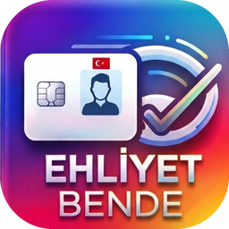
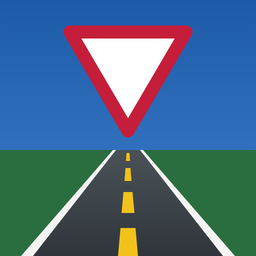

<!DOCTYPE html>
<html lang="tr">
<head>
<meta charset="UTF-8">
<meta name="viewport" content="width=device-width, initial-scale=1, viewport-fit=cover">
<title>Ehliyet Bende — Sürücü Kursu</title>
<link rel="icon" href="../gorsel/favicon.png">
<style>
:root{
  --asfalt:#2F353B; --asfalt2:#3B424A; --serit:#F2C21B; --mavi:#1D5BA8; --kirmizi:#C41E3A; --yesil:#1E8E4F; --turuncu:#E8742A;
  --bg:#ECEEEB; --yuzey:#FFFFFF; --yuzey2:#F5F6F4; --metin:#1C2125; --soluk:#5C656E; --cizgi:#D5D9D6;
  --plaka:#FFFFFF; --plaka-metin:#14181B;
  color-scheme: light;
}
@media (prefers-color-scheme: dark){
  :root:not([data-tema="acik"]){
    --bg:#1A1E22; --yuzey:#242A30; --yuzey2:#2C333A; --metin:#ECEFF1; --soluk:#A3ADB6; --cizgi:#38414A;
    --plaka:#F4F5F2; --plaka-metin:#14181B; --mavi:#4A86D4; --kirmizi:#E0485F; --yesil:#3DB873;
    color-scheme: dark;
  }
}
:root[data-tema="koyu"]{
    --bg:#1A1E22; --yuzey:#242A30; --yuzey2:#2C333A; --metin:#ECEFF1; --soluk:#A3ADB6; --cizgi:#38414A;
    --plaka:#F4F5F2; --plaka-metin:#14181B; --mavi:#4A86D4; --kirmizi:#E0485F; --yesil:#3DB873;
    color-scheme: dark;
}
*{box-sizing:border-box;margin:0;padding:0}
html,body{height:100%}
body{font-family:"Bahnschrift","DIN Alternate","Roboto Condensed","Arial Narrow",system-ui,sans-serif;background:var(--bg);color:var(--metin);font-size:16px;line-height:1.45;-webkit-tap-highlight-color:transparent}
button{font:inherit;color:inherit;border:0;background:none;cursor:pointer}
button:focus-visible,[tabindex]:focus-visible{outline:3px solid var(--serit);outline-offset:2px}
#app{max-width:520px;margin:0 auto;min-height:100%;display:flex;flex-direction:column;background:var(--bg);position:relative}
main{flex:1;padding:0 0 92px}
h1{font-size:1.9rem;line-height:1.1;font-weight:700;letter-spacing:-.01em}
h2{font-size:1.35rem;line-height:1.2;font-weight:700}
h3{font-size:1.08rem;font-weight:700;margin-bottom:.3rem}
p{max-width:65ch}
.soluk{color:var(--soluk)}
.pad{padding:18px 18px 0}

/* Asfalt başlık: sayfanın imza öğesi */
.yol{background:var(--asfalt);color:#F4F5F2;padding:22px 18px 30px;position:relative;overflow:hidden}
.yol::after{content:"";position:absolute;left:0;right:0;bottom:12px;height:4px;background:repeating-linear-gradient(90deg,var(--serit) 0 34px,transparent 34px 58px)}
.yol .ust{display:flex;justify-content:space-between;align-items:center;gap:12px;margin-bottom:18px}
.yol small{color:#C9CFD4}
.avatar{width:38px;height:38px;border-radius:50%;background:var(--serit);color:var(--asfalt);display:grid;place-items:center;font-weight:700;overflow:hidden;flex:none}
.avatar img{width:100%;height:100%;object-fit:cover}

/* Plaka biçiminde skor */
.plaka{display:inline-flex;align-items:stretch;background:var(--plaka);color:var(--plaka-metin);border:3px solid #14181B;border-radius:7px;overflow:hidden;font-weight:700;box-shadow:0 2px 0 rgba(0,0,0,.25)}
.plaka .tr{background:#1D4FA0;color:#fff;font-size:.72rem;display:flex;flex-direction:column;justify-content:flex-end;align-items:center;padding:4px 7px;letter-spacing:.04em}
.plaka .no{font-size:2.1rem;padding:2px 16px;letter-spacing:.06em;font-variant-numeric:tabular-nums;line-height:1.25}
.plaka.buyuk .no{font-size:2.9rem}

/* Bölümler */
.blok{background:var(--yuzey);border:1px solid var(--cizgi);border-radius:14px;padding:16px;margin:14px 18px 0}
.liste-btn{display:flex;align-items:center;gap:14px;width:100%;text-align:left;padding:14px 16px;background:var(--yuzey);border:1px solid var(--cizgi);border-radius:12px;margin-top:10px}
.liste-btn .ikon{width:44px;height:44px;flex:none;display:grid;place-items:center}
.liste-btn b{display:block}
.liste-btn span{color:var(--soluk);font-size:.9rem}
.btn{display:inline-flex;align-items:center;justify-content:center;gap:8px;padding:14px 20px;border-radius:10px;font-weight:700;font-size:1.02rem;min-height:50px}
.btn.ana{background:var(--serit);color:#1C1F22}
.btn.koyu{background:var(--asfalt);color:#fff}
.btn.cerceve{border:2px solid var(--cizgi);background:var(--yuzey)}
.btn.tam{width:100%}
.btn:disabled{opacity:.45}
.satir{display:flex;gap:10px;align-items:center}
.ara{justify-content:space-between}

/* Alt menü */
nav.alt{position:fixed;bottom:0;left:50%;transform:translateX(-50%);width:100%;max-width:520px;background:var(--yuzey);border-top:1px solid var(--cizgi);display:grid;grid-template-columns:repeat(5,1fr);padding:6px 4px calc(6px + env(safe-area-inset-bottom));z-index:20}
nav.alt button{display:flex;flex-direction:column;align-items:center;gap:2px;font-size:.74rem;padding:6px 0;color:var(--soluk);border-radius:8px}
nav.alt button svg{width:24px;height:24px}
nav.alt button[aria-current="page"]{color:var(--metin);font-weight:700}
nav.alt button[aria-current="page"] svg{color:var(--mavi)}

/* Sınav */
.sinav-ust{position:sticky;top:0;z-index:10;background:var(--asfalt);color:#fff;padding:12px 18px;display:flex;justify-content:space-between;align-items:center}
.sure{font-variant-numeric:tabular-nums;font-weight:700;font-size:1.15rem}
.sure.az{color:#FF8A8A}
.ilerleme{height:5px;background:var(--asfalt2)}
.ilerleme i{display:block;height:100%;background:var(--serit);transition:width .2s}
.soru-kat{font-size:.85rem;color:var(--soluk)}
.soru-metin{font-size:1.15rem;font-weight:600;margin:6px 0 14px;line-height:1.4}
.levha-kutu{display:flex;justify-content:center;margin:6px 0 14px}
.levha-kutu svg{width:120px;height:120px}
.sik{display:flex;gap:12px;align-items:flex-start;width:100%;text-align:left;padding:13px 14px;border:2px solid var(--cizgi);border-radius:12px;background:var(--yuzey);margin-bottom:10px;line-height:1.35}
.sik .harf{flex:none;width:30px;height:30px;border-radius:50%;border:2px solid var(--cizgi);display:grid;place-items:center;font-weight:700}
.sik[aria-pressed="true"]{border-color:var(--mavi);background:color-mix(in srgb,var(--mavi) 10%,var(--yuzey))}
.sik[aria-pressed="true"] .harf{background:var(--mavi);border-color:var(--mavi);color:#fff}
.sik.dogru{border-color:var(--yesil)}
.sik.dogru .harf{background:var(--yesil);border-color:var(--yesil);color:#fff}
.sik.yanlis{border-color:var(--kirmizi)}
.sik.yanlis .harf{background:var(--kirmizi);border-color:var(--kirmizi);color:#fff}
.izgara{display:grid;grid-template-columns:repeat(10,1fr);gap:5px}
.izgara button{aspect-ratio:1;border-radius:6px;border:1px solid var(--cizgi);font-size:.78rem;background:var(--yuzey);font-variant-numeric:tabular-nums}
.izgara button.cevapli{background:var(--asfalt);color:#fff;border-color:var(--asfalt)}
.izgara button.aktif{outline:2px solid var(--serit);outline-offset:1px}
.izgara button.d{background:var(--yesil);color:#fff;border-color:var(--yesil)}
.izgara button.y{background:var(--kirmizi);color:#fff;border-color:var(--kirmizi)}
.alt-cubuk{position:fixed;bottom:0;left:50%;transform:translateX(-50%);width:100%;max-width:520px;background:var(--yuzey);border-top:1px solid var(--cizgi);padding:10px 18px calc(10px + env(safe-area-inset-bottom));display:flex;gap:10px;z-index:20}
.alt-cubuk .btn{flex:1}

/* Sonuç */
.sonuc-ust{background:var(--asfalt);color:#fff;padding:26px 18px 34px;text-align:center;position:relative}
.sonuc-ust::after{content:"";position:absolute;left:0;right:0;bottom:12px;height:4px;background:repeating-linear-gradient(90deg,var(--serit) 0 34px,transparent 34px 58px)}
.durum{display:inline-block;margin-top:14px;padding:6px 14px;border-radius:999px;font-weight:700}
.durum.gecti{background:var(--yesil);color:#fff}
.durum.kaldi{background:var(--kirmizi);color:#fff}
.bar{height:10px;background:var(--yuzey2);border-radius:5px;overflow:hidden;margin-top:6px}
.bar i{display:block;height:100%;background:var(--mavi)}
.gecmis-satir{display:flex;justify-content:space-between;align-items:center;padding:10px 0;border-bottom:1px solid var(--cizgi)}
.gecmis-satir:last-child{border-bottom:0}
.rozet{font-size:.8rem;padding:3px 9px;border-radius:999px;font-weight:700}
.rozet.g{background:color-mix(in srgb,var(--yesil) 18%,transparent);color:var(--yesil)}
.rozet.k{background:color-mix(in srgb,var(--kirmizi) 18%,transparent);color:var(--kirmizi)}

/* Sekmeler */
.sekmeler{display:flex;gap:8px;overflow-x:auto;padding:14px 18px 2px;scrollbar-width:none}
.sekmeler::-webkit-scrollbar{display:none}
.sekmeler button{flex:none;padding:8px 14px;border-radius:999px;border:1px solid var(--cizgi);background:var(--yuzey);font-size:.92rem}
.sekmeler button[aria-selected="true"]{background:var(--asfalt);color:#fff;border-color:var(--asfalt)}

/* Pist / canvas */
.tuval-kutu{margin:14px 18px 0;border-radius:14px;overflow:hidden;background:#4A5157;position:relative}
canvas{display:block;width:100%;touch-action:none}
.adimlar{display:flex;gap:6px;margin:12px 18px 0;overflow-x:auto;scrollbar-width:none}
.adimlar button{flex:none;padding:7px 12px;border-radius:8px;border:1px solid var(--cizgi);background:var(--yuzey);font-size:.88rem}
.adimlar button[aria-selected="true"]{background:var(--serit);color:#1C1F22;border-color:var(--serit);font-weight:700}
.talimat{margin:0;padding-left:1.2rem}
.talimat li{margin:.35rem 0}
.talimat li.simdi{font-weight:700}
.kontrol{display:grid;grid-template-columns:1fr 1fr 1fr 1fr;gap:8px;margin:12px 18px 0;user-select:none;-webkit-user-select:none}
.kontrol button{background:var(--asfalt);color:#fff;border-radius:12px;min-height:64px;font-weight:700;font-size:.9rem;display:flex;flex-direction:column;align-items:center;justify-content:center;gap:2px;touch-action:none}
.kontrol button.basili{background:var(--serit);color:#1C1F22}
.kontrol button.gaz{background:var(--yesil)}
.kontrol button.fren{background:var(--kirmizi)}
.hud{position:absolute;top:8px;left:8px;right:8px;display:flex;justify-content:space-between;pointer-events:none}
.hud span{background:rgba(20,24,27,.72);color:#fff;padding:4px 9px;border-radius:7px;font-size:.84rem;font-variant-numeric:tabular-nums}
.bildirim{position:absolute;inset:auto 10px 10px 10px;background:rgba(20,24,27,.88);color:#fff;border-radius:10px;padding:12px;text-align:center;font-weight:700}

/* Dersler */
.levha-izgara{display:grid;grid-template-columns:repeat(3,1fr);gap:10px}
.levha-kart{background:var(--yuzey);border:1px solid var(--cizgi);border-radius:12px;padding:10px 8px;text-align:center;font-size:.84rem;line-height:1.25}
.levha-kart svg{width:64px;height:64px;display:block;margin:0 auto 6px}
.tablo{width:100%;border-collapse:collapse;font-size:.92rem;font-variant-numeric:tabular-nums}
.tablo th,.tablo td{padding:8px 6px;border-bottom:1px solid var(--cizgi);text-align:left}
.tablo th{color:var(--soluk);font-weight:600}
.ders p+p{margin-top:.55rem}
.ders ul{padding-left:1.2rem;margin-top:.4rem}
.ders li{margin:.28rem 0}

/* Giriş */
.giris{min-height:var(--ekran-h,100vh);display:flex;flex-direction:column;background:var(--asfalt);color:#F4F5F2}
.giris .ust-alan{flex:1;padding:48px 24px 0;position:relative;overflow:hidden}
.giris h1{font-size:2.6rem;margin-top:22px}
.giris .serit-dikey{position:absolute;right:42px;top:0;bottom:0;width:6px;background:repeating-linear-gradient(180deg,var(--serit) 0 46px,transparent 46px 78px)}
.giris .alt-alan{padding:24px;display:flex;flex-direction:column;gap:12px;padding-bottom:calc(24px + env(safe-area-inset-bottom))}
.btn.google{background:#fff;color:#1F1F1F}
.btn.misafir{border:2px solid #69737C;color:#fff}

/* Alt sayfa (sheet) */
.perde{position:fixed;inset:0;background:rgba(10,12,14,.55);z-index:50;display:flex;align-items:flex-end;justify-content:center}
.sayfa{background:var(--yuzey);color:var(--metin);width:100%;max-width:520px;border-radius:18px 18px 0 0;padding:22px 20px calc(22px + env(safe-area-inset-bottom));max-height:calc(100% - 28px);overflow:auto}
.sayfa h2{margin-bottom:8px}

.cozum{margin-top:6px;padding:12px 14px;border-radius:12px;border-left:5px solid var(--mavi);background:var(--yuzey2)}
.cozum.iyi{border-left-color:var(--yesil)}.cozum.kotu{border-left-color:var(--kirmizi)}
.cozum p{margin-top:4px}
details.bolum{padding:0}
details.bolum>summary{list-style:none;cursor:pointer;padding:14px 16px;display:flex;justify-content:space-between;align-items:center}
details.bolum>summary::-webkit-details-marker{display:none}
details.bolum>summary h3{margin:0}
details.bolum>summary::after{content:"+";font-size:1.4rem;color:var(--soluk);line-height:1}
details.bolum[open]>summary::after{content:"–"}
.bolum-ic{padding:0 16px 16px}
.bolum-ic .tablo{font-size:.86rem}
.girdi{display:block;width:100%;margin-top:4px;padding:11px 12px;border:1.5px solid var(--cizgi);border-radius:10px;background:var(--yuzey);color:var(--metin);font:inherit}
.girdi:focus{outline:2px solid var(--mavi);outline-offset:1px}
.etiket{display:block;margin-top:10px;font-size:.9rem;color:var(--soluk)}
.not{position:fixed;left:50%;bottom:96px;transform:translateX(-50%);background:var(--asfalt);color:#fff;padding:10px 16px;border-radius:10px;z-index:60;max-width:90%;text-align:center;box-shadow:0 4px 14px rgba(0,0,0,.25)}
.sim-kabin{position:relative}
.kokpit{display:flex;justify-content:space-between;align-items:flex-end;gap:8px;margin:10px 18px 0;padding:12px;background:var(--asfalt);border-radius:16px;user-select:none;-webkit-user-select:none;touch-action:none}
.dir-alan{display:flex;flex-direction:column;align-items:center;gap:4px;color:#C9CFD4;font-size:.78rem}
.direksiyon{width:116px;height:116px;border-radius:50%;background:radial-gradient(circle,#3B424A 0 55%,#262B30 56%);display:grid;place-items:center;touch-action:none;cursor:grab}
.direksiyon.basili{box-shadow:0 0 0 3px var(--serit)}
.dir-svg{width:100px;height:100px;transition:none;pointer-events:none}
.pedal-alan{display:flex;align-items:flex-end;gap:8px;flex:none}
.pedal{width:62px;height:112px;border-radius:12px 12px 16px 16px;color:#fff;font-weight:700;font-size:.92rem;display:flex;flex-direction:column;justify-content:flex-end;align-items:center;padding-bottom:10px;gap:8px;touch-action:none;transform-origin:bottom;transition:transform .06s}
.pedal.gaz{background:#1E8E4F;width:54px;height:126px}
.pedal.fren{background:#C41E3A;width:66px}
.pedal-cizgi{display:block;width:60%;height:46%;border-radius:6px;background:repeating-linear-gradient(180deg,rgba(255,255,255,.28) 0 5px,transparent 5px 11px)}
.pedal.basili{transform:scaleY(.92);filter:brightness(1.18)}
.vites-btn{width:46px;height:70px;border-radius:12px;background:#4A525A;color:#fff;display:flex;flex-direction:column;align-items:center;justify-content:center;touch-action:none}
.vites-btn b{font-size:1.5rem;line-height:1}
.vites-btn small{font-size:.7rem;color:#C9CFD4}
.vites-btn.geri{background:#F4F5F2;color:#14181B}.vites-btn.geri small{color:#5C656E}
.tam-btn{position:absolute;right:8px;bottom:8px;width:40px;height:40px;border-radius:10px;background:rgba(20,24,27,.72);color:#fff;display:grid;place-items:center;z-index:3}
.sim-kabin.tamekran{position:fixed;inset:0;z-index:90;background:#2F353B;display:flex;flex-direction:column}
.sim-kabin.tamekran .tuval-kutu{flex:1;margin:0;border-radius:0}
.sim-kabin.tamekran .kokpit{position:absolute;left:0;right:0;bottom:0;margin:0;background:transparent;padding:14px max(16px,env(safe-area-inset-right)) calc(14px + env(safe-area-inset-bottom)) max(16px,env(safe-area-inset-left));pointer-events:none}
.sim-kabin.tamekran .kokpit>*{pointer-events:auto}
.sim-kabin.tamekran .direksiyon{background:radial-gradient(circle,rgba(59,66,74,.7) 0 55%,rgba(38,43,48,.7) 56%)}
.sim-kabin.tamekran .dir-alan small{display:none}
.sim-kabin.tamekran .tam-btn{top:44px;bottom:auto}
.sim-kabin.tamekran .bildirim{bottom:auto;top:46px;left:50%;right:auto;transform:translateX(-50%);max-width:70%}
body.kilit{overflow:hidden}
@media (max-width:360px){.direksiyon{width:100px;height:100px}.dir-svg{width:86px;height:86px}.pedal{width:54px}.pedal.fren{width:58px}.pedal.gaz{width:48px}.vites-btn{width:42px}}

/* ---- 3D görünüm ---- */
.tuval-kutu{min-height:230px}
.tuval-kutu .g3{position:absolute;inset:0;display:block;z-index:0;touch-action:none}
.tuval-kutu.uc-boyut>canvas:not(.g3){visibility:hidden}
.hud,.bildirim{z-index:2}
.gorunum{position:absolute;left:8px;top:40px;z-index:3;display:flex;gap:4px;background:rgba(20,24,27,.62);padding:4px;border-radius:12px;max-width:calc(100% - 16px);overflow-x:auto;scrollbar-width:none}
.gorunum::-webkit-scrollbar{display:none}
.gorunum button{display:flex;align-items:center;gap:5px;color:#E8ECEF;font-size:.8rem;padding:6px 9px;border-radius:9px;min-height:34px;white-space:nowrap;position:relative}
.gorunum button[aria-pressed="true"]{background:var(--serit);color:#14181B;font-weight:700}
.gorunum button:disabled{opacity:.4}
.gorunum .kilit{font-style:normal;font-size:.72rem;margin-left:1px}
.sim-kabin.tamekran .gorunum{top:44px}
.sim-kabin.tamekran .tam-btn{top:92px}
.tekrar-oynat{position:absolute;right:8px;bottom:8px;z-index:3;width:40px;height:40px;border-radius:10px;background:rgba(20,24,27,.72);color:#fff;font-size:1.3rem}
.anim-kutu{margin:0 0 14px}
.anim-kutu .tuval-kutu{margin:0;aspect-ratio:16/10;min-height:0}
.anim-kutu canvas#acv{height:100%!important}
.anim-kutu .gorunum{top:auto;bottom:8px;max-width:calc(100% - 64px)}
.rozet3d{display:inline-block;font-size:.72rem;font-weight:700;padding:2px 7px;border-radius:999px;background:var(--serit);color:#14181B;margin-left:6px;vertical-align:middle}
/* ---- kokpit ek tuşlar ---- */
.kokpit{flex-wrap:wrap}
.kokpit-ust{width:100%;display:flex;gap:8px;margin-bottom:4px}
.k-tus{flex:1;min-height:46px;border-radius:10px;background:#4A525A;color:#fff;font-weight:700;font-size:.9rem;touch-action:manipulation}
.k-tus[aria-pressed="true"]{background:#FFA21A;color:#14181B}
#elFren[aria-pressed="true"]{background:var(--kirmizi);color:#fff}
.sim-kabin.tamekran .kokpit-ust{position:absolute;left:0;right:0;top:-60px;padding:0 16px;pointer-events:auto}
/* ---- araç kontrol listesi ---- */
.kontrol-liste{margin:10px 18px 0;padding:14px;background:var(--asfalt);border-radius:16px;color:#fff}
.k-baslik{margin-bottom:10px;color:#C9CFD4}.k-baslik b{color:#fff}
.k-izgara{display:grid;grid-template-columns:1fr 1fr;gap:8px}
.k-adim{text-align:left;background:#4A525A;color:#fff;border-radius:12px;padding:12px;min-height:72px;display:flex;flex-direction:column;gap:3px}
.k-adim b{font-size:.98rem}.k-adim span{font-size:.8rem;color:#C9CFD4}
.k-adim.tamam{background:var(--yesil);opacity:.85}
.k-adim.salla{animation:salla .35s}
@keyframes salla{0%,100%{transform:translateX(0)}25%{transform:translateX(-6px)}75%{transform:translateX(6px)}}
.sim-kabin.tamekran .kontrol-liste{position:absolute;left:0;right:0;bottom:0;margin:0;border-radius:0;background:rgba(47,53,59,.92)}
/* ---- büyük sayfa / giriş kutuları ---- */
.sayfa{padding:26px 22px calc(26px + env(safe-area-inset-bottom));font-size:1.05rem;min-height:55%}
.sayfa h2{font-size:1.5rem;margin-bottom:10px}
.sayfa .btn{min-height:56px;font-size:1.08rem}
.girdi{min-height:54px;font-size:1.1rem;padding:13px 14px}
textarea.girdi{min-height:90px}
.etiket{font-size:1rem}
@media (min-width:600px){.perde{align-items:center}.sayfa{border-radius:18px;max-width:560px}}
.giris .alt-alan .btn{min-height:62px;font-size:1.15rem;border-radius:14px}
.giris .alt-alan small{font-size:.95rem}
.btn.egitmen{border:2px solid #69737C;color:#fff;background:transparent}
.pin-ekran{text-align:center}
.pin-noktalar{display:flex;justify-content:center;gap:14px;margin:18px 0 6px}
.pin-noktalar i{width:20px;height:20px;border-radius:50%;border:2px solid var(--soluk)}
.pin-noktalar i.dolu{background:var(--metin);border-color:var(--metin)}
.pin-hata{color:var(--kirmizi);min-height:1.5em;font-weight:600}
.pin-tus{display:grid;grid-template-columns:repeat(3,1fr);gap:10px;max-width:360px;margin:6px auto 0}
.pin-tus button{min-height:66px;border-radius:14px;background:var(--yuzey2);border:1px solid var(--cizgi);font-size:1.6rem;font-weight:700}
.pin-tus button.tamam{background:var(--serit);color:#1C1F22;font-size:1.1rem}
/* ---- premium ---- */
.planlar{display:grid;gap:10px}
.plan{position:relative;text-align:left;border:2px solid var(--cizgi);background:var(--yuzey);border-radius:14px;padding:16px;display:flex;flex-direction:column;gap:2px}
.plan.one-cikan{border-color:var(--serit)}
.plan-ad{font-weight:700;color:var(--soluk)}
.plan-fiyat{font-size:1.7rem;font-weight:800}.plan-fiyat small{font-size:.95rem;font-weight:600;color:var(--soluk)}
.plan-alt{font-size:.88rem;color:var(--soluk)}
.plan-rozet{position:absolute;right:12px;top:12px;background:var(--serit);color:#1C1F22;font-size:.75rem;font-weight:800;padding:3px 9px;border-radius:999px}
.deneme-bant{border-color:var(--yesil);background:color-mix(in srgb,var(--yesil) 10%,var(--yuzey))}
.deneme-bant b{color:var(--yesil)}
.ozellik{display:flex;gap:10px;padding:8px 0;border-bottom:1px solid var(--cizgi)}.ozellik:last-child{border-bottom:0}
.tik{flex:none;width:24px;height:24px;border-radius:50%;background:var(--yesil);color:#fff;display:grid;place-items:center;font-size:.8rem;font-weight:800}
.premium-kart{display:flex;gap:12px;align-items:center;width:100%;text-align:left;padding:14px 16px;border-radius:14px;background:linear-gradient(0deg,var(--asfalt),var(--asfalt));color:#fff;margin-top:10px}
.premium-kart b{display:block}.premium-kart span{color:#C9CFD4;font-size:.9rem}
.guncel{font-size:.85rem;color:var(--soluk);margin-top:6px}
.egitmen-basvuru{margin-top:18px;padding:16px;border-radius:14px;background:var(--yuzey2);border:1px solid var(--cizgi);display:grid;gap:8px;text-align:left}
.egitmen-basvuru span{color:var(--soluk);font-size:.95rem}
.egitmen-basvuru .btn{min-height:54px;text-decoration:none;display:flex;align-items:center;justify-content:center}
.hesap-tur{display:flex;align-items:center;gap:12px;padding:14px;border-radius:12px;background:var(--yuzey);border:2px solid var(--cizgi);color:var(--metin);text-decoration:none;min-height:64px}
.hesap-tur:active{border-color:var(--serit)}
.hesap-tur b{display:block;font-size:1.02rem;color:var(--metin)}.hesap-tur small{display:block;color:var(--soluk);font-size:.85rem;margin-top:2px}
.hesap-tur>span:nth-child(2){flex:1}.hesap-tur>span:last-child{font-size:1.6rem;color:var(--soluk)}
.ht-ikon{font-size:1.6rem;width:42px;height:42px;display:grid;place-items:center;border-radius:10px;background:var(--yuzey2)}
.segment{display:flex;gap:4px;background:var(--yuzey2);padding:4px;border-radius:12px;margin-bottom:10px}
.segment button{flex:1;min-height:42px;border-radius:9px;font-weight:600;color:var(--soluk)}
.segment button[aria-pressed="true"]{background:var(--yuzey);color:var(--metin);box-shadow:0 1px 3px rgba(0,0,0,.15)}
.basvuru{border:1px solid var(--cizgi);background:var(--yuzey);border-radius:14px;padding:14px;margin-bottom:10px}
.rozet-k{font-size:.75rem;font-weight:700;padding:3px 9px;border-radius:999px;background:var(--yuzey2)}
.rozet-k.isletme{background:var(--serit);color:#1C1F22}
.hesap-sec{display:grid;gap:8px;margin:10px 0 6px}
.hesap-sec .hesap-tur{width:100%;text-align:left}
.hesap-tur.secili{border-color:var(--serit);background:color-mix(in srgb,var(--serit) 12%,var(--yuzey))}
/* Android WebView'de vh birimi sayfa yüklenirken 0 yükseklikte hesaplanabiliyor: perde yüksekliğine göre ölç */
.perde{height:100%;height:var(--ekran-h,100%)}
.sayfa{max-height:calc(100% - 28px);overflow-y:auto;-webkit-overflow-scrolling:touch;overscroll-behavior:contain}

/* ---- sponsorlu reklam ---- */
.sponsor-kose{position:fixed;left:50%;transform:translateX(-50%);top:calc(5px + env(safe-area-inset-top));z-index:19;display:flex;align-items:center;justify-content:flex-start;gap:8px;height:44px;width:min(86vw,340px);background:#fff;border-radius:10px;padding:3px 10px;box-shadow:0 2px 10px rgba(0,0,0,.25);text-decoration:none}
.sponsor-kose img{display:block;height:38px;width:auto;max-width:45%;object-fit:contain;flex:none}
.sponsor-kose .sponsor-etiket{font-size:.5rem;writing-mode:vertical-rl;transform:rotate(180deg);line-height:1}
.sponsor-etiket{display:inline-block;font-size:.62rem;font-weight:700;letter-spacing:.02em;color:#6B747C;text-transform:uppercase}
.sponsor-tam{position:fixed;inset:0;height:var(--ekran-h,100%);z-index:200;background:rgba(15,18,20,.78);display:flex;align-items:center;justify-content:center;padding:20px}
.sponsor-kart{width:100%;max-width:420px;background:#fff;color:#1C1F22;border-radius:20px;padding:14px 16px 16px;box-shadow:0 20px 50px rgba(0,0,0,.35)}
.sponsor-ust{display:flex;justify-content:space-between;align-items:center;margin-bottom:6px}
.sponsor-kapat{width:36px;height:36px;border-radius:50%;background:#EEF0F1;color:#1C1F22;font-weight:800;font-size:1rem}
.sponsor-kapat:disabled{opacity:.7}
.sponsor-gorsel{display:block;background:#fff;border-radius:12px;padding:10px;border:1px solid #E3E6E8}
.sponsor-gorsel img{display:block;width:100%;height:auto}
.sponsor-metin{margin:12px 2px;font-size:1rem;color:#3A4147;text-align:center}
.sponsor-premium{display:block;margin:10px auto 0;font-size:.88rem;color:#6B747C;text-decoration:underline}
.sponsorlu section.yol{padding-top:58px}
.sponsorlu #m > :first-child:not(.yol){margin-top:52px}
.sponsor-kart a.btn{text-decoration:none;display:flex;align-items:center;justify-content:center}
.arka-bak{position:absolute;right:8px;bottom:58px;z-index:3;display:flex;align-items:center;gap:6px;min-height:44px;padding:8px 14px;border-radius:12px;background:rgba(20,24,27,.78);color:#fff;font-weight:700;font-size:.9rem;touch-action:manipulation}
.arka-bak[aria-pressed="true"]{background:var(--serit);color:#14181B}
.arka-bak[hidden]{display:none}
.vites-kutu{display:flex;flex-direction:column;gap:3px;background:#2A2F34;padding:4px;border-radius:12px;align-self:stretch;justify-content:center}
.vites-sec{width:38px;height:25px;border-radius:7px;color:#9AA3AB;font-weight:800;font-size:.95rem;touch-action:none}
.vites-sec[aria-checked="true"]{background:var(--serit);color:#14181B}
.vites-sec[data-v="R"][aria-checked="true"]{background:#F4F5F2}
.anlatim-kilit{position:absolute;left:50%;top:50%;transform:translate(-50%,-50%);z-index:4;width:min(86%,340px);display:flex;flex-direction:column;gap:4px;text-align:center;background:rgba(20,24,27,.86);color:#fff;border-radius:14px;padding:14px 16px;border:2px solid var(--serit)}
.anlatim-kilit b{font-size:1rem}.anlatim-kilit span{font-size:.85rem;color:#C9CFD4}
.izle-btn{min-height:44px;padding:8px 16px;margin-left:8px;pointer-events:auto;background:rgba(255,255,255,.92);color:#14181C}
.izle-bant{position:absolute;left:10px;bottom:10px;white-space:nowrap;display:flex;align-items:center;gap:10px;background:rgba(20,24,28,.85);color:#fff;padding:6px 8px 6px 14px;border-radius:999px;font-weight:700;font-size:.9rem;pointer-events:auto;z-index:6}
.izle-bant span{color:#FF5A4F}
.izle-bant .btn{min-height:34px;padding:4px 12px;background:#fff;color:#14181C;border-color:#fff}
.analiz-kartlar{display:grid;grid-template-columns:repeat(4,1fr);gap:8px;margin:14px 18px 0}
.analiz-kartlar div{background:var(--yuzey);border:1px solid var(--cizgi);border-radius:12px;padding:10px 6px;text-align:center}
.analiz-kartlar b{display:block;font-size:1.25rem}
.analiz-kartlar span{font-size:.75rem;color:var(--soluk)}
.analiz-cubuk{padding:8px 0}
.analiz-cubuk .cubuk{height:10px;border-radius:6px;background:var(--cizgi);overflow:hidden;margin:6px 0 4px}
.analiz-cubuk .cubuk i{display:block;height:100%;border-radius:6px}
.kayit{padding:12px 0;border-top:1px solid var(--cizgi)}
.blok h3+.kayit{border-top:0}
.kayit-gecmis{list-style:none;margin:6px 0 0;padding:0;font-size:.85rem}
.kayit-gecmis li{padding:2px 0}
.kayit-gecmis li.ok{color:var(--yesil)}
.kayit-gecmis li.no{color:var(--kirmizi)}
.b-soru{font-weight:700;margin:6px 0 10px;line-height:1.35}
.b-siklar{display:grid;gap:8px}
.b-sik{text-align:left;display:flex;gap:8px;align-items:flex-start}
.b-sik.yanlis{border-color:var(--kirmizi);background:rgba(200,16,46,.08)}
.eg-kart{background:var(--yuzey);border:1px solid var(--cizgi);border-radius:14px;padding:14px;margin-top:10px}
.eg-avatar{width:44px;height:44px;flex:none;border-radius:50%;background:#F2C21B;color:#1C1F22;display:grid;place-items:center;font-weight:800;font-size:1.2rem}
.eg-sinif{display:flex;flex-wrap:wrap;gap:6px;margin-top:10px}
.eg-sinif span{border:1px solid var(--cizgi);border-radius:999px;padding:2px 10px;font-size:.82rem;font-weight:700}
.sehir-degis{background:none;border:0;color:#F2C21B;font-weight:700;text-decoration:underline;padding:0;font:inherit;cursor:pointer}
.bos-durum{text-align:center;padding:24px 8px}
.onay-satir{display:flex;gap:10px;align-items:flex-start;margin-top:8px;font-size:.92rem}
.onay-satir input{width:20px;height:20px;flex:none;margin-top:2px}
.sinif-sec{display:flex;flex-wrap:wrap;gap:6px;margin-bottom:8px}
.sinif-sec label{cursor:pointer}
.sinif-sec input{position:absolute;opacity:0;pointer-events:none}
.sinif-sec span{display:inline-block;border:1px solid var(--cizgi);border-radius:999px;padding:6px 12px;font-weight:700;font-size:.88rem}
.sinif-sec input:checked+span{background:#1C1F22;color:#fff;border-color:#1C1F22}
.sinif-sec input:focus-visible+span{outline:2px solid #F2C21B}
.rozet-k.egitmen,.rozet-k.isletme{white-space:nowrap}

.sponsor-yazi{display:flex;flex-direction:column;min-width:0;line-height:1.15;color:#1C1F22}
.sponsor-yazi b{font-size:.82rem;white-space:nowrap;overflow:hidden;text-overflow:ellipsis}
.sponsor-yazi small{font-size:.7rem;color:#1F6FB2;font-weight:700}
.hata-ozet{display:grid;grid-template-columns:repeat(3,1fr);gap:8px;margin:4px 0 12px}
.hata-ozet div{border-radius:12px;padding:10px 6px;text-align:center;color:#fff}
.hata-ozet b{display:block;font-size:1.6rem;line-height:1}
.hata-ozet span{font-size:.8rem;font-weight:700}
.hata-ozet .k{background:#C8102E}.hata-ozet .s{background:#E0A100;color:#1C1F22}.hata-ozet .m{background:#1F6FB2}
.hata-renk{display:inline-block;width:14px;height:14px;border-radius:4px;vertical-align:-1px;margin-right:4px}
.hata-renk.k{background:#C8102E}.hata-renk.s{background:#E0A100}.hata-renk.m{background:#1F6FB2}
.hata-madde{padding:10px 0;border-top:1px solid var(--cizgi)}
.hata-madde:first-child{border-top:0}
.hata-madde p{margin:4px 0 0;font-size:.92rem;line-height:1.4}
.hm-y span{color:#C8102E;font-weight:900}.hm-d span{color:#1E8E4F;font-weight:900}
.hata-mavi{list-style:none;padding:0;columns:1}
.hata-mavi li{padding:3px 0}.hata-mavi span{color:#1E8E4F;font-weight:900}
.hanim-izgara{display:grid;gap:14px}
.hanim{margin:0}
.hanim-tuval{position:relative;border-radius:12px;overflow:hidden;background:#3E454C}
.hanim-tuval canvas{display:block;width:100%}
.hanim figcaption{padding:8px 2px 0}
.hanim-not{margin:4px 0 0;font-size:.9rem;line-height:1.4;padding-left:10px;border-left:3px solid var(--cizgi)}
.hanim-not.k{border-color:#C8102E}.hanim-not.y{border-color:#1E8E4F}
@media (min-width:700px){.hanim-izgara{grid-template-columns:1fr 1fr}}
.mini-btn{margin-top:12px;min-height:42px;width:100%}
.mini-siklar{margin-top:12px}
.akis-kart{background:var(--yuzey);border:1px solid var(--cizgi);border-radius:14px;padding:12px;margin-top:12px}
.akis-kart.one{border-color:#F2C21B;box-shadow:0 0 0 2px rgba(242,194,27,.35)}
.one-rozet{background:#F2C21B;color:#1C1F22;font-weight:800;font-size:.72rem;border-radius:999px;padding:3px 8px;white-space:nowrap}
.akis-foto{display:block;width:100%;border-radius:10px;margin-top:10px;background:#E9ECEE}
.akis-metin{margin:10px 0 0;white-space:pre-wrap;line-height:1.45}
.akis-btn{border:1px solid var(--cizgi);background:var(--yuzey);border-radius:999px;padding:6px 12px;font-weight:700;font-size:.86rem;min-height:36px;color:inherit}
.akis-btn.begen.on{background:#FDE7EA;border-color:#C8102E;color:#C8102E}
.akis-btn.tehlike{color:#C8102E}
.akis-mini{display:flex;gap:10px;margin-top:8px;background:rgba(0,0,0,.03);border-radius:10px;padding:8px}
.akis-mini img{width:72px;height:72px;object-fit:cover;border-radius:8px;flex:none}
.akis-mini p{margin:0;font-size:.88rem}
.foto-sec{margin:6px 0 4px}
.onay-satir[hidden]{display:none}

/* dil */
.dil-btn{background:rgba(255,255,255,.12);color:inherit;border:1px solid rgba(255,255,255,.25);border-radius:999px;padding:7px 12px;font:inherit;font-size:.9rem;font-weight:600;cursor:pointer;min-height:40px}
.giris .dil-btn{position:absolute;top:calc(64px + env(safe-area-inset-top));right:12px;z-index:3}
.giris{position:relative}
.dil-satir{display:flex;align-items:center;justify-content:space-between;gap:10px}
.dil-satir .dil-btn{background:transparent;border-color:var(--cizgi);color:var(--metin, inherit)}
html[data-rtl] p, html[data-rtl] h1, html[data-rtl] h2, html[data-rtl] h3, html[data-rtl] li, html[data-rtl] label, html[data-rtl] small, html[data-rtl] .liste-btn > span:not(.ikon), html[data-rtl] .sayfa, html[data-rtl] .bos-durum{direction:rtl;unicode-bidi:plaintext}
html[data-rtl] .liste-btn > span:not(.ikon){text-align:right}

/* tema ve ayarlar */
.ayarlar{display:grid;gap:14px}
.ayar-satir{display:flex;align-items:center;justify-content:space-between;gap:12px;flex-wrap:wrap}
.ayar-satir > span{display:grid;gap:2px;min-width:0;flex:1}
.ayar-satir small{color:var(--soluk);font-size:.82rem}
.seg{display:inline-flex;background:var(--yuzey2);border:1px solid var(--cizgi);border-radius:999px;padding:3px;gap:2px}
.seg button{padding:7px 11px;border-radius:999px;font-size:.88rem;font-weight:600;color:var(--soluk);min-height:36px}
.seg button[aria-checked="true"]{background:var(--yuzey);color:var(--metin);box-shadow:0 1px 3px rgba(0,0,0,.18)}
.anahtar{width:52px;height:30px;border-radius:999px;background:var(--cizgi);position:relative;flex:none;transition:background .2s}
.anahtar span{position:absolute;top:3px;left:3px;width:24px;height:24px;border-radius:50%;background:#fff;box-shadow:0 1px 3px rgba(0,0,0,.3);transition:transform .2s}
.anahtar[aria-checked="true"]{background:var(--yesil)}
.anahtar[aria-checked="true"] span{transform:translateX(22px)}
html[data-rtl] .anahtar[aria-checked="true"] span{transform:translateX(22px)}
.ayar-satir b{white-space:nowrap}

/* ===== Web sürümü: site düzeni ===== */
.site-ust,.site-alt{display:none}
html.web .site-ust{display:block;position:sticky;top:0;z-index:30;background:var(--asfalt);color:#F4F5F2;width:100vw;margin-left:calc(50% - 50vw);box-shadow:0 1px 0 rgba(255,255,255,.06)}
html.web .site-ic{max-width:1040px;margin:0 auto;padding:0 16px;display:flex;align-items:center;gap:14px;min-height:56px}
.site-marka{display:flex;gap:9px;align-items:center;color:#fff;text-decoration:none;font-weight:700;letter-spacing:.02em;white-space:nowrap}
.site-marka img{border-radius:8px;width:32px;height:32px}
.site-menu{display:none;gap:2px;margin-left:10px}
.site-menu button{color:#C9CFD4;padding:8px 12px;border-radius:8px;font-weight:600;font-size:.95rem}
.site-menu button:hover{color:#fff;background:rgba(255,255,255,.07)}
.site-menu button[aria-current="page"]{color:#fff;background:rgba(255,255,255,.12);box-shadow:inset 0 -3px 0 var(--serit)}
.site-sag{margin-left:auto;display:flex;align-items:center;gap:10px}
.site-sag .dil-btn{min-height:36px;padding:5px 11px}
.kol-durum{font-size:1.2rem}
html.web .site-alt{display:block;background:var(--asfalt);color:#C9CFD4;width:100vw;margin-left:calc(50% - 50vw);margin-top:40px;font-size:.9rem;position:relative}
html.web .site-alt::before{content:"";position:absolute;left:0;right:0;top:0;height:4px;background:repeating-linear-gradient(90deg,var(--serit) 0 40px,transparent 40px 70px)}
html.web .site-alt .site-ic{justify-content:space-between;flex-wrap:wrap;padding-top:22px;padding-bottom:calc(22px + 76px)}
html.web .site-alt nav{display:flex;gap:16px;flex-wrap:wrap}
html.web .site-alt a{color:#E6EAED}
html.web .sponsor-kose{top:64px}
@media (min-width:900px){
  html.web body{background:var(--bg)}
  html.web #app{max-width:900px}
  html.web .site-menu{display:flex}
  html.web nav.alt{display:none}
  html.web main{padding-bottom:0}
  html.web .site-alt .site-ic{padding-bottom:22px}
  html.web section.yol{border-radius:0 0 22px 22px}
  html.web .ana-izgara{display:grid;grid-template-columns:1fr 1fr;gap:12px;align-items:stretch}
  html.web .ana-izgara > *{margin:0!important}
  html.web .ana-izgara > #hizli{grid-column:1/-1}
  html.web .alt-cubuk{max-width:900px}
}

/* ===== Web sürümü: PC ve yatay tablet düzeni (900px ve üzeri) ===== */
.giris-ozellik{display:none}
@media (min-width:900px){
  html.web body{overflow-x:clip}
  html.web #app{max-width:none}
  html.web main#m{width:100%;max-width:1200px;margin:0 auto;padding:0 6px}
  html.web .site-ic{max-width:1200px;padding:0 24px}
  /* Sayfa başlığı: tam genişlik bant */
  html.web main#m > section.yol{width:100vw;margin-left:calc(50% - 50vw);border-radius:0;padding:34px max(30px,calc(50vw - 576px)) 44px}
  html.web main#m > section.yol h1{font-size:2.3rem}
  /* Sponsor: başlıkların üstüne binmesin, sağ alt köşe */
  html.web .sponsor-kose{top:auto;bottom:18px;left:auto;right:18px;transform:none;width:300px;box-shadow:0 6px 24px rgba(0,0,0,.28)}
  /* İki sütun */
  html.web .web-iki{display:grid;grid-template-columns:minmax(0,1fr) minmax(0,1fr);gap:0 6px;align-items:start}
  html.web .web-iki > div{min-width:0}
  /* Ana sayfa */
  html.web .ana-izgara{padding:22px 18px 0;gap:14px}
  html.web .ana-izgara > #hizli{min-height:58px;font-size:1.1rem}
  /* Pist: simülasyon solda büyük, anlatım sağda */
  html.web #pistIc{display:grid;grid-template-columns:minmax(0,1.7fr) minmax(300px,1fr);gap:14px 20px;padding:14px 18px 0;align-items:start}
  html.web #pistIc > *{grid-column:2;margin:0}
  html.web #pistIc > .adimlar{grid-column:1/-1}
  html.web #pistIc > .tuval-kutu{grid-column:1;grid-row:2 / span 6;border-radius:16px;position:sticky;top:72px}
  html.web #pistIc > .pad{padding:0}
  /* Sürüş simülasyonu: araç ekranı solda büyük, kontroller sağda */
  html.web #pistIc > .sim-kabin{grid-column:1/-1}
  html.web #pistIc > .sim-kabin ~ *{grid-column:1/-1}
  html.web .sim-kabin:not(.tamekran){display:grid;grid-template-columns:minmax(0,1.7fr) minmax(300px,1fr);gap:20px;align-items:start}
  html.web .sim-kabin:not(.tamekran) > *{grid-column:2;margin:0}
  html.web .sim-kabin:not(.tamekran) > .tuval-kutu{grid-column:1;grid-row:1 / span 6;border-radius:16px}
  html.web .site-alt .site-ic{padding-right:340px}
  /* Dersler */
  html.web .hanim-izgara{grid-template-columns:repeat(3,1fr)}
  /* E-Sınav soru ekranı: soru solda, şıklar sağda */
  html.web .sinav-ust{padding-left:max(24px,calc(50vw - 576px));padding-right:max(24px,calc(50vw - 576px))}
  html.web .sinav-iki{display:grid;grid-template-columns:minmax(0,1fr) minmax(0,1fr);gap:36px;max-width:1200px;margin:0 auto;align-items:start;padding:12px 6px 0}
  html.web .sinav-iki .soru-metin{font-size:1.35rem;line-height:1.45}
  html.web .sinav-iki .sol{position:sticky;top:76px}
  html.web .alt-cubuk{max-width:1200px;justify-content:flex-end;border:1px solid var(--cizgi);border-bottom:0;border-radius:14px 14px 0 0}
  html.web .alt-cubuk .btn{min-width:180px;flex:0 0 auto}
  /* Giriş: ikiye bölünmüş ekran */
  html.web .giris{display:grid;grid-template-columns:minmax(0,1.15fr) minmax(400px,1fr);min-height:var(--ekran-h,100vh)}
  html.web .giris .ust-alan{display:flex;flex-direction:column;justify-content:center;padding:96px clamp(36px,7vw,120px) 64px}
  html.web .giris .ust-alan img{margin-top:0!important;width:112px;height:112px}
  html.web .giris h1{font-size:clamp(2.8rem,4.6vw,4.2rem);line-height:1.05}
  html.web .giris .ust-alan p{font-size:1.15rem;max-width:36ch!important}
  html.web .giris-ozellik{display:grid;gap:12px;list-style:none;margin:28px 0 0;padding:0;max-width:440px}
  html.web .giris-ozellik li{display:flex;gap:12px;align-items:center;color:#E6EAED;font-weight:600}
  html.web .giris-ozellik li::before{content:"";flex:none;width:22px;height:22px;border-radius:50%;background:var(--serit) url("data:image/svg+xml,%3Csvg xmlns='http://www.w3.org/2000/svg' viewBox='0 0 24 24'%3E%3Cpath d='M6 12.5l4 4 8-9' fill='none' stroke='%231A1E22' stroke-width='3' stroke-linecap='round' stroke-linejoin='round'/%3E%3C/svg%3E") center/14px no-repeat}
  html.web .giris .alt-alan{justify-content:center;align-items:center;padding:48px clamp(32px,5vw,80px);background:rgba(255,255,255,.035);border-left:1px solid rgba(255,255,255,.08)}
  html.web .giris .alt-alan > *{width:100%;max-width:420px}
  html.web .giris .dil-btn{top:22px;right:24px}
}
@media (min-width:1200px){
  html.web .ana-izgara{grid-template-columns:repeat(3,1fr)}
}

@media (prefers-reduced-motion: reduce){*{transition:none!important;animation:none!important}}
</style>
</head>
<body>
<div id="app"></div>
<script>
/**
 * @license
 * Copyright 2010-2023 Three.js Authors
 * SPDX-License-Identifier: MIT
 */
!function(t,e){"object"==typeof exports&&"undefined"!=typeof module?e(exports):"function"==typeof define&&define.amd?define(["exports"],e):e((t="undefined"!=typeof globalThis?globalThis:t||self).THREE={})}(this,(function(t){"use strict";const e="149",i=100,n=300,r=301,s=302,a=303,o=304,l=306,c=1e3,h=1001,u=1002,d=1003,p=1004,m=1005,f=1006,g=1007,v=1008,x=1009,_=1012,y=1014,M=1015,b=1016,S=1020,w=1023,T=1026,A=1027,E=33776,C=33777,L=33778,R=33779,P=35840,I=35841,D=35842,N=35843,O=37492,z=37496,U=37808,B=37809,F=37810,k=37811,G=37812,V=37813,H=37814,W=37815,j=37816,q=37817,X=37818,Y=37819,Z=37820,J=37821,K=36492,$=36284,Q=36285,tt=36286,et=2300,it=2301,nt=2302,rt=2400,st=2401,at=2402,ot=2500,lt=2501,ct=3e3,ht=3001,ut="srgb",dt="srgb-linear",pt=7680,mt=35044,ft="300 es",gt=1035;class vt{addEventListener(t,e){void 0===this._listeners&&(this._listeners={});const i=this._listeners;void 0===i[t]&&(i[t]=[]),-1===i[t].indexOf(e)&&i[t].push(e)}hasEventListener(t,e){if(void 0===this._listeners)return!1;const i=this._listeners;return void 0!==i[t]&&-1!==i[t].indexOf(e)}removeEventListener(t,e){if(void 0===this._listeners)return;const i=this._listeners[t];if(void 0!==i){const t=i.indexOf(e);-1!==t&&i.splice(t,1)}}dispatchEvent(t){if(void 0===this._listeners)return;const e=this._listeners[t.type];if(void 0!==e){t.target=this;const i=e.slice(0);for(let e=0,n=i.length;e<n;e++)i[e].call(this,t);t.target=null}}}const xt=["00","01","02","03","04","05","06","07","08","09","0a","0b","0c","0d","0e","0f","10","11","12","13","14","15","16","17","18","19","1a","1b","1c","1d","1e","1f","20","21","22","23","24","25","26","27","28","29","2a","2b","2c","2d","2e","2f","30","31","32","33","34","35","36","37","38","39","3a","3b","3c","3d","3e","3f","40","41","42","43","44","45","46","47","48","49","4a","4b","4c","4d","4e","4f","50","51","52","53","54","55","56","57","58","59","5a","5b","5c","5d","5e","5f","60","61","62","63","64","65","66","67","68","69","6a","6b","6c","6d","6e","6f","70","71","72","73","74","75","76","77","78","79","7a","7b","7c","7d","7e","7f","80","81","82","83","84","85","86","87","88","89","8a","8b","8c","8d","8e","8f","90","91","92","93","94","95","96","97","98","99","9a","9b","9c","9d","9e","9f","a0","a1","a2","a3","a4","a5","a6","a7","a8","a9","aa","ab","ac","ad","ae","af","b0","b1","b2","b3","b4","b5","b6","b7","b8","b9","ba","bb","bc","bd","be","bf","c0","c1","c2","c3","c4","c5","c6","c7","c8","c9","ca","cb","cc","cd","ce","cf","d0","d1","d2","d3","d4","d5","d6","d7","d8","d9","da","db","dc","dd","de","df","e0","e1","e2","e3","e4","e5","e6","e7","e8","e9","ea","eb","ec","ed","ee","ef","f0","f1","f2","f3","f4","f5","f6","f7","f8","f9","fa","fb","fc","fd","fe","ff"];let _t=1234567;const yt=Math.PI/180,Mt=180/Math.PI;function bt(){const t=4294967295*Math.random()|0,e=4294967295*Math.random()|0,i=4294967295*Math.random()|0,n=4294967295*Math.random()|0;return(xt[255&t]+xt[t>>8&255]+xt[t>>16&255]+xt[t>>24&255]+"-"+xt[255&e]+xt[e>>8&255]+"-"+xt[e>>16&15|64]+xt[e>>24&255]+"-"+xt[63&i|128]+xt[i>>8&255]+"-"+xt[i>>16&255]+xt[i>>24&255]+xt[255&n]+xt[n>>8&255]+xt[n>>16&255]+xt[n>>24&255]).toLowerCase()}function St(t,e,i){return Math.max(e,Math.min(i,t))}function wt(t,e){return(t%e+e)%e}function Tt(t,e,i){return(1-i)*t+i*e}function At(t){return 0==(t&t-1)&&0!==t}function Et(t){return Math.pow(2,Math.ceil(Math.log(t)/Math.LN2))}function Ct(t){return Math.pow(2,Math.floor(Math.log(t)/Math.LN2))}function Lt(t,e){switch(e.constructor){case Float32Array:return t;case Uint16Array:return t/65535;case Uint8Array:return t/255;case Int16Array:return Math.max(t/32767,-1);case Int8Array:return Math.max(t/127,-1);default:throw new Error("Invalid component type.")}}function Rt(t,e){switch(e.constructor){case Float32Array:return t;case Uint16Array:return Math.round(65535*t);case Uint8Array:return Math.round(255*t);case Int16Array:return Math.round(32767*t);case Int8Array:return Math.round(127*t);default:throw new Error("Invalid component type.")}}var Pt=Object.freeze({__proto__:null,DEG2RAD:yt,RAD2DEG:Mt,ceilPowerOfTwo:Et,clamp:St,damp:function(t,e,i,n){return Tt(t,e,1-Math.exp(-i*n))},degToRad:function(t){return t*yt},denormalize:Lt,euclideanModulo:wt,floorPowerOfTwo:Ct,generateUUID:bt,inverseLerp:function(t,e,i){return t!==e?(i-t)/(e-t):0},isPowerOfTwo:At,lerp:Tt,mapLinear:function(t,e,i,n,r){return n+(t-e)*(r-n)/(i-e)},normalize:Rt,pingpong:function(t,e=1){return e-Math.abs(wt(t,2*e)-e)},radToDeg:function(t){return t*Mt},randFloat:function(t,e){return t+Math.random()*(e-t)},randFloatSpread:function(t){return t*(.5-Math.random())},randInt:function(t,e){return t+Math.floor(Math.random()*(e-t+1))},seededRandom:function(t){void 0!==t&&(_t=t);let e=_t+=1831565813;return e=Math.imul(e^e>>>15,1|e),e^=e+Math.imul(e^e>>>7,61|e),((e^e>>>14)>>>0)/4294967296},setQuaternionFromProperEuler:function(t,e,i,n,r){const s=Math.cos,a=Math.sin,o=s(i/2),l=a(i/2),c=s((e+n)/2),h=a((e+n)/2),u=s((e-n)/2),d=a((e-n)/2),p=s((n-e)/2),m=a((n-e)/2);switch(r){case"XYX":t.set(o*h,l*u,l*d,o*c);break;case"YZY":t.set(l*d,o*h,l*u,o*c);break;case"ZXZ":t.set(l*u,l*d,o*h,o*c);break;case"XZX":t.set(o*h,l*m,l*p,o*c);break;case"YXY":t.set(l*p,o*h,l*m,o*c);break;case"ZYZ":t.set(l*m,l*p,o*h,o*c);break;default:console.warn("THREE.MathUtils: .setQuaternionFromProperEuler() encountered an unknown order: "+r)}},smootherstep:function(t,e,i){return t<=e?0:t>=i?1:(t=(t-e)/(i-e))*t*t*(t*(6*t-15)+10)},smoothstep:function(t,e,i){return t<=e?0:t>=i?1:(t=(t-e)/(i-e))*t*(3-2*t)}});class It{constructor(t=0,e=0){It.prototype.isVector2=!0,this.x=t,this.y=e}get width(){return this.x}set width(t){this.x=t}get height(){return this.y}set height(t){this.y=t}set(t,e){return this.x=t,this.y=e,this}setScalar(t){return this.x=t,this.y=t,this}setX(t){return this.x=t,this}setY(t){return this.y=t,this}setComponent(t,e){switch(t){case 0:this.x=e;break;case 1:this.y=e;break;default:throw new Error("index is out of range: "+t)}return this}getComponent(t){switch(t){case 0:return this.x;case 1:return this.y;default:throw new Error("index is out of range: "+t)}}clone(){return new this.constructor(this.x,this.y)}copy(t){return this.x=t.x,this.y=t.y,this}add(t){return this.x+=t.x,this.y+=t.y,this}addScalar(t){return this.x+=t,this.y+=t,this}addVectors(t,e){return this.x=t.x+e.x,this.y=t.y+e.y,this}addScaledVector(t,e){return this.x+=t.x*e,this.y+=t.y*e,this}sub(t){return this.x-=t.x,this.y-=t.y,this}subScalar(t){return this.x-=t,this.y-=t,this}subVectors(t,e){return this.x=t.x-e.x,this.y=t.y-e.y,this}multiply(t){return this.x*=t.x,this.y*=t.y,this}multiplyScalar(t){return this.x*=t,this.y*=t,this}divide(t){return this.x/=t.x,this.y/=t.y,this}divideScalar(t){return this.multiplyScalar(1/t)}applyMatrix3(t){const e=this.x,i=this.y,n=t.elements;return this.x=n[0]*e+n[3]*i+n[6],this.y=n[1]*e+n[4]*i+n[7],this}min(t){return this.x=Math.min(this.x,t.x),this.y=Math.min(this.y,t.y),this}max(t){return this.x=Math.max(this.x,t.x),this.y=Math.max(this.y,t.y),this}clamp(t,e){return this.x=Math.max(t.x,Math.min(e.x,this.x)),this.y=Math.max(t.y,Math.min(e.y,this.y)),this}clampScalar(t,e){return this.x=Math.max(t,Math.min(e,this.x)),this.y=Math.max(t,Math.min(e,this.y)),this}clampLength(t,e){const i=this.length();return this.divideScalar(i||1).multiplyScalar(Math.max(t,Math.min(e,i)))}floor(){return this.x=Math.floor(this.x),this.y=Math.floor(this.y),this}ceil(){return this.x=Math.ceil(this.x),this.y=Math.ceil(this.y),this}round(){return this.x=Math.round(this.x),this.y=Math.round(this.y),this}roundToZero(){return this.x=this.x<0?Math.ceil(this.x):Math.floor(this.x),this.y=this.y<0?Math.ceil(this.y):Math.floor(this.y),this}negate(){return this.x=-this.x,this.y=-this.y,this}dot(t){return this.x*t.x+this.y*t.y}cross(t){return this.x*t.y-this.y*t.x}lengthSq(){return this.x*this.x+this.y*this.y}length(){return Math.sqrt(this.x*this.x+this.y*this.y)}manhattanLength(){return Math.abs(this.x)+Math.abs(this.y)}normalize(){return this.divideScalar(this.length()||1)}angle(){return Math.atan2(-this.y,-this.x)+Math.PI}distanceTo(t){return Math.sqrt(this.distanceToSquared(t))}distanceToSquared(t){const e=this.x-t.x,i=this.y-t.y;return e*e+i*i}manhattanDistanceTo(t){return Math.abs(this.x-t.x)+Math.abs(this.y-t.y)}setLength(t){return this.normalize().multiplyScalar(t)}lerp(t,e){return this.x+=(t.x-this.x)*e,this.y+=(t.y-this.y)*e,this}lerpVectors(t,e,i){return this.x=t.x+(e.x-t.x)*i,this.y=t.y+(e.y-t.y)*i,this}equals(t){return t.x===this.x&&t.y===this.y}fromArray(t,e=0){return this.x=t[e],this.y=t[e+1],this}toArray(t=[],e=0){return t[e]=this.x,t[e+1]=this.y,t}fromBufferAttribute(t,e){return this.x=t.getX(e),this.y=t.getY(e),this}rotateAround(t,e){const i=Math.cos(e),n=Math.sin(e),r=this.x-t.x,s=this.y-t.y;return this.x=r*i-s*n+t.x,this.y=r*n+s*i+t.y,this}random(){return this.x=Math.random(),this.y=Math.random(),this}*[Symbol.iterator](){yield this.x,yield this.y}}class Dt{constructor(){Dt.prototype.isMatrix3=!0,this.elements=[1,0,0,0,1,0,0,0,1]}set(t,e,i,n,r,s,a,o,l){const c=this.elements;return c[0]=t,c[1]=n,c[2]=a,c[3]=e,c[4]=r,c[5]=o,c[6]=i,c[7]=s,c[8]=l,this}identity(){return this.set(1,0,0,0,1,0,0,0,1),this}copy(t){const e=this.elements,i=t.elements;return e[0]=i[0],e[1]=i[1],e[2]=i[2],e[3]=i[3],e[4]=i[4],e[5]=i[5],e[6]=i[6],e[7]=i[7],e[8]=i[8],this}extractBasis(t,e,i){return t.setFromMatrix3Column(this,0),e.setFromMatrix3Column(this,1),i.setFromMatrix3Column(this,2),this}setFromMatrix4(t){const e=t.elements;return this.set(e[0],e[4],e[8],e[1],e[5],e[9],e[2],e[6],e[10]),this}multiply(t){return this.multiplyMatrices(this,t)}premultiply(t){return this.multiplyMatrices(t,this)}multiplyMatrices(t,e){const i=t.elements,n=e.elements,r=this.elements,s=i[0],a=i[3],o=i[6],l=i[1],c=i[4],h=i[7],u=i[2],d=i[5],p=i[8],m=n[0],f=n[3],g=n[6],v=n[1],x=n[4],_=n[7],y=n[2],M=n[5],b=n[8];return r[0]=s*m+a*v+o*y,r[3]=s*f+a*x+o*M,r[6]=s*g+a*_+o*b,r[1]=l*m+c*v+h*y,r[4]=l*f+c*x+h*M,r[7]=l*g+c*_+h*b,r[2]=u*m+d*v+p*y,r[5]=u*f+d*x+p*M,r[8]=u*g+d*_+p*b,this}multiplyScalar(t){const e=this.elements;return e[0]*=t,e[3]*=t,e[6]*=t,e[1]*=t,e[4]*=t,e[7]*=t,e[2]*=t,e[5]*=t,e[8]*=t,this}determinant(){const t=this.elements,e=t[0],i=t[1],n=t[2],r=t[3],s=t[4],a=t[5],o=t[6],l=t[7],c=t[8];return e*s*c-e*a*l-i*r*c+i*a*o+n*r*l-n*s*o}invert(){const t=this.elements,e=t[0],i=t[1],n=t[2],r=t[3],s=t[4],a=t[5],o=t[6],l=t[7],c=t[8],h=c*s-a*l,u=a*o-c*r,d=l*r-s*o,p=e*h+i*u+n*d;if(0===p)return this.set(0,0,0,0,0,0,0,0,0);const m=1/p;return t[0]=h*m,t[1]=(n*l-c*i)*m,t[2]=(a*i-n*s)*m,t[3]=u*m,t[4]=(c*e-n*o)*m,t[5]=(n*r-a*e)*m,t[6]=d*m,t[7]=(i*o-l*e)*m,t[8]=(s*e-i*r)*m,this}transpose(){let t;const e=this.elements;return t=e[1],e[1]=e[3],e[3]=t,t=e[2],e[2]=e[6],e[6]=t,t=e[5],e[5]=e[7],e[7]=t,this}getNormalMatrix(t){return this.setFromMatrix4(t).invert().transpose()}transposeIntoArray(t){const e=this.elements;return t[0]=e[0],t[1]=e[3],t[2]=e[6],t[3]=e[1],t[4]=e[4],t[5]=e[7],t[6]=e[2],t[7]=e[5],t[8]=e[8],this}setUvTransform(t,e,i,n,r,s,a){const o=Math.cos(r),l=Math.sin(r);return this.set(i*o,i*l,-i*(o*s+l*a)+s+t,-n*l,n*o,-n*(-l*s+o*a)+a+e,0,0,1),this}scale(t,e){return this.premultiply(Nt.makeScale(t,e)),this}rotate(t){return this.premultiply(Nt.makeRotation(-t)),this}translate(t,e){return this.premultiply(Nt.makeTranslation(t,e)),this}makeTranslation(t,e){return this.set(1,0,t,0,1,e,0,0,1),this}makeRotation(t){const e=Math.cos(t),i=Math.sin(t);return this.set(e,-i,0,i,e,0,0,0,1),this}makeScale(t,e){return this.set(t,0,0,0,e,0,0,0,1),this}equals(t){const e=this.elements,i=t.elements;for(let t=0;t<9;t++)if(e[t]!==i[t])return!1;return!0}fromArray(t,e=0){for(let i=0;i<9;i++)this.elements[i]=t[i+e];return this}toArray(t=[],e=0){const i=this.elements;return t[e]=i[0],t[e+1]=i[1],t[e+2]=i[2],t[e+3]=i[3],t[e+4]=i[4],t[e+5]=i[5],t[e+6]=i[6],t[e+7]=i[7],t[e+8]=i[8],t}clone(){return(new this.constructor).fromArray(this.elements)}}const Nt=new Dt;function Ot(t){for(let e=t.length-1;e>=0;--e)if(t[e]>=65535)return!0;return!1}const zt={Int8Array:Int8Array,Uint8Array:Uint8Array,Uint8ClampedArray:Uint8ClampedArray,Int16Array:Int16Array,Uint16Array:Uint16Array,Int32Array:Int32Array,Uint32Array:Uint32Array,Float32Array:Float32Array,Float64Array:Float64Array};function Ut(t,e){return new zt[t](e)}function Bt(t){return document.createElementNS("http://www.w3.org/1999/xhtml",t)}function Ft(t){return t<.04045?.0773993808*t:Math.pow(.9478672986*t+.0521327014,2.4)}function kt(t){return t<.0031308?12.92*t:1.055*Math.pow(t,.41666)-.055}const Gt={[ut]:{[dt]:Ft},[dt]:{[ut]:kt}},Vt={legacyMode:!0,get workingColorSpace(){return dt},set workingColorSpace(t){console.warn("THREE.ColorManagement: .workingColorSpace is readonly.")},convert:function(t,e,i){if(this.legacyMode||e===i||!e||!i)return t;if(Gt[e]&&void 0!==Gt[e][i]){const n=Gt[e][i];return t.r=n(t.r),t.g=n(t.g),t.b=n(t.b),t}throw new Error("Unsupported color space conversion.")},fromWorkingColorSpace:function(t,e){return this.convert(t,this.workingColorSpace,e)},toWorkingColorSpace:function(t,e){return this.convert(t,e,this.workingColorSpace)}},Ht={aliceblue:15792383,antiquewhite:16444375,aqua:65535,aquamarine:8388564,azure:15794175,beige:16119260,bisque:16770244,black:0,blanchedalmond:16772045,blue:255,blueviolet:9055202,brown:10824234,burlywood:14596231,cadetblue:6266528,chartreuse:8388352,chocolate:13789470,coral:16744272,cornflowerblue:6591981,cornsilk:16775388,crimson:14423100,cyan:65535,darkblue:139,darkcyan:35723,darkgoldenrod:12092939,darkgray:11119017,darkgreen:25600,darkgrey:11119017,darkkhaki:12433259,darkmagenta:9109643,darkolivegreen:5597999,darkorange:16747520,darkorchid:10040012,darkred:9109504,darksalmon:15308410,darkseagreen:9419919,darkslateblue:4734347,darkslategray:3100495,darkslategrey:3100495,darkturquoise:52945,darkviolet:9699539,deeppink:16716947,deepskyblue:49151,dimgray:6908265,dimgrey:6908265,dodgerblue:2003199,firebrick:11674146,floralwhite:16775920,forestgreen:2263842,fuchsia:16711935,gainsboro:14474460,ghostwhite:16316671,gold:16766720,goldenrod:14329120,gray:8421504,green:32768,greenyellow:11403055,grey:8421504,honeydew:15794160,hotpink:16738740,indianred:13458524,indigo:4915330,ivory:16777200,khaki:15787660,lavender:15132410,lavenderblush:16773365,lawngreen:8190976,lemonchiffon:16775885,lightblue:11393254,lightcoral:15761536,lightcyan:14745599,lightgoldenrodyellow:16448210,lightgray:13882323,lightgreen:9498256,lightgrey:13882323,lightpink:16758465,lightsalmon:16752762,lightseagreen:2142890,lightskyblue:8900346,lightslategray:7833753,lightslategrey:7833753,lightsteelblue:11584734,lightyellow:16777184,lime:65280,limegreen:3329330,linen:16445670,magenta:16711935,maroon:8388608,mediumaquamarine:6737322,mediumblue:205,mediumorchid:12211667,mediumpurple:9662683,mediumseagreen:3978097,mediumslateblue:8087790,mediumspringgreen:64154,mediumturquoise:4772300,mediumvioletred:13047173,midnightblue:1644912,mintcream:16121850,mistyrose:16770273,moccasin:16770229,navajowhite:16768685,navy:128,oldlace:16643558,olive:8421376,olivedrab:7048739,orange:16753920,orangered:16729344,orchid:14315734,palegoldenrod:15657130,palegreen:10025880,paleturquoise:11529966,palevioletred:14381203,papayawhip:16773077,peachpuff:16767673,peru:13468991,pink:16761035,plum:14524637,powderblue:11591910,purple:8388736,rebeccapurple:6697881,red:16711680,rosybrown:12357519,royalblue:4286945,saddlebrown:9127187,salmon:16416882,sandybrown:16032864,seagreen:3050327,seashell:16774638,sienna:10506797,silver:12632256,skyblue:8900331,slateblue:6970061,slategray:7372944,slategrey:7372944,snow:16775930,springgreen:65407,steelblue:4620980,tan:13808780,teal:32896,thistle:14204888,tomato:16737095,turquoise:4251856,violet:15631086,wheat:16113331,white:16777215,whitesmoke:16119285,yellow:16776960,yellowgreen:10145074},Wt={r:0,g:0,b:0},jt={h:0,s:0,l:0},qt={h:0,s:0,l:0};function Xt(t,e,i){return i<0&&(i+=1),i>1&&(i-=1),i<1/6?t+6*(e-t)*i:i<.5?e:i<2/3?t+6*(e-t)*(2/3-i):t}function Yt(t,e){return e.r=t.r,e.g=t.g,e.b=t.b,e}class Zt{constructor(t,e,i){return this.isColor=!0,this.r=1,this.g=1,this.b=1,void 0===e&&void 0===i?this.set(t):this.setRGB(t,e,i)}set(t){return t&&t.isColor?this.copy(t):"number"==typeof t?this.setHex(t):"string"==typeof t&&this.setStyle(t),this}setScalar(t){return this.r=t,this.g=t,this.b=t,this}setHex(t,e=ut){return t=Math.floor(t),this.r=(t>>16&255)/255,this.g=(t>>8&255)/255,this.b=(255&t)/255,Vt.toWorkingColorSpace(this,e),this}setRGB(t,e,i,n=Vt.workingColorSpace){return this.r=t,this.g=e,this.b=i,Vt.toWorkingColorSpace(this,n),this}setHSL(t,e,i,n=Vt.workingColorSpace){if(t=wt(t,1),e=St(e,0,1),i=St(i,0,1),0===e)this.r=this.g=this.b=i;else{const n=i<=.5?i*(1+e):i+e-i*e,r=2*i-n;this.r=Xt(r,n,t+1/3),this.g=Xt(r,n,t),this.b=Xt(r,n,t-1/3)}return Vt.toWorkingColorSpace(this,n),this}setStyle(t,e=ut){function i(e){void 0!==e&&parseFloat(e)<1&&console.warn("THREE.Color: Alpha component of "+t+" will be ignored.")}let n;if(n=/^((?:rgb|hsl)a?)\(([^\)]*)\)/.exec(t)){let t;const r=n[1],s=n[2];switch(r){case"rgb":case"rgba":if(t=/^\s*(\d+)\s*,\s*(\d+)\s*,\s*(\d+)\s*(?:,\s*(\d*\.?\d+)\s*)?$/.exec(s))return this.r=Math.min(255,parseInt(t[1],10))/255,this.g=Math.min(255,parseInt(t[2],10))/255,this.b=Math.min(255,parseInt(t[3],10))/255,Vt.toWorkingColorSpace(this,e),i(t[4]),this;if(t=/^\s*(\d+)\%\s*,\s*(\d+)\%\s*,\s*(\d+)\%\s*(?:,\s*(\d*\.?\d+)\s*)?$/.exec(s))return this.r=Math.min(100,parseInt(t[1],10))/100,this.g=Math.min(100,parseInt(t[2],10))/100,this.b=Math.min(100,parseInt(t[3],10))/100,Vt.toWorkingColorSpace(this,e),i(t[4]),this;break;case"hsl":case"hsla":if(t=/^\s*(\d*\.?\d+)\s*,\s*(\d*\.?\d+)\%\s*,\s*(\d*\.?\d+)\%\s*(?:,\s*(\d*\.?\d+)\s*)?$/.exec(s)){const n=parseFloat(t[1])/360,r=parseFloat(t[2])/100,s=parseFloat(t[3])/100;return i(t[4]),this.setHSL(n,r,s,e)}}}else if(n=/^\#([A-Fa-f\d]+)$/.exec(t)){const t=n[1],i=t.length;if(3===i)return this.r=parseInt(t.charAt(0)+t.charAt(0),16)/255,this.g=parseInt(t.charAt(1)+t.charAt(1),16)/255,this.b=parseInt(t.charAt(2)+t.charAt(2),16)/255,Vt.toWorkingColorSpace(this,e),this;if(6===i)return this.r=parseInt(t.charAt(0)+t.charAt(1),16)/255,this.g=parseInt(t.charAt(2)+t.charAt(3),16)/255,this.b=parseInt(t.charAt(4)+t.charAt(5),16)/255,Vt.toWorkingColorSpace(this,e),this}return t&&t.length>0?this.setColorName(t,e):this}setColorName(t,e=ut){const i=Ht[t.toLowerCase()];return void 0!==i?this.setHex(i,e):console.warn("THREE.Color: Unknown color "+t),this}clone(){return new this.constructor(this.r,this.g,this.b)}copy(t){return this.r=t.r,this.g=t.g,this.b=t.b,this}copySRGBToLinear(t){return this.r=Ft(t.r),this.g=Ft(t.g),this.b=Ft(t.b),this}copyLinearToSRGB(t){return this.r=kt(t.r),this.g=kt(t.g),this.b=kt(t.b),this}convertSRGBToLinear(){return this.copySRGBToLinear(this),this}convertLinearToSRGB(){return this.copyLinearToSRGB(this),this}getHex(t=ut){return Vt.fromWorkingColorSpace(Yt(this,Wt),t),St(255*Wt.r,0,255)<<16^St(255*Wt.g,0,255)<<8^St(255*Wt.b,0,255)<<0}getHexString(t=ut){return("000000"+this.getHex(t).toString(16)).slice(-6)}getHSL(t,e=Vt.workingColorSpace){Vt.fromWorkingColorSpace(Yt(this,Wt),e);const i=Wt.r,n=Wt.g,r=Wt.b,s=Math.max(i,n,r),a=Math.min(i,n,r);let o,l;const c=(a+s)/2;if(a===s)o=0,l=0;else{const t=s-a;switch(l=c<=.5?t/(s+a):t/(2-s-a),s){case i:o=(n-r)/t+(n<r?6:0);break;case n:o=(r-i)/t+2;break;case r:o=(i-n)/t+4}o/=6}return t.h=o,t.s=l,t.l=c,t}getRGB(t,e=Vt.workingColorSpace){return Vt.fromWorkingColorSpace(Yt(this,Wt),e),t.r=Wt.r,t.g=Wt.g,t.b=Wt.b,t}getStyle(t=ut){return Vt.fromWorkingColorSpace(Yt(this,Wt),t),t!==ut?`color(${t} ${Wt.r} ${Wt.g} ${Wt.b})`:`rgb(${255*Wt.r|0},${255*Wt.g|0},${255*Wt.b|0})`}offsetHSL(t,e,i){return this.getHSL(jt),jt.h+=t,jt.s+=e,jt.l+=i,this.setHSL(jt.h,jt.s,jt.l),this}add(t){return this.r+=t.r,this.g+=t.g,this.b+=t.b,this}addColors(t,e){return this.r=t.r+e.r,this.g=t.g+e.g,this.b=t.b+e.b,this}addScalar(t){return this.r+=t,this.g+=t,this.b+=t,this}sub(t){return this.r=Math.max(0,this.r-t.r),this.g=Math.max(0,this.g-t.g),this.b=Math.max(0,this.b-t.b),this}multiply(t){return this.r*=t.r,this.g*=t.g,this.b*=t.b,this}multiplyScalar(t){return this.r*=t,this.g*=t,this.b*=t,this}lerp(t,e){return this.r+=(t.r-this.r)*e,this.g+=(t.g-this.g)*e,this.b+=(t.b-this.b)*e,this}lerpColors(t,e,i){return this.r=t.r+(e.r-t.r)*i,this.g=t.g+(e.g-t.g)*i,this.b=t.b+(e.b-t.b)*i,this}lerpHSL(t,e){this.getHSL(jt),t.getHSL(qt);const i=Tt(jt.h,qt.h,e),n=Tt(jt.s,qt.s,e),r=Tt(jt.l,qt.l,e);return this.setHSL(i,n,r),this}equals(t){return t.r===this.r&&t.g===this.g&&t.b===this.b}fromArray(t,e=0){return this.r=t[e],this.g=t[e+1],this.b=t[e+2],this}toArray(t=[],e=0){return t[e]=this.r,t[e+1]=this.g,t[e+2]=this.b,t}fromBufferAttribute(t,e){return this.r=t.getX(e),this.g=t.getY(e),this.b=t.getZ(e),this}toJSON(){return this.getHex()}*[Symbol.iterator](){yield this.r,yield this.g,yield this.b}}let Jt;Zt.NAMES=Ht;class Kt{static getDataURL(t){if(/^data:/i.test(t.src))return t.src;if("undefined"==typeof HTMLCanvasElement)return t.src;let e;if(t instanceof HTMLCanvasElement)e=t;else{void 0===Jt&&(Jt=Bt("canvas")),Jt.width=t.width,Jt.height=t.height;const i=Jt.getContext("2d");t instanceof ImageData?i.putImageData(t,0,0):i.drawImage(t,0,0,t.width,t.height),e=Jt}return e.width>2048||e.height>2048?(console.warn("THREE.ImageUtils.getDataURL: Image converted to jpg for performance reasons",t),e.toDataURL("image/jpeg",.6)):e.toDataURL("image/png")}static sRGBToLinear(t){if("undefined"!=typeof HTMLImageElement&&t instanceof HTMLImageElement||"undefined"!=typeof HTMLCanvasElement&&t instanceof HTMLCanvasElement||"undefined"!=typeof ImageBitmap&&t instanceof ImageBitmap){const e=Bt("canvas");e.width=t.width,e.height=t.height;const i=e.getContext("2d");i.drawImage(t,0,0,t.width,t.height);const n=i.getImageData(0,0,t.width,t.height),r=n.data;for(let t=0;t<r.length;t++)r[t]=255*Ft(r[t]/255);return i.putImageData(n,0,0),e}if(t.data){const e=t.data.slice(0);for(let t=0;t<e.length;t++)e instanceof Uint8Array||e instanceof Uint8ClampedArray?e[t]=Math.floor(255*Ft(e[t]/255)):e[t]=Ft(e[t]);return{data:e,width:t.width,height:t.height}}return console.warn("THREE.ImageUtils.sRGBToLinear(): Unsupported image type. No color space conversion applied."),t}}class $t{constructor(t=null){this.isSource=!0,this.uuid=bt(),this.data=t,this.version=0}set needsUpdate(t){!0===t&&this.version++}toJSON(t){const e=void 0===t||"string"==typeof t;if(!e&&void 0!==t.images[this.uuid])return t.images[this.uuid];const i={uuid:this.uuid,url:""},n=this.data;if(null!==n){let t;if(Array.isArray(n)){t=[];for(let e=0,i=n.length;e<i;e++)n[e].isDataTexture?t.push(Qt(n[e].image)):t.push(Qt(n[e]))}else t=Qt(n);i.url=t}return e||(t.images[this.uuid]=i),i}}function Qt(t){return"undefined"!=typeof HTMLImageElement&&t instanceof HTMLImageElement||"undefined"!=typeof HTMLCanvasElement&&t instanceof HTMLCanvasElement||"undefined"!=typeof ImageBitmap&&t instanceof ImageBitmap?Kt.getDataURL(t):t.data?{data:Array.from(t.data),width:t.width,height:t.height,type:t.data.constructor.name}:(console.warn("THREE.Texture: Unable to serialize Texture."),{})}let te=0;class ee extends vt{constructor(t=ee.DEFAULT_IMAGE,e=ee.DEFAULT_MAPPING,i=1001,n=1001,r=1006,s=1008,a=1023,o=1009,l=ee.DEFAULT_ANISOTROPY,c=3e3){super(),this.isTexture=!0,Object.defineProperty(this,"id",{value:te++}),this.uuid=bt(),this.name="",this.source=new $t(t),this.mipmaps=[],this.mapping=e,this.wrapS=i,this.wrapT=n,this.magFilter=r,this.minFilter=s,this.anisotropy=l,this.format=a,this.internalFormat=null,this.type=o,this.offset=new It(0,0),this.repeat=new It(1,1),this.center=new It(0,0),this.rotation=0,this.matrixAutoUpdate=!0,this.matrix=new Dt,this.generateMipmaps=!0,this.premultiplyAlpha=!1,this.flipY=!0,this.unpackAlignment=4,this.encoding=c,this.userData={},this.version=0,this.onUpdate=null,this.isRenderTargetTexture=!1,this.needsPMREMUpdate=!1}get image(){return this.source.data}set image(t){this.source.data=t}updateMatrix(){this.matrix.setUvTransform(this.offset.x,this.offset.y,this.repeat.x,this.repeat.y,this.rotation,this.center.x,this.center.y)}clone(){return(new this.constructor).copy(this)}copy(t){return this.name=t.name,this.source=t.source,this.mipmaps=t.mipmaps.slice(0),this.mapping=t.mapping,this.wrapS=t.wrapS,this.wrapT=t.wrapT,this.magFilter=t.magFilter,this.minFilter=t.minFilter,this.anisotropy=t.anisotropy,this.format=t.format,this.internalFormat=t.internalFormat,this.type=t.type,this.offset.copy(t.offset),this.repeat.copy(t.repeat),this.center.copy(t.center),this.rotation=t.rotation,this.matrixAutoUpdate=t.matrixAutoUpdate,this.matrix.copy(t.matrix),this.generateMipmaps=t.generateMipmaps,this.premultiplyAlpha=t.premultiplyAlpha,this.flipY=t.flipY,this.unpackAlignment=t.unpackAlignment,this.encoding=t.encoding,this.userData=JSON.parse(JSON.stringify(t.userData)),this.needsUpdate=!0,this}toJSON(t){const e=void 0===t||"string"==typeof t;if(!e&&void 0!==t.textures[this.uuid])return t.textures[this.uuid];const i={metadata:{version:4.5,type:"Texture",generator:"Texture.toJSON"},uuid:this.uuid,name:this.name,image:this.source.toJSON(t).uuid,mapping:this.mapping,repeat:[this.repeat.x,this.repeat.y],offset:[this.offset.x,this.offset.y],center:[this.center.x,this.center.y],rotation:this.rotation,wrap:[this.wrapS,this.wrapT],format:this.format,type:this.type,encoding:this.encoding,minFilter:this.minFilter,magFilter:this.magFilter,anisotropy:this.anisotropy,flipY:this.flipY,generateMipmaps:this.generateMipmaps,premultiplyAlpha:this.premultiplyAlpha,unpackAlignment:this.unpackAlignment};return Object.keys(this.userData).length>0&&(i.userData=this.userData),e||(t.textures[this.uuid]=i),i}dispose(){this.dispatchEvent({type:"dispose"})}transformUv(t){if(this.mapping!==n)return t;if(t.applyMatrix3(this.matrix),t.x<0||t.x>1)switch(this.wrapS){case c:t.x=t.x-Math.floor(t.x);break;case h:t.x=t.x<0?0:1;break;case u:1===Math.abs(Math.floor(t.x)%2)?t.x=Math.ceil(t.x)-t.x:t.x=t.x-Math.floor(t.x)}if(t.y<0||t.y>1)switch(this.wrapT){case c:t.y=t.y-Math.floor(t.y);break;case h:t.y=t.y<0?0:1;break;case u:1===Math.abs(Math.floor(t.y)%2)?t.y=Math.ceil(t.y)-t.y:t.y=t.y-Math.floor(t.y)}return this.flipY&&(t.y=1-t.y),t}set needsUpdate(t){!0===t&&(this.version++,this.source.needsUpdate=!0)}}ee.DEFAULT_IMAGE=null,ee.DEFAULT_MAPPING=n,ee.DEFAULT_ANISOTROPY=1;class ie{constructor(t=0,e=0,i=0,n=1){ie.prototype.isVector4=!0,this.x=t,this.y=e,this.z=i,this.w=n}get width(){return this.z}set width(t){this.z=t}get height(){return this.w}set height(t){this.w=t}set(t,e,i,n){return this.x=t,this.y=e,this.z=i,this.w=n,this}setScalar(t){return this.x=t,this.y=t,this.z=t,this.w=t,this}setX(t){return this.x=t,this}setY(t){return this.y=t,this}setZ(t){return this.z=t,this}setW(t){return this.w=t,this}setComponent(t,e){switch(t){case 0:this.x=e;break;case 1:this.y=e;break;case 2:this.z=e;break;case 3:this.w=e;break;default:throw new Error("index is out of range: "+t)}return this}getComponent(t){switch(t){case 0:return this.x;case 1:return this.y;case 2:return this.z;case 3:return this.w;default:throw new Error("index is out of range: "+t)}}clone(){return new this.constructor(this.x,this.y,this.z,this.w)}copy(t){return this.x=t.x,this.y=t.y,this.z=t.z,this.w=void 0!==t.w?t.w:1,this}add(t){return this.x+=t.x,this.y+=t.y,this.z+=t.z,this.w+=t.w,this}addScalar(t){return this.x+=t,this.y+=t,this.z+=t,this.w+=t,this}addVectors(t,e){return this.x=t.x+e.x,this.y=t.y+e.y,this.z=t.z+e.z,this.w=t.w+e.w,this}addScaledVector(t,e){return this.x+=t.x*e,this.y+=t.y*e,this.z+=t.z*e,this.w+=t.w*e,this}sub(t){return this.x-=t.x,this.y-=t.y,this.z-=t.z,this.w-=t.w,this}subScalar(t){return this.x-=t,this.y-=t,this.z-=t,this.w-=t,this}subVectors(t,e){return this.x=t.x-e.x,this.y=t.y-e.y,this.z=t.z-e.z,this.w=t.w-e.w,this}multiply(t){return this.x*=t.x,this.y*=t.y,this.z*=t.z,this.w*=t.w,this}multiplyScalar(t){return this.x*=t,this.y*=t,this.z*=t,this.w*=t,this}applyMatrix4(t){const e=this.x,i=this.y,n=this.z,r=this.w,s=t.elements;return this.x=s[0]*e+s[4]*i+s[8]*n+s[12]*r,this.y=s[1]*e+s[5]*i+s[9]*n+s[13]*r,this.z=s[2]*e+s[6]*i+s[10]*n+s[14]*r,this.w=s[3]*e+s[7]*i+s[11]*n+s[15]*r,this}divideScalar(t){return this.multiplyScalar(1/t)}setAxisAngleFromQuaternion(t){this.w=2*Math.acos(t.w);const e=Math.sqrt(1-t.w*t.w);return e<1e-4?(this.x=1,this.y=0,this.z=0):(this.x=t.x/e,this.y=t.y/e,this.z=t.z/e),this}setAxisAngleFromRotationMatrix(t){let e,i,n,r;const s=.01,a=.1,o=t.elements,l=o[0],c=o[4],h=o[8],u=o[1],d=o[5],p=o[9],m=o[2],f=o[6],g=o[10];if(Math.abs(c-u)<s&&Math.abs(h-m)<s&&Math.abs(p-f)<s){if(Math.abs(c+u)<a&&Math.abs(h+m)<a&&Math.abs(p+f)<a&&Math.abs(l+d+g-3)<a)return this.set(1,0,0,0),this;e=Math.PI;const t=(l+1)/2,o=(d+1)/2,v=(g+1)/2,x=(c+u)/4,_=(h+m)/4,y=(p+f)/4;return t>o&&t>v?t<s?(i=0,n=.707106781,r=.707106781):(i=Math.sqrt(t),n=x/i,r=_/i):o>v?o<s?(i=.707106781,n=0,r=.707106781):(n=Math.sqrt(o),i=x/n,r=y/n):v<s?(i=.707106781,n=.707106781,r=0):(r=Math.sqrt(v),i=_/r,n=y/r),this.set(i,n,r,e),this}let v=Math.sqrt((f-p)*(f-p)+(h-m)*(h-m)+(u-c)*(u-c));return Math.abs(v)<.001&&(v=1),this.x=(f-p)/v,this.y=(h-m)/v,this.z=(u-c)/v,this.w=Math.acos((l+d+g-1)/2),this}min(t){return this.x=Math.min(this.x,t.x),this.y=Math.min(this.y,t.y),this.z=Math.min(this.z,t.z),this.w=Math.min(this.w,t.w),this}max(t){return this.x=Math.max(this.x,t.x),this.y=Math.max(this.y,t.y),this.z=Math.max(this.z,t.z),this.w=Math.max(this.w,t.w),this}clamp(t,e){return this.x=Math.max(t.x,Math.min(e.x,this.x)),this.y=Math.max(t.y,Math.min(e.y,this.y)),this.z=Math.max(t.z,Math.min(e.z,this.z)),this.w=Math.max(t.w,Math.min(e.w,this.w)),this}clampScalar(t,e){return this.x=Math.max(t,Math.min(e,this.x)),this.y=Math.max(t,Math.min(e,this.y)),this.z=Math.max(t,Math.min(e,this.z)),this.w=Math.max(t,Math.min(e,this.w)),this}clampLength(t,e){const i=this.length();return this.divideScalar(i||1).multiplyScalar(Math.max(t,Math.min(e,i)))}floor(){return this.x=Math.floor(this.x),this.y=Math.floor(this.y),this.z=Math.floor(this.z),this.w=Math.floor(this.w),this}ceil(){return this.x=Math.ceil(this.x),this.y=Math.ceil(this.y),this.z=Math.ceil(this.z),this.w=Math.ceil(this.w),this}round(){return this.x=Math.round(this.x),this.y=Math.round(this.y),this.z=Math.round(this.z),this.w=Math.round(this.w),this}roundToZero(){return this.x=this.x<0?Math.ceil(this.x):Math.floor(this.x),this.y=this.y<0?Math.ceil(this.y):Math.floor(this.y),this.z=this.z<0?Math.ceil(this.z):Math.floor(this.z),this.w=this.w<0?Math.ceil(this.w):Math.floor(this.w),this}negate(){return this.x=-this.x,this.y=-this.y,this.z=-this.z,this.w=-this.w,this}dot(t){return this.x*t.x+this.y*t.y+this.z*t.z+this.w*t.w}lengthSq(){return this.x*this.x+this.y*this.y+this.z*this.z+this.w*this.w}length(){return Math.sqrt(this.x*this.x+this.y*this.y+this.z*this.z+this.w*this.w)}manhattanLength(){return Math.abs(this.x)+Math.abs(this.y)+Math.abs(this.z)+Math.abs(this.w)}normalize(){return this.divideScalar(this.length()||1)}setLength(t){return this.normalize().multiplyScalar(t)}lerp(t,e){return this.x+=(t.x-this.x)*e,this.y+=(t.y-this.y)*e,this.z+=(t.z-this.z)*e,this.w+=(t.w-this.w)*e,this}lerpVectors(t,e,i){return this.x=t.x+(e.x-t.x)*i,this.y=t.y+(e.y-t.y)*i,this.z=t.z+(e.z-t.z)*i,this.w=t.w+(e.w-t.w)*i,this}equals(t){return t.x===this.x&&t.y===this.y&&t.z===this.z&&t.w===this.w}fromArray(t,e=0){return this.x=t[e],this.y=t[e+1],this.z=t[e+2],this.w=t[e+3],this}toArray(t=[],e=0){return t[e]=this.x,t[e+1]=this.y,t[e+2]=this.z,t[e+3]=this.w,t}fromBufferAttribute(t,e){return this.x=t.getX(e),this.y=t.getY(e),this.z=t.getZ(e),this.w=t.getW(e),this}random(){return this.x=Math.random(),this.y=Math.random(),this.z=Math.random(),this.w=Math.random(),this}*[Symbol.iterator](){yield this.x,yield this.y,yield this.z,yield this.w}}class ne extends vt{constructor(t=1,e=1,i={}){super(),this.isWebGLRenderTarget=!0,this.width=t,this.height=e,this.depth=1,this.scissor=new ie(0,0,t,e),this.scissorTest=!1,this.viewport=new ie(0,0,t,e);const n={width:t,height:e,depth:1};this.texture=new ee(n,i.mapping,i.wrapS,i.wrapT,i.magFilter,i.minFilter,i.format,i.type,i.anisotropy,i.encoding),this.texture.isRenderTargetTexture=!0,this.texture.flipY=!1,this.texture.generateMipmaps=void 0!==i.generateMipmaps&&i.generateMipmaps,this.texture.internalFormat=void 0!==i.internalFormat?i.internalFormat:null,this.texture.minFilter=void 0!==i.minFilter?i.minFilter:f,this.depthBuffer=void 0===i.depthBuffer||i.depthBuffer,this.stencilBuffer=void 0!==i.stencilBuffer&&i.stencilBuffer,this.depthTexture=void 0!==i.depthTexture?i.depthTexture:null,this.samples=void 0!==i.samples?i.samples:0}setSize(t,e,i=1){this.width===t&&this.height===e&&this.depth===i||(this.width=t,this.height=e,this.depth=i,this.texture.image.width=t,this.texture.image.height=e,this.texture.image.depth=i,this.dispose()),this.viewport.set(0,0,t,e),this.scissor.set(0,0,t,e)}clone(){return(new this.constructor).copy(this)}copy(t){this.width=t.width,this.height=t.height,this.depth=t.depth,this.viewport.copy(t.viewport),this.texture=t.texture.clone(),this.texture.isRenderTargetTexture=!0;const e=Object.assign({},t.texture.image);return this.texture.source=new $t(e),this.depthBuffer=t.depthBuffer,this.stencilBuffer=t.stencilBuffer,null!==t.depthTexture&&(this.depthTexture=t.depthTexture.clone()),this.samples=t.samples,this}dispose(){this.dispatchEvent({type:"dispose"})}}class re extends ee{constructor(t=null,e=1,i=1,n=1){super(null),this.isDataArrayTexture=!0,this.image={data:t,width:e,height:i,depth:n},this.magFilter=d,this.minFilter=d,this.wrapR=h,this.generateMipmaps=!1,this.flipY=!1,this.unpackAlignment=1}}class se extends ee{constructor(t=null,e=1,i=1,n=1){super(null),this.isData3DTexture=!0,this.image={data:t,width:e,height:i,depth:n},this.magFilter=d,this.minFilter=d,this.wrapR=h,this.generateMipmaps=!1,this.flipY=!1,this.unpackAlignment=1}}class ae{constructor(t=0,e=0,i=0,n=1){this.isQuaternion=!0,this._x=t,this._y=e,this._z=i,this._w=n}static slerpFlat(t,e,i,n,r,s,a){let o=i[n+0],l=i[n+1],c=i[n+2],h=i[n+3];const u=r[s+0],d=r[s+1],p=r[s+2],m=r[s+3];if(0===a)return t[e+0]=o,t[e+1]=l,t[e+2]=c,void(t[e+3]=h);if(1===a)return t[e+0]=u,t[e+1]=d,t[e+2]=p,void(t[e+3]=m);if(h!==m||o!==u||l!==d||c!==p){let t=1-a;const e=o*u+l*d+c*p+h*m,i=e>=0?1:-1,n=1-e*e;if(n>Number.EPSILON){const r=Math.sqrt(n),s=Math.atan2(r,e*i);t=Math.sin(t*s)/r,a=Math.sin(a*s)/r}const r=a*i;if(o=o*t+u*r,l=l*t+d*r,c=c*t+p*r,h=h*t+m*r,t===1-a){const t=1/Math.sqrt(o*o+l*l+c*c+h*h);o*=t,l*=t,c*=t,h*=t}}t[e]=o,t[e+1]=l,t[e+2]=c,t[e+3]=h}static multiplyQuaternionsFlat(t,e,i,n,r,s){const a=i[n],o=i[n+1],l=i[n+2],c=i[n+3],h=r[s],u=r[s+1],d=r[s+2],p=r[s+3];return t[e]=a*p+c*h+o*d-l*u,t[e+1]=o*p+c*u+l*h-a*d,t[e+2]=l*p+c*d+a*u-o*h,t[e+3]=c*p-a*h-o*u-l*d,t}get x(){return this._x}set x(t){this._x=t,this._onChangeCallback()}get y(){return this._y}set y(t){this._y=t,this._onChangeCallback()}get z(){return this._z}set z(t){this._z=t,this._onChangeCallback()}get w(){return this._w}set w(t){this._w=t,this._onChangeCallback()}set(t,e,i,n){return this._x=t,this._y=e,this._z=i,this._w=n,this._onChangeCallback(),this}clone(){return new this.constructor(this._x,this._y,this._z,this._w)}copy(t){return this._x=t.x,this._y=t.y,this._z=t.z,this._w=t.w,this._onChangeCallback(),this}setFromEuler(t,e){const i=t._x,n=t._y,r=t._z,s=t._order,a=Math.cos,o=Math.sin,l=a(i/2),c=a(n/2),h=a(r/2),u=o(i/2),d=o(n/2),p=o(r/2);switch(s){case"XYZ":this._x=u*c*h+l*d*p,this._y=l*d*h-u*c*p,this._z=l*c*p+u*d*h,this._w=l*c*h-u*d*p;break;case"YXZ":this._x=u*c*h+l*d*p,this._y=l*d*h-u*c*p,this._z=l*c*p-u*d*h,this._w=l*c*h+u*d*p;break;case"ZXY":this._x=u*c*h-l*d*p,this._y=l*d*h+u*c*p,this._z=l*c*p+u*d*h,this._w=l*c*h-u*d*p;break;case"ZYX":this._x=u*c*h-l*d*p,this._y=l*d*h+u*c*p,this._z=l*c*p-u*d*h,this._w=l*c*h+u*d*p;break;case"YZX":this._x=u*c*h+l*d*p,this._y=l*d*h+u*c*p,this._z=l*c*p-u*d*h,this._w=l*c*h-u*d*p;break;case"XZY":this._x=u*c*h-l*d*p,this._y=l*d*h-u*c*p,this._z=l*c*p+u*d*h,this._w=l*c*h+u*d*p;break;default:console.warn("THREE.Quaternion: .setFromEuler() encountered an unknown order: "+s)}return!1!==e&&this._onChangeCallback(),this}setFromAxisAngle(t,e){const i=e/2,n=Math.sin(i);return this._x=t.x*n,this._y=t.y*n,this._z=t.z*n,this._w=Math.cos(i),this._onChangeCallback(),this}setFromRotationMatrix(t){const e=t.elements,i=e[0],n=e[4],r=e[8],s=e[1],a=e[5],o=e[9],l=e[2],c=e[6],h=e[10],u=i+a+h;if(u>0){const t=.5/Math.sqrt(u+1);this._w=.25/t,this._x=(c-o)*t,this._y=(r-l)*t,this._z=(s-n)*t}else if(i>a&&i>h){const t=2*Math.sqrt(1+i-a-h);this._w=(c-o)/t,this._x=.25*t,this._y=(n+s)/t,this._z=(r+l)/t}else if(a>h){const t=2*Math.sqrt(1+a-i-h);this._w=(r-l)/t,this._x=(n+s)/t,this._y=.25*t,this._z=(o+c)/t}else{const t=2*Math.sqrt(1+h-i-a);this._w=(s-n)/t,this._x=(r+l)/t,this._y=(o+c)/t,this._z=.25*t}return this._onChangeCallback(),this}setFromUnitVectors(t,e){let i=t.dot(e)+1;return i<Number.EPSILON?(i=0,Math.abs(t.x)>Math.abs(t.z)?(this._x=-t.y,this._y=t.x,this._z=0,this._w=i):(this._x=0,this._y=-t.z,this._z=t.y,this._w=i)):(this._x=t.y*e.z-t.z*e.y,this._y=t.z*e.x-t.x*e.z,this._z=t.x*e.y-t.y*e.x,this._w=i),this.normalize()}angleTo(t){return 2*Math.acos(Math.abs(St(this.dot(t),-1,1)))}rotateTowards(t,e){const i=this.angleTo(t);if(0===i)return this;const n=Math.min(1,e/i);return this.slerp(t,n),this}identity(){return this.set(0,0,0,1)}invert(){return this.conjugate()}conjugate(){return this._x*=-1,this._y*=-1,this._z*=-1,this._onChangeCallback(),this}dot(t){return this._x*t._x+this._y*t._y+this._z*t._z+this._w*t._w}lengthSq(){return this._x*this._x+this._y*this._y+this._z*this._z+this._w*this._w}length(){return Math.sqrt(this._x*this._x+this._y*this._y+this._z*this._z+this._w*this._w)}normalize(){let t=this.length();return 0===t?(this._x=0,this._y=0,this._z=0,this._w=1):(t=1/t,this._x=this._x*t,this._y=this._y*t,this._z=this._z*t,this._w=this._w*t),this._onChangeCallback(),this}multiply(t){return this.multiplyQuaternions(this,t)}premultiply(t){return this.multiplyQuaternions(t,this)}multiplyQuaternions(t,e){const i=t._x,n=t._y,r=t._z,s=t._w,a=e._x,o=e._y,l=e._z,c=e._w;return this._x=i*c+s*a+n*l-r*o,this._y=n*c+s*o+r*a-i*l,this._z=r*c+s*l+i*o-n*a,this._w=s*c-i*a-n*o-r*l,this._onChangeCallback(),this}slerp(t,e){if(0===e)return this;if(1===e)return this.copy(t);const i=this._x,n=this._y,r=this._z,s=this._w;let a=s*t._w+i*t._x+n*t._y+r*t._z;if(a<0?(this._w=-t._w,this._x=-t._x,this._y=-t._y,this._z=-t._z,a=-a):this.copy(t),a>=1)return this._w=s,this._x=i,this._y=n,this._z=r,this;const o=1-a*a;if(o<=Number.EPSILON){const t=1-e;return this._w=t*s+e*this._w,this._x=t*i+e*this._x,this._y=t*n+e*this._y,this._z=t*r+e*this._z,this.normalize(),this._onChangeCallback(),this}const l=Math.sqrt(o),c=Math.atan2(l,a),h=Math.sin((1-e)*c)/l,u=Math.sin(e*c)/l;return this._w=s*h+this._w*u,this._x=i*h+this._x*u,this._y=n*h+this._y*u,this._z=r*h+this._z*u,this._onChangeCallback(),this}slerpQuaternions(t,e,i){return this.copy(t).slerp(e,i)}random(){const t=Math.random(),e=Math.sqrt(1-t),i=Math.sqrt(t),n=2*Math.PI*Math.random(),r=2*Math.PI*Math.random();return this.set(e*Math.cos(n),i*Math.sin(r),i*Math.cos(r),e*Math.sin(n))}equals(t){return t._x===this._x&&t._y===this._y&&t._z===this._z&&t._w===this._w}fromArray(t,e=0){return this._x=t[e],this._y=t[e+1],this._z=t[e+2],this._w=t[e+3],this._onChangeCallback(),this}toArray(t=[],e=0){return t[e]=this._x,t[e+1]=this._y,t[e+2]=this._z,t[e+3]=this._w,t}fromBufferAttribute(t,e){return this._x=t.getX(e),this._y=t.getY(e),this._z=t.getZ(e),this._w=t.getW(e),this}_onChange(t){return this._onChangeCallback=t,this}_onChangeCallback(){}*[Symbol.iterator](){yield this._x,yield this._y,yield this._z,yield this._w}}class oe{constructor(t=0,e=0,i=0){oe.prototype.isVector3=!0,this.x=t,this.y=e,this.z=i}set(t,e,i){return void 0===i&&(i=this.z),this.x=t,this.y=e,this.z=i,this}setScalar(t){return this.x=t,this.y=t,this.z=t,this}setX(t){return this.x=t,this}setY(t){return this.y=t,this}setZ(t){return this.z=t,this}setComponent(t,e){switch(t){case 0:this.x=e;break;case 1:this.y=e;break;case 2:this.z=e;break;default:throw new Error("index is out of range: "+t)}return this}getComponent(t){switch(t){case 0:return this.x;case 1:return this.y;case 2:return this.z;default:throw new Error("index is out of range: "+t)}}clone(){return new this.constructor(this.x,this.y,this.z)}copy(t){return this.x=t.x,this.y=t.y,this.z=t.z,this}add(t){return this.x+=t.x,this.y+=t.y,this.z+=t.z,this}addScalar(t){return this.x+=t,this.y+=t,this.z+=t,this}addVectors(t,e){return this.x=t.x+e.x,this.y=t.y+e.y,this.z=t.z+e.z,this}addScaledVector(t,e){return this.x+=t.x*e,this.y+=t.y*e,this.z+=t.z*e,this}sub(t){return this.x-=t.x,this.y-=t.y,this.z-=t.z,this}subScalar(t){return this.x-=t,this.y-=t,this.z-=t,this}subVectors(t,e){return this.x=t.x-e.x,this.y=t.y-e.y,this.z=t.z-e.z,this}multiply(t){return this.x*=t.x,this.y*=t.y,this.z*=t.z,this}multiplyScalar(t){return this.x*=t,this.y*=t,this.z*=t,this}multiplyVectors(t,e){return this.x=t.x*e.x,this.y=t.y*e.y,this.z=t.z*e.z,this}applyEuler(t){return this.applyQuaternion(ce.setFromEuler(t))}applyAxisAngle(t,e){return this.applyQuaternion(ce.setFromAxisAngle(t,e))}applyMatrix3(t){const e=this.x,i=this.y,n=this.z,r=t.elements;return this.x=r[0]*e+r[3]*i+r[6]*n,this.y=r[1]*e+r[4]*i+r[7]*n,this.z=r[2]*e+r[5]*i+r[8]*n,this}applyNormalMatrix(t){return this.applyMatrix3(t).normalize()}applyMatrix4(t){const e=this.x,i=this.y,n=this.z,r=t.elements,s=1/(r[3]*e+r[7]*i+r[11]*n+r[15]);return this.x=(r[0]*e+r[4]*i+r[8]*n+r[12])*s,this.y=(r[1]*e+r[5]*i+r[9]*n+r[13])*s,this.z=(r[2]*e+r[6]*i+r[10]*n+r[14])*s,this}applyQuaternion(t){const e=this.x,i=this.y,n=this.z,r=t.x,s=t.y,a=t.z,o=t.w,l=o*e+s*n-a*i,c=o*i+a*e-r*n,h=o*n+r*i-s*e,u=-r*e-s*i-a*n;return this.x=l*o+u*-r+c*-a-h*-s,this.y=c*o+u*-s+h*-r-l*-a,this.z=h*o+u*-a+l*-s-c*-r,this}project(t){return this.applyMatrix4(t.matrixWorldInverse).applyMatrix4(t.projectionMatrix)}unproject(t){return this.applyMatrix4(t.projectionMatrixInverse).applyMatrix4(t.matrixWorld)}transformDirection(t){const e=this.x,i=this.y,n=this.z,r=t.elements;return this.x=r[0]*e+r[4]*i+r[8]*n,this.y=r[1]*e+r[5]*i+r[9]*n,this.z=r[2]*e+r[6]*i+r[10]*n,this.normalize()}divide(t){return this.x/=t.x,this.y/=t.y,this.z/=t.z,this}divideScalar(t){return this.multiplyScalar(1/t)}min(t){return this.x=Math.min(this.x,t.x),this.y=Math.min(this.y,t.y),this.z=Math.min(this.z,t.z),this}max(t){return this.x=Math.max(this.x,t.x),this.y=Math.max(this.y,t.y),this.z=Math.max(this.z,t.z),this}clamp(t,e){return this.x=Math.max(t.x,Math.min(e.x,this.x)),this.y=Math.max(t.y,Math.min(e.y,this.y)),this.z=Math.max(t.z,Math.min(e.z,this.z)),this}clampScalar(t,e){return this.x=Math.max(t,Math.min(e,this.x)),this.y=Math.max(t,Math.min(e,this.y)),this.z=Math.max(t,Math.min(e,this.z)),this}clampLength(t,e){const i=this.length();return this.divideScalar(i||1).multiplyScalar(Math.max(t,Math.min(e,i)))}floor(){return this.x=Math.floor(this.x),this.y=Math.floor(this.y),this.z=Math.floor(this.z),this}ceil(){return this.x=Math.ceil(this.x),this.y=Math.ceil(this.y),this.z=Math.ceil(this.z),this}round(){return this.x=Math.round(this.x),this.y=Math.round(this.y),this.z=Math.round(this.z),this}roundToZero(){return this.x=this.x<0?Math.ceil(this.x):Math.floor(this.x),this.y=this.y<0?Math.ceil(this.y):Math.floor(this.y),this.z=this.z<0?Math.ceil(this.z):Math.floor(this.z),this}negate(){return this.x=-this.x,this.y=-this.y,this.z=-this.z,this}dot(t){return this.x*t.x+this.y*t.y+this.z*t.z}lengthSq(){return this.x*this.x+this.y*this.y+this.z*this.z}length(){return Math.sqrt(this.x*this.x+this.y*this.y+this.z*this.z)}manhattanLength(){return Math.abs(this.x)+Math.abs(this.y)+Math.abs(this.z)}normalize(){return this.divideScalar(this.length()||1)}setLength(t){return this.normalize().multiplyScalar(t)}lerp(t,e){return this.x+=(t.x-this.x)*e,this.y+=(t.y-this.y)*e,this.z+=(t.z-this.z)*e,this}lerpVectors(t,e,i){return this.x=t.x+(e.x-t.x)*i,this.y=t.y+(e.y-t.y)*i,this.z=t.z+(e.z-t.z)*i,this}cross(t){return this.crossVectors(this,t)}crossVectors(t,e){const i=t.x,n=t.y,r=t.z,s=e.x,a=e.y,o=e.z;return this.x=n*o-r*a,this.y=r*s-i*o,this.z=i*a-n*s,this}projectOnVector(t){const e=t.lengthSq();if(0===e)return this.set(0,0,0);const i=t.dot(this)/e;return this.copy(t).multiplyScalar(i)}projectOnPlane(t){return le.copy(this).projectOnVector(t),this.sub(le)}reflect(t){return this.sub(le.copy(t).multiplyScalar(2*this.dot(t)))}angleTo(t){const e=Math.sqrt(this.lengthSq()*t.lengthSq());if(0===e)return Math.PI/2;const i=this.dot(t)/e;return Math.acos(St(i,-1,1))}distanceTo(t){return Math.sqrt(this.distanceToSquared(t))}distanceToSquared(t){const e=this.x-t.x,i=this.y-t.y,n=this.z-t.z;return e*e+i*i+n*n}manhattanDistanceTo(t){return Math.abs(this.x-t.x)+Math.abs(this.y-t.y)+Math.abs(this.z-t.z)}setFromSpherical(t){return this.setFromSphericalCoords(t.radius,t.phi,t.theta)}setFromSphericalCoords(t,e,i){const n=Math.sin(e)*t;return this.x=n*Math.sin(i),this.y=Math.cos(e)*t,this.z=n*Math.cos(i),this}setFromCylindrical(t){return this.setFromCylindricalCoords(t.radius,t.theta,t.y)}setFromCylindricalCoords(t,e,i){return this.x=t*Math.sin(e),this.y=i,this.z=t*Math.cos(e),this}setFromMatrixPosition(t){const e=t.elements;return this.x=e[12],this.y=e[13],this.z=e[14],this}setFromMatrixScale(t){const e=this.setFromMatrixColumn(t,0).length(),i=this.setFromMatrixColumn(t,1).length(),n=this.setFromMatrixColumn(t,2).length();return this.x=e,this.y=i,this.z=n,this}setFromMatrixColumn(t,e){return this.fromArray(t.elements,4*e)}setFromMatrix3Column(t,e){return this.fromArray(t.elements,3*e)}setFromEuler(t){return this.x=t._x,this.y=t._y,this.z=t._z,this}equals(t){return t.x===this.x&&t.y===this.y&&t.z===this.z}fromArray(t,e=0){return this.x=t[e],this.y=t[e+1],this.z=t[e+2],this}toArray(t=[],e=0){return t[e]=this.x,t[e+1]=this.y,t[e+2]=this.z,t}fromBufferAttribute(t,e){return this.x=t.getX(e),this.y=t.getY(e),this.z=t.getZ(e),this}random(){return this.x=Math.random(),this.y=Math.random(),this.z=Math.random(),this}randomDirection(){const t=2*(Math.random()-.5),e=Math.random()*Math.PI*2,i=Math.sqrt(1-t**2);return this.x=i*Math.cos(e),this.y=i*Math.sin(e),this.z=t,this}*[Symbol.iterator](){yield this.x,yield this.y,yield this.z}}const le=new oe,ce=new ae;class he{constructor(t=new oe(1/0,1/0,1/0),e=new oe(-1/0,-1/0,-1/0)){this.isBox3=!0,this.min=t,this.max=e}set(t,e){return this.min.copy(t),this.max.copy(e),this}setFromArray(t){let e=1/0,i=1/0,n=1/0,r=-1/0,s=-1/0,a=-1/0;for(let o=0,l=t.length;o<l;o+=3){const l=t[o],c=t[o+1],h=t[o+2];l<e&&(e=l),c<i&&(i=c),h<n&&(n=h),l>r&&(r=l),c>s&&(s=c),h>a&&(a=h)}return this.min.set(e,i,n),this.max.set(r,s,a),this}setFromBufferAttribute(t){let e=1/0,i=1/0,n=1/0,r=-1/0,s=-1/0,a=-1/0;for(let o=0,l=t.count;o<l;o++){const l=t.getX(o),c=t.getY(o),h=t.getZ(o);l<e&&(e=l),c<i&&(i=c),h<n&&(n=h),l>r&&(r=l),c>s&&(s=c),h>a&&(a=h)}return this.min.set(e,i,n),this.max.set(r,s,a),this}setFromPoints(t){this.makeEmpty();for(let e=0,i=t.length;e<i;e++)this.expandByPoint(t[e]);return this}setFromCenterAndSize(t,e){const i=de.copy(e).multiplyScalar(.5);return this.min.copy(t).sub(i),this.max.copy(t).add(i),this}setFromObject(t,e=!1){return this.makeEmpty(),this.expandByObject(t,e)}clone(){return(new this.constructor).copy(this)}copy(t){return this.min.copy(t.min),this.max.copy(t.max),this}makeEmpty(){return this.min.x=this.min.y=this.min.z=1/0,this.max.x=this.max.y=this.max.z=-1/0,this}isEmpty(){return this.max.x<this.min.x||this.max.y<this.min.y||this.max.z<this.min.z}getCenter(t){return this.isEmpty()?t.set(0,0,0):t.addVectors(this.min,this.max).multiplyScalar(.5)}getSize(t){return this.isEmpty()?t.set(0,0,0):t.subVectors(this.max,this.min)}expandByPoint(t){return this.min.min(t),this.max.max(t),this}expandByVector(t){return this.min.sub(t),this.max.add(t),this}expandByScalar(t){return this.min.addScalar(-t),this.max.addScalar(t),this}expandByObject(t,e=!1){t.updateWorldMatrix(!1,!1);const i=t.geometry;if(void 0!==i)if(e&&null!=i.attributes&&void 0!==i.attributes.position){const e=i.attributes.position;for(let i=0,n=e.count;i<n;i++)de.fromBufferAttribute(e,i).applyMatrix4(t.matrixWorld),this.expandByPoint(de)}else null===i.boundingBox&&i.computeBoundingBox(),pe.copy(i.boundingBox),pe.applyMatrix4(t.matrixWorld),this.union(pe);const n=t.children;for(let t=0,i=n.length;t<i;t++)this.expandByObject(n[t],e);return this}containsPoint(t){return!(t.x<this.min.x||t.x>this.max.x||t.y<this.min.y||t.y>this.max.y||t.z<this.min.z||t.z>this.max.z)}containsBox(t){return this.min.x<=t.min.x&&t.max.x<=this.max.x&&this.min.y<=t.min.y&&t.max.y<=this.max.y&&this.min.z<=t.min.z&&t.max.z<=this.max.z}getParameter(t,e){return e.set((t.x-this.min.x)/(this.max.x-this.min.x),(t.y-this.min.y)/(this.max.y-this.min.y),(t.z-this.min.z)/(this.max.z-this.min.z))}intersectsBox(t){return!(t.max.x<this.min.x||t.min.x>this.max.x||t.max.y<this.min.y||t.min.y>this.max.y||t.max.z<this.min.z||t.min.z>this.max.z)}intersectsSphere(t){return this.clampPoint(t.center,de),de.distanceToSquared(t.center)<=t.radius*t.radius}intersectsPlane(t){let e,i;return t.normal.x>0?(e=t.normal.x*this.min.x,i=t.normal.x*this.max.x):(e=t.normal.x*this.max.x,i=t.normal.x*this.min.x),t.normal.y>0?(e+=t.normal.y*this.min.y,i+=t.normal.y*this.max.y):(e+=t.normal.y*this.max.y,i+=t.normal.y*this.min.y),t.normal.z>0?(e+=t.normal.z*this.min.z,i+=t.normal.z*this.max.z):(e+=t.normal.z*this.max.z,i+=t.normal.z*this.min.z),e<=-t.constant&&i>=-t.constant}intersectsTriangle(t){if(this.isEmpty())return!1;this.getCenter(ye),Me.subVectors(this.max,ye),me.subVectors(t.a,ye),fe.subVectors(t.b,ye),ge.subVectors(t.c,ye),ve.subVectors(fe,me),xe.subVectors(ge,fe),_e.subVectors(me,ge);let e=[0,-ve.z,ve.y,0,-xe.z,xe.y,0,-_e.z,_e.y,ve.z,0,-ve.x,xe.z,0,-xe.x,_e.z,0,-_e.x,-ve.y,ve.x,0,-xe.y,xe.x,0,-_e.y,_e.x,0];return!!we(e,me,fe,ge,Me)&&(e=[1,0,0,0,1,0,0,0,1],!!we(e,me,fe,ge,Me)&&(be.crossVectors(ve,xe),e=[be.x,be.y,be.z],we(e,me,fe,ge,Me)))}clampPoint(t,e){return e.copy(t).clamp(this.min,this.max)}distanceToPoint(t){return de.copy(t).clamp(this.min,this.max).sub(t).length()}getBoundingSphere(t){return this.getCenter(t.center),t.radius=.5*this.getSize(de).length(),t}intersect(t){return this.min.max(t.min),this.max.min(t.max),this.isEmpty()&&this.makeEmpty(),this}union(t){return this.min.min(t.min),this.max.max(t.max),this}applyMatrix4(t){return this.isEmpty()||(ue[0].set(this.min.x,this.min.y,this.min.z).applyMatrix4(t),ue[1].set(this.min.x,this.min.y,this.max.z).applyMatrix4(t),ue[2].set(this.min.x,this.max.y,this.min.z).applyMatrix4(t),ue[3].set(this.min.x,this.max.y,this.max.z).applyMatrix4(t),ue[4].set(this.max.x,this.min.y,this.min.z).applyMatrix4(t),ue[5].set(this.max.x,this.min.y,this.max.z).applyMatrix4(t),ue[6].set(this.max.x,this.max.y,this.min.z).applyMatrix4(t),ue[7].set(this.max.x,this.max.y,this.max.z).applyMatrix4(t),this.setFromPoints(ue)),this}translate(t){return this.min.add(t),this.max.add(t),this}equals(t){return t.min.equals(this.min)&&t.max.equals(this.max)}}const ue=[new oe,new oe,new oe,new oe,new oe,new oe,new oe,new oe],de=new oe,pe=new he,me=new oe,fe=new oe,ge=new oe,ve=new oe,xe=new oe,_e=new oe,ye=new oe,Me=new oe,be=new oe,Se=new oe;function we(t,e,i,n,r){for(let s=0,a=t.length-3;s<=a;s+=3){Se.fromArray(t,s);const a=r.x*Math.abs(Se.x)+r.y*Math.abs(Se.y)+r.z*Math.abs(Se.z),o=e.dot(Se),l=i.dot(Se),c=n.dot(Se);if(Math.max(-Math.max(o,l,c),Math.min(o,l,c))>a)return!1}return!0}const Te=new he,Ae=new oe,Ee=new oe;class Ce{constructor(t=new oe,e=-1){this.center=t,this.radius=e}set(t,e){return this.center.copy(t),this.radius=e,this}setFromPoints(t,e){const i=this.center;void 0!==e?i.copy(e):Te.setFromPoints(t).getCenter(i);let n=0;for(let e=0,r=t.length;e<r;e++)n=Math.max(n,i.distanceToSquared(t[e]));return this.radius=Math.sqrt(n),this}copy(t){return this.center.copy(t.center),this.radius=t.radius,this}isEmpty(){return this.radius<0}makeEmpty(){return this.center.set(0,0,0),this.radius=-1,this}containsPoint(t){return t.distanceToSquared(this.center)<=this.radius*this.radius}distanceToPoint(t){return t.distanceTo(this.center)-this.radius}intersectsSphere(t){const e=this.radius+t.radius;return t.center.distanceToSquared(this.center)<=e*e}intersectsBox(t){return t.intersectsSphere(this)}intersectsPlane(t){return Math.abs(t.distanceToPoint(this.center))<=this.radius}clampPoint(t,e){const i=this.center.distanceToSquared(t);return e.copy(t),i>this.radius*this.radius&&(e.sub(this.center).normalize(),e.multiplyScalar(this.radius).add(this.center)),e}getBoundingBox(t){return this.isEmpty()?(t.makeEmpty(),t):(t.set(this.center,this.center),t.expandByScalar(this.radius),t)}applyMatrix4(t){return this.center.applyMatrix4(t),this.radius=this.radius*t.getMaxScaleOnAxis(),this}translate(t){return this.center.add(t),this}expandByPoint(t){if(this.isEmpty())return this.center.copy(t),this.radius=0,this;Ae.subVectors(t,this.center);const e=Ae.lengthSq();if(e>this.radius*this.radius){const t=Math.sqrt(e),i=.5*(t-this.radius);this.center.addScaledVector(Ae,i/t),this.radius+=i}return this}union(t){return t.isEmpty()?this:this.isEmpty()?(this.copy(t),this):(!0===this.center.equals(t.center)?this.radius=Math.max(this.radius,t.radius):(Ee.subVectors(t.center,this.center).setLength(t.radius),this.expandByPoint(Ae.copy(t.center).add(Ee)),this.expandByPoint(Ae.copy(t.center).sub(Ee))),this)}equals(t){return t.center.equals(this.center)&&t.radius===this.radius}clone(){return(new this.constructor).copy(this)}}const Le=new oe,Re=new oe,Pe=new oe,Ie=new oe,De=new oe,Ne=new oe,Oe=new oe;class ze{constructor(t=new oe,e=new oe(0,0,-1)){this.origin=t,this.direction=e}set(t,e){return this.origin.copy(t),this.direction.copy(e),this}copy(t){return this.origin.copy(t.origin),this.direction.copy(t.direction),this}at(t,e){return e.copy(this.direction).multiplyScalar(t).add(this.origin)}lookAt(t){return this.direction.copy(t).sub(this.origin).normalize(),this}recast(t){return this.origin.copy(this.at(t,Le)),this}closestPointToPoint(t,e){e.subVectors(t,this.origin);const i=e.dot(this.direction);return i<0?e.copy(this.origin):e.copy(this.direction).multiplyScalar(i).add(this.origin)}distanceToPoint(t){return Math.sqrt(this.distanceSqToPoint(t))}distanceSqToPoint(t){const e=Le.subVectors(t,this.origin).dot(this.direction);return e<0?this.origin.distanceToSquared(t):(Le.copy(this.direction).multiplyScalar(e).add(this.origin),Le.distanceToSquared(t))}distanceSqToSegment(t,e,i,n){Re.copy(t).add(e).multiplyScalar(.5),Pe.copy(e).sub(t).normalize(),Ie.copy(this.origin).sub(Re);const r=.5*t.distanceTo(e),s=-this.direction.dot(Pe),a=Ie.dot(this.direction),o=-Ie.dot(Pe),l=Ie.lengthSq(),c=Math.abs(1-s*s);let h,u,d,p;if(c>0)if(h=s*o-a,u=s*a-o,p=r*c,h>=0)if(u>=-p)if(u<=p){const t=1/c;h*=t,u*=t,d=h*(h+s*u+2*a)+u*(s*h+u+2*o)+l}else u=r,h=Math.max(0,-(s*u+a)),d=-h*h+u*(u+2*o)+l;else u=-r,h=Math.max(0,-(s*u+a)),d=-h*h+u*(u+2*o)+l;else u<=-p?(h=Math.max(0,-(-s*r+a)),u=h>0?-r:Math.min(Math.max(-r,-o),r),d=-h*h+u*(u+2*o)+l):u<=p?(h=0,u=Math.min(Math.max(-r,-o),r),d=u*(u+2*o)+l):(h=Math.max(0,-(s*r+a)),u=h>0?r:Math.min(Math.max(-r,-o),r),d=-h*h+u*(u+2*o)+l);else u=s>0?-r:r,h=Math.max(0,-(s*u+a)),d=-h*h+u*(u+2*o)+l;return i&&i.copy(this.direction).multiplyScalar(h).add(this.origin),n&&n.copy(Pe).multiplyScalar(u).add(Re),d}intersectSphere(t,e){Le.subVectors(t.center,this.origin);const i=Le.dot(this.direction),n=Le.dot(Le)-i*i,r=t.radius*t.radius;if(n>r)return null;const s=Math.sqrt(r-n),a=i-s,o=i+s;return a<0&&o<0?null:a<0?this.at(o,e):this.at(a,e)}intersectsSphere(t){return this.distanceSqToPoint(t.center)<=t.radius*t.radius}distanceToPlane(t){const e=t.normal.dot(this.direction);if(0===e)return 0===t.distanceToPoint(this.origin)?0:null;const i=-(this.origin.dot(t.normal)+t.constant)/e;return i>=0?i:null}intersectPlane(t,e){const i=this.distanceToPlane(t);return null===i?null:this.at(i,e)}intersectsPlane(t){const e=t.distanceToPoint(this.origin);if(0===e)return!0;return t.normal.dot(this.direction)*e<0}intersectBox(t,e){let i,n,r,s,a,o;const l=1/this.direction.x,c=1/this.direction.y,h=1/this.direction.z,u=this.origin;return l>=0?(i=(t.min.x-u.x)*l,n=(t.max.x-u.x)*l):(i=(t.max.x-u.x)*l,n=(t.min.x-u.x)*l),c>=0?(r=(t.min.y-u.y)*c,s=(t.max.y-u.y)*c):(r=(t.max.y-u.y)*c,s=(t.min.y-u.y)*c),i>s||r>n?null:((r>i||isNaN(i))&&(i=r),(s<n||isNaN(n))&&(n=s),h>=0?(a=(t.min.z-u.z)*h,o=(t.max.z-u.z)*h):(a=(t.max.z-u.z)*h,o=(t.min.z-u.z)*h),i>o||a>n?null:((a>i||i!=i)&&(i=a),(o<n||n!=n)&&(n=o),n<0?null:this.at(i>=0?i:n,e)))}intersectsBox(t){return null!==this.intersectBox(t,Le)}intersectTriangle(t,e,i,n,r){De.subVectors(e,t),Ne.subVectors(i,t),Oe.crossVectors(De,Ne);let s,a=this.direction.dot(Oe);if(a>0){if(n)return null;s=1}else{if(!(a<0))return null;s=-1,a=-a}Ie.subVectors(this.origin,t);const o=s*this.direction.dot(Ne.crossVectors(Ie,Ne));if(o<0)return null;const l=s*this.direction.dot(De.cross(Ie));if(l<0)return null;if(o+l>a)return null;const c=-s*Ie.dot(Oe);return c<0?null:this.at(c/a,r)}applyMatrix4(t){return this.origin.applyMatrix4(t),this.direction.transformDirection(t),this}equals(t){return t.origin.equals(this.origin)&&t.direction.equals(this.direction)}clone(){return(new this.constructor).copy(this)}}class Ue{constructor(){Ue.prototype.isMatrix4=!0,this.elements=[1,0,0,0,0,1,0,0,0,0,1,0,0,0,0,1]}set(t,e,i,n,r,s,a,o,l,c,h,u,d,p,m,f){const g=this.elements;return g[0]=t,g[4]=e,g[8]=i,g[12]=n,g[1]=r,g[5]=s,g[9]=a,g[13]=o,g[2]=l,g[6]=c,g[10]=h,g[14]=u,g[3]=d,g[7]=p,g[11]=m,g[15]=f,this}identity(){return this.set(1,0,0,0,0,1,0,0,0,0,1,0,0,0,0,1),this}clone(){return(new Ue).fromArray(this.elements)}copy(t){const e=this.elements,i=t.elements;return e[0]=i[0],e[1]=i[1],e[2]=i[2],e[3]=i[3],e[4]=i[4],e[5]=i[5],e[6]=i[6],e[7]=i[7],e[8]=i[8],e[9]=i[9],e[10]=i[10],e[11]=i[11],e[12]=i[12],e[13]=i[13],e[14]=i[14],e[15]=i[15],this}copyPosition(t){const e=this.elements,i=t.elements;return e[12]=i[12],e[13]=i[13],e[14]=i[14],this}setFromMatrix3(t){const e=t.elements;return this.set(e[0],e[3],e[6],0,e[1],e[4],e[7],0,e[2],e[5],e[8],0,0,0,0,1),this}extractBasis(t,e,i){return t.setFromMatrixColumn(this,0),e.setFromMatrixColumn(this,1),i.setFromMatrixColumn(this,2),this}makeBasis(t,e,i){return this.set(t.x,e.x,i.x,0,t.y,e.y,i.y,0,t.z,e.z,i.z,0,0,0,0,1),this}extractRotation(t){const e=this.elements,i=t.elements,n=1/Be.setFromMatrixColumn(t,0).length(),r=1/Be.setFromMatrixColumn(t,1).length(),s=1/Be.setFromMatrixColumn(t,2).length();return e[0]=i[0]*n,e[1]=i[1]*n,e[2]=i[2]*n,e[3]=0,e[4]=i[4]*r,e[5]=i[5]*r,e[6]=i[6]*r,e[7]=0,e[8]=i[8]*s,e[9]=i[9]*s,e[10]=i[10]*s,e[11]=0,e[12]=0,e[13]=0,e[14]=0,e[15]=1,this}makeRotationFromEuler(t){const e=this.elements,i=t.x,n=t.y,r=t.z,s=Math.cos(i),a=Math.sin(i),o=Math.cos(n),l=Math.sin(n),c=Math.cos(r),h=Math.sin(r);if("XYZ"===t.order){const t=s*c,i=s*h,n=a*c,r=a*h;e[0]=o*c,e[4]=-o*h,e[8]=l,e[1]=i+n*l,e[5]=t-r*l,e[9]=-a*o,e[2]=r-t*l,e[6]=n+i*l,e[10]=s*o}else if("YXZ"===t.order){const t=o*c,i=o*h,n=l*c,r=l*h;e[0]=t+r*a,e[4]=n*a-i,e[8]=s*l,e[1]=s*h,e[5]=s*c,e[9]=-a,e[2]=i*a-n,e[6]=r+t*a,e[10]=s*o}else if("ZXY"===t.order){const t=o*c,i=o*h,n=l*c,r=l*h;e[0]=t-r*a,e[4]=-s*h,e[8]=n+i*a,e[1]=i+n*a,e[5]=s*c,e[9]=r-t*a,e[2]=-s*l,e[6]=a,e[10]=s*o}else if("ZYX"===t.order){const t=s*c,i=s*h,n=a*c,r=a*h;e[0]=o*c,e[4]=n*l-i,e[8]=t*l+r,e[1]=o*h,e[5]=r*l+t,e[9]=i*l-n,e[2]=-l,e[6]=a*o,e[10]=s*o}else if("YZX"===t.order){const t=s*o,i=s*l,n=a*o,r=a*l;e[0]=o*c,e[4]=r-t*h,e[8]=n*h+i,e[1]=h,e[5]=s*c,e[9]=-a*c,e[2]=-l*c,e[6]=i*h+n,e[10]=t-r*h}else if("XZY"===t.order){const t=s*o,i=s*l,n=a*o,r=a*l;e[0]=o*c,e[4]=-h,e[8]=l*c,e[1]=t*h+r,e[5]=s*c,e[9]=i*h-n,e[2]=n*h-i,e[6]=a*c,e[10]=r*h+t}return e[3]=0,e[7]=0,e[11]=0,e[12]=0,e[13]=0,e[14]=0,e[15]=1,this}makeRotationFromQuaternion(t){return this.compose(ke,t,Ge)}lookAt(t,e,i){const n=this.elements;return We.subVectors(t,e),0===We.lengthSq()&&(We.z=1),We.normalize(),Ve.crossVectors(i,We),0===Ve.lengthSq()&&(1===Math.abs(i.z)?We.x+=1e-4:We.z+=1e-4,We.normalize(),Ve.crossVectors(i,We)),Ve.normalize(),He.crossVectors(We,Ve),n[0]=Ve.x,n[4]=He.x,n[8]=We.x,n[1]=Ve.y,n[5]=He.y,n[9]=We.y,n[2]=Ve.z,n[6]=He.z,n[10]=We.z,this}multiply(t){return this.multiplyMatrices(this,t)}premultiply(t){return this.multiplyMatrices(t,this)}multiplyMatrices(t,e){const i=t.elements,n=e.elements,r=this.elements,s=i[0],a=i[4],o=i[8],l=i[12],c=i[1],h=i[5],u=i[9],d=i[13],p=i[2],m=i[6],f=i[10],g=i[14],v=i[3],x=i[7],_=i[11],y=i[15],M=n[0],b=n[4],S=n[8],w=n[12],T=n[1],A=n[5],E=n[9],C=n[13],L=n[2],R=n[6],P=n[10],I=n[14],D=n[3],N=n[7],O=n[11],z=n[15];return r[0]=s*M+a*T+o*L+l*D,r[4]=s*b+a*A+o*R+l*N,r[8]=s*S+a*E+o*P+l*O,r[12]=s*w+a*C+o*I+l*z,r[1]=c*M+h*T+u*L+d*D,r[5]=c*b+h*A+u*R+d*N,r[9]=c*S+h*E+u*P+d*O,r[13]=c*w+h*C+u*I+d*z,r[2]=p*M+m*T+f*L+g*D,r[6]=p*b+m*A+f*R+g*N,r[10]=p*S+m*E+f*P+g*O,r[14]=p*w+m*C+f*I+g*z,r[3]=v*M+x*T+_*L+y*D,r[7]=v*b+x*A+_*R+y*N,r[11]=v*S+x*E+_*P+y*O,r[15]=v*w+x*C+_*I+y*z,this}multiplyScalar(t){const e=this.elements;return e[0]*=t,e[4]*=t,e[8]*=t,e[12]*=t,e[1]*=t,e[5]*=t,e[9]*=t,e[13]*=t,e[2]*=t,e[6]*=t,e[10]*=t,e[14]*=t,e[3]*=t,e[7]*=t,e[11]*=t,e[15]*=t,this}determinant(){const t=this.elements,e=t[0],i=t[4],n=t[8],r=t[12],s=t[1],a=t[5],o=t[9],l=t[13],c=t[2],h=t[6],u=t[10],d=t[14];return t[3]*(+r*o*h-n*l*h-r*a*u+i*l*u+n*a*d-i*o*d)+t[7]*(+e*o*d-e*l*u+r*s*u-n*s*d+n*l*c-r*o*c)+t[11]*(+e*l*h-e*a*d-r*s*h+i*s*d+r*a*c-i*l*c)+t[15]*(-n*a*c-e*o*h+e*a*u+n*s*h-i*s*u+i*o*c)}transpose(){const t=this.elements;let e;return e=t[1],t[1]=t[4],t[4]=e,e=t[2],t[2]=t[8],t[8]=e,e=t[6],t[6]=t[9],t[9]=e,e=t[3],t[3]=t[12],t[12]=e,e=t[7],t[7]=t[13],t[13]=e,e=t[11],t[11]=t[14],t[14]=e,this}setPosition(t,e,i){const n=this.elements;return t.isVector3?(n[12]=t.x,n[13]=t.y,n[14]=t.z):(n[12]=t,n[13]=e,n[14]=i),this}invert(){const t=this.elements,e=t[0],i=t[1],n=t[2],r=t[3],s=t[4],a=t[5],o=t[6],l=t[7],c=t[8],h=t[9],u=t[10],d=t[11],p=t[12],m=t[13],f=t[14],g=t[15],v=h*f*l-m*u*l+m*o*d-a*f*d-h*o*g+a*u*g,x=p*u*l-c*f*l-p*o*d+s*f*d+c*o*g-s*u*g,_=c*m*l-p*h*l+p*a*d-s*m*d-c*a*g+s*h*g,y=p*h*o-c*m*o-p*a*u+s*m*u+c*a*f-s*h*f,M=e*v+i*x+n*_+r*y;if(0===M)return this.set(0,0,0,0,0,0,0,0,0,0,0,0,0,0,0,0);const b=1/M;return t[0]=v*b,t[1]=(m*u*r-h*f*r-m*n*d+i*f*d+h*n*g-i*u*g)*b,t[2]=(a*f*r-m*o*r+m*n*l-i*f*l-a*n*g+i*o*g)*b,t[3]=(h*o*r-a*u*r-h*n*l+i*u*l+a*n*d-i*o*d)*b,t[4]=x*b,t[5]=(c*f*r-p*u*r+p*n*d-e*f*d-c*n*g+e*u*g)*b,t[6]=(p*o*r-s*f*r-p*n*l+e*f*l+s*n*g-e*o*g)*b,t[7]=(s*u*r-c*o*r+c*n*l-e*u*l-s*n*d+e*o*d)*b,t[8]=_*b,t[9]=(p*h*r-c*m*r-p*i*d+e*m*d+c*i*g-e*h*g)*b,t[10]=(s*m*r-p*a*r+p*i*l-e*m*l-s*i*g+e*a*g)*b,t[11]=(c*a*r-s*h*r-c*i*l+e*h*l+s*i*d-e*a*d)*b,t[12]=y*b,t[13]=(c*m*n-p*h*n+p*i*u-e*m*u-c*i*f+e*h*f)*b,t[14]=(p*a*n-s*m*n-p*i*o+e*m*o+s*i*f-e*a*f)*b,t[15]=(s*h*n-c*a*n+c*i*o-e*h*o-s*i*u+e*a*u)*b,this}scale(t){const e=this.elements,i=t.x,n=t.y,r=t.z;return e[0]*=i,e[4]*=n,e[8]*=r,e[1]*=i,e[5]*=n,e[9]*=r,e[2]*=i,e[6]*=n,e[10]*=r,e[3]*=i,e[7]*=n,e[11]*=r,this}getMaxScaleOnAxis(){const t=this.elements,e=t[0]*t[0]+t[1]*t[1]+t[2]*t[2],i=t[4]*t[4]+t[5]*t[5]+t[6]*t[6],n=t[8]*t[8]+t[9]*t[9]+t[10]*t[10];return Math.sqrt(Math.max(e,i,n))}makeTranslation(t,e,i){return this.set(1,0,0,t,0,1,0,e,0,0,1,i,0,0,0,1),this}makeRotationX(t){const e=Math.cos(t),i=Math.sin(t);return this.set(1,0,0,0,0,e,-i,0,0,i,e,0,0,0,0,1),this}makeRotationY(t){const e=Math.cos(t),i=Math.sin(t);return this.set(e,0,i,0,0,1,0,0,-i,0,e,0,0,0,0,1),this}makeRotationZ(t){const e=Math.cos(t),i=Math.sin(t);return this.set(e,-i,0,0,i,e,0,0,0,0,1,0,0,0,0,1),this}makeRotationAxis(t,e){const i=Math.cos(e),n=Math.sin(e),r=1-i,s=t.x,a=t.y,o=t.z,l=r*s,c=r*a;return this.set(l*s+i,l*a-n*o,l*o+n*a,0,l*a+n*o,c*a+i,c*o-n*s,0,l*o-n*a,c*o+n*s,r*o*o+i,0,0,0,0,1),this}makeScale(t,e,i){return this.set(t,0,0,0,0,e,0,0,0,0,i,0,0,0,0,1),this}makeShear(t,e,i,n,r,s){return this.set(1,i,r,0,t,1,s,0,e,n,1,0,0,0,0,1),this}compose(t,e,i){const n=this.elements,r=e._x,s=e._y,a=e._z,o=e._w,l=r+r,c=s+s,h=a+a,u=r*l,d=r*c,p=r*h,m=s*c,f=s*h,g=a*h,v=o*l,x=o*c,_=o*h,y=i.x,M=i.y,b=i.z;return n[0]=(1-(m+g))*y,n[1]=(d+_)*y,n[2]=(p-x)*y,n[3]=0,n[4]=(d-_)*M,n[5]=(1-(u+g))*M,n[6]=(f+v)*M,n[7]=0,n[8]=(p+x)*b,n[9]=(f-v)*b,n[10]=(1-(u+m))*b,n[11]=0,n[12]=t.x,n[13]=t.y,n[14]=t.z,n[15]=1,this}decompose(t,e,i){const n=this.elements;let r=Be.set(n[0],n[1],n[2]).length();const s=Be.set(n[4],n[5],n[6]).length(),a=Be.set(n[8],n[9],n[10]).length();this.determinant()<0&&(r=-r),t.x=n[12],t.y=n[13],t.z=n[14],Fe.copy(this);const o=1/r,l=1/s,c=1/a;return Fe.elements[0]*=o,Fe.elements[1]*=o,Fe.elements[2]*=o,Fe.elements[4]*=l,Fe.elements[5]*=l,Fe.elements[6]*=l,Fe.elements[8]*=c,Fe.elements[9]*=c,Fe.elements[10]*=c,e.setFromRotationMatrix(Fe),i.x=r,i.y=s,i.z=a,this}makePerspective(t,e,i,n,r,s){const a=this.elements,o=2*r/(e-t),l=2*r/(i-n),c=(e+t)/(e-t),h=(i+n)/(i-n),u=-(s+r)/(s-r),d=-2*s*r/(s-r);return a[0]=o,a[4]=0,a[8]=c,a[12]=0,a[1]=0,a[5]=l,a[9]=h,a[13]=0,a[2]=0,a[6]=0,a[10]=u,a[14]=d,a[3]=0,a[7]=0,a[11]=-1,a[15]=0,this}makeOrthographic(t,e,i,n,r,s){const a=this.elements,o=1/(e-t),l=1/(i-n),c=1/(s-r),h=(e+t)*o,u=(i+n)*l,d=(s+r)*c;return a[0]=2*o,a[4]=0,a[8]=0,a[12]=-h,a[1]=0,a[5]=2*l,a[9]=0,a[13]=-u,a[2]=0,a[6]=0,a[10]=-2*c,a[14]=-d,a[3]=0,a[7]=0,a[11]=0,a[15]=1,this}equals(t){const e=this.elements,i=t.elements;for(let t=0;t<16;t++)if(e[t]!==i[t])return!1;return!0}fromArray(t,e=0){for(let i=0;i<16;i++)this.elements[i]=t[i+e];return this}toArray(t=[],e=0){const i=this.elements;return t[e]=i[0],t[e+1]=i[1],t[e+2]=i[2],t[e+3]=i[3],t[e+4]=i[4],t[e+5]=i[5],t[e+6]=i[6],t[e+7]=i[7],t[e+8]=i[8],t[e+9]=i[9],t[e+10]=i[10],t[e+11]=i[11],t[e+12]=i[12],t[e+13]=i[13],t[e+14]=i[14],t[e+15]=i[15],t}}const Be=new oe,Fe=new Ue,ke=new oe(0,0,0),Ge=new oe(1,1,1),Ve=new oe,He=new oe,We=new oe,je=new Ue,qe=new ae;class Xe{constructor(t=0,e=0,i=0,n=Xe.DEFAULT_ORDER){this.isEuler=!0,this._x=t,this._y=e,this._z=i,this._order=n}get x(){return this._x}set x(t){this._x=t,this._onChangeCallback()}get y(){return this._y}set y(t){this._y=t,this._onChangeCallback()}get z(){return this._z}set z(t){this._z=t,this._onChangeCallback()}get order(){return this._order}set order(t){this._order=t,this._onChangeCallback()}set(t,e,i,n=this._order){return this._x=t,this._y=e,this._z=i,this._order=n,this._onChangeCallback(),this}clone(){return new this.constructor(this._x,this._y,this._z,this._order)}copy(t){return this._x=t._x,this._y=t._y,this._z=t._z,this._order=t._order,this._onChangeCallback(),this}setFromRotationMatrix(t,e=this._order,i=!0){const n=t.elements,r=n[0],s=n[4],a=n[8],o=n[1],l=n[5],c=n[9],h=n[2],u=n[6],d=n[10];switch(e){case"XYZ":this._y=Math.asin(St(a,-1,1)),Math.abs(a)<.9999999?(this._x=Math.atan2(-c,d),this._z=Math.atan2(-s,r)):(this._x=Math.atan2(u,l),this._z=0);break;case"YXZ":this._x=Math.asin(-St(c,-1,1)),Math.abs(c)<.9999999?(this._y=Math.atan2(a,d),this._z=Math.atan2(o,l)):(this._y=Math.atan2(-h,r),this._z=0);break;case"ZXY":this._x=Math.asin(St(u,-1,1)),Math.abs(u)<.9999999?(this._y=Math.atan2(-h,d),this._z=Math.atan2(-s,l)):(this._y=0,this._z=Math.atan2(o,r));break;case"ZYX":this._y=Math.asin(-St(h,-1,1)),Math.abs(h)<.9999999?(this._x=Math.atan2(u,d),this._z=Math.atan2(o,r)):(this._x=0,this._z=Math.atan2(-s,l));break;case"YZX":this._z=Math.asin(St(o,-1,1)),Math.abs(o)<.9999999?(this._x=Math.atan2(-c,l),this._y=Math.atan2(-h,r)):(this._x=0,this._y=Math.atan2(a,d));break;case"XZY":this._z=Math.asin(-St(s,-1,1)),Math.abs(s)<.9999999?(this._x=Math.atan2(u,l),this._y=Math.atan2(a,r)):(this._x=Math.atan2(-c,d),this._y=0);break;default:console.warn("THREE.Euler: .setFromRotationMatrix() encountered an unknown order: "+e)}return this._order=e,!0===i&&this._onChangeCallback(),this}setFromQuaternion(t,e,i){return je.makeRotationFromQuaternion(t),this.setFromRotationMatrix(je,e,i)}setFromVector3(t,e=this._order){return this.set(t.x,t.y,t.z,e)}reorder(t){return qe.setFromEuler(this),this.setFromQuaternion(qe,t)}equals(t){return t._x===this._x&&t._y===this._y&&t._z===this._z&&t._order===this._order}fromArray(t){return this._x=t[0],this._y=t[1],this._z=t[2],void 0!==t[3]&&(this._order=t[3]),this._onChangeCallback(),this}toArray(t=[],e=0){return t[e]=this._x,t[e+1]=this._y,t[e+2]=this._z,t[e+3]=this._order,t}_onChange(t){return this._onChangeCallback=t,this}_onChangeCallback(){}*[Symbol.iterator](){yield this._x,yield this._y,yield this._z,yield this._order}}Xe.DEFAULT_ORDER="XYZ";class Ye{constructor(){this.mask=1}set(t){this.mask=(1<<t|0)>>>0}enable(t){this.mask|=1<<t|0}enableAll(){this.mask=-1}toggle(t){this.mask^=1<<t|0}disable(t){this.mask&=~(1<<t|0)}disableAll(){this.mask=0}test(t){return 0!=(this.mask&t.mask)}isEnabled(t){return 0!=(this.mask&(1<<t|0))}}let Ze=0;const Je=new oe,Ke=new ae,$e=new Ue,Qe=new oe,ti=new oe,ei=new oe,ii=new ae,ni=new oe(1,0,0),ri=new oe(0,1,0),si=new oe(0,0,1),ai={type:"added"},oi={type:"removed"};class li extends vt{constructor(){super(),this.isObject3D=!0,Object.defineProperty(this,"id",{value:Ze++}),this.uuid=bt(),this.name="",this.type="Object3D",this.parent=null,this.children=[],this.up=li.DEFAULT_UP.clone();const t=new oe,e=new Xe,i=new ae,n=new oe(1,1,1);e._onChange((function(){i.setFromEuler(e,!1)})),i._onChange((function(){e.setFromQuaternion(i,void 0,!1)})),Object.defineProperties(this,{position:{configurable:!0,enumerable:!0,value:t},rotation:{configurable:!0,enumerable:!0,value:e},quaternion:{configurable:!0,enumerable:!0,value:i},scale:{configurable:!0,enumerable:!0,value:n},modelViewMatrix:{value:new Ue},normalMatrix:{value:new Dt}}),this.matrix=new Ue,this.matrixWorld=new Ue,this.matrixAutoUpdate=li.DEFAULT_MATRIX_AUTO_UPDATE,this.matrixWorldNeedsUpdate=!1,this.matrixWorldAutoUpdate=li.DEFAULT_MATRIX_WORLD_AUTO_UPDATE,this.layers=new Ye,this.visible=!0,this.castShadow=!1,this.receiveShadow=!1,this.frustumCulled=!0,this.renderOrder=0,this.animations=[],this.userData={}}onBeforeRender(){}onAfterRender(){}applyMatrix4(t){this.matrixAutoUpdate&&this.updateMatrix(),this.matrix.premultiply(t),this.matrix.decompose(this.position,this.quaternion,this.scale)}applyQuaternion(t){return this.quaternion.premultiply(t),this}setRotationFromAxisAngle(t,e){this.quaternion.setFromAxisAngle(t,e)}setRotationFromEuler(t){this.quaternion.setFromEuler(t,!0)}setRotationFromMatrix(t){this.quaternion.setFromRotationMatrix(t)}setRotationFromQuaternion(t){this.quaternion.copy(t)}rotateOnAxis(t,e){return Ke.setFromAxisAngle(t,e),this.quaternion.multiply(Ke),this}rotateOnWorldAxis(t,e){return Ke.setFromAxisAngle(t,e),this.quaternion.premultiply(Ke),this}rotateX(t){return this.rotateOnAxis(ni,t)}rotateY(t){return this.rotateOnAxis(ri,t)}rotateZ(t){return this.rotateOnAxis(si,t)}translateOnAxis(t,e){return Je.copy(t).applyQuaternion(this.quaternion),this.position.add(Je.multiplyScalar(e)),this}translateX(t){return this.translateOnAxis(ni,t)}translateY(t){return this.translateOnAxis(ri,t)}translateZ(t){return this.translateOnAxis(si,t)}localToWorld(t){return this.updateWorldMatrix(!0,!1),t.applyMatrix4(this.matrixWorld)}worldToLocal(t){return this.updateWorldMatrix(!0,!1),t.applyMatrix4($e.copy(this.matrixWorld).invert())}lookAt(t,e,i){t.isVector3?Qe.copy(t):Qe.set(t,e,i);const n=this.parent;this.updateWorldMatrix(!0,!1),ti.setFromMatrixPosition(this.matrixWorld),this.isCamera||this.isLight?$e.lookAt(ti,Qe,this.up):$e.lookAt(Qe,ti,this.up),this.quaternion.setFromRotationMatrix($e),n&&($e.extractRotation(n.matrixWorld),Ke.setFromRotationMatrix($e),this.quaternion.premultiply(Ke.invert()))}add(t){if(arguments.length>1){for(let t=0;t<arguments.length;t++)this.add(arguments[t]);return this}return t===this?(console.error("THREE.Object3D.add: object can't be added as a child of itself.",t),this):(t&&t.isObject3D?(null!==t.parent&&t.parent.remove(t),t.parent=this,this.children.push(t),t.dispatchEvent(ai)):console.error("THREE.Object3D.add: object not an instance of THREE.Object3D.",t),this)}remove(t){if(arguments.length>1){for(let t=0;t<arguments.length;t++)this.remove(arguments[t]);return this}const e=this.children.indexOf(t);return-1!==e&&(t.parent=null,this.children.splice(e,1),t.dispatchEvent(oi)),this}removeFromParent(){const t=this.parent;return null!==t&&t.remove(this),this}clear(){for(let t=0;t<this.children.length;t++){const e=this.children[t];e.parent=null,e.dispatchEvent(oi)}return this.children.length=0,this}attach(t){return this.updateWorldMatrix(!0,!1),$e.copy(this.matrixWorld).invert(),null!==t.parent&&(t.parent.updateWorldMatrix(!0,!1),$e.multiply(t.parent.matrixWorld)),t.applyMatrix4($e),this.add(t),t.updateWorldMatrix(!1,!0),this}getObjectById(t){return this.getObjectByProperty("id",t)}getObjectByName(t){return this.getObjectByProperty("name",t)}getObjectByProperty(t,e){if(this[t]===e)return this;for(let i=0,n=this.children.length;i<n;i++){const n=this.children[i].getObjectByProperty(t,e);if(void 0!==n)return n}}getObjectsByProperty(t,e){let i=[];this[t]===e&&i.push(this);for(let n=0,r=this.children.length;n<r;n++){const r=this.children[n].getObjectsByProperty(t,e);r.length>0&&(i=i.concat(r))}return i}getWorldPosition(t){return this.updateWorldMatrix(!0,!1),t.setFromMatrixPosition(this.matrixWorld)}getWorldQuaternion(t){return this.updateWorldMatrix(!0,!1),this.matrixWorld.decompose(ti,t,ei),t}getWorldScale(t){return this.updateWorldMatrix(!0,!1),this.matrixWorld.decompose(ti,ii,t),t}getWorldDirection(t){this.updateWorldMatrix(!0,!1);const e=this.matrixWorld.elements;return t.set(e[8],e[9],e[10]).normalize()}raycast(){}traverse(t){t(this);const e=this.children;for(let i=0,n=e.length;i<n;i++)e[i].traverse(t)}traverseVisible(t){if(!1===this.visible)return;t(this);const e=this.children;for(let i=0,n=e.length;i<n;i++)e[i].traverseVisible(t)}traverseAncestors(t){const e=this.parent;null!==e&&(t(e),e.traverseAncestors(t))}updateMatrix(){this.matrix.compose(this.position,this.quaternion,this.scale),this.matrixWorldNeedsUpdate=!0}updateMatrixWorld(t){this.matrixAutoUpdate&&this.updateMatrix(),(this.matrixWorldNeedsUpdate||t)&&(null===this.parent?this.matrixWorld.copy(this.matrix):this.matrixWorld.multiplyMatrices(this.parent.matrixWorld,this.matrix),this.matrixWorldNeedsUpdate=!1,t=!0);const e=this.children;for(let i=0,n=e.length;i<n;i++){const n=e[i];!0!==n.matrixWorldAutoUpdate&&!0!==t||n.updateMatrixWorld(t)}}updateWorldMatrix(t,e){const i=this.parent;if(!0===t&&null!==i&&!0===i.matrixWorldAutoUpdate&&i.updateWorldMatrix(!0,!1),this.matrixAutoUpdate&&this.updateMatrix(),null===this.parent?this.matrixWorld.copy(this.matrix):this.matrixWorld.multiplyMatrices(this.parent.matrixWorld,this.matrix),!0===e){const t=this.children;for(let e=0,i=t.length;e<i;e++){const i=t[e];!0===i.matrixWorldAutoUpdate&&i.updateWorldMatrix(!1,!0)}}}toJSON(t){const e=void 0===t||"string"==typeof t,i={};e&&(t={geometries:{},materials:{},textures:{},images:{},shapes:{},skeletons:{},animations:{},nodes:{}},i.metadata={version:4.5,type:"Object",generator:"Object3D.toJSON"});const n={};function r(e,i){return void 0===e[i.uuid]&&(e[i.uuid]=i.toJSON(t)),i.uuid}if(n.uuid=this.uuid,n.type=this.type,""!==this.name&&(n.name=this.name),!0===this.castShadow&&(n.castShadow=!0),!0===this.receiveShadow&&(n.receiveShadow=!0),!1===this.visible&&(n.visible=!1),!1===this.frustumCulled&&(n.frustumCulled=!1),0!==this.renderOrder&&(n.renderOrder=this.renderOrder),Object.keys(this.userData).length>0&&(n.userData=this.userData),n.layers=this.layers.mask,n.matrix=this.matrix.toArray(),!1===this.matrixAutoUpdate&&(n.matrixAutoUpdate=!1),this.isInstancedMesh&&(n.type="InstancedMesh",n.count=this.count,n.instanceMatrix=this.instanceMatrix.toJSON(),null!==this.instanceColor&&(n.instanceColor=this.instanceColor.toJSON())),this.isScene)this.background&&(this.background.isColor?n.background=this.background.toJSON():this.background.isTexture&&(n.background=this.background.toJSON(t).uuid)),this.environment&&this.environment.isTexture&&!0!==this.environment.isRenderTargetTexture&&(n.environment=this.environment.toJSON(t).uuid);else if(this.isMesh||this.isLine||this.isPoints){n.geometry=r(t.geometries,this.geometry);const e=this.geometry.parameters;if(void 0!==e&&void 0!==e.shapes){const i=e.shapes;if(Array.isArray(i))for(let e=0,n=i.length;e<n;e++){const n=i[e];r(t.shapes,n)}else r(t.shapes,i)}}if(this.isSkinnedMesh&&(n.bindMode=this.bindMode,n.bindMatrix=this.bindMatrix.toArray(),void 0!==this.skeleton&&(r(t.skeletons,this.skeleton),n.skeleton=this.skeleton.uuid)),void 0!==this.material)if(Array.isArray(this.material)){const e=[];for(let i=0,n=this.material.length;i<n;i++)e.push(r(t.materials,this.material[i]));n.material=e}else n.material=r(t.materials,this.material);if(this.children.length>0){n.children=[];for(let e=0;e<this.children.length;e++)n.children.push(this.children[e].toJSON(t).object)}if(this.animations.length>0){n.animations=[];for(let e=0;e<this.animations.length;e++){const i=this.animations[e];n.animations.push(r(t.animations,i))}}if(e){const e=s(t.geometries),n=s(t.materials),r=s(t.textures),a=s(t.images),o=s(t.shapes),l=s(t.skeletons),c=s(t.animations),h=s(t.nodes);e.length>0&&(i.geometries=e),n.length>0&&(i.materials=n),r.length>0&&(i.textures=r),a.length>0&&(i.images=a),o.length>0&&(i.shapes=o),l.length>0&&(i.skeletons=l),c.length>0&&(i.animations=c),h.length>0&&(i.nodes=h)}return i.object=n,i;function s(t){const e=[];for(const i in t){const n=t[i];delete n.metadata,e.push(n)}return e}}clone(t){return(new this.constructor).copy(this,t)}copy(t,e=!0){if(this.name=t.name,this.up.copy(t.up),this.position.copy(t.position),this.rotation.order=t.rotation.order,this.quaternion.copy(t.quaternion),this.scale.copy(t.scale),this.matrix.copy(t.matrix),this.matrixWorld.copy(t.matrixWorld),this.matrixAutoUpdate=t.matrixAutoUpdate,this.matrixWorldNeedsUpdate=t.matrixWorldNeedsUpdate,this.matrixWorldAutoUpdate=t.matrixWorldAutoUpdate,this.layers.mask=t.layers.mask,this.visible=t.visible,this.castShadow=t.castShadow,this.receiveShadow=t.receiveShadow,this.frustumCulled=t.frustumCulled,this.renderOrder=t.renderOrder,this.userData=JSON.parse(JSON.stringify(t.userData)),!0===e)for(let e=0;e<t.children.length;e++){const i=t.children[e];this.add(i.clone())}return this}}li.DEFAULT_UP=new oe(0,1,0),li.DEFAULT_MATRIX_AUTO_UPDATE=!0,li.DEFAULT_MATRIX_WORLD_AUTO_UPDATE=!0;const ci=new oe,hi=new oe,ui=new oe,di=new oe,pi=new oe,mi=new oe,fi=new oe,gi=new oe,vi=new oe,xi=new oe;class _i{constructor(t=new oe,e=new oe,i=new oe){this.a=t,this.b=e,this.c=i}static getNormal(t,e,i,n){n.subVectors(i,e),ci.subVectors(t,e),n.cross(ci);const r=n.lengthSq();return r>0?n.multiplyScalar(1/Math.sqrt(r)):n.set(0,0,0)}static getBarycoord(t,e,i,n,r){ci.subVectors(n,e),hi.subVectors(i,e),ui.subVectors(t,e);const s=ci.dot(ci),a=ci.dot(hi),o=ci.dot(ui),l=hi.dot(hi),c=hi.dot(ui),h=s*l-a*a;if(0===h)return r.set(-2,-1,-1);const u=1/h,d=(l*o-a*c)*u,p=(s*c-a*o)*u;return r.set(1-d-p,p,d)}static containsPoint(t,e,i,n){return this.getBarycoord(t,e,i,n,di),di.x>=0&&di.y>=0&&di.x+di.y<=1}static getUV(t,e,i,n,r,s,a,o){return this.getBarycoord(t,e,i,n,di),o.set(0,0),o.addScaledVector(r,di.x),o.addScaledVector(s,di.y),o.addScaledVector(a,di.z),o}static isFrontFacing(t,e,i,n){return ci.subVectors(i,e),hi.subVectors(t,e),ci.cross(hi).dot(n)<0}set(t,e,i){return this.a.copy(t),this.b.copy(e),this.c.copy(i),this}setFromPointsAndIndices(t,e,i,n){return this.a.copy(t[e]),this.b.copy(t[i]),this.c.copy(t[n]),this}setFromAttributeAndIndices(t,e,i,n){return this.a.fromBufferAttribute(t,e),this.b.fromBufferAttribute(t,i),this.c.fromBufferAttribute(t,n),this}clone(){return(new this.constructor).copy(this)}copy(t){return this.a.copy(t.a),this.b.copy(t.b),this.c.copy(t.c),this}getArea(){return ci.subVectors(this.c,this.b),hi.subVectors(this.a,this.b),.5*ci.cross(hi).length()}getMidpoint(t){return t.addVectors(this.a,this.b).add(this.c).multiplyScalar(1/3)}getNormal(t){return _i.getNormal(this.a,this.b,this.c,t)}getPlane(t){return t.setFromCoplanarPoints(this.a,this.b,this.c)}getBarycoord(t,e){return _i.getBarycoord(t,this.a,this.b,this.c,e)}getUV(t,e,i,n,r){return _i.getUV(t,this.a,this.b,this.c,e,i,n,r)}containsPoint(t){return _i.containsPoint(t,this.a,this.b,this.c)}isFrontFacing(t){return _i.isFrontFacing(this.a,this.b,this.c,t)}intersectsBox(t){return t.intersectsTriangle(this)}closestPointToPoint(t,e){const i=this.a,n=this.b,r=this.c;let s,a;pi.subVectors(n,i),mi.subVectors(r,i),gi.subVectors(t,i);const o=pi.dot(gi),l=mi.dot(gi);if(o<=0&&l<=0)return e.copy(i);vi.subVectors(t,n);const c=pi.dot(vi),h=mi.dot(vi);if(c>=0&&h<=c)return e.copy(n);const u=o*h-c*l;if(u<=0&&o>=0&&c<=0)return s=o/(o-c),e.copy(i).addScaledVector(pi,s);xi.subVectors(t,r);const d=pi.dot(xi),p=mi.dot(xi);if(p>=0&&d<=p)return e.copy(r);const m=d*l-o*p;if(m<=0&&l>=0&&p<=0)return a=l/(l-p),e.copy(i).addScaledVector(mi,a);const f=c*p-d*h;if(f<=0&&h-c>=0&&d-p>=0)return fi.subVectors(r,n),a=(h-c)/(h-c+(d-p)),e.copy(n).addScaledVector(fi,a);const g=1/(f+m+u);return s=m*g,a=u*g,e.copy(i).addScaledVector(pi,s).addScaledVector(mi,a)}equals(t){return t.a.equals(this.a)&&t.b.equals(this.b)&&t.c.equals(this.c)}}let yi=0;class Mi extends vt{constructor(){super(),this.isMaterial=!0,Object.defineProperty(this,"id",{value:yi++}),this.uuid=bt(),this.name="",this.type="Material",this.blending=1,this.side=0,this.vertexColors=!1,this.opacity=1,this.transparent=!1,this.blendSrc=204,this.blendDst=205,this.blendEquation=i,this.blendSrcAlpha=null,this.blendDstAlpha=null,this.blendEquationAlpha=null,this.depthFunc=3,this.depthTest=!0,this.depthWrite=!0,this.stencilWriteMask=255,this.stencilFunc=519,this.stencilRef=0,this.stencilFuncMask=255,this.stencilFail=pt,this.stencilZFail=pt,this.stencilZPass=pt,this.stencilWrite=!1,this.clippingPlanes=null,this.clipIntersection=!1,this.clipShadows=!1,this.shadowSide=null,this.colorWrite=!0,this.precision=null,this.polygonOffset=!1,this.polygonOffsetFactor=0,this.polygonOffsetUnits=0,this.dithering=!1,this.alphaToCoverage=!1,this.premultipliedAlpha=!1,this.forceSinglePass=!1,this.visible=!0,this.toneMapped=!0,this.userData={},this.version=0,this._alphaTest=0}get alphaTest(){return this._alphaTest}set alphaTest(t){this._alphaTest>0!=t>0&&this.version++,this._alphaTest=t}onBuild(){}onBeforeRender(){}onBeforeCompile(){}customProgramCacheKey(){return this.onBeforeCompile.toString()}setValues(t){if(void 0!==t)for(const e in t){const i=t[e];if(void 0===i){console.warn("THREE.Material: '"+e+"' parameter is undefined.");continue}const n=this[e];void 0!==n?n&&n.isColor?n.set(i):n&&n.isVector3&&i&&i.isVector3?n.copy(i):this[e]=i:console.warn("THREE."+this.type+": '"+e+"' is not a property of this material.")}}toJSON(t){const e=void 0===t||"string"==typeof t;e&&(t={textures:{},images:{}});const i={metadata:{version:4.5,type:"Material",generator:"Material.toJSON"}};function n(t){const e=[];for(const i in t){const n=t[i];delete n.metadata,e.push(n)}return e}if(i.uuid=this.uuid,i.type=this.type,""!==this.name&&(i.name=this.name),this.color&&this.color.isColor&&(i.color=this.color.getHex()),void 0!==this.roughness&&(i.roughness=this.roughness),void 0!==this.metalness&&(i.metalness=this.metalness),void 0!==this.sheen&&(i.sheen=this.sheen),this.sheenColor&&this.sheenColor.isColor&&(i.sheenColor=this.sheenColor.getHex()),void 0!==this.sheenRoughness&&(i.sheenRoughness=this.sheenRoughness),this.emissive&&this.emissive.isColor&&(i.emissive=this.emissive.getHex()),this.emissiveIntensity&&1!==this.emissiveIntensity&&(i.emissiveIntensity=this.emissiveIntensity),this.specular&&this.specular.isColor&&(i.specular=this.specular.getHex()),void 0!==this.specularIntensity&&(i.specularIntensity=this.specularIntensity),this.specularColor&&this.specularColor.isColor&&(i.specularColor=this.specularColor.getHex()),void 0!==this.shininess&&(i.shininess=this.shininess),void 0!==this.clearcoat&&(i.clearcoat=this.clearcoat),void 0!==this.clearcoatRoughness&&(i.clearcoatRoughness=this.clearcoatRoughness),this.clearcoatMap&&this.clearcoatMap.isTexture&&(i.clearcoatMap=this.clearcoatMap.toJSON(t).uuid),this.clearcoatRoughnessMap&&this.clearcoatRoughnessMap.isTexture&&(i.clearcoatRoughnessMap=this.clearcoatRoughnessMap.toJSON(t).uuid),this.clearcoatNormalMap&&this.clearcoatNormalMap.isTexture&&(i.clearcoatNormalMap=this.clearcoatNormalMap.toJSON(t).uuid,i.clearcoatNormalScale=this.clearcoatNormalScale.toArray()),void 0!==this.iridescence&&(i.iridescence=this.iridescence),void 0!==this.iridescenceIOR&&(i.iridescenceIOR=this.iridescenceIOR),void 0!==this.iridescenceThicknessRange&&(i.iridescenceThicknessRange=this.iridescenceThicknessRange),this.iridescenceMap&&this.iridescenceMap.isTexture&&(i.iridescenceMap=this.iridescenceMap.toJSON(t).uuid),this.iridescenceThicknessMap&&this.iridescenceThicknessMap.isTexture&&(i.iridescenceThicknessMap=this.iridescenceThicknessMap.toJSON(t).uuid),this.map&&this.map.isTexture&&(i.map=this.map.toJSON(t).uuid),this.matcap&&this.matcap.isTexture&&(i.matcap=this.matcap.toJSON(t).uuid),this.alphaMap&&this.alphaMap.isTexture&&(i.alphaMap=this.alphaMap.toJSON(t).uuid),this.lightMap&&this.lightMap.isTexture&&(i.lightMap=this.lightMap.toJSON(t).uuid,i.lightMapIntensity=this.lightMapIntensity),this.aoMap&&this.aoMap.isTexture&&(i.aoMap=this.aoMap.toJSON(t).uuid,i.aoMapIntensity=this.aoMapIntensity),this.bumpMap&&this.bumpMap.isTexture&&(i.bumpMap=this.bumpMap.toJSON(t).uuid,i.bumpScale=this.bumpScale),this.normalMap&&this.normalMap.isTexture&&(i.normalMap=this.normalMap.toJSON(t).uuid,i.normalMapType=this.normalMapType,i.normalScale=this.normalScale.toArray()),this.displacementMap&&this.displacementMap.isTexture&&(i.displacementMap=this.displacementMap.toJSON(t).uuid,i.displacementScale=this.displacementScale,i.displacementBias=this.displacementBias),this.roughnessMap&&this.roughnessMap.isTexture&&(i.roughnessMap=this.roughnessMap.toJSON(t).uuid),this.metalnessMap&&this.metalnessMap.isTexture&&(i.metalnessMap=this.metalnessMap.toJSON(t).uuid),this.emissiveMap&&this.emissiveMap.isTexture&&(i.emissiveMap=this.emissiveMap.toJSON(t).uuid),this.specularMap&&this.specularMap.isTexture&&(i.specularMap=this.specularMap.toJSON(t).uuid),this.specularIntensityMap&&this.specularIntensityMap.isTexture&&(i.specularIntensityMap=this.specularIntensityMap.toJSON(t).uuid),this.specularColorMap&&this.specularColorMap.isTexture&&(i.specularColorMap=this.specularColorMap.toJSON(t).uuid),this.envMap&&this.envMap.isTexture&&(i.envMap=this.envMap.toJSON(t).uuid,void 0!==this.combine&&(i.combine=this.combine)),void 0!==this.envMapIntensity&&(i.envMapIntensity=this.envMapIntensity),void 0!==this.reflectivity&&(i.reflectivity=this.reflectivity),void 0!==this.refractionRatio&&(i.refractionRatio=this.refractionRatio),this.gradientMap&&this.gradientMap.isTexture&&(i.gradientMap=this.gradientMap.toJSON(t).uuid),void 0!==this.transmission&&(i.transmission=this.transmission),this.transmissionMap&&this.transmissionMap.isTexture&&(i.transmissionMap=this.transmissionMap.toJSON(t).uuid),void 0!==this.thickness&&(i.thickness=this.thickness),this.thicknessMap&&this.thicknessMap.isTexture&&(i.thicknessMap=this.thicknessMap.toJSON(t).uuid),void 0!==this.attenuationDistance&&this.attenuationDistance!==1/0&&(i.attenuationDistance=this.attenuationDistance),void 0!==this.attenuationColor&&(i.attenuationColor=this.attenuationColor.getHex()),void 0!==this.size&&(i.size=this.size),null!==this.shadowSide&&(i.shadowSide=this.shadowSide),void 0!==this.sizeAttenuation&&(i.sizeAttenuation=this.sizeAttenuation),1!==this.blending&&(i.blending=this.blending),0!==this.side&&(i.side=this.side),this.vertexColors&&(i.vertexColors=!0),this.opacity<1&&(i.opacity=this.opacity),!0===this.transparent&&(i.transparent=this.transparent),i.depthFunc=this.depthFunc,i.depthTest=this.depthTest,i.depthWrite=this.depthWrite,i.colorWrite=this.colorWrite,i.stencilWrite=this.stencilWrite,i.stencilWriteMask=this.stencilWriteMask,i.stencilFunc=this.stencilFunc,i.stencilRef=this.stencilRef,i.stencilFuncMask=this.stencilFuncMask,i.stencilFail=this.stencilFail,i.stencilZFail=this.stencilZFail,i.stencilZPass=this.stencilZPass,void 0!==this.rotation&&0!==this.rotation&&(i.rotation=this.rotation),!0===this.polygonOffset&&(i.polygonOffset=!0),0!==this.polygonOffsetFactor&&(i.polygonOffsetFactor=this.polygonOffsetFactor),0!==this.polygonOffsetUnits&&(i.polygonOffsetUnits=this.polygonOffsetUnits),void 0!==this.linewidth&&1!==this.linewidth&&(i.linewidth=this.linewidth),void 0!==this.dashSize&&(i.dashSize=this.dashSize),void 0!==this.gapSize&&(i.gapSize=this.gapSize),void 0!==this.scale&&(i.scale=this.scale),!0===this.dithering&&(i.dithering=!0),this.alphaTest>0&&(i.alphaTest=this.alphaTest),!0===this.alphaToCoverage&&(i.alphaToCoverage=this.alphaToCoverage),!0===this.premultipliedAlpha&&(i.premultipliedAlpha=this.premultipliedAlpha),!0===this.forceSinglePass&&(i.forceSinglePass=this.forceSinglePass),!0===this.wireframe&&(i.wireframe=this.wireframe),this.wireframeLinewidth>1&&(i.wireframeLinewidth=this.wireframeLinewidth),"round"!==this.wireframeLinecap&&(i.wireframeLinecap=this.wireframeLinecap),"round"!==this.wireframeLinejoin&&(i.wireframeLinejoin=this.wireframeLinejoin),!0===this.flatShading&&(i.flatShading=this.flatShading),!1===this.visible&&(i.visible=!1),!1===this.toneMapped&&(i.toneMapped=!1),!1===this.fog&&(i.fog=!1),Object.keys(this.userData).length>0&&(i.userData=this.userData),e){const e=n(t.textures),r=n(t.images);e.length>0&&(i.textures=e),r.length>0&&(i.images=r)}return i}clone(){return(new this.constructor).copy(this)}copy(t){this.name=t.name,this.blending=t.blending,this.side=t.side,this.vertexColors=t.vertexColors,this.opacity=t.opacity,this.transparent=t.transparent,this.blendSrc=t.blendSrc,this.blendDst=t.blendDst,this.blendEquation=t.blendEquation,this.blendSrcAlpha=t.blendSrcAlpha,this.blendDstAlpha=t.blendDstAlpha,this.blendEquationAlpha=t.blendEquationAlpha,this.depthFunc=t.depthFunc,this.depthTest=t.depthTest,this.depthWrite=t.depthWrite,this.stencilWriteMask=t.stencilWriteMask,this.stencilFunc=t.stencilFunc,this.stencilRef=t.stencilRef,this.stencilFuncMask=t.stencilFuncMask,this.stencilFail=t.stencilFail,this.stencilZFail=t.stencilZFail,this.stencilZPass=t.stencilZPass,this.stencilWrite=t.stencilWrite;const e=t.clippingPlanes;let i=null;if(null!==e){const t=e.length;i=new Array(t);for(let n=0;n!==t;++n)i[n]=e[n].clone()}return this.clippingPlanes=i,this.clipIntersection=t.clipIntersection,this.clipShadows=t.clipShadows,this.shadowSide=t.shadowSide,this.colorWrite=t.colorWrite,this.precision=t.precision,this.polygonOffset=t.polygonOffset,this.polygonOffsetFactor=t.polygonOffsetFactor,this.polygonOffsetUnits=t.polygonOffsetUnits,this.dithering=t.dithering,this.alphaTest=t.alphaTest,this.alphaToCoverage=t.alphaToCoverage,this.premultipliedAlpha=t.premultipliedAlpha,this.forceSinglePass=t.forceSinglePass,this.visible=t.visible,this.toneMapped=t.toneMapped,this.userData=JSON.parse(JSON.stringify(t.userData)),this}dispose(){this.dispatchEvent({type:"dispose"})}set needsUpdate(t){!0===t&&this.version++}}class bi extends Mi{constructor(t){super(),this.isMeshBasicMaterial=!0,this.type="MeshBasicMaterial",this.color=new Zt(16777215),this.map=null,this.lightMap=null,this.lightMapIntensity=1,this.aoMap=null,this.aoMapIntensity=1,this.specularMap=null,this.alphaMap=null,this.envMap=null,this.combine=0,this.reflectivity=1,this.refractionRatio=.98,this.wireframe=!1,this.wireframeLinewidth=1,this.wireframeLinecap="round",this.wireframeLinejoin="round",this.fog=!0,this.setValues(t)}copy(t){return super.copy(t),this.color.copy(t.color),this.map=t.map,this.lightMap=t.lightMap,this.lightMapIntensity=t.lightMapIntensity,this.aoMap=t.aoMap,this.aoMapIntensity=t.aoMapIntensity,this.specularMap=t.specularMap,this.alphaMap=t.alphaMap,this.envMap=t.envMap,this.combine=t.combine,this.reflectivity=t.reflectivity,this.refractionRatio=t.refractionRatio,this.wireframe=t.wireframe,this.wireframeLinewidth=t.wireframeLinewidth,this.wireframeLinecap=t.wireframeLinecap,this.wireframeLinejoin=t.wireframeLinejoin,this.fog=t.fog,this}}const Si=new oe,wi=new It;class Ti{constructor(t,e,i=!1){if(Array.isArray(t))throw new TypeError("THREE.BufferAttribute: array should be a Typed Array.");this.isBufferAttribute=!0,this.name="",this.array=t,this.itemSize=e,this.count=void 0!==t?t.length/e:0,this.normalized=i,this.usage=mt,this.updateRange={offset:0,count:-1},this.version=0}onUploadCallback(){}set needsUpdate(t){!0===t&&this.version++}setUsage(t){return this.usage=t,this}copy(t){return this.name=t.name,this.array=new t.array.constructor(t.array),this.itemSize=t.itemSize,this.count=t.count,this.normalized=t.normalized,this.usage=t.usage,this}copyAt(t,e,i){t*=this.itemSize,i*=e.itemSize;for(let n=0,r=this.itemSize;n<r;n++)this.array[t+n]=e.array[i+n];return this}copyArray(t){return this.array.set(t),this}applyMatrix3(t){if(2===this.itemSize)for(let e=0,i=this.count;e<i;e++)wi.fromBufferAttribute(this,e),wi.applyMatrix3(t),this.setXY(e,wi.x,wi.y);else if(3===this.itemSize)for(let e=0,i=this.count;e<i;e++)Si.fromBufferAttribute(this,e),Si.applyMatrix3(t),this.setXYZ(e,Si.x,Si.y,Si.z);return this}applyMatrix4(t){for(let e=0,i=this.count;e<i;e++)Si.fromBufferAttribute(this,e),Si.applyMatrix4(t),this.setXYZ(e,Si.x,Si.y,Si.z);return this}applyNormalMatrix(t){for(let e=0,i=this.count;e<i;e++)Si.fromBufferAttribute(this,e),Si.applyNormalMatrix(t),this.setXYZ(e,Si.x,Si.y,Si.z);return this}transformDirection(t){for(let e=0,i=this.count;e<i;e++)Si.fromBufferAttribute(this,e),Si.transformDirection(t),this.setXYZ(e,Si.x,Si.y,Si.z);return this}set(t,e=0){return this.array.set(t,e),this}getX(t){let e=this.array[t*this.itemSize];return this.normalized&&(e=Lt(e,this.array)),e}setX(t,e){return this.normalized&&(e=Rt(e,this.array)),this.array[t*this.itemSize]=e,this}getY(t){let e=this.array[t*this.itemSize+1];return this.normalized&&(e=Lt(e,this.array)),e}setY(t,e){return this.normalized&&(e=Rt(e,this.array)),this.array[t*this.itemSize+1]=e,this}getZ(t){let e=this.array[t*this.itemSize+2];return this.normalized&&(e=Lt(e,this.array)),e}setZ(t,e){return this.normalized&&(e=Rt(e,this.array)),this.array[t*this.itemSize+2]=e,this}getW(t){let e=this.array[t*this.itemSize+3];return this.normalized&&(e=Lt(e,this.array)),e}setW(t,e){return this.normalized&&(e=Rt(e,this.array)),this.array[t*this.itemSize+3]=e,this}setXY(t,e,i){return t*=this.itemSize,this.normalized&&(e=Rt(e,this.array),i=Rt(i,this.array)),this.array[t+0]=e,this.array[t+1]=i,this}setXYZ(t,e,i,n){return t*=this.itemSize,this.normalized&&(e=Rt(e,this.array),i=Rt(i,this.array),n=Rt(n,this.array)),this.array[t+0]=e,this.array[t+1]=i,this.array[t+2]=n,this}setXYZW(t,e,i,n,r){return t*=this.itemSize,this.normalized&&(e=Rt(e,this.array),i=Rt(i,this.array),n=Rt(n,this.array),r=Rt(r,this.array)),this.array[t+0]=e,this.array[t+1]=i,this.array[t+2]=n,this.array[t+3]=r,this}onUpload(t){return this.onUploadCallback=t,this}clone(){return new this.constructor(this.array,this.itemSize).copy(this)}toJSON(){const t={itemSize:this.itemSize,type:this.array.constructor.name,array:Array.from(this.array),normalized:this.normalized};return""!==this.name&&(t.name=this.name),this.usage!==mt&&(t.usage=this.usage),0===this.updateRange.offset&&-1===this.updateRange.count||(t.updateRange=this.updateRange),t}copyColorsArray(){console.error("THREE.BufferAttribute: copyColorsArray() was removed in r144.")}copyVector2sArray(){console.error("THREE.BufferAttribute: copyVector2sArray() was removed in r144.")}copyVector3sArray(){console.error("THREE.BufferAttribute: copyVector3sArray() was removed in r144.")}copyVector4sArray(){console.error("THREE.BufferAttribute: copyVector4sArray() was removed in r144.")}}class Ai extends Ti{constructor(t,e,i){super(new Uint16Array(t),e,i)}}class Ei extends Ti{constructor(t,e,i){super(new Uint32Array(t),e,i)}}class Ci extends Ti{constructor(t,e,i){super(new Float32Array(t),e,i)}}let Li=0;const Ri=new Ue,Pi=new li,Ii=new oe,Di=new he,Ni=new he,Oi=new oe;class zi extends vt{constructor(){super(),this.isBufferGeometry=!0,Object.defineProperty(this,"id",{value:Li++}),this.uuid=bt(),this.name="",this.type="BufferGeometry",this.index=null,this.attributes={},this.morphAttributes={},this.morphTargetsRelative=!1,this.groups=[],this.boundingBox=null,this.boundingSphere=null,this.drawRange={start:0,count:1/0},this.userData={}}getIndex(){return this.index}setIndex(t){return Array.isArray(t)?this.index=new(Ot(t)?Ei:Ai)(t,1):this.index=t,this}getAttribute(t){return this.attributes[t]}setAttribute(t,e){return this.attributes[t]=e,this}deleteAttribute(t){return delete this.attributes[t],this}hasAttribute(t){return void 0!==this.attributes[t]}addGroup(t,e,i=0){this.groups.push({start:t,count:e,materialIndex:i})}clearGroups(){this.groups=[]}setDrawRange(t,e){this.drawRange.start=t,this.drawRange.count=e}applyMatrix4(t){const e=this.attributes.position;void 0!==e&&(e.applyMatrix4(t),e.needsUpdate=!0);const i=this.attributes.normal;if(void 0!==i){const e=(new Dt).getNormalMatrix(t);i.applyNormalMatrix(e),i.needsUpdate=!0}const n=this.attributes.tangent;return void 0!==n&&(n.transformDirection(t),n.needsUpdate=!0),null!==this.boundingBox&&this.computeBoundingBox(),null!==this.boundingSphere&&this.computeBoundingSphere(),this}applyQuaternion(t){return Ri.makeRotationFromQuaternion(t),this.applyMatrix4(Ri),this}rotateX(t){return Ri.makeRotationX(t),this.applyMatrix4(Ri),this}rotateY(t){return Ri.makeRotationY(t),this.applyMatrix4(Ri),this}rotateZ(t){return Ri.makeRotationZ(t),this.applyMatrix4(Ri),this}translate(t,e,i){return Ri.makeTranslation(t,e,i),this.applyMatrix4(Ri),this}scale(t,e,i){return Ri.makeScale(t,e,i),this.applyMatrix4(Ri),this}lookAt(t){return Pi.lookAt(t),Pi.updateMatrix(),this.applyMatrix4(Pi.matrix),this}center(){return this.computeBoundingBox(),this.boundingBox.getCenter(Ii).negate(),this.translate(Ii.x,Ii.y,Ii.z),this}setFromPoints(t){const e=[];for(let i=0,n=t.length;i<n;i++){const n=t[i];e.push(n.x,n.y,n.z||0)}return this.setAttribute("position",new Ci(e,3)),this}computeBoundingBox(){null===this.boundingBox&&(this.boundingBox=new he);const t=this.attributes.position,e=this.morphAttributes.position;if(t&&t.isGLBufferAttribute)return console.error('THREE.BufferGeometry.computeBoundingBox(): GLBufferAttribute requires a manual bounding box. Alternatively set "mesh.frustumCulled" to "false".',this),void this.boundingBox.set(new oe(-1/0,-1/0,-1/0),new oe(1/0,1/0,1/0));if(void 0!==t){if(this.boundingBox.setFromBufferAttribute(t),e)for(let t=0,i=e.length;t<i;t++){const i=e[t];Di.setFromBufferAttribute(i),this.morphTargetsRelative?(Oi.addVectors(this.boundingBox.min,Di.min),this.boundingBox.expandByPoint(Oi),Oi.addVectors(this.boundingBox.max,Di.max),this.boundingBox.expandByPoint(Oi)):(this.boundingBox.expandByPoint(Di.min),this.boundingBox.expandByPoint(Di.max))}}else this.boundingBox.makeEmpty();(isNaN(this.boundingBox.min.x)||isNaN(this.boundingBox.min.y)||isNaN(this.boundingBox.min.z))&&console.error('THREE.BufferGeometry.computeBoundingBox(): Computed min/max have NaN values. The "position" attribute is likely to have NaN values.',this)}computeBoundingSphere(){null===this.boundingSphere&&(this.boundingSphere=new Ce);const t=this.attributes.position,e=this.morphAttributes.position;if(t&&t.isGLBufferAttribute)return console.error('THREE.BufferGeometry.computeBoundingSphere(): GLBufferAttribute requires a manual bounding sphere. Alternatively set "mesh.frustumCulled" to "false".',this),void this.boundingSphere.set(new oe,1/0);if(t){const i=this.boundingSphere.center;if(Di.setFromBufferAttribute(t),e)for(let t=0,i=e.length;t<i;t++){const i=e[t];Ni.setFromBufferAttribute(i),this.morphTargetsRelative?(Oi.addVectors(Di.min,Ni.min),Di.expandByPoint(Oi),Oi.addVectors(Di.max,Ni.max),Di.expandByPoint(Oi)):(Di.expandByPoint(Ni.min),Di.expandByPoint(Ni.max))}Di.getCenter(i);let n=0;for(let e=0,r=t.count;e<r;e++)Oi.fromBufferAttribute(t,e),n=Math.max(n,i.distanceToSquared(Oi));if(e)for(let r=0,s=e.length;r<s;r++){const s=e[r],a=this.morphTargetsRelative;for(let e=0,r=s.count;e<r;e++)Oi.fromBufferAttribute(s,e),a&&(Ii.fromBufferAttribute(t,e),Oi.add(Ii)),n=Math.max(n,i.distanceToSquared(Oi))}this.boundingSphere.radius=Math.sqrt(n),isNaN(this.boundingSphere.radius)&&console.error('THREE.BufferGeometry.computeBoundingSphere(): Computed radius is NaN. The "position" attribute is likely to have NaN values.',this)}}computeTangents(){const t=this.index,e=this.attributes;if(null===t||void 0===e.position||void 0===e.normal||void 0===e.uv)return void console.error("THREE.BufferGeometry: .computeTangents() failed. Missing required attributes (index, position, normal or uv)");const i=t.array,n=e.position.array,r=e.normal.array,s=e.uv.array,a=n.length/3;!1===this.hasAttribute("tangent")&&this.setAttribute("tangent",new Ti(new Float32Array(4*a),4));const o=this.getAttribute("tangent").array,l=[],c=[];for(let t=0;t<a;t++)l[t]=new oe,c[t]=new oe;const h=new oe,u=new oe,d=new oe,p=new It,m=new It,f=new It,g=new oe,v=new oe;function x(t,e,i){h.fromArray(n,3*t),u.fromArray(n,3*e),d.fromArray(n,3*i),p.fromArray(s,2*t),m.fromArray(s,2*e),f.fromArray(s,2*i),u.sub(h),d.sub(h),m.sub(p),f.sub(p);const r=1/(m.x*f.y-f.x*m.y);isFinite(r)&&(g.copy(u).multiplyScalar(f.y).addScaledVector(d,-m.y).multiplyScalar(r),v.copy(d).multiplyScalar(m.x).addScaledVector(u,-f.x).multiplyScalar(r),l[t].add(g),l[e].add(g),l[i].add(g),c[t].add(v),c[e].add(v),c[i].add(v))}let _=this.groups;0===_.length&&(_=[{start:0,count:i.length}]);for(let t=0,e=_.length;t<e;++t){const e=_[t],n=e.start;for(let t=n,r=n+e.count;t<r;t+=3)x(i[t+0],i[t+1],i[t+2])}const y=new oe,M=new oe,b=new oe,S=new oe;function w(t){b.fromArray(r,3*t),S.copy(b);const e=l[t];y.copy(e),y.sub(b.multiplyScalar(b.dot(e))).normalize(),M.crossVectors(S,e);const i=M.dot(c[t])<0?-1:1;o[4*t]=y.x,o[4*t+1]=y.y,o[4*t+2]=y.z,o[4*t+3]=i}for(let t=0,e=_.length;t<e;++t){const e=_[t],n=e.start;for(let t=n,r=n+e.count;t<r;t+=3)w(i[t+0]),w(i[t+1]),w(i[t+2])}}computeVertexNormals(){const t=this.index,e=this.getAttribute("position");if(void 0!==e){let i=this.getAttribute("normal");if(void 0===i)i=new Ti(new Float32Array(3*e.count),3),this.setAttribute("normal",i);else for(let t=0,e=i.count;t<e;t++)i.setXYZ(t,0,0,0);const n=new oe,r=new oe,s=new oe,a=new oe,o=new oe,l=new oe,c=new oe,h=new oe;if(t)for(let u=0,d=t.count;u<d;u+=3){const d=t.getX(u+0),p=t.getX(u+1),m=t.getX(u+2);n.fromBufferAttribute(e,d),r.fromBufferAttribute(e,p),s.fromBufferAttribute(e,m),c.subVectors(s,r),h.subVectors(n,r),c.cross(h),a.fromBufferAttribute(i,d),o.fromBufferAttribute(i,p),l.fromBufferAttribute(i,m),a.add(c),o.add(c),l.add(c),i.setXYZ(d,a.x,a.y,a.z),i.setXYZ(p,o.x,o.y,o.z),i.setXYZ(m,l.x,l.y,l.z)}else for(let t=0,a=e.count;t<a;t+=3)n.fromBufferAttribute(e,t+0),r.fromBufferAttribute(e,t+1),s.fromBufferAttribute(e,t+2),c.subVectors(s,r),h.subVectors(n,r),c.cross(h),i.setXYZ(t+0,c.x,c.y,c.z),i.setXYZ(t+1,c.x,c.y,c.z),i.setXYZ(t+2,c.x,c.y,c.z);this.normalizeNormals(),i.needsUpdate=!0}}merge(){return console.error("THREE.BufferGeometry.merge() has been removed. Use THREE.BufferGeometryUtils.mergeBufferGeometries() instead."),this}normalizeNormals(){const t=this.attributes.normal;for(let e=0,i=t.count;e<i;e++)Oi.fromBufferAttribute(t,e),Oi.normalize(),t.setXYZ(e,Oi.x,Oi.y,Oi.z)}toNonIndexed(){function t(t,e){const i=t.array,n=t.itemSize,r=t.normalized,s=new i.constructor(e.length*n);let a=0,o=0;for(let r=0,l=e.length;r<l;r++){a=t.isInterleavedBufferAttribute?e[r]*t.data.stride+t.offset:e[r]*n;for(let t=0;t<n;t++)s[o++]=i[a++]}return new Ti(s,n,r)}if(null===this.index)return console.warn("THREE.BufferGeometry.toNonIndexed(): BufferGeometry is already non-indexed."),this;const e=new zi,i=this.index.array,n=this.attributes;for(const r in n){const s=t(n[r],i);e.setAttribute(r,s)}const r=this.morphAttributes;for(const n in r){const s=[],a=r[n];for(let e=0,n=a.length;e<n;e++){const n=t(a[e],i);s.push(n)}e.morphAttributes[n]=s}e.morphTargetsRelative=this.morphTargetsRelative;const s=this.groups;for(let t=0,i=s.length;t<i;t++){const i=s[t];e.addGroup(i.start,i.count,i.materialIndex)}return e}toJSON(){const t={metadata:{version:4.5,type:"BufferGeometry",generator:"BufferGeometry.toJSON"}};if(t.uuid=this.uuid,t.type=this.type,""!==this.name&&(t.name=this.name),Object.keys(this.userData).length>0&&(t.userData=this.userData),void 0!==this.parameters){const e=this.parameters;for(const i in e)void 0!==e[i]&&(t[i]=e[i]);return t}t.data={attributes:{}};const e=this.index;null!==e&&(t.data.index={type:e.array.constructor.name,array:Array.prototype.slice.call(e.array)});const i=this.attributes;for(const e in i){const n=i[e];t.data.attributes[e]=n.toJSON(t.data)}const n={};let r=!1;for(const e in this.morphAttributes){const i=this.morphAttributes[e],s=[];for(let e=0,n=i.length;e<n;e++){const n=i[e];s.push(n.toJSON(t.data))}s.length>0&&(n[e]=s,r=!0)}r&&(t.data.morphAttributes=n,t.data.morphTargetsRelative=this.morphTargetsRelative);const s=this.groups;s.length>0&&(t.data.groups=JSON.parse(JSON.stringify(s)));const a=this.boundingSphere;return null!==a&&(t.data.boundingSphere={center:a.center.toArray(),radius:a.radius}),t}clone(){return(new this.constructor).copy(this)}copy(t){this.index=null,this.attributes={},this.morphAttributes={},this.groups=[],this.boundingBox=null,this.boundingSphere=null;const e={};this.name=t.name;const i=t.index;null!==i&&this.setIndex(i.clone(e));const n=t.attributes;for(const t in n){const i=n[t];this.setAttribute(t,i.clone(e))}const r=t.morphAttributes;for(const t in r){const i=[],n=r[t];for(let t=0,r=n.length;t<r;t++)i.push(n[t].clone(e));this.morphAttributes[t]=i}this.morphTargetsRelative=t.morphTargetsRelative;const s=t.groups;for(let t=0,e=s.length;t<e;t++){const e=s[t];this.addGroup(e.start,e.count,e.materialIndex)}const a=t.boundingBox;null!==a&&(this.boundingBox=a.clone());const o=t.boundingSphere;return null!==o&&(this.boundingSphere=o.clone()),this.drawRange.start=t.drawRange.start,this.drawRange.count=t.drawRange.count,this.userData=t.userData,void 0!==t.parameters&&(this.parameters=Object.assign({},t.parameters)),this}dispose(){this.dispatchEvent({type:"dispose"})}}const Ui=new Ue,Bi=new ze,Fi=new Ce,ki=new oe,Gi=new oe,Vi=new oe,Hi=new oe,Wi=new oe,ji=new It,qi=new It,Xi=new It,Yi=new oe,Zi=new oe;class Ji extends li{constructor(t=new zi,e=new bi){super(),this.isMesh=!0,this.type="Mesh",this.geometry=t,this.material=e,this.updateMorphTargets()}copy(t,e){return super.copy(t,e),void 0!==t.morphTargetInfluences&&(this.morphTargetInfluences=t.morphTargetInfluences.slice()),void 0!==t.morphTargetDictionary&&(this.morphTargetDictionary=Object.assign({},t.morphTargetDictionary)),this.material=t.material,this.geometry=t.geometry,this}updateMorphTargets(){const t=this.geometry.morphAttributes,e=Object.keys(t);if(e.length>0){const i=t[e[0]];if(void 0!==i){this.morphTargetInfluences=[],this.morphTargetDictionary={};for(let t=0,e=i.length;t<e;t++){const e=i[t].name||String(t);this.morphTargetInfluences.push(0),this.morphTargetDictionary[e]=t}}}}getVertexPosition(t,e){const i=this.geometry,n=i.attributes.position,r=i.morphAttributes.position,s=i.morphTargetsRelative;e.fromBufferAttribute(n,t);const a=this.morphTargetInfluences;if(r&&a){Wi.set(0,0,0);for(let i=0,n=r.length;i<n;i++){const n=a[i],o=r[i];0!==n&&(Hi.fromBufferAttribute(o,t),s?Wi.addScaledVector(Hi,n):Wi.addScaledVector(Hi.sub(e),n))}e.add(Wi)}return this.isSkinnedMesh&&this.boneTransform(t,e),e}raycast(t,e){const i=this.geometry,n=this.material,r=this.matrixWorld;if(void 0===n)return;if(null===i.boundingSphere&&i.computeBoundingSphere(),Fi.copy(i.boundingSphere),Fi.applyMatrix4(r),!1===t.ray.intersectsSphere(Fi))return;if(Ui.copy(r).invert(),Bi.copy(t.ray).applyMatrix4(Ui),null!==i.boundingBox&&!1===Bi.intersectsBox(i.boundingBox))return;let s;const a=i.index,o=i.attributes.position,l=i.attributes.uv,c=i.attributes.uv2,h=i.groups,u=i.drawRange;if(null!==a)if(Array.isArray(n))for(let i=0,r=h.length;i<r;i++){const r=h[i],o=n[r.materialIndex];for(let i=Math.max(r.start,u.start),n=Math.min(a.count,Math.min(r.start+r.count,u.start+u.count));i<n;i+=3){const n=a.getX(i),h=a.getX(i+1),u=a.getX(i+2);s=Ki(this,o,t,Bi,l,c,n,h,u),s&&(s.faceIndex=Math.floor(i/3),s.face.materialIndex=r.materialIndex,e.push(s))}}else{for(let i=Math.max(0,u.start),r=Math.min(a.count,u.start+u.count);i<r;i+=3){const r=a.getX(i),o=a.getX(i+1),h=a.getX(i+2);s=Ki(this,n,t,Bi,l,c,r,o,h),s&&(s.faceIndex=Math.floor(i/3),e.push(s))}}else if(void 0!==o)if(Array.isArray(n))for(let i=0,r=h.length;i<r;i++){const r=h[i],a=n[r.materialIndex];for(let i=Math.max(r.start,u.start),n=Math.min(o.count,Math.min(r.start+r.count,u.start+u.count));i<n;i+=3){s=Ki(this,a,t,Bi,l,c,i,i+1,i+2),s&&(s.faceIndex=Math.floor(i/3),s.face.materialIndex=r.materialIndex,e.push(s))}}else{for(let i=Math.max(0,u.start),r=Math.min(o.count,u.start+u.count);i<r;i+=3){s=Ki(this,n,t,Bi,l,c,i,i+1,i+2),s&&(s.faceIndex=Math.floor(i/3),e.push(s))}}}}function Ki(t,e,i,n,r,s,a,o,l){t.getVertexPosition(a,ki),t.getVertexPosition(o,Gi),t.getVertexPosition(l,Vi);const c=function(t,e,i,n,r,s,a,o){let l;if(l=1===e.side?n.intersectTriangle(a,s,r,!0,o):n.intersectTriangle(r,s,a,0===e.side,o),null===l)return null;Zi.copy(o),Zi.applyMatrix4(t.matrixWorld);const c=i.ray.origin.distanceTo(Zi);return c<i.near||c>i.far?null:{distance:c,point:Zi.clone(),object:t}}(t,e,i,n,ki,Gi,Vi,Yi);if(c){r&&(ji.fromBufferAttribute(r,a),qi.fromBufferAttribute(r,o),Xi.fromBufferAttribute(r,l),c.uv=_i.getUV(Yi,ki,Gi,Vi,ji,qi,Xi,new It)),s&&(ji.fromBufferAttribute(s,a),qi.fromBufferAttribute(s,o),Xi.fromBufferAttribute(s,l),c.uv2=_i.getUV(Yi,ki,Gi,Vi,ji,qi,Xi,new It));const t={a:a,b:o,c:l,normal:new oe,materialIndex:0};_i.getNormal(ki,Gi,Vi,t.normal),c.face=t}return c}class $i extends zi{constructor(t=1,e=1,i=1,n=1,r=1,s=1){super(),this.type="BoxGeometry",this.parameters={width:t,height:e,depth:i,widthSegments:n,heightSegments:r,depthSegments:s};const a=this;n=Math.floor(n),r=Math.floor(r),s=Math.floor(s);const o=[],l=[],c=[],h=[];let u=0,d=0;function p(t,e,i,n,r,s,p,m,f,g,v){const x=s/f,_=p/g,y=s/2,M=p/2,b=m/2,S=f+1,w=g+1;let T=0,A=0;const E=new oe;for(let s=0;s<w;s++){const a=s*_-M;for(let o=0;o<S;o++){const u=o*x-y;E[t]=u*n,E[e]=a*r,E[i]=b,l.push(E.x,E.y,E.z),E[t]=0,E[e]=0,E[i]=m>0?1:-1,c.push(E.x,E.y,E.z),h.push(o/f),h.push(1-s/g),T+=1}}for(let t=0;t<g;t++)for(let e=0;e<f;e++){const i=u+e+S*t,n=u+e+S*(t+1),r=u+(e+1)+S*(t+1),s=u+(e+1)+S*t;o.push(i,n,s),o.push(n,r,s),A+=6}a.addGroup(d,A,v),d+=A,u+=T}p("z","y","x",-1,-1,i,e,t,s,r,0),p("z","y","x",1,-1,i,e,-t,s,r,1),p("x","z","y",1,1,t,i,e,n,s,2),p("x","z","y",1,-1,t,i,-e,n,s,3),p("x","y","z",1,-1,t,e,i,n,r,4),p("x","y","z",-1,-1,t,e,-i,n,r,5),this.setIndex(o),this.setAttribute("position",new Ci(l,3)),this.setAttribute("normal",new Ci(c,3)),this.setAttribute("uv",new Ci(h,2))}static fromJSON(t){return new $i(t.width,t.height,t.depth,t.widthSegments,t.heightSegments,t.depthSegments)}}function Qi(t){const e={};for(const i in t){e[i]={};for(const n in t[i]){const r=t[i][n];r&&(r.isColor||r.isMatrix3||r.isMatrix4||r.isVector2||r.isVector3||r.isVector4||r.isTexture||r.isQuaternion)?e[i][n]=r.clone():Array.isArray(r)?e[i][n]=r.slice():e[i][n]=r}}return e}function tn(t){const e={};for(let i=0;i<t.length;i++){const n=Qi(t[i]);for(const t in n)e[t]=n[t]}return e}function en(t){return null===t.getRenderTarget()&&t.outputEncoding===ht?ut:dt}const nn={clone:Qi,merge:tn};class rn extends Mi{constructor(t){super(),this.isShaderMaterial=!0,this.type="ShaderMaterial",this.defines={},this.uniforms={},this.uniformsGroups=[],this.vertexShader="void main() {\n\tgl_Position = projectionMatrix * modelViewMatrix * vec4( position, 1.0 );\n}",this.fragmentShader="void main() {\n\tgl_FragColor = vec4( 1.0, 0.0, 0.0, 1.0 );\n}",this.linewidth=1,this.wireframe=!1,this.wireframeLinewidth=1,this.fog=!1,this.lights=!1,this.clipping=!1,this.extensions={derivatives:!1,fragDepth:!1,drawBuffers:!1,shaderTextureLOD:!1},this.defaultAttributeValues={color:[1,1,1],uv:[0,0],uv2:[0,0]},this.index0AttributeName=void 0,this.uniformsNeedUpdate=!1,this.glslVersion=null,void 0!==t&&this.setValues(t)}copy(t){return super.copy(t),this.fragmentShader=t.fragmentShader,this.vertexShader=t.vertexShader,this.uniforms=Qi(t.uniforms),this.uniformsGroups=function(t){const e=[];for(let i=0;i<t.length;i++)e.push(t[i].clone());return e}(t.uniformsGroups),this.defines=Object.assign({},t.defines),this.wireframe=t.wireframe,this.wireframeLinewidth=t.wireframeLinewidth,this.fog=t.fog,this.lights=t.lights,this.clipping=t.clipping,this.extensions=Object.assign({},t.extensions),this.glslVersion=t.glslVersion,this}toJSON(t){const e=super.toJSON(t);e.glslVersion=this.glslVersion,e.uniforms={};for(const i in this.uniforms){const n=this.uniforms[i].value;n&&n.isTexture?e.uniforms[i]={type:"t",value:n.toJSON(t).uuid}:n&&n.isColor?e.uniforms[i]={type:"c",value:n.getHex()}:n&&n.isVector2?e.uniforms[i]={type:"v2",value:n.toArray()}:n&&n.isVector3?e.uniforms[i]={type:"v3",value:n.toArray()}:n&&n.isVector4?e.uniforms[i]={type:"v4",value:n.toArray()}:n&&n.isMatrix3?e.uniforms[i]={type:"m3",value:n.toArray()}:n&&n.isMatrix4?e.uniforms[i]={type:"m4",value:n.toArray()}:e.uniforms[i]={value:n}}Object.keys(this.defines).length>0&&(e.defines=this.defines),e.vertexShader=this.vertexShader,e.fragmentShader=this.fragmentShader;const i={};for(const t in this.extensions)!0===this.extensions[t]&&(i[t]=!0);return Object.keys(i).length>0&&(e.extensions=i),e}}class sn extends li{constructor(){super(),this.isCamera=!0,this.type="Camera",this.matrixWorldInverse=new Ue,this.projectionMatrix=new Ue,this.projectionMatrixInverse=new Ue}copy(t,e){return super.copy(t,e),this.matrixWorldInverse.copy(t.matrixWorldInverse),this.projectionMatrix.copy(t.projectionMatrix),this.projectionMatrixInverse.copy(t.projectionMatrixInverse),this}getWorldDirection(t){this.updateWorldMatrix(!0,!1);const e=this.matrixWorld.elements;return t.set(-e[8],-e[9],-e[10]).normalize()}updateMatrixWorld(t){super.updateMatrixWorld(t),this.matrixWorldInverse.copy(this.matrixWorld).invert()}updateWorldMatrix(t,e){super.updateWorldMatrix(t,e),this.matrixWorldInverse.copy(this.matrixWorld).invert()}clone(){return(new this.constructor).copy(this)}}class an extends sn{constructor(t=50,e=1,i=.1,n=2e3){super(),this.isPerspectiveCamera=!0,this.type="PerspectiveCamera",this.fov=t,this.zoom=1,this.near=i,this.far=n,this.focus=10,this.aspect=e,this.view=null,this.filmGauge=35,this.filmOffset=0,this.updateProjectionMatrix()}copy(t,e){return super.copy(t,e),this.fov=t.fov,this.zoom=t.zoom,this.near=t.near,this.far=t.far,this.focus=t.focus,this.aspect=t.aspect,this.view=null===t.view?null:Object.assign({},t.view),this.filmGauge=t.filmGauge,this.filmOffset=t.filmOffset,this}setFocalLength(t){const e=.5*this.getFilmHeight()/t;this.fov=2*Mt*Math.atan(e),this.updateProjectionMatrix()}getFocalLength(){const t=Math.tan(.5*yt*this.fov);return.5*this.getFilmHeight()/t}getEffectiveFOV(){return 2*Mt*Math.atan(Math.tan(.5*yt*this.fov)/this.zoom)}getFilmWidth(){return this.filmGauge*Math.min(this.aspect,1)}getFilmHeight(){return this.filmGauge/Math.max(this.aspect,1)}setViewOffset(t,e,i,n,r,s){this.aspect=t/e,null===this.view&&(this.view={enabled:!0,fullWidth:1,fullHeight:1,offsetX:0,offsetY:0,width:1,height:1}),this.view.enabled=!0,this.view.fullWidth=t,this.view.fullHeight=e,this.view.offsetX=i,this.view.offsetY=n,this.view.width=r,this.view.height=s,this.updateProjectionMatrix()}clearViewOffset(){null!==this.view&&(this.view.enabled=!1),this.updateProjectionMatrix()}updateProjectionMatrix(){const t=this.near;let e=t*Math.tan(.5*yt*this.fov)/this.zoom,i=2*e,n=this.aspect*i,r=-.5*n;const s=this.view;if(null!==this.view&&this.view.enabled){const t=s.fullWidth,a=s.fullHeight;r+=s.offsetX*n/t,e-=s.offsetY*i/a,n*=s.width/t,i*=s.height/a}const a=this.filmOffset;0!==a&&(r+=t*a/this.getFilmWidth()),this.projectionMatrix.makePerspective(r,r+n,e,e-i,t,this.far),this.projectionMatrixInverse.copy(this.projectionMatrix).invert()}toJSON(t){const e=super.toJSON(t);return e.object.fov=this.fov,e.object.zoom=this.zoom,e.object.near=this.near,e.object.far=this.far,e.object.focus=this.focus,e.object.aspect=this.aspect,null!==this.view&&(e.object.view=Object.assign({},this.view)),e.object.filmGauge=this.filmGauge,e.object.filmOffset=this.filmOffset,e}}const on=-90;class ln extends li{constructor(t,e,i){super(),this.type="CubeCamera",this.renderTarget=i;const n=new an(on,1,t,e);n.layers=this.layers,n.up.set(0,1,0),n.lookAt(1,0,0),this.add(n);const r=new an(on,1,t,e);r.layers=this.layers,r.up.set(0,1,0),r.lookAt(-1,0,0),this.add(r);const s=new an(on,1,t,e);s.layers=this.layers,s.up.set(0,0,-1),s.lookAt(0,1,0),this.add(s);const a=new an(on,1,t,e);a.layers=this.layers,a.up.set(0,0,1),a.lookAt(0,-1,0),this.add(a);const o=new an(on,1,t,e);o.layers=this.layers,o.up.set(0,1,0),o.lookAt(0,0,1),this.add(o);const l=new an(on,1,t,e);l.layers=this.layers,l.up.set(0,1,0),l.lookAt(0,0,-1),this.add(l)}update(t,e){null===this.parent&&this.updateMatrixWorld();const i=this.renderTarget,[n,r,s,a,o,l]=this.children,c=t.getRenderTarget(),h=t.toneMapping,u=t.xr.enabled;t.toneMapping=0,t.xr.enabled=!1;const d=i.texture.generateMipmaps;i.texture.generateMipmaps=!1,t.setRenderTarget(i,0),t.render(e,n),t.setRenderTarget(i,1),t.render(e,r),t.setRenderTarget(i,2),t.render(e,s),t.setRenderTarget(i,3),t.render(e,a),t.setRenderTarget(i,4),t.render(e,o),i.texture.generateMipmaps=d,t.setRenderTarget(i,5),t.render(e,l),t.setRenderTarget(c),t.toneMapping=h,t.xr.enabled=u,i.texture.needsPMREMUpdate=!0}}class cn extends ee{constructor(t,e,i,n,s,a,o,l,c,h){super(t=void 0!==t?t:[],e=void 0!==e?e:r,i,n,s,a,o,l,c,h),this.isCubeTexture=!0,this.flipY=!1}get images(){return this.image}set images(t){this.image=t}}class hn extends ne{constructor(t=1,e={}){super(t,t,e),this.isWebGLCubeRenderTarget=!0;const i={width:t,height:t,depth:1},n=[i,i,i,i,i,i];this.texture=new cn(n,e.mapping,e.wrapS,e.wrapT,e.magFilter,e.minFilter,e.format,e.type,e.anisotropy,e.encoding),this.texture.isRenderTargetTexture=!0,this.texture.generateMipmaps=void 0!==e.generateMipmaps&&e.generateMipmaps,this.texture.minFilter=void 0!==e.minFilter?e.minFilter:f}fromEquirectangularTexture(t,e){this.texture.type=e.type,this.texture.encoding=e.encoding,this.texture.generateMipmaps=e.generateMipmaps,this.texture.minFilter=e.minFilter,this.texture.magFilter=e.magFilter;const i={uniforms:{tEquirect:{value:null}},vertexShader:"\n\n\t\t\t\tvarying vec3 vWorldDirection;\n\n\t\t\t\tvec3 transformDirection( in vec3 dir, in mat4 matrix ) {\n\n\t\t\t\t\treturn normalize( ( matrix * vec4( dir, 0.0 ) ).xyz );\n\n\t\t\t\t}\n\n\t\t\t\tvoid main() {\n\n\t\t\t\t\tvWorldDirection = transformDirection( position, modelMatrix );\n\n\t\t\t\t\t#include <begin_vertex>\n\t\t\t\t\t#include <project_vertex>\n\n\t\t\t\t}\n\t\t\t",fragmentShader:"\n\n\t\t\t\tuniform sampler2D tEquirect;\n\n\t\t\t\tvarying vec3 vWorldDirection;\n\n\t\t\t\t#include <common>\n\n\t\t\t\tvoid main() {\n\n\t\t\t\t\tvec3 direction = normalize( vWorldDirection );\n\n\t\t\t\t\tvec2 sampleUV = equirectUv( direction );\n\n\t\t\t\t\tgl_FragColor = texture2D( tEquirect, sampleUV );\n\n\t\t\t\t}\n\t\t\t"},n=new $i(5,5,5),r=new rn({name:"CubemapFromEquirect",uniforms:Qi(i.uniforms),vertexShader:i.vertexShader,fragmentShader:i.fragmentShader,side:1,blending:0});r.uniforms.tEquirect.value=e;const s=new Ji(n,r),a=e.minFilter;e.minFilter===v&&(e.minFilter=f);return new ln(1,10,this).update(t,s),e.minFilter=a,s.geometry.dispose(),s.material.dispose(),this}clear(t,e,i,n){const r=t.getRenderTarget();for(let r=0;r<6;r++)t.setRenderTarget(this,r),t.clear(e,i,n);t.setRenderTarget(r)}}const un=new oe,dn=new oe,pn=new Dt;class mn{constructor(t=new oe(1,0,0),e=0){this.isPlane=!0,this.normal=t,this.constant=e}set(t,e){return this.normal.copy(t),this.constant=e,this}setComponents(t,e,i,n){return this.normal.set(t,e,i),this.constant=n,this}setFromNormalAndCoplanarPoint(t,e){return this.normal.copy(t),this.constant=-e.dot(this.normal),this}setFromCoplanarPoints(t,e,i){const n=un.subVectors(i,e).cross(dn.subVectors(t,e)).normalize();return this.setFromNormalAndCoplanarPoint(n,t),this}copy(t){return this.normal.copy(t.normal),this.constant=t.constant,this}normalize(){const t=1/this.normal.length();return this.normal.multiplyScalar(t),this.constant*=t,this}negate(){return this.constant*=-1,this.normal.negate(),this}distanceToPoint(t){return this.normal.dot(t)+this.constant}distanceToSphere(t){return this.distanceToPoint(t.center)-t.radius}projectPoint(t,e){return e.copy(this.normal).multiplyScalar(-this.distanceToPoint(t)).add(t)}intersectLine(t,e){const i=t.delta(un),n=this.normal.dot(i);if(0===n)return 0===this.distanceToPoint(t.start)?e.copy(t.start):null;const r=-(t.start.dot(this.normal)+this.constant)/n;return r<0||r>1?null:e.copy(i).multiplyScalar(r).add(t.start)}intersectsLine(t){const e=this.distanceToPoint(t.start),i=this.distanceToPoint(t.end);return e<0&&i>0||i<0&&e>0}intersectsBox(t){return t.intersectsPlane(this)}intersectsSphere(t){return t.intersectsPlane(this)}coplanarPoint(t){return t.copy(this.normal).multiplyScalar(-this.constant)}applyMatrix4(t,e){const i=e||pn.getNormalMatrix(t),n=this.coplanarPoint(un).applyMatrix4(t),r=this.normal.applyMatrix3(i).normalize();return this.constant=-n.dot(r),this}translate(t){return this.constant-=t.dot(this.normal),this}equals(t){return t.normal.equals(this.normal)&&t.constant===this.constant}clone(){return(new this.constructor).copy(this)}}const fn=new Ce,gn=new oe;class vn{constructor(t=new mn,e=new mn,i=new mn,n=new mn,r=new mn,s=new mn){this.planes=[t,e,i,n,r,s]}set(t,e,i,n,r,s){const a=this.planes;return a[0].copy(t),a[1].copy(e),a[2].copy(i),a[3].copy(n),a[4].copy(r),a[5].copy(s),this}copy(t){const e=this.planes;for(let i=0;i<6;i++)e[i].copy(t.planes[i]);return this}setFromProjectionMatrix(t){const e=this.planes,i=t.elements,n=i[0],r=i[1],s=i[2],a=i[3],o=i[4],l=i[5],c=i[6],h=i[7],u=i[8],d=i[9],p=i[10],m=i[11],f=i[12],g=i[13],v=i[14],x=i[15];return e[0].setComponents(a-n,h-o,m-u,x-f).normalize(),e[1].setComponents(a+n,h+o,m+u,x+f).normalize(),e[2].setComponents(a+r,h+l,m+d,x+g).normalize(),e[3].setComponents(a-r,h-l,m-d,x-g).normalize(),e[4].setComponents(a-s,h-c,m-p,x-v).normalize(),e[5].setComponents(a+s,h+c,m+p,x+v).normalize(),this}intersectsObject(t){const e=t.geometry;return null===e.boundingSphere&&e.computeBoundingSphere(),fn.copy(e.boundingSphere).applyMatrix4(t.matrixWorld),this.intersectsSphere(fn)}intersectsSprite(t){return fn.center.set(0,0,0),fn.radius=.7071067811865476,fn.applyMatrix4(t.matrixWorld),this.intersectsSphere(fn)}intersectsSphere(t){const e=this.planes,i=t.center,n=-t.radius;for(let t=0;t<6;t++){if(e[t].distanceToPoint(i)<n)return!1}return!0}intersectsBox(t){const e=this.planes;for(let i=0;i<6;i++){const n=e[i];if(gn.x=n.normal.x>0?t.max.x:t.min.x,gn.y=n.normal.y>0?t.max.y:t.min.y,gn.z=n.normal.z>0?t.max.z:t.min.z,n.distanceToPoint(gn)<0)return!1}return!0}containsPoint(t){const e=this.planes;for(let i=0;i<6;i++)if(e[i].distanceToPoint(t)<0)return!1;return!0}clone(){return(new this.constructor).copy(this)}}function xn(){let t=null,e=!1,i=null,n=null;function r(e,s){i(e,s),n=t.requestAnimationFrame(r)}return{start:function(){!0!==e&&null!==i&&(n=t.requestAnimationFrame(r),e=!0)},stop:function(){t.cancelAnimationFrame(n),e=!1},setAnimationLoop:function(t){i=t},setContext:function(e){t=e}}}function _n(t,e){const i=e.isWebGL2,n=new WeakMap;return{get:function(t){return t.isInterleavedBufferAttribute&&(t=t.data),n.get(t)},remove:function(e){e.isInterleavedBufferAttribute&&(e=e.data);const i=n.get(e);i&&(t.deleteBuffer(i.buffer),n.delete(e))},update:function(e,r){if(e.isGLBufferAttribute){const t=n.get(e);return void((!t||t.version<e.version)&&n.set(e,{buffer:e.buffer,type:e.type,bytesPerElement:e.elementSize,version:e.version}))}e.isInterleavedBufferAttribute&&(e=e.data);const s=n.get(e);void 0===s?n.set(e,function(e,n){const r=e.array,s=e.usage,a=t.createBuffer();let o;if(t.bindBuffer(n,a),t.bufferData(n,r,s),e.onUploadCallback(),r instanceof Float32Array)o=5126;else if(r instanceof Uint16Array)if(e.isFloat16BufferAttribute){if(!i)throw new Error("THREE.WebGLAttributes: Usage of Float16BufferAttribute requires WebGL2.");o=5131}else o=5123;else if(r instanceof Int16Array)o=5122;else if(r instanceof Uint32Array)o=5125;else if(r instanceof Int32Array)o=5124;else if(r instanceof Int8Array)o=5120;else if(r instanceof Uint8Array)o=5121;else{if(!(r instanceof Uint8ClampedArray))throw new Error("THREE.WebGLAttributes: Unsupported buffer data format: "+r);o=5121}return{buffer:a,type:o,bytesPerElement:r.BYTES_PER_ELEMENT,version:e.version}}(e,r)):s.version<e.version&&(!function(e,n,r){const s=n.array,a=n.updateRange;t.bindBuffer(r,e),-1===a.count?t.bufferSubData(r,0,s):(i?t.bufferSubData(r,a.offset*s.BYTES_PER_ELEMENT,s,a.offset,a.count):t.bufferSubData(r,a.offset*s.BYTES_PER_ELEMENT,s.subarray(a.offset,a.offset+a.count)),a.count=-1),n.onUploadCallback()}(s.buffer,e,r),s.version=e.version)}}}class yn extends zi{constructor(t=1,e=1,i=1,n=1){super(),this.type="PlaneGeometry",this.parameters={width:t,height:e,widthSegments:i,heightSegments:n};const r=t/2,s=e/2,a=Math.floor(i),o=Math.floor(n),l=a+1,c=o+1,h=t/a,u=e/o,d=[],p=[],m=[],f=[];for(let t=0;t<c;t++){const e=t*u-s;for(let i=0;i<l;i++){const n=i*h-r;p.push(n,-e,0),m.push(0,0,1),f.push(i/a),f.push(1-t/o)}}for(let t=0;t<o;t++)for(let e=0;e<a;e++){const i=e+l*t,n=e+l*(t+1),r=e+1+l*(t+1),s=e+1+l*t;d.push(i,n,s),d.push(n,r,s)}this.setIndex(d),this.setAttribute("position",new Ci(p,3)),this.setAttribute("normal",new Ci(m,3)),this.setAttribute("uv",new Ci(f,2))}static fromJSON(t){return new yn(t.width,t.height,t.widthSegments,t.heightSegments)}}const Mn={alphamap_fragment:"#ifdef USE_ALPHAMAP\n\tdiffuseColor.a *= texture2D( alphaMap, vUv ).g;\n#endif",alphamap_pars_fragment:"#ifdef USE_ALPHAMAP\n\tuniform sampler2D alphaMap;\n#endif",alphatest_fragment:"#ifdef USE_ALPHATEST\n\tif ( diffuseColor.a < alphaTest ) discard;\n#endif",alphatest_pars_fragment:"#ifdef USE_ALPHATEST\n\tuniform float alphaTest;\n#endif",aomap_fragment:"#ifdef USE_AOMAP\n\tfloat ambientOcclusion = ( texture2D( aoMap, vUv2 ).r - 1.0 ) * aoMapIntensity + 1.0;\n\treflectedLight.indirectDiffuse *= ambientOcclusion;\n\t#if defined( USE_ENVMAP ) && defined( STANDARD )\n\t\tfloat dotNV = saturate( dot( geometry.normal, geometry.viewDir ) );\n\t\treflectedLight.indirectSpecular *= computeSpecularOcclusion( dotNV, ambientOcclusion, material.roughness );\n\t#endif\n#endif",aomap_pars_fragment:"#ifdef USE_AOMAP\n\tuniform sampler2D aoMap;\n\tuniform float aoMapIntensity;\n#endif",begin_vertex:"vec3 transformed = vec3( position );",beginnormal_vertex:"vec3 objectNormal = vec3( normal );\n#ifdef USE_TANGENT\n\tvec3 objectTangent = vec3( tangent.xyz );\n#endif",bsdfs:"vec3 BRDF_Lambert( const in vec3 diffuseColor ) {\n\treturn RECIPROCAL_PI * diffuseColor;\n}\nvec3 F_Schlick( const in vec3 f0, const in float f90, const in float dotVH ) {\n\tfloat fresnel = exp2( ( - 5.55473 * dotVH - 6.98316 ) * dotVH );\n\treturn f0 * ( 1.0 - fresnel ) + ( f90 * fresnel );\n}\nfloat F_Schlick( const in float f0, const in float f90, const in float dotVH ) {\n\tfloat fresnel = exp2( ( - 5.55473 * dotVH - 6.98316 ) * dotVH );\n\treturn f0 * ( 1.0 - fresnel ) + ( f90 * fresnel );\n}\nvec3 Schlick_to_F0( const in vec3 f, const in float f90, const in float dotVH ) {\n    float x = clamp( 1.0 - dotVH, 0.0, 1.0 );\n    float x2 = x * x;\n    float x5 = clamp( x * x2 * x2, 0.0, 0.9999 );\n    return ( f - vec3( f90 ) * x5 ) / ( 1.0 - x5 );\n}\nfloat V_GGX_SmithCorrelated( const in float alpha, const in float dotNL, const in float dotNV ) {\n\tfloat a2 = pow2( alpha );\n\tfloat gv = dotNL * sqrt( a2 + ( 1.0 - a2 ) * pow2( dotNV ) );\n\tfloat gl = dotNV * sqrt( a2 + ( 1.0 - a2 ) * pow2( dotNL ) );\n\treturn 0.5 / max( gv + gl, EPSILON );\n}\nfloat D_GGX( const in float alpha, const in float dotNH ) {\n\tfloat a2 = pow2( alpha );\n\tfloat denom = pow2( dotNH ) * ( a2 - 1.0 ) + 1.0;\n\treturn RECIPROCAL_PI * a2 / pow2( denom );\n}\nvec3 BRDF_GGX( const in vec3 lightDir, const in vec3 viewDir, const in vec3 normal, const in vec3 f0, const in float f90, const in float roughness ) {\n\tfloat alpha = pow2( roughness );\n\tvec3 halfDir = normalize( lightDir + viewDir );\n\tfloat dotNL = saturate( dot( normal, lightDir ) );\n\tfloat dotNV = saturate( dot( normal, viewDir ) );\n\tfloat dotNH = saturate( dot( normal, halfDir ) );\n\tfloat dotVH = saturate( dot( viewDir, halfDir ) );\n\tvec3 F = F_Schlick( f0, f90, dotVH );\n\tfloat V = V_GGX_SmithCorrelated( alpha, dotNL, dotNV );\n\tfloat D = D_GGX( alpha, dotNH );\n\treturn F * ( V * D );\n}\n#ifdef USE_IRIDESCENCE\n\tvec3 BRDF_GGX_Iridescence( const in vec3 lightDir, const in vec3 viewDir, const in vec3 normal, const in vec3 f0, const in float f90, const in float iridescence, const in vec3 iridescenceFresnel, const in float roughness ) {\n\t\tfloat alpha = pow2( roughness );\n\t\tvec3 halfDir = normalize( lightDir + viewDir );\n\t\tfloat dotNL = saturate( dot( normal, lightDir ) );\n\t\tfloat dotNV = saturate( dot( normal, viewDir ) );\n\t\tfloat dotNH = saturate( dot( normal, halfDir ) );\n\t\tfloat dotVH = saturate( dot( viewDir, halfDir ) );\n\t\tvec3 F = mix( F_Schlick( f0, f90, dotVH ), iridescenceFresnel, iridescence );\n\t\tfloat V = V_GGX_SmithCorrelated( alpha, dotNL, dotNV );\n\t\tfloat D = D_GGX( alpha, dotNH );\n\t\treturn F * ( V * D );\n\t}\n#endif\nvec2 LTC_Uv( const in vec3 N, const in vec3 V, const in float roughness ) {\n\tconst float LUT_SIZE = 64.0;\n\tconst float LUT_SCALE = ( LUT_SIZE - 1.0 ) / LUT_SIZE;\n\tconst float LUT_BIAS = 0.5 / LUT_SIZE;\n\tfloat dotNV = saturate( dot( N, V ) );\n\tvec2 uv = vec2( roughness, sqrt( 1.0 - dotNV ) );\n\tuv = uv * LUT_SCALE + LUT_BIAS;\n\treturn uv;\n}\nfloat LTC_ClippedSphereFormFactor( const in vec3 f ) {\n\tfloat l = length( f );\n\treturn max( ( l * l + f.z ) / ( l + 1.0 ), 0.0 );\n}\nvec3 LTC_EdgeVectorFormFactor( const in vec3 v1, const in vec3 v2 ) {\n\tfloat x = dot( v1, v2 );\n\tfloat y = abs( x );\n\tfloat a = 0.8543985 + ( 0.4965155 + 0.0145206 * y ) * y;\n\tfloat b = 3.4175940 + ( 4.1616724 + y ) * y;\n\tfloat v = a / b;\n\tfloat theta_sintheta = ( x > 0.0 ) ? v : 0.5 * inversesqrt( max( 1.0 - x * x, 1e-7 ) ) - v;\n\treturn cross( v1, v2 ) * theta_sintheta;\n}\nvec3 LTC_Evaluate( const in vec3 N, const in vec3 V, const in vec3 P, const in mat3 mInv, const in vec3 rectCoords[ 4 ] ) {\n\tvec3 v1 = rectCoords[ 1 ] - rectCoords[ 0 ];\n\tvec3 v2 = rectCoords[ 3 ] - rectCoords[ 0 ];\n\tvec3 lightNormal = cross( v1, v2 );\n\tif( dot( lightNormal, P - rectCoords[ 0 ] ) < 0.0 ) return vec3( 0.0 );\n\tvec3 T1, T2;\n\tT1 = normalize( V - N * dot( V, N ) );\n\tT2 = - cross( N, T1 );\n\tmat3 mat = mInv * transposeMat3( mat3( T1, T2, N ) );\n\tvec3 coords[ 4 ];\n\tcoords[ 0 ] = mat * ( rectCoords[ 0 ] - P );\n\tcoords[ 1 ] = mat * ( rectCoords[ 1 ] - P );\n\tcoords[ 2 ] = mat * ( rectCoords[ 2 ] - P );\n\tcoords[ 3 ] = mat * ( rectCoords[ 3 ] - P );\n\tcoords[ 0 ] = normalize( coords[ 0 ] );\n\tcoords[ 1 ] = normalize( coords[ 1 ] );\n\tcoords[ 2 ] = normalize( coords[ 2 ] );\n\tcoords[ 3 ] = normalize( coords[ 3 ] );\n\tvec3 vectorFormFactor = vec3( 0.0 );\n\tvectorFormFactor += LTC_EdgeVectorFormFactor( coords[ 0 ], coords[ 1 ] );\n\tvectorFormFactor += LTC_EdgeVectorFormFactor( coords[ 1 ], coords[ 2 ] );\n\tvectorFormFactor += LTC_EdgeVectorFormFactor( coords[ 2 ], coords[ 3 ] );\n\tvectorFormFactor += LTC_EdgeVectorFormFactor( coords[ 3 ], coords[ 0 ] );\n\tfloat result = LTC_ClippedSphereFormFactor( vectorFormFactor );\n\treturn vec3( result );\n}\nfloat G_BlinnPhong_Implicit( ) {\n\treturn 0.25;\n}\nfloat D_BlinnPhong( const in float shininess, const in float dotNH ) {\n\treturn RECIPROCAL_PI * ( shininess * 0.5 + 1.0 ) * pow( dotNH, shininess );\n}\nvec3 BRDF_BlinnPhong( const in vec3 lightDir, const in vec3 viewDir, const in vec3 normal, const in vec3 specularColor, const in float shininess ) {\n\tvec3 halfDir = normalize( lightDir + viewDir );\n\tfloat dotNH = saturate( dot( normal, halfDir ) );\n\tfloat dotVH = saturate( dot( viewDir, halfDir ) );\n\tvec3 F = F_Schlick( specularColor, 1.0, dotVH );\n\tfloat G = G_BlinnPhong_Implicit( );\n\tfloat D = D_BlinnPhong( shininess, dotNH );\n\treturn F * ( G * D );\n}\n#if defined( USE_SHEEN )\nfloat D_Charlie( float roughness, float dotNH ) {\n\tfloat alpha = pow2( roughness );\n\tfloat invAlpha = 1.0 / alpha;\n\tfloat cos2h = dotNH * dotNH;\n\tfloat sin2h = max( 1.0 - cos2h, 0.0078125 );\n\treturn ( 2.0 + invAlpha ) * pow( sin2h, invAlpha * 0.5 ) / ( 2.0 * PI );\n}\nfloat V_Neubelt( float dotNV, float dotNL ) {\n\treturn saturate( 1.0 / ( 4.0 * ( dotNL + dotNV - dotNL * dotNV ) ) );\n}\nvec3 BRDF_Sheen( const in vec3 lightDir, const in vec3 viewDir, const in vec3 normal, vec3 sheenColor, const in float sheenRoughness ) {\n\tvec3 halfDir = normalize( lightDir + viewDir );\n\tfloat dotNL = saturate( dot( normal, lightDir ) );\n\tfloat dotNV = saturate( dot( normal, viewDir ) );\n\tfloat dotNH = saturate( dot( normal, halfDir ) );\n\tfloat D = D_Charlie( sheenRoughness, dotNH );\n\tfloat V = V_Neubelt( dotNV, dotNL );\n\treturn sheenColor * ( D * V );\n}\n#endif",iridescence_fragment:"#ifdef USE_IRIDESCENCE\n\tconst mat3 XYZ_TO_REC709 = mat3(\n\t\t 3.2404542, -0.9692660,  0.0556434,\n\t\t-1.5371385,  1.8760108, -0.2040259,\n\t\t-0.4985314,  0.0415560,  1.0572252\n\t);\n\tvec3 Fresnel0ToIor( vec3 fresnel0 ) {\n\t\tvec3 sqrtF0 = sqrt( fresnel0 );\n\t\treturn ( vec3( 1.0 ) + sqrtF0 ) / ( vec3( 1.0 ) - sqrtF0 );\n\t}\n\tvec3 IorToFresnel0( vec3 transmittedIor, float incidentIor ) {\n\t\treturn pow2( ( transmittedIor - vec3( incidentIor ) ) / ( transmittedIor + vec3( incidentIor ) ) );\n\t}\n\tfloat IorToFresnel0( float transmittedIor, float incidentIor ) {\n\t\treturn pow2( ( transmittedIor - incidentIor ) / ( transmittedIor + incidentIor ));\n\t}\n\tvec3 evalSensitivity( float OPD, vec3 shift ) {\n\t\tfloat phase = 2.0 * PI * OPD * 1.0e-9;\n\t\tvec3 val = vec3( 5.4856e-13, 4.4201e-13, 5.2481e-13 );\n\t\tvec3 pos = vec3( 1.6810e+06, 1.7953e+06, 2.2084e+06 );\n\t\tvec3 var = vec3( 4.3278e+09, 9.3046e+09, 6.6121e+09 );\n\t\tvec3 xyz = val * sqrt( 2.0 * PI * var ) * cos( pos * phase + shift ) * exp( - pow2( phase ) * var );\n\t\txyz.x += 9.7470e-14 * sqrt( 2.0 * PI * 4.5282e+09 ) * cos( 2.2399e+06 * phase + shift[ 0 ] ) * exp( - 4.5282e+09 * pow2( phase ) );\n\t\txyz /= 1.0685e-7;\n\t\tvec3 rgb = XYZ_TO_REC709 * xyz;\n\t\treturn rgb;\n\t}\n\tvec3 evalIridescence( float outsideIOR, float eta2, float cosTheta1, float thinFilmThickness, vec3 baseF0 ) {\n\t\tvec3 I;\n\t\tfloat iridescenceIOR = mix( outsideIOR, eta2, smoothstep( 0.0, 0.03, thinFilmThickness ) );\n\t\tfloat sinTheta2Sq = pow2( outsideIOR / iridescenceIOR ) * ( 1.0 - pow2( cosTheta1 ) );\n\t\tfloat cosTheta2Sq = 1.0 - sinTheta2Sq;\n\t\tif ( cosTheta2Sq < 0.0 ) {\n\t\t\t return vec3( 1.0 );\n\t\t}\n\t\tfloat cosTheta2 = sqrt( cosTheta2Sq );\n\t\tfloat R0 = IorToFresnel0( iridescenceIOR, outsideIOR );\n\t\tfloat R12 = F_Schlick( R0, 1.0, cosTheta1 );\n\t\tfloat R21 = R12;\n\t\tfloat T121 = 1.0 - R12;\n\t\tfloat phi12 = 0.0;\n\t\tif ( iridescenceIOR < outsideIOR ) phi12 = PI;\n\t\tfloat phi21 = PI - phi12;\n\t\tvec3 baseIOR = Fresnel0ToIor( clamp( baseF0, 0.0, 0.9999 ) );\t\tvec3 R1 = IorToFresnel0( baseIOR, iridescenceIOR );\n\t\tvec3 R23 = F_Schlick( R1, 1.0, cosTheta2 );\n\t\tvec3 phi23 = vec3( 0.0 );\n\t\tif ( baseIOR[ 0 ] < iridescenceIOR ) phi23[ 0 ] = PI;\n\t\tif ( baseIOR[ 1 ] < iridescenceIOR ) phi23[ 1 ] = PI;\n\t\tif ( baseIOR[ 2 ] < iridescenceIOR ) phi23[ 2 ] = PI;\n\t\tfloat OPD = 2.0 * iridescenceIOR * thinFilmThickness * cosTheta2;\n\t\tvec3 phi = vec3( phi21 ) + phi23;\n\t\tvec3 R123 = clamp( R12 * R23, 1e-5, 0.9999 );\n\t\tvec3 r123 = sqrt( R123 );\n\t\tvec3 Rs = pow2( T121 ) * R23 / ( vec3( 1.0 ) - R123 );\n\t\tvec3 C0 = R12 + Rs;\n\t\tI = C0;\n\t\tvec3 Cm = Rs - T121;\n\t\tfor ( int m = 1; m <= 2; ++ m ) {\n\t\t\tCm *= r123;\n\t\t\tvec3 Sm = 2.0 * evalSensitivity( float( m ) * OPD, float( m ) * phi );\n\t\t\tI += Cm * Sm;\n\t\t}\n\t\treturn max( I, vec3( 0.0 ) );\n\t}\n#endif",bumpmap_pars_fragment:"#ifdef USE_BUMPMAP\n\tuniform sampler2D bumpMap;\n\tuniform float bumpScale;\n\tvec2 dHdxy_fwd() {\n\t\tvec2 dSTdx = dFdx( vUv );\n\t\tvec2 dSTdy = dFdy( vUv );\n\t\tfloat Hll = bumpScale * texture2D( bumpMap, vUv ).x;\n\t\tfloat dBx = bumpScale * texture2D( bumpMap, vUv + dSTdx ).x - Hll;\n\t\tfloat dBy = bumpScale * texture2D( bumpMap, vUv + dSTdy ).x - Hll;\n\t\treturn vec2( dBx, dBy );\n\t}\n\tvec3 perturbNormalArb( vec3 surf_pos, vec3 surf_norm, vec2 dHdxy, float faceDirection ) {\n\t\tvec3 vSigmaX = dFdx( surf_pos.xyz );\n\t\tvec3 vSigmaY = dFdy( surf_pos.xyz );\n\t\tvec3 vN = surf_norm;\n\t\tvec3 R1 = cross( vSigmaY, vN );\n\t\tvec3 R2 = cross( vN, vSigmaX );\n\t\tfloat fDet = dot( vSigmaX, R1 ) * faceDirection;\n\t\tvec3 vGrad = sign( fDet ) * ( dHdxy.x * R1 + dHdxy.y * R2 );\n\t\treturn normalize( abs( fDet ) * surf_norm - vGrad );\n\t}\n#endif",clipping_planes_fragment:"#if NUM_CLIPPING_PLANES > 0\n\tvec4 plane;\n\t#pragma unroll_loop_start\n\tfor ( int i = 0; i < UNION_CLIPPING_PLANES; i ++ ) {\n\t\tplane = clippingPlanes[ i ];\n\t\tif ( dot( vClipPosition, plane.xyz ) > plane.w ) discard;\n\t}\n\t#pragma unroll_loop_end\n\t#if UNION_CLIPPING_PLANES < NUM_CLIPPING_PLANES\n\t\tbool clipped = true;\n\t\t#pragma unroll_loop_start\n\t\tfor ( int i = UNION_CLIPPING_PLANES; i < NUM_CLIPPING_PLANES; i ++ ) {\n\t\t\tplane = clippingPlanes[ i ];\n\t\t\tclipped = ( dot( vClipPosition, plane.xyz ) > plane.w ) && clipped;\n\t\t}\n\t\t#pragma unroll_loop_end\n\t\tif ( clipped ) discard;\n\t#endif\n#endif",clipping_planes_pars_fragment:"#if NUM_CLIPPING_PLANES > 0\n\tvarying vec3 vClipPosition;\n\tuniform vec4 clippingPlanes[ NUM_CLIPPING_PLANES ];\n#endif",clipping_planes_pars_vertex:"#if NUM_CLIPPING_PLANES > 0\n\tvarying vec3 vClipPosition;\n#endif",clipping_planes_vertex:"#if NUM_CLIPPING_PLANES > 0\n\tvClipPosition = - mvPosition.xyz;\n#endif",color_fragment:"#if defined( USE_COLOR_ALPHA )\n\tdiffuseColor *= vColor;\n#elif defined( USE_COLOR )\n\tdiffuseColor.rgb *= vColor;\n#endif",color_pars_fragment:"#if defined( USE_COLOR_ALPHA )\n\tvarying vec4 vColor;\n#elif defined( USE_COLOR )\n\tvarying vec3 vColor;\n#endif",color_pars_vertex:"#if defined( USE_COLOR_ALPHA )\n\tvarying vec4 vColor;\n#elif defined( USE_COLOR ) || defined( USE_INSTANCING_COLOR )\n\tvarying vec3 vColor;\n#endif",color_vertex:"#if defined( USE_COLOR_ALPHA )\n\tvColor = vec4( 1.0 );\n#elif defined( USE_COLOR ) || defined( USE_INSTANCING_COLOR )\n\tvColor = vec3( 1.0 );\n#endif\n#ifdef USE_COLOR\n\tvColor *= color;\n#endif\n#ifdef USE_INSTANCING_COLOR\n\tvColor.xyz *= instanceColor.xyz;\n#endif",common:"#define PI 3.141592653589793\n#define PI2 6.283185307179586\n#define PI_HALF 1.5707963267948966\n#define RECIPROCAL_PI 0.3183098861837907\n#define RECIPROCAL_PI2 0.15915494309189535\n#define EPSILON 1e-6\n#ifndef saturate\n#define saturate( a ) clamp( a, 0.0, 1.0 )\n#endif\n#define whiteComplement( a ) ( 1.0 - saturate( a ) )\nfloat pow2( const in float x ) { return x*x; }\nvec3 pow2( const in vec3 x ) { return x*x; }\nfloat pow3( const in float x ) { return x*x*x; }\nfloat pow4( const in float x ) { float x2 = x*x; return x2*x2; }\nfloat max3( const in vec3 v ) { return max( max( v.x, v.y ), v.z ); }\nfloat average( const in vec3 v ) { return dot( v, vec3( 0.3333333 ) ); }\nhighp float rand( const in vec2 uv ) {\n\tconst highp float a = 12.9898, b = 78.233, c = 43758.5453;\n\thighp float dt = dot( uv.xy, vec2( a,b ) ), sn = mod( dt, PI );\n\treturn fract( sin( sn ) * c );\n}\n#ifdef HIGH_PRECISION\n\tfloat precisionSafeLength( vec3 v ) { return length( v ); }\n#else\n\tfloat precisionSafeLength( vec3 v ) {\n\t\tfloat maxComponent = max3( abs( v ) );\n\t\treturn length( v / maxComponent ) * maxComponent;\n\t}\n#endif\nstruct IncidentLight {\n\tvec3 color;\n\tvec3 direction;\n\tbool visible;\n};\nstruct ReflectedLight {\n\tvec3 directDiffuse;\n\tvec3 directSpecular;\n\tvec3 indirectDiffuse;\n\tvec3 indirectSpecular;\n};\nstruct GeometricContext {\n\tvec3 position;\n\tvec3 normal;\n\tvec3 viewDir;\n#ifdef USE_CLEARCOAT\n\tvec3 clearcoatNormal;\n#endif\n};\nvec3 transformDirection( in vec3 dir, in mat4 matrix ) {\n\treturn normalize( ( matrix * vec4( dir, 0.0 ) ).xyz );\n}\nvec3 inverseTransformDirection( in vec3 dir, in mat4 matrix ) {\n\treturn normalize( ( vec4( dir, 0.0 ) * matrix ).xyz );\n}\nmat3 transposeMat3( const in mat3 m ) {\n\tmat3 tmp;\n\ttmp[ 0 ] = vec3( m[ 0 ].x, m[ 1 ].x, m[ 2 ].x );\n\ttmp[ 1 ] = vec3( m[ 0 ].y, m[ 1 ].y, m[ 2 ].y );\n\ttmp[ 2 ] = vec3( m[ 0 ].z, m[ 1 ].z, m[ 2 ].z );\n\treturn tmp;\n}\nfloat luminance( const in vec3 rgb ) {\n\tconst vec3 weights = vec3( 0.2126729, 0.7151522, 0.0721750 );\n\treturn dot( weights, rgb );\n}\nbool isPerspectiveMatrix( mat4 m ) {\n\treturn m[ 2 ][ 3 ] == - 1.0;\n}\nvec2 equirectUv( in vec3 dir ) {\n\tfloat u = atan( dir.z, dir.x ) * RECIPROCAL_PI2 + 0.5;\n\tfloat v = asin( clamp( dir.y, - 1.0, 1.0 ) ) * RECIPROCAL_PI + 0.5;\n\treturn vec2( u, v );\n}",cube_uv_reflection_fragment:"#ifdef ENVMAP_TYPE_CUBE_UV\n\t#define cubeUV_minMipLevel 4.0\n\t#define cubeUV_minTileSize 16.0\n\tfloat getFace( vec3 direction ) {\n\t\tvec3 absDirection = abs( direction );\n\t\tfloat face = - 1.0;\n\t\tif ( absDirection.x > absDirection.z ) {\n\t\t\tif ( absDirection.x > absDirection.y )\n\t\t\t\tface = direction.x > 0.0 ? 0.0 : 3.0;\n\t\t\telse\n\t\t\t\tface = direction.y > 0.0 ? 1.0 : 4.0;\n\t\t} else {\n\t\t\tif ( absDirection.z > absDirection.y )\n\t\t\t\tface = direction.z > 0.0 ? 2.0 : 5.0;\n\t\t\telse\n\t\t\t\tface = direction.y > 0.0 ? 1.0 : 4.0;\n\t\t}\n\t\treturn face;\n\t}\n\tvec2 getUV( vec3 direction, float face ) {\n\t\tvec2 uv;\n\t\tif ( face == 0.0 ) {\n\t\t\tuv = vec2( direction.z, direction.y ) / abs( direction.x );\n\t\t} else if ( face == 1.0 ) {\n\t\t\tuv = vec2( - direction.x, - direction.z ) / abs( direction.y );\n\t\t} else if ( face == 2.0 ) {\n\t\t\tuv = vec2( - direction.x, direction.y ) / abs( direction.z );\n\t\t} else if ( face == 3.0 ) {\n\t\t\tuv = vec2( - direction.z, direction.y ) / abs( direction.x );\n\t\t} else if ( face == 4.0 ) {\n\t\t\tuv = vec2( - direction.x, direction.z ) / abs( direction.y );\n\t\t} else {\n\t\t\tuv = vec2( direction.x, direction.y ) / abs( direction.z );\n\t\t}\n\t\treturn 0.5 * ( uv + 1.0 );\n\t}\n\tvec3 bilinearCubeUV( sampler2D envMap, vec3 direction, float mipInt ) {\n\t\tfloat face = getFace( direction );\n\t\tfloat filterInt = max( cubeUV_minMipLevel - mipInt, 0.0 );\n\t\tmipInt = max( mipInt, cubeUV_minMipLevel );\n\t\tfloat faceSize = exp2( mipInt );\n\t\thighp vec2 uv = getUV( direction, face ) * ( faceSize - 2.0 ) + 1.0;\n\t\tif ( face > 2.0 ) {\n\t\t\tuv.y += faceSize;\n\t\t\tface -= 3.0;\n\t\t}\n\t\tuv.x += face * faceSize;\n\t\tuv.x += filterInt * 3.0 * cubeUV_minTileSize;\n\t\tuv.y += 4.0 * ( exp2( CUBEUV_MAX_MIP ) - faceSize );\n\t\tuv.x *= CUBEUV_TEXEL_WIDTH;\n\t\tuv.y *= CUBEUV_TEXEL_HEIGHT;\n\t\t#ifdef texture2DGradEXT\n\t\t\treturn texture2DGradEXT( envMap, uv, vec2( 0.0 ), vec2( 0.0 ) ).rgb;\n\t\t#else\n\t\t\treturn texture2D( envMap, uv ).rgb;\n\t\t#endif\n\t}\n\t#define cubeUV_r0 1.0\n\t#define cubeUV_v0 0.339\n\t#define cubeUV_m0 - 2.0\n\t#define cubeUV_r1 0.8\n\t#define cubeUV_v1 0.276\n\t#define cubeUV_m1 - 1.0\n\t#define cubeUV_r4 0.4\n\t#define cubeUV_v4 0.046\n\t#define cubeUV_m4 2.0\n\t#define cubeUV_r5 0.305\n\t#define cubeUV_v5 0.016\n\t#define cubeUV_m5 3.0\n\t#define cubeUV_r6 0.21\n\t#define cubeUV_v6 0.0038\n\t#define cubeUV_m6 4.0\n\tfloat roughnessToMip( float roughness ) {\n\t\tfloat mip = 0.0;\n\t\tif ( roughness >= cubeUV_r1 ) {\n\t\t\tmip = ( cubeUV_r0 - roughness ) * ( cubeUV_m1 - cubeUV_m0 ) / ( cubeUV_r0 - cubeUV_r1 ) + cubeUV_m0;\n\t\t} else if ( roughness >= cubeUV_r4 ) {\n\t\t\tmip = ( cubeUV_r1 - roughness ) * ( cubeUV_m4 - cubeUV_m1 ) / ( cubeUV_r1 - cubeUV_r4 ) + cubeUV_m1;\n\t\t} else if ( roughness >= cubeUV_r5 ) {\n\t\t\tmip = ( cubeUV_r4 - roughness ) * ( cubeUV_m5 - cubeUV_m4 ) / ( cubeUV_r4 - cubeUV_r5 ) + cubeUV_m4;\n\t\t} else if ( roughness >= cubeUV_r6 ) {\n\t\t\tmip = ( cubeUV_r5 - roughness ) * ( cubeUV_m6 - cubeUV_m5 ) / ( cubeUV_r5 - cubeUV_r6 ) + cubeUV_m5;\n\t\t} else {\n\t\t\tmip = - 2.0 * log2( 1.16 * roughness );\t\t}\n\t\treturn mip;\n\t}\n\tvec4 textureCubeUV( sampler2D envMap, vec3 sampleDir, float roughness ) {\n\t\tfloat mip = clamp( roughnessToMip( roughness ), cubeUV_m0, CUBEUV_MAX_MIP );\n\t\tfloat mipF = fract( mip );\n\t\tfloat mipInt = floor( mip );\n\t\tvec3 color0 = bilinearCubeUV( envMap, sampleDir, mipInt );\n\t\tif ( mipF == 0.0 ) {\n\t\t\treturn vec4( color0, 1.0 );\n\t\t} else {\n\t\t\tvec3 color1 = bilinearCubeUV( envMap, sampleDir, mipInt + 1.0 );\n\t\t\treturn vec4( mix( color0, color1, mipF ), 1.0 );\n\t\t}\n\t}\n#endif",defaultnormal_vertex:"vec3 transformedNormal = objectNormal;\n#ifdef USE_INSTANCING\n\tmat3 m = mat3( instanceMatrix );\n\ttransformedNormal /= vec3( dot( m[ 0 ], m[ 0 ] ), dot( m[ 1 ], m[ 1 ] ), dot( m[ 2 ], m[ 2 ] ) );\n\ttransformedNormal = m * transformedNormal;\n#endif\ntransformedNormal = normalMatrix * transformedNormal;\n#ifdef FLIP_SIDED\n\ttransformedNormal = - transformedNormal;\n#endif\n#ifdef USE_TANGENT\n\tvec3 transformedTangent = ( modelViewMatrix * vec4( objectTangent, 0.0 ) ).xyz;\n\t#ifdef FLIP_SIDED\n\t\ttransformedTangent = - transformedTangent;\n\t#endif\n#endif",displacementmap_pars_vertex:"#ifdef USE_DISPLACEMENTMAP\n\tuniform sampler2D displacementMap;\n\tuniform float displacementScale;\n\tuniform float displacementBias;\n#endif",displacementmap_vertex:"#ifdef USE_DISPLACEMENTMAP\n\ttransformed += normalize( objectNormal ) * ( texture2D( displacementMap, vUv ).x * displacementScale + displacementBias );\n#endif",emissivemap_fragment:"#ifdef USE_EMISSIVEMAP\n\tvec4 emissiveColor = texture2D( emissiveMap, vUv );\n\ttotalEmissiveRadiance *= emissiveColor.rgb;\n#endif",emissivemap_pars_fragment:"#ifdef USE_EMISSIVEMAP\n\tuniform sampler2D emissiveMap;\n#endif",encodings_fragment:"gl_FragColor = linearToOutputTexel( gl_FragColor );",encodings_pars_fragment:"vec4 LinearToLinear( in vec4 value ) {\n\treturn value;\n}\nvec4 LinearTosRGB( in vec4 value ) {\n\treturn vec4( mix( pow( value.rgb, vec3( 0.41666 ) ) * 1.055 - vec3( 0.055 ), value.rgb * 12.92, vec3( lessThanEqual( value.rgb, vec3( 0.0031308 ) ) ) ), value.a );\n}",envmap_fragment:"#ifdef USE_ENVMAP\n\t#ifdef ENV_WORLDPOS\n\t\tvec3 cameraToFrag;\n\t\tif ( isOrthographic ) {\n\t\t\tcameraToFrag = normalize( vec3( - viewMatrix[ 0 ][ 2 ], - viewMatrix[ 1 ][ 2 ], - viewMatrix[ 2 ][ 2 ] ) );\n\t\t} else {\n\t\t\tcameraToFrag = normalize( vWorldPosition - cameraPosition );\n\t\t}\n\t\tvec3 worldNormal = inverseTransformDirection( normal, viewMatrix );\n\t\t#ifdef ENVMAP_MODE_REFLECTION\n\t\t\tvec3 reflectVec = reflect( cameraToFrag, worldNormal );\n\t\t#else\n\t\t\tvec3 reflectVec = refract( cameraToFrag, worldNormal, refractionRatio );\n\t\t#endif\n\t#else\n\t\tvec3 reflectVec = vReflect;\n\t#endif\n\t#ifdef ENVMAP_TYPE_CUBE\n\t\tvec4 envColor = textureCube( envMap, vec3( flipEnvMap * reflectVec.x, reflectVec.yz ) );\n\t#else\n\t\tvec4 envColor = vec4( 0.0 );\n\t#endif\n\t#ifdef ENVMAP_BLENDING_MULTIPLY\n\t\toutgoingLight = mix( outgoingLight, outgoingLight * envColor.xyz, specularStrength * reflectivity );\n\t#elif defined( ENVMAP_BLENDING_MIX )\n\t\toutgoingLight = mix( outgoingLight, envColor.xyz, specularStrength * reflectivity );\n\t#elif defined( ENVMAP_BLENDING_ADD )\n\t\toutgoingLight += envColor.xyz * specularStrength * reflectivity;\n\t#endif\n#endif",envmap_common_pars_fragment:"#ifdef USE_ENVMAP\n\tuniform float envMapIntensity;\n\tuniform float flipEnvMap;\n\t#ifdef ENVMAP_TYPE_CUBE\n\t\tuniform samplerCube envMap;\n\t#else\n\t\tuniform sampler2D envMap;\n\t#endif\n\t\n#endif",envmap_pars_fragment:"#ifdef USE_ENVMAP\n\tuniform float reflectivity;\n\t#if defined( USE_BUMPMAP ) || defined( USE_NORMALMAP ) || defined( PHONG ) || defined( LAMBERT )\n\t\t#define ENV_WORLDPOS\n\t#endif\n\t#ifdef ENV_WORLDPOS\n\t\tvarying vec3 vWorldPosition;\n\t\tuniform float refractionRatio;\n\t#else\n\t\tvarying vec3 vReflect;\n\t#endif\n#endif",envmap_pars_vertex:"#ifdef USE_ENVMAP\n\t#if defined( USE_BUMPMAP ) || defined( USE_NORMALMAP ) || defined( PHONG ) || defined( LAMBERT )\n\t\t#define ENV_WORLDPOS\n\t#endif\n\t#ifdef ENV_WORLDPOS\n\t\t\n\t\tvarying vec3 vWorldPosition;\n\t#else\n\t\tvarying vec3 vReflect;\n\t\tuniform float refractionRatio;\n\t#endif\n#endif",envmap_physical_pars_fragment:"#if defined( USE_ENVMAP )\n\tvec3 getIBLIrradiance( const in vec3 normal ) {\n\t\t#if defined( ENVMAP_TYPE_CUBE_UV )\n\t\t\tvec3 worldNormal = inverseTransformDirection( normal, viewMatrix );\n\t\t\tvec4 envMapColor = textureCubeUV( envMap, worldNormal, 1.0 );\n\t\t\treturn PI * envMapColor.rgb * envMapIntensity;\n\t\t#else\n\t\t\treturn vec3( 0.0 );\n\t\t#endif\n\t}\n\tvec3 getIBLRadiance( const in vec3 viewDir, const in vec3 normal, const in float roughness ) {\n\t\t#if defined( ENVMAP_TYPE_CUBE_UV )\n\t\t\tvec3 reflectVec = reflect( - viewDir, normal );\n\t\t\treflectVec = normalize( mix( reflectVec, normal, roughness * roughness) );\n\t\t\treflectVec = inverseTransformDirection( reflectVec, viewMatrix );\n\t\t\tvec4 envMapColor = textureCubeUV( envMap, reflectVec, roughness );\n\t\t\treturn envMapColor.rgb * envMapIntensity;\n\t\t#else\n\t\t\treturn vec3( 0.0 );\n\t\t#endif\n\t}\n#endif",envmap_vertex:"#ifdef USE_ENVMAP\n\t#ifdef ENV_WORLDPOS\n\t\tvWorldPosition = worldPosition.xyz;\n\t#else\n\t\tvec3 cameraToVertex;\n\t\tif ( isOrthographic ) {\n\t\t\tcameraToVertex = normalize( vec3( - viewMatrix[ 0 ][ 2 ], - viewMatrix[ 1 ][ 2 ], - viewMatrix[ 2 ][ 2 ] ) );\n\t\t} else {\n\t\t\tcameraToVertex = normalize( worldPosition.xyz - cameraPosition );\n\t\t}\n\t\tvec3 worldNormal = inverseTransformDirection( transformedNormal, viewMatrix );\n\t\t#ifdef ENVMAP_MODE_REFLECTION\n\t\t\tvReflect = reflect( cameraToVertex, worldNormal );\n\t\t#else\n\t\t\tvReflect = refract( cameraToVertex, worldNormal, refractionRatio );\n\t\t#endif\n\t#endif\n#endif",fog_vertex:"#ifdef USE_FOG\n\tvFogDepth = - mvPosition.z;\n#endif",fog_pars_vertex:"#ifdef USE_FOG\n\tvarying float vFogDepth;\n#endif",fog_fragment:"#ifdef USE_FOG\n\t#ifdef FOG_EXP2\n\t\tfloat fogFactor = 1.0 - exp( - fogDensity * fogDensity * vFogDepth * vFogDepth );\n\t#else\n\t\tfloat fogFactor = smoothstep( fogNear, fogFar, vFogDepth );\n\t#endif\n\tgl_FragColor.rgb = mix( gl_FragColor.rgb, fogColor, fogFactor );\n#endif",fog_pars_fragment:"#ifdef USE_FOG\n\tuniform vec3 fogColor;\n\tvarying float vFogDepth;\n\t#ifdef FOG_EXP2\n\t\tuniform float fogDensity;\n\t#else\n\t\tuniform float fogNear;\n\t\tuniform float fogFar;\n\t#endif\n#endif",gradientmap_pars_fragment:"#ifdef USE_GRADIENTMAP\n\tuniform sampler2D gradientMap;\n#endif\nvec3 getGradientIrradiance( vec3 normal, vec3 lightDirection ) {\n\tfloat dotNL = dot( normal, lightDirection );\n\tvec2 coord = vec2( dotNL * 0.5 + 0.5, 0.0 );\n\t#ifdef USE_GRADIENTMAP\n\t\treturn vec3( texture2D( gradientMap, coord ).r );\n\t#else\n\t\tvec2 fw = fwidth( coord ) * 0.5;\n\t\treturn mix( vec3( 0.7 ), vec3( 1.0 ), smoothstep( 0.7 - fw.x, 0.7 + fw.x, coord.x ) );\n\t#endif\n}",lightmap_fragment:"#ifdef USE_LIGHTMAP\n\tvec4 lightMapTexel = texture2D( lightMap, vUv2 );\n\tvec3 lightMapIrradiance = lightMapTexel.rgb * lightMapIntensity;\n\treflectedLight.indirectDiffuse += lightMapIrradiance;\n#endif",lightmap_pars_fragment:"#ifdef USE_LIGHTMAP\n\tuniform sampler2D lightMap;\n\tuniform float lightMapIntensity;\n#endif",lights_lambert_fragment:"LambertMaterial material;\nmaterial.diffuseColor = diffuseColor.rgb;\nmaterial.specularStrength = specularStrength;",lights_lambert_pars_fragment:"varying vec3 vViewPosition;\nstruct LambertMaterial {\n\tvec3 diffuseColor;\n\tfloat specularStrength;\n};\nvoid RE_Direct_Lambert( const in IncidentLight directLight, const in GeometricContext geometry, const in LambertMaterial material, inout ReflectedLight reflectedLight ) {\n\tfloat dotNL = saturate( dot( geometry.normal, directLight.direction ) );\n\tvec3 irradiance = dotNL * directLight.color;\n\treflectedLight.directDiffuse += irradiance * BRDF_Lambert( material.diffuseColor );\n}\nvoid RE_IndirectDiffuse_Lambert( const in vec3 irradiance, const in GeometricContext geometry, const in LambertMaterial material, inout ReflectedLight reflectedLight ) {\n\treflectedLight.indirectDiffuse += irradiance * BRDF_Lambert( material.diffuseColor );\n}\n#define RE_Direct\t\t\t\tRE_Direct_Lambert\n#define RE_IndirectDiffuse\t\tRE_IndirectDiffuse_Lambert",lights_pars_begin:"uniform bool receiveShadow;\nuniform vec3 ambientLightColor;\nuniform vec3 lightProbe[ 9 ];\nvec3 shGetIrradianceAt( in vec3 normal, in vec3 shCoefficients[ 9 ] ) {\n\tfloat x = normal.x, y = normal.y, z = normal.z;\n\tvec3 result = shCoefficients[ 0 ] * 0.886227;\n\tresult += shCoefficients[ 1 ] * 2.0 * 0.511664 * y;\n\tresult += shCoefficients[ 2 ] * 2.0 * 0.511664 * z;\n\tresult += shCoefficients[ 3 ] * 2.0 * 0.511664 * x;\n\tresult += shCoefficients[ 4 ] * 2.0 * 0.429043 * x * y;\n\tresult += shCoefficients[ 5 ] * 2.0 * 0.429043 * y * z;\n\tresult += shCoefficients[ 6 ] * ( 0.743125 * z * z - 0.247708 );\n\tresult += shCoefficients[ 7 ] * 2.0 * 0.429043 * x * z;\n\tresult += shCoefficients[ 8 ] * 0.429043 * ( x * x - y * y );\n\treturn result;\n}\nvec3 getLightProbeIrradiance( const in vec3 lightProbe[ 9 ], const in vec3 normal ) {\n\tvec3 worldNormal = inverseTransformDirection( normal, viewMatrix );\n\tvec3 irradiance = shGetIrradianceAt( worldNormal, lightProbe );\n\treturn irradiance;\n}\nvec3 getAmbientLightIrradiance( const in vec3 ambientLightColor ) {\n\tvec3 irradiance = ambientLightColor;\n\treturn irradiance;\n}\nfloat getDistanceAttenuation( const in float lightDistance, const in float cutoffDistance, const in float decayExponent ) {\n\t#if defined ( PHYSICALLY_CORRECT_LIGHTS )\n\t\tfloat distanceFalloff = 1.0 / max( pow( lightDistance, decayExponent ), 0.01 );\n\t\tif ( cutoffDistance > 0.0 ) {\n\t\t\tdistanceFalloff *= pow2( saturate( 1.0 - pow4( lightDistance / cutoffDistance ) ) );\n\t\t}\n\t\treturn distanceFalloff;\n\t#else\n\t\tif ( cutoffDistance > 0.0 && decayExponent > 0.0 ) {\n\t\t\treturn pow( saturate( - lightDistance / cutoffDistance + 1.0 ), decayExponent );\n\t\t}\n\t\treturn 1.0;\n\t#endif\n}\nfloat getSpotAttenuation( const in float coneCosine, const in float penumbraCosine, const in float angleCosine ) {\n\treturn smoothstep( coneCosine, penumbraCosine, angleCosine );\n}\n#if NUM_DIR_LIGHTS > 0\n\tstruct DirectionalLight {\n\t\tvec3 direction;\n\t\tvec3 color;\n\t};\n\tuniform DirectionalLight directionalLights[ NUM_DIR_LIGHTS ];\n\tvoid getDirectionalLightInfo( const in DirectionalLight directionalLight, const in GeometricContext geometry, out IncidentLight light ) {\n\t\tlight.color = directionalLight.color;\n\t\tlight.direction = directionalLight.direction;\n\t\tlight.visible = true;\n\t}\n#endif\n#if NUM_POINT_LIGHTS > 0\n\tstruct PointLight {\n\t\tvec3 position;\n\t\tvec3 color;\n\t\tfloat distance;\n\t\tfloat decay;\n\t};\n\tuniform PointLight pointLights[ NUM_POINT_LIGHTS ];\n\tvoid getPointLightInfo( const in PointLight pointLight, const in GeometricContext geometry, out IncidentLight light ) {\n\t\tvec3 lVector = pointLight.position - geometry.position;\n\t\tlight.direction = normalize( lVector );\n\t\tfloat lightDistance = length( lVector );\n\t\tlight.color = pointLight.color;\n\t\tlight.color *= getDistanceAttenuation( lightDistance, pointLight.distance, pointLight.decay );\n\t\tlight.visible = ( light.color != vec3( 0.0 ) );\n\t}\n#endif\n#if NUM_SPOT_LIGHTS > 0\n\tstruct SpotLight {\n\t\tvec3 position;\n\t\tvec3 direction;\n\t\tvec3 color;\n\t\tfloat distance;\n\t\tfloat decay;\n\t\tfloat coneCos;\n\t\tfloat penumbraCos;\n\t};\n\tuniform SpotLight spotLights[ NUM_SPOT_LIGHTS ];\n\tvoid getSpotLightInfo( const in SpotLight spotLight, const in GeometricContext geometry, out IncidentLight light ) {\n\t\tvec3 lVector = spotLight.position - geometry.position;\n\t\tlight.direction = normalize( lVector );\n\t\tfloat angleCos = dot( light.direction, spotLight.direction );\n\t\tfloat spotAttenuation = getSpotAttenuation( spotLight.coneCos, spotLight.penumbraCos, angleCos );\n\t\tif ( spotAttenuation > 0.0 ) {\n\t\t\tfloat lightDistance = length( lVector );\n\t\t\tlight.color = spotLight.color * spotAttenuation;\n\t\t\tlight.color *= getDistanceAttenuation( lightDistance, spotLight.distance, spotLight.decay );\n\t\t\tlight.visible = ( light.color != vec3( 0.0 ) );\n\t\t} else {\n\t\t\tlight.color = vec3( 0.0 );\n\t\t\tlight.visible = false;\n\t\t}\n\t}\n#endif\n#if NUM_RECT_AREA_LIGHTS > 0\n\tstruct RectAreaLight {\n\t\tvec3 color;\n\t\tvec3 position;\n\t\tvec3 halfWidth;\n\t\tvec3 halfHeight;\n\t};\n\tuniform sampler2D ltc_1;\tuniform sampler2D ltc_2;\n\tuniform RectAreaLight rectAreaLights[ NUM_RECT_AREA_LIGHTS ];\n#endif\n#if NUM_HEMI_LIGHTS > 0\n\tstruct HemisphereLight {\n\t\tvec3 direction;\n\t\tvec3 skyColor;\n\t\tvec3 groundColor;\n\t};\n\tuniform HemisphereLight hemisphereLights[ NUM_HEMI_LIGHTS ];\n\tvec3 getHemisphereLightIrradiance( const in HemisphereLight hemiLight, const in vec3 normal ) {\n\t\tfloat dotNL = dot( normal, hemiLight.direction );\n\t\tfloat hemiDiffuseWeight = 0.5 * dotNL + 0.5;\n\t\tvec3 irradiance = mix( hemiLight.groundColor, hemiLight.skyColor, hemiDiffuseWeight );\n\t\treturn irradiance;\n\t}\n#endif",lights_toon_fragment:"ToonMaterial material;\nmaterial.diffuseColor = diffuseColor.rgb;",lights_toon_pars_fragment:"varying vec3 vViewPosition;\nstruct ToonMaterial {\n\tvec3 diffuseColor;\n};\nvoid RE_Direct_Toon( const in IncidentLight directLight, const in GeometricContext geometry, const in ToonMaterial material, inout ReflectedLight reflectedLight ) {\n\tvec3 irradiance = getGradientIrradiance( geometry.normal, directLight.direction ) * directLight.color;\n\treflectedLight.directDiffuse += irradiance * BRDF_Lambert( material.diffuseColor );\n}\nvoid RE_IndirectDiffuse_Toon( const in vec3 irradiance, const in GeometricContext geometry, const in ToonMaterial material, inout ReflectedLight reflectedLight ) {\n\treflectedLight.indirectDiffuse += irradiance * BRDF_Lambert( material.diffuseColor );\n}\n#define RE_Direct\t\t\t\tRE_Direct_Toon\n#define RE_IndirectDiffuse\t\tRE_IndirectDiffuse_Toon",lights_phong_fragment:"BlinnPhongMaterial material;\nmaterial.diffuseColor = diffuseColor.rgb;\nmaterial.specularColor = specular;\nmaterial.specularShininess = shininess;\nmaterial.specularStrength = specularStrength;",lights_phong_pars_fragment:"varying vec3 vViewPosition;\nstruct BlinnPhongMaterial {\n\tvec3 diffuseColor;\n\tvec3 specularColor;\n\tfloat specularShininess;\n\tfloat specularStrength;\n};\nvoid RE_Direct_BlinnPhong( const in IncidentLight directLight, const in GeometricContext geometry, const in BlinnPhongMaterial material, inout ReflectedLight reflectedLight ) {\n\tfloat dotNL = saturate( dot( geometry.normal, directLight.direction ) );\n\tvec3 irradiance = dotNL * directLight.color;\n\treflectedLight.directDiffuse += irradiance * BRDF_Lambert( material.diffuseColor );\n\treflectedLight.directSpecular += irradiance * BRDF_BlinnPhong( directLight.direction, geometry.viewDir, geometry.normal, material.specularColor, material.specularShininess ) * material.specularStrength;\n}\nvoid RE_IndirectDiffuse_BlinnPhong( const in vec3 irradiance, const in GeometricContext geometry, const in BlinnPhongMaterial material, inout ReflectedLight reflectedLight ) {\n\treflectedLight.indirectDiffuse += irradiance * BRDF_Lambert( material.diffuseColor );\n}\n#define RE_Direct\t\t\t\tRE_Direct_BlinnPhong\n#define RE_IndirectDiffuse\t\tRE_IndirectDiffuse_BlinnPhong",lights_physical_fragment:"PhysicalMaterial material;\nmaterial.diffuseColor = diffuseColor.rgb * ( 1.0 - metalnessFactor );\nvec3 dxy = max( abs( dFdx( geometryNormal ) ), abs( dFdy( geometryNormal ) ) );\nfloat geometryRoughness = max( max( dxy.x, dxy.y ), dxy.z );\nmaterial.roughness = max( roughnessFactor, 0.0525 );material.roughness += geometryRoughness;\nmaterial.roughness = min( material.roughness, 1.0 );\n#ifdef IOR\n\tmaterial.ior = ior;\n\t#ifdef SPECULAR\n\t\tfloat specularIntensityFactor = specularIntensity;\n\t\tvec3 specularColorFactor = specularColor;\n\t\t#ifdef USE_SPECULARINTENSITYMAP\n\t\t\tspecularIntensityFactor *= texture2D( specularIntensityMap, vUv ).a;\n\t\t#endif\n\t\t#ifdef USE_SPECULARCOLORMAP\n\t\t\tspecularColorFactor *= texture2D( specularColorMap, vUv ).rgb;\n\t\t#endif\n\t\tmaterial.specularF90 = mix( specularIntensityFactor, 1.0, metalnessFactor );\n\t#else\n\t\tfloat specularIntensityFactor = 1.0;\n\t\tvec3 specularColorFactor = vec3( 1.0 );\n\t\tmaterial.specularF90 = 1.0;\n\t#endif\n\tmaterial.specularColor = mix( min( pow2( ( material.ior - 1.0 ) / ( material.ior + 1.0 ) ) * specularColorFactor, vec3( 1.0 ) ) * specularIntensityFactor, diffuseColor.rgb, metalnessFactor );\n#else\n\tmaterial.specularColor = mix( vec3( 0.04 ), diffuseColor.rgb, metalnessFactor );\n\tmaterial.specularF90 = 1.0;\n#endif\n#ifdef USE_CLEARCOAT\n\tmaterial.clearcoat = clearcoat;\n\tmaterial.clearcoatRoughness = clearcoatRoughness;\n\tmaterial.clearcoatF0 = vec3( 0.04 );\n\tmaterial.clearcoatF90 = 1.0;\n\t#ifdef USE_CLEARCOATMAP\n\t\tmaterial.clearcoat *= texture2D( clearcoatMap, vUv ).x;\n\t#endif\n\t#ifdef USE_CLEARCOAT_ROUGHNESSMAP\n\t\tmaterial.clearcoatRoughness *= texture2D( clearcoatRoughnessMap, vUv ).y;\n\t#endif\n\tmaterial.clearcoat = saturate( material.clearcoat );\tmaterial.clearcoatRoughness = max( material.clearcoatRoughness, 0.0525 );\n\tmaterial.clearcoatRoughness += geometryRoughness;\n\tmaterial.clearcoatRoughness = min( material.clearcoatRoughness, 1.0 );\n#endif\n#ifdef USE_IRIDESCENCE\n\tmaterial.iridescence = iridescence;\n\tmaterial.iridescenceIOR = iridescenceIOR;\n\t#ifdef USE_IRIDESCENCEMAP\n\t\tmaterial.iridescence *= texture2D( iridescenceMap, vUv ).r;\n\t#endif\n\t#ifdef USE_IRIDESCENCE_THICKNESSMAP\n\t\tmaterial.iridescenceThickness = (iridescenceThicknessMaximum - iridescenceThicknessMinimum) * texture2D( iridescenceThicknessMap, vUv ).g + iridescenceThicknessMinimum;\n\t#else\n\t\tmaterial.iridescenceThickness = iridescenceThicknessMaximum;\n\t#endif\n#endif\n#ifdef USE_SHEEN\n\tmaterial.sheenColor = sheenColor;\n\t#ifdef USE_SHEENCOLORMAP\n\t\tmaterial.sheenColor *= texture2D( sheenColorMap, vUv ).rgb;\n\t#endif\n\tmaterial.sheenRoughness = clamp( sheenRoughness, 0.07, 1.0 );\n\t#ifdef USE_SHEENROUGHNESSMAP\n\t\tmaterial.sheenRoughness *= texture2D( sheenRoughnessMap, vUv ).a;\n\t#endif\n#endif",lights_physical_pars_fragment:"struct PhysicalMaterial {\n\tvec3 diffuseColor;\n\tfloat roughness;\n\tvec3 specularColor;\n\tfloat specularF90;\n\t#ifdef USE_CLEARCOAT\n\t\tfloat clearcoat;\n\t\tfloat clearcoatRoughness;\n\t\tvec3 clearcoatF0;\n\t\tfloat clearcoatF90;\n\t#endif\n\t#ifdef USE_IRIDESCENCE\n\t\tfloat iridescence;\n\t\tfloat iridescenceIOR;\n\t\tfloat iridescenceThickness;\n\t\tvec3 iridescenceFresnel;\n\t\tvec3 iridescenceF0;\n\t#endif\n\t#ifdef USE_SHEEN\n\t\tvec3 sheenColor;\n\t\tfloat sheenRoughness;\n\t#endif\n\t#ifdef IOR\n\t\tfloat ior;\n\t#endif\n\t#ifdef USE_TRANSMISSION\n\t\tfloat transmission;\n\t\tfloat transmissionAlpha;\n\t\tfloat thickness;\n\t\tfloat attenuationDistance;\n\t\tvec3 attenuationColor;\n\t#endif\n};\nvec3 clearcoatSpecular = vec3( 0.0 );\nvec3 sheenSpecular = vec3( 0.0 );\nfloat IBLSheenBRDF( const in vec3 normal, const in vec3 viewDir, const in float roughness ) {\n\tfloat dotNV = saturate( dot( normal, viewDir ) );\n\tfloat r2 = roughness * roughness;\n\tfloat a = roughness < 0.25 ? -339.2 * r2 + 161.4 * roughness - 25.9 : -8.48 * r2 + 14.3 * roughness - 9.95;\n\tfloat b = roughness < 0.25 ? 44.0 * r2 - 23.7 * roughness + 3.26 : 1.97 * r2 - 3.27 * roughness + 0.72;\n\tfloat DG = exp( a * dotNV + b ) + ( roughness < 0.25 ? 0.0 : 0.1 * ( roughness - 0.25 ) );\n\treturn saturate( DG * RECIPROCAL_PI );\n}\nvec2 DFGApprox( const in vec3 normal, const in vec3 viewDir, const in float roughness ) {\n\tfloat dotNV = saturate( dot( normal, viewDir ) );\n\tconst vec4 c0 = vec4( - 1, - 0.0275, - 0.572, 0.022 );\n\tconst vec4 c1 = vec4( 1, 0.0425, 1.04, - 0.04 );\n\tvec4 r = roughness * c0 + c1;\n\tfloat a004 = min( r.x * r.x, exp2( - 9.28 * dotNV ) ) * r.x + r.y;\n\tvec2 fab = vec2( - 1.04, 1.04 ) * a004 + r.zw;\n\treturn fab;\n}\nvec3 EnvironmentBRDF( const in vec3 normal, const in vec3 viewDir, const in vec3 specularColor, const in float specularF90, const in float roughness ) {\n\tvec2 fab = DFGApprox( normal, viewDir, roughness );\n\treturn specularColor * fab.x + specularF90 * fab.y;\n}\n#ifdef USE_IRIDESCENCE\nvoid computeMultiscatteringIridescence( const in vec3 normal, const in vec3 viewDir, const in vec3 specularColor, const in float specularF90, const in float iridescence, const in vec3 iridescenceF0, const in float roughness, inout vec3 singleScatter, inout vec3 multiScatter ) {\n#else\nvoid computeMultiscattering( const in vec3 normal, const in vec3 viewDir, const in vec3 specularColor, const in float specularF90, const in float roughness, inout vec3 singleScatter, inout vec3 multiScatter ) {\n#endif\n\tvec2 fab = DFGApprox( normal, viewDir, roughness );\n\t#ifdef USE_IRIDESCENCE\n\t\tvec3 Fr = mix( specularColor, iridescenceF0, iridescence );\n\t#else\n\t\tvec3 Fr = specularColor;\n\t#endif\n\tvec3 FssEss = Fr * fab.x + specularF90 * fab.y;\n\tfloat Ess = fab.x + fab.y;\n\tfloat Ems = 1.0 - Ess;\n\tvec3 Favg = Fr + ( 1.0 - Fr ) * 0.047619;\tvec3 Fms = FssEss * Favg / ( 1.0 - Ems * Favg );\n\tsingleScatter += FssEss;\n\tmultiScatter += Fms * Ems;\n}\n#if NUM_RECT_AREA_LIGHTS > 0\n\tvoid RE_Direct_RectArea_Physical( const in RectAreaLight rectAreaLight, const in GeometricContext geometry, const in PhysicalMaterial material, inout ReflectedLight reflectedLight ) {\n\t\tvec3 normal = geometry.normal;\n\t\tvec3 viewDir = geometry.viewDir;\n\t\tvec3 position = geometry.position;\n\t\tvec3 lightPos = rectAreaLight.position;\n\t\tvec3 halfWidth = rectAreaLight.halfWidth;\n\t\tvec3 halfHeight = rectAreaLight.halfHeight;\n\t\tvec3 lightColor = rectAreaLight.color;\n\t\tfloat roughness = material.roughness;\n\t\tvec3 rectCoords[ 4 ];\n\t\trectCoords[ 0 ] = lightPos + halfWidth - halfHeight;\t\trectCoords[ 1 ] = lightPos - halfWidth - halfHeight;\n\t\trectCoords[ 2 ] = lightPos - halfWidth + halfHeight;\n\t\trectCoords[ 3 ] = lightPos + halfWidth + halfHeight;\n\t\tvec2 uv = LTC_Uv( normal, viewDir, roughness );\n\t\tvec4 t1 = texture2D( ltc_1, uv );\n\t\tvec4 t2 = texture2D( ltc_2, uv );\n\t\tmat3 mInv = mat3(\n\t\t\tvec3( t1.x, 0, t1.y ),\n\t\t\tvec3(    0, 1,    0 ),\n\t\t\tvec3( t1.z, 0, t1.w )\n\t\t);\n\t\tvec3 fresnel = ( material.specularColor * t2.x + ( vec3( 1.0 ) - material.specularColor ) * t2.y );\n\t\treflectedLight.directSpecular += lightColor * fresnel * LTC_Evaluate( normal, viewDir, position, mInv, rectCoords );\n\t\treflectedLight.directDiffuse += lightColor * material.diffuseColor * LTC_Evaluate( normal, viewDir, position, mat3( 1.0 ), rectCoords );\n\t}\n#endif\nvoid RE_Direct_Physical( const in IncidentLight directLight, const in GeometricContext geometry, const in PhysicalMaterial material, inout ReflectedLight reflectedLight ) {\n\tfloat dotNL = saturate( dot( geometry.normal, directLight.direction ) );\n\tvec3 irradiance = dotNL * directLight.color;\n\t#ifdef USE_CLEARCOAT\n\t\tfloat dotNLcc = saturate( dot( geometry.clearcoatNormal, directLight.direction ) );\n\t\tvec3 ccIrradiance = dotNLcc * directLight.color;\n\t\tclearcoatSpecular += ccIrradiance * BRDF_GGX( directLight.direction, geometry.viewDir, geometry.clearcoatNormal, material.clearcoatF0, material.clearcoatF90, material.clearcoatRoughness );\n\t#endif\n\t#ifdef USE_SHEEN\n\t\tsheenSpecular += irradiance * BRDF_Sheen( directLight.direction, geometry.viewDir, geometry.normal, material.sheenColor, material.sheenRoughness );\n\t#endif\n\t#ifdef USE_IRIDESCENCE\n\t\treflectedLight.directSpecular += irradiance * BRDF_GGX_Iridescence( directLight.direction, geometry.viewDir, geometry.normal, material.specularColor, material.specularF90, material.iridescence, material.iridescenceFresnel, material.roughness );\n\t#else\n\t\treflectedLight.directSpecular += irradiance * BRDF_GGX( directLight.direction, geometry.viewDir, geometry.normal, material.specularColor, material.specularF90, material.roughness );\n\t#endif\n\treflectedLight.directDiffuse += irradiance * BRDF_Lambert( material.diffuseColor );\n}\nvoid RE_IndirectDiffuse_Physical( const in vec3 irradiance, const in GeometricContext geometry, const in PhysicalMaterial material, inout ReflectedLight reflectedLight ) {\n\treflectedLight.indirectDiffuse += irradiance * BRDF_Lambert( material.diffuseColor );\n}\nvoid RE_IndirectSpecular_Physical( const in vec3 radiance, const in vec3 irradiance, const in vec3 clearcoatRadiance, const in GeometricContext geometry, const in PhysicalMaterial material, inout ReflectedLight reflectedLight) {\n\t#ifdef USE_CLEARCOAT\n\t\tclearcoatSpecular += clearcoatRadiance * EnvironmentBRDF( geometry.clearcoatNormal, geometry.viewDir, material.clearcoatF0, material.clearcoatF90, material.clearcoatRoughness );\n\t#endif\n\t#ifdef USE_SHEEN\n\t\tsheenSpecular += irradiance * material.sheenColor * IBLSheenBRDF( geometry.normal, geometry.viewDir, material.sheenRoughness );\n\t#endif\n\tvec3 singleScattering = vec3( 0.0 );\n\tvec3 multiScattering = vec3( 0.0 );\n\tvec3 cosineWeightedIrradiance = irradiance * RECIPROCAL_PI;\n\t#ifdef USE_IRIDESCENCE\n\t\tcomputeMultiscatteringIridescence( geometry.normal, geometry.viewDir, material.specularColor, material.specularF90, material.iridescence, material.iridescenceFresnel, material.roughness, singleScattering, multiScattering );\n\t#else\n\t\tcomputeMultiscattering( geometry.normal, geometry.viewDir, material.specularColor, material.specularF90, material.roughness, singleScattering, multiScattering );\n\t#endif\n\tvec3 totalScattering = singleScattering + multiScattering;\n\tvec3 diffuse = material.diffuseColor * ( 1.0 - max( max( totalScattering.r, totalScattering.g ), totalScattering.b ) );\n\treflectedLight.indirectSpecular += radiance * singleScattering;\n\treflectedLight.indirectSpecular += multiScattering * cosineWeightedIrradiance;\n\treflectedLight.indirectDiffuse += diffuse * cosineWeightedIrradiance;\n}\n#define RE_Direct\t\t\t\tRE_Direct_Physical\n#define RE_Direct_RectArea\t\tRE_Direct_RectArea_Physical\n#define RE_IndirectDiffuse\t\tRE_IndirectDiffuse_Physical\n#define RE_IndirectSpecular\t\tRE_IndirectSpecular_Physical\nfloat computeSpecularOcclusion( const in float dotNV, const in float ambientOcclusion, const in float roughness ) {\n\treturn saturate( pow( dotNV + ambientOcclusion, exp2( - 16.0 * roughness - 1.0 ) ) - 1.0 + ambientOcclusion );\n}",lights_fragment_begin:"\nGeometricContext geometry;\ngeometry.position = - vViewPosition;\ngeometry.normal = normal;\ngeometry.viewDir = ( isOrthographic ) ? vec3( 0, 0, 1 ) : normalize( vViewPosition );\n#ifdef USE_CLEARCOAT\n\tgeometry.clearcoatNormal = clearcoatNormal;\n#endif\n#ifdef USE_IRIDESCENCE\n\tfloat dotNVi = saturate( dot( normal, geometry.viewDir ) );\n\tif ( material.iridescenceThickness == 0.0 ) {\n\t\tmaterial.iridescence = 0.0;\n\t} else {\n\t\tmaterial.iridescence = saturate( material.iridescence );\n\t}\n\tif ( material.iridescence > 0.0 ) {\n\t\tmaterial.iridescenceFresnel = evalIridescence( 1.0, material.iridescenceIOR, dotNVi, material.iridescenceThickness, material.specularColor );\n\t\tmaterial.iridescenceF0 = Schlick_to_F0( material.iridescenceFresnel, 1.0, dotNVi );\n\t}\n#endif\nIncidentLight directLight;\n#if ( NUM_POINT_LIGHTS > 0 ) && defined( RE_Direct )\n\tPointLight pointLight;\n\t#if defined( USE_SHADOWMAP ) && NUM_POINT_LIGHT_SHADOWS > 0\n\tPointLightShadow pointLightShadow;\n\t#endif\n\t#pragma unroll_loop_start\n\tfor ( int i = 0; i < NUM_POINT_LIGHTS; i ++ ) {\n\t\tpointLight = pointLights[ i ];\n\t\tgetPointLightInfo( pointLight, geometry, directLight );\n\t\t#if defined( USE_SHADOWMAP ) && ( UNROLLED_LOOP_INDEX < NUM_POINT_LIGHT_SHADOWS )\n\t\tpointLightShadow = pointLightShadows[ i ];\n\t\tdirectLight.color *= ( directLight.visible && receiveShadow ) ? getPointShadow( pointShadowMap[ i ], pointLightShadow.shadowMapSize, pointLightShadow.shadowBias, pointLightShadow.shadowRadius, vPointShadowCoord[ i ], pointLightShadow.shadowCameraNear, pointLightShadow.shadowCameraFar ) : 1.0;\n\t\t#endif\n\t\tRE_Direct( directLight, geometry, material, reflectedLight );\n\t}\n\t#pragma unroll_loop_end\n#endif\n#if ( NUM_SPOT_LIGHTS > 0 ) && defined( RE_Direct )\n\tSpotLight spotLight;\n\tvec4 spotColor;\n\tvec3 spotLightCoord;\n\tbool inSpotLightMap;\n\t#if defined( USE_SHADOWMAP ) && NUM_SPOT_LIGHT_SHADOWS > 0\n\tSpotLightShadow spotLightShadow;\n\t#endif\n\t#pragma unroll_loop_start\n\tfor ( int i = 0; i < NUM_SPOT_LIGHTS; i ++ ) {\n\t\tspotLight = spotLights[ i ];\n\t\tgetSpotLightInfo( spotLight, geometry, directLight );\n\t\t#if ( UNROLLED_LOOP_INDEX < NUM_SPOT_LIGHT_SHADOWS_WITH_MAPS )\n\t\t#define SPOT_LIGHT_MAP_INDEX UNROLLED_LOOP_INDEX\n\t\t#elif ( UNROLLED_LOOP_INDEX < NUM_SPOT_LIGHT_SHADOWS )\n\t\t#define SPOT_LIGHT_MAP_INDEX NUM_SPOT_LIGHT_MAPS\n\t\t#else\n\t\t#define SPOT_LIGHT_MAP_INDEX ( UNROLLED_LOOP_INDEX - NUM_SPOT_LIGHT_SHADOWS + NUM_SPOT_LIGHT_SHADOWS_WITH_MAPS )\n\t\t#endif\n\t\t#if ( SPOT_LIGHT_MAP_INDEX < NUM_SPOT_LIGHT_MAPS )\n\t\t\tspotLightCoord = vSpotLightCoord[ i ].xyz / vSpotLightCoord[ i ].w;\n\t\t\tinSpotLightMap = all( lessThan( abs( spotLightCoord * 2. - 1. ), vec3( 1.0 ) ) );\n\t\t\tspotColor = texture2D( spotLightMap[ SPOT_LIGHT_MAP_INDEX ], spotLightCoord.xy );\n\t\t\tdirectLight.color = inSpotLightMap ? directLight.color * spotColor.rgb : directLight.color;\n\t\t#endif\n\t\t#undef SPOT_LIGHT_MAP_INDEX\n\t\t#if defined( USE_SHADOWMAP ) && ( UNROLLED_LOOP_INDEX < NUM_SPOT_LIGHT_SHADOWS )\n\t\tspotLightShadow = spotLightShadows[ i ];\n\t\tdirectLight.color *= ( directLight.visible && receiveShadow ) ? getShadow( spotShadowMap[ i ], spotLightShadow.shadowMapSize, spotLightShadow.shadowBias, spotLightShadow.shadowRadius, vSpotLightCoord[ i ] ) : 1.0;\n\t\t#endif\n\t\tRE_Direct( directLight, geometry, material, reflectedLight );\n\t}\n\t#pragma unroll_loop_end\n#endif\n#if ( NUM_DIR_LIGHTS > 0 ) && defined( RE_Direct )\n\tDirectionalLight directionalLight;\n\t#if defined( USE_SHADOWMAP ) && NUM_DIR_LIGHT_SHADOWS > 0\n\tDirectionalLightShadow directionalLightShadow;\n\t#endif\n\t#pragma unroll_loop_start\n\tfor ( int i = 0; i < NUM_DIR_LIGHTS; i ++ ) {\n\t\tdirectionalLight = directionalLights[ i ];\n\t\tgetDirectionalLightInfo( directionalLight, geometry, directLight );\n\t\t#if defined( USE_SHADOWMAP ) && ( UNROLLED_LOOP_INDEX < NUM_DIR_LIGHT_SHADOWS )\n\t\tdirectionalLightShadow = directionalLightShadows[ i ];\n\t\tdirectLight.color *= ( directLight.visible && receiveShadow ) ? getShadow( directionalShadowMap[ i ], directionalLightShadow.shadowMapSize, directionalLightShadow.shadowBias, directionalLightShadow.shadowRadius, vDirectionalShadowCoord[ i ] ) : 1.0;\n\t\t#endif\n\t\tRE_Direct( directLight, geometry, material, reflectedLight );\n\t}\n\t#pragma unroll_loop_end\n#endif\n#if ( NUM_RECT_AREA_LIGHTS > 0 ) && defined( RE_Direct_RectArea )\n\tRectAreaLight rectAreaLight;\n\t#pragma unroll_loop_start\n\tfor ( int i = 0; i < NUM_RECT_AREA_LIGHTS; i ++ ) {\n\t\trectAreaLight = rectAreaLights[ i ];\n\t\tRE_Direct_RectArea( rectAreaLight, geometry, material, reflectedLight );\n\t}\n\t#pragma unroll_loop_end\n#endif\n#if defined( RE_IndirectDiffuse )\n\tvec3 iblIrradiance = vec3( 0.0 );\n\tvec3 irradiance = getAmbientLightIrradiance( ambientLightColor );\n\tirradiance += getLightProbeIrradiance( lightProbe, geometry.normal );\n\t#if ( NUM_HEMI_LIGHTS > 0 )\n\t\t#pragma unroll_loop_start\n\t\tfor ( int i = 0; i < NUM_HEMI_LIGHTS; i ++ ) {\n\t\t\tirradiance += getHemisphereLightIrradiance( hemisphereLights[ i ], geometry.normal );\n\t\t}\n\t\t#pragma unroll_loop_end\n\t#endif\n#endif\n#if defined( RE_IndirectSpecular )\n\tvec3 radiance = vec3( 0.0 );\n\tvec3 clearcoatRadiance = vec3( 0.0 );\n#endif",lights_fragment_maps:"#if defined( RE_IndirectDiffuse )\n\t#ifdef USE_LIGHTMAP\n\t\tvec4 lightMapTexel = texture2D( lightMap, vUv2 );\n\t\tvec3 lightMapIrradiance = lightMapTexel.rgb * lightMapIntensity;\n\t\tirradiance += lightMapIrradiance;\n\t#endif\n\t#if defined( USE_ENVMAP ) && defined( STANDARD ) && defined( ENVMAP_TYPE_CUBE_UV )\n\t\tiblIrradiance += getIBLIrradiance( geometry.normal );\n\t#endif\n#endif\n#if defined( USE_ENVMAP ) && defined( RE_IndirectSpecular )\n\tradiance += getIBLRadiance( geometry.viewDir, geometry.normal, material.roughness );\n\t#ifdef USE_CLEARCOAT\n\t\tclearcoatRadiance += getIBLRadiance( geometry.viewDir, geometry.clearcoatNormal, material.clearcoatRoughness );\n\t#endif\n#endif",lights_fragment_end:"#if defined( RE_IndirectDiffuse )\n\tRE_IndirectDiffuse( irradiance, geometry, material, reflectedLight );\n#endif\n#if defined( RE_IndirectSpecular )\n\tRE_IndirectSpecular( radiance, iblIrradiance, clearcoatRadiance, geometry, material, reflectedLight );\n#endif",logdepthbuf_fragment:"#if defined( USE_LOGDEPTHBUF ) && defined( USE_LOGDEPTHBUF_EXT )\n\tgl_FragDepthEXT = vIsPerspective == 0.0 ? gl_FragCoord.z : log2( vFragDepth ) * logDepthBufFC * 0.5;\n#endif",logdepthbuf_pars_fragment:"#if defined( USE_LOGDEPTHBUF ) && defined( USE_LOGDEPTHBUF_EXT )\n\tuniform float logDepthBufFC;\n\tvarying float vFragDepth;\n\tvarying float vIsPerspective;\n#endif",logdepthbuf_pars_vertex:"#ifdef USE_LOGDEPTHBUF\n\t#ifdef USE_LOGDEPTHBUF_EXT\n\t\tvarying float vFragDepth;\n\t\tvarying float vIsPerspective;\n\t#else\n\t\tuniform float logDepthBufFC;\n\t#endif\n#endif",logdepthbuf_vertex:"#ifdef USE_LOGDEPTHBUF\n\t#ifdef USE_LOGDEPTHBUF_EXT\n\t\tvFragDepth = 1.0 + gl_Position.w;\n\t\tvIsPerspective = float( isPerspectiveMatrix( projectionMatrix ) );\n\t#else\n\t\tif ( isPerspectiveMatrix( projectionMatrix ) ) {\n\t\t\tgl_Position.z = log2( max( EPSILON, gl_Position.w + 1.0 ) ) * logDepthBufFC - 1.0;\n\t\t\tgl_Position.z *= gl_Position.w;\n\t\t}\n\t#endif\n#endif",map_fragment:"#ifdef USE_MAP\n\tvec4 sampledDiffuseColor = texture2D( map, vUv );\n\t#ifdef DECODE_VIDEO_TEXTURE\n\t\tsampledDiffuseColor = vec4( mix( pow( sampledDiffuseColor.rgb * 0.9478672986 + vec3( 0.0521327014 ), vec3( 2.4 ) ), sampledDiffuseColor.rgb * 0.0773993808, vec3( lessThanEqual( sampledDiffuseColor.rgb, vec3( 0.04045 ) ) ) ), sampledDiffuseColor.w );\n\t#endif\n\tdiffuseColor *= sampledDiffuseColor;\n#endif",map_pars_fragment:"#ifdef USE_MAP\n\tuniform sampler2D map;\n#endif",map_particle_fragment:"#if defined( USE_MAP ) || defined( USE_ALPHAMAP )\n\tvec2 uv = ( uvTransform * vec3( gl_PointCoord.x, 1.0 - gl_PointCoord.y, 1 ) ).xy;\n#endif\n#ifdef USE_MAP\n\tdiffuseColor *= texture2D( map, uv );\n#endif\n#ifdef USE_ALPHAMAP\n\tdiffuseColor.a *= texture2D( alphaMap, uv ).g;\n#endif",map_particle_pars_fragment:"#if defined( USE_MAP ) || defined( USE_ALPHAMAP )\n\tuniform mat3 uvTransform;\n#endif\n#ifdef USE_MAP\n\tuniform sampler2D map;\n#endif\n#ifdef USE_ALPHAMAP\n\tuniform sampler2D alphaMap;\n#endif",metalnessmap_fragment:"float metalnessFactor = metalness;\n#ifdef USE_METALNESSMAP\n\tvec4 texelMetalness = texture2D( metalnessMap, vUv );\n\tmetalnessFactor *= texelMetalness.b;\n#endif",metalnessmap_pars_fragment:"#ifdef USE_METALNESSMAP\n\tuniform sampler2D metalnessMap;\n#endif",morphcolor_vertex:"#if defined( USE_MORPHCOLORS ) && defined( MORPHTARGETS_TEXTURE )\n\tvColor *= morphTargetBaseInfluence;\n\tfor ( int i = 0; i < MORPHTARGETS_COUNT; i ++ ) {\n\t\t#if defined( USE_COLOR_ALPHA )\n\t\t\tif ( morphTargetInfluences[ i ] != 0.0 ) vColor += getMorph( gl_VertexID, i, 2 ) * morphTargetInfluences[ i ];\n\t\t#elif defined( USE_COLOR )\n\t\t\tif ( morphTargetInfluences[ i ] != 0.0 ) vColor += getMorph( gl_VertexID, i, 2 ).rgb * morphTargetInfluences[ i ];\n\t\t#endif\n\t}\n#endif",morphnormal_vertex:"#ifdef USE_MORPHNORMALS\n\tobjectNormal *= morphTargetBaseInfluence;\n\t#ifdef MORPHTARGETS_TEXTURE\n\t\tfor ( int i = 0; i < MORPHTARGETS_COUNT; i ++ ) {\n\t\t\tif ( morphTargetInfluences[ i ] != 0.0 ) objectNormal += getMorph( gl_VertexID, i, 1 ).xyz * morphTargetInfluences[ i ];\n\t\t}\n\t#else\n\t\tobjectNormal += morphNormal0 * morphTargetInfluences[ 0 ];\n\t\tobjectNormal += morphNormal1 * morphTargetInfluences[ 1 ];\n\t\tobjectNormal += morphNormal2 * morphTargetInfluences[ 2 ];\n\t\tobjectNormal += morphNormal3 * morphTargetInfluences[ 3 ];\n\t#endif\n#endif",morphtarget_pars_vertex:"#ifdef USE_MORPHTARGETS\n\tuniform float morphTargetBaseInfluence;\n\t#ifdef MORPHTARGETS_TEXTURE\n\t\tuniform float morphTargetInfluences[ MORPHTARGETS_COUNT ];\n\t\tuniform sampler2DArray morphTargetsTexture;\n\t\tuniform ivec2 morphTargetsTextureSize;\n\t\tvec4 getMorph( const in int vertexIndex, const in int morphTargetIndex, const in int offset ) {\n\t\t\tint texelIndex = vertexIndex * MORPHTARGETS_TEXTURE_STRIDE + offset;\n\t\t\tint y = texelIndex / morphTargetsTextureSize.x;\n\t\t\tint x = texelIndex - y * morphTargetsTextureSize.x;\n\t\t\tivec3 morphUV = ivec3( x, y, morphTargetIndex );\n\t\t\treturn texelFetch( morphTargetsTexture, morphUV, 0 );\n\t\t}\n\t#else\n\t\t#ifndef USE_MORPHNORMALS\n\t\t\tuniform float morphTargetInfluences[ 8 ];\n\t\t#else\n\t\t\tuniform float morphTargetInfluences[ 4 ];\n\t\t#endif\n\t#endif\n#endif",morphtarget_vertex:"#ifdef USE_MORPHTARGETS\n\ttransformed *= morphTargetBaseInfluence;\n\t#ifdef MORPHTARGETS_TEXTURE\n\t\tfor ( int i = 0; i < MORPHTARGETS_COUNT; i ++ ) {\n\t\t\tif ( morphTargetInfluences[ i ] != 0.0 ) transformed += getMorph( gl_VertexID, i, 0 ).xyz * morphTargetInfluences[ i ];\n\t\t}\n\t#else\n\t\ttransformed += morphTarget0 * morphTargetInfluences[ 0 ];\n\t\ttransformed += morphTarget1 * morphTargetInfluences[ 1 ];\n\t\ttransformed += morphTarget2 * morphTargetInfluences[ 2 ];\n\t\ttransformed += morphTarget3 * morphTargetInfluences[ 3 ];\n\t\t#ifndef USE_MORPHNORMALS\n\t\t\ttransformed += morphTarget4 * morphTargetInfluences[ 4 ];\n\t\t\ttransformed += morphTarget5 * morphTargetInfluences[ 5 ];\n\t\t\ttransformed += morphTarget6 * morphTargetInfluences[ 6 ];\n\t\t\ttransformed += morphTarget7 * morphTargetInfluences[ 7 ];\n\t\t#endif\n\t#endif\n#endif",normal_fragment_begin:"float faceDirection = gl_FrontFacing ? 1.0 : - 1.0;\n#ifdef FLAT_SHADED\n\tvec3 fdx = dFdx( vViewPosition );\n\tvec3 fdy = dFdy( vViewPosition );\n\tvec3 normal = normalize( cross( fdx, fdy ) );\n#else\n\tvec3 normal = normalize( vNormal );\n\t#ifdef DOUBLE_SIDED\n\t\tnormal = normal * faceDirection;\n\t#endif\n\t#ifdef USE_TANGENT\n\t\tvec3 tangent = normalize( vTangent );\n\t\tvec3 bitangent = normalize( vBitangent );\n\t\t#ifdef DOUBLE_SIDED\n\t\t\ttangent = tangent * faceDirection;\n\t\t\tbitangent = bitangent * faceDirection;\n\t\t#endif\n\t\t#if defined( TANGENTSPACE_NORMALMAP ) || defined( USE_CLEARCOAT_NORMALMAP )\n\t\t\tmat3 vTBN = mat3( tangent, bitangent, normal );\n\t\t#endif\n\t#endif\n#endif\nvec3 geometryNormal = normal;",normal_fragment_maps:"#ifdef OBJECTSPACE_NORMALMAP\n\tnormal = texture2D( normalMap, vUv ).xyz * 2.0 - 1.0;\n\t#ifdef FLIP_SIDED\n\t\tnormal = - normal;\n\t#endif\n\t#ifdef DOUBLE_SIDED\n\t\tnormal = normal * faceDirection;\n\t#endif\n\tnormal = normalize( normalMatrix * normal );\n#elif defined( TANGENTSPACE_NORMALMAP )\n\tvec3 mapN = texture2D( normalMap, vUv ).xyz * 2.0 - 1.0;\n\tmapN.xy *= normalScale;\n\t#ifdef USE_TANGENT\n\t\tnormal = normalize( vTBN * mapN );\n\t#else\n\t\tnormal = perturbNormal2Arb( - vViewPosition, normal, mapN, faceDirection );\n\t#endif\n#elif defined( USE_BUMPMAP )\n\tnormal = perturbNormalArb( - vViewPosition, normal, dHdxy_fwd(), faceDirection );\n#endif",normal_pars_fragment:"#ifndef FLAT_SHADED\n\tvarying vec3 vNormal;\n\t#ifdef USE_TANGENT\n\t\tvarying vec3 vTangent;\n\t\tvarying vec3 vBitangent;\n\t#endif\n#endif",normal_pars_vertex:"#ifndef FLAT_SHADED\n\tvarying vec3 vNormal;\n\t#ifdef USE_TANGENT\n\t\tvarying vec3 vTangent;\n\t\tvarying vec3 vBitangent;\n\t#endif\n#endif",normal_vertex:"#ifndef FLAT_SHADED\n\tvNormal = normalize( transformedNormal );\n\t#ifdef USE_TANGENT\n\t\tvTangent = normalize( transformedTangent );\n\t\tvBitangent = normalize( cross( vNormal, vTangent ) * tangent.w );\n\t#endif\n#endif",normalmap_pars_fragment:"#ifdef USE_NORMALMAP\n\tuniform sampler2D normalMap;\n\tuniform vec2 normalScale;\n#endif\n#ifdef OBJECTSPACE_NORMALMAP\n\tuniform mat3 normalMatrix;\n#endif\n#if ! defined ( USE_TANGENT ) && ( defined ( TANGENTSPACE_NORMALMAP ) || defined ( USE_CLEARCOAT_NORMALMAP ) )\n\tvec3 perturbNormal2Arb( vec3 eye_pos, vec3 surf_norm, vec3 mapN, float faceDirection ) {\n\t\tvec3 q0 = dFdx( eye_pos.xyz );\n\t\tvec3 q1 = dFdy( eye_pos.xyz );\n\t\tvec2 st0 = dFdx( vUv.st );\n\t\tvec2 st1 = dFdy( vUv.st );\n\t\tvec3 N = surf_norm;\n\t\tvec3 q1perp = cross( q1, N );\n\t\tvec3 q0perp = cross( N, q0 );\n\t\tvec3 T = q1perp * st0.x + q0perp * st1.x;\n\t\tvec3 B = q1perp * st0.y + q0perp * st1.y;\n\t\tfloat det = max( dot( T, T ), dot( B, B ) );\n\t\tfloat scale = ( det == 0.0 ) ? 0.0 : faceDirection * inversesqrt( det );\n\t\treturn normalize( T * ( mapN.x * scale ) + B * ( mapN.y * scale ) + N * mapN.z );\n\t}\n#endif",clearcoat_normal_fragment_begin:"#ifdef USE_CLEARCOAT\n\tvec3 clearcoatNormal = geometryNormal;\n#endif",clearcoat_normal_fragment_maps:"#ifdef USE_CLEARCOAT_NORMALMAP\n\tvec3 clearcoatMapN = texture2D( clearcoatNormalMap, vUv ).xyz * 2.0 - 1.0;\n\tclearcoatMapN.xy *= clearcoatNormalScale;\n\t#ifdef USE_TANGENT\n\t\tclearcoatNormal = normalize( vTBN * clearcoatMapN );\n\t#else\n\t\tclearcoatNormal = perturbNormal2Arb( - vViewPosition, clearcoatNormal, clearcoatMapN, faceDirection );\n\t#endif\n#endif",clearcoat_pars_fragment:"#ifdef USE_CLEARCOATMAP\n\tuniform sampler2D clearcoatMap;\n#endif\n#ifdef USE_CLEARCOAT_ROUGHNESSMAP\n\tuniform sampler2D clearcoatRoughnessMap;\n#endif\n#ifdef USE_CLEARCOAT_NORMALMAP\n\tuniform sampler2D clearcoatNormalMap;\n\tuniform vec2 clearcoatNormalScale;\n#endif",iridescence_pars_fragment:"#ifdef USE_IRIDESCENCEMAP\n\tuniform sampler2D iridescenceMap;\n#endif\n#ifdef USE_IRIDESCENCE_THICKNESSMAP\n\tuniform sampler2D iridescenceThicknessMap;\n#endif",output_fragment:"#ifdef OPAQUE\ndiffuseColor.a = 1.0;\n#endif\n#ifdef USE_TRANSMISSION\ndiffuseColor.a *= material.transmissionAlpha + 0.1;\n#endif\ngl_FragColor = vec4( outgoingLight, diffuseColor.a );",packing:"vec3 packNormalToRGB( const in vec3 normal ) {\n\treturn normalize( normal ) * 0.5 + 0.5;\n}\nvec3 unpackRGBToNormal( const in vec3 rgb ) {\n\treturn 2.0 * rgb.xyz - 1.0;\n}\nconst float PackUpscale = 256. / 255.;const float UnpackDownscale = 255. / 256.;\nconst vec3 PackFactors = vec3( 256. * 256. * 256., 256. * 256., 256. );\nconst vec4 UnpackFactors = UnpackDownscale / vec4( PackFactors, 1. );\nconst float ShiftRight8 = 1. / 256.;\nvec4 packDepthToRGBA( const in float v ) {\n\tvec4 r = vec4( fract( v * PackFactors ), v );\n\tr.yzw -= r.xyz * ShiftRight8;\treturn r * PackUpscale;\n}\nfloat unpackRGBAToDepth( const in vec4 v ) {\n\treturn dot( v, UnpackFactors );\n}\nvec2 packDepthToRG( in highp float v ) {\n\treturn packDepthToRGBA( v ).yx;\n}\nfloat unpackRGToDepth( const in highp vec2 v ) {\n\treturn unpackRGBAToDepth( vec4( v.xy, 0.0, 0.0 ) );\n}\nvec4 pack2HalfToRGBA( vec2 v ) {\n\tvec4 r = vec4( v.x, fract( v.x * 255.0 ), v.y, fract( v.y * 255.0 ) );\n\treturn vec4( r.x - r.y / 255.0, r.y, r.z - r.w / 255.0, r.w );\n}\nvec2 unpackRGBATo2Half( vec4 v ) {\n\treturn vec2( v.x + ( v.y / 255.0 ), v.z + ( v.w / 255.0 ) );\n}\nfloat viewZToOrthographicDepth( const in float viewZ, const in float near, const in float far ) {\n\treturn ( viewZ + near ) / ( near - far );\n}\nfloat orthographicDepthToViewZ( const in float linearClipZ, const in float near, const in float far ) {\n\treturn linearClipZ * ( near - far ) - near;\n}\nfloat viewZToPerspectiveDepth( const in float viewZ, const in float near, const in float far ) {\n\treturn ( ( near + viewZ ) * far ) / ( ( far - near ) * viewZ );\n}\nfloat perspectiveDepthToViewZ( const in float invClipZ, const in float near, const in float far ) {\n\treturn ( near * far ) / ( ( far - near ) * invClipZ - far );\n}",premultiplied_alpha_fragment:"#ifdef PREMULTIPLIED_ALPHA\n\tgl_FragColor.rgb *= gl_FragColor.a;\n#endif",project_vertex:"vec4 mvPosition = vec4( transformed, 1.0 );\n#ifdef USE_INSTANCING\n\tmvPosition = instanceMatrix * mvPosition;\n#endif\nmvPosition = modelViewMatrix * mvPosition;\ngl_Position = projectionMatrix * mvPosition;",dithering_fragment:"#ifdef DITHERING\n\tgl_FragColor.rgb = dithering( gl_FragColor.rgb );\n#endif",dithering_pars_fragment:"#ifdef DITHERING\n\tvec3 dithering( vec3 color ) {\n\t\tfloat grid_position = rand( gl_FragCoord.xy );\n\t\tvec3 dither_shift_RGB = vec3( 0.25 / 255.0, -0.25 / 255.0, 0.25 / 255.0 );\n\t\tdither_shift_RGB = mix( 2.0 * dither_shift_RGB, -2.0 * dither_shift_RGB, grid_position );\n\t\treturn color + dither_shift_RGB;\n\t}\n#endif",roughnessmap_fragment:"float roughnessFactor = roughness;\n#ifdef USE_ROUGHNESSMAP\n\tvec4 texelRoughness = texture2D( roughnessMap, vUv );\n\troughnessFactor *= texelRoughness.g;\n#endif",roughnessmap_pars_fragment:"#ifdef USE_ROUGHNESSMAP\n\tuniform sampler2D roughnessMap;\n#endif",shadowmap_pars_fragment:"#if NUM_SPOT_LIGHT_COORDS > 0\n  varying vec4 vSpotLightCoord[ NUM_SPOT_LIGHT_COORDS ];\n#endif\n#if NUM_SPOT_LIGHT_MAPS > 0\n  uniform sampler2D spotLightMap[ NUM_SPOT_LIGHT_MAPS ];\n#endif\n#ifdef USE_SHADOWMAP\n\t#if NUM_DIR_LIGHT_SHADOWS > 0\n\t\tuniform sampler2D directionalShadowMap[ NUM_DIR_LIGHT_SHADOWS ];\n\t\tvarying vec4 vDirectionalShadowCoord[ NUM_DIR_LIGHT_SHADOWS ];\n\t\tstruct DirectionalLightShadow {\n\t\t\tfloat shadowBias;\n\t\t\tfloat shadowNormalBias;\n\t\t\tfloat shadowRadius;\n\t\t\tvec2 shadowMapSize;\n\t\t};\n\t\tuniform DirectionalLightShadow directionalLightShadows[ NUM_DIR_LIGHT_SHADOWS ];\n\t#endif\n\t#if NUM_SPOT_LIGHT_SHADOWS > 0\n\t\tuniform sampler2D spotShadowMap[ NUM_SPOT_LIGHT_SHADOWS ];\n\t\tstruct SpotLightShadow {\n\t\t\tfloat shadowBias;\n\t\t\tfloat shadowNormalBias;\n\t\t\tfloat shadowRadius;\n\t\t\tvec2 shadowMapSize;\n\t\t};\n\t\tuniform SpotLightShadow spotLightShadows[ NUM_SPOT_LIGHT_SHADOWS ];\n\t#endif\n\t#if NUM_POINT_LIGHT_SHADOWS > 0\n\t\tuniform sampler2D pointShadowMap[ NUM_POINT_LIGHT_SHADOWS ];\n\t\tvarying vec4 vPointShadowCoord[ NUM_POINT_LIGHT_SHADOWS ];\n\t\tstruct PointLightShadow {\n\t\t\tfloat shadowBias;\n\t\t\tfloat shadowNormalBias;\n\t\t\tfloat shadowRadius;\n\t\t\tvec2 shadowMapSize;\n\t\t\tfloat shadowCameraNear;\n\t\t\tfloat shadowCameraFar;\n\t\t};\n\t\tuniform PointLightShadow pointLightShadows[ NUM_POINT_LIGHT_SHADOWS ];\n\t#endif\n\tfloat texture2DCompare( sampler2D depths, vec2 uv, float compare ) {\n\t\treturn step( compare, unpackRGBAToDepth( texture2D( depths, uv ) ) );\n\t}\n\tvec2 texture2DDistribution( sampler2D shadow, vec2 uv ) {\n\t\treturn unpackRGBATo2Half( texture2D( shadow, uv ) );\n\t}\n\tfloat VSMShadow (sampler2D shadow, vec2 uv, float compare ){\n\t\tfloat occlusion = 1.0;\n\t\tvec2 distribution = texture2DDistribution( shadow, uv );\n\t\tfloat hard_shadow = step( compare , distribution.x );\n\t\tif (hard_shadow != 1.0 ) {\n\t\t\tfloat distance = compare - distribution.x ;\n\t\t\tfloat variance = max( 0.00000, distribution.y * distribution.y );\n\t\t\tfloat softness_probability = variance / (variance + distance * distance );\t\t\tsoftness_probability = clamp( ( softness_probability - 0.3 ) / ( 0.95 - 0.3 ), 0.0, 1.0 );\t\t\tocclusion = clamp( max( hard_shadow, softness_probability ), 0.0, 1.0 );\n\t\t}\n\t\treturn occlusion;\n\t}\n\tfloat getShadow( sampler2D shadowMap, vec2 shadowMapSize, float shadowBias, float shadowRadius, vec4 shadowCoord ) {\n\t\tfloat shadow = 1.0;\n\t\tshadowCoord.xyz /= shadowCoord.w;\n\t\tshadowCoord.z += shadowBias;\n\t\tbool inFrustum = shadowCoord.x >= 0.0 && shadowCoord.x <= 1.0 && shadowCoord.y >= 0.0 && shadowCoord.y <= 1.0;\n\t\tbool frustumTest = inFrustum && shadowCoord.z <= 1.0;\n\t\tif ( frustumTest ) {\n\t\t#if defined( SHADOWMAP_TYPE_PCF )\n\t\t\tvec2 texelSize = vec2( 1.0 ) / shadowMapSize;\n\t\t\tfloat dx0 = - texelSize.x * shadowRadius;\n\t\t\tfloat dy0 = - texelSize.y * shadowRadius;\n\t\t\tfloat dx1 = + texelSize.x * shadowRadius;\n\t\t\tfloat dy1 = + texelSize.y * shadowRadius;\n\t\t\tfloat dx2 = dx0 / 2.0;\n\t\t\tfloat dy2 = dy0 / 2.0;\n\t\t\tfloat dx3 = dx1 / 2.0;\n\t\t\tfloat dy3 = dy1 / 2.0;\n\t\t\tshadow = (\n\t\t\t\ttexture2DCompare( shadowMap, shadowCoord.xy + vec2( dx0, dy0 ), shadowCoord.z ) +\n\t\t\t\ttexture2DCompare( shadowMap, shadowCoord.xy + vec2( 0.0, dy0 ), shadowCoord.z ) +\n\t\t\t\ttexture2DCompare( shadowMap, shadowCoord.xy + vec2( dx1, dy0 ), shadowCoord.z ) +\n\t\t\t\ttexture2DCompare( shadowMap, shadowCoord.xy + vec2( dx2, dy2 ), shadowCoord.z ) +\n\t\t\t\ttexture2DCompare( shadowMap, shadowCoord.xy + vec2( 0.0, dy2 ), shadowCoord.z ) +\n\t\t\t\ttexture2DCompare( shadowMap, shadowCoord.xy + vec2( dx3, dy2 ), shadowCoord.z ) +\n\t\t\t\ttexture2DCompare( shadowMap, shadowCoord.xy + vec2( dx0, 0.0 ), shadowCoord.z ) +\n\t\t\t\ttexture2DCompare( shadowMap, shadowCoord.xy + vec2( dx2, 0.0 ), shadowCoord.z ) +\n\t\t\t\ttexture2DCompare( shadowMap, shadowCoord.xy, shadowCoord.z ) +\n\t\t\t\ttexture2DCompare( shadowMap, shadowCoord.xy + vec2( dx3, 0.0 ), shadowCoord.z ) +\n\t\t\t\ttexture2DCompare( shadowMap, shadowCoord.xy + vec2( dx1, 0.0 ), shadowCoord.z ) +\n\t\t\t\ttexture2DCompare( shadowMap, shadowCoord.xy + vec2( dx2, dy3 ), shadowCoord.z ) +\n\t\t\t\ttexture2DCompare( shadowMap, shadowCoord.xy + vec2( 0.0, dy3 ), shadowCoord.z ) +\n\t\t\t\ttexture2DCompare( shadowMap, shadowCoord.xy + vec2( dx3, dy3 ), shadowCoord.z ) +\n\t\t\t\ttexture2DCompare( shadowMap, shadowCoord.xy + vec2( dx0, dy1 ), shadowCoord.z ) +\n\t\t\t\ttexture2DCompare( shadowMap, shadowCoord.xy + vec2( 0.0, dy1 ), shadowCoord.z ) +\n\t\t\t\ttexture2DCompare( shadowMap, shadowCoord.xy + vec2( dx1, dy1 ), shadowCoord.z )\n\t\t\t) * ( 1.0 / 17.0 );\n\t\t#elif defined( SHADOWMAP_TYPE_PCF_SOFT )\n\t\t\tvec2 texelSize = vec2( 1.0 ) / shadowMapSize;\n\t\t\tfloat dx = texelSize.x;\n\t\t\tfloat dy = texelSize.y;\n\t\t\tvec2 uv = shadowCoord.xy;\n\t\t\tvec2 f = fract( uv * shadowMapSize + 0.5 );\n\t\t\tuv -= f * texelSize;\n\t\t\tshadow = (\n\t\t\t\ttexture2DCompare( shadowMap, uv, shadowCoord.z ) +\n\t\t\t\ttexture2DCompare( shadowMap, uv + vec2( dx, 0.0 ), shadowCoord.z ) +\n\t\t\t\ttexture2DCompare( shadowMap, uv + vec2( 0.0, dy ), shadowCoord.z ) +\n\t\t\t\ttexture2DCompare( shadowMap, uv + texelSize, shadowCoord.z ) +\n\t\t\t\tmix( texture2DCompare( shadowMap, uv + vec2( -dx, 0.0 ), shadowCoord.z ),\n\t\t\t\t\t texture2DCompare( shadowMap, uv + vec2( 2.0 * dx, 0.0 ), shadowCoord.z ),\n\t\t\t\t\t f.x ) +\n\t\t\t\tmix( texture2DCompare( shadowMap, uv + vec2( -dx, dy ), shadowCoord.z ),\n\t\t\t\t\t texture2DCompare( shadowMap, uv + vec2( 2.0 * dx, dy ), shadowCoord.z ),\n\t\t\t\t\t f.x ) +\n\t\t\t\tmix( texture2DCompare( shadowMap, uv + vec2( 0.0, -dy ), shadowCoord.z ),\n\t\t\t\t\t texture2DCompare( shadowMap, uv + vec2( 0.0, 2.0 * dy ), shadowCoord.z ),\n\t\t\t\t\t f.y ) +\n\t\t\t\tmix( texture2DCompare( shadowMap, uv + vec2( dx, -dy ), shadowCoord.z ),\n\t\t\t\t\t texture2DCompare( shadowMap, uv + vec2( dx, 2.0 * dy ), shadowCoord.z ),\n\t\t\t\t\t f.y ) +\n\t\t\t\tmix( mix( texture2DCompare( shadowMap, uv + vec2( -dx, -dy ), shadowCoord.z ),\n\t\t\t\t\t\t  texture2DCompare( shadowMap, uv + vec2( 2.0 * dx, -dy ), shadowCoord.z ),\n\t\t\t\t\t\t  f.x ),\n\t\t\t\t\t mix( texture2DCompare( shadowMap, uv + vec2( -dx, 2.0 * dy ), shadowCoord.z ),\n\t\t\t\t\t\t  texture2DCompare( shadowMap, uv + vec2( 2.0 * dx, 2.0 * dy ), shadowCoord.z ),\n\t\t\t\t\t\t  f.x ),\n\t\t\t\t\t f.y )\n\t\t\t) * ( 1.0 / 9.0 );\n\t\t#elif defined( SHADOWMAP_TYPE_VSM )\n\t\t\tshadow = VSMShadow( shadowMap, shadowCoord.xy, shadowCoord.z );\n\t\t#else\n\t\t\tshadow = texture2DCompare( shadowMap, shadowCoord.xy, shadowCoord.z );\n\t\t#endif\n\t\t}\n\t\treturn shadow;\n\t}\n\tvec2 cubeToUV( vec3 v, float texelSizeY ) {\n\t\tvec3 absV = abs( v );\n\t\tfloat scaleToCube = 1.0 / max( absV.x, max( absV.y, absV.z ) );\n\t\tabsV *= scaleToCube;\n\t\tv *= scaleToCube * ( 1.0 - 2.0 * texelSizeY );\n\t\tvec2 planar = v.xy;\n\t\tfloat almostATexel = 1.5 * texelSizeY;\n\t\tfloat almostOne = 1.0 - almostATexel;\n\t\tif ( absV.z >= almostOne ) {\n\t\t\tif ( v.z > 0.0 )\n\t\t\t\tplanar.x = 4.0 - v.x;\n\t\t} else if ( absV.x >= almostOne ) {\n\t\t\tfloat signX = sign( v.x );\n\t\t\tplanar.x = v.z * signX + 2.0 * signX;\n\t\t} else if ( absV.y >= almostOne ) {\n\t\t\tfloat signY = sign( v.y );\n\t\t\tplanar.x = v.x + 2.0 * signY + 2.0;\n\t\t\tplanar.y = v.z * signY - 2.0;\n\t\t}\n\t\treturn vec2( 0.125, 0.25 ) * planar + vec2( 0.375, 0.75 );\n\t}\n\tfloat getPointShadow( sampler2D shadowMap, vec2 shadowMapSize, float shadowBias, float shadowRadius, vec4 shadowCoord, float shadowCameraNear, float shadowCameraFar ) {\n\t\tvec2 texelSize = vec2( 1.0 ) / ( shadowMapSize * vec2( 4.0, 2.0 ) );\n\t\tvec3 lightToPosition = shadowCoord.xyz;\n\t\tfloat dp = ( length( lightToPosition ) - shadowCameraNear ) / ( shadowCameraFar - shadowCameraNear );\t\tdp += shadowBias;\n\t\tvec3 bd3D = normalize( lightToPosition );\n\t\t#if defined( SHADOWMAP_TYPE_PCF ) || defined( SHADOWMAP_TYPE_PCF_SOFT ) || defined( SHADOWMAP_TYPE_VSM )\n\t\t\tvec2 offset = vec2( - 1, 1 ) * shadowRadius * texelSize.y;\n\t\t\treturn (\n\t\t\t\ttexture2DCompare( shadowMap, cubeToUV( bd3D + offset.xyy, texelSize.y ), dp ) +\n\t\t\t\ttexture2DCompare( shadowMap, cubeToUV( bd3D + offset.yyy, texelSize.y ), dp ) +\n\t\t\t\ttexture2DCompare( shadowMap, cubeToUV( bd3D + offset.xyx, texelSize.y ), dp ) +\n\t\t\t\ttexture2DCompare( shadowMap, cubeToUV( bd3D + offset.yyx, texelSize.y ), dp ) +\n\t\t\t\ttexture2DCompare( shadowMap, cubeToUV( bd3D, texelSize.y ), dp ) +\n\t\t\t\ttexture2DCompare( shadowMap, cubeToUV( bd3D + offset.xxy, texelSize.y ), dp ) +\n\t\t\t\ttexture2DCompare( shadowMap, cubeToUV( bd3D + offset.yxy, texelSize.y ), dp ) +\n\t\t\t\ttexture2DCompare( shadowMap, cubeToUV( bd3D + offset.xxx, texelSize.y ), dp ) +\n\t\t\t\ttexture2DCompare( shadowMap, cubeToUV( bd3D + offset.yxx, texelSize.y ), dp )\n\t\t\t) * ( 1.0 / 9.0 );\n\t\t#else\n\t\t\treturn texture2DCompare( shadowMap, cubeToUV( bd3D, texelSize.y ), dp );\n\t\t#endif\n\t}\n#endif",shadowmap_pars_vertex:"#if NUM_SPOT_LIGHT_COORDS > 0\n  uniform mat4 spotLightMatrix[ NUM_SPOT_LIGHT_COORDS ];\n  varying vec4 vSpotLightCoord[ NUM_SPOT_LIGHT_COORDS ];\n#endif\n#ifdef USE_SHADOWMAP\n\t#if NUM_DIR_LIGHT_SHADOWS > 0\n\t\tuniform mat4 directionalShadowMatrix[ NUM_DIR_LIGHT_SHADOWS ];\n\t\tvarying vec4 vDirectionalShadowCoord[ NUM_DIR_LIGHT_SHADOWS ];\n\t\tstruct DirectionalLightShadow {\n\t\t\tfloat shadowBias;\n\t\t\tfloat shadowNormalBias;\n\t\t\tfloat shadowRadius;\n\t\t\tvec2 shadowMapSize;\n\t\t};\n\t\tuniform DirectionalLightShadow directionalLightShadows[ NUM_DIR_LIGHT_SHADOWS ];\n\t#endif\n\t#if NUM_SPOT_LIGHT_SHADOWS > 0\n\t\tstruct SpotLightShadow {\n\t\t\tfloat shadowBias;\n\t\t\tfloat shadowNormalBias;\n\t\t\tfloat shadowRadius;\n\t\t\tvec2 shadowMapSize;\n\t\t};\n\t\tuniform SpotLightShadow spotLightShadows[ NUM_SPOT_LIGHT_SHADOWS ];\n\t#endif\n\t#if NUM_POINT_LIGHT_SHADOWS > 0\n\t\tuniform mat4 pointShadowMatrix[ NUM_POINT_LIGHT_SHADOWS ];\n\t\tvarying vec4 vPointShadowCoord[ NUM_POINT_LIGHT_SHADOWS ];\n\t\tstruct PointLightShadow {\n\t\t\tfloat shadowBias;\n\t\t\tfloat shadowNormalBias;\n\t\t\tfloat shadowRadius;\n\t\t\tvec2 shadowMapSize;\n\t\t\tfloat shadowCameraNear;\n\t\t\tfloat shadowCameraFar;\n\t\t};\n\t\tuniform PointLightShadow pointLightShadows[ NUM_POINT_LIGHT_SHADOWS ];\n\t#endif\n#endif",shadowmap_vertex:"#if ( defined( USE_SHADOWMAP ) && ( NUM_DIR_LIGHT_SHADOWS > 0 || NUM_POINT_LIGHT_SHADOWS > 0 ) ) || ( NUM_SPOT_LIGHT_COORDS > 0 )\n\tvec3 shadowWorldNormal = inverseTransformDirection( transformedNormal, viewMatrix );\n\tvec4 shadowWorldPosition;\n#endif\n#if defined( USE_SHADOWMAP )\n\t#if NUM_DIR_LIGHT_SHADOWS > 0\n\t\t#pragma unroll_loop_start\n\t\tfor ( int i = 0; i < NUM_DIR_LIGHT_SHADOWS; i ++ ) {\n\t\t\tshadowWorldPosition = worldPosition + vec4( shadowWorldNormal * directionalLightShadows[ i ].shadowNormalBias, 0 );\n\t\t\tvDirectionalShadowCoord[ i ] = directionalShadowMatrix[ i ] * shadowWorldPosition;\n\t\t}\n\t\t#pragma unroll_loop_end\n\t#endif\n\t#if NUM_POINT_LIGHT_SHADOWS > 0\n\t\t#pragma unroll_loop_start\n\t\tfor ( int i = 0; i < NUM_POINT_LIGHT_SHADOWS; i ++ ) {\n\t\t\tshadowWorldPosition = worldPosition + vec4( shadowWorldNormal * pointLightShadows[ i ].shadowNormalBias, 0 );\n\t\t\tvPointShadowCoord[ i ] = pointShadowMatrix[ i ] * shadowWorldPosition;\n\t\t}\n\t\t#pragma unroll_loop_end\n\t#endif\n#endif\n#if NUM_SPOT_LIGHT_COORDS > 0\n\t#pragma unroll_loop_start\n\tfor ( int i = 0; i < NUM_SPOT_LIGHT_COORDS; i ++ ) {\n\t\tshadowWorldPosition = worldPosition;\n\t\t#if ( defined( USE_SHADOWMAP ) && UNROLLED_LOOP_INDEX < NUM_SPOT_LIGHT_SHADOWS )\n\t\t\tshadowWorldPosition.xyz += shadowWorldNormal * spotLightShadows[ i ].shadowNormalBias;\n\t\t#endif\n\t\tvSpotLightCoord[ i ] = spotLightMatrix[ i ] * shadowWorldPosition;\n\t}\n\t#pragma unroll_loop_end\n#endif",shadowmask_pars_fragment:"float getShadowMask() {\n\tfloat shadow = 1.0;\n\t#ifdef USE_SHADOWMAP\n\t#if NUM_DIR_LIGHT_SHADOWS > 0\n\tDirectionalLightShadow directionalLight;\n\t#pragma unroll_loop_start\n\tfor ( int i = 0; i < NUM_DIR_LIGHT_SHADOWS; i ++ ) {\n\t\tdirectionalLight = directionalLightShadows[ i ];\n\t\tshadow *= receiveShadow ? getShadow( directionalShadowMap[ i ], directionalLight.shadowMapSize, directionalLight.shadowBias, directionalLight.shadowRadius, vDirectionalShadowCoord[ i ] ) : 1.0;\n\t}\n\t#pragma unroll_loop_end\n\t#endif\n\t#if NUM_SPOT_LIGHT_SHADOWS > 0\n\tSpotLightShadow spotLight;\n\t#pragma unroll_loop_start\n\tfor ( int i = 0; i < NUM_SPOT_LIGHT_SHADOWS; i ++ ) {\n\t\tspotLight = spotLightShadows[ i ];\n\t\tshadow *= receiveShadow ? getShadow( spotShadowMap[ i ], spotLight.shadowMapSize, spotLight.shadowBias, spotLight.shadowRadius, vSpotLightCoord[ i ] ) : 1.0;\n\t}\n\t#pragma unroll_loop_end\n\t#endif\n\t#if NUM_POINT_LIGHT_SHADOWS > 0\n\tPointLightShadow pointLight;\n\t#pragma unroll_loop_start\n\tfor ( int i = 0; i < NUM_POINT_LIGHT_SHADOWS; i ++ ) {\n\t\tpointLight = pointLightShadows[ i ];\n\t\tshadow *= receiveShadow ? getPointShadow( pointShadowMap[ i ], pointLight.shadowMapSize, pointLight.shadowBias, pointLight.shadowRadius, vPointShadowCoord[ i ], pointLight.shadowCameraNear, pointLight.shadowCameraFar ) : 1.0;\n\t}\n\t#pragma unroll_loop_end\n\t#endif\n\t#endif\n\treturn shadow;\n}",skinbase_vertex:"#ifdef USE_SKINNING\n\tmat4 boneMatX = getBoneMatrix( skinIndex.x );\n\tmat4 boneMatY = getBoneMatrix( skinIndex.y );\n\tmat4 boneMatZ = getBoneMatrix( skinIndex.z );\n\tmat4 boneMatW = getBoneMatrix( skinIndex.w );\n#endif",skinning_pars_vertex:"#ifdef USE_SKINNING\n\tuniform mat4 bindMatrix;\n\tuniform mat4 bindMatrixInverse;\n\tuniform highp sampler2D boneTexture;\n\tuniform int boneTextureSize;\n\tmat4 getBoneMatrix( const in float i ) {\n\t\tfloat j = i * 4.0;\n\t\tfloat x = mod( j, float( boneTextureSize ) );\n\t\tfloat y = floor( j / float( boneTextureSize ) );\n\t\tfloat dx = 1.0 / float( boneTextureSize );\n\t\tfloat dy = 1.0 / float( boneTextureSize );\n\t\ty = dy * ( y + 0.5 );\n\t\tvec4 v1 = texture2D( boneTexture, vec2( dx * ( x + 0.5 ), y ) );\n\t\tvec4 v2 = texture2D( boneTexture, vec2( dx * ( x + 1.5 ), y ) );\n\t\tvec4 v3 = texture2D( boneTexture, vec2( dx * ( x + 2.5 ), y ) );\n\t\tvec4 v4 = texture2D( boneTexture, vec2( dx * ( x + 3.5 ), y ) );\n\t\tmat4 bone = mat4( v1, v2, v3, v4 );\n\t\treturn bone;\n\t}\n#endif",skinning_vertex:"#ifdef USE_SKINNING\n\tvec4 skinVertex = bindMatrix * vec4( transformed, 1.0 );\n\tvec4 skinned = vec4( 0.0 );\n\tskinned += boneMatX * skinVertex * skinWeight.x;\n\tskinned += boneMatY * skinVertex * skinWeight.y;\n\tskinned += boneMatZ * skinVertex * skinWeight.z;\n\tskinned += boneMatW * skinVertex * skinWeight.w;\n\ttransformed = ( bindMatrixInverse * skinned ).xyz;\n#endif",skinnormal_vertex:"#ifdef USE_SKINNING\n\tmat4 skinMatrix = mat4( 0.0 );\n\tskinMatrix += skinWeight.x * boneMatX;\n\tskinMatrix += skinWeight.y * boneMatY;\n\tskinMatrix += skinWeight.z * boneMatZ;\n\tskinMatrix += skinWeight.w * boneMatW;\n\tskinMatrix = bindMatrixInverse * skinMatrix * bindMatrix;\n\tobjectNormal = vec4( skinMatrix * vec4( objectNormal, 0.0 ) ).xyz;\n\t#ifdef USE_TANGENT\n\t\tobjectTangent = vec4( skinMatrix * vec4( objectTangent, 0.0 ) ).xyz;\n\t#endif\n#endif",specularmap_fragment:"float specularStrength;\n#ifdef USE_SPECULARMAP\n\tvec4 texelSpecular = texture2D( specularMap, vUv );\n\tspecularStrength = texelSpecular.r;\n#else\n\tspecularStrength = 1.0;\n#endif",specularmap_pars_fragment:"#ifdef USE_SPECULARMAP\n\tuniform sampler2D specularMap;\n#endif",tonemapping_fragment:"#if defined( TONE_MAPPING )\n\tgl_FragColor.rgb = toneMapping( gl_FragColor.rgb );\n#endif",tonemapping_pars_fragment:"#ifndef saturate\n#define saturate( a ) clamp( a, 0.0, 1.0 )\n#endif\nuniform float toneMappingExposure;\nvec3 LinearToneMapping( vec3 color ) {\n\treturn toneMappingExposure * color;\n}\nvec3 ReinhardToneMapping( vec3 color ) {\n\tcolor *= toneMappingExposure;\n\treturn saturate( color / ( vec3( 1.0 ) + color ) );\n}\nvec3 OptimizedCineonToneMapping( vec3 color ) {\n\tcolor *= toneMappingExposure;\n\tcolor = max( vec3( 0.0 ), color - 0.004 );\n\treturn pow( ( color * ( 6.2 * color + 0.5 ) ) / ( color * ( 6.2 * color + 1.7 ) + 0.06 ), vec3( 2.2 ) );\n}\nvec3 RRTAndODTFit( vec3 v ) {\n\tvec3 a = v * ( v + 0.0245786 ) - 0.000090537;\n\tvec3 b = v * ( 0.983729 * v + 0.4329510 ) + 0.238081;\n\treturn a / b;\n}\nvec3 ACESFilmicToneMapping( vec3 color ) {\n\tconst mat3 ACESInputMat = mat3(\n\t\tvec3( 0.59719, 0.07600, 0.02840 ),\t\tvec3( 0.35458, 0.90834, 0.13383 ),\n\t\tvec3( 0.04823, 0.01566, 0.83777 )\n\t);\n\tconst mat3 ACESOutputMat = mat3(\n\t\tvec3(  1.60475, -0.10208, -0.00327 ),\t\tvec3( -0.53108,  1.10813, -0.07276 ),\n\t\tvec3( -0.07367, -0.00605,  1.07602 )\n\t);\n\tcolor *= toneMappingExposure / 0.6;\n\tcolor = ACESInputMat * color;\n\tcolor = RRTAndODTFit( color );\n\tcolor = ACESOutputMat * color;\n\treturn saturate( color );\n}\nvec3 CustomToneMapping( vec3 color ) { return color; }",transmission_fragment:"#ifdef USE_TRANSMISSION\n\tmaterial.transmission = transmission;\n\tmaterial.transmissionAlpha = 1.0;\n\tmaterial.thickness = thickness;\n\tmaterial.attenuationDistance = attenuationDistance;\n\tmaterial.attenuationColor = attenuationColor;\n\t#ifdef USE_TRANSMISSIONMAP\n\t\tmaterial.transmission *= texture2D( transmissionMap, vUv ).r;\n\t#endif\n\t#ifdef USE_THICKNESSMAP\n\t\tmaterial.thickness *= texture2D( thicknessMap, vUv ).g;\n\t#endif\n\tvec3 pos = vWorldPosition;\n\tvec3 v = normalize( cameraPosition - pos );\n\tvec3 n = inverseTransformDirection( normal, viewMatrix );\n\tvec4 transmission = getIBLVolumeRefraction(\n\t\tn, v, material.roughness, material.diffuseColor, material.specularColor, material.specularF90,\n\t\tpos, modelMatrix, viewMatrix, projectionMatrix, material.ior, material.thickness,\n\t\tmaterial.attenuationColor, material.attenuationDistance );\n\tmaterial.transmissionAlpha = mix( material.transmissionAlpha, transmission.a, material.transmission );\n\ttotalDiffuse = mix( totalDiffuse, transmission.rgb, material.transmission );\n#endif",transmission_pars_fragment:"#ifdef USE_TRANSMISSION\n\tuniform float transmission;\n\tuniform float thickness;\n\tuniform float attenuationDistance;\n\tuniform vec3 attenuationColor;\n\t#ifdef USE_TRANSMISSIONMAP\n\t\tuniform sampler2D transmissionMap;\n\t#endif\n\t#ifdef USE_THICKNESSMAP\n\t\tuniform sampler2D thicknessMap;\n\t#endif\n\tuniform vec2 transmissionSamplerSize;\n\tuniform sampler2D transmissionSamplerMap;\n\tuniform mat4 modelMatrix;\n\tuniform mat4 projectionMatrix;\n\tvarying vec3 vWorldPosition;\n\tvec3 getVolumeTransmissionRay( const in vec3 n, const in vec3 v, const in float thickness, const in float ior, const in mat4 modelMatrix ) {\n\t\tvec3 refractionVector = refract( - v, normalize( n ), 1.0 / ior );\n\t\tvec3 modelScale;\n\t\tmodelScale.x = length( vec3( modelMatrix[ 0 ].xyz ) );\n\t\tmodelScale.y = length( vec3( modelMatrix[ 1 ].xyz ) );\n\t\tmodelScale.z = length( vec3( modelMatrix[ 2 ].xyz ) );\n\t\treturn normalize( refractionVector ) * thickness * modelScale;\n\t}\n\tfloat applyIorToRoughness( const in float roughness, const in float ior ) {\n\t\treturn roughness * clamp( ior * 2.0 - 2.0, 0.0, 1.0 );\n\t}\n\tvec4 getTransmissionSample( const in vec2 fragCoord, const in float roughness, const in float ior ) {\n\t\tfloat framebufferLod = log2( transmissionSamplerSize.x ) * applyIorToRoughness( roughness, ior );\n\t\t#ifdef texture2DLodEXT\n\t\t\treturn texture2DLodEXT( transmissionSamplerMap, fragCoord.xy, framebufferLod );\n\t\t#else\n\t\t\treturn texture2D( transmissionSamplerMap, fragCoord.xy, framebufferLod );\n\t\t#endif\n\t}\n\tvec3 applyVolumeAttenuation( const in vec3 radiance, const in float transmissionDistance, const in vec3 attenuationColor, const in float attenuationDistance ) {\n\t\tif ( isinf( attenuationDistance ) ) {\n\t\t\treturn radiance;\n\t\t} else {\n\t\t\tvec3 attenuationCoefficient = -log( attenuationColor ) / attenuationDistance;\n\t\t\tvec3 transmittance = exp( - attenuationCoefficient * transmissionDistance );\t\t\treturn transmittance * radiance;\n\t\t}\n\t}\n\tvec4 getIBLVolumeRefraction( const in vec3 n, const in vec3 v, const in float roughness, const in vec3 diffuseColor,\n\t\tconst in vec3 specularColor, const in float specularF90, const in vec3 position, const in mat4 modelMatrix,\n\t\tconst in mat4 viewMatrix, const in mat4 projMatrix, const in float ior, const in float thickness,\n\t\tconst in vec3 attenuationColor, const in float attenuationDistance ) {\n\t\tvec3 transmissionRay = getVolumeTransmissionRay( n, v, thickness, ior, modelMatrix );\n\t\tvec3 refractedRayExit = position + transmissionRay;\n\t\tvec4 ndcPos = projMatrix * viewMatrix * vec4( refractedRayExit, 1.0 );\n\t\tvec2 refractionCoords = ndcPos.xy / ndcPos.w;\n\t\trefractionCoords += 1.0;\n\t\trefractionCoords /= 2.0;\n\t\tvec4 transmittedLight = getTransmissionSample( refractionCoords, roughness, ior );\n\t\tvec3 attenuatedColor = applyVolumeAttenuation( transmittedLight.rgb, length( transmissionRay ), attenuationColor, attenuationDistance );\n\t\tvec3 F = EnvironmentBRDF( n, v, specularColor, specularF90, roughness );\n\t\treturn vec4( ( 1.0 - F ) * attenuatedColor * diffuseColor, transmittedLight.a );\n\t}\n#endif",uv_pars_fragment:"#if ( defined( USE_UV ) && ! defined( UVS_VERTEX_ONLY ) )\n\tvarying vec2 vUv;\n#endif",uv_pars_vertex:"#ifdef USE_UV\n\t#ifdef UVS_VERTEX_ONLY\n\t\tvec2 vUv;\n\t#else\n\t\tvarying vec2 vUv;\n\t#endif\n\tuniform mat3 uvTransform;\n#endif",uv_vertex:"#ifdef USE_UV\n\tvUv = ( uvTransform * vec3( uv, 1 ) ).xy;\n#endif",uv2_pars_fragment:"#if defined( USE_LIGHTMAP ) || defined( USE_AOMAP )\n\tvarying vec2 vUv2;\n#endif",uv2_pars_vertex:"#if defined( USE_LIGHTMAP ) || defined( USE_AOMAP )\n\tattribute vec2 uv2;\n\tvarying vec2 vUv2;\n\tuniform mat3 uv2Transform;\n#endif",uv2_vertex:"#if defined( USE_LIGHTMAP ) || defined( USE_AOMAP )\n\tvUv2 = ( uv2Transform * vec3( uv2, 1 ) ).xy;\n#endif",worldpos_vertex:"#if defined( USE_ENVMAP ) || defined( DISTANCE ) || defined ( USE_SHADOWMAP ) || defined ( USE_TRANSMISSION ) || NUM_SPOT_LIGHT_COORDS > 0\n\tvec4 worldPosition = vec4( transformed, 1.0 );\n\t#ifdef USE_INSTANCING\n\t\tworldPosition = instanceMatrix * worldPosition;\n\t#endif\n\tworldPosition = modelMatrix * worldPosition;\n#endif",background_vert:"varying vec2 vUv;\nuniform mat3 uvTransform;\nvoid main() {\n\tvUv = ( uvTransform * vec3( uv, 1 ) ).xy;\n\tgl_Position = vec4( position.xy, 1.0, 1.0 );\n}",background_frag:"uniform sampler2D t2D;\nuniform float backgroundIntensity;\nvarying vec2 vUv;\nvoid main() {\n\tvec4 texColor = texture2D( t2D, vUv );\n\t#ifdef DECODE_VIDEO_TEXTURE\n\t\ttexColor = vec4( mix( pow( texColor.rgb * 0.9478672986 + vec3( 0.0521327014 ), vec3( 2.4 ) ), texColor.rgb * 0.0773993808, vec3( lessThanEqual( texColor.rgb, vec3( 0.04045 ) ) ) ), texColor.w );\n\t#endif\n\ttexColor.rgb *= backgroundIntensity;\n\tgl_FragColor = texColor;\n\t#include <tonemapping_fragment>\n\t#include <encodings_fragment>\n}",backgroundCube_vert:"varying vec3 vWorldDirection;\n#include <common>\nvoid main() {\n\tvWorldDirection = transformDirection( position, modelMatrix );\n\t#include <begin_vertex>\n\t#include <project_vertex>\n\tgl_Position.z = gl_Position.w;\n}",backgroundCube_frag:"#ifdef ENVMAP_TYPE_CUBE\n\tuniform samplerCube envMap;\n#elif defined( ENVMAP_TYPE_CUBE_UV )\n\tuniform sampler2D envMap;\n#endif\nuniform float flipEnvMap;\nuniform float backgroundBlurriness;\nuniform float backgroundIntensity;\nvarying vec3 vWorldDirection;\n#include <cube_uv_reflection_fragment>\nvoid main() {\n\t#ifdef ENVMAP_TYPE_CUBE\n\t\tvec4 texColor = textureCube( envMap, vec3( flipEnvMap * vWorldDirection.x, vWorldDirection.yz ) );\n\t#elif defined( ENVMAP_TYPE_CUBE_UV )\n\t\tvec4 texColor = textureCubeUV( envMap, vWorldDirection, backgroundBlurriness );\n\t#else\n\t\tvec4 texColor = vec4( 0.0, 0.0, 0.0, 1.0 );\n\t#endif\n\ttexColor.rgb *= backgroundIntensity;\n\tgl_FragColor = texColor;\n\t#include <tonemapping_fragment>\n\t#include <encodings_fragment>\n}",cube_vert:"varying vec3 vWorldDirection;\n#include <common>\nvoid main() {\n\tvWorldDirection = transformDirection( position, modelMatrix );\n\t#include <begin_vertex>\n\t#include <project_vertex>\n\tgl_Position.z = gl_Position.w;\n}",cube_frag:"uniform samplerCube tCube;\nuniform float tFlip;\nuniform float opacity;\nvarying vec3 vWorldDirection;\nvoid main() {\n\tvec4 texColor = textureCube( tCube, vec3( tFlip * vWorldDirection.x, vWorldDirection.yz ) );\n\tgl_FragColor = texColor;\n\tgl_FragColor.a *= opacity;\n\t#include <tonemapping_fragment>\n\t#include <encodings_fragment>\n}",depth_vert:"#include <common>\n#include <uv_pars_vertex>\n#include <displacementmap_pars_vertex>\n#include <morphtarget_pars_vertex>\n#include <skinning_pars_vertex>\n#include <logdepthbuf_pars_vertex>\n#include <clipping_planes_pars_vertex>\nvarying vec2 vHighPrecisionZW;\nvoid main() {\n\t#include <uv_vertex>\n\t#include <skinbase_vertex>\n\t#ifdef USE_DISPLACEMENTMAP\n\t\t#include <beginnormal_vertex>\n\t\t#include <morphnormal_vertex>\n\t\t#include <skinnormal_vertex>\n\t#endif\n\t#include <begin_vertex>\n\t#include <morphtarget_vertex>\n\t#include <skinning_vertex>\n\t#include <displacementmap_vertex>\n\t#include <project_vertex>\n\t#include <logdepthbuf_vertex>\n\t#include <clipping_planes_vertex>\n\tvHighPrecisionZW = gl_Position.zw;\n}",depth_frag:"#if DEPTH_PACKING == 3200\n\tuniform float opacity;\n#endif\n#include <common>\n#include <packing>\n#include <uv_pars_fragment>\n#include <map_pars_fragment>\n#include <alphamap_pars_fragment>\n#include <alphatest_pars_fragment>\n#include <logdepthbuf_pars_fragment>\n#include <clipping_planes_pars_fragment>\nvarying vec2 vHighPrecisionZW;\nvoid main() {\n\t#include <clipping_planes_fragment>\n\tvec4 diffuseColor = vec4( 1.0 );\n\t#if DEPTH_PACKING == 3200\n\t\tdiffuseColor.a = opacity;\n\t#endif\n\t#include <map_fragment>\n\t#include <alphamap_fragment>\n\t#include <alphatest_fragment>\n\t#include <logdepthbuf_fragment>\n\tfloat fragCoordZ = 0.5 * vHighPrecisionZW[0] / vHighPrecisionZW[1] + 0.5;\n\t#if DEPTH_PACKING == 3200\n\t\tgl_FragColor = vec4( vec3( 1.0 - fragCoordZ ), opacity );\n\t#elif DEPTH_PACKING == 3201\n\t\tgl_FragColor = packDepthToRGBA( fragCoordZ );\n\t#endif\n}",distanceRGBA_vert:"#define DISTANCE\nvarying vec3 vWorldPosition;\n#include <common>\n#include <uv_pars_vertex>\n#include <displacementmap_pars_vertex>\n#include <morphtarget_pars_vertex>\n#include <skinning_pars_vertex>\n#include <clipping_planes_pars_vertex>\nvoid main() {\n\t#include <uv_vertex>\n\t#include <skinbase_vertex>\n\t#ifdef USE_DISPLACEMENTMAP\n\t\t#include <beginnormal_vertex>\n\t\t#include <morphnormal_vertex>\n\t\t#include <skinnormal_vertex>\n\t#endif\n\t#include <begin_vertex>\n\t#include <morphtarget_vertex>\n\t#include <skinning_vertex>\n\t#include <displacementmap_vertex>\n\t#include <project_vertex>\n\t#include <worldpos_vertex>\n\t#include <clipping_planes_vertex>\n\tvWorldPosition = worldPosition.xyz;\n}",distanceRGBA_frag:"#define DISTANCE\nuniform vec3 referencePosition;\nuniform float nearDistance;\nuniform float farDistance;\nvarying vec3 vWorldPosition;\n#include <common>\n#include <packing>\n#include <uv_pars_fragment>\n#include <map_pars_fragment>\n#include <alphamap_pars_fragment>\n#include <alphatest_pars_fragment>\n#include <clipping_planes_pars_fragment>\nvoid main () {\n\t#include <clipping_planes_fragment>\n\tvec4 diffuseColor = vec4( 1.0 );\n\t#include <map_fragment>\n\t#include <alphamap_fragment>\n\t#include <alphatest_fragment>\n\tfloat dist = length( vWorldPosition - referencePosition );\n\tdist = ( dist - nearDistance ) / ( farDistance - nearDistance );\n\tdist = saturate( dist );\n\tgl_FragColor = packDepthToRGBA( dist );\n}",equirect_vert:"varying vec3 vWorldDirection;\n#include <common>\nvoid main() {\n\tvWorldDirection = transformDirection( position, modelMatrix );\n\t#include <begin_vertex>\n\t#include <project_vertex>\n}",equirect_frag:"uniform sampler2D tEquirect;\nvarying vec3 vWorldDirection;\n#include <common>\nvoid main() {\n\tvec3 direction = normalize( vWorldDirection );\n\tvec2 sampleUV = equirectUv( direction );\n\tgl_FragColor = texture2D( tEquirect, sampleUV );\n\t#include <tonemapping_fragment>\n\t#include <encodings_fragment>\n}",linedashed_vert:"uniform float scale;\nattribute float lineDistance;\nvarying float vLineDistance;\n#include <common>\n#include <color_pars_vertex>\n#include <fog_pars_vertex>\n#include <morphtarget_pars_vertex>\n#include <logdepthbuf_pars_vertex>\n#include <clipping_planes_pars_vertex>\nvoid main() {\n\tvLineDistance = scale * lineDistance;\n\t#include <color_vertex>\n\t#include <morphcolor_vertex>\n\t#include <begin_vertex>\n\t#include <morphtarget_vertex>\n\t#include <project_vertex>\n\t#include <logdepthbuf_vertex>\n\t#include <clipping_planes_vertex>\n\t#include <fog_vertex>\n}",linedashed_frag:"uniform vec3 diffuse;\nuniform float opacity;\nuniform float dashSize;\nuniform float totalSize;\nvarying float vLineDistance;\n#include <common>\n#include <color_pars_fragment>\n#include <fog_pars_fragment>\n#include <logdepthbuf_pars_fragment>\n#include <clipping_planes_pars_fragment>\nvoid main() {\n\t#include <clipping_planes_fragment>\n\tif ( mod( vLineDistance, totalSize ) > dashSize ) {\n\t\tdiscard;\n\t}\n\tvec3 outgoingLight = vec3( 0.0 );\n\tvec4 diffuseColor = vec4( diffuse, opacity );\n\t#include <logdepthbuf_fragment>\n\t#include <color_fragment>\n\toutgoingLight = diffuseColor.rgb;\n\t#include <output_fragment>\n\t#include <tonemapping_fragment>\n\t#include <encodings_fragment>\n\t#include <fog_fragment>\n\t#include <premultiplied_alpha_fragment>\n}",meshbasic_vert:"#include <common>\n#include <uv_pars_vertex>\n#include <uv2_pars_vertex>\n#include <envmap_pars_vertex>\n#include <color_pars_vertex>\n#include <fog_pars_vertex>\n#include <morphtarget_pars_vertex>\n#include <skinning_pars_vertex>\n#include <logdepthbuf_pars_vertex>\n#include <clipping_planes_pars_vertex>\nvoid main() {\n\t#include <uv_vertex>\n\t#include <uv2_vertex>\n\t#include <color_vertex>\n\t#include <morphcolor_vertex>\n\t#if defined ( USE_ENVMAP ) || defined ( USE_SKINNING )\n\t\t#include <beginnormal_vertex>\n\t\t#include <morphnormal_vertex>\n\t\t#include <skinbase_vertex>\n\t\t#include <skinnormal_vertex>\n\t\t#include <defaultnormal_vertex>\n\t#endif\n\t#include <begin_vertex>\n\t#include <morphtarget_vertex>\n\t#include <skinning_vertex>\n\t#include <project_vertex>\n\t#include <logdepthbuf_vertex>\n\t#include <clipping_planes_vertex>\n\t#include <worldpos_vertex>\n\t#include <envmap_vertex>\n\t#include <fog_vertex>\n}",meshbasic_frag:"uniform vec3 diffuse;\nuniform float opacity;\n#ifndef FLAT_SHADED\n\tvarying vec3 vNormal;\n#endif\n#include <common>\n#include <dithering_pars_fragment>\n#include <color_pars_fragment>\n#include <uv_pars_fragment>\n#include <uv2_pars_fragment>\n#include <map_pars_fragment>\n#include <alphamap_pars_fragment>\n#include <alphatest_pars_fragment>\n#include <aomap_pars_fragment>\n#include <lightmap_pars_fragment>\n#include <envmap_common_pars_fragment>\n#include <envmap_pars_fragment>\n#include <fog_pars_fragment>\n#include <specularmap_pars_fragment>\n#include <logdepthbuf_pars_fragment>\n#include <clipping_planes_pars_fragment>\nvoid main() {\n\t#include <clipping_planes_fragment>\n\tvec4 diffuseColor = vec4( diffuse, opacity );\n\t#include <logdepthbuf_fragment>\n\t#include <map_fragment>\n\t#include <color_fragment>\n\t#include <alphamap_fragment>\n\t#include <alphatest_fragment>\n\t#include <specularmap_fragment>\n\tReflectedLight reflectedLight = ReflectedLight( vec3( 0.0 ), vec3( 0.0 ), vec3( 0.0 ), vec3( 0.0 ) );\n\t#ifdef USE_LIGHTMAP\n\t\tvec4 lightMapTexel = texture2D( lightMap, vUv2 );\n\t\treflectedLight.indirectDiffuse += lightMapTexel.rgb * lightMapIntensity * RECIPROCAL_PI;\n\t#else\n\t\treflectedLight.indirectDiffuse += vec3( 1.0 );\n\t#endif\n\t#include <aomap_fragment>\n\treflectedLight.indirectDiffuse *= diffuseColor.rgb;\n\tvec3 outgoingLight = reflectedLight.indirectDiffuse;\n\t#include <envmap_fragment>\n\t#include <output_fragment>\n\t#include <tonemapping_fragment>\n\t#include <encodings_fragment>\n\t#include <fog_fragment>\n\t#include <premultiplied_alpha_fragment>\n\t#include <dithering_fragment>\n}",meshlambert_vert:"#define LAMBERT\nvarying vec3 vViewPosition;\n#include <common>\n#include <uv_pars_vertex>\n#include <uv2_pars_vertex>\n#include <displacementmap_pars_vertex>\n#include <envmap_pars_vertex>\n#include <color_pars_vertex>\n#include <fog_pars_vertex>\n#include <normal_pars_vertex>\n#include <morphtarget_pars_vertex>\n#include <skinning_pars_vertex>\n#include <shadowmap_pars_vertex>\n#include <logdepthbuf_pars_vertex>\n#include <clipping_planes_pars_vertex>\nvoid main() {\n\t#include <uv_vertex>\n\t#include <uv2_vertex>\n\t#include <color_vertex>\n\t#include <morphcolor_vertex>\n\t#include <beginnormal_vertex>\n\t#include <morphnormal_vertex>\n\t#include <skinbase_vertex>\n\t#include <skinnormal_vertex>\n\t#include <defaultnormal_vertex>\n\t#include <normal_vertex>\n\t#include <begin_vertex>\n\t#include <morphtarget_vertex>\n\t#include <skinning_vertex>\n\t#include <displacementmap_vertex>\n\t#include <project_vertex>\n\t#include <logdepthbuf_vertex>\n\t#include <clipping_planes_vertex>\n\tvViewPosition = - mvPosition.xyz;\n\t#include <worldpos_vertex>\n\t#include <envmap_vertex>\n\t#include <shadowmap_vertex>\n\t#include <fog_vertex>\n}",meshlambert_frag:"#define LAMBERT\nuniform vec3 diffuse;\nuniform vec3 emissive;\nuniform float opacity;\n#include <common>\n#include <packing>\n#include <dithering_pars_fragment>\n#include <color_pars_fragment>\n#include <uv_pars_fragment>\n#include <uv2_pars_fragment>\n#include <map_pars_fragment>\n#include <alphamap_pars_fragment>\n#include <alphatest_pars_fragment>\n#include <aomap_pars_fragment>\n#include <lightmap_pars_fragment>\n#include <emissivemap_pars_fragment>\n#include <envmap_common_pars_fragment>\n#include <envmap_pars_fragment>\n#include <fog_pars_fragment>\n#include <bsdfs>\n#include <lights_pars_begin>\n#include <normal_pars_fragment>\n#include <lights_lambert_pars_fragment>\n#include <shadowmap_pars_fragment>\n#include <bumpmap_pars_fragment>\n#include <normalmap_pars_fragment>\n#include <specularmap_pars_fragment>\n#include <logdepthbuf_pars_fragment>\n#include <clipping_planes_pars_fragment>\nvoid main() {\n\t#include <clipping_planes_fragment>\n\tvec4 diffuseColor = vec4( diffuse, opacity );\n\tReflectedLight reflectedLight = ReflectedLight( vec3( 0.0 ), vec3( 0.0 ), vec3( 0.0 ), vec3( 0.0 ) );\n\tvec3 totalEmissiveRadiance = emissive;\n\t#include <logdepthbuf_fragment>\n\t#include <map_fragment>\n\t#include <color_fragment>\n\t#include <alphamap_fragment>\n\t#include <alphatest_fragment>\n\t#include <specularmap_fragment>\n\t#include <normal_fragment_begin>\n\t#include <normal_fragment_maps>\n\t#include <emissivemap_fragment>\n\t#include <lights_lambert_fragment>\n\t#include <lights_fragment_begin>\n\t#include <lights_fragment_maps>\n\t#include <lights_fragment_end>\n\t#include <aomap_fragment>\n\tvec3 outgoingLight = reflectedLight.directDiffuse + reflectedLight.indirectDiffuse + totalEmissiveRadiance;\n\t#include <envmap_fragment>\n\t#include <output_fragment>\n\t#include <tonemapping_fragment>\n\t#include <encodings_fragment>\n\t#include <fog_fragment>\n\t#include <premultiplied_alpha_fragment>\n\t#include <dithering_fragment>\n}",meshmatcap_vert:"#define MATCAP\nvarying vec3 vViewPosition;\n#include <common>\n#include <uv_pars_vertex>\n#include <color_pars_vertex>\n#include <displacementmap_pars_vertex>\n#include <fog_pars_vertex>\n#include <normal_pars_vertex>\n#include <morphtarget_pars_vertex>\n#include <skinning_pars_vertex>\n#include <logdepthbuf_pars_vertex>\n#include <clipping_planes_pars_vertex>\nvoid main() {\n\t#include <uv_vertex>\n\t#include <color_vertex>\n\t#include <morphcolor_vertex>\n\t#include <beginnormal_vertex>\n\t#include <morphnormal_vertex>\n\t#include <skinbase_vertex>\n\t#include <skinnormal_vertex>\n\t#include <defaultnormal_vertex>\n\t#include <normal_vertex>\n\t#include <begin_vertex>\n\t#include <morphtarget_vertex>\n\t#include <skinning_vertex>\n\t#include <displacementmap_vertex>\n\t#include <project_vertex>\n\t#include <logdepthbuf_vertex>\n\t#include <clipping_planes_vertex>\n\t#include <fog_vertex>\n\tvViewPosition = - mvPosition.xyz;\n}",meshmatcap_frag:"#define MATCAP\nuniform vec3 diffuse;\nuniform float opacity;\nuniform sampler2D matcap;\nvarying vec3 vViewPosition;\n#include <common>\n#include <dithering_pars_fragment>\n#include <color_pars_fragment>\n#include <uv_pars_fragment>\n#include <map_pars_fragment>\n#include <alphamap_pars_fragment>\n#include <alphatest_pars_fragment>\n#include <fog_pars_fragment>\n#include <normal_pars_fragment>\n#include <bumpmap_pars_fragment>\n#include <normalmap_pars_fragment>\n#include <logdepthbuf_pars_fragment>\n#include <clipping_planes_pars_fragment>\nvoid main() {\n\t#include <clipping_planes_fragment>\n\tvec4 diffuseColor = vec4( diffuse, opacity );\n\t#include <logdepthbuf_fragment>\n\t#include <map_fragment>\n\t#include <color_fragment>\n\t#include <alphamap_fragment>\n\t#include <alphatest_fragment>\n\t#include <normal_fragment_begin>\n\t#include <normal_fragment_maps>\n\tvec3 viewDir = normalize( vViewPosition );\n\tvec3 x = normalize( vec3( viewDir.z, 0.0, - viewDir.x ) );\n\tvec3 y = cross( viewDir, x );\n\tvec2 uv = vec2( dot( x, normal ), dot( y, normal ) ) * 0.495 + 0.5;\n\t#ifdef USE_MATCAP\n\t\tvec4 matcapColor = texture2D( matcap, uv );\n\t#else\n\t\tvec4 matcapColor = vec4( vec3( mix( 0.2, 0.8, uv.y ) ), 1.0 );\n\t#endif\n\tvec3 outgoingLight = diffuseColor.rgb * matcapColor.rgb;\n\t#include <output_fragment>\n\t#include <tonemapping_fragment>\n\t#include <encodings_fragment>\n\t#include <fog_fragment>\n\t#include <premultiplied_alpha_fragment>\n\t#include <dithering_fragment>\n}",meshnormal_vert:"#define NORMAL\n#if defined( FLAT_SHADED ) || defined( USE_BUMPMAP ) || defined( TANGENTSPACE_NORMALMAP )\n\tvarying vec3 vViewPosition;\n#endif\n#include <common>\n#include <uv_pars_vertex>\n#include <displacementmap_pars_vertex>\n#include <normal_pars_vertex>\n#include <morphtarget_pars_vertex>\n#include <skinning_pars_vertex>\n#include <logdepthbuf_pars_vertex>\n#include <clipping_planes_pars_vertex>\nvoid main() {\n\t#include <uv_vertex>\n\t#include <beginnormal_vertex>\n\t#include <morphnormal_vertex>\n\t#include <skinbase_vertex>\n\t#include <skinnormal_vertex>\n\t#include <defaultnormal_vertex>\n\t#include <normal_vertex>\n\t#include <begin_vertex>\n\t#include <morphtarget_vertex>\n\t#include <skinning_vertex>\n\t#include <displacementmap_vertex>\n\t#include <project_vertex>\n\t#include <logdepthbuf_vertex>\n\t#include <clipping_planes_vertex>\n#if defined( FLAT_SHADED ) || defined( USE_BUMPMAP ) || defined( TANGENTSPACE_NORMALMAP )\n\tvViewPosition = - mvPosition.xyz;\n#endif\n}",meshnormal_frag:"#define NORMAL\nuniform float opacity;\n#if defined( FLAT_SHADED ) || defined( USE_BUMPMAP ) || defined( TANGENTSPACE_NORMALMAP )\n\tvarying vec3 vViewPosition;\n#endif\n#include <packing>\n#include <uv_pars_fragment>\n#include <normal_pars_fragment>\n#include <bumpmap_pars_fragment>\n#include <normalmap_pars_fragment>\n#include <logdepthbuf_pars_fragment>\n#include <clipping_planes_pars_fragment>\nvoid main() {\n\t#include <clipping_planes_fragment>\n\t#include <logdepthbuf_fragment>\n\t#include <normal_fragment_begin>\n\t#include <normal_fragment_maps>\n\tgl_FragColor = vec4( packNormalToRGB( normal ), opacity );\n\t#ifdef OPAQUE\n\t\tgl_FragColor.a = 1.0;\n\t#endif\n}",meshphong_vert:"#define PHONG\nvarying vec3 vViewPosition;\n#include <common>\n#include <uv_pars_vertex>\n#include <uv2_pars_vertex>\n#include <displacementmap_pars_vertex>\n#include <envmap_pars_vertex>\n#include <color_pars_vertex>\n#include <fog_pars_vertex>\n#include <normal_pars_vertex>\n#include <morphtarget_pars_vertex>\n#include <skinning_pars_vertex>\n#include <shadowmap_pars_vertex>\n#include <logdepthbuf_pars_vertex>\n#include <clipping_planes_pars_vertex>\nvoid main() {\n\t#include <uv_vertex>\n\t#include <uv2_vertex>\n\t#include <color_vertex>\n\t#include <morphcolor_vertex>\n\t#include <beginnormal_vertex>\n\t#include <morphnormal_vertex>\n\t#include <skinbase_vertex>\n\t#include <skinnormal_vertex>\n\t#include <defaultnormal_vertex>\n\t#include <normal_vertex>\n\t#include <begin_vertex>\n\t#include <morphtarget_vertex>\n\t#include <skinning_vertex>\n\t#include <displacementmap_vertex>\n\t#include <project_vertex>\n\t#include <logdepthbuf_vertex>\n\t#include <clipping_planes_vertex>\n\tvViewPosition = - mvPosition.xyz;\n\t#include <worldpos_vertex>\n\t#include <envmap_vertex>\n\t#include <shadowmap_vertex>\n\t#include <fog_vertex>\n}",meshphong_frag:"#define PHONG\nuniform vec3 diffuse;\nuniform vec3 emissive;\nuniform vec3 specular;\nuniform float shininess;\nuniform float opacity;\n#include <common>\n#include <packing>\n#include <dithering_pars_fragment>\n#include <color_pars_fragment>\n#include <uv_pars_fragment>\n#include <uv2_pars_fragment>\n#include <map_pars_fragment>\n#include <alphamap_pars_fragment>\n#include <alphatest_pars_fragment>\n#include <aomap_pars_fragment>\n#include <lightmap_pars_fragment>\n#include <emissivemap_pars_fragment>\n#include <envmap_common_pars_fragment>\n#include <envmap_pars_fragment>\n#include <fog_pars_fragment>\n#include <bsdfs>\n#include <lights_pars_begin>\n#include <normal_pars_fragment>\n#include <lights_phong_pars_fragment>\n#include <shadowmap_pars_fragment>\n#include <bumpmap_pars_fragment>\n#include <normalmap_pars_fragment>\n#include <specularmap_pars_fragment>\n#include <logdepthbuf_pars_fragment>\n#include <clipping_planes_pars_fragment>\nvoid main() {\n\t#include <clipping_planes_fragment>\n\tvec4 diffuseColor = vec4( diffuse, opacity );\n\tReflectedLight reflectedLight = ReflectedLight( vec3( 0.0 ), vec3( 0.0 ), vec3( 0.0 ), vec3( 0.0 ) );\n\tvec3 totalEmissiveRadiance = emissive;\n\t#include <logdepthbuf_fragment>\n\t#include <map_fragment>\n\t#include <color_fragment>\n\t#include <alphamap_fragment>\n\t#include <alphatest_fragment>\n\t#include <specularmap_fragment>\n\t#include <normal_fragment_begin>\n\t#include <normal_fragment_maps>\n\t#include <emissivemap_fragment>\n\t#include <lights_phong_fragment>\n\t#include <lights_fragment_begin>\n\t#include <lights_fragment_maps>\n\t#include <lights_fragment_end>\n\t#include <aomap_fragment>\n\tvec3 outgoingLight = reflectedLight.directDiffuse + reflectedLight.indirectDiffuse + reflectedLight.directSpecular + reflectedLight.indirectSpecular + totalEmissiveRadiance;\n\t#include <envmap_fragment>\n\t#include <output_fragment>\n\t#include <tonemapping_fragment>\n\t#include <encodings_fragment>\n\t#include <fog_fragment>\n\t#include <premultiplied_alpha_fragment>\n\t#include <dithering_fragment>\n}",meshphysical_vert:"#define STANDARD\nvarying vec3 vViewPosition;\n#ifdef USE_TRANSMISSION\n\tvarying vec3 vWorldPosition;\n#endif\n#include <common>\n#include <uv_pars_vertex>\n#include <uv2_pars_vertex>\n#include <displacementmap_pars_vertex>\n#include <color_pars_vertex>\n#include <fog_pars_vertex>\n#include <normal_pars_vertex>\n#include <morphtarget_pars_vertex>\n#include <skinning_pars_vertex>\n#include <shadowmap_pars_vertex>\n#include <logdepthbuf_pars_vertex>\n#include <clipping_planes_pars_vertex>\nvoid main() {\n\t#include <uv_vertex>\n\t#include <uv2_vertex>\n\t#include <color_vertex>\n\t#include <morphcolor_vertex>\n\t#include <beginnormal_vertex>\n\t#include <morphnormal_vertex>\n\t#include <skinbase_vertex>\n\t#include <skinnormal_vertex>\n\t#include <defaultnormal_vertex>\n\t#include <normal_vertex>\n\t#include <begin_vertex>\n\t#include <morphtarget_vertex>\n\t#include <skinning_vertex>\n\t#include <displacementmap_vertex>\n\t#include <project_vertex>\n\t#include <logdepthbuf_vertex>\n\t#include <clipping_planes_vertex>\n\tvViewPosition = - mvPosition.xyz;\n\t#include <worldpos_vertex>\n\t#include <shadowmap_vertex>\n\t#include <fog_vertex>\n#ifdef USE_TRANSMISSION\n\tvWorldPosition = worldPosition.xyz;\n#endif\n}",meshphysical_frag:"#define STANDARD\n#ifdef PHYSICAL\n\t#define IOR\n\t#define SPECULAR\n#endif\nuniform vec3 diffuse;\nuniform vec3 emissive;\nuniform float roughness;\nuniform float metalness;\nuniform float opacity;\n#ifdef IOR\n\tuniform float ior;\n#endif\n#ifdef SPECULAR\n\tuniform float specularIntensity;\n\tuniform vec3 specularColor;\n\t#ifdef USE_SPECULARINTENSITYMAP\n\t\tuniform sampler2D specularIntensityMap;\n\t#endif\n\t#ifdef USE_SPECULARCOLORMAP\n\t\tuniform sampler2D specularColorMap;\n\t#endif\n#endif\n#ifdef USE_CLEARCOAT\n\tuniform float clearcoat;\n\tuniform float clearcoatRoughness;\n#endif\n#ifdef USE_IRIDESCENCE\n\tuniform float iridescence;\n\tuniform float iridescenceIOR;\n\tuniform float iridescenceThicknessMinimum;\n\tuniform float iridescenceThicknessMaximum;\n#endif\n#ifdef USE_SHEEN\n\tuniform vec3 sheenColor;\n\tuniform float sheenRoughness;\n\t#ifdef USE_SHEENCOLORMAP\n\t\tuniform sampler2D sheenColorMap;\n\t#endif\n\t#ifdef USE_SHEENROUGHNESSMAP\n\t\tuniform sampler2D sheenRoughnessMap;\n\t#endif\n#endif\nvarying vec3 vViewPosition;\n#include <common>\n#include <packing>\n#include <dithering_pars_fragment>\n#include <color_pars_fragment>\n#include <uv_pars_fragment>\n#include <uv2_pars_fragment>\n#include <map_pars_fragment>\n#include <alphamap_pars_fragment>\n#include <alphatest_pars_fragment>\n#include <aomap_pars_fragment>\n#include <lightmap_pars_fragment>\n#include <emissivemap_pars_fragment>\n#include <bsdfs>\n#include <iridescence_fragment>\n#include <cube_uv_reflection_fragment>\n#include <envmap_common_pars_fragment>\n#include <envmap_physical_pars_fragment>\n#include <fog_pars_fragment>\n#include <lights_pars_begin>\n#include <normal_pars_fragment>\n#include <lights_physical_pars_fragment>\n#include <transmission_pars_fragment>\n#include <shadowmap_pars_fragment>\n#include <bumpmap_pars_fragment>\n#include <normalmap_pars_fragment>\n#include <clearcoat_pars_fragment>\n#include <iridescence_pars_fragment>\n#include <roughnessmap_pars_fragment>\n#include <metalnessmap_pars_fragment>\n#include <logdepthbuf_pars_fragment>\n#include <clipping_planes_pars_fragment>\nvoid main() {\n\t#include <clipping_planes_fragment>\n\tvec4 diffuseColor = vec4( diffuse, opacity );\n\tReflectedLight reflectedLight = ReflectedLight( vec3( 0.0 ), vec3( 0.0 ), vec3( 0.0 ), vec3( 0.0 ) );\n\tvec3 totalEmissiveRadiance = emissive;\n\t#include <logdepthbuf_fragment>\n\t#include <map_fragment>\n\t#include <color_fragment>\n\t#include <alphamap_fragment>\n\t#include <alphatest_fragment>\n\t#include <roughnessmap_fragment>\n\t#include <metalnessmap_fragment>\n\t#include <normal_fragment_begin>\n\t#include <normal_fragment_maps>\n\t#include <clearcoat_normal_fragment_begin>\n\t#include <clearcoat_normal_fragment_maps>\n\t#include <emissivemap_fragment>\n\t#include <lights_physical_fragment>\n\t#include <lights_fragment_begin>\n\t#include <lights_fragment_maps>\n\t#include <lights_fragment_end>\n\t#include <aomap_fragment>\n\tvec3 totalDiffuse = reflectedLight.directDiffuse + reflectedLight.indirectDiffuse;\n\tvec3 totalSpecular = reflectedLight.directSpecular + reflectedLight.indirectSpecular;\n\t#include <transmission_fragment>\n\tvec3 outgoingLight = totalDiffuse + totalSpecular + totalEmissiveRadiance;\n\t#ifdef USE_SHEEN\n\t\tfloat sheenEnergyComp = 1.0 - 0.157 * max3( material.sheenColor );\n\t\toutgoingLight = outgoingLight * sheenEnergyComp + sheenSpecular;\n\t#endif\n\t#ifdef USE_CLEARCOAT\n\t\tfloat dotNVcc = saturate( dot( geometry.clearcoatNormal, geometry.viewDir ) );\n\t\tvec3 Fcc = F_Schlick( material.clearcoatF0, material.clearcoatF90, dotNVcc );\n\t\toutgoingLight = outgoingLight * ( 1.0 - material.clearcoat * Fcc ) + clearcoatSpecular * material.clearcoat;\n\t#endif\n\t#include <output_fragment>\n\t#include <tonemapping_fragment>\n\t#include <encodings_fragment>\n\t#include <fog_fragment>\n\t#include <premultiplied_alpha_fragment>\n\t#include <dithering_fragment>\n}",meshtoon_vert:"#define TOON\nvarying vec3 vViewPosition;\n#include <common>\n#include <uv_pars_vertex>\n#include <uv2_pars_vertex>\n#include <displacementmap_pars_vertex>\n#include <color_pars_vertex>\n#include <fog_pars_vertex>\n#include <normal_pars_vertex>\n#include <morphtarget_pars_vertex>\n#include <skinning_pars_vertex>\n#include <shadowmap_pars_vertex>\n#include <logdepthbuf_pars_vertex>\n#include <clipping_planes_pars_vertex>\nvoid main() {\n\t#include <uv_vertex>\n\t#include <uv2_vertex>\n\t#include <color_vertex>\n\t#include <morphcolor_vertex>\n\t#include <beginnormal_vertex>\n\t#include <morphnormal_vertex>\n\t#include <skinbase_vertex>\n\t#include <skinnormal_vertex>\n\t#include <defaultnormal_vertex>\n\t#include <normal_vertex>\n\t#include <begin_vertex>\n\t#include <morphtarget_vertex>\n\t#include <skinning_vertex>\n\t#include <displacementmap_vertex>\n\t#include <project_vertex>\n\t#include <logdepthbuf_vertex>\n\t#include <clipping_planes_vertex>\n\tvViewPosition = - mvPosition.xyz;\n\t#include <worldpos_vertex>\n\t#include <shadowmap_vertex>\n\t#include <fog_vertex>\n}",meshtoon_frag:"#define TOON\nuniform vec3 diffuse;\nuniform vec3 emissive;\nuniform float opacity;\n#include <common>\n#include <packing>\n#include <dithering_pars_fragment>\n#include <color_pars_fragment>\n#include <uv_pars_fragment>\n#include <uv2_pars_fragment>\n#include <map_pars_fragment>\n#include <alphamap_pars_fragment>\n#include <alphatest_pars_fragment>\n#include <aomap_pars_fragment>\n#include <lightmap_pars_fragment>\n#include <emissivemap_pars_fragment>\n#include <gradientmap_pars_fragment>\n#include <fog_pars_fragment>\n#include <bsdfs>\n#include <lights_pars_begin>\n#include <normal_pars_fragment>\n#include <lights_toon_pars_fragment>\n#include <shadowmap_pars_fragment>\n#include <bumpmap_pars_fragment>\n#include <normalmap_pars_fragment>\n#include <logdepthbuf_pars_fragment>\n#include <clipping_planes_pars_fragment>\nvoid main() {\n\t#include <clipping_planes_fragment>\n\tvec4 diffuseColor = vec4( diffuse, opacity );\n\tReflectedLight reflectedLight = ReflectedLight( vec3( 0.0 ), vec3( 0.0 ), vec3( 0.0 ), vec3( 0.0 ) );\n\tvec3 totalEmissiveRadiance = emissive;\n\t#include <logdepthbuf_fragment>\n\t#include <map_fragment>\n\t#include <color_fragment>\n\t#include <alphamap_fragment>\n\t#include <alphatest_fragment>\n\t#include <normal_fragment_begin>\n\t#include <normal_fragment_maps>\n\t#include <emissivemap_fragment>\n\t#include <lights_toon_fragment>\n\t#include <lights_fragment_begin>\n\t#include <lights_fragment_maps>\n\t#include <lights_fragment_end>\n\t#include <aomap_fragment>\n\tvec3 outgoingLight = reflectedLight.directDiffuse + reflectedLight.indirectDiffuse + totalEmissiveRadiance;\n\t#include <output_fragment>\n\t#include <tonemapping_fragment>\n\t#include <encodings_fragment>\n\t#include <fog_fragment>\n\t#include <premultiplied_alpha_fragment>\n\t#include <dithering_fragment>\n}",points_vert:"uniform float size;\nuniform float scale;\n#include <common>\n#include <color_pars_vertex>\n#include <fog_pars_vertex>\n#include <morphtarget_pars_vertex>\n#include <logdepthbuf_pars_vertex>\n#include <clipping_planes_pars_vertex>\nvoid main() {\n\t#include <color_vertex>\n\t#include <morphcolor_vertex>\n\t#include <begin_vertex>\n\t#include <morphtarget_vertex>\n\t#include <project_vertex>\n\tgl_PointSize = size;\n\t#ifdef USE_SIZEATTENUATION\n\t\tbool isPerspective = isPerspectiveMatrix( projectionMatrix );\n\t\tif ( isPerspective ) gl_PointSize *= ( scale / - mvPosition.z );\n\t#endif\n\t#include <logdepthbuf_vertex>\n\t#include <clipping_planes_vertex>\n\t#include <worldpos_vertex>\n\t#include <fog_vertex>\n}",points_frag:"uniform vec3 diffuse;\nuniform float opacity;\n#include <common>\n#include <color_pars_fragment>\n#include <map_particle_pars_fragment>\n#include <alphatest_pars_fragment>\n#include <fog_pars_fragment>\n#include <logdepthbuf_pars_fragment>\n#include <clipping_planes_pars_fragment>\nvoid main() {\n\t#include <clipping_planes_fragment>\n\tvec3 outgoingLight = vec3( 0.0 );\n\tvec4 diffuseColor = vec4( diffuse, opacity );\n\t#include <logdepthbuf_fragment>\n\t#include <map_particle_fragment>\n\t#include <color_fragment>\n\t#include <alphatest_fragment>\n\toutgoingLight = diffuseColor.rgb;\n\t#include <output_fragment>\n\t#include <tonemapping_fragment>\n\t#include <encodings_fragment>\n\t#include <fog_fragment>\n\t#include <premultiplied_alpha_fragment>\n}",shadow_vert:"#include <common>\n#include <fog_pars_vertex>\n#include <morphtarget_pars_vertex>\n#include <skinning_pars_vertex>\n#include <shadowmap_pars_vertex>\nvoid main() {\n\t#include <beginnormal_vertex>\n\t#include <morphnormal_vertex>\n\t#include <skinbase_vertex>\n\t#include <skinnormal_vertex>\n\t#include <defaultnormal_vertex>\n\t#include <begin_vertex>\n\t#include <morphtarget_vertex>\n\t#include <skinning_vertex>\n\t#include <project_vertex>\n\t#include <worldpos_vertex>\n\t#include <shadowmap_vertex>\n\t#include <fog_vertex>\n}",shadow_frag:"uniform vec3 color;\nuniform float opacity;\n#include <common>\n#include <packing>\n#include <fog_pars_fragment>\n#include <bsdfs>\n#include <lights_pars_begin>\n#include <shadowmap_pars_fragment>\n#include <shadowmask_pars_fragment>\nvoid main() {\n\tgl_FragColor = vec4( color, opacity * ( 1.0 - getShadowMask() ) );\n\t#include <tonemapping_fragment>\n\t#include <encodings_fragment>\n\t#include <fog_fragment>\n}",sprite_vert:"uniform float rotation;\nuniform vec2 center;\n#include <common>\n#include <uv_pars_vertex>\n#include <fog_pars_vertex>\n#include <logdepthbuf_pars_vertex>\n#include <clipping_planes_pars_vertex>\nvoid main() {\n\t#include <uv_vertex>\n\tvec4 mvPosition = modelViewMatrix * vec4( 0.0, 0.0, 0.0, 1.0 );\n\tvec2 scale;\n\tscale.x = length( vec3( modelMatrix[ 0 ].x, modelMatrix[ 0 ].y, modelMatrix[ 0 ].z ) );\n\tscale.y = length( vec3( modelMatrix[ 1 ].x, modelMatrix[ 1 ].y, modelMatrix[ 1 ].z ) );\n\t#ifndef USE_SIZEATTENUATION\n\t\tbool isPerspective = isPerspectiveMatrix( projectionMatrix );\n\t\tif ( isPerspective ) scale *= - mvPosition.z;\n\t#endif\n\tvec2 alignedPosition = ( position.xy - ( center - vec2( 0.5 ) ) ) * scale;\n\tvec2 rotatedPosition;\n\trotatedPosition.x = cos( rotation ) * alignedPosition.x - sin( rotation ) * alignedPosition.y;\n\trotatedPosition.y = sin( rotation ) * alignedPosition.x + cos( rotation ) * alignedPosition.y;\n\tmvPosition.xy += rotatedPosition;\n\tgl_Position = projectionMatrix * mvPosition;\n\t#include <logdepthbuf_vertex>\n\t#include <clipping_planes_vertex>\n\t#include <fog_vertex>\n}",sprite_frag:"uniform vec3 diffuse;\nuniform float opacity;\n#include <common>\n#include <uv_pars_fragment>\n#include <map_pars_fragment>\n#include <alphamap_pars_fragment>\n#include <alphatest_pars_fragment>\n#include <fog_pars_fragment>\n#include <logdepthbuf_pars_fragment>\n#include <clipping_planes_pars_fragment>\nvoid main() {\n\t#include <clipping_planes_fragment>\n\tvec3 outgoingLight = vec3( 0.0 );\n\tvec4 diffuseColor = vec4( diffuse, opacity );\n\t#include <logdepthbuf_fragment>\n\t#include <map_fragment>\n\t#include <alphamap_fragment>\n\t#include <alphatest_fragment>\n\toutgoingLight = diffuseColor.rgb;\n\t#include <output_fragment>\n\t#include <tonemapping_fragment>\n\t#include <encodings_fragment>\n\t#include <fog_fragment>\n}"},bn={common:{diffuse:{value:new Zt(16777215)},opacity:{value:1},map:{value:null},uvTransform:{value:new Dt},uv2Transform:{value:new Dt},alphaMap:{value:null},alphaTest:{value:0}},specularmap:{specularMap:{value:null}},envmap:{envMap:{value:null},flipEnvMap:{value:-1},reflectivity:{value:1},ior:{value:1.5},refractionRatio:{value:.98}},aomap:{aoMap:{value:null},aoMapIntensity:{value:1}},lightmap:{lightMap:{value:null},lightMapIntensity:{value:1}},emissivemap:{emissiveMap:{value:null}},bumpmap:{bumpMap:{value:null},bumpScale:{value:1}},normalmap:{normalMap:{value:null},normalScale:{value:new It(1,1)}},displacementmap:{displacementMap:{value:null},displacementScale:{value:1},displacementBias:{value:0}},roughnessmap:{roughnessMap:{value:null}},metalnessmap:{metalnessMap:{value:null}},gradientmap:{gradientMap:{value:null}},fog:{fogDensity:{value:25e-5},fogNear:{value:1},fogFar:{value:2e3},fogColor:{value:new Zt(16777215)}},lights:{ambientLightColor:{value:[]},lightProbe:{value:[]},directionalLights:{value:[],properties:{direction:{},color:{}}},directionalLightShadows:{value:[],properties:{shadowBias:{},shadowNormalBias:{},shadowRadius:{},shadowMapSize:{}}},directionalShadowMap:{value:[]},directionalShadowMatrix:{value:[]},spotLights:{value:[],properties:{color:{},position:{},direction:{},distance:{},coneCos:{},penumbraCos:{},decay:{}}},spotLightShadows:{value:[],properties:{shadowBias:{},shadowNormalBias:{},shadowRadius:{},shadowMapSize:{}}},spotLightMap:{value:[]},spotShadowMap:{value:[]},spotLightMatrix:{value:[]},pointLights:{value:[],properties:{color:{},position:{},decay:{},distance:{}}},pointLightShadows:{value:[],properties:{shadowBias:{},shadowNormalBias:{},shadowRadius:{},shadowMapSize:{},shadowCameraNear:{},shadowCameraFar:{}}},pointShadowMap:{value:[]},pointShadowMatrix:{value:[]},hemisphereLights:{value:[],properties:{direction:{},skyColor:{},groundColor:{}}},rectAreaLights:{value:[],properties:{color:{},position:{},width:{},height:{}}},ltc_1:{value:null},ltc_2:{value:null}},points:{diffuse:{value:new Zt(16777215)},opacity:{value:1},size:{value:1},scale:{value:1},map:{value:null},alphaMap:{value:null},alphaTest:{value:0},uvTransform:{value:new Dt}},sprite:{diffuse:{value:new Zt(16777215)},opacity:{value:1},center:{value:new It(.5,.5)},rotation:{value:0},map:{value:null},alphaMap:{value:null},alphaTest:{value:0},uvTransform:{value:new Dt}}},Sn={basic:{uniforms:tn([bn.common,bn.specularmap,bn.envmap,bn.aomap,bn.lightmap,bn.fog]),vertexShader:Mn.meshbasic_vert,fragmentShader:Mn.meshbasic_frag},lambert:{uniforms:tn([bn.common,bn.specularmap,bn.envmap,bn.aomap,bn.lightmap,bn.emissivemap,bn.bumpmap,bn.normalmap,bn.displacementmap,bn.fog,bn.lights,{emissive:{value:new Zt(0)}}]),vertexShader:Mn.meshlambert_vert,fragmentShader:Mn.meshlambert_frag},phong:{uniforms:tn([bn.common,bn.specularmap,bn.envmap,bn.aomap,bn.lightmap,bn.emissivemap,bn.bumpmap,bn.normalmap,bn.displacementmap,bn.fog,bn.lights,{emissive:{value:new Zt(0)},specular:{value:new Zt(1118481)},shininess:{value:30}}]),vertexShader:Mn.meshphong_vert,fragmentShader:Mn.meshphong_frag},standard:{uniforms:tn([bn.common,bn.envmap,bn.aomap,bn.lightmap,bn.emissivemap,bn.bumpmap,bn.normalmap,bn.displacementmap,bn.roughnessmap,bn.metalnessmap,bn.fog,bn.lights,{emissive:{value:new Zt(0)},roughness:{value:1},metalness:{value:0},envMapIntensity:{value:1}}]),vertexShader:Mn.meshphysical_vert,fragmentShader:Mn.meshphysical_frag},toon:{uniforms:tn([bn.common,bn.aomap,bn.lightmap,bn.emissivemap,bn.bumpmap,bn.normalmap,bn.displacementmap,bn.gradientmap,bn.fog,bn.lights,{emissive:{value:new Zt(0)}}]),vertexShader:Mn.meshtoon_vert,fragmentShader:Mn.meshtoon_frag},matcap:{uniforms:tn([bn.common,bn.bumpmap,bn.normalmap,bn.displacementmap,bn.fog,{matcap:{value:null}}]),vertexShader:Mn.meshmatcap_vert,fragmentShader:Mn.meshmatcap_frag},points:{uniforms:tn([bn.points,bn.fog]),vertexShader:Mn.points_vert,fragmentShader:Mn.points_frag},dashed:{uniforms:tn([bn.common,bn.fog,{scale:{value:1},dashSize:{value:1},totalSize:{value:2}}]),vertexShader:Mn.linedashed_vert,fragmentShader:Mn.linedashed_frag},depth:{uniforms:tn([bn.common,bn.displacementmap]),vertexShader:Mn.depth_vert,fragmentShader:Mn.depth_frag},normal:{uniforms:tn([bn.common,bn.bumpmap,bn.normalmap,bn.displacementmap,{opacity:{value:1}}]),vertexShader:Mn.meshnormal_vert,fragmentShader:Mn.meshnormal_frag},sprite:{uniforms:tn([bn.sprite,bn.fog]),vertexShader:Mn.sprite_vert,fragmentShader:Mn.sprite_frag},background:{uniforms:{uvTransform:{value:new Dt},t2D:{value:null},backgroundIntensity:{value:1}},vertexShader:Mn.background_vert,fragmentShader:Mn.background_frag},backgroundCube:{uniforms:{envMap:{value:null},flipEnvMap:{value:-1},backgroundBlurriness:{value:0},backgroundIntensity:{value:1}},vertexShader:Mn.backgroundCube_vert,fragmentShader:Mn.backgroundCube_frag},cube:{uniforms:{tCube:{value:null},tFlip:{value:-1},opacity:{value:1}},vertexShader:Mn.cube_vert,fragmentShader:Mn.cube_frag},equirect:{uniforms:{tEquirect:{value:null}},vertexShader:Mn.equirect_vert,fragmentShader:Mn.equirect_frag},distanceRGBA:{uniforms:tn([bn.common,bn.displacementmap,{referencePosition:{value:new oe},nearDistance:{value:1},farDistance:{value:1e3}}]),vertexShader:Mn.distanceRGBA_vert,fragmentShader:Mn.distanceRGBA_frag},shadow:{uniforms:tn([bn.lights,bn.fog,{color:{value:new Zt(0)},opacity:{value:1}}]),vertexShader:Mn.shadow_vert,fragmentShader:Mn.shadow_frag}};Sn.physical={uniforms:tn([Sn.standard.uniforms,{clearcoat:{value:0},clearcoatMap:{value:null},clearcoatRoughness:{value:0},clearcoatRoughnessMap:{value:null},clearcoatNormalScale:{value:new It(1,1)},clearcoatNormalMap:{value:null},iridescence:{value:0},iridescenceMap:{value:null},iridescenceIOR:{value:1.3},iridescenceThicknessMinimum:{value:100},iridescenceThicknessMaximum:{value:400},iridescenceThicknessMap:{value:null},sheen:{value:0},sheenColor:{value:new Zt(0)},sheenColorMap:{value:null},sheenRoughness:{value:1},sheenRoughnessMap:{value:null},transmission:{value:0},transmissionMap:{value:null},transmissionSamplerSize:{value:new It},transmissionSamplerMap:{value:null},thickness:{value:0},thicknessMap:{value:null},attenuationDistance:{value:0},attenuationColor:{value:new Zt(0)},specularIntensity:{value:1},specularIntensityMap:{value:null},specularColor:{value:new Zt(1,1,1)},specularColorMap:{value:null}}]),vertexShader:Mn.meshphysical_vert,fragmentShader:Mn.meshphysical_frag};const wn={r:0,b:0,g:0};function Tn(t,e,i,n,r,s,a){const o=new Zt(0);let c,h,u=!0===s?0:1,d=null,p=0,m=null;function f(e,i){e.getRGB(wn,en(t)),n.buffers.color.setClear(wn.r,wn.g,wn.b,i,a)}return{getClearColor:function(){return o},setClearColor:function(t,e=1){o.set(t),u=e,f(o,u)},getClearAlpha:function(){return u},setClearAlpha:function(t){u=t,f(o,u)},render:function(n,s){let a=!1,g=!0===s.isScene?s.background:null;if(g&&g.isTexture){g=(s.backgroundBlurriness>0?i:e).get(g)}const v=t.xr,x=v.getSession&&v.getSession();x&&"additive"===x.environmentBlendMode&&(g=null),null===g?f(o,u):g&&g.isColor&&(f(g,1),a=!0),(t.autoClear||a)&&t.clear(t.autoClearColor,t.autoClearDepth,t.autoClearStencil),g&&(g.isCubeTexture||g.mapping===l)?(void 0===h&&(h=new Ji(new $i(1,1,1),new rn({name:"BackgroundCubeMaterial",uniforms:Qi(Sn.backgroundCube.uniforms),vertexShader:Sn.backgroundCube.vertexShader,fragmentShader:Sn.backgroundCube.fragmentShader,side:1,depthTest:!1,depthWrite:!1,fog:!1})),h.geometry.deleteAttribute("normal"),h.geometry.deleteAttribute("uv"),h.onBeforeRender=function(t,e,i){this.matrixWorld.copyPosition(i.matrixWorld)},Object.defineProperty(h.material,"envMap",{get:function(){return this.uniforms.envMap.value}}),r.update(h)),h.material.uniforms.envMap.value=g,h.material.uniforms.flipEnvMap.value=g.isCubeTexture&&!1===g.isRenderTargetTexture?-1:1,h.material.uniforms.backgroundBlurriness.value=s.backgroundBlurriness,h.material.uniforms.backgroundIntensity.value=s.backgroundIntensity,h.material.toneMapped=g.encoding!==ht,d===g&&p===g.version&&m===t.toneMapping||(h.material.needsUpdate=!0,d=g,p=g.version,m=t.toneMapping),h.layers.enableAll(),n.unshift(h,h.geometry,h.material,0,0,null)):g&&g.isTexture&&(void 0===c&&(c=new Ji(new yn(2,2),new rn({name:"BackgroundMaterial",uniforms:Qi(Sn.background.uniforms),vertexShader:Sn.background.vertexShader,fragmentShader:Sn.background.fragmentShader,side:0,depthTest:!1,depthWrite:!1,fog:!1})),c.geometry.deleteAttribute("normal"),Object.defineProperty(c.material,"map",{get:function(){return this.uniforms.t2D.value}}),r.update(c)),c.material.uniforms.t2D.value=g,c.material.uniforms.backgroundIntensity.value=s.backgroundIntensity,c.material.toneMapped=g.encoding!==ht,!0===g.matrixAutoUpdate&&g.updateMatrix(),c.material.uniforms.uvTransform.value.copy(g.matrix),d===g&&p===g.version&&m===t.toneMapping||(c.material.needsUpdate=!0,d=g,p=g.version,m=t.toneMapping),c.layers.enableAll(),n.unshift(c,c.geometry,c.material,0,0,null))}}}function An(t,e,i,n){const r=t.getParameter(34921),s=n.isWebGL2?null:e.get("OES_vertex_array_object"),a=n.isWebGL2||null!==s,o={},l=p(null);let c=l,h=!1;function u(e){return n.isWebGL2?t.bindVertexArray(e):s.bindVertexArrayOES(e)}function d(e){return n.isWebGL2?t.deleteVertexArray(e):s.deleteVertexArrayOES(e)}function p(t){const e=[],i=[],n=[];for(let t=0;t<r;t++)e[t]=0,i[t]=0,n[t]=0;return{geometry:null,program:null,wireframe:!1,newAttributes:e,enabledAttributes:i,attributeDivisors:n,object:t,attributes:{},index:null}}function m(){const t=c.newAttributes;for(let e=0,i=t.length;e<i;e++)t[e]=0}function f(t){g(t,0)}function g(i,r){const s=c.newAttributes,a=c.enabledAttributes,o=c.attributeDivisors;if(s[i]=1,0===a[i]&&(t.enableVertexAttribArray(i),a[i]=1),o[i]!==r){(n.isWebGL2?t:e.get("ANGLE_instanced_arrays"))[n.isWebGL2?"vertexAttribDivisor":"vertexAttribDivisorANGLE"](i,r),o[i]=r}}function v(){const e=c.newAttributes,i=c.enabledAttributes;for(let n=0,r=i.length;n<r;n++)i[n]!==e[n]&&(t.disableVertexAttribArray(n),i[n]=0)}function x(e,i,r,s,a,o){!0!==n.isWebGL2||5124!==r&&5125!==r?t.vertexAttribPointer(e,i,r,s,a,o):t.vertexAttribIPointer(e,i,r,a,o)}function _(){y(),h=!0,c!==l&&(c=l,u(c.object))}function y(){l.geometry=null,l.program=null,l.wireframe=!1}return{setup:function(r,l,d,_,y){let M=!1;if(a){const e=function(e,i,r){const a=!0===r.wireframe;let l=o[e.id];void 0===l&&(l={},o[e.id]=l);let c=l[i.id];void 0===c&&(c={},l[i.id]=c);let h=c[a];void 0===h&&(h=p(n.isWebGL2?t.createVertexArray():s.createVertexArrayOES()),c[a]=h);return h}(_,d,l);c!==e&&(c=e,u(c.object)),M=function(t,e,i,n){const r=c.attributes,s=e.attributes;let a=0;const o=i.getAttributes();for(const e in o){if(o[e].location>=0){const i=r[e];let n=s[e];if(void 0===n&&("instanceMatrix"===e&&t.instanceMatrix&&(n=t.instanceMatrix),"instanceColor"===e&&t.instanceColor&&(n=t.instanceColor)),void 0===i)return!0;if(i.attribute!==n)return!0;if(n&&i.data!==n.data)return!0;a++}}return c.attributesNum!==a||c.index!==n}(r,_,d,y),M&&function(t,e,i,n){const r={},s=e.attributes;let a=0;const o=i.getAttributes();for(const e in o){if(o[e].location>=0){let i=s[e];void 0===i&&("instanceMatrix"===e&&t.instanceMatrix&&(i=t.instanceMatrix),"instanceColor"===e&&t.instanceColor&&(i=t.instanceColor));const n={};n.attribute=i,i&&i.data&&(n.data=i.data),r[e]=n,a++}}c.attributes=r,c.attributesNum=a,c.index=n}(r,_,d,y)}else{const t=!0===l.wireframe;c.geometry===_.id&&c.program===d.id&&c.wireframe===t||(c.geometry=_.id,c.program=d.id,c.wireframe=t,M=!0)}null!==y&&i.update(y,34963),(M||h)&&(h=!1,function(r,s,a,o){if(!1===n.isWebGL2&&(r.isInstancedMesh||o.isInstancedBufferGeometry)&&null===e.get("ANGLE_instanced_arrays"))return;m();const l=o.attributes,c=a.getAttributes(),h=s.defaultAttributeValues;for(const e in c){const n=c[e];if(n.location>=0){let s=l[e];if(void 0===s&&("instanceMatrix"===e&&r.instanceMatrix&&(s=r.instanceMatrix),"instanceColor"===e&&r.instanceColor&&(s=r.instanceColor)),void 0!==s){const e=s.normalized,a=s.itemSize,l=i.get(s);if(void 0===l)continue;const c=l.buffer,h=l.type,u=l.bytesPerElement;if(s.isInterleavedBufferAttribute){const i=s.data,l=i.stride,d=s.offset;if(i.isInstancedInterleavedBuffer){for(let t=0;t<n.locationSize;t++)g(n.location+t,i.meshPerAttribute);!0!==r.isInstancedMesh&&void 0===o._maxInstanceCount&&(o._maxInstanceCount=i.meshPerAttribute*i.count)}else for(let t=0;t<n.locationSize;t++)f(n.location+t);t.bindBuffer(34962,c);for(let t=0;t<n.locationSize;t++)x(n.location+t,a/n.locationSize,h,e,l*u,(d+a/n.locationSize*t)*u)}else{if(s.isInstancedBufferAttribute){for(let t=0;t<n.locationSize;t++)g(n.location+t,s.meshPerAttribute);!0!==r.isInstancedMesh&&void 0===o._maxInstanceCount&&(o._maxInstanceCount=s.meshPerAttribute*s.count)}else for(let t=0;t<n.locationSize;t++)f(n.location+t);t.bindBuffer(34962,c);for(let t=0;t<n.locationSize;t++)x(n.location+t,a/n.locationSize,h,e,a*u,a/n.locationSize*t*u)}}else if(void 0!==h){const i=h[e];if(void 0!==i)switch(i.length){case 2:t.vertexAttrib2fv(n.location,i);break;case 3:t.vertexAttrib3fv(n.location,i);break;case 4:t.vertexAttrib4fv(n.location,i);break;default:t.vertexAttrib1fv(n.location,i)}}}}v()}(r,l,d,_),null!==y&&t.bindBuffer(34963,i.get(y).buffer))},reset:_,resetDefaultState:y,dispose:function(){_();for(const t in o){const e=o[t];for(const t in e){const i=e[t];for(const t in i)d(i[t].object),delete i[t];delete e[t]}delete o[t]}},releaseStatesOfGeometry:function(t){if(void 0===o[t.id])return;const e=o[t.id];for(const t in e){const i=e[t];for(const t in i)d(i[t].object),delete i[t];delete e[t]}delete o[t.id]},releaseStatesOfProgram:function(t){for(const e in o){const i=o[e];if(void 0===i[t.id])continue;const n=i[t.id];for(const t in n)d(n[t].object),delete n[t];delete i[t.id]}},initAttributes:m,enableAttribute:f,disableUnusedAttributes:v}}function En(t,e,i,n){const r=n.isWebGL2;let s;this.setMode=function(t){s=t},this.render=function(e,n){t.drawArrays(s,e,n),i.update(n,s,1)},this.renderInstances=function(n,a,o){if(0===o)return;let l,c;if(r)l=t,c="drawArraysInstanced";else if(l=e.get("ANGLE_instanced_arrays"),c="drawArraysInstancedANGLE",null===l)return void console.error("THREE.WebGLBufferRenderer: using THREE.InstancedBufferGeometry but hardware does not support extension ANGLE_instanced_arrays.");l[c](s,n,a,o),i.update(a,s,o)}}function Cn(t,e,i){let n;function r(e){if("highp"===e){if(t.getShaderPrecisionFormat(35633,36338).precision>0&&t.getShaderPrecisionFormat(35632,36338).precision>0)return"highp";e="mediump"}return"mediump"===e&&t.getShaderPrecisionFormat(35633,36337).precision>0&&t.getShaderPrecisionFormat(35632,36337).precision>0?"mediump":"lowp"}const s="undefined"!=typeof WebGL2RenderingContext&&t instanceof WebGL2RenderingContext;let a=void 0!==i.precision?i.precision:"highp";const o=r(a);o!==a&&(console.warn("THREE.WebGLRenderer:",a,"not supported, using",o,"instead."),a=o);const l=s||e.has("WEBGL_draw_buffers"),c=!0===i.logarithmicDepthBuffer,h=t.getParameter(34930),u=t.getParameter(35660),d=t.getParameter(3379),p=t.getParameter(34076),m=t.getParameter(34921),f=t.getParameter(36347),g=t.getParameter(36348),v=t.getParameter(36349),x=u>0,_=s||e.has("OES_texture_float");return{isWebGL2:s,drawBuffers:l,getMaxAnisotropy:function(){if(void 0!==n)return n;if(!0===e.has("EXT_texture_filter_anisotropic")){const i=e.get("EXT_texture_filter_anisotropic");n=t.getParameter(i.MAX_TEXTURE_MAX_ANISOTROPY_EXT)}else n=0;return n},getMaxPrecision:r,precision:a,logarithmicDepthBuffer:c,maxTextures:h,maxVertexTextures:u,maxTextureSize:d,maxCubemapSize:p,maxAttributes:m,maxVertexUniforms:f,maxVaryings:g,maxFragmentUniforms:v,vertexTextures:x,floatFragmentTextures:_,floatVertexTextures:x&&_,maxSamples:s?t.getParameter(36183):0}}function Ln(t){const e=this;let i=null,n=0,r=!1,s=!1;const a=new mn,o=new Dt,l={value:null,needsUpdate:!1};function c(t,i,n,r){const s=null!==t?t.length:0;let c=null;if(0!==s){if(c=l.value,!0!==r||null===c){const e=n+4*s,r=i.matrixWorldInverse;o.getNormalMatrix(r),(null===c||c.length<e)&&(c=new Float32Array(e));for(let e=0,i=n;e!==s;++e,i+=4)a.copy(t[e]).applyMatrix4(r,o),a.normal.toArray(c,i),c[i+3]=a.constant}l.value=c,l.needsUpdate=!0}return e.numPlanes=s,e.numIntersection=0,c}this.uniform=l,this.numPlanes=0,this.numIntersection=0,this.init=function(t,e){const i=0!==t.length||e||0!==n||r;return r=e,n=t.length,i},this.beginShadows=function(){s=!0,c(null)},this.endShadows=function(){s=!1},this.setGlobalState=function(t,e){i=c(t,e,0)},this.setState=function(a,o,h){const u=a.clippingPlanes,d=a.clipIntersection,p=a.clipShadows,m=t.get(a);if(!r||null===u||0===u.length||s&&!p)s?c(null):function(){l.value!==i&&(l.value=i,l.needsUpdate=n>0);e.numPlanes=n,e.numIntersection=0}();else{const t=s?0:n,e=4*t;let r=m.clippingState||null;l.value=r,r=c(u,o,e,h);for(let t=0;t!==e;++t)r[t]=i[t];m.clippingState=r,this.numIntersection=d?this.numPlanes:0,this.numPlanes+=t}}}function Rn(t){let e=new WeakMap;function i(t,e){return e===a?t.mapping=r:e===o&&(t.mapping=s),t}function n(t){const i=t.target;i.removeEventListener("dispose",n);const r=e.get(i);void 0!==r&&(e.delete(i),r.dispose())}return{get:function(r){if(r&&r.isTexture&&!1===r.isRenderTargetTexture){const s=r.mapping;if(s===a||s===o){if(e.has(r)){return i(e.get(r).texture,r.mapping)}{const s=r.image;if(s&&s.height>0){const a=new hn(s.height/2);return a.fromEquirectangularTexture(t,r),e.set(r,a),r.addEventListener("dispose",n),i(a.texture,r.mapping)}return null}}}return r},dispose:function(){e=new WeakMap}}}class Pn extends sn{constructor(t=-1,e=1,i=1,n=-1,r=.1,s=2e3){super(),this.isOrthographicCamera=!0,this.type="OrthographicCamera",this.zoom=1,this.view=null,this.left=t,this.right=e,this.top=i,this.bottom=n,this.near=r,this.far=s,this.updateProjectionMatrix()}copy(t,e){return super.copy(t,e),this.left=t.left,this.right=t.right,this.top=t.top,this.bottom=t.bottom,this.near=t.near,this.far=t.far,this.zoom=t.zoom,this.view=null===t.view?null:Object.assign({},t.view),this}setViewOffset(t,e,i,n,r,s){null===this.view&&(this.view={enabled:!0,fullWidth:1,fullHeight:1,offsetX:0,offsetY:0,width:1,height:1}),this.view.enabled=!0,this.view.fullWidth=t,this.view.fullHeight=e,this.view.offsetX=i,this.view.offsetY=n,this.view.width=r,this.view.height=s,this.updateProjectionMatrix()}clearViewOffset(){null!==this.view&&(this.view.enabled=!1),this.updateProjectionMatrix()}updateProjectionMatrix(){const t=(this.right-this.left)/(2*this.zoom),e=(this.top-this.bottom)/(2*this.zoom),i=(this.right+this.left)/2,n=(this.top+this.bottom)/2;let r=i-t,s=i+t,a=n+e,o=n-e;if(null!==this.view&&this.view.enabled){const t=(this.right-this.left)/this.view.fullWidth/this.zoom,e=(this.top-this.bottom)/this.view.fullHeight/this.zoom;r+=t*this.view.offsetX,s=r+t*this.view.width,a-=e*this.view.offsetY,o=a-e*this.view.height}this.projectionMatrix.makeOrthographic(r,s,a,o,this.near,this.far),this.projectionMatrixInverse.copy(this.projectionMatrix).invert()}toJSON(t){const e=super.toJSON(t);return e.object.zoom=this.zoom,e.object.left=this.left,e.object.right=this.right,e.object.top=this.top,e.object.bottom=this.bottom,e.object.near=this.near,e.object.far=this.far,null!==this.view&&(e.object.view=Object.assign({},this.view)),e}}const In=[.125,.215,.35,.446,.526,.582],Dn=20,Nn=new Pn,On=new Zt;let zn=null;const Un=(1+Math.sqrt(5))/2,Bn=1/Un,Fn=[new oe(1,1,1),new oe(-1,1,1),new oe(1,1,-1),new oe(-1,1,-1),new oe(0,Un,Bn),new oe(0,Un,-Bn),new oe(Bn,0,Un),new oe(-Bn,0,Un),new oe(Un,Bn,0),new oe(-Un,Bn,0)];class kn{constructor(t){this._renderer=t,this._pingPongRenderTarget=null,this._lodMax=0,this._cubeSize=0,this._lodPlanes=[],this._sizeLods=[],this._sigmas=[],this._blurMaterial=null,this._cubemapMaterial=null,this._equirectMaterial=null,this._compileMaterial(this._blurMaterial)}fromScene(t,e=0,i=.1,n=100){zn=this._renderer.getRenderTarget(),this._setSize(256);const r=this._allocateTargets();return r.depthBuffer=!0,this._sceneToCubeUV(t,i,n,r),e>0&&this._blur(r,0,0,e),this._applyPMREM(r),this._cleanup(r),r}fromEquirectangular(t,e=null){return this._fromTexture(t,e)}fromCubemap(t,e=null){return this._fromTexture(t,e)}compileCubemapShader(){null===this._cubemapMaterial&&(this._cubemapMaterial=Wn(),this._compileMaterial(this._cubemapMaterial))}compileEquirectangularShader(){null===this._equirectMaterial&&(this._equirectMaterial=Hn(),this._compileMaterial(this._equirectMaterial))}dispose(){this._dispose(),null!==this._cubemapMaterial&&this._cubemapMaterial.dispose(),null!==this._equirectMaterial&&this._equirectMaterial.dispose()}_setSize(t){this._lodMax=Math.floor(Math.log2(t)),this._cubeSize=Math.pow(2,this._lodMax)}_dispose(){null!==this._blurMaterial&&this._blurMaterial.dispose(),null!==this._pingPongRenderTarget&&this._pingPongRenderTarget.dispose();for(let t=0;t<this._lodPlanes.length;t++)this._lodPlanes[t].dispose()}_cleanup(t){this._renderer.setRenderTarget(zn),t.scissorTest=!1,Vn(t,0,0,t.width,t.height)}_fromTexture(t,e){t.mapping===r||t.mapping===s?this._setSize(0===t.image.length?16:t.image[0].width||t.image[0].image.width):this._setSize(t.image.width/4),zn=this._renderer.getRenderTarget();const i=e||this._allocateTargets();return this._textureToCubeUV(t,i),this._applyPMREM(i),this._cleanup(i),i}_allocateTargets(){const t=3*Math.max(this._cubeSize,112),e=4*this._cubeSize,i={magFilter:f,minFilter:f,generateMipmaps:!1,type:b,format:w,encoding:ct,depthBuffer:!1},n=Gn(t,e,i);if(null===this._pingPongRenderTarget||this._pingPongRenderTarget.width!==t||this._pingPongRenderTarget.height!==e){null!==this._pingPongRenderTarget&&this._dispose(),this._pingPongRenderTarget=Gn(t,e,i);const{_lodMax:n}=this;({sizeLods:this._sizeLods,lodPlanes:this._lodPlanes,sigmas:this._sigmas}=function(t){const e=[],i=[],n=[];let r=t;const s=t-4+1+In.length;for(let a=0;a<s;a++){const s=Math.pow(2,r);i.push(s);let o=1/s;a>t-4?o=In[a-t+4-1]:0===a&&(o=0),n.push(o);const l=1/(s-2),c=-l,h=1+l,u=[c,c,h,c,h,h,c,c,h,h,c,h],d=6,p=6,m=3,f=2,g=1,v=new Float32Array(m*p*d),x=new Float32Array(f*p*d),_=new Float32Array(g*p*d);for(let t=0;t<d;t++){const e=t%3*2/3-1,i=t>2?0:-1,n=[e,i,0,e+2/3,i,0,e+2/3,i+1,0,e,i,0,e+2/3,i+1,0,e,i+1,0];v.set(n,m*p*t),x.set(u,f*p*t);const r=[t,t,t,t,t,t];_.set(r,g*p*t)}const y=new zi;y.setAttribute("position",new Ti(v,m)),y.setAttribute("uv",new Ti(x,f)),y.setAttribute("faceIndex",new Ti(_,g)),e.push(y),r>4&&r--}return{lodPlanes:e,sizeLods:i,sigmas:n}}(n)),this._blurMaterial=function(t,e,i){const n=new Float32Array(Dn),r=new oe(0,1,0),s=new rn({name:"SphericalGaussianBlur",defines:{n:Dn,CUBEUV_TEXEL_WIDTH:1/e,CUBEUV_TEXEL_HEIGHT:1/i,CUBEUV_MAX_MIP:`${t}.0`},uniforms:{envMap:{value:null},samples:{value:1},weights:{value:n},latitudinal:{value:!1},dTheta:{value:0},mipInt:{value:0},poleAxis:{value:r}},vertexShader:jn(),fragmentShader:"\n\n\t\t\tprecision mediump float;\n\t\t\tprecision mediump int;\n\n\t\t\tvarying vec3 vOutputDirection;\n\n\t\t\tuniform sampler2D envMap;\n\t\t\tuniform int samples;\n\t\t\tuniform float weights[ n ];\n\t\t\tuniform bool latitudinal;\n\t\t\tuniform float dTheta;\n\t\t\tuniform float mipInt;\n\t\t\tuniform vec3 poleAxis;\n\n\t\t\t#define ENVMAP_TYPE_CUBE_UV\n\t\t\t#include <cube_uv_reflection_fragment>\n\n\t\t\tvec3 getSample( float theta, vec3 axis ) {\n\n\t\t\t\tfloat cosTheta = cos( theta );\n\t\t\t\t// Rodrigues' axis-angle rotation\n\t\t\t\tvec3 sampleDirection = vOutputDirection * cosTheta\n\t\t\t\t\t+ cross( axis, vOutputDirection ) * sin( theta )\n\t\t\t\t\t+ axis * dot( axis, vOutputDirection ) * ( 1.0 - cosTheta );\n\n\t\t\t\treturn bilinearCubeUV( envMap, sampleDirection, mipInt );\n\n\t\t\t}\n\n\t\t\tvoid main() {\n\n\t\t\t\tvec3 axis = latitudinal ? poleAxis : cross( poleAxis, vOutputDirection );\n\n\t\t\t\tif ( all( equal( axis, vec3( 0.0 ) ) ) ) {\n\n\t\t\t\t\taxis = vec3( vOutputDirection.z, 0.0, - vOutputDirection.x );\n\n\t\t\t\t}\n\n\t\t\t\taxis = normalize( axis );\n\n\t\t\t\tgl_FragColor = vec4( 0.0, 0.0, 0.0, 1.0 );\n\t\t\t\tgl_FragColor.rgb += weights[ 0 ] * getSample( 0.0, axis );\n\n\t\t\t\tfor ( int i = 1; i < n; i++ ) {\n\n\t\t\t\t\tif ( i >= samples ) {\n\n\t\t\t\t\t\tbreak;\n\n\t\t\t\t\t}\n\n\t\t\t\t\tfloat theta = dTheta * float( i );\n\t\t\t\t\tgl_FragColor.rgb += weights[ i ] * getSample( -1.0 * theta, axis );\n\t\t\t\t\tgl_FragColor.rgb += weights[ i ] * getSample( theta, axis );\n\n\t\t\t\t}\n\n\t\t\t}\n\t\t",blending:0,depthTest:!1,depthWrite:!1});return s}(n,t,e)}return n}_compileMaterial(t){const e=new Ji(this._lodPlanes[0],t);this._renderer.compile(e,Nn)}_sceneToCubeUV(t,e,i,n){const r=new an(90,1,e,i),s=[1,-1,1,1,1,1],a=[1,1,1,-1,-1,-1],o=this._renderer,l=o.autoClear,c=o.toneMapping;o.getClearColor(On),o.toneMapping=0,o.autoClear=!1;const h=new bi({name:"PMREM.Background",side:1,depthWrite:!1,depthTest:!1}),u=new Ji(new $i,h);let d=!1;const p=t.background;p?p.isColor&&(h.color.copy(p),t.background=null,d=!0):(h.color.copy(On),d=!0);for(let e=0;e<6;e++){const i=e%3;0===i?(r.up.set(0,s[e],0),r.lookAt(a[e],0,0)):1===i?(r.up.set(0,0,s[e]),r.lookAt(0,a[e],0)):(r.up.set(0,s[e],0),r.lookAt(0,0,a[e]));const l=this._cubeSize;Vn(n,i*l,e>2?l:0,l,l),o.setRenderTarget(n),d&&o.render(u,r),o.render(t,r)}u.geometry.dispose(),u.material.dispose(),o.toneMapping=c,o.autoClear=l,t.background=p}_textureToCubeUV(t,e){const i=this._renderer,n=t.mapping===r||t.mapping===s;n?(null===this._cubemapMaterial&&(this._cubemapMaterial=Wn()),this._cubemapMaterial.uniforms.flipEnvMap.value=!1===t.isRenderTargetTexture?-1:1):null===this._equirectMaterial&&(this._equirectMaterial=Hn());const a=n?this._cubemapMaterial:this._equirectMaterial,o=new Ji(this._lodPlanes[0],a);a.uniforms.envMap.value=t;const l=this._cubeSize;Vn(e,0,0,3*l,2*l),i.setRenderTarget(e),i.render(o,Nn)}_applyPMREM(t){const e=this._renderer,i=e.autoClear;e.autoClear=!1;for(let e=1;e<this._lodPlanes.length;e++){const i=Math.sqrt(this._sigmas[e]*this._sigmas[e]-this._sigmas[e-1]*this._sigmas[e-1]),n=Fn[(e-1)%Fn.length];this._blur(t,e-1,e,i,n)}e.autoClear=i}_blur(t,e,i,n,r){const s=this._pingPongRenderTarget;this._halfBlur(t,s,e,i,n,"latitudinal",r),this._halfBlur(s,t,i,i,n,"longitudinal",r)}_halfBlur(t,e,i,n,r,s,a){const o=this._renderer,l=this._blurMaterial;"latitudinal"!==s&&"longitudinal"!==s&&console.error("blur direction must be either latitudinal or longitudinal!");const c=new Ji(this._lodPlanes[n],l),h=l.uniforms,u=this._sizeLods[i]-1,d=isFinite(r)?Math.PI/(2*u):2*Math.PI/39,p=r/d,m=isFinite(r)?1+Math.floor(3*p):Dn;m>Dn&&console.warn(`sigmaRadians, ${r}, is too large and will clip, as it requested ${m} samples when the maximum is set to 20`);const f=[];let g=0;for(let t=0;t<Dn;++t){const e=t/p,i=Math.exp(-e*e/2);f.push(i),0===t?g+=i:t<m&&(g+=2*i)}for(let t=0;t<f.length;t++)f[t]=f[t]/g;h.envMap.value=t.texture,h.samples.value=m,h.weights.value=f,h.latitudinal.value="latitudinal"===s,a&&(h.poleAxis.value=a);const{_lodMax:v}=this;h.dTheta.value=d,h.mipInt.value=v-i;const x=this._sizeLods[n];Vn(e,3*x*(n>v-4?n-v+4:0),4*(this._cubeSize-x),3*x,2*x),o.setRenderTarget(e),o.render(c,Nn)}}function Gn(t,e,i){const n=new ne(t,e,i);return n.texture.mapping=l,n.texture.name="PMREM.cubeUv",n.scissorTest=!0,n}function Vn(t,e,i,n,r){t.viewport.set(e,i,n,r),t.scissor.set(e,i,n,r)}function Hn(){return new rn({name:"EquirectangularToCubeUV",uniforms:{envMap:{value:null}},vertexShader:jn(),fragmentShader:"\n\n\t\t\tprecision mediump float;\n\t\t\tprecision mediump int;\n\n\t\t\tvarying vec3 vOutputDirection;\n\n\t\t\tuniform sampler2D envMap;\n\n\t\t\t#include <common>\n\n\t\t\tvoid main() {\n\n\t\t\t\tvec3 outputDirection = normalize( vOutputDirection );\n\t\t\t\tvec2 uv = equirectUv( outputDirection );\n\n\t\t\t\tgl_FragColor = vec4( texture2D ( envMap, uv ).rgb, 1.0 );\n\n\t\t\t}\n\t\t",blending:0,depthTest:!1,depthWrite:!1})}function Wn(){return new rn({name:"CubemapToCubeUV",uniforms:{envMap:{value:null},flipEnvMap:{value:-1}},vertexShader:jn(),fragmentShader:"\n\n\t\t\tprecision mediump float;\n\t\t\tprecision mediump int;\n\n\t\t\tuniform float flipEnvMap;\n\n\t\t\tvarying vec3 vOutputDirection;\n\n\t\t\tuniform samplerCube envMap;\n\n\t\t\tvoid main() {\n\n\t\t\t\tgl_FragColor = textureCube( envMap, vec3( flipEnvMap * vOutputDirection.x, vOutputDirection.yz ) );\n\n\t\t\t}\n\t\t",blending:0,depthTest:!1,depthWrite:!1})}function jn(){return"\n\n\t\tprecision mediump float;\n\t\tprecision mediump int;\n\n\t\tattribute float faceIndex;\n\n\t\tvarying vec3 vOutputDirection;\n\n\t\t// RH coordinate system; PMREM face-indexing convention\n\t\tvec3 getDirection( vec2 uv, float face ) {\n\n\t\t\tuv = 2.0 * uv - 1.0;\n\n\t\t\tvec3 direction = vec3( uv, 1.0 );\n\n\t\t\tif ( face == 0.0 ) {\n\n\t\t\t\tdirection = direction.zyx; // ( 1, v, u ) pos x\n\n\t\t\t} else if ( face == 1.0 ) {\n\n\t\t\t\tdirection = direction.xzy;\n\t\t\t\tdirection.xz *= -1.0; // ( -u, 1, -v ) pos y\n\n\t\t\t} else if ( face == 2.0 ) {\n\n\t\t\t\tdirection.x *= -1.0; // ( -u, v, 1 ) pos z\n\n\t\t\t} else if ( face == 3.0 ) {\n\n\t\t\t\tdirection = direction.zyx;\n\t\t\t\tdirection.xz *= -1.0; // ( -1, v, -u ) neg x\n\n\t\t\t} else if ( face == 4.0 ) {\n\n\t\t\t\tdirection = direction.xzy;\n\t\t\t\tdirection.xy *= -1.0; // ( -u, -1, v ) neg y\n\n\t\t\t} else if ( face == 5.0 ) {\n\n\t\t\t\tdirection.z *= -1.0; // ( u, v, -1 ) neg z\n\n\t\t\t}\n\n\t\t\treturn direction;\n\n\t\t}\n\n\t\tvoid main() {\n\n\t\t\tvOutputDirection = getDirection( uv, faceIndex );\n\t\t\tgl_Position = vec4( position, 1.0 );\n\n\t\t}\n\t"}function qn(t){let e=new WeakMap,i=null;function n(t){const i=t.target;i.removeEventListener("dispose",n);const r=e.get(i);void 0!==r&&(e.delete(i),r.dispose())}return{get:function(l){if(l&&l.isTexture){const c=l.mapping,h=c===a||c===o,u=c===r||c===s;if(h||u){if(l.isRenderTargetTexture&&!0===l.needsPMREMUpdate){l.needsPMREMUpdate=!1;let n=e.get(l);return null===i&&(i=new kn(t)),n=h?i.fromEquirectangular(l,n):i.fromCubemap(l,n),e.set(l,n),n.texture}if(e.has(l))return e.get(l).texture;{const r=l.image;if(h&&r&&r.height>0||u&&r&&function(t){let e=0;const i=6;for(let n=0;n<i;n++)void 0!==t[n]&&e++;return e===i}(r)){null===i&&(i=new kn(t));const r=h?i.fromEquirectangular(l):i.fromCubemap(l);return e.set(l,r),l.addEventListener("dispose",n),r.texture}return null}}}return l},dispose:function(){e=new WeakMap,null!==i&&(i.dispose(),i=null)}}}function Xn(t){const e={};function i(i){if(void 0!==e[i])return e[i];let n;switch(i){case"WEBGL_depth_texture":n=t.getExtension("WEBGL_depth_texture")||t.getExtension("MOZ_WEBGL_depth_texture")||t.getExtension("WEBKIT_WEBGL_depth_texture");break;case"EXT_texture_filter_anisotropic":n=t.getExtension("EXT_texture_filter_anisotropic")||t.getExtension("MOZ_EXT_texture_filter_anisotropic")||t.getExtension("WEBKIT_EXT_texture_filter_anisotropic");break;case"WEBGL_compressed_texture_s3tc":n=t.getExtension("WEBGL_compressed_texture_s3tc")||t.getExtension("MOZ_WEBGL_compressed_texture_s3tc")||t.getExtension("WEBKIT_WEBGL_compressed_texture_s3tc");break;case"WEBGL_compressed_texture_pvrtc":n=t.getExtension("WEBGL_compressed_texture_pvrtc")||t.getExtension("WEBKIT_WEBGL_compressed_texture_pvrtc");break;default:n=t.getExtension(i)}return e[i]=n,n}return{has:function(t){return null!==i(t)},init:function(t){t.isWebGL2?i("EXT_color_buffer_float"):(i("WEBGL_depth_texture"),i("OES_texture_float"),i("OES_texture_half_float"),i("OES_texture_half_float_linear"),i("OES_standard_derivatives"),i("OES_element_index_uint"),i("OES_vertex_array_object"),i("ANGLE_instanced_arrays")),i("OES_texture_float_linear"),i("EXT_color_buffer_half_float"),i("WEBGL_multisampled_render_to_texture")},get:function(t){const e=i(t);return null===e&&console.warn("THREE.WebGLRenderer: "+t+" extension not supported."),e}}}function Yn(t,e,i,n){const r={},s=new WeakMap;function a(t){const o=t.target;null!==o.index&&e.remove(o.index);for(const t in o.attributes)e.remove(o.attributes[t]);o.removeEventListener("dispose",a),delete r[o.id];const l=s.get(o);l&&(e.remove(l),s.delete(o)),n.releaseStatesOfGeometry(o),!0===o.isInstancedBufferGeometry&&delete o._maxInstanceCount,i.memory.geometries--}function o(t){const i=[],n=t.index,r=t.attributes.position;let a=0;if(null!==n){const t=n.array;a=n.version;for(let e=0,n=t.length;e<n;e+=3){const n=t[e+0],r=t[e+1],s=t[e+2];i.push(n,r,r,s,s,n)}}else{const t=r.array;a=r.version;for(let e=0,n=t.length/3-1;e<n;e+=3){const t=e+0,n=e+1,r=e+2;i.push(t,n,n,r,r,t)}}const o=new(Ot(i)?Ei:Ai)(i,1);o.version=a;const l=s.get(t);l&&e.remove(l),s.set(t,o)}return{get:function(t,e){return!0===r[e.id]||(e.addEventListener("dispose",a),r[e.id]=!0,i.memory.geometries++),e},update:function(t){const i=t.attributes;for(const t in i)e.update(i[t],34962);const n=t.morphAttributes;for(const t in n){const i=n[t];for(let t=0,n=i.length;t<n;t++)e.update(i[t],34962)}},getWireframeAttribute:function(t){const e=s.get(t);if(e){const i=t.index;null!==i&&e.version<i.version&&o(t)}else o(t);return s.get(t)}}}function Zn(t,e,i,n){const r=n.isWebGL2;let s,a,o;this.setMode=function(t){s=t},this.setIndex=function(t){a=t.type,o=t.bytesPerElement},this.render=function(e,n){t.drawElements(s,n,a,e*o),i.update(n,s,1)},this.renderInstances=function(n,l,c){if(0===c)return;let h,u;if(r)h=t,u="drawElementsInstanced";else if(h=e.get("ANGLE_instanced_arrays"),u="drawElementsInstancedANGLE",null===h)return void console.error("THREE.WebGLIndexedBufferRenderer: using THREE.InstancedBufferGeometry but hardware does not support extension ANGLE_instanced_arrays.");h[u](s,l,a,n*o,c),i.update(l,s,c)}}function Jn(t){const e={frame:0,calls:0,triangles:0,points:0,lines:0};return{memory:{geometries:0,textures:0},render:e,programs:null,autoReset:!0,reset:function(){e.frame++,e.calls=0,e.triangles=0,e.points=0,e.lines=0},update:function(t,i,n){switch(e.calls++,i){case 4:e.triangles+=n*(t/3);break;case 1:e.lines+=n*(t/2);break;case 3:e.lines+=n*(t-1);break;case 2:e.lines+=n*t;break;case 0:e.points+=n*t;break;default:console.error("THREE.WebGLInfo: Unknown draw mode:",i)}}}}function Kn(t,e){return t[0]-e[0]}function $n(t,e){return Math.abs(e[1])-Math.abs(t[1])}function Qn(t,e,i){const n={},r=new Float32Array(8),s=new WeakMap,a=new ie,o=[];for(let t=0;t<8;t++)o[t]=[t,0];return{update:function(l,c,h,u){const d=l.morphTargetInfluences;if(!0===e.isWebGL2){const p=c.morphAttributes.position||c.morphAttributes.normal||c.morphAttributes.color,m=void 0!==p?p.length:0;let f=s.get(c);if(void 0===f||f.count!==m){void 0!==f&&f.texture.dispose();const x=void 0!==c.morphAttributes.position,_=void 0!==c.morphAttributes.normal,y=void 0!==c.morphAttributes.color,b=c.morphAttributes.position||[],S=c.morphAttributes.normal||[],w=c.morphAttributes.color||[];let T=0;!0===x&&(T=1),!0===_&&(T=2),!0===y&&(T=3);let A=c.attributes.position.count*T,E=1;A>e.maxTextureSize&&(E=Math.ceil(A/e.maxTextureSize),A=e.maxTextureSize);const C=new Float32Array(A*E*4*m),L=new re(C,A,E,m);L.type=M,L.needsUpdate=!0;const R=4*T;for(let I=0;I<m;I++){const D=b[I],N=S[I],O=w[I],z=A*E*4*I;for(let U=0;U<D.count;U++){const B=U*R;!0===x&&(a.fromBufferAttribute(D,U),C[z+B+0]=a.x,C[z+B+1]=a.y,C[z+B+2]=a.z,C[z+B+3]=0),!0===_&&(a.fromBufferAttribute(N,U),C[z+B+4]=a.x,C[z+B+5]=a.y,C[z+B+6]=a.z,C[z+B+7]=0),!0===y&&(a.fromBufferAttribute(O,U),C[z+B+8]=a.x,C[z+B+9]=a.y,C[z+B+10]=a.z,C[z+B+11]=4===O.itemSize?a.w:1)}}function P(){L.dispose(),s.delete(c),c.removeEventListener("dispose",P)}f={count:m,texture:L,size:new It(A,E)},s.set(c,f),c.addEventListener("dispose",P)}let g=0;for(let F=0;F<d.length;F++)g+=d[F];const v=c.morphTargetsRelative?1:1-g;u.getUniforms().setValue(t,"morphTargetBaseInfluence",v),u.getUniforms().setValue(t,"morphTargetInfluences",d),u.getUniforms().setValue(t,"morphTargetsTexture",f.texture,i),u.getUniforms().setValue(t,"morphTargetsTextureSize",f.size)}else{const k=void 0===d?0:d.length;let G=n[c.id];if(void 0===G||G.length!==k){G=[];for(let q=0;q<k;q++)G[q]=[q,0];n[c.id]=G}for(let X=0;X<k;X++){const Y=G[X];Y[0]=X,Y[1]=d[X]}G.sort($n);for(let Z=0;Z<8;Z++)Z<k&&G[Z][1]?(o[Z][0]=G[Z][0],o[Z][1]=G[Z][1]):(o[Z][0]=Number.MAX_SAFE_INTEGER,o[Z][1]=0);o.sort(Kn);const V=c.morphAttributes.position,H=c.morphAttributes.normal;let W=0;for(let J=0;J<8;J++){const K=o[J],$=K[0],Q=K[1];$!==Number.MAX_SAFE_INTEGER&&Q?(V&&c.getAttribute("morphTarget"+J)!==V[$]&&c.setAttribute("morphTarget"+J,V[$]),H&&c.getAttribute("morphNormal"+J)!==H[$]&&c.setAttribute("morphNormal"+J,H[$]),r[J]=Q,W+=Q):(V&&!0===c.hasAttribute("morphTarget"+J)&&c.deleteAttribute("morphTarget"+J),H&&!0===c.hasAttribute("morphNormal"+J)&&c.deleteAttribute("morphNormal"+J),r[J]=0)}const j=c.morphTargetsRelative?1:1-W;u.getUniforms().setValue(t,"morphTargetBaseInfluence",j),u.getUniforms().setValue(t,"morphTargetInfluences",r)}}}}function tr(t,e,i,n){let r=new WeakMap;function s(t){const e=t.target;e.removeEventListener("dispose",s),i.remove(e.instanceMatrix),null!==e.instanceColor&&i.remove(e.instanceColor)}return{update:function(t){const a=n.render.frame,o=t.geometry,l=e.get(t,o);return r.get(l)!==a&&(e.update(l),r.set(l,a)),t.isInstancedMesh&&(!1===t.hasEventListener("dispose",s)&&t.addEventListener("dispose",s),i.update(t.instanceMatrix,34962),null!==t.instanceColor&&i.update(t.instanceColor,34962)),l},dispose:function(){r=new WeakMap}}}const er=new ee,ir=new re,nr=new se,rr=new cn,sr=[],ar=[],or=new Float32Array(16),lr=new Float32Array(9),cr=new Float32Array(4);function hr(t,e,i){const n=t[0];if(n<=0||n>0)return t;const r=e*i;let s=sr[r];if(void 0===s&&(s=new Float32Array(r),sr[r]=s),0!==e){n.toArray(s,0);for(let n=1,r=0;n!==e;++n)r+=i,t[n].toArray(s,r)}return s}function ur(t,e){if(t.length!==e.length)return!1;for(let i=0,n=t.length;i<n;i++)if(t[i]!==e[i])return!1;return!0}function dr(t,e){for(let i=0,n=e.length;i<n;i++)t[i]=e[i]}function pr(t,e){let i=ar[e];void 0===i&&(i=new Int32Array(e),ar[e]=i);for(let n=0;n!==e;++n)i[n]=t.allocateTextureUnit();return i}function mr(t,e){const i=this.cache;i[0]!==e&&(t.uniform1f(this.addr,e),i[0]=e)}function fr(t,e){const i=this.cache;if(void 0!==e.x)i[0]===e.x&&i[1]===e.y||(t.uniform2f(this.addr,e.x,e.y),i[0]=e.x,i[1]=e.y);else{if(ur(i,e))return;t.uniform2fv(this.addr,e),dr(i,e)}}function gr(t,e){const i=this.cache;if(void 0!==e.x)i[0]===e.x&&i[1]===e.y&&i[2]===e.z||(t.uniform3f(this.addr,e.x,e.y,e.z),i[0]=e.x,i[1]=e.y,i[2]=e.z);else if(void 0!==e.r)i[0]===e.r&&i[1]===e.g&&i[2]===e.b||(t.uniform3f(this.addr,e.r,e.g,e.b),i[0]=e.r,i[1]=e.g,i[2]=e.b);else{if(ur(i,e))return;t.uniform3fv(this.addr,e),dr(i,e)}}function vr(t,e){const i=this.cache;if(void 0!==e.x)i[0]===e.x&&i[1]===e.y&&i[2]===e.z&&i[3]===e.w||(t.uniform4f(this.addr,e.x,e.y,e.z,e.w),i[0]=e.x,i[1]=e.y,i[2]=e.z,i[3]=e.w);else{if(ur(i,e))return;t.uniform4fv(this.addr,e),dr(i,e)}}function xr(t,e){const i=this.cache,n=e.elements;if(void 0===n){if(ur(i,e))return;t.uniformMatrix2fv(this.addr,!1,e),dr(i,e)}else{if(ur(i,n))return;cr.set(n),t.uniformMatrix2fv(this.addr,!1,cr),dr(i,n)}}function _r(t,e){const i=this.cache,n=e.elements;if(void 0===n){if(ur(i,e))return;t.uniformMatrix3fv(this.addr,!1,e),dr(i,e)}else{if(ur(i,n))return;lr.set(n),t.uniformMatrix3fv(this.addr,!1,lr),dr(i,n)}}function yr(t,e){const i=this.cache,n=e.elements;if(void 0===n){if(ur(i,e))return;t.uniformMatrix4fv(this.addr,!1,e),dr(i,e)}else{if(ur(i,n))return;or.set(n),t.uniformMatrix4fv(this.addr,!1,or),dr(i,n)}}function Mr(t,e){const i=this.cache;i[0]!==e&&(t.uniform1i(this.addr,e),i[0]=e)}function br(t,e){const i=this.cache;if(void 0!==e.x)i[0]===e.x&&i[1]===e.y||(t.uniform2i(this.addr,e.x,e.y),i[0]=e.x,i[1]=e.y);else{if(ur(i,e))return;t.uniform2iv(this.addr,e),dr(i,e)}}function Sr(t,e){const i=this.cache;if(void 0!==e.x)i[0]===e.x&&i[1]===e.y&&i[2]===e.z||(t.uniform3i(this.addr,e.x,e.y,e.z),i[0]=e.x,i[1]=e.y,i[2]=e.z);else{if(ur(i,e))return;t.uniform3iv(this.addr,e),dr(i,e)}}function wr(t,e){const i=this.cache;if(void 0!==e.x)i[0]===e.x&&i[1]===e.y&&i[2]===e.z&&i[3]===e.w||(t.uniform4i(this.addr,e.x,e.y,e.z,e.w),i[0]=e.x,i[1]=e.y,i[2]=e.z,i[3]=e.w);else{if(ur(i,e))return;t.uniform4iv(this.addr,e),dr(i,e)}}function Tr(t,e){const i=this.cache;i[0]!==e&&(t.uniform1ui(this.addr,e),i[0]=e)}function Ar(t,e){const i=this.cache;if(void 0!==e.x)i[0]===e.x&&i[1]===e.y||(t.uniform2ui(this.addr,e.x,e.y),i[0]=e.x,i[1]=e.y);else{if(ur(i,e))return;t.uniform2uiv(this.addr,e),dr(i,e)}}function Er(t,e){const i=this.cache;if(void 0!==e.x)i[0]===e.x&&i[1]===e.y&&i[2]===e.z||(t.uniform3ui(this.addr,e.x,e.y,e.z),i[0]=e.x,i[1]=e.y,i[2]=e.z);else{if(ur(i,e))return;t.uniform3uiv(this.addr,e),dr(i,e)}}function Cr(t,e){const i=this.cache;if(void 0!==e.x)i[0]===e.x&&i[1]===e.y&&i[2]===e.z&&i[3]===e.w||(t.uniform4ui(this.addr,e.x,e.y,e.z,e.w),i[0]=e.x,i[1]=e.y,i[2]=e.z,i[3]=e.w);else{if(ur(i,e))return;t.uniform4uiv(this.addr,e),dr(i,e)}}function Lr(t,e,i){const n=this.cache,r=i.allocateTextureUnit();n[0]!==r&&(t.uniform1i(this.addr,r),n[0]=r),i.setTexture2D(e||er,r)}function Rr(t,e,i){const n=this.cache,r=i.allocateTextureUnit();n[0]!==r&&(t.uniform1i(this.addr,r),n[0]=r),i.setTexture3D(e||nr,r)}function Pr(t,e,i){const n=this.cache,r=i.allocateTextureUnit();n[0]!==r&&(t.uniform1i(this.addr,r),n[0]=r),i.setTextureCube(e||rr,r)}function Ir(t,e,i){const n=this.cache,r=i.allocateTextureUnit();n[0]!==r&&(t.uniform1i(this.addr,r),n[0]=r),i.setTexture2DArray(e||ir,r)}function Dr(t,e){t.uniform1fv(this.addr,e)}function Nr(t,e){const i=hr(e,this.size,2);t.uniform2fv(this.addr,i)}function Or(t,e){const i=hr(e,this.size,3);t.uniform3fv(this.addr,i)}function zr(t,e){const i=hr(e,this.size,4);t.uniform4fv(this.addr,i)}function Ur(t,e){const i=hr(e,this.size,4);t.uniformMatrix2fv(this.addr,!1,i)}function Br(t,e){const i=hr(e,this.size,9);t.uniformMatrix3fv(this.addr,!1,i)}function Fr(t,e){const i=hr(e,this.size,16);t.uniformMatrix4fv(this.addr,!1,i)}function kr(t,e){t.uniform1iv(this.addr,e)}function Gr(t,e){t.uniform2iv(this.addr,e)}function Vr(t,e){t.uniform3iv(this.addr,e)}function Hr(t,e){t.uniform4iv(this.addr,e)}function Wr(t,e){t.uniform1uiv(this.addr,e)}function jr(t,e){t.uniform2uiv(this.addr,e)}function qr(t,e){t.uniform3uiv(this.addr,e)}function Xr(t,e){t.uniform4uiv(this.addr,e)}function Yr(t,e,i){const n=this.cache,r=e.length,s=pr(i,r);ur(n,s)||(t.uniform1iv(this.addr,s),dr(n,s));for(let t=0;t!==r;++t)i.setTexture2D(e[t]||er,s[t])}function Zr(t,e,i){const n=this.cache,r=e.length,s=pr(i,r);ur(n,s)||(t.uniform1iv(this.addr,s),dr(n,s));for(let t=0;t!==r;++t)i.setTexture3D(e[t]||nr,s[t])}function Jr(t,e,i){const n=this.cache,r=e.length,s=pr(i,r);ur(n,s)||(t.uniform1iv(this.addr,s),dr(n,s));for(let t=0;t!==r;++t)i.setTextureCube(e[t]||rr,s[t])}function Kr(t,e,i){const n=this.cache,r=e.length,s=pr(i,r);ur(n,s)||(t.uniform1iv(this.addr,s),dr(n,s));for(let t=0;t!==r;++t)i.setTexture2DArray(e[t]||ir,s[t])}class $r{constructor(t,e,i){this.id=t,this.addr=i,this.cache=[],this.setValue=function(t){switch(t){case 5126:return mr;case 35664:return fr;case 35665:return gr;case 35666:return vr;case 35674:return xr;case 35675:return _r;case 35676:return yr;case 5124:case 35670:return Mr;case 35667:case 35671:return br;case 35668:case 35672:return Sr;case 35669:case 35673:return wr;case 5125:return Tr;case 36294:return Ar;case 36295:return Er;case 36296:return Cr;case 35678:case 36198:case 36298:case 36306:case 35682:return Lr;case 35679:case 36299:case 36307:return Rr;case 35680:case 36300:case 36308:case 36293:return Pr;case 36289:case 36303:case 36311:case 36292:return Ir}}(e.type)}}class Qr{constructor(t,e,i){this.id=t,this.addr=i,this.cache=[],this.size=e.size,this.setValue=function(t){switch(t){case 5126:return Dr;case 35664:return Nr;case 35665:return Or;case 35666:return zr;case 35674:return Ur;case 35675:return Br;case 35676:return Fr;case 5124:case 35670:return kr;case 35667:case 35671:return Gr;case 35668:case 35672:return Vr;case 35669:case 35673:return Hr;case 5125:return Wr;case 36294:return jr;case 36295:return qr;case 36296:return Xr;case 35678:case 36198:case 36298:case 36306:case 35682:return Yr;case 35679:case 36299:case 36307:return Zr;case 35680:case 36300:case 36308:case 36293:return Jr;case 36289:case 36303:case 36311:case 36292:return Kr}}(e.type)}}class ts{constructor(t){this.id=t,this.seq=[],this.map={}}setValue(t,e,i){const n=this.seq;for(let r=0,s=n.length;r!==s;++r){const s=n[r];s.setValue(t,e[s.id],i)}}}const es=/(\w+)(\])?(\[|\.)?/g;function is(t,e){t.seq.push(e),t.map[e.id]=e}function ns(t,e,i){const n=t.name,r=n.length;for(es.lastIndex=0;;){const s=es.exec(n),a=es.lastIndex;let o=s[1];const l="]"===s[2],c=s[3];if(l&&(o|=0),void 0===c||"["===c&&a+2===r){is(i,void 0===c?new $r(o,t,e):new Qr(o,t,e));break}{let t=i.map[o];void 0===t&&(t=new ts(o),is(i,t)),i=t}}}class rs{constructor(t,e){this.seq=[],this.map={};const i=t.getProgramParameter(e,35718);for(let n=0;n<i;++n){const i=t.getActiveUniform(e,n);ns(i,t.getUniformLocation(e,i.name),this)}}setValue(t,e,i,n){const r=this.map[e];void 0!==r&&r.setValue(t,i,n)}setOptional(t,e,i){const n=e[i];void 0!==n&&this.setValue(t,i,n)}static upload(t,e,i,n){for(let r=0,s=e.length;r!==s;++r){const s=e[r],a=i[s.id];!1!==a.needsUpdate&&s.setValue(t,a.value,n)}}static seqWithValue(t,e){const i=[];for(let n=0,r=t.length;n!==r;++n){const r=t[n];r.id in e&&i.push(r)}return i}}function ss(t,e,i){const n=t.createShader(e);return t.shaderSource(n,i),t.compileShader(n),n}let as=0;function os(t,e,i){const n=t.getShaderParameter(e,35713),r=t.getShaderInfoLog(e).trim();if(n&&""===r)return"";const s=/ERROR: 0:(\d+)/.exec(r);if(s){const n=parseInt(s[1]);return i.toUpperCase()+"\n\n"+r+"\n\n"+function(t,e){const i=t.split("\n"),n=[],r=Math.max(e-6,0),s=Math.min(e+6,i.length);for(let t=r;t<s;t++){const r=t+1;n.push(`${r===e?">":" "} ${r}: ${i[t]}`)}return n.join("\n")}(t.getShaderSource(e),n)}return r}function ls(t,e){const i=function(t){switch(t){case ct:return["Linear","( value )"];case ht:return["sRGB","( value )"];default:return console.warn("THREE.WebGLProgram: Unsupported encoding:",t),["Linear","( value )"]}}(e);return"vec4 "+t+"( vec4 value ) { return LinearTo"+i[0]+i[1]+"; }"}function cs(t,e){let i;switch(e){case 1:i="Linear";break;case 2:i="Reinhard";break;case 3:i="OptimizedCineon";break;case 4:i="ACESFilmic";break;case 5:i="Custom";break;default:console.warn("THREE.WebGLProgram: Unsupported toneMapping:",e),i="Linear"}return"vec3 "+t+"( vec3 color ) { return "+i+"ToneMapping( color ); }"}function hs(t){return""!==t}function us(t,e){const i=e.numSpotLightShadows+e.numSpotLightMaps-e.numSpotLightShadowsWithMaps;return t.replace(/NUM_DIR_LIGHTS/g,e.numDirLights).replace(/NUM_SPOT_LIGHTS/g,e.numSpotLights).replace(/NUM_SPOT_LIGHT_MAPS/g,e.numSpotLightMaps).replace(/NUM_SPOT_LIGHT_COORDS/g,i).replace(/NUM_RECT_AREA_LIGHTS/g,e.numRectAreaLights).replace(/NUM_POINT_LIGHTS/g,e.numPointLights).replace(/NUM_HEMI_LIGHTS/g,e.numHemiLights).replace(/NUM_DIR_LIGHT_SHADOWS/g,e.numDirLightShadows).replace(/NUM_SPOT_LIGHT_SHADOWS_WITH_MAPS/g,e.numSpotLightShadowsWithMaps).replace(/NUM_SPOT_LIGHT_SHADOWS/g,e.numSpotLightShadows).replace(/NUM_POINT_LIGHT_SHADOWS/g,e.numPointLightShadows)}function ds(t,e){return t.replace(/NUM_CLIPPING_PLANES/g,e.numClippingPlanes).replace(/UNION_CLIPPING_PLANES/g,e.numClippingPlanes-e.numClipIntersection)}const ps=/^[ \t]*#include +<([\w\d./]+)>/gm;function ms(t){return t.replace(ps,fs)}function fs(t,e){const i=Mn[e];if(void 0===i)throw new Error("Can not resolve #include <"+e+">");return ms(i)}const gs=/#pragma unroll_loop_start\s+for\s*\(\s*int\s+i\s*=\s*(\d+)\s*;\s*i\s*<\s*(\d+)\s*;\s*i\s*\+\+\s*\)\s*{([\s\S]+?)}\s+#pragma unroll_loop_end/g;function vs(t){return t.replace(gs,xs)}function xs(t,e,i,n){let r="";for(let t=parseInt(e);t<parseInt(i);t++)r+=n.replace(/\[\s*i\s*\]/g,"[ "+t+" ]").replace(/UNROLLED_LOOP_INDEX/g,t);return r}function _s(t){let e="precision "+t.precision+" float;\nprecision "+t.precision+" int;";return"highp"===t.precision?e+="\n#define HIGH_PRECISION":"mediump"===t.precision?e+="\n#define MEDIUM_PRECISION":"lowp"===t.precision&&(e+="\n#define LOW_PRECISION"),e}function ys(t,e,i,n){const a=t.getContext(),o=i.defines;let c=i.vertexShader,h=i.fragmentShader;const u=function(t){let e="SHADOWMAP_TYPE_BASIC";return 1===t.shadowMapType?e="SHADOWMAP_TYPE_PCF":2===t.shadowMapType?e="SHADOWMAP_TYPE_PCF_SOFT":3===t.shadowMapType&&(e="SHADOWMAP_TYPE_VSM"),e}(i),d=function(t){let e="ENVMAP_TYPE_CUBE";if(t.envMap)switch(t.envMapMode){case r:case s:e="ENVMAP_TYPE_CUBE";break;case l:e="ENVMAP_TYPE_CUBE_UV"}return e}(i),p=function(t){let e="ENVMAP_MODE_REFLECTION";t.envMap&&t.envMapMode===s&&(e="ENVMAP_MODE_REFRACTION");return e}(i),m=function(t){let e="ENVMAP_BLENDING_NONE";if(t.envMap)switch(t.combine){case 0:e="ENVMAP_BLENDING_MULTIPLY";break;case 1:e="ENVMAP_BLENDING_MIX";break;case 2:e="ENVMAP_BLENDING_ADD"}return e}(i),f=function(t){const e=t.envMapCubeUVHeight;if(null===e)return null;const i=Math.log2(e)-2,n=1/e;return{texelWidth:1/(3*Math.max(Math.pow(2,i),112)),texelHeight:n,maxMip:i}}(i),g=i.isWebGL2?"":function(t){return[t.extensionDerivatives||t.envMapCubeUVHeight||t.bumpMap||t.tangentSpaceNormalMap||t.clearcoatNormalMap||t.flatShading||"physical"===t.shaderID?"#extension GL_OES_standard_derivatives : enable":"",(t.extensionFragDepth||t.logarithmicDepthBuffer)&&t.rendererExtensionFragDepth?"#extension GL_EXT_frag_depth : enable":"",t.extensionDrawBuffers&&t.rendererExtensionDrawBuffers?"#extension GL_EXT_draw_buffers : require":"",(t.extensionShaderTextureLOD||t.envMap||t.transmission)&&t.rendererExtensionShaderTextureLod?"#extension GL_EXT_shader_texture_lod : enable":""].filter(hs).join("\n")}(i),v=function(t){const e=[];for(const i in t){const n=t[i];!1!==n&&e.push("#define "+i+" "+n)}return e.join("\n")}(o),x=a.createProgram();let _,y,M=i.glslVersion?"#version "+i.glslVersion+"\n":"";i.isRawShaderMaterial?(_=[v].filter(hs).join("\n"),_.length>0&&(_+="\n"),y=[g,v].filter(hs).join("\n"),y.length>0&&(y+="\n")):(_=[_s(i),"#define SHADER_NAME "+i.shaderName,v,i.instancing?"#define USE_INSTANCING":"",i.instancingColor?"#define USE_INSTANCING_COLOR":"",i.supportsVertexTextures?"#define VERTEX_TEXTURES":"",i.useFog&&i.fog?"#define USE_FOG":"",i.useFog&&i.fogExp2?"#define FOG_EXP2":"",i.map?"#define USE_MAP":"",i.envMap?"#define USE_ENVMAP":"",i.envMap?"#define "+p:"",i.lightMap?"#define USE_LIGHTMAP":"",i.aoMap?"#define USE_AOMAP":"",i.emissiveMap?"#define USE_EMISSIVEMAP":"",i.bumpMap?"#define USE_BUMPMAP":"",i.normalMap?"#define USE_NORMALMAP":"",i.normalMap&&i.objectSpaceNormalMap?"#define OBJECTSPACE_NORMALMAP":"",i.normalMap&&i.tangentSpaceNormalMap?"#define TANGENTSPACE_NORMALMAP":"",i.clearcoatMap?"#define USE_CLEARCOATMAP":"",i.clearcoatRoughnessMap?"#define USE_CLEARCOAT_ROUGHNESSMAP":"",i.clearcoatNormalMap?"#define USE_CLEARCOAT_NORMALMAP":"",i.iridescenceMap?"#define USE_IRIDESCENCEMAP":"",i.iridescenceThicknessMap?"#define USE_IRIDESCENCE_THICKNESSMAP":"",i.displacementMap&&i.supportsVertexTextures?"#define USE_DISPLACEMENTMAP":"",i.specularMap?"#define USE_SPECULARMAP":"",i.specularIntensityMap?"#define USE_SPECULARINTENSITYMAP":"",i.specularColorMap?"#define USE_SPECULARCOLORMAP":"",i.roughnessMap?"#define USE_ROUGHNESSMAP":"",i.metalnessMap?"#define USE_METALNESSMAP":"",i.alphaMap?"#define USE_ALPHAMAP":"",i.transmission?"#define USE_TRANSMISSION":"",i.transmissionMap?"#define USE_TRANSMISSIONMAP":"",i.thicknessMap?"#define USE_THICKNESSMAP":"",i.sheenColorMap?"#define USE_SHEENCOLORMAP":"",i.sheenRoughnessMap?"#define USE_SHEENROUGHNESSMAP":"",i.vertexTangents?"#define USE_TANGENT":"",i.vertexColors?"#define USE_COLOR":"",i.vertexAlphas?"#define USE_COLOR_ALPHA":"",i.vertexUvs?"#define USE_UV":"",i.uvsVertexOnly?"#define UVS_VERTEX_ONLY":"",i.flatShading?"#define FLAT_SHADED":"",i.skinning?"#define USE_SKINNING":"",i.morphTargets?"#define USE_MORPHTARGETS":"",i.morphNormals&&!1===i.flatShading?"#define USE_MORPHNORMALS":"",i.morphColors&&i.isWebGL2?"#define USE_MORPHCOLORS":"",i.morphTargetsCount>0&&i.isWebGL2?"#define MORPHTARGETS_TEXTURE":"",i.morphTargetsCount>0&&i.isWebGL2?"#define MORPHTARGETS_TEXTURE_STRIDE "+i.morphTextureStride:"",i.morphTargetsCount>0&&i.isWebGL2?"#define MORPHTARGETS_COUNT "+i.morphTargetsCount:"",i.doubleSided?"#define DOUBLE_SIDED":"",i.flipSided?"#define FLIP_SIDED":"",i.shadowMapEnabled?"#define USE_SHADOWMAP":"",i.shadowMapEnabled?"#define "+u:"",i.sizeAttenuation?"#define USE_SIZEATTENUATION":"",i.logarithmicDepthBuffer?"#define USE_LOGDEPTHBUF":"",i.logarithmicDepthBuffer&&i.rendererExtensionFragDepth?"#define USE_LOGDEPTHBUF_EXT":"","uniform mat4 modelMatrix;","uniform mat4 modelViewMatrix;","uniform mat4 projectionMatrix;","uniform mat4 viewMatrix;","uniform mat3 normalMatrix;","uniform vec3 cameraPosition;","uniform bool isOrthographic;","#ifdef USE_INSTANCING","\tattribute mat4 instanceMatrix;","#endif","#ifdef USE_INSTANCING_COLOR","\tattribute vec3 instanceColor;","#endif","attribute vec3 position;","attribute vec3 normal;","attribute vec2 uv;","#ifdef USE_TANGENT","\tattribute vec4 tangent;","#endif","#if defined( USE_COLOR_ALPHA )","\tattribute vec4 color;","#elif defined( USE_COLOR )","\tattribute vec3 color;","#endif","#if ( defined( USE_MORPHTARGETS ) && ! defined( MORPHTARGETS_TEXTURE ) )","\tattribute vec3 morphTarget0;","\tattribute vec3 morphTarget1;","\tattribute vec3 morphTarget2;","\tattribute vec3 morphTarget3;","\t#ifdef USE_MORPHNORMALS","\t\tattribute vec3 morphNormal0;","\t\tattribute vec3 morphNormal1;","\t\tattribute vec3 morphNormal2;","\t\tattribute vec3 morphNormal3;","\t#else","\t\tattribute vec3 morphTarget4;","\t\tattribute vec3 morphTarget5;","\t\tattribute vec3 morphTarget6;","\t\tattribute vec3 morphTarget7;","\t#endif","#endif","#ifdef USE_SKINNING","\tattribute vec4 skinIndex;","\tattribute vec4 skinWeight;","#endif","\n"].filter(hs).join("\n"),y=[g,_s(i),"#define SHADER_NAME "+i.shaderName,v,i.useFog&&i.fog?"#define USE_FOG":"",i.useFog&&i.fogExp2?"#define FOG_EXP2":"",i.map?"#define USE_MAP":"",i.matcap?"#define USE_MATCAP":"",i.envMap?"#define USE_ENVMAP":"",i.envMap?"#define "+d:"",i.envMap?"#define "+p:"",i.envMap?"#define "+m:"",f?"#define CUBEUV_TEXEL_WIDTH "+f.texelWidth:"",f?"#define CUBEUV_TEXEL_HEIGHT "+f.texelHeight:"",f?"#define CUBEUV_MAX_MIP "+f.maxMip+".0":"",i.lightMap?"#define USE_LIGHTMAP":"",i.aoMap?"#define USE_AOMAP":"",i.emissiveMap?"#define USE_EMISSIVEMAP":"",i.bumpMap?"#define USE_BUMPMAP":"",i.normalMap?"#define USE_NORMALMAP":"",i.normalMap&&i.objectSpaceNormalMap?"#define OBJECTSPACE_NORMALMAP":"",i.normalMap&&i.tangentSpaceNormalMap?"#define TANGENTSPACE_NORMALMAP":"",i.clearcoat?"#define USE_CLEARCOAT":"",i.clearcoatMap?"#define USE_CLEARCOATMAP":"",i.clearcoatRoughnessMap?"#define USE_CLEARCOAT_ROUGHNESSMAP":"",i.clearcoatNormalMap?"#define USE_CLEARCOAT_NORMALMAP":"",i.iridescence?"#define USE_IRIDESCENCE":"",i.iridescenceMap?"#define USE_IRIDESCENCEMAP":"",i.iridescenceThicknessMap?"#define USE_IRIDESCENCE_THICKNESSMAP":"",i.specularMap?"#define USE_SPECULARMAP":"",i.specularIntensityMap?"#define USE_SPECULARINTENSITYMAP":"",i.specularColorMap?"#define USE_SPECULARCOLORMAP":"",i.roughnessMap?"#define USE_ROUGHNESSMAP":"",i.metalnessMap?"#define USE_METALNESSMAP":"",i.alphaMap?"#define USE_ALPHAMAP":"",i.alphaTest?"#define USE_ALPHATEST":"",i.sheen?"#define USE_SHEEN":"",i.sheenColorMap?"#define USE_SHEENCOLORMAP":"",i.sheenRoughnessMap?"#define USE_SHEENROUGHNESSMAP":"",i.transmission?"#define USE_TRANSMISSION":"",i.transmissionMap?"#define USE_TRANSMISSIONMAP":"",i.thicknessMap?"#define USE_THICKNESSMAP":"",i.decodeVideoTexture?"#define DECODE_VIDEO_TEXTURE":"",i.vertexTangents?"#define USE_TANGENT":"",i.vertexColors||i.instancingColor?"#define USE_COLOR":"",i.vertexAlphas?"#define USE_COLOR_ALPHA":"",i.vertexUvs?"#define USE_UV":"",i.uvsVertexOnly?"#define UVS_VERTEX_ONLY":"",i.gradientMap?"#define USE_GRADIENTMAP":"",i.flatShading?"#define FLAT_SHADED":"",i.doubleSided?"#define DOUBLE_SIDED":"",i.flipSided?"#define FLIP_SIDED":"",i.shadowMapEnabled?"#define USE_SHADOWMAP":"",i.shadowMapEnabled?"#define "+u:"",i.premultipliedAlpha?"#define PREMULTIPLIED_ALPHA":"",i.physicallyCorrectLights?"#define PHYSICALLY_CORRECT_LIGHTS":"",i.logarithmicDepthBuffer?"#define USE_LOGDEPTHBUF":"",i.logarithmicDepthBuffer&&i.rendererExtensionFragDepth?"#define USE_LOGDEPTHBUF_EXT":"","uniform mat4 viewMatrix;","uniform vec3 cameraPosition;","uniform bool isOrthographic;",0!==i.toneMapping?"#define TONE_MAPPING":"",0!==i.toneMapping?Mn.tonemapping_pars_fragment:"",0!==i.toneMapping?cs("toneMapping",i.toneMapping):"",i.dithering?"#define DITHERING":"",i.opaque?"#define OPAQUE":"",Mn.encodings_pars_fragment,ls("linearToOutputTexel",i.outputEncoding),i.useDepthPacking?"#define DEPTH_PACKING "+i.depthPacking:"","\n"].filter(hs).join("\n")),c=ms(c),c=us(c,i),c=ds(c,i),h=ms(h),h=us(h,i),h=ds(h,i),c=vs(c),h=vs(h),i.isWebGL2&&!0!==i.isRawShaderMaterial&&(M="#version 300 es\n",_=["precision mediump sampler2DArray;","#define attribute in","#define varying out","#define texture2D texture"].join("\n")+"\n"+_,y=["#define varying in",i.glslVersion===ft?"":"layout(location = 0) out highp vec4 pc_fragColor;",i.glslVersion===ft?"":"#define gl_FragColor pc_fragColor","#define gl_FragDepthEXT gl_FragDepth","#define texture2D texture","#define textureCube texture","#define texture2DProj textureProj","#define texture2DLodEXT textureLod","#define texture2DProjLodEXT textureProjLod","#define textureCubeLodEXT textureLod","#define texture2DGradEXT textureGrad","#define texture2DProjGradEXT textureProjGrad","#define textureCubeGradEXT textureGrad"].join("\n")+"\n"+y);const b=M+y+h,S=ss(a,35633,M+_+c),w=ss(a,35632,b);if(a.attachShader(x,S),a.attachShader(x,w),void 0!==i.index0AttributeName?a.bindAttribLocation(x,0,i.index0AttributeName):!0===i.morphTargets&&a.bindAttribLocation(x,0,"position"),a.linkProgram(x),t.debug.checkShaderErrors){const t=a.getProgramInfoLog(x).trim(),e=a.getShaderInfoLog(S).trim(),i=a.getShaderInfoLog(w).trim();let n=!0,r=!0;if(!1===a.getProgramParameter(x,35714)){n=!1;const e=os(a,S,"vertex"),i=os(a,w,"fragment");console.error("THREE.WebGLProgram: Shader Error "+a.getError()+" - VALIDATE_STATUS "+a.getProgramParameter(x,35715)+"\n\nProgram Info Log: "+t+"\n"+e+"\n"+i)}else""!==t?console.warn("THREE.WebGLProgram: Program Info Log:",t):""!==e&&""!==i||(r=!1);r&&(this.diagnostics={runnable:n,programLog:t,vertexShader:{log:e,prefix:_},fragmentShader:{log:i,prefix:y}})}let T,A;return a.deleteShader(S),a.deleteShader(w),this.getUniforms=function(){return void 0===T&&(T=new rs(a,x)),T},this.getAttributes=function(){return void 0===A&&(A=function(t,e){const i={},n=t.getProgramParameter(e,35721);for(let r=0;r<n;r++){const n=t.getActiveAttrib(e,r),s=n.name;let a=1;35674===n.type&&(a=2),35675===n.type&&(a=3),35676===n.type&&(a=4),i[s]={type:n.type,location:t.getAttribLocation(e,s),locationSize:a}}return i}(a,x)),A},this.destroy=function(){n.releaseStatesOfProgram(this),a.deleteProgram(x),this.program=void 0},this.name=i.shaderName,this.id=as++,this.cacheKey=e,this.usedTimes=1,this.program=x,this.vertexShader=S,this.fragmentShader=w,this}let Ms=0;class bs{constructor(){this.shaderCache=new Map,this.materialCache=new Map}update(t){const e=t.vertexShader,i=t.fragmentShader,n=this._getShaderStage(e),r=this._getShaderStage(i),s=this._getShaderCacheForMaterial(t);return!1===s.has(n)&&(s.add(n),n.usedTimes++),!1===s.has(r)&&(s.add(r),r.usedTimes++),this}remove(t){const e=this.materialCache.get(t);for(const t of e)t.usedTimes--,0===t.usedTimes&&this.shaderCache.delete(t.code);return this.materialCache.delete(t),this}getVertexShaderID(t){return this._getShaderStage(t.vertexShader).id}getFragmentShaderID(t){return this._getShaderStage(t.fragmentShader).id}dispose(){this.shaderCache.clear(),this.materialCache.clear()}_getShaderCacheForMaterial(t){const e=this.materialCache;let i=e.get(t);return void 0===i&&(i=new Set,e.set(t,i)),i}_getShaderStage(t){const e=this.shaderCache;let i=e.get(t);return void 0===i&&(i=new Ss(t),e.set(t,i)),i}}class Ss{constructor(t){this.id=Ms++,this.code=t,this.usedTimes=0}}function ws(t,e,i,n,r,s,a){const o=new Ye,c=new bs,h=[],u=r.isWebGL2,d=r.logarithmicDepthBuffer,p=r.vertexTextures;let m=r.precision;const f={MeshDepthMaterial:"depth",MeshDistanceMaterial:"distanceRGBA",MeshNormalMaterial:"normal",MeshBasicMaterial:"basic",MeshLambertMaterial:"lambert",MeshPhongMaterial:"phong",MeshToonMaterial:"toon",MeshStandardMaterial:"physical",MeshPhysicalMaterial:"physical",MeshMatcapMaterial:"matcap",LineBasicMaterial:"basic",LineDashedMaterial:"dashed",PointsMaterial:"points",ShadowMaterial:"shadow",SpriteMaterial:"sprite"};return{getParameters:function(s,o,h,g,v){const x=g.fog,_=v.geometry,y=s.isMeshStandardMaterial?g.environment:null,M=(s.isMeshStandardMaterial?i:e).get(s.envMap||y),b=M&&M.mapping===l?M.image.height:null,S=f[s.type];null!==s.precision&&(m=r.getMaxPrecision(s.precision),m!==s.precision&&console.warn("THREE.WebGLProgram.getParameters:",s.precision,"not supported, using",m,"instead."));const w=_.morphAttributes.position||_.morphAttributes.normal||_.morphAttributes.color,T=void 0!==w?w.length:0;let A,E,C,L,R=0;if(void 0!==_.morphAttributes.position&&(R=1),void 0!==_.morphAttributes.normal&&(R=2),void 0!==_.morphAttributes.color&&(R=3),S){const t=Sn[S];A=t.vertexShader,E=t.fragmentShader}else A=s.vertexShader,E=s.fragmentShader,c.update(s),C=c.getVertexShaderID(s),L=c.getFragmentShaderID(s);const P=t.getRenderTarget(),I=s.alphaTest>0,D=s.clearcoat>0,N=s.iridescence>0;return{isWebGL2:u,shaderID:S,shaderName:s.type,vertexShader:A,fragmentShader:E,defines:s.defines,customVertexShaderID:C,customFragmentShaderID:L,isRawShaderMaterial:!0===s.isRawShaderMaterial,glslVersion:s.glslVersion,precision:m,instancing:!0===v.isInstancedMesh,instancingColor:!0===v.isInstancedMesh&&null!==v.instanceColor,supportsVertexTextures:p,outputEncoding:null===P?t.outputEncoding:!0===P.isXRRenderTarget?P.texture.encoding:ct,map:!!s.map,matcap:!!s.matcap,envMap:!!M,envMapMode:M&&M.mapping,envMapCubeUVHeight:b,lightMap:!!s.lightMap,aoMap:!!s.aoMap,emissiveMap:!!s.emissiveMap,bumpMap:!!s.bumpMap,normalMap:!!s.normalMap,objectSpaceNormalMap:1===s.normalMapType,tangentSpaceNormalMap:0===s.normalMapType,decodeVideoTexture:!!s.map&&!0===s.map.isVideoTexture&&s.map.encoding===ht,clearcoat:D,clearcoatMap:D&&!!s.clearcoatMap,clearcoatRoughnessMap:D&&!!s.clearcoatRoughnessMap,clearcoatNormalMap:D&&!!s.clearcoatNormalMap,iridescence:N,iridescenceMap:N&&!!s.iridescenceMap,iridescenceThicknessMap:N&&!!s.iridescenceThicknessMap,displacementMap:!!s.displacementMap,roughnessMap:!!s.roughnessMap,metalnessMap:!!s.metalnessMap,specularMap:!!s.specularMap,specularIntensityMap:!!s.specularIntensityMap,specularColorMap:!!s.specularColorMap,opaque:!1===s.transparent&&1===s.blending,alphaMap:!!s.alphaMap,alphaTest:I,gradientMap:!!s.gradientMap,sheen:s.sheen>0,sheenColorMap:!!s.sheenColorMap,sheenRoughnessMap:!!s.sheenRoughnessMap,transmission:s.transmission>0,transmissionMap:!!s.transmissionMap,thicknessMap:!!s.thicknessMap,combine:s.combine,vertexTangents:!!s.normalMap&&!!_.attributes.tangent,vertexColors:s.vertexColors,vertexAlphas:!0===s.vertexColors&&!!_.attributes.color&&4===_.attributes.color.itemSize,vertexUvs:!!(s.map||s.bumpMap||s.normalMap||s.specularMap||s.alphaMap||s.emissiveMap||s.roughnessMap||s.metalnessMap||s.clearcoatMap||s.clearcoatRoughnessMap||s.clearcoatNormalMap||s.iridescenceMap||s.iridescenceThicknessMap||s.displacementMap||s.transmissionMap||s.thicknessMap||s.specularIntensityMap||s.specularColorMap||s.sheenColorMap||s.sheenRoughnessMap),uvsVertexOnly:!(s.map||s.bumpMap||s.normalMap||s.specularMap||s.alphaMap||s.emissiveMap||s.roughnessMap||s.metalnessMap||s.clearcoatNormalMap||s.iridescenceMap||s.iridescenceThicknessMap||s.transmission>0||s.transmissionMap||s.thicknessMap||s.specularIntensityMap||s.specularColorMap||s.sheen>0||s.sheenColorMap||s.sheenRoughnessMap||!s.displacementMap),fog:!!x,useFog:!0===s.fog,fogExp2:x&&x.isFogExp2,flatShading:!!s.flatShading,sizeAttenuation:s.sizeAttenuation,logarithmicDepthBuffer:d,skinning:!0===v.isSkinnedMesh,morphTargets:void 0!==_.morphAttributes.position,morphNormals:void 0!==_.morphAttributes.normal,morphColors:void 0!==_.morphAttributes.color,morphTargetsCount:T,morphTextureStride:R,numDirLights:o.directional.length,numPointLights:o.point.length,numSpotLights:o.spot.length,numSpotLightMaps:o.spotLightMap.length,numRectAreaLights:o.rectArea.length,numHemiLights:o.hemi.length,numDirLightShadows:o.directionalShadowMap.length,numPointLightShadows:o.pointShadowMap.length,numSpotLightShadows:o.spotShadowMap.length,numSpotLightShadowsWithMaps:o.numSpotLightShadowsWithMaps,numClippingPlanes:a.numPlanes,numClipIntersection:a.numIntersection,dithering:s.dithering,shadowMapEnabled:t.shadowMap.enabled&&h.length>0,shadowMapType:t.shadowMap.type,toneMapping:s.toneMapped?t.toneMapping:0,physicallyCorrectLights:t.physicallyCorrectLights,premultipliedAlpha:s.premultipliedAlpha,doubleSided:2===s.side,flipSided:1===s.side,useDepthPacking:!!s.depthPacking,depthPacking:s.depthPacking||0,index0AttributeName:s.index0AttributeName,extensionDerivatives:s.extensions&&s.extensions.derivatives,extensionFragDepth:s.extensions&&s.extensions.fragDepth,extensionDrawBuffers:s.extensions&&s.extensions.drawBuffers,extensionShaderTextureLOD:s.extensions&&s.extensions.shaderTextureLOD,rendererExtensionFragDepth:u||n.has("EXT_frag_depth"),rendererExtensionDrawBuffers:u||n.has("WEBGL_draw_buffers"),rendererExtensionShaderTextureLod:u||n.has("EXT_shader_texture_lod"),customProgramCacheKey:s.customProgramCacheKey()}},getProgramCacheKey:function(e){const i=[];if(e.shaderID?i.push(e.shaderID):(i.push(e.customVertexShaderID),i.push(e.customFragmentShaderID)),void 0!==e.defines)for(const t in e.defines)i.push(t),i.push(e.defines[t]);return!1===e.isRawShaderMaterial&&(!function(t,e){t.push(e.precision),t.push(e.outputEncoding),t.push(e.envMapMode),t.push(e.envMapCubeUVHeight),t.push(e.combine),t.push(e.vertexUvs),t.push(e.fogExp2),t.push(e.sizeAttenuation),t.push(e.morphTargetsCount),t.push(e.morphAttributeCount),t.push(e.numDirLights),t.push(e.numPointLights),t.push(e.numSpotLights),t.push(e.numSpotLightMaps),t.push(e.numHemiLights),t.push(e.numRectAreaLights),t.push(e.numDirLightShadows),t.push(e.numPointLightShadows),t.push(e.numSpotLightShadows),t.push(e.numSpotLightShadowsWithMaps),t.push(e.shadowMapType),t.push(e.toneMapping),t.push(e.numClippingPlanes),t.push(e.numClipIntersection),t.push(e.depthPacking)}(i,e),function(t,e){o.disableAll(),e.isWebGL2&&o.enable(0);e.supportsVertexTextures&&o.enable(1);e.instancing&&o.enable(2);e.instancingColor&&o.enable(3);e.map&&o.enable(4);e.matcap&&o.enable(5);e.envMap&&o.enable(6);e.lightMap&&o.enable(7);e.aoMap&&o.enable(8);e.emissiveMap&&o.enable(9);e.bumpMap&&o.enable(10);e.normalMap&&o.enable(11);e.objectSpaceNormalMap&&o.enable(12);e.tangentSpaceNormalMap&&o.enable(13);e.clearcoat&&o.enable(14);e.clearcoatMap&&o.enable(15);e.clearcoatRoughnessMap&&o.enable(16);e.clearcoatNormalMap&&o.enable(17);e.iridescence&&o.enable(18);e.iridescenceMap&&o.enable(19);e.iridescenceThicknessMap&&o.enable(20);e.displacementMap&&o.enable(21);e.specularMap&&o.enable(22);e.roughnessMap&&o.enable(23);e.metalnessMap&&o.enable(24);e.gradientMap&&o.enable(25);e.alphaMap&&o.enable(26);e.alphaTest&&o.enable(27);e.vertexColors&&o.enable(28);e.vertexAlphas&&o.enable(29);e.vertexUvs&&o.enable(30);e.vertexTangents&&o.enable(31);e.uvsVertexOnly&&o.enable(32);t.push(o.mask),o.disableAll(),e.fog&&o.enable(0);e.useFog&&o.enable(1);e.flatShading&&o.enable(2);e.logarithmicDepthBuffer&&o.enable(3);e.skinning&&o.enable(4);e.morphTargets&&o.enable(5);e.morphNormals&&o.enable(6);e.morphColors&&o.enable(7);e.premultipliedAlpha&&o.enable(8);e.shadowMapEnabled&&o.enable(9);e.physicallyCorrectLights&&o.enable(10);e.doubleSided&&o.enable(11);e.flipSided&&o.enable(12);e.useDepthPacking&&o.enable(13);e.dithering&&o.enable(14);e.specularIntensityMap&&o.enable(15);e.specularColorMap&&o.enable(16);e.transmission&&o.enable(17);e.transmissionMap&&o.enable(18);e.thicknessMap&&o.enable(19);e.sheen&&o.enable(20);e.sheenColorMap&&o.enable(21);e.sheenRoughnessMap&&o.enable(22);e.decodeVideoTexture&&o.enable(23);e.opaque&&o.enable(24);t.push(o.mask)}(i,e),i.push(t.outputEncoding)),i.push(e.customProgramCacheKey),i.join()},getUniforms:function(t){const e=f[t.type];let i;if(e){const t=Sn[e];i=nn.clone(t.uniforms)}else i=t.uniforms;return i},acquireProgram:function(e,i){let n;for(let t=0,e=h.length;t<e;t++){const e=h[t];if(e.cacheKey===i){n=e,++n.usedTimes;break}}return void 0===n&&(n=new ys(t,i,e,s),h.push(n)),n},releaseProgram:function(t){if(0==--t.usedTimes){const e=h.indexOf(t);h[e]=h[h.length-1],h.pop(),t.destroy()}},releaseShaderCache:function(t){c.remove(t)},programs:h,dispose:function(){c.dispose()}}}function Ts(){let t=new WeakMap;return{get:function(e){let i=t.get(e);return void 0===i&&(i={},t.set(e,i)),i},remove:function(e){t.delete(e)},update:function(e,i,n){t.get(e)[i]=n},dispose:function(){t=new WeakMap}}}function As(t,e){return t.groupOrder!==e.groupOrder?t.groupOrder-e.groupOrder:t.renderOrder!==e.renderOrder?t.renderOrder-e.renderOrder:t.material.id!==e.material.id?t.material.id-e.material.id:t.z!==e.z?t.z-e.z:t.id-e.id}function Es(t,e){return t.groupOrder!==e.groupOrder?t.groupOrder-e.groupOrder:t.renderOrder!==e.renderOrder?t.renderOrder-e.renderOrder:t.z!==e.z?e.z-t.z:t.id-e.id}function Cs(){const t=[];let e=0;const i=[],n=[],r=[];function s(i,n,r,s,a,o){let l=t[e];return void 0===l?(l={id:i.id,object:i,geometry:n,material:r,groupOrder:s,renderOrder:i.renderOrder,z:a,group:o},t[e]=l):(l.id=i.id,l.object=i,l.geometry=n,l.material=r,l.groupOrder=s,l.renderOrder=i.renderOrder,l.z=a,l.group=o),e++,l}return{opaque:i,transmissive:n,transparent:r,init:function(){e=0,i.length=0,n.length=0,r.length=0},push:function(t,e,a,o,l,c){const h=s(t,e,a,o,l,c);a.transmission>0?n.push(h):!0===a.transparent?r.push(h):i.push(h)},unshift:function(t,e,a,o,l,c){const h=s(t,e,a,o,l,c);a.transmission>0?n.unshift(h):!0===a.transparent?r.unshift(h):i.unshift(h)},finish:function(){for(let i=e,n=t.length;i<n;i++){const e=t[i];if(null===e.id)break;e.id=null,e.object=null,e.geometry=null,e.material=null,e.group=null}},sort:function(t,e){i.length>1&&i.sort(t||As),n.length>1&&n.sort(e||Es),r.length>1&&r.sort(e||Es)}}}function Ls(){let t=new WeakMap;return{get:function(e,i){const n=t.get(e);let r;return void 0===n?(r=new Cs,t.set(e,[r])):i>=n.length?(r=new Cs,n.push(r)):r=n[i],r},dispose:function(){t=new WeakMap}}}function Rs(){const t={};return{get:function(e){if(void 0!==t[e.id])return t[e.id];let i;switch(e.type){case"DirectionalLight":i={direction:new oe,color:new Zt};break;case"SpotLight":i={position:new oe,direction:new oe,color:new Zt,distance:0,coneCos:0,penumbraCos:0,decay:0};break;case"PointLight":i={position:new oe,color:new Zt,distance:0,decay:0};break;case"HemisphereLight":i={direction:new oe,skyColor:new Zt,groundColor:new Zt};break;case"RectAreaLight":i={color:new Zt,position:new oe,halfWidth:new oe,halfHeight:new oe}}return t[e.id]=i,i}}}let Ps=0;function Is(t,e){return(e.castShadow?2:0)-(t.castShadow?2:0)+(e.map?1:0)-(t.map?1:0)}function Ds(t,e){const i=new Rs,n=function(){const t={};return{get:function(e){if(void 0!==t[e.id])return t[e.id];let i;switch(e.type){case"DirectionalLight":case"SpotLight":i={shadowBias:0,shadowNormalBias:0,shadowRadius:1,shadowMapSize:new It};break;case"PointLight":i={shadowBias:0,shadowNormalBias:0,shadowRadius:1,shadowMapSize:new It,shadowCameraNear:1,shadowCameraFar:1e3}}return t[e.id]=i,i}}}(),r={version:0,hash:{directionalLength:-1,pointLength:-1,spotLength:-1,rectAreaLength:-1,hemiLength:-1,numDirectionalShadows:-1,numPointShadows:-1,numSpotShadows:-1,numSpotMaps:-1},ambient:[0,0,0],probe:[],directional:[],directionalShadow:[],directionalShadowMap:[],directionalShadowMatrix:[],spot:[],spotLightMap:[],spotShadow:[],spotShadowMap:[],spotLightMatrix:[],rectArea:[],rectAreaLTC1:null,rectAreaLTC2:null,point:[],pointShadow:[],pointShadowMap:[],pointShadowMatrix:[],hemi:[],numSpotLightShadowsWithMaps:0};for(let t=0;t<9;t++)r.probe.push(new oe);const s=new oe,a=new Ue,o=new Ue;return{setup:function(s,a){let o=0,l=0,c=0;for(let t=0;t<9;t++)r.probe[t].set(0,0,0);let h=0,u=0,d=0,p=0,m=0,f=0,g=0,v=0,x=0,_=0;s.sort(Is);const y=!0!==a?Math.PI:1;for(let t=0,e=s.length;t<e;t++){const e=s[t],a=e.color,M=e.intensity,b=e.distance,S=e.shadow&&e.shadow.map?e.shadow.map.texture:null;if(e.isAmbientLight)o+=a.r*M*y,l+=a.g*M*y,c+=a.b*M*y;else if(e.isLightProbe)for(let t=0;t<9;t++)r.probe[t].addScaledVector(e.sh.coefficients[t],M);else if(e.isDirectionalLight){const t=i.get(e);if(t.color.copy(e.color).multiplyScalar(e.intensity*y),e.castShadow){const t=e.shadow,i=n.get(e);i.shadowBias=t.bias,i.shadowNormalBias=t.normalBias,i.shadowRadius=t.radius,i.shadowMapSize=t.mapSize,r.directionalShadow[h]=i,r.directionalShadowMap[h]=S,r.directionalShadowMatrix[h]=e.shadow.matrix,f++}r.directional[h]=t,h++}else if(e.isSpotLight){const t=i.get(e);t.position.setFromMatrixPosition(e.matrixWorld),t.color.copy(a).multiplyScalar(M*y),t.distance=b,t.coneCos=Math.cos(e.angle),t.penumbraCos=Math.cos(e.angle*(1-e.penumbra)),t.decay=e.decay,r.spot[d]=t;const s=e.shadow;if(e.map&&(r.spotLightMap[x]=e.map,x++,s.updateMatrices(e),e.castShadow&&_++),r.spotLightMatrix[d]=s.matrix,e.castShadow){const t=n.get(e);t.shadowBias=s.bias,t.shadowNormalBias=s.normalBias,t.shadowRadius=s.radius,t.shadowMapSize=s.mapSize,r.spotShadow[d]=t,r.spotShadowMap[d]=S,v++}d++}else if(e.isRectAreaLight){const t=i.get(e);t.color.copy(a).multiplyScalar(M),t.halfWidth.set(.5*e.width,0,0),t.halfHeight.set(0,.5*e.height,0),r.rectArea[p]=t,p++}else if(e.isPointLight){const t=i.get(e);if(t.color.copy(e.color).multiplyScalar(e.intensity*y),t.distance=e.distance,t.decay=e.decay,e.castShadow){const t=e.shadow,i=n.get(e);i.shadowBias=t.bias,i.shadowNormalBias=t.normalBias,i.shadowRadius=t.radius,i.shadowMapSize=t.mapSize,i.shadowCameraNear=t.camera.near,i.shadowCameraFar=t.camera.far,r.pointShadow[u]=i,r.pointShadowMap[u]=S,r.pointShadowMatrix[u]=e.shadow.matrix,g++}r.point[u]=t,u++}else if(e.isHemisphereLight){const t=i.get(e);t.skyColor.copy(e.color).multiplyScalar(M*y),t.groundColor.copy(e.groundColor).multiplyScalar(M*y),r.hemi[m]=t,m++}}p>0&&(e.isWebGL2||!0===t.has("OES_texture_float_linear")?(r.rectAreaLTC1=bn.LTC_FLOAT_1,r.rectAreaLTC2=bn.LTC_FLOAT_2):!0===t.has("OES_texture_half_float_linear")?(r.rectAreaLTC1=bn.LTC_HALF_1,r.rectAreaLTC2=bn.LTC_HALF_2):console.error("THREE.WebGLRenderer: Unable to use RectAreaLight. Missing WebGL extensions.")),r.ambient[0]=o,r.ambient[1]=l,r.ambient[2]=c;const M=r.hash;M.directionalLength===h&&M.pointLength===u&&M.spotLength===d&&M.rectAreaLength===p&&M.hemiLength===m&&M.numDirectionalShadows===f&&M.numPointShadows===g&&M.numSpotShadows===v&&M.numSpotMaps===x||(r.directional.length=h,r.spot.length=d,r.rectArea.length=p,r.point.length=u,r.hemi.length=m,r.directionalShadow.length=f,r.directionalShadowMap.length=f,r.pointShadow.length=g,r.pointShadowMap.length=g,r.spotShadow.length=v,r.spotShadowMap.length=v,r.directionalShadowMatrix.length=f,r.pointShadowMatrix.length=g,r.spotLightMatrix.length=v+x-_,r.spotLightMap.length=x,r.numSpotLightShadowsWithMaps=_,M.directionalLength=h,M.pointLength=u,M.spotLength=d,M.rectAreaLength=p,M.hemiLength=m,M.numDirectionalShadows=f,M.numPointShadows=g,M.numSpotShadows=v,M.numSpotMaps=x,r.version=Ps++)},setupView:function(t,e){let i=0,n=0,l=0,c=0,h=0;const u=e.matrixWorldInverse;for(let e=0,d=t.length;e<d;e++){const d=t[e];if(d.isDirectionalLight){const t=r.directional[i];t.direction.setFromMatrixPosition(d.matrixWorld),s.setFromMatrixPosition(d.target.matrixWorld),t.direction.sub(s),t.direction.transformDirection(u),i++}else if(d.isSpotLight){const t=r.spot[l];t.position.setFromMatrixPosition(d.matrixWorld),t.position.applyMatrix4(u),t.direction.setFromMatrixPosition(d.matrixWorld),s.setFromMatrixPosition(d.target.matrixWorld),t.direction.sub(s),t.direction.transformDirection(u),l++}else if(d.isRectAreaLight){const t=r.rectArea[c];t.position.setFromMatrixPosition(d.matrixWorld),t.position.applyMatrix4(u),o.identity(),a.copy(d.matrixWorld),a.premultiply(u),o.extractRotation(a),t.halfWidth.set(.5*d.width,0,0),t.halfHeight.set(0,.5*d.height,0),t.halfWidth.applyMatrix4(o),t.halfHeight.applyMatrix4(o),c++}else if(d.isPointLight){const t=r.point[n];t.position.setFromMatrixPosition(d.matrixWorld),t.position.applyMatrix4(u),n++}else if(d.isHemisphereLight){const t=r.hemi[h];t.direction.setFromMatrixPosition(d.matrixWorld),t.direction.transformDirection(u),h++}}},state:r}}function Ns(t,e){const i=new Ds(t,e),n=[],r=[];return{init:function(){n.length=0,r.length=0},state:{lightsArray:n,shadowsArray:r,lights:i},setupLights:function(t){i.setup(n,t)},setupLightsView:function(t){i.setupView(n,t)},pushLight:function(t){n.push(t)},pushShadow:function(t){r.push(t)}}}function Os(t,e){let i=new WeakMap;return{get:function(n,r=0){const s=i.get(n);let a;return void 0===s?(a=new Ns(t,e),i.set(n,[a])):r>=s.length?(a=new Ns(t,e),s.push(a)):a=s[r],a},dispose:function(){i=new WeakMap}}}class zs extends Mi{constructor(t){super(),this.isMeshDepthMaterial=!0,this.type="MeshDepthMaterial",this.depthPacking=3200,this.map=null,this.alphaMap=null,this.displacementMap=null,this.displacementScale=1,this.displacementBias=0,this.wireframe=!1,this.wireframeLinewidth=1,this.setValues(t)}copy(t){return super.copy(t),this.depthPacking=t.depthPacking,this.map=t.map,this.alphaMap=t.alphaMap,this.displacementMap=t.displacementMap,this.displacementScale=t.displacementScale,this.displacementBias=t.displacementBias,this.wireframe=t.wireframe,this.wireframeLinewidth=t.wireframeLinewidth,this}}class Us extends Mi{constructor(t){super(),this.isMeshDistanceMaterial=!0,this.type="MeshDistanceMaterial",this.referencePosition=new oe,this.nearDistance=1,this.farDistance=1e3,this.map=null,this.alphaMap=null,this.displacementMap=null,this.displacementScale=1,this.displacementBias=0,this.setValues(t)}copy(t){return super.copy(t),this.referencePosition.copy(t.referencePosition),this.nearDistance=t.nearDistance,this.farDistance=t.farDistance,this.map=t.map,this.alphaMap=t.alphaMap,this.displacementMap=t.displacementMap,this.displacementScale=t.displacementScale,this.displacementBias=t.displacementBias,this}}function Bs(t,e,i){let n=new vn;const r=new It,s=new It,a=new ie,o=new zs({depthPacking:3201}),l=new Us,c={},h=i.maxTextureSize,u={0:1,1:0,2:2},p=new rn({defines:{VSM_SAMPLES:8},uniforms:{shadow_pass:{value:null},resolution:{value:new It},radius:{value:4}},vertexShader:"void main() {\n\tgl_Position = vec4( position, 1.0 );\n}",fragmentShader:"uniform sampler2D shadow_pass;\nuniform vec2 resolution;\nuniform float radius;\n#include <packing>\nvoid main() {\n\tconst float samples = float( VSM_SAMPLES );\n\tfloat mean = 0.0;\n\tfloat squared_mean = 0.0;\n\tfloat uvStride = samples <= 1.0 ? 0.0 : 2.0 / ( samples - 1.0 );\n\tfloat uvStart = samples <= 1.0 ? 0.0 : - 1.0;\n\tfor ( float i = 0.0; i < samples; i ++ ) {\n\t\tfloat uvOffset = uvStart + i * uvStride;\n\t\t#ifdef HORIZONTAL_PASS\n\t\t\tvec2 distribution = unpackRGBATo2Half( texture2D( shadow_pass, ( gl_FragCoord.xy + vec2( uvOffset, 0.0 ) * radius ) / resolution ) );\n\t\t\tmean += distribution.x;\n\t\t\tsquared_mean += distribution.y * distribution.y + distribution.x * distribution.x;\n\t\t#else\n\t\t\tfloat depth = unpackRGBAToDepth( texture2D( shadow_pass, ( gl_FragCoord.xy + vec2( 0.0, uvOffset ) * radius ) / resolution ) );\n\t\t\tmean += depth;\n\t\t\tsquared_mean += depth * depth;\n\t\t#endif\n\t}\n\tmean = mean / samples;\n\tsquared_mean = squared_mean / samples;\n\tfloat std_dev = sqrt( squared_mean - mean * mean );\n\tgl_FragColor = pack2HalfToRGBA( vec2( mean, std_dev ) );\n}"}),m=p.clone();m.defines.HORIZONTAL_PASS=1;const f=new zi;f.setAttribute("position",new Ti(new Float32Array([-1,-1,.5,3,-1,.5,-1,3,.5]),3));const g=new Ji(f,p),v=this;function x(i,n){const s=e.update(g);p.defines.VSM_SAMPLES!==i.blurSamples&&(p.defines.VSM_SAMPLES=i.blurSamples,m.defines.VSM_SAMPLES=i.blurSamples,p.needsUpdate=!0,m.needsUpdate=!0),null===i.mapPass&&(i.mapPass=new ne(r.x,r.y)),p.uniforms.shadow_pass.value=i.map.texture,p.uniforms.resolution.value=i.mapSize,p.uniforms.radius.value=i.radius,t.setRenderTarget(i.mapPass),t.clear(),t.renderBufferDirect(n,null,s,p,g,null),m.uniforms.shadow_pass.value=i.mapPass.texture,m.uniforms.resolution.value=i.mapSize,m.uniforms.radius.value=i.radius,t.setRenderTarget(i.map),t.clear(),t.renderBufferDirect(n,null,s,m,g,null)}function _(e,i,n,r,s,a){let h=null;const d=!0===n.isPointLight?e.customDistanceMaterial:e.customDepthMaterial;if(void 0!==d)h=d;else if(h=!0===n.isPointLight?l:o,t.localClippingEnabled&&!0===i.clipShadows&&Array.isArray(i.clippingPlanes)&&0!==i.clippingPlanes.length||i.displacementMap&&0!==i.displacementScale||i.alphaMap&&i.alphaTest>0||i.map&&i.alphaTest>0){const t=h.uuid,e=i.uuid;let n=c[t];void 0===n&&(n={},c[t]=n);let r=n[e];void 0===r&&(r=h.clone(),n[e]=r),h=r}return h.visible=i.visible,h.wireframe=i.wireframe,h.side=3===a?null!==i.shadowSide?i.shadowSide:i.side:null!==i.shadowSide?i.shadowSide:u[i.side],h.alphaMap=i.alphaMap,h.alphaTest=i.alphaTest,h.map=i.map,h.clipShadows=i.clipShadows,h.clippingPlanes=i.clippingPlanes,h.clipIntersection=i.clipIntersection,h.displacementMap=i.displacementMap,h.displacementScale=i.displacementScale,h.displacementBias=i.displacementBias,h.wireframeLinewidth=i.wireframeLinewidth,h.linewidth=i.linewidth,!0===n.isPointLight&&!0===h.isMeshDistanceMaterial&&(h.referencePosition.setFromMatrixPosition(n.matrixWorld),h.nearDistance=r,h.farDistance=s),h}function y(i,r,s,a,o){if(!1===i.visible)return;if(i.layers.test(r.layers)&&(i.isMesh||i.isLine||i.isPoints)&&(i.castShadow||i.receiveShadow&&3===o)&&(!i.frustumCulled||n.intersectsObject(i))){i.modelViewMatrix.multiplyMatrices(s.matrixWorldInverse,i.matrixWorld);const n=e.update(i),r=i.material;if(Array.isArray(r)){const e=n.groups;for(let l=0,c=e.length;l<c;l++){const c=e[l],h=r[c.materialIndex];if(h&&h.visible){const e=_(i,h,a,s.near,s.far,o);t.renderBufferDirect(s,null,n,e,i,c)}}}else if(r.visible){const e=_(i,r,a,s.near,s.far,o);t.renderBufferDirect(s,null,n,e,i,null)}}const l=i.children;for(let t=0,e=l.length;t<e;t++)y(l[t],r,s,a,o)}this.enabled=!1,this.autoUpdate=!0,this.needsUpdate=!1,this.type=1,this.render=function(e,i,o){if(!1===v.enabled)return;if(!1===v.autoUpdate&&!1===v.needsUpdate)return;if(0===e.length)return;const l=t.getRenderTarget(),c=t.getActiveCubeFace(),u=t.getActiveMipmapLevel(),p=t.state;p.setBlending(0),p.buffers.color.setClear(1,1,1,1),p.buffers.depth.setTest(!0),p.setScissorTest(!1);for(let l=0,c=e.length;l<c;l++){const c=e[l],u=c.shadow;if(void 0===u){console.warn("THREE.WebGLShadowMap:",c,"has no shadow.");continue}if(!1===u.autoUpdate&&!1===u.needsUpdate)continue;r.copy(u.mapSize);const m=u.getFrameExtents();if(r.multiply(m),s.copy(u.mapSize),(r.x>h||r.y>h)&&(r.x>h&&(s.x=Math.floor(h/m.x),r.x=s.x*m.x,u.mapSize.x=s.x),r.y>h&&(s.y=Math.floor(h/m.y),r.y=s.y*m.y,u.mapSize.y=s.y)),null===u.map){const t=3!==this.type?{minFilter:d,magFilter:d}:{};u.map=new ne(r.x,r.y,t),u.map.texture.name=c.name+".shadowMap",u.camera.updateProjectionMatrix()}t.setRenderTarget(u.map),t.clear();const f=u.getViewportCount();for(let t=0;t<f;t++){const e=u.getViewport(t);a.set(s.x*e.x,s.y*e.y,s.x*e.z,s.y*e.w),p.viewport(a),u.updateMatrices(c,t),n=u.getFrustum(),y(i,o,u.camera,c,this.type)}!0!==u.isPointLightShadow&&3===this.type&&x(u,o),u.needsUpdate=!1}v.needsUpdate=!1,t.setRenderTarget(l,c,u)}}function Fs(t,e,n){const r=n.isWebGL2;const s=new function(){let e=!1;const i=new ie;let n=null;const r=new ie(0,0,0,0);return{setMask:function(i){n===i||e||(t.colorMask(i,i,i,i),n=i)},setLocked:function(t){e=t},setClear:function(e,n,s,a,o){!0===o&&(e*=a,n*=a,s*=a),i.set(e,n,s,a),!1===r.equals(i)&&(t.clearColor(e,n,s,a),r.copy(i))},reset:function(){e=!1,n=null,r.set(-1,0,0,0)}}},a=new function(){let e=!1,i=null,n=null,r=null;return{setTest:function(t){t?G(2929):V(2929)},setMask:function(n){i===n||e||(t.depthMask(n),i=n)},setFunc:function(e){if(n!==e){switch(e){case 0:t.depthFunc(512);break;case 1:t.depthFunc(519);break;case 2:t.depthFunc(513);break;case 3:default:t.depthFunc(515);break;case 4:t.depthFunc(514);break;case 5:t.depthFunc(518);break;case 6:t.depthFunc(516);break;case 7:t.depthFunc(517)}n=e}},setLocked:function(t){e=t},setClear:function(e){r!==e&&(t.clearDepth(e),r=e)},reset:function(){e=!1,i=null,n=null,r=null}}},o=new function(){let e=!1,i=null,n=null,r=null,s=null,a=null,o=null,l=null,c=null;return{setTest:function(t){e||(t?G(2960):V(2960))},setMask:function(n){i===n||e||(t.stencilMask(n),i=n)},setFunc:function(e,i,a){n===e&&r===i&&s===a||(t.stencilFunc(e,i,a),n=e,r=i,s=a)},setOp:function(e,i,n){a===e&&o===i&&l===n||(t.stencilOp(e,i,n),a=e,o=i,l=n)},setLocked:function(t){e=t},setClear:function(e){c!==e&&(t.clearStencil(e),c=e)},reset:function(){e=!1,i=null,n=null,r=null,s=null,a=null,o=null,l=null,c=null}}},l=new WeakMap,c=new WeakMap;let h={},u={},d=new WeakMap,p=[],m=null,f=!1,g=null,v=null,x=null,_=null,y=null,M=null,b=null,S=!1,w=null,T=null,A=null,E=null,C=null;const L=t.getParameter(35661);let R=!1,P=0;const I=t.getParameter(7938);-1!==I.indexOf("WebGL")?(P=parseFloat(/^WebGL (\d)/.exec(I)[1]),R=P>=1):-1!==I.indexOf("OpenGL ES")&&(P=parseFloat(/^OpenGL ES (\d)/.exec(I)[1]),R=P>=2);let D=null,N={};const O=t.getParameter(3088),z=t.getParameter(2978),U=(new ie).fromArray(O),B=(new ie).fromArray(z);function F(e,i,n){const r=new Uint8Array(4),s=t.createTexture();t.bindTexture(e,s),t.texParameteri(e,10241,9728),t.texParameteri(e,10240,9728);for(let e=0;e<n;e++)t.texImage2D(i+e,0,6408,1,1,0,6408,5121,r);return s}const k={};function G(e){!0!==h[e]&&(t.enable(e),h[e]=!0)}function V(e){!1!==h[e]&&(t.disable(e),h[e]=!1)}k[3553]=F(3553,3553,1),k[34067]=F(34067,34069,6),s.setClear(0,0,0,1),a.setClear(1),o.setClear(0),G(2929),a.setFunc(3),q(!1),X(1),G(2884),j(0);const H={[i]:32774,101:32778,102:32779};if(r)H[103]=32775,H[104]=32776;else{const t=e.get("EXT_blend_minmax");null!==t&&(H[103]=t.MIN_EXT,H[104]=t.MAX_EXT)}const W={200:0,201:1,202:768,204:770,210:776,208:774,206:772,203:769,205:771,209:775,207:773};function j(e,n,r,s,a,o,l,c){if(0!==e){if(!1===f&&(G(3042),f=!0),5===e)a=a||n,o=o||r,l=l||s,n===v&&a===y||(t.blendEquationSeparate(H[n],H[a]),v=n,y=a),r===x&&s===_&&o===M&&l===b||(t.blendFuncSeparate(W[r],W[s],W[o],W[l]),x=r,_=s,M=o,b=l),g=e,S=!1;else if(e!==g||c!==S){if(v===i&&y===i||(t.blendEquation(32774),v=i,y=i),c)switch(e){case 1:t.blendFuncSeparate(1,771,1,771);break;case 2:t.blendFunc(1,1);break;case 3:t.blendFuncSeparate(0,769,0,1);break;case 4:t.blendFuncSeparate(0,768,0,770);break;default:console.error("THREE.WebGLState: Invalid blending: ",e)}else switch(e){case 1:t.blendFuncSeparate(770,771,1,771);break;case 2:t.blendFunc(770,1);break;case 3:t.blendFuncSeparate(0,769,0,1);break;case 4:t.blendFunc(0,768);break;default:console.error("THREE.WebGLState: Invalid blending: ",e)}x=null,_=null,M=null,b=null,g=e,S=c}}else!0===f&&(V(3042),f=!1)}function q(e){w!==e&&(e?t.frontFace(2304):t.frontFace(2305),w=e)}function X(e){0!==e?(G(2884),e!==T&&(1===e?t.cullFace(1029):2===e?t.cullFace(1028):t.cullFace(1032))):V(2884),T=e}function Y(e,i,n){e?(G(32823),E===i&&C===n||(t.polygonOffset(i,n),E=i,C=n)):V(32823)}return{buffers:{color:s,depth:a,stencil:o},enable:G,disable:V,bindFramebuffer:function(e,i){return u[e]!==i&&(t.bindFramebuffer(e,i),u[e]=i,r&&(36009===e&&(u[36160]=i),36160===e&&(u[36009]=i)),!0)},drawBuffers:function(i,r){let s=p,a=!1;if(i)if(s=d.get(r),void 0===s&&(s=[],d.set(r,s)),i.isWebGLMultipleRenderTargets){const t=i.texture;if(s.length!==t.length||36064!==s[0]){for(let e=0,i=t.length;e<i;e++)s[e]=36064+e;s.length=t.length,a=!0}}else 36064!==s[0]&&(s[0]=36064,a=!0);else 1029!==s[0]&&(s[0]=1029,a=!0);a&&(n.isWebGL2?t.drawBuffers(s):e.get("WEBGL_draw_buffers").drawBuffersWEBGL(s))},useProgram:function(e){return m!==e&&(t.useProgram(e),m=e,!0)},setBlending:j,setMaterial:function(t,e){2===t.side?V(2884):G(2884);let i=1===t.side;e&&(i=!i),q(i),1===t.blending&&!1===t.transparent?j(0):j(t.blending,t.blendEquation,t.blendSrc,t.blendDst,t.blendEquationAlpha,t.blendSrcAlpha,t.blendDstAlpha,t.premultipliedAlpha),a.setFunc(t.depthFunc),a.setTest(t.depthTest),a.setMask(t.depthWrite),s.setMask(t.colorWrite);const n=t.stencilWrite;o.setTest(n),n&&(o.setMask(t.stencilWriteMask),o.setFunc(t.stencilFunc,t.stencilRef,t.stencilFuncMask),o.setOp(t.stencilFail,t.stencilZFail,t.stencilZPass)),Y(t.polygonOffset,t.polygonOffsetFactor,t.polygonOffsetUnits),!0===t.alphaToCoverage?G(32926):V(32926)},setFlipSided:q,setCullFace:X,setLineWidth:function(e){e!==A&&(R&&t.lineWidth(e),A=e)},setPolygonOffset:Y,setScissorTest:function(t){t?G(3089):V(3089)},activeTexture:function(e){void 0===e&&(e=33984+L-1),D!==e&&(t.activeTexture(e),D=e)},bindTexture:function(e,i,n){void 0===n&&(n=null===D?33984+L-1:D);let r=N[n];void 0===r&&(r={type:void 0,texture:void 0},N[n]=r),r.type===e&&r.texture===i||(D!==n&&(t.activeTexture(n),D=n),t.bindTexture(e,i||k[e]),r.type=e,r.texture=i)},unbindTexture:function(){const e=N[D];void 0!==e&&void 0!==e.type&&(t.bindTexture(e.type,null),e.type=void 0,e.texture=void 0)},compressedTexImage2D:function(){try{t.compressedTexImage2D.apply(t,arguments)}catch(t){console.error("THREE.WebGLState:",t)}},compressedTexImage3D:function(){try{t.compressedTexImage3D.apply(t,arguments)}catch(t){console.error("THREE.WebGLState:",t)}},texImage2D:function(){try{t.texImage2D.apply(t,arguments)}catch(t){console.error("THREE.WebGLState:",t)}},texImage3D:function(){try{t.texImage3D.apply(t,arguments)}catch(t){console.error("THREE.WebGLState:",t)}},updateUBOMapping:function(e,i){let n=c.get(i);void 0===n&&(n=new WeakMap,c.set(i,n));let r=n.get(e);void 0===r&&(r=t.getUniformBlockIndex(i,e.name),n.set(e,r))},uniformBlockBinding:function(e,i){const n=c.get(i).get(e);l.get(i)!==n&&(t.uniformBlockBinding(i,n,e.__bindingPointIndex),l.set(i,n))},texStorage2D:function(){try{t.texStorage2D.apply(t,arguments)}catch(t){console.error("THREE.WebGLState:",t)}},texStorage3D:function(){try{t.texStorage3D.apply(t,arguments)}catch(t){console.error("THREE.WebGLState:",t)}},texSubImage2D:function(){try{t.texSubImage2D.apply(t,arguments)}catch(t){console.error("THREE.WebGLState:",t)}},texSubImage3D:function(){try{t.texSubImage3D.apply(t,arguments)}catch(t){console.error("THREE.WebGLState:",t)}},compressedTexSubImage2D:function(){try{t.compressedTexSubImage2D.apply(t,arguments)}catch(t){console.error("THREE.WebGLState:",t)}},compressedTexSubImage3D:function(){try{t.compressedTexSubImage3D.apply(t,arguments)}catch(t){console.error("THREE.WebGLState:",t)}},scissor:function(e){!1===U.equals(e)&&(t.scissor(e.x,e.y,e.z,e.w),U.copy(e))},viewport:function(e){!1===B.equals(e)&&(t.viewport(e.x,e.y,e.z,e.w),B.copy(e))},reset:function(){t.disable(3042),t.disable(2884),t.disable(2929),t.disable(32823),t.disable(3089),t.disable(2960),t.disable(32926),t.blendEquation(32774),t.blendFunc(1,0),t.blendFuncSeparate(1,0,1,0),t.colorMask(!0,!0,!0,!0),t.clearColor(0,0,0,0),t.depthMask(!0),t.depthFunc(513),t.clearDepth(1),t.stencilMask(4294967295),t.stencilFunc(519,0,4294967295),t.stencilOp(7680,7680,7680),t.clearStencil(0),t.cullFace(1029),t.frontFace(2305),t.polygonOffset(0,0),t.activeTexture(33984),t.bindFramebuffer(36160,null),!0===r&&(t.bindFramebuffer(36009,null),t.bindFramebuffer(36008,null)),t.useProgram(null),t.lineWidth(1),t.scissor(0,0,t.canvas.width,t.canvas.height),t.viewport(0,0,t.canvas.width,t.canvas.height),h={},D=null,N={},u={},d=new WeakMap,p=[],m=null,f=!1,g=null,v=null,x=null,_=null,y=null,M=null,b=null,S=!1,w=null,T=null,A=null,E=null,C=null,U.set(0,0,t.canvas.width,t.canvas.height),B.set(0,0,t.canvas.width,t.canvas.height),s.reset(),a.reset(),o.reset()}}}function ks(t,e,i,n,r,s,a){const o=r.isWebGL2,l=r.maxTextures,E=r.maxCubemapSize,C=r.maxTextureSize,L=r.maxSamples,R=e.has("WEBGL_multisampled_render_to_texture")?e.get("WEBGL_multisampled_render_to_texture"):null,P="undefined"!=typeof navigator&&/OculusBrowser/g.test(navigator.userAgent),I=new WeakMap;let D;const N=new WeakMap;let O=!1;try{O="undefined"!=typeof OffscreenCanvas&&null!==new OffscreenCanvas(1,1).getContext("2d")}catch(t){}function z(t,e){return O?new OffscreenCanvas(t,e):Bt("canvas")}function U(t,e,i,n){let r=1;if((t.width>n||t.height>n)&&(r=n/Math.max(t.width,t.height)),r<1||!0===e){if("undefined"!=typeof HTMLImageElement&&t instanceof HTMLImageElement||"undefined"!=typeof HTMLCanvasElement&&t instanceof HTMLCanvasElement||"undefined"!=typeof ImageBitmap&&t instanceof ImageBitmap){const n=e?Ct:Math.floor,s=n(r*t.width),a=n(r*t.height);void 0===D&&(D=z(s,a));const o=i?z(s,a):D;o.width=s,o.height=a;return o.getContext("2d").drawImage(t,0,0,s,a),console.warn("THREE.WebGLRenderer: Texture has been resized from ("+t.width+"x"+t.height+") to ("+s+"x"+a+")."),o}return"data"in t&&console.warn("THREE.WebGLRenderer: Image in DataTexture is too big ("+t.width+"x"+t.height+")."),t}return t}function B(t){return At(t.width)&&At(t.height)}function F(t,e){return t.generateMipmaps&&e&&t.minFilter!==d&&t.minFilter!==f}function k(e){t.generateMipmap(e)}function G(i,n,r,s,a=!1){if(!1===o)return n;if(null!==i){if(void 0!==t[i])return t[i];console.warn("THREE.WebGLRenderer: Attempt to use non-existing WebGL internal format '"+i+"'")}let l=n;return 6403===n&&(5126===r&&(l=33326),5131===r&&(l=33325),5121===r&&(l=33321)),33319===n&&(5126===r&&(l=33328),5131===r&&(l=33327),5121===r&&(l=33323)),6408===n&&(5126===r&&(l=34836),5131===r&&(l=34842),5121===r&&(l=s===ht&&!1===a?35907:32856),32819===r&&(l=32854),32820===r&&(l=32855)),33325!==l&&33326!==l&&33327!==l&&33328!==l&&34842!==l&&34836!==l||e.get("EXT_color_buffer_float"),l}function V(t,e,i){return!0===F(t,i)||t.isFramebufferTexture&&t.minFilter!==d&&t.minFilter!==f?Math.log2(Math.max(e.width,e.height))+1:void 0!==t.mipmaps&&t.mipmaps.length>0?t.mipmaps.length:t.isCompressedTexture&&Array.isArray(t.image)?e.mipmaps.length:1}function H(t){return t===d||t===p||t===m?9728:9729}function W(t){const e=t.target;e.removeEventListener("dispose",W),function(t){const e=n.get(t);if(void 0===e.__webglInit)return;const i=t.source,r=N.get(i);if(r){const n=r[e.__cacheKey];n.usedTimes--,0===n.usedTimes&&q(t),0===Object.keys(r).length&&N.delete(i)}n.remove(t)}(e),e.isVideoTexture&&I.delete(e)}function j(e){const i=e.target;i.removeEventListener("dispose",j),function(e){const i=e.texture,r=n.get(e),s=n.get(i);void 0!==s.__webglTexture&&(t.deleteTexture(s.__webglTexture),a.memory.textures--);e.depthTexture&&e.depthTexture.dispose();if(e.isWebGLCubeRenderTarget)for(let e=0;e<6;e++)t.deleteFramebuffer(r.__webglFramebuffer[e]),r.__webglDepthbuffer&&t.deleteRenderbuffer(r.__webglDepthbuffer[e]);else{if(t.deleteFramebuffer(r.__webglFramebuffer),r.__webglDepthbuffer&&t.deleteRenderbuffer(r.__webglDepthbuffer),r.__webglMultisampledFramebuffer&&t.deleteFramebuffer(r.__webglMultisampledFramebuffer),r.__webglColorRenderbuffer)for(let e=0;e<r.__webglColorRenderbuffer.length;e++)r.__webglColorRenderbuffer[e]&&t.deleteRenderbuffer(r.__webglColorRenderbuffer[e]);r.__webglDepthRenderbuffer&&t.deleteRenderbuffer(r.__webglDepthRenderbuffer)}if(e.isWebGLMultipleRenderTargets)for(let e=0,r=i.length;e<r;e++){const r=n.get(i[e]);r.__webglTexture&&(t.deleteTexture(r.__webglTexture),a.memory.textures--),n.remove(i[e])}n.remove(i),n.remove(e)}(i)}function q(e){const i=n.get(e);t.deleteTexture(i.__webglTexture);const r=e.source;delete N.get(r)[i.__cacheKey],a.memory.textures--}let X=0;function Y(t,e){const r=n.get(t);if(t.isVideoTexture&&function(t){const e=a.render.frame;I.get(t)!==e&&(I.set(t,e),t.update())}(t),!1===t.isRenderTargetTexture&&t.version>0&&r.__version!==t.version){const i=t.image;if(null===i)console.warn("THREE.WebGLRenderer: Texture marked for update but no image data found.");else{if(!1!==i.complete)return void Q(r,t,e);console.warn("THREE.WebGLRenderer: Texture marked for update but image is incomplete")}}i.bindTexture(3553,r.__webglTexture,33984+e)}const Z={[c]:10497,[h]:33071,[u]:33648},J={[d]:9728,[p]:9984,[m]:9986,[f]:9729,[g]:9985,[v]:9987};function K(i,s,a){if(a?(t.texParameteri(i,10242,Z[s.wrapS]),t.texParameteri(i,10243,Z[s.wrapT]),32879!==i&&35866!==i||t.texParameteri(i,32882,Z[s.wrapR]),t.texParameteri(i,10240,J[s.magFilter]),t.texParameteri(i,10241,J[s.minFilter])):(t.texParameteri(i,10242,33071),t.texParameteri(i,10243,33071),32879!==i&&35866!==i||t.texParameteri(i,32882,33071),s.wrapS===h&&s.wrapT===h||console.warn("THREE.WebGLRenderer: Texture is not power of two. Texture.wrapS and Texture.wrapT should be set to THREE.ClampToEdgeWrapping."),t.texParameteri(i,10240,H(s.magFilter)),t.texParameteri(i,10241,H(s.minFilter)),s.minFilter!==d&&s.minFilter!==f&&console.warn("THREE.WebGLRenderer: Texture is not power of two. Texture.minFilter should be set to THREE.NearestFilter or THREE.LinearFilter.")),!0===e.has("EXT_texture_filter_anisotropic")){const a=e.get("EXT_texture_filter_anisotropic");if(s.magFilter===d)return;if(s.minFilter!==m&&s.minFilter!==v)return;if(s.type===M&&!1===e.has("OES_texture_float_linear"))return;if(!1===o&&s.type===b&&!1===e.has("OES_texture_half_float_linear"))return;(s.anisotropy>1||n.get(s).__currentAnisotropy)&&(t.texParameterf(i,a.TEXTURE_MAX_ANISOTROPY_EXT,Math.min(s.anisotropy,r.getMaxAnisotropy())),n.get(s).__currentAnisotropy=s.anisotropy)}}function $(e,i){let n=!1;void 0===e.__webglInit&&(e.__webglInit=!0,i.addEventListener("dispose",W));const r=i.source;let s=N.get(r);void 0===s&&(s={},N.set(r,s));const o=function(t){const e=[];return e.push(t.wrapS),e.push(t.wrapT),e.push(t.wrapR||0),e.push(t.magFilter),e.push(t.minFilter),e.push(t.anisotropy),e.push(t.internalFormat),e.push(t.format),e.push(t.type),e.push(t.generateMipmaps),e.push(t.premultiplyAlpha),e.push(t.flipY),e.push(t.unpackAlignment),e.push(t.encoding),e.join()}(i);if(o!==e.__cacheKey){void 0===s[o]&&(s[o]={texture:t.createTexture(),usedTimes:0},a.memory.textures++,n=!0),s[o].usedTimes++;const r=s[e.__cacheKey];void 0!==r&&(s[e.__cacheKey].usedTimes--,0===r.usedTimes&&q(i)),e.__cacheKey=o,e.__webglTexture=s[o].texture}return n}function Q(e,r,a){let l=3553;(r.isDataArrayTexture||r.isCompressedArrayTexture)&&(l=35866),r.isData3DTexture&&(l=32879);const c=$(e,r),u=r.source;i.bindTexture(l,e.__webglTexture,33984+a);const p=n.get(u);if(u.version!==p.__version||!0===c){i.activeTexture(33984+a),t.pixelStorei(37440,r.flipY),t.pixelStorei(37441,r.premultiplyAlpha),t.pixelStorei(3317,r.unpackAlignment),t.pixelStorei(37443,0);const e=function(t){return!o&&(t.wrapS!==h||t.wrapT!==h||t.minFilter!==d&&t.minFilter!==f)}(r)&&!1===B(r.image);let n=U(r.image,e,!1,C);n=st(r,n);const m=B(n)||o,g=s.convert(r.format,r.encoding);let v,x=s.convert(r.type),b=G(r.internalFormat,g,x,r.encoding,r.isVideoTexture);K(l,r,m);const E=r.mipmaps,L=o&&!0!==r.isVideoTexture,R=void 0===p.__version||!0===c,P=V(r,n,m);if(r.isDepthTexture)b=6402,o?b=r.type===M?36012:r.type===y?33190:r.type===S?35056:33189:r.type===M&&console.error("WebGLRenderer: Floating point depth texture requires WebGL2."),r.format===T&&6402===b&&r.type!==_&&r.type!==y&&(console.warn("THREE.WebGLRenderer: Use UnsignedShortType or UnsignedIntType for DepthFormat DepthTexture."),r.type=y,x=s.convert(r.type)),r.format===A&&6402===b&&(b=34041,r.type!==S&&(console.warn("THREE.WebGLRenderer: Use UnsignedInt248Type for DepthStencilFormat DepthTexture."),r.type=S,x=s.convert(r.type))),R&&(L?i.texStorage2D(3553,1,b,n.width,n.height):i.texImage2D(3553,0,b,n.width,n.height,0,g,x,null));else if(r.isDataTexture)if(E.length>0&&m){L&&R&&i.texStorage2D(3553,P,b,E[0].width,E[0].height);for(let t=0,e=E.length;t<e;t++)v=E[t],L?i.texSubImage2D(3553,t,0,0,v.width,v.height,g,x,v.data):i.texImage2D(3553,t,b,v.width,v.height,0,g,x,v.data);r.generateMipmaps=!1}else L?(R&&i.texStorage2D(3553,P,b,n.width,n.height),i.texSubImage2D(3553,0,0,0,n.width,n.height,g,x,n.data)):i.texImage2D(3553,0,b,n.width,n.height,0,g,x,n.data);else if(r.isCompressedTexture)if(r.isCompressedArrayTexture){L&&R&&i.texStorage3D(35866,P,b,E[0].width,E[0].height,n.depth);for(let t=0,e=E.length;t<e;t++)v=E[t],r.format!==w?null!==g?L?i.compressedTexSubImage3D(35866,t,0,0,0,v.width,v.height,n.depth,g,v.data,0,0):i.compressedTexImage3D(35866,t,b,v.width,v.height,n.depth,0,v.data,0,0):console.warn("THREE.WebGLRenderer: Attempt to load unsupported compressed texture format in .uploadTexture()"):L?i.texSubImage3D(35866,t,0,0,0,v.width,v.height,n.depth,g,x,v.data):i.texImage3D(35866,t,b,v.width,v.height,n.depth,0,g,x,v.data)}else{L&&R&&i.texStorage2D(3553,P,b,E[0].width,E[0].height);for(let t=0,e=E.length;t<e;t++)v=E[t],r.format!==w?null!==g?L?i.compressedTexSubImage2D(3553,t,0,0,v.width,v.height,g,v.data):i.compressedTexImage2D(3553,t,b,v.width,v.height,0,v.data):console.warn("THREE.WebGLRenderer: Attempt to load unsupported compressed texture format in .uploadTexture()"):L?i.texSubImage2D(3553,t,0,0,v.width,v.height,g,x,v.data):i.texImage2D(3553,t,b,v.width,v.height,0,g,x,v.data)}else if(r.isDataArrayTexture)L?(R&&i.texStorage3D(35866,P,b,n.width,n.height,n.depth),i.texSubImage3D(35866,0,0,0,0,n.width,n.height,n.depth,g,x,n.data)):i.texImage3D(35866,0,b,n.width,n.height,n.depth,0,g,x,n.data);else if(r.isData3DTexture)L?(R&&i.texStorage3D(32879,P,b,n.width,n.height,n.depth),i.texSubImage3D(32879,0,0,0,0,n.width,n.height,n.depth,g,x,n.data)):i.texImage3D(32879,0,b,n.width,n.height,n.depth,0,g,x,n.data);else if(r.isFramebufferTexture){if(R)if(L)i.texStorage2D(3553,P,b,n.width,n.height);else{let t=n.width,e=n.height;for(let n=0;n<P;n++)i.texImage2D(3553,n,b,t,e,0,g,x,null),t>>=1,e>>=1}}else if(E.length>0&&m){L&&R&&i.texStorage2D(3553,P,b,E[0].width,E[0].height);for(let t=0,e=E.length;t<e;t++)v=E[t],L?i.texSubImage2D(3553,t,0,0,g,x,v):i.texImage2D(3553,t,b,g,x,v);r.generateMipmaps=!1}else L?(R&&i.texStorage2D(3553,P,b,n.width,n.height),i.texSubImage2D(3553,0,0,0,g,x,n)):i.texImage2D(3553,0,b,g,x,n);F(r,m)&&k(l),p.__version=u.version,r.onUpdate&&r.onUpdate(r)}e.__version=r.version}function tt(e,r,a,o,l){const c=s.convert(a.format,a.encoding),h=s.convert(a.type),u=G(a.internalFormat,c,h,a.encoding);n.get(r).__hasExternalTextures||(32879===l||35866===l?i.texImage3D(l,0,u,r.width,r.height,r.depth,0,c,h,null):i.texImage2D(l,0,u,r.width,r.height,0,c,h,null)),i.bindFramebuffer(36160,e),rt(r)?R.framebufferTexture2DMultisampleEXT(36160,o,l,n.get(a).__webglTexture,0,nt(r)):(3553===l||l>=34069&&l<=34074)&&t.framebufferTexture2D(36160,o,l,n.get(a).__webglTexture,0),i.bindFramebuffer(36160,null)}function et(e,i,n){if(t.bindRenderbuffer(36161,e),i.depthBuffer&&!i.stencilBuffer){let r=33189;if(n||rt(i)){const e=i.depthTexture;e&&e.isDepthTexture&&(e.type===M?r=36012:e.type===y&&(r=33190));const n=nt(i);rt(i)?R.renderbufferStorageMultisampleEXT(36161,n,r,i.width,i.height):t.renderbufferStorageMultisample(36161,n,r,i.width,i.height)}else t.renderbufferStorage(36161,r,i.width,i.height);t.framebufferRenderbuffer(36160,36096,36161,e)}else if(i.depthBuffer&&i.stencilBuffer){const r=nt(i);n&&!1===rt(i)?t.renderbufferStorageMultisample(36161,r,35056,i.width,i.height):rt(i)?R.renderbufferStorageMultisampleEXT(36161,r,35056,i.width,i.height):t.renderbufferStorage(36161,34041,i.width,i.height),t.framebufferRenderbuffer(36160,33306,36161,e)}else{const e=!0===i.isWebGLMultipleRenderTargets?i.texture:[i.texture];for(let r=0;r<e.length;r++){const a=e[r],o=s.convert(a.format,a.encoding),l=s.convert(a.type),c=G(a.internalFormat,o,l,a.encoding),h=nt(i);n&&!1===rt(i)?t.renderbufferStorageMultisample(36161,h,c,i.width,i.height):rt(i)?R.renderbufferStorageMultisampleEXT(36161,h,c,i.width,i.height):t.renderbufferStorage(36161,c,i.width,i.height)}}t.bindRenderbuffer(36161,null)}function it(e){const r=n.get(e),s=!0===e.isWebGLCubeRenderTarget;if(e.depthTexture&&!r.__autoAllocateDepthBuffer){if(s)throw new Error("target.depthTexture not supported in Cube render targets");!function(e,r){if(r&&r.isWebGLCubeRenderTarget)throw new Error("Depth Texture with cube render targets is not supported");if(i.bindFramebuffer(36160,e),!r.depthTexture||!r.depthTexture.isDepthTexture)throw new Error("renderTarget.depthTexture must be an instance of THREE.DepthTexture");n.get(r.depthTexture).__webglTexture&&r.depthTexture.image.width===r.width&&r.depthTexture.image.height===r.height||(r.depthTexture.image.width=r.width,r.depthTexture.image.height=r.height,r.depthTexture.needsUpdate=!0),Y(r.depthTexture,0);const s=n.get(r.depthTexture).__webglTexture,a=nt(r);if(r.depthTexture.format===T)rt(r)?R.framebufferTexture2DMultisampleEXT(36160,36096,3553,s,0,a):t.framebufferTexture2D(36160,36096,3553,s,0);else{if(r.depthTexture.format!==A)throw new Error("Unknown depthTexture format");rt(r)?R.framebufferTexture2DMultisampleEXT(36160,33306,3553,s,0,a):t.framebufferTexture2D(36160,33306,3553,s,0)}}(r.__webglFramebuffer,e)}else if(s){r.__webglDepthbuffer=[];for(let n=0;n<6;n++)i.bindFramebuffer(36160,r.__webglFramebuffer[n]),r.__webglDepthbuffer[n]=t.createRenderbuffer(),et(r.__webglDepthbuffer[n],e,!1)}else i.bindFramebuffer(36160,r.__webglFramebuffer),r.__webglDepthbuffer=t.createRenderbuffer(),et(r.__webglDepthbuffer,e,!1);i.bindFramebuffer(36160,null)}function nt(t){return Math.min(L,t.samples)}function rt(t){const i=n.get(t);return o&&t.samples>0&&!0===e.has("WEBGL_multisampled_render_to_texture")&&!1!==i.__useRenderToTexture}function st(t,i){const n=t.encoding,r=t.format,s=t.type;return!0===t.isCompressedTexture||!0===t.isVideoTexture||t.format===gt||n!==ct&&(n===ht?!1===o?!0===e.has("EXT_sRGB")&&r===w?(t.format=gt,t.minFilter=f,t.generateMipmaps=!1):i=Kt.sRGBToLinear(i):r===w&&s===x||console.warn("THREE.WebGLTextures: sRGB encoded textures have to use RGBAFormat and UnsignedByteType."):console.error("THREE.WebGLTextures: Unsupported texture encoding:",n)),i}this.allocateTextureUnit=function(){const t=X;return t>=l&&console.warn("THREE.WebGLTextures: Trying to use "+t+" texture units while this GPU supports only "+l),X+=1,t},this.resetTextureUnits=function(){X=0},this.setTexture2D=Y,this.setTexture2DArray=function(t,e){const r=n.get(t);t.version>0&&r.__version!==t.version?Q(r,t,e):i.bindTexture(35866,r.__webglTexture,33984+e)},this.setTexture3D=function(t,e){const r=n.get(t);t.version>0&&r.__version!==t.version?Q(r,t,e):i.bindTexture(32879,r.__webglTexture,33984+e)},this.setTextureCube=function(e,r){const a=n.get(e);e.version>0&&a.__version!==e.version?function(e,r,a){if(6!==r.image.length)return;const l=$(e,r),c=r.source;i.bindTexture(34067,e.__webglTexture,33984+a);const h=n.get(c);if(c.version!==h.__version||!0===l){i.activeTexture(33984+a),t.pixelStorei(37440,r.flipY),t.pixelStorei(37441,r.premultiplyAlpha),t.pixelStorei(3317,r.unpackAlignment),t.pixelStorei(37443,0);const e=r.isCompressedTexture||r.image[0].isCompressedTexture,n=r.image[0]&&r.image[0].isDataTexture,u=[];for(let t=0;t<6;t++)u[t]=e||n?n?r.image[t].image:r.image[t]:U(r.image[t],!1,!0,E),u[t]=st(r,u[t]);const d=u[0],p=B(d)||o,m=s.convert(r.format,r.encoding),f=s.convert(r.type),g=G(r.internalFormat,m,f,r.encoding),v=o&&!0!==r.isVideoTexture,x=void 0===h.__version||!0===l;let _,y=V(r,d,p);if(K(34067,r,p),e){v&&x&&i.texStorage2D(34067,y,g,d.width,d.height);for(let t=0;t<6;t++){_=u[t].mipmaps;for(let e=0;e<_.length;e++){const n=_[e];r.format!==w?null!==m?v?i.compressedTexSubImage2D(34069+t,e,0,0,n.width,n.height,m,n.data):i.compressedTexImage2D(34069+t,e,g,n.width,n.height,0,n.data):console.warn("THREE.WebGLRenderer: Attempt to load unsupported compressed texture format in .setTextureCube()"):v?i.texSubImage2D(34069+t,e,0,0,n.width,n.height,m,f,n.data):i.texImage2D(34069+t,e,g,n.width,n.height,0,m,f,n.data)}}}else{_=r.mipmaps,v&&x&&(_.length>0&&y++,i.texStorage2D(34067,y,g,u[0].width,u[0].height));for(let t=0;t<6;t++)if(n){v?i.texSubImage2D(34069+t,0,0,0,u[t].width,u[t].height,m,f,u[t].data):i.texImage2D(34069+t,0,g,u[t].width,u[t].height,0,m,f,u[t].data);for(let e=0;e<_.length;e++){const n=_[e].image[t].image;v?i.texSubImage2D(34069+t,e+1,0,0,n.width,n.height,m,f,n.data):i.texImage2D(34069+t,e+1,g,n.width,n.height,0,m,f,n.data)}}else{v?i.texSubImage2D(34069+t,0,0,0,m,f,u[t]):i.texImage2D(34069+t,0,g,m,f,u[t]);for(let e=0;e<_.length;e++){const n=_[e];v?i.texSubImage2D(34069+t,e+1,0,0,m,f,n.image[t]):i.texImage2D(34069+t,e+1,g,m,f,n.image[t])}}}F(r,p)&&k(34067),h.__version=c.version,r.onUpdate&&r.onUpdate(r)}e.__version=r.version}(a,e,r):i.bindTexture(34067,a.__webglTexture,33984+r)},this.rebindTextures=function(t,e,i){const r=n.get(t);void 0!==e&&tt(r.__webglFramebuffer,t,t.texture,36064,3553),void 0!==i&&it(t)},this.setupRenderTarget=function(e){const l=e.texture,c=n.get(e),h=n.get(l);e.addEventListener("dispose",j),!0!==e.isWebGLMultipleRenderTargets&&(void 0===h.__webglTexture&&(h.__webglTexture=t.createTexture()),h.__version=l.version,a.memory.textures++);const u=!0===e.isWebGLCubeRenderTarget,d=!0===e.isWebGLMultipleRenderTargets,p=B(e)||o;if(u){c.__webglFramebuffer=[];for(let e=0;e<6;e++)c.__webglFramebuffer[e]=t.createFramebuffer()}else{if(c.__webglFramebuffer=t.createFramebuffer(),d)if(r.drawBuffers){const i=e.texture;for(let e=0,r=i.length;e<r;e++){const r=n.get(i[e]);void 0===r.__webglTexture&&(r.__webglTexture=t.createTexture(),a.memory.textures++)}}else console.warn("THREE.WebGLRenderer: WebGLMultipleRenderTargets can only be used with WebGL2 or WEBGL_draw_buffers extension.");if(o&&e.samples>0&&!1===rt(e)){const n=d?l:[l];c.__webglMultisampledFramebuffer=t.createFramebuffer(),c.__webglColorRenderbuffer=[],i.bindFramebuffer(36160,c.__webglMultisampledFramebuffer);for(let i=0;i<n.length;i++){const r=n[i];c.__webglColorRenderbuffer[i]=t.createRenderbuffer(),t.bindRenderbuffer(36161,c.__webglColorRenderbuffer[i]);const a=s.convert(r.format,r.encoding),o=s.convert(r.type),l=G(r.internalFormat,a,o,r.encoding,!0===e.isXRRenderTarget),h=nt(e);t.renderbufferStorageMultisample(36161,h,l,e.width,e.height),t.framebufferRenderbuffer(36160,36064+i,36161,c.__webglColorRenderbuffer[i])}t.bindRenderbuffer(36161,null),e.depthBuffer&&(c.__webglDepthRenderbuffer=t.createRenderbuffer(),et(c.__webglDepthRenderbuffer,e,!0)),i.bindFramebuffer(36160,null)}}if(u){i.bindTexture(34067,h.__webglTexture),K(34067,l,p);for(let t=0;t<6;t++)tt(c.__webglFramebuffer[t],e,l,36064,34069+t);F(l,p)&&k(34067),i.unbindTexture()}else if(d){const t=e.texture;for(let r=0,s=t.length;r<s;r++){const s=t[r],a=n.get(s);i.bindTexture(3553,a.__webglTexture),K(3553,s,p),tt(c.__webglFramebuffer,e,s,36064+r,3553),F(s,p)&&k(3553)}i.unbindTexture()}else{let t=3553;(e.isWebGL3DRenderTarget||e.isWebGLArrayRenderTarget)&&(o?t=e.isWebGL3DRenderTarget?32879:35866:console.error("THREE.WebGLTextures: THREE.Data3DTexture and THREE.DataArrayTexture only supported with WebGL2.")),i.bindTexture(t,h.__webglTexture),K(t,l,p),tt(c.__webglFramebuffer,e,l,36064,t),F(l,p)&&k(t),i.unbindTexture()}e.depthBuffer&&it(e)},this.updateRenderTargetMipmap=function(t){const e=B(t)||o,r=!0===t.isWebGLMultipleRenderTargets?t.texture:[t.texture];for(let s=0,a=r.length;s<a;s++){const a=r[s];if(F(a,e)){const e=t.isWebGLCubeRenderTarget?34067:3553,r=n.get(a).__webglTexture;i.bindTexture(e,r),k(e),i.unbindTexture()}}},this.updateMultisampleRenderTarget=function(e){if(o&&e.samples>0&&!1===rt(e)){const r=e.isWebGLMultipleRenderTargets?e.texture:[e.texture],s=e.width,a=e.height;let o=16384;const l=[],c=e.stencilBuffer?33306:36096,h=n.get(e),u=!0===e.isWebGLMultipleRenderTargets;if(u)for(let e=0;e<r.length;e++)i.bindFramebuffer(36160,h.__webglMultisampledFramebuffer),t.framebufferRenderbuffer(36160,36064+e,36161,null),i.bindFramebuffer(36160,h.__webglFramebuffer),t.framebufferTexture2D(36009,36064+e,3553,null,0);i.bindFramebuffer(36008,h.__webglMultisampledFramebuffer),i.bindFramebuffer(36009,h.__webglFramebuffer);for(let i=0;i<r.length;i++){l.push(36064+i),e.depthBuffer&&l.push(c);const d=void 0!==h.__ignoreDepthValues&&h.__ignoreDepthValues;if(!1===d&&(e.depthBuffer&&(o|=256),e.stencilBuffer&&(o|=1024)),u&&t.framebufferRenderbuffer(36008,36064,36161,h.__webglColorRenderbuffer[i]),!0===d&&(t.invalidateFramebuffer(36008,[c]),t.invalidateFramebuffer(36009,[c])),u){const e=n.get(r[i]).__webglTexture;t.framebufferTexture2D(36009,36064,3553,e,0)}t.blitFramebuffer(0,0,s,a,0,0,s,a,o,9728),P&&t.invalidateFramebuffer(36008,l)}if(i.bindFramebuffer(36008,null),i.bindFramebuffer(36009,null),u)for(let e=0;e<r.length;e++){i.bindFramebuffer(36160,h.__webglMultisampledFramebuffer),t.framebufferRenderbuffer(36160,36064+e,36161,h.__webglColorRenderbuffer[e]);const s=n.get(r[e]).__webglTexture;i.bindFramebuffer(36160,h.__webglFramebuffer),t.framebufferTexture2D(36009,36064+e,3553,s,0)}i.bindFramebuffer(36009,h.__webglMultisampledFramebuffer)}},this.setupDepthRenderbuffer=it,this.setupFrameBufferTexture=tt,this.useMultisampledRTT=rt}function Gs(t,e,i){const n=i.isWebGL2;return{convert:function(i,r=null){let s;if(i===x)return 5121;if(1017===i)return 32819;if(1018===i)return 32820;if(1010===i)return 5120;if(1011===i)return 5122;if(i===_)return 5123;if(1013===i)return 5124;if(i===y)return 5125;if(i===M)return 5126;if(i===b)return n?5131:(s=e.get("OES_texture_half_float"),null!==s?s.HALF_FLOAT_OES:null);if(1021===i)return 6406;if(i===w)return 6408;if(1024===i)return 6409;if(1025===i)return 6410;if(i===T)return 6402;if(i===A)return 34041;if(i===gt)return s=e.get("EXT_sRGB"),null!==s?s.SRGB_ALPHA_EXT:null;if(1028===i)return 6403;if(1029===i)return 36244;if(1030===i)return 33319;if(1031===i)return 33320;if(1033===i)return 36249;if(i===E||i===C||i===L||i===R)if(r===ht){if(s=e.get("WEBGL_compressed_texture_s3tc_srgb"),null===s)return null;if(i===E)return s.COMPRESSED_SRGB_S3TC_DXT1_EXT;if(i===C)return s.COMPRESSED_SRGB_ALPHA_S3TC_DXT1_EXT;if(i===L)return s.COMPRESSED_SRGB_ALPHA_S3TC_DXT3_EXT;if(i===R)return s.COMPRESSED_SRGB_ALPHA_S3TC_DXT5_EXT}else{if(s=e.get("WEBGL_compressed_texture_s3tc"),null===s)return null;if(i===E)return s.COMPRESSED_RGB_S3TC_DXT1_EXT;if(i===C)return s.COMPRESSED_RGBA_S3TC_DXT1_EXT;if(i===L)return s.COMPRESSED_RGBA_S3TC_DXT3_EXT;if(i===R)return s.COMPRESSED_RGBA_S3TC_DXT5_EXT}if(i===P||i===I||i===D||i===N){if(s=e.get("WEBGL_compressed_texture_pvrtc"),null===s)return null;if(i===P)return s.COMPRESSED_RGB_PVRTC_4BPPV1_IMG;if(i===I)return s.COMPRESSED_RGB_PVRTC_2BPPV1_IMG;if(i===D)return s.COMPRESSED_RGBA_PVRTC_4BPPV1_IMG;if(i===N)return s.COMPRESSED_RGBA_PVRTC_2BPPV1_IMG}if(36196===i)return s=e.get("WEBGL_compressed_texture_etc1"),null!==s?s.COMPRESSED_RGB_ETC1_WEBGL:null;if(i===O||i===z){if(s=e.get("WEBGL_compressed_texture_etc"),null===s)return null;if(i===O)return r===ht?s.COMPRESSED_SRGB8_ETC2:s.COMPRESSED_RGB8_ETC2;if(i===z)return r===ht?s.COMPRESSED_SRGB8_ALPHA8_ETC2_EAC:s.COMPRESSED_RGBA8_ETC2_EAC}if(i===U||i===B||i===F||i===k||i===G||i===V||i===H||i===W||i===j||i===q||i===X||i===Y||i===Z||i===J){if(s=e.get("WEBGL_compressed_texture_astc"),null===s)return null;if(i===U)return r===ht?s.COMPRESSED_SRGB8_ALPHA8_ASTC_4x4_KHR:s.COMPRESSED_RGBA_ASTC_4x4_KHR;if(i===B)return r===ht?s.COMPRESSED_SRGB8_ALPHA8_ASTC_5x4_KHR:s.COMPRESSED_RGBA_ASTC_5x4_KHR;if(i===F)return r===ht?s.COMPRESSED_SRGB8_ALPHA8_ASTC_5x5_KHR:s.COMPRESSED_RGBA_ASTC_5x5_KHR;if(i===k)return r===ht?s.COMPRESSED_SRGB8_ALPHA8_ASTC_6x5_KHR:s.COMPRESSED_RGBA_ASTC_6x5_KHR;if(i===G)return r===ht?s.COMPRESSED_SRGB8_ALPHA8_ASTC_6x6_KHR:s.COMPRESSED_RGBA_ASTC_6x6_KHR;if(i===V)return r===ht?s.COMPRESSED_SRGB8_ALPHA8_ASTC_8x5_KHR:s.COMPRESSED_RGBA_ASTC_8x5_KHR;if(i===H)return r===ht?s.COMPRESSED_SRGB8_ALPHA8_ASTC_8x6_KHR:s.COMPRESSED_RGBA_ASTC_8x6_KHR;if(i===W)return r===ht?s.COMPRESSED_SRGB8_ALPHA8_ASTC_8x8_KHR:s.COMPRESSED_RGBA_ASTC_8x8_KHR;if(i===j)return r===ht?s.COMPRESSED_SRGB8_ALPHA8_ASTC_10x5_KHR:s.COMPRESSED_RGBA_ASTC_10x5_KHR;if(i===q)return r===ht?s.COMPRESSED_SRGB8_ALPHA8_ASTC_10x6_KHR:s.COMPRESSED_RGBA_ASTC_10x6_KHR;if(i===X)return r===ht?s.COMPRESSED_SRGB8_ALPHA8_ASTC_10x8_KHR:s.COMPRESSED_RGBA_ASTC_10x8_KHR;if(i===Y)return r===ht?s.COMPRESSED_SRGB8_ALPHA8_ASTC_10x10_KHR:s.COMPRESSED_RGBA_ASTC_10x10_KHR;if(i===Z)return r===ht?s.COMPRESSED_SRGB8_ALPHA8_ASTC_12x10_KHR:s.COMPRESSED_RGBA_ASTC_12x10_KHR;if(i===J)return r===ht?s.COMPRESSED_SRGB8_ALPHA8_ASTC_12x12_KHR:s.COMPRESSED_RGBA_ASTC_12x12_KHR}if(i===K){if(s=e.get("EXT_texture_compression_bptc"),null===s)return null;if(i===K)return r===ht?s.COMPRESSED_SRGB_ALPHA_BPTC_UNORM_EXT:s.COMPRESSED_RGBA_BPTC_UNORM_EXT}if(36283===i||i===$||i===Q||i===tt){if(s=e.get("EXT_texture_compression_rgtc"),null===s)return null;if(i===K)return s.COMPRESSED_RED_RGTC1_EXT;if(i===$)return s.COMPRESSED_SIGNED_RED_RGTC1_EXT;if(i===Q)return s.COMPRESSED_RED_GREEN_RGTC2_EXT;if(i===tt)return s.COMPRESSED_SIGNED_RED_GREEN_RGTC2_EXT}return i===S?n?34042:(s=e.get("WEBGL_depth_texture"),null!==s?s.UNSIGNED_INT_24_8_WEBGL:null):void 0!==t[i]?t[i]:null}}}class Vs extends an{constructor(t=[]){super(),this.isArrayCamera=!0,this.cameras=t}}class Hs extends li{constructor(){super(),this.isGroup=!0,this.type="Group"}}const Ws={type:"move"};class js{constructor(){this._targetRay=null,this._grip=null,this._hand=null}getHandSpace(){return null===this._hand&&(this._hand=new Hs,this._hand.matrixAutoUpdate=!1,this._hand.visible=!1,this._hand.joints={},this._hand.inputState={pinching:!1}),this._hand}getTargetRaySpace(){return null===this._targetRay&&(this._targetRay=new Hs,this._targetRay.matrixAutoUpdate=!1,this._targetRay.visible=!1,this._targetRay.hasLinearVelocity=!1,this._targetRay.linearVelocity=new oe,this._targetRay.hasAngularVelocity=!1,this._targetRay.angularVelocity=new oe),this._targetRay}getGripSpace(){return null===this._grip&&(this._grip=new Hs,this._grip.matrixAutoUpdate=!1,this._grip.visible=!1,this._grip.hasLinearVelocity=!1,this._grip.linearVelocity=new oe,this._grip.hasAngularVelocity=!1,this._grip.angularVelocity=new oe),this._grip}dispatchEvent(t){return null!==this._targetRay&&this._targetRay.dispatchEvent(t),null!==this._grip&&this._grip.dispatchEvent(t),null!==this._hand&&this._hand.dispatchEvent(t),this}connect(t){if(t&&t.hand){const e=this._hand;if(e)for(const i of t.hand.values())this._getHandJoint(e,i)}return this.dispatchEvent({type:"connected",data:t}),this}disconnect(t){return this.dispatchEvent({type:"disconnected",data:t}),null!==this._targetRay&&(this._targetRay.visible=!1),null!==this._grip&&(this._grip.visible=!1),null!==this._hand&&(this._hand.visible=!1),this}update(t,e,i){let n=null,r=null,s=null;const a=this._targetRay,o=this._grip,l=this._hand;if(t&&"visible-blurred"!==e.session.visibilityState){if(l&&t.hand){s=!0;for(const n of t.hand.values()){const t=e.getJointPose(n,i),r=this._getHandJoint(l,n);null!==t&&(r.matrix.fromArray(t.transform.matrix),r.matrix.decompose(r.position,r.rotation,r.scale),r.jointRadius=t.radius),r.visible=null!==t}const n=l.joints["index-finger-tip"],r=l.joints["thumb-tip"],a=n.position.distanceTo(r.position),o=.02,c=.005;l.inputState.pinching&&a>o+c?(l.inputState.pinching=!1,this.dispatchEvent({type:"pinchend",handedness:t.handedness,target:this})):!l.inputState.pinching&&a<=o-c&&(l.inputState.pinching=!0,this.dispatchEvent({type:"pinchstart",handedness:t.handedness,target:this}))}else null!==o&&t.gripSpace&&(r=e.getPose(t.gripSpace,i),null!==r&&(o.matrix.fromArray(r.transform.matrix),o.matrix.decompose(o.position,o.rotation,o.scale),r.linearVelocity?(o.hasLinearVelocity=!0,o.linearVelocity.copy(r.linearVelocity)):o.hasLinearVelocity=!1,r.angularVelocity?(o.hasAngularVelocity=!0,o.angularVelocity.copy(r.angularVelocity)):o.hasAngularVelocity=!1));null!==a&&(n=e.getPose(t.targetRaySpace,i),null===n&&null!==r&&(n=r),null!==n&&(a.matrix.fromArray(n.transform.matrix),a.matrix.decompose(a.position,a.rotation,a.scale),n.linearVelocity?(a.hasLinearVelocity=!0,a.linearVelocity.copy(n.linearVelocity)):a.hasLinearVelocity=!1,n.angularVelocity?(a.hasAngularVelocity=!0,a.angularVelocity.copy(n.angularVelocity)):a.hasAngularVelocity=!1,this.dispatchEvent(Ws)))}return null!==a&&(a.visible=null!==n),null!==o&&(o.visible=null!==r),null!==l&&(l.visible=null!==s),this}_getHandJoint(t,e){if(void 0===t.joints[e.jointName]){const i=new Hs;i.matrixAutoUpdate=!1,i.visible=!1,t.joints[e.jointName]=i,t.add(i)}return t.joints[e.jointName]}}class qs extends ee{constructor(t,e,i,n,r,s,a,o,l,c){if((c=void 0!==c?c:T)!==T&&c!==A)throw new Error("DepthTexture format must be either THREE.DepthFormat or THREE.DepthStencilFormat");void 0===i&&c===T&&(i=y),void 0===i&&c===A&&(i=S),super(null,n,r,s,a,o,c,i,l),this.isDepthTexture=!0,this.image={width:t,height:e},this.magFilter=void 0!==a?a:d,this.minFilter=void 0!==o?o:d,this.flipY=!1,this.generateMipmaps=!1}}class Xs extends vt{constructor(t,e){super();const i=this;let n=null,r=1,s=null,a="local-floor",o=1,l=null,c=null,h=null,u=null,d=null,p=null;const m=e.getContextAttributes();let f=null,g=null;const v=[],_=[],M=new Set,b=new Map,E=new an;E.layers.enable(1),E.viewport=new ie;const C=new an;C.layers.enable(2),C.viewport=new ie;const L=[E,C],R=new Vs;R.layers.enable(1),R.layers.enable(2);let P=null,I=null;function D(t){const e=_.indexOf(t.inputSource);if(-1===e)return;const i=v[e];void 0!==i&&i.dispatchEvent({type:t.type,data:t.inputSource})}function N(){n.removeEventListener("select",D),n.removeEventListener("selectstart",D),n.removeEventListener("selectend",D),n.removeEventListener("squeeze",D),n.removeEventListener("squeezestart",D),n.removeEventListener("squeezeend",D),n.removeEventListener("end",N),n.removeEventListener("inputsourceschange",O);for(let t=0;t<v.length;t++){const e=_[t];null!==e&&(_[t]=null,v[t].disconnect(e))}P=null,I=null,t.setRenderTarget(f),d=null,u=null,h=null,n=null,g=null,k.stop(),i.isPresenting=!1,i.dispatchEvent({type:"sessionend"})}function O(t){for(let e=0;e<t.removed.length;e++){const i=t.removed[e],n=_.indexOf(i);n>=0&&(_[n]=null,v[n].disconnect(i))}for(let e=0;e<t.added.length;e++){const i=t.added[e];let n=_.indexOf(i);if(-1===n){for(let t=0;t<v.length;t++){if(t>=_.length){_.push(i),n=t;break}if(null===_[t]){_[t]=i,n=t;break}}if(-1===n)break}const r=v[n];r&&r.connect(i)}}this.cameraAutoUpdate=!0,this.enabled=!1,this.isPresenting=!1,this.getController=function(t){let e=v[t];return void 0===e&&(e=new js,v[t]=e),e.getTargetRaySpace()},this.getControllerGrip=function(t){let e=v[t];return void 0===e&&(e=new js,v[t]=e),e.getGripSpace()},this.getHand=function(t){let e=v[t];return void 0===e&&(e=new js,v[t]=e),e.getHandSpace()},this.setFramebufferScaleFactor=function(t){r=t,!0===i.isPresenting&&console.warn("THREE.WebXRManager: Cannot change framebuffer scale while presenting.")},this.setReferenceSpaceType=function(t){a=t,!0===i.isPresenting&&console.warn("THREE.WebXRManager: Cannot change reference space type while presenting.")},this.getReferenceSpace=function(){return l||s},this.setReferenceSpace=function(t){l=t},this.getBaseLayer=function(){return null!==u?u:d},this.getBinding=function(){return h},this.getFrame=function(){return p},this.getSession=function(){return n},this.setSession=async function(c){if(n=c,null!==n){if(f=t.getRenderTarget(),n.addEventListener("select",D),n.addEventListener("selectstart",D),n.addEventListener("selectend",D),n.addEventListener("squeeze",D),n.addEventListener("squeezestart",D),n.addEventListener("squeezeend",D),n.addEventListener("end",N),n.addEventListener("inputsourceschange",O),!0!==m.xrCompatible&&await e.makeXRCompatible(),void 0===n.renderState.layers||!1===t.capabilities.isWebGL2){const i={antialias:void 0!==n.renderState.layers||m.antialias,alpha:m.alpha,depth:m.depth,stencil:m.stencil,framebufferScaleFactor:r};d=new XRWebGLLayer(n,e,i),n.updateRenderState({baseLayer:d}),g=new ne(d.framebufferWidth,d.framebufferHeight,{format:w,type:x,encoding:t.outputEncoding,stencilBuffer:m.stencil})}else{let i=null,s=null,a=null;m.depth&&(a=m.stencil?35056:33190,i=m.stencil?A:T,s=m.stencil?S:y);const o={colorFormat:32856,depthFormat:a,scaleFactor:r};h=new XRWebGLBinding(n,e),u=h.createProjectionLayer(o),n.updateRenderState({layers:[u]}),g=new ne(u.textureWidth,u.textureHeight,{format:w,type:x,depthTexture:new qs(u.textureWidth,u.textureHeight,s,void 0,void 0,void 0,void 0,void 0,void 0,i),stencilBuffer:m.stencil,encoding:t.outputEncoding,samples:m.antialias?4:0});t.properties.get(g).__ignoreDepthValues=u.ignoreDepthValues}g.isXRRenderTarget=!0,this.setFoveation(o),l=null,s=await n.requestReferenceSpace(a),k.setContext(n),k.start(),i.isPresenting=!0,i.dispatchEvent({type:"sessionstart"})}};const z=new oe,U=new oe;function B(t,e){null===e?t.matrixWorld.copy(t.matrix):t.matrixWorld.multiplyMatrices(e.matrixWorld,t.matrix),t.matrixWorldInverse.copy(t.matrixWorld).invert()}this.updateCamera=function(t){if(null===n)return;R.near=C.near=E.near=t.near,R.far=C.far=E.far=t.far,P===R.near&&I===R.far||(n.updateRenderState({depthNear:R.near,depthFar:R.far}),P=R.near,I=R.far);const e=t.parent,i=R.cameras;B(R,e);for(let t=0;t<i.length;t++)B(i[t],e);R.matrixWorld.decompose(R.position,R.quaternion,R.scale),t.matrix.copy(R.matrix),t.matrix.decompose(t.position,t.quaternion,t.scale);const r=t.children;for(let t=0,e=r.length;t<e;t++)r[t].updateMatrixWorld(!0);2===i.length?function(t,e,i){z.setFromMatrixPosition(e.matrixWorld),U.setFromMatrixPosition(i.matrixWorld);const n=z.distanceTo(U),r=e.projectionMatrix.elements,s=i.projectionMatrix.elements,a=r[14]/(r[10]-1),o=r[14]/(r[10]+1),l=(r[9]+1)/r[5],c=(r[9]-1)/r[5],h=(r[8]-1)/r[0],u=(s[8]+1)/s[0],d=a*h,p=a*u,m=n/(-h+u),f=m*-h;e.matrixWorld.decompose(t.position,t.quaternion,t.scale),t.translateX(f),t.translateZ(m),t.matrixWorld.compose(t.position,t.quaternion,t.scale),t.matrixWorldInverse.copy(t.matrixWorld).invert();const g=a+m,v=o+m,x=d-f,_=p+(n-f),y=l*o/v*g,M=c*o/v*g;t.projectionMatrix.makePerspective(x,_,y,M,g,v)}(R,E,C):R.projectionMatrix.copy(E.projectionMatrix)},this.getCamera=function(){return R},this.getFoveation=function(){if(null!==u||null!==d)return o},this.setFoveation=function(t){o=t,null!==u&&(u.fixedFoveation=t),null!==d&&void 0!==d.fixedFoveation&&(d.fixedFoveation=t)},this.getPlanes=function(){return M};let F=null;const k=new xn;k.setAnimationLoop((function(e,n){if(c=n.getViewerPose(l||s),p=n,null!==c){const e=c.views;null!==d&&(t.setRenderTargetFramebuffer(g,d.framebuffer),t.setRenderTarget(g));let i=!1;e.length!==R.cameras.length&&(R.cameras.length=0,i=!0);for(let n=0;n<e.length;n++){const r=e[n];let s=null;if(null!==d)s=d.getViewport(r);else{const e=h.getViewSubImage(u,r);s=e.viewport,0===n&&(t.setRenderTargetTextures(g,e.colorTexture,u.ignoreDepthValues?void 0:e.depthStencilTexture),t.setRenderTarget(g))}let a=L[n];void 0===a&&(a=new an,a.layers.enable(n),a.viewport=new ie,L[n]=a),a.matrix.fromArray(r.transform.matrix),a.projectionMatrix.fromArray(r.projectionMatrix),a.viewport.set(s.x,s.y,s.width,s.height),0===n&&R.matrix.copy(a.matrix),!0===i&&R.cameras.push(a)}}for(let t=0;t<v.length;t++){const e=_[t],i=v[t];null!==e&&void 0!==i&&i.update(e,n,l||s)}if(F&&F(e,n),n.detectedPlanes){i.dispatchEvent({type:"planesdetected",data:n.detectedPlanes});let t=null;for(const e of M)n.detectedPlanes.has(e)||(null===t&&(t=[]),t.push(e));if(null!==t)for(const e of t)M.delete(e),b.delete(e),i.dispatchEvent({type:"planeremoved",data:e});for(const t of n.detectedPlanes)if(M.has(t)){const e=b.get(t);t.lastChangedTime>e&&(b.set(t,t.lastChangedTime),i.dispatchEvent({type:"planechanged",data:t}))}else M.add(t),b.set(t,n.lastChangedTime),i.dispatchEvent({type:"planeadded",data:t})}p=null})),this.setAnimationLoop=function(t){F=t},this.dispose=function(){}}}function Ys(t,e){function i(i,n){i.opacity.value=n.opacity,n.color&&i.diffuse.value.copy(n.color),n.emissive&&i.emissive.value.copy(n.emissive).multiplyScalar(n.emissiveIntensity),n.map&&(i.map.value=n.map),n.alphaMap&&(i.alphaMap.value=n.alphaMap),n.bumpMap&&(i.bumpMap.value=n.bumpMap,i.bumpScale.value=n.bumpScale,1===n.side&&(i.bumpScale.value*=-1)),n.displacementMap&&(i.displacementMap.value=n.displacementMap,i.displacementScale.value=n.displacementScale,i.displacementBias.value=n.displacementBias),n.emissiveMap&&(i.emissiveMap.value=n.emissiveMap),n.normalMap&&(i.normalMap.value=n.normalMap,i.normalScale.value.copy(n.normalScale),1===n.side&&i.normalScale.value.negate()),n.specularMap&&(i.specularMap.value=n.specularMap),n.alphaTest>0&&(i.alphaTest.value=n.alphaTest);const r=e.get(n).envMap;if(r&&(i.envMap.value=r,i.flipEnvMap.value=r.isCubeTexture&&!1===r.isRenderTargetTexture?-1:1,i.reflectivity.value=n.reflectivity,i.ior.value=n.ior,i.refractionRatio.value=n.refractionRatio),n.lightMap){i.lightMap.value=n.lightMap;const e=!0!==t.physicallyCorrectLights?Math.PI:1;i.lightMapIntensity.value=n.lightMapIntensity*e}let s,a;n.aoMap&&(i.aoMap.value=n.aoMap,i.aoMapIntensity.value=n.aoMapIntensity),n.map?s=n.map:n.specularMap?s=n.specularMap:n.displacementMap?s=n.displacementMap:n.normalMap?s=n.normalMap:n.bumpMap?s=n.bumpMap:n.roughnessMap?s=n.roughnessMap:n.metalnessMap?s=n.metalnessMap:n.alphaMap?s=n.alphaMap:n.emissiveMap?s=n.emissiveMap:n.clearcoatMap?s=n.clearcoatMap:n.clearcoatNormalMap?s=n.clearcoatNormalMap:n.clearcoatRoughnessMap?s=n.clearcoatRoughnessMap:n.iridescenceMap?s=n.iridescenceMap:n.iridescenceThicknessMap?s=n.iridescenceThicknessMap:n.specularIntensityMap?s=n.specularIntensityMap:n.specularColorMap?s=n.specularColorMap:n.transmissionMap?s=n.transmissionMap:n.thicknessMap?s=n.thicknessMap:n.sheenColorMap?s=n.sheenColorMap:n.sheenRoughnessMap&&(s=n.sheenRoughnessMap),void 0!==s&&(s.isWebGLRenderTarget&&(s=s.texture),!0===s.matrixAutoUpdate&&s.updateMatrix(),i.uvTransform.value.copy(s.matrix)),n.aoMap?a=n.aoMap:n.lightMap&&(a=n.lightMap),void 0!==a&&(a.isWebGLRenderTarget&&(a=a.texture),!0===a.matrixAutoUpdate&&a.updateMatrix(),i.uv2Transform.value.copy(a.matrix))}return{refreshFogUniforms:function(e,i){i.color.getRGB(e.fogColor.value,en(t)),i.isFog?(e.fogNear.value=i.near,e.fogFar.value=i.far):i.isFogExp2&&(e.fogDensity.value=i.density)},refreshMaterialUniforms:function(t,n,r,s,a){n.isMeshBasicMaterial||n.isMeshLambertMaterial?i(t,n):n.isMeshToonMaterial?(i(t,n),function(t,e){e.gradientMap&&(t.gradientMap.value=e.gradientMap)}(t,n)):n.isMeshPhongMaterial?(i(t,n),function(t,e){t.specular.value.copy(e.specular),t.shininess.value=Math.max(e.shininess,1e-4)}(t,n)):n.isMeshStandardMaterial?(i(t,n),function(t,i){t.roughness.value=i.roughness,t.metalness.value=i.metalness,i.roughnessMap&&(t.roughnessMap.value=i.roughnessMap);i.metalnessMap&&(t.metalnessMap.value=i.metalnessMap);const n=e.get(i).envMap;n&&(t.envMapIntensity.value=i.envMapIntensity)}(t,n),n.isMeshPhysicalMaterial&&function(t,e,i){t.ior.value=e.ior,e.sheen>0&&(t.sheenColor.value.copy(e.sheenColor).multiplyScalar(e.sheen),t.sheenRoughness.value=e.sheenRoughness,e.sheenColorMap&&(t.sheenColorMap.value=e.sheenColorMap),e.sheenRoughnessMap&&(t.sheenRoughnessMap.value=e.sheenRoughnessMap));e.clearcoat>0&&(t.clearcoat.value=e.clearcoat,t.clearcoatRoughness.value=e.clearcoatRoughness,e.clearcoatMap&&(t.clearcoatMap.value=e.clearcoatMap),e.clearcoatRoughnessMap&&(t.clearcoatRoughnessMap.value=e.clearcoatRoughnessMap),e.clearcoatNormalMap&&(t.clearcoatNormalScale.value.copy(e.clearcoatNormalScale),t.clearcoatNormalMap.value=e.clearcoatNormalMap,1===e.side&&t.clearcoatNormalScale.value.negate()));e.iridescence>0&&(t.iridescence.value=e.iridescence,t.iridescenceIOR.value=e.iridescenceIOR,t.iridescenceThicknessMinimum.value=e.iridescenceThicknessRange[0],t.iridescenceThicknessMaximum.value=e.iridescenceThicknessRange[1],e.iridescenceMap&&(t.iridescenceMap.value=e.iridescenceMap),e.iridescenceThicknessMap&&(t.iridescenceThicknessMap.value=e.iridescenceThicknessMap));e.transmission>0&&(t.transmission.value=e.transmission,t.transmissionSamplerMap.value=i.texture,t.transmissionSamplerSize.value.set(i.width,i.height),e.transmissionMap&&(t.transmissionMap.value=e.transmissionMap),t.thickness.value=e.thickness,e.thicknessMap&&(t.thicknessMap.value=e.thicknessMap),t.attenuationDistance.value=e.attenuationDistance,t.attenuationColor.value.copy(e.attenuationColor));t.specularIntensity.value=e.specularIntensity,t.specularColor.value.copy(e.specularColor),e.specularIntensityMap&&(t.specularIntensityMap.value=e.specularIntensityMap);e.specularColorMap&&(t.specularColorMap.value=e.specularColorMap)}(t,n,a)):n.isMeshMatcapMaterial?(i(t,n),function(t,e){e.matcap&&(t.matcap.value=e.matcap)}(t,n)):n.isMeshDepthMaterial?i(t,n):n.isMeshDistanceMaterial?(i(t,n),function(t,e){t.referencePosition.value.copy(e.referencePosition),t.nearDistance.value=e.nearDistance,t.farDistance.value=e.farDistance}(t,n)):n.isMeshNormalMaterial?i(t,n):n.isLineBasicMaterial?(function(t,e){t.diffuse.value.copy(e.color),t.opacity.value=e.opacity}(t,n),n.isLineDashedMaterial&&function(t,e){t.dashSize.value=e.dashSize,t.totalSize.value=e.dashSize+e.gapSize,t.scale.value=e.scale}(t,n)):n.isPointsMaterial?function(t,e,i,n){t.diffuse.value.copy(e.color),t.opacity.value=e.opacity,t.size.value=e.size*i,t.scale.value=.5*n,e.map&&(t.map.value=e.map);e.alphaMap&&(t.alphaMap.value=e.alphaMap);e.alphaTest>0&&(t.alphaTest.value=e.alphaTest);let r;e.map?r=e.map:e.alphaMap&&(r=e.alphaMap);void 0!==r&&(!0===r.matrixAutoUpdate&&r.updateMatrix(),t.uvTransform.value.copy(r.matrix))}(t,n,r,s):n.isSpriteMaterial?function(t,e){t.diffuse.value.copy(e.color),t.opacity.value=e.opacity,t.rotation.value=e.rotation,e.map&&(t.map.value=e.map);e.alphaMap&&(t.alphaMap.value=e.alphaMap);e.alphaTest>0&&(t.alphaTest.value=e.alphaTest);let i;e.map?i=e.map:e.alphaMap&&(i=e.alphaMap);void 0!==i&&(!0===i.matrixAutoUpdate&&i.updateMatrix(),t.uvTransform.value.copy(i.matrix))}(t,n):n.isShadowMaterial?(t.color.value.copy(n.color),t.opacity.value=n.opacity):n.isShaderMaterial&&(n.uniformsNeedUpdate=!1)}}}function Zs(t,e,i,n){let r={},s={},a=[];const o=i.isWebGL2?t.getParameter(35375):0;function l(t,e,i){const n=t.value;if(void 0===i[e]){if("number"==typeof n)i[e]=n;else{const t=Array.isArray(n)?n:[n],r=[];for(let e=0;e<t.length;e++)r.push(t[e].clone());i[e]=r}return!0}if("number"==typeof n){if(i[e]!==n)return i[e]=n,!0}else{const t=Array.isArray(i[e])?i[e]:[i[e]],r=Array.isArray(n)?n:[n];for(let e=0;e<t.length;e++){const i=t[e];if(!1===i.equals(r[e]))return i.copy(r[e]),!0}}return!1}function c(t){const e={boundary:0,storage:0};return"number"==typeof t?(e.boundary=4,e.storage=4):t.isVector2?(e.boundary=8,e.storage=8):t.isVector3||t.isColor?(e.boundary=16,e.storage=12):t.isVector4?(e.boundary=16,e.storage=16):t.isMatrix3?(e.boundary=48,e.storage=48):t.isMatrix4?(e.boundary=64,e.storage=64):t.isTexture?console.warn("THREE.WebGLRenderer: Texture samplers can not be part of an uniforms group."):console.warn("THREE.WebGLRenderer: Unsupported uniform value type.",t),e}function h(e){const i=e.target;i.removeEventListener("dispose",h);const n=a.indexOf(i.__bindingPointIndex);a.splice(n,1),t.deleteBuffer(r[i.id]),delete r[i.id],delete s[i.id]}return{bind:function(t,e){const i=e.program;n.uniformBlockBinding(t,i)},update:function(i,u){let d=r[i.id];void 0===d&&(!function(t){const e=t.uniforms;let i=0;const n=16;let r=0;for(let t=0,s=e.length;t<s;t++){const s=e[t],a={boundary:0,storage:0},o=Array.isArray(s.value)?s.value:[s.value];for(let t=0,e=o.length;t<e;t++){const e=c(o[t]);a.boundary+=e.boundary,a.storage+=e.storage}if(s.__data=new Float32Array(a.storage/Float32Array.BYTES_PER_ELEMENT),s.__offset=i,t>0){r=i%n;0!==r&&n-r-a.boundary<0&&(i+=n-r,s.__offset=i)}i+=a.storage}r=i%n,r>0&&(i+=n-r);t.__size=i,t.__cache={}}(i),d=function(e){const i=function(){for(let t=0;t<o;t++)if(-1===a.indexOf(t))return a.push(t),t;return console.error("THREE.WebGLRenderer: Maximum number of simultaneously usable uniforms groups reached."),0}();e.__bindingPointIndex=i;const n=t.createBuffer(),r=e.__size,s=e.usage;return t.bindBuffer(35345,n),t.bufferData(35345,r,s),t.bindBuffer(35345,null),t.bindBufferBase(35345,i,n),n}(i),r[i.id]=d,i.addEventListener("dispose",h));const p=u.program;n.updateUBOMapping(i,p);const m=e.render.frame;s[i.id]!==m&&(!function(e){const i=r[e.id],n=e.uniforms,s=e.__cache;t.bindBuffer(35345,i);for(let e=0,i=n.length;e<i;e++){const i=n[e];if(!0===l(i,e,s)){const e=i.__offset,n=Array.isArray(i.value)?i.value:[i.value];let r=0;for(let s=0;s<n.length;s++){const a=n[s],o=c(a);"number"==typeof a?(i.__data[0]=a,t.bufferSubData(35345,e+r,i.__data)):a.isMatrix3?(i.__data[0]=a.elements[0],i.__data[1]=a.elements[1],i.__data[2]=a.elements[2],i.__data[3]=a.elements[0],i.__data[4]=a.elements[3],i.__data[5]=a.elements[4],i.__data[6]=a.elements[5],i.__data[7]=a.elements[0],i.__data[8]=a.elements[6],i.__data[9]=a.elements[7],i.__data[10]=a.elements[8],i.__data[11]=a.elements[0]):(a.toArray(i.__data,r),r+=o.storage/Float32Array.BYTES_PER_ELEMENT)}t.bufferSubData(35345,e,i.__data)}}t.bindBuffer(35345,null)}(i),s[i.id]=m)},dispose:function(){for(const e in r)t.deleteBuffer(r[e]);a=[],r={},s={}}}}function Js(t={}){this.isWebGLRenderer=!0;const i=void 0!==t.canvas?t.canvas:function(){const t=Bt("canvas");return t.style.display="block",t}(),n=void 0!==t.context?t.context:null,r=void 0===t.depth||t.depth,s=void 0===t.stencil||t.stencil,a=void 0!==t.antialias&&t.antialias,o=void 0===t.premultipliedAlpha||t.premultipliedAlpha,l=void 0!==t.preserveDrawingBuffer&&t.preserveDrawingBuffer,c=void 0!==t.powerPreference?t.powerPreference:"default",h=void 0!==t.failIfMajorPerformanceCaveat&&t.failIfMajorPerformanceCaveat;let u;u=null!==n?n.getContextAttributes().alpha:void 0!==t.alpha&&t.alpha;let d=null,p=null;const m=[],f=[];this.domElement=i,this.debug={checkShaderErrors:!0},this.autoClear=!0,this.autoClearColor=!0,this.autoClearDepth=!0,this.autoClearStencil=!0,this.sortObjects=!0,this.clippingPlanes=[],this.localClippingEnabled=!1,this.outputEncoding=ct,this.physicallyCorrectLights=!1,this.toneMapping=0,this.toneMappingExposure=1;const g=this;let _=!1,y=0,S=0,T=null,A=-1,E=null;const C=new ie,L=new ie;let R=null,P=i.width,I=i.height,D=1,N=null,O=null;const z=new ie(0,0,P,I),U=new ie(0,0,P,I);let B=!1;const F=new vn;let k=!1,G=!1,V=null;const H=new Ue,W=new It,j=new oe,q={background:null,fog:null,environment:null,overrideMaterial:null,isScene:!0};function X(){return null===T?D:1}let Y,Z,J,K,$,Q,tt,et,it,nt,rt,st,at,ot,lt,ht,ut,dt,pt,mt,ft,gt,vt,xt,_t=n;function yt(t,e){for(let n=0;n<t.length;n++){const r=t[n],s=i.getContext(r,e);if(null!==s)return s}return null}try{const t={alpha:!0,depth:r,stencil:s,antialias:a,premultipliedAlpha:o,preserveDrawingBuffer:l,powerPreference:c,failIfMajorPerformanceCaveat:h};if("setAttribute"in i&&i.setAttribute("data-engine",`three.js r${e}`),i.addEventListener("webglcontextlost",St,!1),i.addEventListener("webglcontextrestored",wt,!1),i.addEventListener("webglcontextcreationerror",Tt,!1),null===_t){const e=["webgl2","webgl","experimental-webgl"];if(!0===g.isWebGL1Renderer&&e.shift(),_t=yt(e,t),null===_t)throw yt(e)?new Error("Error creating WebGL context with your selected attributes."):new Error("Error creating WebGL context.")}void 0===_t.getShaderPrecisionFormat&&(_t.getShaderPrecisionFormat=function(){return{rangeMin:1,rangeMax:1,precision:1}})}catch(t){throw console.error("THREE.WebGLRenderer: "+t.message),t}function Mt(){Y=new Xn(_t),Z=new Cn(_t,Y,t),Y.init(Z),gt=new Gs(_t,Y,Z),J=new Fs(_t,Y,Z),K=new Jn,$=new Ts,Q=new ks(_t,Y,J,$,Z,gt,K),tt=new Rn(g),et=new qn(g),it=new _n(_t,Z),vt=new An(_t,Y,it,Z),nt=new Yn(_t,it,K,vt),rt=new tr(_t,nt,it,K),pt=new Qn(_t,Z,Q),ht=new Ln($),st=new ws(g,tt,et,Y,Z,vt,ht),at=new Ys(g,$),ot=new Ls,lt=new Os(Y,Z),dt=new Tn(g,tt,et,J,rt,u,o),ut=new Bs(g,rt,Z),xt=new Zs(_t,K,Z,J),mt=new En(_t,Y,K,Z),ft=new Zn(_t,Y,K,Z),K.programs=st.programs,g.capabilities=Z,g.extensions=Y,g.properties=$,g.renderLists=ot,g.shadowMap=ut,g.state=J,g.info=K}Mt();const bt=new Xs(g,_t);function St(t){t.preventDefault(),console.log("THREE.WebGLRenderer: Context Lost."),_=!0}function wt(){console.log("THREE.WebGLRenderer: Context Restored."),_=!1;const t=K.autoReset,e=ut.enabled,i=ut.autoUpdate,n=ut.needsUpdate,r=ut.type;Mt(),K.autoReset=t,ut.enabled=e,ut.autoUpdate=i,ut.needsUpdate=n,ut.type=r}function Tt(t){console.error("THREE.WebGLRenderer: A WebGL context could not be created. Reason: ",t.statusMessage)}function At(t){const e=t.target;e.removeEventListener("dispose",At),function(t){(function(t){const e=$.get(t).programs;void 0!==e&&(e.forEach((function(t){st.releaseProgram(t)})),t.isShaderMaterial&&st.releaseShaderCache(t))})(t),$.remove(t)}(e)}this.xr=bt,this.getContext=function(){return _t},this.getContextAttributes=function(){return _t.getContextAttributes()},this.forceContextLoss=function(){const t=Y.get("WEBGL_lose_context");t&&t.loseContext()},this.forceContextRestore=function(){const t=Y.get("WEBGL_lose_context");t&&t.restoreContext()},this.getPixelRatio=function(){return D},this.setPixelRatio=function(t){void 0!==t&&(D=t,this.setSize(P,I,!1))},this.getSize=function(t){return t.set(P,I)},this.setSize=function(t,e,n){bt.isPresenting?console.warn("THREE.WebGLRenderer: Can't change size while VR device is presenting."):(P=t,I=e,i.width=Math.floor(t*D),i.height=Math.floor(e*D),!1!==n&&(i.style.width=t+"px",i.style.height=e+"px"),this.setViewport(0,0,t,e))},this.getDrawingBufferSize=function(t){return t.set(P*D,I*D).floor()},this.setDrawingBufferSize=function(t,e,n){P=t,I=e,D=n,i.width=Math.floor(t*n),i.height=Math.floor(e*n),this.setViewport(0,0,t,e)},this.getCurrentViewport=function(t){return t.copy(C)},this.getViewport=function(t){return t.copy(z)},this.setViewport=function(t,e,i,n){t.isVector4?z.set(t.x,t.y,t.z,t.w):z.set(t,e,i,n),J.viewport(C.copy(z).multiplyScalar(D).floor())},this.getScissor=function(t){return t.copy(U)},this.setScissor=function(t,e,i,n){t.isVector4?U.set(t.x,t.y,t.z,t.w):U.set(t,e,i,n),J.scissor(L.copy(U).multiplyScalar(D).floor())},this.getScissorTest=function(){return B},this.setScissorTest=function(t){J.setScissorTest(B=t)},this.setOpaqueSort=function(t){N=t},this.setTransparentSort=function(t){O=t},this.getClearColor=function(t){return t.copy(dt.getClearColor())},this.setClearColor=function(){dt.setClearColor.apply(dt,arguments)},this.getClearAlpha=function(){return dt.getClearAlpha()},this.setClearAlpha=function(){dt.setClearAlpha.apply(dt,arguments)},this.clear=function(t=!0,e=!0,i=!0){let n=0;t&&(n|=16384),e&&(n|=256),i&&(n|=1024),_t.clear(n)},this.clearColor=function(){this.clear(!0,!1,!1)},this.clearDepth=function(){this.clear(!1,!0,!1)},this.clearStencil=function(){this.clear(!1,!1,!0)},this.dispose=function(){i.removeEventListener("webglcontextlost",St,!1),i.removeEventListener("webglcontextrestored",wt,!1),i.removeEventListener("webglcontextcreationerror",Tt,!1),ot.dispose(),lt.dispose(),$.dispose(),tt.dispose(),et.dispose(),rt.dispose(),vt.dispose(),xt.dispose(),st.dispose(),bt.dispose(),bt.removeEventListener("sessionstart",Lt),bt.removeEventListener("sessionend",Rt),V&&(V.dispose(),V=null),Pt.stop()},this.renderBufferDirect=function(t,e,i,n,r,s){null===e&&(e=q);const a=r.isMesh&&r.matrixWorld.determinant()<0,o=function(t,e,i,n,r){!0!==e.isScene&&(e=q);Q.resetTextureUnits();const s=e.fog,a=n.isMeshStandardMaterial?e.environment:null,o=null===T?g.outputEncoding:!0===T.isXRRenderTarget?T.texture.encoding:ct,l=(n.isMeshStandardMaterial?et:tt).get(n.envMap||a),c=!0===n.vertexColors&&!!i.attributes.color&&4===i.attributes.color.itemSize,h=!!n.normalMap&&!!i.attributes.tangent,u=!!i.morphAttributes.position,d=!!i.morphAttributes.normal,m=!!i.morphAttributes.color,f=n.toneMapped?g.toneMapping:0,v=i.morphAttributes.position||i.morphAttributes.normal||i.morphAttributes.color,x=void 0!==v?v.length:0,_=$.get(n),y=p.state.lights;if(!0===k&&(!0===G||t!==E)){const e=t===E&&n.id===A;ht.setState(n,t,e)}let M=!1;n.version===_.__version?_.needsLights&&_.lightsStateVersion!==y.state.version||_.outputEncoding!==o||r.isInstancedMesh&&!1===_.instancing?M=!0:r.isInstancedMesh||!0!==_.instancing?r.isSkinnedMesh&&!1===_.skinning?M=!0:r.isSkinnedMesh||!0!==_.skinning?_.envMap!==l||!0===n.fog&&_.fog!==s?M=!0:void 0===_.numClippingPlanes||_.numClippingPlanes===ht.numPlanes&&_.numIntersection===ht.numIntersection?(_.vertexAlphas!==c||_.vertexTangents!==h||_.morphTargets!==u||_.morphNormals!==d||_.morphColors!==m||_.toneMapping!==f||!0===Z.isWebGL2&&_.morphTargetsCount!==x)&&(M=!0):M=!0:M=!0:M=!0:(M=!0,_.__version=n.version);let b=_.currentProgram;!0===M&&(b=Ut(n,e,r));let S=!1,w=!1,C=!1;const L=b.getUniforms(),R=_.uniforms;J.useProgram(b.program)&&(S=!0,w=!0,C=!0);n.id!==A&&(A=n.id,w=!0);if(S||E!==t){if(L.setValue(_t,"projectionMatrix",t.projectionMatrix),Z.logarithmicDepthBuffer&&L.setValue(_t,"logDepthBufFC",2/(Math.log(t.far+1)/Math.LN2)),E!==t&&(E=t,w=!0,C=!0),n.isShaderMaterial||n.isMeshPhongMaterial||n.isMeshToonMaterial||n.isMeshStandardMaterial||n.envMap){const e=L.map.cameraPosition;void 0!==e&&e.setValue(_t,j.setFromMatrixPosition(t.matrixWorld))}(n.isMeshPhongMaterial||n.isMeshToonMaterial||n.isMeshLambertMaterial||n.isMeshBasicMaterial||n.isMeshStandardMaterial||n.isShaderMaterial)&&L.setValue(_t,"isOrthographic",!0===t.isOrthographicCamera),(n.isMeshPhongMaterial||n.isMeshToonMaterial||n.isMeshLambertMaterial||n.isMeshBasicMaterial||n.isMeshStandardMaterial||n.isShaderMaterial||n.isShadowMaterial||r.isSkinnedMesh)&&L.setValue(_t,"viewMatrix",t.matrixWorldInverse)}if(r.isSkinnedMesh){L.setOptional(_t,r,"bindMatrix"),L.setOptional(_t,r,"bindMatrixInverse");const t=r.skeleton;t&&(Z.floatVertexTextures?(null===t.boneTexture&&t.computeBoneTexture(),L.setValue(_t,"boneTexture",t.boneTexture,Q),L.setValue(_t,"boneTextureSize",t.boneTextureSize)):console.warn("THREE.WebGLRenderer: SkinnedMesh can only be used with WebGL 2. With WebGL 1 OES_texture_float and vertex textures support is required."))}const P=i.morphAttributes;(void 0!==P.position||void 0!==P.normal||void 0!==P.color&&!0===Z.isWebGL2)&&pt.update(r,i,n,b);(w||_.receiveShadow!==r.receiveShadow)&&(_.receiveShadow=r.receiveShadow,L.setValue(_t,"receiveShadow",r.receiveShadow));n.isMeshGouraudMaterial&&null!==n.envMap&&(R.envMap.value=l,R.flipEnvMap.value=l.isCubeTexture&&!1===l.isRenderTargetTexture?-1:1);w&&(L.setValue(_t,"toneMappingExposure",g.toneMappingExposure),_.needsLights&&(O=C,(N=R).ambientLightColor.needsUpdate=O,N.lightProbe.needsUpdate=O,N.directionalLights.needsUpdate=O,N.directionalLightShadows.needsUpdate=O,N.pointLights.needsUpdate=O,N.pointLightShadows.needsUpdate=O,N.spotLights.needsUpdate=O,N.spotLightShadows.needsUpdate=O,N.rectAreaLights.needsUpdate=O,N.hemisphereLights.needsUpdate=O),s&&!0===n.fog&&at.refreshFogUniforms(R,s),at.refreshMaterialUniforms(R,n,D,I,V),rs.upload(_t,_.uniformsList,R,Q));var N,O;n.isShaderMaterial&&!0===n.uniformsNeedUpdate&&(rs.upload(_t,_.uniformsList,R,Q),n.uniformsNeedUpdate=!1);n.isSpriteMaterial&&L.setValue(_t,"center",r.center);if(L.setValue(_t,"modelViewMatrix",r.modelViewMatrix),L.setValue(_t,"normalMatrix",r.normalMatrix),L.setValue(_t,"modelMatrix",r.matrixWorld),n.isShaderMaterial||n.isRawShaderMaterial){const t=n.uniformsGroups;for(let e=0,i=t.length;e<i;e++)if(Z.isWebGL2){const i=t[e];xt.update(i,b),xt.bind(i,b)}else console.warn("THREE.WebGLRenderer: Uniform Buffer Objects can only be used with WebGL 2.")}return b}(t,e,i,n,r);J.setMaterial(n,a);let l=i.index,c=1;!0===n.wireframe&&(l=nt.getWireframeAttribute(i),c=2);const h=i.drawRange,u=i.attributes.position;let d=h.start*c,m=(h.start+h.count)*c;null!==s&&(d=Math.max(d,s.start*c),m=Math.min(m,(s.start+s.count)*c)),null!==l?(d=Math.max(d,0),m=Math.min(m,l.count)):null!=u&&(d=Math.max(d,0),m=Math.min(m,u.count));const f=m-d;if(f<0||f===1/0)return;let v;vt.setup(r,n,o,i,l);let x=mt;if(null!==l&&(v=it.get(l),x=ft,x.setIndex(v)),r.isMesh)!0===n.wireframe?(J.setLineWidth(n.wireframeLinewidth*X()),x.setMode(1)):x.setMode(4);else if(r.isLine){let t=n.linewidth;void 0===t&&(t=1),J.setLineWidth(t*X()),r.isLineSegments?x.setMode(1):r.isLineLoop?x.setMode(2):x.setMode(3)}else r.isPoints?x.setMode(0):r.isSprite&&x.setMode(4);if(r.isInstancedMesh)x.renderInstances(d,f,r.count);else if(i.isInstancedBufferGeometry){const t=void 0!==i._maxInstanceCount?i._maxInstanceCount:1/0,e=Math.min(i.instanceCount,t);x.renderInstances(d,f,e)}else x.render(d,f)},this.compile=function(t,e){function i(t,e,i){!0===t.transparent&&2===t.side&&!1===t.forceSinglePass?(t.side=1,t.needsUpdate=!0,Ut(t,e,i),t.side=0,t.needsUpdate=!0,Ut(t,e,i),t.side=2):Ut(t,e,i)}p=lt.get(t),p.init(),f.push(p),t.traverseVisible((function(t){t.isLight&&t.layers.test(e.layers)&&(p.pushLight(t),t.castShadow&&p.pushShadow(t))})),p.setupLights(g.physicallyCorrectLights),t.traverse((function(e){const n=e.material;if(n)if(Array.isArray(n))for(let r=0;r<n.length;r++){i(n[r],t,e)}else i(n,t,e)})),f.pop(),p=null};let Et=null;function Lt(){Pt.stop()}function Rt(){Pt.start()}const Pt=new xn;function Dt(t,e,i,n){if(!1===t.visible)return;if(t.layers.test(e.layers))if(t.isGroup)i=t.renderOrder;else if(t.isLOD)!0===t.autoUpdate&&t.update(e);else if(t.isLight)p.pushLight(t),t.castShadow&&p.pushShadow(t);else if(t.isSprite){if(!t.frustumCulled||F.intersectsSprite(t)){n&&j.setFromMatrixPosition(t.matrixWorld).applyMatrix4(H);const e=rt.update(t),r=t.material;r.visible&&d.push(t,e,r,i,j.z,null)}}else if((t.isMesh||t.isLine||t.isPoints)&&(t.isSkinnedMesh&&t.skeleton.frame!==K.render.frame&&(t.skeleton.update(),t.skeleton.frame=K.render.frame),!t.frustumCulled||F.intersectsObject(t))){n&&j.setFromMatrixPosition(t.matrixWorld).applyMatrix4(H);const e=rt.update(t),r=t.material;if(Array.isArray(r)){const n=e.groups;for(let s=0,a=n.length;s<a;s++){const a=n[s],o=r[a.materialIndex];o&&o.visible&&d.push(t,e,o,i,j.z,a)}}else r.visible&&d.push(t,e,r,i,j.z,null)}const r=t.children;for(let t=0,s=r.length;t<s;t++)Dt(r[t],e,i,n)}function Nt(t,e,i,n){const r=t.opaque,s=t.transmissive,o=t.transparent;p.setupLightsView(i),!0===k&&ht.setGlobalState(g.clippingPlanes,i),s.length>0&&function(t,e,i){const n=Z.isWebGL2;null===V&&(V=new ne(1,1,{generateMipmaps:!0,type:Y.has("EXT_color_buffer_half_float")?b:x,minFilter:v,samples:n&&!0===a?4:0}));g.getDrawingBufferSize(W),n?V.setSize(W.x,W.y):V.setSize(Ct(W.x),Ct(W.y));const r=g.getRenderTarget();g.setRenderTarget(V),g.clear();const s=g.toneMapping;g.toneMapping=0,Ot(t,e,i),g.toneMapping=s,Q.updateMultisampleRenderTarget(V),Q.updateRenderTargetMipmap(V),g.setRenderTarget(r)}(r,e,i),n&&J.viewport(C.copy(n)),r.length>0&&Ot(r,e,i),s.length>0&&Ot(s,e,i),o.length>0&&Ot(o,e,i),J.buffers.depth.setTest(!0),J.buffers.depth.setMask(!0),J.buffers.color.setMask(!0),J.setPolygonOffset(!1)}function Ot(t,e,i){const n=!0===e.isScene?e.overrideMaterial:null;for(let r=0,s=t.length;r<s;r++){const s=t[r],a=s.object,o=s.geometry,l=null===n?s.material:n,c=s.group;a.layers.test(i.layers)&&zt(a,e,i,o,l,c)}}function zt(t,e,i,n,r,s){t.onBeforeRender(g,e,i,n,r,s),t.modelViewMatrix.multiplyMatrices(i.matrixWorldInverse,t.matrixWorld),t.normalMatrix.getNormalMatrix(t.modelViewMatrix),r.onBeforeRender(g,e,i,n,t,s),!0===r.transparent&&2===r.side&&!1===r.forceSinglePass?(r.side=1,r.needsUpdate=!0,g.renderBufferDirect(i,e,n,r,t,s),r.side=0,r.needsUpdate=!0,g.renderBufferDirect(i,e,n,r,t,s),r.side=2):g.renderBufferDirect(i,e,n,r,t,s),t.onAfterRender(g,e,i,n,r,s)}function Ut(t,e,i){!0!==e.isScene&&(e=q);const n=$.get(t),r=p.state.lights,s=p.state.shadowsArray,a=r.state.version,o=st.getParameters(t,r.state,s,e,i),l=st.getProgramCacheKey(o);let c=n.programs;n.environment=t.isMeshStandardMaterial?e.environment:null,n.fog=e.fog,n.envMap=(t.isMeshStandardMaterial?et:tt).get(t.envMap||n.environment),void 0===c&&(t.addEventListener("dispose",At),c=new Map,n.programs=c);let h=c.get(l);if(void 0!==h){if(n.currentProgram===h&&n.lightsStateVersion===a)return Ft(t,o),h}else o.uniforms=st.getUniforms(t),t.onBuild(i,o,g),t.onBeforeCompile(o,g),h=st.acquireProgram(o,l),c.set(l,h),n.uniforms=o.uniforms;const u=n.uniforms;(t.isShaderMaterial||t.isRawShaderMaterial)&&!0!==t.clipping||(u.clippingPlanes=ht.uniform),Ft(t,o),n.needsLights=function(t){return t.isMeshLambertMaterial||t.isMeshToonMaterial||t.isMeshPhongMaterial||t.isMeshStandardMaterial||t.isShadowMaterial||t.isShaderMaterial&&!0===t.lights}(t),n.lightsStateVersion=a,n.needsLights&&(u.ambientLightColor.value=r.state.ambient,u.lightProbe.value=r.state.probe,u.directionalLights.value=r.state.directional,u.directionalLightShadows.value=r.state.directionalShadow,u.spotLights.value=r.state.spot,u.spotLightShadows.value=r.state.spotShadow,u.rectAreaLights.value=r.state.rectArea,u.ltc_1.value=r.state.rectAreaLTC1,u.ltc_2.value=r.state.rectAreaLTC2,u.pointLights.value=r.state.point,u.pointLightShadows.value=r.state.pointShadow,u.hemisphereLights.value=r.state.hemi,u.directionalShadowMap.value=r.state.directionalShadowMap,u.directionalShadowMatrix.value=r.state.directionalShadowMatrix,u.spotShadowMap.value=r.state.spotShadowMap,u.spotLightMatrix.value=r.state.spotLightMatrix,u.spotLightMap.value=r.state.spotLightMap,u.pointShadowMap.value=r.state.pointShadowMap,u.pointShadowMatrix.value=r.state.pointShadowMatrix);const d=h.getUniforms(),m=rs.seqWithValue(d.seq,u);return n.currentProgram=h,n.uniformsList=m,h}function Ft(t,e){const i=$.get(t);i.outputEncoding=e.outputEncoding,i.instancing=e.instancing,i.skinning=e.skinning,i.morphTargets=e.morphTargets,i.morphNormals=e.morphNormals,i.morphColors=e.morphColors,i.morphTargetsCount=e.morphTargetsCount,i.numClippingPlanes=e.numClippingPlanes,i.numIntersection=e.numClipIntersection,i.vertexAlphas=e.vertexAlphas,i.vertexTangents=e.vertexTangents,i.toneMapping=e.toneMapping}Pt.setAnimationLoop((function(t){Et&&Et(t)})),"undefined"!=typeof self&&Pt.setContext(self),this.setAnimationLoop=function(t){Et=t,bt.setAnimationLoop(t),null===t?Pt.stop():Pt.start()},bt.addEventListener("sessionstart",Lt),bt.addEventListener("sessionend",Rt),this.render=function(t,e){if(void 0!==e&&!0!==e.isCamera)return void console.error("THREE.WebGLRenderer.render: camera is not an instance of THREE.Camera.");if(!0===_)return;!0===t.matrixWorldAutoUpdate&&t.updateMatrixWorld(),null===e.parent&&!0===e.matrixWorldAutoUpdate&&e.updateMatrixWorld(),!0===bt.enabled&&!0===bt.isPresenting&&(!0===bt.cameraAutoUpdate&&bt.updateCamera(e),e=bt.getCamera()),!0===t.isScene&&t.onBeforeRender(g,t,e,T),p=lt.get(t,f.length),p.init(),f.push(p),H.multiplyMatrices(e.projectionMatrix,e.matrixWorldInverse),F.setFromProjectionMatrix(H),G=this.localClippingEnabled,k=ht.init(this.clippingPlanes,G),d=ot.get(t,m.length),d.init(),m.push(d),Dt(t,e,0,g.sortObjects),d.finish(),!0===g.sortObjects&&d.sort(N,O),!0===k&&ht.beginShadows();const i=p.state.shadowsArray;if(ut.render(i,t,e),!0===k&&ht.endShadows(),!0===this.info.autoReset&&this.info.reset(),dt.render(d,t),p.setupLights(g.physicallyCorrectLights),e.isArrayCamera){const i=e.cameras;for(let e=0,n=i.length;e<n;e++){const n=i[e];Nt(d,t,n,n.viewport)}}else Nt(d,t,e);null!==T&&(Q.updateMultisampleRenderTarget(T),Q.updateRenderTargetMipmap(T)),!0===t.isScene&&t.onAfterRender(g,t,e),vt.resetDefaultState(),A=-1,E=null,f.pop(),p=f.length>0?f[f.length-1]:null,m.pop(),d=m.length>0?m[m.length-1]:null},this.getActiveCubeFace=function(){return y},this.getActiveMipmapLevel=function(){return S},this.getRenderTarget=function(){return T},this.setRenderTargetTextures=function(t,e,i){$.get(t.texture).__webglTexture=e,$.get(t.depthTexture).__webglTexture=i;const n=$.get(t);n.__hasExternalTextures=!0,n.__hasExternalTextures&&(n.__autoAllocateDepthBuffer=void 0===i,n.__autoAllocateDepthBuffer||!0===Y.has("WEBGL_multisampled_render_to_texture")&&(console.warn("THREE.WebGLRenderer: Render-to-texture extension was disabled because an external texture was provided"),n.__useRenderToTexture=!1))},this.setRenderTargetFramebuffer=function(t,e){const i=$.get(t);i.__webglFramebuffer=e,i.__useDefaultFramebuffer=void 0===e},this.setRenderTarget=function(t,e=0,i=0){T=t,y=e,S=i;let n=!0,r=null,s=!1,a=!1;if(t){const i=$.get(t);void 0!==i.__useDefaultFramebuffer?(J.bindFramebuffer(36160,null),n=!1):void 0===i.__webglFramebuffer?Q.setupRenderTarget(t):i.__hasExternalTextures&&Q.rebindTextures(t,$.get(t.texture).__webglTexture,$.get(t.depthTexture).__webglTexture);const o=t.texture;(o.isData3DTexture||o.isDataArrayTexture||o.isCompressedArrayTexture)&&(a=!0);const l=$.get(t).__webglFramebuffer;t.isWebGLCubeRenderTarget?(r=l[e],s=!0):r=Z.isWebGL2&&t.samples>0&&!1===Q.useMultisampledRTT(t)?$.get(t).__webglMultisampledFramebuffer:l,C.copy(t.viewport),L.copy(t.scissor),R=t.scissorTest}else C.copy(z).multiplyScalar(D).floor(),L.copy(U).multiplyScalar(D).floor(),R=B;if(J.bindFramebuffer(36160,r)&&Z.drawBuffers&&n&&J.drawBuffers(t,r),J.viewport(C),J.scissor(L),J.setScissorTest(R),s){const n=$.get(t.texture);_t.framebufferTexture2D(36160,36064,34069+e,n.__webglTexture,i)}else if(a){const n=$.get(t.texture),r=e||0;_t.framebufferTextureLayer(36160,36064,n.__webglTexture,i||0,r)}A=-1},this.readRenderTargetPixels=function(t,e,i,n,r,s,a){if(!t||!t.isWebGLRenderTarget)return void console.error("THREE.WebGLRenderer.readRenderTargetPixels: renderTarget is not THREE.WebGLRenderTarget.");let o=$.get(t).__webglFramebuffer;if(t.isWebGLCubeRenderTarget&&void 0!==a&&(o=o[a]),o){J.bindFramebuffer(36160,o);try{const a=t.texture,o=a.format,l=a.type;if(o!==w&&gt.convert(o)!==_t.getParameter(35739))return void console.error("THREE.WebGLRenderer.readRenderTargetPixels: renderTarget is not in RGBA or implementation defined format.");const c=l===b&&(Y.has("EXT_color_buffer_half_float")||Z.isWebGL2&&Y.has("EXT_color_buffer_float"));if(!(l===x||gt.convert(l)===_t.getParameter(35738)||l===M&&(Z.isWebGL2||Y.has("OES_texture_float")||Y.has("WEBGL_color_buffer_float"))||c))return void console.error("THREE.WebGLRenderer.readRenderTargetPixels: renderTarget is not in UnsignedByteType or implementation defined type.");e>=0&&e<=t.width-n&&i>=0&&i<=t.height-r&&_t.readPixels(e,i,n,r,gt.convert(o),gt.convert(l),s)}finally{const t=null!==T?$.get(T).__webglFramebuffer:null;J.bindFramebuffer(36160,t)}}},this.copyFramebufferToTexture=function(t,e,i=0){const n=Math.pow(2,-i),r=Math.floor(e.image.width*n),s=Math.floor(e.image.height*n);Q.setTexture2D(e,0),_t.copyTexSubImage2D(3553,i,0,0,t.x,t.y,r,s),J.unbindTexture()},this.copyTextureToTexture=function(t,e,i,n=0){const r=e.image.width,s=e.image.height,a=gt.convert(i.format),o=gt.convert(i.type);Q.setTexture2D(i,0),_t.pixelStorei(37440,i.flipY),_t.pixelStorei(37441,i.premultiplyAlpha),_t.pixelStorei(3317,i.unpackAlignment),e.isDataTexture?_t.texSubImage2D(3553,n,t.x,t.y,r,s,a,o,e.image.data):e.isCompressedTexture?_t.compressedTexSubImage2D(3553,n,t.x,t.y,e.mipmaps[0].width,e.mipmaps[0].height,a,e.mipmaps[0].data):_t.texSubImage2D(3553,n,t.x,t.y,a,o,e.image),0===n&&i.generateMipmaps&&_t.generateMipmap(3553),J.unbindTexture()},this.copyTextureToTexture3D=function(t,e,i,n,r=0){if(g.isWebGL1Renderer)return void console.warn("THREE.WebGLRenderer.copyTextureToTexture3D: can only be used with WebGL2.");const s=t.max.x-t.min.x+1,a=t.max.y-t.min.y+1,o=t.max.z-t.min.z+1,l=gt.convert(n.format),c=gt.convert(n.type);let h;if(n.isData3DTexture)Q.setTexture3D(n,0),h=32879;else{if(!n.isDataArrayTexture)return void console.warn("THREE.WebGLRenderer.copyTextureToTexture3D: only supports THREE.DataTexture3D and THREE.DataTexture2DArray.");Q.setTexture2DArray(n,0),h=35866}_t.pixelStorei(37440,n.flipY),_t.pixelStorei(37441,n.premultiplyAlpha),_t.pixelStorei(3317,n.unpackAlignment);const u=_t.getParameter(3314),d=_t.getParameter(32878),p=_t.getParameter(3316),m=_t.getParameter(3315),f=_t.getParameter(32877),v=i.isCompressedTexture?i.mipmaps[0]:i.image;_t.pixelStorei(3314,v.width),_t.pixelStorei(32878,v.height),_t.pixelStorei(3316,t.min.x),_t.pixelStorei(3315,t.min.y),_t.pixelStorei(32877,t.min.z),i.isDataTexture||i.isData3DTexture?_t.texSubImage3D(h,r,e.x,e.y,e.z,s,a,o,l,c,v.data):i.isCompressedArrayTexture?(console.warn("THREE.WebGLRenderer.copyTextureToTexture3D: untested support for compressed srcTexture."),_t.compressedTexSubImage3D(h,r,e.x,e.y,e.z,s,a,o,l,v.data)):_t.texSubImage3D(h,r,e.x,e.y,e.z,s,a,o,l,c,v),_t.pixelStorei(3314,u),_t.pixelStorei(32878,d),_t.pixelStorei(3316,p),_t.pixelStorei(3315,m),_t.pixelStorei(32877,f),0===r&&n.generateMipmaps&&_t.generateMipmap(h),J.unbindTexture()},this.initTexture=function(t){t.isCubeTexture?Q.setTextureCube(t,0):t.isData3DTexture?Q.setTexture3D(t,0):t.isDataArrayTexture||t.isCompressedArrayTexture?Q.setTexture2DArray(t,0):Q.setTexture2D(t,0),J.unbindTexture()},this.resetState=function(){y=0,S=0,T=null,J.reset(),vt.reset()},"undefined"!=typeof __THREE_DEVTOOLS__&&__THREE_DEVTOOLS__.dispatchEvent(new CustomEvent("observe",{detail:this}))}class Ks extends Js{}Ks.prototype.isWebGL1Renderer=!0;class $s{constructor(t,e=25e-5){this.isFogExp2=!0,this.name="",this.color=new Zt(t),this.density=e}clone(){return new $s(this.color,this.density)}toJSON(){return{type:"FogExp2",color:this.color.getHex(),density:this.density}}}class Qs{constructor(t,e=1,i=1e3){this.isFog=!0,this.name="",this.color=new Zt(t),this.near=e,this.far=i}clone(){return new Qs(this.color,this.near,this.far)}toJSON(){return{type:"Fog",color:this.color.getHex(),near:this.near,far:this.far}}}class ta extends li{constructor(){super(),this.isScene=!0,this.type="Scene",this.background=null,this.environment=null,this.fog=null,this.backgroundBlurriness=0,this.backgroundIntensity=1,this.overrideMaterial=null,"undefined"!=typeof __THREE_DEVTOOLS__&&__THREE_DEVTOOLS__.dispatchEvent(new CustomEvent("observe",{detail:this}))}copy(t,e){return super.copy(t,e),null!==t.background&&(this.background=t.background.clone()),null!==t.environment&&(this.environment=t.environment.clone()),null!==t.fog&&(this.fog=t.fog.clone()),this.backgroundBlurriness=t.backgroundBlurriness,this.backgroundIntensity=t.backgroundIntensity,null!==t.overrideMaterial&&(this.overrideMaterial=t.overrideMaterial.clone()),this.matrixAutoUpdate=t.matrixAutoUpdate,this}toJSON(t){const e=super.toJSON(t);return null!==this.fog&&(e.object.fog=this.fog.toJSON()),this.backgroundBlurriness>0&&(e.object.backgroundBlurriness=this.backgroundBlurriness),1!==this.backgroundIntensity&&(e.object.backgroundIntensity=this.backgroundIntensity),e}get autoUpdate(){return console.warn("THREE.Scene: autoUpdate was renamed to matrixWorldAutoUpdate in r144."),this.matrixWorldAutoUpdate}set autoUpdate(t){console.warn("THREE.Scene: autoUpdate was renamed to matrixWorldAutoUpdate in r144."),this.matrixWorldAutoUpdate=t}}class ea{constructor(t,e){this.isInterleavedBuffer=!0,this.array=t,this.stride=e,this.count=void 0!==t?t.length/e:0,this.usage=mt,this.updateRange={offset:0,count:-1},this.version=0,this.uuid=bt()}onUploadCallback(){}set needsUpdate(t){!0===t&&this.version++}setUsage(t){return this.usage=t,this}copy(t){return this.array=new t.array.constructor(t.array),this.count=t.count,this.stride=t.stride,this.usage=t.usage,this}copyAt(t,e,i){t*=this.stride,i*=e.stride;for(let n=0,r=this.stride;n<r;n++)this.array[t+n]=e.array[i+n];return this}set(t,e=0){return this.array.set(t,e),this}clone(t){void 0===t.arrayBuffers&&(t.arrayBuffers={}),void 0===this.array.buffer._uuid&&(this.array.buffer._uuid=bt()),void 0===t.arrayBuffers[this.array.buffer._uuid]&&(t.arrayBuffers[this.array.buffer._uuid]=this.array.slice(0).buffer);const e=new this.array.constructor(t.arrayBuffers[this.array.buffer._uuid]),i=new this.constructor(e,this.stride);return i.setUsage(this.usage),i}onUpload(t){return this.onUploadCallback=t,this}toJSON(t){return void 0===t.arrayBuffers&&(t.arrayBuffers={}),void 0===this.array.buffer._uuid&&(this.array.buffer._uuid=bt()),void 0===t.arrayBuffers[this.array.buffer._uuid]&&(t.arrayBuffers[this.array.buffer._uuid]=Array.from(new Uint32Array(this.array.buffer))),{uuid:this.uuid,buffer:this.array.buffer._uuid,type:this.array.constructor.name,stride:this.stride}}}const ia=new oe;class na{constructor(t,e,i,n=!1){this.isInterleavedBufferAttribute=!0,this.name="",this.data=t,this.itemSize=e,this.offset=i,this.normalized=n}get count(){return this.data.count}get array(){return this.data.array}set needsUpdate(t){this.data.needsUpdate=t}applyMatrix4(t){for(let e=0,i=this.data.count;e<i;e++)ia.fromBufferAttribute(this,e),ia.applyMatrix4(t),this.setXYZ(e,ia.x,ia.y,ia.z);return this}applyNormalMatrix(t){for(let e=0,i=this.count;e<i;e++)ia.fromBufferAttribute(this,e),ia.applyNormalMatrix(t),this.setXYZ(e,ia.x,ia.y,ia.z);return this}transformDirection(t){for(let e=0,i=this.count;e<i;e++)ia.fromBufferAttribute(this,e),ia.transformDirection(t),this.setXYZ(e,ia.x,ia.y,ia.z);return this}setX(t,e){return this.normalized&&(e=Rt(e,this.array)),this.data.array[t*this.data.stride+this.offset]=e,this}setY(t,e){return this.normalized&&(e=Rt(e,this.array)),this.data.array[t*this.data.stride+this.offset+1]=e,this}setZ(t,e){return this.normalized&&(e=Rt(e,this.array)),this.data.array[t*this.data.stride+this.offset+2]=e,this}setW(t,e){return this.normalized&&(e=Rt(e,this.array)),this.data.array[t*this.data.stride+this.offset+3]=e,this}getX(t){let e=this.data.array[t*this.data.stride+this.offset];return this.normalized&&(e=Lt(e,this.array)),e}getY(t){let e=this.data.array[t*this.data.stride+this.offset+1];return this.normalized&&(e=Lt(e,this.array)),e}getZ(t){let e=this.data.array[t*this.data.stride+this.offset+2];return this.normalized&&(e=Lt(e,this.array)),e}getW(t){let e=this.data.array[t*this.data.stride+this.offset+3];return this.normalized&&(e=Lt(e,this.array)),e}setXY(t,e,i){return t=t*this.data.stride+this.offset,this.normalized&&(e=Rt(e,this.array),i=Rt(i,this.array)),this.data.array[t+0]=e,this.data.array[t+1]=i,this}setXYZ(t,e,i,n){return t=t*this.data.stride+this.offset,this.normalized&&(e=Rt(e,this.array),i=Rt(i,this.array),n=Rt(n,this.array)),this.data.array[t+0]=e,this.data.array[t+1]=i,this.data.array[t+2]=n,this}setXYZW(t,e,i,n,r){return t=t*this.data.stride+this.offset,this.normalized&&(e=Rt(e,this.array),i=Rt(i,this.array),n=Rt(n,this.array),r=Rt(r,this.array)),this.data.array[t+0]=e,this.data.array[t+1]=i,this.data.array[t+2]=n,this.data.array[t+3]=r,this}clone(t){if(void 0===t){console.log("THREE.InterleavedBufferAttribute.clone(): Cloning an interleaved buffer attribute will de-interleave buffer data.");const t=[];for(let e=0;e<this.count;e++){const i=e*this.data.stride+this.offset;for(let e=0;e<this.itemSize;e++)t.push(this.data.array[i+e])}return new Ti(new this.array.constructor(t),this.itemSize,this.normalized)}return void 0===t.interleavedBuffers&&(t.interleavedBuffers={}),void 0===t.interleavedBuffers[this.data.uuid]&&(t.interleavedBuffers[this.data.uuid]=this.data.clone(t)),new na(t.interleavedBuffers[this.data.uuid],this.itemSize,this.offset,this.normalized)}toJSON(t){if(void 0===t){console.log("THREE.InterleavedBufferAttribute.toJSON(): Serializing an interleaved buffer attribute will de-interleave buffer data.");const t=[];for(let e=0;e<this.count;e++){const i=e*this.data.stride+this.offset;for(let e=0;e<this.itemSize;e++)t.push(this.data.array[i+e])}return{itemSize:this.itemSize,type:this.array.constructor.name,array:t,normalized:this.normalized}}return void 0===t.interleavedBuffers&&(t.interleavedBuffers={}),void 0===t.interleavedBuffers[this.data.uuid]&&(t.interleavedBuffers[this.data.uuid]=this.data.toJSON(t)),{isInterleavedBufferAttribute:!0,itemSize:this.itemSize,data:this.data.uuid,offset:this.offset,normalized:this.normalized}}}class ra extends Mi{constructor(t){super(),this.isSpriteMaterial=!0,this.type="SpriteMaterial",this.color=new Zt(16777215),this.map=null,this.alphaMap=null,this.rotation=0,this.sizeAttenuation=!0,this.transparent=!0,this.fog=!0,this.setValues(t)}copy(t){return super.copy(t),this.color.copy(t.color),this.map=t.map,this.alphaMap=t.alphaMap,this.rotation=t.rotation,this.sizeAttenuation=t.sizeAttenuation,this.fog=t.fog,this}}let sa;const aa=new oe,oa=new oe,la=new oe,ca=new It,ha=new It,ua=new Ue,da=new oe,pa=new oe,ma=new oe,fa=new It,ga=new It,va=new It;class xa extends li{constructor(t){if(super(),this.isSprite=!0,this.type="Sprite",void 0===sa){sa=new zi;const t=new Float32Array([-.5,-.5,0,0,0,.5,-.5,0,1,0,.5,.5,0,1,1,-.5,.5,0,0,1]),e=new ea(t,5);sa.setIndex([0,1,2,0,2,3]),sa.setAttribute("position",new na(e,3,0,!1)),sa.setAttribute("uv",new na(e,2,3,!1))}this.geometry=sa,this.material=void 0!==t?t:new ra,this.center=new It(.5,.5)}raycast(t,e){null===t.camera&&console.error('THREE.Sprite: "Raycaster.camera" needs to be set in order to raycast against sprites.'),oa.setFromMatrixScale(this.matrixWorld),ua.copy(t.camera.matrixWorld),this.modelViewMatrix.multiplyMatrices(t.camera.matrixWorldInverse,this.matrixWorld),la.setFromMatrixPosition(this.modelViewMatrix),t.camera.isPerspectiveCamera&&!1===this.material.sizeAttenuation&&oa.multiplyScalar(-la.z);const i=this.material.rotation;let n,r;0!==i&&(r=Math.cos(i),n=Math.sin(i));const s=this.center;_a(da.set(-.5,-.5,0),la,s,oa,n,r),_a(pa.set(.5,-.5,0),la,s,oa,n,r),_a(ma.set(.5,.5,0),la,s,oa,n,r),fa.set(0,0),ga.set(1,0),va.set(1,1);let a=t.ray.intersectTriangle(da,pa,ma,!1,aa);if(null===a&&(_a(pa.set(-.5,.5,0),la,s,oa,n,r),ga.set(0,1),a=t.ray.intersectTriangle(da,ma,pa,!1,aa),null===a))return;const o=t.ray.origin.distanceTo(aa);o<t.near||o>t.far||e.push({distance:o,point:aa.clone(),uv:_i.getUV(aa,da,pa,ma,fa,ga,va,new It),face:null,object:this})}copy(t,e){return super.copy(t,e),void 0!==t.center&&this.center.copy(t.center),this.material=t.material,this}}function _a(t,e,i,n,r,s){ca.subVectors(t,i).addScalar(.5).multiply(n),void 0!==r?(ha.x=s*ca.x-r*ca.y,ha.y=r*ca.x+s*ca.y):ha.copy(ca),t.copy(e),t.x+=ha.x,t.y+=ha.y,t.applyMatrix4(ua)}const ya=new oe,Ma=new oe;class ba extends li{constructor(){super(),this._currentLevel=0,this.type="LOD",Object.defineProperties(this,{levels:{enumerable:!0,value:[]},isLOD:{value:!0}}),this.autoUpdate=!0}copy(t){super.copy(t,!1);const e=t.levels;for(let t=0,i=e.length;t<i;t++){const i=e[t];this.addLevel(i.object.clone(),i.distance,i.hysteresis)}return this.autoUpdate=t.autoUpdate,this}addLevel(t,e=0,i=0){e=Math.abs(e);const n=this.levels;let r;for(r=0;r<n.length&&!(e<n[r].distance);r++);return n.splice(r,0,{distance:e,hysteresis:i,object:t}),this.add(t),this}getCurrentLevel(){return this._currentLevel}getObjectForDistance(t){const e=this.levels;if(e.length>0){let i,n;for(i=1,n=e.length;i<n;i++){let n=e[i].distance;if(e[i].object.visible&&(n-=n*e[i].hysteresis),t<n)break}return e[i-1].object}return null}raycast(t,e){if(this.levels.length>0){ya.setFromMatrixPosition(this.matrixWorld);const i=t.ray.origin.distanceTo(ya);this.getObjectForDistance(i).raycast(t,e)}}update(t){const e=this.levels;if(e.length>1){ya.setFromMatrixPosition(t.matrixWorld),Ma.setFromMatrixPosition(this.matrixWorld);const i=ya.distanceTo(Ma)/t.zoom;let n,r;for(e[0].object.visible=!0,n=1,r=e.length;n<r;n++){let t=e[n].distance;if(e[n].object.visible&&(t-=t*e[n].hysteresis),!(i>=t))break;e[n-1].object.visible=!1,e[n].object.visible=!0}for(this._currentLevel=n-1;n<r;n++)e[n].object.visible=!1}}toJSON(t){const e=super.toJSON(t);!1===this.autoUpdate&&(e.object.autoUpdate=!1),e.object.levels=[];const i=this.levels;for(let t=0,n=i.length;t<n;t++){const n=i[t];e.object.levels.push({object:n.object.uuid,distance:n.distance,hysteresis:n.hysteresis})}return e}}const Sa=new oe,wa=new ie,Ta=new ie,Aa=new oe,Ea=new Ue;class Ca extends Ji{constructor(t,e){super(t,e),this.isSkinnedMesh=!0,this.type="SkinnedMesh",this.bindMode="attached",this.bindMatrix=new Ue,this.bindMatrixInverse=new Ue}copy(t,e){return super.copy(t,e),this.bindMode=t.bindMode,this.bindMatrix.copy(t.bindMatrix),this.bindMatrixInverse.copy(t.bindMatrixInverse),this.skeleton=t.skeleton,this}bind(t,e){this.skeleton=t,void 0===e&&(this.updateMatrixWorld(!0),this.skeleton.calculateInverses(),e=this.matrixWorld),this.bindMatrix.copy(e),this.bindMatrixInverse.copy(e).invert()}pose(){this.skeleton.pose()}normalizeSkinWeights(){const t=new ie,e=this.geometry.attributes.skinWeight;for(let i=0,n=e.count;i<n;i++){t.fromBufferAttribute(e,i);const n=1/t.manhattanLength();n!==1/0?t.multiplyScalar(n):t.set(1,0,0,0),e.setXYZW(i,t.x,t.y,t.z,t.w)}}updateMatrixWorld(t){super.updateMatrixWorld(t),"attached"===this.bindMode?this.bindMatrixInverse.copy(this.matrixWorld).invert():"detached"===this.bindMode?this.bindMatrixInverse.copy(this.bindMatrix).invert():console.warn("THREE.SkinnedMesh: Unrecognized bindMode: "+this.bindMode)}boneTransform(t,e){const i=this.skeleton,n=this.geometry;wa.fromBufferAttribute(n.attributes.skinIndex,t),Ta.fromBufferAttribute(n.attributes.skinWeight,t),Sa.copy(e).applyMatrix4(this.bindMatrix),e.set(0,0,0);for(let t=0;t<4;t++){const n=Ta.getComponent(t);if(0!==n){const r=wa.getComponent(t);Ea.multiplyMatrices(i.bones[r].matrixWorld,i.boneInverses[r]),e.addScaledVector(Aa.copy(Sa).applyMatrix4(Ea),n)}}return e.applyMatrix4(this.bindMatrixInverse)}}class La extends li{constructor(){super(),this.isBone=!0,this.type="Bone"}}class Ra extends ee{constructor(t=null,e=1,i=1,n,r,s,a,o,l=1003,c=1003,h,u){super(null,s,a,o,l,c,n,r,h,u),this.isDataTexture=!0,this.image={data:t,width:e,height:i},this.generateMipmaps=!1,this.flipY=!1,this.unpackAlignment=1}}const Pa=new Ue,Ia=new Ue;class Da{constructor(t=[],e=[]){this.uuid=bt(),this.bones=t.slice(0),this.boneInverses=e,this.boneMatrices=null,this.boneTexture=null,this.boneTextureSize=0,this.frame=-1,this.init()}init(){const t=this.bones,e=this.boneInverses;if(this.boneMatrices=new Float32Array(16*t.length),0===e.length)this.calculateInverses();else if(t.length!==e.length){console.warn("THREE.Skeleton: Number of inverse bone matrices does not match amount of bones."),this.boneInverses=[];for(let t=0,e=this.bones.length;t<e;t++)this.boneInverses.push(new Ue)}}calculateInverses(){this.boneInverses.length=0;for(let t=0,e=this.bones.length;t<e;t++){const e=new Ue;this.bones[t]&&e.copy(this.bones[t].matrixWorld).invert(),this.boneInverses.push(e)}}pose(){for(let t=0,e=this.bones.length;t<e;t++){const e=this.bones[t];e&&e.matrixWorld.copy(this.boneInverses[t]).invert()}for(let t=0,e=this.bones.length;t<e;t++){const e=this.bones[t];e&&(e.parent&&e.parent.isBone?(e.matrix.copy(e.parent.matrixWorld).invert(),e.matrix.multiply(e.matrixWorld)):e.matrix.copy(e.matrixWorld),e.matrix.decompose(e.position,e.quaternion,e.scale))}}update(){const t=this.bones,e=this.boneInverses,i=this.boneMatrices,n=this.boneTexture;for(let n=0,r=t.length;n<r;n++){const r=t[n]?t[n].matrixWorld:Ia;Pa.multiplyMatrices(r,e[n]),Pa.toArray(i,16*n)}null!==n&&(n.needsUpdate=!0)}clone(){return new Da(this.bones,this.boneInverses)}computeBoneTexture(){let t=Math.sqrt(4*this.bones.length);t=Et(t),t=Math.max(t,4);const e=new Float32Array(t*t*4);e.set(this.boneMatrices);const i=new Ra(e,t,t,w,M);return i.needsUpdate=!0,this.boneMatrices=e,this.boneTexture=i,this.boneTextureSize=t,this}getBoneByName(t){for(let e=0,i=this.bones.length;e<i;e++){const i=this.bones[e];if(i.name===t)return i}}dispose(){null!==this.boneTexture&&(this.boneTexture.dispose(),this.boneTexture=null)}fromJSON(t,e){this.uuid=t.uuid;for(let i=0,n=t.bones.length;i<n;i++){const n=t.bones[i];let r=e[n];void 0===r&&(console.warn("THREE.Skeleton: No bone found with UUID:",n),r=new La),this.bones.push(r),this.boneInverses.push((new Ue).fromArray(t.boneInverses[i]))}return this.init(),this}toJSON(){const t={metadata:{version:4.5,type:"Skeleton",generator:"Skeleton.toJSON"},bones:[],boneInverses:[]};t.uuid=this.uuid;const e=this.bones,i=this.boneInverses;for(let n=0,r=e.length;n<r;n++){const r=e[n];t.bones.push(r.uuid);const s=i[n];t.boneInverses.push(s.toArray())}return t}}class Na extends Ti{constructor(t,e,i,n=1){super(t,e,i),this.isInstancedBufferAttribute=!0,this.meshPerAttribute=n}copy(t){return super.copy(t),this.meshPerAttribute=t.meshPerAttribute,this}toJSON(){const t=super.toJSON();return t.meshPerAttribute=this.meshPerAttribute,t.isInstancedBufferAttribute=!0,t}}const Oa=new Ue,za=new Ue,Ua=[],Ba=new Ue,Fa=new Ji;class ka extends Ji{constructor(t,e,i){super(t,e),this.isInstancedMesh=!0,this.instanceMatrix=new Na(new Float32Array(16*i),16),this.instanceColor=null,this.count=i,this.frustumCulled=!1;for(let t=0;t<i;t++)this.setMatrixAt(t,Ba)}copy(t,e){return super.copy(t,e),this.instanceMatrix.copy(t.instanceMatrix),null!==t.instanceColor&&(this.instanceColor=t.instanceColor.clone()),this.count=t.count,this}getColorAt(t,e){e.fromArray(this.instanceColor.array,3*t)}getMatrixAt(t,e){e.fromArray(this.instanceMatrix.array,16*t)}raycast(t,e){const i=this.matrixWorld,n=this.count;if(Fa.geometry=this.geometry,Fa.material=this.material,void 0!==Fa.material)for(let r=0;r<n;r++){this.getMatrixAt(r,Oa),za.multiplyMatrices(i,Oa),Fa.matrixWorld=za,Fa.raycast(t,Ua);for(let t=0,i=Ua.length;t<i;t++){const i=Ua[t];i.instanceId=r,i.object=this,e.push(i)}Ua.length=0}}setColorAt(t,e){null===this.instanceColor&&(this.instanceColor=new Na(new Float32Array(3*this.instanceMatrix.count),3)),e.toArray(this.instanceColor.array,3*t)}setMatrixAt(t,e){e.toArray(this.instanceMatrix.array,16*t)}updateMorphTargets(){}dispose(){this.dispatchEvent({type:"dispose"})}}class Ga extends Mi{constructor(t){super(),this.isLineBasicMaterial=!0,this.type="LineBasicMaterial",this.color=new Zt(16777215),this.linewidth=1,this.linecap="round",this.linejoin="round",this.fog=!0,this.setValues(t)}copy(t){return super.copy(t),this.color.copy(t.color),this.linewidth=t.linewidth,this.linecap=t.linecap,this.linejoin=t.linejoin,this.fog=t.fog,this}}const Va=new oe,Ha=new oe,Wa=new Ue,ja=new ze,qa=new Ce;class Xa extends li{constructor(t=new zi,e=new Ga){super(),this.isLine=!0,this.type="Line",this.geometry=t,this.material=e,this.updateMorphTargets()}copy(t,e){return super.copy(t,e),this.material=t.material,this.geometry=t.geometry,this}computeLineDistances(){const t=this.geometry;if(null===t.index){const e=t.attributes.position,i=[0];for(let t=1,n=e.count;t<n;t++)Va.fromBufferAttribute(e,t-1),Ha.fromBufferAttribute(e,t),i[t]=i[t-1],i[t]+=Va.distanceTo(Ha);t.setAttribute("lineDistance",new Ci(i,1))}else console.warn("THREE.Line.computeLineDistances(): Computation only possible with non-indexed BufferGeometry.");return this}raycast(t,e){const i=this.geometry,n=this.matrixWorld,r=t.params.Line.threshold,s=i.drawRange;if(null===i.boundingSphere&&i.computeBoundingSphere(),qa.copy(i.boundingSphere),qa.applyMatrix4(n),qa.radius+=r,!1===t.ray.intersectsSphere(qa))return;Wa.copy(n).invert(),ja.copy(t.ray).applyMatrix4(Wa);const a=r/((this.scale.x+this.scale.y+this.scale.z)/3),o=a*a,l=new oe,c=new oe,h=new oe,u=new oe,d=this.isLineSegments?2:1,p=i.index,m=i.attributes.position;if(null!==p){for(let i=Math.max(0,s.start),n=Math.min(p.count,s.start+s.count)-1;i<n;i+=d){const n=p.getX(i),r=p.getX(i+1);l.fromBufferAttribute(m,n),c.fromBufferAttribute(m,r);if(ja.distanceSqToSegment(l,c,u,h)>o)continue;u.applyMatrix4(this.matrixWorld);const s=t.ray.origin.distanceTo(u);s<t.near||s>t.far||e.push({distance:s,point:h.clone().applyMatrix4(this.matrixWorld),index:i,face:null,faceIndex:null,object:this})}}else{for(let i=Math.max(0,s.start),n=Math.min(m.count,s.start+s.count)-1;i<n;i+=d){l.fromBufferAttribute(m,i),c.fromBufferAttribute(m,i+1);if(ja.distanceSqToSegment(l,c,u,h)>o)continue;u.applyMatrix4(this.matrixWorld);const n=t.ray.origin.distanceTo(u);n<t.near||n>t.far||e.push({distance:n,point:h.clone().applyMatrix4(this.matrixWorld),index:i,face:null,faceIndex:null,object:this})}}}updateMorphTargets(){const t=this.geometry.morphAttributes,e=Object.keys(t);if(e.length>0){const i=t[e[0]];if(void 0!==i){this.morphTargetInfluences=[],this.morphTargetDictionary={};for(let t=0,e=i.length;t<e;t++){const e=i[t].name||String(t);this.morphTargetInfluences.push(0),this.morphTargetDictionary[e]=t}}}}}const Ya=new oe,Za=new oe;class Ja extends Xa{constructor(t,e){super(t,e),this.isLineSegments=!0,this.type="LineSegments"}computeLineDistances(){const t=this.geometry;if(null===t.index){const e=t.attributes.position,i=[];for(let t=0,n=e.count;t<n;t+=2)Ya.fromBufferAttribute(e,t),Za.fromBufferAttribute(e,t+1),i[t]=0===t?0:i[t-1],i[t+1]=i[t]+Ya.distanceTo(Za);t.setAttribute("lineDistance",new Ci(i,1))}else console.warn("THREE.LineSegments.computeLineDistances(): Computation only possible with non-indexed BufferGeometry.");return this}}class Ka extends Xa{constructor(t,e){super(t,e),this.isLineLoop=!0,this.type="LineLoop"}}class $a extends Mi{constructor(t){super(),this.isPointsMaterial=!0,this.type="PointsMaterial",this.color=new Zt(16777215),this.map=null,this.alphaMap=null,this.size=1,this.sizeAttenuation=!0,this.fog=!0,this.setValues(t)}copy(t){return super.copy(t),this.color.copy(t.color),this.map=t.map,this.alphaMap=t.alphaMap,this.size=t.size,this.sizeAttenuation=t.sizeAttenuation,this.fog=t.fog,this}}const Qa=new Ue,to=new ze,eo=new Ce,io=new oe;class no extends li{constructor(t=new zi,e=new $a){super(),this.isPoints=!0,this.type="Points",this.geometry=t,this.material=e,this.updateMorphTargets()}copy(t,e){return super.copy(t,e),this.material=t.material,this.geometry=t.geometry,this}raycast(t,e){const i=this.geometry,n=this.matrixWorld,r=t.params.Points.threshold,s=i.drawRange;if(null===i.boundingSphere&&i.computeBoundingSphere(),eo.copy(i.boundingSphere),eo.applyMatrix4(n),eo.radius+=r,!1===t.ray.intersectsSphere(eo))return;Qa.copy(n).invert(),to.copy(t.ray).applyMatrix4(Qa);const a=r/((this.scale.x+this.scale.y+this.scale.z)/3),o=a*a,l=i.index,c=i.attributes.position;if(null!==l){for(let i=Math.max(0,s.start),r=Math.min(l.count,s.start+s.count);i<r;i++){const r=l.getX(i);io.fromBufferAttribute(c,r),ro(io,r,o,n,t,e,this)}}else{for(let i=Math.max(0,s.start),r=Math.min(c.count,s.start+s.count);i<r;i++)io.fromBufferAttribute(c,i),ro(io,i,o,n,t,e,this)}}updateMorphTargets(){const t=this.geometry.morphAttributes,e=Object.keys(t);if(e.length>0){const i=t[e[0]];if(void 0!==i){this.morphTargetInfluences=[],this.morphTargetDictionary={};for(let t=0,e=i.length;t<e;t++){const e=i[t].name||String(t);this.morphTargetInfluences.push(0),this.morphTargetDictionary[e]=t}}}}}function ro(t,e,i,n,r,s,a){const o=to.distanceSqToPoint(t);if(o<i){const i=new oe;to.closestPointToPoint(t,i),i.applyMatrix4(n);const l=r.ray.origin.distanceTo(i);if(l<r.near||l>r.far)return;s.push({distance:l,distanceToRay:Math.sqrt(o),point:i,index:e,face:null,object:a})}}class so extends ee{constructor(t,e,i,n,r,s,a,o,l,c,h,u){super(null,s,a,o,l,c,n,r,h,u),this.isCompressedTexture=!0,this.image={width:e,height:i},this.mipmaps=t,this.flipY=!1,this.generateMipmaps=!1}}class ao{constructor(){this.type="Curve",this.arcLengthDivisions=200}getPoint(){return console.warn("THREE.Curve: .getPoint() not implemented."),null}getPointAt(t,e){const i=this.getUtoTmapping(t);return this.getPoint(i,e)}getPoints(t=5){const e=[];for(let i=0;i<=t;i++)e.push(this.getPoint(i/t));return e}getSpacedPoints(t=5){const e=[];for(let i=0;i<=t;i++)e.push(this.getPointAt(i/t));return e}getLength(){const t=this.getLengths();return t[t.length-1]}getLengths(t=this.arcLengthDivisions){if(this.cacheArcLengths&&this.cacheArcLengths.length===t+1&&!this.needsUpdate)return this.cacheArcLengths;this.needsUpdate=!1;const e=[];let i,n=this.getPoint(0),r=0;e.push(0);for(let s=1;s<=t;s++)i=this.getPoint(s/t),r+=i.distanceTo(n),e.push(r),n=i;return this.cacheArcLengths=e,e}updateArcLengths(){this.needsUpdate=!0,this.getLengths()}getUtoTmapping(t,e){const i=this.getLengths();let n=0;const r=i.length;let s;s=e||t*i[r-1];let a,o=0,l=r-1;for(;o<=l;)if(n=Math.floor(o+(l-o)/2),a=i[n]-s,a<0)o=n+1;else{if(!(a>0)){l=n;break}l=n-1}if(n=l,i[n]===s)return n/(r-1);const c=i[n];return(n+(s-c)/(i[n+1]-c))/(r-1)}getTangent(t,e){const i=1e-4;let n=t-i,r=t+i;n<0&&(n=0),r>1&&(r=1);const s=this.getPoint(n),a=this.getPoint(r),o=e||(s.isVector2?new It:new oe);return o.copy(a).sub(s).normalize(),o}getTangentAt(t,e){const i=this.getUtoTmapping(t);return this.getTangent(i,e)}computeFrenetFrames(t,e){const i=new oe,n=[],r=[],s=[],a=new oe,o=new Ue;for(let e=0;e<=t;e++){const i=e/t;n[e]=this.getTangentAt(i,new oe)}r[0]=new oe,s[0]=new oe;let l=Number.MAX_VALUE;const c=Math.abs(n[0].x),h=Math.abs(n[0].y),u=Math.abs(n[0].z);c<=l&&(l=c,i.set(1,0,0)),h<=l&&(l=h,i.set(0,1,0)),u<=l&&i.set(0,0,1),a.crossVectors(n[0],i).normalize(),r[0].crossVectors(n[0],a),s[0].crossVectors(n[0],r[0]);for(let e=1;e<=t;e++){if(r[e]=r[e-1].clone(),s[e]=s[e-1].clone(),a.crossVectors(n[e-1],n[e]),a.length()>Number.EPSILON){a.normalize();const t=Math.acos(St(n[e-1].dot(n[e]),-1,1));r[e].applyMatrix4(o.makeRotationAxis(a,t))}s[e].crossVectors(n[e],r[e])}if(!0===e){let e=Math.acos(St(r[0].dot(r[t]),-1,1));e/=t,n[0].dot(a.crossVectors(r[0],r[t]))>0&&(e=-e);for(let i=1;i<=t;i++)r[i].applyMatrix4(o.makeRotationAxis(n[i],e*i)),s[i].crossVectors(n[i],r[i])}return{tangents:n,normals:r,binormals:s}}clone(){return(new this.constructor).copy(this)}copy(t){return this.arcLengthDivisions=t.arcLengthDivisions,this}toJSON(){const t={metadata:{version:4.5,type:"Curve",generator:"Curve.toJSON"}};return t.arcLengthDivisions=this.arcLengthDivisions,t.type=this.type,t}fromJSON(t){return this.arcLengthDivisions=t.arcLengthDivisions,this}}class oo extends ao{constructor(t=0,e=0,i=1,n=1,r=0,s=2*Math.PI,a=!1,o=0){super(),this.isEllipseCurve=!0,this.type="EllipseCurve",this.aX=t,this.aY=e,this.xRadius=i,this.yRadius=n,this.aStartAngle=r,this.aEndAngle=s,this.aClockwise=a,this.aRotation=o}getPoint(t,e){const i=e||new It,n=2*Math.PI;let r=this.aEndAngle-this.aStartAngle;const s=Math.abs(r)<Number.EPSILON;for(;r<0;)r+=n;for(;r>n;)r-=n;r<Number.EPSILON&&(r=s?0:n),!0!==this.aClockwise||s||(r===n?r=-n:r-=n);const a=this.aStartAngle+t*r;let o=this.aX+this.xRadius*Math.cos(a),l=this.aY+this.yRadius*Math.sin(a);if(0!==this.aRotation){const t=Math.cos(this.aRotation),e=Math.sin(this.aRotation),i=o-this.aX,n=l-this.aY;o=i*t-n*e+this.aX,l=i*e+n*t+this.aY}return i.set(o,l)}copy(t){return super.copy(t),this.aX=t.aX,this.aY=t.aY,this.xRadius=t.xRadius,this.yRadius=t.yRadius,this.aStartAngle=t.aStartAngle,this.aEndAngle=t.aEndAngle,this.aClockwise=t.aClockwise,this.aRotation=t.aRotation,this}toJSON(){const t=super.toJSON();return t.aX=this.aX,t.aY=this.aY,t.xRadius=this.xRadius,t.yRadius=this.yRadius,t.aStartAngle=this.aStartAngle,t.aEndAngle=this.aEndAngle,t.aClockwise=this.aClockwise,t.aRotation=this.aRotation,t}fromJSON(t){return super.fromJSON(t),this.aX=t.aX,this.aY=t.aY,this.xRadius=t.xRadius,this.yRadius=t.yRadius,this.aStartAngle=t.aStartAngle,this.aEndAngle=t.aEndAngle,this.aClockwise=t.aClockwise,this.aRotation=t.aRotation,this}}class lo extends oo{constructor(t,e,i,n,r,s){super(t,e,i,i,n,r,s),this.isArcCurve=!0,this.type="ArcCurve"}}function co(){let t=0,e=0,i=0,n=0;function r(r,s,a,o){t=r,e=a,i=-3*r+3*s-2*a-o,n=2*r-2*s+a+o}return{initCatmullRom:function(t,e,i,n,s){r(e,i,s*(i-t),s*(n-e))},initNonuniformCatmullRom:function(t,e,i,n,s,a,o){let l=(e-t)/s-(i-t)/(s+a)+(i-e)/a,c=(i-e)/a-(n-e)/(a+o)+(n-i)/o;l*=a,c*=a,r(e,i,l,c)},calc:function(r){const s=r*r;return t+e*r+i*s+n*(s*r)}}}const ho=new oe,uo=new co,po=new co,mo=new co;class fo extends ao{constructor(t=[],e=!1,i="centripetal",n=.5){super(),this.isCatmullRomCurve3=!0,this.type="CatmullRomCurve3",this.points=t,this.closed=e,this.curveType=i,this.tension=n}getPoint(t,e=new oe){const i=e,n=this.points,r=n.length,s=(r-(this.closed?0:1))*t;let a,o,l=Math.floor(s),c=s-l;this.closed?l+=l>0?0:(Math.floor(Math.abs(l)/r)+1)*r:0===c&&l===r-1&&(l=r-2,c=1),this.closed||l>0?a=n[(l-1)%r]:(ho.subVectors(n[0],n[1]).add(n[0]),a=ho);const h=n[l%r],u=n[(l+1)%r];if(this.closed||l+2<r?o=n[(l+2)%r]:(ho.subVectors(n[r-1],n[r-2]).add(n[r-1]),o=ho),"centripetal"===this.curveType||"chordal"===this.curveType){const t="chordal"===this.curveType?.5:.25;let e=Math.pow(a.distanceToSquared(h),t),i=Math.pow(h.distanceToSquared(u),t),n=Math.pow(u.distanceToSquared(o),t);i<1e-4&&(i=1),e<1e-4&&(e=i),n<1e-4&&(n=i),uo.initNonuniformCatmullRom(a.x,h.x,u.x,o.x,e,i,n),po.initNonuniformCatmullRom(a.y,h.y,u.y,o.y,e,i,n),mo.initNonuniformCatmullRom(a.z,h.z,u.z,o.z,e,i,n)}else"catmullrom"===this.curveType&&(uo.initCatmullRom(a.x,h.x,u.x,o.x,this.tension),po.initCatmullRom(a.y,h.y,u.y,o.y,this.tension),mo.initCatmullRom(a.z,h.z,u.z,o.z,this.tension));return i.set(uo.calc(c),po.calc(c),mo.calc(c)),i}copy(t){super.copy(t),this.points=[];for(let e=0,i=t.points.length;e<i;e++){const i=t.points[e];this.points.push(i.clone())}return this.closed=t.closed,this.curveType=t.curveType,this.tension=t.tension,this}toJSON(){const t=super.toJSON();t.points=[];for(let e=0,i=this.points.length;e<i;e++){const i=this.points[e];t.points.push(i.toArray())}return t.closed=this.closed,t.curveType=this.curveType,t.tension=this.tension,t}fromJSON(t){super.fromJSON(t),this.points=[];for(let e=0,i=t.points.length;e<i;e++){const i=t.points[e];this.points.push((new oe).fromArray(i))}return this.closed=t.closed,this.curveType=t.curveType,this.tension=t.tension,this}}function go(t,e,i,n,r){const s=.5*(n-e),a=.5*(r-i),o=t*t;return(2*i-2*n+s+a)*(t*o)+(-3*i+3*n-2*s-a)*o+s*t+i}function vo(t,e,i,n){return function(t,e){const i=1-t;return i*i*e}(t,e)+function(t,e){return 2*(1-t)*t*e}(t,i)+function(t,e){return t*t*e}(t,n)}function xo(t,e,i,n,r){return function(t,e){const i=1-t;return i*i*i*e}(t,e)+function(t,e){const i=1-t;return 3*i*i*t*e}(t,i)+function(t,e){return 3*(1-t)*t*t*e}(t,n)+function(t,e){return t*t*t*e}(t,r)}class _o extends ao{constructor(t=new It,e=new It,i=new It,n=new It){super(),this.isCubicBezierCurve=!0,this.type="CubicBezierCurve",this.v0=t,this.v1=e,this.v2=i,this.v3=n}getPoint(t,e=new It){const i=e,n=this.v0,r=this.v1,s=this.v2,a=this.v3;return i.set(xo(t,n.x,r.x,s.x,a.x),xo(t,n.y,r.y,s.y,a.y)),i}copy(t){return super.copy(t),this.v0.copy(t.v0),this.v1.copy(t.v1),this.v2.copy(t.v2),this.v3.copy(t.v3),this}toJSON(){const t=super.toJSON();return t.v0=this.v0.toArray(),t.v1=this.v1.toArray(),t.v2=this.v2.toArray(),t.v3=this.v3.toArray(),t}fromJSON(t){return super.fromJSON(t),this.v0.fromArray(t.v0),this.v1.fromArray(t.v1),this.v2.fromArray(t.v2),this.v3.fromArray(t.v3),this}}class yo extends ao{constructor(t=new oe,e=new oe,i=new oe,n=new oe){super(),this.isCubicBezierCurve3=!0,this.type="CubicBezierCurve3",this.v0=t,this.v1=e,this.v2=i,this.v3=n}getPoint(t,e=new oe){const i=e,n=this.v0,r=this.v1,s=this.v2,a=this.v3;return i.set(xo(t,n.x,r.x,s.x,a.x),xo(t,n.y,r.y,s.y,a.y),xo(t,n.z,r.z,s.z,a.z)),i}copy(t){return super.copy(t),this.v0.copy(t.v0),this.v1.copy(t.v1),this.v2.copy(t.v2),this.v3.copy(t.v3),this}toJSON(){const t=super.toJSON();return t.v0=this.v0.toArray(),t.v1=this.v1.toArray(),t.v2=this.v2.toArray(),t.v3=this.v3.toArray(),t}fromJSON(t){return super.fromJSON(t),this.v0.fromArray(t.v0),this.v1.fromArray(t.v1),this.v2.fromArray(t.v2),this.v3.fromArray(t.v3),this}}class Mo extends ao{constructor(t=new It,e=new It){super(),this.isLineCurve=!0,this.type="LineCurve",this.v1=t,this.v2=e}getPoint(t,e=new It){const i=e;return 1===t?i.copy(this.v2):(i.copy(this.v2).sub(this.v1),i.multiplyScalar(t).add(this.v1)),i}getPointAt(t,e){return this.getPoint(t,e)}getTangent(t,e){const i=e||new It;return i.copy(this.v2).sub(this.v1).normalize(),i}copy(t){return super.copy(t),this.v1.copy(t.v1),this.v2.copy(t.v2),this}toJSON(){const t=super.toJSON();return t.v1=this.v1.toArray(),t.v2=this.v2.toArray(),t}fromJSON(t){return super.fromJSON(t),this.v1.fromArray(t.v1),this.v2.fromArray(t.v2),this}}class bo extends ao{constructor(t=new oe,e=new oe){super(),this.isLineCurve3=!0,this.type="LineCurve3",this.v1=t,this.v2=e}getPoint(t,e=new oe){const i=e;return 1===t?i.copy(this.v2):(i.copy(this.v2).sub(this.v1),i.multiplyScalar(t).add(this.v1)),i}getPointAt(t,e){return this.getPoint(t,e)}copy(t){return super.copy(t),this.v1.copy(t.v1),this.v2.copy(t.v2),this}toJSON(){const t=super.toJSON();return t.v1=this.v1.toArray(),t.v2=this.v2.toArray(),t}fromJSON(t){return super.fromJSON(t),this.v1.fromArray(t.v1),this.v2.fromArray(t.v2),this}}class So extends ao{constructor(t=new It,e=new It,i=new It){super(),this.isQuadraticBezierCurve=!0,this.type="QuadraticBezierCurve",this.v0=t,this.v1=e,this.v2=i}getPoint(t,e=new It){const i=e,n=this.v0,r=this.v1,s=this.v2;return i.set(vo(t,n.x,r.x,s.x),vo(t,n.y,r.y,s.y)),i}copy(t){return super.copy(t),this.v0.copy(t.v0),this.v1.copy(t.v1),this.v2.copy(t.v2),this}toJSON(){const t=super.toJSON();return t.v0=this.v0.toArray(),t.v1=this.v1.toArray(),t.v2=this.v2.toArray(),t}fromJSON(t){return super.fromJSON(t),this.v0.fromArray(t.v0),this.v1.fromArray(t.v1),this.v2.fromArray(t.v2),this}}class wo extends ao{constructor(t=new oe,e=new oe,i=new oe){super(),this.isQuadraticBezierCurve3=!0,this.type="QuadraticBezierCurve3",this.v0=t,this.v1=e,this.v2=i}getPoint(t,e=new oe){const i=e,n=this.v0,r=this.v1,s=this.v2;return i.set(vo(t,n.x,r.x,s.x),vo(t,n.y,r.y,s.y),vo(t,n.z,r.z,s.z)),i}copy(t){return super.copy(t),this.v0.copy(t.v0),this.v1.copy(t.v1),this.v2.copy(t.v2),this}toJSON(){const t=super.toJSON();return t.v0=this.v0.toArray(),t.v1=this.v1.toArray(),t.v2=this.v2.toArray(),t}fromJSON(t){return super.fromJSON(t),this.v0.fromArray(t.v0),this.v1.fromArray(t.v1),this.v2.fromArray(t.v2),this}}class To extends ao{constructor(t=[]){super(),this.isSplineCurve=!0,this.type="SplineCurve",this.points=t}getPoint(t,e=new It){const i=e,n=this.points,r=(n.length-1)*t,s=Math.floor(r),a=r-s,o=n[0===s?s:s-1],l=n[s],c=n[s>n.length-2?n.length-1:s+1],h=n[s>n.length-3?n.length-1:s+2];return i.set(go(a,o.x,l.x,c.x,h.x),go(a,o.y,l.y,c.y,h.y)),i}copy(t){super.copy(t),this.points=[];for(let e=0,i=t.points.length;e<i;e++){const i=t.points[e];this.points.push(i.clone())}return this}toJSON(){const t=super.toJSON();t.points=[];for(let e=0,i=this.points.length;e<i;e++){const i=this.points[e];t.points.push(i.toArray())}return t}fromJSON(t){super.fromJSON(t),this.points=[];for(let e=0,i=t.points.length;e<i;e++){const i=t.points[e];this.points.push((new It).fromArray(i))}return this}}var Ao=Object.freeze({__proto__:null,ArcCurve:lo,CatmullRomCurve3:fo,CubicBezierCurve:_o,CubicBezierCurve3:yo,EllipseCurve:oo,LineCurve:Mo,LineCurve3:bo,QuadraticBezierCurve:So,QuadraticBezierCurve3:wo,SplineCurve:To});class Eo extends ao{constructor(){super(),this.type="CurvePath",this.curves=[],this.autoClose=!1}add(t){this.curves.push(t)}closePath(){const t=this.curves[0].getPoint(0),e=this.curves[this.curves.length-1].getPoint(1);t.equals(e)||this.curves.push(new Mo(e,t))}getPoint(t,e){const i=t*this.getLength(),n=this.getCurveLengths();let r=0;for(;r<n.length;){if(n[r]>=i){const t=n[r]-i,s=this.curves[r],a=s.getLength(),o=0===a?0:1-t/a;return s.getPointAt(o,e)}r++}return null}getLength(){const t=this.getCurveLengths();return t[t.length-1]}updateArcLengths(){this.needsUpdate=!0,this.cacheLengths=null,this.getCurveLengths()}getCurveLengths(){if(this.cacheLengths&&this.cacheLengths.length===this.curves.length)return this.cacheLengths;const t=[];let e=0;for(let i=0,n=this.curves.length;i<n;i++)e+=this.curves[i].getLength(),t.push(e);return this.cacheLengths=t,t}getSpacedPoints(t=40){const e=[];for(let i=0;i<=t;i++)e.push(this.getPoint(i/t));return this.autoClose&&e.push(e[0]),e}getPoints(t=12){const e=[];let i;for(let n=0,r=this.curves;n<r.length;n++){const s=r[n],a=s.isEllipseCurve?2*t:s.isLineCurve||s.isLineCurve3?1:s.isSplineCurve?t*s.points.length:t,o=s.getPoints(a);for(let t=0;t<o.length;t++){const n=o[t];i&&i.equals(n)||(e.push(n),i=n)}}return this.autoClose&&e.length>1&&!e[e.length-1].equals(e[0])&&e.push(e[0]),e}copy(t){super.copy(t),this.curves=[];for(let e=0,i=t.curves.length;e<i;e++){const i=t.curves[e];this.curves.push(i.clone())}return this.autoClose=t.autoClose,this}toJSON(){const t=super.toJSON();t.autoClose=this.autoClose,t.curves=[];for(let e=0,i=this.curves.length;e<i;e++){const i=this.curves[e];t.curves.push(i.toJSON())}return t}fromJSON(t){super.fromJSON(t),this.autoClose=t.autoClose,this.curves=[];for(let e=0,i=t.curves.length;e<i;e++){const i=t.curves[e];this.curves.push((new Ao[i.type]).fromJSON(i))}return this}}class Co extends Eo{constructor(t){super(),this.type="Path",this.currentPoint=new It,t&&this.setFromPoints(t)}setFromPoints(t){this.moveTo(t[0].x,t[0].y);for(let e=1,i=t.length;e<i;e++)this.lineTo(t[e].x,t[e].y);return this}moveTo(t,e){return this.currentPoint.set(t,e),this}lineTo(t,e){const i=new Mo(this.currentPoint.clone(),new It(t,e));return this.curves.push(i),this.currentPoint.set(t,e),this}quadraticCurveTo(t,e,i,n){const r=new So(this.currentPoint.clone(),new It(t,e),new It(i,n));return this.curves.push(r),this.currentPoint.set(i,n),this}bezierCurveTo(t,e,i,n,r,s){const a=new _o(this.currentPoint.clone(),new It(t,e),new It(i,n),new It(r,s));return this.curves.push(a),this.currentPoint.set(r,s),this}splineThru(t){const e=[this.currentPoint.clone()].concat(t),i=new To(e);return this.curves.push(i),this.currentPoint.copy(t[t.length-1]),this}arc(t,e,i,n,r,s){const a=this.currentPoint.x,o=this.currentPoint.y;return this.absarc(t+a,e+o,i,n,r,s),this}absarc(t,e,i,n,r,s){return this.absellipse(t,e,i,i,n,r,s),this}ellipse(t,e,i,n,r,s,a,o){const l=this.currentPoint.x,c=this.currentPoint.y;return this.absellipse(t+l,e+c,i,n,r,s,a,o),this}absellipse(t,e,i,n,r,s,a,o){const l=new oo(t,e,i,n,r,s,a,o);if(this.curves.length>0){const t=l.getPoint(0);t.equals(this.currentPoint)||this.lineTo(t.x,t.y)}this.curves.push(l);const c=l.getPoint(1);return this.currentPoint.copy(c),this}copy(t){return super.copy(t),this.currentPoint.copy(t.currentPoint),this}toJSON(){const t=super.toJSON();return t.currentPoint=this.currentPoint.toArray(),t}fromJSON(t){return super.fromJSON(t),this.currentPoint.fromArray(t.currentPoint),this}}class Lo extends zi{constructor(t=[new It(0,-.5),new It(.5,0),new It(0,.5)],e=12,i=0,n=2*Math.PI){super(),this.type="LatheGeometry",this.parameters={points:t,segments:e,phiStart:i,phiLength:n},e=Math.floor(e),n=St(n,0,2*Math.PI);const r=[],s=[],a=[],o=[],l=[],c=1/e,h=new oe,u=new It,d=new oe,p=new oe,m=new oe;let f=0,g=0;for(let e=0;e<=t.length-1;e++)switch(e){case 0:f=t[e+1].x-t[e].x,g=t[e+1].y-t[e].y,d.x=1*g,d.y=-f,d.z=0*g,m.copy(d),d.normalize(),o.push(d.x,d.y,d.z);break;case t.length-1:o.push(m.x,m.y,m.z);break;default:f=t[e+1].x-t[e].x,g=t[e+1].y-t[e].y,d.x=1*g,d.y=-f,d.z=0*g,p.copy(d),d.x+=m.x,d.y+=m.y,d.z+=m.z,d.normalize(),o.push(d.x,d.y,d.z),m.copy(p)}for(let r=0;r<=e;r++){const d=i+r*c*n,p=Math.sin(d),m=Math.cos(d);for(let i=0;i<=t.length-1;i++){h.x=t[i].x*p,h.y=t[i].y,h.z=t[i].x*m,s.push(h.x,h.y,h.z),u.x=r/e,u.y=i/(t.length-1),a.push(u.x,u.y);const n=o[3*i+0]*p,c=o[3*i+1],d=o[3*i+0]*m;l.push(n,c,d)}}for(let i=0;i<e;i++)for(let e=0;e<t.length-1;e++){const n=e+i*t.length,s=n,a=n+t.length,o=n+t.length+1,l=n+1;r.push(s,a,l),r.push(o,l,a)}this.setIndex(r),this.setAttribute("position",new Ci(s,3)),this.setAttribute("uv",new Ci(a,2)),this.setAttribute("normal",new Ci(l,3))}static fromJSON(t){return new Lo(t.points,t.segments,t.phiStart,t.phiLength)}}class Ro extends Lo{constructor(t=1,e=1,i=4,n=8){const r=new Co;r.absarc(0,-e/2,t,1.5*Math.PI,0),r.absarc(0,e/2,t,0,.5*Math.PI),super(r.getPoints(i),n),this.type="CapsuleGeometry",this.parameters={radius:t,height:e,capSegments:i,radialSegments:n}}static fromJSON(t){return new Ro(t.radius,t.length,t.capSegments,t.radialSegments)}}class Po extends zi{constructor(t=1,e=32,i=0,n=2*Math.PI){super(),this.type="CircleGeometry",this.parameters={radius:t,segments:e,thetaStart:i,thetaLength:n},e=Math.max(3,e);const r=[],s=[],a=[],o=[],l=new oe,c=new It;s.push(0,0,0),a.push(0,0,1),o.push(.5,.5);for(let r=0,h=3;r<=e;r++,h+=3){const u=i+r/e*n;l.x=t*Math.cos(u),l.y=t*Math.sin(u),s.push(l.x,l.y,l.z),a.push(0,0,1),c.x=(s[h]/t+1)/2,c.y=(s[h+1]/t+1)/2,o.push(c.x,c.y)}for(let t=1;t<=e;t++)r.push(t,t+1,0);this.setIndex(r),this.setAttribute("position",new Ci(s,3)),this.setAttribute("normal",new Ci(a,3)),this.setAttribute("uv",new Ci(o,2))}static fromJSON(t){return new Po(t.radius,t.segments,t.thetaStart,t.thetaLength)}}class Io extends zi{constructor(t=1,e=1,i=1,n=32,r=1,s=!1,a=0,o=2*Math.PI){super(),this.type="CylinderGeometry",this.parameters={radiusTop:t,radiusBottom:e,height:i,radialSegments:n,heightSegments:r,openEnded:s,thetaStart:a,thetaLength:o};const l=this;n=Math.floor(n),r=Math.floor(r);const c=[],h=[],u=[],d=[];let p=0;const m=[],f=i/2;let g=0;function v(i){const r=p,s=new It,m=new oe;let v=0;const x=!0===i?t:e,_=!0===i?1:-1;for(let t=1;t<=n;t++)h.push(0,f*_,0),u.push(0,_,0),d.push(.5,.5),p++;const y=p;for(let t=0;t<=n;t++){const e=t/n*o+a,i=Math.cos(e),r=Math.sin(e);m.x=x*r,m.y=f*_,m.z=x*i,h.push(m.x,m.y,m.z),u.push(0,_,0),s.x=.5*i+.5,s.y=.5*r*_+.5,d.push(s.x,s.y),p++}for(let t=0;t<n;t++){const e=r+t,n=y+t;!0===i?c.push(n,n+1,e):c.push(n+1,n,e),v+=3}l.addGroup(g,v,!0===i?1:2),g+=v}!function(){const s=new oe,v=new oe;let x=0;const _=(e-t)/i;for(let l=0;l<=r;l++){const c=[],g=l/r,x=g*(e-t)+t;for(let t=0;t<=n;t++){const e=t/n,r=e*o+a,l=Math.sin(r),m=Math.cos(r);v.x=x*l,v.y=-g*i+f,v.z=x*m,h.push(v.x,v.y,v.z),s.set(l,_,m).normalize(),u.push(s.x,s.y,s.z),d.push(e,1-g),c.push(p++)}m.push(c)}for(let t=0;t<n;t++)for(let e=0;e<r;e++){const i=m[e][t],n=m[e+1][t],r=m[e+1][t+1],s=m[e][t+1];c.push(i,n,s),c.push(n,r,s),x+=6}l.addGroup(g,x,0),g+=x}(),!1===s&&(t>0&&v(!0),e>0&&v(!1)),this.setIndex(c),this.setAttribute("position",new Ci(h,3)),this.setAttribute("normal",new Ci(u,3)),this.setAttribute("uv",new Ci(d,2))}static fromJSON(t){return new Io(t.radiusTop,t.radiusBottom,t.height,t.radialSegments,t.heightSegments,t.openEnded,t.thetaStart,t.thetaLength)}}class Do extends Io{constructor(t=1,e=1,i=32,n=1,r=!1,s=0,a=2*Math.PI){super(0,t,e,i,n,r,s,a),this.type="ConeGeometry",this.parameters={radius:t,height:e,radialSegments:i,heightSegments:n,openEnded:r,thetaStart:s,thetaLength:a}}static fromJSON(t){return new Do(t.radius,t.height,t.radialSegments,t.heightSegments,t.openEnded,t.thetaStart,t.thetaLength)}}class No extends zi{constructor(t=[],e=[],i=1,n=0){super(),this.type="PolyhedronGeometry",this.parameters={vertices:t,indices:e,radius:i,detail:n};const r=[],s=[];function a(t,e,i,n){const r=n+1,s=[];for(let n=0;n<=r;n++){s[n]=[];const a=t.clone().lerp(i,n/r),o=e.clone().lerp(i,n/r),l=r-n;for(let t=0;t<=l;t++)s[n][t]=0===t&&n===r?a:a.clone().lerp(o,t/l)}for(let t=0;t<r;t++)for(let e=0;e<2*(r-t)-1;e++){const i=Math.floor(e/2);e%2==0?(o(s[t][i+1]),o(s[t+1][i]),o(s[t][i])):(o(s[t][i+1]),o(s[t+1][i+1]),o(s[t+1][i]))}}function o(t){r.push(t.x,t.y,t.z)}function l(e,i){const n=3*e;i.x=t[n+0],i.y=t[n+1],i.z=t[n+2]}function c(t,e,i,n){n<0&&1===t.x&&(s[e]=t.x-1),0===i.x&&0===i.z&&(s[e]=n/2/Math.PI+.5)}function h(t){return Math.atan2(t.z,-t.x)}!function(t){const i=new oe,n=new oe,r=new oe;for(let s=0;s<e.length;s+=3)l(e[s+0],i),l(e[s+1],n),l(e[s+2],r),a(i,n,r,t)}(n),function(t){const e=new oe;for(let i=0;i<r.length;i+=3)e.x=r[i+0],e.y=r[i+1],e.z=r[i+2],e.normalize().multiplyScalar(t),r[i+0]=e.x,r[i+1]=e.y,r[i+2]=e.z}(i),function(){const t=new oe;for(let i=0;i<r.length;i+=3){t.x=r[i+0],t.y=r[i+1],t.z=r[i+2];const n=h(t)/2/Math.PI+.5,a=(e=t,Math.atan2(-e.y,Math.sqrt(e.x*e.x+e.z*e.z))/Math.PI+.5);s.push(n,1-a)}var e;(function(){const t=new oe,e=new oe,i=new oe,n=new oe,a=new It,o=new It,l=new It;for(let u=0,d=0;u<r.length;u+=9,d+=6){t.set(r[u+0],r[u+1],r[u+2]),e.set(r[u+3],r[u+4],r[u+5]),i.set(r[u+6],r[u+7],r[u+8]),a.set(s[d+0],s[d+1]),o.set(s[d+2],s[d+3]),l.set(s[d+4],s[d+5]),n.copy(t).add(e).add(i).divideScalar(3);const p=h(n);c(a,d+0,t,p),c(o,d+2,e,p),c(l,d+4,i,p)}})(),function(){for(let t=0;t<s.length;t+=6){const e=s[t+0],i=s[t+2],n=s[t+4],r=Math.max(e,i,n),a=Math.min(e,i,n);r>.9&&a<.1&&(e<.2&&(s[t+0]+=1),i<.2&&(s[t+2]+=1),n<.2&&(s[t+4]+=1))}}()}(),this.setAttribute("position",new Ci(r,3)),this.setAttribute("normal",new Ci(r.slice(),3)),this.setAttribute("uv",new Ci(s,2)),0===n?this.computeVertexNormals():this.normalizeNormals()}static fromJSON(t){return new No(t.vertices,t.indices,t.radius,t.details)}}class Oo extends No{constructor(t=1,e=0){const i=(1+Math.sqrt(5))/2,n=1/i;super([-1,-1,-1,-1,-1,1,-1,1,-1,-1,1,1,1,-1,-1,1,-1,1,1,1,-1,1,1,1,0,-n,-i,0,-n,i,0,n,-i,0,n,i,-n,-i,0,-n,i,0,n,-i,0,n,i,0,-i,0,-n,i,0,-n,-i,0,n,i,0,n],[3,11,7,3,7,15,3,15,13,7,19,17,7,17,6,7,6,15,17,4,8,17,8,10,17,10,6,8,0,16,8,16,2,8,2,10,0,12,1,0,1,18,0,18,16,6,10,2,6,2,13,6,13,15,2,16,18,2,18,3,2,3,13,18,1,9,18,9,11,18,11,3,4,14,12,4,12,0,4,0,8,11,9,5,11,5,19,11,19,7,19,5,14,19,14,4,19,4,17,1,12,14,1,14,5,1,5,9],t,e),this.type="DodecahedronGeometry",this.parameters={radius:t,detail:e}}static fromJSON(t){return new Oo(t.radius,t.detail)}}const zo=new oe,Uo=new oe,Bo=new oe,Fo=new _i;class ko extends zi{constructor(t=null,e=1){if(super(),this.type="EdgesGeometry",this.parameters={geometry:t,thresholdAngle:e},null!==t){const i=4,n=Math.pow(10,i),r=Math.cos(yt*e),s=t.getIndex(),a=t.getAttribute("position"),o=s?s.count:a.count,l=[0,0,0],c=["a","b","c"],h=new Array(3),u={},d=[];for(let t=0;t<o;t+=3){s?(l[0]=s.getX(t),l[1]=s.getX(t+1),l[2]=s.getX(t+2)):(l[0]=t,l[1]=t+1,l[2]=t+2);const{a:e,b:i,c:o}=Fo;if(e.fromBufferAttribute(a,l[0]),i.fromBufferAttribute(a,l[1]),o.fromBufferAttribute(a,l[2]),Fo.getNormal(Bo),h[0]=`${Math.round(e.x*n)},${Math.round(e.y*n)},${Math.round(e.z*n)}`,h[1]=`${Math.round(i.x*n)},${Math.round(i.y*n)},${Math.round(i.z*n)}`,h[2]=`${Math.round(o.x*n)},${Math.round(o.y*n)},${Math.round(o.z*n)}`,h[0]!==h[1]&&h[1]!==h[2]&&h[2]!==h[0])for(let t=0;t<3;t++){const e=(t+1)%3,i=h[t],n=h[e],s=Fo[c[t]],a=Fo[c[e]],o=`${i}_${n}`,p=`${n}_${i}`;p in u&&u[p]?(Bo.dot(u[p].normal)<=r&&(d.push(s.x,s.y,s.z),d.push(a.x,a.y,a.z)),u[p]=null):o in u||(u[o]={index0:l[t],index1:l[e],normal:Bo.clone()})}}for(const t in u)if(u[t]){const{index0:e,index1:i}=u[t];zo.fromBufferAttribute(a,e),Uo.fromBufferAttribute(a,i),d.push(zo.x,zo.y,zo.z),d.push(Uo.x,Uo.y,Uo.z)}this.setAttribute("position",new Ci(d,3))}}}class Go extends Co{constructor(t){super(t),this.uuid=bt(),this.type="Shape",this.holes=[]}getPointsHoles(t){const e=[];for(let i=0,n=this.holes.length;i<n;i++)e[i]=this.holes[i].getPoints(t);return e}extractPoints(t){return{shape:this.getPoints(t),holes:this.getPointsHoles(t)}}copy(t){super.copy(t),this.holes=[];for(let e=0,i=t.holes.length;e<i;e++){const i=t.holes[e];this.holes.push(i.clone())}return this}toJSON(){const t=super.toJSON();t.uuid=this.uuid,t.holes=[];for(let e=0,i=this.holes.length;e<i;e++){const i=this.holes[e];t.holes.push(i.toJSON())}return t}fromJSON(t){super.fromJSON(t),this.uuid=t.uuid,this.holes=[];for(let e=0,i=t.holes.length;e<i;e++){const i=t.holes[e];this.holes.push((new Co).fromJSON(i))}return this}}const Vo=function(t,e,i=2){const n=e&&e.length,r=n?e[0]*i:t.length;let s=Ho(t,0,r,i,!0);const a=[];if(!s||s.next===s.prev)return a;let o,l,c,h,u,d,p;if(n&&(s=function(t,e,i,n){const r=[];let s,a,o,l,c;for(s=0,a=e.length;s<a;s++)o=e[s]*n,l=s<a-1?e[s+1]*n:t.length,c=Ho(t,o,l,n,!1),c===c.next&&(c.steiner=!0),r.push(tl(c));for(r.sort(Jo),s=0;s<r.length;s++)i=Ko(r[s],i);return i}(t,e,s,i)),t.length>80*i){o=c=t[0],l=h=t[1];for(let e=i;e<r;e+=i)u=t[e],d=t[e+1],u<o&&(o=u),d<l&&(l=d),u>c&&(c=u),d>h&&(h=d);p=Math.max(c-o,h-l),p=0!==p?32767/p:0}return jo(s,a,i,o,l,p,0),a};function Ho(t,e,i,n,r){let s,a;if(r===function(t,e,i,n){let r=0;for(let s=e,a=i-n;s<i;s+=n)r+=(t[a]-t[s])*(t[s+1]+t[a+1]),a=s;return r}(t,e,i,n)>0)for(s=e;s<i;s+=n)a=hl(s,t[s],t[s+1],a);else for(s=i-n;s>=e;s-=n)a=hl(s,t[s],t[s+1],a);return a&&rl(a,a.next)&&(ul(a),a=a.next),a}function Wo(t,e){if(!t)return t;e||(e=t);let i,n=t;do{if(i=!1,n.steiner||!rl(n,n.next)&&0!==nl(n.prev,n,n.next))n=n.next;else{if(ul(n),n=e=n.prev,n===n.next)break;i=!0}}while(i||n!==e);return e}function jo(t,e,i,n,r,s,a){if(!t)return;!a&&s&&function(t,e,i,n){let r=t;do{0===r.z&&(r.z=Qo(r.x,r.y,e,i,n)),r.prevZ=r.prev,r.nextZ=r.next,r=r.next}while(r!==t);r.prevZ.nextZ=null,r.prevZ=null,function(t){let e,i,n,r,s,a,o,l,c=1;do{for(i=t,t=null,s=null,a=0;i;){for(a++,n=i,o=0,e=0;e<c&&(o++,n=n.nextZ,n);e++);for(l=c;o>0||l>0&&n;)0!==o&&(0===l||!n||i.z<=n.z)?(r=i,i=i.nextZ,o--):(r=n,n=n.nextZ,l--),s?s.nextZ=r:t=r,r.prevZ=s,s=r;i=n}s.nextZ=null,c*=2}while(a>1)}(r)}(t,n,r,s);let o,l,c=t;for(;t.prev!==t.next;)if(o=t.prev,l=t.next,s?Xo(t,n,r,s):qo(t))e.push(o.i/i|0),e.push(t.i/i|0),e.push(l.i/i|0),ul(t),t=l.next,c=l.next;else if((t=l)===c){a?1===a?jo(t=Yo(Wo(t),e,i),e,i,n,r,s,2):2===a&&Zo(t,e,i,n,r,s):jo(Wo(t),e,i,n,r,s,1);break}}function qo(t){const e=t.prev,i=t,n=t.next;if(nl(e,i,n)>=0)return!1;const r=e.x,s=i.x,a=n.x,o=e.y,l=i.y,c=n.y,h=r<s?r<a?r:a:s<a?s:a,u=o<l?o<c?o:c:l<c?l:c,d=r>s?r>a?r:a:s>a?s:a,p=o>l?o>c?o:c:l>c?l:c;let m=n.next;for(;m!==e;){if(m.x>=h&&m.x<=d&&m.y>=u&&m.y<=p&&el(r,o,s,l,a,c,m.x,m.y)&&nl(m.prev,m,m.next)>=0)return!1;m=m.next}return!0}function Xo(t,e,i,n){const r=t.prev,s=t,a=t.next;if(nl(r,s,a)>=0)return!1;const o=r.x,l=s.x,c=a.x,h=r.y,u=s.y,d=a.y,p=o<l?o<c?o:c:l<c?l:c,m=h<u?h<d?h:d:u<d?u:d,f=o>l?o>c?o:c:l>c?l:c,g=h>u?h>d?h:d:u>d?u:d,v=Qo(p,m,e,i,n),x=Qo(f,g,e,i,n);let _=t.prevZ,y=t.nextZ;for(;_&&_.z>=v&&y&&y.z<=x;){if(_.x>=p&&_.x<=f&&_.y>=m&&_.y<=g&&_!==r&&_!==a&&el(o,h,l,u,c,d,_.x,_.y)&&nl(_.prev,_,_.next)>=0)return!1;if(_=_.prevZ,y.x>=p&&y.x<=f&&y.y>=m&&y.y<=g&&y!==r&&y!==a&&el(o,h,l,u,c,d,y.x,y.y)&&nl(y.prev,y,y.next)>=0)return!1;y=y.nextZ}for(;_&&_.z>=v;){if(_.x>=p&&_.x<=f&&_.y>=m&&_.y<=g&&_!==r&&_!==a&&el(o,h,l,u,c,d,_.x,_.y)&&nl(_.prev,_,_.next)>=0)return!1;_=_.prevZ}for(;y&&y.z<=x;){if(y.x>=p&&y.x<=f&&y.y>=m&&y.y<=g&&y!==r&&y!==a&&el(o,h,l,u,c,d,y.x,y.y)&&nl(y.prev,y,y.next)>=0)return!1;y=y.nextZ}return!0}function Yo(t,e,i){let n=t;do{const r=n.prev,s=n.next.next;!rl(r,s)&&sl(r,n,n.next,s)&&ll(r,s)&&ll(s,r)&&(e.push(r.i/i|0),e.push(n.i/i|0),e.push(s.i/i|0),ul(n),ul(n.next),n=t=s),n=n.next}while(n!==t);return Wo(n)}function Zo(t,e,i,n,r,s){let a=t;do{let t=a.next.next;for(;t!==a.prev;){if(a.i!==t.i&&il(a,t)){let o=cl(a,t);return a=Wo(a,a.next),o=Wo(o,o.next),jo(a,e,i,n,r,s,0),void jo(o,e,i,n,r,s,0)}t=t.next}a=a.next}while(a!==t)}function Jo(t,e){return t.x-e.x}function Ko(t,e){const i=function(t,e){let i,n=e,r=-1/0;const s=t.x,a=t.y;do{if(a<=n.y&&a>=n.next.y&&n.next.y!==n.y){const t=n.x+(a-n.y)*(n.next.x-n.x)/(n.next.y-n.y);if(t<=s&&t>r&&(r=t,i=n.x<n.next.x?n:n.next,t===s))return i}n=n.next}while(n!==e);if(!i)return null;const o=i,l=i.x,c=i.y;let h,u=1/0;n=i;do{s>=n.x&&n.x>=l&&s!==n.x&&el(a<c?s:r,a,l,c,a<c?r:s,a,n.x,n.y)&&(h=Math.abs(a-n.y)/(s-n.x),ll(n,t)&&(h<u||h===u&&(n.x>i.x||n.x===i.x&&$o(i,n)))&&(i=n,u=h)),n=n.next}while(n!==o);return i}(t,e);if(!i)return e;const n=cl(i,t);return Wo(n,n.next),Wo(i,i.next)}function $o(t,e){return nl(t.prev,t,e.prev)<0&&nl(e.next,t,t.next)<0}function Qo(t,e,i,n,r){return(t=1431655765&((t=858993459&((t=252645135&((t=16711935&((t=(t-i)*r|0)|t<<8))|t<<4))|t<<2))|t<<1))|(e=1431655765&((e=858993459&((e=252645135&((e=16711935&((e=(e-n)*r|0)|e<<8))|e<<4))|e<<2))|e<<1))<<1}function tl(t){let e=t,i=t;do{(e.x<i.x||e.x===i.x&&e.y<i.y)&&(i=e),e=e.next}while(e!==t);return i}function el(t,e,i,n,r,s,a,o){return(r-a)*(e-o)>=(t-a)*(s-o)&&(t-a)*(n-o)>=(i-a)*(e-o)&&(i-a)*(s-o)>=(r-a)*(n-o)}function il(t,e){return t.next.i!==e.i&&t.prev.i!==e.i&&!function(t,e){let i=t;do{if(i.i!==t.i&&i.next.i!==t.i&&i.i!==e.i&&i.next.i!==e.i&&sl(i,i.next,t,e))return!0;i=i.next}while(i!==t);return!1}(t,e)&&(ll(t,e)&&ll(e,t)&&function(t,e){let i=t,n=!1;const r=(t.x+e.x)/2,s=(t.y+e.y)/2;do{i.y>s!=i.next.y>s&&i.next.y!==i.y&&r<(i.next.x-i.x)*(s-i.y)/(i.next.y-i.y)+i.x&&(n=!n),i=i.next}while(i!==t);return n}(t,e)&&(nl(t.prev,t,e.prev)||nl(t,e.prev,e))||rl(t,e)&&nl(t.prev,t,t.next)>0&&nl(e.prev,e,e.next)>0)}function nl(t,e,i){return(e.y-t.y)*(i.x-e.x)-(e.x-t.x)*(i.y-e.y)}function rl(t,e){return t.x===e.x&&t.y===e.y}function sl(t,e,i,n){const r=ol(nl(t,e,i)),s=ol(nl(t,e,n)),a=ol(nl(i,n,t)),o=ol(nl(i,n,e));return r!==s&&a!==o||(!(0!==r||!al(t,i,e))||(!(0!==s||!al(t,n,e))||(!(0!==a||!al(i,t,n))||!(0!==o||!al(i,e,n)))))}function al(t,e,i){return e.x<=Math.max(t.x,i.x)&&e.x>=Math.min(t.x,i.x)&&e.y<=Math.max(t.y,i.y)&&e.y>=Math.min(t.y,i.y)}function ol(t){return t>0?1:t<0?-1:0}function ll(t,e){return nl(t.prev,t,t.next)<0?nl(t,e,t.next)>=0&&nl(t,t.prev,e)>=0:nl(t,e,t.prev)<0||nl(t,t.next,e)<0}function cl(t,e){const i=new dl(t.i,t.x,t.y),n=new dl(e.i,e.x,e.y),r=t.next,s=e.prev;return t.next=e,e.prev=t,i.next=r,r.prev=i,n.next=i,i.prev=n,s.next=n,n.prev=s,n}function hl(t,e,i,n){const r=new dl(t,e,i);return n?(r.next=n.next,r.prev=n,n.next.prev=r,n.next=r):(r.prev=r,r.next=r),r}function ul(t){t.next.prev=t.prev,t.prev.next=t.next,t.prevZ&&(t.prevZ.nextZ=t.nextZ),t.nextZ&&(t.nextZ.prevZ=t.prevZ)}function dl(t,e,i){this.i=t,this.x=e,this.y=i,this.prev=null,this.next=null,this.z=0,this.prevZ=null,this.nextZ=null,this.steiner=!1}class pl{static area(t){const e=t.length;let i=0;for(let n=e-1,r=0;r<e;n=r++)i+=t[n].x*t[r].y-t[r].x*t[n].y;return.5*i}static isClockWise(t){return pl.area(t)<0}static triangulateShape(t,e){const i=[],n=[],r=[];ml(t),fl(i,t);let s=t.length;e.forEach(ml);for(let t=0;t<e.length;t++)n.push(s),s+=e[t].length,fl(i,e[t]);const a=Vo(i,n);for(let t=0;t<a.length;t+=3)r.push(a.slice(t,t+3));return r}}function ml(t){const e=t.length;e>2&&t[e-1].equals(t[0])&&t.pop()}function fl(t,e){for(let i=0;i<e.length;i++)t.push(e[i].x),t.push(e[i].y)}class gl extends zi{constructor(t=new Go([new It(.5,.5),new It(-.5,.5),new It(-.5,-.5),new It(.5,-.5)]),e={}){super(),this.type="ExtrudeGeometry",this.parameters={shapes:t,options:e},t=Array.isArray(t)?t:[t];const i=this,n=[],r=[];for(let e=0,i=t.length;e<i;e++){s(t[e])}function s(t){const s=[],a=void 0!==e.curveSegments?e.curveSegments:12,o=void 0!==e.steps?e.steps:1,l=void 0!==e.depth?e.depth:1;let c=void 0===e.bevelEnabled||e.bevelEnabled,h=void 0!==e.bevelThickness?e.bevelThickness:.2,u=void 0!==e.bevelSize?e.bevelSize:h-.1,d=void 0!==e.bevelOffset?e.bevelOffset:0,p=void 0!==e.bevelSegments?e.bevelSegments:3;const m=e.extrudePath,f=void 0!==e.UVGenerator?e.UVGenerator:vl;let g,v,x,_,y,M=!1;m&&(g=m.getSpacedPoints(o),M=!0,c=!1,v=m.computeFrenetFrames(o,!1),x=new oe,_=new oe,y=new oe),c||(p=0,h=0,u=0,d=0);const b=t.extractPoints(a);let S=b.shape;const w=b.holes;if(!pl.isClockWise(S)){S=S.reverse();for(let t=0,e=w.length;t<e;t++){const e=w[t];pl.isClockWise(e)&&(w[t]=e.reverse())}}const T=pl.triangulateShape(S,w),A=S;for(let t=0,e=w.length;t<e;t++){const e=w[t];S=S.concat(e)}function E(t,e,i){return e||console.error("THREE.ExtrudeGeometry: vec does not exist"),e.clone().multiplyScalar(i).add(t)}const C=S.length,L=T.length;function R(t,e,i){let n,r,s;const a=t.x-e.x,o=t.y-e.y,l=i.x-t.x,c=i.y-t.y,h=a*a+o*o,u=a*c-o*l;if(Math.abs(u)>Number.EPSILON){const u=Math.sqrt(h),d=Math.sqrt(l*l+c*c),p=e.x-o/u,m=e.y+a/u,f=((i.x-c/d-p)*c-(i.y+l/d-m)*l)/(a*c-o*l);n=p+a*f-t.x,r=m+o*f-t.y;const g=n*n+r*r;if(g<=2)return new It(n,r);s=Math.sqrt(g/2)}else{let t=!1;a>Number.EPSILON?l>Number.EPSILON&&(t=!0):a<-Number.EPSILON?l<-Number.EPSILON&&(t=!0):Math.sign(o)===Math.sign(c)&&(t=!0),t?(n=-o,r=a,s=Math.sqrt(h)):(n=a,r=o,s=Math.sqrt(h/2))}return new It(n/s,r/s)}const P=[];for(let t=0,e=A.length,i=e-1,n=t+1;t<e;t++,i++,n++)i===e&&(i=0),n===e&&(n=0),P[t]=R(A[t],A[i],A[n]);const I=[];let D,N=P.concat();for(let t=0,e=w.length;t<e;t++){const e=w[t];D=[];for(let t=0,i=e.length,n=i-1,r=t+1;t<i;t++,n++,r++)n===i&&(n=0),r===i&&(r=0),D[t]=R(e[t],e[n],e[r]);I.push(D),N=N.concat(D)}for(let t=0;t<p;t++){const e=t/p,i=h*Math.cos(e*Math.PI/2),n=u*Math.sin(e*Math.PI/2)+d;for(let t=0,e=A.length;t<e;t++){const e=E(A[t],P[t],n);U(e.x,e.y,-i)}for(let t=0,e=w.length;t<e;t++){const e=w[t];D=I[t];for(let t=0,r=e.length;t<r;t++){const r=E(e[t],D[t],n);U(r.x,r.y,-i)}}}const O=u+d;for(let t=0;t<C;t++){const e=c?E(S[t],N[t],O):S[t];M?(_.copy(v.normals[0]).multiplyScalar(e.x),x.copy(v.binormals[0]).multiplyScalar(e.y),y.copy(g[0]).add(_).add(x),U(y.x,y.y,y.z)):U(e.x,e.y,0)}for(let t=1;t<=o;t++)for(let e=0;e<C;e++){const i=c?E(S[e],N[e],O):S[e];M?(_.copy(v.normals[t]).multiplyScalar(i.x),x.copy(v.binormals[t]).multiplyScalar(i.y),y.copy(g[t]).add(_).add(x),U(y.x,y.y,y.z)):U(i.x,i.y,l/o*t)}for(let t=p-1;t>=0;t--){const e=t/p,i=h*Math.cos(e*Math.PI/2),n=u*Math.sin(e*Math.PI/2)+d;for(let t=0,e=A.length;t<e;t++){const e=E(A[t],P[t],n);U(e.x,e.y,l+i)}for(let t=0,e=w.length;t<e;t++){const e=w[t];D=I[t];for(let t=0,r=e.length;t<r;t++){const r=E(e[t],D[t],n);M?U(r.x,r.y+g[o-1].y,g[o-1].x+i):U(r.x,r.y,l+i)}}}function z(t,e){let i=t.length;for(;--i>=0;){const n=i;let r=i-1;r<0&&(r=t.length-1);for(let t=0,i=o+2*p;t<i;t++){const i=C*t,s=C*(t+1);F(e+n+i,e+r+i,e+r+s,e+n+s)}}}function U(t,e,i){s.push(t),s.push(e),s.push(i)}function B(t,e,r){k(t),k(e),k(r);const s=n.length/3,a=f.generateTopUV(i,n,s-3,s-2,s-1);G(a[0]),G(a[1]),G(a[2])}function F(t,e,r,s){k(t),k(e),k(s),k(e),k(r),k(s);const a=n.length/3,o=f.generateSideWallUV(i,n,a-6,a-3,a-2,a-1);G(o[0]),G(o[1]),G(o[3]),G(o[1]),G(o[2]),G(o[3])}function k(t){n.push(s[3*t+0]),n.push(s[3*t+1]),n.push(s[3*t+2])}function G(t){r.push(t.x),r.push(t.y)}!function(){const t=n.length/3;if(c){let t=0,e=C*t;for(let t=0;t<L;t++){const i=T[t];B(i[2]+e,i[1]+e,i[0]+e)}t=o+2*p,e=C*t;for(let t=0;t<L;t++){const i=T[t];B(i[0]+e,i[1]+e,i[2]+e)}}else{for(let t=0;t<L;t++){const e=T[t];B(e[2],e[1],e[0])}for(let t=0;t<L;t++){const e=T[t];B(e[0]+C*o,e[1]+C*o,e[2]+C*o)}}i.addGroup(t,n.length/3-t,0)}(),function(){const t=n.length/3;let e=0;z(A,e),e+=A.length;for(let t=0,i=w.length;t<i;t++){const i=w[t];z(i,e),e+=i.length}i.addGroup(t,n.length/3-t,1)}()}this.setAttribute("position",new Ci(n,3)),this.setAttribute("uv",new Ci(r,2)),this.computeVertexNormals()}toJSON(){const t=super.toJSON();return function(t,e,i){if(i.shapes=[],Array.isArray(t))for(let e=0,n=t.length;e<n;e++){const n=t[e];i.shapes.push(n.uuid)}else i.shapes.push(t.uuid);i.options=Object.assign({},e),void 0!==e.extrudePath&&(i.options.extrudePath=e.extrudePath.toJSON());return i}(this.parameters.shapes,this.parameters.options,t)}static fromJSON(t,e){const i=[];for(let n=0,r=t.shapes.length;n<r;n++){const r=e[t.shapes[n]];i.push(r)}const n=t.options.extrudePath;return void 0!==n&&(t.options.extrudePath=(new Ao[n.type]).fromJSON(n)),new gl(i,t.options)}}const vl={generateTopUV:function(t,e,i,n,r){const s=e[3*i],a=e[3*i+1],o=e[3*n],l=e[3*n+1],c=e[3*r],h=e[3*r+1];return[new It(s,a),new It(o,l),new It(c,h)]},generateSideWallUV:function(t,e,i,n,r,s){const a=e[3*i],o=e[3*i+1],l=e[3*i+2],c=e[3*n],h=e[3*n+1],u=e[3*n+2],d=e[3*r],p=e[3*r+1],m=e[3*r+2],f=e[3*s],g=e[3*s+1],v=e[3*s+2];return Math.abs(o-h)<Math.abs(a-c)?[new It(a,1-l),new It(c,1-u),new It(d,1-m),new It(f,1-v)]:[new It(o,1-l),new It(h,1-u),new It(p,1-m),new It(g,1-v)]}};class xl extends No{constructor(t=1,e=0){const i=(1+Math.sqrt(5))/2;super([-1,i,0,1,i,0,-1,-i,0,1,-i,0,0,-1,i,0,1,i,0,-1,-i,0,1,-i,i,0,-1,i,0,1,-i,0,-1,-i,0,1],[0,11,5,0,5,1,0,1,7,0,7,10,0,10,11,1,5,9,5,11,4,11,10,2,10,7,6,7,1,8,3,9,4,3,4,2,3,2,6,3,6,8,3,8,9,4,9,5,2,4,11,6,2,10,8,6,7,9,8,1],t,e),this.type="IcosahedronGeometry",this.parameters={radius:t,detail:e}}static fromJSON(t){return new xl(t.radius,t.detail)}}class _l extends No{constructor(t=1,e=0){super([1,0,0,-1,0,0,0,1,0,0,-1,0,0,0,1,0,0,-1],[0,2,4,0,4,3,0,3,5,0,5,2,1,2,5,1,5,3,1,3,4,1,4,2],t,e),this.type="OctahedronGeometry",this.parameters={radius:t,detail:e}}static fromJSON(t){return new _l(t.radius,t.detail)}}class yl extends zi{constructor(t=.5,e=1,i=32,n=1,r=0,s=2*Math.PI){super(),this.type="RingGeometry",this.parameters={innerRadius:t,outerRadius:e,thetaSegments:i,phiSegments:n,thetaStart:r,thetaLength:s},i=Math.max(3,i);const a=[],o=[],l=[],c=[];let h=t;const u=(e-t)/(n=Math.max(1,n)),d=new oe,p=new It;for(let t=0;t<=n;t++){for(let t=0;t<=i;t++){const n=r+t/i*s;d.x=h*Math.cos(n),d.y=h*Math.sin(n),o.push(d.x,d.y,d.z),l.push(0,0,1),p.x=(d.x/e+1)/2,p.y=(d.y/e+1)/2,c.push(p.x,p.y)}h+=u}for(let t=0;t<n;t++){const e=t*(i+1);for(let t=0;t<i;t++){const n=t+e,r=n,s=n+i+1,o=n+i+2,l=n+1;a.push(r,s,l),a.push(s,o,l)}}this.setIndex(a),this.setAttribute("position",new Ci(o,3)),this.setAttribute("normal",new Ci(l,3)),this.setAttribute("uv",new Ci(c,2))}static fromJSON(t){return new yl(t.innerRadius,t.outerRadius,t.thetaSegments,t.phiSegments,t.thetaStart,t.thetaLength)}}class Ml extends zi{constructor(t=new Go([new It(0,.5),new It(-.5,-.5),new It(.5,-.5)]),e=12){super(),this.type="ShapeGeometry",this.parameters={shapes:t,curveSegments:e};const i=[],n=[],r=[],s=[];let a=0,o=0;if(!1===Array.isArray(t))l(t);else for(let e=0;e<t.length;e++)l(t[e]),this.addGroup(a,o,e),a+=o,o=0;function l(t){const a=n.length/3,l=t.extractPoints(e);let c=l.shape;const h=l.holes;!1===pl.isClockWise(c)&&(c=c.reverse());for(let t=0,e=h.length;t<e;t++){const e=h[t];!0===pl.isClockWise(e)&&(h[t]=e.reverse())}const u=pl.triangulateShape(c,h);for(let t=0,e=h.length;t<e;t++){const e=h[t];c=c.concat(e)}for(let t=0,e=c.length;t<e;t++){const e=c[t];n.push(e.x,e.y,0),r.push(0,0,1),s.push(e.x,e.y)}for(let t=0,e=u.length;t<e;t++){const e=u[t],n=e[0]+a,r=e[1]+a,s=e[2]+a;i.push(n,r,s),o+=3}}this.setIndex(i),this.setAttribute("position",new Ci(n,3)),this.setAttribute("normal",new Ci(r,3)),this.setAttribute("uv",new Ci(s,2))}toJSON(){const t=super.toJSON();return function(t,e){if(e.shapes=[],Array.isArray(t))for(let i=0,n=t.length;i<n;i++){const n=t[i];e.shapes.push(n.uuid)}else e.shapes.push(t.uuid);return e}(this.parameters.shapes,t)}static fromJSON(t,e){const i=[];for(let n=0,r=t.shapes.length;n<r;n++){const r=e[t.shapes[n]];i.push(r)}return new Ml(i,t.curveSegments)}}class bl extends zi{constructor(t=1,e=32,i=16,n=0,r=2*Math.PI,s=0,a=Math.PI){super(),this.type="SphereGeometry",this.parameters={radius:t,widthSegments:e,heightSegments:i,phiStart:n,phiLength:r,thetaStart:s,thetaLength:a},e=Math.max(3,Math.floor(e)),i=Math.max(2,Math.floor(i));const o=Math.min(s+a,Math.PI);let l=0;const c=[],h=new oe,u=new oe,d=[],p=[],m=[],f=[];for(let d=0;d<=i;d++){const g=[],v=d/i;let x=0;0==d&&0==s?x=.5/e:d==i&&o==Math.PI&&(x=-.5/e);for(let i=0;i<=e;i++){const o=i/e;h.x=-t*Math.cos(n+o*r)*Math.sin(s+v*a),h.y=t*Math.cos(s+v*a),h.z=t*Math.sin(n+o*r)*Math.sin(s+v*a),p.push(h.x,h.y,h.z),u.copy(h).normalize(),m.push(u.x,u.y,u.z),f.push(o+x,1-v),g.push(l++)}c.push(g)}for(let t=0;t<i;t++)for(let n=0;n<e;n++){const e=c[t][n+1],r=c[t][n],a=c[t+1][n],l=c[t+1][n+1];(0!==t||s>0)&&d.push(e,r,l),(t!==i-1||o<Math.PI)&&d.push(r,a,l)}this.setIndex(d),this.setAttribute("position",new Ci(p,3)),this.setAttribute("normal",new Ci(m,3)),this.setAttribute("uv",new Ci(f,2))}static fromJSON(t){return new bl(t.radius,t.widthSegments,t.heightSegments,t.phiStart,t.phiLength,t.thetaStart,t.thetaLength)}}class Sl extends No{constructor(t=1,e=0){super([1,1,1,-1,-1,1,-1,1,-1,1,-1,-1],[2,1,0,0,3,2,1,3,0,2,3,1],t,e),this.type="TetrahedronGeometry",this.parameters={radius:t,detail:e}}static fromJSON(t){return new Sl(t.radius,t.detail)}}class wl extends zi{constructor(t=1,e=.4,i=12,n=48,r=2*Math.PI){super(),this.type="TorusGeometry",this.parameters={radius:t,tube:e,radialSegments:i,tubularSegments:n,arc:r},i=Math.floor(i),n=Math.floor(n);const s=[],a=[],o=[],l=[],c=new oe,h=new oe,u=new oe;for(let s=0;s<=i;s++)for(let d=0;d<=n;d++){const p=d/n*r,m=s/i*Math.PI*2;h.x=(t+e*Math.cos(m))*Math.cos(p),h.y=(t+e*Math.cos(m))*Math.sin(p),h.z=e*Math.sin(m),a.push(h.x,h.y,h.z),c.x=t*Math.cos(p),c.y=t*Math.sin(p),u.subVectors(h,c).normalize(),o.push(u.x,u.y,u.z),l.push(d/n),l.push(s/i)}for(let t=1;t<=i;t++)for(let e=1;e<=n;e++){const i=(n+1)*t+e-1,r=(n+1)*(t-1)+e-1,a=(n+1)*(t-1)+e,o=(n+1)*t+e;s.push(i,r,o),s.push(r,a,o)}this.setIndex(s),this.setAttribute("position",new Ci(a,3)),this.setAttribute("normal",new Ci(o,3)),this.setAttribute("uv",new Ci(l,2))}static fromJSON(t){return new wl(t.radius,t.tube,t.radialSegments,t.tubularSegments,t.arc)}}class Tl extends zi{constructor(t=1,e=.4,i=64,n=8,r=2,s=3){super(),this.type="TorusKnotGeometry",this.parameters={radius:t,tube:e,tubularSegments:i,radialSegments:n,p:r,q:s},i=Math.floor(i),n=Math.floor(n);const a=[],o=[],l=[],c=[],h=new oe,u=new oe,d=new oe,p=new oe,m=new oe,f=new oe,g=new oe;for(let a=0;a<=i;++a){const x=a/i*r*Math.PI*2;v(x,r,s,t,d),v(x+.01,r,s,t,p),f.subVectors(p,d),g.addVectors(p,d),m.crossVectors(f,g),g.crossVectors(m,f),m.normalize(),g.normalize();for(let t=0;t<=n;++t){const r=t/n*Math.PI*2,s=-e*Math.cos(r),p=e*Math.sin(r);h.x=d.x+(s*g.x+p*m.x),h.y=d.y+(s*g.y+p*m.y),h.z=d.z+(s*g.z+p*m.z),o.push(h.x,h.y,h.z),u.subVectors(h,d).normalize(),l.push(u.x,u.y,u.z),c.push(a/i),c.push(t/n)}}for(let t=1;t<=i;t++)for(let e=1;e<=n;e++){const i=(n+1)*(t-1)+(e-1),r=(n+1)*t+(e-1),s=(n+1)*t+e,o=(n+1)*(t-1)+e;a.push(i,r,o),a.push(r,s,o)}function v(t,e,i,n,r){const s=Math.cos(t),a=Math.sin(t),o=i/e*t,l=Math.cos(o);r.x=n*(2+l)*.5*s,r.y=n*(2+l)*a*.5,r.z=n*Math.sin(o)*.5}this.setIndex(a),this.setAttribute("position",new Ci(o,3)),this.setAttribute("normal",new Ci(l,3)),this.setAttribute("uv",new Ci(c,2))}static fromJSON(t){return new Tl(t.radius,t.tube,t.tubularSegments,t.radialSegments,t.p,t.q)}}class Al extends zi{constructor(t=new wo(new oe(-1,-1,0),new oe(-1,1,0),new oe(1,1,0)),e=64,i=1,n=8,r=!1){super(),this.type="TubeGeometry",this.parameters={path:t,tubularSegments:e,radius:i,radialSegments:n,closed:r};const s=t.computeFrenetFrames(e,r);this.tangents=s.tangents,this.normals=s.normals,this.binormals=s.binormals;const a=new oe,o=new oe,l=new It;let c=new oe;const h=[],u=[],d=[],p=[];function m(r){c=t.getPointAt(r/e,c);const l=s.normals[r],d=s.binormals[r];for(let t=0;t<=n;t++){const e=t/n*Math.PI*2,r=Math.sin(e),s=-Math.cos(e);o.x=s*l.x+r*d.x,o.y=s*l.y+r*d.y,o.z=s*l.z+r*d.z,o.normalize(),u.push(o.x,o.y,o.z),a.x=c.x+i*o.x,a.y=c.y+i*o.y,a.z=c.z+i*o.z,h.push(a.x,a.y,a.z)}}!function(){for(let t=0;t<e;t++)m(t);m(!1===r?e:0),function(){for(let t=0;t<=e;t++)for(let i=0;i<=n;i++)l.x=t/e,l.y=i/n,d.push(l.x,l.y)}(),function(){for(let t=1;t<=e;t++)for(let e=1;e<=n;e++){const i=(n+1)*(t-1)+(e-1),r=(n+1)*t+(e-1),s=(n+1)*t+e,a=(n+1)*(t-1)+e;p.push(i,r,a),p.push(r,s,a)}}()}(),this.setIndex(p),this.setAttribute("position",new Ci(h,3)),this.setAttribute("normal",new Ci(u,3)),this.setAttribute("uv",new Ci(d,2))}toJSON(){const t=super.toJSON();return t.path=this.parameters.path.toJSON(),t}static fromJSON(t){return new Al((new Ao[t.path.type]).fromJSON(t.path),t.tubularSegments,t.radius,t.radialSegments,t.closed)}}class El extends zi{constructor(t=null){if(super(),this.type="WireframeGeometry",this.parameters={geometry:t},null!==t){const e=[],i=new Set,n=new oe,r=new oe;if(null!==t.index){const s=t.attributes.position,a=t.index;let o=t.groups;0===o.length&&(o=[{start:0,count:a.count,materialIndex:0}]);for(let t=0,l=o.length;t<l;++t){const l=o[t],c=l.start;for(let t=c,o=c+l.count;t<o;t+=3)for(let o=0;o<3;o++){const l=a.getX(t+o),c=a.getX(t+(o+1)%3);n.fromBufferAttribute(s,l),r.fromBufferAttribute(s,c),!0===Cl(n,r,i)&&(e.push(n.x,n.y,n.z),e.push(r.x,r.y,r.z))}}}else{const s=t.attributes.position;for(let t=0,a=s.count/3;t<a;t++)for(let a=0;a<3;a++){const o=3*t+a,l=3*t+(a+1)%3;n.fromBufferAttribute(s,o),r.fromBufferAttribute(s,l),!0===Cl(n,r,i)&&(e.push(n.x,n.y,n.z),e.push(r.x,r.y,r.z))}}this.setAttribute("position",new Ci(e,3))}}}function Cl(t,e,i){const n=`${t.x},${t.y},${t.z}-${e.x},${e.y},${e.z}`,r=`${e.x},${e.y},${e.z}-${t.x},${t.y},${t.z}`;return!0!==i.has(n)&&!0!==i.has(r)&&(i.add(n),i.add(r),!0)}var Ll=Object.freeze({__proto__:null,BoxGeometry:$i,CapsuleGeometry:Ro,CircleGeometry:Po,ConeGeometry:Do,CylinderGeometry:Io,DodecahedronGeometry:Oo,EdgesGeometry:ko,ExtrudeGeometry:gl,IcosahedronGeometry:xl,LatheGeometry:Lo,OctahedronGeometry:_l,PlaneGeometry:yn,PolyhedronGeometry:No,RingGeometry:yl,ShapeGeometry:Ml,SphereGeometry:bl,TetrahedronGeometry:Sl,TorusGeometry:wl,TorusKnotGeometry:Tl,TubeGeometry:Al,WireframeGeometry:El});class Rl extends Mi{constructor(t){super(),this.isShadowMaterial=!0,this.type="ShadowMaterial",this.color=new Zt(0),this.transparent=!0,this.fog=!0,this.setValues(t)}copy(t){return super.copy(t),this.color.copy(t.color),this.fog=t.fog,this}}class Pl extends rn{constructor(t){super(t),this.isRawShaderMaterial=!0,this.type="RawShaderMaterial"}}class Il extends Mi{constructor(t){super(),this.isMeshStandardMaterial=!0,this.defines={STANDARD:""},this.type="MeshStandardMaterial",this.color=new Zt(16777215),this.roughness=1,this.metalness=0,this.map=null,this.lightMap=null,this.lightMapIntensity=1,this.aoMap=null,this.aoMapIntensity=1,this.emissive=new Zt(0),this.emissiveIntensity=1,this.emissiveMap=null,this.bumpMap=null,this.bumpScale=1,this.normalMap=null,this.normalMapType=0,this.normalScale=new It(1,1),this.displacementMap=null,this.displacementScale=1,this.displacementBias=0,this.roughnessMap=null,this.metalnessMap=null,this.alphaMap=null,this.envMap=null,this.envMapIntensity=1,this.wireframe=!1,this.wireframeLinewidth=1,this.wireframeLinecap="round",this.wireframeLinejoin="round",this.flatShading=!1,this.fog=!0,this.setValues(t)}copy(t){return super.copy(t),this.defines={STANDARD:""},this.color.copy(t.color),this.roughness=t.roughness,this.metalness=t.metalness,this.map=t.map,this.lightMap=t.lightMap,this.lightMapIntensity=t.lightMapIntensity,this.aoMap=t.aoMap,this.aoMapIntensity=t.aoMapIntensity,this.emissive.copy(t.emissive),this.emissiveMap=t.emissiveMap,this.emissiveIntensity=t.emissiveIntensity,this.bumpMap=t.bumpMap,this.bumpScale=t.bumpScale,this.normalMap=t.normalMap,this.normalMapType=t.normalMapType,this.normalScale.copy(t.normalScale),this.displacementMap=t.displacementMap,this.displacementScale=t.displacementScale,this.displacementBias=t.displacementBias,this.roughnessMap=t.roughnessMap,this.metalnessMap=t.metalnessMap,this.alphaMap=t.alphaMap,this.envMap=t.envMap,this.envMapIntensity=t.envMapIntensity,this.wireframe=t.wireframe,this.wireframeLinewidth=t.wireframeLinewidth,this.wireframeLinecap=t.wireframeLinecap,this.wireframeLinejoin=t.wireframeLinejoin,this.flatShading=t.flatShading,this.fog=t.fog,this}}class Dl extends Il{constructor(t){super(),this.isMeshPhysicalMaterial=!0,this.defines={STANDARD:"",PHYSICAL:""},this.type="MeshPhysicalMaterial",this.clearcoatMap=null,this.clearcoatRoughness=0,this.clearcoatRoughnessMap=null,this.clearcoatNormalScale=new It(1,1),this.clearcoatNormalMap=null,this.ior=1.5,Object.defineProperty(this,"reflectivity",{get:function(){return St(2.5*(this.ior-1)/(this.ior+1),0,1)},set:function(t){this.ior=(1+.4*t)/(1-.4*t)}}),this.iridescenceMap=null,this.iridescenceIOR=1.3,this.iridescenceThicknessRange=[100,400],this.iridescenceThicknessMap=null,this.sheenColor=new Zt(0),this.sheenColorMap=null,this.sheenRoughness=1,this.sheenRoughnessMap=null,this.transmissionMap=null,this.thickness=0,this.thicknessMap=null,this.attenuationDistance=1/0,this.attenuationColor=new Zt(1,1,1),this.specularIntensity=1,this.specularIntensityMap=null,this.specularColor=new Zt(1,1,1),this.specularColorMap=null,this._sheen=0,this._clearcoat=0,this._iridescence=0,this._transmission=0,this.setValues(t)}get sheen(){return this._sheen}set sheen(t){this._sheen>0!=t>0&&this.version++,this._sheen=t}get clearcoat(){return this._clearcoat}set clearcoat(t){this._clearcoat>0!=t>0&&this.version++,this._clearcoat=t}get iridescence(){return this._iridescence}set iridescence(t){this._iridescence>0!=t>0&&this.version++,this._iridescence=t}get transmission(){return this._transmission}set transmission(t){this._transmission>0!=t>0&&this.version++,this._transmission=t}copy(t){return super.copy(t),this.defines={STANDARD:"",PHYSICAL:""},this.clearcoat=t.clearcoat,this.clearcoatMap=t.clearcoatMap,this.clearcoatRoughness=t.clearcoatRoughness,this.clearcoatRoughnessMap=t.clearcoatRoughnessMap,this.clearcoatNormalMap=t.clearcoatNormalMap,this.clearcoatNormalScale.copy(t.clearcoatNormalScale),this.ior=t.ior,this.iridescence=t.iridescence,this.iridescenceMap=t.iridescenceMap,this.iridescenceIOR=t.iridescenceIOR,this.iridescenceThicknessRange=[...t.iridescenceThicknessRange],this.iridescenceThicknessMap=t.iridescenceThicknessMap,this.sheen=t.sheen,this.sheenColor.copy(t.sheenColor),this.sheenColorMap=t.sheenColorMap,this.sheenRoughness=t.sheenRoughness,this.sheenRoughnessMap=t.sheenRoughnessMap,this.transmission=t.transmission,this.transmissionMap=t.transmissionMap,this.thickness=t.thickness,this.thicknessMap=t.thicknessMap,this.attenuationDistance=t.attenuationDistance,this.attenuationColor.copy(t.attenuationColor),this.specularIntensity=t.specularIntensity,this.specularIntensityMap=t.specularIntensityMap,this.specularColor.copy(t.specularColor),this.specularColorMap=t.specularColorMap,this}}class Nl extends Mi{constructor(t){super(),this.isMeshPhongMaterial=!0,this.type="MeshPhongMaterial",this.color=new Zt(16777215),this.specular=new Zt(1118481),this.shininess=30,this.map=null,this.lightMap=null,this.lightMapIntensity=1,this.aoMap=null,this.aoMapIntensity=1,this.emissive=new Zt(0),this.emissiveIntensity=1,this.emissiveMap=null,this.bumpMap=null,this.bumpScale=1,this.normalMap=null,this.normalMapType=0,this.normalScale=new It(1,1),this.displacementMap=null,this.displacementScale=1,this.displacementBias=0,this.specularMap=null,this.alphaMap=null,this.envMap=null,this.combine=0,this.reflectivity=1,this.refractionRatio=.98,this.wireframe=!1,this.wireframeLinewidth=1,this.wireframeLinecap="round",this.wireframeLinejoin="round",this.flatShading=!1,this.fog=!0,this.setValues(t)}copy(t){return super.copy(t),this.color.copy(t.color),this.specular.copy(t.specular),this.shininess=t.shininess,this.map=t.map,this.lightMap=t.lightMap,this.lightMapIntensity=t.lightMapIntensity,this.aoMap=t.aoMap,this.aoMapIntensity=t.aoMapIntensity,this.emissive.copy(t.emissive),this.emissiveMap=t.emissiveMap,this.emissiveIntensity=t.emissiveIntensity,this.bumpMap=t.bumpMap,this.bumpScale=t.bumpScale,this.normalMap=t.normalMap,this.normalMapType=t.normalMapType,this.normalScale.copy(t.normalScale),this.displacementMap=t.displacementMap,this.displacementScale=t.displacementScale,this.displacementBias=t.displacementBias,this.specularMap=t.specularMap,this.alphaMap=t.alphaMap,this.envMap=t.envMap,this.combine=t.combine,this.reflectivity=t.reflectivity,this.refractionRatio=t.refractionRatio,this.wireframe=t.wireframe,this.wireframeLinewidth=t.wireframeLinewidth,this.wireframeLinecap=t.wireframeLinecap,this.wireframeLinejoin=t.wireframeLinejoin,this.flatShading=t.flatShading,this.fog=t.fog,this}}class Ol extends Mi{constructor(t){super(),this.isMeshToonMaterial=!0,this.defines={TOON:""},this.type="MeshToonMaterial",this.color=new Zt(16777215),this.map=null,this.gradientMap=null,this.lightMap=null,this.lightMapIntensity=1,this.aoMap=null,this.aoMapIntensity=1,this.emissive=new Zt(0),this.emissiveIntensity=1,this.emissiveMap=null,this.bumpMap=null,this.bumpScale=1,this.normalMap=null,this.normalMapType=0,this.normalScale=new It(1,1),this.displacementMap=null,this.displacementScale=1,this.displacementBias=0,this.alphaMap=null,this.wireframe=!1,this.wireframeLinewidth=1,this.wireframeLinecap="round",this.wireframeLinejoin="round",this.fog=!0,this.setValues(t)}copy(t){return super.copy(t),this.color.copy(t.color),this.map=t.map,this.gradientMap=t.gradientMap,this.lightMap=t.lightMap,this.lightMapIntensity=t.lightMapIntensity,this.aoMap=t.aoMap,this.aoMapIntensity=t.aoMapIntensity,this.emissive.copy(t.emissive),this.emissiveMap=t.emissiveMap,this.emissiveIntensity=t.emissiveIntensity,this.bumpMap=t.bumpMap,this.bumpScale=t.bumpScale,this.normalMap=t.normalMap,this.normalMapType=t.normalMapType,this.normalScale.copy(t.normalScale),this.displacementMap=t.displacementMap,this.displacementScale=t.displacementScale,this.displacementBias=t.displacementBias,this.alphaMap=t.alphaMap,this.wireframe=t.wireframe,this.wireframeLinewidth=t.wireframeLinewidth,this.wireframeLinecap=t.wireframeLinecap,this.wireframeLinejoin=t.wireframeLinejoin,this.fog=t.fog,this}}class zl extends Mi{constructor(t){super(),this.isMeshNormalMaterial=!0,this.type="MeshNormalMaterial",this.bumpMap=null,this.bumpScale=1,this.normalMap=null,this.normalMapType=0,this.normalScale=new It(1,1),this.displacementMap=null,this.displacementScale=1,this.displacementBias=0,this.wireframe=!1,this.wireframeLinewidth=1,this.flatShading=!1,this.setValues(t)}copy(t){return super.copy(t),this.bumpMap=t.bumpMap,this.bumpScale=t.bumpScale,this.normalMap=t.normalMap,this.normalMapType=t.normalMapType,this.normalScale.copy(t.normalScale),this.displacementMap=t.displacementMap,this.displacementScale=t.displacementScale,this.displacementBias=t.displacementBias,this.wireframe=t.wireframe,this.wireframeLinewidth=t.wireframeLinewidth,this.flatShading=t.flatShading,this}}class Ul extends Mi{constructor(t){super(),this.isMeshLambertMaterial=!0,this.type="MeshLambertMaterial",this.color=new Zt(16777215),this.map=null,this.lightMap=null,this.lightMapIntensity=1,this.aoMap=null,this.aoMapIntensity=1,this.emissive=new Zt(0),this.emissiveIntensity=1,this.emissiveMap=null,this.bumpMap=null,this.bumpScale=1,this.normalMap=null,this.normalMapType=0,this.normalScale=new It(1,1),this.displacementMap=null,this.displacementScale=1,this.displacementBias=0,this.specularMap=null,this.alphaMap=null,this.envMap=null,this.combine=0,this.reflectivity=1,this.refractionRatio=.98,this.wireframe=!1,this.wireframeLinewidth=1,this.wireframeLinecap="round",this.wireframeLinejoin="round",this.flatShading=!1,this.fog=!0,this.setValues(t)}copy(t){return super.copy(t),this.color.copy(t.color),this.map=t.map,this.lightMap=t.lightMap,this.lightMapIntensity=t.lightMapIntensity,this.aoMap=t.aoMap,this.aoMapIntensity=t.aoMapIntensity,this.emissive.copy(t.emissive),this.emissiveMap=t.emissiveMap,this.emissiveIntensity=t.emissiveIntensity,this.bumpMap=t.bumpMap,this.bumpScale=t.bumpScale,this.normalMap=t.normalMap,this.normalMapType=t.normalMapType,this.normalScale.copy(t.normalScale),this.displacementMap=t.displacementMap,this.displacementScale=t.displacementScale,this.displacementBias=t.displacementBias,this.specularMap=t.specularMap,this.alphaMap=t.alphaMap,this.envMap=t.envMap,this.combine=t.combine,this.reflectivity=t.reflectivity,this.refractionRatio=t.refractionRatio,this.wireframe=t.wireframe,this.wireframeLinewidth=t.wireframeLinewidth,this.wireframeLinecap=t.wireframeLinecap,this.wireframeLinejoin=t.wireframeLinejoin,this.flatShading=t.flatShading,this.fog=t.fog,this}}class Bl extends Mi{constructor(t){super(),this.isMeshMatcapMaterial=!0,this.defines={MATCAP:""},this.type="MeshMatcapMaterial",this.color=new Zt(16777215),this.matcap=null,this.map=null,this.bumpMap=null,this.bumpScale=1,this.normalMap=null,this.normalMapType=0,this.normalScale=new It(1,1),this.displacementMap=null,this.displacementScale=1,this.displacementBias=0,this.alphaMap=null,this.flatShading=!1,this.fog=!0,this.setValues(t)}copy(t){return super.copy(t),this.defines={MATCAP:""},this.color.copy(t.color),this.matcap=t.matcap,this.map=t.map,this.bumpMap=t.bumpMap,this.bumpScale=t.bumpScale,this.normalMap=t.normalMap,this.normalMapType=t.normalMapType,this.normalScale.copy(t.normalScale),this.displacementMap=t.displacementMap,this.displacementScale=t.displacementScale,this.displacementBias=t.displacementBias,this.alphaMap=t.alphaMap,this.flatShading=t.flatShading,this.fog=t.fog,this}}class Fl extends Ga{constructor(t){super(),this.isLineDashedMaterial=!0,this.type="LineDashedMaterial",this.scale=1,this.dashSize=3,this.gapSize=1,this.setValues(t)}copy(t){return super.copy(t),this.scale=t.scale,this.dashSize=t.dashSize,this.gapSize=t.gapSize,this}}function kl(t,e,i){return Vl(t)?new t.constructor(t.subarray(e,void 0!==i?i:t.length)):t.slice(e,i)}function Gl(t,e,i){return!t||!i&&t.constructor===e?t:"number"==typeof e.BYTES_PER_ELEMENT?new e(t):Array.prototype.slice.call(t)}function Vl(t){return ArrayBuffer.isView(t)&&!(t instanceof DataView)}function Hl(t){const e=t.length,i=new Array(e);for(let t=0;t!==e;++t)i[t]=t;return i.sort((function(e,i){return t[e]-t[i]})),i}function Wl(t,e,i){const n=t.length,r=new t.constructor(n);for(let s=0,a=0;a!==n;++s){const n=i[s]*e;for(let i=0;i!==e;++i)r[a++]=t[n+i]}return r}function jl(t,e,i,n){let r=1,s=t[0];for(;void 0!==s&&void 0===s[n];)s=t[r++];if(void 0===s)return;let a=s[n];if(void 0!==a)if(Array.isArray(a))do{a=s[n],void 0!==a&&(e.push(s.time),i.push.apply(i,a)),s=t[r++]}while(void 0!==s);else if(void 0!==a.toArray)do{a=s[n],void 0!==a&&(e.push(s.time),a.toArray(i,i.length)),s=t[r++]}while(void 0!==s);else do{a=s[n],void 0!==a&&(e.push(s.time),i.push(a)),s=t[r++]}while(void 0!==s)}var ql=Object.freeze({__proto__:null,arraySlice:kl,convertArray:Gl,flattenJSON:jl,getKeyframeOrder:Hl,isTypedArray:Vl,makeClipAdditive:function(t,e=0,i=t,n=30){n<=0&&(n=30);const r=i.tracks.length,s=e/n;for(let e=0;e<r;++e){const n=i.tracks[e],r=n.ValueTypeName;if("bool"===r||"string"===r)continue;const a=t.tracks.find((function(t){return t.name===n.name&&t.ValueTypeName===r}));if(void 0===a)continue;let o=0;const l=n.getValueSize();n.createInterpolant.isInterpolantFactoryMethodGLTFCubicSpline&&(o=l/3);let c=0;const h=a.getValueSize();a.createInterpolant.isInterpolantFactoryMethodGLTFCubicSpline&&(c=h/3);const u=n.times.length-1;let d;if(s<=n.times[0]){const t=o,e=l-o;d=kl(n.values,t,e)}else if(s>=n.times[u]){const t=u*l+o,e=t+l-o;d=kl(n.values,t,e)}else{const t=n.createInterpolant(),e=o,i=l-o;t.evaluate(s),d=kl(t.resultBuffer,e,i)}if("quaternion"===r){(new ae).fromArray(d).normalize().conjugate().toArray(d)}const p=a.times.length;for(let t=0;t<p;++t){const e=t*h+c;if("quaternion"===r)ae.multiplyQuaternionsFlat(a.values,e,d,0,a.values,e);else{const t=h-2*c;for(let i=0;i<t;++i)a.values[e+i]-=d[i]}}}return t.blendMode=lt,t},sortedArray:Wl,subclip:function(t,e,i,n,r=30){const s=t.clone();s.name=e;const a=[];for(let t=0;t<s.tracks.length;++t){const e=s.tracks[t],o=e.getValueSize(),l=[],c=[];for(let t=0;t<e.times.length;++t){const s=e.times[t]*r;if(!(s<i||s>=n)){l.push(e.times[t]);for(let i=0;i<o;++i)c.push(e.values[t*o+i])}}0!==l.length&&(e.times=Gl(l,e.times.constructor),e.values=Gl(c,e.values.constructor),a.push(e))}s.tracks=a;let o=1/0;for(let t=0;t<s.tracks.length;++t)o>s.tracks[t].times[0]&&(o=s.tracks[t].times[0]);for(let t=0;t<s.tracks.length;++t)s.tracks[t].shift(-1*o);return s.resetDuration(),s}});class Xl{constructor(t,e,i,n){this.parameterPositions=t,this._cachedIndex=0,this.resultBuffer=void 0!==n?n:new e.constructor(i),this.sampleValues=e,this.valueSize=i,this.settings=null,this.DefaultSettings_={}}evaluate(t){const e=this.parameterPositions;let i=this._cachedIndex,n=e[i],r=e[i-1];t:{e:{let s;i:{n:if(!(t<n)){for(let s=i+2;;){if(void 0===n){if(t<r)break n;return i=e.length,this._cachedIndex=i,this.copySampleValue_(i-1)}if(i===s)break;if(r=n,n=e[++i],t<n)break e}s=e.length;break i}if(t>=r)break t;{const a=e[1];t<a&&(i=2,r=a);for(let s=i-2;;){if(void 0===r)return this._cachedIndex=0,this.copySampleValue_(0);if(i===s)break;if(n=r,r=e[--i-1],t>=r)break e}s=i,i=0}}for(;i<s;){const n=i+s>>>1;t<e[n]?s=n:i=n+1}if(n=e[i],r=e[i-1],void 0===r)return this._cachedIndex=0,this.copySampleValue_(0);if(void 0===n)return i=e.length,this._cachedIndex=i,this.copySampleValue_(i-1)}this._cachedIndex=i,this.intervalChanged_(i,r,n)}return this.interpolate_(i,r,t,n)}getSettings_(){return this.settings||this.DefaultSettings_}copySampleValue_(t){const e=this.resultBuffer,i=this.sampleValues,n=this.valueSize,r=t*n;for(let t=0;t!==n;++t)e[t]=i[r+t];return e}interpolate_(){throw new Error("call to abstract method")}intervalChanged_(){}}class Yl extends Xl{constructor(t,e,i,n){super(t,e,i,n),this._weightPrev=-0,this._offsetPrev=-0,this._weightNext=-0,this._offsetNext=-0,this.DefaultSettings_={endingStart:rt,endingEnd:rt}}intervalChanged_(t,e,i){const n=this.parameterPositions;let r=t-2,s=t+1,a=n[r],o=n[s];if(void 0===a)switch(this.getSettings_().endingStart){case st:r=t,a=2*e-i;break;case at:r=n.length-2,a=e+n[r]-n[r+1];break;default:r=t,a=i}if(void 0===o)switch(this.getSettings_().endingEnd){case st:s=t,o=2*i-e;break;case at:s=1,o=i+n[1]-n[0];break;default:s=t-1,o=e}const l=.5*(i-e),c=this.valueSize;this._weightPrev=l/(e-a),this._weightNext=l/(o-i),this._offsetPrev=r*c,this._offsetNext=s*c}interpolate_(t,e,i,n){const r=this.resultBuffer,s=this.sampleValues,a=this.valueSize,o=t*a,l=o-a,c=this._offsetPrev,h=this._offsetNext,u=this._weightPrev,d=this._weightNext,p=(i-e)/(n-e),m=p*p,f=m*p,g=-u*f+2*u*m-u*p,v=(1+u)*f+(-1.5-2*u)*m+(-.5+u)*p+1,x=(-1-d)*f+(1.5+d)*m+.5*p,_=d*f-d*m;for(let t=0;t!==a;++t)r[t]=g*s[c+t]+v*s[l+t]+x*s[o+t]+_*s[h+t];return r}}class Zl extends Xl{constructor(t,e,i,n){super(t,e,i,n)}interpolate_(t,e,i,n){const r=this.resultBuffer,s=this.sampleValues,a=this.valueSize,o=t*a,l=o-a,c=(i-e)/(n-e),h=1-c;for(let t=0;t!==a;++t)r[t]=s[l+t]*h+s[o+t]*c;return r}}class Jl extends Xl{constructor(t,e,i,n){super(t,e,i,n)}interpolate_(t){return this.copySampleValue_(t-1)}}class Kl{constructor(t,e,i,n){if(void 0===t)throw new Error("THREE.KeyframeTrack: track name is undefined");if(void 0===e||0===e.length)throw new Error("THREE.KeyframeTrack: no keyframes in track named "+t);this.name=t,this.times=Gl(e,this.TimeBufferType),this.values=Gl(i,this.ValueBufferType),this.setInterpolation(n||this.DefaultInterpolation)}static toJSON(t){const e=t.constructor;let i;if(e.toJSON!==this.toJSON)i=e.toJSON(t);else{i={name:t.name,times:Gl(t.times,Array),values:Gl(t.values,Array)};const e=t.getInterpolation();e!==t.DefaultInterpolation&&(i.interpolation=e)}return i.type=t.ValueTypeName,i}InterpolantFactoryMethodDiscrete(t){return new Jl(this.times,this.values,this.getValueSize(),t)}InterpolantFactoryMethodLinear(t){return new Zl(this.times,this.values,this.getValueSize(),t)}InterpolantFactoryMethodSmooth(t){return new Yl(this.times,this.values,this.getValueSize(),t)}setInterpolation(t){let e;switch(t){case et:e=this.InterpolantFactoryMethodDiscrete;break;case it:e=this.InterpolantFactoryMethodLinear;break;case nt:e=this.InterpolantFactoryMethodSmooth}if(void 0===e){const e="unsupported interpolation for "+this.ValueTypeName+" keyframe track named "+this.name;if(void 0===this.createInterpolant){if(t===this.DefaultInterpolation)throw new Error(e);this.setInterpolation(this.DefaultInterpolation)}return console.warn("THREE.KeyframeTrack:",e),this}return this.createInterpolant=e,this}getInterpolation(){switch(this.createInterpolant){case this.InterpolantFactoryMethodDiscrete:return et;case this.InterpolantFactoryMethodLinear:return it;case this.InterpolantFactoryMethodSmooth:return nt}}getValueSize(){return this.values.length/this.times.length}shift(t){if(0!==t){const e=this.times;for(let i=0,n=e.length;i!==n;++i)e[i]+=t}return this}scale(t){if(1!==t){const e=this.times;for(let i=0,n=e.length;i!==n;++i)e[i]*=t}return this}trim(t,e){const i=this.times,n=i.length;let r=0,s=n-1;for(;r!==n&&i[r]<t;)++r;for(;-1!==s&&i[s]>e;)--s;if(++s,0!==r||s!==n){r>=s&&(s=Math.max(s,1),r=s-1);const t=this.getValueSize();this.times=kl(i,r,s),this.values=kl(this.values,r*t,s*t)}return this}validate(){let t=!0;const e=this.getValueSize();e-Math.floor(e)!=0&&(console.error("THREE.KeyframeTrack: Invalid value size in track.",this),t=!1);const i=this.times,n=this.values,r=i.length;0===r&&(console.error("THREE.KeyframeTrack: Track is empty.",this),t=!1);let s=null;for(let e=0;e!==r;e++){const n=i[e];if("number"==typeof n&&isNaN(n)){console.error("THREE.KeyframeTrack: Time is not a valid number.",this,e,n),t=!1;break}if(null!==s&&s>n){console.error("THREE.KeyframeTrack: Out of order keys.",this,e,n,s),t=!1;break}s=n}if(void 0!==n&&Vl(n))for(let e=0,i=n.length;e!==i;++e){const i=n[e];if(isNaN(i)){console.error("THREE.KeyframeTrack: Value is not a valid number.",this,e,i),t=!1;break}}return t}optimize(){const t=kl(this.times),e=kl(this.values),i=this.getValueSize(),n=this.getInterpolation()===nt,r=t.length-1;let s=1;for(let a=1;a<r;++a){let r=!1;const o=t[a];if(o!==t[a+1]&&(1!==a||o!==t[0]))if(n)r=!0;else{const t=a*i,n=t-i,s=t+i;for(let a=0;a!==i;++a){const i=e[t+a];if(i!==e[n+a]||i!==e[s+a]){r=!0;break}}}if(r){if(a!==s){t[s]=t[a];const n=a*i,r=s*i;for(let t=0;t!==i;++t)e[r+t]=e[n+t]}++s}}if(r>0){t[s]=t[r];for(let t=r*i,n=s*i,a=0;a!==i;++a)e[n+a]=e[t+a];++s}return s!==t.length?(this.times=kl(t,0,s),this.values=kl(e,0,s*i)):(this.times=t,this.values=e),this}clone(){const t=kl(this.times,0),e=kl(this.values,0),i=new(0,this.constructor)(this.name,t,e);return i.createInterpolant=this.createInterpolant,i}}Kl.prototype.TimeBufferType=Float32Array,Kl.prototype.ValueBufferType=Float32Array,Kl.prototype.DefaultInterpolation=it;class $l extends Kl{}$l.prototype.ValueTypeName="bool",$l.prototype.ValueBufferType=Array,$l.prototype.DefaultInterpolation=et,$l.prototype.InterpolantFactoryMethodLinear=void 0,$l.prototype.InterpolantFactoryMethodSmooth=void 0;class Ql extends Kl{}Ql.prototype.ValueTypeName="color";class tc extends Kl{}tc.prototype.ValueTypeName="number";class ec extends Xl{constructor(t,e,i,n){super(t,e,i,n)}interpolate_(t,e,i,n){const r=this.resultBuffer,s=this.sampleValues,a=this.valueSize,o=(i-e)/(n-e);let l=t*a;for(let t=l+a;l!==t;l+=4)ae.slerpFlat(r,0,s,l-a,s,l,o);return r}}class ic extends Kl{InterpolantFactoryMethodLinear(t){return new ec(this.times,this.values,this.getValueSize(),t)}}ic.prototype.ValueTypeName="quaternion",ic.prototype.DefaultInterpolation=it,ic.prototype.InterpolantFactoryMethodSmooth=void 0;class nc extends Kl{}nc.prototype.ValueTypeName="string",nc.prototype.ValueBufferType=Array,nc.prototype.DefaultInterpolation=et,nc.prototype.InterpolantFactoryMethodLinear=void 0,nc.prototype.InterpolantFactoryMethodSmooth=void 0;class rc extends Kl{}rc.prototype.ValueTypeName="vector";class sc{constructor(t,e=-1,i,n=2500){this.name=t,this.tracks=i,this.duration=e,this.blendMode=n,this.uuid=bt(),this.duration<0&&this.resetDuration()}static parse(t){const e=[],i=t.tracks,n=1/(t.fps||1);for(let t=0,r=i.length;t!==r;++t)e.push(ac(i[t]).scale(n));const r=new this(t.name,t.duration,e,t.blendMode);return r.uuid=t.uuid,r}static toJSON(t){const e=[],i=t.tracks,n={name:t.name,duration:t.duration,tracks:e,uuid:t.uuid,blendMode:t.blendMode};for(let t=0,n=i.length;t!==n;++t)e.push(Kl.toJSON(i[t]));return n}static CreateFromMorphTargetSequence(t,e,i,n){const r=e.length,s=[];for(let t=0;t<r;t++){let a=[],o=[];a.push((t+r-1)%r,t,(t+1)%r),o.push(0,1,0);const l=Hl(a);a=Wl(a,1,l),o=Wl(o,1,l),n||0!==a[0]||(a.push(r),o.push(o[0])),s.push(new tc(".morphTargetInfluences["+e[t].name+"]",a,o).scale(1/i))}return new this(t,-1,s)}static findByName(t,e){let i=t;if(!Array.isArray(t)){const e=t;i=e.geometry&&e.geometry.animations||e.animations}for(let t=0;t<i.length;t++)if(i[t].name===e)return i[t];return null}static CreateClipsFromMorphTargetSequences(t,e,i){const n={},r=/^([\w-]*?)([\d]+)$/;for(let e=0,i=t.length;e<i;e++){const i=t[e],s=i.name.match(r);if(s&&s.length>1){const t=s[1];let e=n[t];e||(n[t]=e=[]),e.push(i)}}const s=[];for(const t in n)s.push(this.CreateFromMorphTargetSequence(t,n[t],e,i));return s}static parseAnimation(t,e){if(!t)return console.error("THREE.AnimationClip: No animation in JSONLoader data."),null;const i=function(t,e,i,n,r){if(0!==i.length){const s=[],a=[];jl(i,s,a,n),0!==s.length&&r.push(new t(e,s,a))}},n=[],r=t.name||"default",s=t.fps||30,a=t.blendMode;let o=t.length||-1;const l=t.hierarchy||[];for(let t=0;t<l.length;t++){const r=l[t].keys;if(r&&0!==r.length)if(r[0].morphTargets){const t={};let e;for(e=0;e<r.length;e++)if(r[e].morphTargets)for(let i=0;i<r[e].morphTargets.length;i++)t[r[e].morphTargets[i]]=-1;for(const i in t){const t=[],s=[];for(let n=0;n!==r[e].morphTargets.length;++n){const n=r[e];t.push(n.time),s.push(n.morphTarget===i?1:0)}n.push(new tc(".morphTargetInfluence["+i+"]",t,s))}o=t.length*s}else{const s=".bones["+e[t].name+"]";i(rc,s+".position",r,"pos",n),i(ic,s+".quaternion",r,"rot",n),i(rc,s+".scale",r,"scl",n)}}if(0===n.length)return null;return new this(r,o,n,a)}resetDuration(){let t=0;for(let e=0,i=this.tracks.length;e!==i;++e){const i=this.tracks[e];t=Math.max(t,i.times[i.times.length-1])}return this.duration=t,this}trim(){for(let t=0;t<this.tracks.length;t++)this.tracks[t].trim(0,this.duration);return this}validate(){let t=!0;for(let e=0;e<this.tracks.length;e++)t=t&&this.tracks[e].validate();return t}optimize(){for(let t=0;t<this.tracks.length;t++)this.tracks[t].optimize();return this}clone(){const t=[];for(let e=0;e<this.tracks.length;e++)t.push(this.tracks[e].clone());return new this.constructor(this.name,this.duration,t,this.blendMode)}toJSON(){return this.constructor.toJSON(this)}}function ac(t){if(void 0===t.type)throw new Error("THREE.KeyframeTrack: track type undefined, can not parse");const e=function(t){switch(t.toLowerCase()){case"scalar":case"double":case"float":case"number":case"integer":return tc;case"vector":case"vector2":case"vector3":case"vector4":return rc;case"color":return Ql;case"quaternion":return ic;case"bool":case"boolean":return $l;case"string":return nc}throw new Error("THREE.KeyframeTrack: Unsupported typeName: "+t)}(t.type);if(void 0===t.times){const e=[],i=[];jl(t.keys,e,i,"value"),t.times=e,t.values=i}return void 0!==e.parse?e.parse(t):new e(t.name,t.times,t.values,t.interpolation)}const oc={enabled:!1,files:{},add:function(t,e){!1!==this.enabled&&(this.files[t]=e)},get:function(t){if(!1!==this.enabled)return this.files[t]},remove:function(t){delete this.files[t]},clear:function(){this.files={}}};class lc{constructor(t,e,i){const n=this;let r,s=!1,a=0,o=0;const l=[];this.onStart=void 0,this.onLoad=t,this.onProgress=e,this.onError=i,this.itemStart=function(t){o++,!1===s&&void 0!==n.onStart&&n.onStart(t,a,o),s=!0},this.itemEnd=function(t){a++,void 0!==n.onProgress&&n.onProgress(t,a,o),a===o&&(s=!1,void 0!==n.onLoad&&n.onLoad())},this.itemError=function(t){void 0!==n.onError&&n.onError(t)},this.resolveURL=function(t){return r?r(t):t},this.setURLModifier=function(t){return r=t,this},this.addHandler=function(t,e){return l.push(t,e),this},this.removeHandler=function(t){const e=l.indexOf(t);return-1!==e&&l.splice(e,2),this},this.getHandler=function(t){for(let e=0,i=l.length;e<i;e+=2){const i=l[e],n=l[e+1];if(i.global&&(i.lastIndex=0),i.test(t))return n}return null}}}const cc=new lc;class hc{constructor(t){this.manager=void 0!==t?t:cc,this.crossOrigin="anonymous",this.withCredentials=!1,this.path="",this.resourcePath="",this.requestHeader={}}load(){}loadAsync(t,e){const i=this;return new Promise((function(n,r){i.load(t,n,e,r)}))}parse(){}setCrossOrigin(t){return this.crossOrigin=t,this}setWithCredentials(t){return this.withCredentials=t,this}setPath(t){return this.path=t,this}setResourcePath(t){return this.resourcePath=t,this}setRequestHeader(t){return this.requestHeader=t,this}}const uc={};class dc extends Error{constructor(t,e){super(t),this.response=e}}class pc extends hc{constructor(t){super(t)}load(t,e,i,n){void 0===t&&(t=""),void 0!==this.path&&(t=this.path+t),t=this.manager.resolveURL(t);const r=oc.get(t);if(void 0!==r)return this.manager.itemStart(t),setTimeout((()=>{e&&e(r),this.manager.itemEnd(t)}),0),r;if(void 0!==uc[t])return void uc[t].push({onLoad:e,onProgress:i,onError:n});uc[t]=[],uc[t].push({onLoad:e,onProgress:i,onError:n});const s=new Request(t,{headers:new Headers(this.requestHeader),credentials:this.withCredentials?"include":"same-origin"}),a=this.mimeType,o=this.responseType;fetch(s).then((e=>{if(200===e.status||0===e.status){if(0===e.status&&console.warn("THREE.FileLoader: HTTP Status 0 received."),"undefined"==typeof ReadableStream||void 0===e.body||void 0===e.body.getReader)return e;const i=uc[t],n=e.body.getReader(),r=e.headers.get("Content-Length")||e.headers.get("X-File-Size"),s=r?parseInt(r):0,a=0!==s;let o=0;const l=new ReadableStream({start(t){!function e(){n.read().then((({done:n,value:r})=>{if(n)t.close();else{o+=r.byteLength;const n=new ProgressEvent("progress",{lengthComputable:a,loaded:o,total:s});for(let t=0,e=i.length;t<e;t++){const e=i[t];e.onProgress&&e.onProgress(n)}t.enqueue(r),e()}}))}()}});return new Response(l)}throw new dc(`fetch for "${e.url}" responded with ${e.status}: ${e.statusText}`,e)})).then((t=>{switch(o){case"arraybuffer":return t.arrayBuffer();case"blob":return t.blob();case"document":return t.text().then((t=>(new DOMParser).parseFromString(t,a)));case"json":return t.json();default:if(void 0===a)return t.text();{const e=/charset="?([^;"\s]*)"?/i.exec(a),i=e&&e[1]?e[1].toLowerCase():void 0,n=new TextDecoder(i);return t.arrayBuffer().then((t=>n.decode(t)))}}})).then((e=>{oc.add(t,e);const i=uc[t];delete uc[t];for(let t=0,n=i.length;t<n;t++){const n=i[t];n.onLoad&&n.onLoad(e)}})).catch((e=>{const i=uc[t];if(void 0===i)throw this.manager.itemError(t),e;delete uc[t];for(let t=0,n=i.length;t<n;t++){const n=i[t];n.onError&&n.onError(e)}this.manager.itemError(t)})).finally((()=>{this.manager.itemEnd(t)})),this.manager.itemStart(t)}setResponseType(t){return this.responseType=t,this}setMimeType(t){return this.mimeType=t,this}}class mc extends hc{constructor(t){super(t)}load(t,e,i,n){void 0!==this.path&&(t=this.path+t),t=this.manager.resolveURL(t);const r=this,s=oc.get(t);if(void 0!==s)return r.manager.itemStart(t),setTimeout((function(){e&&e(s),r.manager.itemEnd(t)}),0),s;const a=Bt("img");function o(){c(),oc.add(t,this),e&&e(this),r.manager.itemEnd(t)}function l(e){c(),n&&n(e),r.manager.itemError(t),r.manager.itemEnd(t)}function c(){a.removeEventListener("load",o,!1),a.removeEventListener("error",l,!1)}return a.addEventListener("load",o,!1),a.addEventListener("error",l,!1),"data:"!==t.slice(0,5)&&void 0!==this.crossOrigin&&(a.crossOrigin=this.crossOrigin),r.manager.itemStart(t),a.src=t,a}}class fc extends li{constructor(t,e=1){super(),this.isLight=!0,this.type="Light",this.color=new Zt(t),this.intensity=e}dispose(){}copy(t,e){return super.copy(t,e),this.color.copy(t.color),this.intensity=t.intensity,this}toJSON(t){const e=super.toJSON(t);return e.object.color=this.color.getHex(),e.object.intensity=this.intensity,void 0!==this.groundColor&&(e.object.groundColor=this.groundColor.getHex()),void 0!==this.distance&&(e.object.distance=this.distance),void 0!==this.angle&&(e.object.angle=this.angle),void 0!==this.decay&&(e.object.decay=this.decay),void 0!==this.penumbra&&(e.object.penumbra=this.penumbra),void 0!==this.shadow&&(e.object.shadow=this.shadow.toJSON()),e}}class gc extends fc{constructor(t,e,i){super(t,i),this.isHemisphereLight=!0,this.type="HemisphereLight",this.position.copy(li.DEFAULT_UP),this.updateMatrix(),this.groundColor=new Zt(e)}copy(t,e){return super.copy(t,e),this.groundColor.copy(t.groundColor),this}}const vc=new Ue,xc=new oe,_c=new oe;class yc{constructor(t){this.camera=t,this.bias=0,this.normalBias=0,this.radius=1,this.blurSamples=8,this.mapSize=new It(512,512),this.map=null,this.mapPass=null,this.matrix=new Ue,this.autoUpdate=!0,this.needsUpdate=!1,this._frustum=new vn,this._frameExtents=new It(1,1),this._viewportCount=1,this._viewports=[new ie(0,0,1,1)]}getViewportCount(){return this._viewportCount}getFrustum(){return this._frustum}updateMatrices(t){const e=this.camera,i=this.matrix;xc.setFromMatrixPosition(t.matrixWorld),e.position.copy(xc),_c.setFromMatrixPosition(t.target.matrixWorld),e.lookAt(_c),e.updateMatrixWorld(),vc.multiplyMatrices(e.projectionMatrix,e.matrixWorldInverse),this._frustum.setFromProjectionMatrix(vc),i.set(.5,0,0,.5,0,.5,0,.5,0,0,.5,.5,0,0,0,1),i.multiply(vc)}getViewport(t){return this._viewports[t]}getFrameExtents(){return this._frameExtents}dispose(){this.map&&this.map.dispose(),this.mapPass&&this.mapPass.dispose()}copy(t){return this.camera=t.camera.clone(),this.bias=t.bias,this.radius=t.radius,this.mapSize.copy(t.mapSize),this}clone(){return(new this.constructor).copy(this)}toJSON(){const t={};return 0!==this.bias&&(t.bias=this.bias),0!==this.normalBias&&(t.normalBias=this.normalBias),1!==this.radius&&(t.radius=this.radius),512===this.mapSize.x&&512===this.mapSize.y||(t.mapSize=this.mapSize.toArray()),t.camera=this.camera.toJSON(!1).object,delete t.camera.matrix,t}}class Mc extends yc{constructor(){super(new an(50,1,.5,500)),this.isSpotLightShadow=!0,this.focus=1}updateMatrices(t){const e=this.camera,i=2*Mt*t.angle*this.focus,n=this.mapSize.width/this.mapSize.height,r=t.distance||e.far;i===e.fov&&n===e.aspect&&r===e.far||(e.fov=i,e.aspect=n,e.far=r,e.updateProjectionMatrix()),super.updateMatrices(t)}copy(t){return super.copy(t),this.focus=t.focus,this}}class bc extends fc{constructor(t,e,i=0,n=Math.PI/3,r=0,s=2){super(t,e),this.isSpotLight=!0,this.type="SpotLight",this.position.copy(li.DEFAULT_UP),this.updateMatrix(),this.target=new li,this.distance=i,this.angle=n,this.penumbra=r,this.decay=s,this.map=null,this.shadow=new Mc}get power(){return this.intensity*Math.PI}set power(t){this.intensity=t/Math.PI}dispose(){this.shadow.dispose()}copy(t,e){return super.copy(t,e),this.distance=t.distance,this.angle=t.angle,this.penumbra=t.penumbra,this.decay=t.decay,this.target=t.target.clone(),this.shadow=t.shadow.clone(),this}}const Sc=new Ue,wc=new oe,Tc=new oe;class Ac extends yc{constructor(){super(new an(90,1,.5,500)),this.isPointLightShadow=!0,this._frameExtents=new It(4,2),this._viewportCount=6,this._viewports=[new ie(2,1,1,1),new ie(0,1,1,1),new ie(3,1,1,1),new ie(1,1,1,1),new ie(3,0,1,1),new ie(1,0,1,1)],this._cubeDirections=[new oe(1,0,0),new oe(-1,0,0),new oe(0,0,1),new oe(0,0,-1),new oe(0,1,0),new oe(0,-1,0)],this._cubeUps=[new oe(0,1,0),new oe(0,1,0),new oe(0,1,0),new oe(0,1,0),new oe(0,0,1),new oe(0,0,-1)]}updateMatrices(t,e=0){const i=this.camera,n=this.matrix,r=t.distance||i.far;r!==i.far&&(i.far=r,i.updateProjectionMatrix()),wc.setFromMatrixPosition(t.matrixWorld),i.position.copy(wc),Tc.copy(i.position),Tc.add(this._cubeDirections[e]),i.up.copy(this._cubeUps[e]),i.lookAt(Tc),i.updateMatrixWorld(),n.makeTranslation(-wc.x,-wc.y,-wc.z),Sc.multiplyMatrices(i.projectionMatrix,i.matrixWorldInverse),this._frustum.setFromProjectionMatrix(Sc)}}class Ec extends fc{constructor(t,e,i=0,n=2){super(t,e),this.isPointLight=!0,this.type="PointLight",this.distance=i,this.decay=n,this.shadow=new Ac}get power(){return 4*this.intensity*Math.PI}set power(t){this.intensity=t/(4*Math.PI)}dispose(){this.shadow.dispose()}copy(t,e){return super.copy(t,e),this.distance=t.distance,this.decay=t.decay,this.shadow=t.shadow.clone(),this}}class Cc extends yc{constructor(){super(new Pn(-5,5,5,-5,.5,500)),this.isDirectionalLightShadow=!0}}class Lc extends fc{constructor(t,e){super(t,e),this.isDirectionalLight=!0,this.type="DirectionalLight",this.position.copy(li.DEFAULT_UP),this.updateMatrix(),this.target=new li,this.shadow=new Cc}dispose(){this.shadow.dispose()}copy(t){return super.copy(t),this.target=t.target.clone(),this.shadow=t.shadow.clone(),this}}class Rc extends fc{constructor(t,e){super(t,e),this.isAmbientLight=!0,this.type="AmbientLight"}}class Pc extends fc{constructor(t,e,i=10,n=10){super(t,e),this.isRectAreaLight=!0,this.type="RectAreaLight",this.width=i,this.height=n}get power(){return this.intensity*this.width*this.height*Math.PI}set power(t){this.intensity=t/(this.width*this.height*Math.PI)}copy(t){return super.copy(t),this.width=t.width,this.height=t.height,this}toJSON(t){const e=super.toJSON(t);return e.object.width=this.width,e.object.height=this.height,e}}class Ic{constructor(){this.isSphericalHarmonics3=!0,this.coefficients=[];for(let t=0;t<9;t++)this.coefficients.push(new oe)}set(t){for(let e=0;e<9;e++)this.coefficients[e].copy(t[e]);return this}zero(){for(let t=0;t<9;t++)this.coefficients[t].set(0,0,0);return this}getAt(t,e){const i=t.x,n=t.y,r=t.z,s=this.coefficients;return e.copy(s[0]).multiplyScalar(.282095),e.addScaledVector(s[1],.488603*n),e.addScaledVector(s[2],.488603*r),e.addScaledVector(s[3],.488603*i),e.addScaledVector(s[4],i*n*1.092548),e.addScaledVector(s[5],n*r*1.092548),e.addScaledVector(s[6],.315392*(3*r*r-1)),e.addScaledVector(s[7],i*r*1.092548),e.addScaledVector(s[8],.546274*(i*i-n*n)),e}getIrradianceAt(t,e){const i=t.x,n=t.y,r=t.z,s=this.coefficients;return e.copy(s[0]).multiplyScalar(.886227),e.addScaledVector(s[1],1.023328*n),e.addScaledVector(s[2],1.023328*r),e.addScaledVector(s[3],1.023328*i),e.addScaledVector(s[4],.858086*i*n),e.addScaledVector(s[5],.858086*n*r),e.addScaledVector(s[6],.743125*r*r-.247708),e.addScaledVector(s[7],.858086*i*r),e.addScaledVector(s[8],.429043*(i*i-n*n)),e}add(t){for(let e=0;e<9;e++)this.coefficients[e].add(t.coefficients[e]);return this}addScaledSH(t,e){for(let i=0;i<9;i++)this.coefficients[i].addScaledVector(t.coefficients[i],e);return this}scale(t){for(let e=0;e<9;e++)this.coefficients[e].multiplyScalar(t);return this}lerp(t,e){for(let i=0;i<9;i++)this.coefficients[i].lerp(t.coefficients[i],e);return this}equals(t){for(let e=0;e<9;e++)if(!this.coefficients[e].equals(t.coefficients[e]))return!1;return!0}copy(t){return this.set(t.coefficients)}clone(){return(new this.constructor).copy(this)}fromArray(t,e=0){const i=this.coefficients;for(let n=0;n<9;n++)i[n].fromArray(t,e+3*n);return this}toArray(t=[],e=0){const i=this.coefficients;for(let n=0;n<9;n++)i[n].toArray(t,e+3*n);return t}static getBasisAt(t,e){const i=t.x,n=t.y,r=t.z;e[0]=.282095,e[1]=.488603*n,e[2]=.488603*r,e[3]=.488603*i,e[4]=1.092548*i*n,e[5]=1.092548*n*r,e[6]=.315392*(3*r*r-1),e[7]=1.092548*i*r,e[8]=.546274*(i*i-n*n)}}class Dc extends fc{constructor(t=new Ic,e=1){super(void 0,e),this.isLightProbe=!0,this.sh=t}copy(t){return super.copy(t),this.sh.copy(t.sh),this}fromJSON(t){return this.intensity=t.intensity,this.sh.fromArray(t.sh),this}toJSON(t){const e=super.toJSON(t);return e.object.sh=this.sh.toArray(),e}}class Nc extends hc{constructor(t){super(t),this.textures={}}load(t,e,i,n){const r=this,s=new pc(r.manager);s.setPath(r.path),s.setRequestHeader(r.requestHeader),s.setWithCredentials(r.withCredentials),s.load(t,(function(i){try{e(r.parse(JSON.parse(i)))}catch(e){n?n(e):console.error(e),r.manager.itemError(t)}}),i,n)}parse(t){const e=this.textures;function i(t){return void 0===e[t]&&console.warn("THREE.MaterialLoader: Undefined texture",t),e[t]}const n=Nc.createMaterialFromType(t.type);if(void 0!==t.uuid&&(n.uuid=t.uuid),void 0!==t.name&&(n.name=t.name),void 0!==t.color&&void 0!==n.color&&n.color.setHex(t.color),void 0!==t.roughness&&(n.roughness=t.roughness),void 0!==t.metalness&&(n.metalness=t.metalness),void 0!==t.sheen&&(n.sheen=t.sheen),void 0!==t.sheenColor&&(n.sheenColor=(new Zt).setHex(t.sheenColor)),void 0!==t.sheenRoughness&&(n.sheenRoughness=t.sheenRoughness),void 0!==t.emissive&&void 0!==n.emissive&&n.emissive.setHex(t.emissive),void 0!==t.specular&&void 0!==n.specular&&n.specular.setHex(t.specular),void 0!==t.specularIntensity&&(n.specularIntensity=t.specularIntensity),void 0!==t.specularColor&&void 0!==n.specularColor&&n.specularColor.setHex(t.specularColor),void 0!==t.shininess&&(n.shininess=t.shininess),void 0!==t.clearcoat&&(n.clearcoat=t.clearcoat),void 0!==t.clearcoatRoughness&&(n.clearcoatRoughness=t.clearcoatRoughness),void 0!==t.iridescence&&(n.iridescence=t.iridescence),void 0!==t.iridescenceIOR&&(n.iridescenceIOR=t.iridescenceIOR),void 0!==t.iridescenceThicknessRange&&(n.iridescenceThicknessRange=t.iridescenceThicknessRange),void 0!==t.transmission&&(n.transmission=t.transmission),void 0!==t.thickness&&(n.thickness=t.thickness),void 0!==t.attenuationDistance&&(n.attenuationDistance=t.attenuationDistance),void 0!==t.attenuationColor&&void 0!==n.attenuationColor&&n.attenuationColor.setHex(t.attenuationColor),void 0!==t.fog&&(n.fog=t.fog),void 0!==t.flatShading&&(n.flatShading=t.flatShading),void 0!==t.blending&&(n.blending=t.blending),void 0!==t.combine&&(n.combine=t.combine),void 0!==t.side&&(n.side=t.side),void 0!==t.shadowSide&&(n.shadowSide=t.shadowSide),void 0!==t.opacity&&(n.opacity=t.opacity),void 0!==t.transparent&&(n.transparent=t.transparent),void 0!==t.alphaTest&&(n.alphaTest=t.alphaTest),void 0!==t.depthTest&&(n.depthTest=t.depthTest),void 0!==t.depthWrite&&(n.depthWrite=t.depthWrite),void 0!==t.colorWrite&&(n.colorWrite=t.colorWrite),void 0!==t.stencilWrite&&(n.stencilWrite=t.stencilWrite),void 0!==t.stencilWriteMask&&(n.stencilWriteMask=t.stencilWriteMask),void 0!==t.stencilFunc&&(n.stencilFunc=t.stencilFunc),void 0!==t.stencilRef&&(n.stencilRef=t.stencilRef),void 0!==t.stencilFuncMask&&(n.stencilFuncMask=t.stencilFuncMask),void 0!==t.stencilFail&&(n.stencilFail=t.stencilFail),void 0!==t.stencilZFail&&(n.stencilZFail=t.stencilZFail),void 0!==t.stencilZPass&&(n.stencilZPass=t.stencilZPass),void 0!==t.wireframe&&(n.wireframe=t.wireframe),void 0!==t.wireframeLinewidth&&(n.wireframeLinewidth=t.wireframeLinewidth),void 0!==t.wireframeLinecap&&(n.wireframeLinecap=t.wireframeLinecap),void 0!==t.wireframeLinejoin&&(n.wireframeLinejoin=t.wireframeLinejoin),void 0!==t.rotation&&(n.rotation=t.rotation),1!==t.linewidth&&(n.linewidth=t.linewidth),void 0!==t.dashSize&&(n.dashSize=t.dashSize),void 0!==t.gapSize&&(n.gapSize=t.gapSize),void 0!==t.scale&&(n.scale=t.scale),void 0!==t.polygonOffset&&(n.polygonOffset=t.polygonOffset),void 0!==t.polygonOffsetFactor&&(n.polygonOffsetFactor=t.polygonOffsetFactor),void 0!==t.polygonOffsetUnits&&(n.polygonOffsetUnits=t.polygonOffsetUnits),void 0!==t.dithering&&(n.dithering=t.dithering),void 0!==t.alphaToCoverage&&(n.alphaToCoverage=t.alphaToCoverage),void 0!==t.premultipliedAlpha&&(n.premultipliedAlpha=t.premultipliedAlpha),void 0!==t.forceSinglePass&&(n.forceSinglePass=t.forceSinglePass),void 0!==t.visible&&(n.visible=t.visible),void 0!==t.toneMapped&&(n.toneMapped=t.toneMapped),void 0!==t.userData&&(n.userData=t.userData),void 0!==t.vertexColors&&("number"==typeof t.vertexColors?n.vertexColors=t.vertexColors>0:n.vertexColors=t.vertexColors),void 0!==t.uniforms)for(const e in t.uniforms){const r=t.uniforms[e];switch(n.uniforms[e]={},r.type){case"t":n.uniforms[e].value=i(r.value);break;case"c":n.uniforms[e].value=(new Zt).setHex(r.value);break;case"v2":n.uniforms[e].value=(new It).fromArray(r.value);break;case"v3":n.uniforms[e].value=(new oe).fromArray(r.value);break;case"v4":n.uniforms[e].value=(new ie).fromArray(r.value);break;case"m3":n.uniforms[e].value=(new Dt).fromArray(r.value);break;case"m4":n.uniforms[e].value=(new Ue).fromArray(r.value);break;default:n.uniforms[e].value=r.value}}if(void 0!==t.defines&&(n.defines=t.defines),void 0!==t.vertexShader&&(n.vertexShader=t.vertexShader),void 0!==t.fragmentShader&&(n.fragmentShader=t.fragmentShader),void 0!==t.glslVersion&&(n.glslVersion=t.glslVersion),void 0!==t.extensions)for(const e in t.extensions)n.extensions[e]=t.extensions[e];if(void 0!==t.size&&(n.size=t.size),void 0!==t.sizeAttenuation&&(n.sizeAttenuation=t.sizeAttenuation),void 0!==t.map&&(n.map=i(t.map)),void 0!==t.matcap&&(n.matcap=i(t.matcap)),void 0!==t.alphaMap&&(n.alphaMap=i(t.alphaMap)),void 0!==t.bumpMap&&(n.bumpMap=i(t.bumpMap)),void 0!==t.bumpScale&&(n.bumpScale=t.bumpScale),void 0!==t.normalMap&&(n.normalMap=i(t.normalMap)),void 0!==t.normalMapType&&(n.normalMapType=t.normalMapType),void 0!==t.normalScale){let e=t.normalScale;!1===Array.isArray(e)&&(e=[e,e]),n.normalScale=(new It).fromArray(e)}return void 0!==t.displacementMap&&(n.displacementMap=i(t.displacementMap)),void 0!==t.displacementScale&&(n.displacementScale=t.displacementScale),void 0!==t.displacementBias&&(n.displacementBias=t.displacementBias),void 0!==t.roughnessMap&&(n.roughnessMap=i(t.roughnessMap)),void 0!==t.metalnessMap&&(n.metalnessMap=i(t.metalnessMap)),void 0!==t.emissiveMap&&(n.emissiveMap=i(t.emissiveMap)),void 0!==t.emissiveIntensity&&(n.emissiveIntensity=t.emissiveIntensity),void 0!==t.specularMap&&(n.specularMap=i(t.specularMap)),void 0!==t.specularIntensityMap&&(n.specularIntensityMap=i(t.specularIntensityMap)),void 0!==t.specularColorMap&&(n.specularColorMap=i(t.specularColorMap)),void 0!==t.envMap&&(n.envMap=i(t.envMap)),void 0!==t.envMapIntensity&&(n.envMapIntensity=t.envMapIntensity),void 0!==t.reflectivity&&(n.reflectivity=t.reflectivity),void 0!==t.refractionRatio&&(n.refractionRatio=t.refractionRatio),void 0!==t.lightMap&&(n.lightMap=i(t.lightMap)),void 0!==t.lightMapIntensity&&(n.lightMapIntensity=t.lightMapIntensity),void 0!==t.aoMap&&(n.aoMap=i(t.aoMap)),void 0!==t.aoMapIntensity&&(n.aoMapIntensity=t.aoMapIntensity),void 0!==t.gradientMap&&(n.gradientMap=i(t.gradientMap)),void 0!==t.clearcoatMap&&(n.clearcoatMap=i(t.clearcoatMap)),void 0!==t.clearcoatRoughnessMap&&(n.clearcoatRoughnessMap=i(t.clearcoatRoughnessMap)),void 0!==t.clearcoatNormalMap&&(n.clearcoatNormalMap=i(t.clearcoatNormalMap)),void 0!==t.clearcoatNormalScale&&(n.clearcoatNormalScale=(new It).fromArray(t.clearcoatNormalScale)),void 0!==t.iridescenceMap&&(n.iridescenceMap=i(t.iridescenceMap)),void 0!==t.iridescenceThicknessMap&&(n.iridescenceThicknessMap=i(t.iridescenceThicknessMap)),void 0!==t.transmissionMap&&(n.transmissionMap=i(t.transmissionMap)),void 0!==t.thicknessMap&&(n.thicknessMap=i(t.thicknessMap)),void 0!==t.sheenColorMap&&(n.sheenColorMap=i(t.sheenColorMap)),void 0!==t.sheenRoughnessMap&&(n.sheenRoughnessMap=i(t.sheenRoughnessMap)),n}setTextures(t){return this.textures=t,this}static createMaterialFromType(t){return new{ShadowMaterial:Rl,SpriteMaterial:ra,RawShaderMaterial:Pl,ShaderMaterial:rn,PointsMaterial:$a,MeshPhysicalMaterial:Dl,MeshStandardMaterial:Il,MeshPhongMaterial:Nl,MeshToonMaterial:Ol,MeshNormalMaterial:zl,MeshLambertMaterial:Ul,MeshDepthMaterial:zs,MeshDistanceMaterial:Us,MeshBasicMaterial:bi,MeshMatcapMaterial:Bl,LineDashedMaterial:Fl,LineBasicMaterial:Ga,Material:Mi}[t]}}class Oc{static decodeText(t){if("undefined"!=typeof TextDecoder)return(new TextDecoder).decode(t);let e="";for(let i=0,n=t.length;i<n;i++)e+=String.fromCharCode(t[i]);try{return decodeURIComponent(escape(e))}catch(t){return e}}static extractUrlBase(t){const e=t.lastIndexOf("/");return-1===e?"./":t.slice(0,e+1)}static resolveURL(t,e){return"string"!=typeof t||""===t?"":(/^https?:\/\//i.test(e)&&/^\//.test(t)&&(e=e.replace(/(^https?:\/\/[^\/]+).*/i,"$1")),/^(https?:)?\/\//i.test(t)||/^data:.*,.*$/i.test(t)||/^blob:.*$/i.test(t)?t:e+t)}}class zc extends zi{constructor(){super(),this.isInstancedBufferGeometry=!0,this.type="InstancedBufferGeometry",this.instanceCount=1/0}copy(t){return super.copy(t),this.instanceCount=t.instanceCount,this}toJSON(){const t=super.toJSON();return t.instanceCount=this.instanceCount,t.isInstancedBufferGeometry=!0,t}}class Uc extends hc{constructor(t){super(t)}load(t,e,i,n){const r=this,s=new pc(r.manager);s.setPath(r.path),s.setRequestHeader(r.requestHeader),s.setWithCredentials(r.withCredentials),s.load(t,(function(i){try{e(r.parse(JSON.parse(i)))}catch(e){n?n(e):console.error(e),r.manager.itemError(t)}}),i,n)}parse(t){const e={},i={};function n(t,n){if(void 0!==e[n])return e[n];const r=t.interleavedBuffers[n],s=function(t,e){if(void 0!==i[e])return i[e];const n=t.arrayBuffers,r=n[e],s=new Uint32Array(r).buffer;return i[e]=s,s}(t,r.buffer),a=Ut(r.type,s),o=new ea(a,r.stride);return o.uuid=r.uuid,e[n]=o,o}const r=t.isInstancedBufferGeometry?new zc:new zi,s=t.data.index;if(void 0!==s){const t=Ut(s.type,s.array);r.setIndex(new Ti(t,1))}const a=t.data.attributes;for(const e in a){const i=a[e];let s;if(i.isInterleavedBufferAttribute){const e=n(t.data,i.data);s=new na(e,i.itemSize,i.offset,i.normalized)}else{const t=Ut(i.type,i.array);s=new(i.isInstancedBufferAttribute?Na:Ti)(t,i.itemSize,i.normalized)}void 0!==i.name&&(s.name=i.name),void 0!==i.usage&&s.setUsage(i.usage),void 0!==i.updateRange&&(s.updateRange.offset=i.updateRange.offset,s.updateRange.count=i.updateRange.count),r.setAttribute(e,s)}const o=t.data.morphAttributes;if(o)for(const e in o){const i=o[e],s=[];for(let e=0,r=i.length;e<r;e++){const r=i[e];let a;if(r.isInterleavedBufferAttribute){const e=n(t.data,r.data);a=new na(e,r.itemSize,r.offset,r.normalized)}else{const t=Ut(r.type,r.array);a=new Ti(t,r.itemSize,r.normalized)}void 0!==r.name&&(a.name=r.name),s.push(a)}r.morphAttributes[e]=s}t.data.morphTargetsRelative&&(r.morphTargetsRelative=!0);const l=t.data.groups||t.data.drawcalls||t.data.offsets;if(void 0!==l)for(let t=0,e=l.length;t!==e;++t){const e=l[t];r.addGroup(e.start,e.count,e.materialIndex)}const c=t.data.boundingSphere;if(void 0!==c){const t=new oe;void 0!==c.center&&t.fromArray(c.center),r.boundingSphere=new Ce(t,c.radius)}return t.name&&(r.name=t.name),t.userData&&(r.userData=t.userData),r}}const Bc={UVMapping:n,CubeReflectionMapping:r,CubeRefractionMapping:s,EquirectangularReflectionMapping:a,EquirectangularRefractionMapping:o,CubeUVReflectionMapping:l},Fc={RepeatWrapping:c,ClampToEdgeWrapping:h,MirroredRepeatWrapping:u},kc={NearestFilter:d,NearestMipmapNearestFilter:p,NearestMipmapLinearFilter:m,LinearFilter:f,LinearMipmapNearestFilter:g,LinearMipmapLinearFilter:v};let Gc;class Vc{static getContext(){return void 0===Gc&&(Gc=new(window.AudioContext||window.webkitAudioContext)),Gc}static setContext(t){Gc=t}}const Hc=new Ue,Wc=new Ue,jc=new Ue;class qc{constructor(t=!0){this.autoStart=t,this.startTime=0,this.oldTime=0,this.elapsedTime=0,this.running=!1}start(){this.startTime=Xc(),this.oldTime=this.startTime,this.elapsedTime=0,this.running=!0}stop(){this.getElapsedTime(),this.running=!1,this.autoStart=!1}getElapsedTime(){return this.getDelta(),this.elapsedTime}getDelta(){let t=0;if(this.autoStart&&!this.running)return this.start(),0;if(this.running){const e=Xc();t=(e-this.oldTime)/1e3,this.oldTime=e,this.elapsedTime+=t}return t}}function Xc(){return("undefined"==typeof performance?Date:performance).now()}const Yc=new oe,Zc=new ae,Jc=new oe,Kc=new oe;class $c extends li{constructor(t){super(),this.type="Audio",this.listener=t,this.context=t.context,this.gain=this.context.createGain(),this.gain.connect(t.getInput()),this.autoplay=!1,this.buffer=null,this.detune=0,this.loop=!1,this.loopStart=0,this.loopEnd=0,this.offset=0,this.duration=void 0,this.playbackRate=1,this.isPlaying=!1,this.hasPlaybackControl=!0,this.source=null,this.sourceType="empty",this._startedAt=0,this._progress=0,this._connected=!1,this.filters=[]}getOutput(){return this.gain}setNodeSource(t){return this.hasPlaybackControl=!1,this.sourceType="audioNode",this.source=t,this.connect(),this}setMediaElementSource(t){return this.hasPlaybackControl=!1,this.sourceType="mediaNode",this.source=this.context.createMediaElementSource(t),this.connect(),this}setMediaStreamSource(t){return this.hasPlaybackControl=!1,this.sourceType="mediaStreamNode",this.source=this.context.createMediaStreamSource(t),this.connect(),this}setBuffer(t){return this.buffer=t,this.sourceType="buffer",this.autoplay&&this.play(),this}play(t=0){if(!0===this.isPlaying)return void console.warn("THREE.Audio: Audio is already playing.");if(!1===this.hasPlaybackControl)return void console.warn("THREE.Audio: this Audio has no playback control.");this._startedAt=this.context.currentTime+t;const e=this.context.createBufferSource();return e.buffer=this.buffer,e.loop=this.loop,e.loopStart=this.loopStart,e.loopEnd=this.loopEnd,e.onended=this.onEnded.bind(this),e.start(this._startedAt,this._progress+this.offset,this.duration),this.isPlaying=!0,this.source=e,this.setDetune(this.detune),this.setPlaybackRate(this.playbackRate),this.connect()}pause(){if(!1!==this.hasPlaybackControl)return!0===this.isPlaying&&(this._progress+=Math.max(this.context.currentTime-this._startedAt,0)*this.playbackRate,!0===this.loop&&(this._progress=this._progress%(this.duration||this.buffer.duration)),this.source.stop(),this.source.onended=null,this.isPlaying=!1),this;console.warn("THREE.Audio: this Audio has no playback control.")}stop(){if(!1!==this.hasPlaybackControl)return this._progress=0,this.source.stop(),this.source.onended=null,this.isPlaying=!1,this;console.warn("THREE.Audio: this Audio has no playback control.")}connect(){if(this.filters.length>0){this.source.connect(this.filters[0]);for(let t=1,e=this.filters.length;t<e;t++)this.filters[t-1].connect(this.filters[t]);this.filters[this.filters.length-1].connect(this.getOutput())}else this.source.connect(this.getOutput());return this._connected=!0,this}disconnect(){if(this.filters.length>0){this.source.disconnect(this.filters[0]);for(let t=1,e=this.filters.length;t<e;t++)this.filters[t-1].disconnect(this.filters[t]);this.filters[this.filters.length-1].disconnect(this.getOutput())}else this.source.disconnect(this.getOutput());return this._connected=!1,this}getFilters(){return this.filters}setFilters(t){return t||(t=[]),!0===this._connected?(this.disconnect(),this.filters=t.slice(),this.connect()):this.filters=t.slice(),this}setDetune(t){if(this.detune=t,void 0!==this.source.detune)return!0===this.isPlaying&&this.source.detune.setTargetAtTime(this.detune,this.context.currentTime,.01),this}getDetune(){return this.detune}getFilter(){return this.getFilters()[0]}setFilter(t){return this.setFilters(t?[t]:[])}setPlaybackRate(t){if(!1!==this.hasPlaybackControl)return this.playbackRate=t,!0===this.isPlaying&&this.source.playbackRate.setTargetAtTime(this.playbackRate,this.context.currentTime,.01),this;console.warn("THREE.Audio: this Audio has no playback control.")}getPlaybackRate(){return this.playbackRate}onEnded(){this.isPlaying=!1}getLoop(){return!1===this.hasPlaybackControl?(console.warn("THREE.Audio: this Audio has no playback control."),!1):this.loop}setLoop(t){if(!1!==this.hasPlaybackControl)return this.loop=t,!0===this.isPlaying&&(this.source.loop=this.loop),this;console.warn("THREE.Audio: this Audio has no playback control.")}setLoopStart(t){return this.loopStart=t,this}setLoopEnd(t){return this.loopEnd=t,this}getVolume(){return this.gain.gain.value}setVolume(t){return this.gain.gain.setTargetAtTime(t,this.context.currentTime,.01),this}}const Qc=new oe,th=new ae,eh=new oe,ih=new oe;class nh{constructor(t,e,i){let n,r,s;switch(this.binding=t,this.valueSize=i,e){case"quaternion":n=this._slerp,r=this._slerpAdditive,s=this._setAdditiveIdentityQuaternion,this.buffer=new Float64Array(6*i),this._workIndex=5;break;case"string":case"bool":n=this._select,r=this._select,s=this._setAdditiveIdentityOther,this.buffer=new Array(5*i);break;default:n=this._lerp,r=this._lerpAdditive,s=this._setAdditiveIdentityNumeric,this.buffer=new Float64Array(5*i)}this._mixBufferRegion=n,this._mixBufferRegionAdditive=r,this._setIdentity=s,this._origIndex=3,this._addIndex=4,this.cumulativeWeight=0,this.cumulativeWeightAdditive=0,this.useCount=0,this.referenceCount=0}accumulate(t,e){const i=this.buffer,n=this.valueSize,r=t*n+n;let s=this.cumulativeWeight;if(0===s){for(let t=0;t!==n;++t)i[r+t]=i[t];s=e}else{s+=e;const t=e/s;this._mixBufferRegion(i,r,0,t,n)}this.cumulativeWeight=s}accumulateAdditive(t){const e=this.buffer,i=this.valueSize,n=i*this._addIndex;0===this.cumulativeWeightAdditive&&this._setIdentity(),this._mixBufferRegionAdditive(e,n,0,t,i),this.cumulativeWeightAdditive+=t}apply(t){const e=this.valueSize,i=this.buffer,n=t*e+e,r=this.cumulativeWeight,s=this.cumulativeWeightAdditive,a=this.binding;if(this.cumulativeWeight=0,this.cumulativeWeightAdditive=0,r<1){const t=e*this._origIndex;this._mixBufferRegion(i,n,t,1-r,e)}s>0&&this._mixBufferRegionAdditive(i,n,this._addIndex*e,1,e);for(let t=e,r=e+e;t!==r;++t)if(i[t]!==i[t+e]){a.setValue(i,n);break}}saveOriginalState(){const t=this.binding,e=this.buffer,i=this.valueSize,n=i*this._origIndex;t.getValue(e,n);for(let t=i,r=n;t!==r;++t)e[t]=e[n+t%i];this._setIdentity(),this.cumulativeWeight=0,this.cumulativeWeightAdditive=0}restoreOriginalState(){const t=3*this.valueSize;this.binding.setValue(this.buffer,t)}_setAdditiveIdentityNumeric(){const t=this._addIndex*this.valueSize,e=t+this.valueSize;for(let i=t;i<e;i++)this.buffer[i]=0}_setAdditiveIdentityQuaternion(){this._setAdditiveIdentityNumeric(),this.buffer[this._addIndex*this.valueSize+3]=1}_setAdditiveIdentityOther(){const t=this._origIndex*this.valueSize,e=this._addIndex*this.valueSize;for(let i=0;i<this.valueSize;i++)this.buffer[e+i]=this.buffer[t+i]}_select(t,e,i,n,r){if(n>=.5)for(let n=0;n!==r;++n)t[e+n]=t[i+n]}_slerp(t,e,i,n){ae.slerpFlat(t,e,t,e,t,i,n)}_slerpAdditive(t,e,i,n,r){const s=this._workIndex*r;ae.multiplyQuaternionsFlat(t,s,t,e,t,i),ae.slerpFlat(t,e,t,e,t,s,n)}_lerp(t,e,i,n,r){const s=1-n;for(let a=0;a!==r;++a){const r=e+a;t[r]=t[r]*s+t[i+a]*n}}_lerpAdditive(t,e,i,n,r){for(let s=0;s!==r;++s){const r=e+s;t[r]=t[r]+t[i+s]*n}}}const rh="\\[\\]\\.:\\/",sh=new RegExp("["+rh+"]","g"),ah="[^"+rh+"]",oh="[^"+rh.replace("\\.","")+"]",lh=new RegExp("^"+/((?:WC+[\/:])*)/.source.replace("WC",ah)+/(WCOD+)?/.source.replace("WCOD",oh)+/(?:\.(WC+)(?:\[(.+)\])?)?/.source.replace("WC",ah)+/\.(WC+)(?:\[(.+)\])?/.source.replace("WC",ah)+"$"),ch=["material","materials","bones","map"];class hh{constructor(t,e,i){this.path=e,this.parsedPath=i||hh.parseTrackName(e),this.node=hh.findNode(t,this.parsedPath.nodeName)||t,this.rootNode=t,this.getValue=this._getValue_unbound,this.setValue=this._setValue_unbound}static create(t,e,i){return t&&t.isAnimationObjectGroup?new hh.Composite(t,e,i):new hh(t,e,i)}static sanitizeNodeName(t){return t.replace(/\s/g,"_").replace(sh,"")}static parseTrackName(t){const e=lh.exec(t);if(null===e)throw new Error("PropertyBinding: Cannot parse trackName: "+t);const i={nodeName:e[2],objectName:e[3],objectIndex:e[4],propertyName:e[5],propertyIndex:e[6]},n=i.nodeName&&i.nodeName.lastIndexOf(".");if(void 0!==n&&-1!==n){const t=i.nodeName.substring(n+1);-1!==ch.indexOf(t)&&(i.nodeName=i.nodeName.substring(0,n),i.objectName=t)}if(null===i.propertyName||0===i.propertyName.length)throw new Error("PropertyBinding: can not parse propertyName from trackName: "+t);return i}static findNode(t,e){if(void 0===e||""===e||"."===e||-1===e||e===t.name||e===t.uuid)return t;if(t.skeleton){const i=t.skeleton.getBoneByName(e);if(void 0!==i)return i}if(t.children){const i=function(t){for(let n=0;n<t.length;n++){const r=t[n];if(r.name===e||r.uuid===e)return r;const s=i(r.children);if(s)return s}return null},n=i(t.children);if(n)return n}return null}_getValue_unavailable(){}_setValue_unavailable(){}_getValue_direct(t,e){t[e]=this.targetObject[this.propertyName]}_getValue_array(t,e){const i=this.resolvedProperty;for(let n=0,r=i.length;n!==r;++n)t[e++]=i[n]}_getValue_arrayElement(t,e){t[e]=this.resolvedProperty[this.propertyIndex]}_getValue_toArray(t,e){this.resolvedProperty.toArray(t,e)}_setValue_direct(t,e){this.targetObject[this.propertyName]=t[e]}_setValue_direct_setNeedsUpdate(t,e){this.targetObject[this.propertyName]=t[e],this.targetObject.needsUpdate=!0}_setValue_direct_setMatrixWorldNeedsUpdate(t,e){this.targetObject[this.propertyName]=t[e],this.targetObject.matrixWorldNeedsUpdate=!0}_setValue_array(t,e){const i=this.resolvedProperty;for(let n=0,r=i.length;n!==r;++n)i[n]=t[e++]}_setValue_array_setNeedsUpdate(t,e){const i=this.resolvedProperty;for(let n=0,r=i.length;n!==r;++n)i[n]=t[e++];this.targetObject.needsUpdate=!0}_setValue_array_setMatrixWorldNeedsUpdate(t,e){const i=this.resolvedProperty;for(let n=0,r=i.length;n!==r;++n)i[n]=t[e++];this.targetObject.matrixWorldNeedsUpdate=!0}_setValue_arrayElement(t,e){this.resolvedProperty[this.propertyIndex]=t[e]}_setValue_arrayElement_setNeedsUpdate(t,e){this.resolvedProperty[this.propertyIndex]=t[e],this.targetObject.needsUpdate=!0}_setValue_arrayElement_setMatrixWorldNeedsUpdate(t,e){this.resolvedProperty[this.propertyIndex]=t[e],this.targetObject.matrixWorldNeedsUpdate=!0}_setValue_fromArray(t,e){this.resolvedProperty.fromArray(t,e)}_setValue_fromArray_setNeedsUpdate(t,e){this.resolvedProperty.fromArray(t,e),this.targetObject.needsUpdate=!0}_setValue_fromArray_setMatrixWorldNeedsUpdate(t,e){this.resolvedProperty.fromArray(t,e),this.targetObject.matrixWorldNeedsUpdate=!0}_getValue_unbound(t,e){this.bind(),this.getValue(t,e)}_setValue_unbound(t,e){this.bind(),this.setValue(t,e)}bind(){let t=this.node;const e=this.parsedPath,i=e.objectName,n=e.propertyName;let r=e.propertyIndex;if(t||(t=hh.findNode(this.rootNode,e.nodeName)||this.rootNode,this.node=t),this.getValue=this._getValue_unavailable,this.setValue=this._setValue_unavailable,!t)return void console.error("THREE.PropertyBinding: Trying to update node for track: "+this.path+" but it wasn't found.");if(i){let n=e.objectIndex;switch(i){case"materials":if(!t.material)return void console.error("THREE.PropertyBinding: Can not bind to material as node does not have a material.",this);if(!t.material.materials)return void console.error("THREE.PropertyBinding: Can not bind to material.materials as node.material does not have a materials array.",this);t=t.material.materials;break;case"bones":if(!t.skeleton)return void console.error("THREE.PropertyBinding: Can not bind to bones as node does not have a skeleton.",this);t=t.skeleton.bones;for(let e=0;e<t.length;e++)if(t[e].name===n){n=e;break}break;case"map":if("map"in t){t=t.map;break}if(!t.material)return void console.error("THREE.PropertyBinding: Can not bind to material as node does not have a material.",this);if(!t.material.map)return void console.error("THREE.PropertyBinding: Can not bind to material.map as node.material does not have a map.",this);t=t.material.map;break;default:if(void 0===t[i])return void console.error("THREE.PropertyBinding: Can not bind to objectName of node undefined.",this);t=t[i]}if(void 0!==n){if(void 0===t[n])return void console.error("THREE.PropertyBinding: Trying to bind to objectIndex of objectName, but is undefined.",this,t);t=t[n]}}const s=t[n];if(void 0===s){const i=e.nodeName;return void console.error("THREE.PropertyBinding: Trying to update property for track: "+i+"."+n+" but it wasn't found.",t)}let a=this.Versioning.None;this.targetObject=t,void 0!==t.needsUpdate?a=this.Versioning.NeedsUpdate:void 0!==t.matrixWorldNeedsUpdate&&(a=this.Versioning.MatrixWorldNeedsUpdate);let o=this.BindingType.Direct;if(void 0!==r){if("morphTargetInfluences"===n){if(!t.geometry)return void console.error("THREE.PropertyBinding: Can not bind to morphTargetInfluences because node does not have a geometry.",this);if(!t.geometry.morphAttributes)return void console.error("THREE.PropertyBinding: Can not bind to morphTargetInfluences because node does not have a geometry.morphAttributes.",this);void 0!==t.morphTargetDictionary[r]&&(r=t.morphTargetDictionary[r])}o=this.BindingType.ArrayElement,this.resolvedProperty=s,this.propertyIndex=r}else void 0!==s.fromArray&&void 0!==s.toArray?(o=this.BindingType.HasFromToArray,this.resolvedProperty=s):Array.isArray(s)?(o=this.BindingType.EntireArray,this.resolvedProperty=s):this.propertyName=n;this.getValue=this.GetterByBindingType[o],this.setValue=this.SetterByBindingTypeAndVersioning[o][a]}unbind(){this.node=null,this.getValue=this._getValue_unbound,this.setValue=this._setValue_unbound}}hh.Composite=class{constructor(t,e,i){const n=i||hh.parseTrackName(e);this._targetGroup=t,this._bindings=t.subscribe_(e,n)}getValue(t,e){this.bind();const i=this._targetGroup.nCachedObjects_,n=this._bindings[i];void 0!==n&&n.getValue(t,e)}setValue(t,e){const i=this._bindings;for(let n=this._targetGroup.nCachedObjects_,r=i.length;n!==r;++n)i[n].setValue(t,e)}bind(){const t=this._bindings;for(let e=this._targetGroup.nCachedObjects_,i=t.length;e!==i;++e)t[e].bind()}unbind(){const t=this._bindings;for(let e=this._targetGroup.nCachedObjects_,i=t.length;e!==i;++e)t[e].unbind()}},hh.prototype.BindingType={Direct:0,EntireArray:1,ArrayElement:2,HasFromToArray:3},hh.prototype.Versioning={None:0,NeedsUpdate:1,MatrixWorldNeedsUpdate:2},hh.prototype.GetterByBindingType=[hh.prototype._getValue_direct,hh.prototype._getValue_array,hh.prototype._getValue_arrayElement,hh.prototype._getValue_toArray],hh.prototype.SetterByBindingTypeAndVersioning=[[hh.prototype._setValue_direct,hh.prototype._setValue_direct_setNeedsUpdate,hh.prototype._setValue_direct_setMatrixWorldNeedsUpdate],[hh.prototype._setValue_array,hh.prototype._setValue_array_setNeedsUpdate,hh.prototype._setValue_array_setMatrixWorldNeedsUpdate],[hh.prototype._setValue_arrayElement,hh.prototype._setValue_arrayElement_setNeedsUpdate,hh.prototype._setValue_arrayElement_setMatrixWorldNeedsUpdate],[hh.prototype._setValue_fromArray,hh.prototype._setValue_fromArray_setNeedsUpdate,hh.prototype._setValue_fromArray_setMatrixWorldNeedsUpdate]];class uh{constructor(t,e,i=null,n=e.blendMode){this._mixer=t,this._clip=e,this._localRoot=i,this.blendMode=n;const r=e.tracks,s=r.length,a=new Array(s),o={endingStart:rt,endingEnd:rt};for(let t=0;t!==s;++t){const e=r[t].createInterpolant(null);a[t]=e,e.settings=o}this._interpolantSettings=o,this._interpolants=a,this._propertyBindings=new Array(s),this._cacheIndex=null,this._byClipCacheIndex=null,this._timeScaleInterpolant=null,this._weightInterpolant=null,this.loop=2201,this._loopCount=-1,this._startTime=null,this.time=0,this.timeScale=1,this._effectiveTimeScale=1,this.weight=1,this._effectiveWeight=1,this.repetitions=1/0,this.paused=!1,this.enabled=!0,this.clampWhenFinished=!1,this.zeroSlopeAtStart=!0,this.zeroSlopeAtEnd=!0}play(){return this._mixer._activateAction(this),this}stop(){return this._mixer._deactivateAction(this),this.reset()}reset(){return this.paused=!1,this.enabled=!0,this.time=0,this._loopCount=-1,this._startTime=null,this.stopFading().stopWarping()}isRunning(){return this.enabled&&!this.paused&&0!==this.timeScale&&null===this._startTime&&this._mixer._isActiveAction(this)}isScheduled(){return this._mixer._isActiveAction(this)}startAt(t){return this._startTime=t,this}setLoop(t,e){return this.loop=t,this.repetitions=e,this}setEffectiveWeight(t){return this.weight=t,this._effectiveWeight=this.enabled?t:0,this.stopFading()}getEffectiveWeight(){return this._effectiveWeight}fadeIn(t){return this._scheduleFading(t,0,1)}fadeOut(t){return this._scheduleFading(t,1,0)}crossFadeFrom(t,e,i){if(t.fadeOut(e),this.fadeIn(e),i){const i=this._clip.duration,n=t._clip.duration,r=n/i,s=i/n;t.warp(1,r,e),this.warp(s,1,e)}return this}crossFadeTo(t,e,i){return t.crossFadeFrom(this,e,i)}stopFading(){const t=this._weightInterpolant;return null!==t&&(this._weightInterpolant=null,this._mixer._takeBackControlInterpolant(t)),this}setEffectiveTimeScale(t){return this.timeScale=t,this._effectiveTimeScale=this.paused?0:t,this.stopWarping()}getEffectiveTimeScale(){return this._effectiveTimeScale}setDuration(t){return this.timeScale=this._clip.duration/t,this.stopWarping()}syncWith(t){return this.time=t.time,this.timeScale=t.timeScale,this.stopWarping()}halt(t){return this.warp(this._effectiveTimeScale,0,t)}warp(t,e,i){const n=this._mixer,r=n.time,s=this.timeScale;let a=this._timeScaleInterpolant;null===a&&(a=n._lendControlInterpolant(),this._timeScaleInterpolant=a);const o=a.parameterPositions,l=a.sampleValues;return o[0]=r,o[1]=r+i,l[0]=t/s,l[1]=e/s,this}stopWarping(){const t=this._timeScaleInterpolant;return null!==t&&(this._timeScaleInterpolant=null,this._mixer._takeBackControlInterpolant(t)),this}getMixer(){return this._mixer}getClip(){return this._clip}getRoot(){return this._localRoot||this._mixer._root}_update(t,e,i,n){if(!this.enabled)return void this._updateWeight(t);const r=this._startTime;if(null!==r){const n=(t-r)*i;n<0||0===i?e=0:(this._startTime=null,e=i*n)}e*=this._updateTimeScale(t);const s=this._updateTime(e),a=this._updateWeight(t);if(a>0){const t=this._interpolants,e=this._propertyBindings;if(this.blendMode===lt)for(let i=0,n=t.length;i!==n;++i)t[i].evaluate(s),e[i].accumulateAdditive(a);else for(let i=0,r=t.length;i!==r;++i)t[i].evaluate(s),e[i].accumulate(n,a)}}_updateWeight(t){let e=0;if(this.enabled){e=this.weight;const i=this._weightInterpolant;if(null!==i){const n=i.evaluate(t)[0];e*=n,t>i.parameterPositions[1]&&(this.stopFading(),0===n&&(this.enabled=!1))}}return this._effectiveWeight=e,e}_updateTimeScale(t){let e=0;if(!this.paused){e=this.timeScale;const i=this._timeScaleInterpolant;if(null!==i){e*=i.evaluate(t)[0],t>i.parameterPositions[1]&&(this.stopWarping(),0===e?this.paused=!0:this.timeScale=e)}}return this._effectiveTimeScale=e,e}_updateTime(t){const e=this._clip.duration,i=this.loop;let n=this.time+t,r=this._loopCount;const s=2202===i;if(0===t)return-1===r?n:s&&1==(1&r)?e-n:n;if(2200===i){-1===r&&(this._loopCount=0,this._setEndings(!0,!0,!1));t:{if(n>=e)n=e;else{if(!(n<0)){this.time=n;break t}n=0}this.clampWhenFinished?this.paused=!0:this.enabled=!1,this.time=n,this._mixer.dispatchEvent({type:"finished",action:this,direction:t<0?-1:1})}}else{if(-1===r&&(t>=0?(r=0,this._setEndings(!0,0===this.repetitions,s)):this._setEndings(0===this.repetitions,!0,s)),n>=e||n<0){const i=Math.floor(n/e);n-=e*i,r+=Math.abs(i);const a=this.repetitions-r;if(a<=0)this.clampWhenFinished?this.paused=!0:this.enabled=!1,n=t>0?e:0,this.time=n,this._mixer.dispatchEvent({type:"finished",action:this,direction:t>0?1:-1});else{if(1===a){const e=t<0;this._setEndings(e,!e,s)}else this._setEndings(!1,!1,s);this._loopCount=r,this.time=n,this._mixer.dispatchEvent({type:"loop",action:this,loopDelta:i})}}else this.time=n;if(s&&1==(1&r))return e-n}return n}_setEndings(t,e,i){const n=this._interpolantSettings;i?(n.endingStart=st,n.endingEnd=st):(n.endingStart=t?this.zeroSlopeAtStart?st:rt:at,n.endingEnd=e?this.zeroSlopeAtEnd?st:rt:at)}_scheduleFading(t,e,i){const n=this._mixer,r=n.time;let s=this._weightInterpolant;null===s&&(s=n._lendControlInterpolant(),this._weightInterpolant=s);const a=s.parameterPositions,o=s.sampleValues;return a[0]=r,o[0]=e,a[1]=r+t,o[1]=i,this}}const dh=new Float32Array(1);class ph{constructor(t){this.value=t}clone(){return new ph(void 0===this.value.clone?this.value:this.value.clone())}}let mh=0;function fh(t,e){return t.distance-e.distance}function gh(t,e,i,n){if(t.layers.test(e.layers)&&t.raycast(e,i),!0===n){const n=t.children;for(let t=0,r=n.length;t<r;t++)gh(n[t],e,i,!0)}}const vh=new It;const xh=new oe,_h=new oe;const yh=new oe;const Mh=new oe,bh=new Ue,Sh=new Ue;function wh(t){const e=[];!0===t.isBone&&e.push(t);for(let i=0;i<t.children.length;i++)e.push.apply(e,wh(t.children[i]));return e}const Th=new oe,Ah=new Zt,Eh=new Zt;const Ch=new oe,Lh=new oe,Rh=new oe;const Ph=new oe,Ih=new sn;function Dh(t,e,i,n,r,s,a){Ph.set(r,s,a).unproject(n);const o=e[t];if(void 0!==o){const t=i.getAttribute("position");for(let e=0,i=o.length;e<i;e++)t.setXYZ(o[e],Ph.x,Ph.y,Ph.z)}}const Nh=new he;const Oh=new oe;let zh,Uh;const Bh=Fh();function Fh(){const t=new ArrayBuffer(4),e=new Float32Array(t),i=new Uint32Array(t),n=new Uint32Array(512),r=new Uint32Array(512);for(let t=0;t<256;++t){const e=t-127;e<-27?(n[t]=0,n[256|t]=32768,r[t]=24,r[256|t]=24):e<-14?(n[t]=1024>>-e-14,n[256|t]=1024>>-e-14|32768,r[t]=-e-1,r[256|t]=-e-1):e<=15?(n[t]=e+15<<10,n[256|t]=e+15<<10|32768,r[t]=13,r[256|t]=13):e<128?(n[t]=31744,n[256|t]=64512,r[t]=24,r[256|t]=24):(n[t]=31744,n[256|t]=64512,r[t]=13,r[256|t]=13)}const s=new Uint32Array(2048),a=new Uint32Array(64),o=new Uint32Array(64);for(let t=1;t<1024;++t){let e=t<<13,i=0;for(;0==(8388608&e);)e<<=1,i-=8388608;e&=-8388609,i+=947912704,s[t]=e|i}for(let t=1024;t<2048;++t)s[t]=939524096+(t-1024<<13);for(let t=1;t<31;++t)a[t]=t<<23;a[31]=1199570944,a[32]=2147483648;for(let t=33;t<63;++t)a[t]=2147483648+(t-32<<23);a[63]=3347054592;for(let t=1;t<64;++t)32!==t&&(o[t]=1024);return{floatView:e,uint32View:i,baseTable:n,shiftTable:r,mantissaTable:s,exponentTable:a,offsetTable:o}}var kh=Object.freeze({__proto__:null,fromHalfFloat:function(t){const e=t>>10;return Bh.uint32View[0]=Bh.mantissaTable[Bh.offsetTable[e]+(1023&t)]+Bh.exponentTable[e],Bh.floatView[0]},toHalfFloat:function(t){Math.abs(t)>65504&&console.warn("THREE.DataUtils.toHalfFloat(): Value out of range."),t=St(t,-65504,65504),Bh.floatView[0]=t;const e=Bh.uint32View[0],i=e>>23&511;return Bh.baseTable[i]+((8388607&e)>>Bh.shiftTable[i])}});"undefined"!=typeof __THREE_DEVTOOLS__&&__THREE_DEVTOOLS__.dispatchEvent(new CustomEvent("register",{detail:{revision:e}})),"undefined"!=typeof window&&(window.__THREE__?console.warn("WARNING: Multiple instances of Three.js being imported."):window.__THREE__=e),t.ACESFilmicToneMapping=4,t.AddEquation=i,t.AddOperation=2,t.AdditiveAnimationBlendMode=lt,t.AdditiveBlending=2,t.AlphaFormat=1021,t.AlwaysDepth=1,t.AlwaysStencilFunc=519,t.AmbientLight=Rc,t.AmbientLightProbe=class extends Dc{constructor(t,e=1){super(void 0,e),this.isAmbientLightProbe=!0;const i=(new Zt).set(t);this.sh.coefficients[0].set(i.r,i.g,i.b).multiplyScalar(2*Math.sqrt(Math.PI))}},t.AnimationClip=sc,t.AnimationLoader=class extends hc{constructor(t){super(t)}load(t,e,i,n){const r=this,s=new pc(this.manager);s.setPath(this.path),s.setRequestHeader(this.requestHeader),s.setWithCredentials(this.withCredentials),s.load(t,(function(i){try{e(r.parse(JSON.parse(i)))}catch(e){n?n(e):console.error(e),r.manager.itemError(t)}}),i,n)}parse(t){const e=[];for(let i=0;i<t.length;i++){const n=sc.parse(t[i]);e.push(n)}return e}},t.AnimationMixer=class extends vt{constructor(t){super(),this._root=t,this._initMemoryManager(),this._accuIndex=0,this.time=0,this.timeScale=1}_bindAction(t,e){const i=t._localRoot||this._root,n=t._clip.tracks,r=n.length,s=t._propertyBindings,a=t._interpolants,o=i.uuid,l=this._bindingsByRootAndName;let c=l[o];void 0===c&&(c={},l[o]=c);for(let t=0;t!==r;++t){const r=n[t],l=r.name;let h=c[l];if(void 0!==h)++h.referenceCount,s[t]=h;else{if(h=s[t],void 0!==h){null===h._cacheIndex&&(++h.referenceCount,this._addInactiveBinding(h,o,l));continue}const n=e&&e._propertyBindings[t].binding.parsedPath;h=new nh(hh.create(i,l,n),r.ValueTypeName,r.getValueSize()),++h.referenceCount,this._addInactiveBinding(h,o,l),s[t]=h}a[t].resultBuffer=h.buffer}}_activateAction(t){if(!this._isActiveAction(t)){if(null===t._cacheIndex){const e=(t._localRoot||this._root).uuid,i=t._clip.uuid,n=this._actionsByClip[i];this._bindAction(t,n&&n.knownActions[0]),this._addInactiveAction(t,i,e)}const e=t._propertyBindings;for(let t=0,i=e.length;t!==i;++t){const i=e[t];0==i.useCount++&&(this._lendBinding(i),i.saveOriginalState())}this._lendAction(t)}}_deactivateAction(t){if(this._isActiveAction(t)){const e=t._propertyBindings;for(let t=0,i=e.length;t!==i;++t){const i=e[t];0==--i.useCount&&(i.restoreOriginalState(),this._takeBackBinding(i))}this._takeBackAction(t)}}_initMemoryManager(){this._actions=[],this._nActiveActions=0,this._actionsByClip={},this._bindings=[],this._nActiveBindings=0,this._bindingsByRootAndName={},this._controlInterpolants=[],this._nActiveControlInterpolants=0;const t=this;this.stats={actions:{get total(){return t._actions.length},get inUse(){return t._nActiveActions}},bindings:{get total(){return t._bindings.length},get inUse(){return t._nActiveBindings}},controlInterpolants:{get total(){return t._controlInterpolants.length},get inUse(){return t._nActiveControlInterpolants}}}}_isActiveAction(t){const e=t._cacheIndex;return null!==e&&e<this._nActiveActions}_addInactiveAction(t,e,i){const n=this._actions,r=this._actionsByClip;let s=r[e];if(void 0===s)s={knownActions:[t],actionByRoot:{}},t._byClipCacheIndex=0,r[e]=s;else{const e=s.knownActions;t._byClipCacheIndex=e.length,e.push(t)}t._cacheIndex=n.length,n.push(t),s.actionByRoot[i]=t}_removeInactiveAction(t){const e=this._actions,i=e[e.length-1],n=t._cacheIndex;i._cacheIndex=n,e[n]=i,e.pop(),t._cacheIndex=null;const r=t._clip.uuid,s=this._actionsByClip,a=s[r],o=a.knownActions,l=o[o.length-1],c=t._byClipCacheIndex;l._byClipCacheIndex=c,o[c]=l,o.pop(),t._byClipCacheIndex=null;delete a.actionByRoot[(t._localRoot||this._root).uuid],0===o.length&&delete s[r],this._removeInactiveBindingsForAction(t)}_removeInactiveBindingsForAction(t){const e=t._propertyBindings;for(let t=0,i=e.length;t!==i;++t){const i=e[t];0==--i.referenceCount&&this._removeInactiveBinding(i)}}_lendAction(t){const e=this._actions,i=t._cacheIndex,n=this._nActiveActions++,r=e[n];t._cacheIndex=n,e[n]=t,r._cacheIndex=i,e[i]=r}_takeBackAction(t){const e=this._actions,i=t._cacheIndex,n=--this._nActiveActions,r=e[n];t._cacheIndex=n,e[n]=t,r._cacheIndex=i,e[i]=r}_addInactiveBinding(t,e,i){const n=this._bindingsByRootAndName,r=this._bindings;let s=n[e];void 0===s&&(s={},n[e]=s),s[i]=t,t._cacheIndex=r.length,r.push(t)}_removeInactiveBinding(t){const e=this._bindings,i=t.binding,n=i.rootNode.uuid,r=i.path,s=this._bindingsByRootAndName,a=s[n],o=e[e.length-1],l=t._cacheIndex;o._cacheIndex=l,e[l]=o,e.pop(),delete a[r],0===Object.keys(a).length&&delete s[n]}_lendBinding(t){const e=this._bindings,i=t._cacheIndex,n=this._nActiveBindings++,r=e[n];t._cacheIndex=n,e[n]=t,r._cacheIndex=i,e[i]=r}_takeBackBinding(t){const e=this._bindings,i=t._cacheIndex,n=--this._nActiveBindings,r=e[n];t._cacheIndex=n,e[n]=t,r._cacheIndex=i,e[i]=r}_lendControlInterpolant(){const t=this._controlInterpolants,e=this._nActiveControlInterpolants++;let i=t[e];return void 0===i&&(i=new Zl(new Float32Array(2),new Float32Array(2),1,dh),i.__cacheIndex=e,t[e]=i),i}_takeBackControlInterpolant(t){const e=this._controlInterpolants,i=t.__cacheIndex,n=--this._nActiveControlInterpolants,r=e[n];t.__cacheIndex=n,e[n]=t,r.__cacheIndex=i,e[i]=r}clipAction(t,e,i){const n=e||this._root,r=n.uuid;let s="string"==typeof t?sc.findByName(n,t):t;const a=null!==s?s.uuid:t,o=this._actionsByClip[a];let l=null;if(void 0===i&&(i=null!==s?s.blendMode:ot),void 0!==o){const t=o.actionByRoot[r];if(void 0!==t&&t.blendMode===i)return t;l=o.knownActions[0],null===s&&(s=l._clip)}if(null===s)return null;const c=new uh(this,s,e,i);return this._bindAction(c,l),this._addInactiveAction(c,a,r),c}existingAction(t,e){const i=e||this._root,n=i.uuid,r="string"==typeof t?sc.findByName(i,t):t,s=r?r.uuid:t,a=this._actionsByClip[s];return void 0!==a&&a.actionByRoot[n]||null}stopAllAction(){const t=this._actions;for(let e=this._nActiveActions-1;e>=0;--e)t[e].stop();return this}update(t){t*=this.timeScale;const e=this._actions,i=this._nActiveActions,n=this.time+=t,r=Math.sign(t),s=this._accuIndex^=1;for(let a=0;a!==i;++a){e[a]._update(n,t,r,s)}const a=this._bindings,o=this._nActiveBindings;for(let t=0;t!==o;++t)a[t].apply(s);return this}setTime(t){this.time=0;for(let t=0;t<this._actions.length;t++)this._actions[t].time=0;return this.update(t)}getRoot(){return this._root}uncacheClip(t){const e=this._actions,i=t.uuid,n=this._actionsByClip,r=n[i];if(void 0!==r){const t=r.knownActions;for(let i=0,n=t.length;i!==n;++i){const n=t[i];this._deactivateAction(n);const r=n._cacheIndex,s=e[e.length-1];n._cacheIndex=null,n._byClipCacheIndex=null,s._cacheIndex=r,e[r]=s,e.pop(),this._removeInactiveBindingsForAction(n)}delete n[i]}}uncacheRoot(t){const e=t.uuid,i=this._actionsByClip;for(const t in i){const n=i[t].actionByRoot[e];void 0!==n&&(this._deactivateAction(n),this._removeInactiveAction(n))}const n=this._bindingsByRootAndName[e];if(void 0!==n)for(const t in n){const e=n[t];e.restoreOriginalState(),this._removeInactiveBinding(e)}}uncacheAction(t,e){const i=this.existingAction(t,e);null!==i&&(this._deactivateAction(i),this._removeInactiveAction(i))}},t.AnimationObjectGroup=class{constructor(){this.isAnimationObjectGroup=!0,this.uuid=bt(),this._objects=Array.prototype.slice.call(arguments),this.nCachedObjects_=0;const t={};this._indicesByUUID=t;for(let e=0,i=arguments.length;e!==i;++e)t[arguments[e].uuid]=e;this._paths=[],this._parsedPaths=[],this._bindings=[],this._bindingsIndicesByPath={};const e=this;this.stats={objects:{get total(){return e._objects.length},get inUse(){return this.total-e.nCachedObjects_}},get bindingsPerObject(){return e._bindings.length}}}add(){const t=this._objects,e=this._indicesByUUID,i=this._paths,n=this._parsedPaths,r=this._bindings,s=r.length;let a,o=t.length,l=this.nCachedObjects_;for(let c=0,h=arguments.length;c!==h;++c){const h=arguments[c],u=h.uuid;let d=e[u];if(void 0===d){d=o++,e[u]=d,t.push(h);for(let t=0,e=s;t!==e;++t)r[t].push(new hh(h,i[t],n[t]))}else if(d<l){a=t[d];const o=--l,c=t[o];e[c.uuid]=d,t[d]=c,e[u]=o,t[o]=h;for(let t=0,e=s;t!==e;++t){const e=r[t],s=e[o];let a=e[d];e[d]=s,void 0===a&&(a=new hh(h,i[t],n[t])),e[o]=a}}else t[d]!==a&&console.error("THREE.AnimationObjectGroup: Different objects with the same UUID detected. Clean the caches or recreate your infrastructure when reloading scenes.")}this.nCachedObjects_=l}remove(){const t=this._objects,e=this._indicesByUUID,i=this._bindings,n=i.length;let r=this.nCachedObjects_;for(let s=0,a=arguments.length;s!==a;++s){const a=arguments[s],o=a.uuid,l=e[o];if(void 0!==l&&l>=r){const s=r++,c=t[s];e[c.uuid]=l,t[l]=c,e[o]=s,t[s]=a;for(let t=0,e=n;t!==e;++t){const e=i[t],n=e[s],r=e[l];e[l]=n,e[s]=r}}}this.nCachedObjects_=r}uncache(){const t=this._objects,e=this._indicesByUUID,i=this._bindings,n=i.length;let r=this.nCachedObjects_,s=t.length;for(let a=0,o=arguments.length;a!==o;++a){const o=arguments[a].uuid,l=e[o];if(void 0!==l)if(delete e[o],l<r){const a=--r,o=t[a],c=--s,h=t[c];e[o.uuid]=l,t[l]=o,e[h.uuid]=a,t[a]=h,t.pop();for(let t=0,e=n;t!==e;++t){const e=i[t],n=e[a],r=e[c];e[l]=n,e[a]=r,e.pop()}}else{const r=--s,a=t[r];r>0&&(e[a.uuid]=l),t[l]=a,t.pop();for(let t=0,e=n;t!==e;++t){const e=i[t];e[l]=e[r],e.pop()}}}this.nCachedObjects_=r}subscribe_(t,e){const i=this._bindingsIndicesByPath;let n=i[t];const r=this._bindings;if(void 0!==n)return r[n];const s=this._paths,a=this._parsedPaths,o=this._objects,l=o.length,c=this.nCachedObjects_,h=new Array(l);n=r.length,i[t]=n,s.push(t),a.push(e),r.push(h);for(let i=c,n=o.length;i!==n;++i){const n=o[i];h[i]=new hh(n,t,e)}return h}unsubscribe_(t){const e=this._bindingsIndicesByPath,i=e[t];if(void 0!==i){const n=this._paths,r=this._parsedPaths,s=this._bindings,a=s.length-1,o=s[a];e[t[a]]=i,s[i]=o,s.pop(),r[i]=r[a],r.pop(),n[i]=n[a],n.pop()}}},t.AnimationUtils=ql,t.ArcCurve=lo,t.ArrayCamera=Vs,t.ArrowHelper=class extends li{constructor(t=new oe(0,0,1),e=new oe(0,0,0),i=1,n=16776960,r=.2*i,s=.2*r){super(),this.type="ArrowHelper",void 0===zh&&(zh=new zi,zh.setAttribute("position",new Ci([0,0,0,0,1,0],3)),Uh=new Io(0,.5,1,5,1),Uh.translate(0,-.5,0)),this.position.copy(e),this.line=new Xa(zh,new Ga({color:n,toneMapped:!1})),this.line.matrixAutoUpdate=!1,this.add(this.line),this.cone=new Ji(Uh,new bi({color:n,toneMapped:!1})),this.cone.matrixAutoUpdate=!1,this.add(this.cone),this.setDirection(t),this.setLength(i,r,s)}setDirection(t){if(t.y>.99999)this.quaternion.set(0,0,0,1);else if(t.y<-.99999)this.quaternion.set(1,0,0,0);else{Oh.set(t.z,0,-t.x).normalize();const e=Math.acos(t.y);this.quaternion.setFromAxisAngle(Oh,e)}}setLength(t,e=.2*t,i=.2*e){this.line.scale.set(1,Math.max(1e-4,t-e),1),this.line.updateMatrix(),this.cone.scale.set(i,e,i),this.cone.position.y=t,this.cone.updateMatrix()}setColor(t){this.line.material.color.set(t),this.cone.material.color.set(t)}copy(t){return super.copy(t,!1),this.line.copy(t.line),this.cone.copy(t.cone),this}dispose(){this.line.geometry.dispose(),this.line.material.dispose(),this.cone.geometry.dispose(),this.cone.material.dispose()}},t.Audio=$c,t.AudioAnalyser=class{constructor(t,e=2048){this.analyser=t.context.createAnalyser(),this.analyser.fftSize=e,this.data=new Uint8Array(this.analyser.frequencyBinCount),t.getOutput().connect(this.analyser)}getFrequencyData(){return this.analyser.getByteFrequencyData(this.data),this.data}getAverageFrequency(){let t=0;const e=this.getFrequencyData();for(let i=0;i<e.length;i++)t+=e[i];return t/e.length}},t.AudioContext=Vc,t.AudioListener=class extends li{constructor(){super(),this.type="AudioListener",this.context=Vc.getContext(),this.gain=this.context.createGain(),this.gain.connect(this.context.destination),this.filter=null,this.timeDelta=0,this._clock=new qc}getInput(){return this.gain}removeFilter(){return null!==this.filter&&(this.gain.disconnect(this.filter),this.filter.disconnect(this.context.destination),this.gain.connect(this.context.destination),this.filter=null),this}getFilter(){return this.filter}setFilter(t){return null!==this.filter?(this.gain.disconnect(this.filter),this.filter.disconnect(this.context.destination)):this.gain.disconnect(this.context.destination),this.filter=t,this.gain.connect(this.filter),this.filter.connect(this.context.destination),this}getMasterVolume(){return this.gain.gain.value}setMasterVolume(t){return this.gain.gain.setTargetAtTime(t,this.context.currentTime,.01),this}updateMatrixWorld(t){super.updateMatrixWorld(t);const e=this.context.listener,i=this.up;if(this.timeDelta=this._clock.getDelta(),this.matrixWorld.decompose(Yc,Zc,Jc),Kc.set(0,0,-1).applyQuaternion(Zc),e.positionX){const t=this.context.currentTime+this.timeDelta;e.positionX.linearRampToValueAtTime(Yc.x,t),e.positionY.linearRampToValueAtTime(Yc.y,t),e.positionZ.linearRampToValueAtTime(Yc.z,t),e.forwardX.linearRampToValueAtTime(Kc.x,t),e.forwardY.linearRampToValueAtTime(Kc.y,t),e.forwardZ.linearRampToValueAtTime(Kc.z,t),e.upX.linearRampToValueAtTime(i.x,t),e.upY.linearRampToValueAtTime(i.y,t),e.upZ.linearRampToValueAtTime(i.z,t)}else e.setPosition(Yc.x,Yc.y,Yc.z),e.setOrientation(Kc.x,Kc.y,Kc.z,i.x,i.y,i.z)}},t.AudioLoader=class extends hc{constructor(t){super(t)}load(t,e,i,n){const r=this,s=new pc(this.manager);s.setResponseType("arraybuffer"),s.setPath(this.path),s.setRequestHeader(this.requestHeader),s.setWithCredentials(this.withCredentials),s.load(t,(function(i){try{const t=i.slice(0);Vc.getContext().decodeAudioData(t,(function(t){e(t)}))}catch(e){n?n(e):console.error(e),r.manager.itemError(t)}}),i,n)}},t.AxesHelper=class extends Ja{constructor(t=1){const e=[0,0,0,t,0,0,0,0,0,0,t,0,0,0,0,0,0,t],i=new zi;i.setAttribute("position",new Ci(e,3)),i.setAttribute("color",new Ci([1,0,0,1,.6,0,0,1,0,.6,1,0,0,0,1,0,.6,1],3));super(i,new Ga({vertexColors:!0,toneMapped:!1})),this.type="AxesHelper"}setColors(t,e,i){const n=new Zt,r=this.geometry.attributes.color.array;return n.set(t),n.toArray(r,0),n.toArray(r,3),n.set(e),n.toArray(r,6),n.toArray(r,9),n.set(i),n.toArray(r,12),n.toArray(r,15),this.geometry.attributes.color.needsUpdate=!0,this}dispose(){this.geometry.dispose(),this.material.dispose()}},t.BackSide=1,t.BasicDepthPacking=3200,t.BasicShadowMap=0,t.Bone=La,t.BooleanKeyframeTrack=$l,t.Box2=class{constructor(t=new It(1/0,1/0),e=new It(-1/0,-1/0)){this.isBox2=!0,this.min=t,this.max=e}set(t,e){return this.min.copy(t),this.max.copy(e),this}setFromPoints(t){this.makeEmpty();for(let e=0,i=t.length;e<i;e++)this.expandByPoint(t[e]);return this}setFromCenterAndSize(t,e){const i=vh.copy(e).multiplyScalar(.5);return this.min.copy(t).sub(i),this.max.copy(t).add(i),this}clone(){return(new this.constructor).copy(this)}copy(t){return this.min.copy(t.min),this.max.copy(t.max),this}makeEmpty(){return this.min.x=this.min.y=1/0,this.max.x=this.max.y=-1/0,this}isEmpty(){return this.max.x<this.min.x||this.max.y<this.min.y}getCenter(t){return this.isEmpty()?t.set(0,0):t.addVectors(this.min,this.max).multiplyScalar(.5)}getSize(t){return this.isEmpty()?t.set(0,0):t.subVectors(this.max,this.min)}expandByPoint(t){return this.min.min(t),this.max.max(t),this}expandByVector(t){return this.min.sub(t),this.max.add(t),this}expandByScalar(t){return this.min.addScalar(-t),this.max.addScalar(t),this}containsPoint(t){return!(t.x<this.min.x||t.x>this.max.x||t.y<this.min.y||t.y>this.max.y)}containsBox(t){return this.min.x<=t.min.x&&t.max.x<=this.max.x&&this.min.y<=t.min.y&&t.max.y<=this.max.y}getParameter(t,e){return e.set((t.x-this.min.x)/(this.max.x-this.min.x),(t.y-this.min.y)/(this.max.y-this.min.y))}intersectsBox(t){return!(t.max.x<this.min.x||t.min.x>this.max.x||t.max.y<this.min.y||t.min.y>this.max.y)}clampPoint(t,e){return e.copy(t).clamp(this.min,this.max)}distanceToPoint(t){return vh.copy(t).clamp(this.min,this.max).sub(t).length()}intersect(t){return this.min.max(t.min),this.max.min(t.max),this}union(t){return this.min.min(t.min),this.max.max(t.max),this}translate(t){return this.min.add(t),this.max.add(t),this}equals(t){return t.min.equals(this.min)&&t.max.equals(this.max)}},t.Box3=he,t.Box3Helper=class extends Ja{constructor(t,e=16776960){const i=new Uint16Array([0,1,1,2,2,3,3,0,4,5,5,6,6,7,7,4,0,4,1,5,2,6,3,7]),n=new zi;n.setIndex(new Ti(i,1)),n.setAttribute("position",new Ci([1,1,1,-1,1,1,-1,-1,1,1,-1,1,1,1,-1,-1,1,-1,-1,-1,-1,1,-1,-1],3)),super(n,new Ga({color:e,toneMapped:!1})),this.box=t,this.type="Box3Helper",this.geometry.computeBoundingSphere()}updateMatrixWorld(t){const e=this.box;e.isEmpty()||(e.getCenter(this.position),e.getSize(this.scale),this.scale.multiplyScalar(.5),super.updateMatrixWorld(t))}dispose(){this.geometry.dispose(),this.material.dispose()}},t.BoxBufferGeometry=class extends $i{constructor(t,e,i,n,r,s){console.warn("THREE.BoxBufferGeometry has been renamed to THREE.BoxGeometry."),super(t,e,i,n,r,s)}},t.BoxGeometry=$i,t.BoxHelper=class extends Ja{constructor(t,e=16776960){const i=new Uint16Array([0,1,1,2,2,3,3,0,4,5,5,6,6,7,7,4,0,4,1,5,2,6,3,7]),n=new Float32Array(24),r=new zi;r.setIndex(new Ti(i,1)),r.setAttribute("position",new Ti(n,3)),super(r,new Ga({color:e,toneMapped:!1})),this.object=t,this.type="BoxHelper",this.matrixAutoUpdate=!1,this.update()}update(t){if(void 0!==t&&console.warn("THREE.BoxHelper: .update() has no longer arguments."),void 0!==this.object&&Nh.setFromObject(this.object),Nh.isEmpty())return;const e=Nh.min,i=Nh.max,n=this.geometry.attributes.position,r=n.array;r[0]=i.x,r[1]=i.y,r[2]=i.z,r[3]=e.x,r[4]=i.y,r[5]=i.z,r[6]=e.x,r[7]=e.y,r[8]=i.z,r[9]=i.x,r[10]=e.y,r[11]=i.z,r[12]=i.x,r[13]=i.y,r[14]=e.z,r[15]=e.x,r[16]=i.y,r[17]=e.z,r[18]=e.x,r[19]=e.y,r[20]=e.z,r[21]=i.x,r[22]=e.y,r[23]=e.z,n.needsUpdate=!0,this.geometry.computeBoundingSphere()}setFromObject(t){return this.object=t,this.update(),this}copy(t,e){return super.copy(t,e),this.object=t.object,this}dispose(){this.geometry.dispose(),this.material.dispose()}},t.BufferAttribute=Ti,t.BufferGeometry=zi,t.BufferGeometryLoader=Uc,t.ByteType=1010,t.Cache=oc,t.Camera=sn,t.CameraHelper=class extends Ja{constructor(t){const e=new zi,i=new Ga({color:16777215,vertexColors:!0,toneMapped:!1}),n=[],r=[],s={};function a(t,e){o(t),o(e)}function o(t){n.push(0,0,0),r.push(0,0,0),void 0===s[t]&&(s[t]=[]),s[t].push(n.length/3-1)}a("n1","n2"),a("n2","n4"),a("n4","n3"),a("n3","n1"),a("f1","f2"),a("f2","f4"),a("f4","f3"),a("f3","f1"),a("n1","f1"),a("n2","f2"),a("n3","f3"),a("n4","f4"),a("p","n1"),a("p","n2"),a("p","n3"),a("p","n4"),a("u1","u2"),a("u2","u3"),a("u3","u1"),a("c","t"),a("p","c"),a("cn1","cn2"),a("cn3","cn4"),a("cf1","cf2"),a("cf3","cf4"),e.setAttribute("position",new Ci(n,3)),e.setAttribute("color",new Ci(r,3)),super(e,i),this.type="CameraHelper",this.camera=t,this.camera.updateProjectionMatrix&&this.camera.updateProjectionMatrix(),this.matrix=t.matrixWorld,this.matrixAutoUpdate=!1,this.pointMap=s,this.update();const l=new Zt(16755200),c=new Zt(16711680),h=new Zt(43775),u=new Zt(16777215),d=new Zt(3355443);this.setColors(l,c,h,u,d)}setColors(t,e,i,n,r){const s=this.geometry.getAttribute("color");s.setXYZ(0,t.r,t.g,t.b),s.setXYZ(1,t.r,t.g,t.b),s.setXYZ(2,t.r,t.g,t.b),s.setXYZ(3,t.r,t.g,t.b),s.setXYZ(4,t.r,t.g,t.b),s.setXYZ(5,t.r,t.g,t.b),s.setXYZ(6,t.r,t.g,t.b),s.setXYZ(7,t.r,t.g,t.b),s.setXYZ(8,t.r,t.g,t.b),s.setXYZ(9,t.r,t.g,t.b),s.setXYZ(10,t.r,t.g,t.b),s.setXYZ(11,t.r,t.g,t.b),s.setXYZ(12,t.r,t.g,t.b),s.setXYZ(13,t.r,t.g,t.b),s.setXYZ(14,t.r,t.g,t.b),s.setXYZ(15,t.r,t.g,t.b),s.setXYZ(16,t.r,t.g,t.b),s.setXYZ(17,t.r,t.g,t.b),s.setXYZ(18,t.r,t.g,t.b),s.setXYZ(19,t.r,t.g,t.b),s.setXYZ(20,t.r,t.g,t.b),s.setXYZ(21,t.r,t.g,t.b),s.setXYZ(22,t.r,t.g,t.b),s.setXYZ(23,t.r,t.g,t.b),s.setXYZ(24,e.r,e.g,e.b),s.setXYZ(25,e.r,e.g,e.b),s.setXYZ(26,e.r,e.g,e.b),s.setXYZ(27,e.r,e.g,e.b),s.setXYZ(28,e.r,e.g,e.b),s.setXYZ(29,e.r,e.g,e.b),s.setXYZ(30,e.r,e.g,e.b),s.setXYZ(31,e.r,e.g,e.b),s.setXYZ(32,i.r,i.g,i.b),s.setXYZ(33,i.r,i.g,i.b),s.setXYZ(34,i.r,i.g,i.b),s.setXYZ(35,i.r,i.g,i.b),s.setXYZ(36,i.r,i.g,i.b),s.setXYZ(37,i.r,i.g,i.b),s.setXYZ(38,n.r,n.g,n.b),s.setXYZ(39,n.r,n.g,n.b),s.setXYZ(40,r.r,r.g,r.b),s.setXYZ(41,r.r,r.g,r.b),s.setXYZ(42,r.r,r.g,r.b),s.setXYZ(43,r.r,r.g,r.b),s.setXYZ(44,r.r,r.g,r.b),s.setXYZ(45,r.r,r.g,r.b),s.setXYZ(46,r.r,r.g,r.b),s.setXYZ(47,r.r,r.g,r.b),s.setXYZ(48,r.r,r.g,r.b),s.setXYZ(49,r.r,r.g,r.b),s.needsUpdate=!0}update(){const t=this.geometry,e=this.pointMap;Ih.projectionMatrixInverse.copy(this.camera.projectionMatrixInverse),Dh("c",e,t,Ih,0,0,-1),Dh("t",e,t,Ih,0,0,1),Dh("n1",e,t,Ih,-1,-1,-1),Dh("n2",e,t,Ih,1,-1,-1),Dh("n3",e,t,Ih,-1,1,-1),Dh("n4",e,t,Ih,1,1,-1),Dh("f1",e,t,Ih,-1,-1,1),Dh("f2",e,t,Ih,1,-1,1),Dh("f3",e,t,Ih,-1,1,1),Dh("f4",e,t,Ih,1,1,1),Dh("u1",e,t,Ih,.7,1.1,-1),Dh("u2",e,t,Ih,-.7,1.1,-1),Dh("u3",e,t,Ih,0,2,-1),Dh("cf1",e,t,Ih,-1,0,1),Dh("cf2",e,t,Ih,1,0,1),Dh("cf3",e,t,Ih,0,-1,1),Dh("cf4",e,t,Ih,0,1,1),Dh("cn1",e,t,Ih,-1,0,-1),Dh("cn2",e,t,Ih,1,0,-1),Dh("cn3",e,t,Ih,0,-1,-1),Dh("cn4",e,t,Ih,0,1,-1),t.getAttribute("position").needsUpdate=!0}dispose(){this.geometry.dispose(),this.material.dispose()}},t.CanvasTexture=class extends ee{constructor(t,e,i,n,r,s,a,o,l){super(t,e,i,n,r,s,a,o,l),this.isCanvasTexture=!0,this.needsUpdate=!0}},t.CapsuleBufferGeometry=class extends Ro{constructor(t,e,i,n){console.warn("THREE.CapsuleBufferGeometry has been renamed to THREE.CapsuleGeometry."),super(t,e,i,n)}},t.CapsuleGeometry=Ro,t.CatmullRomCurve3=fo,t.CineonToneMapping=3,t.CircleBufferGeometry=class extends Po{constructor(t,e,i,n){console.warn("THREE.CircleBufferGeometry has been renamed to THREE.CircleGeometry."),super(t,e,i,n)}},t.CircleGeometry=Po,t.ClampToEdgeWrapping=h,t.Clock=qc,t.Color=Zt,t.ColorKeyframeTrack=Ql,t.ColorManagement=Vt,t.CompressedArrayTexture=class extends so{constructor(t,e,i,n,r,s){super(t,e,i,r,s),this.isCompressedArrayTexture=!0,this.image.depth=n,this.wrapR=h}},t.CompressedTexture=so,t.CompressedTextureLoader=class extends hc{constructor(t){super(t)}load(t,e,i,n){const r=this,s=[],a=new so,o=new pc(this.manager);o.setPath(this.path),o.setResponseType("arraybuffer"),o.setRequestHeader(this.requestHeader),o.setWithCredentials(r.withCredentials);let l=0;function c(c){o.load(t[c],(function(t){const i=r.parse(t,!0);s[c]={width:i.width,height:i.height,format:i.format,mipmaps:i.mipmaps},l+=1,6===l&&(1===i.mipmapCount&&(a.minFilter=f),a.image=s,a.format=i.format,a.needsUpdate=!0,e&&e(a))}),i,n)}if(Array.isArray(t))for(let e=0,i=t.length;e<i;++e)c(e);else o.load(t,(function(t){const i=r.parse(t,!0);if(i.isCubemap){const t=i.mipmaps.length/i.mipmapCount;for(let e=0;e<t;e++){s[e]={mipmaps:[]};for(let t=0;t<i.mipmapCount;t++)s[e].mipmaps.push(i.mipmaps[e*i.mipmapCount+t]),s[e].format=i.format,s[e].width=i.width,s[e].height=i.height}a.image=s}else a.image.width=i.width,a.image.height=i.height,a.mipmaps=i.mipmaps;1===i.mipmapCount&&(a.minFilter=f),a.format=i.format,a.needsUpdate=!0,e&&e(a)}),i,n);return a}},t.ConeBufferGeometry=class extends Do{constructor(t,e,i,n,r,s,a){console.warn("THREE.ConeBufferGeometry has been renamed to THREE.ConeGeometry."),super(t,e,i,n,r,s,a)}},t.ConeGeometry=Do,t.CubeCamera=ln,t.CubeReflectionMapping=r,t.CubeRefractionMapping=s,t.CubeTexture=cn,t.CubeTextureLoader=class extends hc{constructor(t){super(t)}load(t,e,i,n){const r=new cn,s=new mc(this.manager);s.setCrossOrigin(this.crossOrigin),s.setPath(this.path);let a=0;function o(i){s.load(t[i],(function(t){r.images[i]=t,a++,6===a&&(r.needsUpdate=!0,e&&e(r))}),void 0,n)}for(let e=0;e<t.length;++e)o(e);return r}},t.CubeUVReflectionMapping=l,t.CubicBezierCurve=_o,t.CubicBezierCurve3=yo,t.CubicInterpolant=Yl,t.CullFaceBack=1,t.CullFaceFront=2,t.CullFaceFrontBack=3,t.CullFaceNone=0,t.Curve=ao,t.CurvePath=Eo,t.CustomBlending=5,t.CustomToneMapping=5,t.CylinderBufferGeometry=class extends Io{constructor(t,e,i,n,r,s,a,o){console.warn("THREE.CylinderBufferGeometry has been renamed to THREE.CylinderGeometry."),super(t,e,i,n,r,s,a,o)}},t.CylinderGeometry=Io,t.Cylindrical=class{constructor(t=1,e=0,i=0){return this.radius=t,this.theta=e,this.y=i,this}set(t,e,i){return this.radius=t,this.theta=e,this.y=i,this}copy(t){return this.radius=t.radius,this.theta=t.theta,this.y=t.y,this}setFromVector3(t){return this.setFromCartesianCoords(t.x,t.y,t.z)}setFromCartesianCoords(t,e,i){return this.radius=Math.sqrt(t*t+i*i),this.theta=Math.atan2(t,i),this.y=e,this}clone(){return(new this.constructor).copy(this)}},t.Data3DTexture=se,t.DataArrayTexture=re,t.DataTexture=Ra,t.DataTextureLoader=class extends hc{constructor(t){super(t)}load(t,e,i,n){const r=this,s=new Ra,a=new pc(this.manager);return a.setResponseType("arraybuffer"),a.setRequestHeader(this.requestHeader),a.setPath(this.path),a.setWithCredentials(r.withCredentials),a.load(t,(function(t){const i=r.parse(t);i&&(void 0!==i.image?s.image=i.image:void 0!==i.data&&(s.image.width=i.width,s.image.height=i.height,s.image.data=i.data),s.wrapS=void 0!==i.wrapS?i.wrapS:h,s.wrapT=void 0!==i.wrapT?i.wrapT:h,s.magFilter=void 0!==i.magFilter?i.magFilter:f,s.minFilter=void 0!==i.minFilter?i.minFilter:f,s.anisotropy=void 0!==i.anisotropy?i.anisotropy:1,void 0!==i.encoding&&(s.encoding=i.encoding),void 0!==i.flipY&&(s.flipY=i.flipY),void 0!==i.format&&(s.format=i.format),void 0!==i.type&&(s.type=i.type),void 0!==i.mipmaps&&(s.mipmaps=i.mipmaps,s.minFilter=v),1===i.mipmapCount&&(s.minFilter=f),void 0!==i.generateMipmaps&&(s.generateMipmaps=i.generateMipmaps),s.needsUpdate=!0,e&&e(s,i))}),i,n),s}},t.DataUtils=kh,t.DecrementStencilOp=7683,t.DecrementWrapStencilOp=34056,t.DefaultLoadingManager=cc,t.DepthFormat=T,t.DepthStencilFormat=A,t.DepthTexture=qs,t.DirectionalLight=Lc,t.DirectionalLightHelper=class extends li{constructor(t,e,i){super(),this.light=t,this.matrix=t.matrixWorld,this.matrixAutoUpdate=!1,this.color=i,this.type="DirectionalLightHelper",void 0===e&&(e=1);let n=new zi;n.setAttribute("position",new Ci([-e,e,0,e,e,0,e,-e,0,-e,-e,0,-e,e,0],3));const r=new Ga({fog:!1,toneMapped:!1});this.lightPlane=new Xa(n,r),this.add(this.lightPlane),n=new zi,n.setAttribute("position",new Ci([0,0,0,0,0,1],3)),this.targetLine=new Xa(n,r),this.add(this.targetLine),this.update()}dispose(){this.lightPlane.geometry.dispose(),this.lightPlane.material.dispose(),this.targetLine.geometry.dispose(),this.targetLine.material.dispose()}update(){this.light.updateWorldMatrix(!0,!1),this.light.target.updateWorldMatrix(!0,!1),Ch.setFromMatrixPosition(this.light.matrixWorld),Lh.setFromMatrixPosition(this.light.target.matrixWorld),Rh.subVectors(Lh,Ch),this.lightPlane.lookAt(Lh),void 0!==this.color?(this.lightPlane.material.color.set(this.color),this.targetLine.material.color.set(this.color)):(this.lightPlane.material.color.copy(this.light.color),this.targetLine.material.color.copy(this.light.color)),this.targetLine.lookAt(Lh),this.targetLine.scale.z=Rh.length()}},t.DiscreteInterpolant=Jl,t.DodecahedronBufferGeometry=class extends Oo{constructor(t,e){console.warn("THREE.DodecahedronBufferGeometry has been renamed to THREE.DodecahedronGeometry."),super(t,e)}},t.DodecahedronGeometry=Oo,t.DoubleSide=2,t.DstAlphaFactor=206,t.DstColorFactor=208,t.DynamicCopyUsage=35050,t.DynamicDrawUsage=35048,t.DynamicReadUsage=35049,t.EdgesGeometry=ko,t.EllipseCurve=oo,t.EqualDepth=4,t.EqualStencilFunc=514,t.EquirectangularReflectionMapping=a,t.EquirectangularRefractionMapping=o,t.Euler=Xe,t.EventDispatcher=vt,t.ExtrudeBufferGeometry=class extends gl{constructor(t,e){console.warn("THREE.ExtrudeBufferGeometry has been renamed to THREE.ExtrudeGeometry."),super(t,e)}},t.ExtrudeGeometry=gl,t.FileLoader=pc,t.Float16BufferAttribute=class extends Ti{constructor(t,e,i){super(new Uint16Array(t),e,i),this.isFloat16BufferAttribute=!0}},t.Float32BufferAttribute=Ci,t.Float64BufferAttribute=class extends Ti{constructor(t,e,i){super(new Float64Array(t),e,i)}},t.FloatType=M,t.Fog=Qs,t.FogExp2=$s,t.FramebufferTexture=class extends ee{constructor(t,e,i){super({width:t,height:e}),this.isFramebufferTexture=!0,this.format=i,this.magFilter=d,this.minFilter=d,this.generateMipmaps=!1,this.needsUpdate=!0}},t.FrontSide=0,t.Frustum=vn,t.GLBufferAttribute=class{constructor(t,e,i,n,r){this.isGLBufferAttribute=!0,this.name="",this.buffer=t,this.type=e,this.itemSize=i,this.elementSize=n,this.count=r,this.version=0}set needsUpdate(t){!0===t&&this.version++}setBuffer(t){return this.buffer=t,this}setType(t,e){return this.type=t,this.elementSize=e,this}setItemSize(t){return this.itemSize=t,this}setCount(t){return this.count=t,this}},t.GLSL1="100",t.GLSL3=ft,t.GreaterDepth=6,t.GreaterEqualDepth=5,t.GreaterEqualStencilFunc=518,t.GreaterStencilFunc=516,t.GridHelper=class extends Ja{constructor(t=10,e=10,i=4473924,n=8947848){i=new Zt(i),n=new Zt(n);const r=e/2,s=t/e,a=t/2,o=[],l=[];for(let t=0,c=0,h=-a;t<=e;t++,h+=s){o.push(-a,0,h,a,0,h),o.push(h,0,-a,h,0,a);const e=t===r?i:n;e.toArray(l,c),c+=3,e.toArray(l,c),c+=3,e.toArray(l,c),c+=3,e.toArray(l,c),c+=3}const c=new zi;c.setAttribute("position",new Ci(o,3)),c.setAttribute("color",new Ci(l,3));super(c,new Ga({vertexColors:!0,toneMapped:!1})),this.type="GridHelper"}dispose(){this.geometry.dispose(),this.material.dispose()}},t.Group=Hs,t.HalfFloatType=b,t.HemisphereLight=gc,t.HemisphereLightHelper=class extends li{constructor(t,e,i){super(),this.light=t,this.matrix=t.matrixWorld,this.matrixAutoUpdate=!1,this.color=i,this.type="HemisphereLightHelper";const n=new _l(e);n.rotateY(.5*Math.PI),this.material=new bi({wireframe:!0,fog:!1,toneMapped:!1}),void 0===this.color&&(this.material.vertexColors=!0);const r=n.getAttribute("position"),s=new Float32Array(3*r.count);n.setAttribute("color",new Ti(s,3)),this.add(new Ji(n,this.material)),this.update()}dispose(){this.children[0].geometry.dispose(),this.children[0].material.dispose()}update(){const t=this.children[0];if(void 0!==this.color)this.material.color.set(this.color);else{const e=t.geometry.getAttribute("color");Ah.copy(this.light.color),Eh.copy(this.light.groundColor);for(let t=0,i=e.count;t<i;t++){const n=t<i/2?Ah:Eh;e.setXYZ(t,n.r,n.g,n.b)}e.needsUpdate=!0}this.light.updateWorldMatrix(!0,!1),t.lookAt(Th.setFromMatrixPosition(this.light.matrixWorld).negate())}},t.HemisphereLightProbe=class extends Dc{constructor(t,e,i=1){super(void 0,i),this.isHemisphereLightProbe=!0;const n=(new Zt).set(t),r=(new Zt).set(e),s=new oe(n.r,n.g,n.b),a=new oe(r.r,r.g,r.b),o=Math.sqrt(Math.PI),l=o*Math.sqrt(.75);this.sh.coefficients[0].copy(s).add(a).multiplyScalar(o),this.sh.coefficients[1].copy(s).sub(a).multiplyScalar(l)}},t.IcosahedronBufferGeometry=class extends xl{constructor(t,e){console.warn("THREE.IcosahedronBufferGeometry has been renamed to THREE.IcosahedronGeometry."),super(t,e)}},t.IcosahedronGeometry=xl,t.ImageBitmapLoader=class extends hc{constructor(t){super(t),this.isImageBitmapLoader=!0,"undefined"==typeof createImageBitmap&&console.warn("THREE.ImageBitmapLoader: createImageBitmap() not supported."),"undefined"==typeof fetch&&console.warn("THREE.ImageBitmapLoader: fetch() not supported."),this.options={premultiplyAlpha:"none"}}setOptions(t){return this.options=t,this}load(t,e,i,n){void 0===t&&(t=""),void 0!==this.path&&(t=this.path+t),t=this.manager.resolveURL(t);const r=this,s=oc.get(t);if(void 0!==s)return r.manager.itemStart(t),setTimeout((function(){e&&e(s),r.manager.itemEnd(t)}),0),s;const a={};a.credentials="anonymous"===this.crossOrigin?"same-origin":"include",a.headers=this.requestHeader,fetch(t,a).then((function(t){return t.blob()})).then((function(t){return createImageBitmap(t,Object.assign(r.options,{colorSpaceConversion:"none"}))})).then((function(i){oc.add(t,i),e&&e(i),r.manager.itemEnd(t)})).catch((function(e){n&&n(e),r.manager.itemError(t),r.manager.itemEnd(t)})),r.manager.itemStart(t)}},t.ImageLoader=mc,t.ImageUtils=Kt,t.IncrementStencilOp=7682,t.IncrementWrapStencilOp=34055,t.InstancedBufferAttribute=Na,t.InstancedBufferGeometry=zc,t.InstancedInterleavedBuffer=class extends ea{constructor(t,e,i=1){super(t,e),this.isInstancedInterleavedBuffer=!0,this.meshPerAttribute=i}copy(t){return super.copy(t),this.meshPerAttribute=t.meshPerAttribute,this}clone(t){const e=super.clone(t);return e.meshPerAttribute=this.meshPerAttribute,e}toJSON(t){const e=super.toJSON(t);return e.isInstancedInterleavedBuffer=!0,e.meshPerAttribute=this.meshPerAttribute,e}},t.InstancedMesh=ka,t.Int16BufferAttribute=class extends Ti{constructor(t,e,i){super(new Int16Array(t),e,i)}},t.Int32BufferAttribute=class extends Ti{constructor(t,e,i){super(new Int32Array(t),e,i)}},t.Int8BufferAttribute=class extends Ti{constructor(t,e,i){super(new Int8Array(t),e,i)}},t.IntType=1013,t.InterleavedBuffer=ea,t.InterleavedBufferAttribute=na,t.Interpolant=Xl,t.InterpolateDiscrete=et,t.InterpolateLinear=it,t.InterpolateSmooth=nt,t.InvertStencilOp=5386,t.KeepStencilOp=pt,t.KeyframeTrack=Kl,t.LOD=ba,t.LatheBufferGeometry=class extends Lo{constructor(t,e,i,n){console.warn("THREE.LatheBufferGeometry has been renamed to THREE.LatheGeometry."),super(t,e,i,n)}},t.LatheGeometry=Lo,t.Layers=Ye,t.LessDepth=2,t.LessEqualDepth=3,t.LessEqualStencilFunc=515,t.LessStencilFunc=513,t.Light=fc,t.LightProbe=Dc,t.Line=Xa,t.Line3=class{constructor(t=new oe,e=new oe){this.start=t,this.end=e}set(t,e){return this.start.copy(t),this.end.copy(e),this}copy(t){return this.start.copy(t.start),this.end.copy(t.end),this}getCenter(t){return t.addVectors(this.start,this.end).multiplyScalar(.5)}delta(t){return t.subVectors(this.end,this.start)}distanceSq(){return this.start.distanceToSquared(this.end)}distance(){return this.start.distanceTo(this.end)}at(t,e){return this.delta(e).multiplyScalar(t).add(this.start)}closestPointToPointParameter(t,e){xh.subVectors(t,this.start),_h.subVectors(this.end,this.start);const i=_h.dot(_h);let n=_h.dot(xh)/i;return e&&(n=St(n,0,1)),n}closestPointToPoint(t,e,i){const n=this.closestPointToPointParameter(t,e);return this.delta(i).multiplyScalar(n).add(this.start)}applyMatrix4(t){return this.start.applyMatrix4(t),this.end.applyMatrix4(t),this}equals(t){return t.start.equals(this.start)&&t.end.equals(this.end)}clone(){return(new this.constructor).copy(this)}},t.LineBasicMaterial=Ga,t.LineCurve=Mo,t.LineCurve3=bo,t.LineDashedMaterial=Fl,t.LineLoop=Ka,t.LineSegments=Ja,t.LinearEncoding=ct,t.LinearFilter=f,t.LinearInterpolant=Zl,t.LinearMipMapLinearFilter=1008,t.LinearMipMapNearestFilter=1007,t.LinearMipmapLinearFilter=v,t.LinearMipmapNearestFilter=g,t.LinearSRGBColorSpace=dt,t.LinearToneMapping=1,t.Loader=hc,t.LoaderUtils=Oc,t.LoadingManager=lc,t.LoopOnce=2200,t.LoopPingPong=2202,t.LoopRepeat=2201,t.LuminanceAlphaFormat=1025,t.LuminanceFormat=1024,t.MOUSE={LEFT:0,MIDDLE:1,RIGHT:2,ROTATE:0,DOLLY:1,PAN:2},t.Material=Mi,t.MaterialLoader=Nc,t.MathUtils=Pt,t.Matrix3=Dt,t.Matrix4=Ue,t.MaxEquation=104,t.Mesh=Ji,t.MeshBasicMaterial=bi,t.MeshDepthMaterial=zs,t.MeshDistanceMaterial=Us,t.MeshLambertMaterial=Ul,t.MeshMatcapMaterial=Bl,t.MeshNormalMaterial=zl,t.MeshPhongMaterial=Nl,t.MeshPhysicalMaterial=Dl,t.MeshStandardMaterial=Il,t.MeshToonMaterial=Ol,t.MinEquation=103,t.MirroredRepeatWrapping=u,t.MixOperation=1,t.MultiplyBlending=4,t.MultiplyOperation=0,t.NearestFilter=d,t.NearestMipMapLinearFilter=1005,t.NearestMipMapNearestFilter=1004,t.NearestMipmapLinearFilter=m,t.NearestMipmapNearestFilter=p,t.NeverDepth=0,t.NeverStencilFunc=512,t.NoBlending=0,t.NoColorSpace="",t.NoToneMapping=0,t.NormalAnimationBlendMode=ot,t.NormalBlending=1,t.NotEqualDepth=7,t.NotEqualStencilFunc=517,t.NumberKeyframeTrack=tc,t.Object3D=li,t.ObjectLoader=class extends hc{constructor(t){super(t)}load(t,e,i,n){const r=this,s=""===this.path?Oc.extractUrlBase(t):this.path;this.resourcePath=this.resourcePath||s;const a=new pc(this.manager);a.setPath(this.path),a.setRequestHeader(this.requestHeader),a.setWithCredentials(this.withCredentials),a.load(t,(function(i){let s=null;try{s=JSON.parse(i)}catch(e){return void 0!==n&&n(e),void console.error("THREE:ObjectLoader: Can't parse "+t+".",e.message)}const a=s.metadata;if(void 0===a||void 0===a.type||"geometry"===a.type.toLowerCase())return void 0!==n&&n(new Error("THREE.ObjectLoader: Can't load "+t)),void console.error("THREE.ObjectLoader: Can't load "+t);r.parse(s,e)}),i,n)}async loadAsync(t,e){const i=""===this.path?Oc.extractUrlBase(t):this.path;this.resourcePath=this.resourcePath||i;const n=new pc(this.manager);n.setPath(this.path),n.setRequestHeader(this.requestHeader),n.setWithCredentials(this.withCredentials);const r=await n.loadAsync(t,e),s=JSON.parse(r),a=s.metadata;if(void 0===a||void 0===a.type||"geometry"===a.type.toLowerCase())throw new Error("THREE.ObjectLoader: Can't load "+t);return await this.parseAsync(s)}parse(t,e){const i=this.parseAnimations(t.animations),n=this.parseShapes(t.shapes),r=this.parseGeometries(t.geometries,n),s=this.parseImages(t.images,(function(){void 0!==e&&e(l)})),a=this.parseTextures(t.textures,s),o=this.parseMaterials(t.materials,a),l=this.parseObject(t.object,r,o,a,i),c=this.parseSkeletons(t.skeletons,l);if(this.bindSkeletons(l,c),void 0!==e){let t=!1;for(const e in s)if(s[e].data instanceof HTMLImageElement){t=!0;break}!1===t&&e(l)}return l}async parseAsync(t){const e=this.parseAnimations(t.animations),i=this.parseShapes(t.shapes),n=this.parseGeometries(t.geometries,i),r=await this.parseImagesAsync(t.images),s=this.parseTextures(t.textures,r),a=this.parseMaterials(t.materials,s),o=this.parseObject(t.object,n,a,s,e),l=this.parseSkeletons(t.skeletons,o);return this.bindSkeletons(o,l),o}parseShapes(t){const e={};if(void 0!==t)for(let i=0,n=t.length;i<n;i++){const n=(new Go).fromJSON(t[i]);e[n.uuid]=n}return e}parseSkeletons(t,e){const i={},n={};if(e.traverse((function(t){t.isBone&&(n[t.uuid]=t)})),void 0!==t)for(let e=0,r=t.length;e<r;e++){const r=(new Da).fromJSON(t[e],n);i[r.uuid]=r}return i}parseGeometries(t,e){const i={};if(void 0!==t){const n=new Uc;for(let r=0,s=t.length;r<s;r++){let s;const a=t[r];switch(a.type){case"BufferGeometry":case"InstancedBufferGeometry":s=n.parse(a);break;default:a.type in Ll?s=Ll[a.type].fromJSON(a,e):console.warn(`THREE.ObjectLoader: Unsupported geometry type "${a.type}"`)}s.uuid=a.uuid,void 0!==a.name&&(s.name=a.name),!0===s.isBufferGeometry&&void 0!==a.userData&&(s.userData=a.userData),i[a.uuid]=s}}return i}parseMaterials(t,e){const i={},n={};if(void 0!==t){const r=new Nc;r.setTextures(e);for(let e=0,s=t.length;e<s;e++){const s=t[e];void 0===i[s.uuid]&&(i[s.uuid]=r.parse(s)),n[s.uuid]=i[s.uuid]}}return n}parseAnimations(t){const e={};if(void 0!==t)for(let i=0;i<t.length;i++){const n=t[i],r=sc.parse(n);e[r.uuid]=r}return e}parseImages(t,e){const i=this,n={};let r;function s(t){if("string"==typeof t){const e=t;return function(t){return i.manager.itemStart(t),r.load(t,(function(){i.manager.itemEnd(t)}),void 0,(function(){i.manager.itemError(t),i.manager.itemEnd(t)}))}(/^(\/\/)|([a-z]+:(\/\/)?)/i.test(e)?e:i.resourcePath+e)}return t.data?{data:Ut(t.type,t.data),width:t.width,height:t.height}:null}if(void 0!==t&&t.length>0){const i=new lc(e);r=new mc(i),r.setCrossOrigin(this.crossOrigin);for(let e=0,i=t.length;e<i;e++){const i=t[e],r=i.url;if(Array.isArray(r)){const t=[];for(let e=0,i=r.length;e<i;e++){const i=s(r[e]);null!==i&&(i instanceof HTMLImageElement?t.push(i):t.push(new Ra(i.data,i.width,i.height)))}n[i.uuid]=new $t(t)}else{const t=s(i.url);n[i.uuid]=new $t(t)}}}return n}async parseImagesAsync(t){const e=this,i={};let n;async function r(t){if("string"==typeof t){const i=t,r=/^(\/\/)|([a-z]+:(\/\/)?)/i.test(i)?i:e.resourcePath+i;return await n.loadAsync(r)}return t.data?{data:Ut(t.type,t.data),width:t.width,height:t.height}:null}if(void 0!==t&&t.length>0){n=new mc(this.manager),n.setCrossOrigin(this.crossOrigin);for(let e=0,n=t.length;e<n;e++){const n=t[e],s=n.url;if(Array.isArray(s)){const t=[];for(let e=0,i=s.length;e<i;e++){const i=s[e],n=await r(i);null!==n&&(n instanceof HTMLImageElement?t.push(n):t.push(new Ra(n.data,n.width,n.height)))}i[n.uuid]=new $t(t)}else{const t=await r(n.url);i[n.uuid]=new $t(t)}}}return i}parseTextures(t,e){function i(t,e){return"number"==typeof t?t:(console.warn("THREE.ObjectLoader.parseTexture: Constant should be in numeric form.",t),e[t])}const n={};if(void 0!==t)for(let r=0,s=t.length;r<s;r++){const s=t[r];void 0===s.image&&console.warn('THREE.ObjectLoader: No "image" specified for',s.uuid),void 0===e[s.image]&&console.warn("THREE.ObjectLoader: Undefined image",s.image);const a=e[s.image],o=a.data;let l;Array.isArray(o)?(l=new cn,6===o.length&&(l.needsUpdate=!0)):(l=o&&o.data?new Ra:new ee,o&&(l.needsUpdate=!0)),l.source=a,l.uuid=s.uuid,void 0!==s.name&&(l.name=s.name),void 0!==s.mapping&&(l.mapping=i(s.mapping,Bc)),void 0!==s.offset&&l.offset.fromArray(s.offset),void 0!==s.repeat&&l.repeat.fromArray(s.repeat),void 0!==s.center&&l.center.fromArray(s.center),void 0!==s.rotation&&(l.rotation=s.rotation),void 0!==s.wrap&&(l.wrapS=i(s.wrap[0],Fc),l.wrapT=i(s.wrap[1],Fc)),void 0!==s.format&&(l.format=s.format),void 0!==s.type&&(l.type=s.type),void 0!==s.encoding&&(l.encoding=s.encoding),void 0!==s.minFilter&&(l.minFilter=i(s.minFilter,kc)),void 0!==s.magFilter&&(l.magFilter=i(s.magFilter,kc)),void 0!==s.anisotropy&&(l.anisotropy=s.anisotropy),void 0!==s.flipY&&(l.flipY=s.flipY),void 0!==s.generateMipmaps&&(l.generateMipmaps=s.generateMipmaps),void 0!==s.premultiplyAlpha&&(l.premultiplyAlpha=s.premultiplyAlpha),void 0!==s.unpackAlignment&&(l.unpackAlignment=s.unpackAlignment),void 0!==s.userData&&(l.userData=s.userData),n[s.uuid]=l}return n}parseObject(t,e,i,n,r){let s,a,o;function l(t){return void 0===e[t]&&console.warn("THREE.ObjectLoader: Undefined geometry",t),e[t]}function c(t){if(void 0!==t){if(Array.isArray(t)){const e=[];for(let n=0,r=t.length;n<r;n++){const r=t[n];void 0===i[r]&&console.warn("THREE.ObjectLoader: Undefined material",r),e.push(i[r])}return e}return void 0===i[t]&&console.warn("THREE.ObjectLoader: Undefined material",t),i[t]}}function h(t){return void 0===n[t]&&console.warn("THREE.ObjectLoader: Undefined texture",t),n[t]}switch(t.type){case"Scene":s=new ta,void 0!==t.background&&(Number.isInteger(t.background)?s.background=new Zt(t.background):s.background=h(t.background)),void 0!==t.environment&&(s.environment=h(t.environment)),void 0!==t.fog&&("Fog"===t.fog.type?s.fog=new Qs(t.fog.color,t.fog.near,t.fog.far):"FogExp2"===t.fog.type&&(s.fog=new $s(t.fog.color,t.fog.density))),void 0!==t.backgroundBlurriness&&(s.backgroundBlurriness=t.backgroundBlurriness),void 0!==t.backgroundIntensity&&(s.backgroundIntensity=t.backgroundIntensity);break;case"PerspectiveCamera":s=new an(t.fov,t.aspect,t.near,t.far),void 0!==t.focus&&(s.focus=t.focus),void 0!==t.zoom&&(s.zoom=t.zoom),void 0!==t.filmGauge&&(s.filmGauge=t.filmGauge),void 0!==t.filmOffset&&(s.filmOffset=t.filmOffset),void 0!==t.view&&(s.view=Object.assign({},t.view));break;case"OrthographicCamera":s=new Pn(t.left,t.right,t.top,t.bottom,t.near,t.far),void 0!==t.zoom&&(s.zoom=t.zoom),void 0!==t.view&&(s.view=Object.assign({},t.view));break;case"AmbientLight":s=new Rc(t.color,t.intensity);break;case"DirectionalLight":s=new Lc(t.color,t.intensity);break;case"PointLight":s=new Ec(t.color,t.intensity,t.distance,t.decay);break;case"RectAreaLight":s=new Pc(t.color,t.intensity,t.width,t.height);break;case"SpotLight":s=new bc(t.color,t.intensity,t.distance,t.angle,t.penumbra,t.decay);break;case"HemisphereLight":s=new gc(t.color,t.groundColor,t.intensity);break;case"LightProbe":s=(new Dc).fromJSON(t);break;case"SkinnedMesh":a=l(t.geometry),o=c(t.material),s=new Ca(a,o),void 0!==t.bindMode&&(s.bindMode=t.bindMode),void 0!==t.bindMatrix&&s.bindMatrix.fromArray(t.bindMatrix),void 0!==t.skeleton&&(s.skeleton=t.skeleton);break;case"Mesh":a=l(t.geometry),o=c(t.material),s=new Ji(a,o);break;case"InstancedMesh":a=l(t.geometry),o=c(t.material);const e=t.count,i=t.instanceMatrix,n=t.instanceColor;s=new ka(a,o,e),s.instanceMatrix=new Na(new Float32Array(i.array),16),void 0!==n&&(s.instanceColor=new Na(new Float32Array(n.array),n.itemSize));break;case"LOD":s=new ba;break;case"Line":s=new Xa(l(t.geometry),c(t.material));break;case"LineLoop":s=new Ka(l(t.geometry),c(t.material));break;case"LineSegments":s=new Ja(l(t.geometry),c(t.material));break;case"PointCloud":case"Points":s=new no(l(t.geometry),c(t.material));break;case"Sprite":s=new xa(c(t.material));break;case"Group":s=new Hs;break;case"Bone":s=new La;break;default:s=new li}if(s.uuid=t.uuid,void 0!==t.name&&(s.name=t.name),void 0!==t.matrix?(s.matrix.fromArray(t.matrix),void 0!==t.matrixAutoUpdate&&(s.matrixAutoUpdate=t.matrixAutoUpdate),s.matrixAutoUpdate&&s.matrix.decompose(s.position,s.quaternion,s.scale)):(void 0!==t.position&&s.position.fromArray(t.position),void 0!==t.rotation&&s.rotation.fromArray(t.rotation),void 0!==t.quaternion&&s.quaternion.fromArray(t.quaternion),void 0!==t.scale&&s.scale.fromArray(t.scale)),void 0!==t.castShadow&&(s.castShadow=t.castShadow),void 0!==t.receiveShadow&&(s.receiveShadow=t.receiveShadow),t.shadow&&(void 0!==t.shadow.bias&&(s.shadow.bias=t.shadow.bias),void 0!==t.shadow.normalBias&&(s.shadow.normalBias=t.shadow.normalBias),void 0!==t.shadow.radius&&(s.shadow.radius=t.shadow.radius),void 0!==t.shadow.mapSize&&s.shadow.mapSize.fromArray(t.shadow.mapSize),void 0!==t.shadow.camera&&(s.shadow.camera=this.parseObject(t.shadow.camera))),void 0!==t.visible&&(s.visible=t.visible),void 0!==t.frustumCulled&&(s.frustumCulled=t.frustumCulled),void 0!==t.renderOrder&&(s.renderOrder=t.renderOrder),void 0!==t.userData&&(s.userData=t.userData),void 0!==t.layers&&(s.layers.mask=t.layers),void 0!==t.children){const a=t.children;for(let t=0;t<a.length;t++)s.add(this.parseObject(a[t],e,i,n,r))}if(void 0!==t.animations){const e=t.animations;for(let t=0;t<e.length;t++){const i=e[t];s.animations.push(r[i])}}if("LOD"===t.type){void 0!==t.autoUpdate&&(s.autoUpdate=t.autoUpdate);const e=t.levels;for(let t=0;t<e.length;t++){const i=e[t],n=s.getObjectByProperty("uuid",i.object);void 0!==n&&s.addLevel(n,i.distance,i.hysteresis)}}return s}bindSkeletons(t,e){0!==Object.keys(e).length&&t.traverse((function(t){if(!0===t.isSkinnedMesh&&void 0!==t.skeleton){const i=e[t.skeleton];void 0===i?console.warn("THREE.ObjectLoader: No skeleton found with UUID:",t.skeleton):t.bind(i,t.bindMatrix)}}))}},t.ObjectSpaceNormalMap=1,t.OctahedronBufferGeometry=class extends _l{constructor(t,e){console.warn("THREE.OctahedronBufferGeometry has been renamed to THREE.OctahedronGeometry."),super(t,e)}},t.OctahedronGeometry=_l,t.OneFactor=201,t.OneMinusDstAlphaFactor=207,t.OneMinusDstColorFactor=209,t.OneMinusSrcAlphaFactor=205,t.OneMinusSrcColorFactor=203,t.OrthographicCamera=Pn,t.PCFShadowMap=1,t.PCFSoftShadowMap=2,t.PMREMGenerator=kn,t.Path=Co,t.PerspectiveCamera=an,t.Plane=mn,t.PlaneBufferGeometry=class extends yn{constructor(t,e,i,n){console.warn("THREE.PlaneBufferGeometry has been renamed to THREE.PlaneGeometry."),super(t,e,i,n)}},t.PlaneGeometry=yn,t.PlaneHelper=class extends Xa{constructor(t,e=1,i=16776960){const n=i,r=new zi;r.setAttribute("position",new Ci([1,-1,0,-1,1,0,-1,-1,0,1,1,0,-1,1,0,-1,-1,0,1,-1,0,1,1,0],3)),r.computeBoundingSphere(),super(r,new Ga({color:n,toneMapped:!1})),this.type="PlaneHelper",this.plane=t,this.size=e;const s=new zi;s.setAttribute("position",new Ci([1,1,0,-1,1,0,-1,-1,0,1,1,0,-1,-1,0,1,-1,0],3)),s.computeBoundingSphere(),this.add(new Ji(s,new bi({color:n,opacity:.2,transparent:!0,depthWrite:!1,toneMapped:!1})))}updateMatrixWorld(t){this.position.set(0,0,0),this.scale.set(.5*this.size,.5*this.size,1),this.lookAt(this.plane.normal),this.translateZ(-this.plane.constant),super.updateMatrixWorld(t)}dispose(){this.geometry.dispose(),this.material.dispose(),this.children[0].geometry.dispose(),this.children[0].material.dispose()}},t.PointLight=Ec,t.PointLightHelper=class extends Ji{constructor(t,e,i){super(new bl(e,4,2),new bi({wireframe:!0,fog:!1,toneMapped:!1})),this.light=t,this.color=i,this.type="PointLightHelper",this.matrix=this.light.matrixWorld,this.matrixAutoUpdate=!1,this.update()}dispose(){this.geometry.dispose(),this.material.dispose()}update(){this.light.updateWorldMatrix(!0,!1),void 0!==this.color?this.material.color.set(this.color):this.material.color.copy(this.light.color)}},t.Points=no,t.PointsMaterial=$a,t.PolarGridHelper=class extends Ja{constructor(t=10,e=16,i=8,n=64,r=4473924,s=8947848){r=new Zt(r),s=new Zt(s);const a=[],o=[];if(e>1)for(let i=0;i<e;i++){const n=i/e*(2*Math.PI),l=Math.sin(n)*t,c=Math.cos(n)*t;a.push(0,0,0),a.push(l,0,c);const h=1&i?r:s;o.push(h.r,h.g,h.b),o.push(h.r,h.g,h.b)}for(let e=0;e<i;e++){const l=1&e?r:s,c=t-t/i*e;for(let t=0;t<n;t++){let e=t/n*(2*Math.PI),i=Math.sin(e)*c,r=Math.cos(e)*c;a.push(i,0,r),o.push(l.r,l.g,l.b),e=(t+1)/n*(2*Math.PI),i=Math.sin(e)*c,r=Math.cos(e)*c,a.push(i,0,r),o.push(l.r,l.g,l.b)}}const l=new zi;l.setAttribute("position",new Ci(a,3)),l.setAttribute("color",new Ci(o,3));super(l,new Ga({vertexColors:!0,toneMapped:!1})),this.type="PolarGridHelper"}dispose(){this.geometry.dispose(),this.material.dispose()}},t.PolyhedronBufferGeometry=class extends No{constructor(t,e,i,n){console.warn("THREE.PolyhedronBufferGeometry has been renamed to THREE.PolyhedronGeometry."),super(t,e,i,n)}},t.PolyhedronGeometry=No,t.PositionalAudio=class extends $c{constructor(t){super(t),this.panner=this.context.createPanner(),this.panner.panningModel="HRTF",this.panner.connect(this.gain)}disconnect(){super.disconnect(),this.panner.disconnect(this.gain)}getOutput(){return this.panner}getRefDistance(){return this.panner.refDistance}setRefDistance(t){return this.panner.refDistance=t,this}getRolloffFactor(){return this.panner.rolloffFactor}setRolloffFactor(t){return this.panner.rolloffFactor=t,this}getDistanceModel(){return this.panner.distanceModel}setDistanceModel(t){return this.panner.distanceModel=t,this}getMaxDistance(){return this.panner.maxDistance}setMaxDistance(t){return this.panner.maxDistance=t,this}setDirectionalCone(t,e,i){return this.panner.coneInnerAngle=t,this.panner.coneOuterAngle=e,this.panner.coneOuterGain=i,this}updateMatrixWorld(t){if(super.updateMatrixWorld(t),!0===this.hasPlaybackControl&&!1===this.isPlaying)return;this.matrixWorld.decompose(Qc,th,eh),ih.set(0,0,1).applyQuaternion(th);const e=this.panner;if(e.positionX){const t=this.context.currentTime+this.listener.timeDelta;e.positionX.linearRampToValueAtTime(Qc.x,t),e.positionY.linearRampToValueAtTime(Qc.y,t),e.positionZ.linearRampToValueAtTime(Qc.z,t),e.orientationX.linearRampToValueAtTime(ih.x,t),e.orientationY.linearRampToValueAtTime(ih.y,t),e.orientationZ.linearRampToValueAtTime(ih.z,t)}else e.setPosition(Qc.x,Qc.y,Qc.z),e.setOrientation(ih.x,ih.y,ih.z)}},t.PropertyBinding=hh,t.PropertyMixer=nh,t.QuadraticBezierCurve=So,t.QuadraticBezierCurve3=wo,t.Quaternion=ae,t.QuaternionKeyframeTrack=ic,t.QuaternionLinearInterpolant=ec,t.RED_GREEN_RGTC2_Format=Q,t.RED_RGTC1_Format=36283,t.REVISION=e,t.RGBADepthPacking=3201,t.RGBAFormat=w,t.RGBAIntegerFormat=1033,t.RGBA_ASTC_10x10_Format=Y,t.RGBA_ASTC_10x5_Format=j,t.RGBA_ASTC_10x6_Format=q,t.RGBA_ASTC_10x8_Format=X,t.RGBA_ASTC_12x10_Format=Z,t.RGBA_ASTC_12x12_Format=J,t.RGBA_ASTC_4x4_Format=U,t.RGBA_ASTC_5x4_Format=B,t.RGBA_ASTC_5x5_Format=F,t.RGBA_ASTC_6x5_Format=k,t.RGBA_ASTC_6x6_Format=G,t.RGBA_ASTC_8x5_Format=V,t.RGBA_ASTC_8x6_Format=H,t.RGBA_ASTC_8x8_Format=W,t.RGBA_BPTC_Format=K,t.RGBA_ETC2_EAC_Format=z,t.RGBA_PVRTC_2BPPV1_Format=N,t.RGBA_PVRTC_4BPPV1_Format=D,t.RGBA_S3TC_DXT1_Format=C,t.RGBA_S3TC_DXT3_Format=L,t.RGBA_S3TC_DXT5_Format=R,t.RGB_ETC1_Format=36196,t.RGB_ETC2_Format=O,t.RGB_PVRTC_2BPPV1_Format=I,t.RGB_PVRTC_4BPPV1_Format=P,t.RGB_S3TC_DXT1_Format=E,t.RGFormat=1030,t.RGIntegerFormat=1031,t.RawShaderMaterial=Pl,t.Ray=ze,t.Raycaster=class{constructor(t,e,i=0,n=1/0){this.ray=new ze(t,e),this.near=i,this.far=n,this.camera=null,this.layers=new Ye,this.params={Mesh:{},Line:{threshold:1},LOD:{},Points:{threshold:1},Sprite:{}}}set(t,e){this.ray.set(t,e)}setFromCamera(t,e){e.isPerspectiveCamera?(this.ray.origin.setFromMatrixPosition(e.matrixWorld),this.ray.direction.set(t.x,t.y,.5).unproject(e).sub(this.ray.origin).normalize(),this.camera=e):e.isOrthographicCamera?(this.ray.origin.set(t.x,t.y,(e.near+e.far)/(e.near-e.far)).unproject(e),this.ray.direction.set(0,0,-1).transformDirection(e.matrixWorld),this.camera=e):console.error("THREE.Raycaster: Unsupported camera type: "+e.type)}intersectObject(t,e=!0,i=[]){return gh(t,this,i,e),i.sort(fh),i}intersectObjects(t,e=!0,i=[]){for(let n=0,r=t.length;n<r;n++)gh(t[n],this,i,e);return i.sort(fh),i}},t.RectAreaLight=Pc,t.RedFormat=1028,t.RedIntegerFormat=1029,t.ReinhardToneMapping=2,t.RepeatWrapping=c,t.ReplaceStencilOp=7681,t.ReverseSubtractEquation=102,t.RingBufferGeometry=class extends yl{constructor(t,e,i,n,r,s){console.warn("THREE.RingBufferGeometry has been renamed to THREE.RingGeometry."),super(t,e,i,n,r,s)}},t.RingGeometry=yl,t.SIGNED_RED_GREEN_RGTC2_Format=tt,t.SIGNED_RED_RGTC1_Format=$,t.SRGBColorSpace=ut,t.Scene=ta,t.ShaderChunk=Mn,t.ShaderLib=Sn,t.ShaderMaterial=rn,t.ShadowMaterial=Rl,t.Shape=Go,t.ShapeBufferGeometry=class extends Ml{constructor(t,e){console.warn("THREE.ShapeBufferGeometry has been renamed to THREE.ShapeGeometry."),super(t,e)}},t.ShapeGeometry=Ml,t.ShapePath=class{constructor(){this.type="ShapePath",this.color=new Zt,this.subPaths=[],this.currentPath=null}moveTo(t,e){return this.currentPath=new Co,this.subPaths.push(this.currentPath),this.currentPath.moveTo(t,e),this}lineTo(t,e){return this.currentPath.lineTo(t,e),this}quadraticCurveTo(t,e,i,n){return this.currentPath.quadraticCurveTo(t,e,i,n),this}bezierCurveTo(t,e,i,n,r,s){return this.currentPath.bezierCurveTo(t,e,i,n,r,s),this}splineThru(t){return this.currentPath.splineThru(t),this}toShapes(t){function e(t,e){const i=e.length;let n=!1;for(let r=i-1,s=0;s<i;r=s++){let i=e[r],a=e[s],o=a.x-i.x,l=a.y-i.y;if(Math.abs(l)>Number.EPSILON){if(l<0&&(i=e[s],o=-o,a=e[r],l=-l),t.y<i.y||t.y>a.y)continue;if(t.y===i.y){if(t.x===i.x)return!0}else{const e=l*(t.x-i.x)-o*(t.y-i.y);if(0===e)return!0;if(e<0)continue;n=!n}}else{if(t.y!==i.y)continue;if(a.x<=t.x&&t.x<=i.x||i.x<=t.x&&t.x<=a.x)return!0}}return n}const i=pl.isClockWise,n=this.subPaths;if(0===n.length)return[];let r,s,a;const o=[];if(1===n.length)return s=n[0],a=new Go,a.curves=s.curves,o.push(a),o;let l=!i(n[0].getPoints());l=t?!l:l;const c=[],h=[];let u,d,p=[],m=0;h[m]=void 0,p[m]=[];for(let e=0,a=n.length;e<a;e++)s=n[e],u=s.getPoints(),r=i(u),r=t?!r:r,r?(!l&&h[m]&&m++,h[m]={s:new Go,p:u},h[m].s.curves=s.curves,l&&m++,p[m]=[]):p[m].push({h:s,p:u[0]});if(!h[0])return function(t){const e=[];for(let i=0,n=t.length;i<n;i++){const n=t[i],r=new Go;r.curves=n.curves,e.push(r)}return e}(n);if(h.length>1){let t=!1,i=0;for(let t=0,e=h.length;t<e;t++)c[t]=[];for(let n=0,r=h.length;n<r;n++){const r=p[n];for(let s=0;s<r.length;s++){const a=r[s];let o=!0;for(let r=0;r<h.length;r++)e(a.p,h[r].p)&&(n!==r&&i++,o?(o=!1,c[r].push(a)):t=!0);o&&c[n].push(a)}}i>0&&!1===t&&(p=c)}for(let t=0,e=h.length;t<e;t++){a=h[t].s,o.push(a),d=p[t];for(let t=0,e=d.length;t<e;t++)a.holes.push(d[t].h)}return o}},t.ShapeUtils=pl,t.ShortType=1011,t.Skeleton=Da,t.SkeletonHelper=class extends Ja{constructor(t){const e=wh(t),i=new zi,n=[],r=[],s=new Zt(0,0,1),a=new Zt(0,1,0);for(let t=0;t<e.length;t++){const i=e[t];i.parent&&i.parent.isBone&&(n.push(0,0,0),n.push(0,0,0),r.push(s.r,s.g,s.b),r.push(a.r,a.g,a.b))}i.setAttribute("position",new Ci(n,3)),i.setAttribute("color",new Ci(r,3));super(i,new Ga({vertexColors:!0,depthTest:!1,depthWrite:!1,toneMapped:!1,transparent:!0})),this.isSkeletonHelper=!0,this.type="SkeletonHelper",this.root=t,this.bones=e,this.matrix=t.matrixWorld,this.matrixAutoUpdate=!1}updateMatrixWorld(t){const e=this.bones,i=this.geometry,n=i.getAttribute("position");Sh.copy(this.root.matrixWorld).invert();for(let t=0,i=0;t<e.length;t++){const r=e[t];r.parent&&r.parent.isBone&&(bh.multiplyMatrices(Sh,r.matrixWorld),Mh.setFromMatrixPosition(bh),n.setXYZ(i,Mh.x,Mh.y,Mh.z),bh.multiplyMatrices(Sh,r.parent.matrixWorld),Mh.setFromMatrixPosition(bh),n.setXYZ(i+1,Mh.x,Mh.y,Mh.z),i+=2)}i.getAttribute("position").needsUpdate=!0,super.updateMatrixWorld(t)}dispose(){this.geometry.dispose(),this.material.dispose()}},t.SkinnedMesh=Ca,t.Source=$t,t.Sphere=Ce,t.SphereBufferGeometry=class extends bl{constructor(t,e,i,n,r,s,a){console.warn("THREE.SphereBufferGeometry has been renamed to THREE.SphereGeometry."),super(t,e,i,n,r,s,a)}},t.SphereGeometry=bl,t.Spherical=class{constructor(t=1,e=0,i=0){return this.radius=t,this.phi=e,this.theta=i,this}set(t,e,i){return this.radius=t,this.phi=e,this.theta=i,this}copy(t){return this.radius=t.radius,this.phi=t.phi,this.theta=t.theta,this}makeSafe(){const t=1e-6;return this.phi=Math.max(t,Math.min(Math.PI-t,this.phi)),this}setFromVector3(t){return this.setFromCartesianCoords(t.x,t.y,t.z)}setFromCartesianCoords(t,e,i){return this.radius=Math.sqrt(t*t+e*e+i*i),0===this.radius?(this.theta=0,this.phi=0):(this.theta=Math.atan2(t,i),this.phi=Math.acos(St(e/this.radius,-1,1))),this}clone(){return(new this.constructor).copy(this)}},t.SphericalHarmonics3=Ic,t.SplineCurve=To,t.SpotLight=bc,t.SpotLightHelper=class extends li{constructor(t,e){super(),this.light=t,this.matrix=t.matrixWorld,this.matrixAutoUpdate=!1,this.color=e,this.type="SpotLightHelper";const i=new zi,n=[0,0,0,0,0,1,0,0,0,1,0,1,0,0,0,-1,0,1,0,0,0,0,1,1,0,0,0,0,-1,1];for(let t=0,e=1,i=32;t<i;t++,e++){const r=t/i*Math.PI*2,s=e/i*Math.PI*2;n.push(Math.cos(r),Math.sin(r),1,Math.cos(s),Math.sin(s),1)}i.setAttribute("position",new Ci(n,3));const r=new Ga({fog:!1,toneMapped:!1});this.cone=new Ja(i,r),this.add(this.cone),this.update()}dispose(){this.cone.geometry.dispose(),this.cone.material.dispose()}update(){this.light.updateWorldMatrix(!0,!1),this.light.target.updateWorldMatrix(!0,!1);const t=this.light.distance?this.light.distance:1e3,e=t*Math.tan(this.light.angle);this.cone.scale.set(e,e,t),yh.setFromMatrixPosition(this.light.target.matrixWorld),this.cone.lookAt(yh),void 0!==this.color?this.cone.material.color.set(this.color):this.cone.material.color.copy(this.light.color)}},t.Sprite=xa,t.SpriteMaterial=ra,t.SrcAlphaFactor=204,t.SrcAlphaSaturateFactor=210,t.SrcColorFactor=202,t.StaticCopyUsage=35046,t.StaticDrawUsage=mt,t.StaticReadUsage=35045,t.StereoCamera=class{constructor(){this.type="StereoCamera",this.aspect=1,this.eyeSep=.064,this.cameraL=new an,this.cameraL.layers.enable(1),this.cameraL.matrixAutoUpdate=!1,this.cameraR=new an,this.cameraR.layers.enable(2),this.cameraR.matrixAutoUpdate=!1,this._cache={focus:null,fov:null,aspect:null,near:null,far:null,zoom:null,eyeSep:null}}update(t){const e=this._cache;if(e.focus!==t.focus||e.fov!==t.fov||e.aspect!==t.aspect*this.aspect||e.near!==t.near||e.far!==t.far||e.zoom!==t.zoom||e.eyeSep!==this.eyeSep){e.focus=t.focus,e.fov=t.fov,e.aspect=t.aspect*this.aspect,e.near=t.near,e.far=t.far,e.zoom=t.zoom,e.eyeSep=this.eyeSep,jc.copy(t.projectionMatrix);const i=e.eyeSep/2,n=i*e.near/e.focus,r=e.near*Math.tan(yt*e.fov*.5)/e.zoom;let s,a;Wc.elements[12]=-i,Hc.elements[12]=i,s=-r*e.aspect+n,a=r*e.aspect+n,jc.elements[0]=2*e.near/(a-s),jc.elements[8]=(a+s)/(a-s),this.cameraL.projectionMatrix.copy(jc),s=-r*e.aspect-n,a=r*e.aspect-n,jc.elements[0]=2*e.near/(a-s),jc.elements[8]=(a+s)/(a-s),this.cameraR.projectionMatrix.copy(jc)}this.cameraL.matrixWorld.copy(t.matrixWorld).multiply(Wc),this.cameraR.matrixWorld.copy(t.matrixWorld).multiply(Hc)}},t.StreamCopyUsage=35042,t.StreamDrawUsage=35040,t.StreamReadUsage=35041,t.StringKeyframeTrack=nc,t.SubtractEquation=101,t.SubtractiveBlending=3,t.TOUCH={ROTATE:0,PAN:1,DOLLY_PAN:2,DOLLY_ROTATE:3},t.TangentSpaceNormalMap=0,t.TetrahedronBufferGeometry=class extends Sl{constructor(t,e){console.warn("THREE.TetrahedronBufferGeometry has been renamed to THREE.TetrahedronGeometry."),super(t,e)}},t.TetrahedronGeometry=Sl,t.Texture=ee,t.TextureLoader=class extends hc{constructor(t){super(t)}load(t,e,i,n){const r=new ee,s=new mc(this.manager);return s.setCrossOrigin(this.crossOrigin),s.setPath(this.path),s.load(t,(function(t){r.image=t,r.needsUpdate=!0,void 0!==e&&e(r)}),i,n),r}},t.TorusBufferGeometry=class extends wl{constructor(t,e,i,n,r){console.warn("THREE.TorusBufferGeometry has been renamed to THREE.TorusGeometry."),super(t,e,i,n,r)}},t.TorusGeometry=wl,t.TorusKnotBufferGeometry=class extends Tl{constructor(t,e,i,n,r,s){console.warn("THREE.TorusKnotBufferGeometry has been renamed to THREE.TorusKnotGeometry."),super(t,e,i,n,r,s)}},t.TorusKnotGeometry=Tl,t.Triangle=_i,t.TriangleFanDrawMode=2,t.TriangleStripDrawMode=1,t.TrianglesDrawMode=0,t.TubeBufferGeometry=class extends Al{constructor(t,e,i,n,r){console.warn("THREE.TubeBufferGeometry has been renamed to THREE.TubeGeometry."),super(t,e,i,n,r)}},t.TubeGeometry=Al,t.TwoPassDoubleSide=2,t.UVMapping=n,t.Uint16BufferAttribute=Ai,t.Uint32BufferAttribute=Ei,t.Uint8BufferAttribute=class extends Ti{constructor(t,e,i){super(new Uint8Array(t),e,i)}},t.Uint8ClampedBufferAttribute=class extends Ti{constructor(t,e,i){super(new Uint8ClampedArray(t),e,i)}},t.Uniform=ph,t.UniformsGroup=class extends vt{constructor(){super(),this.isUniformsGroup=!0,Object.defineProperty(this,"id",{value:mh++}),this.name="",this.usage=mt,this.uniforms=[]}add(t){return this.uniforms.push(t),this}remove(t){const e=this.uniforms.indexOf(t);return-1!==e&&this.uniforms.splice(e,1),this}setName(t){return this.name=t,this}setUsage(t){return this.usage=t,this}dispose(){return this.dispatchEvent({type:"dispose"}),this}copy(t){this.name=t.name,this.usage=t.usage;const e=t.uniforms;this.uniforms.length=0;for(let t=0,i=e.length;t<i;t++)this.uniforms.push(e[t].clone());return this}clone(){return(new this.constructor).copy(this)}},t.UniformsLib=bn,t.UniformsUtils=nn,t.UnsignedByteType=x,t.UnsignedInt248Type=S,t.UnsignedIntType=y,t.UnsignedShort4444Type=1017,t.UnsignedShort5551Type=1018,t.UnsignedShortType=_,t.VSMShadowMap=3,t.Vector2=It,t.Vector3=oe,t.Vector4=ie,t.VectorKeyframeTrack=rc,t.VideoTexture=class extends ee{constructor(t,e,i,n,r,s,a,o,l){super(t,e,i,n,r,s,a,o,l),this.isVideoTexture=!0,this.minFilter=void 0!==s?s:f,this.magFilter=void 0!==r?r:f,this.generateMipmaps=!1;const c=this;"requestVideoFrameCallback"in t&&t.requestVideoFrameCallback((function e(){c.needsUpdate=!0,t.requestVideoFrameCallback(e)}))}clone(){return new this.constructor(this.image).copy(this)}update(){const t=this.image;!1==="requestVideoFrameCallback"in t&&t.readyState>=t.HAVE_CURRENT_DATA&&(this.needsUpdate=!0)}},t.WebGL1Renderer=Ks,t.WebGL3DRenderTarget=class extends ne{constructor(t=1,e=1,i=1){super(t,e),this.isWebGL3DRenderTarget=!0,this.depth=i,this.texture=new se(null,t,e,i),this.texture.isRenderTargetTexture=!0}},t.WebGLArrayRenderTarget=class extends ne{constructor(t=1,e=1,i=1){super(t,e),this.isWebGLArrayRenderTarget=!0,this.depth=i,this.texture=new re(null,t,e,i),this.texture.isRenderTargetTexture=!0}},t.WebGLCubeRenderTarget=hn,t.WebGLMultipleRenderTargets=class extends ne{constructor(t=1,e=1,i=1,n={}){super(t,e,n),this.isWebGLMultipleRenderTargets=!0;const r=this.texture;this.texture=[];for(let t=0;t<i;t++)this.texture[t]=r.clone(),this.texture[t].isRenderTargetTexture=!0}setSize(t,e,i=1){if(this.width!==t||this.height!==e||this.depth!==i){this.width=t,this.height=e,this.depth=i;for(let n=0,r=this.texture.length;n<r;n++)this.texture[n].image.width=t,this.texture[n].image.height=e,this.texture[n].image.depth=i;this.dispose()}return this.viewport.set(0,0,t,e),this.scissor.set(0,0,t,e),this}copy(t){this.dispose(),this.width=t.width,this.height=t.height,this.depth=t.depth,this.viewport.set(0,0,this.width,this.height),this.scissor.set(0,0,this.width,this.height),this.depthBuffer=t.depthBuffer,this.stencilBuffer=t.stencilBuffer,null!==t.depthTexture&&(this.depthTexture=t.depthTexture.clone()),this.texture.length=0;for(let e=0,i=t.texture.length;e<i;e++)this.texture[e]=t.texture[e].clone(),this.texture[e].isRenderTargetTexture=!0;return this}},t.WebGLRenderTarget=ne,t.WebGLRenderer=Js,t.WebGLUtils=Gs,t.WireframeGeometry=El,t.WrapAroundEnding=at,t.ZeroCurvatureEnding=rt,t.ZeroFactor=200,t.ZeroSlopeEnding=st,t.ZeroStencilOp=0,t._SRGBAFormat=gt,t.sRGBEncoding=ht}));

</script>
<script>
(function(){const f=()=>document.documentElement.style.setProperty('--ekran-h', window.innerHeight+'px'); f(); addEventListener('resize', f); addEventListener('orientationchange', ()=>setTimeout(f,300)); setTimeout(f,500); setTimeout(f,1500);})();
/* ================== Yardımcılar ================== */
const $ = (s, el=document) => el.querySelector(s);
const esc = s => String(s).replace(/[&<>"]/g, c => ({'&':'&amp;','<':'&lt;','>':'&gt;','"':'&quot;'}[c]));
const karistir = a => { a = a.slice(); for (let i=a.length-1;i>0;i--){const j=Math.floor(Math.random()*(i+1)); [a[i],a[j]]=[a[j],a[i]];} return a; };
const azalt = window.matchMedia('(prefers-reduced-motion: reduce)').matches;

/* ================== Trafik levhaları (SVG) ================== */
const UCGEN = '<polygon points="50,7 95,86 5,86" fill="#fff" stroke="#C41E3A" stroke-width="9" stroke-linejoin="round"/>';
const YASAK = '<circle cx="50" cy="50" r="43" fill="#fff" stroke="#C41E3A" stroke-width="10"/>';
const MAVI = '<circle cx="50" cy="50" r="46" fill="#1D5BA8"/>';
const KARE = '<rect x="6" y="6" width="88" height="88" rx="10" fill="#1D5BA8"/>';
const insan = (x,s=1) => `<g transform="translate(${x} 0) scale(${s})" fill="#111" stroke="#111" stroke-width="5" stroke-linecap="round"><circle cx="0" cy="36" r="5" stroke="none"/><line x1="0" y1="44" x2="0" y2="62"/><line x1="0" y1="62" x2="-7" y2="76"/><line x1="0" y1="62" x2="7" y2="76"/><line x1="0" y1="49" x2="-8" y2="57"/><line x1="0" y1="49" x2="8" y2="55"/></g>`;
const sekizgen = () => { let p=[]; for(let k=0;k<8;k++){const a=(22.5+45*k)*Math.PI/180; p.push((50+46*Math.cos(a)).toFixed(1)+','+(50+46*Math.sin(a)).toFixed(1));} return p.join(' '); };
const LEVHALAR = {
  dur:{ad:'Dur',grup:'tanzim',acik:'Kavşağa girmeden önce mutlaka tam dur, yolu kontrol et, sonra geç.',
    svg:`<polygon points="${sekizgen()}" fill="#C41E3A" stroke="#fff" stroke-width="4"/><text x="50" y="61" text-anchor="middle" font-size="30" font-weight="700" fill="#fff" font-family="Arial">DUR</text>`},
  yolver:{ad:'Yol ver',grup:'tanzim',acik:'Kesişen yoldan gelen araçlara geçiş hakkını ver; gerekirse dur.',
    svg:'<polygon points="5,12 95,12 50,90" fill="#fff" stroke="#C41E3A" stroke-width="9" stroke-linejoin="round"/>'},
  girilmez:{ad:'Taşıt giremez',grup:'tanzim',acik:'Bu yöne hiçbir taşıt giremez; genelde tek yönlü yolun çıkışında bulunur.',
    svg:'<circle cx="50" cy="50" r="46" fill="#C41E3A"/><rect x="18" y="42" width="64" height="16" fill="#fff"/>'},
  kapali:{ad:'Taşıt trafiğine kapalı yol',grup:'tanzim',acik:'Her iki yönden de taşıt trafiğine kapalıdır.',svg:YASAK},
  sollama:{ad:'Öndeki taşıtı geçmek yasaktır',grup:'tanzim',acik:'Levhadan sonra sollama yapılmaz.',
    svg:YASAK+'<rect x="24" y="38" width="20" height="30" rx="5" fill="#C41E3A"/><rect x="56" y="38" width="20" height="30" rx="5" fill="#111"/>'},
  hiz50:{ad:'Azami hız sınırı 50',grup:'tanzim',acik:'Levhada yazan hızı aşmak yasaktır.',
    svg:YASAK+'<text x="50" y="64" text-anchor="middle" font-size="38" font-weight="700" fill="#111" font-family="Arial">50</text>'},
  parkyasak:{ad:'Park etmek yasaktır',grup:'tanzim',acik:'Park edilmez ama kısa süreli duraklama yapılabilir.',
    svg:'<circle cx="50" cy="50" r="43" fill="#1D5BA8" stroke="#C41E3A" stroke-width="10"/><line x1="22" y1="22" x2="78" y2="78" stroke="#C41E3A" stroke-width="10"/>'},
  durpark:{ad:'Duraklamak ve park etmek yasaktır',grup:'tanzim',acik:'Ne duraklanır ne park edilir.',
    svg:'<circle cx="50" cy="50" r="43" fill="#1D5BA8" stroke="#C41E3A" stroke-width="10"/><line x1="22" y1="22" x2="78" y2="78" stroke="#C41E3A" stroke-width="10"/><line x1="78" y1="22" x2="22" y2="78" stroke="#C41E3A" stroke-width="10"/>'},
  sagadonulmez:{ad:'Sağa dönülmez',grup:'tanzim',acik:'Kavşakta sağa dönüş yasaktır.',
    svg:YASAK+'<path d="M38 74 V48 H62" stroke="#111" stroke-width="9" fill="none"/><polygon points="60,36 76,48 60,60" fill="#111"/><line x1="22" y1="78" x2="78" y2="22" stroke="#C41E3A" stroke-width="9"/>'},
  mecburisag:{ad:'Mecburi yön — sağa',grup:'tanzim',acik:'Yalnızca ok yönünde gidilebilir.',
    svg:MAVI+'<rect x="24" y="44" width="34" height="12" fill="#fff"/><polygon points="56,30 78,50 56,70" fill="#fff"/>'},
  donel:{ad:'Ada etrafında dönünüz',grup:'tanzim',acik:'Dönel kavşakta ok yönünde, adanın etrafından dolaş.',
    svg:MAVI+'<g fill="none" stroke="#fff" stroke-width="8"><path d="M50 22 A28 28 0 0 1 74 64"/><path d="M68 70 A28 28 0 0 1 26 64"/><path d="M24 58 A28 28 0 0 1 42 23"/></g><g fill="#fff"><polygon points="66,60 82,62 74,74"/><polygon points="30,74 20,60 34,58"/><polygon points="38,14 52,22 40,32"/></g>'},
  anayol:{ad:'Ana yol',grup:'bilgi',acik:'Bulunduğun yol ana yoldur; kavşaklarda geçiş önceliği sendedir.',
    svg:'<rect x="21" y="21" width="58" height="58" transform="rotate(45 50 50)" fill="#fff" stroke="#111" stroke-width="2"/><rect x="30" y="30" width="40" height="40" transform="rotate(45 50 50)" fill="#F2C21B"/>'},
  anayolsonu:{ad:'Ana yol sonu',grup:'bilgi',acik:'Ana yol önceliği burada biter.',
    svg:'<rect x="21" y="21" width="58" height="58" transform="rotate(45 50 50)" fill="#fff" stroke="#111" stroke-width="2"/><rect x="30" y="30" width="40" height="40" transform="rotate(45 50 50)" fill="#F2C21B"/><line x1="24" y1="76" x2="76" y2="24" stroke="#111" stroke-width="7"/>'},
  kavsak:{ad:'Kontrolsüz kavşak',grup:'tehlike',acik:'Işık ya da görevli yok; geçiş önceliği kurallarına uy, yavaşla.',
    svg:UCGEN+'<rect x="45" y="36" width="10" height="42" fill="#111"/><rect x="30" y="52" width="40" height="10" fill="#111"/>'},
  viraj:{ad:'Sağa tehlikeli viraj',grup:'tehlike',acik:'Yaklaşırken hızını düşür, sağ şeritte kal.',
    svg:UCGEN+'<path d="M42 80 V62 Q42 50 54 50" stroke="#111" stroke-width="8" fill="none"/><polygon points="52,40 66,50 52,60" fill="#111"/>'},
  ciftyon:{ad:'İki yönlü trafik',grup:'tehlike',acik:'Yol iki yönlü trafiğe geçiyor; karşıdan araç gelebilir.',
    svg:UCGEN+'<rect x="36" y="44" width="7" height="34" fill="#111"/><polygon points="31,46 39.5,34 48,46" fill="#111"/><rect x="57" y="38" width="7" height="32" fill="#111"/><polygon points="52,68 60.5,80 69,68" fill="#111"/>'},
  dikkat:{ad:'Dikkat',grup:'tehlike',acik:'Başka levhayla anlatılamayan bir tehlike var.',
    svg:UCGEN+'<rect x="45" y="36" width="10" height="28" rx="3" fill="#111"/><circle cx="50" cy="73" r="5.5" fill="#111"/>'},
  yaya:{ad:'Yaya geçidi',grup:'tehlike',acik:'Yaklaşırken yavaşla; geçitteki yayaya yol ver.',
    svg:UCGEN+insan(50,1.05)},
  okul:{ad:'Okul geçidi',grup:'tehlike',acik:'Çocuklar yola çıkabilir; yavaşla ve dur hazırlığında ol.',
    svg:UCGEN+insan(40,.95)+insan(60,.82)},
  kaygan:{ad:'Kaygan yol',grup:'tehlike',acik:'Ani fren ve ani direksiyondan kaçın.',
    svg:UCGEN+'<rect x="38" y="38" width="24" height="16" rx="4" fill="#111"/><path d="M36 76 q6-8 0-14 M50 78 q6-8 0-14 M64 76 q6-8 0-14" stroke="#111" stroke-width="4" fill="none"/>'},
  demiryolu:{ad:'Demiryolu geçidi (tek hat)',grup:'tehlike',acik:'Hemzemin geçide yaklaşıyorsun; tren önceliklidir.',
    svg:'<g transform="rotate(35 50 50)"><rect x="8" y="42" width="84" height="16" fill="#fff" stroke="#C41E3A" stroke-width="3"/><rect x="22" y="42" width="14" height="16" fill="#C41E3A"/><rect x="64" y="42" width="14" height="16" fill="#C41E3A"/></g><g transform="rotate(-35 50 50)"><rect x="8" y="42" width="84" height="16" fill="#fff" stroke="#C41E3A" stroke-width="3"/><rect x="22" y="42" width="14" height="16" fill="#C41E3A"/><rect x="64" y="42" width="14" height="16" fill="#C41E3A"/></g>'},
  hastane:{ad:'Hastane',grup:'bilgi',acik:'Yakında hastane var; korna çalma, sessiz geç.',
    svg:KARE+'<text x="50" y="68" text-anchor="middle" font-size="50" font-weight="700" fill="#fff" font-family="Arial">H</text>'},
  parkyeri:{ad:'Park yeri',grup:'bilgi',acik:'Park edilebilecek alan.',
    svg:KARE+'<text x="50" y="69" text-anchor="middle" font-size="54" font-weight="700" fill="#fff" font-family="Arial">P</text>'},
};
const levha = (id, cls='') => `<svg viewBox="0 0 100 100" class="${cls}" role="img" aria-label="${esc(LEVHALAR[id].ad)}">${LEVHALAR[id].svg}</svg>`;
Object.assign(LEVHALAR, {
  solviraj:{ad:'Sola tehlikeli viraj',grup:'tehlike',acik:'Yaklaşırken hızını düşür; virajın içine doğru kaçma, şeridinde kal.',
    svg:UCGEN+'<path d="M58 80 V62 Q58 50 46 50" stroke="#111" stroke-width="8" fill="none"/><polygon points="48,40 34,50 48,60" fill="#111"/>'},
  anatali:{ad:'Ana yol – tali yol kavşağı',grup:'tehlike',acik:'Kalın çizgi ana yolu, ince çizgi tali yolu gösterir. Ana yoldasın; yine de kavşakta dikkatli ol.',
    svg:UCGEN+'<rect x="44" y="34" width="12" height="46" fill="#111"/><rect x="28" y="54" width="44" height="6" fill="#111"/>'},
  donelyak:{ad:'Dönel kavşak',grup:'tehlike',acik:'İleride dönel kavşak var. Yavaşla; kavşağın içindeki araçlara yol ver.',
    svg:UCGEN+'<g fill="none" stroke="#111" stroke-width="5"><path d="M50 46 A14 14 0 0 1 63 66"/><path d="M60 72 A14 14 0 0 1 38 68"/><path d="M36 62 A14 14 0 0 1 46 47"/></g><g fill="#111"><polygon points="58,64 68,64 64,73"/><polygon points="40,74 33,66 42,64"/><polygon points="41,42 50,47 42,53"/></g>'},
  buzlanma:{ad:'Gizli buzlanma',grup:'tehlike',acik:'Yol yüzeyi görünmeden buzlanmış olabilir. Hızını düşür, ani fren ve direksiyon hareketi yapma.',
    svg:UCGEN+'<g stroke="#111" stroke-width="4" stroke-linecap="round"><line x1="50" y1="42" x2="50" y2="78"/><line x1="34.4" y1="51" x2="65.6" y2="69"/><line x1="34.4" y1="69" x2="65.6" y2="51"/></g>'},
  daralan:{ad:'İki taraftan daralan yol',grup:'tehlike',acik:'Yol her iki yandan daralıyor. Yavaşla, karşıdan gelenle yolu sırayla paylaş.',
    svg:UCGEN+'<g stroke="#111" stroke-width="6" fill="none"><path d="M36 80 V68 L43 56 V40"/><path d="M64 80 V68 L57 56 V40"/></g>'},
  kasis:{ad:'Kasisli yol',grup:'tehlike',acik:'Yolda tümsek veya kasis var. Hızını düşür.',
    svg:UCGEN+'<path d="M22 74 H36 Q50 50 64 74 H78" stroke="#111" stroke-width="6" fill="none"/>'},
  isikli:{ad:'Işıklı işaret cihazı',grup:'tehlike',acik:'İleride trafik ışığı var. Işığın rengine göre durmaya hazırlıklı ol.',
    svg:UCGEN+'<rect x="40" y="36" width="20" height="44" rx="4" fill="#111"/><circle cx="50" cy="45" r="5" fill="#E0303A"/><circle cx="50" cy="58" r="5" fill="#F2C21B"/><circle cx="50" cy="71" r="5" fill="#2DB360"/>'},
  hizsonu:{ad:'Azami hız sınırlaması sonu',grup:'tanzim',acik:'Levhayla konulan hız sınırlaması burada biter; genel hız sınırları geçerli olur.',
    svg:'<circle cx="50" cy="50" r="44" fill="#fff" stroke="#111" stroke-width="3"/><text x="50" y="64" text-anchor="middle" font-size="38" font-weight="700" fill="#9AA0A6" font-family="Arial">50</text><line x1="22" y1="78" x2="78" y2="22" stroke="#111" stroke-width="5"/>'},
  soladonulmez:{ad:'Sola dönülmez',grup:'tanzim',acik:'Kavşakta sola dönüş yasaktır.',
    svg:YASAK+'<path d="M62 74 V48 H38" stroke="#111" stroke-width="9" fill="none"/><polygon points="40,36 24,48 40,60" fill="#111"/><line x1="22" y1="22" x2="78" y2="78" stroke="#C41E3A" stroke-width="9"/>'},
  udonusyasak:{ad:'U dönüşü yasaktır',grup:'tanzim',acik:'Bu noktada geri dönüş (U dönüşü) yapılmaz.',
    svg:YASAK+'<path d="M60 76 V46 A11 11 0 0 0 38 46 V56" stroke="#111" stroke-width="8" fill="none"/><polygon points="29,54 47,54 38,68" fill="#111"/><line x1="22" y1="78" x2="78" y2="22" stroke="#C41E3A" stroke-width="9"/>'},
  kornayasak:{ad:'Sesli işaret (korna) yasaktır',grup:'tanzim',acik:'Hastane, okul gibi yerlerin yakınında korna çalınmaz.',
    svg:YASAK+'<polygon points="28,42 46,48 46,58 28,64" fill="#111"/><rect x="46" y="46" width="18" height="14" fill="#111"/><path d="M68 44 q6 9 0 18" stroke="#111" stroke-width="4" fill="none"/><line x1="22" y1="78" x2="78" y2="22" stroke="#C41E3A" stroke-width="9"/>'},
  yayagiremez:{ad:'Yaya giremez',grup:'tanzim',acik:'Bu yola yayalar giremez.',svg:YASAK+insan(50,1.1).replace('translate(50 0)','translate(50 -8)')},
  asgari30:{ad:'Asgari hız sınırı 30',grup:'tanzim',acik:'Yol ve hava uygunsa bu hızın altında gidilmez.',
    svg:MAVI+'<text x="50" y="64" text-anchor="middle" font-size="38" font-weight="700" fill="#fff" font-family="Arial">30</text>'},
  tekyon:{ad:'Tek yönlü yol',grup:'bilgi',acik:'Yol ok yönünde tek yönlüdür; karşı yönden araç gelmez.',
    svg:KARE+'<rect x="44" y="38" width="12" height="44" fill="#fff"/><polygon points="30,42 50,18 70,42" fill="#fff"/>'},
  yayabilgi:{ad:'Yaya geçidi (bilgi)',grup:'bilgi',acik:'Yaya geçidinin yerini gösterir; yaya varsa dur.',
    svg:KARE+'<polygon points="50,16 86,82 14,82" fill="#fff"/>'+insan(50,0.9).replace('translate(50 0)','translate(50 14)')},
  otoyol:{ad:'Otoyol başlangıcı',grup:'bilgi',acik:'Otoyol kuralları başlar: yaya, bisiklet ve motorlu bisiklet giremez; geri gitmek ve U dönüşü yasaktır.',
    svg:'<rect x="6" y="6" width="88" height="88" rx="10" fill="#1E7A3E"/><g stroke="#fff" stroke-width="5" fill="none"><path d="M30 86 L44 40"/><path d="M70 86 L56 40"/></g><rect x="20" y="24" width="60" height="9" fill="#fff"/><rect x="50" y="62" width="0" height="0"/>'},
});
/* ================== Soru bankası ==================
   MEB MTSK e-sınav konu başlıkları ve Karayolları Trafik Kanunu/Yönetmeliği esas alınarak hazırlanmıştır.
   [kategori, soru, doğru, yanlış1, yanlış2, yanlış3, çözüm, levha?] */
const KATEGORI = {
  iy:{ad:'İlk yardım', adet:12},
  tc:{ad:'Trafik ve çevre', adet:23},
  mt:{ad:'Motor ve araç tekniği', adet:9},
  ta:{ad:'Trafik adabı', adet:6},
};
const HAM = [
// ---------------- İLK YARDIM ----------------
['iy','İlk yardım nedir?','Sağlık ekipleri gelene kadar olay yerinde, ilaçsız olarak yapılan uygulamalar','Hastanede doktorun yaptığı tedavi','Yaralıya ilaç verilerek yapılan tedavi','Ambulansta yapılan ameliyat','İlk yardım; hayatı tehlikeye düşmüş kişiye, sağlık görevlileri gelene kadar mevcut araç-gereçlerle ve ilaç kullanmadan yapılan uygulamalardır.'],
['iy','İlk yardımın temel uygulamaları hangi sırayla yapılır?','Koruma, bildirme, kurtarma','Kurtarma, koruma, bildirme','Bildirme, kurtarma, koruma','Kurtarma, bildirme, koruma','KBK: Önce olay yeri ve kişiler korunur, sonra 112 aranarak durum bildirilir, ardından kazazedeye müdahale (kurtarma) yapılır.'],
['iy','Türkiye\'de acil sağlık hizmetleri için aranacak numara hangisidir?','112','155','110','156','112 Acil Çağrı Merkezi ambulans, itfaiye ve güvenlik birimlerini tek numaradan yönlendirir.'],
['iy','112 arandığında hangisinin söylenmesi gerekir?','Olayın yeri, yaralı sayısı ve yaralıların durumu','Kazaya kimin sebep olduğu','Araçların marka ve modeli','Sigorta şirketinin adı','Doğru ekibin hızlı ulaşması için açık adres, olayın türü, yaralı sayısı ve durumları bildirilir; telefon görevli kapatmadan kapatılmaz.'],
['iy','Kaza yerinde ilk yapılması gereken nedir?','Olay yerinin güvenliğini sağlamak','Yaralıları hemen araçtan çıkarmak','Yaralılara su içirmek','Kazanın fotoğrafını çekmek','Yeni bir kazayı ve ilk yardımcının da yaralanmasını önlemek için önce dörtlüler yakılır, reflektör konur, kontak kapatılır.'],
['iy','Yetişkinde kalp masajı ile suni solunum hangi oranda uygulanır?','30 bası, 2 solunum','15 bası, 1 solunum','10 bası, 5 solunum','5 bası, 1 solunum','Yetişkinlerde temel yaşam desteği 30 göğüs basısı ve ardından 2 suni solunum şeklinde döngüler halinde sürdürülür.'],
['iy','Yetişkinde kalp masajı yapılırken göğüs kemiği ne kadar aşağı bastırılmalıdır?','5–6 cm','1–2 cm','8–10 cm','Bastırmaya gerek yoktur','Yetişkinde etkili bası için göğüs kemiği 5–6 cm çöktürülür ve her basıdan sonra göğsün eski haline gelmesi beklenir.'],
['iy','Kalp masajında dakikadaki bası sayısı ne olmalıdır?','100–120','40–60','60–80','150–180','Etkili kan dolaşımı için dakikada 100–120 bası hızı önerilir.'],
['iy','Yetişkinde kalp masajı göğsün neresine uygulanır?','Göğüs kemiğinin alt yarısına, göğsün ortasına','Karnın üst kısmına','Sol omza','Boynun alt kısmına','Eller üst üste, göğüs kemiğinin alt yarısına konur; kollar dirsekten bükülmeden bası yapılır.'],
['iy','Bir yaşından büyük çocuklarda kalp masajı nasıl yapılır?','Göğüs ön-arka çapının yaklaşık üçte biri kadar, tek veya iki elle','İki parmakla 1 cm','Yetişkinden daha derin','Yalnızca sırtına vurularak','Çocukta göğüs yaklaşık üçte bir oranında (yaklaşık 5 cm) çöktürülür; çocuğun yapısına göre tek ya da iki el kullanılır.'],
['iy','Bebeklerde (0–1 yaş) kalp masajı nasıl yapılır?','İki parmakla, göğüs kemiğinin alt yarısına','Avuç içiyle sırtına','Tüm ağırlıkla iki elle','Karnına bastırarak','Bebeklerde göğüs kemiğinin alt yarısına iki parmakla, yaklaşık 4 cm derinlikte bası uygulanır.'],
['iy','İlk yardımın ABC\'sinde "A" neyi ifade eder?','Hava yolunun açılması','Kanamanın durdurulması','Ambulans çağrılması','Kırığın tespit edilmesi','A: Hava yolu (Airway), B: Solunum (Breathing), C: Dolaşım (Circulation). Önce baş geriye, çene yukarı pozisyonu ile hava yolu açılır.'],
['iy','Hava yolunu açmak için hangi pozisyon verilir?','Baş geri, çene yukarı pozisyonu','Baş öne eğik pozisyon','Yüzüstü pozisyon','Oturur pozisyon','Bilinçsiz kişide dil geriye kaçarak hava yolunu tıkayabilir; baş geriye itilip çene kaldırılarak hava yolu açılır.'],
['iy','Solunum değerlendirmesi "bak-dinle-hisset" yöntemiyle kaç saniye yapılır?','10 saniye','2 saniye','30 saniye','1 dakika','Göğüs hareketine bakılır, soluk sesi dinlenir ve yanakta hissedilir; bu değerlendirme 10 saniyeyi geçmemelidir.'],
['iy','Yetişkinde nabız en kolay nereden alınır?','Şah damarından (boyun)','Ayak bileğinden','Kulak memesinden','Dirsek arkasından','Yetişkin ve çocuklarda nabız boyundaki şah (karotis) damarından 5–10 saniye kontrol edilir.'],
['iy','Bilinç kontrolü nasıl yapılır?','Omuzlara hafifçe dokunup "İyi misiniz?" diye sorulur','Yüzüne tokat atılır','Kazazede sarsılır','Bacakları kaldırılır','Sesli uyarıya ve hafif dokunmaya tepki verip vermediği kontrol edilir; sarsmak omurga yaralanmasını ağırlaştırabilir.'],
['iy','Bilinci kapalı ama solunumu olan yaralıya hangi pozisyon verilir?','Koma (derlenme) pozisyonu','Oturur pozisyon','Yüzüstü düz pozisyon','Ayakta tutma','Koma pozisyonunda kişi yan yatırılır; dilin geriye kaçması ve kusmukla boğulma önlenir.'],
['iy','Şok pozisyonunda kazazede nasıl yatırılır?','Sırtüstü, ayaklar yaklaşık 30 cm yukarıda','Yüzüstü, baş yukarıda','Yan yatar, dizler karında','Oturur, baş dizlerde','Bacakları yükseltmek kanın beyne ve hayati organlara dönüşünü kolaylaştırır; kişinin üstü örtülerek ısı kaybı önlenir.'],
['iy','Kan kaybına bağlı şokun belirtisi hangisidir?','Hızlı ve zayıf nabız, soğuk ve soluk deri','Yavaş ve güçlü nabız','Kızarık ve sıcak deri','Derin ve yavaş solunum','Şokta vücut hayati organları korumaya çalışır: nabız hızlanır ama zayıflar, deri soğuk, soluk ve nemli olur.'],
['iy','Kanayan bir yarada ilk uygulanacak yöntem hangisidir?','Yara üzerine temiz bezle doğrudan bası','Yaraya toz veya kahve basmak','Yarayı açık bırakmak','Yarayı sıcak suyla ovmak','Dış kanamalarda ilk ve en etkili yöntem, temiz bir bezle yara üzerine doğrudan bası uygulamaktır.'],
['iy','Bastırılan bezden kan sızmaya devam ederse ne yapılır?','Bez kaldırılmadan üstüne yeni bez konup bası sürdürülür','Bez kaldırılıp yara yıkanır','Bası tamamen bırakılır','Yaraya buz konur','Alttaki bez kaldırılırsa oluşmaya başlayan pıhtı bozulur; bu nedenle yenisi üstüne eklenir.'],
['iy','Atardamar kanamasının özelliği nedir?','Açık kırmızı renkte ve fışkırır tarzda akar','Koyu renkte ve sızıntı şeklindedir','Hiç kan çıkmaz','Sadece morluk olur','Atardamarda basınç yüksektir; kan kalp atımına uygun olarak fışkırır ve oksijenli olduğu için açık kırmızıdır.'],
['iy','Turnike en çok hangi durumda uygulanır?','Uzuv kopmalarında ve durdurulamayan kanamalarda','Her küçük kesikte','Burun kanamasında','Sıyrıklarda','Turnike son çaredir; kol veya bacak kopmalarında ya da diğer yöntemlerle durmayan kanamalarda uygulanır.'],
['iy','Turnike uygulandıktan sonra ne yapılmalıdır?','Uygulama saati not edilir, turnike gevşetilmez','Her 2 dakikada bir çözülür','Üstü sıkıca kapatılıp gizlenir','Kazazede yürütülür','Sağlık ekibinin bilgilenmesi için uygulama saati yazılır; turnike ilk yardımcı tarafından gevşetilmez.'],
['iy','Burun kanamasında doğru uygulama hangisidir?','Baş hafif öne eğilir, burun kanatları 5 dakika bastırılır','Baş geriye yatırılır','Buruna pamuk sıkıca tıkanıp yatırılır','Yüze sıcak su dökülür','Baş geriye atılırsa kan mideye ve solunum yoluna kaçar; baş öne eğilip burun kanatları sıkılır.'],
['iy','Kulaktan veya burundan kanlı sıvı gelmesi neyin belirtisi olabilir?','Kafa tabanı kırığı','Burkulma','Sıcak çarpması','Arı sokması','Kafa travmasından sonra kulak ya da burundan kanlı-sulu sıvı gelmesi kafa tabanı kırığını düşündürür; akıntı engellenmez.'],
['iy','Göğsüne cisim saplanmış yaralıya ne yapılır?','Cisim çıkarılmaz, hareket etmeyecek şekilde sabitlenir','Cisim hemen çekilip çıkarılır','Cisim döndürülerek çıkarılır','Yaralı yüzüstü yatırılır','Saplanan cisim çıkarılırsa ciddi kanama başlar; cisim yerinde sabitlenir ve 112 beklenir.'],
['iy','Göğüs yaralanmalarında kazazedeye hangi pozisyon verilir?','Yarı oturur pozisyon','Yüzüstü pozisyon','Baş aşağı pozisyon','Ayakları yukarı sırtüstü','Yarı oturur pozisyon solunumu kolaylaştırır.'],
['iy','Karın yaralanmasında iç organlar dışarı çıkmışsa ne yapılır?','Organlar geri sokulmaz, nemli temiz bezle örtülür','Organlar elle içeri itilir','Yaraya su içirilir','Yara kuru pamukla tıkanır','Organları içeri itmek enfeksiyon ve hasar riskini artırır; üzerleri nemli temiz bezle kapatılır, yaralıya bir şey yedirilip içirilmez.'],
['iy','Kırık şüphesi olan kazazedeye ne yapılmalıdır?','Kırık bölge hareket ettirilmeden tespit edilir','Kırık yerine oturtulmaya çalışılır','Bölgeye masaj yapılır','Kazazede yürütülerek taşınır','Kırık bölge, bir üst ve bir alt eklemi içine alacak şekilde atelle sabitlenir; yerine oturtulmaya çalışılmaz.'],
['iy','Çıkıkta doğru ilk yardım hangisidir?','Eklem yerine oturtulmadan olduğu gibi tespit edilir','Eklem çekilerek yerine oturtulur','Eklem sıcak suyla ovulur','Eklem sürekli hareket ettirilir','Çıkığı yerine oturtmaya çalışmak damar ve sinirlere zarar verebilir; eklem bulunduğu şekilde sabitlenir.'],
['iy','Burkulmada ilk yardım nasıldır?','Soğuk uygulama yapılır, bölge yükseğe kaldırılır ve sabitlenir','Sıcak uygulama yapılıp ovulur','Bölge zorla hareket ettirilir','Hiçbir şey yapılmaz','Soğuk uygulama şişliği ve ağrıyı azaltır; bölge dinlendirilip yükseltilir.'],
['iy','Baş-boyun-gövde yaralanması şüphesinde kazazede nasıl taşınmalıdır?','Baş-boyun-gövde ekseni bozulmadan','Kollarından çekilerek','Tek kişi sırtında','Baş öne bükülerek','Omurga yaralanmalarında yanlış hareket felce yol açabilir; zorunlu değilse hiç hareket ettirilmez.'],
['iy','Motosiklet kazasında yaralının kaskı için doğru olan hangisidir?','Solunumu engellemiyorsa kask çıkarılmaz','Kask hemen çekilerek çıkarılır','Kask her durumda kesilir','Kask kafayı korumaz, önemsizdir','Kaskı çıkarmak boyun yaralanmasını ağırlaştırabilir; ancak solunum engelleniyorsa iki kişiyle, baş-boyun sabitlenerek çıkarılır.'],
['iy','Tehlike yoksa araç içinde sıkışmış yaralıya ne yapılır?','Araçtan çıkarılmadan yaşamsal kontrolleri yapılır, 112 beklenir','Hemen sürüklenerek çıkarılır','Aracın içinde yürütülür','Su ve yiyecek verilir','Yangın, patlama gibi bir tehlike yoksa yaralı yerinden oynatılmaz; omurga hasarı riski vardır.'],
['iy','Kazazedeyi araçtan hızla çıkarmak için kullanılan yöntem hangisidir?','Rautek manevrası','Heimlich manevrası','Şok pozisyonu','Koma pozisyonu','Yangın gibi acil bir tehlike varsa, baş-boyun ekseni korunarak yaralı Rautek manevrasıyla araçtan çıkarılır.'],
['iy','Yanıkta ilk yardım olarak ne yapılır?','Yanık bölge en az 20 dakika çeşme suyuyla soğutulur','Diş macunu sürülür','Kabarcıklar patlatılır','Yanığa buz doğrudan konur','Soğutma yanığın derinleşmesini ve ağrıyı azaltır. Buz, diş macunu, yoğurt gibi maddeler dokuya zarar verir.'],
['iy','Yanık bölgeye yapışmış giysiler için ne yapılır?','Çıkarılmaz, olduğu gibi bırakılır','Hızla çekilerek çıkarılır','Üzerine yağ dökülür','Bıçakla kazınır','Yapışmış giysiyi çekmek deriyi de koparır; yapışmamış takı ve giysiler ise şişlik başlamadan çıkarılır.'],
['iy','Sıcak çarpmasında ilk yardım nasıldır?','Serin yere alınır, ıslak bezlerle vücut soğutulur','Kalın battaniyeye sarılır','Güneşte dinlendirilir','Alkol içirilir','Vücut ısısını düşürmek önceliklidir; bilinci açıksa yudum yudum su verilebilir.'],
['iy','Donmuş bir bölgeye nasıl ilk yardım yapılır?','Bölge ovulmaz, ılık ortamda yavaşça ısıtılır','Kar ile ovulur','Ateşe yakın tutulur','Kuvvetle masaj yapılır','Ovmak donmuş dokuyu zedeler; bölge ılık suyla ya da ılık ortamda yavaş yavaş ısıtılır.'],
['iy','Elektrik çarpmasında ilk yapılacak nedir?','Kazazedeye dokunmadan önce elektrik akımı kesilir','Kazazede hemen elle tutulup çekilir','Üzerine su dökülür','Kazazede sarsılır','Akım kesilmeden dokunan kişi de çarpılır; sigorta kapatılır ya da kuru tahta gibi yalıtkan bir cisimle uzaklaştırılır.'],
['iy','Tam hava yolu tıkanmasında yetişkine hangi uygulama yapılır?','Heimlich (karına bası) manevrası','Sırtına su dökme','Ağzına parmakla rastgele girme','Yatırıp bekleme','Konuşamayan, öksüremeyen kişiye arkasından sarılıp göbek ile göğüs kemiği arasına içeri-yukarı doğru bası yapılır.'],
['iy','Kısmi hava yolu tıkanmasında (kişi öksürebiliyorsa) ne yapılır?','Öksürmeye teşvik edilir, müdahale edilmez','Hemen sırtına sert vurulur','Su içirilir','Ağzına parmak sokulur','Öksürük en etkili temizleme yoludur; müdahale cismi daha derine itebilir. Durum kötüleşirse Heimlich yapılır.'],
['iy','Bir yaşından küçük bebekte boğulmada ilk ne uygulanır?','5 sırt vuruşu ve 5 göğüs basısı','Karına sert bası','Ters çevirip sallamak','Su içirmek','Bebek ön kola yüzüstü yatırılıp kürek kemikleri arasına 5 kez vurulur, sonra çevrilip 5 göğüs basısı yapılır.'],
['iy','Göze yabancı cisim kaçtığında ne yapılmalıdır?','Göz bol temiz suyla yıkanır, ovulmaz','Göz kuvvetle ovulur','Cisim iğneyle çıkarılır','Göze yağ damlatılır','Ovmak gözü çizer; göz içten dışa doğru bol suyla yıkanır. Batmış cisimlere dokunulmaz.'],
['iy','Bayılan kişiye ne yapılır?','Sırtüstü yatırılıp ayakları yükseltilir, sıkan giysiler gevşetilir','Ayağa kaldırılıp yürütülür','Yüzüne tokat atılır','Ağzından su verilir','Ayakları kaldırmak beyne giden kanı artırır; temiz hava sağlanır, bilinci kapalıyken ağızdan bir şey verilmez.'],
['iy','Havale (sara nöbeti) geçiren kişiye ne yapılır?','Çevredeki tehlikeli eşyalar uzaklaştırılır, kişi tutulmaz','Ağzına sert bir cisim sokulur','Kişi kuvvetle tutulur','Üzerine su dökülür','Nöbet sırasında kişi zorla tutulmaz ve ağzına bir şey sokulmaz; başının altı yumuşatılır, nöbet bitince koma pozisyonu verilir.'],
['iy','Ulusal Zehir Danışma Merkezi\'nin numarası hangisidir?','114','112','177','155','Zehirlenme şüphesinde 114 aranarak uzman bilgi alınabilir; hayati tehlike varsa 112 aranır.'],
['iy','Ağızdan zehirlenmede bilinci kapalı kişiye ne yapılır?','Kusturulmaz, koma pozisyonu verilir','Parmakla kusturulur','Süt içirilir','Tuzlu su içirilir','Bilinci kapalı kişi kusturulursa kusmukla boğulabilir; yakıcı maddelerde ise kusturmak yemek borusunu tekrar yakar.'],
['iy','Karbonmonoksit zehirlenmesinde ilk yapılacak nedir?','Kişi temiz havaya çıkarılır','Kişiye su içirilir','Ortamda kibrit yakılır','Kişi uyutulur','Kapalı garajda çalışan motor ya da soba karbonmonoksit oluşturur; önce ortam havalandırılıp kişi dışarı çıkarılır.'],
['iy','Arı sokmasında doğru uygulama hangisidir?','İğne kazınarak çıkarılır, soğuk uygulama yapılır','İğne cımbızla sıkılarak çekilir','Bölgeye sıcak uygulanır','Bölge kesilir','İğne sıkılırsa kesesindeki zehir vücuda boşalır; kazınarak çıkarılır, soğuk uygulama şişliği azaltır.'],
['iy','Hayvan ısırmasında ilk yardım nedir?','Yara bol sabunlu suyla yıkanır, sağlık kuruluşuna gidilir','Yara bağlanıp beklenir','Yaraya kolonya dökülür','Hiçbir şey yapılmaz','Yarayı sabunlu suyla yıkamak mikrop yükünü azaltır; kuduz ve tetanos açısından sağlık kuruluşuna başvurulmalıdır.'],
// ---------------- TRAFİK VE ÇEVRE: TANIMLAR VE BELGELER ----------------
['tc','Karayolunda araçların, yayaların ve hayvanların hal ve hareketlerine ne denir?','Trafik','Yol','Şerit','Kavşak','Trafik; yaya, hayvan ve araçların karayolları üzerindeki hal ve hareketleridir.'],
['tc','Taşıt yolu üzerinde, taşıtların bir sıra halinde gitmesini sağlayan çizgilerle belirlenmiş bölüme ne denir?','Şerit','Banket','Refüj','Platform','Taşıt yolu, şeritlere çizgilerle bölünür; her şerit bir sıra aracın güvenle ilerlemesi içindir.'],
['tc','Karayolunun kaplama kenarı ile şev başlangıcı arasında kalan kısma ne denir?','Banket','Şerit','Kavşak','Yaya geçidi','Banket, taşıt yolunun dışında kalan kenar kısımdır; zorunlu hallerde araç durdurmak için kullanılır.'],
['tc','Trafik gereği olmaksızın, yolcu veya yük almak ya da indirmek için aracın 5 dakikayı geçmeyen durmasına ne denir?','Duraklama','Park etme','Durma','Bekleme','Durma trafik gereğidir; duraklama 5 dakikaya kadar yolcu/yük içindir; park ise bunun dışındaki her türlü bırakmadır.'],
['tc','Işıklı veya sesli özel uyarı işaretleri kullanarak trafik kurallarına bağlı olmadan geçme yetkisine ne denir?','Geçiş üstünlüğü','Geçiş hakkı','Takip hakkı','Sollama hakkı','Ambulans, itfaiye, polis gibi araçlar görev sırasında geçiş üstünlüğüne sahiptir; diğer sürücüler bunlara yol vermek zorundadır.'],
['tc','Hangisi geçiş üstünlüğüne sahip araçtır?','Görev halindeki itfaiye aracı','Belediye otobüsü','Taksi','Okul taşıtı','Geçiş üstünlüğü; görevli ambulans, itfaiye, polis ve kanunda sayılan diğer araçlara tanınır. Otobüs ve taksiler bu kapsamda değildir.'],
['tc','Giriş ve çıkışı trafik işaret levhalarıyla belirlenen yere ne denir?','Yerleşim yeri','Otoyol','Bölünmüş yol','Kırsal yol','Yerleşim yeri sınırları levhalarla belirlenir; hız sınırları ve bazı kurallar bu sınırlara göre değişir.'],
['tc','B sınıfı sürücü belgesi için en küçük yaş kaçtır?','18','16','17','21','A2, B, BE, C1, C1E, F ve G sınıfları için 18 yaşını doldurmak gerekir.'],
['tc','A1 sınıfı sürücü belgesi için en küçük yaş kaçtır?','16','15','18','20','M, A1 ve B1 sınıfları için 16 yaşını doldurmuş olmak yeterlidir.'],
['tc','B sınıfı sürücü belgesiyle aşağıdakilerden hangisi kullanılabilir?','Lastik tekerlekli traktör (F)','Otobüs (D)','Kamyon (C)','Çekici (CE)','B sınıfı belge sahipleri M, B1 ve F sınıfı araçları da kullanabilir.'],
['tc','B sınıfı sürücü belgesinin geçerlilik süresi kaç yıldır?','10 yıl','5 yıl','2 yıl','Süresizdir','M, A1, A2, A, B1, B, BE, F ve G sınıfı belgeler 10 yıl; diğer sınıflar 5 yıl geçerlidir. Süre bitince yenilenir.'],
['tc','Sürücü belgesi ilk kez alınan kişinin ilk iki yılına ne denir?','Aday sürücülük dönemi','Deneme sınavı dönemi','Staj dönemi','Muafiyet dönemi','İlk kez belge alanlar 2 yıl aday sürücüdür; bu sürede 75 ceza puanına ulaşan aday sürücünün belgesi iptal edilir.'],
['tc','Bir yıl içinde 100 ceza puanını dolduran sürücüye ne olur?','Sürücü belgesi 2 ay süreyle geri alınır','Hiçbir işlem yapılmaz','Yalnızca uyarılır','Belgesi 10 yıl iptal edilir','İlk kez 100 puanı dolduranın belgesi 2 ay geri alınır ve eğitime gönderilir; tekrarında süreler uzar.'],
['tc','Hususi otomobillerde ilk muayene ve sonraki muayeneler ne zaman yapılır?','İlk muayene 3 yıl sonra, sonra 2 yılda bir','Her yıl','5 yılda bir','Muayene gerekmez','Hususi otomobiller ilk tescilden 3 yıl sonra, sonra 2 yılda bir muayeneden geçer.'],
['tc','Zorunlu mali sorumluluk (trafik) sigortası için doğru olan hangisidir?','Trafiğe çıkan her motorlu araç için zorunludur','İsteğe bağlıdır','Yalnızca ticari araçlarda gerekir','Yalnızca şehirlerarası yolda gerekir','Trafik sigortası, aracın üçüncü kişilere vereceği zararları karşılar; yaptırılmayan araç trafikten men edilir.'],
['tc','Sürücünün trafikte yanında bulundurması gereken belge hangisidir?','Sürücü belgesi','Diploma','Nüfus cüzdanı fotokopisi','Pasaport','Sürücü, kullandığı araç sınıfına uygun sürücü belgesini yanında bulundurmak; aracın tescil belgesini de araçta bulundurmak zorundadır.'],
// ---------------- TRAFİK VE ÇEVRE: HIZ, TAKİP, SOLLAMA ----------------
['tc','Aksine bir işaret yoksa yerleşim yeri içinde otomobilin azami hızı kaç km/s\'tir?','50','30','70','82','Yönetmeliğe göre yerleşim yeri içinde otomobil, motosiklet, otobüs ve kamyon için genel hız sınırı 50 km/s\'tir.'],
['tc','Yerleşim yeri dışında bölünmüş yolda otomobilin azami hızı kaç km/s\'tir?','110','90','100','130','Otomobil için genel sınırlar: yerleşim yeri 50, şehirlerarası çift yönlü 90, bölünmüş yol 110, otoyol 120 km/s (otoyolda levhayla daha yüksek sınır ilan edilebilir).'],
['tc','Şehirlerarası çift yönlü yolda otomobilin azami hızı kaç km/s\'tir?','90','70','110','120','Çift yönlü şehirlerarası yollarda otomobil için azami hız 90 km/s\'tir.'],
['tc','L3 sınıfı motosikletin şehirlerarası çift yönlü yoldaki azami hızı kaç km/s\'tir?','80','90','110','60','L3 motosiklet için genel sınırlar: yerleşim yeri 50, çift yönlü 80, bölünmüş yol 90, otoyol 100 km/s.'],
['tc','Takip mesafesi için genel kural hangisidir?','Hızın yarısı kadar metre','Hızın tamamı kadar metre','Her hızda 5 metre','Hızın dörtte biri kadar metre','Sürücü öndeki araçla arasında en az hızının yarısı kadar metre (ör. 90 km/s\'te 45 m) mesafe bırakmalıdır.'],
['tc','Saatte 80 km hızla giden bir otomobil öndeki araçla en az kaç metre mesafe bırakmalıdır?','40','80','20','10','Hızın yarısı kuralına göre 80 ÷ 2 = 40 metre.'],
['tc','Yağmurlu ve sisli havada takip mesafesi için ne yapılmalıdır?','Mesafe artırılmalı','Mesafe kısaltılmalı','Değiştirilmemeli','Öndeki araca yapışılmalı','Islak ve kaygan yolda fren mesafesi uzar, görüş azalır; bu yüzden takip mesafesi artırılır.'],
['tc','Sollama hangi taraftan yapılır?','Soldan','Sağdan','Banketten','Her iki taraftan','Kural olarak sollama soldan yapılır; sağdan sollama ancak çok şeritli yollarda şerit izleme kuralları içinde mümkündür.'],
['tc','Sollanan aracın sürücüsü ne yapmalıdır?','Hızını artırmadan sağa yanaşıp geçişi kolaylaştırmalı','Hızlanarak geçirmemeli','Sola kaymalı','Ani fren yapmalı','Sollanan sürücü, geçmek isteyene yardımcı olmak için hızını artırmaz ve sağında kalır.'],
['tc','Sollama hangi yerde yasaktır?','Görüşün yetersiz olduğu tepe üstlerinde','Düz ve görüşün açık olduğu yolda','Çok şeritli bölünmüş yolda sol şeritte','Kesik çizgili yolda','Tepe üstü, viraj, kavşak, hemzemin geçit, yaya geçidi, tünel ve köprülerde görüş ve güvenlik yetersiz olduğu için sollama yapılmaz.'],
['tc','Yolda devamlı (düz) yol çizgisi ne anlama gelir?','Çizginin üzerine basılmaz, şerit değiştirilmez','Serbestçe geçilir','Park yapılabilir','Hız sınırı yoktur','Düz çizgi, tehlikeli kesimlerde şerit değiştirmeyi ve sollamayı yasaklar.'],
['tc','Kesik yol çizgisi ne anlama gelir?','Dikkatli olmak şartıyla şerit değiştirilebilir','Kesinlikle geçilmez','Yalnızca otobüsler geçer','Park yeri sınırıdır','Kesik çizgi, gerekli kontroller yapılarak şerit değiştirmeye ve sollamaya izin verir.'],
['tc','Kesik çizgi ile düz çizgi yan yana çekilmişse kim şerit değiştirebilir?','Kesik çizgi tarafında bulunan araç','Düz çizgi tarafında bulunan araç','Her iki taraftaki araçlar','Hiçbir araç','Sürücü kendi tarafındaki çizgiye uyar: kesik çizgi tarafındaki araç geçebilir, düz çizgi tarafındaki geçemez.'],
['tc','Şerit değiştirmeden önce sürücü ne yapmalıdır?','Aynaları ve kör noktayı kontrol edip sinyal vermeli','Yalnızca korna çalmalı','Hızla şerit değiştirmeli','Kör noktaya bakmamalı','Ayna – sinyal – kör nokta kontrolü yapılmadan şerit değiştirmek yan çarpışmaların başlıca nedenidir.'],
// ---------------- TRAFİK VE ÇEVRE: KAVŞAK VE IŞIKLAR ----------------
['tc','Dönel kavşakta geçiş önceliği kimindir?','Kavşak içindeki araçların','Kavşağa girmek isteyenlerin','Büyük araçların','Hızlı gelenin','Dönel kavşağa girecek sürücü, kavşağın içinde dönmekte olan araçlara yol verir.'],
['tc','Dönel kavşaktan çıkarken ne yapılmalıdır?','Sağa sinyal verilip sağ şeride geçilerek çıkılmalı','Sola sinyal verilmeli','Sinyal verilmeden çıkılmalı','Kavşak içinde durulmalı','Çıkış niyetini arkadakilere ve kavşağa girecek olanlara bildirmek için sağa sinyal verilir.'],
['tc','Eşit önemdeki yolların kesiştiği kontrolsüz kavşakta geçiş hakkı kimindir?','Sağdan gelen aracın','Soldan gelen aracın','Önce korna çalanın','Daha büyük aracın','Işık, görevli ya da levha yoksa ve yollar eşitse sağdan gelen araca yol verilir.'],
['tc','Ana yol ile tali yolun kesiştiği kavşakta geçiş hakkı kimindir?','Ana yoldaki aracın','Tali yoldaki aracın','Sağdan gelenin','Hızlı olanın','Tali yoldan gelen sürücü ana yoldaki araçlara yol verir.'],
['tc','Kavşakta sola dönecek sürücü karşıdan düz gelen araca ne yapmalıdır?','Yol vermeli','Önünü kesip dönmeli','Selektör yapıp dönmeli','Hızlanıp dönmeli','Sola dönen araç, karşı yönden düz gelen ve sağa dönen araçlara yol verir.'],
['tc','Sağa dönüş için hangi şerit kullanılmalıdır?','En sağ şerit','En sol şerit','Orta şerit','Fark etmez','Dönüşe yaklaşırken uygun mesafede sağa sinyal verilip en sağ şeride geçilir ve dar açıyla dönülür.'],
['tc','Kavşağa yaklaşırken sürücü ne yapmalıdır?','Hızını azaltıp dikkatli olmalı','Hızını artırmalı','Sollama yapmalı','Ortadaki şeritte durmalı','Kavşaklar çarpışmaların sık olduğu yerlerdir; yavaşlanır, gerektiğinde durulur, sollama yapılmaz.'],
['tc','Tek başına yanan sarı ışık neyi bildirir?','Kırmızı ışık yanacak; kavşağa girmemek için dur','Hızlanıp hemen geç','Yalnızca sağa dön','Yayalar geçebilir','Sarı ışıkta durma çizgisine güvenle durabilecek durumdaki sürücü durur; kavşağa girmiş olan kavşağı boşaltır.'],
['tc','Kırmızı ve sarı ışık birlikte yanıyorsa ne anlama gelir?','Yeşil yanacak, hazırlan; ama geçme','Hemen geç','Dur ve geri dön','Yalnızca sağa dön','Kırmızı-sarı birlikte, yeşilin yakında yanacağını bildirir; kalkış yeşil yandığında yapılır.'],
['tc','Yanıp sönen sarı ışıkta sürücü ne yapmalıdır?','Yavaşlayıp dikkatli geçmeli','Mutlaka durup beklemeli','Hızlanmalı','Geri dönmeli','Yanıp sönen sarı, dikkat anlamındadır; yavaşlanır ve kavşak kurallarına göre geçilir.'],
['tc','Yanıp sönen kırmızı ışıkta sürücü ne yapmalıdır?','Durmalı, yolu kontrol edip dikkatle geçmeli','Hiç durmadan geçmeli','Geri dönmeli','Yalnızca sola dönmeli','Yanıp sönen kırmızı "DUR" levhası gibidir; tam durulur ve yol açıksa geçilir.'],
['tc','Kırmızı ışık yanarken sağa dönüş için ne yapılmalıdır?','Ayrı bir yeşil ok yoksa durulmalı','Her zaman serbestçe dönülür','Korna çalıp dönülür','Hızlanıp dönülür','Kırmızı ışık tüm yönler için durmayı gerektirir; yalnızca yanan yeşil ok o yöne geçişe izin verir.'],
['tc','Trafik polisi kollarını yana açmışsa önündeki ve arkasındaki araçlar ne yapar?','Durur','Geçer','Yalnızca sağa döner','Selektör yapar','Polisin önü ve arkası kırmızı, sağ ve sol yanı yeşil ışık anlamındadır.'],
['tc','Trafik polisi kolunu dikey yukarı kaldırmışsa ne anlamına gelir?','Dikkat; kavşağa girmeden dur (sarı ışık gibi)','Tüm yönler serbest','Yalnızca yayalar durur','Hızlan','Kol yukarıda iken kavşağa girmemiş araçlar durur, kavşak içindekiler kavşağı boşaltır.'],
['tc','Trafik polisinin sağ ve sol yanından gelen araçlar ne yapar?','Geçer (yeşil ışık gibi)','Durur','Geri döner','Park eder','Polisin yan tarafı yeşil ışık anlamındadır; dikkatle geçilir.'],
['tc','Trafik polisinin işareti ile trafik ışığı farklıysa hangisine uyulur?','Trafik polisinin işaretine','Trafik ışığına','Levhaya','Sürücü kendi karar verir','Öncelik sırası: trafik görevlisi, ışıklı işaretler, levhalar, yol çizgileri, genel kurallar.'],
// ---------------- TRAFİK VE ÇEVRE: DURAKLAMA, PARK, IŞIKLAR, ÖZEL DURUMLAR ----------------
['tc','Kavşaklarda ve yaya geçitlerinde hangisi yasaktır?','Duraklamak ve park etmek','Yavaşlamak','Sinyal vermek','Yayaya yol vermek','Kavşak, yaya geçidi, tünel, köprü ve bunlara 5 metre mesafe içinde duraklanmaz ve park edilmez.'],
['tc','Otobüs duraklarına kaç metre mesafe içinde park etmek yasaktır?','15','2','5','50','Toplu taşıma araçlarının durak yerlerine 15 metre mesafe içinde park edilmez.'],
['tc','Yokuş aşağı park ederken önler tekerlekler nasıl çevrilmelidir?','Kaldırıma doğru','Yolun ortasına doğru','Düz bırakılmalı','Fark etmez','El freni boşalırsa aracın yola değil kaldırıma doğru gitmesi için tekerlekler kaldırıma çevrilir; el freni çekilir, vitese takılır.'],
['tc','Gece karşıdan araç gelirken uzun hüzmeli far ne yapılmalıdır?','Kısa hüzmeye çevrilmeli','Selektörle sürekli yakılmalı','Kapatılıp karanlıkta gidilmeli','Değiştirilmemeli','Uzun far karşıdaki sürücünün gözünü kamaştırır; karşılaşmalarda ve öndeki aracı yakından takip ederken kısa fara geçilir.'],
['tc','Aydınlatılmış yerleşim yeri yollarında gece hangi far kullanılır?','Kısa hüzmeli far','Uzun hüzmeli far','Sis farı','Far gerekmez','Yerleşim yerindeki aydınlatılmış yollarda kısa hüzmeli far yeterlidir; uzun far yayaları ve sürücüleri kamaştırır.'],
['tc','Sis farları hangi durumda yakılır?','Sis, kar, yoğun yağmur gibi görüşün azaldığı durumlarda','Gündüz her zaman','Yalnızca şehir içinde','Park ederken','Sis farları görüşü kısıtlayan hava koşulları içindir; uzun far siste ışığı yansıtıp görüşü daha da azaltır.'],
['tc','Tünele girerken sürücü ne yapmalıdır?','Farlarını yakmalı, sollama yapmamalı','Farlarını kapatmalı','Tünelde durup beklemeli','Hızını artırmalı','Tünellerde görüş sınırlıdır; farlar yakılır, sollama, duraklama ve park yapılmaz.'],
['tc','Hemzemin geçitte bariyer inerken veya ışıklı uyarı yanarken ne yapılır?','Durulur, kesinlikle geçilmez','Hızla geçilir','Bariyerin etrafından dolaşılır','Korna çalınarak geçilir','Tren duramaz; hemzemin geçitte öncelik her zaman trenindir.'],
['tc','Otoyolda hangisi yasaktır?','Geri gitmek ve U dönüşü yapmak','Sağ şeritten gitmek','Farları yakmak','Sinyal vermek','Otoyolda geri gitmek, U dönüşü, duraklamak ve park etmek yasaktır; yaya ve bisiklet giremez.'],
['tc','Emniyet şeridi ne zaman kullanılabilir?','Arıza gibi zorunlu durumlarda ve geçiş üstünlüğü olan araçlarca','Sıkışık trafikte öne geçmek için','Mola vermek için','Sollama yapmak için','Emniyet şeridi ambulans ve itfaiye gibi araçlar ile zorunlu duruşlar içindir.'],
['tc','Araç arızalanıp yolda kalırsa sürücü ne yapmalıdır?','Dörtlüleri yakıp aracın arkasına reflektör koymalı','Aracı olduğu yerde bırakıp gitmeli','Yolun ortasında onarım yapmalı','Hiçbir işaret koymamalı','Diğer sürücülerin aracı zamanında fark etmesi için dörtlüler yakılır, reflektör yeterli mesafeye konur, araç mümkünse yol dışına alınır.'],
['tc','Arkadan geçiş üstünlüğü olan ambulans geldiğinde ne yapılır?','Sağa yanaşıp yol verilir, gerekirse durulur','Hızlanıp ambulansın önünden kaçılır','Sol şeritte yavaşlanır','Ani fren yapılır','Geçiş üstünlüğü olan araca yol vermek zorunludur; şerit sağa kaydırılarak yol açılır.'],
['tc','Yaya geçidinde karşıya geçen yayaya karşı sürücü ne yapmalıdır?','Durup yayanın geçmesini beklemeli','Korna çalıp devam etmeli','Hızlanıp önünden geçmeli','Selektör yapıp geçmeli','Işıksız yaya geçitlerinde öncelik yayanındır; yaya geçidine yavaşlayarak yaklaşılır.'],
['tc','Öğrenci indirip bindiren okul taşıtının yanından geçerken ne yapılmalıdır?','Yavaşlanıp çok dikkatli olunmalı, gerekirse durulmalı','Korna çalarak hızla geçilmeli','Sollama yapılmalı','Selektör yapılmalı','Çocuklar aniden yola çıkabilir; okul taşıtı çevresinde hız düşürülür.'],
['tc','Hususi otomobil sürücüsü için yasal alkol sınırı kaç promildir?','0,50','0,20','1,00','0,00','Hususi otomobil sürücüleri için 0,50; diğer araç sürücüleri (ticari, resmi vb.) için 0,20 promildir. En güvenlisi hiç içmemektir.'],
['tc','Emniyet kemeri hangi koltuklarda takılmalıdır?','Aracın tüm koltuklarında','Yalnızca sürücü koltuğunda','Yalnızca ön koltuklarda','Yalnızca şehirlerarası yolda','Kemer ön ve arka tüm koltuklarda, şehir içinde de takılmalıdır; çocuklar için uygun çocuk koltuğu kullanılır.'],
['tc','Motosiklet sürücüsü ve yolcusu için hangisi zorunludur?','Koruma başlığı (kask) takmak','Uzun far yakmamak','Yalnızca sağ şeritte gitmek','Eldiven takmamak','Motosiklet ve motorlu bisiklet sürücüsü ile yolcusunun koruma başlığı takması zorunludur.'],
['tc','Dik yokuşta iki araç karşılaştığında kim yol verir?','İnişteki araç çıkan araca','Çıkan araç inen araca','Küçük araç büyük araca','Önce gelen sonra gelene','Yokuş yukarı çıkan aracın kalkışı zordur; bu nedenle inişteki sürücü yol verir.'],
['tc','Yaralanmasız, maddi hasarlı kazada sürücüler ne yapabilir?','Araçları güvenli yere çekip kaza tespit tutanağı düzenleyebilir','Araçları yolda bırakıp gider','Tartışarak trafiği kapatır','Mutlaka 2 saat bekler','Yalnızca maddi hasar varsa sürücüler anlaşarak tutanak düzenler ve trafiği engellememek için araçları kenara çeker.'],
['tc','Ölümlü veya yaralanmalı kazada sürücünün yükümlülüğü nedir?','Olay yerini değiştirmeden yetkililere haber vermek ve yaralılara yardım etmek','Araçları hemen kaldırıp gitmek','Delilleri toplayıp evine götürmek','Kazayı bildirmemek','Bu kazalarda iz ve deliller korunur, 112 ve polis/jandarma bilgilendirilir; zorunlu haller dışında araçların yeri değiştirilmez.'],
['tc','Yağmurda tekerleklerin yolla temasının kesilmesine (su kızağı) karşı ne yapılmalıdır?','Gazdan ayak çekilir, ani fren ve direksiyon hareketinden kaçınılır','Ani fren yapılır','Direksiyon sertçe çevrilir','Hızlanılır','Su kızağında tekerlekler su tabakası üzerinde kayar; araç yavaşlayıp lastik yere tutunana kadar sakin kalınır.'],
['tc','Buzlu ve karlı yolda doğru sürüş hangisidir?','Düşük hız, yumuşak fren ve direksiyon hareketleri','Ani hızlanma','Sert fren','Takip mesafesini kısaltmak','Kaygan yolda tutunma azdır; hareketler yumuşak, hız ve takip mesafesi buna göre ayarlanır.'],
['tc','Ticari araçlarda kış lastiği zorunluluğu hangi tarihler arasındadır?','1 Aralık – 1 Nisan','1 Ocak – 1 Mart','1 Kasım – 1 Mayıs','Zorunluluk yoktur','Şehirlerarası yük ve yolcu taşıyan ticari araçlarda 1 Aralık – 1 Nisan arasında kış lastiği zorunludur (tarihler bölgeye göre uzatılabilir).'],
['tc','Sürüş sırasında hayvan sürüsüyle karşılaşan sürücü ne yapmalıdır?','Yavaşlamalı, gerekirse durmalı, korna çalmamalı','Korna çalarak hızla geçmeli','Sürünün arasına dalmalı','Selektör yapmalı','Korna ve ani hareketler hayvanları ürkütür; yavaşlanıp gerekirse durularak geçmeleri beklenir.'],
// ---------------- TRAFİK VE ÇEVRE: ÇEVRE ----------------
['tc','Ekonomik sürüş için hangisi doğrudur?','Lastik basınçlarını uygun tutmak, ani hızlanmadan kaçınmak','Rölantide uzun süre beklemek','Sürekli yüksek devirde gitmek','Bagajda gereksiz yük taşımak','Düzgün lastik basıncı, sakin hızlanma ve doğru vites seçimi yakıt tüketimini ve emisyonu azaltır.'],
['tc','Hava kirliliğini azaltmak için sürücü ne yapmalıdır?','Aracın bakımlarını zamanında yaptırmalı','Motoru gereksiz çalışır bırakmalı','Egzoz sistemini söktürmeli','Hep düşük viteste gitmeli','Bakımlı motor daha az yakıt yakar ve daha az zararlı gaz salar; egzoz emisyon ölçümü de bu yüzden zorunludur.'],
['tc','Kullanılmış motor yağı ve aküler nasıl atılmalıdır?','Lisanslı toplama noktalarına bırakılmalı','Kanalizasyona dökülmeli','Toprağa gömülmeli','Çöpe atılmalı','Atık yağ ve aküler toprağı ve suyu kirletir; yetkili servis ve toplama noktalarına teslim edilir.'],
['tc','Araçlarda egzoz susturucusunun sökülmesi veya değiştirilmesi neye yol açar?','Gürültü kirliliğine','Yakıt tasarrufuna','Daha temiz havaya','Daha güvenli sürüşe','Susturucusu sökülen veya kurala aykırı değiştirilen araçlar gürültü kirliliği yaratır ve bu durum cezai işlem gerektirir.'],
// ---------------- TRAFİK VE ÇEVRE: LEVHALAR ----------------
['tc','Şekildeki trafik işareti neyi bildirir?','Dur','Yol ver','Taşıt giremez','Dikkat','Sekizgen DUR levhasında sürücü durma çizgisinde tam durur, yolu kontrol edip geçer.','dur'],
['tc','Şekildeki trafik işareti neyi bildirir?','Yol ver','Dur','Ana yol','Kontrolsüz kavşak','Ters üçgen "Yol ver" levhasında kesişen yoldaki araçlara geçiş hakkı verilir; yol boşsa durmadan geçilebilir.','yolver'],
['tc','Şekildeki trafik işareti neyi bildirir?','Taşıt giremez','Park etmek yasaktır','Taşıt trafiğine kapalı yol','Duraklamak yasaktır','Kırmızı daire üzerinde beyaz yatay bant: bu yöne hiçbir taşıt giremez.','girilmez'],
['tc','Şekildeki trafik işareti neyi bildirir?','Öndeki taşıtı geçmek yasaktır','İki yönlü trafik','Kaygan yol','Park yeri','Kırmızı ve siyah iki taşıt resmi sollama yasağını gösterir.','sollama'],
['tc','Şekildeki trafik işareti neyi bildirir?','Park etmek yasaktır','Duraklamak ve park etmek yasaktır','Taşıt giremez','Park yeri','Mavi zemin üzerinde tek kırmızı çizgi park yasağıdır; kısa süreli duraklama serbesttir.','parkyasak'],
['tc','Şekildeki trafik işareti neyi bildirir?','Duraklamak ve park etmek yasaktır','Park etmek yasaktır','Dönel kavşak','Taşıt trafiğine kapalı yol','Çapraz iki kırmızı çizgi (X): ne duraklanır ne park edilir.','durpark'],
['tc','Şekildeki trafik işareti neyi bildirir?','Ana yol','Ana yol sonu','Yol ver','Dikkat','Sarı baklava dilimi ana yolu gösterir; kavşaklarda geçiş önceliği bu yoldaki araçlarındır.','anayol'],
['tc','Şekildeki trafik işareti neyi bildirir?','Ana yol sonu','Ana yol','Taşıt giremez','Kavşak','Ana yol levhasının üzerindeki siyah çizgi, ana yol önceliğinin bittiğini bildirir.','anayolsonu'],
['tc','Şekildeki trafik işareti neyi bildirir?','Kontrolsüz kavşak','Hastane','Ana yol','Ada etrafında dönünüz','Üçgen içindeki artı işareti, ışık veya görevli bulunmayan kavşağı bildirir.','kavsak'],
['tc','Şekildeki trafik işareti neyi bildirir?','Sağa tehlikeli viraj','Mecburi yön — sağa','Sağa dönülmez','İki yönlü trafik','Kırmızı kenarlı üçgen tehlike uyarısıdır; ok sağa kıvrılan virajı gösterir.','viraj'],
['tc','Şekildeki trafik işareti neyi bildirir?','Sola tehlikeli viraj','Sağa tehlikeli viraj','Sola dönülmez','Mecburi yön — sola','Üçgen tehlike levhasında sola kıvrılan ok, sola tehlikeli virajı bildirir.','solviraj'],
['tc','Şekildeki trafik işareti neyi bildirir?','İki yönlü trafik','Öndeki taşıtı geçmek yasaktır','Tek yönlü yol','Kaygan yol','Ters yönlü iki ok, yolun iki yönlü trafiğe açıldığını bildirir.','ciftyon'],
['tc','Şekildeki trafik işareti neyi bildirir?','Yaya geçidi','Okul geçidi','Yaya giremez','Dikkat','Üçgen içindeki tek yaya, ileride yaya geçidi olduğunu bildirir.','yaya'],
['tc','Şekildeki trafik işareti neyi bildirir?','Okul geçidi','Yaya geçidi','Oyun alanı','Hastane','Üçgen içindeki iki çocuk figürü okul geçidini bildirir.','okul'],
['tc','Şekildeki trafik işareti neyi bildirir?','Kaygan yol','Tehlikeli viraj','Dikkat','Yol çalışması','Kayan taşıt ve iz çizgileri yolun kaygan olabileceğini bildirir.','kaygan'],
['tc','Şekildeki trafik işareti neyi bildirir?','Demiryolu geçidi (tek hat)','Kontrolsüz kavşak','Duraklamak ve park etmek yasaktır','Yol ver','Kırmızı-beyaz çapraz levha, tek hatlı hemzemin demiryolu geçidini bildirir.','demiryolu'],
['tc','Şekildeki trafik işareti neyi bildirir?','Mecburi yön — sağa','Sağa tehlikeli viraj','Sağa dönülmez','Ana yol','Mavi daire içindeki beyaz ok, yalnızca o yöne gidilebileceğini bildirir.','mecburisag'],
['tc','Şekildeki trafik işareti neyi bildirir?','Sağa dönülmez','Mecburi yön — sağa','Taşıt giremez','Sağa tehlikeli viraj','Kırmızı çerçeveli daire yasak bildirir; üstü çizili sağ ok sağa dönüş yasağıdır.','sagadonulmez'],
['tc','Şekildeki trafik işareti neyi bildirir?','Sola dönülmez','Sağa dönülmez','Mecburi yön — sola','U dönüşü yasaktır','Üstü çizili sol ok, kavşakta sola dönüşün yasak olduğunu bildirir.','soladonulmez'],
['tc','Şekildeki trafik işareti neyi bildirir?','U dönüşü yasaktır','Sola dönülmez','Dönel kavşak','Mecburi yön','Üstü çizili U şeklindeki ok, geri dönüşün yasak olduğunu bildirir.','udonusyasak'],
['tc','Şekildeki trafik işareti neyi bildirir?','Ada etrafında dönünüz','Mecburi yön — sağa','Kontrolsüz kavşak','Park yeri','Mavi daire içindeki üç dairesel ok, dönel kavşakta adanın etrafından dönülmesini zorunlu kılar.','donel'],
['tc','Şekildeki trafik işareti neyi bildirir?','Dönel kavşak','Ada etrafında dönünüz','Kontrolsüz kavşak','Dikkat','Üçgen içindeki dairesel oklar, ileride dönel kavşak olduğunu önceden uyarır.','donelyak'],
['tc','Şekildeki trafik işareti neyi bildirir?','Azami hız sınırı 50','Asgari hız sınırı 50','50 metre sonra kavşak','50 ton yük sınırı','Kırmızı çerçeveli dairedeki sayı, aşılmaması gereken azami hızı gösterir.','hiz50'],
['tc','Şekildeki trafik işareti neyi bildirir?','Asgari hız sınırı 30','Azami hız sınırı 30','30 metre sonra kavşak','30 ton yük sınırı','Mavi daire zorunluluk bildirir; içindeki sayı uyulması gereken asgari hızdır.','asgari30'],
['tc','Şekildeki trafik işareti neyi bildirir?','Azami hız sınırlaması sonu','Azami hız sınırı 50','Asgari hız sınırı 50','Taşıt giremez','Gri sayı ve çapraz siyah çizgi, levhayla konulan hız sınırlamasının bittiğini bildirir.','hizsonu'],
['tc','Şekildeki trafik işareti neyi bildirir?','Hastane','Otel','Otopark','Danışma','Mavi zemin üzerinde beyaz "H" hastaneyi bildirir; çevresinde korna çalınmaz.','hastane'],
['tc','Şekildeki trafik işareti neyi bildirir?','Taşıt trafiğine kapalı yol','Taşıt giremez','Park etmek yasaktır','Hız sınırı sonu','İçi boş, kırmızı çerçeveli beyaz daire: yol her iki yönden taşıt trafiğine kapalıdır.','kapali'],
['tc','Şekildeki trafik işareti neyi bildirir?','Dikkat','Kaygan yol','Kontrolsüz kavşak','Yol ver','Ünlem işaretli üçgen, başka bir levhayla anlatılamayan tehlikeyi bildirir.','dikkat'],
['tc','Şekildeki trafik işareti neyi bildirir?','Ana yol – tali yol kavşağı','Kontrolsüz kavşak','Ana yol sonu','Demiryolu geçidi','Kalın çizgi ana yolu, ince çizgi tali yolu gösterir; ana yoldaki sürücü önceliklidir.','anatali'],
['tc','Şekildeki trafik işareti neyi bildirir?','Gizli buzlanma','Kaygan yol','Dikkat','Kasisli yol','Kar tanesi işareti, yolda görünmeyen buzlanma olabileceğini bildirir.','buzlanma'],
['tc','Şekildeki trafik işareti neyi bildirir?','İki taraftan daralan yol','İki yönlü trafik','Kasisli yol','Tünel','Birbirine yaklaşan iki çizgi, yolun iki yandan daraldığını bildirir.','daralan'],
['tc','Şekildeki trafik işareti neyi bildirir?','Kasisli yol','Kaygan yol','Daralan yol','Dikkat','Tümsek çizgisi yolda kasis veya tümsek bulunduğunu bildirir.','kasis'],
['tc','Şekildeki trafik işareti neyi bildirir?','Işıklı işaret cihazı','Hemzemin geçit','Kontrolsüz kavşak','Dikkat','Üçgen içindeki trafik ışığı resmi, ileride ışıklı kavşak olduğunu bildirir.','isikli'],
['tc','Şekildeki trafik işareti neyi bildirir?','Sesli işaret (korna) yasaktır','Hastane','Gürültü bölgesi','Tünel','Üstü çizili korna resmi; hastane ve okul gibi yerlerin çevresinde korna çalınmaz.','kornayasak'],
['tc','Şekildeki trafik işareti neyi bildirir?','Yaya giremez','Yaya geçidi','Okul geçidi','Yaya yolu','Kırmızı çerçeveli dairedeki yaya, bu yola yayaların giremeyeceğini bildirir.','yayagiremez'],
['tc','Şekildeki trafik işareti neyi bildirir?','Tek yönlü yol','Mecburi yön — ileri','İki yönlü trafik','Otoyol başlangıcı','Mavi dikdörtgen bilgi levhasındaki ok, yolun tek yönlü olduğunu bildirir.','tekyon'],
['tc','Şekildeki trafik işareti neyi bildirir?','Yaya geçidi','Okul geçidi','Yaya giremez','Durak','Mavi kare içindeki beyaz üçgen ve yaya, yaya geçidinin yerini gösterir.','yayabilgi'],
['tc','Şekildeki trafik işareti neyi bildirir?','Otoyol başlangıcı','Tek yönlü yol','Köprü','Tünel','Yeşil zeminli otoyol levhası, otoyol kurallarının başladığını bildirir.','otoyol'],
['tc','Şekildeki trafik işareti neyi bildirir?','Park yeri','Park etmek yasaktır','Hastane','Polis','Mavi zemin üzerindeki beyaz "P" park yerini gösterir.','parkyeri'],
// ---------------- MOTOR VE ARAÇ TEKNİĞİ ----------------
['mt','Dört zamanlı motorda gücün elde edildiği zaman hangisidir?','Ateşleme (iş) zamanı','Emme zamanı','Sıkıştırma zamanı','Egzoz zamanı','Sıkıştırılmış karışım yanınca genişleyen gazlar pistonu iter; güç bu zamanda üretilir.'],
['mt','Pistonun doğrusal hareketini dairesel harekete çeviren parça hangisidir?','Krank mili','Eksantrik mili','Supap','Karbüratör','Piston biyel kolu aracılığıyla krank milini döndürür; dönme hareketi buradan güç aktarma organlarına geçer.'],
['mt','Supapların görevi nedir?','Silindire karışım girişini ve egzoz gazı çıkışını kontrol etmek','Motoru soğutmak','Aracı yavaşlatmak','Akümülatörü şarj etmek','Emme supabı karışımı içeri alır, egzoz supabı yanmış gazları dışarı verir.'],
['mt','Benzinli motorlarda yakıt-hava karışımını ne ateşler?','Buji','Enjektör','Marş motoru','Distribütör kayışı','Bujinin oluşturduğu kıvılcım, sıkıştırılmış karışımı ateşler.'],
['mt','Dizel motorlarda yakıt nasıl ateşlenir?','Sıkıştırılan havanın yüksek sıcaklığıyla','Buji kıvılcımıyla','Elektrik motoruyla','Kibritle','Dizel motorda hava çok yüksek oranda sıkıştırılıp ısınır; püskürtülen yakıt bu sıcaklıkta kendiliğinden yanar.'],
['mt','Marş motorunun görevi nedir?','Motoru ilk harekete getirmek','Aracı yavaşlatmak','Yakıtı süzmek','Farları yakmak','Marş motoru akü enerjisiyle krank milini döndürerek motorun çalışmaya başlamasını sağlar.'],
['mt','Alternatörün görevi nedir?','Motor çalışırken elektrik üretip aküyü şarj etmek','Motoru soğutmak','Yağı süzmek','Tekerlekleri döndürmek','Alternatör, motor çalışırken araç elektrik ihtiyacını karşılar ve aküyü doldurur.'],
['mt','Şarj ikaz lambasının yanması genelde neyi gösterir?','Şarj sisteminde (alternatör, kayış) arıza olduğunu','Yakıtın bittiğini','Lastik basıncının düştüğünü','Kapının açık olduğunu','Lamba yanıyorsa akü şarj olmuyordur; araç akü bitene kadar gider, sonra durur.'],
['mt','Akü sökülürken hangi kutup başı önce çıkarılır?','Eksi (–) kutup','Artı (+) kutup','Fark etmez','İkisi aynı anda','Önce eksi kutbu sökmek kısa devre ve kıvılcım riskini azaltır; takarken önce artı takılır.'],
['mt','Elektrik devrelerinde sigortanın görevi nedir?','Devreyi aşırı akıma karşı korumak','Akımı artırmak','Motoru çalıştırmak','Farları ayarlamak','Aşırı akımda sigorta atar, kablo ve cihazların yanmasını önler; aynı değerde yenisiyle değiştirilir.'],
['mt','Motor yağ seviyesi nasıl kontrol edilir?','Araç düz zemindeyken, motor stop edilmiş ve soğumuşken yağ çubuğuyla','Motor çalışırken depoya bakılarak','Egzoz rengine bakılarak','Yokuşta, motor sıcakken','Yağın kartere inmesi için motor durdurulup beklenir; seviye yağ çubuğundaki min-max arasında olmalıdır.'],
['mt','Motorlarda yağlamanın amacı nedir?','Sürtünmeyi ve aşınmayı azaltmak','Yakıtı artırmak','Lastikleri şişirmek','Egzozu temizlemek','Yağ, parçalar arasında ince bir tabaka oluşturur; ayrıca soğutma, temizleme ve sızdırmazlığa yardım eder.'],
['mt','Yağ filtresinin görevi nedir?','Yağdaki pislikleri tutmak','Yağı ısıtmak','Yağı soğutmak','Yağ basıncını düşürmek','Filtre metal parçacıkları ve kirleri tutar; yağ ile birlikte periyodik olarak değiştirilir.'],
['mt','Yağ basıncı ikaz lambası sürüşte yanarsa ne yapılmalıdır?','Güvenli yerde durulup motor hemen stop edilmeli','Yola devam edilmeli','Gaz artırılmalı','Klima kapatılmalı','Yağ basıncı yoksa parçalar yağsız kalır ve motor kısa sürede kalıcı hasar görür.'],
['mt','Hararet göstergesi kırmızı bölgeye çıkarsa ne yapılmalıdır?','Güvenli yerde durulup motorun soğuması beklenir; sıcakken radyatör kapağı açılmaz','Hemen radyatör kapağı açılır','Gaza basılıp hızlanılır','Soğuk su motorun üstüne dökülür','Sıcak sistemdeki basınçlı su kapak açılınca fışkırıp yakabilir; motor soğuyunca seviye kontrol edilir.'],
['mt','Termostatın görevi nedir?','Motorun çabuk ısınmasını ve çalışma sıcaklığında kalmasını sağlamak','Yakıtı süzmek','Lastik basıncını ayarlamak','Fren hidroliğini artırmak','Termostat motor soğukken suyun radyatöre gitmesini engeller, motor ısınınca açılır.'],
['mt','Su pompasının görevi nedir?','Soğutma suyunu motor ile radyatör arasında dolaştırmak','Yakıtı motora göndermek','Camları yıkamak','Yağı dolaştırmak','Su pompası, soğutma suyunun sistemde sürekli dolaşmasını sağlar.'],
['mt','Antifrizin görevi nedir?','Soğutma suyunun donmasını önlemek','Motor yağını inceltmek','Fren hidroliğini artırmak','Akünün şarjını doldurmak','Antifriz donmayı önler, kaynama noktasını yükseltir ve paslanmayı azaltır.'],
['mt','Hava filtresi tıkanırsa ne olur?','Motor gücü düşer, yakıt tüketimi artar','Motor daha güçlü çalışır','Fren mesafesi kısalır','Akü dolar','Motor yeterli hava alamaz; karışım bozulur, güç düşer ve tüketim artar.'],
['mt','Rölanti nedir?','Motorun yük altında değilken en düşük devirde çalışması','Aracın en yüksek hızı','Fren yapma şekli','Vites değiştirme','Araç dururken motorun kendi kendine düzenli çalıştığı düşük devirdir; uzun süre rölantide beklemek yakıt israfıdır.'],
['mt','Egzozdan mavi duman çıkması neyi gösterir?','Motorun yağ yaktığını','Motorun çok iyi çalıştığını','Lastiklerin aşındığını','Akünün dolduğunu','Segman veya supap keçesi aşınınca yağ yanma odasına geçer ve mavimsi duman oluşur.'],
['mt','Egzozdan siyah duman çıkması genelde neyi gösterir?','Yakıtın fazla (zengin karışım) olduğunu','Yağın az olduğunu','Frenin aşındığını','Antifrizin fazla olduğunu','Yakıt tam yanmadığında siyah is oluşur; hava filtresi, enjektör veya ayar arızası olabilir.'],
['mt','Egzozdan sürekli yoğun beyaz duman çıkması neyi gösterebilir?','Soğutma suyunun yanma odasına karıştığını','Yağın az olduğunu','Lastik basıncının düşük olduğunu','Akünün zayıf olduğunu','Silindir kapak contası arızasında soğutma suyu yanma odasına geçip buhar halinde egzozdan çıkar.'],
['mt','Debriyajın görevi nedir?','Motor gücünü vites kutusuna iletmek ve gerektiğinde kesmek','Aracı durdurmak','Yakıtı ateşlemek','Motoru soğutmak','Debriyaj pedalına basılınca güç kesilir; böylece kalkış ve vites değişimi yapılabilir.'],
['mt','Debriyaj balatası aşınırsa ne olur?','Motor devri yükselir ama araç hızlanmaz (kaçırma)','Fren tutmaz','Farlar söner','Direksiyon ağırlaşır','Aşınan balata gücü tam aktaramaz; özellikle yokuşta ve yüklüyken kaçırma yapar.'],
['mt','Vites kutusunun görevi nedir?','Yol durumuna göre güç ve hızı değiştirmek, geri hareketi sağlamak','Aracı soğutmak','Yakıtı depolamak','Frenleri çalıştırmak','Düşük vites kalkışta yüksek çekiş, yüksek vites yüksek hızda ekonomik gidiş sağlar.'],
['mt','Diferansiyelin görevi nedir?','Virajlarda tekerleklerin farklı hızlarda dönmesini sağlamak','Motoru soğutmak','Aracı fren yaptırmak','Farları ayarlamak','Virajda dış tekerlek daha uzun yol alır; diferansiyel bu farkı karşılar.'],
['mt','Fren hidroliği azalırsa ne olur?','Frenler yeterince tutmaz','Motor hararet yapar','Vitesler sertleşir','Farlar söner','Hidrolik sistemde sıvı azalınca pedal kuvveti tekerleklere iletilemez; seviye düzenli kontrol edilir.'],
['mt','Fren balataları aşınırsa ne olur?','Fren mesafesi uzar, frenleme sırasında ses gelir','Araç daha az yakar','Motor daha güçlü çalışır','Lastikler daha geç aşınır','Aşınmış balata etkili sürtünme sağlayamaz; disk de zarar görebilir.'],
['mt','ABS sisteminin görevi nedir?','Frenlemede tekerleklerin kilitlenmesini önleyip direksiyon hakimiyetini korumak','Aracı daha hızlı yapmak','Yakıt tasarrufu sağlamak','Lastik basıncını ölçmek','ABS\'li araçta ani frende pedala sürekli ve kuvvetle basılır; sistem tekerleklerin kilitlenmesini önler.'],
['mt','ESP sisteminin görevi nedir?','Aracın savrulmasını önleyerek yol tutuşunu korumak','Motoru çalıştırmak','Farları ayarlamak','Klimayı çalıştırmak','ESP, aracın kaymaya başladığını algılayıp tekerleklere ayrı ayrı fren uygulayarak aracı dengeler.'],
['mt','Hava yastığı en etkili şekilde ne zaman korur?','Emniyet kemeri takılıyken','Kemer takılmamışken','Koltuk en öndeyken','Çocuk ön koltuktayken','Hava yastığı kemerle birlikte çalışan ek bir sistemdir; kemersiz yolcu hava yastığından yaralanabilir.'],
['mt','Amortisörlerin görevi nedir?','Yayların salınımını sönümleyip yol tutuşu sağlamak','Motoru çalıştırmak','Yakıtı süzmek','Camları temizlemek','Bozuk amortisör aracın zıplamasına, fren mesafesinin uzamasına ve yol tutuşunun azalmasına yol açar.'],
['mt','Hidrolik direksiyonun faydası nedir?','Direksiyonun daha az kuvvetle çevrilmesini sağlar','Aracı hızlandırır','Frenleri güçlendirir','Yakıt tüketimini artırır','Hidrolik veya elektrikli destek, özellikle park manevralarında direksiyonu kolaylaştırır.'],
['mt','Rot ayarı bozuk bir araçta ne görülür?','Lastikler düzensiz aşınır, araç bir yöne çeker','Motor daha az yakar','Farlar daha iyi aydınlatır','Fren mesafesi kısalır','Ön düzen ayarı bozukluğu lastiklerin yanlış açıyla yuvarlanmasına ve düzensiz aşınmaya neden olur.'],
['mt','Lastik basıncı olması gerekenden düşükse ne olur?','Yakıt tüketimi artar, lastik kenarlarından aşınır','Lastik ortadan aşınır','Fren mesafesi kısalır','Yol tutuşu artar','Düşük basınçta lastiğin yola temas eden kenarları fazla ezilir ve ısınır; patlama riski de artar.'],
['mt','Lastik basıncı olması gerekenden yüksekse ne olur?','Lastiğin ortası aşınır, yol tutuşu azalır','Lastik kenarları aşınır','Konfor artar','Yakıt tüketimi artar','Fazla şişirilen lastiğin yalnızca orta kısmı yere değer; tutunma ve konfor azalır.'],
['mt','Otomobil lastiklerinde diş derinliği en az kaç mm olmalıdır?','1,6 mm','0,5 mm','4 mm','8 mm','Diş derinliği 1,6 mm\'nin altına inmiş lastikler suyu tahliye edemez ve kullanılmamalıdır.'],
['mt','Motosiklette fren gücünün büyük kısmı nereden sağlanır?','Ön frenden','Arka frenden','Motor freninden','Yan ayaktan','Frenlemede ağırlık öne kayar; bu yüzden etkili duruş için ön ve arka fren birlikte, ağırlıklı olarak ön fren kullanılır.'],
['mt','Motosiklette zincir kontrolünde neye bakılır?','Gerginliğine ve yağlanmasına','Rengine','Uzunluğunun artmasına izin verilmesine','Sadece temizliğine','Gevşek zincir dişliden atabilir, aşırı gergin zincir rulmanlara zarar verir; zincir düzenli yağlanır.'],
// ---------------- TRAFİK ADABI ----------------
['ta','Trafik adabının temelinde hangisi yer alır?','Saygı, sabır ve hoşgörü','Hız ve rekabet','Öncelik kapma','Sürekli korna','Trafik adabı, kurallara uymanın yanında diğer yol kullanıcılarına saygı ve hoşgörü göstermektir.'],
['ta','Empati trafikte ne demektir?','Kendini diğer yol kullanıcılarının yerine koymak','Yalnızca kendi hakkını düşünmek','Kuralları esnetmek','Hızlı gitmek','Empati kuran sürücü yayanın, yaşlının, bisikletlinin ihtiyacını anlar ve buna göre davranır.'],
['ta','Trafikte sorumluluk bilinci ne demektir?','Davranışlarının başkalarını etkileyeceğini bilerek hareket etmek','Kazayı hep başkasına yüklemek','Yalnızca ceza almamaya dikkat etmek','Kuralları başkalarının uymasını beklemek','Sorumlu sürücü, kendi hatasının başkalarının hayatına mal olabileceğini bilir.'],
['ta','Yaya geçidinde bekleyen yaşlı bir yaya gördüğünde ne yaparsın?','Durur, güvenle geçmesini beklerim','Korna çalıp acele ettiririm','Hızlanıp geçerim','Selektör yaparım','Yaşlı, engelli ve çocuk yayalar daha yavaş hareket eder; sabırla beklemek hem kural hem adap gereğidir.'],
['ta','Yağmurlu havada su birikintisinin yanındaki yayaya karşı doğru davranış hangisidir?','Yavaşlayıp yayayı ıslatmamak','Hızla geçmek','Korna çalmak','Birikintiye daha çok yaklaşmak','Yayayı ıslatmamak için yavaşlamak trafik adabının gereğidir.'],
['ta','Engelli park yeri için doğru davranış hangisidir?','Engelli değilsem o yeri kullanmam','Kısa süre için park ederim','Dörtlüleri yakıp park ederim','Gece park ederim','Engelli park yerleri ihtiyaç sahipleri içindir; kısa süreli de olsa işgal edilmez.'],
['ta','Başka bir sürücü sana öfkeyle bağırırsa ne yaparsın?','Sakin kalır, tartışmaya girmeden yoluma devam ederim','Aracını takip ederim','Önüne kırıp fren yaparım','Ben de bağırırım','Öfkeye öfkeyle karşılık vermek tartışma ve kazaya dönüşebilir; sakin kalmak en güvenli yoldur.'],
['ta','Trafik sıkışıklığında emniyet şeridi nasıl kullanılır?','Geçiş üstünlüğü olan araçlar için boş bırakılır','Sıra beklemeden ilerlemek için kullanılır','Mola vermek için kullanılır','Sollama için kullanılır','Emniyet şeridini işgal etmek ambulansın hastaya ulaşmasını geciktirebilir.'],
['ta','Daralan yolda iki şeridin araçlarının sırayla birleşmesine ne denir?','Fermuar sistemi','Sollama','Konvoy','Slalom','Daralma noktasına kadar iki şerit de kullanılır, sonra araçlar sırayla birer birer birleşir; bu düzen sıkışıklığı azaltır.'],
['ta','Uzun yolda yorgunluk hissettiğinde ne yapmalısın?','Güvenli bir yerde mola verip dinlenmeliyim','Camı açıp hızlanmalıyım','Müziği sonuna kadar açmalıyım','Daha çok gaz vermeliyim','Yorgunluk tepki süresini uzatır ve uyuklamaya yol açar; düzenli mola vermek gerekir.'],
['ta','Sürüş sırasında elde cep telefonu kullanmak için doğru olan hangisidir?','Yasaktır; gerekirse güvenli yerde durulur','Kısa konuşmalar serbesttir','Şehir içinde serbesttir','Yalnızca mesajlaşmak serbesttir','Telefon dikkati dağıtır; kullanmak gerekiyorsa güvenli bir yerde durulur.'],
['ta','Gereksiz korna kullanımı neden yanlıştır?','Gürültü kirliliği yaratır ve diğerlerini rahatsız eder','Kornayı bozar','Yakıt harcatır','Akü biter','Korna yalnızca tehlikeyi önlemek için kullanılır; gereksiz kullanım saygısızlıktır.'],
['ta','Kırmızı ışıkta bekleyen öndeki araca yeşil yanar yanmaz korna çalmak için ne söylenebilir?','Sabırsızlıktır, trafik adabına aykırıdır','Doğru bir uyarıdır','Kuraldır','Trafiği hızlandırır','Öndeki sürücüye birkaç saniye tanımak sabır göstergesidir; kavşakta geç kalan yaya da olabilir.'],
['ta','Araç camından çöp atmak hakkında doğru olan hangisidir?','Çevreyi kirletir, yanlış bir davranıştır','Yol kenarı temizlenir, sorun olmaz','Gece serbesttir','Otoyolda serbesttir','Çöpler çevreyi kirletir, yangına ve kazaya yol açabilir.'],
['ta','Kavşakta ışık sana yeşil yandığında karşıya geçmeye çalışan bir yaya varsa ne yaparsın?','Yayanın geçişini tamamlamasını beklerim','Korna çalarım','Hızla kalkarım','Selektör yaparım','Geçişini tamamlamamış yayayı beklemek hem güvenlik hem saygı gereğidir.'],
['ta','Arkandan gelen araç geçmek istiyorsa ne yaparsın?','Hızımı artırmadan sağda kalıp geçmesini kolaylaştırırım','Hızlanarak geçirmem','Ortaya çekerim','Fren yaparak korkuturum','Geçmeye çalışan aracın işini zorlaştırmak tehlikeli durumlar yaratır.'],
['ta','Sinyal vermeden şerit değiştirmek hakkında doğru olan hangisidir?','Diğer sürücüleri yanıltır, adaba ve kurala aykırıdır','Zaman kazandırır','Usta sürücü işidir','Şehir içinde serbesttir','Sinyal, sürücünün niyetini diğerlerine bildiren iletişim aracıdır.'],
['ta','Kaza yerinde merak nedeniyle yavaşlayıp izlemek neye yol açar?','Trafiği tıkar ve yeni kazalara neden olabilir','Kazazedelere yardım eder','Trafiği rahatlatır','Polisin işini kolaylaştırır','Yardım edemiyorsan yavaşlayıp izlemek yerine dikkatle ve trafiği aksatmadan geçmelisin.'],
['ta','Okul önlerinde sürücü nasıl davranmalıdır?','Hızını düşürüp çocuklara karşı çok dikkatli olmalı','Korna çalarak uyarmalı','Hızlanarak bölgeden çıkmalı','Selektör yapmalı','Çocuklar tehlikeyi doğru değerlendiremeyebilir; okul bölgelerinde ekstra dikkat gerekir.'],
['ta','Bisikletliyi sollarken doğru davranış hangisidir?','Yeterli yan mesafe bırakıp yavaşça sollamak','Yakından hızla geçmek','Korna çalıp sıkıştırmak','Arkasından yapışmak','Bisikletli rüzgar ve yol bozukluğuyla yalpalayabilir; geniş mesafe bırakılır.'],
['ta','Araçta yüksek sesle müzik dinlemek için doğru olan hangisidir?','Çevreyi rahatsız eder ve uyarı seslerini duymayı engeller','Sürüşü güvenli yapar','Trafik kuralıdır','Dikkati artırır','Yüksek ses hem başkalarını rahatsız eder hem ambulans sireni gibi uyarıları duymayı zorlaştırır.'],
['ta','Hata yapan bir sürücüye karşı en doğru tutum hangisidir?','Hoşgörülü olmak ve gerekirse yol vermek','Peşine düşüp hesap sormak','Selektör ve kornayla taciz etmek','Önüne kırmak','Herkes hata yapabilir; hoşgörü gerginliği ve kaza riskini azaltır.'],
['ta','Karşıdan gelen sürücü uzun farlarını kapatmıyorsa ne yaparsın?','Bir kez kısa selektörle uyarır, kendi farımı kısa tutarım','Ben de uzun farı açarım','Sürekli selektör yaparım','Yolun ortasına çekerim','Karşılıklı kamaştırma iki sürücüyü de kör eder; kibarca uyarılır, bakış yolun sağ kenarına verilir.'],
['ta','Duraktan çıkmak için sinyal veren otobüse karşı ne yapılmalıdır?','İmkân ölçüsünde yol verilmeli','Hızlanıp önüne geçilmeli','Korna çalınmalı','Önüne park edilmeli','Toplu taşımanın akışına yardımcı olmak hem adap gereği hem de trafiğin rahatlamasına katkıdır.'],
['ta','Yolda hayvanlarla karşılaştığında trafik adabı gereği ne yaparsın?','Yavaşlar, korna çalmadan geçmelerini beklerim','Korna çalıp ürkütürüm','Hızla aralarından geçerim','Selektör yaparım','Hayvanlar ani hareket eder; ürkütmeden ve sabırla beklemek gerekir.'],
];
const TEMEL_SORULAR = HAM.map((r,i)=>({id:i, kat:r[0], metin:r[1], dogru:r[2], yanlislar:[r[3],r[4],r[5]], cozum:r[6]||'', levha:r[7]||null}));
let SORULAR = TEMEL_SORULAR.slice();
let EK_SORULAR = [];

/* ================== Durum ve depolama ================== */
// Yayın sürümünde Google Cloud Console'dan alınan Web OAuth istemci kimliğini buraya yaz:
const GOOGLE_CLIENT_ID = '';
const D = { kullanici:null, gecmis:[], istat:{}, ekran:'ana', sinav:null, sonuc:null };
/* Soru bankası kaynağı:
   SORU_KAYNAK_URL doluysa sorular oradan (JSON) çekilir; boşsa Soru yönetimi ekranından yayınlanan sorular kullanılır. */
const SORU_KAYNAK_URL = 'https://raw.githubusercontent.com/bugra545422-creator/yol--hakki/main/sorular.json';
const GUNCELLEME_ARALIGI = 30*60*1000; // 30 dakikada bir yeni soru kontrolü
const ADMIN_PIN = '2468';
// Gizlilik politikasının yayınlandığı herkese açık adres (Google Play'e girdiğin adresin aynısı):
const GIZLILIK_URL = 'https://bugra545422-creator.github.io/yol--hakki/gizlilik.html';
const BANKA_ANAHTAR = 'yolhakki:soru-bankasi';
function bankayiBirlestir(ek){ EK_SORULAR = (ek||[]).filter(e=>e && e.uid && KATEGORI[e.kat] && e.metin && e.dogru && e.yanlislar?.length===3);
  SORULAR = [...TEMEL_SORULAR, ...EK_SORULAR.map(e=>({...e, id:'e:'+e.uid, levha: LEVHALAR[e.levha]?e.levha:null}))]; }
async function bankayiGuncelle(sessiz){
  let veri=null;
  try{
    if(SORU_KAYNAK_URL){ const r = await fetch(SORU_KAYNAK_URL+'?t='+Math.floor(Date.now()/60000), {cache:'no-store'}); if(r.ok){ veri = await r.json(); D.bankaZaman = Date.now(); } }
    if(!veri && window.storage){ const r = await window.storage.get(BANKA_ANAHTAR, true); if(r) veri = JSON.parse(r.value); }
  }catch(e){}
  const kurum = await kurumSorulari();
  if(kurum){ const ana = veri || {surum:0, sorular:[]}; veri = {surum: String(ana.surum)+'+'+kurum.map(x=>x.uid).join(','), sorular:[...(ana.sorular||[]).filter(e=>!String(e.uid).startsWith('fs-')), ...kurum]}; }
  const onbellek = await oku('yolhakki:banka-onbellek');
  if(!veri) veri = onbellek;
  if(!veri) return;
  const once = new Set(EK_SORULAR.map(e=>e.uid));
  bankayiBirlestir(veri.sorular);
  if(!onbellek || onbellek.surum!==veri.surum){
    await yaz('yolhakki:banka-onbellek', veri);
    const yeni = EK_SORULAR.filter(e=>!once.has(e.uid) && !(onbellek?.sorular||[]).some(o=>o.uid===e.uid)).length;
    if(!sessiz && yeni>0) bilgiNotu(`Soru bankası güncellendi: ${yeni} yeni soru eklendi.`);
  }
}
function bilgiNotu(m){ document.querySelectorAll('.not').forEach(x=>x.remove()); const n=document.createElement('div'); n.className='not'; n.textContent=m; document.body.appendChild(n); setTimeout(()=>n.remove(), 3200); }
/* Öğrenme takibi: her soru için görülme, doğru, yanlış ve son sonuç */
function cevapKaydet(q, dogruMu){ const k=D.istat[q.id] ||= {g:0,d:0,y:0,s:null}; k.g++; dogruMu?k.d++:k.y++; k.s = dogruMu?1:0; }
function oncelik(s){ const k=D.istat[s.id]; if(!k) return Math.random()*0.9 - 0.5;
  return k.g + (k.s===0 ? -4 : 0) + (k.y>k.d ? -1 : 0) + (k.s===1 && k.d>=2 ? 1.5 : 0) + Math.random()*0.9; }
const tumSorular = () => premiumMu() ? [...SORULAR, ...ANIM_SORULAR] : SORULAR;
const yanlislarim = () => tumSorular().filter(s=>D.istat[s.id]?.s===0);
const bellek = {};
async function oku(k){ try{ if(window.storage){ const r = await window.storage.get(k,false); if(r) return JSON.parse(r.value); } }catch(e){}
  try{ const v=localStorage.getItem(k); if(v!=null) return JSON.parse(v); }catch(e){} return bellek[k]??null; }
async function yaz(k,v){ bellek[k]=v; try{ localStorage.setItem(k, JSON.stringify(v)); }catch(e){} try{ if(window.storage) await window.storage.set(k, JSON.stringify(v), false); }catch(e){} }
const anahtar = () => 'yolhakki:' + (D.kullanici?.tur==='google' ? D.kullanici.email : 'misafir');
async function verileriYukle(){ const v = await oku(anahtar()); D.gecmis = v?.gecmis||[]; D.istat = v?.istat||{};
  if(v?.gorulen && !v.istat) for(const [id,g] of Object.entries(v.gorulen)) D.istat[id]={g,d:0,y:0,s:null}; }
async function verileriKaydet(){ await yaz(anahtar(), {gecmis:D.gecmis, istat:D.istat}); }

/* ================== Giriş ================== */
function girisEkrani(){
  $('#app').innerHTML = `
  <div class="giris">${dilDugmesi()}
    <div class="ust-alan"><div class="serit-dikey"></div>
      
      <h1>Ehliyet Bende</h1>
      <p style="margin-top:10px;color:#C9CFD4;max-width:30ch">Ehliyet sınavına hazırlık: E-Sınav denemeleri, 3D pist anlatımları, sürüş simülasyonu ve konu anlatımları.</p>
      <ul class="giris-ozellik"><li>50 soruluk gerçek düzende E-Sınav denemeleri</li><li>Otomobil, motosiklet ve ağır vasıta pistleri 3D</li><li>Klavye ve oyun koluyla sürüş simülasyonu</li><li>Konu anlatımları, levhalar ve ilk yardım</li></ul>
    </div>
    <div class="alt-alan">
      <button class="btn google tam" id="gBtn">${GICON} Google ile giriş yap</button>
      <button class="btn misafir tam" id="mBtn">Misafir olarak devam et</button>
      <button class="btn egitmen tam" id="eBtn">Eğitmen / kurum başvurusu ve girişi</button>
      <small style="color:#9AA4AD;text-align:center">Misafir ilerlemesi bu cihazda kalır. İstediğin an Profil'den Google'a geçebilirsin.</small>
      <small style="text-align:center"><a href="${GIZLILIK_URL}" target="_blank" rel="noopener" style="color:#C9CFD4">Gizlilik politikası</a></small>
    </div>
  </div>`;
  $('#gBtn') && ($('#gBtn').onclick = googleGiris);
  const misafir = async () => { D.kullanici = {tur:'misafir', ad:'Misafir'}; await yaz('yolhakki:oturum', D.kullanici); await verileriYukle(); };
  $('#mBtn').onclick = async () => { await misafir(); git('ana'); };
  $('#eBtn').onclick = async () => { await misafir(); egitmenGirisi(); };
  $('#dilBtn').onclick = dilSec;
}
const GICON = '<svg width="20" height="20" viewBox="0 0 48 48" aria-hidden="true"><path fill="#EA4335" d="M24 9.5c3.5 0 6.6 1.2 9 3.5l6.7-6.7C35.6 2.4 30.2 0 24 0 14.6 0 6.6 5.4 2.6 13.2l7.8 6.1C12.3 13.6 17.6 9.5 24 9.5z"/><path fill="#4285F4" d="M46.5 24.5c0-1.6-.1-3.1-.4-4.5H24v9h12.7c-.6 3-2.3 5.5-4.8 7.2l7.6 5.9c4.4-4.1 7-10.1 7-17.6z"/><path fill="#FBBC05" d="M10.4 28.7A14.5 14.5 0 0 1 9.5 24c0-1.6.3-3.2.9-4.7l-7.8-6.1A24 24 0 0 0 0 24c0 3.9.9 7.5 2.6 10.8l7.8-6.1z"/><path fill="#34A853" d="M24 48c6.5 0 11.9-2.1 15.9-5.8l-7.6-5.9c-2.1 1.4-4.9 2.3-8.3 2.3-6.4 0-11.7-4.1-13.6-9.8l-7.8 6.1C6.6 42.6 14.6 48 24 48z"/></svg>';

function jwtCoz(t){ const p = t.split('.')[1].replace(/-/g,'+').replace(/_/g,'/'); return JSON.parse(decodeURIComponent(escape(atob(p)))); }
async function googleHesabaGec(p){
  const eskiGecmis = D.kullanici?.tur==='misafir' ? D.gecmis : [];
  D.kullanici = {tur:'google', ad:p.ad||p.eposta||'Kullanıcı', email:p.eposta||'', foto:p.foto||'', uid:p.uid||''};
  await yaz('yolhakki:oturum', D.kullanici); await verileriYukle();
  if(eskiGecmis.length){ D.gecmis = [...eskiGecmis, ...D.gecmis].sort((a,b)=>b.tarih-a.tarih); await verileriKaydet(); }
  sayfaKapat(); bilgiNotu('Hoş geldin, '+(D.kullanici.ad.split(' ')[0])+'!'); git('ana');
}
// Android uygulaması sonucu buraya gönderir
window.googleGirisSonuc = async (s) => {
  try{ if(typeof s==='string') s=JSON.parse(s); }catch(e){ s={hata:'bilinmeyen'}; }
  if(s && s.uid) return googleHesabaGec(s);
  const m = {iptal:null, hesap_yok:'Bu telefonda Google hesabı bulunamadı. Ayarlar > Hesaplar bölümünden bir Google hesabı ekleyip tekrar dene.',
             internet:'İnternet bağlantısı yok. Bağlantını kontrol edip tekrar dene.'}[s?.hata];
  if(s?.hata==='iptal') return sayfaKapat();
  sayfaAc(`<h2>Google ile giriş yapılamadı</h2><p class="soluk">${esc(m || ('Bir sorun oluştu'+(s?.mesaj?': '+s.mesaj:'')+'. Biraz sonra tekrar dene.'))}</p>
    <button class="btn cerceve tam" style="margin-top:14px" onclick="sayfaKapat()">Kapat</button>`);
};
function googleGiris(){
  if(window.YolHakkiAndroid && YolHakkiAndroid.googleGiris){
    sayfaAc('<div style="text-align:center;padding:10px 0"><h2>Google ile giriş</h2><p class="soluk">Google hesabını seç…</p></div>');
    try{ YolHakkiAndroid.googleGiris(); }catch(e){ window.googleGirisSonuc({hata:'bilinmeyen', mesaj:String(e)}); }
    return;
  }
  if(!GOOGLE_CLIENT_ID){
    sayfaAc(`<h2>Google girişi</h2>
      <p class="soluk">Google ile giriş, EHLİYET BENDE uygulamasının Google Play sürümünde çalışır. Burada misafir olarak devam edebilirsin; ilerlemen bu cihazda saklanır.</p>
      <div style="margin-top:16px;display:grid;gap:10px">
        <button class="btn ana tam" id="sMis">Şimdilik misafir olarak devam et</button>
        <button class="btn cerceve tam" id="sKap">Kapat</button></div>`);
    $('#sKap').onclick = sayfaKapat;
    $('#sMis').onclick = async () => { sayfaKapat(); if(!D.kullanici){ D.kullanici={tur:'misafir',ad:'Misafir'}; await yaz('yolhakki:oturum',D.kullanici); await verileriYukle(); git('ana'); } };
    return;
  }
  const kur = () => {
    google.accounts.id.initialize({ client_id: GOOGLE_CLIENT_ID, callback: async (r) => {
      const p = jwtCoz(r.credential);
      const eskiGecmis = D.kullanici?.tur==='misafir' ? D.gecmis : [];
      D.kullanici = {tur:'google', ad:p.name, email:p.email, foto:p.picture};
      await yaz('yolhakki:oturum', D.kullanici); await verileriYukle();
      if(eskiGecmis.length){ D.gecmis = [...eskiGecmis, ...D.gecmis].sort((a,b)=>b.tarih-a.tarih); await verileriKaydet(); }
      sayfaKapat(); git('ana');
    }});
    sayfaAc('<h2>Google ile giriş yap</h2><div id="gsiBtn" style="margin-top:14px"></div>');
    google.accounts.id.renderButton($('#gsiBtn'), {theme:'outline', size:'large', width:300, text:'signin_with', locale:'tr'});
  };
  if(window.google?.accounts?.id) return kur();
  const s = document.createElement('script'); s.src = 'https://accounts.google.com/gsi/client'; s.async = true; s.onload = kur;
  s.onerror = () => sayfaAc('<h2>Google girişi açılamadı</h2><p class="soluk">İnternet bağlantını kontrol edip tekrar dene.</p><button class="btn cerceve tam" style="margin-top:14px" onclick="sayfaKapat()">Kapat</button>');
  document.head.appendChild(s);
}
async function cikis(){ try{ if(D.kullanici?.tur==='google' && window.YolHakkiAndroid?.googleCikis) YolHakkiAndroid.googleCikis(); }catch(e){}
  D.kullanici=null; D.gecmis=[]; await yaz('yolhakki:oturum', null); try{ window.google?.accounts?.id?.disableAutoSelect(); }catch(e){} girisEkrani(); }

function sayfaAc(html){ sayfaKapat(); const p=document.createElement('div'); p.className='perde'; p.id='perde'; p.innerHTML=`<div class="sayfa" role="dialog" aria-modal="true">${html}</div>`; p.onclick=e=>{ if(e.target===p) sayfaKapat(); }; document.body.appendChild(p); }
function sayfaKapat(){ $('#perde')?.remove(); }

/* ================== Kabuk ve gezinme ================== */
const IK = {
  ana:'<svg viewBox="0 0 24 24" fill="none" stroke="currentColor" stroke-width="2"><path d="M3 11l9-7 9 7v9a1 1 0 0 1-1 1h-5v-6h-6v6H4a1 1 0 0 1-1-1z"/></svg>',
  sinav:'<svg viewBox="0 0 24 24" fill="none" stroke="currentColor" stroke-width="2"><rect x="5" y="3" width="14" height="18" rx="2"/><path d="M9 8h6M9 12h6M9 16h3"/></svg>',
  pist:'<svg viewBox="0 0 24 24" fill="none" stroke="currentColor" stroke-width="2"><path d="M4 21L10 3M20 21L14 3"/><path d="M12 6v2M12 11v2M12 16v2"/></svg>',
  ders:'<svg viewBox="0 0 24 24" fill="none" stroke="currentColor" stroke-width="2"><path d="M12 3l9 16H3z"/><path d="M12 10v4M12 17v.5"/></svg>',
  profil:'<svg viewBox="0 0 24 24" fill="none" stroke="currentColor" stroke-width="2"><circle cx="12" cy="8" r="4"/><path d="M4 21c1.5-4 4.5-6 8-6s6.5 2 8 6"/></svg>',
};
function kabuk(icerik, aktif){
  $('#app').innerHTML = `${webUstHTML(aktif)}<main id="m">${icerik}${webAltHTML()}</main>
  <nav class="alt" aria-label="Ana menü">
    ${[['ana','Ana sayfa'],['sinav','E-Sınav'],['pist','Pist'],['ders','Dersler'],['profil','Profil']].map(([k,a])=>`<button data-git="${k}" ${aktif===k?'aria-current="page"':''}>${IK[k]}${a}</button>`).join('')}
  </nav>`;
  document.querySelectorAll('[data-git]').forEach(b=>b.onclick=()=>git(b.dataset.git));
  webBagla();
}
function git(ekran, ek){ animDurdur(); D.ekran=ekran; window.scrollTo(0,0); setTimeout(()=>reklamKose(),0);
  ({ana:anaSayfa, sinav:sinavGiris, sinavAktif:sinavEkrani, sonuc:sonucEkrani, pist:pistSayfa, ders:dersSayfa, profil:profilSayfa, konu:konuEkrani, yonetim:yonetimEkrani, premium:premiumSayfa, basvurular:basvurularSayfa, egitmenPanel:egitmenPanelSayfa, analiz:analizSayfa, kayitlar:kayitlarSayfa, esonuc:esonucSayfa, egitmenler:egitmenlerSayfa, akis:akisSayfa, sikayetler:sikayetlerSayfa})[ekran](ek); }
const avatar = () => D.kullanici?.foto ? `<span class="avatar"></span>` : `<span class="avatar">${esc((D.kullanici?.ad||'M')[0])}</span>`;
const plaka = (d, cls='') => `<span class="plaka ${cls}"><span class="tr">TR</span><span class="no">${d}</span></span>`;

function anaSayfa(){
  const son = D.gecmis[0];
  const gecen = D.gecmis.filter(g=>g.dogru>=35).length;
  kabuk(`
  <section class="yol">
    <div class="ust"><div><small>Merhaba</small><h2>${esc(D.kullanici.ad)}</h2></div>${avatar()}</div>
    ${son ? `<small>Son E-Sınavın</small><div style="margin-top:6px">${plaka(son.dogru+' / 50','buyuk')}</div>
      <p style="margin-top:10px;color:#C9CFD4">${son.dogru>=35?'Geçme notunu tuttun.':`Geçmek için ${35-son.dogru} doğru daha gerekiyordu.`} Toplam ${D.gecmis.length} sınavın ${gecen} tanesinde geçtin.</p>`
    : `<small>Henüz E-Sınav çözmedin</small><div style="margin-top:6px">${plaka('— / 50','buyuk')}</div><p style="margin-top:10px;color:#C9CFD4">50 sorudan 35 doğru yaptığında geçmiş sayılırsın.</p>`}
  </section>
  <div class="pad ana-izgara">
    <button class="btn ana tam" id="hizli">Deneme E-Sınav</button>
    ${DENEME_SURUMU?'':`<button class="premium-kart" id="pKart"><span style="font-size:1.6rem">⭐</span><span><b>Premium</b><span>3D simülasyon ve animasyonlu sorular</span></span></button>`}
    ${egitmenKartHTML()}
    <button class="liste-btn" data-g="pist" data-t="oto"><span class="ikon">${aracSvg('oto')}</span><span><b>Otomobil pisti</b><span>Araç kontrolü, kalkış, rampa, paralel ve cep park, dur-dön · 3D simülasyon</span></span></button>
    <button class="liste-btn" data-g="pist" data-t="moto"><span class="ikon">${aracSvg('moto')}</span><span><b>Motosiklet pisti</b><span>Slalom, sekiz, düz çizgi, U dönüşü, sakin fren, engelden kaçış, ani fren · 3D</span></span></button>
    <button class="liste-btn" data-g="ders" data-t="levha"><span class="ikon">${levha('dur').replace('<svg','<svg width="40" height="40"')}</span><span><b>Konu anlatımı</b><span>Levhalar, polis işaretleri, trafik ve çevre, araç tekniği, trafik adabı, ilk yardım</span></span></button>
  </div>`, 'ana');
  $('#hizli').onclick = sinavBaslat;
  $('#pKart') && ($('#pKart').onclick=()=>git('premium'));
  document.querySelectorAll('[data-g]').forEach(b=>b.onclick=()=>git(b.dataset.g, b.dataset.t));
  egitmenKartBagla();
}
function aracSvg(t){
  return t==='oto'
  ? '<svg viewBox="0 0 44 44" width="40" height="40"><rect x="12" y="4" width="20" height="36" rx="6" fill="#F2C21B"/><rect x="15" y="11" width="14" height="7" rx="2" fill="#2F353B"/><rect x="15" y="28" width="14" height="5" rx="2" fill="#2F353B"/></svg>'
  : '<svg viewBox="0 0 44 44" width="40" height="40"><rect x="19" y="3" width="6" height="9" rx="2" fill="#2F353B"/><rect x="17" y="12" width="10" height="20" rx="4" fill="#1D5BA8"/><rect x="12" y="14" width="20" height="3" rx="1.5" fill="#2F353B"/><rect x="19" y="32" width="6" height="9" rx="2" fill="#2F353B"/></svg>';
}

/* ================== E-Sınav ================== */
const HARF = ['A','B','C','D'];
let sayac = null;
function sinavGiris(){
  if(!D._bankaKontrol){ D._bankaKontrol=true; bankayiGuncelle().then(()=>{ if(D.ekran==='sinav') { D._bankaKontrol=true; } }); }
  kabuk(`
  <section class="yol"><h1>E-Sınav</h1><p style="margin-top:8px;color:#C9CFD4">Gerçek e-sınav düzeninde 50 soru, 45 dakika${premiumMu()?', animasyonlu sorularla':''}.</p></section>
  <div class="blok">
    <h3>Soru dağılımı</h3>
    ${Object.values(KATEGORI).map(k=>`<div class="satir ara" style="padding:6px 0"><span>${k.ad}</span><b>${k.adet} soru</b></div>`).join('')}
    <p class="soluk" style="margin-top:10px">35 doğru ve üzeri geçer. ${premiumMu()?'Gerçek sınavdaki gibi 4 soru animasyonludur. ':''}Her sınavda sorular, ${tumSorular().length} soruluk bankadan daha önce az gördüğün sorulara öncelik verilerek seçilir; şıkların yeri de her seferinde değişir. Sınav sonunda her sorunun çözümünü görebilirsin.</p>
  </div>
  <div class="pad"><button class="btn ana tam" id="bas">Deneme E-Sınav</button><p class="guncel">${D.bankaZaman?`Sorular güncel · son kontrol ${new Date(D.bankaZaman).toLocaleTimeString('tr-TR',{hour:'2-digit',minute:'2-digit'})}`:'Sorular internet bağlantısı olduğunda otomatik güncellenir.'}</p></div>
  <div class="blok"><h3>Öğrenme durumun</h3>
    ${(()=>{ const ist=Object.values(D.istat); const coz=ist.filter(k=>k.g>0).length, ogr=tumSorular().filter(q=>{const k=D.istat[q.id]; return k&&k.s===1&&k.d>=2;}).length, yan=yanlislarim().length;
      return `<div class="satir ara" style="padding:4px 0"><span>Bankadaki soru</span><b>${tumSorular().length}</b></div><div class="satir ara" style="padding:4px 0"><span>En az bir kez çözdüğün</span><b>${coz}</b></div><div class="satir ara" style="padding:4px 0"><span>Öğrendiğin (2+ doğru, son cevap doğru)</span><b style="color:var(--yesil)">${ogr}</b></div><div class="satir ara" style="padding:4px 0"><span>Tekrar etmen gereken</span><b style="color:var(--kirmizi)">${yan}</b></div>
      <p class="soluk" style="margin-top:8px">Yanlış yaptığın sorular sonraki sınavlarda öne çıkar; iki kez doğru yaptıkların geri plana düşer.</p>
      <button class="btn ${yan?'koyu':'cerceve'} tam" style="margin-top:10px" data-test="yanlis" ${yan?'':'disabled'}>Yanlışlarımı tekrar et${yan?` (${yan})`:''}</button>`; })()}
  </div>
  ${premiumAracBlok()}
  <div class="blok"><h3>Gerçek sınav sonucun</h3><button class="liste-btn" id="esonucBtn"><span><b>E-Sınav sonucunu öğren</b><span>MEB ve e-Devlet resmi sonuç sayfaları</span></span></button></div>
  <div class="blok"><h3>Konu testleri</h3><p class="soluk">10 soruluk testler; her sorudan sonra doğru cevabı ve çözümünü hemen görürsün.</p>
    ${Object.keys(KONU_AD).filter(f=>f!=='yanlis').map(f=>`<button class="liste-btn" data-test="${f}"><span><b>${KONU_AD[f]}${f==='anim'?'<span class="rozet3d">3D</span>':''}${f==='anim'&&!premiumMu()?' 🔒':''}</b><span>${(f==='anim'?ANIM_SORULAR:SORULAR).filter(KONU_FILTRE[f]).length} soru</span></span></button>`).join('')}
  </div>
  <div class="blok"><h3>Sınav geçmişi</h3>
    ${D.gecmis.length? D.gecmis.slice(0,12).map(g=>`<div class="gecmis-satir"><span>${new Date(g.tarih).toLocaleDateString('tr-TR',{day:'numeric',month:'long'})} <span class="soluk">${new Date(g.tarih).toLocaleTimeString('tr-TR',{hour:'2-digit',minute:'2-digit'})}</span></span><span class="satir"><b>${g.dogru}/50</b><span class="rozet ${g.dogru>=35?'g':'k'}">${g.dogru>=35?'Geçti':'Kaldı'}</span></span></div>`).join('')
    : '<p class="soluk">İlk sınavını çözdüğünde sonuçların burada listelenir.</p>'}
  </div>`, 'sinav');
  $('#bas').onclick = sinavBaslat;
  testBagla(); premiumAracBagla(); $('#esonucBtn').onclick=()=>git('esonuc');
}
function sinavBaslat(){
  bankayiGuncelle();
  let secim = [];
  const anim = premiumMu() ? ANIM_SORULAR.map(s=>({s,p:oncelik(s)})).sort((a,b)=>a.p-b.p).slice(0,4).map(x=>x.s) : [];
  const animSay = {}; anim.forEach(q=>animSay[q.kat]=(animSay[q.kat]||0)+1); secim.push(...anim);
  for(const [k,meta] of Object.entries(KATEGORI)){
    const havuz = SORULAR.filter(s=>s.kat===k).map(s=>({s, p:oncelik(s)})).sort((a,b)=>a.p-b.p).slice(0,meta.adet-(animSay[k]||0)).map(x=>x.s);
    secim.push(...havuz);
  }
  secim = karistir(secim).map(s=>({...s, siklar:karistir([s.dogru,...s.yanlislar]), cevap:null}));
  D.sinav = { sorular:secim, i:0, bitis:Date.now()+45*60*1000, incele:false };
  git('sinavAktif');
}
function sinavEkrani(){
  animDurdur();
  const S = D.sinav, q = S.sorular[S.i], cevapli = S.sorular.filter(x=>x.cevap!==null).length;
  $('#app').innerHTML = `
  <div class="sinav-ust">
    <button class="btn" style="min-height:0;padding:6px 0;color:#fff" id="cik">${S.incele?'Sonuca dön':'Çık'}</button>
    <b>Soru ${S.i+1} / 50</b>
    <span class="sure" id="sure">${S.incele?'':'45:00'}</span>
  </div>
  <div class="ilerleme"><i style="width:${(S.incele?S.i+1:cevapli)/50*100}%"></i></div>
  <main style="padding:16px 18px 120px">
    <div class="soru-kat">${KATEGORI[q.kat].ad}</div>
    <div class="soru-metin">${esc(q.metin)}</div>
    ${q.levha?`<div class="levha-kutu">${levha(q.levha)}</div>`:''}
    ${q.anim?animKutuHTML():''}
    <div id="siklar">${q.siklar.map((s,j)=>{
      let cls='';
      if(S.incele){ if(s===q.dogru) cls='dogru'; else if(s===q.cevap) cls='yanlis'; }
      return `<button class="sik ${cls}" data-j="${j}" aria-pressed="${!S.incele && q.cevap===s}" ${S.incele?'disabled':''}><span class="harf">${HARF[j]}</span><span>${esc(s)}</span></button>`;}).join('')}</div>
    ${S.incele && q.cevap===null?'<p class="soluk">Bu soruyu boş bıraktın.</p>':''}
    ${S.incele?`<div class="cozum ${q.cevap===q.dogru?'iyi':'kotu'}"><b>Çözüm</b><p>${esc(q.cozum)}</p></div>`:''}
    <details style="margin-top:14px"><summary class="soluk" style="cursor:pointer">Tüm sorular</summary>
      <div class="izgara" style="margin-top:10px">${S.sorular.map((x,k)=>{
        let c = S.incele ? (x.cevap===x.dogru?'d':'y') : (x.cevap!==null?'cevapli':'');
        return `<button class="${c} ${k===S.i?'aktif':''}" data-k="${k}" aria-label="Soru ${k+1}">${k+1}</button>`;}).join('')}</div>
    </details>
  </main>
  <div class="alt-cubuk">
    <button class="btn cerceve" id="geri" ${S.i===0?'disabled':''}>Önceki</button>
    ${S.i<49 ? '<button class="btn koyu" id="ileri">Sonraki</button>' : (S.incele?'<button class="btn koyu" id="cik2">Sonuca dön</button>':'<button class="btn ana" id="bitir">Sınavı bitir</button>')}
  </div>`;
  document.querySelectorAll('.sik').forEach(b=>b.onclick=()=>{ q.cevap=q.siklar[+b.dataset.j]; sinavEkrani(); });
  document.querySelectorAll('[data-k]').forEach(b=>b.onclick=()=>{ S.i=+b.dataset.k; sinavEkrani(); });
  $('#geri').onclick=()=>{ S.i--; sinavEkrani(); };
  $('#ileri') && ($('#ileri').onclick=()=>{ S.i++; sinavEkrani(); });
  $('#bitir') && ($('#bitir').onclick=bitirOnay);
  const donus = ()=>git('sonuc'); 
  $('#cik').onclick = S.incele ? donus : ()=>{ sayfaAc(`<h2>Sınavdan çıkılsın mı?</h2><p class="soluk">Cevapların kaydedilmez.</p><div style="display:grid;gap:10px;margin-top:16px"><button class="btn koyu tam" id="evet">Sınavdan çık</button><button class="btn cerceve tam" onclick="sayfaKapat()">Sınava devam et</button></div>`); $('#evet').onclick=()=>{ sayfaKapat(); clearInterval(sayac); D.sinav=null; git('sinav'); }; };
  $('#cik2') && ($('#cik2').onclick = donus);
  if(q.anim) animSoruBaslat(q);
  if(!S.incele){ clearInterval(sayac); const t=()=>{ const kalan=Math.max(0,S.bitis-Date.now()); const el=$('#sure'); if(!el){clearInterval(sayac);return;} const dk=Math.floor(kalan/60000), sn=Math.floor(kalan%60000/1000); el.textContent=`${String(dk).padStart(2,'0')}:${String(sn).padStart(2,'0')}`; el.classList.toggle('az', kalan<5*60000); if(kalan<=0){ clearInterval(sayac); sinavBitir(); } }; t(); sayac=setInterval(t,1000); }
}
function bitirOnay(){
  const bos = D.sinav.sorular.filter(x=>x.cevap===null).length;
  if(!bos) return sinavBitir();
  sayfaAc(`<h2>${bos} soru boş</h2><p class="soluk">Boş sorular yanlış sayılır.</p><div style="display:grid;gap:10px;margin-top:16px"><button class="btn ana tam" id="evet">Yine de bitir</button><button class="btn cerceve tam" onclick="sayfaKapat()">Sorulara dön</button></div>`);
  $('#evet').onclick=()=>{ sayfaKapat(); sinavBitir(); };
}
async function sinavBitir(){
  clearInterval(sayac);
  const S = D.sinav; const kat = {};
  for(const q of S.sorular){ kat[q.kat] ??= {d:0,t:0}; kat[q.kat].t++; if(q.cevap===q.dogru) kat[q.kat].d++; cevapKaydet(q, q.cevap===q.dogru); }
  const dogru = S.sorular.filter(q=>q.cevap===q.dogru).length;
  const bos = S.sorular.filter(q=>q.cevap===null).length;
  const sure = Math.round((45*60*1000 - Math.max(0,S.bitis-Date.now()))/1000);
  D.sonuc = {dogru, yanlis:50-dogru-bos, bos, kat, sure};
  D.gecmis.unshift({tarih:Date.now(), dogru, kat, ...(S.ozel?{ozel:1}:{})});
  D.gecmis = D.gecmis.slice(0,50);
  await verileriKaydet();
  git('sonuc'); setTimeout(()=>reklamGoster('sinav'), 700);
}
function sonucEkrani(){
  const R = D.sonuc, gecti = R.dogru>=35;
  kabuk(`
  <section class="sonuc-ust">
    <small style="color:#C9CFD4">E-Sınav sonucu</small>
    <div style="margin-top:10px">${plaka(R.dogru+' / 50','buyuk')}</div>
    <div><span class="durum ${gecti?'gecti':'kaldi'}">${gecti?'Geçtin':'Kaldın'} · ${R.dogru*2} puan</span></div>
    <p style="margin:12px auto 0;color:#C9CFD4">${gecti?'Sınav gününe hazırsın; farklı sorularla tekrar etmeye devam et.':`Geçmek için ${35-R.dogru} doğru daha gerekiyordu.`}</p>
  </section>
  <div class="blok">
    <div class="satir ara"><span>Doğru</span><b style="color:var(--yesil)">${R.dogru}</b></div>
    <div class="satir ara" style="margin-top:4px"><span>Yanlış</span><b style="color:var(--kirmizi)">${R.yanlis}</b></div>
    <div class="satir ara" style="margin-top:4px"><span>Boş</span><b>${R.bos}</b></div>
    <div class="satir ara" style="margin-top:4px"><span>Süre</span><b>${Math.floor(R.sure/60)} dk ${R.sure%60} sn</b></div>
  </div>
  <div class="blok"><h3>Konulara göre</h3>
    ${Object.entries(KATEGORI).map(([k,m])=>{ const v=R.kat[k]||{d:0,t:m.adet}; return `<div style="margin-top:10px"><div class="satir ara"><span>${m.ad}</span><b>${v.d}/${v.t}</b></div><div class="bar"><i style="width:${v.d/v.t*100}%;background:${v.d/v.t>=.7?'var(--yesil)':'var(--kirmizi)'}"></i></div></div>`; }).join('')}
  </div>
  <div class="pad" style="display:grid;gap:10px">
    <button class="btn koyu tam" id="incele">Cevapları incele</button>
    <button class="btn ana tam" id="yeni">Yeni Deneme E-Sınav</button>
  </div>`, 'sinav');
  $('#incele').onclick=()=>{ D.sinav.incele=true; D.sinav.i=0; git('sinavAktif'); };
  $('#yeni').onclick=sinavBaslat;
}

/* ================== Pist: sahneler, araçlar, fizik ================== */
const ARAC = { oto:{L:4.2,W:1.8,wb:2.6,arka:0.8,smax:0.6}, moto:{L:2.1,W:0.8,wb:1.4,arka:0.35,smax:0.5} };
const SAHNE = {
  park:{b:[-6,-6,20,5.6], park:[[4.1,2.6,0],[16.1,2.6,0]], slot:[6.2,1.65,14,3.55], kaldirim:3.6},
  cep:{b:[-4,-6,20,9.4], park:[[7.4,5.5,Math.PI/2],[12.6,5.5,Math.PI/2]], cepler:[7.4,10,12.6], slot:[8.7,3,11.3,8], kaldirim:8.2},
  yol:{b:[-4,-6,22,5.6], park:[[6.6,2.6,0]], kaldirim:3.6},
  rampa:{b:[-4,-6,22,5.6], rampa:[5,13], cizgi:11.5, kaldirim:3.6},
  kavsak:{b:[-4,-6,20,12.5], kavsak:true},
  slalom:{b:[-2,-4,25,4], huniler:[4,8,12,16,20].map(x=>[x,0]), serit:3, bitis:23},
  sekiz:{b:[-8.2,-4.6,8.2,4.6], huniler:[[-3.4,0],[3.4,0]], kutu:[-7.2,-3.8,7.2,3.8], hedefler:[[0,0],[-3.4,-2.7],[-6,0],[-3.4,2.7],[0,0],[3.4,-2.7],[6,0],[3.4,2.7]]},
  udonus:{b:[-3,-4,14,4], kutu:[-3,-3,12.6,3]},
  kare:{b:[-1.5,-5.9,11,5.9], kutu:[0,-4.75,9.5,4.75]},
  anifren:{b:[-3,-3.5,20,3.5], cizgi:10, durma:[13,16]},
  engel:{b:[-3,-4,22,3.2], huniler:[[11.4,0],[12,0],[12.6,0],[12,0.6],[12,-0.6]].map(([x,y])=>[x,y+0.3])},
};
function koseler(p, t){ const A=ARAC[t], c=Math.cos(p.a), s=Math.sin(p.a), on=A.L-A.arka, ar=-A.arka, w=A.W/2;
  return [[on,w],[on,-w],[ar,-w],[ar,w]].map(([u,v])=>[p.x+u*c-v*s, p.y+u*s+v*c]); }
function dikKoseler(cx,cy,a,L,W){ const c=Math.cos(a),s=Math.sin(a); return [[L/2,W/2],[L/2,-W/2],[-L/2,-W/2],[-L/2,W/2]].map(([u,v])=>[cx+u*c-v*s, cy+u*s+v*c]); }
function icinde(pt, poly){ let ic=false; for(let i=0,j=poly.length-1;i<poly.length;j=i++){ const [xi,yi]=poly[i],[xj,yj]=poly[j]; if(((yi>pt[1])!==(yj>pt[1])) && (pt[0] < (xj-xi)*(pt[1]-yi)/(yj-yi)+xi)) ic=!ic; } return ic; }
function noktaPoliMesafe(pt, poly){ if(icinde(pt,poly)) return 0; let m=1e9; for(let i=0;i<poly.length;i++){ const a=poly[i], b=poly[(i+1)%poly.length]; const dx=b[0]-a[0], dy=b[1]-a[1]; let t=((pt[0]-a[0])*dx+(pt[1]-a[1])*dy)/(dx*dx+dy*dy); t=Math.max(0,Math.min(1,t)); m=Math.min(m, Math.hypot(pt[0]-a[0]-t*dx, pt[1]-a[1]-t*dy)); } return m; }

function kurTuval(cv, b){
  const W = cv.parentElement.clientWidth, en=b[2]-b[0], boy=b[3]-b[1];
  let H = W*boy/en; H = Math.max(230, Math.min(H, window.innerHeight*0.5)); if(cv.closest('.tamekran')) H = cv.parentElement.clientHeight;
  const olc = Math.min(W/en, H/boy), dpr = window.devicePixelRatio||1;
  cv.width = W*dpr; cv.height = H*dpr; cv.style.height = H+'px';
  const ctx = cv.getContext('2d');
  const ox = (W - en*olc)/2, oy = (H - boy*olc)/2;
  ctx.setTransform(dpr*olc,0,0,dpr*olc,dpr*(ox - b[0]*olc), dpr*(oy - b[1]*olc));
  return {ctx, olc, W, H, b};
}
function sahneCiz(ctx, ad, ekstra={}){
  const S = SAHNE[ad], b=S.b;
  ctx.fillStyle='#596067'; ctx.fillRect(b[0]-2,b[1]-2,b[2]-b[0]+4,b[3]-b[1]+4);
  const cizgi=(x1,y1,x2,y2,renk='#F4F5F2',w=0.15,kesik=null)=>{ ctx.strokeStyle=renk; ctx.lineWidth=w; ctx.setLineDash(kesik||[]); ctx.beginPath(); ctx.moveTo(x1,y1); ctx.lineTo(x2,y2); ctx.stroke(); ctx.setLineDash([]); };
  if(['park','yol','rampa','cep'].includes(ad) || S.yol){
    ctx.fillStyle='#3E454C'; ctx.fillRect(b[0]-2,-5.4,b[2]-b[0]+4, S.kaldirim+5.4);
    ctx.fillStyle='#A9AFA6'; ctx.fillRect(b[0]-2,S.kaldirim,b[2]-b[0]+4,b[3]-S.kaldirim+2);
    cizgi(b[0]-2,S.kaldirim,b[2]+2,S.kaldirim,'#D8DCD6',0.25);
    cizgi(b[0]-2,-1.8,b[2]+2,-1.8,'#F4F5F2',0.15,[1.5,1.5]);
  }
  if(ad==='cep'){
    ctx.fillStyle='#3E454C'; ctx.fillRect(6.1,1.8,7.8,S.kaldirim-1.8);
    for(const x of [6.1,8.7,11.3,13.9]) cizgi(x,3,x,S.kaldirim,'#F4F5F2',0.12);
  }
  if(S.rampa){ const g=ctx.createLinearGradient(S.rampa[0],0,S.rampa[1],0); g.addColorStop(0,'rgba(242,194,27,0)'); g.addColorStop(.5,'rgba(242,194,27,.28)'); g.addColorStop(1,'rgba(242,194,27,0)'); ctx.fillStyle=g; ctx.fillRect(S.rampa[0],-1.8,S.rampa[1]-S.rampa[0],5.4);
    cizgi(S.cizgi,-1.8,S.cizgi,1.8,'#F4F5F2',0.3); yazi(ctx,'RAMPA',(S.rampa[0]+S.rampa[1])/2-1.3,3.1,0.8,'#F2C21B'); }
  if(S.slot){ ctx.strokeStyle='rgba(242,194,27,.9)'; ctx.lineWidth=0.1; ctx.setLineDash([0.4,0.3]); ctx.strokeRect(S.slot[0],S.slot[1],S.slot[2]-S.slot[0],S.slot[3]-S.slot[1]); ctx.setLineDash([]); }
  if(S.kavsak){
    ctx.fillStyle='#3E454C'; ctx.fillRect(b[0]-2,-5.4,b[2]-b[0]+4,7.2); ctx.fillRect(9.6,-5.4,7.2,b[3]+8);
    ctx.fillStyle='#8E9A79'; ctx.fillRect(b[0]-2,1.8,11.6,b[3]); ctx.fillRect(16.8,1.8,8,b[3]);
    ctx.fillStyle='#3E454C'; ctx.beginPath(); ctx.moveTo(9.6,1.8); ctx.lineTo(9.6,4.8); ctx.arc(6.6,4.8,3,0,-Math.PI/2,true); ctx.closePath(); ctx.fill();
    cizgi(b[0]-2,-1.8,9.6,-1.8,'#F4F5F2',0.15,[1.5,1.5]); cizgi(16.8,-1.8,b[2]+2,-1.8,'#F4F5F2',0.15,[1.5,1.5]);
    cizgi(13.2,1.8,13.2,b[3]+2,'#F4F5F2',0.15,[1.5,1.5]);
    cizgi(9.4,-1.8,9.4,1.8,'#F4F5F2',0.35);
    // dur levhası
    ctx.save(); ctx.translate(8.8,2.7); ctx.fillStyle='#C41E3A'; ctx.beginPath(); for(let k=0;k<8;k++){const a=(22.5+45*k)*Math.PI/180; ctx.lineTo(.55*Math.cos(a),.55*Math.sin(a));} ctx.closePath(); ctx.fill(); ctx.restore();
  }
  if(['slalom','sekiz','udonus','anifren','engel','kare','yukleme_k','yukleme_t','koridor'].includes(ad)){
    ctx.fillStyle='#3E454C'; ctx.fillRect(b[0],b[1],b[2]-b[0],b[3]-b[1]);
  }
  if(S.serit){ cizgi(b[0],-S.serit,b[2],-S.serit,'#F4F5F2',0.12); cizgi(b[0],S.serit,b[2],S.serit,'#F4F5F2',0.12); cizgi(S.bitis,-S.serit,S.bitis,S.serit,'#F2C21B',0.3); }
  if(S.kutu){ ctx.strokeStyle='#F4F5F2'; ctx.lineWidth=0.14; const k=S.kutu; ctx.strokeRect(k[0],k[1],k[2]-k[0],k[3]-k[1]); }
  if(ad==='anifren'){ cizgi(S.cizgi,-2,S.cizgi,2,'#F2C21B',0.25); ctx.fillStyle='rgba(30,142,79,.35)'; ctx.fillRect(S.durma[0],-1.5,S.durma[1]-S.durma[0],3); cizgi(b[0],-2,b[2],-2,'#F4F5F2',0.1); cizgi(b[0],2,b[2],2,'#F4F5F2',0.1); }
  if(ad==='engel'){ cizgi(b[0],-3,b[2],-3,'#F4F5F2',0.1); cizgi(b[0],1.6,b[2],1.6,'#F4F5F2',0.1); }
  if(S.hedefler && ekstra.hedef!=null){ const [hx,hy]=S.hedefler[ekstra.hedef]; ctx.strokeStyle='#F2C21B'; ctx.lineWidth=0.14; ctx.beginPath(); ctx.arc(hx,hy,1.2,0,7); ctx.stroke(); }
  (S.park||[]).forEach(([x,y,a],k)=>aracCiz(ctx,{x:x-Math.cos(a)*(2.1-0.8),y:y-Math.sin(a)*(2.1-0.8),a,s:0},'oto',{renk:k%2?'#7C8A99':'#B8BEC4'}));
  (S.huniler||[]).forEach(([x,y])=>huni(ctx,x,y));
}
function yazi(ctx,t,x,y,boy,renk){ ctx.save(); ctx.fillStyle=renk; ctx.font=`700 ${boy}px Arial`; ctx.fillText(t,x,y); ctx.restore(); }
function huni(ctx,x,y){ ctx.fillStyle='#E8742A'; ctx.beginPath(); ctx.arc(x,y,0.28,0,7); ctx.fill(); ctx.fillStyle='#fff'; ctx.beginPath(); ctx.arc(x,y,0.13,0,7); ctx.fill(); }
function aracCiz(ctx, p, tur, o={}){
  const A = ARAC[tur];
  ctx.save(); ctx.translate(p.x,p.y); ctx.rotate(p.a);
  const on=A.L-A.arka, ar=-A.arka, w=A.W/2;
  if(tur==='oto'){
    const tek=(x,y,a)=>{ ctx.save(); ctx.translate(x,y); ctx.rotate(a); ctx.fillStyle='#16191C'; ctx.fillRect(-0.33,-0.12,0.66,0.24); ctx.restore(); };
    tek(0,-w,0); tek(0,w,0); tek(A.wb,-w,p.s||0); tek(A.wb,w,p.s||0);
    ctx.fillStyle=o.renk||'#F2C21B'; yuvarlakDik(ctx,ar,-w+0.05,A.L,A.W-0.1,0.45); ctx.fill();
    ctx.fillStyle='rgba(30,36,42,.85)'; yuvarlakDik(ctx,on-1.65,-w+0.22,0.75,A.W-0.44,0.15); ctx.fill(); yuvarlakDik(ctx,ar+0.25,-w+0.25,0.5,A.W-0.5,0.12); ctx.fill();
    if(!o.renk){ ctx.fillStyle='#F2C21B'; ctx.fillRect(on-1.55,-w-0.12,0.18,0.14); ctx.fillRect(on-1.55,w-0.02,0.18,0.14); }
  } else {
    ctx.fillStyle='#16191C'; ctx.fillRect(-0.35,-0.07,0.7,0.14);
    ctx.save(); ctx.translate(A.wb,0); ctx.rotate(p.s||0); ctx.fillRect(-0.33,-0.06,0.66,0.12); ctx.fillStyle='#2F353B'; ctx.fillRect(-0.05,-0.42,0.1,0.84); ctx.restore();
    ctx.fillStyle=o.renk||'#1D5BA8'; yuvarlakDik(ctx,0.15,-0.22,1.25,0.44,0.18); ctx.fill();
    ctx.fillStyle='#F2C21B'; ctx.beginPath(); ctx.arc(0.75,0,0.24,0,7); ctx.fill();
  }
  const yan = o.sinyal && (Math.floor(performance.now()/350)%2===0);
  if(yan){ ctx.fillStyle='#FFA21A'; const yy = o.sinyal==='sag'? w-0.1 : -w+0.1; ctx.beginPath(); ctx.arc(on-0.1,yy,0.17,0,7); ctx.arc(ar+0.1,yy,0.17,0,7); ctx.fill(); }
  if(o.geri && tur==='oto'){ ctx.fillStyle='#fff'; ctx.fillRect(ar-0.05,-w+0.2,0.1,0.35); ctx.fillRect(ar-0.05,w-0.55,0.1,0.35); }
  if(o.fren){ ctx.fillStyle='#FF3B3B'; ctx.fillRect(ar-0.06,-w+0.15,0.12,0.3); ctx.fillRect(ar-0.06,w-0.45,0.12,0.3); }
  ctx.restore();
}
function yuvarlakDik(ctx,x,y,w,h,r){ ctx.beginPath(); ctx.moveTo(x+r,y); ctx.arcTo(x+w,y,x+w,y+h,r); ctx.arcTo(x+w,y+h,x,y+h,r); ctx.arcTo(x,y+h,x,y,r); ctx.arcTo(x,y,x+w,y,r); ctx.closePath(); }

/* ================== Pist anlatımları (animasyon) ================== */
const ADIMLAR = {
  oto:[
    {id:'hazirlik', ad:'Araç kontrolü', sahne:'yol', bas:{x:-1.5,y:2.6,a:0}, cmds:[{bekle:6,ph:0}], vurgu:true,
     maddeler:['Aracın çevresinde dolaş: lastikler, farlar, altında sızıntı var mı bak.','Koltuğu pedallara rahat ulaşacak, direksiyonu kolların hafif bükük kalacak şekilde ayarla.','İç dikiz aynası ve iki yan aynayı ayarla.','Emniyet kemerini tak; el freni çekili ve vites boştayken motoru çalıştır.','Gösterge panelindeki ikaz lambalarının söndüğünü kontrol et.']},
    {id:'kalkis', ad:'Kalkış', sahne:'yol', bas:{x:-1.5,y:2.6,a:0},
     cmds:[{bekle:1.6,sinyal:'sol',ph:0},{v:1.4,s:-0.5,sinyal:'sol',kadar:p=>p.a<-0.6,ph:1},{v:1.8,s:0,kadar:p=>p.y<1.1,ph:1},{v:1.8,s:0.4,kadar:p=>p.a>=0,ph:2},{v:2.4,s:0,sure:3,ph:3}],
     maddeler:['Ayna ve omuz üstünden kör noktayı kontrol et, sola sinyal ver.','Debriyajı yavaşça bırakıp gaz vererek yola çık.','Direksiyonu düzelterek şeridin ortasına yerleş, sinyali kapat.','Takip mesafesini koruyarak şeritte düz ilerle.']},
    {id:'rampa', ad:'Rampada kalkış', sahne:'rampa', bas:{x:-2,y:0,a:0},
     cmds:[{v:2,s:0,kadar:p=>p.x>=7.8,ph:0},{bekle:3,fren:true,ph:1},{bekle:1.2,ph:2},{v:1.2,s:0,sure:2,ph:3},{v:2.2,s:0,sure:3,ph:3}],
     maddeler:['Rampaya çıkarken vitesi düşür, dur çizgisine yavaşça yaklaş.','Çizgide dur, el frenini çek.','Debriyajı kavrama noktasına getir, hafif gaz ver; motor sesi değişince el frenini indir.','Geri kaçırmadan, stop ettirmeden kalkışı tamamla.']},
    {id:'paralel', ad:'Paralel park', sahne:'park', bas:{x:-4,y:0,a:0},
     cmds:[{v:2,s:0,kadar:p=>p.x>=14.8,ph:0},{bekle:1.4,sinyal:'sag',fren:true,ph:0},{v:-0.9,s:0.6,geri:true,sinyal:'sag',kadar:p=>p.a<-0.72,ph:1},{v:-0.9,s:0,geri:true,kadar:p=>p.y>1.45,ph:2},{v:-0.8,s:-0.6,geri:true,kadar:p=>p.a>=0,ph:3},{v:0.6,s:0,sure:0.6,ph:4},{bekle:2,ph:4}],
     maddeler:['Öndeki park etmiş aracın yanına, arka tamponlar hizada ve yaklaşık yarım metre aralıkla gel; sağa sinyal ver.','Geri vitese tak, direksiyonu tamamen sağa kır ve yavaşça geri gel; araç yaklaşık 45° olana dek devam et.','Direksiyonu düzelt, düz geri gel; ön tamponun öndeki aracı geçtiğinden emin ol.','Direksiyonu tamamen sola kırarak aracı kaldırıma paralel hale getir.','Hafifçe ileri alıp boşluğun ortasına yerleş; kaldırıma 30 cm yakınlıkta dur, el frenini çek.']},
    {id:'cep', ad:'Cep (geri) park', sahne:'cep', bas:{x:-3,y:0,a:0},
     cmds:[{v:2,s:0,kadar:p=>p.x>=13.8,ph:0},{bekle:1.4,sinyal:'sag',fren:true,ph:0},{v:-0.9,s:0.6,geri:true,kadar:p=>p.a<=-Math.PI/2,ph:1},{v:-0.8,s:0,geri:true,kadar:p=>p.y>=6.6,ph:2},{bekle:2,ph:3}],
     maddeler:['Park yerini geçip aracın arka kısmı boş cebin biraz ilerisinde olacak şekilde dur, sağa sinyal ver.','Geri vitese tak, direksiyonu tamamen sağa kırarak aynalardan çizgileri takip et.','Araç çizgilere paralel olunca direksiyonu düzelt, düz geri gel.','Arka tampon sınıra yaklaşınca dur, el frenini çek.']},
    {id:'kavsak', ad:'Dur ve sağa dön', sahne:'kavsak', bas:{x:-3,y:0,a:0},
     cmds:[{v:2.2,s:0,sinyal:'sag',kadar:p=>p.x>=6,ph:0},{bekle:2.4,fren:true,sinyal:'sag',ph:1},{v:1.6,s:0.452,sinyal:'sag',kadar:p=>p.a>=Math.PI/2,ph:2},{v:2.2,s:0,kadar:p=>p.y>=11,ph:3}],
     maddeler:['Kavşağa yaklaşırken yavaşla ve sağa sinyal ver.','DUR levhasında, durma çizgisini geçmeden tam dur; sağa ve sola bak.','Yaya ve araç yoksa sağ şeridi koruyarak dar açıyla dön.','Döndüğün yolda şeridinin ortasına yerleş, sinyali kapat.']},
  ],
  moto:[
    {id:'hazirlik_m', ad:'Ekipman ve kontrol', sahne:'anifren', yol:()=>({x:2,y:0}), sure:5, fazlar:[0], vurgu:true,
     maddeler:['Kask (çenesi bağlı), eldiven, korumalı mont, dizlik ve bilek üstü bot giy.','Lastik havası ve diş derinliği, ön-arka fren, zincir gerginliği ve yağı, ayna ve farları kontrol et.','Motosiklete sol taraftan bin, yan ayağı kaldır.','Debriyaja basıp boşta motoru çalıştır, 1. vitese tak.']},
    {id:'tam', ad:'Tam parkur', parkur:true, asama:null,
     maddeler:['Slalom: hunilerin bir sağından bir solundan, sabit ve düşük hızla geç.','Sekiz: önce üst halkayı sola, sonra alt halkayı sağa dönerek sekizi çiz.','Düz çizgi: sarı çizginin üzerinde, dengeni koruyarak yavaşça ilerle.','U dönüşü: dar alanda, çizgilere basmadan geri dön.','Sakin fren: kutuya yumuşak bir frenle girip tam dur, sol ayağını yere koy.','Engelden kaçış: fren yapmadan engelin yanından geç, şeridine dön.','Ani fren: hızlanıp sarı çizgide iki freni birlikte kullan, yeşil alanda dur.']},
    {id:'slalom', ad:'Slalom', parkur:true, asama:0, maddeler:['Birinci veya ikinci viteste, sabit ve düşük hızla yaklaş.','Bakışını hep bir sonraki huniye ver; motosikleti gövdenle birlikte hafifçe yatır.','Hunilerin bir sağından bir solundan geç; huniye dokunma, ayağını yere koyma.','Gazı ani açıp kapatma; debriyajı ve arka freni hız kontrolü için hafifçe kullan.']},
    {id:'sekiz', ad:'Sekiz çizme', parkur:true, asama:1, maddeler:['Halkaların birleştiği noktadan sabit hızla gir.','Önce üst halkayı sola dön: başını ve bakışını dönüş yönüne çevir.','Birleşme noktasında yön değiştir, alt halkayı sağa dön.','Halka çizgilerine basmadan ve ayağını yere koymadan sekizi tamamla.']},
    {id:'cizgi', ad:'Düz çizgi', parkur:true, asama:2, maddeler:['Sarı çizginin başında tekerlekleri çizgiye hizala.','Bakışını çizginin sonuna ver; aşağıya, ön tekerleğe bakma.','Debriyajı kavrama noktasında tutup çok düşük ve sabit hızla ilerle.','Dengeyi dizlerinle depoyu sıkarak koru; çizgiden ayrılma, ayağını yere koyma.']},
    {id:'udonus', ad:'U dönüşü', parkur:true, asama:3, maddeler:['Kutunun dış tarafından yaklaş ve hızını düşür.','Dönüşten önce başını çevirip gideceğin yere bak.','Gidonu dönüş yönüne kır; hızı debriyaj ve arka frenle ayarla.','Kutunun çizgilerine basmadan dönüşü tamamla, ayağını yere koyma.']},
    {id:'sakin', ad:'Sakin fren', parkur:true, asama:4, maddeler:['Kutuya düz ve dengeli yaklaş.','Ön ve arka freni birlikte, kademeli ve yumuşak kullan.','Durmaya yakın debriyaja bas, motorun stop etmesine izin verme.','Sarı kutunun içinde tam dur ve sol ayağını yere koy.']},
    {id:'engel', ad:'Engelden kaçış', parkur:true, asama:5, maddeler:['Sabit hızla ilerle, engeli erken fark et.','Fren yapmadan gidona kısa ve kontrollü bir itiş vererek yön değiştir.','Engelin yanından geçerken bakışını açık yola ver, engele bakma.','Engeli geçince aynı şekilde kendi şeridine dön.']},
    {id:'ani', ad:'Ani fren', parkur:true, asama:6, maddeler:['Düz çizgide en az 20–30 km/s hıza ulaş.','Sarı fren çizgisinde ön ve arka freni aynı anda, kuvvetli ama kilitlemeden kullan.','Gidonu düz tut, gövdeni dik ve kollarını hafif bükük tut.','Yeşil alanda tam dur, sol ayağını yere koy.']},
  ],
};
function kareler(adim, tur){
  const out=[]; const dt=1/60;
  if(adim.cmds){
    let p={...adim.bas, s:0}; const A=ARAC[tur];
    for(const c of adim.cmds){
      let t=0, sure=c.bekle ?? c.sure;
      while(true){
        if(c.kadar){ if(c.kadar(p)) break; } else if(t>=sure) break;
        if(c.bekle && c.s!=null){ p.s += Math.max(-1.5*dt, Math.min(1.5*dt, c.s-p.s)); }
        if(!c.bekle){ p.s += Math.max(-1.5*dt, Math.min(1.5*dt, (c.s||0)-p.s)); if(Math.abs((c.s||0)-p.s)<0.02) p.s=c.s||0;
          p.a += c.v*Math.tan(p.s)/A.wb*dt; p.x += c.v*Math.cos(p.a)*dt; p.y += c.v*Math.sin(p.a)*dt; }
        out.push({x:p.x,y:p.y,a:p.a,s:p.s,sinyal:c.sinyal,geri:c.geri,fren:c.fren,ph:c.ph});
        t+=dt; if(t>40) break;
      }
    }
  } else {
    const N = Math.round(adim.sure*60);
    let onceki = null;
    for(let i=0;i<=N;i++){ const u=i/N; const q=adim.yol(u), r=adim.yol(Math.min(1,u+0.004)), l=adim.yol(Math.max(0,u-0.004));
      let a = Math.atan2(r.y-l.y, r.x-l.x); if(!isFinite(a)||(r.x===l.x&&r.y===l.y)) a = onceki?.a ?? 0;
      const s = onceki ? Math.max(-0.5,Math.min(0.5,(a-onceki.a)*8)) : 0;
      const A=ARAC[tur]; const kx=q.x-Math.cos(a)*(A.wb/2), ky=q.y-Math.sin(a)*(A.wb/2);
      let ph=0; adim.fazlar.forEach((f,k)=>{ if(u>=f) ph=k; });
      onceki={x:kx,y:ky,a,s,ph}; out.push(onceki);
    }
  }
  return out;
}
let animId=null; const animDurdur=()=>{ if(animId) cancelAnimationFrame(animId); animId=null; if(simAlan) simAlan.aktif=false; document.body.classList.remove('kilit'); if(document.fullscreenElement) document.exitFullscreen?.().catch(()=>{}); };


/* ================== Motosiklet tam parkur ==================
   Sıra: slalom → sekiz → düz çizgi → U dönüşü → sakin fren → engelden kaçış → ani fren */
function parkurOlustur(){
  const pts=[], seg=[], isaret={}; let x=0,y=0,a=0,s=0; const ds=0.05;
  const ekle=(nx,ny,na)=>{ s+=Math.hypot(nx-x,ny-y); x=nx;y=ny;a=na; pts.push({x,y,s}); };
  pts.push({x,y,s});
  const yon=()=>[Math.cos(a),Math.sin(a)], sagN=()=>[-Math.sin(a),Math.cos(a)];
  const S={
    duz(L){ const [dx,dy]=yon(), x0=x,y0=y; for(let l=ds;l<=L+1e-9;l+=ds) ekle(x0+dx*l,y0+dy*l,a); },
    yay(R,der,sag){ const th=der*Math.PI/180, n=sag?sagN():sagN().map(v=>-v); const cx=x+R*n[0], cy=y+R*n[1], a0=a; const N=Math.ceil(R*th/ds);
      for(let i=1;i<=N;i++){ const f=th*i/N, na=a0+(sag?f:-f); const nn=sag?[-Math.sin(na),Math.cos(na)]:[Math.sin(na),-Math.cos(na)]; ekle(cx-R*nn[0], cy-R*nn[1], na); } },
    dalga(L,A,ar,bicim){ const [dx,dy]=yon(), [nx,ny]=sagN(), x0=x,y0=y,a0=a;
      for(let l=ds;l<=L+1e-9;l+=ds){ const off = bicim==='sin'? A*Math.sin(Math.PI*l/ar) : A*Math.pow(Math.sin(Math.PI*l/L),2); ekle(x0+dx*l+nx*off, y0+dy*l+ny*off, a0); }
      a=a0; },
  };
  const P=[
    ['isaret','bas'],['duz',3,0,2.5],['dalga',20,1.1,4,'sin',2.5,2.5],['isaret','slalomSon'],['duz',7,2.5,2.2],
    ['isaret','sekiz'],['yay',3,360,false,2.2,2.2],['yay',3,360,true,2.2,2.2],['isaret','sekizSon'],['duz',5,2.2,2],
    ['isaret','cizgi'],['duz',16,2,2],['isaret','cizgiSon'],['duz',3,2,1.8],
    ['yay',2.5,180,false,1.6,1.6],['isaret','uSon'],['duz',4,1.8,4],
    ['isaret','sakin'],['duz',8,4,0,1.4],['isaret','sakinSon'],['duz',2,0,3],['yay',6,55,true,3,3],['yay',6,55,false,3,4],['duz',3,4,5],
    ['isaret','engel'],['dalga',10,-2,0,'kabarti',5,5],['isaret','engelSon'],['duz',6,5,8.3],
    ['duz',4,8.3,8.3],['isaret','frenCizgi'],['duz',5,8.3,0,1.8],['isaret','son'],
  ];
  for(const p of P){ if(p[0]==='isaret'){ isaret[p[1]]={x,y,a,s}; continue; }
    const s0=s; let ar;
    if(p[0]==='duz'){ S.duz(p[1]); ar=p.slice(2);} else if(p[0]==='yay'){ S.yay(p[1],p[2],p[3]); ar=p.slice(4);} else { S.dalga(p[1],p[2],p[3],p[4]); ar=p.slice(5);}
    seg.push({s0, s1:s, vs:ar[0], ve:ar[1], bekle:ar[2]||0}); }
  return {pts, seg, isaret, uzunluk:s};
}
const PK = parkurOlustur(), PM = PK.isaret;
const ASAMA = [
  {id:'slalom', ad:'Slalom', bas:'bas', son:'slalomSon'},
  {id:'sekiz', ad:'Sekiz çizme', bas:'slalomSon', son:'sekizSon'},
  {id:'cizgi', ad:'Düz çizgi', bas:'sekizSon', son:'cizgiSon'},
  {id:'udonus', ad:'U dönüşü', bas:'cizgiSon', son:'uSon'},
  {id:'sakin', ad:'Sakin fren', bas:'uSon', son:'sakinSon'},
  {id:'engel', ad:'Engelden kaçış', bas:'sakinSon', son:'engelSon'},
  {id:'ani', ad:'Ani fren', bas:'engelSon', son:'son'},
];
const PG = { // parkur geometrisi
  huniSlalom:[0,1,2,3,4].map(k=>[PM.bas.x+5+4*k,0]),
  sekizT:[PM.sekiz.x,PM.sekiz.y], sekizUst:[PM.sekiz.x,PM.sekiz.y-3], sekizAlt:[PM.sekiz.x,PM.sekiz.y+3], sekizR:3,
  sekizHedef:[[33,-3],[30,-6],[27,-3],[30,0],[33,3],[30,6],[27,3],[30,0]].map(([x,y])=>[x-30+PM.sekiz.x,y+PM.sekiz.y]),
  cizgi:[PM.cizgi.x, PM.cizgiSon.x, PM.cizgi.y],
  uKutu:[PM.cizgiSon.x+1.2, -6.6, PM.cizgiSon.x+6.6, 1.6],
  sakinKutu:[PM.sakinSon.x-1.2, PM.sakinSon.y-1, PM.sakinSon.x+1.2, PM.sakinSon.y+1],
  serit3:[PM.engel.y-2.5, PM.engel.y+2.9],
  huniEngel:[[0,0],[0.55,0],[-0.55,0],[0,0.45],[0,-0.45]].map(([dx,dy])=>[PM.engel.x-5+dx, PM.engel.y+dy]),
  frenX:PM.frenCizgi.x, durmaAlan:[PM.son.x-1.5, PM.frenCizgi.x-2],
};
function pkNokta(s){ const P=PK.pts; s=Math.max(0,Math.min(PK.uzunluk,s)); let lo=0,hi=P.length-1; while(hi-lo>1){ const m=(lo+hi)>>1; if(P[m].s<s) lo=m; else hi=m; } const A=P[lo],B=P[hi], t=(s-A.s)/((B.s-A.s)||1); return {x:A.x+(B.x-A.x)*t, y:A.y+(B.y-A.y)*t}; }
function pkPoz(s){ const p=pkNokta(s), r=pkNokta(s+0.35), l=pkNokta(s-0.35); return {x:p.x, y:p.y, a:Math.atan2(r.y-l.y, r.x-l.x)}; }
function asamaBul(s){ for(let k=0;k<ASAMA.length;k++){ if(s <= PM[ASAMA[k].son].s+1e-6) return k; } return ASAMA.length-1; }
function parkurKareler(){
  const out=[], dt=1/60, A=ARAC.moto;
  const kare=(s,v)=>{ const p=pkPoz(s), on=pkPoz(s+0.6); let da=on.a-p.a; da=Math.atan2(Math.sin(da),Math.cos(da));
    const st=Math.max(-0.5,Math.min(0.5,Math.atan(A.wb*da/0.6)));
    out.push({x:p.x-Math.cos(p.a)*A.wb/2, y:p.y-Math.sin(p.a)*A.wb/2, a:p.a, s:st, ss:s, v, ph:asamaBul(s), fren: v>0.1 && false}); };
  for(const g of PK.seg){
    const L=g.s1-g.s0, ivme=(g.ve*g.ve-g.vs*g.vs)/(2*L);
    let t=0, sl=0; const T = (g.vs+g.ve)>0 ? 2*L/(g.vs+g.ve) : 0;
    while(t<T){ sl=g.vs*t+ivme*t*t/2; const v=g.vs+ivme*t; kare(g.s0+sl, v); if(ivme<-0.5) out[out.length-1].fren=true; t+=dt; }
    for(let w=0; w<g.bekle*60; w++){ kare(g.s1, 0); out[out.length-1].fren=true; }
  }
  return out;
}
let PK_KARE=null;
function kameraKur(cv, oran=0.72){ const W=cv.parentElement.clientWidth, H=cv.closest('.tamekran') ? cv.parentElement.clientHeight : Math.round(Math.min(W*oran, window.innerHeight*0.52)), dpr=window.devicePixelRatio||1; cv.width=W*dpr; cv.height=H*dpr; cv.style.height=H+'px'; return {ctx:cv.getContext('2d'), W, H, dpr}; }
function kamera(K, cx, cy, vw){ const o=K.W/vw; K.ctx.setTransform(K.dpr*o,0,0,K.dpr*o, K.dpr*(K.W/2-cx*o), K.dpr*(K.H/2-cy*o)); }
function parkurCiz(ctx, ek={}){
  const cizgi=(x1,y1,x2,y2,renk='#F4F5F2',w=0.12)=>{ ctx.strokeStyle=renk; ctx.lineWidth=w; ctx.beginPath(); ctx.moveTo(x1,y1); ctx.lineTo(x2,y2); ctx.stroke(); };
  ctx.fillStyle='#596067'; ctx.fillRect(-40,-40,140,90);
  ctx.fillStyle='#3E454C'; ctx.fillRect(-3,-14,62,22.5);
  // başlangıç
  cizgi(PM.bas.x,-1.6,PM.bas.x,1.6,'#F4F5F2',0.25); yazi(ctx,'BAŞLA',PM.bas.x-2.6,-2,0.7,'#F4F5F2');
  // slalom
  cizgi(PM.bas.x+3,-3,PM.slalomSon.x,-3); cizgi(PM.bas.x+3,3,PM.slalomSon.x,3); yazi(ctx,'1 · SLALOM',PM.bas.x+7,-3.5,0.75,'#F2C21B');
  // sekiz
  ctx.strokeStyle='#F4F5F2'; ctx.lineWidth=0.12; for(const c of [PG.sekizUst,PG.sekizAlt]) for(const r of [PG.sekizR-1.2,PG.sekizR+1.2]){ ctx.beginPath(); ctx.arc(c[0],c[1],r,0,7); ctx.stroke(); }
  yazi(ctx,'2 · SEKİZ',PG.sekizT[0]+4.6,-6,0.75,'#F2C21B');
  if(ek.hedef!=null){ const [hx,hy]=PG.sekizHedef[ek.hedef]; ctx.strokeStyle='#F2C21B'; ctx.lineWidth=0.14; ctx.beginPath(); ctx.arc(hx,hy,1.1,0,7); ctx.stroke(); }
  // düz çizgi
  cizgi(PG.cizgi[0],PG.cizgi[2],PG.cizgi[1],PG.cizgi[2],'#F2C21B',0.24); yazi(ctx,'3 · DÜZ ÇİZGİ',PG.cizgi[0]+3,PG.cizgi[2]-1,0.75,'#F2C21B');
  // U kutusu
  const u=PG.uKutu; cizgi(u[0],u[1],u[2],u[1]); cizgi(u[0],u[3],u[2],u[3]); cizgi(u[2],u[1],u[2],u[3]); yazi(ctx,'4 · U DÖNÜŞÜ',u[0]-1,u[3]+1.1,0.75,'#F2C21B');
  // sakin fren
  const k=PG.sakinKutu; ctx.strokeStyle='#F2C21B'; ctx.lineWidth=0.12; ctx.strokeRect(k[0],k[1],k[2]-k[0],k[3]-k[1]); yazi(ctx,'5 · SAKİN FREN',k[0]-1.5,k[1]-0.6,0.75,'#F2C21B');
  // 3. sıra şeritleri
  cizgi(PG.durmaAlan[0]-2,PG.serit3[0],PM.engel.x+4,PG.serit3[0]); cizgi(PG.durmaAlan[0]-2,PG.serit3[1],PM.engel.x+4,PG.serit3[1]);
  yazi(ctx,'6 · ENGELDEN KAÇIŞ',PM.engel.x-9,PG.serit3[0]-0.5,0.75,'#F2C21B');
  // ani fren
  cizgi(PG.frenX,PG.serit3[0],PG.frenX,PG.serit3[1],'#F2C21B',0.28);
  ctx.fillStyle='rgba(30,142,79,.4)'; ctx.fillRect(PG.durmaAlan[0],PG.serit3[0]+0.6,PG.durmaAlan[1]-PG.durmaAlan[0],PG.serit3[1]-PG.serit3[0]-1.2);
  yazi(ctx,'7 · ANİ FREN',PG.durmaAlan[0],PG.serit3[0]-0.5,0.75,'#F2C21B');
  [...PG.huniSlalom, ...PG.huniEngel, PG.sekizUst, PG.sekizAlt].forEach(([x,y])=>huni(ctx,x,y));
}
/* ================== Dil desteği (TR, EN, AR, FA, RU, FR, IT, DE) ==================
   Arayüz Türkçe yazılır; seçilen dilde metin düğümleri, birkaç öznitelik ve tuval yazıları
   sözlükten çevrilir. Sınav soruları ve konu anlatımları Türkçe kalır. */
const DILLER = [['tr','Türkçe','🇹🇷'],['en','English','🇬🇧'],['ar','العربية','🇸🇦'],['fa','فارسی','🇮🇷'],['ru','Русский','🇷🇺'],['fr','Français','🇫🇷'],['it','Italiano','🇮🇹'],['de','Deutsch','🇩🇪']];
const DIL_SIRA = ['en','ar','fa','ru','fr','it','de'];
const CEVIRI = {"İlk yardım": ["First aid", "الإسعافات الأولية", "کمک‌های اولیه", "Первая помощь", "Premiers secours", "Primo soccorso", "Erste Hilfe"], "Trafik ve çevre": ["Traffic and environment", "المرور والبيئة", "ترافیک و محیط زیست", "Дорожное движение и окружающая среда", "Circulation et environnement", "Traffico e ambiente", "Verkehr und Umwelt"], "Motor ve araç tekniği": ["Engine and vehicle technology", "المحرك وتقنية المركبة", "موتور و فنی خودرو", "Двигатель и устройство автомобиля", "Moteur et technique automobile", "Motore e tecnica del veicolo", "Motor und Fahrzeugtechnik"], "Trafik adabı": ["Traffic etiquette", "آداب المرور", "آداب رانندگی", "Культура вождения", "Savoir-vivre routier", "Educazione stradale", "Verkehrsverhalten"], "Soru bankası güncellendi: {} yeni soru eklendi.": ["Question bank updated: {} new questions added.", "تم تحديث بنك الأسئلة: أضيف {} سؤال جديد.", "بانک سؤالات به‌روز شد: {} سؤال جدید اضافه شد.", "Банк вопросов обновлён: добавлено новых вопросов: {}.", "Banque de questions mise à jour : {} nouvelles questions ajoutées.", "Banca domande aggiornata: {} nuove domande aggiunte.", "Fragenkatalog aktualisiert: {} neue Fragen hinzugefügt."], "Ehliyet Bende": ["Ehliyet Bende", "Ehliyet Bende", "Ehliyet Bende", "Ehliyet Bende", "Ehliyet Bende", "Ehliyet Bende", "Ehliyet Bende"], "Ehliyet sınavına hazırlık: E-Sınav denemeleri, 3D pist anlatımları, sürüş simülasyonu ve konu anlatımları.": ["Driving licence exam prep: E-Exam practice tests, 3D track walkthroughs, driving simulation and lessons.", "التحضير لامتحان رخصة القيادة: اختبارات تجريبية إلكترونية، شرح ثلاثي الأبعاد للمسار، محاكاة قيادة ودروس.", "آمادگی برای آزمون گواهینامه: آزمون‌های آزمایشی الکترونیکی، آموزش سه‌بعدی پیست، شبیه‌ساز رانندگی و درس‌ها.", "Подготовка к экзамену на права: пробные электронные экзамены, 3D-разбор площадки, симулятор вождения и уроки.", "Préparation au permis : examens blancs, parcours expliqués en 3D, simulation de conduite et cours.", "Preparazione alla patente: simulazioni d'esame, percorsi spiegati in 3D, simulatore di guida e lezioni.", "Führerscheinvorbereitung: Probeprüfungen, 3D-Parcourserklärungen, Fahrsimulation und Lektionen."], "{} Google ile giriş yap": ["{} Sign in with Google", "{} تسجيل الدخول عبر Google", "{} ورود با Google", "{} Войти через Google", "{} Se connecter avec Google", "{} Accedi con Google", "{} Mit Google anmelden"], "Misafir olarak devam et": ["Continue as guest", "المتابعة كضيف", "ادامه به‌عنوان مهمان", "Продолжить как гость", "Continuer en invité", "Continua come ospite", "Als Gast fortfahren"], "Eğitmen / kurum başvurusu ve girişi": ["Instructor / school application and sign-in", "طلب وتسجيل دخول المدرّب / المدرسة", "درخواست و ورود مربی / آموزشگاه", "Заявка и вход для инструктора / автошколы", "Candidature et connexion moniteur / auto-école", "Richiesta e accesso istruttore / autoscuola", "Bewerbung und Anmeldung für Fahrlehrer / Fahrschule"], "Misafir ilerlemesi bu cihazda kalır. İstediğin an Profil'den Google'a geçebilirsin.": ["Guest progress stays on this device. You can switch to Google from your Profile at any time.", "يبقى تقدّم الضيف على هذا الجهاز. يمكنك التحويل إلى Google من الملف الشخصي في أي وقت.", "پیشرفت مهمان روی همین دستگاه می‌ماند. هر زمان بخواهی از پروفایل به Google تغییر بده.", "Прогресс гостя хранится на этом устройстве. В любой момент можно перейти на Google в профиле.", "La progression invité reste sur cet appareil. Vous pouvez passer à Google depuis le Profil à tout moment.", "I progressi da ospite restano su questo dispositivo. Puoi passare a Google dal Profilo in qualsiasi momento.", "Gast-Fortschritt bleibt auf diesem Gerät. Du kannst jederzeit im Profil zu Google wechseln."], "Gizlilik politikası": ["Privacy policy", "سياسة الخصوصية", "سیاست حریم خصوصی", "Политика конфиденциальности", "Politique de confidentialité", "Informativa sulla privacy", "Datenschutzerklärung"], "Misafir": ["Guest", "ضيف", "مهمان", "Гость", "Invité", "Ospite", "Gast"], "Kullanıcı": ["User", "مستخدم", "کاربر", "Пользователь", "Utilisateur", "Utente", "Nutzer"], "Hoş geldin,": ["Welcome,", "أهلًا بك،", "خوش آمدی،", "Добро пожаловать,", "Bienvenue,", "Benvenuto,", "Willkommen,"], "Bu telefonda Google hesabı bulunamadı. Ayarlar > Hesaplar bölümünden bir Google hesabı ekleyip tekrar dene.": ["No Google account was found on this phone. Add one under Settings > Accounts and try again.", "لم يُعثر على حساب Google في هذا الهاتف. أضف حسابًا من الإعدادات > الحسابات وحاول مجددًا.", "هیچ حساب Google روی این گوشی پیدا نشد. از تنظیمات > حساب‌ها یک حساب اضافه کن و دوباره امتحان کن.", "На телефоне нет аккаунта Google. Добавьте его в Настройки > Аккаунты и повторите.", "Aucun compte Google sur ce téléphone. Ajoutez-en un dans Paramètres > Comptes et réessayez.", "Nessun account Google su questo telefono. Aggiungine uno in Impostazioni > Account e riprova.", "Auf diesem Telefon wurde kein Google-Konto gefunden. Füge unter Einstellungen > Konten eines hinzu und versuche es erneut."], "İnternet bağlantısı yok. Bağlantını kontrol edip tekrar dene.": ["No internet connection. Check your connection and try again.", "لا يوجد اتصال بالإنترنت. تحقق من الاتصال وحاول مجددًا.", "اتصال اینترنت برقرار نیست. اتصال را بررسی کن و دوباره امتحان کن.", "Нет подключения к интернету. Проверьте соединение и повторите.", "Pas de connexion Internet. Vérifiez votre connexion et réessayez.", "Nessuna connessione Internet. Controlla la connessione e riprova.", "Keine Internetverbindung. Prüfe die Verbindung und versuche es erneut."], "Bir sorun oluştu": ["Something went wrong", "حدثت مشكلة", "مشکلی پیش آمد", "Что-то пошло не так", "Un problème est survenu", "Si è verificato un problema", "Etwas ist schiefgelaufen"], "Google ile giriş yapılamadı": ["Could not sign in with Google", "تعذّر تسجيل الدخول عبر Google", "ورود با Google انجام نشد", "Не удалось войти через Google", "Connexion Google impossible", "Accesso con Google non riuscito", "Anmeldung mit Google fehlgeschlagen"], "Kapat": ["Close", "إغلاق", "بستن", "Закрыть", "Fermer", "Chiudi", "Schließen"], "Google ile giriş": ["Sign in with Google", "تسجيل الدخول عبر Google", "ورود با Google", "Вход через Google", "Connexion avec Google", "Accesso con Google", "Mit Google anmelden"], "Google hesabını seç…": ["Choose your Google account…", "اختر حساب Google…", "حساب Google خود را انتخاب کن…", "Выберите аккаунт Google…", "Choisissez votre compte Google…", "Scegli il tuo account Google…", "Google-Konto auswählen…"], "Google girişi": ["Google sign-in", "تسجيل الدخول عبر Google", "ورود با Google", "Вход через Google", "Connexion Google", "Accesso Google", "Google-Anmeldung"], "Google ile giriş, EHLİYET BENDE uygulamasının Google Play sürümünde çalışır. Burada misafir olarak devam edebilirsin; ilerlemen bu cihazda saklanır.": ["Google sign-in works in the Google Play version of EHLİYET BENDE. Here you can continue as a guest; your progress is saved on this device.", "يعمل تسجيل الدخول عبر Google في نسخة Google Play من EHLİYET BENDE. يمكنك هنا المتابعة كضيف؛ يُحفظ تقدّمك على هذا الجهاز.", "ورود با Google در نسخه Google Play برنامه EHLİYET BENDE کار می‌کند. اینجا می‌توانی به‌عنوان مهمان ادامه دهی؛ پیشرفتت روی همین دستگاه ذخیره می‌شود.", "Вход через Google работает в версии EHLİYET BENDE из Google Play. Здесь можно продолжить как гость; прогресс сохраняется на устройстве.", "La connexion Google fonctionne dans la version Google Play d'EHLİYET BENDE. Ici, continuez en invité ; votre progression est enregistrée sur cet appareil.", "L'accesso con Google funziona nella versione Google Play di EHLİYET BENDE. Qui puoi continuare come ospite; i progressi restano su questo dispositivo.", "Die Google-Anmeldung funktioniert in der Google-Play-Version von EHLİYET BENDE. Hier kannst du als Gast fortfahren; dein Fortschritt wird auf diesem Gerät gespeichert."], "Şimdilik misafir olarak devam et": ["Continue as guest for now", "المتابعة كضيف حاليًا", "فعلاً به‌عنوان مهمان ادامه بده", "Пока продолжить как гость", "Continuer en invité pour l'instant", "Per ora continua come ospite", "Vorerst als Gast fortfahren"], "Google ile giriş yap": ["Sign in with Google", "تسجيل الدخول عبر Google", "ورود با Google", "Войти через Google", "Se connecter avec Google", "Accedi con Google", "Mit Google anmelden"], "Google girişi açılamadı": ["Could not open Google sign-in", "تعذّر فتح تسجيل الدخول عبر Google", "ورود با Google باز نشد", "Не удалось открыть вход через Google", "Impossible d'ouvrir la connexion Google", "Impossibile aprire l'accesso Google", "Google-Anmeldung konnte nicht geöffnet werden"], "İnternet bağlantını kontrol edip tekrar dene.": ["Check your internet connection and try again.", "تحقق من اتصالك بالإنترنت وحاول مجددًا.", "اتصال اینترنت را بررسی کن و دوباره امتحان کن.", "Проверьте подключение к интернету и повторите.", "Vérifiez votre connexion Internet et réessayez.", "Controlla la connessione Internet e riprova.", "Prüfe deine Internetverbindung und versuche es erneut."], "Ana sayfa": ["Home", "الرئيسية", "خانه", "Главная", "Accueil", "Home", "Start"], "E-Sınav": ["E-Exam", "الامتحان", "آزمون", "Экзамен", "Examen", "Esame", "Prüfung"], "Pist": ["Track", "المسار", "پیست", "Площадка", "Piste", "Pista", "Parcours"], "Dersler": ["Lessons", "الدروس", "درس‌ها", "Уроки", "Cours", "Lezioni", "Lektionen"], "Profil": ["Profile", "الملف", "پروفایل", "Профиль", "Profil", "Profilo", "Profil"], "Geçme notunu tuttun.": ["You reached the passing score.", "حققت درجة النجاح.", "به نمره قبولی رسیدی.", "Вы набрали проходной балл.", "Vous avez atteint la note de réussite.", "Hai raggiunto il punteggio minimo.", "Du hast die Bestehensgrenze erreicht."], "Son E-Sınavın": ["Your last E-Exam", "آخر امتحان لك", "آخرین آزمونت", "Ваш последний экзамен", "Votre dernier examen", "Il tuo ultimo esame", "Deine letzte Prüfung"], "Toplam {} sınavın {} tanesinde geçtin.": ["You passed {1} of your {0} exams in total.", "نجحت في {1} من أصل {0} امتحانات.", "در مجموع در {1} آزمون از {0} آزمون قبول شدی.", "Всего вы сдали {1} из {0} экзаменов.", "Vous avez réussi {1} examens sur {0} au total.", "Hai superato {1} esami su {0} in totale.", "Du hast {1} von insgesamt {0} Prüfungen bestanden."], "Henüz E-Sınav çözmedin": ["You haven't taken an E-Exam yet", "لم تحلّ أي امتحان بعد", "هنوز آزمونی نداده‌ای", "Вы ещё не сдавали экзамен", "Vous n'avez pas encore passé d'examen", "Non hai ancora fatto un esame", "Du hast noch keine Prüfung abgelegt"], "50 sorudan 35 doğru yaptığında geçmiş sayılırsın.": ["You pass with 35 correct answers out of 50.", "تنجح عند الإجابة الصحيحة على 35 سؤالًا من 50.", "با ۳۵ پاسخ درست از ۵۰ سؤال قبول می‌شوی.", "Экзамен сдан при 35 правильных ответах из 50.", "Vous réussissez avec 35 bonnes réponses sur 50.", "Superi con 35 risposte corrette su 50.", "Mit 35 richtigen von 50 Fragen hast du bestanden."], "Premium": ["Premium", "بريميوم", "پریمیوم", "Премиум", "Premium", "Premium", "Premium"], "3D simülasyon ve animasyonlu sorular": ["3D simulation and animated questions", "محاكاة ثلاثية الأبعاد وأسئلة متحركة", "شبیه‌سازی سه‌بعدی و سؤالات متحرک", "3D-симуляция и анимированные вопросы", "Simulation 3D et questions animées", "Simulazione 3D e domande animate", "3D-Simulation und animierte Fragen"], "Merhaba": ["Hello", "مرحبًا", "سلام", "Привет", "Bonjour", "Ciao", "Hallo"], "Deneme E-Sınav": ["Practice E-Exam", "امتحان تجريبي", "آزمون آزمایشی", "Пробный экзамен", "Examen blanc", "Simulazione d'esame", "Probeprüfung"], "Otomobil pisti": ["Car track", "مسار السيارة", "پیست خودرو", "Площадка: легковой автомобиль", "Piste voiture", "Pista auto", "Pkw-Parcours"], "Araç kontrolü, kalkış, rampa, paralel ve cep park, dur-dön · 3D simülasyon": ["Vehicle check, pulling away, hill start, parallel and bay parking, stop-and-turn · 3D simulation", "فحص المركبة، الانطلاق، الانطلاق على المنحدر، الركن الموازي والخلفي، التوقف والانعطاف · محاكاة ثلاثية الأبعاد", "بازدید خودرو، حرکت، حرکت در سربالایی، پارک دوبل و پارک عقب، توقف و گردش · شبیه‌سازی سه‌بعدی", "Осмотр авто, трогание, старт на подъёме, параллельная и задняя парковка, остановка и поворот · 3D", "Contrôle du véhicule, démarrage, démarrage en côte, créneau et bataille, stop et virage · simulation 3D", "Controllo veicolo, partenza, partenza in salita, parcheggio in linea e a pettine, stop e svolta · simulazione 3D", "Fahrzeugkontrolle, Anfahren, Anfahren am Berg, Längs- und Rückwärtsparken, Halten und Abbiegen · 3D-Simulation"], "Motosiklet pisti": ["Motorcycle track", "مسار الدراجة النارية", "پیست موتورسیکلت", "Площадка: мотоцикл", "Piste moto", "Pista moto", "Motorrad-Parcours"], "Slalom, sekiz, düz çizgi, U dönüşü, sakin fren, engelden kaçış, ani fren · 3D": ["Slalom, figure eight, straight line, U-turn, gentle braking, obstacle avoidance, emergency braking · 3D", "سلالوم، الرقم ثمانية، الخط المستقيم، الالتفاف، الفرملة الهادئة، تفادي العائق، الفرملة المفاجئة · ثلاثي الأبعاد", "اسلالوم، هشت، خط مستقیم، دور U، ترمز آرام، عبور از مانع، ترمز ناگهانی · سه‌بعدی", "Слалом, восьмёрка, прямая, разворот, плавное торможение, объезд препятствия, экстренное торможение · 3D", "Slalom, huit, ligne droite, demi-tour, freinage doux, évitement, freinage d'urgence · 3D", "Slalom, otto, linea retta, inversione a U, frenata dolce, evitamento ostacolo, frenata d'emergenza · 3D", "Slalom, Acht, gerade Linie, Wenden, sanftes Bremsen, Ausweichen, Gefahrenbremsung · 3D"], "Konu anlatımı": ["Lessons", "الدروس", "درس‌ها", "Теория", "Cours", "Lezioni", "Lektionen"], "Levhalar, polis işaretleri, trafik ve çevre, araç tekniği, trafik adabı, ilk yardım": ["Signs, police signals, traffic and environment, vehicle technology, traffic etiquette, first aid", "الإشارات، إشارات الشرطة، المرور والبيئة، تقنية المركبة، آداب المرور، الإسعافات الأولية", "تابلوها، علائم پلیس، ترافیک و محیط زیست، فنی خودرو، آداب رانندگی، کمک‌های اولیه", "Знаки, сигналы регулировщика, движение и среда, устройство авто, культура вождения, первая помощь", "Panneaux, signaux de police, circulation et environnement, technique, savoir-vivre, premiers secours", "Segnali, segnali della polizia, traffico e ambiente, tecnica, educazione stradale, primo soccorso", "Schilder, Polizeizeichen, Verkehr und Umwelt, Fahrzeugtechnik, Verkehrsverhalten, Erste Hilfe"], "Gerçek sınavdaki gibi 4 soru animasyonludur.": ["As in the real exam, 4 questions are animated.", "كما في الامتحان الحقيقي، 4 أسئلة متحركة.", "مانند آزمون واقعی، ۴ سؤال متحرک است.", "Как на настоящем экзамене, 4 вопроса анимированы.", "Comme à l'examen réel, 4 questions sont animées.", "Come nell'esame reale, 4 domande sono animate.", "Wie in der echten Prüfung sind 4 Fragen animiert."], "Sorular güncel · son kontrol {}": ["Questions up to date · last checked {}", "الأسئلة محدّثة · آخر تحقق {}", "سؤالات به‌روز است · آخرین بررسی {}", "Вопросы актуальны · последняя проверка {}", "Questions à jour · dernière vérification {}", "Domande aggiornate · ultimo controllo {}", "Fragen aktuell · zuletzt geprüft {}"], "Sorular internet bağlantısı olduğunda otomatik güncellenir.": ["Questions update automatically when you're online.", "تُحدَّث الأسئلة تلقائيًا عند الاتصال بالإنترنت.", "سؤالات هنگام اتصال به اینترنت خودکار به‌روز می‌شوند.", "Вопросы обновляются автоматически при подключении к интернету.", "Les questions se mettent à jour automatiquement en ligne.", "Le domande si aggiornano automaticamente quando sei online.", "Fragen werden online automatisch aktualisiert."], "Bankadaki soru": ["Questions in bank", "أسئلة البنك", "سؤالات بانک", "Вопросов в банке", "Questions en banque", "Domande in banca", "Fragen im Katalog"], "En az bir kez çözdüğün": ["Solved at least once", "حُلّت مرة واحدة على الأقل", "حداقل یک بار حل‌شده", "Решено хотя бы раз", "Résolues au moins une fois", "Risolte almeno una volta", "Mindestens einmal gelöst"], "Öğrendiğin (2+ doğru, son cevap doğru)": ["Learned (2+ correct, last answer correct)", "تعلّمتها (صحيح مرتين+، آخر إجابة صحيحة)", "یادگرفته (۲+ درست، آخرین پاسخ درست)", "Выучено (2+ верных, последний ответ верный)", "Apprises (2+ justes, dernière réponse juste)", "Imparate (2+ corrette, ultima corretta)", "Gelernt (2+ richtig, letzte Antwort richtig)"], "Tekrar etmen gereken": ["To review", "تحتاج مراجعة", "نیاز به مرور", "Нужно повторить", "À revoir", "Da ripassare", "Zu wiederholen"], "Yanlış yaptığın sorular sonraki sınavlarda öne çıkar; iki kez doğru yaptıkların geri plana düşer.": ["Questions you got wrong come up more in later exams; ones you answered correctly twice move to the background.", "الأسئلة التي أخطأت فيها تظهر أكثر في الامتحانات التالية؛ وما أجبت عنه صحيحًا مرتين يتراجع.", "سؤالاتی که اشتباه زدی در آزمون‌های بعدی بیشتر می‌آیند؛ آن‌هایی که دو بار درست زدی کمتر می‌آیند.", "Вопросы с ошибками чаще попадаются в следующих экзаменах; дважды отвеченные верно — реже.", "Les questions ratées reviennent plus souvent ; celles réussies deux fois passent au second plan.", "Le domande sbagliate tornano più spesso; quelle giuste due volte passano in secondo piano.", "Falsch beantwortete Fragen kommen später öfter; zweimal richtig beantwortete treten in den Hintergrund."], "Yanlışlarımı tekrar et{}": ["Review my mistakes{}", "راجع أخطائي{}", "مرور اشتباه‌هایم{}", "Повторить ошибки{}", "Revoir mes erreurs{}", "Ripassa i miei errori{}", "Meine Fehler wiederholen{}"], "Geçti": ["Passed", "ناجح", "قبول", "Сдал", "Réussi", "Superato", "Bestanden"], "Kaldı": ["Failed", "راسب", "مردود", "Не сдал", "Échoué", "Non superato", "Nicht bestanden"], "İlk sınavını çözdüğünde sonuçların burada listelenir.": ["Your results will be listed here after your first exam.", "ستظهر نتائجك هنا بعد أول امتحان.", "نتایجت بعد از اولین آزمون اینجا فهرست می‌شوند.", "Результаты появятся здесь после первого экзамена.", "Vos résultats s'afficheront ici après votre premier examen.", "I risultati appariranno qui dopo il primo esame.", "Deine Ergebnisse erscheinen hier nach deiner ersten Prüfung."], "Gerçek e-sınav düzeninde 50 soru, 45 dakika{}.": ["Real e-exam format: 50 questions, 45 minutes{}.", "نظام الامتحان الحقيقي: 50 سؤالًا، 45 دقيقة{}.", "قالب آزمون واقعی: ۵۰ سؤال، ۴۵ دقیقه{}.", "Формат настоящего экзамена: 50 вопросов, 45 минут{}.", "Format réel : 50 questions, 45 minutes{}.", "Formato reale: 50 domande, 45 minuti{}.", "Echtes Prüfungsformat: 50 Fragen, 45 Minuten{}."], "Soru dağılımı": ["Question distribution", "توزيع الأسئلة", "توزیع سؤالات", "Распределение вопросов", "Répartition des questions", "Distribuzione delle domande", "Fragenverteilung"], "35 doğru ve üzeri geçer. {}Her sınavda sorular, {} soruluk bankadan daha önce az gördüğün sorulara öncelik verilerek seçilir; şıkların yeri de her seferinde değişir. Sınav sonunda her sorunun çözümünü görebilirsin.": ["35 or more correct to pass. {}Each exam picks questions from a bank of {}, prioritising ones you've seen less; answer order also changes every time. You can see each solution at the end.", "النجاح بـ35 إجابة صحيحة أو أكثر. {}تُختار الأسئلة في كل امتحان من بنك يضم {} سؤالًا مع أولوية لما رأيته أقل، ويتغير ترتيب الخيارات كل مرة. يمكنك رؤية حل كل سؤال في النهاية.", "با ۳۵ پاسخ درست یا بیشتر قبول می‌شوی. {}در هر آزمون سؤال‌ها از بانکی با {} سؤال انتخاب می‌شوند و اولویت با سؤال‌هایی است که کمتر دیده‌ای؛ جای گزینه‌ها هم هر بار عوض می‌شود. در پایان راه‌حل هر سؤال را می‌بینی.", "Сдача — от 35 верных. {}Вопросы каждый раз выбираются из банка в {} вопросов, приоритет у тех, что вы видели реже; порядок ответов меняется. В конце видно решение каждого вопроса.", "Réussite à partir de 35 bonnes réponses. {}Chaque examen tire ses questions d'une banque de {}, en privilégiant celles vues le moins ; l'ordre des réponses change à chaque fois. Les corrigés sont visibles à la fin.", "Si supera con 35 o più risposte corrette. {}Ogni esame sceglie le domande da una banca di {}, dando priorità a quelle viste meno; l'ordine delle risposte cambia ogni volta. Alla fine vedi la soluzione di ogni domanda.", "Bestanden ab 35 richtigen Antworten. {}Jede Prüfung wählt Fragen aus einem Katalog von {}, bevorzugt selten gesehene; die Reihenfolge der Antworten ändert sich jedes Mal. Am Ende siehst du jede Lösung."], "Öğrenme durumun": ["Your learning progress", "تقدّمك في التعلّم", "وضعیت یادگیری تو", "Ваш прогресс", "Votre progression", "I tuoi progressi", "Dein Lernstand"], "Gerçek sınav sonucun": ["Your real exam result", "نتيجة امتحانك الحقيقي", "نتیجه آزمون واقعی تو", "Результат реального экзамена", "Votre résultat officiel", "Il tuo risultato reale", "Dein echtes Prüfungsergebnis"], "E-Sınav sonucunu öğren": ["Check your E-Exam result", "اعرف نتيجة امتحانك", "نتیجه آزمونت را ببین", "Узнать результат экзамена", "Consulter votre résultat", "Scopri il risultato dell'esame", "Prüfungsergebnis abrufen"], "MEB ve e-Devlet resmi sonuç sayfaları": ["Official MEB and e-Devlet result pages", "صفحات النتائج الرسمية لوزارة التعليم وe-Devlet", "صفحات رسمی نتایج MEB و e-Devlet", "Официальные страницы результатов MEB и e-Devlet", "Pages officielles de résultats MEB et e-Devlet", "Pagine ufficiali dei risultati MEB ed e-Devlet", "Offizielle Ergebnisseiten von MEB und e-Devlet"], "Konu testleri": ["Topic tests", "اختبارات المواضيع", "آزمون‌های موضوعی", "Тесты по темам", "Tests par thème", "Test per argomento", "Thementests"], "10 soruluk testler; her sorudan sonra doğru cevabı ve çözümünü hemen görürsün.": ["10-question tests; see the correct answer and solution right after each question.", "اختبارات من 10 أسئلة؛ ترى الإجابة الصحيحة والحل بعد كل سؤال مباشرة.", "آزمون‌های ۱۰ سؤالی؛ بعد از هر سؤال پاسخ درست و راه‌حل را فوراً می‌بینی.", "Тесты по 10 вопросов; правильный ответ и решение — сразу после каждого вопроса.", "Tests de 10 questions ; la bonne réponse et la solution s'affichent après chaque question.", "Test da 10 domande; vedi subito risposta corretta e soluzione dopo ogni domanda.", "Tests mit 10 Fragen; richtige Antwort und Lösung siehst du direkt nach jeder Frage."], "Sınav geçmişi": ["Exam history", "سجل الامتحانات", "سابقه آزمون‌ها", "История экзаменов", "Historique des examens", "Storico esami", "Prüfungsverlauf"], "Sonuca dön": ["Back to result", "العودة إلى النتيجة", "بازگشت به نتیجه", "К результату", "Retour au résultat", "Torna al risultato", "Zurück zum Ergebnis"], "Çık": ["Exit", "خروج", "خروج", "Выйти", "Quitter", "Esci", "Beenden"], "Bu soruyu boş bıraktın.": ["You left this question blank.", "تركت هذا السؤال فارغًا.", "این سؤال را بی‌پاسخ گذاشتی.", "Вы не ответили на этот вопрос.", "Vous n'avez pas répondu à cette question.", "Hai lasciato questa domanda senza risposta.", "Diese Frage hast du leer gelassen."], "Çözüm": ["Solution", "الحل", "راه‌حل", "Решение", "Solution", "Soluzione", "Lösung"], "Sonraki": ["Next", "التالي", "بعدی", "Далее", "Suivant", "Avanti", "Weiter"], "Sınavı bitir": ["Finish exam", "إنهاء الامتحان", "پایان آزمون", "Завершить экзамен", "Terminer l'examen", "Termina esame", "Prüfung beenden"], "Tüm sorular": ["All questions", "كل الأسئلة", "همه سؤالات", "Все вопросы", "Toutes les questions", "Tutte le domande", "Alle Fragen"], "Önceki": ["Previous", "السابق", "قبلی", "Назад", "Précédent", "Indietro", "Zurück"], "Sınavdan çıkılsın mı?": ["Leave the exam?", "هل تريد الخروج من الامتحان؟", "از آزمون خارج می‌شوی؟", "Выйти из экзамена?", "Quitter l'examen ?", "Uscire dall'esame?", "Prüfung verlassen?"], "Cevapların kaydedilmez.": ["Your answers won't be saved.", "لن تُحفظ إجاباتك.", "پاسخ‌هایت ذخیره نمی‌شوند.", "Ответы не сохранятся.", "Vos réponses ne seront pas enregistrées.", "Le risposte non verranno salvate.", "Deine Antworten werden nicht gespeichert."], "Sınavdan çık": ["Leave exam", "الخروج من الامتحان", "خروج از آزمون", "Выйти из экзамена", "Quitter l'examen", "Esci dall'esame", "Prüfung verlassen"], "Sınava devam et": ["Continue exam", "متابعة الامتحان", "ادامه آزمون", "Продолжить экзамен", "Continuer l'examen", "Continua l'esame", "Prüfung fortsetzen"], "{} soru boş": ["{} questions unanswered", "{} أسئلة بلا إجابة", "{} سؤال بی‌پاسخ", "Без ответа: {}", "{} questions sans réponse", "{} domande senza risposta", "{} Fragen unbeantwortet"], "Boş sorular yanlış sayılır.": ["Unanswered questions count as wrong.", "الأسئلة الفارغة تُحسب خاطئة.", "سؤالات بی‌پاسخ غلط حساب می‌شوند.", "Вопросы без ответа считаются неверными.", "Les questions sans réponse comptent comme fausses.", "Le domande senza risposta contano come errate.", "Unbeantwortete Fragen zählen als falsch."], "Yine de bitir": ["Finish anyway", "إنهاء على أي حال", "به هر حال تمام کن", "Всё равно завершить", "Terminer quand même", "Termina comunque", "Trotzdem beenden"], "Sorulara dön": ["Back to questions", "العودة إلى الأسئلة", "بازگشت به سؤالات", "Вернуться к вопросам", "Retour aux questions", "Torna alle domande", "Zurück zu den Fragen"], "Geçtin": ["You passed", "نجحت", "قبول شدی", "Вы сдали", "Réussi", "Superato", "Bestanden"], "Kaldın": ["You failed", "رسبت", "مردود شدی", "Не сдано", "Échoué", "Non superato", "Nicht bestanden"], "Sınav gününe hazırsın; farklı sorularla tekrar etmeye devam et.": ["You're ready for exam day; keep practising with different questions.", "أنت جاهز ليوم الامتحان؛ واصل التدرّب بأسئلة مختلفة.", "برای روز آزمون آماده‌ای؛ با سؤالات مختلف به تمرین ادامه بده.", "Вы готовы к экзамену; продолжайте тренироваться на разных вопросах.", "Vous êtes prêt pour le jour J ; continuez avec d'autres questions.", "Sei pronto per l'esame; continua ad allenarti con domande diverse.", "Du bist bereit für den Prüfungstag; übe weiter mit anderen Fragen."], "Geçmek için {} doğru daha gerekiyordu.": ["You needed {} more correct answers to pass.", "كنت بحاجة إلى {} إجابات صحيحة إضافية للنجاح.", "برای قبولی {} پاسخ درست دیگر لازم بود.", "Для сдачи не хватило верных ответов: {}.", "Il vous manquait {} bonnes réponses pour réussir.", "Ti servivano altre {} risposte corrette per superare.", "Dir fehlten {} richtige Antworten zum Bestehen."], "E-Sınav sonucu": ["E-Exam result", "نتيجة الامتحان", "نتیجه آزمون", "Результат экзамена", "Résultat de l'examen", "Risultato dell'esame", "Prüfungsergebnis"], "{} · {} puan": ["{} · {} points", "{} · {} نقطة", "{} · {} امتیاز", "{} · {} баллов", "{} · {} points", "{} · {} punti", "{} · {} Punkte"], "Doğru": ["Correct", "صحيح", "درست", "Верно", "Correct", "Corrette", "Richtig"], "Yanlış": ["Wrong", "خطأ", "غلط", "Неверно", "Faux", "Errate", "Falsch"], "Boş": ["Neutral", "حر", "خلاص", "Нейтраль", "Neutre", "Folle", "Leerlauf"], "Süre": ["Time", "المدة", "زمان", "Время", "Durée", "Tempo", "Zeit"], "Konulara göre": ["By topic", "حسب الموضوع", "بر اساس موضوع", "По темам", "Par thème", "Per argomento", "Nach Thema"], "Cevapları incele": ["Review answers", "مراجعة الإجابات", "مرور پاسخ‌ها", "Разбор ответов", "Revoir les réponses", "Rivedi le risposte", "Antworten ansehen"], "Yeni Deneme E-Sınav": ["New practice E-Exam", "امتحان تجريبي جديد", "آزمون آزمایشی جدید", "Новый пробный экзамен", "Nouvel examen blanc", "Nuova simulazione", "Neue Probeprüfung"], "Araç kontrolü": ["Vehicle check", "فحص المركبة", "بازدید خودرو", "Осмотр автомобиля", "Contrôle du véhicule", "Controllo del veicolo", "Fahrzeugkontrolle"], "Aracın çevresinde dolaş: lastikler, farlar, altında sızıntı var mı bak.": ["Walk around the car: check tyres, lights and for leaks underneath.", "تجوّل حول السيارة: افحص الإطارات والأضواء وأي تسرب تحتها.", "دور خودرو بچرخ: لاستیک‌ها، چراغ‌ها و نشتی زیر خودرو را بررسی کن.", "Обойдите машину: проверьте шины, фары и нет ли подтёков снизу.", "Faites le tour du véhicule : pneus, feux et fuites dessous.", "Gira attorno all'auto: controlla gomme, luci e perdite sotto.", "Geh ums Auto: Reifen, Lichter und Undichtigkeiten unten prüfen."], "Koltuğu pedallara rahat ulaşacak, direksiyonu kolların hafif bükük kalacak şekilde ayarla.": ["Adjust the seat so you reach the pedals comfortably and your arms stay slightly bent on the wheel.", "اضبط المقعد لتصل إلى الدواسات براحة وتبقى ذراعاك منحنيتين قليلًا على المقود.", "صندلی را طوری تنظیم کن که راحت به پدال‌ها برسی و دست‌هایت روی فرمان کمی خم باشند.", "Отрегулируйте сиденье: педали — без усилий, руки на руле слегка согнуты.", "Réglez le siège pour atteindre les pédales et garder les bras légèrement fléchis.", "Regola il sedile per arrivare comodo ai pedali con le braccia leggermente piegate.", "Stell den Sitz so ein, dass du die Pedale bequem erreichst und die Arme am Lenkrad leicht gebeugt sind."], "İç dikiz aynası ve iki yan aynayı ayarla.": ["Adjust the rear-view mirror and both side mirrors.", "اضبط المرآة الداخلية والمرآتين الجانبيتين.", "آینه داخلی و دو آینه بغل را تنظیم کن.", "Настройте салонное и оба боковых зеркала.", "Réglez le rétroviseur intérieur et les deux rétroviseurs extérieurs.", "Regola lo specchietto interno e i due laterali.", "Stell Innen- und beide Außenspiegel ein."], "Emniyet kemerini tak; el freni çekili ve vites boştayken motoru çalıştır.": ["Fasten your seat belt; start the engine with the handbrake on and in neutral.", "اربط حزام الأمان؛ شغّل المحرك وفرامل اليد مشدودة والغيار على الوضع الحر.", "کمربند را ببند؛ با ترمز دستی کشیده و دنده خلاص موتور را روشن کن.", "Пристегнитесь; заводите двигатель на ручнике и нейтрали.", "Attachez la ceinture ; démarrez frein à main serré et au point mort.", "Allaccia la cintura; avvia il motore con freno a mano tirato e in folle.", "Gurt anlegen; Motor mit angezogener Handbremse im Leerlauf starten."], "Gösterge panelindeki ikaz lambalarının söndüğünü kontrol et.": ["Check that the warning lights on the dashboard go out.", "تأكد من انطفاء لمبات التحذير في لوحة العدادات.", "بررسی کن چراغ‌های هشدار پشت آمپر خاموش شوند.", "Убедитесь, что контрольные лампы на приборной панели погасли.", "Vérifiez que les voyants du tableau de bord s'éteignent.", "Controlla che le spie sul cruscotto si spengano.", "Prüfe, dass die Warnleuchten im Armaturenbrett erlöschen."], "Kalkış": ["Pulling away", "الانطلاق", "حرکت", "Трогание", "Démarrage", "Partenza", "Anfahren"], "Ayna ve omuz üstünden kör noktayı kontrol et, sola sinyal ver.": ["Check the blind spot in the mirror and over your shoulder, signal left.", "افحص النقطة العمياء في المرآة وفوق الكتف، وأعطِ إشارة يسار.", "نقطه کور را در آینه و از روی شانه بررسی کن و راهنمای چپ بزن.", "Проверьте слепую зону в зеркале и через плечо, включите левый поворотник.", "Vérifiez l'angle mort au rétroviseur et par-dessus l'épaule, clignotant à gauche.", "Controlla l'angolo cieco nello specchio e sopra la spalla, freccia a sinistra.", "Toten Winkel im Spiegel und per Schulterblick prüfen, links blinken."], "Debriyajı yavaşça bırakıp gaz vererek yola çık.": ["Release the clutch slowly while giving gas and pull out.", "حرّر القابض ببطء مع الضغط على الوقود وانطلق.", "کلاچ را آرام رها کن، گاز بده و وارد مسیر شو.", "Плавно отпустите сцепление, добавляя газ, и выезжайте.", "Relâchez doucement l'embrayage en accélérant et partez.", "Rilascia lentamente la frizione dando gas e parti.", "Kupplung langsam kommen lassen, Gas geben und losfahren."], "Direksiyonu düzelterek şeridin ortasına yerleş, sinyali kapat.": ["Straighten the wheel, settle into the middle of the lane and cancel the signal.", "عدّل المقود، تموضع في منتصف المسار وأطفئ الإشارة.", "فرمان را صاف کن، وسط خط قرار بگیر و راهنما را خاموش کن.", "Выровняйте руль, займите середину полосы и выключите поворотник.", "Redressez le volant, placez-vous au centre de la voie et coupez le clignotant.", "Raddrizza il volante, mettiti al centro della corsia e spegni la freccia.", "Lenkrad gerade stellen, mittig im Fahrstreifen einordnen, Blinker aus."], "Takip mesafesini koruyarak şeritte düz ilerle.": ["Drive straight in the lane, keeping a safe following distance.", "سِر مستقيمًا في المسار مع الحفاظ على مسافة الأمان.", "با حفظ فاصله ایمن در خط مستقیم برو.", "Двигайтесь прямо по полосе, соблюдая дистанцию.", "Roulez droit dans la voie en gardant la distance de sécurité.", "Procedi dritto nella corsia mantenendo la distanza di sicurezza.", "Geradeaus im Fahrstreifen fahren, Sicherheitsabstand halten."], "Rampada kalkış": ["Hill start", "الانطلاق على المنحدر", "حرکت در سربالایی", "Трогание на подъёме", "Démarrage en côte", "Partenza in salita", "Anfahren am Berg"], "Rampaya çıkarken vitesi düşür, dur çizgisine yavaşça yaklaş.": ["Shift down on the way up the ramp and approach the stop line slowly.", "خفّض الغيار أثناء صعود المنحدر واقترب من خط التوقف ببطء.", "هنگام بالا رفتن از سربالایی دنده را سبک کن و آرام به خط توقف نزدیک شو.", "На подъёме понизьте передачу и медленно подъезжайте к стоп-линии.", "Rétrogradez en montant et approchez lentement de la ligne d'arrêt.", "In salita scala marcia e avvicinati lentamente alla linea di arresto.", "Am Berg herunterschalten und langsam an die Haltelinie heranfahren."], "Çizgide dur, el frenini çek.": ["Stop at the line and apply the handbrake.", "توقف عند الخط وشدّ فرامل اليد.", "روی خط بایست و ترمز دستی را بکش.", "Остановитесь у линии и затяните ручник.", "Arrêtez-vous sur la ligne et serrez le frein à main.", "Fermati sulla linea e tira il freno a mano.", "An der Linie halten und Handbremse anziehen."], "Debriyajı kavrama noktasına getir, hafif gaz ver; motor sesi değişince el frenini indir.": ["Bring the clutch to the biting point, give a little gas; release the handbrake when the engine note changes.", "اضبط القابض على نقطة التعشيق، أعطِ وقودًا خفيفًا؛ حرّر فرامل اليد عند تغيّر صوت المحرك.", "کلاچ را به نقطه درگیری برسان، کمی گاز بده؛ وقتی صدای موتور عوض شد ترمز دستی را بخوابان.", "Сцепление в точку схватывания, немного газа; когда звук мотора изменится, опустите ручник.", "Amenez l'embrayage au point de patinage, accélérez un peu ; desserrez le frein à main quand le moteur change de bruit.", "Porta la frizione al punto di stacco, dai un po' di gas; abbassa il freno a mano quando il motore cambia suono.", "Kupplung bis zum Schleifpunkt, etwas Gas; Handbremse lösen, wenn sich das Motorgeräusch ändert."], "Geri kaçırmadan, stop ettirmeden kalkışı tamamla.": ["Complete the start without rolling back or stalling.", "أكمل الانطلاق دون الرجوع للخلف أو انطفاء المحرك.", "بدون عقب رفتن یا خاموش کردن موتور حرکت را کامل کن.", "Тронитесь без отката назад и не заглушив двигатель.", "Démarrez sans reculer ni caler.", "Parti senza arretrare né far spegnere il motore.", "Ohne Zurückrollen und Abwürgen anfahren."], "Paralel park": ["Parallel parking", "الركن الموازي", "پارک دوبل", "Параллельная парковка", "Créneau", "Parcheggio in linea", "Längsparken"], "Öndeki park etmiş aracın yanına, arka tamponlar hizada ve yaklaşık yarım metre aralıkla gel; sağa sinyal ver.": ["Pull alongside the parked car in front, rear bumpers level and about half a metre apart; signal right.", "اقترب بمحاذاة السيارة المركونة أمامك، الصدّامات الخلفية متساوية وبينهما نحو نصف متر؛ أعطِ إشارة يمين.", "کنار خودروی پارک‌شده جلو بایست، سپرهای عقب هم‌تراز و حدود نیم متر فاصله؛ راهنمای راست بزن.", "Встаньте рядом с припаркованной машиной, задние бамперы на одном уровне, ~0,5 м; правый поворотник.", "Arrêtez-vous à côté de la voiture garée devant, pare-chocs arrière alignés, à environ 50 cm ; clignotant à droite.", "Affiancati all'auto parcheggiata davanti, paraurti posteriori allineati a circa mezzo metro; freccia a destra.", "Neben dem parkenden Auto halten, Heckstoßstangen auf gleicher Höhe, ca. ein halber Meter Abstand; rechts blinken."], "Geri vitese tak, direksiyonu tamamen sağa kır ve yavaşça geri gel; araç yaklaşık 45° olana dek devam et.": ["Select reverse, turn the wheel fully right and back slowly until the car is at about 45°.", "ضع الغيار على الخلف، أدر المقود يمينًا بالكامل وارجع ببطء حتى تصبح السيارة بزاوية 45° تقريبًا.", "دنده عقب بگذار، فرمان را کامل به راست بچرخان و آرام عقب برو تا خودرو حدود ۴۵ درجه شود.", "Включите заднюю, руль вправо до упора, медленно назад, пока машина не встанет примерно под 45°.", "Passez la marche arrière, braquez à fond à droite et reculez lentement jusqu'à environ 45°.", "Inserisci la retro, sterza tutto a destra e arretra piano finché l'auto è a circa 45°.", "Rückwärtsgang, voll nach rechts einschlagen und langsam zurück, bis das Auto etwa 45° steht."], "Direksiyonu düzelt, düz geri gel; ön tamponun öndeki aracı geçtiğinden emin ol.": ["Straighten the wheel and reverse straight; make sure your front bumper has cleared the car in front.", "عدّل المقود وارجع مستقيمًا؛ تأكد أن الصدّام الأمامي تجاوز السيارة الأمامية.", "فرمان را صاف کن و مستقیم عقب برو؛ مطمئن شو سپر جلو از خودروی جلویی رد شده.", "Выровняйте руль и сдавайте прямо; убедитесь, что передний бампер прошёл машину впереди.", "Redressez et reculez droit ; assurez-vous que l'avant a dépassé la voiture de devant.", "Raddrizza e arretra dritto; assicurati che il paraurti anteriore abbia superato l'auto davanti.", "Lenkrad gerade, gerade zurück; sicherstellen, dass die Front am vorderen Auto vorbei ist."], "Direksiyonu tamamen sola kırarak aracı kaldırıma paralel hale getir.": ["Turn the wheel fully left to bring the car parallel to the kerb.", "أدر المقود يسارًا بالكامل لتصبح السيارة موازية للرصيف.", "فرمان را کامل به چپ بچرخان تا خودرو موازی جدول شود.", "Руль влево до упора, чтобы встать параллельно бордюру.", "Braquez à fond à gauche pour mettre la voiture parallèle au trottoir.", "Sterza tutto a sinistra per mettere l'auto parallela al marciapiede.", "Voll nach links einschlagen, bis das Auto parallel zum Bordstein steht."], "Hafifçe ileri alıp boşluğun ortasına yerleş; kaldırıma 30 cm yakınlıkta dur, el frenini çek.": ["Pull forward slightly into the middle of the space; stop within 30 cm of the kerb and apply the handbrake.", "تقدّم قليلًا إلى منتصف المكان؛ توقف على بعد 30 سم من الرصيف وشدّ فرامل اليد.", "کمی جلو برو و وسط جای پارک قرار بگیر؛ در فاصله ۳۰ سانتی جدول بایست و ترمز دستی را بکش.", "Чуть вперёд, в середину места; остановитесь в 30 см от бордюра и затяните ручник.", "Avancez légèrement au milieu de la place ; arrêtez-vous à 30 cm du trottoir et serrez le frein à main.", "Avanza un po' al centro dello spazio; fermati a 30 cm dal marciapiede e tira il freno a mano.", "Etwas vor in die Mitte der Lücke; 30 cm vom Bordstein halten, Handbremse anziehen."], "Cep (geri) park": ["Bay (reverse) parking", "الركن الخلفي", "پارک عقب", "Парковка задним ходом", "Rangement en bataille", "Parcheggio a pettine (in retro)", "Rückwärts einparken"], "Park yerini geçip aracın arka kısmı boş cebin biraz ilerisinde olacak şekilde dur, sağa sinyal ver.": ["Pass the space and stop with the rear of the car a little beyond the empty bay; signal right.", "تجاوز المكان وتوقف بحيث تكون مؤخرة السيارة بعد المكان الفارغ بقليل؛ أعطِ إشارة يمين.", "از جای پارک رد شو و طوری بایست که عقب خودرو کمی جلوتر از جای خالی باشد؛ راهنمای راست بزن.", "Проезжайте место и остановитесь так, чтобы зад машины был чуть дальше пустого места; правый поворотник.", "Dépassez la place et arrêtez-vous l'arrière un peu au-delà ; clignotant à droite.", "Supera il posto e fermati con il retro dell'auto poco oltre lo spazio vuoto; freccia a destra.", "An der Lücke vorbeifahren, Heck etwas hinter der leeren Bucht anhalten; rechts blinken."], "Geri vitese tak, direksiyonu tamamen sağa kırarak aynalardan çizgileri takip et.": ["Select reverse, turn the wheel fully right and follow the lines in the mirrors.", "ضع الغيار على الخلف، أدر المقود يمينًا بالكامل وتابع الخطوط في المرايا.", "دنده عقب بگذار، فرمان را کامل به راست بچرخان و خطوط را در آینه‌ها دنبال کن.", "Включите заднюю, руль вправо до упора, следите за линиями в зеркалах.", "Passez la marche arrière, braquez à fond à droite et suivez les lignes dans les rétroviseurs.", "Inserisci la retro, sterza tutto a destra e segui le linee negli specchietti.", "Rückwärtsgang, voll rechts einschlagen und die Linien in den Spiegeln verfolgen."], "Araç çizgilere paralel olunca direksiyonu düzelt, düz geri gel.": ["When the car is parallel to the lines, straighten the wheel and reverse straight.", "عندما تصبح السيارة موازية للخطوط عدّل المقود وارجع مستقيمًا.", "وقتی خودرو با خطوط موازی شد فرمان را صاف کن و مستقیم عقب برو.", "Когда машина встанет параллельно линиям, выровняйте руль и сдавайте прямо.", "Une fois parallèle aux lignes, redressez et reculez droit.", "Quando l'auto è parallela alle linee, raddrizza e arretra dritto.", "Wenn das Auto parallel zu den Linien steht, Lenkrad gerade und gerade zurück."], "Arka tampon sınıra yaklaşınca dur, el frenini çek.": ["When the rear bumper nears the boundary, stop and apply the handbrake.", "عندما يقترب الصدّام الخلفي من الحد توقف وشدّ فرامل اليد.", "وقتی سپر عقب به مرز نزدیک شد بایست و ترمز دستی را بکش.", "Когда задний бампер приблизится к границе, остановитесь и затяните ручник.", "Quand le pare-chocs arrière approche de la limite, arrêtez-vous et serrez le frein à main.", "Quando il paraurti posteriore si avvicina al limite, fermati e tira il freno a mano.", "Wenn die Heckstoßstange die Grenze erreicht, anhalten und Handbremse anziehen."], "Dur ve sağa dön": ["Stop and turn right", "توقف وانعطف يمينًا", "توقف و گردش به راست", "Остановка и поворот направо", "Stop et virage à droite", "Stop e svolta a destra", "Halten und rechts abbiegen"], "Kavşağa yaklaşırken yavaşla ve sağa sinyal ver.": ["Slow down approaching the junction and signal right.", "خفّف السرعة عند الاقتراب من التقاطع وأعطِ إشارة يمين.", "هنگام نزدیک شدن به تقاطع سرعت را کم کن و راهنمای راست بزن.", "Подъезжая к перекрёстку, сбавьте скорость и включите правый поворотник.", "Ralentissez à l'approche du carrefour et mettez le clignotant à droite.", "Rallenta avvicinandoti all'incrocio e metti la freccia a destra.", "Vor der Kreuzung abbremsen und rechts blinken."], "DUR levhasında, durma çizgisini geçmeden tam dur; sağa ve sola bak.": ["At the STOP sign, stop fully before the stop line; look right and left.", "عند لافتة قف، توقف تمامًا قبل خط التوقف؛ انظر يمينًا ويسارًا.", "در تابلوی ایست، قبل از خط توقف کامل بایست؛ به راست و چپ نگاه کن.", "У знака STOP полностью остановитесь до стоп-линии; посмотрите направо и налево.", "Au panneau STOP, arrêt complet avant la ligne ; regardez à droite et à gauche.", "Allo STOP fermati completamente prima della linea; guarda a destra e a sinistra.", "Am STOP-Schild vor der Haltelinie vollständig halten; nach rechts und links schauen."], "Yaya ve araç yoksa sağ şeridi koruyarak dar açıyla dön.": ["If there are no pedestrians or vehicles, turn tightly keeping to the right lane.", "إن لم يكن هناك مشاة أو مركبات، انعطف بزاوية ضيقة ملتزمًا بالمسار الأيمن.", "اگر عابر یا خودرویی نبود، با حفظ خط راست با زاویه تنگ بپیچ.", "Если нет пешеходов и машин, поверните по малому радиусу, оставаясь в правой полосе.", "S'il n'y a ni piétons ni véhicules, tournez serré en restant dans la voie de droite.", "Se non ci sono pedoni o veicoli, svolta stretto restando nella corsia di destra.", "Ohne Fußgänger und Fahrzeuge eng abbiegen und im rechten Fahrstreifen bleiben."], "Döndüğün yolda şeridinin ortasına yerleş, sinyali kapat.": ["On the new road, settle into the middle of your lane and cancel the signal.", "في الطريق الجديد تموضع في منتصف مسارك وأطفئ الإشارة.", "در جاده جدید وسط خط خودت قرار بگیر و راهنما را خاموش کن.", "На новой дороге займите середину полосы и выключите поворотник.", "Sur la nouvelle route, placez-vous au centre de la voie et coupez le clignotant.", "Sulla nuova strada mettiti al centro della corsia e spegni la freccia.", "Auf der neuen Straße mittig einordnen und Blinker ausschalten."], "Ekipman ve kontrol": ["Gear and checks", "المعدات والفحص", "تجهیزات و بازدید", "Экипировка и осмотр", "Équipement et contrôle", "Equipaggiamento e controllo", "Ausrüstung und Kontrolle"], "Kask (çenesi bağlı), eldiven, korumalı mont, dizlik ve bilek üstü bot giy.": ["Wear a helmet (strap fastened), gloves, a protective jacket, knee guards and ankle-high boots.", "ارتدِ خوذة (مربوطة)، قفازات، سترة واقية، واقيات ركبة وحذاءً فوق الكاحل.", "کلاه ایمنی (بند بسته)، دستکش، کاپشن محافظ، زانوبند و چکمه بالای مچ بپوش.", "Наденьте шлем (застёгнутый), перчатки, защитную куртку, наколенники и ботинки выше щиколотки.", "Portez un casque (jugulaire attachée), des gants, un blouson renforcé, des genouillères et des bottes montantes.", "Indossa casco (allacciato), guanti, giacca protettiva, ginocchiere e stivali sopra la caviglia.", "Helm (Kinnriemen zu), Handschuhe, Protektorenjacke, Knieschützer und knöchelhohe Stiefel tragen."], "Lastik havası ve diş derinliği, ön-arka fren, zincir gerginliği ve yağı, ayna ve farları kontrol et.": ["Check tyre pressure and tread, front and rear brakes, chain tension and lubrication, mirrors and lights.", "افحص ضغط الإطارات وعمق النقشة، الفرامل الأمامية والخلفية، شدّ السلسلة وتزييتها، المرايا والأضواء.", "باد و عمق آج لاستیک، ترمز جلو و عقب، کشش و روغن زنجیر، آینه‌ها و چراغ‌ها را بررسی کن.", "Проверьте давление и протектор шин, передний и задний тормоз, натяжение и смазку цепи, зеркала и фары.", "Vérifiez pression et sculptures des pneus, freins avant et arrière, tension et graissage de la chaîne, rétroviseurs et feux.", "Controlla pressione e battistrada, freni anteriore e posteriore, tensione e lubrificazione della catena, specchietti e luci.", "Reifendruck und Profil, Vorder- und Hinterbremse, Kettenspannung und -schmierung, Spiegel und Licht prüfen."], "Motosiklete sol taraftan bin, yan ayağı kaldır.": ["Mount the motorcycle from the left and raise the side stand.", "اركب الدراجة من الجهة اليسرى وارفع الحامل الجانبي.", "از سمت چپ سوار موتور شو و جک بغل را بالا بده.", "Садитесь на мотоцикл слева и уберите боковую подножку.", "Montez par la gauche et relevez la béquille latérale.", "Sali dalla sinistra e alza il cavalletto laterale.", "Von links aufsteigen und den Seitenständer einklappen."], "Debriyaja basıp boşta motoru çalıştır, 1. vitese tak.": ["Pull the clutch, start the engine in neutral and select 1st gear.", "اضغط القابض، شغّل المحرك على الوضع الحر وضع الغيار الأول.", "کلاچ را بگیر، در حالت خلاص موتور را روشن کن و دنده ۱ بگذار.", "Выжмите сцепление, заведите на нейтрали и включите первую передачу.", "Embrayez, démarrez au point mort et passez la 1re.", "Tira la frizione, avvia in folle e inserisci la prima.", "Kupplung ziehen, im Leerlauf starten, ersten Gang einlegen."], "Tam parkur": ["Full course", "المسار الكامل", "پیست کامل", "Вся площадка", "Parcours complet", "Percorso completo", "Ganzer Parcours"], "Slalom: hunilerin bir sağından bir solundan, sabit ve düşük hızla geç.": ["Slalom: weave right and left of the cones at a low, steady speed.", "سلالوم: مرّ يمين ويسار الأقماع بالتناوب بسرعة منخفضة ثابتة.", "اسلالوم: با سرعت کم و ثابت یکی در میان از راست و چپ مخروط‌ها عبور کن.", "Слалом: объезжайте конусы поочерёдно справа и слева на низкой постоянной скорости.", "Slalom : passez alternativement à droite et à gauche des plots, à vitesse basse et constante.", "Slalom: passa alternando destra e sinistra dei coni a velocità bassa e costante.", "Slalom: abwechselnd rechts und links an den Hütchen vorbei, langsam und gleichmäßig."], "Sekiz: önce üst halkayı sola, sonra alt halkayı sağa dönerek sekizi çiz.": ["Figure eight: turn left round the upper ring first, then right round the lower ring.", "الرقم ثمانية: انعطف يسارًا حول الحلقة العليا أولًا ثم يمينًا حول الحلقة السفلى.", "هشت: اول حلقه بالا را به چپ و بعد حلقه پایین را به راست دور بزن.", "Восьмёрка: сначала верхнее кольцо налево, затем нижнее направо.", "Huit : d'abord l'anneau supérieur vers la gauche, puis l'inférieur vers la droite.", "Otto: prima l'anello superiore a sinistra, poi quello inferiore a destra.", "Acht: zuerst den oberen Ring links, dann den unteren Ring rechts fahren."], "Düz çizgi: sarı çizginin üzerinde, dengeni koruyarak yavaşça ilerle.": ["Straight line: ride slowly along the yellow line keeping your balance.", "الخط المستقيم: سِر ببطء على الخط الأصفر مع الحفاظ على توازنك.", "خط مستقیم: آرام روی خط زرد با حفظ تعادل حرکت کن.", "Прямая: медленно едьте по жёлтой линии, сохраняя равновесие.", "Ligne droite : roulez lentement sur la ligne jaune en gardant l'équilibre.", "Linea retta: procedi lentamente sulla linea gialla mantenendo l'equilibrio.", "Gerade Linie: langsam auf der gelben Linie fahren und das Gleichgewicht halten."], "U dönüşü: dar alanda, çizgilere basmadan geri dön.": ["U-turn: turn back in a tight space without touching the lines.", "الالتفاف: استدر في مساحة ضيقة دون لمس الخطوط.", "دور U: در فضای تنگ بدون لمس خطوط برگرد.", "Разворот: развернитесь на узком участке, не задевая линий.", "Demi-tour : faites demi-tour dans un espace étroit sans toucher les lignes.", "Inversione a U: torna indietro in uno spazio stretto senza toccare le linee.", "Wenden: auf engem Raum umkehren, ohne die Linien zu berühren."], "Sakin fren: kutuya yumuşak bir frenle girip tam dur, sol ayağını yere koy.": ["Gentle braking: enter the box with a soft brake, stop fully and put your left foot down.", "الفرملة الهادئة: ادخل المربع بفرملة لطيفة، توقف تمامًا وضع قدمك اليسرى على الأرض.", "ترمز آرام: با ترمز نرم وارد کادر شو، کامل بایست و پای چپ را روی زمین بگذار.", "Плавное торможение: въедьте в квадрат, мягко тормозя, остановитесь и поставьте левую ногу.", "Freinage doux : entrez dans la zone en freinant doucement, arrêtez-vous et posez le pied gauche.", "Frenata dolce: entra nel riquadro frenando dolcemente, fermati e appoggia il piede sinistro.", "Sanftes Bremsen: mit sanfter Bremsung in die Box, ganz anhalten, linken Fuß absetzen."], "Engelden kaçış: fren yapmadan engelin yanından geç, şeridine dön.": ["Obstacle avoidance: pass beside the obstacle without braking and return to your lane.", "تفادي العائق: مرّ بجانب العائق دون فرملة وعد إلى مسارك.", "عبور از مانع: بدون ترمز از کنار مانع رد شو و به خطت برگرد.", "Объезд: объедьте препятствие без торможения и вернитесь в полосу.", "Évitement : contournez l'obstacle sans freiner et revenez dans votre voie.", "Evitamento: passa accanto all'ostacolo senza frenare e rientra in corsia.", "Ausweichen: ohne Bremsen am Hindernis vorbei und zurück in den Fahrstreifen."], "Ani fren: hızlanıp sarı çizgide iki freni birlikte kullan, yeşil alanda dur.": ["Emergency braking: speed up, use both brakes together at the yellow line and stop in the green zone.", "الفرملة المفاجئة: زِد السرعة، استخدم الفرملتين معًا عند الخط الأصفر وتوقف في المنطقة الخضراء.", "ترمز ناگهانی: سرعت بگیر، روی خط زرد هر دو ترمز را با هم بگیر و در ناحیه سبز بایست.", "Экстренное торможение: разгонитесь, на жёлтой линии тормозите обоими тормозами и остановитесь в зелёной зоне.", "Freinage d'urgence : accélérez, freinez des deux freins à la ligne jaune et arrêtez-vous dans la zone verte.", "Frenata d'emergenza: accelera, usa entrambi i freni sulla linea gialla e fermati nella zona verde.", "Gefahrenbremsung: beschleunigen, an der gelben Linie beide Bremsen nutzen, in der grünen Zone halten."], "Slalom": ["Slalom", "سلالوم", "اسلالوم", "Слалом", "Slalom", "Slalom", "Slalom"], "Birinci veya ikinci viteste, sabit ve düşük hızla yaklaş.": ["Approach in first or second gear at a low, steady speed.", "اقترب بالغيار الأول أو الثاني بسرعة منخفضة ثابتة.", "با دنده یک یا دو و سرعت کم و ثابت نزدیک شو.", "Подъезжайте на первой или второй передаче с низкой постоянной скоростью.", "Approchez en 1re ou 2e, à vitesse basse et constante.", "Avvicinati in prima o seconda a velocità bassa e costante.", "Im ersten oder zweiten Gang langsam und gleichmäßig heranfahren."], "Bakışını hep bir sonraki huniye ver; motosikleti gövdenle birlikte hafifçe yatır.": ["Always look at the next cone; lean the motorcycle gently with your body.", "انظر دائمًا إلى القمع التالي؛ أمِل الدراجة بلطف مع جسمك.", "همیشه به مخروط بعدی نگاه کن؛ موتور را همراه بدنت کمی بخوابان.", "Смотрите всегда на следующий конус; слегка наклоняйте мотоцикл вместе с корпусом.", "Regardez toujours le plot suivant ; inclinez doucement la moto avec le corps.", "Guarda sempre il cono successivo; inclina dolcemente la moto con il corpo.", "Blick immer zum nächsten Hütchen; Motorrad mit dem Körper leicht neigen."], "Hunilerin bir sağından bir solundan geç; huniye dokunma, ayağını yere koyma.": ["Weave right and left of the cones; don't touch a cone or put your foot down.", "مرّ يمين ويسار الأقماع بالتناوب؛ لا تلمس القمع ولا تضع قدمك على الأرض.", "یکی در میان از راست و چپ مخروط‌ها رد شو؛ به مخروط نخور و پایت را زمین نگذار.", "Объезжайте конусы поочерёдно; не задевайте их и не ставьте ногу.", "Passez alternativement de chaque côté ; ne touchez pas les plots et ne posez pas le pied.", "Passa alternando i lati; non toccare i coni e non appoggiare il piede.", "Abwechselnd rechts und links vorbei; kein Hütchen berühren, Fuß nicht absetzen."], "Gazı ani açıp kapatma; debriyajı ve arka freni hız kontrolü için hafifçe kullan.": ["Don't snap the throttle; use the clutch and rear brake lightly to control speed.", "لا تفتح الوقود وتغلقه فجأة؛ استخدم القابض والفرامل الخلفية بخفة للتحكم بالسرعة.", "گاز را ناگهانی باز و بسته نکن؛ برای کنترل سرعت آرام از کلاچ و ترمز عقب استفاده کن.", "Не дёргайте газ; для контроля скорости слегка используйте сцепление и задний тормоз.", "Pas de coups d'accélérateur ; dosez embrayage et frein arrière pour la vitesse.", "Non aprire e chiudere il gas di scatto; usa leggermente frizione e freno posteriore.", "Gas nicht ruckartig; Kupplung und Hinterbremse leicht zur Geschwindigkeitskontrolle nutzen."], "Sekiz çizme": ["Figure eight", "رسم الرقم ثمانية", "هشت زدن", "Восьмёрка", "Le huit", "L'otto", "Die Acht"], "Halkaların birleştiği noktadan sabit hızla gir.": ["Enter at a steady speed where the rings meet.", "ادخل بسرعة ثابتة من نقطة التقاء الحلقتين.", "از محل اتصال حلقه‌ها با سرعت ثابت وارد شو.", "Въезжайте с постоянной скоростью в точке соединения колец.", "Entrez à vitesse constante au point de jonction des anneaux.", "Entra a velocità costante dal punto d'incontro degli anelli.", "Am Treffpunkt der Ringe mit gleichmäßiger Geschwindigkeit einfahren."], "Önce üst halkayı sola dön: başını ve bakışını dönüş yönüne çevir.": ["Turn left round the upper ring first: turn your head and eyes towards the turn.", "انعطف يسارًا حول الحلقة العليا أولًا: وجّه رأسك ونظرك إلى اتجاه الانعطاف.", "اول حلقه بالا را به چپ دور بزن: سر و نگاهت را به سمت گردش بچرخان.", "Сначала верхнее кольцо налево: голову и взгляд — в сторону поворота.", "D'abord l'anneau supérieur vers la gauche : tournez la tête et le regard vers le virage.", "Prima l'anello superiore a sinistra: gira testa e sguardo verso la curva.", "Zuerst den oberen Ring links: Kopf und Blick in die Kurvenrichtung."], "Birleşme noktasında yön değiştir, alt halkayı sağa dön.": ["Change direction where they meet and turn right round the lower ring.", "غيّر الاتجاه عند نقطة الالتقاء وانعطف يمينًا حول الحلقة السفلى.", "در نقطه اتصال جهت را عوض کن و حلقه پایین را به راست دور بزن.", "В точке соединения смените направление и проедьте нижнее кольцо направо.", "Changez de sens à la jonction et prenez l'anneau inférieur vers la droite.", "Cambia direzione al punto d'incontro e percorri l'anello inferiore a destra.", "Am Treffpunkt Richtung wechseln und den unteren Ring rechts fahren."], "Halka çizgilerine basmadan ve ayağını yere koymadan sekizi tamamla.": ["Complete the eight without touching the ring lines or putting your foot down.", "أكمل الرقم ثمانية دون لمس خطوط الحلقتين أو وضع قدمك على الأرض.", "بدون لمس خطوط حلقه و گذاشتن پا روی زمین هشت را کامل کن.", "Завершите восьмёрку, не задев линии и не поставив ногу.", "Terminez le huit sans toucher les lignes ni poser le pied.", "Completa l'otto senza toccare le linee né appoggiare il piede.", "Die Acht beenden, ohne Linien zu berühren oder den Fuß abzusetzen."], "Düz çizgi": ["Straight line", "الخط المستقيم", "خط مستقیم", "Прямая линия", "Ligne droite", "Linea retta", "Gerade Linie"], "Sarı çizginin başında tekerlekleri çizgiye hizala.": ["At the start of the yellow line, line your wheels up with it.", "في بداية الخط الأصفر حاذِ العجلات مع الخط.", "در ابتدای خط زرد چرخ‌ها را با خط هم‌راستا کن.", "В начале жёлтой линии выровняйте колёса по ней.", "Au début de la ligne jaune, alignez les roues sur la ligne.", "All'inizio della linea gialla allinea le ruote.", "Am Anfang der gelben Linie die Räder darauf ausrichten."], "Bakışını çizginin sonuna ver; aşağıya, ön tekerleğe bakma.": ["Look at the end of the line; don't look down at the front wheel.", "انظر إلى نهاية الخط؛ لا تنظر إلى الأسفل نحو العجلة الأمامية.", "به انتهای خط نگاه کن؛ به پایین و چرخ جلو نگاه نکن.", "Смотрите в конец линии, а не вниз на переднее колесо.", "Regardez le bout de la ligne, pas la roue avant.", "Guarda la fine della linea, non in basso alla ruota anteriore.", "Zum Ende der Linie schauen, nicht nach unten aufs Vorderrad."], "Debriyajı kavrama noktasında tutup çok düşük ve sabit hızla ilerle.": ["Hold the clutch at the biting point and ride at a very low, steady speed.", "ثبّت القابض عند نقطة التعشيق وسِر بسرعة منخفضة جدًا وثابتة.", "کلاچ را در نقطه درگیری نگه دار و با سرعت خیلی کم و ثابت حرکت کن.", "Держите сцепление в точке схватывания и двигайтесь очень медленно и ровно.", "Gardez l'embrayage au point de patinage et roulez très lentement et régulièrement.", "Tieni la frizione al punto di stacco e procedi molto piano e costante.", "Kupplung am Schleifpunkt halten, sehr langsam und gleichmäßig fahren."], "Dengeyi dizlerinle depoyu sıkarak koru; çizgiden ayrılma, ayağını yere koyma.": ["Keep your balance by gripping the tank with your knees; don't leave the line or put your foot down.", "حافظ على توازنك بضغط الخزان بركبتيك؛ لا تخرج عن الخط ولا تضع قدمك.", "با فشار زانوها به باک تعادلت را حفظ کن؛ از خط خارج نشو و پایت را زمین نگذار.", "Держите равновесие, сжимая бак коленями; не съезжайте с линии и не ставьте ногу.", "Gardez l'équilibre en serrant le réservoir avec les genoux ; ne quittez pas la ligne, ne posez pas le pied.", "Mantieni l'equilibrio stringendo il serbatoio con le ginocchia; non uscire dalla linea né appoggiare il piede.", "Gleichgewicht halten, Tank mit den Knien klemmen; Linie nicht verlassen, Fuß nicht absetzen."], "U dönüşü": ["U-turn", "الالتفاف", "دور U", "Разворот", "Demi-tour", "Inversione a U", "Wenden"], "Kutunun dış tarafından yaklaş ve hızını düşür.": ["Approach from the outside of the box and reduce your speed.", "اقترب من الجهة الخارجية للمربع وخفّف سرعتك.", "از سمت بیرونی کادر نزدیک شو و سرعتت را کم کن.", "Подъезжайте с внешней стороны квадрата и снизьте скорость.", "Approchez par l'extérieur de la zone et réduisez la vitesse.", "Avvicinati dal lato esterno del riquadro e riduci la velocità.", "Von der Außenseite der Box heranfahren und Tempo verringern."], "Dönüşten önce başını çevirip gideceğin yere bak.": ["Before turning, turn your head and look where you're going.", "قبل الانعطاف أدر رأسك وانظر إلى حيث ستذهب.", "قبل از گردش سرت را بچرخان و به جایی که می‌روی نگاه کن.", "Перед поворотом поверните голову и смотрите, куда едете.", "Avant de tourner, tournez la tête et regardez où vous allez.", "Prima di girare, volta la testa e guarda dove vai.", "Vor dem Wenden Kopf drehen und dorthin schauen, wohin du fährst."], "Gidonu dönüş yönüne kır; hızı debriyaj ve arka frenle ayarla.": ["Turn the handlebars into the turn; control speed with the clutch and rear brake.", "أدر المقود باتجاه الالتفاف؛ تحكّم بالسرعة بالقابض والفرامل الخلفية.", "فرمان را به سمت گردش بچرخان؛ سرعت را با کلاچ و ترمز عقب تنظیم کن.", "Поверните руль в сторону разворота; скорость — сцеплением и задним тормозом.", "Braquez le guidon dans le virage ; réglez la vitesse à l'embrayage et au frein arrière.", "Gira il manubrio verso la curva; regola la velocità con frizione e freno posteriore.", "Lenker in Wenderichtung einschlagen; Tempo mit Kupplung und Hinterbremse regeln."], "Kutunun çizgilerine basmadan dönüşü tamamla, ayağını yere koyma.": ["Complete the turn without touching the box lines or putting your foot down.", "أكمل الالتفاف دون لمس خطوط المربع أو وضع قدمك.", "بدون لمس خطوط کادر و گذاشتن پا روی زمین گردش را کامل کن.", "Завершите разворот, не задев линии и не поставив ногу.", "Terminez sans toucher les lignes ni poser le pied.", "Completa la svolta senza toccare le linee né appoggiare il piede.", "Wenden beenden, ohne Linien zu berühren oder den Fuß abzusetzen."], "Sakin fren": ["Gentle braking", "الفرملة الهادئة", "ترمز آرام", "Плавное торможение", "Freinage doux", "Frenata dolce", "Sanftes Bremsen"], "Kutuya düz ve dengeli yaklaş.": ["Approach the box straight and balanced.", "اقترب من المربع مستقيمًا ومتوازنًا.", "صاف و متعادل به کادر نزدیک شو.", "Подъезжайте к квадрату прямо и устойчиво.", "Approchez de la zone droit et équilibré.", "Avvicinati al riquadro dritto e in equilibrio.", "Gerade und ausbalanciert auf die Box zufahren."], "Ön ve arka freni birlikte, kademeli ve yumuşak kullan.": ["Use the front and rear brakes together, progressively and smoothly.", "استخدم الفرملتين الأمامية والخلفية معًا بشكل تدريجي ولطيف.", "ترمز جلو و عقب را با هم، تدریجی و نرم بگیر.", "Тормозите передним и задним тормозом одновременно, плавно и постепенно.", "Utilisez frein avant et arrière ensemble, progressivement et en douceur.", "Usa insieme freno anteriore e posteriore, in modo graduale e dolce.", "Vorder- und Hinterbremse gemeinsam, dosiert und sanft einsetzen."], "Durmaya yakın debriyaja bas, motorun stop etmesine izin verme.": ["Pull the clutch just before stopping; don't let the engine stall.", "اضغط القابض قبيل التوقف؛ لا تدع المحرك ينطفئ.", "نزدیک توقف کلاچ را بگیر؛ نگذار موتور خاموش شود.", "Перед остановкой выжмите сцепление, не дайте мотору заглохнуть.", "Débrayez juste avant l'arrêt ; ne calez pas.", "Tira la frizione poco prima di fermarti; non far spegnere il motore.", "Kurz vor dem Stillstand kuppeln; Motor nicht abwürgen."], "Sarı kutunun içinde tam dur ve sol ayağını yere koy.": ["Stop fully inside the yellow box and put your left foot down.", "توقف تمامًا داخل المربع الأصفر وضع قدمك اليسرى على الأرض.", "داخل کادر زرد کامل بایست و پای چپ را زمین بگذار.", "Остановитесь внутри жёлтого квадрата и поставьте левую ногу.", "Arrêtez-vous dans la zone jaune et posez le pied gauche.", "Fermati dentro il riquadro giallo e appoggia il piede sinistro.", "In der gelben Box ganz anhalten und den linken Fuß absetzen."], "Engelden kaçış": ["Obstacle avoidance", "تفادي العائق", "عبور از مانع", "Объезд препятствия", "Évitement d'obstacle", "Evitamento ostacolo", "Ausweichen"], "Sabit hızla ilerle, engeli erken fark et.": ["Ride at a steady speed and spot the obstacle early.", "سِر بسرعة ثابتة وانتبه للعائق مبكرًا.", "با سرعت ثابت برو و مانع را زود ببین.", "Двигайтесь с постоянной скоростью и заранее заметьте препятствие.", "Roulez à vitesse constante et repérez l'obstacle tôt.", "Procedi a velocità costante e individua presto l'ostacolo.", "Gleichmäßig fahren und das Hindernis früh erkennen."], "Fren yapmadan gidona kısa ve kontrollü bir itiş vererek yön değiştir.": ["Without braking, change direction with a short, controlled push on the handlebars.", "دون فرملة، غيّر الاتجاه بدفعة قصيرة ومضبوطة على المقود.", "بدون ترمز با فشار کوتاه و کنترل‌شده به فرمان تغییر جهت بده.", "Без торможения смените направление коротким контролируемым нажатием на руль.", "Sans freiner, changez de direction par une poussée brève et contrôlée sur le guidon.", "Senza frenare, cambia direzione con una spinta breve e controllata sul manubrio.", "Ohne Bremsen mit einem kurzen, kontrollierten Lenkimpuls die Richtung ändern."], "Engelin yanından geçerken bakışını açık yola ver, engele bakma.": ["As you pass the obstacle, look at the open road, not at the obstacle.", "أثناء المرور بجانب العائق انظر إلى الطريق المفتوح لا إلى العائق.", "هنگام عبور از کنار مانع به جاده باز نگاه کن، نه به مانع.", "Проезжая препятствие, смотрите на свободную дорогу, а не на него.", "En passant l'obstacle, regardez la route libre, pas l'obstacle.", "Passando l'ostacolo guarda la strada libera, non l'ostacolo.", "Beim Vorbeifahren auf die freie Straße schauen, nicht auf das Hindernis."], "Engeli geçince aynı şekilde kendi şeridine dön.": ["Once past the obstacle, return to your lane the same way.", "بعد تجاوز العائق عد إلى مسارك بالطريقة نفسها.", "بعد از رد شدن از مانع به همان شکل به خطت برگرد.", "Миновав препятствие, так же вернитесь в свою полосу.", "Une fois passé, revenez dans votre voie de la même façon.", "Superato l'ostacolo, rientra in corsia allo stesso modo.", "Nach dem Hindernis auf dieselbe Weise in den Fahrstreifen zurück."], "Ani fren": ["Emergency braking", "الفرملة المفاجئة", "ترمز ناگهانی", "Экстренное торможение", "Freinage d'urgence", "Frenata d'emergenza", "Gefahrenbremsung"], "Düz çizgide en az 20–30 km/s hıza ulaş.": ["Reach at least 20–30 km/h on the straight.", "بلّغ سرعة 20–30 كم/س على الأقل في الخط المستقيم.", "در خط مستقیم حداقل به سرعت ۲۰ تا ۳۰ کیلومتر برسی.", "Наберите на прямой не менее 20–30 км/ч.", "Atteignez au moins 20–30 km/h en ligne droite.", "Raggiungi almeno 20–30 km/h sul rettilineo.", "Auf der Geraden mindestens 20–30 km/h erreichen."], "Sarı fren çizgisinde ön ve arka freni aynı anda, kuvvetli ama kilitlemeden kullan.": ["At the yellow brake line, use front and rear brakes together, firmly but without locking.", "عند خط الفرملة الأصفر استخدم الفرملتين معًا بقوة دون قفل العجلات.", "روی خط ترمز زرد ترمز جلو و عقب را هم‌زمان، محکم ولی بدون قفل شدن بگیر.", "На жёлтой линии тормозите обоими тормозами сильно, но без блокировки.", "À la ligne jaune, freinez avant et arrière ensemble, fort mais sans bloquer.", "Sulla linea gialla usa insieme i due freni, con decisione ma senza bloccare.", "An der gelben Bremslinie beide Bremsen kräftig, aber ohne Blockieren betätigen."], "Gidonu düz tut, gövdeni dik ve kollarını hafif bükük tut.": ["Keep the handlebars straight, your body upright and arms slightly bent.", "أبقِ المقود مستقيمًا وجسمك منتصبًا وذراعيك منحنيتين قليلًا.", "فرمان را صاف، بدنت را راست و دست‌هایت را کمی خم نگه دار.", "Руль прямо, корпус вертикально, руки слегка согнуты.", "Guidon droit, buste droit, bras légèrement fléchis.", "Manubrio dritto, busto eretto e braccia leggermente piegate.", "Lenker gerade, Oberkörper aufrecht, Arme leicht gebeugt."], "Yeşil alanda tam dur, sol ayağını yere koy.": ["Stop fully in the green zone and put your left foot down.", "توقف تمامًا في المنطقة الخضراء وضع قدمك اليسرى على الأرض.", "در ناحیه سبز کامل بایست و پای چپ را زمین بگذار.", "Полностью остановитесь в зелёной зоне и поставьте левую ногу.", "Arrêtez-vous dans la zone verte et posez le pied gauche.", "Fermati nella zona verde e appoggia il piede sinistro.", "In der grünen Zone ganz anhalten und den linken Fuß absetzen."], "BAŞLA": ["START", "ابدأ", "شروع", "СТАРТ", "DÉPART", "PARTENZA", "START"], "1 · SLALOM": ["1 · SLALOM", "1 · سلالوم", "1 · اسلالوم", "1 · СЛАЛОМ", "1 · SLALOM", "1 · SLALOM", "1 · SLALOM"], "2 · SEKİZ": ["2 · FIGURE EIGHT", "2 · الرقم ثمانية", "2 · هشت", "2 · ВОСЬМЁРКА", "2 · HUIT", "2 · OTTO", "2 · ACHT"], "3 · DÜZ ÇİZGİ": ["3 · STRAIGHT LINE", "3 · الخط المستقيم", "3 · خط مستقیم", "3 · ПРЯМАЯ", "3 · LIGNE DROITE", "3 · LINEA RETTA", "3 · GERADE LINIE"], "4 · U DÖNÜŞÜ": ["4 · U-TURN", "4 · الالتفاف", "4 · دور U", "4 · РАЗВОРОТ", "4 · DEMI-TOUR", "4 · INVERSIONE", "4 · WENDEN"], "5 · SAKİN FREN": ["5 · GENTLE BRAKING", "5 · فرملة هادئة", "5 · ترمز آرام", "5 · ПЛАВНОЕ ТОРМОЖЕНИЕ", "5 · FREINAGE DOUX", "5 · FRENATA DOLCE", "5 · SANFTES BREMSEN"], "6 · ENGELDEN KAÇIŞ": ["6 · OBSTACLE AVOIDANCE", "6 · تفادي العائق", "6 · عبور از مانع", "6 · ОБЪЕЗД", "6 · ÉVITEMENT", "6 · EVITAMENTO", "6 · AUSWEICHEN"], "7 · ANİ FREN": ["7 · EMERGENCY BRAKING", "7 · فرملة مفاجئة", "7 · ترمز ناگهانی", "7 · ЭКСТРЕННОЕ ТОРМОЖЕНИЕ", "7 · FREINAGE D'URGENCE", "7 · FRENATA D'EMERGENZA", "7 · GEFAHRENBREMSUNG"], "U dönüşü (3 hamle)": ["U-turn (3 moves)", "الالتفاف (3 حركات)", "دور U (۳ حرکت)", "Разворот (3 приёма)", "Demi-tour (3 manœuvres)", "Inversione a U (3 manovre)", "Wenden (3 Züge)"], "Karenin içinde, sağ tarafta dur. Aynalardan ve omuz üstünden kontrol et, sola sinyal ver.": ["Stop on the right inside the square. Check mirrors and over your shoulder, signal left.", "توقف على اليمين داخل المربع. افحص المرايا وفوق الكتف وأعطِ إشارة يسار.", "داخل مربع سمت راست بایست. آینه‌ها و از روی شانه را بررسی کن و راهنمای چپ بزن.", "Остановитесь справа внутри квадрата. Проверьте зеркала и через плечо, левый поворотник.", "Arrêtez-vous à droite dans le carré. Rétroviseurs, angle mort, clignotant à gauche.", "Fermati a destra dentro il quadrato. Controlla specchietti e spalla, freccia a sinistra.", "Rechts im Quadrat halten. Spiegel und Schulterblick, links blinken."], "1. hamle (ileri): direksiyonu tamamen sola kır, yavaşça ilerle; ön tampon karşı çizgiye yaklaşınca dur.": ["Move 1 (forward): turn the wheel fully left, move slowly; stop when the front bumper nears the far line.", "الحركة 1 (للأمام): أدر المقود يسارًا بالكامل وتقدّم ببطء؛ توقف عندما يقترب الصدّام الأمامي من الخط المقابل.", "حرکت ۱ (جلو): فرمان را کامل به چپ بچرخان، آرام جلو برو؛ وقتی سپر جلو به خط روبه‌رو نزدیک شد بایست.", "Приём 1 (вперёд): руль влево до упора, медленно вперёд; остановитесь у дальней линии.", "Manœuvre 1 (avant) : braquez à fond à gauche, avancez lentement ; arrêtez-vous près de la ligne opposée.", "Manovra 1 (avanti): sterza tutto a sinistra, avanza piano; fermati vicino alla linea opposta.", "Zug 1 (vorwärts): voll links einschlagen, langsam vor; vor der gegenüberliegenden Linie halten."], "2. hamle (geri): geri vitese tak, direksiyonu tamamen sağa kır ve arka çizgiye basmadan geri gel.": ["Move 2 (reverse): select reverse, turn the wheel fully right and back up without touching the rear line.", "الحركة 2 (للخلف): ضع الغيار على الخلف، أدر المقود يمينًا بالكامل وارجع دون لمس الخط الخلفي.", "حرکت ۲ (عقب): دنده عقب بگذار، فرمان را کامل به راست بچرخان و بدون لمس خط عقب برگرد.", "Приём 2 (назад): задняя передача, руль вправо до упора, назад, не задев заднюю линию.", "Manœuvre 2 (arrière) : marche arrière, braquez à fond à droite et reculez sans toucher la ligne arrière.", "Manovra 2 (indietro): retro, sterza tutto a destra e arretra senza toccare la linea posteriore.", "Zug 2 (rückwärts): Rückwärtsgang, voll rechts einschlagen, zurück ohne die hintere Linie zu berühren."], "3. hamle (ileri): ileri vitese tak, direksiyonu tamamen sola kırıp aracı ters yöne çevir.": ["Move 3 (forward): select a forward gear, turn the wheel fully left and turn the car to face the other way.", "الحركة 3 (للأمام): ضع غيار الأمام، أدر المقود يسارًا بالكامل ووجّه السيارة للاتجاه المعاكس.", "حرکت ۳ (جلو): دنده جلو بگذار، فرمان را کامل به چپ بچرخان و خودرو را برعکس کن.", "Приём 3 (вперёд): передача вперёд, руль влево до упора, разверните машину.", "Manœuvre 3 (avant) : marche avant, braquez à fond à gauche et orientez la voiture dans l'autre sens.", "Manovra 3 (avanti): marcia avanti, sterza tutto a sinistra e gira l'auto nel senso opposto.", "Zug 3 (vorwärts): Vorwärtsgang, voll links einschlagen und das Auto in Gegenrichtung drehen."], "Direksiyonu düzelt, sinyali kapat. Çizgilere basmadan üç hamlede tamamladın.": ["Straighten the wheel and cancel the signal. You did it in three moves without touching the lines.", "عدّل المقود وأطفئ الإشارة. أكملتها في ثلاث حركات دون لمس الخطوط.", "فرمان را صاف کن و راهنما را خاموش کن. بدون لمس خطوط در سه حرکت تمام کردی.", "Выровняйте руль, выключите поворотник. Разворот за три приёма без касания линий.", "Redressez et coupez le clignotant. Réussi en trois manœuvres sans toucher les lignes.", "Raddrizza e spegni la freccia. Fatto in tre manovre senza toccare le linee.", "Lenkrad gerade, Blinker aus. In drei Zügen ohne Linienberührung geschafft."], "Genel bakış": ["Overview", "نظرة عامة", "نمای کلی", "Обзор", "Vue d'ensemble", "Panoramica", "Überblick"], "Hız: 1×": ["Speed: 1×", "السرعة: 1×", "سرعت: 1×", "Скорость: 1×", "Vitesse : 1×", "Velocità: 1×", "Tempo: 1×"], "Baştan": ["Restart", "من البداية", "از اول", "Сначала", "Recommencer", "Dall'inizio", "Von vorn"], "Simülasyonda dene": ["Try in simulation", "جرّب في المحاكاة", "در شبیه‌ساز امتحان کن", "Попробовать в симуляторе", "Essayer en simulation", "Prova nel simulatore", "Im Simulator testen"], "Hız:": ["Speed:", "السرعة:", "سرعت:", "Скорость:", "Vitesse :", "Velocità:", "Tempo:"], "Takip et": ["Follow", "تتبّع", "دنبال کن", "Следовать", "Suivre", "Segui", "Folgen"], "Baştan başla": ["Start over", "ابدأ من جديد", "از نو شروع کن", "Начать заново", "Recommencer", "Ricomincia", "Neu starten"], "Klavye: ok tuşları yön ve gaz, boşluk fren.": ["Keyboard: arrow keys to steer and accelerate, space to brake.", "لوحة المفاتيح: الأسهم للتوجيه والتسارع، المسافة للفرملة.", "صفحه‌کلید: کلیدهای جهت برای فرمان و گاز، فاصله برای ترمز.", "Клавиатура: стрелки — руль и газ, пробел — тормоз.", "Clavier : flèches pour diriger et accélérer, espace pour freiner.", "Tastiera: frecce per sterzare e accelerare, spazio per frenare.", "Tastatur: Pfeiltasten lenken und Gas, Leertaste bremsen."], "Hunilerin bir sağından bir solundan geç; çizgilerin dışına çıkma.": ["Weave right and left of the cones; don't leave the lines.", "مرّ يمين ويسار الأقماع بالتناوب؛ لا تخرج عن الخطوط.", "یکی در میان از راست و چپ مخروط‌ها رد شو؛ از خطوط بیرون نرو.", "Объезжайте конусы поочерёдно; не выезжайте за линии.", "Passez alternativement de chaque côté ; ne sortez pas des lignes.", "Passa alternando i lati dei coni; non uscire dalle linee.", "Abwechselnd rechts und links vorbei; die Linien nicht verlassen."], "Önce üst halkayı sola, sonra alt halkayı sağa dön; sarı daireyi takip et, halka çizgilerine basma.": ["Turn left round the upper ring, then right round the lower ring; follow the yellow circle and don't touch the ring lines.", "انعطف يسارًا حول الحلقة العليا ثم يمينًا حول السفلى؛ اتبع الدائرة الصفراء ولا تلمس الخطوط.", "حلقه بالا را به چپ، سپس حلقه پایین را به راست دور بزن؛ دایره زرد را دنبال کن و به خطوط حلقه نخور.", "Верхнее кольцо налево, затем нижнее направо; следуйте за жёлтым кругом, не задевая линий.", "Anneau supérieur à gauche, puis inférieur à droite ; suivez le cercle jaune sans toucher les lignes.", "Anello superiore a sinistra, poi inferiore a destra; segui il cerchio giallo senza toccare le linee.", "Oberen Ring links, dann unteren rechts; dem gelben Kreis folgen, Linien nicht berühren."], "Sarı çizginin üzerinde, çizgiden ayrılmadan yavaşça ilerle.": ["Ride slowly along the yellow line without leaving it.", "سِر ببطء على الخط الأصفر دون الخروج عنه.", "آرام روی خط زرد حرکت کن و از آن خارج نشو.", "Медленно едьте по жёлтой линии, не съезжая с неё.", "Roulez lentement sur la ligne jaune sans la quitter.", "Procedi piano sulla linea gialla senza uscirne.", "Langsam auf der gelben Linie fahren, ohne sie zu verlassen."], "Kutunun içinde durmadan, ayağını yere koymadan ve çizgilere basmadan tek hamlede U dönüşü yap.": ["Do the U-turn in one go without stopping in the box, putting a foot down or touching the lines.", "نفّذ الالتفاف دفعة واحدة دون التوقف داخل المربع أو وضع القدم أو لمس الخطوط.", "دور U را یک‌جا انجام بده؛ داخل کادر نایست، پا زمین نگذار و به خطوط نخور.", "Развернитесь за один приём: без остановки в квадрате, без опоры ногой и касания линий.", "Faites le demi-tour d'un seul trait, sans vous arrêter, poser le pied ni toucher les lignes.", "Fai l'inversione in un'unica manovra senza fermarti, appoggiare il piede o toccare le linee.", "In einem Zug wenden, ohne in der Box anzuhalten, den Fuß abzusetzen oder Linien zu berühren."], "Sarı kutunun içinde yumuşak bir frenle tam dur.": ["Stop fully inside the yellow box with a smooth brake.", "توقف تمامًا داخل المربع الأصفر بفرملة لطيفة.", "با ترمز نرم داخل کادر زرد کامل بایست.", "Плавно остановитесь внутри жёлтого квадрата.", "Arrêtez-vous dans la zone jaune en freinant doucement.", "Fermati nel riquadro giallo con una frenata dolce.", "Mit sanfter Bremsung in der gelben Box anhalten."], "Hunilere çarpmadan yanından geç ve şeridine dön.": ["Pass beside the cones without hitting them and return to your lane.", "مرّ بجانب الأقماع دون الاصطدام بها وعد إلى مسارك.", "بدون برخورد با مخروط‌ها از کنارشان رد شو و به خطت برگرد.", "Объедьте конусы, не задев их, и вернитесь в полосу.", "Passez à côté des plots sans les toucher et revenez dans votre voie.", "Passa accanto ai coni senza urtarli e rientra in corsia.", "An den Hütchen vorbei, ohne sie zu treffen, und zurück in den Fahrstreifen."], "Sarı çizgiye en az 20 km/s ile gel, frene bas ve yeşil alanda dur.": ["Reach the yellow line at 20 km/h or more, brake and stop in the green zone.", "اصل إلى الخط الأصفر بسرعة 20 كم/س على الأقل، افرمل وتوقف في المنطقة الخضراء.", "با حداقل ۲۰ کیلومتر به خط زرد برس، ترمز کن و در ناحیه سبز بایست.", "Подъезжайте к жёлтой линии не медленнее 20 км/ч, тормозите и остановитесь в зелёной зоне.", "Arrivez à la ligne jaune à 20 km/h minimum, freinez et arrêtez-vous dans la zone verte.", "Arriva alla linea gialla ad almeno 20 km/h, frena e fermati nella zona verde.", "Mit mindestens 20 km/h zur gelben Linie, bremsen und in der grünen Zone halten."], "Tekrar dene": ["Try again", "حاول مجددًا", "دوباره امتحان کن", "Попробовать снова", "Réessayer", "Riprova", "Erneut versuchen"], "Tam parkuru tamamladın: {}": ["You completed the full course: {}", "أكملت المسار كاملًا: {}", "پیست کامل را تمام کردی: {}", "Вся площадка пройдена: {}", "Parcours complet terminé : {}", "Hai completato il percorso: {}", "Ganzen Parcours geschafft: {}"], "Sıradaki: {}": ["Next: {}", "التالي: {}", "بعدی: {}", "Далее: {}", "Suivant : {}", "Prossimo: {}", "Als Nächstes: {}"], "Pist alanının dışına çıktın.": ["You left the track area.", "خرجت من منطقة المسار.", "از محدوده پیست خارج شدی.", "Вы выехали за пределы площадки.", "Vous êtes sorti de la piste.", "Sei uscito dall'area della pista.", "Du hast den Parcours verlassen."], "Huniye çarptın.": ["You hit a cone.", "اصطدمت بقمع.", "به مخروط خوردی.", "Вы задели конус.", "Vous avez touché un plot.", "Hai urtato un cono.", "Du hast ein Hütchen getroffen."], "Slalom şeridinin dışına çıktın.": ["You left the slalom lane.", "خرجت من مسار السلالوم.", "از مسیر اسلالوم خارج شدی.", "Вы выехали из коридора слалома.", "Vous êtes sorti du couloir de slalom.", "Sei uscito dalla corsia dello slalom.", "Du hast die Slalomgasse verlassen."], "{}. huniyi atladın; hunilerin bir sağından bir solundan geç.": ["You skipped cone {}; weave right and left of the cones.", "تجاوزت القمع رقم {}؛ مرّ يمين ويسار الأقماع بالتناوب.", "مخروط {} را جا انداختی؛ یکی در میان از راست و چپ مخروط‌ها رد شو.", "Вы пропустили конус {}; объезжайте их поочерёдно.", "Vous avez manqué le plot {} ; passez alternativement de chaque côté.", "Hai saltato il cono {}; passa alternando i lati.", "Hütchen {} ausgelassen; abwechselnd rechts und links vorbei."], "Sekiz halkasının çizgisine bastın.": ["You touched a figure-eight ring line.", "لمست خط حلقة الرقم ثمانية.", "به خط حلقه هشت خوردی.", "Вы задели линию восьмёрки.", "Vous avez touché une ligne du huit.", "Hai toccato una linea dell'otto.", "Du hast eine Linie der Acht berührt."], "Sekize girmedin; üst halkadan sola dönmelisin.": ["You didn't enter the eight; turn left at the upper ring.", "لم تدخل الرقم ثمانية؛ يجب أن تنعطف يسارًا من الحلقة العليا.", "وارد هشت نشدی؛ باید از حلقه بالا به چپ بپیچی.", "Вы не въехали в восьмёрку; поворачивайте налево на верхнем кольце.", "Vous n'êtes pas entré dans le huit ; tournez à gauche à l'anneau supérieur.", "Non sei entrato nell'otto; gira a sinistra all'anello superiore.", "Du bist nicht in die Acht eingefahren; am oberen Ring links abbiegen."], "Sarı çizgiden ayrıldın.": ["You left the yellow line.", "خرجت عن الخط الأصفر.", "از خط زرد خارج شدی.", "Вы съехали с жёлтой линии.", "Vous avez quitté la ligne jaune.", "Sei uscito dalla linea gialla.", "Du hast die gelbe Linie verlassen."], "U dönüşünde kutunun çizgisine bastın.": ["You touched the box line during the U-turn.", "لمست خط المربع أثناء الالتفاف.", "هنگام دور U به خط کادر خوردی.", "При развороте вы задели линию.", "Vous avez touché la ligne pendant le demi-tour.", "Hai toccato la linea durante l'inversione.", "Beim Wenden hast du die Linie berührt."], "Motosiklette U dönüşü tek hamlede yapılır: kutunun içinde durdun (ayak yere basmış sayılır).": ["On a motorcycle the U-turn is done in one go: you stopped in the box (counts as a foot down).", "يُنفّذ الالتفاف بالدراجة دفعة واحدة: توقفت داخل المربع (يُعد وضعًا للقدم).", "دور U با موتور یک‌جا انجام می‌شود: داخل کادر ایستادی (پا گذاشتن حساب می‌شود).", "На мотоцикле разворот выполняется за один приём: вы остановились (считается опорой ногой).", "À moto, le demi-tour se fait d'un trait : vous vous êtes arrêté (équivaut à poser le pied).", "In moto l'inversione si fa in un'unica manovra: ti sei fermato (conta come piede a terra).", "Auf dem Motorrad wird in einem Zug gewendet: du hast angehalten (zählt als Fuß absetzen)."], "Sakin fren kutusunda durmadın.": ["You didn't stop in the gentle-braking box.", "لم تتوقف في مربع الفرملة الهادئة.", "در کادر ترمز آرام نایستادی.", "Вы не остановились в квадрате плавного торможения.", "Vous ne vous êtes pas arrêté dans la zone de freinage doux.", "Non ti sei fermato nel riquadro di frenata dolce.", "Du hast in der Bremsbox nicht angehalten."], "Şerit çizgisinin dışına çıktın.": ["You left the lane line.", "خرجت عن خط المسار.", "از خط مسیر خارج شدی.", "Вы выехали за линию полосы.", "Vous êtes sorti de la voie.", "Sei uscito dalla linea di corsia.", "Du hast die Fahrstreifenlinie verlassen."], "Fren çizgisine {} km/s ile geldin; en az 20 km/s olmalı.": ["You reached the brake line at {} km/h; it must be at least 20 km/h.", "وصلت إلى خط الفرملة بسرعة {} كم/س؛ يجب ألا تقل عن 20 كم/س.", "با سرعت {} کیلومتر به خط ترمز رسیدی؛ باید حداقل ۲۰ باشد.", "Вы подъехали к линии торможения на {} км/ч; нужно не менее 20 км/ч.", "Vous êtes arrivé à la ligne de freinage à {} km/h ; il faut au moins 20 km/h.", "Sei arrivato alla linea di frenata a {} km/h; servono almeno 20 km/h.", "Du warst an der Bremslinie {} km/h schnell; mindestens 20 km/h sind nötig."], "Yeşil durma alanını geçtin; frene daha erken ve kuvvetli bas.": ["You overran the green stopping zone; brake earlier and harder.", "تجاوزت منطقة التوقف الخضراء؛ افرمل أبكر وبقوة أكبر.", "از ناحیه توقف سبز رد شدی؛ زودتر و محکم‌تر ترمز کن.", "Вы проехали зелёную зону; тормозите раньше и сильнее.", "Vous avez dépassé la zone verte ; freinez plus tôt et plus fort.", "Hai superato la zona verde; frena prima e più forte.", "Du bist über die grüne Haltezone hinaus; früher und stärker bremsen."], "Yeşil alana gelmeden durdun.": ["You stopped before reaching the green zone.", "توقفت قبل الوصول إلى المنطقة الخضراء.", "قبل از رسیدن به ناحیه سبز ایستادی.", "Вы остановились, не доехав до зелёной зоны.", "Vous vous êtes arrêté avant la zone verte.", "Ti sei fermato prima della zona verde.", "Du hast vor der grünen Zone angehalten."], "Vites": ["Gear", "الغيار", "دنده", "Передача", "Vitesse", "Marcia", "Gang"], "◀ Sinyal": ["◀ Signal", "◀ إشارة", "◀ راهنما", "◀ Поворотник", "◀ Clignotant", "◀ Freccia", "◀ Blinker"], "El freni": ["Handbrake", "فرامل اليد", "ترمز دستی", "Ручник", "Frein à main", "Freno a mano", "Handbremse"], "Sinyal ▶": ["Signal ▶", "إشارة ▶", "راهنما ▶", "Поворотник ▶", "Clignotant ▶", "Freccia ▶", "Blinker ▶"], "Direksiyon": ["Steering wheel", "المقود", "فرمان", "Руль", "Volant", "Volante", "Lenkrad"], "Gidon": ["Handlebars", "المقود", "فرمان موتور", "Руль", "Guidon", "Manubrio", "Lenker"], "Direksiyonu çevir": ["Turn the wheel", "أدر المقود", "فرمان را بچرخان", "Поверните руль", "Tournez le volant", "Gira il volante", "Lenkrad drehen"], "Gidonu çevir": ["Turn the handlebars", "أدر المقود", "فرمان را بچرخان", "Поверните руль", "Tournez le guidon", "Gira il manubrio", "Lenker drehen"], "Fren": ["Brake", "فرامل", "ترمز", "Тормоз", "Frein", "Freno", "Bremse"], "Gaz": ["Gas", "وقود", "گاز", "Газ", "Accélérateur", "Gas", "Gas"], "Sürüşe başlamadan önceki kontrolleri doğru sırayla yap.": ["Do the pre-drive checks in the correct order.", "نفّذ فحوصات ما قبل القيادة بالترتيب الصحيح.", "بازدیدهای قبل از رانندگی را به ترتیب درست انجام بده.", "Выполните проверки перед поездкой в правильном порядке.", "Effectuez les vérifications avant de partir dans le bon ordre.", "Esegui i controlli prima della guida nell'ordine corretto.", "Führe die Kontrollen vor der Fahrt in der richtigen Reihenfolge durch."], "Önce sola sinyal ver, sonra park yerinden çıkıp sağ şeride yerleş ve düz ilerle.": ["Signal left first, then pull out of the parking space, settle into the right lane and drive straight.", "أعطِ إشارة يسار أولًا، ثم اخرج من مكان الركن، تموضع في المسار الأيمن وسِر مستقيمًا.", "اول راهنمای چپ بزن، بعد از جای پارک خارج شو، در خط راست قرار بگیر و مستقیم برو.", "Сначала левый поворотник, затем выезжайте с места, займите правую полосу и двигайтесь прямо.", "Clignotant à gauche d'abord, puis sortez de la place, placez-vous à droite et roulez droit.", "Prima freccia a sinistra, poi esci dal parcheggio, mettiti nella corsia di destra e procedi dritto.", "Zuerst links blinken, dann ausparken, rechts einordnen und geradeaus fahren."], "Rampada beyaz çizgiyi geçmeden dur. Sonra freni bırakıp gaza basarak geri kaçırmadan kalk.": ["Stop on the ramp before the white line. Then release the brake and accelerate without rolling back.", "توقف على المنحدر قبل الخط الأبيض. ثم حرّر الفرامل واضغط الوقود دون الرجوع للخلف.", "در سربالایی قبل از خط سفید بایست. سپس ترمز را رها کن و بدون عقب رفتن گاز بده.", "Остановитесь на подъёме до белой линии. Затем отпустите тормоз и тронитесь без отката.", "Arrêtez-vous dans la côte avant la ligne blanche. Puis lâchez le frein et accélérez sans reculer.", "Fermati in salita prima della linea bianca. Poi rilascia il freno e accelera senza arretrare.", "Am Hang vor der weißen Linie halten. Dann Bremse lösen und ohne Zurückrollen anfahren."], "Sarı çizgili boşluğa park et; kaldırıma ve araçlara çarpma.": ["Park in the yellow-lined space; don't hit the kerb or other cars.", "اركن في المساحة ذات الخطوط الصفراء؛ لا تصطدم بالرصيف أو السيارات.", "در فضای خط‌کشی زرد پارک کن؛ به جدول و خودروها نخور.", "Припаркуйтесь в месте с жёлтой разметкой, не задев бордюр и машины.", "Garez-vous dans l'emplacement jaune ; ne touchez ni le trottoir ni les voitures.", "Parcheggia nello spazio con le linee gialle; non urtare marciapiede o auto.", "In der gelb markierten Lücke parken; Bordstein und Autos nicht berühren."], "Cep park": ["Bay parking", "الركن في الجيب", "پارک در جای خالی", "Парковка в карман", "Rangement en bataille", "Parcheggio a pettine", "Parken in der Bucht"], "Ortadaki boş cebe geri geri park et.": ["Reverse into the empty bay in the middle.", "اركن للخلف في المكان الفارغ في المنتصف.", "با دنده عقب در جای خالی وسط پارک کن.", "Заедьте задним ходом в свободное место посередине.", "Garez-vous en marche arrière dans la place libre du milieu.", "Parcheggia in retromarcia nello spazio libero centrale.", "Rückwärts in die freie mittlere Bucht einparken."], "Karenin çizgilerine basmadan, ileri–geri–ileri olmak üzere en fazla 3 hamlede aracı ters yöne çevir. Önce sola sinyal ver.": ["Turn the car to face the other way in at most 3 moves (forward–reverse–forward) without touching the square's lines. Signal left first.", "اعكس اتجاه السيارة في 3 حركات كحد أقصى (أمام–خلف–أمام) دون لمس خطوط المربع. أعطِ إشارة يسار أولًا.", "بدون لمس خطوط مربع، حداکثر در ۳ حرکت (جلو–عقب–جلو) خودرو را برعکس کن. اول راهنمای چپ بزن.", "Разверните машину максимум за 3 приёма (вперёд–назад–вперёд), не задевая линий. Сначала левый поворотник.", "Faites demi-tour en 3 manœuvres maximum (avant–arrière–avant) sans toucher les lignes. Clignotant à gauche d'abord.", "Gira l'auto nel senso opposto in massimo 3 manovre (avanti–indietro–avanti) senza toccare le linee. Prima freccia a sinistra.", "Wende das Auto in höchstens 3 Zügen (vor–zurück–vor), ohne die Linien zu berühren. Zuerst links blinken."], "Sağa sinyal ver, DUR çizgisinden önce tam dur, sonra sağa dönüp sağ şeride yerleş.": ["Signal right, stop fully before the STOP line, then turn right and settle into the right lane.", "أعطِ إشارة يمين، توقف تمامًا قبل خط قف، ثم انعطف يمينًا وتموضع في المسار الأيمن.", "راهنمای راست بزن، قبل از خط ایست کامل بایست، بعد به راست بپیچ و در خط راست قرار بگیر.", "Правый поворотник, полная остановка до стоп-линии, затем направо и в правую полосу.", "Clignotant à droite, arrêt complet avant la ligne STOP, puis tournez à droite dans la voie de droite.", "Freccia a destra, fermati prima della linea di STOP, poi svolta a destra nella corsia di destra.", "Rechts blinken, vor der STOP-Linie ganz anhalten, dann rechts abbiegen und rechts einordnen."], "Aracın çevresini dolaş": ["Walk around the car", "تجوّل حول السيارة", "دور خودرو بچرخ", "Обойдите машину", "Faites le tour du véhicule", "Gira attorno all'auto", "Ums Auto gehen"], "Lastik, far ve sızıntı kontrolü": ["Tyres, lights and leaks", "الإطارات والأضواء والتسرب", "لاستیک، چراغ و نشتی", "Шины, фары, подтёки", "Pneus, feux et fuites", "Gomme, luci e perdite", "Reifen, Licht und Undichtigkeiten"], "Koltuğu ayarla": ["Adjust the seat", "اضبط المقعد", "صندلی را تنظیم کن", "Отрегулируйте сиденье", "Réglez le siège", "Regola il sedile", "Sitz einstellen"], "Pedallara rahat ulaş, kollar hafif bükük": ["Reach the pedals comfortably, arms slightly bent", "الوصول للدواسات براحة، الذراعان منحنيتان قليلًا", "راحت به پدال‌ها برس، دست‌ها کمی خم", "Педали без усилий, руки слегка согнуты", "Pédales à portée, bras légèrement fléchis", "Pedali comodi, braccia leggermente piegate", "Pedale bequem erreichbar, Arme leicht gebeugt"], "Aynaları ayarla": ["Adjust the mirrors", "اضبط المرايا", "آینه‌ها را تنظیم کن", "Настройте зеркала", "Réglez les rétroviseurs", "Regola gli specchietti", "Spiegel einstellen"], "İç dikiz ve iki yan ayna": ["Rear-view mirror and both side mirrors", "المرآة الداخلية والمرآتان الجانبيتان", "آینه داخلی و دو آینه بغل", "Салонное и оба боковых зеркала", "Rétroviseur intérieur et deux extérieurs", "Specchietto interno e due laterali", "Innen- und beide Außenspiegel"], "Emniyet kemerini tak": ["Fasten your seat belt", "اربط حزام الأمان", "کمربند ایمنی را ببند", "Пристегните ремень", "Attachez la ceinture", "Allaccia la cintura", "Gurt anlegen"], "Kemer gergin ve kilitli": ["Belt tight and locked", "الحزام مشدود ومقفل", "کمربند کشیده و قفل", "Ремень натянут и защёлкнут", "Ceinture tendue et verrouillée", "Cintura tesa e agganciata", "Gurt straff und eingerastet"], "El freni ve vitesi kontrol et": ["Check handbrake and gear", "افحص فرامل اليد والغيار", "ترمز دستی و دنده را بررسی کن", "Проверьте ручник и передачу", "Vérifiez frein à main et vitesse", "Controlla freno a mano e marcia", "Handbremse und Gang prüfen"], "El freni çekili, vites boşta": ["Handbrake on, in neutral", "فرامل اليد مشدودة، الغيار حر", "ترمز دستی کشیده، دنده خلاص", "Ручник затянут, нейтраль", "Frein à main serré, point mort", "Freno a mano tirato, in folle", "Handbremse angezogen, Leerlauf"], "Motoru çalıştır": ["Start the engine", "شغّل المحرك", "موتور را روشن کن", "Заведите двигатель", "Démarrez le moteur", "Avvia il motore", "Motor starten"], "Debriyaja bas, kontağı çevir": ["Press the clutch, turn the key", "اضغط القابض وأدر المفتاح", "کلاچ را بگیر، سوئیچ را بچرخان", "Выжмите сцепление, поверните ключ", "Débrayez, tournez la clé", "Premi la frizione, gira la chiave", "Kupplung treten, Schlüssel drehen"], "İkaz lambalarına bak": ["Check the warning lights", "انظر إلى لمبات التحذير", "به چراغ‌های هشدار نگاه کن", "Проверьте контрольные лампы", "Regardez les voyants", "Controlla le spie", "Warnleuchten prüfen"], "Gösterge panelindeki lambalar sönmeli": ["Dashboard lights should go out", "يجب أن تنطفئ لمبات لوحة العدادات", "چراغ‌های پشت آمپر باید خاموش شوند", "Лампы на панели должны погаснуть", "Les voyants doivent s'éteindre", "Le spie devono spegnersi", "Leuchten im Armaturenbrett müssen erlöschen"], "Otomobil": ["Car", "سيارة", "خودرو", "Автомобиль", "Voiture", "Auto", "Pkw"], "Motosiklet": ["Motorcycle", "دراجة نارية", "موتورسیکلت", "Мотоцикл", "Moto", "Moto", "Motorrad"], "Otobüs{}": ["Bus{}", "حافلة{}", "اتوبوس{}", "Автобус{}", "Bus{}", "Autobus{}", "Bus{}"], "Tır{}": ["Truck-trailer{}", "شاحنة بمقطورة{}", "تریلی{}", "Тягач{}", "Semi-remorque{}", "Autoarticolato{}", "Sattelzug{}"], "Anlatım": ["Walkthrough", "الشرح", "آموزش", "Разбор", "Explication", "Spiegazione", "Erklärung"], "Sürüş simülasyonu": ["Driving simulation", "محاكاة القيادة", "شبیه‌ساز رانندگی", "Симулятор вождения", "Simulation de conduite", "Simulatore di guida", "Fahrsimulation"], "Kamyon, otobüs ve tır pistleri": ["Truck, bus and truck-trailer tracks", "مسارات الشاحنة والحافلة والشاحنة بمقطورة", "پیست‌های کامیون، اتوبوس و تریلی", "Площадки для грузовика, автобуса и тягача", "Pistes camion, bus et semi-remorque", "Piste per camion, autobus e autoarticolato", "Lkw-, Bus- und Sattelzug-Parcours"], "Baştan oynat": ["Replay from start", "أعد التشغيل من البداية", "پخش از اول", "Воспроизвести сначала", "Rejouer depuis le début", "Riproduci dall'inizio", "Von vorn abspielen"], "Arkaya bak": ["Look back", "انظر للخلف", "به عقب نگاه کن", "Смотреть назад", "Regarder derrière", "Guarda dietro", "Nach hinten schauen"], "Klavye: ok tuşları yön ve gaz, boşluk fren, R vites, Q/E sinyal, H el freni.": ["Keyboard: arrows to steer and accelerate, space to brake, R gear, Q/E signals, H handbrake.", "لوحة المفاتيح: الأسهم للتوجيه والتسارع، المسافة للفرملة، R الغيار، Q/E الإشارات، H فرامل اليد.", "صفحه‌کلید: جهت‌ها برای فرمان و گاز، فاصله ترمز، R دنده، Q/E راهنما، H ترمز دستی.", "Клавиатура: стрелки — руль и газ, пробел — тормоз, R — передача, Q/E — поворотники, H — ручник.", "Clavier : flèches pour diriger et accélérer, espace pour freiner, R vitesse, Q/E clignotants, H frein à main.", "Tastiera: frecce per sterzare e accelerare, spazio per frenare, R marcia, Q/E frecce, H freno a mano.", "Tastatur: Pfeile lenken/Gas, Leertaste bremsen, R Gang, Q/E Blinker, H Handbremse."], "Öne bak": ["Look ahead", "انظر للأمام", "به جلو نگاه کن", "Смотреть вперёд", "Regarder devant", "Guarda avanti", "Nach vorn schauen"], "Başlamak için vitesi D'ye al (geri için R).": ["To start, shift into D (R for reverse).", "للبدء ضع الغيار على D (و R للرجوع).", "برای شروع دنده را روی D بگذار (برای عقب R).", "Для начала включите D (назад — R).", "Pour commencer, passez en D (R pour reculer).", "Per iniziare inserisci D (R per la retro).", "Zum Start auf D schalten (R für rückwärts)."], "Sıradaki adımı seç": ["Choose the next step", "اختر الخطوة التالية", "مرحله بعدی را انتخاب کن", "Выберите следующий шаг", "Choisissez l'étape suivante", "Scegli il passo successivo", "Nächsten Schritt wählen"], "Kontroller tamam, ama {} kez sırayı karıştırdın. Doğru sıra kursta da böyle sorulur.": ["Checks done, but you mixed up the order {} times. The correct order is asked at driving school too.", "اكتملت الفحوصات لكنك أخطأت الترتيب {} مرة. يُسأل عن الترتيب الصحيح في المدرسة أيضًا.", "بازدیدها تمام شد ولی {} بار ترتیب را اشتباه کردی. ترتیب درست در آموزشگاه هم پرسیده می‌شود.", "Проверки выполнены, но порядок нарушен {} раз. Правильный порядок спрашивают и в автошколе.", "Vérifications terminées, mais ordre inversé {} fois. Le bon ordre est aussi demandé à l'auto-école.", "Controlli completati, ma hai sbagliato l'ordine {} volte. L'ordine corretto viene chiesto anche in autoscuola.", "Kontrollen erledigt, aber {}-mal die Reihenfolge vertauscht. Die richtige Reihenfolge wird auch in der Fahrschule abgefragt."], "Tüm kontrolleri doğru sırayla yaptın. Sürüşe hazırsın!": ["You did all the checks in the right order. Ready to drive!", "نفّذت كل الفحوصات بالترتيب الصحيح. أنت جاهز للقيادة!", "همه بازدیدها را به ترتیب درست انجام دادی. آماده رانندگی هستی!", "Все проверки в правильном порядке. Можно ехать!", "Toutes les vérifications dans le bon ordre. Prêt à rouler !", "Tutti i controlli nell'ordine giusto. Pronto a guidare!", "Alle Kontrollen in der richtigen Reihenfolge. Bereit zum Fahren!"], "Önce: {}": ["First: {}", "أولًا: {}", "اول: {}", "Сначала: {}", "D'abord : {}", "Prima: {}", "Zuerst: {}"], "Araç bilgisi": ["Vehicle knowledge", "معلومات المركبة", "اطلاعات خودرو", "Знание автомобиля", "Connaissance du véhicule", "Conoscenza del veicolo", "Fahrzeugkunde"], "Yanlış:": ["Wrong:", "خطأ:", "غلط:", "Ошибок:", "Faux :", "Errate:", "Falsch:"], "✓ Doğru": ["✓ Correct", "✓ صحيح", "✓ درست", "✓ Верно", "✓ Correct", "✓ Corretto", "✓ Richtig"], "✕ Yanlış": ["✕ Wrong", "✕ خطأ", "✕ غلط", "✕ Неверно", "✕ Faux", "✕ Errato", "✕ Falsch"], "Araç bilgisi bölümünde 5 soruyu yanlış cevapladın; bu bölümden başarısız sayılırsın.": ["You answered 5 questions wrong in the vehicle knowledge section; you fail this section.", "أخطأت في 5 أسئلة في قسم معلومات المركبة؛ تُعد راسبًا في هذا القسم.", "در بخش اطلاعات خودرو به ۵ سؤال اشتباه پاسخ دادی؛ در این بخش مردود می‌شوی.", "5 ошибок в разделе «Знание автомобиля» — раздел не сдан.", "5 erreurs dans la partie connaissance du véhicule : partie échouée.", "Hai sbagliato 5 domande sulla conoscenza del veicolo: sezione non superata.", "5 Fehler im Teil Fahrzeugkunde – dieser Teil ist nicht bestanden."], "Araç bilgisi tamam: {} / 10 doğru.": ["Vehicle knowledge done: {} / 10 correct.", "اكتمل قسم معلومات المركبة: {} / 10 صحيحة.", "اطلاعات خودرو تمام شد: {} / ۱۰ درست.", "Знание автомобиля: {} / 10 верно.", "Connaissance du véhicule : {} / 10 justes.", "Conoscenza del veicolo: {} / 10 corrette.", "Fahrzeugkunde fertig: {} / 10 richtig."], "P (park)": ["P (park)", "P (ركن)", "P (پارک)", "P (паркинг)", "P (parking)", "P (parcheggio)", "P (Parken)"], "R (geri)": ["R (reverse)", "R (رجوع)", "R (عقب)", "R (задний ход)", "R (arrière)", "R (retromarcia)", "R (rückwärts)"], "N (boş)": ["N (neutral)", "N (حر)", "N (خلاص)", "N (нейтраль)", "N (neutre)", "N (folle)", "N (Leerlauf)"], "D (sürüş)": ["D (drive)", "D (قيادة)", "D (حرکت)", "D (движение)", "D (marche)", "D (marcia)", "D (Fahren)"], "Vites değiştirmek için önce tam dur.": ["Stop fully before changing gear.", "توقف تمامًا قبل تغيير الغيار.", "قبل از تعویض دنده کامل بایست.", "Перед сменой передачи полностью остановитесь.", "Arrêtez-vous complètement avant de changer de vitesse.", "Fermati completamente prima di cambiare marcia.", "Vor dem Gangwechsel ganz anhalten."], "Vites P (park) konumunda. Hareket etmek için D ya da R'ye al.": ["The gear is in P (park). Shift to D or R to move.", "الغيار على P (ركن). ضعه على D أو R للتحرك.", "دنده روی P (پارک) است. برای حرکت روی D یا R بگذار.", "Передача в положении P. Для движения включите D или R.", "Le levier est sur P (parking). Passez en D ou R pour avancer.", "La leva è su P. Inserisci D o R per muoverti.", "Der Wählhebel steht auf P. Zum Fahren D oder R wählen."], "El freni çekili! Kalkmak için el frenini indir.": ["Handbrake is on! Release it to pull away.", "فرامل اليد مشدودة! حرّرها للانطلاق.", "ترمز دستی کشیده است! برای حرکت آن را بخوابان.", "Ручник затянут! Опустите его, чтобы тронуться.", "Frein à main serré ! Desserrez-le pour partir.", "Freno a mano tirato! Abbassalo per partire.", "Handbremse angezogen! Zum Anfahren lösen."], "Vites N (boş) konumunda; motor gücü tekerlere gitmez. D ya da R'ye al.": ["The gear is in N (neutral); engine power doesn't reach the wheels. Shift to D or R.", "الغيار على N (حر)؛ لا تصل قوة المحرك إلى العجلات. ضعه على D أو R.", "دنده روی N (خلاص) است؛ نیروی موتور به چرخ‌ها نمی‌رسد. روی D یا R بگذار.", "Нейтраль: мощность не передаётся на колёса. Включите D или R.", "Au point mort (N), le moteur n'entraîne pas les roues. Passez en D ou R.", "In folle (N) la potenza non arriva alle ruote. Inserisci D o R.", "Im Leerlauf (N) wird keine Kraft übertragen. D oder R wählen."], "Motor çalışıyor": ["Engine running", "المحرك يعمل", "موتور روشن است", "Двигатель работает", "Moteur en marche", "Motore acceso", "Motor läuft"], "Motor kapalı": ["Engine off", "المحرك متوقف", "موتور خاموش است", "Двигатель выключен", "Moteur arrêté", "Motore spento", "Motor aus"], "{} / {} adım": ["{} / {} steps", "{} / {} خطوات", "{} / {} مرحله", "{} / {} шагов", "{} / {} étapes", "{} / {} passi", "{} / {} Schritte"], "Hamle {}/3 ·": ["Move {}/3 ·", "الحركة {}/3 ·", "حرکت {}/۳ ·", "Приём {}/3 ·", "Manœuvre {}/3 ·", "Manovra {}/3 ·", "Zug {}/3 ·"], "· El freni": ["· Handbrake", "· فرامل اليد", "· ترمز دستی", "· Ручник", "· Frein à main", "· Freno a mano", "· Handbremse"], "Kaldırıma çıktın.": ["You mounted the kerb.", "صعدت على الرصيف.", "از جدول بالا رفتی.", "Вы заехали на бордюр.", "Vous êtes monté sur le trottoir.", "Sei salito sul marciapiede.", "Du bist auf den Bordstein gefahren."], "Park etmiş araca çarptın.": ["You hit a parked car.", "اصطدمت بسيارة مركونة.", "به خودروی پارک‌شده خوردی.", "Вы задели припаркованную машину.", "Vous avez heurté une voiture garée.", "Hai urtato un'auto parcheggiata.", "Du hast ein parkendes Auto berührt."], "Makaslama! Çekici ile dorse arasındaki açı çok büyüdü. Açı büyümeye başlayınca dur, biraz ileri gidip düzelt.": ["Jackknife! The angle between tractor and trailer got too large. Stop as it starts growing, pull forward a little and correct.", "انطواء! زادت الزاوية بين القاطرة والمقطورة كثيرًا. توقف عند بدء ازديادها، تقدّم قليلًا وصحّح.", "تاشدگی! زاویه بین کشنده و تریلر خیلی زیاد شد. وقتی زاویه شروع به زیاد شدن کرد بایست، کمی جلو برو و اصلاح کن.", "Складывание! Угол между тягачом и прицепом слишком велик. Остановитесь, проедьте вперёд и исправьте.", "Portefeuille ! L'angle tracteur/remorque est trop grand. Arrêtez-vous dès qu'il augmente, avancez un peu et corrigez.", "Effetto forbice! L'angolo tra trattore e rimorchio è troppo grande. Fermati appena aumenta, avanza un po' e correggi.", "Einknicken! Der Winkel zwischen Zugmaschine und Auflieger ist zu groß. Sofort halten, etwas vorziehen und korrigieren."], "Rampaya çarptın! Yaklaşırken çok yavaşla ve rampaya 50 cm kala dur.": ["You hit the loading ramp! Slow right down on approach and stop 50 cm from the ramp.", "اصطدمت بالرصيف! خفّف السرعة كثيرًا عند الاقتراب وتوقف على بعد 50 سم.", "به رمپ خوردی! هنگام نزدیک شدن خیلی آرام کن و ۵۰ سانتی رمپ بایست.", "Вы врезались в рампу! Подъезжайте очень медленно и остановитесь в 50 см.", "Vous avez heurté le quai ! Ralentissez fortement et arrêtez-vous à 50 cm.", "Hai urtato la rampa! Rallenta molto e fermati a 50 cm.", "Du hast die Rampe getroffen! Langsam heranfahren und 50 cm davor halten."], "Yanaşma alanının çizgisine bastın; aynalardan çizgileri takip et.": ["You touched the docking area line; follow the lines in the mirrors.", "لمست خط منطقة الاقتراب؛ تابع الخطوط في المرايا.", "به خط ناحیه پهلوگیری خوردی؛ خطوط را در آینه‌ها دنبال کن.", "Вы задели линию зоны подъезда; следите за линиями в зеркалах.", "Vous avez touché la ligne de la zone d'accostage ; suivez les lignes dans les rétroviseurs.", "Hai toccato la linea dell'area di accosto; segui le linee negli specchietti.", "Linie des Andockbereichs berührt; Linien in den Spiegeln verfolgen."], "Rampaya yanaşma tamam: {} · Rampaya {} cm kaldı.": ["Docking done: {} · {} cm left to the ramp.", "اكتمل الاقتراب من الرصيف: {} · تبقّى {} سم.", "پهلوگیری تمام شد: {} · {} سانتی‌متر تا رمپ مانده.", "Подъезд к рампе выполнен: {} · до рампы {} см.", "Accostage réussi : {} · {} cm du quai.", "Accosto completato: {} · {} cm dalla rampa.", "Andocken geschafft: {} · noch {} cm zur Rampe."], "Koridor çizgisine değdin; dorseyi düz tut.": ["You touched the corridor line; keep the trailer straight.", "لمست خط الممر؛ أبقِ المقطورة مستقيمة.", "به خط راهرو خوردی؛ تریلر را صاف نگه دار.", "Вы задели линию коридора; держите прицеп прямо.", "Vous avez touché la ligne du couloir ; gardez la remorque droite.", "Hai toccato la linea del corridoio; tieni il rimorchio dritto.", "Korridorlinie berührt; Auflieger gerade halten."], "Düz geri gitme tamam: {}": ["Straight reversing done: {}", "اكتمل الرجوع المستقيم: {}", "عقب رفتن مستقیم تمام شد: {}", "Движение задним ходом по прямой: {}", "Marche arrière en ligne droite réussie : {}", "Retromarcia rettilinea completata: {}", "Gerade rückwärts geschafft: {}"], "· Gerçek sınavda park ettikten sonra el frenini çekmeyi unutma.": ["· In the real exam, don't forget the handbrake after parking.", "· في الامتحان الحقيقي لا تنسَ شدّ فرامل اليد بعد الركن.", "· در آزمون واقعی بعد از پارک کشیدن ترمز دستی را فراموش نکن.", "· На настоящем экзамене не забудьте ручник после парковки.", "· À l'examen, n'oubliez pas le frein à main après vous être garé.", "· All'esame vero non dimenticare il freno a mano dopo il parcheggio.", "· In der echten Prüfung nach dem Parken die Handbremse nicht vergessen."], "Hareket etmeden önce sola sinyal vermelisin (Q ya da ◀ Sinyal).": ["You must signal left before moving off (Q or ◀ Signal).", "يجب إعطاء إشارة يسار قبل التحرك (Q أو ◀ إشارة).", "قبل از حرکت باید راهنمای چپ بزنی (Q یا ◀ راهنما).", "Перед началом движения включите левый поворотник (Q или ◀).", "Vous devez mettre le clignotant gauche avant de partir (Q ou ◀ Clignotant).", "Devi mettere la freccia a sinistra prima di partire (Q o ◀ Freccia).", "Vor dem Anfahren links blinken (Q oder ◀ Blinker)."], "Karşı şeride taştın; sağ şeritte kal.": ["You drifted into the opposite lane; stay in the right lane.", "تجاوزت إلى المسار المعاكس؛ ابقَ في المسار الأيمن.", "به خط مقابل رفتی؛ در خط راست بمان.", "Вы выехали на встречную полосу; держитесь правой.", "Vous avez débordé sur la voie opposée ; restez à droite.", "Sei finito nella corsia opposta; resta a destra.", "Du bist auf die Gegenfahrbahn geraten; rechts bleiben."], "· Şeride yerleştikten sonra sinyali kapatmayı unutma.": ["· Remember to cancel the signal once you're in the lane.", "· تذكّر إطفاء الإشارة بعد التموضع في المسار.", "· بعد قرار گرفتن در خط خاموش کردن راهنما را فراموش نکن.", "· Не забудьте выключить поворотник, заняв полосу.", "· Pensez à couper le clignotant une fois dans la voie.", "· Ricorda di spegnere la freccia una volta in corsia.", "· Blinker nach dem Einordnen ausschalten."], "Kalkış tamam: {}{}": ["Pull-away done: {}{}", "اكتمل الانطلاق: {}{}", "حرکت تمام شد: {}{}", "Трогание выполнено: {}{}", "Démarrage réussi : {}{}", "Partenza completata: {}{}", "Anfahren geschafft: {}{}"], "Şeridin ortasına düz yerleşemedin; aracı düzelterek ilerle.": ["You didn't settle straight in the middle of the lane; straighten the car as you go.", "لم تتموضع مستقيمًا في منتصف المسار؛ صحّح وضع السيارة أثناء السير.", "صاف وسط خط قرار نگرفتی؛ در حین حرکت خودرو را صاف کن.", "Вы не встали ровно посередине полосы; выровняйте машину.", "Vous n'êtes pas droit au centre de la voie ; redressez en roulant.", "Non sei dritto al centro della corsia; raddrizza procedendo.", "Nicht gerade in der Fahrstreifenmitte; beim Fahren korrigieren."], "Beyaz çizgiyi geçtin; çizgiden önce durmalısın.": ["You crossed the white line; you must stop before it.", "تجاوزت الخط الأبيض؛ يجب أن تتوقف قبله.", "از خط سفید رد شدی؛ باید قبل از آن بایستی.", "Вы пересекли белую линию; остановитесь до неё.", "Vous avez franchi la ligne blanche ; arrêtez-vous avant.", "Hai superato la linea bianca; devi fermarti prima.", "Weiße Linie überfahren; davor anhalten."], "Durdun. Frende kal, sonra gaza basıp geri kaçırmadan kalk.": ["You stopped. Hold the brake, then accelerate and pull away without rolling back.", "توقفت. ابقَ على الفرامل ثم اضغط الوقود وانطلق دون الرجوع.", "ایستادی. روی ترمز بمان، بعد گاز بده و بدون عقب رفتن حرکت کن.", "Вы остановились. Держите тормоз, затем газ и трогайтесь без отката.", "Arrêté. Restez sur le frein, puis accélérez sans reculer.", "Ti sei fermato. Tieni il freno, poi accelera e parti senza arretrare.", "Angehalten. Bremse halten, dann Gas geben und ohne Zurückrollen anfahren."], "Durdun. Şimdi gaza basarak kalk.": ["You stopped. Now accelerate and pull away.", "توقفت. الآن اضغط الوقود وانطلق.", "ایستادی. حالا گاز بده و حرکت کن.", "Вы остановились. Теперь газ — трогайтесь.", "Arrêté. Accélérez maintenant pour partir.", "Ti sei fermato. Ora accelera e parti.", "Angehalten. Jetzt Gas geben und anfahren."], "Araç 50 cm'den fazla geri kaçtı. Freni bırakır bırakmaz gaza bas.": ["The car rolled back more than 50 cm. Accelerate as soon as you release the brake.", "رجعت السيارة أكثر من 50 سم. اضغط الوقود فور تحرير الفرامل.", "خودرو بیش از ۵۰ سانتی‌متر عقب رفت. به محض رها کردن ترمز گاز بده.", "Машина откатилась более чем на 50 см. Сразу после отпускания тормоза давайте газ.", "La voiture a reculé de plus de 50 cm. Accélérez dès que vous lâchez le frein.", "L'auto è arretrata più di 50 cm. Accelera appena rilasci il freno.", "Mehr als 50 cm zurückgerollt. Sofort nach dem Lösen der Bremse Gas geben."], "Araç 50 cm'den fazla geri kaçtı. Freni bırakırken hemen gaza bas.": ["The car rolled back more than 50 cm. Accelerate immediately as you release the brake.", "رجعت السيارة أكثر من 50 سم. اضغط الوقود فورًا أثناء تحرير الفرامل.", "خودرو بیش از ۵۰ سانتی‌متر عقب رفت. هنگام رها کردن ترمز فوراً گاز بده.", "Откат более 50 см. Давайте газ одновременно с отпусканием тормоза.", "Recul de plus de 50 cm. Accélérez en même temps que vous lâchez le frein.", "Arretramento oltre 50 cm. Accelera subito mentre rilasci il freno.", "Mehr als 50 cm zurückgerollt. Beim Lösen der Bremse sofort Gas geben."], "Rampada kalkış tamam: {}": ["Hill start done: {}", "اكتمل الانطلاق على المنحدر: {}", "حرکت در سربالایی تمام شد: {}", "Трогание на подъёме: {}", "Démarrage en côte réussi : {}", "Partenza in salita completata: {}", "Anfahren am Berg geschafft: {}"], "Karenin çizgisine bastın. Çizgiye yaklaşınca dur ve hamle değiştir.": ["You touched the square's line. Stop as you near a line and change move.", "لمست خط المربع. توقف عند الاقتراب من الخط وغيّر الحركة.", "به خط مربع خوردی. نزدیک خط بایست و حرکت را عوض کن.", "Вы задели линию квадрата. У линии остановитесь и смените приём.", "Vous avez touché la ligne du carré. Arrêtez-vous près de la ligne et changez de manœuvre.", "Hai toccato la linea del quadrato. Fermati vicino alla linea e cambia manovra.", "Linie des Quadrats berührt. Vor der Linie halten und Zug wechseln."], "Harekete geçmeden önce sola sinyal vermelisin (Q ya da ◀ Sinyal).": ["You must signal left before moving (Q or ◀ Signal).", "يجب إعطاء إشارة يسار قبل الحركة (Q أو ◀ إشارة).", "قبل از حرکت باید راهنمای چپ بزنی (Q یا ◀ راهنما).", "Перед движением включите левый поворотник (Q или ◀).", "Clignotant gauche avant de bouger (Q ou ◀ Clignotant).", "Freccia a sinistra prima di muoverti (Q o ◀ Freccia).", "Vor dem Losfahren links blinken (Q oder ◀ Blinker)."], "İlk hamle ileri olmalı; önce sola kırıp ileri git.": ["The first move must be forward; steer left and go forward first.", "يجب أن تكون الحركة الأولى للأمام؛ أدر يسارًا وتقدّم أولًا.", "حرکت اول باید به جلو باشد؛ اول به چپ بپیچ و جلو برو.", "Первый приём — вперёд; сначала руль влево и вперёд.", "La première manœuvre se fait en avant ; braquez à gauche et avancez.", "La prima manovra è in avanti; sterza a sinistra e avanza.", "Der erste Zug geht vorwärts; erst links einschlagen und vorfahren."], "U dönüşünü en fazla 3 hamlede (ileri–geri–ileri) tamamlamalısın.": ["You must complete the U-turn in at most 3 moves (forward–reverse–forward).", "يجب إكمال الالتفاف في 3 حركات كحد أقصى (أمام–خلف–أمام).", "باید دور U را حداکثر در ۳ حرکت (جلو–عقب–جلو) تمام کنی.", "Разворот нужно выполнить максимум за 3 приёма (вперёд–назад–вперёд).", "Le demi-tour doit se faire en 3 manœuvres maximum (avant–arrière–avant).", "L'inversione va completata in massimo 3 manovre (avanti–indietro–avanti).", "Wenden in höchstens 3 Zügen (vor–zurück–vor)."], "· Sinyali kapatmayı unutma.": ["· Don't forget to cancel the signal.", "· لا تنسَ إطفاء الإشارة.", "· خاموش کردن راهنما را فراموش نکن.", "· Не забудьте выключить поворотник.", "· N'oubliez pas de couper le clignotant.", "· Non dimenticare di spegnere la freccia.", "· Blinker ausschalten nicht vergessen."], "U dönüşü {} hamlede tamam: {}{}": ["U-turn done in {} moves: {}{}", "اكتمل الالتفاف في {} حركات: {}{}", "دور U در {} حرکت تمام شد: {}{}", "Разворот за {} приёма: {}{}", "Demi-tour en {} manœuvres : {}{}", "Inversione in {} manovre: {}{}", "Wenden in {} Zügen geschafft: {}{}"], "Yol dışına çıktın.": ["You left the road.", "خرجت عن الطريق.", "از جاده خارج شدی.", "Вы съехали с дороги.", "Vous êtes sorti de la route.", "Sei uscito di strada.", "Du bist von der Straße abgekommen."], "DUR levhasında, çizgiden önce tam durmadın.": ["You didn't stop fully before the line at the STOP sign.", "لم تتوقف تمامًا قبل الخط عند لافتة قف.", "در تابلوی ایست قبل از خط کامل نایستادی.", "У знака STOP вы не остановились полностью до линии.", "Au STOP, vous ne vous êtes pas arrêté complètement avant la ligne.", "Allo STOP non ti sei fermato completamente prima della linea.", "Am STOP-Schild nicht vollständig vor der Linie gehalten."], "Tam durdun. Sağa sinyal verip dar açıyla sağa dön.": ["Full stop. Signal right and turn right tightly.", "توقف تام. أعطِ إشارة يمين وانعطف يمينًا بزاوية ضيقة.", "کامل ایستادی. راهنمای راست بزن و با زاویه تنگ به راست بپیچ.", "Полная остановка. Правый поворотник и поворот направо по малому радиусу.", "Arrêt complet. Clignotant à droite et tournez serré à droite.", "Arresto completo. Freccia a destra e svolta stretta a destra.", "Vollständig gehalten. Rechts blinken und eng rechts abbiegen."], "Tam durdun. Şimdi sağa dön.": ["Full stop. Now turn right.", "توقف تام. انعطف يمينًا الآن.", "کامل ایستادی. حالا به راست بپیچ.", "Полная остановка. Теперь направо.", "Arrêt complet. Tournez à droite maintenant.", "Arresto completo. Ora svolta a destra.", "Vollständig gehalten. Jetzt rechts abbiegen."], "Dönmeden önce sağa sinyal vermedin.": ["You didn't signal right before turning.", "لم تُعطِ إشارة يمين قبل الانعطاف.", "قبل از گردش راهنمای راست نزدی.", "Вы не включили правый поворотник перед поворотом.", "Vous n'avez pas mis le clignotant droit avant de tourner.", "Non hai messo la freccia a destra prima di svoltare.", "Vor dem Abbiegen nicht rechts geblinkt."], "Karşı şeride girdin; dönüşte sağ şeritte kal.": ["You entered the opposite lane; keep to the right lane when turning.", "دخلت المسار المعاكس؛ ابقَ في المسار الأيمن عند الانعطاف.", "وارد خط مقابل شدی؛ هنگام گردش در خط راست بمان.", "Вы выехали на встречную; при повороте держитесь правой полосы.", "Vous êtes entré dans la voie opposée ; restez à droite en tournant.", "Sei entrato nella corsia opposta; resta a destra in svolta.", "Gegenfahrbahn befahren; beim Abbiegen rechts bleiben."], "Sağa dönmedin.": ["You didn't turn right.", "لم تنعطف يمينًا.", "به راست نپیچیدی.", "Вы не повернули направо.", "Vous n'avez pas tourné à droite.", "Non hai svoltato a destra.", "Du bist nicht rechts abgebogen."], "· Dönüşten sonra sinyali kapat.": ["· Cancel the signal after turning.", "· أطفئ الإشارة بعد الانعطاف.", "· بعد از گردش راهنما را خاموش کن.", "· Выключите поворотник после поворота.", "· Coupez le clignotant après le virage.", "· Spegni la freccia dopo la svolta.", "· Blinker nach dem Abbiegen ausschalten."], "Dur ve sağa dön tamam: {}{}": ["Stop and turn right done: {}{}", "اكتمل التوقف والانعطاف يمينًا: {}{}", "توقف و گردش به راست تمام شد: {}{}", "Остановка и поворот направо: {}{}", "Stop et virage à droite réussis : {}{}", "Stop e svolta a destra completati: {}{}", "Halten und rechts abbiegen geschafft: {}{}"], "Üstten": ["Top", "من الأعلى", "از بالا", "Сверху", "Dessus", "Dall'alto", "Von oben"], "Sürücü": ["Driver", "السائق", "راننده", "Водитель", "Conducteur", "Guidatore", "Fahrer"], "Dış": ["Outside", "خارجي", "بیرون", "Снаружи", "Extérieur", "Esterno", "Außen"], "Serbest": ["Free", "حر", "آزاد", "Свободная", "Libre", "Libera", "Frei"], "3D sürüş ve kamera açıları": ["3D driving and camera angles", "قيادة ثلاثية الأبعاد وزوايا الكاميرا", "رانندگی سه‌بعدی و زاویه‌های دوربین", "3D-вождение и ракурсы камеры", "Conduite 3D et angles de caméra", "Guida 3D e angolazioni", "3D-Fahren und Kamerawinkel"], "Serbest kamera: parmağınla sürükleyerek çevir, iki parmakla yakınlaştır.": ["Free camera: drag with a finger to rotate, pinch with two fingers to zoom.", "كاميرا حرة: اسحب بإصبع للتدوير، واستخدم إصبعين للتكبير.", "دوربین آزاد: با یک انگشت بکش تا بچرخد، با دو انگشت بزرگ‌نمایی کن.", "Свободная камера: вращайте пальцем, масштаб — двумя пальцами.", "Caméra libre : faites glisser pour tourner, pincez pour zoomer.", "Camera libera: trascina con un dito per ruotare, pizzica per lo zoom.", "Freie Kamera: mit einem Finger drehen, mit zwei Fingern zoomen."], "Aylık": ["Monthly", "شهري", "ماهانه", "Ежемесячно", "Mensuel", "Mensile", "Monatlich"], "Her ay yenilenir, istediğin zaman iptal edebilirsin.": ["Renews every month; cancel any time.", "يتجدد كل شهر؛ يمكنك الإلغاء في أي وقت.", "هر ماه تمدید می‌شود؛ هر وقت بخواهی لغو کن.", "Продлевается каждый месяц; отмена в любой момент.", "Renouvelé chaque mois ; résiliable à tout moment.", "Si rinnova ogni mese; annulli quando vuoi.", "Verlängert sich monatlich; jederzeit kündbar."], "Yıllık": ["Yearly", "سنوي", "سالانه", "Ежегодно", "Annuel", "Annuale", "Jährlich"], "yıl": ["year", "سنة", "سال", "год", "an", "anno", "Jahr"], "Yılda bir kez ödenir · aylık yaklaşık 41,60 TL": ["Paid once a year · about 41.60 TL per month", "يُدفع مرة في السنة · نحو 41.60 ليرة شهريًا", "سالی یک بار پرداخت می‌شود · ماهانه حدود ۴۱٫۶۰ لیر", "Оплата раз в год · около 41,60 TL в месяц", "Payé une fois par an · environ 41,60 TL par mois", "Pagato una volta l'anno · circa 41,60 TL al mese", "Einmal jährlich · ca. 41,60 TL pro Monat"], "%17 daha avantajlı": ["17% better value", "أوفر بنسبة 17%", "۱۷٪ به‌صرفه‌تر", "Выгоднее на 17%", "17 % plus avantageux", "17% più conveniente", "17 % günstiger"], "🔒 Animasyonlu anlatım Premium'da": ["🔒 Animated walkthrough in Premium", "🔒 الشرح المتحرك في بريميوم", "🔒 آموزش متحرک در پریمیوم", "🔒 Анимированный разбор — в Премиум", "🔒 Explication animée avec Premium", "🔒 Spiegazione animata in Premium", "🔒 Animierte Erklärung in Premium"], "Adımları aşağıdan okuyabilirsin. Hareketli ve 3D anlatım için Premium'a geç.": ["You can read the steps below. Go Premium for the animated 3D walkthrough.", "يمكنك قراءة الخطوات أدناه. انتقل إلى بريميوم للشرح المتحرك ثلاثي الأبعاد.", "می‌توانی مراحل را پایین بخوانی. برای آموزش متحرک و سه‌بعدی پریمیوم بگیر.", "Шаги можно прочитать ниже. Анимированный 3D-разбор — в Премиум.", "Lisez les étapes ci-dessous. Passez à Premium pour l'explication animée en 3D.", "Puoi leggere i passi qui sotto. Passa a Premium per la spiegazione animata in 3D.", "Die Schritte kannst du unten lesen. Für die animierte 3D-Erklärung zu Premium wechseln."], "Animasyonlu pist anlatımı": ["Animated track walkthrough", "شرح متحرك للمسار", "آموزش متحرک پیست", "Анимированный разбор площадки", "Explication animée du parcours", "Spiegazione animata della pista", "Animierte Parcourserklärung"], "Reklamsız kullanım": ["Ad-free", "بلا إعلانات", "بدون تبلیغات", "Без рекламы", "Sans publicité", "Senza pubblicità", "Werbefrei"], "Sponsor kartları ve sınav/simülatör sonrası reklamlar kalkar.": ["Sponsor cards and ads after exams/simulator are removed.", "تُزال بطاقات الرعاة والإعلانات بعد الامتحانات والمحاكي.", "کارت‌های اسپانسر و تبلیغات بعد از آزمون و شبیه‌ساز حذف می‌شوند.", "Убираются карточки спонсоров и реклама после экзамена и симулятора.", "Les cartes sponsor et les pubs après examen/simulateur disparaissent.", "Spariscono le schede sponsor e le pubblicità dopo esami e simulatore.", "Sponsorkarten und Werbung nach Prüfung/Simulator entfallen."], "Animasyonlu pist anlatımları": ["Animated track walkthroughs", "شروح متحركة للمسارات", "آموزش‌های متحرک پیست", "Анимированные разборы площадок", "Explications animées des parcours", "Spiegazioni animate delle piste", "Animierte Parcourserklärungen"], "Tüm pist aşamaları hareketli, 2D ve 3D olarak, istediğin açıdan.": ["Every track stage animated, in 2D and 3D, from any angle.", "كل مراحل المسار متحركة، ثنائية وثلاثية الأبعاد، من أي زاوية.", "همه مراحل پیست متحرک، دوبعدی و سه‌بعدی، از هر زاویه.", "Все этапы площадки в анимации, 2D и 3D, с любого ракурса.", "Toutes les étapes animées, en 2D et 3D, sous tous les angles.", "Tutte le fasi animate, in 2D e 3D, da qualsiasi angolazione.", "Alle Parcoursabschnitte animiert, in 2D und 3D, aus jedem Winkel."], "3D sürüş simülasyonu": ["3D driving simulation", "محاكاة قيادة ثلاثية الأبعاد", "شبیه‌ساز رانندگی سه‌بعدی", "3D-симулятор вождения", "Simulation de conduite 3D", "Simulatore di guida 3D", "3D-Fahrsimulation"], "Otomobil, motosiklet, kamyon ve tırı üç boyutlu sür.": ["Drive a car, motorcycle, truck and truck-trailer in 3D.", "قُد السيارة والدراجة والشاحنة والشاحنة بمقطورة بثلاثة أبعاد.", "خودرو، موتورسیکلت، کامیون و تریلی را سه‌بعدی بران.", "Водите автомобиль, мотоцикл, грузовик и тягач в 3D.", "Conduisez voiture, moto, camion et semi-remorque en 3D.", "Guida auto, moto, camion e autoarticolato in 3D.", "Fahre Pkw, Motorrad, Lkw und Sattelzug in 3D."], "Kamera açıları": ["Camera angles", "زوايا الكاميرا", "زاویه‌های دوربین", "Ракурсы камеры", "Angles de caméra", "Angolazioni", "Kamerawinkel"], "Sürücü koltuğu (başın direksiyonla döner, geri viteste arkaya bak), dış görünüm ve serbest kamera.": ["Driver's seat (your head turns with the wheel, look back in reverse), outside view and free camera.", "مقعد السائق (يدور رأسك مع المقود وتنظر للخلف عند الرجوع)، منظر خارجي وكاميرا حرة.", "صندلی راننده (سرت با فرمان می‌چرخد، در دنده عقب به عقب نگاه می‌کنی)، نمای بیرون و دوربین آزاد.", "Место водителя (голова поворачивается с рулём, назад — при заднем ходе), вид снаружи и свободная камера.", "Siège conducteur (la tête suit le volant, regard arrière en marche arrière), vue extérieure et caméra libre.", "Posto guida (la testa segue il volante, sguardo indietro in retro), vista esterna e camera libera.", "Fahrersitz (Kopf dreht mit dem Lenkrad, beim Rückwärtsfahren Blick nach hinten), Außenansicht und freie Kamera."], "C, D ve CE sınıfı MEB uygulamaları: geri park, 25 m geri, geri giderken dönüş, ani fren, römorklu park.": ["MEB class C, D and CE tasks: reverse parking, 25 m reversing, reversing turn, emergency braking, trailer parking.", "مهام الفئات C وD وCE لوزارة التعليم: الركن للخلف، الرجوع 25 م، الانعطاف أثناء الرجوع، الفرملة المفاجئة، ركن المقطورة.", "تمرین‌های کلاس C، D و CE وزارت آموزش: پارک عقب، ۲۵ متر عقب، گردش در حال عقب، ترمز ناگهانی، پارک با تریلر.", "Упражнения MEB для категорий C, D и CE: парковка задом, 25 м назад, поворот задним ходом, экстренное торможение, парковка с прицепом.", "Épreuves MEB catégories C, D et CE : rangement en marche arrière, 25 m en arrière, virage en reculant, freinage d'urgence, stationnement avec remorque.", "Prove MEB categorie C, D e CE: parcheggio in retro, 25 m in retro, svolta in retro, frenata d'emergenza, parcheggio con rimorchio.", "MEB-Aufgaben Klasse C, D und CE: Rückwärtsparken, 25 m rückwärts, Rückwärtsabbiegen, Gefahrenbremsung, Parken mit Anhänger."], "Animasyonlu sınav hataları": ["Animated exam mistakes", "أخطاء الامتحان المتحركة", "اشتباهات متحرک آزمون", "Анимированные ошибки экзамена", "Erreurs d'examen animées", "Errori d'esame animati", "Animierte Prüfungsfehler"], "Direksiyon sınavında en çok kaybettiren anların yanlış ve doğru animasyonları.": ["Wrong and right animations of the moments that fail the most driving tests.", "رسوم متحركة للخطأ والصواب في أكثر اللحظات التي تُسقط في امتحان القيادة.", "انیمیشن درست و غلط لحظه‌هایی که بیشترین مردودی را در آزمون شهری دارند.", "Анимации «неправильно/правильно» для самых частых ошибок на экзамене по вождению.", "Animations « faux / juste » des moments qui font le plus échouer à l'examen de conduite.", "Animazioni sbagliato/corretto dei momenti che fanno più bocciare all'esame di guida.", "Falsch-/Richtig-Animationen der häufigsten Fehler in der Fahrprüfung."], "Animasyonlu E-Sınav soruları": ["Animated E-Exam questions", "أسئلة امتحان متحركة", "سؤالات متحرک آزمون", "Анимированные вопросы экзамена", "Questions d'examen animées", "Domande d'esame animate", "Animierte Prüfungsfragen"], "Kavşak, dönel kavşak, ambulans, yaya, polis gibi gerçek e-sınavdaki hareketli sorular.": ["Moving questions like in the real e-exam: junctions, roundabouts, ambulance, pedestrians, police.", "أسئلة متحركة كما في الامتحان الحقيقي: تقاطعات، دوّارات، إسعاف، مشاة، شرطة.", "سؤالات متحرک مانند آزمون واقعی: تقاطع، میدان، آمبولانس، عابر پیاده، پلیس.", "Движущиеся вопросы как на экзамене: перекрёстки, круговое движение, скорая, пешеходы, полиция.", "Questions animées comme à l'examen réel : carrefours, giratoires, ambulance, piétons, police.", "Domande animate come all'esame: incroci, rotatorie, ambulanza, pedoni, polizia.", "Bewegte Fragen wie in der echten Prüfung: Kreuzungen, Kreisverkehre, Rettungswagen, Fußgänger, Polizei."], "Sınav analizi": ["Exam analysis", "تحليل الامتحانات", "تحلیل آزمون", "Анализ экзаменов", "Analyse des examens", "Analisi esami", "Prüfungsanalyse"], "Gelişim grafiği, konu konu başarı oranı ve zayıf olduğun konular.": ["Progress chart, success rate per topic and your weak topics.", "مخطط التقدّم ونسبة النجاح لكل موضوع والمواضيع الضعيفة.", "نمودار پیشرفت، درصد موفقیت هر موضوع و موضوعات ضعیف.", "График прогресса, успешность по темам и слабые темы.", "Courbe de progression, taux de réussite par thème et points faibles.", "Grafico dei progressi, successo per argomento e punti deboli.", "Fortschrittsgrafik, Erfolgsquote je Thema und Schwächen."], "Simülatör kayıtları": ["Simulator records", "سجلات المحاكي", "سوابق شبیه‌ساز", "Записи симулятора", "Historique du simulateur", "Registro del simulatore", "Simulator-Aufzeichnungen"], "Her pist için en iyi süre, deneme sayısı, hata geçmişi ve son denemeni tekrar izleme.": ["Best time, attempts and mistake history for each track, plus replay of your last attempt.", "أفضل وقت وعدد المحاولات وسجل الأخطاء لكل مسار، مع إعادة مشاهدة آخر محاولة.", "بهترین زمان، تعداد تلاش و سابقه خطا برای هر پیست و پخش دوباره آخرین تلاش.", "Лучшее время, число попыток и ошибок по каждой площадке и повтор последней попытки.", "Meilleur temps, essais et erreurs pour chaque parcours, et revoir votre dernier essai.", "Miglior tempo, tentativi e storico errori per ogni pista, più il replay dell'ultimo tentativo.", "Bestzeit, Versuche und Fehlerverlauf je Parcours sowie Wiederholung des letzten Versuchs."], "Yanlışlardan özel sınav": ["Custom exam from mistakes", "امتحان مخصص من الأخطاء", "آزمون ویژه از اشتباه‌ها", "Экзамен по вашим ошибкам", "Examen sur vos erreurs", "Esame sui tuoi errori", "Prüfung aus deinen Fehlern"], "Yanlış yaptığın sorulardan oluşan süreli tekrar sınavı; tüm soru bankası internetsiz de çalışır.": ["A timed review exam from questions you got wrong; the whole question bank works offline.", "امتحان مراجعة موقوت من الأسئلة التي أخطأت فيها؛ بنك الأسئلة كله يعمل دون إنترنت.", "آزمون مرور زمان‌دار از سؤال‌هایی که اشتباه زدی؛ کل بانک سؤال بدون اینترنت کار می‌کند.", "Экзамен на время из вопросов с ошибками; весь банк работает без интернета.", "Un examen chronométré avec vos questions ratées ; toute la banque fonctionne hors ligne.", "Esame a tempo con le domande sbagliate; tutta la banca funziona offline.", "Zeitprüfung aus falsch beantworteten Fragen; der ganze Katalog funktioniert offline."], "🔒 {} Premium'a dahil": ["🔒 {} is included in Premium", "🔒 {} مشمول في بريميوم", "🔒 {} در پریمیوم است", "🔒 {} — в Премиум", "🔒 {} inclus dans Premium", "🔒 {} incluso in Premium", "🔒 {} ist in Premium enthalten"], "Premium ile reklamsız kullanım, animasyonlu pist anlatımları, 3D simülasyon, kamyon ve tır pistleri, sınav analizi, simülatör kayıtları ve yanlışlardan özel sınav açılır.": ["Premium unlocks ad-free use, animated track walkthroughs, 3D simulation, truck and truck-trailer tracks, exam analysis, simulator records and custom exams from mistakes.", "يفتح بريميوم الاستخدام دون إعلانات، شروح المسارات المتحركة، المحاكاة ثلاثية الأبعاد، مسارات الشاحنة والشاحنة بمقطورة، تحليل الامتحانات، سجلات المحاكي وامتحانًا من أخطائك.", "پریمیوم استفاده بدون تبلیغات، آموزش متحرک پیست، شبیه‌سازی سه‌بعدی، پیست کامیون و تریلی، تحلیل آزمون، سوابق شبیه‌ساز و آزمون از اشتباه‌ها را باز می‌کند.", "Премиум открывает: без рекламы, анимированные разборы, 3D-симулятор, площадки для грузовика и тягача, анализ экзаменов, записи симулятора и экзамен по ошибкам.", "Premium débloque : sans pub, explications animées, simulation 3D, pistes camion et semi-remorque, analyse, historique du simulateur et examen sur vos erreurs.", "Premium sblocca: niente pubblicità, spiegazioni animate, simulazione 3D, piste camion e autoarticolato, analisi esami, registro simulatore ed esame sugli errori.", "Premium schaltet frei: werbefrei, animierte Erklärungen, 3D-Simulation, Lkw- und Sattelzug-Parcours, Prüfungsanalyse, Simulator-Aufzeichnungen und Prüfung aus Fehlern."], "Premium ayrıntıları": ["Premium details", "تفاصيل بريميوم", "جزئیات پریمیوم", "Подробнее о Премиум", "Détails Premium", "Dettagli Premium", "Premium-Details"], "Şimdi değil": ["Not now", "ليس الآن", "الان نه", "Не сейчас", "Pas maintenant", "Non ora", "Nicht jetzt"], "Deneme sürümü": ["Trial version", "نسخة تجريبية", "نسخه آزمایشی", "Пробная версия", "Version d'essai", "Versione di prova", "Testversion"], "Uygulama test aşamasında olduğu için tüm Premium özellikler şu an ücretsiz ve açık. Ödeme alınmıyor.": ["The app is in testing, so all Premium features are free and open right now. No payment is taken.", "التطبيق في مرحلة الاختبار، لذا كل ميزات بريميوم مجانية ومفتوحة حاليًا. لا يُؤخذ أي دفع.", "برنامه در مرحله آزمایش است، پس همه امکانات پریمیوم فعلاً رایگان و باز است. پولی گرفته نمی‌شود.", "Приложение в тестировании, поэтому все функции Премиум сейчас бесплатны. Оплата не взимается.", "L'application est en test : toutes les fonctions Premium sont gratuites. Aucun paiement.", "L'app è in fase di test: tutte le funzioni Premium sono gratuite. Nessun pagamento.", "Die App ist im Test, daher sind alle Premium-Funktionen gerade kostenlos. Es wird nichts berechnet."], "dönem sonunda sona erecek": ["will end at the end of the period", "سينتهي في نهاية الفترة", "در پایان دوره تمام می‌شود", "завершится в конце периода", "prendra fin à la fin de la période", "terminerà a fine periodo", "endet zum Ende des Zeitraums"], "Premium aktif · {} plan": ["Premium active · {} plan", "بريميوم مفعّل · خطة {}", "پریمیوم فعال · طرح {}", "Премиум активен · план: {}", "Premium actif · formule {}", "Premium attivo · piano {}", "Premium aktiv · {} Tarif"], "Aboneliğin Google Play üzerinden {}.": ["Your subscription {} through Google Play.", "اشتراكك {} عبر Google Play.", "اشتراک تو از طریق Google Play {}.", "Ваша подписка через Google Play {}.", "Votre abonnement Google Play {}.", "Il tuo abbonamento tramite Google Play {}.", "Dein Abo über Google Play {}."], "Aboneliği yönet / iptal et": ["Manage / cancel subscription", "إدارة / إلغاء الاشتراك", "مدیریت / لغو اشتراک", "Управлять / отменить подписку", "Gérer / résilier l'abonnement", "Gestisci / annulla abbonamento", "Abo verwalten / kündigen"], "Direksiyon sınavına üç boyutlu, e-sınava animasyonlu sorularla hazırlan.": ["Prepare for the driving test in 3D and the e-exam with animated questions.", "استعد لامتحان القيادة بثلاثة أبعاد وللامتحان الإلكتروني بأسئلة متحركة.", "برای آزمون شهری سه‌بعدی و برای آزمون آیین‌نامه با سؤالات متحرک آماده شو.", "Готовьтесь к вождению в 3D и к теории — с анимированными вопросами.", "Préparez la conduite en 3D et le code avec des questions animées.", "Preparati alla guida in 3D e alla teoria con domande animate.", "Bereite dich in 3D auf die Fahrprüfung und mit animierten Fragen auf die Theorie vor."], "Premium ile neler açılır?": ["What does Premium unlock?", "ماذا يفتح بريميوم؟", "پریمیوم چه چیزهایی را باز می‌کند؟", "Что даёт Премиум?", "Que débloque Premium ?", "Cosa sblocca Premium?", "Was schaltet Premium frei?"], "Satın alımları geri yükle": ["Restore purchases", "استعادة المشتريات", "بازیابی خریدها", "Восстановить покупки", "Restaurer les achats", "Ripristina acquisti", "Käufe wiederherstellen"], "Ödemeler Google Play hesabın üzerinden alınır. Abonelik, dönem bitmeden en az 24 saat önce Google Play > Ödemeler ve abonelikler bölümünden iptal edilmezse otomatik yenilenir.": ["Payment is taken through your Google Play account. The subscription renews automatically unless cancelled at least 24 hours before the period ends under Google Play > Payments & subscriptions.", "يتم الدفع عبر حساب Google Play. يتجدد الاشتراك تلقائيًا ما لم يُلغَ قبل 24 ساعة على الأقل من نهاية الفترة من Google Play > المدفوعات والاشتراكات.", "پرداخت از طریق حساب Google Play انجام می‌شود. اگر حداقل ۲۴ ساعت قبل از پایان دوره از Google Play > پرداخت‌ها و اشتراک‌ها لغو نشود، اشتراک خودکار تمدید می‌شود.", "Оплата через аккаунт Google Play. Подписка продлевается автоматически, если не отменить её минимум за 24 часа до конца периода в Google Play > Платежи и подписки.", "Le paiement passe par votre compte Google Play. L'abonnement se renouvelle automatiquement sauf résiliation au moins 24 h avant la fin de la période dans Google Play > Paiements et abonnements.", "Il pagamento avviene tramite Google Play. L'abbonamento si rinnova automaticamente se non annullato almeno 24 ore prima della scadenza in Google Play > Pagamenti e abbonamenti.", "Die Zahlung erfolgt über dein Google-Play-Konto. Das Abo verlängert sich automatisch, wenn es nicht mindestens 24 Stunden vor Ablauf unter Google Play > Zahlungen & Abos gekündigt wird."], "Şu an ücretsiz": ["Free right now", "مجاني الآن", "فعلاً رایگان", "Сейчас бесплатно", "Gratuit pour l'instant", "Gratis per ora", "Derzeit kostenlos"], "Uygulama deneme aşamasında olduğu için tüm Premium özellikler ücretsiz açık.": ["The app is in trial, so all Premium features are free.", "التطبيق في المرحلة التجريبية، لذا كل ميزات بريميوم مجانية.", "برنامه در مرحله آزمایشی است، پس همه امکانات پریمیوم رایگان است.", "Приложение в пробном режиме — все функции Премиум бесплатны.", "L'application est en essai : tout Premium est gratuit.", "L'app è in prova: tutte le funzioni Premium sono gratuite.", "Die App ist in der Testphase, alle Premium-Funktionen sind kostenlos."], "Tamam": ["OK", "حسنًا", "باشه", "ОК", "OK", "OK", "OK"], "Ödeme bu cihazda açılamadı": ["Payment couldn't be opened on this device", "تعذّر فتح الدفع على هذا الجهاز", "پرداخت روی این دستگاه باز نشد", "Оплата недоступна на этом устройстве", "Paiement impossible sur cet appareil", "Pagamento non disponibile su questo dispositivo", "Zahlung auf diesem Gerät nicht möglich"], "Premium satın alma, uygulama Google Play'den indirildiğinde çalışır.": ["Premium purchase works when the app is installed from Google Play.", "يعمل شراء بريميوم عند تثبيت التطبيق من Google Play.", "خرید پریمیوم وقتی کار می‌کند که برنامه از Google Play نصب شده باشد.", "Покупка Премиум работает, если приложение установлено из Google Play.", "L'achat Premium fonctionne si l'appli vient de Google Play.", "L'acquisto Premium funziona se l'app è installata da Google Play.", "Der Premium-Kauf funktioniert, wenn die App aus Google Play installiert wurde."], "Premium açıldı. İyi çalışmalar!": ["Premium unlocked. Happy studying!", "تم تفعيل بريميوم. دراسة موفقة!", "پریمیوم فعال شد. موفق باشی!", "Премиум открыт. Успешной подготовки!", "Premium activé. Bonnes révisions !", "Premium sbloccato. Buono studio!", "Premium freigeschaltet. Viel Erfolg beim Lernen!"], "Ödemen onay bekliyor; tamamlanınca Premium kendiliğinden açılır.": ["Your payment is pending; Premium will unlock automatically once it completes.", "دفعتك قيد الانتظار؛ سيُفعَّل بريميوم تلقائيًا عند اكتمالها.", "پرداختت در انتظار تأیید است؛ بعد از تکمیل، پریمیوم خودکار باز می‌شود.", "Платёж ожидает подтверждения; Премиум откроется автоматически.", "Paiement en attente ; Premium s'activera automatiquement.", "Pagamento in attesa; Premium si sbloccherà automaticamente.", "Zahlung ausstehend; Premium wird danach automatisch freigeschaltet."], "Ödeme iptal edildi.": ["Payment cancelled.", "أُلغي الدفع.", "پرداخت لغو شد.", "Оплата отменена.", "Paiement annulé.", "Pagamento annullato.", "Zahlung abgebrochen."], "Bu plan şu an satın alınamıyor. Lütfen daha sonra tekrar dene.": ["This plan can't be purchased right now. Please try again later.", "لا يمكن شراء هذه الخطة حاليًا. حاول لاحقًا.", "این طرح فعلاً قابل خرید نیست. لطفاً بعداً امتحان کن.", "Этот план сейчас недоступен. Попробуйте позже.", "Cette formule n'est pas disponible. Réessayez plus tard.", "Questo piano non è acquistabile ora. Riprova più tardi.", "Dieser Tarif ist gerade nicht kaufbar. Bitte später erneut versuchen."], "Ödeme tamamlanmadı. Tekrar dene.": ["Payment not completed. Try again.", "لم يكتمل الدفع. حاول مجددًا.", "پرداخت کامل نشد. دوباره امتحان کن.", "Оплата не завершена. Повторите.", "Paiement non abouti. Réessayez.", "Pagamento non completato. Riprova.", "Zahlung nicht abgeschlossen. Erneut versuchen."], "Deneme sürümünde Premium zaten ücretsiz açık.": ["Premium is already free in the trial version.", "بريميوم مجاني بالفعل في النسخة التجريبية.", "در نسخه آزمایشی پریمیوم از قبل رایگان است.", "В пробной версии Премиум уже бесплатен.", "Premium est déjà gratuit en version d'essai.", "Premium è già gratuito nella versione di prova.", "In der Testversion ist Premium bereits kostenlos."], "Satın alımlar yalnızca Google Play sürümünde geri yüklenebilir.": ["Purchases can only be restored in the Google Play version.", "لا يمكن استعادة المشتريات إلا في نسخة Google Play.", "خریدها فقط در نسخه Google Play بازیابی می‌شوند.", "Покупки восстанавливаются только в версии из Google Play.", "Les achats ne se restaurent que dans la version Google Play.", "Gli acquisti si ripristinano solo nella versione Google Play.", "Käufe lassen sich nur in der Google-Play-Version wiederherstellen."], "Google Play'e ulaşılamadı; biraz sonra tekrar dene.": ["Couldn't reach Google Play; try again shortly.", "تعذّر الوصول إلى Google Play؛ حاول بعد قليل.", "به Google Play دسترسی نشد؛ کمی بعد امتحان کن.", "Нет связи с Google Play; повторите чуть позже.", "Google Play injoignable ; réessayez bientôt.", "Google Play non raggiungibile; riprova tra poco.", "Google Play nicht erreichbar; gleich nochmal versuchen."], "Premium geri yüklendi.": ["Premium restored.", "تمت استعادة بريميوم.", "پریمیوم بازیابی شد.", "Премиум восстановлен.", "Premium restauré.", "Premium ripristinato.", "Premium wiederhergestellt."], "Bu Google hesabında aktif Premium bulunamadı.": ["No active Premium found on this Google account.", "لا يوجد بريميوم مفعّل في حساب Google هذا.", "روی این حساب Google پریمیوم فعالی پیدا نشد.", "На этом аккаунте Google нет активного Премиум.", "Aucun Premium actif sur ce compte Google.", "Nessun Premium attivo su questo account Google.", "Kein aktives Premium auf diesem Google-Konto."], "Eğitmen hesabı": ["Instructor account", "حساب مدرّب", "حساب مربی", "Аккаунт инструктора", "Compte moniteur", "Account istruttore", "Fahrlehrerkonto"], "Sürücü kursunda ders veren eğitmenler için.": ["For instructors teaching at a driving school.", "للمدرّبين الذين يدرّسون في مدرسة قيادة.", "برای مربیانی که در آموزشگاه رانندگی درس می‌دهند.", "Для инструкторов автошкол.", "Pour les moniteurs d'auto-école.", "Per gli istruttori di autoscuola.", "Für Fahrlehrer an einer Fahrschule."], "Ad soyad": ["Full name", "الاسم الكامل", "نام و نام خانوادگی", "Имя и фамилия", "Nom complet", "Nome e cognome", "Vor- und Nachname"], "Çalıştığın sürücü kursu": ["Driving school you work at", "مدرسة القيادة التي تعمل بها", "آموزشگاهی که در آن کار می‌کنی", "Ваша автошкола", "Auto-école où vous travaillez", "Autoscuola in cui lavori", "Fahrschule, an der du arbeitest"], "Şehir / ilçe": ["City / district", "المدينة / المنطقة", "شهر / منطقه", "Город / район", "Ville / district", "Città / quartiere", "Stadt / Bezirk"], "Telefon": ["Phone", "الهاتف", "تلفن", "Телефон", "Téléphone", "Telefono", "Telefon"], "Eğitmenlik belge no (varsa)": ["Instructor certificate no. (if any)", "رقم شهادة المدرّب (إن وجد)", "شماره مدرک مربیگری (در صورت وجود)", "Номер удостоверения инструктора (если есть)", "N° de certificat de moniteur (le cas échéant)", "N. certificato istruttore (se presente)", "Fahrlehrerschein-Nr. (falls vorhanden)"], "Kurum hesabı": ["School account", "حساب مدرسة", "حساب آموزشگاه", "Аккаунт автошколы", "Compte auto-école", "Account autoscuola", "Fahrschulkonto"], "Sürücü kursları için, kurs adına açılır.": ["For driving schools, opened in the school's name.", "لمدارس القيادة، يُفتح باسم المدرسة.", "برای آموزشگاه‌های رانندگی، به نام آموزشگاه باز می‌شود.", "Для автошкол, открывается на имя школы.", "Pour les auto-écoles, ouvert au nom de l'école.", "Per le autoscuole, aperto a nome della scuola.", "Für Fahrschulen, auf den Namen der Schule."], "Kurum (sürücü kursu) adı": ["School (driving school) name", "اسم المدرسة (مدرسة القيادة)", "نام آموزشگاه رانندگی", "Название автошколы", "Nom de l'auto-école", "Nome dell'autoscuola", "Name der Fahrschule"], "Yetkili ad soyad": ["Authorised person's full name", "اسم الشخص المسؤول", "نام و نام خانوادگی مسئول", "ФИО ответственного лица", "Nom du responsable", "Nome del responsabile", "Name der verantwortlichen Person"], "Vergi no / MEB kurum kodu (varsa)": ["Tax no. / MEB institution code (if any)", "الرقم الضريبي / رمز المؤسسة لدى الوزارة (إن وجد)", "شماره مالیاتی / کد مؤسسه MEB (در صورت وجود)", "ИНН / код учреждения MEB (если есть)", "N° fiscal / code MEB (le cas échéant)", "Codice fiscale / codice MEB (se presente)", "Steuernr. / MEB-Kennziffer (falls vorhanden)"], "Kaç eğitmen hesabı istiyorsunuz?": ["How many instructor accounts do you want?", "كم حساب مدرّب تريدون؟", "چند حساب مربی می‌خواهید؟", "Сколько аккаунтов инструкторов вам нужно?", "Combien de comptes moniteurs souhaitez-vous ?", "Quanti account istruttore desiderate?", "Wie viele Fahrlehrerkonten möchten Sie?"], "Hesabın yok mu?": ["Don't have an account?", "ليس لديك حساب؟", "حساب نداری؟", "Нет аккаунта?", "Pas de compte ?", "Non hai un account?", "Noch kein Konto?"], "Hesap türünü seç; e-posta uygulaman hazır bir başvuru formuyla açılır. Hesabını oluşturup giriş bilgilerini iletiriz.": ["Choose the account type; your e-mail app opens with a ready application form. We'll create your account and send your sign-in details.", "اختر نوع الحساب؛ سيفتح تطبيق البريد بنموذج طلب جاهز. سننشئ حسابك ونرسل بيانات الدخول.", "نوع حساب را انتخاب کن؛ برنامه ایمیلت با فرم درخواست آماده باز می‌شود. حسابت را می‌سازیم و اطلاعات ورود را می‌فرستیم.", "Выберите тип аккаунта; откроется почта с готовой заявкой. Мы создадим аккаунт и пришлём данные для входа.", "Choisissez le type de compte ; votre messagerie s'ouvre avec un formulaire prêt. Nous créons le compte et envoyons vos identifiants.", "Scegli il tipo di account; l'app di posta si apre con un modulo pronto. Creeremo l'account e invieremo i dati di accesso.", "Wähle den Kontotyp; deine E-Mail-App öffnet sich mit einem fertigen Antrag. Wir legen das Konto an und senden die Zugangsdaten."], "İletişim:": ["Contact:", "تواصل:", "تماس:", "Контакты:", "Contact :", "Contatti:", "Kontakt:"], "Soru yönetimine girmek için hesabının PIN kodunu yaz.": ["Enter your account PIN to access question management.", "أدخل رمز PIN لحسابك للدخول إلى إدارة الأسئلة.", "برای ورود به مدیریت سؤالات PIN حسابت را وارد کن.", "Введите PIN аккаунта для управления вопросами.", "Saisissez le code PIN pour gérer les questions.", "Inserisci il PIN dell'account per gestire le domande.", "PIN eingeben, um Fragen zu verwalten."], "Giriş": ["Sign in", "دخول", "ورود", "Войти", "Connexion", "Accedi", "Anmelden"], "Vazgeç": ["Cancel", "إلغاء", "انصراف", "Отмена", "Annuler", "Annulla", "Abbrechen"], "PIN hatalı, tekrar dene.": ["Wrong PIN, try again.", "رمز PIN خاطئ، حاول مجددًا.", "PIN اشتباه است، دوباره امتحان کن.", "Неверный PIN, повторите.", "PIN incorrect, réessayez.", "PIN errato, riprova.", "Falsche PIN, erneut versuchen."], "Eğitmen": ["Instructor", "مدرّب", "مربی", "Инструктор", "Moniteur", "Istruttore", "Fahrlehrer"], "Kurum (sürücü kursu)": ["School (driving school)", "مدرسة (مدرسة قيادة)", "آموزشگاه (رانندگی)", "Автошкола", "Auto-école", "Autoscuola", "Fahrschule"], "Hesap türü": ["Account type", "نوع الحساب", "نوع حساب", "Тип аккаунта", "Type de compte", "Tipo di account", "Kontotyp"], "Sürücü kursu": ["Driving school", "مدرسة قيادة", "آموزشگاه رانندگی", "Автошкола", "Auto-école", "Autoscuola", "Fahrschule"], "Şehir": ["City", "المدينة", "شهر", "Город", "Ville", "Città", "Stadt"], "İlçe": ["District", "المنطقة", "منطقه", "Район", "District", "Quartiere", "Bezirk"], "Belge no": ["Certificate no.", "رقم الشهادة", "شماره مدرک", "Номер удостоверения", "N° de certificat", "N. certificato", "Nachweis-Nr."], "İstenen eğitmen sayısı": ["Requested number of instructors", "عدد المدرّبين المطلوب", "تعداد مربی درخواستی", "Нужное число инструкторов", "Nombre de moniteurs demandé", "Numero di istruttori richiesto", "Gewünschte Anzahl Fahrlehrer"], "Ehliyet sınıfları": ["Licence classes", "فئات الرخصة", "کلاس‌های گواهینامه", "Категории прав", "Catégories de permis", "Categorie di patente", "Führerscheinklassen"], "Tanıtım": ["Introduction", "نبذة تعريفية", "معرفی", "О себе", "Présentation", "Presentazione", "Vorstellung"], "Şehir listesinde görünsün": ["Show in the city list", "الظهور في قائمة المدينة", "در فهرست شهر نمایش داده شود", "Показывать в списке города", "Afficher dans la liste de la ville", "Mostra nell'elenco della città", "In der Stadtliste anzeigen"], "Hayır": ["No", "لا", "خیر", "Нет", "Non", "No", "Nein"], "Evet": ["Yes", "نعم", "بله", "Да", "Oui", "Sì", "Ja"], "Telefon listede görünsün": ["Show phone in the list", "إظهار الهاتف في القائمة", "تلفن در فهرست نمایش داده شود", "Показывать телефон в списке", "Afficher le téléphone dans la liste", "Mostra il telefono nell'elenco", "Telefon in der Liste anzeigen"], "Tarih": ["Date", "التاريخ", "تاریخ", "Дата", "Date", "Data", "Datum"], "Onay için": ["To approve", "للموافقة", "برای تأیید", "Для одобрения", "Pour valider", "Per approvare", "Zur Freigabe"], "Lütfen bekle…": ["Please wait…", "يرجى الانتظار…", "لطفاً صبر کن…", "Подождите…", "Veuillez patienter…", "Attendi…", "Bitte warten…"], "Bağlantı sorunu": ["Connection problem", "مشكلة في الاتصال", "مشکل اتصال", "Проблема соединения", "Problème de connexion", "Problema di connessione", "Verbindungsproblem"], "Eğitmen ve sürücü kursu hesapları Google hesabınla çalışır. Önce Google ile giriş yap; sonra başvurunu buradan gönderebilir ya da onaylı hesabınla girebilirsin.": ["Instructor and driving school accounts work with your Google account. Sign in with Google first; then you can send your application here or sign in with your approved account.", "تعمل حسابات المدرّبين ومدارس القيادة بحساب Google. سجّل الدخول عبر Google أولًا؛ ثم أرسل طلبك من هنا أو ادخل بحسابك المعتمد.", "حساب‌های مربی و آموزشگاه با حساب Google کار می‌کنند. اول با Google وارد شو؛ بعد می‌توانی درخواستت را از اینجا بفرستی یا با حساب تأییدشده وارد شوی.", "Аккаунты инструкторов и автошкол работают через Google. Сначала войдите через Google, затем отправьте заявку или войдите с одобренным аккаунтом.", "Les comptes moniteurs et auto-écoles fonctionnent avec Google. Connectez-vous d'abord avec Google, puis envoyez votre demande ou connectez-vous avec votre compte validé.", "Gli account istruttore e autoscuola funzionano con Google. Accedi prima con Google; poi invia la richiesta da qui o entra con l'account approvato.", "Fahrlehrer- und Fahrschulkonten laufen über dein Google-Konto. Melde dich zuerst mit Google an; dann kannst du hier deinen Antrag senden oder dich mit deinem freigegebenen Konto anmelden."], "Tekrar giriş gerekli": ["Sign-in required again", "يلزم تسجيل الدخول مجددًا", "ورود دوباره لازم است", "Требуется повторный вход", "Nouvelle connexion requise", "Serve un nuovo accesso", "Erneute Anmeldung nötig"], "Hesabını doğrulamak için çıkış yapıp Google ile yeniden giriş yap.": ["To verify your account, sign out and sign in with Google again.", "للتحقق من حسابك سجّل الخروج ثم ادخل عبر Google مجددًا.", "برای تأیید حسابت خارج شو و دوباره با Google وارد شو.", "Для проверки аккаунта выйдите и снова войдите через Google.", "Pour vérifier votre compte, déconnectez-vous puis reconnectez-vous avec Google.", "Per verificare l'account esci e accedi di nuovo con Google.", "Zur Bestätigung abmelden und erneut mit Google anmelden."], "Hesabın kontrol ediliyor": ["Checking your account", "جارٍ التحقق من حسابك", "در حال بررسی حساب", "Проверяем аккаунт", "Vérification du compte", "Verifica dell'account", "Konto wird geprüft"], "Oturumun yenilenemedi. Çıkış yapıp Google ile tekrar giriş yap.": ["Your session couldn't be renewed. Sign out and sign in with Google again.", "تعذّر تجديد الجلسة. سجّل الخروج وادخل عبر Google مجددًا.", "نشست تمدید نشد. خارج شو و دوباره با Google وارد شو.", "Не удалось обновить сессию. Выйдите и войдите через Google снова.", "Session non renouvelée. Déconnectez-vous puis reconnectez-vous avec Google.", "Sessione non rinnovata. Esci e accedi di nuovo con Google.", "Sitzung konnte nicht erneuert werden. Abmelden und erneut mit Google anmelden."], "Sunucuya ulaşılamadı. İnternet bağlantını kontrol edip tekrar dene.": ["Couldn't reach the server. Check your internet connection and try again.", "تعذّر الوصول إلى الخادم. تحقق من اتصالك وحاول مجددًا.", "به سرور دسترسی نشد. اتصال اینترنت را بررسی کن و دوباره امتحان کن.", "Сервер недоступен. Проверьте интернет и повторите.", "Serveur injoignable. Vérifiez votre connexion et réessayez.", "Server non raggiungibile. Controlla la connessione e riprova.", "Server nicht erreichbar. Verbindung prüfen und erneut versuchen."], "Hesap": ["Account", "الحساب", "حساب", "Аккаунт", "Compte", "Account", "Konto"], "Başvurun inceleniyor": ["Your application is under review", "طلبك قيد المراجعة", "درخواستت در حال بررسی است", "Заявка на рассмотрении", "Votre demande est en cours d'examen", "La richiesta è in revisione", "Dein Antrag wird geprüft"], "{} başvurun {} tarihinde alındı. Onaylandığında bu düğmeyle doğrudan paneline girersin.": ["Your {} application was received on {}. Once approved, this button takes you straight to your panel.", "استُلم طلب {} بتاريخ {}. بعد الموافقة يأخذك هذا الزر مباشرة إلى لوحتك.", "درخواست {} تو در تاریخ {} دریافت شد. پس از تأیید با این دکمه مستقیم وارد پنلت می‌شوی.", "Заявка ({}) получена {}. После одобрения эта кнопка откроет вашу панель.", "Votre demande {} a été reçue le {}. Une fois validée, ce bouton ouvre directement votre espace.", "La tua richiesta {} è arrivata il {}. Una volta approvata, questo pulsante apre il tuo pannello.", "Dein {}-Antrag ist am {} eingegangen. Nach der Freigabe führt dich diese Schaltfläche direkt in dein Panel."], "Önceki başvurun onaylanmadı.": ["Your previous application wasn't approved.", "لم تتم الموافقة على طلبك السابق.", "درخواست قبلی‌ات تأیید نشد.", "Предыдущая заявка не одобрена.", "Votre précédente demande n'a pas été validée.", "La richiesta precedente non è stata approvata.", "Dein vorheriger Antrag wurde nicht freigegeben."], "Bilgilerini düzeltip tekrar gönderebilirsin.": ["You can correct your details and resend.", "يمكنك تصحيح بياناتك وإعادة الإرسال.", "می‌توانی اطلاعاتت را اصلاح کنی و دوباره بفرستی.", "Исправьте данные и отправьте снова.", "Vous pouvez corriger vos informations et renvoyer.", "Puoi correggere i dati e reinviare.", "Du kannst deine Angaben korrigieren und erneut senden."], "Kursta ders veren eğitmenler": ["Instructors teaching at a driving school", "مدرّبون يدرّسون في مدرسة قيادة", "مربیانی که در آموزشگاه درس می‌دهند", "Инструкторы автошкол", "Moniteurs d'auto-école", "Istruttori di autoscuola", "Fahrlehrer an einer Fahrschule"], "Sürücü kursları, kurs adına": ["Driving schools, in the school's name", "مدارس القيادة باسم المدرسة", "آموزشگاه‌های رانندگی، به نام آموزشگاه", "Автошколы, на имя школы", "Auto-écoles, au nom de l'école", "Autoscuole, a nome della scuola", "Fahrschulen, auf den Namen der Schule"], "(isteğe bağlı)": ["(optional)", "(اختياري)", "(اختیاری)", "(необязательно)", "(facultatif)", "(facoltativo)", "(optional)"], "Hesap başvurusu": ["Account application", "طلب حساب", "درخواست حساب", "Заявка на аккаунт", "Demande de compte", "Richiesta account", "Kontoantrag"], "Başvuru {} hesabınla gönderilir. Bilgilerin yalnızca hesabını onaylamak için kullanılır.": ["The application is sent with your {} account. Your details are only used to approve your account.", "يُرسل الطلب بحسابك {}. تُستخدم بياناتك فقط للموافقة على حسابك.", "درخواست با حساب {} تو ارسال می‌شود. اطلاعاتت فقط برای تأیید حساب استفاده می‌شود.", "Заявка отправляется с аккаунта {}. Данные используются только для одобрения.", "La demande est envoyée avec votre compte {}. Vos données servent uniquement à valider le compte.", "La richiesta viene inviata con il tuo account {}. I dati servono solo per approvarlo.", "Der Antrag wird mit deinem Konto {} gesendet. Deine Angaben dienen nur der Freigabe."], "Başvuruyu gönder": ["Send application", "إرسال الطلب", "ارسال درخواست", "Отправить заявку", "Envoyer la demande", "Invia richiesta", "Antrag senden"], "Zorunlu alanları doldur.": ["Fill in the required fields.", "املأ الحقول الإلزامية.", "فیلدهای الزامی را پر کن.", "Заполните обязательные поля.", "Remplissez les champs obligatoires.", "Compila i campi obbligatori.", "Pflichtfelder ausfüllen."], "Şehrini listeden seç.": ["Choose your city from the list.", "اختر مدينتك من القائمة.", "شهرت را از فهرست انتخاب کن.", "Выберите город из списка.", "Choisissez votre ville dans la liste.", "Scegli la città dall'elenco.", "Wähle deine Stadt aus der Liste."], "Geçerli bir telefon numarası yaz.": ["Enter a valid phone number.", "أدخل رقم هاتف صالحًا.", "یک شماره تلفن معتبر بنویس.", "Введите корректный номер телефона.", "Saisissez un numéro valide.", "Inserisci un numero valido.", "Gültige Telefonnummer eingeben."], "Gönderiliyor…": ["Sending…", "جارٍ الإرسال…", "در حال ارسال…", "Отправка…", "Envoi…", "Invio…", "Wird gesendet…"], "Başvurun alındı ✓": ["Application received ✓", "تم استلام الطلب ✓", "درخواستت دریافت شد ✓", "Заявка получена ✓", "Demande reçue ✓", "Richiesta ricevuta ✓", "Antrag eingegangen ✓"], "{} başvurun incelemeye gönderildi. Onaylandığında \"Eğitmen / kurum başvurusu ve girişi\" düğmesiyle doğrudan paneline girersin.": ["Your {} application has been sent for review. Once approved, use the \"Instructor / school application and sign-in\" button to go straight to your panel.", "أُرسل طلب {} للمراجعة. بعد الموافقة استخدم زر \"طلب وتسجيل دخول المدرّب / المدرسة\" للدخول إلى لوحتك.", "درخواست {} تو برای بررسی ارسال شد. پس از تأیید با دکمه «درخواست و ورود مربی / آموزشگاه» مستقیم وارد پنلت شو.", "Заявка ({}) отправлена на рассмотрение. После одобрения нажмите «Заявка и вход для инструктора / автошколы».", "Votre demande {} est envoyée. Une fois validée, utilisez « Candidature et connexion moniteur / auto-école ».", "La richiesta {} è stata inviata. Una volta approvata, usa «Richiesta e accesso istruttore / autoscuola».", "Dein {}-Antrag wurde zur Prüfung gesendet. Nach der Freigabe gelangst du über „Bewerbung und Anmeldung für Fahrlehrer / Fahrschule\" in dein Panel."], "Gönderilemedi. İnternet bağlantını kontrol edip tekrar dene.": ["Couldn't send. Check your internet connection and try again.", "تعذّر الإرسال. تحقق من الاتصال وحاول مجددًا.", "ارسال نشد. اتصال اینترنت را بررسی کن و دوباره امتحان کن.", "Не удалось отправить. Проверьте интернет и повторите.", "Envoi impossible. Vérifiez la connexion et réessayez.", "Invio non riuscito. Controlla la connessione e riprova.", "Senden fehlgeschlagen. Verbindung prüfen und erneut versuchen."], "Şu an listede görünmüyorsun.": ["You're not shown in the list right now.", "أنت غير ظاهر في القائمة حاليًا.", "فعلاً در فهرست نمایش داده نمی‌شوی.", "Сейчас вас нет в списке.", "Vous n'apparaissez pas dans la liste pour l'instant.", "Al momento non sei nell'elenco.", "Du wirst derzeit nicht in der Liste angezeigt."], "Profili kaydet": ["Save profile", "حفظ الملف", "ذخیره پروفایل", "Сохранить профиль", "Enregistrer le profil", "Salva profilo", "Profil speichern"], "Listede görünmesi için geçerli bir telefon yaz.": ["Enter a valid phone number to appear in the list.", "أدخل رقم هاتف صالحًا للظهور في القائمة.", "برای نمایش در فهرست یک تلفن معتبر بنویس.", "Чтобы появиться в списке, укажите корректный телефон.", "Saisissez un téléphone valide pour apparaître dans la liste.", "Inserisci un telefono valido per comparire nell'elenco.", "Für die Liste eine gültige Telefonnummer eingeben."], "Profilin kaydedildi.": ["Profile saved.", "تم حفظ الملف.", "پروفایل ذخیره شد.", "Профиль сохранён.", "Profil enregistré.", "Profilo salvato.", "Profil gespeichert."], "Kaydedilemedi. İnternet bağlantını kontrol et.": ["Couldn't save. Check your internet connection.", "تعذّر الحفظ. تحقق من اتصالك.", "ذخیره نشد. اتصال اینترنت را بررسی کن.", "Не удалось сохранить. Проверьте интернет.", "Enregistrement impossible. Vérifiez la connexion.", "Salvataggio non riuscito. Controlla la connessione.", "Speichern fehlgeschlagen. Verbindung prüfen."], "Sponsorlu: {} web sitesini aç": ["Sponsored: open the {} website", "برعاية: افتح موقع {}", "اسپانسر: باز کردن وب‌سایت {}", "Спонсор: открыть сайт {}", "Sponsorisé : ouvrir le site {}", "Sponsorizzato: apri il sito {}", "Gesponsert: Website von {} öffnen"], "Sponsorlu": ["Sponsored", "برعاية", "اسپانسر", "Спонсор", "Sponsorisé", "Sponsorizzato", "Gesponsert"], "Sponsorlu içerik": ["Sponsored content", "محتوى برعاية", "محتوای اسپانسری", "Спонсорский контент", "Contenu sponsorisé", "Contenuto sponsorizzato", "Gesponserter Inhalt"], "Pistte zorlanıyor musun? Direksiyon eğitimini uzman eğitmenlerle al.": ["Struggling on the track? Take driving lessons with expert instructors.", "تواجه صعوبة في المسار؟ تلقَّ دروس القيادة مع مدرّبين خبراء.", "در پیست مشکل داری؟ آموزش رانندگی را با مربیان متخصص بگیر.", "Трудно на площадке? Занимайтесь вождением с опытными инструкторами.", "Difficultés sur la piste ? Prenez des leçons avec des moniteurs experts.", "In difficoltà in pista? Fai lezioni di guida con istruttori esperti.", "Probleme auf dem Parcours? Nimm Fahrstunden bei erfahrenen Fahrlehrern."], "Sınava hazırlığını sürücü kursunda tamamla.": ["Complete your exam preparation at a driving school.", "أكمل تحضيرك للامتحان في مدرسة قيادة.", "آمادگی آزمونت را در آموزشگاه رانندگی کامل کن.", "Завершите подготовку к экзамену в автошколе.", "Terminez votre préparation en auto-école.", "Completa la preparazione all'esame in autoscuola.", "Schließe deine Prüfungsvorbereitung in einer Fahrschule ab."], "Web sitesini ziyaret et": ["Visit website", "زيارة الموقع", "مشاهده وب‌سایت", "Перейти на сайт", "Visiter le site", "Visita il sito", "Website besuchen"], "Reklamsız kullanmak için Premium": ["Premium for ad-free use", "بريميوم للاستخدام بلا إعلانات", "پریمیوم برای استفاده بدون تبلیغات", "Премиум — без рекламы", "Premium pour une utilisation sans pub", "Premium per usare senza pubblicità", "Premium für werbefreie Nutzung"], "Sınavın ilk bölümünde araçla ilgili sorular sorulur; bunlar formda \"mavi\" bölümdür.": ["The first part of the exam asks vehicle questions; this is the \"blue\" section on the form.", "يُسأل في الجزء الأول من الامتحان عن المركبة؛ وهو القسم \"الأزرق\" في الاستمارة.", "در بخش اول آزمون سؤالات خودرو پرسیده می‌شود؛ این بخش «آبی» فرم است.", "В первой части экзамена — вопросы об автомобиле; это «синий» раздел бланка.", "La première partie de l'examen porte sur le véhicule ; c'est la section « bleue » du formulaire.", "La prima parte dell'esame riguarda il veicolo; è la sezione «blu» del modulo.", "Im ersten Prüfungsteil gibt es Fahrzeugfragen; das ist der „blaue\" Teil des Formulars."], "Havalı fren, motor freni, takograf, lastik ve sıvı kontrolleri en çok sorulan konulardır.": ["Air brakes, engine brake, tachograph, tyre and fluid checks are the most asked topics.", "الفرامل الهوائية وفرامل المحرك وجهاز التاكوغراف وفحص الإطارات والسوائل هي الأكثر سؤالًا.", "ترمز بادی، ترمز موتور، تاکوگراف و بازدید لاستیک و مایعات پرسؤال‌ترین موضوع‌ها هستند.", "Чаще всего спрашивают о пневмотормозах, моторном тормозе, тахографе, шинах и жидкостях.", "Freins pneumatiques, frein moteur, chronotachygraphe, pneus et niveaux sont les sujets les plus fréquents.", "Freni ad aria, freno motore, cronotachigrafo, gomme e liquidi sono gli argomenti più chiesti.", "Druckluftbremse, Motorbremse, Fahrtenschreiber, Reifen- und Flüssigkeitskontrollen werden am häufigsten gefragt."], "5 ya da daha fazla soruyu yanlış cevaplarsan veya cevapsız bırakırsan başarısız sayılırsın.": ["If you answer 5 or more questions wrongly or leave them blank, you fail.", "إذا أخطأت أو تركت 5 أسئلة أو أكثر دون إجابة تُعد راسبًا.", "اگر به ۵ سؤال یا بیشتر اشتباه یا بدون پاسخ جواب دهی مردود می‌شوی.", "5 и более неверных или пустых ответов — незачёт.", "5 réponses fausses ou vides ou plus = échec.", "Con 5 o più risposte errate o vuote non superi.", "Bei 5 oder mehr falschen oder leeren Antworten ist der Teil nicht bestanden."], "Simülasyonda 10 soru gelir; her soruda tek doğru cevap vardır.": ["The simulation has 10 questions; each has one correct answer.", "في المحاكاة 10 أسئلة؛ لكل سؤال إجابة صحيحة واحدة.", "در شبیه‌ساز ۱۰ سؤال می‌آید؛ هر سؤال یک پاسخ درست دارد.", "В симуляторе 10 вопросов, у каждого один верный ответ.", "La simulation compte 10 questions, une seule bonne réponse chacune.", "La simulazione ha 10 domande, ognuna con una sola risposta giusta.", "In der Simulation kommen 10 Fragen, jede mit einer richtigen Antwort."], "En az %7 eğimli yolda, beyaz çizgiyi geçmeden tam dur.": ["On a slope of at least 7%, stop fully before the white line.", "على منحدر لا يقل عن 7% توقف تمامًا قبل الخط الأبيض.", "در شیب حداقل ۷٪ قبل از خط سفید کامل بایست.", "На уклоне не менее 7% полностью остановитесь до белой линии.", "Sur une pente d'au moins 7 %, arrêtez-vous avant la ligne blanche.", "Su una pendenza di almeno il 7% fermati prima della linea bianca.", "An mindestens 7 % Steigung vor der weißen Linie vollständig halten."], "Ağır araçta freni bırakıp gaza geçerken geri kaçma riski büyüktür; frenden gaza hızlı ve kararlı geç.": ["In a heavy vehicle the risk of rolling back is high when moving from brake to gas; switch quickly and decisively.", "في المركبة الثقيلة يكون خطر الرجوع كبيرًا عند الانتقال من الفرامل إلى الوقود؛ انتقل بسرعة وحزم.", "در خودروی سنگین هنگام رفتن از ترمز به گاز خطر عقب رفتن زیاد است؛ سریع و قاطع جابه‌جا شو.", "У тяжёлой машины велик риск отката при переходе с тормоза на газ — делайте это быстро и решительно.", "En poids lourd, le risque de recul est grand entre frein et accélérateur ; passez vite et franchement.", "Nei mezzi pesanti il rischio di arretrare tra freno e gas è alto; passa in modo rapido e deciso.", "Beim schweren Fahrzeug ist die Rückrollgefahr zwischen Bremse und Gas groß; schnell und entschlossen wechseln."], "Araç 50 cm'den fazla geri kaçarsa başarısız sayılırsın.": ["If the vehicle rolls back more than 50 cm, you fail.", "إذا رجعت المركبة أكثر من 50 سم تُعد راسبًا.", "اگر خودرو بیش از ۵۰ سانتی‌متر عقب برود مردود می‌شوی.", "Откат более 50 см — незачёт.", "Un recul de plus de 50 cm = échec.", "Se il veicolo arretra più di 50 cm non superi.", "Rollt das Fahrzeug mehr als 50 cm zurück, ist die Aufgabe nicht bestanden."], "Stop ettirmeden, düz bir çizgide rampayı tamamla.": ["Complete the ramp in a straight line without stalling.", "أكمل المنحدر بخط مستقيم دون انطفاء المحرك.", "بدون خاموش کردن موتور سربالایی را در خط مستقیم تمام کن.", "Пройдите подъём по прямой, не заглушив двигатель.", "Terminez la rampe en ligne droite sans caler.", "Completa la rampa in linea retta senza far spegnere il motore.", "Rampe ohne Abwürgen geradeaus bewältigen."], "Park alanını geçip alanla aynı hizada, yaklaşık 1 m açıkta dur; geri vitese al.": ["Pass the parking area and stop level with it, about 1 m away; select reverse.", "تجاوز منطقة الركن وتوقف بمحاذاتها على بعد نحو 1 م؛ ضع الغيار على الخلف.", "از محل پارک رد شو و هم‌تراز با آن با فاصله حدود ۱ متر بایست؛ دنده عقب بگذار.", "Проедьте место парковки и остановитесь на его уровне примерно в 1 м; включите заднюю.", "Dépassez la place et arrêtez-vous à sa hauteur à environ 1 m ; passez la marche arrière.", "Supera l'area di parcheggio e fermati in linea a circa 1 m; inserisci la retro.", "An der Parkfläche vorbei, auf gleicher Höhe ca. 1 m daneben halten; Rückwärtsgang einlegen."], "Arka tampon alanın başına gelince direksiyonu sağa kır; aracın arkası alana doğru girsin.": ["When the rear bumper reaches the start of the area, steer right so the rear enters the space.", "عندما يصل الصدّام الخلفي إلى بداية المنطقة أدر المقود يمينًا لتدخل مؤخرة المركبة.", "وقتی سپر عقب به ابتدای محل رسید فرمان را به راست بچرخان تا عقب خودرو وارد شود.", "Когда задний бампер дойдёт до начала места, руль вправо, чтобы зад вошёл в место.", "Quand le pare-chocs arrière atteint le début de la place, braquez à droite pour y entrer.", "Quando il paraurti posteriore arriva all'inizio dell'area, sterza a destra per entrare.", "Wenn die Heckstoßstange den Anfang der Fläche erreicht, rechts einschlagen, damit das Heck hineinfährt."], "Araç yaklaşık 30° açı yapınca direksiyonu sola kır; aracı kaldırıma paralel hale getir.": ["When the vehicle is at about 30°, steer left to bring it parallel to the kerb.", "عندما تصل المركبة إلى زاوية 30° تقريبًا أدر المقود يسارًا لتصبح موازية للرصيف.", "وقتی خودرو حدود ۳۰ درجه شد فرمان را به چپ بچرخان تا موازی جدول شود.", "При угле около 30° руль влево, чтобы встать параллельно бордюру.", "À environ 30°, braquez à gauche pour être parallèle au trottoir.", "A circa 30° sterza a sinistra per metterti parallelo al marciapiede.", "Bei etwa 30° links einschlagen, um parallel zum Bordstein zu kommen."], "En fazla 2 hamlede park et, ön tekerleri düz bırak. Konilere ve kaldırıma dokunma; bitince \"Park işlemini tamamladım\" de.": ["Park in at most 2 moves and leave the front wheels straight. Don't touch the cones or kerb; when done, say \"I've completed the parking\".", "اركن في حركتين كحد أقصى واترك العجلات الأمامية مستقيمة. لا تلمس الأقماع أو الرصيف؛ وعند الانتهاء قل \"أكملت الركن\".", "حداکثر در ۲ حرکت پارک کن و چرخ‌های جلو را صاف بگذار. به مخروط‌ها و جدول نخور؛ در پایان بگو «پارک را تمام کردم».", "Паркуйтесь максимум за 2 приёма, передние колёса прямо. Не задевайте конусы и бордюр; в конце скажите «Парковку закончил».", "Garez-vous en 2 manœuvres maximum, roues avant droites. Ne touchez ni plots ni trottoir ; à la fin, dites « J'ai terminé le stationnement ».", "Parcheggia in massimo 2 manovre con le ruote anteriori dritte. Non toccare coni e marciapiede; alla fine di' «Ho completato il parcheggio».", "In höchstens 2 Zügen parken, Vorderräder gerade. Hütchen und Bordstein nicht berühren; am Ende „Einparken abgeschlossen\" sagen."], "Aracı şeridin ortasına düz hizala, geri vitese al.": ["Align the vehicle straight in the middle of the lane; select reverse.", "اضبط المركبة مستقيمة في منتصف المسار؛ ضع الغيار على الخلف.", "خودرو را صاف وسط خط قرار بده؛ دنده عقب بگذار.", "Поставьте машину ровно посередине полосы; включите заднюю.", "Alignez le véhicule au centre de la voie ; passez la marche arrière.", "Allinea il veicolo dritto al centro della corsia; inserisci la retro.", "Fahrzeug gerade in der Mitte des Fahrstreifens ausrichten; Rückwärtsgang einlegen."], "Yavaş ve sabit hızla geri git; iki yan aynadan şerit çizgilerini sürekli izle.": ["Reverse slowly and steadily; keep watching the lane lines in both side mirrors.", "ارجع ببطء وبسرعة ثابتة؛ راقب خطوط المسار في المرآتين الجانبيتين باستمرار.", "آرام و با سرعت ثابت عقب برو؛ خطوط را مدام در دو آینه بغل نگاه کن.", "Сдавайте медленно и равномерно, постоянно следя за линиями в обоих зеркалах.", "Reculez lentement et régulièrement en surveillant les lignes dans les deux rétroviseurs.", "Arretra piano e costante, guardando sempre le linee nei due specchietti.", "Langsam und gleichmäßig zurück; Fahrstreifenlinien ständig in beiden Außenspiegeln beobachten."], "Lastikler şerit çizgisine ya da kaldırıma değmeden 25 metre geri git.": ["Reverse 25 metres without the tyres touching the lane lines or kerb.", "ارجع 25 مترًا دون أن تلمس الإطارات خطوط المسار أو الرصيف.", "۲۵ متر عقب برو بدون اینکه لاستیک‌ها به خطوط یا جدول بخورند.", "Проедьте назад 25 м, не задевая шинами линии и бордюр.", "Reculez de 25 m sans que les pneus touchent les lignes ou le trottoir.", "Arretra di 25 m senza che le gomme tocchino linee o marciapiede.", "25 m rückwärts, ohne dass die Reifen Linien oder Bordstein berühren."], "Sarı bitiş çizgisine gelince dur.": ["Stop at the yellow finish line.", "توقف عند خط النهاية الأصفر.", "روی خط پایان زرد بایست.", "Остановитесь у жёлтой финишной линии.", "Arrêtez-vous à la ligne d'arrivée jaune.", "Fermati alla linea gialla di arrivo.", "An der gelben Ziellinie halten."], "Sağdaki sokağı geç ve sağ şeritte, kaldırıma paralel dur; geri vitese al.": ["Pass the side street on the right and stop in the right lane parallel to the kerb; select reverse.", "تجاوز الشارع الجانبي على اليمين وتوقف في المسار الأيمن موازيًا للرصيف؛ ضع الغيار على الخلف.", "از کوچه سمت راست رد شو و در خط راست موازی جدول بایست؛ دنده عقب بگذار.", "Проедьте улицу справа и остановитесь в правой полосе параллельно бордюру; включите заднюю.", "Dépassez la rue à droite et arrêtez-vous dans la voie de droite, parallèle au trottoir ; marche arrière.", "Supera la via a destra e fermati nella corsia di destra parallelo al marciapiede; inserisci la retro.", "An der Seitenstraße rechts vorbei, rechts parallel zum Bordstein halten; Rückwärtsgang einlegen."], "Arka tampon sokağın köşesini geçince direksiyonu sağa kır.": ["When the rear bumper passes the street corner, steer right.", "عندما يتجاوز الصدّام الخلفي زاوية الشارع أدر المقود يمينًا.", "وقتی سپر عقب از گوشه کوچه گذشت فرمان را به راست بچرخان.", "Когда задний бампер пройдёт угол улицы, руль вправо.", "Quand le pare-chocs arrière dépasse l'angle de la rue, braquez à droite.", "Quando il paraurti posteriore supera l'angolo, sterza a destra.", "Wenn die Heckstoßstange die Straßenecke passiert, rechts einschlagen."], "Sağ aynadan köşe bordürünü sürekli izle; aracın arka sağ köşesi bordüre değmemeli.": ["Keep watching the corner kerb in the right mirror; the vehicle's rear right corner must not touch it.", "راقب حافة الزاوية في المرآة اليمنى باستمرار؛ يجب ألا تلمسها الزاوية الخلفية اليمنى للمركبة.", "جدول گوشه را مدام در آینه راست ببین؛ گوشه عقب راست خودرو نباید به آن بخورد.", "Следите за бордюром угла в правом зеркале; задний правый угол машины не должен его коснуться.", "Surveillez la bordure dans le rétroviseur droit ; l'arrière droit ne doit pas la toucher.", "Controlla il cordolo nello specchietto destro; l'angolo posteriore destro non deve toccarlo.", "Eckbordstein im rechten Spiegel beobachten; die hintere rechte Ecke darf ihn nicht berühren."], "Araç sokağa düz girince direksiyonu toparla, sokakta düz ilerleyip dur. Tek hamlede bitir ve \"Dönüş işlemini tamamladım\" de.": ["Once the vehicle enters the street straight, straighten the wheel, move straight along the street and stop. Finish in one move and say \"I've completed the turn\".", "عندما تدخل المركبة الشارع مستقيمة عدّل المقود، تقدّم مستقيمًا وتوقف. أنهِ في حركة واحدة وقل \"أكملت الانعطاف\".", "وقتی خودرو صاف وارد کوچه شد فرمان را صاف کن، مستقیم برو و بایست. در یک حرکت تمام کن و بگو «گردش را تمام کردم».", "Когда машина ровно войдёт в улицу, выровняйте руль, проедьте прямо и остановитесь. Один приём, затем скажите «Поворот закончил».", "Une fois entré droit dans la rue, redressez, avancez droit et arrêtez-vous. En une manœuvre, puis dites « J'ai terminé le virage ».", "Quando il veicolo entra dritto nella via, raddrizza, procedi dritto e fermati. In una manovra, poi di' «Ho completato la svolta».", "Wenn das Fahrzeug gerade in der Straße ist, Lenkrad gerade, geradeaus fahren und halten. In einem Zug beenden und „Abbiegen abgeschlossen\" sagen."], "Aracı hızlandır ve 30 km/s'e çık; şeridinde düz git.": ["Accelerate to 30 km/h; drive straight in your lane.", "زِد السرعة إلى 30 كم/س؛ سِر مستقيمًا في مسارك.", "سرعت را به ۳۰ کیلومتر برسان؛ در خطت مستقیم برو.", "Разгонитесь до 30 км/ч; двигайтесь прямо по полосе.", "Accélérez jusqu'à 30 km/h ; roulez droit dans votre voie.", "Accelera fino a 30 km/h; procedi dritto in corsia.", "Auf 30 km/h beschleunigen; geradeaus im Fahrstreifen fahren."], "Komisyon başkanı aynaları ve trafiği kontrol ettikten sonra \"DUR\" komutu verir.": ["After checking the mirrors and traffic, the examiner gives the \"STOP\" command.", "بعد التحقق من المرايا والمرور يعطي رئيس اللجنة أمر \"قف\".", "رئیس کمیسیون پس از بررسی آینه‌ها و ترافیک فرمان «ایست» می‌دهد.", "Проверив зеркала и обстановку, экзаменатор даёт команду «СТОП».", "Après avoir vérifié rétroviseurs et circulation, l'examinateur ordonne « STOP ».", "Dopo aver controllato specchietti e traffico, l'esaminatore dà il comando «STOP».", "Nach Spiegel- und Verkehrskontrolle gibt der Prüfer das Kommando „HALT\"."], "Komutu duyar duymaz frene sert bas; direksiyonu düz tut, şeritten çıkma.": ["As soon as you hear the command, brake hard; keep the wheel straight and stay in the lane.", "فور سماع الأمر افرمل بقوة؛ أبقِ المقود مستقيمًا ولا تخرج من المسار.", "به محض شنیدن فرمان محکم ترمز کن؛ فرمان را صاف نگه دار و از خط خارج نشو.", "Услышав команду, резко тормозите; руль прямо, из полосы не выезжайте.", "Dès l'ordre, freinez fort ; volant droit, restez dans la voie.", "Appena senti il comando frena forte; volante dritto, resta in corsia.", "Sofort nach dem Kommando kräftig bremsen; Lenkrad gerade, im Fahrstreifen bleiben."], "Römorklu sınıflarda (tır) araç komuttan sonra 20 metre içinde durmalıdır.": ["In trailer classes (truck-trailer) the vehicle must stop within 20 metres of the command.", "في فئات المقطورة (الشاحنة بمقطورة) يجب أن تتوقف المركبة خلال 20 مترًا من الأمر.", "در کلاس‌های تریلردار (تریلی) خودرو باید ظرف ۲۰ متر پس از فرمان بایستد.", "В категориях с прицепом (тягач) машина должна остановиться в пределах 20 м после команды.", "Avec remorque (semi-remorque), le véhicule doit s'arrêter dans les 20 m après l'ordre.", "Nelle categorie con rimorchio il veicolo deve fermarsi entro 20 m dal comando.", "In Klassen mit Anhänger (Sattelzug) muss das Fahrzeug innerhalb von 20 m nach dem Kommando stehen."], "Sol şeritte, orta çizgiye yakın dur ve geri vitese al. Dorse sağ şeride, sağdaki koninin önüne park edilecek.": ["Stop in the left lane near the centre line and select reverse. The trailer will be parked in the right lane in front of the cone on the right.", "توقف في المسار الأيسر قرب الخط الأوسط وضع الغيار على الخلف. ستُركن المقطورة في المسار الأيمن أمام القمع الأيمن.", "در خط چپ نزدیک خط وسط بایست و دنده عقب بگذار. تریلر در خط راست، جلوی مخروط سمت راست پارک می‌شود.", "Остановитесь в левой полосе у осевой и включите заднюю. Прицеп паркуется в правой полосе перед правым конусом.", "Arrêtez-vous à gauche près de la ligne médiane et passez la marche arrière. La remorque sera garée à droite devant le plot de droite.", "Fermati nella corsia di sinistra vicino alla linea centrale e inserisci la retro. Il rimorchio va parcheggiato a destra davanti al cono di destra.", "Im linken Fahrstreifen nahe der Mittellinie halten, Rückwärtsgang einlegen. Der Auflieger wird rechts vor dem rechten Hütchen geparkt."], "Dorseyi sağa göndermek için önce direksiyonu SOLA çevir; dorse sağa dönmeye başlayınca direksiyonu düzelt.": ["To send the trailer right, first steer LEFT; when the trailer starts turning right, straighten the wheel.", "لتوجيه المقطورة يمينًا أدر المقود يسارًا أولًا؛ وعندما تبدأ المقطورة بالانعطاف يمينًا عدّل المقود.", "برای فرستادن تریلر به راست اول فرمان را به چپ بچرخان؛ وقتی تریلر شروع به گردش به راست کرد فرمان را صاف کن.", "Чтобы направить прицеп вправо, сначала руль ВЛЕВО; когда прицеп пойдёт вправо, выровняйте руль.", "Pour envoyer la remorque à droite, braquez d'abord à GAUCHE ; dès qu'elle tourne à droite, redressez.", "Per mandare il rimorchio a destra sterza prima a SINISTRA; quando inizia a girare a destra, raddrizza.", "Um den Auflieger nach rechts zu lenken, zuerst LINKS einschlagen; sobald er nach rechts dreht, Lenkrad gerade."], "Dorse sağ şeride girince direksiyonu SAĞA çevirerek çekiciyi dorsenin arkasından getir ve aracı düzelt.": ["When the trailer enters the right lane, steer RIGHT to bring the tractor in behind the trailer and straighten up.", "عندما تدخل المقطورة المسار الأيمن أدر المقود يمينًا لتأتي القاطرة خلف المقطورة وعدّل المركبة.", "وقتی تریلر وارد خط راست شد فرمان را به راست بچرخان تا کشنده پشت تریلر بیاید و خودرو را صاف کن.", "Когда прицеп войдёт в правую полосу, руль ВПРАВО, чтобы тягач встал за прицепом, и выровняйте машину.", "Quand la remorque entre à droite, braquez à DROITE pour ramener le tracteur derrière et redresser.", "Quando il rimorchio entra a destra, sterza a DESTRA per portare il trattore dietro e raddrizzare.", "Wenn der Auflieger rechts ist, RECHTS einschlagen, die Zugmaschine nachführen und gerade stellen."], "Orta şeride 1 m içinde, sağdaki koniyi geçmeden ve en fazla 2 hamlede dur; \"Park işlemini tamamladım\" de.": ["Stop within 1 m of the centre lane, without passing the right cone and in at most 2 moves; say \"I've completed the parking\".", "توقف ضمن 1 م من المسار الأوسط دون تجاوز القمع الأيمن وفي حركتين كحد أقصى؛ قل \"أكملت الركن\".", "در فاصله ۱ متری خط وسط، بدون رد شدن از مخروط راست و حداکثر در ۲ حرکت بایست؛ بگو «پارک را تمام کردم».", "Остановитесь в пределах 1 м от средней полосы, не заезжая за правый конус, максимум за 2 приёма; скажите «Парковку закончил».", "Arrêtez-vous à moins d'1 m de la voie centrale, sans dépasser le plot de droite et en 2 manœuvres max ; dites « J'ai terminé le stationnement ».", "Fermati entro 1 m dalla corsia centrale, senza superare il cono di destra e in massimo 2 manovre; di' «Ho completato il parcheggio».", "Innerhalb 1 m zur Mittelspur halten, ohne das rechte Hütchen zu überfahren, in höchstens 2 Zügen; „Einparken abgeschlossen\" sagen."], "10 soruluk araç bilgisi bölümü. 5 yanlış ya da boş cevap başarısızlıktır.": ["10-question vehicle knowledge section. 5 wrong or blank answers is a fail.", "قسم معلومات المركبة من 10 أسئلة. 5 إجابات خاطئة أو فارغة تعني الرسوب.", "بخش اطلاعات خودرو با ۱۰ سؤال. ۵ پاسخ غلط یا خالی یعنی مردودی.", "Раздел «Знание автомобиля» из 10 вопросов. 5 неверных или пустых — незачёт.", "Partie connaissance du véhicule en 10 questions. 5 fausses ou vides = échec.", "Sezione di 10 domande sul veicolo. 5 errate o vuote = non superato.", "Fahrzeugkunde mit 10 Fragen. 5 falsche oder leere Antworten = nicht bestanden."], "Eğimde kalkış": ["Hill start", "الانطلاق على منحدر", "حرکت در شیب", "Трогание на уклоне", "Démarrage en côte", "Partenza in salita", "Anfahren am Hang"], "Eğimde beyaz çizgiyi geçmeden dur, sonra 50 cm'den fazla geri kaçırmadan kalk.": ["Stop on the slope before the white line, then pull away without rolling back more than 50 cm.", "توقف على المنحدر قبل الخط الأبيض ثم انطلق دون الرجوع أكثر من 50 سم.", "در شیب قبل از خط سفید بایست، سپس بدون عقب رفتن بیش از ۵۰ سانتی‌متر حرکت کن.", "Остановитесь на уклоне до белой линии, затем тронитесь с откатом не более 50 см.", "Arrêtez-vous dans la pente avant la ligne blanche, puis repartez sans reculer de plus de 50 cm.", "Fermati in pendenza prima della linea bianca, poi riparti senza arretrare più di 50 cm.", "Am Hang vor der weißen Linie halten, dann ohne mehr als 50 cm Zurückrollen anfahren."], "Geri park": ["Reverse parking", "الركن للخلف", "پارک عقب", "Парковка задним ходом", "Stationnement en marche arrière", "Parcheggio in retromarcia", "Rückwärtsparken"], "Konilerin arasındaki alana (aracın 1,5 katı boyunda) geri geri, en fazla 2 hamlede, kaldırıma paralel park et.": ["Reverse into the space between the cones (1.5 × the vehicle length) in at most 2 moves, parallel to the kerb.", "اركن للخلف في المساحة بين الأقماع (1.5 ضعف طول المركبة) في حركتين كحد أقصى موازيًا للرصيف.", "با دنده عقب در فضای بین مخروط‌ها (۱٫۵ برابر طول خودرو) حداکثر در ۲ حرکت موازی جدول پارک کن.", "Заедьте задним ходом между конусами (1,5 длины машины) максимум за 2 приёма, параллельно бордюру.", "Garez-vous en marche arrière entre les plots (1,5 × la longueur du véhicule) en 2 manœuvres max, parallèle au trottoir.", "Parcheggia in retro tra i coni (1,5 volte la lunghezza del veicolo) in massimo 2 manovre, parallelo al marciapiede.", "Rückwärts zwischen die Hütchen (1,5-fache Fahrzeuglänge) in höchstens 2 Zügen parallel zum Bordstein einparken."], "Park işlemini tamamladım": ["I've completed the parking", "أكملت الركن", "پارک را تمام کردم", "Парковку закончил", "J'ai terminé le stationnement", "Ho completato il parcheggio", "Einparken abgeschlossen"], "3,5 m genişliğindeki şeritte, çizgilere değmeden 25 metre geri git ve sarı çizgide dur.": ["Reverse 25 metres in a 3.5 m-wide lane without touching the lines and stop at the yellow line.", "ارجع 25 مترًا في مسار عرضه 3.5 م دون لمس الخطوط وتوقف عند الخط الأصفر.", "در خطی به عرض ۳٫۵ متر بدون لمس خطوط ۲۵ متر عقب برو و روی خط زرد بایست.", "Проедьте назад 25 м в полосе шириной 3,5 м, не задевая линий, и остановитесь у жёлтой линии.", "Reculez de 25 m dans une voie de 3,5 m sans toucher les lignes et arrêtez-vous à la ligne jaune.", "Arretra di 25 m in una corsia larga 3,5 m senza toccare le linee e fermati sulla linea gialla.", "In einem 3,5 m breiten Fahrstreifen 25 m rückwärts ohne Linienberührung, an der gelben Linie halten."], "Geri giderken sağa dönüş": ["Right turn while reversing", "الانعطاف يمينًا أثناء الرجوع", "گردش به راست در حال عقب", "Поворот направо задним ходом", "Virage à droite en marche arrière", "Svolta a destra in retromarcia", "Rechts rückwärts abbiegen"], "Sağdaki sokağa geri geri, tek hamlede ve bordüre değmeden dön; sokakta düz dur.": ["Reverse into the side street on the right in one move without touching the kerb; stop straight in the street.", "ارجع إلى الشارع الجانبي الأيمن في حركة واحدة دون لمس الحافة؛ توقف مستقيمًا في الشارع.", "با دنده عقب در یک حرکت و بدون لمس جدول وارد کوچه راست شو؛ صاف در کوچه بایست.", "Заедьте задним ходом в улицу справа за один приём, не задев бордюр; остановитесь ровно.", "Reculez dans la rue à droite en une manœuvre sans toucher la bordure ; arrêtez-vous droit.", "Entra in retro nella via a destra in una manovra senza toccare il cordolo; fermati dritto.", "In einem Zug rückwärts in die rechte Seitenstraße, ohne den Bordstein zu berühren; gerade halten."], "Dönüş işlemini tamamladım": ["I've completed the turn", "أكملت الانعطاف", "گردش را تمام کردم", "Поворот закончил", "J'ai terminé le virage", "Ho completato la svolta", "Abbiegen abgeschlossen"], "Römorklu geri park": ["Trailer reverse parking", "ركن المقطورة للخلف", "پارک عقب با تریلر", "Парковка с прицепом задним ходом", "Stationnement en marche arrière avec remorque", "Parcheggio in retro con rimorchio", "Rückwärtsparken mit Auflieger"], "Sol şeritten geri giderek dorseyi sağ şeride, sağdaki koniyi geçmeden ve en fazla 2 hamlede park et.": ["Reversing from the left lane, park the trailer in the right lane without passing the right cone, in at most 2 moves.", "بالرجوع من المسار الأيسر اركن المقطورة في المسار الأيمن دون تجاوز القمع الأيمن وفي حركتين كحد أقصى.", "با عقب رفتن از خط چپ، تریلر را بدون رد شدن از مخروط راست و حداکثر در ۲ حرکت در خط راست پارک کن.", "Двигаясь назад из левой полосы, поставьте прицеп в правую, не заезжая за правый конус, максимум за 2 приёма.", "En reculant depuis la voie de gauche, garez la remorque à droite sans dépasser le plot, en 2 manœuvres max.", "Arretrando dalla corsia di sinistra parcheggia il rimorchio a destra senza superare il cono, in massimo 2 manovre.", "Aus dem linken Fahrstreifen rückwärts den Auflieger rechts einparken, ohne das rechte Hütchen zu überfahren, in höchstens 2 Zügen."], "(20 m içinde)": ["(within 20 m)", "(خلال 20 م)", "(ظرف ۲۰ متر)", "(в пределах 20 м)", "(en 20 m)", "(entro 20 m)", "(innerhalb 20 m)"], "30 km/s'e çık; \"DUR\" komutunu görünce hemen frene bas ve şeritten çıkmadan dur{}.": ["Reach 30 km/h; when you see the \"STOP\" command, brake at once and stop without leaving the lane{}.", "اصل إلى 30 كم/س؛ عند رؤية أمر \"قف\" افرمل فورًا وتوقف دون الخروج من المسار{}.", "به ۳۰ کیلومتر برس؛ با دیدن فرمان «ایست» فوراً ترمز کن و بدون خروج از خط بایست{}.", "Разгонитесь до 30 км/ч; по команде «СТОП» сразу тормозите и остановитесь, не покидая полосы{}.", "Atteignez 30 km/h ; à l'ordre « STOP », freinez aussitôt et arrêtez-vous sans quitter la voie{}.", "Raggiungi 30 km/h; al comando «STOP» frena subito e fermati senza uscire dalla corsia{}.", "Auf 30 km/h; beim Kommando „HALT\" sofort bremsen und ohne Fahrstreifenwechsel anhalten{}."], "Kamyon pisti (C)": ["Truck track (C)", "مسار الشاحنة (C)", "پیست کامیون (C)", "Площадка: грузовик (C)", "Piste camion (C)", "Pista camion (C)", "Lkw-Parcours (C)"], "Otobüs pisti (D)": ["Bus track (D)", "مسار الحافلة (D)", "پیست اتوبوس (D)", "Площадка: автобус (D)", "Piste bus (D)", "Pista autobus (D)", "Bus-Parcours (D)"], "Tır pisti (CE)": ["Truck-trailer track (CE)", "مسار الشاحنة بمقطورة (CE)", "پیست تریلی (CE)", "Площадка: тягач (CE)", "Piste semi-remorque (CE)", "Pista autoarticolato (CE)", "Sattelzug-Parcours (CE)"], "Koniye çarptın. Konilere dokunmak başarısızlık sebebidir.": ["You hit a cone. Touching the cones is a reason to fail.", "اصطدمت بقمع. لمس الأقماع سبب للرسوب.", "به مخروط خوردی. لمس مخروط‌ها دلیل مردودی است.", "Вы задели конус. Касание конусов — причина незачёта.", "Vous avez touché un plot. C'est éliminatoire.", "Hai urtato un cono. Toccare i coni fa bocciare.", "Hütchen berührt. Das ist ein Grund zum Nichtbestehen."], "Geri park geri vitesle başlar; önce R'ye al.": ["Reverse parking starts in reverse; shift to R first.", "يبدأ الركن للخلف بغيار الرجوع؛ ضعه على R أولًا.", "پارک عقب با دنده عقب شروع می‌شود؛ اول روی R بگذار.", "Парковка начинается задним ходом; сначала включите R.", "Le stationnement commence en marche arrière ; passez d'abord en R.", "Il parcheggio in retro inizia in retromarcia; inserisci prima la R.", "Rückwärtsparken beginnt im Rückwärtsgang; zuerst R einlegen."], "Geri parkı en fazla 2 hamlede tamamlamalısın.": ["You must complete reverse parking in at most 2 moves.", "يجب إكمال الركن للخلف في حركتين كحد أقصى.", "باید پارک عقب را حداکثر در ۲ حرکت تمام کنی.", "Парковку нужно выполнить максимум за 2 приёма.", "Le stationnement doit se faire en 2 manœuvres maximum.", "Devi completare il parcheggio in massimo 2 manovre.", "Rückwärtsparken in höchstens 2 Zügen abschließen."], "\"Park işlemini tamamladım\" demeden önce aracı tam durdurmalısın.": ["You must stop the vehicle fully before saying \"I've completed the parking\".", "يجب إيقاف المركبة تمامًا قبل قول \"أكملت الركن\".", "قبل از گفتن «پارک را تمام کردم» باید خودرو را کامل متوقف کنی.", "Перед словами «Парковку закончил» полностью остановитесь.", "Arrêtez complètement le véhicule avant de dire « J'ai terminé le stationnement ».", "Ferma completamente il veicolo prima di dire «Ho completato il parcheggio».", "Vor „Einparken abgeschlossen\" das Fahrzeug vollständig anhalten."], "Araç park alanının içinde değil; park tamamlanmadı.": ["The vehicle isn't inside the parking area; parking not completed.", "المركبة ليست داخل منطقة الركن؛ لم يكتمل الركن.", "خودرو داخل محل پارک نیست؛ پارک کامل نشد.", "Машина не на месте парковки; парковка не завершена.", "Le véhicule n'est pas dans la place ; stationnement non terminé.", "Il veicolo non è nell'area; parcheggio non completato.", "Das Fahrzeug steht nicht in der Parkfläche; Parken nicht abgeschlossen."], "Araç kaldırıma paralel değil.": ["The vehicle isn't parallel to the kerb.", "المركبة غير موازية للرصيف.", "خودرو موازی جدول نیست.", "Машина не параллельна бордюру.", "Le véhicule n'est pas parallèle au trottoir.", "Il veicolo non è parallelo al marciapiede.", "Das Fahrzeug steht nicht parallel zum Bordstein."], "Ön tekerler düz değil. Park bitince direksiyonu düzelt.": ["The front wheels aren't straight. Straighten the wheel after parking.", "العجلات الأمامية غير مستقيمة. عدّل المقود بعد الركن.", "چرخ‌های جلو صاف نیستند. بعد از پارک فرمان را صاف کن.", "Передние колёса не прямо. После парковки выровняйте руль.", "Les roues avant ne sont pas droites. Redressez après le stationnement.", "Le ruote anteriori non sono dritte. Raddrizza dopo il parcheggio.", "Vorderräder nicht gerade. Nach dem Parken Lenkrad gerade stellen."], "Geri park tamam: {} hamle · {} · kaldırıma {} cm": ["Reverse parking done: {} moves · {} · {} cm to the kerb", "اكتمل الركن للخلف: {} حركات · {} · {} سم عن الرصيف", "پارک عقب تمام شد: {} حرکت · {} · {} سانتی‌متر تا جدول", "Парковка выполнена: приёмов {} · {} · до бордюра {} см", "Stationnement réussi : {} manœuvres · {} · {} cm du trottoir", "Parcheggio completato: {} manovre · {} · {} cm dal marciapiede", "Rückwärtsparken geschafft: {} Züge · {} · {} cm zum Bordstein"], "Şerit çizgisine değdin; aracı şeridin ortasında tut.": ["You touched the lane line; keep the vehicle in the middle of the lane.", "لمست خط المسار؛ أبقِ المركبة في منتصف المسار.", "به خط مسیر خوردی؛ خودرو را وسط خط نگه دار.", "Вы задели линию полосы; держитесь середины.", "Vous avez touché la ligne ; restez au centre de la voie.", "Hai toccato la linea; tieni il veicolo al centro della corsia.", "Fahrstreifenlinie berührt; Fahrzeug in der Mitte halten."], "Bordüre / kaldırıma değdin. Sağ aynadan köşeyi takip et.": ["You touched the kerb. Follow the corner in the right mirror.", "لمست الحافة / الرصيف. تابع الزاوية في المرآة اليمنى.", "به جدول خوردی. گوشه را در آینه راست دنبال کن.", "Вы задели бордюр. Следите за углом в правом зеркале.", "Vous avez touché la bordure. Suivez l'angle dans le rétroviseur droit.", "Hai toccato il cordolo. Segui l'angolo nello specchietto destro.", "Bordstein berührt. Ecke im rechten Spiegel verfolgen."], "Bu uygulama geri vitesle yapılır; ileri hareket etme.": ["This task is done in reverse; don't move forward.", "تُنفّذ هذه المهمة بالرجوع؛ لا تتحرك للأمام.", "این تمرین با دنده عقب انجام می‌شود؛ جلو نرو.", "Упражнение выполняется задним ходом; не двигайтесь вперёд.", "Cette épreuve se fait en marche arrière ; n'avancez pas.", "Questa prova si fa in retro; non andare avanti.", "Diese Aufgabe wird rückwärts gefahren; nicht vorwärts fahren."], "Geri giderken sağa dönüş tek hamlede yapılmalıdır.": ["The reversing right turn must be done in one move.", "يجب تنفيذ الانعطاف يمينًا أثناء الرجوع في حركة واحدة.", "گردش به راست در حال عقب باید در یک حرکت انجام شود.", "Поворот направо задним ходом выполняется за один приём.", "Le virage à droite en marche arrière se fait en une manœuvre.", "La svolta a destra in retro va fatta in una sola manovra.", "Rechts rückwärts abbiegen muss in einem Zug erfolgen."], "\"Dönüş işlemini tamamladım\" demeden önce aracı tam durdurmalısın.": ["You must stop the vehicle fully before saying \"I've completed the turn\".", "يجب إيقاف المركبة تمامًا قبل قول \"أكملت الانعطاف\".", "قبل از گفتن «گردش را تمام کردم» باید خودرو را کامل متوقف کنی.", "Перед словами «Поворот закончил» полностью остановитесь.", "Arrêtez complètement le véhicule avant de dire « J'ai terminé le virage ».", "Ferma completamente il veicolo prima di dire «Ho completato la svolta».", "Vor „Abbiegen abgeschlossen\" das Fahrzeug vollständig anhalten."], "Araç sokağa tamamen girmedi.": ["The vehicle hasn't fully entered the street.", "لم تدخل المركبة الشارع بالكامل.", "خودرو کامل وارد کوچه نشده.", "Машина не полностью въехала в улицу.", "Le véhicule n'est pas entièrement dans la rue.", "Il veicolo non è entrato del tutto nella via.", "Das Fahrzeug ist nicht ganz in der Straße."], "Araç sokakta düz durmuyor.": ["The vehicle isn't straight in the street.", "المركبة ليست مستقيمة في الشارع.", "خودرو در کوچه صاف نیست.", "Машина стоит в улице не ровно.", "Le véhicule n'est pas droit dans la rue.", "Il veicolo non è dritto nella via.", "Das Fahrzeug steht nicht gerade in der Straße."], "Geri giderken sağa dönüş tamam: tek hamle · {}": ["Reversing right turn done: one move · {}", "اكتمل الانعطاف يمينًا أثناء الرجوع: حركة واحدة · {}", "گردش به راست در حال عقب تمام شد: یک حرکت · {}", "Поворот направо задним ходом: один приём · {}", "Virage à droite en marche arrière réussi : une manœuvre · {}", "Svolta a destra in retro completata: una manovra · {}", "Rechts rückwärts abbiegen geschafft: ein Zug · {}"], "Şeritten çıktın; ani frende direksiyonu düz tut.": ["You left the lane; keep the wheel straight when braking hard.", "خرجت من المسار؛ أبقِ المقود مستقيمًا في الفرملة المفاجئة.", "از خط خارج شدی؛ در ترمز ناگهانی فرمان را صاف نگه دار.", "Вы выехали из полосы; при экстренном торможении руль прямо.", "Vous êtes sorti de la voie ; volant droit au freinage d'urgence.", "Sei uscito dalla corsia; volante dritto in frenata d'emergenza.", "Fahrstreifen verlassen; bei der Gefahrenbremsung Lenkrad gerade halten."], "30 km/s! Hızını koru, komutu bekle.": ["30 km/h! Hold your speed and wait for the command.", "30 كم/س! حافظ على سرعتك وانتظر الأمر.", "۳۰ کیلومتر! سرعتت را حفظ کن و منتظر فرمان باش.", "30 км/ч! Держите скорость и ждите команды.", "30 km/h ! Maintenez la vitesse et attendez l'ordre.", "30 km/h! Mantieni la velocità e aspetta il comando.", "30 km/h! Tempo halten und auf das Kommando warten."], "30 km/s hıza ulaşamadın. Gaza daha erken ve kararlı bas.": ["You didn't reach 30 km/h. Accelerate earlier and more firmly.", "لم تصل إلى 30 كم/س. اضغط الوقود أبكر وبحزم.", "به ۳۰ کیلومتر نرسیدی. زودتر و قاطع‌تر گاز بده.", "Вы не набрали 30 км/ч. Давите газ раньше и решительнее.", "Vous n'avez pas atteint 30 km/h. Accélérez plus tôt et plus franchement.", "Non hai raggiunto 30 km/h. Accelera prima e con più decisione.", "30 km/h nicht erreicht. Früher und entschlossener Gas geben."], "DUR!": ["STOP!", "قف!", "ایست!", "СТОП!", "STOP !", "STOP!", "HALT!"], "\"DUR\" komutundan sonra frene geç bastın; komutu duyar duymaz frene bas.": ["You braked late after the \"STOP\" command; brake as soon as you hear it.", "تأخرت في الفرملة بعد أمر \"قف\"؛ افرمل فور سماعه.", "بعد از فرمان «ایست» دیر ترمز کردی؛ به محض شنیدن ترمز کن.", "Вы поздно затормозили после команды «СТОП»; тормозите сразу.", "Freinage tardif après « STOP » ; freinez dès l'ordre.", "Hai frenato tardi dopo lo «STOP»; frena appena lo senti.", "Nach dem Kommando „HALT\" zu spät gebremst; sofort bremsen."], "Araç komuttan sonra {} m'de durdu; römorklu araçta 20 m içinde durmalısın.": ["The vehicle stopped {} m after the command; with a trailer you must stop within 20 m.", "توقفت المركبة بعد {} م من الأمر؛ مع المقطورة يجب التوقف خلال 20 م.", "خودرو {} متر پس از فرمان ایستاد؛ با تریلر باید ظرف ۲۰ متر بایستی.", "Машина остановилась через {} м после команды; с прицепом — не более 20 м.", "Arrêt à {} m après l'ordre ; avec remorque, il faut s'arrêter en 20 m.", "Il veicolo si è fermato a {} m dal comando; con rimorchio servono al massimo 20 m.", "Das Fahrzeug stand {} m nach dem Kommando; mit Anhänger höchstens 20 m."], "Ani fren tamam: {} m'de durdun · tepki süren {} sn": ["Emergency stop done: you stopped in {} m · reaction time {} s", "اكتملت الفرملة المفاجئة: توقفت خلال {} م · زمن الاستجابة {} ث", "ترمز ناگهانی تمام شد: در {} متر ایستادی · زمان واکنش {} ثانیه", "Экстренное торможение: остановка за {} м · реакция {} с", "Freinage d'urgence réussi : arrêt en {} m · réaction {} s", "Frenata d'emergenza completata: fermo in {} m · reazione {} s", "Gefahrenbremsung geschafft: Halt nach {} m · Reaktionszeit {} s"], "Şeridin dış çizgisine değdin.": ["You touched the outer lane line.", "لمست الخط الخارجي للمسار.", "به خط بیرونی مسیر خوردی.", "Вы задели внешнюю линию полосы.", "Vous avez touché la ligne extérieure.", "Hai toccato la linea esterna.", "Äußere Fahrstreifenlinie berührt."], "Sağdaki koniyi geçtin / koniye çarptın.": ["You passed / hit the cone on the right.", "تجاوزت القمع الأيمن / اصطدمت به.", "از مخروط سمت راست رد شدی / به آن خوردی.", "Вы проехали / задели правый конус.", "Vous avez dépassé / touché le plot de droite.", "Hai superato / urtato il cono di destra.", "Rechtes Hütchen überfahren / berührt."], "Römorklu geri park geri vitesle başlar; önce R'ye al.": ["Trailer reverse parking starts in reverse; shift to R first.", "يبدأ ركن المقطورة بغيار الرجوع؛ ضعه على R أولًا.", "پارک عقب با تریلر با دنده عقب شروع می‌شود؛ اول روی R بگذار.", "Парковка с прицепом начинается задним ходом; включите R.", "Le stationnement avec remorque commence en marche arrière ; passez en R.", "Il parcheggio con rimorchio inizia in retro; inserisci la R.", "Rückwärtsparken mit Auflieger beginnt im Rückwärtsgang; zuerst R."], "Römorklu geri parkı en fazla 2 hamlede tamamlamalısın.": ["You must complete trailer reverse parking in at most 2 moves.", "يجب إكمال ركن المقطورة في حركتين كحد أقصى.", "باید پارک با تریلر را حداکثر در ۲ حرکت تمام کنی.", "Парковку с прицепом нужно выполнить максимум за 2 приёма.", "Le stationnement avec remorque doit se faire en 2 manœuvres max.", "Il parcheggio con rimorchio va completato in massimo 2 manovre.", "Rückwärtsparken mit Auflieger in höchstens 2 Zügen abschließen."], "Araç orta çizgiden 1 metreden fazla sol şeride taşıyor; dorseyi sağ şeride al.": ["The vehicle extends more than 1 m past the centre line into the left lane; bring the trailer into the right lane.", "تتجاوز المركبة الخط الأوسط بأكثر من 1 م إلى المسار الأيسر؛ أدخل المقطورة إلى المسار الأيمن.", "خودرو بیش از ۱ متر از خط وسط به خط چپ رفته؛ تریلر را به خط راست ببر.", "Машина заходит за осевую в левую полосу более чем на 1 м; заведите прицеп в правую.", "Le véhicule dépasse de plus d'1 m sur la voie de gauche ; amenez la remorque à droite.", "Il veicolo sporge di oltre 1 m nella corsia di sinistra; porta il rimorchio a destra.", "Das Fahrzeug ragt mehr als 1 m über die Mittellinie nach links; Auflieger nach rechts bringen."], "Dorse koniye yeterince yaklaşmadı; koniye 4 m'den fazla mesafe var.": ["The trailer isn't close enough to the cone; it's more than 4 m away.", "المقطورة لم تقترب كفاية من القمع؛ المسافة أكثر من 4 م.", "تریلر به اندازه کافی به مخروط نزدیک نشد؛ فاصله بیش از ۴ متر است.", "Прицеп недостаточно близко к конусу — больше 4 м.", "La remorque n'est pas assez près du plot ; plus de 4 m.", "Il rimorchio non è abbastanza vicino al cono; oltre 4 m.", "Der Auflieger ist nicht nah genug am Hütchen; mehr als 4 m."], "Dorse şeride paralel değil.": ["The trailer isn't parallel to the lane.", "المقطورة غير موازية للمسار.", "تریلر موازی خط نیست.", "Прицеп не параллелен полосе.", "La remorque n'est pas parallèle à la voie.", "Il rimorchio non è parallelo alla corsia.", "Der Auflieger steht nicht parallel zum Fahrstreifen."], "Römorklu geri park tamam: {} hamle · koniye {} cm · {}": ["Trailer reverse parking done: {} moves · {} cm to cone · {}", "اكتمل ركن المقطورة: {} حركات · {} سم عن القمع · {}", "پارک با تریلر تمام شد: {} حرکت · {} سانتی‌متر تا مخروط · {}", "Парковка с прицепом: приёмов {} · до конуса {} см · {}", "Stationnement avec remorque réussi : {} manœuvres · {} cm du plot · {}", "Parcheggio con rimorchio completato: {} manovre · {} cm dal cono · {}", "Rückwärtsparken mit Auflieger geschafft: {} Züge · {} cm zum Hütchen · {}"], "▶ Tekrar izle{}": ["▶ Watch again{}", "▶ شاهد مجددًا{}", "▶ دوباره ببین{}", "▶ Смотреть снова{}", "▶ Revoir{}", "▶ Rivedi{}", "▶ Erneut ansehen{}"], "Simülatör kayıtları ve tekrar izleme": ["Simulator records and replays", "سجلات المحاكي وإعادة المشاهدة", "سوابق شبیه‌ساز و پخش دوباره", "Записи симулятора и повторы", "Historique du simulateur et revisionnage", "Registro e replay del simulatore", "Simulator-Aufzeichnungen und Wiederholungen"], "● Tekrar izleniyor": ["● Replaying", "● إعادة التشغيل", "● در حال پخش دوباره", "● Повтор", "● Revisionnage", "● Replay in corso", "● Wiederholung läuft"], "Durdur": ["Stop", "إيقاف", "توقف", "Стоп", "Arrêter", "Ferma", "Stopp"], "Grafik için en az 2 sınav çöz.": ["Take at least 2 exams to see the chart.", "حلّ امتحانين على الأقل لرؤية المخطط.", "برای دیدن نمودار حداقل ۲ آزمون بده.", "Для графика сдайте минимум 2 экзамена.", "Passez au moins 2 examens pour voir la courbe.", "Fai almeno 2 esami per vedere il grafico.", "Für die Grafik mindestens 2 Prüfungen ablegen."], "geçme sınırı": ["pass mark", "حد النجاح", "حد قبولی", "проходной балл", "seuil de réussite", "soglia", "Bestehensgrenze"], "Henüz sınav çözmedin.": ["You haven't taken an exam yet.", "لم تحلّ أي امتحان بعد.", "هنوز آزمونی نداده‌ای.", "Вы ещё не сдавали экзамен.", "Vous n'avez pas encore passé d'examen.", "Non hai ancora fatto esami.", "Du hast noch keine Prüfung abgelegt."], "Son sınavlarında rahat geçiyorsun; sınava hazırsın.": ["You're passing comfortably in recent exams; you're ready for the exam.", "تنجح بسهولة في امتحاناتك الأخيرة؛ أنت جاهز للامتحان.", "در آزمون‌های اخیر راحت قبول می‌شوی؛ برای آزمون آماده‌ای.", "Последние экзамены сдаёте уверенно — вы готовы.", "Vous réussissez largement vos derniers examens ; vous êtes prêt.", "Superi facilmente gli ultimi esami; sei pronto.", "Die letzten Prüfungen bestehst du sicher; du bist bereit."], "Geçme sınırındasın; zayıf konularını çalışarak payını artır.": ["You're at the pass mark; study your weak topics to build a margin.", "أنت عند حد النجاح؛ ادرس مواضيعك الضعيفة لزيادة الهامش.", "در مرز قبولی هستی؛ با مطالعه موضوعات ضعیف حاشیه امنیت بساز.", "Вы на грани; подтяните слабые темы, чтобы иметь запас.", "Vous êtes au seuil ; travaillez vos points faibles pour avoir de la marge.", "Sei al limite; studia i punti deboli per avere margine.", "Du liegst an der Grenze; lerne deine Schwächen, um Reserve aufzubauen."], "Son {} sınav ortalaman {}. Geçmek için ortalama {} doğru daha gerekiyor.": ["Your average over the last {} exams is {}. You need {} more correct answers on average to pass.", "متوسطك في آخر {} امتحانات هو {}. تحتاج في المتوسط إلى {} إجابات صحيحة إضافية للنجاح.", "میانگین تو در {} آزمون اخیر {} است. برای قبولی به‌طور میانگین {} پاسخ درست دیگر لازم است.", "Средний результат за последние {} экзаменов — {}. Для сдачи в среднем нужно ещё {} верных.", "Votre moyenne sur les {} derniers examens est de {}. Il vous manque en moyenne {} bonnes réponses.", "La media degli ultimi {} esami è {}. Ti servono in media altre {} risposte corrette.", "Dein Schnitt der letzten {} Prüfungen ist {}. Im Schnitt fehlen dir {} richtige Antworten."], ":''}Bankada {}/{} soru çözüldü": ["{}/{} questions solved in the bank", "حُلّ {}/{} سؤالًا في البنك", "{}/{} سؤال بانک حل شده", "Решено вопросов из банка: {}/{}", "{}/{} questions résolues dans la banque", "{}/{} domande risolte nella banca", "{}/{} Fragen im Katalog gelöst"], "Bu konudan 10 soruluk çözümlü test": ["10-question test with solutions on this topic", "اختبار من 10 أسئلة مع الحلول في هذا الموضوع", "آزمون ۱۰ سؤالی با راه‌حل از این موضوع", "Тест из 10 вопросов с решениями по этой теме", "Test de 10 questions corrigées sur ce thème", "Test di 10 domande con soluzioni su questo argomento", "Test mit 10 Fragen und Lösungen zu diesem Thema"], "Tüm konularda %85 üzerindesin. Böyle devam!": ["You're above 85% in all topics. Keep it up!", "أنت فوق 85% في كل المواضيع. واصل!", "در همه موضوعات بالای ۸۵٪ هستی. ادامه بده!", "Больше 85% по всем темам. Так держать!", "Plus de 85 % dans tous les thèmes. Continuez !", "Sopra l'85% in tutti gli argomenti. Continua così!", "In allen Themen über 85 %. Weiter so!"], "Sınav çözdükçe zayıf konuların burada listelenir.": ["Your weak topics will be listed here as you take exams.", "ستظهر مواضيعك الضعيفة هنا كلما حللت امتحانات.", "با دادن آزمون، موضوعات ضعیفت اینجا فهرست می‌شوند.", "Слабые темы появятся здесь по мере сдачи экзаменов.", "Vos points faibles s'afficheront ici au fil des examens.", "I punti deboli appariranno qui man mano che fai esami.", "Deine Schwächen erscheinen hier, sobald du Prüfungen ablegst."], "Sınav": ["Exams", "الامتحانات", "آزمون", "Экзамены", "Examens", "Esami", "Prüfungen"], "Ortalama": ["Average", "المتوسط", "میانگین", "Среднее", "Moyenne", "Media", "Durchschnitt"], "En iyi": ["Best", "الأفضل", "بهترین", "Лучший", "Meilleur", "Migliore", "Bestes"], "Geçme oranı": ["Pass rate", "نسبة النجاح", "نرخ قبولی", "Доля сдачи", "Taux de réussite", "Tasso di successo", "Bestehensquote"], "İlerleme": ["Progress", "التقدّم", "پیشرفت", "Прогресс", "Progression", "Progressi", "Fortschritt"], "Son {} sınavın doğru sayısı, eskiden yeniye.": ["Correct answers in your last {} exams, oldest to newest.", "عدد الإجابات الصحيحة في آخر {} امتحانات، من الأقدم إلى الأحدث.", "تعداد پاسخ درست {} آزمون اخیر، از قدیم به جدید.", "Верные ответы за последние {} экзаменов, от старых к новым.", "Bonnes réponses de vos {} derniers examens, du plus ancien au plus récent.", "Risposte corrette degli ultimi {} esami, dal più vecchio al più recente.", "Richtige Antworten deiner letzten {} Prüfungen, von alt nach neu."], "Konulara göre başarı": ["Success by topic", "النجاح حسب الموضوع", "موفقیت بر اساس موضوع", "Успешность по темам", "Réussite par thème", "Successo per argomento", "Erfolg nach Thema"], "Çalışman gereken konular": ["Topics to study", "مواضيع تحتاج دراسة", "موضوعاتی که باید مطالعه کنی", "Темы для изучения", "Thèmes à travailler", "Argomenti da studiare", "Themen zum Lernen"], "Son cevabını yanlış verdiğin {} soru önce gelir; kalan yerler az çalıştığın sorularla tamamlanır. 50 soru, 45 dakika.": ["The {} questions you last answered wrongly come first; remaining slots are filled with questions you've studied less. 50 questions, 45 minutes.", "تأتي أولًا {} أسئلة أخطأت في آخر إجابة عنها؛ وتُكمل البقية بأسئلة درستها أقل. 50 سؤالًا، 45 دقيقة.", "ابتدا {} سؤالی که آخرین بار اشتباه زدی می‌آیند؛ بقیه با سؤال‌هایی که کمتر کار کرده‌ای پر می‌شود. ۵۰ سؤال، ۴۵ دقیقه.", "Сначала {} вопросов, где последний ответ был неверным; остальное — вопросы, которые вы изучали меньше. 50 вопросов, 45 минут.", "Les {} questions ratées en dernier passent en premier ; le reste est complété par celles vues le moins. 50 questions, 45 minutes.", "Prima le {} domande sbagliate per ultime; il resto con quelle studiate meno. 50 domande, 45 minuti.", "Zuerst die {} zuletzt falsch beantworteten Fragen; der Rest mit wenig geübten Fragen. 50 Fragen, 45 Minuten."], "Özel sınavı başlat": ["Start custom exam", "ابدأ الامتحان المخصص", "شروع آزمون ویژه", "Начать экзамен", "Commencer l'examen personnalisé", "Avvia l'esame personalizzato", "Individuelle Prüfung starten"], "E-Sınav'a dön": ["Back to E-Exam", "العودة إلى الامتحان", "بازگشت به آزمون", "Назад к экзамену", "Retour à l'examen", "Torna all'esame", "Zurück zur Prüfung"], "Şu an yanlış yaptığın soru yok.": ["You have no wrong answers right now.", "ليس لديك أسئلة خاطئة حاليًا.", "در حال حاضر سؤال اشتباهی نداری.", "Сейчас у вас нет ошибок.", "Aucune erreur pour l'instant.", "Al momento non hai errori.", "Derzeit keine falschen Antworten."], "Kamyon": ["Truck", "شاحنة", "کامیون", "Грузовик", "Camion", "Camion", "Lkw"], "Tır": ["Truck-trailer", "شاحنة بمقطورة", "تریلی", "Тягач", "Semi-remorque", "Autoarticolato", "Sattelzug"], "En iyi süre {} sn ·": ["Best time {} s ·", "أفضل وقت {} ث ·", "بهترین زمان {} ثانیه ·", "Лучшее время {} с ·", "Meilleur temps {} s ·", "Miglior tempo {} s ·", "Bestzeit {} s ·"], "▶ Son denemeyi izle": ["▶ Watch last attempt", "▶ شاهد آخر محاولة", "▶ دیدن آخرین تلاش", "▶ Смотреть последнюю попытку", "▶ Revoir le dernier essai", "▶ Guarda l'ultimo tentativo", "▶ Letzten Versuch ansehen"], "Henüz simülatörde deneme yapmadın. Sürüş simülasyonunda bir senaryo dene; sonuçların burada saklanır.": ["You haven't tried the simulator yet. Try a scenario in the driving simulation; your results are saved here.", "لم تجرّب المحاكي بعد. جرّب سيناريو في محاكاة القيادة؛ تُحفظ نتائجك هنا.", "هنوز شبیه‌ساز را امتحان نکرده‌ای. یک سناریو را در شبیه‌ساز رانندگی امتحان کن؛ نتایج اینجا ذخیره می‌شود.", "Вы ещё не пробовали симулятор. Попробуйте сценарий — результаты сохранятся здесь.", "Vous n'avez pas encore essayé le simulateur. Lancez un scénario ; vos résultats seront enregistrés ici.", "Non hai ancora provato il simulatore. Prova uno scenario; i risultati vengono salvati qui.", "Noch keine Simulatorversuche. Probiere ein Szenario in der Fahrsimulation; deine Ergebnisse werden hier gespeichert."], "Kayıtları sil": ["Delete records", "حذف السجلات", "حذف سوابق", "Удалить записи", "Supprimer l'historique", "Elimina registro", "Aufzeichnungen löschen"], "Her senaryodaki denemelerin, en iyi süren ve son denemenin tekrarı.": ["Your attempts in each scenario, your best time and a replay of your last attempt.", "محاولاتك في كل سيناريو وأفضل وقت وإعادة آخر محاولة.", "تلاش‌هایت در هر سناریو، بهترین زمان و پخش دوباره آخرین تلاش.", "Попытки по каждому сценарию, лучшее время и повтор последней попытки.", "Vos essais par scénario, votre meilleur temps et le revisionnage du dernier essai.", "I tuoi tentativi per scenario, il miglior tempo e il replay dell'ultimo.", "Deine Versuche je Szenario, Bestzeit und Wiederholung des letzten Versuchs."], "Piste dön": ["Back to track", "العودة إلى المسار", "بازگشت به پیست", "Назад к площадке", "Retour à la piste", "Torna alla pista", "Zurück zum Parcours"], "Bu senaryo artık yok.": ["This scenario no longer exists.", "لم يعد هذا السيناريو موجودًا.", "این سناریو دیگر وجود ندارد.", "Этого сценария больше нет.", "Ce scénario n'existe plus.", "Questo scenario non esiste più.", "Dieses Szenario gibt es nicht mehr."], "Premium araçlar": ["Premium tools", "أدوات بريميوم", "ابزارهای پریمیوم", "Инструменты Премиум", "Outils Premium", "Strumenti Premium", "Premium-Werkzeuge"], "Sınav analizi{}": ["Exam analysis{}", "تحليل الامتحانات{}", "تحلیل آزمون{}", "Анализ экзаменов{}", "Analyse des examens{}", "Analisi esami{}", "Prüfungsanalyse{}"], "İlerleme grafiği, konulara göre başarı ve zayıf konuların": ["Progress chart, success by topic and your weak topics", "مخطط التقدّم والنجاح حسب الموضوع والمواضيع الضعيفة", "نمودار پیشرفت، موفقیت بر اساس موضوع و موضوعات ضعیف", "График прогресса, успешность по темам и слабые темы", "Courbe de progression, réussite par thème et points faibles", "Grafico dei progressi, successo per argomento e punti deboli", "Fortschrittsgrafik, Erfolg nach Thema und Schwächen"], "Yanlışlardan özel sınav{}": ["Custom exam from mistakes{}", "امتحان مخصص من الأخطاء{}", "آزمون ویژه از اشتباه‌ها{}", "Экзамен по ошибкам{}", "Examen sur vos erreurs{}", "Esame sui tuoi errori{}", "Prüfung aus deinen Fehlern{}"], "Yanlış yaptığın sorulardan 50 soruluk deneme": ["50-question practice from questions you got wrong", "امتحان تجريبي من 50 سؤالًا من أخطائك", "آزمون ۵۰ سؤالی از سؤال‌هایی که اشتباه زدی", "Пробный экзамен из 50 вопросов по ошибкам", "Examen blanc de 50 questions sur vos erreurs", "Simulazione da 50 domande sui tuoi errori", "Probeprüfung mit 50 Fragen aus deinen Fehlern"], "Şu an yanlış yaptığın soru yok; önce bir sınav çöz.": ["You have no wrong answers right now; take an exam first.", "ليس لديك أسئلة خاطئة حاليًا؛ حلّ امتحانًا أولًا.", "فعلاً سؤال اشتباهی نداری؛ اول یک آزمون بده.", "Сейчас ошибок нет; сначала сдайте экзамен.", "Aucune erreur pour l'instant ; passez d'abord un examen.", "Al momento nessun errore; fai prima un esame.", "Derzeit keine Fehler; lege zuerst eine Prüfung ab."], "Kayıtlarım{}": ["My records{}", "سجلاتي{}", "سوابق من{}", "Мои записи{}", "Mon historique{}", "Il mio registro{}", "Meine Aufzeichnungen{}"], "MEB e-Sınav sonuç sayfası": ["MEB e-Exam result page", "صفحة نتائج الامتحان الإلكتروني لوزارة التعليم", "صفحه نتیجه آزمون الکترونیکی MEB", "Страница результатов e-экзамена MEB", "Page de résultats e-examen du MEB", "Pagina dei risultati e-esame MEB", "MEB-Ergebnisseite der E-Prüfung"], "MEB'in e-sınav sitesi. Sınav oturumun bittikten sonra T.C. kimlik numaranla sonucunu gösterir.": ["MEB's e-exam site. After your exam session it shows your result with your T.C. ID number.", "موقع الامتحان الإلكتروني لوزارة التعليم. يعرض نتيجتك برقم الهوية التركية بعد انتهاء الجلسة.", "سایت آزمون الکترونیکی MEB. پس از پایان جلسه آزمون با شماره ملی ترکیه نتیجه را نشان می‌دهد.", "Сайт e-экзамена MEB. После экзамена показывает результат по номеру T.C.", "Site e-examen du MEB. Après la session, il affiche votre résultat avec votre n° d'identité T.C.", "Sito e-esame del MEB. Dopo la sessione mostra il risultato con il numero T.C.", "E-Prüfungsseite des MEB. Zeigt nach der Prüfung dein Ergebnis mit deiner T.C.-Nummer."], "e-Devlet · MEB Sınav Sonuç Sorgulama": ["e-Devlet · MEB Exam Result Inquiry", "e-Devlet · استعلام نتائج امتحانات الوزارة", "e-Devlet · استعلام نتیجه آزمون MEB", "e-Devlet · Проверка результатов MEB", "e-Devlet · Consultation des résultats MEB", "e-Devlet · Consultazione risultati MEB", "e-Devlet · MEB-Prüfungsergebnis abfragen"], "e-Devlet üzerinden MEB sınav sonuçlarını sorgulama hizmeti.": ["Service for checking MEB exam results via e-Devlet.", "خدمة الاستعلام عن نتائج امتحانات الوزارة عبر e-Devlet.", "سرویس استعلام نتایج آزمون MEB از طریق e-Devlet.", "Проверка результатов экзаменов MEB через e-Devlet.", "Service de consultation des résultats MEB via e-Devlet.", "Servizio di consultazione dei risultati MEB tramite e-Devlet.", "Abfrage der MEB-Prüfungsergebnisse über e-Devlet."], "Gerçek MEB e-sınavına girdiysen sonucunu resmi sayfalardan öğrenebilirsin.": ["If you've taken the real MEB e-exam, you can check your result on the official pages.", "إذا خضعت للامتحان الإلكتروني الحقيقي يمكنك معرفة نتيجتك من الصفحات الرسمية.", "اگر در آزمون واقعی MEB شرکت کرده‌ای، نتیجه را از صفحات رسمی ببین.", "Если вы сдавали настоящий e-экзамен MEB, узнайте результат на официальных страницах.", "Si vous avez passé le vrai e-examen MEB, consultez votre résultat sur les pages officielles.", "Se hai sostenuto il vero e-esame MEB, vedi il risultato sulle pagine ufficiali.", "Wenn du die echte MEB-E-Prüfung abgelegt hast, findest du dein Ergebnis auf den offiziellen Seiten."], "Resmi sorgulama sayfaları": ["Official inquiry pages", "صفحات الاستعلام الرسمية", "صفحات رسمی استعلام", "Официальные страницы проверки", "Pages officielles de consultation", "Pagine ufficiali di consultazione", "Offizielle Abfrageseiten"], "Bilmen gerekenler": ["What you need to know", "ما يجب أن تعرفه", "چیزهایی که باید بدانی", "Что нужно знать", "À savoir", "Da sapere", "Gut zu wissen"], "Sonucunu sınav merkezindeki sonuç ekranından da hemen öğrenebilirsin.": ["You can also see your result right away on the result screen at the exam centre.", "يمكنك أيضًا معرفة نتيجتك فورًا من شاشة النتائج في مركز الامتحان.", "نتیجه را همچنین می‌توانی فوراً روی صفحه نتایج مرکز آزمون ببینی.", "Результат также сразу показывают на экране в экзаменационном центре.", "Vous pouvez aussi voir votre résultat immédiatement à l'écran du centre d'examen.", "Puoi vedere subito il risultato anche sullo schermo del centro d'esame.", "Dein Ergebnis siehst du auch sofort am Ergebnisbildschirm im Prüfungszentrum."], "Başarı puanı = doğru sayısı ÷ 50 × 100. 70 puan (35 doğru) ve üzeri başarılıdır; yanlışlar doğruları götürmez.": ["Score = correct answers ÷ 50 × 100. 70 points (35 correct) or more is a pass; wrong answers don't cancel correct ones.", "الدرجة = عدد الإجابات الصحيحة ÷ 50 × 100. النجاح بـ70 نقطة (35 صحيحة) فأكثر؛ الأخطاء لا تُلغي الصحيح.", "نمره = تعداد پاسخ درست ÷ ۵۰ × ۱۰۰. ۷۰ امتیاز (۳۵ درست) و بالاتر قبولی است؛ غلط‌ها درست‌ها را کم نمی‌کنند.", "Балл = верные ÷ 50 × 100. 70 баллов (35 верных) и выше — сдано; ошибки не вычитаются.", "Note = bonnes réponses ÷ 50 × 100. 70 points (35 justes) ou plus = réussite ; les erreurs n'annulent pas les bonnes réponses.", "Punteggio = risposte corrette ÷ 50 × 100. Con 70 punti (35 corrette) superi; gli errori non tolgono punti.", "Punktzahl = richtige Antworten ÷ 50 × 100. Ab 70 Punkten (35 richtig) bestanden; Fehler ziehen nichts ab."], "Resmi sonuç listesini kursun, MEB'in Özel MTSK modülünden alıp sana bildirir.": ["Your driving school gets the official result list from MEB's Private MTSK module and informs you.", "تحصل مدرستك على قائمة النتائج الرسمية من نظام MTSK الخاص بالوزارة وتبلغك.", "آموزشگاه فهرست رسمی نتایج را از ماژول MTSK خصوصی MEB می‌گیرد و به تو اطلاع می‌دهد.", "Автошкола получает официальный список из модуля MTSK MEB и сообщает вам.", "Votre auto-école récupère la liste officielle dans le module MTSK du MEB et vous informe.", "L'autoscuola riceve l'elenco ufficiale dal modulo MTSK del MEB e ti informa.", "Deine Fahrschule holt die offizielle Ergebnisliste aus dem MEB-MTSK-Modul und informiert dich."], "Direksiyon sınavı sonucu da sınav günü komisyon tarafından açıklanır; sertifikan e-Devlet'e düşer.": ["The driving test result is announced by the committee on exam day; your certificate appears on e-Devlet.", "تعلن اللجنة نتيجة امتحان القيادة يوم الامتحان؛ وتظهر شهادتك في e-Devlet.", "نتیجه آزمون شهری روز آزمون توسط کمیسیون اعلام می‌شود؛ گواهی‌ات در e-Devlet ثبت می‌شود.", "Результат вождения объявляет комиссия в день экзамена; сертификат появится в e-Devlet.", "Le résultat de conduite est annoncé le jour même ; votre certificat apparaît sur e-Devlet.", "Il risultato della guida è comunicato dalla commissione il giorno stesso; il certificato compare su e-Devlet.", "Das Fahrprüfungsergebnis gibt die Kommission am Prüfungstag bekannt; dein Zertifikat erscheint in e-Devlet."], "🔒 Ehliyet Bende T.C. kimlik numaranı istemez ve saklamaz. Sorgulama doğrudan MEB / e-Devlet sayfasında yapılır. Ehliyet Bende MEB'in resmi uygulaması değildir.": ["🔒 Ehliyet Bende doesn't ask for or store your T.C. ID number. The inquiry happens directly on the MEB / e-Devlet page. Ehliyet Bende is not an official MEB app.", "🔒 لا يطلب Ehliyet Bende رقم هويتك التركية ولا يحفظه. يتم الاستعلام مباشرة في صفحة الوزارة / e-Devlet. Ehliyet Bende ليس تطبيقًا رسميًا للوزارة.", "🔒 Ehliyet Bende شماره ملی ترکیه‌ات را نمی‌خواهد و ذخیره نمی‌کند. استعلام مستقیم در صفحه MEB / e-Devlet انجام می‌شود. Ehliyet Bende برنامه رسمی MEB نیست.", "🔒 Ehliyet Bende не запрашивает и не хранит номер T.C. Проверка проходит прямо на странице MEB / e-Devlet. Ehliyet Bende — не официальное приложение MEB.", "🔒 Ehliyet Bende ne demande ni ne conserve votre n° T.C. La consultation se fait directement sur le site MEB / e-Devlet. Ehliyet Bende n'est pas une application officielle du MEB.", "🔒 Ehliyet Bende non chiede né conserva il numero T.C. La consultazione avviene direttamente sulla pagina MEB / e-Devlet. Ehliyet Bende non è un'app ufficiale del MEB.", "🔒 Ehliyet Bende fragt deine T.C.-Nummer weder ab noch speichert sie. Die Abfrage erfolgt direkt auf der MEB- / e-Devlet-Seite. Ehliyet Bende ist keine offizielle MEB-App."], "Şehir seç": ["Choose city", "اختر المدينة", "انتخاب شهر", "Выбрать город", "Choisir la ville", "Scegli la città", "Stadt wählen"], "Şehrini seç": ["Choose your city", "اختر مدينتك", "شهرت را انتخاب کن", "Выберите ваш город", "Choisissez votre ville", "Scegli la tua città", "Wähle deine Stadt"], "Şehrindeki onaylı eğitmenleri ve sürücü kurslarını gösterelim. İstediğin zaman değiştirebilirsin.": ["We'll show approved instructors and driving schools in your city. You can change it any time.", "سنعرض المدرّبين ومدارس القيادة المعتمدة في مدينتك. يمكنك التغيير في أي وقت.", "مربیان و آموزشگاه‌های تأییدشده شهرت را نشان می‌دهیم. هر وقت خواستی عوضش کن.", "Покажем одобренных инструкторов и автошколы вашего города. Город можно сменить в любой момент.", "Nous afficherons les moniteurs et auto-écoles validés de votre ville. Modifiable à tout moment.", "Mostreremo istruttori e autoscuole approvati nella tua città. Puoi cambiarla quando vuoi.", "Wir zeigen dir freigegebene Fahrlehrer und Fahrschulen in deiner Stadt. Jederzeit änderbar."], "Kaydet": ["Save", "حفظ", "ذخیره", "Сохранить", "Enregistrer", "Salva", "Speichern"], "{}'daki eğitmenler": ["Instructors in {}", "المدرّبون في {}", "مربیان {}", "Инструкторы: {}", "Moniteurs à {}", "Istruttori a {}", "Fahrlehrer in {}"], "Şehrindeki eğitmenler": ["Instructors in your city", "المدرّبون في مدينتك", "مربیان شهرت", "Инструкторы вашего города", "Moniteurs de votre ville", "Istruttori della tua città", "Fahrlehrer in deiner Stadt"], "Ek direksiyon dersi veren onaylı eğitmenler ve sürücü kursları": ["Approved instructors and driving schools offering extra driving lessons", "مدرّبون ومدارس قيادة معتمدة تقدم دروس قيادة إضافية", "مربیان و آموزشگاه‌های تأییدشده با کلاس رانندگی اضافه", "Одобренные инструкторы и автошколы с доп. занятиями по вождению", "Moniteurs et auto-écoles validés proposant des leçons supplémentaires", "Istruttori e autoscuole approvati con lezioni di guida extra", "Freigegebene Fahrlehrer und Fahrschulen mit zusätzlichen Fahrstunden"], "Şehrini seç; özel ders veren onaylı eğitmenleri gör": ["Choose your city; see approved instructors giving private lessons", "اختر مدينتك؛ وشاهد المدرّبين المعتمدين للدروس الخاصة", "شهرت را انتخاب کن؛ مربیان تأییدشده کلاس خصوصی را ببین", "Выберите город и посмотрите одобренных инструкторов", "Choisissez votre ville ; voyez les moniteurs validés", "Scegli la città; vedi gli istruttori approvati", "Stadt wählen; freigegebene Fahrlehrer für Privatstunden sehen"], "Eğitmen ya da sürücü kursu musun?": ["Are you an instructor or driving school?", "هل أنت مدرّب أو مدرسة قيادة؟", "مربی یا آموزشگاه رانندگی هستی؟", "Вы инструктор или автошкола?", "Vous êtes moniteur ou auto-école ?", "Sei un istruttore o un'autoscuola?", "Bist du Fahrlehrer oder Fahrschule?"], "Bize başvur; onaylanınca şehrinin listesinde yer al, soru ekle": ["Apply to us; once approved, appear in your city's list and add questions", "قدّم طلبك؛ وبعد الموافقة تظهر في قائمة مدينتك وتضيف أسئلة", "درخواست بده؛ پس از تأیید در فهرست شهرت قرار بگیر و سؤال اضافه کن", "Подайте заявку; после одобрения появитесь в списке города и добавляйте вопросы", "Postulez ; une fois validé, apparaissez dans la liste de votre ville et ajoutez des questions", "Fai richiesta; una volta approvato compari nell'elenco della città e aggiungi domande", "Bewirb dich; nach Freigabe erscheinst du in der Stadtliste und kannst Fragen hinzufügen"], "Eğitmenler": ["Instructors", "المدرّبون", "مربیان", "Инструкторы", "Moniteurs", "Istruttori", "Fahrlehrer"], "Şehri değiştir": ["Change city", "تغيير المدينة", "تغییر شهر", "Сменить город", "Changer de ville", "Cambia città", "Stadt ändern"], "Tümü": ["All", "الكل", "همه", "Все", "Tous", "Tutti", "Alle"], "Sürücü kursları": ["Driving schools", "مدارس القيادة", "آموزشگاه‌های رانندگی", "Автошколы", "Auto-écoles", "Autoscuole", "Fahrschulen"], "Tüm sınıflar": ["All classes", "كل الفئات", "همه کلاس‌ها", "Все категории", "Toutes catégories", "Tutte le categorie", "Alle Klassen"], "Yükleniyor…": ["Loading…", "جارٍ التحميل…", "در حال بارگذاری…", "Загрузка…", "Chargement…", "Caricamento…", "Wird geladen…"], "Listedeki eğitmen ve kurslar başvuru bilgileri kontrol edilerek BE STUDIO tarafından onaylanır. Direksiyon eğitimi ve ek ders yalnızca MEB onaylı sürücü kursları bünyesinde verilebilir; ders ücreti ve programı eğitmenle ya da kursla aranızda belirlenir.": ["Instructors and schools in the list are approved by BE STUDIO after checking their application details. Driving training and extra lessons may only be given within MEB-approved driving schools; fees and schedules are agreed between you and the instructor or school.", "يوافق BE STUDIO على المدرّبين والمدارس في القائمة بعد التحقق من بيانات طلباتهم. لا تُعطى دروس القيادة والدروس الإضافية إلا ضمن مدارس قيادة معتمدة من الوزارة؛ وتُحدَّد الرسوم والمواعيد بينك وبين المدرّب أو المدرسة.", "مربیان و آموزشگاه‌های فهرست پس از بررسی اطلاعات درخواست توسط BE STUDIO تأیید می‌شوند. آموزش رانندگی و کلاس اضافه فقط در آموزشگاه‌های مورد تأیید MEB ارائه می‌شود؛ هزینه و برنامه بین تو و مربی یا آموزشگاه تعیین می‌شود.", "Инструкторы и школы в списке одобряются BE STUDIO после проверки заявки. Обучение вождению и доп. занятия проводятся только в автошколах, одобренных MEB; цену и расписание вы согласуете с инструктором или школой.", "Les moniteurs et écoles de la liste sont validés par BE STUDIO après vérification. La formation à la conduite n'est dispensée que dans des auto-écoles agréées MEB ; tarifs et horaires se fixent entre vous et le moniteur ou l'école.", "Istruttori e scuole dell'elenco sono approvati da BE STUDIO dopo la verifica dei dati. Le lezioni di guida si svolgono solo in autoscuole approvate dal MEB; prezzi e orari si concordano con l'istruttore o la scuola.", "Fahrlehrer und Schulen in der Liste werden von BE STUDIO nach Prüfung ihrer Angaben freigegeben. Fahrausbildung und Zusatzstunden gibt es nur in MEB-zugelassenen Fahrschulen; Preise und Termine vereinbarst du mit dem Fahrlehrer oder der Schule."], "Eğitmen ya da sürücü kursu musun? Başvur, listede yer al": ["Instructor or driving school? Apply and get listed", "مدرّب أو مدرسة قيادة؟ قدّم طلبك واظهر في القائمة", "مربی یا آموزشگاه هستی؟ درخواست بده و در فهرست بیا", "Инструктор или автошкола? Подайте заявку и попадите в список", "Moniteur ou auto-école ? Postulez et soyez listé", "Istruttore o autoscuola? Fai richiesta ed entra nell'elenco", "Fahrlehrer oder Fahrschule? Bewirb dich und werde gelistet"], "sınıfı için": ["for class", "للفئة", "برای کلاس", "для категории", "pour la catégorie", "per la categoria", "für Klasse"], "eğitmen": ["instructor", "مدرّب", "مربی", "инструктор", "moniteur", "istruttore", "Fahrlehrer"], "Eğitmenler başvurup onaylandıkça burada görünür. Başka bir şehir seçebilir ya da daha sonra tekrar bakabilirsin.": ["Instructors appear here as they apply and get approved. Choose another city or check back later.", "يظهر المدرّبون هنا عند تقديمهم والموافقة عليهم. اختر مدينة أخرى أو عد لاحقًا.", "مربیان پس از درخواست و تأیید اینجا نمایش داده می‌شوند. شهر دیگری انتخاب کن یا بعداً سر بزن.", "Инструкторы появятся здесь после заявки и одобрения. Выберите другой город или загляните позже.", "Les moniteurs apparaissent ici une fois validés. Choisissez une autre ville ou revenez plus tard.", "Gli istruttori compaiono qui dopo l'approvazione. Scegli un'altra città o ricontrolla più tardi.", "Fahrlehrer erscheinen hier nach Bewerbung und Freigabe. Wähle eine andere Stadt oder schau später wieder."], "Merhaba, Ehliyet Bende uygulamasından ulaşıyorum. Direksiyon dersi hakkında bilgi almak istiyorum.": ["Hello, I'm contacting you from the Ehliyet Bende app. I'd like information about driving lessons.", "مرحبًا، أتواصل معك من تطبيق Ehliyet Bende. أريد معلومات عن دروس القيادة.", "سلام، از برنامه Ehliyet Bende پیام می‌دهم. درباره کلاس رانندگی اطلاعات می‌خواهم.", "Здравствуйте, пишу из приложения Ehliyet Bende. Хочу узнать о занятиях по вождению.", "Bonjour, je vous contacte via l'appli Ehliyet Bende. J'aimerais des informations sur les leçons de conduite.", "Salve, vi contatto dall'app Ehliyet Bende. Vorrei informazioni sulle lezioni di guida.", "Hallo, ich melde mich über die App Ehliyet Bende. Ich hätte gern Infos zu Fahrstunden."], "Liste yüklenemedi. İnternet bağlantını kontrol edip tekrar dene.": ["Couldn't load the list. Check your internet connection and try again.", "تعذّر تحميل القائمة. تحقق من الاتصال وحاول مجددًا.", "فهرست بارگذاری نشد. اتصال اینترنت را بررسی کن و دوباره امتحان کن.", "Не удалось загрузить список. Проверьте интернет и повторите.", "Liste indisponible. Vérifiez la connexion et réessayez.", "Impossibile caricare l'elenco. Controlla la connessione e riprova.", "Liste konnte nicht geladen werden. Verbindung prüfen und erneut versuchen."], "Kurs": ["School", "مدرسة", "آموزشگاه", "Школа", "École", "Scuola", "Schule"], "Ara": ["Call", "اتصال", "تماس", "Позвонить", "Appeler", "Chiama", "Anrufen"], "Kursumuz şehir listesinde görünsün": ["Show our school in the city list", "إظهار مدرستنا في قائمة المدينة", "آموزشگاه ما در فهرست شهر نمایش داده شود", "Показывать нашу школу в списке города", "Afficher notre école dans la liste de la ville", "Mostra la nostra scuola nell'elenco", "Unsere Schule in der Stadtliste anzeigen"], "Öğrencilere ek direksiyon dersi veriyorum, şehir listesinde görüneyim": ["I give extra driving lessons to students; show me in the city list", "أقدّم دروس قيادة إضافية للطلاب؛ أظهرني في قائمة المدينة", "به هنرجویان کلاس رانندگی اضافه می‌دهم؛ در فهرست شهر نمایش داده شوم", "Даю доп. уроки вождения; показывать меня в списке города", "Je donne des leçons supplémentaires ; afficher dans la liste de la ville", "Do lezioni di guida extra; mostrami nell'elenco della città", "Ich gebe Zusatzfahrstunden; in der Stadtliste anzeigen"], "Öğrenciler şehrini seçtiğinde seni bu listede görür.": ["Students see you in this list when they choose your city.", "يراك الطلاب في هذه القائمة عند اختيار مدينتك.", "هنرجویان با انتخاب شهرت تو را در این فهرست می‌بینند.", "Ученики увидят вас в списке, выбрав ваш город.", "Les élèves vous voient dans cette liste en choisissant votre ville.", "Gli studenti ti vedono in questo elenco scegliendo la tua città.", "Schüler sehen dich in dieser Liste, wenn sie deine Stadt wählen."], "Ders verilen ehliyet sınıfları": ["Licence classes taught", "فئات الرخصة التي تدرّسها", "کلاس‌های گواهینامه‌ای که درس می‌دهی", "Категории, по которым вы обучаете", "Catégories enseignées", "Categorie insegnate", "Unterrichtete Führerscheinklassen"], "Kısa tanıtım": ["Short introduction", "نبذة قصيرة", "معرفی کوتاه", "Коротко о себе", "Courte présentation", "Breve presentazione", "Kurze Vorstellung"], "Telefon numaram listede görünsün (öğrenciler arayabilir / WhatsApp yazabilir)": ["Show my phone number in the list (students can call / WhatsApp)", "إظهار رقم هاتفي في القائمة (يمكن للطلاب الاتصال / واتساب)", "شماره‌ام در فهرست نمایش داده شود (هنرجو می‌تواند تماس بگیرد / واتساپ بدهد)", "Показывать мой телефон (ученики смогут позвонить / написать в WhatsApp)", "Afficher mon numéro (appel / WhatsApp possibles)", "Mostra il mio numero (chiamate / WhatsApp)", "Meine Telefonnummer anzeigen (Anruf / WhatsApp möglich)"], "Kalkışta ayna ve sinyal": ["Mirror and signal when pulling away", "المرآة والإشارة عند الانطلاق", "آینه و راهنما هنگام حرکت", "Зеркало и поворотник при трогании", "Rétroviseur et clignotant au démarrage", "Specchietto e freccia alla partenza", "Spiegel und Blinker beim Anfahren"], "Aynaya bakmadan ve sinyal vermeden çıkılıyor; arkadan gelen araç frene basıyor.": ["Pulling out without checking the mirror or signalling; the car behind has to brake.", "الخروج دون النظر في المرآة أو إعطاء إشارة؛ السيارة الخلفية تضطر للفرملة.", "بدون نگاه به آینه و زدن راهنما حرکت می‌کند؛ خودروی پشتی ترمز می‌کند.", "Трогается без зеркала и поворотника — машина сзади тормозит.", "Départ sans rétroviseur ni clignotant ; la voiture derrière doit freiner.", "Partenza senza specchietto né freccia; l'auto dietro deve frenare.", "Losfahren ohne Spiegelblick und Blinker; das Auto dahinter muss bremsen."], "Önce iç ve sol aynaya, sonra omuz üstünden bakılır; sola sinyal verilir, yol boşalınca çıkılır.": ["Check the inner and left mirrors, then over your shoulder; signal left and pull out when the road is clear.", "انظر إلى المرآة الداخلية واليسرى ثم فوق الكتف؛ أعطِ إشارة يسار وانطلق عندما يخلو الطريق.", "اول آینه داخلی و چپ، بعد از روی شانه نگاه کن؛ راهنمای چپ بزن و وقتی جاده خالی شد حرکت کن.", "Салонное и левое зеркала, затем через плечо; левый поворотник и выезд, когда свободно.", "Rétroviseurs intérieur et gauche, puis l'épaule ; clignotant à gauche et départ quand la voie est libre.", "Specchietto interno e sinistro, poi sopra la spalla; freccia a sinistra e parti quando è libero.", "Innen- und linken Spiegel, dann Schulterblick; links blinken und losfahren, wenn frei."], "DUR levhası ve geçiş hakkı": ["STOP sign and right of way", "لافتة قف وحق الأولوية", "تابلوی ایست و حق تقدم", "Знак STOP и приоритет", "Panneau STOP et priorité", "Segnale di STOP e precedenza", "STOP-Schild und Vorfahrt"], "DUR levhasında tam durmadan kavşağa giriliyor; sağdaki yoldan gelen araç zor durabiliyor.": ["Entering the junction without stopping fully at the STOP sign; a car from the right struggles to stop.", "دخول التقاطع دون توقف تام عند لافتة قف؛ سيارة قادمة من اليمين تتوقف بصعوبة.", "بدون ایستادن کامل در تابلوی ایست وارد تقاطع می‌شود؛ خودروی سمت راست به‌سختی می‌ایستد.", "Въезд на перекрёсток без полной остановки у STOP — машина справа еле тормозит.", "Entrée dans le carrefour sans arrêt complet au STOP ; la voiture de droite peine à s'arrêter.", "Entra nell'incrocio senza fermarsi allo STOP; l'auto da destra frena a fatica.", "Einfahren ohne vollständigen Halt am STOP-Schild; das Auto von rechts kann kaum bremsen."], "Sağa sinyal verilir, DUR çizgisinde tam durulur, sağdan ve soldan gelen araçlara yol verilir; sonra dönülür.": ["Signal right, stop fully at the STOP line, give way to traffic from right and left; then turn.", "أعطِ إشارة يمين، توقف تمامًا عند خط قف، أفسح للقادمين من اليمين واليسار؛ ثم انعطف.", "راهنمای راست بزن، روی خط ایست کامل بایست، به خودروهای راست و چپ راه بده؛ بعد بپیچ.", "Правый поворотник, полная остановка у линии, уступите справа и слева, затем поворот.", "Clignotant à droite, arrêt complet à la ligne STOP, cédez à droite et à gauche ; puis tournez.", "Freccia a destra, fermati alla linea di STOP, dai precedenza a destra e sinistra; poi svolta.", "Rechts blinken, an der STOP-Linie vollständig halten, Verkehr von rechts und links vorlassen; dann abbiegen."], "Yaya geçidinde yol vermek": ["Giving way at a pedestrian crossing", "إفساح الطريق عند ممر المشاة", "حق تقدم در گذرگاه عابر پیاده", "Уступить на пешеходном переходе", "Céder le passage au passage piéton", "Dare precedenza sulle strisce", "Vorrang am Zebrastreifen"], "Geçitte karşıya geçen yaya varken yavaşlamadan geçiliyor.": ["Driving through without slowing while a pedestrian is crossing.", "المرور دون إبطاء بينما يعبر أحد المشاة.", "وقتی عابر در حال عبور است بدون کم کردن سرعت رد می‌شود.", "Проезд без снижения скорости, когда пешеход переходит.", "Passage sans ralentir alors qu'un piéton traverse.", "Passa senza rallentare mentre un pedone attraversa.", "Durchfahren ohne zu bremsen, während ein Fußgänger quert."], "Yaya geçidine yaklaşırken yavaşlanır, yaya varsa geçidin önünde durulur ve yayanın geçmesi beklenir.": ["Slow down approaching the crossing; if there's a pedestrian, stop before it and wait for them to cross.", "خفّف السرعة عند الاقتراب من الممر؛ وإن وُجد أحد المشاة توقف قبله وانتظر عبوره.", "نزدیک گذرگاه سرعت را کم کن؛ اگر عابر بود قبل از گذرگاه بایست و صبر کن رد شود.", "Подъезжая к переходу, сбавьте скорость; если есть пешеход, остановитесь и пропустите.", "Ralentissez à l'approche ; s'il y a un piéton, arrêtez-vous et laissez-le traverser.", "Rallenta avvicinandoti; se c'è un pedone fermati prima delle strisce e lascialo passare.", "Vor dem Zebrastreifen langsamer werden; bei Fußgängern davor halten und warten."], "Takip mesafesi": ["Following distance", "مسافة الأمان", "فاصله ایمن", "Дистанция", "Distance de sécurité", "Distanza di sicurezza", "Sicherheitsabstand"], "Öndeki araca çok yakın gidiliyor; öndeki aniden fren yapınca durmak için yer kalmıyor.": ["Driving too close to the car ahead; when it brakes suddenly there's no room to stop.", "القيادة قريبًا جدًا من السيارة الأمامية؛ عند فرملتها فجأة لا يبقى مكان للتوقف.", "خیلی نزدیک به خودروی جلو می‌رود؛ وقتی ناگهان ترمز می‌کند جایی برای توقف نمی‌ماند.", "Слишком близко к машине впереди — при её резком торможении негде остановиться.", "Trop près de la voiture de devant ; si elle freine brusquement, pas de place pour s'arrêter.", "Troppo vicino all'auto davanti; se frena all'improvviso non c'è spazio per fermarsi.", "Zu dicht am Vordermann; bremst er plötzlich, bleibt kein Platz zum Anhalten."], "Hızın yarısı kadar metre (50 km/s → 25 m) mesafe bırakılır; öndeki aniden durunca güvenle durulur.": ["Leave a gap in metres of half your speed (50 km/h → 25 m); you stop safely when the car ahead stops suddenly.", "اترك مسافة بالأمتار تساوي نصف سرعتك (50 كم/س ← 25 م)؛ فتتوقف بأمان إذا توقفت السيارة الأمامية فجأة.", "به اندازه نصف سرعت به متر فاصله بگذار (۵۰ کیلومتر ← ۲۵ متر)؛ اگر جلویی ناگهان بایستد ایمن می‌ایستی.", "Держите дистанцию в метрах, равную половине скорости (50 км/ч → 25 м) — успеете остановиться.", "Gardez en mètres la moitié de votre vitesse (50 km/h → 25 m) ; vous vous arrêtez sans risque.", "Lascia in metri metà della velocità (50 km/h → 25 m); ti fermi in sicurezza se l'auto davanti frena.", "Abstand in Metern = halbe Geschwindigkeit (50 km/h → 25 m); so hältst du sicher an."], "Eğimde geri kaçırma": ["Rolling back on a slope", "الرجوع للخلف على المنحدر", "عقب رفتن در شیب", "Откат на подъёме", "Recul en côte", "Arretramento in salita", "Zurückrollen am Hang"], "Fren bırakılıp gaza geç geçiliyor; araç 50 cm sınırını aşarak geri kaçıyor.": ["Releasing the brake and moving to the gas too late; the car rolls back past the 50 cm limit.", "تحرير الفرامل والانتقال للوقود متأخرًا؛ ترجع السيارة متجاوزة حد 50 سم.", "ترمز رها می‌شود و دیر گاز داده می‌شود؛ خودرو بیش از ۵۰ سانتی‌متر عقب می‌رود.", "Тормоз отпущен, газ — поздно; машина откатывается дальше 50 см.", "Frein relâché et accélération trop tardive ; la voiture recule au-delà de 50 cm.", "Freno rilasciato e gas troppo tardi; l'auto arretra oltre i 50 cm.", "Bremse gelöst, zu spät Gas; das Auto rollt über die 50-cm-Grenze zurück."], "Fren bırakılırken gaza hemen geçilir; araç neredeyse hiç geri kaçmadan kalkar.": ["Move to the gas immediately as you release the brake; the car pulls away with almost no rollback.", "انتقل إلى الوقود فور تحرير الفرامل؛ تنطلق السيارة دون رجوع تقريبًا.", "هنگام رها کردن ترمز فوراً گاز بده؛ خودرو تقریباً بدون عقب رفتن حرکت می‌کند.", "Сразу при отпускании тормоза давайте газ — машина трогается почти без отката.", "Accélérez dès que vous lâchez le frein ; la voiture part quasiment sans reculer.", "Passa subito al gas mentre rilasci il freno; l'auto parte quasi senza arretrare.", "Beim Lösen der Bremse sofort Gas geben; das Auto fährt fast ohne Zurückrollen an."], "Park ederken kaldırıma çarpma": ["Hitting the kerb while parking", "الاصطدام بالرصيف أثناء الركن", "برخورد با جدول هنگام پارک", "Наезд на бордюр при парковке", "Toucher le trottoir en se garant", "Urtare il marciapiede parcheggiando", "Bordstein beim Einparken berühren"], "Direksiyon geç toplanıyor; aracın arka tekeri kaldırıma çıkıyor.": ["Turning the wheel back too late; the rear wheel mounts the kerb.", "إعادة المقود متأخرًا؛ تصعد العجلة الخلفية على الرصيف.", "فرمان دیر برگردانده می‌شود؛ چرخ عقب از جدول بالا می‌رود.", "Руль возвращают слишком поздно — заднее колесо заезжает на бордюр.", "Volant redressé trop tard ; la roue arrière monte sur le trottoir.", "Volante raddrizzato troppo tardi; la ruota posteriore sale sul marciapiede.", "Zu spät zurückgelenkt; das Hinterrad fährt auf den Bordstein."], "Arka tampon boşluğun başına gelince direksiyon sağa, araç 45°ye gelince sola çevrilir; kaldırıma paralel durulur.": ["When the rear bumper reaches the start of the gap, turn right; at 45° turn left; stop parallel to the kerb.", "عندما يصل الصدّام الخلفي لبداية المكان أدر يمينًا، وعند 45° أدر يسارًا؛ وتوقف موازيًا للرصيف.", "وقتی سپر عقب به ابتدای جای پارک رسید فرمان به راست، در ۴۵ درجه به چپ؛ موازی جدول بایست.", "Задний бампер у начала места — руль вправо, при 45° — влево; встаньте параллельно бордюру.", "Pare-chocs arrière au début de la place : à droite ; à 45° : à gauche ; arrêt parallèle au trottoir.", "Paraurti posteriore all'inizio dello spazio: a destra; a 45°: a sinistra; fermati parallelo.", "Heckstoßstange am Lückenanfang: rechts; bei 45°: links; parallel zum Bordstein halten."], "✗ YANLIŞ": ["✗ WRONG", "✗ خطأ", "✗ غلط", "✗ НЕВЕРНО", "✗ FAUX", "✗ SBAGLIATO", "✗ FALSCH"], "✓ DOĞRU": ["✓ RIGHT", "✓ صحيح", "✓ درست", "✓ ВЕРНО", "✓ JUSTE", "✓ GIUSTO", "✓ RICHTIG"], "Animasyon Premium'da": ["Animation in Premium", "الرسوم المتحركة في بريميوم", "انیمیشن در پریمیوم", "Анимация — в Премиум", "Animation avec Premium", "Animazione in Premium", "Animation in Premium"], "Yanlışı ve doğrusunu hareketli izle": ["Watch the wrong and right way in motion", "شاهد الخطأ والصواب بالحركة", "غلط و درست را متحرک ببین", "Смотрите, как неправильно и как правильно", "Voyez le faux et le juste en mouvement", "Guarda in movimento lo sbagliato e il giusto", "Falsch und richtig in Bewegung ansehen"], "✎ Bu bölümü test et": ["✎ Test this section", "✎ اختبر هذا القسم", "✎ این بخش را آزمون بده", "✎ Проверить себя по разделу", "✎ Tester cette section", "✎ Metti alla prova questa sezione", "✎ Diesen Abschnitt testen"], "Harika, bu bölümü öğrenmişsin.": ["Great, you've learned this section.", "رائع، لقد تعلّمت هذا القسم.", "عالی، این بخش را یاد گرفته‌ای.", "Отлично, раздел усвоен.", "Bravo, vous maîtrisez cette section.", "Ottimo, hai imparato questa sezione.", "Super, diesen Abschnitt hast du gelernt."], "İyi gidiyor; yanlışlarının çözümlerine tekrar göz at.": ["Going well; review the solutions to your mistakes.", "أداء جيد؛ راجع حلول أخطائك.", "خوب پیش می‌رود؛ راه‌حل اشتباه‌هایت را دوباره ببین.", "Неплохо; просмотрите решения ошибок.", "Ça avance bien ; revoyez les corrigés de vos erreurs.", "Va bene; rivedi le soluzioni degli errori.", "Läuft gut; sieh dir die Lösungen deiner Fehler an."], "Bölümü bir kez daha okuyup tekrar dene.": ["Read the section once more and try again.", "اقرأ القسم مرة أخرى وحاول مجددًا.", "بخش را یک بار دیگر بخوان و دوباره امتحان کن.", "Прочитайте раздел ещё раз и повторите.", "Relisez la section et réessayez.", "Rileggi la sezione e riprova.", "Lies den Abschnitt nochmal und versuche es erneut."], "{} / {} doğru": ["{} / {} correct", "{} / {} صحيحة", "{} / {} درست", "{} / {} верно", "{} / {} justes", "{} / {} corrette", "{} / {} richtig"], "Yeniden dene": ["Try again", "حاول مجددًا", "دوباره امتحان کن", "Ещё раз", "Réessayer", "Riprova", "Nochmal"], "Sonraki soru": ["Next question", "السؤال التالي", "سؤال بعدی", "Следующий вопрос", "Question suivante", "Domanda successiva", "Nächste Frage"], "Sonucu gör": ["See result", "عرض النتيجة", "دیدن نتیجه", "Посмотреть результат", "Voir le résultat", "Vedi risultato", "Ergebnis ansehen"], "{} dk önce": ["{} min ago", "قبل {} د", "{} دقیقه پیش", "{} мин назад", "il y a {} min", "{} min fa", "vor {} Min."], "{} sa önce": ["{} h ago", "قبل {} س", "{} ساعت پیش", "{} ч назад", "il y a {} h", "{} h fa", "vor {} Std."], "Öne çıkan": ["Featured", "مميّز", "ویژه", "Избранное", "À la une", "In evidenza", "Hervorgehoben"], "Öne çıkarmayı kaldır": ["Remove from featured", "إزالة التمييز", "حذف از ویژه", "Убрать из избранного", "Retirer de la une", "Rimuovi dall'evidenza", "Hervorhebung entfernen"], "Öne çıkar": ["Feature", "تمييز", "ویژه کن", "В избранное", "Mettre à la une", "Metti in evidenza", "Hervorheben"], "Kaldır": ["Remove", "إزالة", "حذف", "Убрать", "Retirer", "Rimuovi", "Entfernen"], "Sil": ["Delete", "حذف", "حذف", "Удалить", "Supprimer", "Elimina", "Löschen"], "⚑ Şikayet": ["⚑ Report", "⚑ إبلاغ", "⚑ گزارش", "⚑ Пожаловаться", "⚑ Signaler", "⚑ Segnala", "⚑ Melden"], "+ Yeni paylaşım": ["+ New post", "+ منشور جديد", "+ پست جدید", "+ Новая публикация", "+ Nouvelle publication", "+ Nuovo post", "+ Neuer Beitrag"], "Eğitmen ya da sürücü kursu musun? Başvur, paylaşım yap": ["Instructor or driving school? Apply and post", "مدرّب أو مدرسة قيادة؟ قدّم طلبك وانشر", "مربی یا آموزشگاه هستی؟ درخواست بده و پست بگذار", "Инструктор или автошкола? Подайте заявку и публикуйте", "Moniteur ou auto-école ? Postulez et publiez", "Istruttore o autoscuola? Fai richiesta e pubblica", "Fahrlehrer oder Fahrschule? Bewerben und posten"], "Eğitmen akışı": ["Instructor feed", "منشورات المدرّبين", "فید مربیان", "Лента инструкторов", "Fil des moniteurs", "Bacheca istruttori", "Fahrlehrer-Feed"], "Onaylı eğitmen ve sürücü kurslarının duyuruları, kampanyaları ve öğrencileriyle paylaşımları.": ["Announcements, offers and posts from approved instructors and driving schools.", "إعلانات وعروض ومنشورات المدرّبين ومدارس القيادة المعتمدة.", "اطلاعیه‌ها، تخفیف‌ها و پست‌های مربیان و آموزشگاه‌های تأییدشده.", "Объявления, акции и публикации одобренных инструкторов и автошкол.", "Annonces, offres et publications des moniteurs et auto-écoles validés.", "Annunci, offerte e post di istruttori e autoscuole approvati.", "Ankündigungen, Aktionen und Beiträge freigegebener Fahrlehrer und Fahrschulen."], "Tüm Türkiye": ["All of Türkiye", "كل تركيا", "همه ترکیه", "Вся Турция", "Toute la Turquie", "Tutta la Turchia", "Ganze Türkei"], "Paylaşımlar onaylı eğitmen ve kurslara aittir; uygunsuz bir içerik görürsen ⚑ Şikayet düğmesiyle bildir, BE STUDIO inceler. Ders ücreti ve anlaşma eğitmenle ya da kursla aranızdadır.": ["Posts belong to approved instructors and schools; if you see inappropriate content, report it with ⚑ Report and BE STUDIO will review it. Fees and agreements are between you and the instructor or school.", "المنشورات تعود لمدرّبين ومدارس معتمدة؛ إذا رأيت محتوى غير لائق أبلغ عنه بزر ⚑ إبلاغ وسيراجعه BE STUDIO. الرسوم والاتفاق بينك وبين المدرّب أو المدرسة.", "پست‌ها متعلق به مربیان و آموزشگاه‌های تأییدشده است؛ اگر محتوای نامناسب دیدی با ⚑ گزارش اطلاع بده تا BE STUDIO بررسی کند. هزینه و توافق بین تو و مربی یا آموزشگاه است.", "Публикации принадлежат одобренным инструкторам и школам; неуместный контент отметьте кнопкой ⚑ — BE STUDIO проверит. Цена и договорённости — между вами и инструктором или школой.", "Les publications appartiennent aux moniteurs et écoles validés ; signalez tout contenu inapproprié avec ⚑ Signaler, BE STUDIO l'examinera. Tarifs et accords se règlent entre vous et le moniteur ou l'école.", "I post appartengono a istruttori e scuole approvati; se vedi contenuti inappropriati usa ⚑ Segnala e BE STUDIO controllerà. Prezzi e accordi sono tra te e l'istruttore o la scuola.", "Beiträge stammen von freigegebenen Fahrlehrern und Schulen; unangemessene Inhalte über ⚑ Melden melden, BE STUDIO prüft sie. Preise und Absprachen regelst du mit dem Fahrlehrer oder der Schule."], "Eğitmenler ve kurslar paylaşım yaptıkça burada görünecek.": ["Posts will appear here as instructors and schools share them.", "ستظهر المنشورات هنا عندما ينشرها المدرّبون والمدارس.", "پست‌ها با انتشار مربیان و آموزشگاه‌ها اینجا نمایش داده می‌شوند.", "Публикации появятся здесь, когда инструкторы и школы начнут делиться.", "Les publications apparaîtront ici dès que moniteurs et écoles publieront.", "I post appariranno qui quando istruttori e scuole pubblicheranno.", "Beiträge erscheinen hier, sobald Fahrlehrer und Schulen posten."], "Akış yüklenemedi. İnternet bağlantını kontrol edip tekrar dene.": ["Couldn't load the feed. Check your internet connection and try again.", "تعذّر تحميل المنشورات. تحقق من الاتصال وحاول مجددًا.", "فید بارگذاری نشد. اتصال اینترنت را بررسی کن و دوباره امتحان کن.", "Не удалось загрузить ленту. Проверьте интернет и повторите.", "Fil indisponible. Vérifiez la connexion et réessayez.", "Impossibile caricare la bacheca. Controlla la connessione e riprova.", "Feed konnte nicht geladen werden. Verbindung prüfen und erneut versuchen."], "Merhaba, Ehliyet Bende uygulamasındaki paylaşımınızı gördüm, bilgi almak istiyorum.": ["Hello, I saw your post in the Ehliyet Bende app and would like more information.", "مرحبًا، رأيت منشورك في تطبيق Ehliyet Bende وأريد معلومات.", "سلام، پست شما را در برنامه Ehliyet Bende دیدم و اطلاعات می‌خواهم.", "Здравствуйте, увидел вашу публикацию в Ehliyet Bende и хочу узнать подробнее.", "Bonjour, j'ai vu votre publication sur Ehliyet Bende et j'aimerais des informations.", "Salve, ho visto il vostro post su Ehliyet Bende e vorrei informazioni.", "Hallo, ich habe Ihren Beitrag in Ehliyet Bende gesehen und hätte gern Infos."], "Bu paylaşım kaldırılsın mı?": ["Remove this post?", "هل تريد إزالة هذا المنشور؟", "این پست حذف شود؟", "Удалить эту публикацию?", "Retirer cette publication ?", "Rimuovere questo post?", "Diesen Beitrag entfernen?"], "Paylaşım kaldırıldı.": ["Post removed.", "أُزيل المنشور.", "پست حذف شد.", "Публикация удалена.", "Publication retirée.", "Post rimosso.", "Beitrag entfernt."], "Kaldırılamadı.": ["Couldn't remove.", "تعذّرت الإزالة.", "حذف نشد.", "Не удалось удалить.", "Suppression impossible.", "Impossibile rimuovere.", "Entfernen fehlgeschlagen."], "Güncellenemedi.": ["Couldn't update.", "تعذّر التحديث.", "به‌روزرسانی نشد.", "Не удалось обновить.", "Mise à jour impossible.", "Aggiornamento non riuscito.", "Aktualisierung fehlgeschlagen."], "Beğenmek için giriş yap": ["Sign in to like", "سجّل الدخول للإعجاب", "برای پسندیدن وارد شو", "Войдите, чтобы ставить лайки", "Connectez-vous pour aimer", "Accedi per mettere mi piace", "Zum Liken anmelden"], "Beğeniler Google hesabınla kaydedilir.": ["Likes are saved with your Google account.", "تُحفظ الإعجابات بحساب Google.", "پسندها با حساب Google ذخیره می‌شوند.", "Лайки сохраняются в аккаунте Google.", "Les « j'aime » sont liés à votre compte Google.", "I mi piace vengono salvati con l'account Google.", "Likes werden mit deinem Google-Konto gespeichert."], "Kaydedilemedi.": ["Couldn't save.", "تعذّر الحفظ.", "ذخیره نشد.", "Не удалось сохранить.", "Enregistrement impossible.", "Salvataggio non riuscito.", "Speichern fehlgeschlagen."], "Uygunsuz ya da müstehcen içerik": ["Inappropriate or obscene content", "محتوى غير لائق أو فاحش", "محتوای نامناسب یا مستهجن", "Неуместный или непристойный контент", "Contenu inapproprié ou obscène", "Contenuto inappropriato o osceno", "Unangemessener oder obszöner Inhalt"], "İzinsiz kişi fotoğrafı": ["Photo of a person without consent", "صورة شخص دون إذن", "عکس فرد بدون اجازه", "Фото человека без согласия", "Photo d'une personne sans consentement", "Foto di una persona senza consenso", "Foto einer Person ohne Einwilligung"], "Yanıltıcı ya da sahte bilgi": ["Misleading or false information", "معلومات مضللة أو كاذبة", "اطلاعات گمراه‌کننده یا جعلی", "Вводящая в заблуждение или ложная информация", "Information trompeuse ou fausse", "Informazioni ingannevoli o false", "Irreführende oder falsche Angaben"], "Hakaret, nefret söylemi": ["Insults, hate speech", "إهانة، خطاب كراهية", "توهین، نفرت‌پراکنی", "Оскорбления, язык вражды", "Insultes, discours haineux", "Insulti, incitamento all'odio", "Beleidigung, Hassrede"], "Spam / alakasız": ["Spam / irrelevant", "سبام / غير ذي صلة", "اسپم / نامرتبط", "Спам / не по теме", "Spam / hors sujet", "Spam / non pertinente", "Spam / themenfremd"], "Diğer": ["Other", "أخرى", "سایر", "Другое", "Autre", "Altro", "Sonstiges"], "Paylaşımı şikayet et": ["Report post", "الإبلاغ عن المنشور", "گزارش پست", "Пожаловаться на публикацию", "Signaler la publication", "Segnala il post", "Beitrag melden"], "Bildirimin BE STUDIO'ya iletilir ve incelenir.": ["Your report is sent to BE STUDIO and reviewed.", "يُرسل بلاغك إلى BE STUDIO ويُراجع.", "گزارشت برای BE STUDIO ارسال و بررسی می‌شود.", "Жалоба отправляется в BE STUDIO на проверку.", "Votre signalement est transmis à BE STUDIO pour examen.", "La segnalazione arriva a BE STUDIO e viene esaminata.", "Deine Meldung geht an BE STUDIO und wird geprüft."], "Açıklama": ["Description", "الوصف", "توضیح", "Описание", "Description", "Descrizione", "Beschreibung"], "Şikayeti gönder": ["Send report", "إرسال البلاغ", "ارسال گزارش", "Отправить жалобу", "Envoyer le signalement", "Invia segnalazione", "Meldung senden"], "Teşekkürler ✓": ["Thank you ✓", "شكرًا ✓", "ممنون ✓", "Спасибо ✓", "Merci ✓", "Grazie ✓", "Danke ✓"], "Şikayetin alındı; paylaşım incelenecek.": ["Your report was received; the post will be reviewed.", "استُلم بلاغك؛ سيُراجع المنشور.", "گزارشت دریافت شد؛ پست بررسی می‌شود.", "Жалоба получена; публикацию проверят.", "Signalement reçu ; la publication sera examinée.", "Segnalazione ricevuta; il post verrà controllato.", "Meldung erhalten; der Beitrag wird geprüft."], "Gönderilemedi. İnternet bağlantını kontrol et.": ["Couldn't send. Check your internet connection.", "تعذّر الإرسال. تحقق من اتصالك.", "ارسال نشد. اتصال اینترنت را بررسی کن.", "Не удалось отправить. Проверьте интернет.", "Envoi impossible. Vérifiez votre connexion.", "Invio non riuscito. Controlla la connessione.", "Senden fehlgeschlagen. Verbindung prüfen."], "Telefonun paylaşımda \"Ara / WhatsApp\" düğmesi olarak görünür.": ["Your phone appears on the post as a \"Call / WhatsApp\" button.", "يظهر هاتفك في المنشور كزر \"اتصال / واتساب\".", "تلفنت در پست به‌صورت دکمه «تماس / واتساپ» نمایش داده می‌شود.", "Ваш телефон появится в публикации как кнопка «Позвонить / WhatsApp».", "Votre téléphone apparaît comme bouton « Appeler / WhatsApp ».", "Il tuo telefono appare nel post come pulsante «Chiama / WhatsApp».", "Deine Nummer erscheint im Beitrag als Schaltfläche „Anrufen / WhatsApp\"."], "Yeni paylaşım": ["New post", "منشور جديد", "پست جدید", "Новая публикация", "Nouvelle publication", "Nuovo post", "Neuer Beitrag"], "Metin": ["Text", "النص", "متن", "Текст", "Texte", "Testo", "Text"], "📷 Fotoğraf ekle (isteğe bağlı)": ["📷 Add photo (optional)", "📷 إضافة صورة (اختياري)", "📷 افزودن عکس (اختیاری)", "📷 Добавить фото (необязательно)", "📷 Ajouter une photo (facultatif)", "📷 Aggiungi foto (facoltativo)", "📷 Foto hinzufügen (optional)"], "Fotoğrafta görünen kişilerin bu paylaşım için": ["People shown in the photo have given", "الأشخاص الظاهرون في الصورة لديهم", "افراد داخل عکس برای این پست", "Люди на фото дали", "Les personnes sur la photo ont donné", "Le persone nella foto hanno dato", "Die abgebildeten Personen haben"], "açık izni var": ["explicit consent for this post", "إذن صريح لهذا المنشور", "اجازه صریح داده‌اند", "явное согласие на публикацию", "leur accord explicite pour cette publication", "il consenso esplicito per questo post", "ausdrücklich in diesen Beitrag eingewilligt"], "Paylaşımın {} akışında ve Tüm Türkiye akışında görünür.{}": ["Your post appears in the {} feed and the All of Türkiye feed.{}", "يظهر منشورك في منشورات {} وفي منشورات كل تركيا.{}", "پستت در فید {} و فید همه ترکیه نمایش داده می‌شود.{}", "Публикация появится в ленте {} и в ленте «Вся Турция».{}", "Votre publication apparaît dans le fil {} et dans le fil Toute la Turquie.{}", "Il post appare nella bacheca di {} e in quella di tutta la Turchia.{}", "Dein Beitrag erscheint im Feed {} und im Feed „Ganze Türkei\".{}"], "Paylaş": ["Post", "نشر", "انتشار", "Опубликовать", "Publier", "Pubblica", "Posten"], "Fotoğraf okunamadı ya da çok büyük.": ["The photo couldn't be read or is too large.", "تعذّرت قراءة الصورة أو أنها كبيرة جدًا.", "عکس خوانده نشد یا خیلی بزرگ است.", "Не удалось прочитать фото или оно слишком большое.", "Photo illisible ou trop lourde.", "Foto illeggibile o troppo grande.", "Foto nicht lesbar oder zu groß."], "Bir metin yaz ya da fotoğraf ekle.": ["Write some text or add a photo.", "اكتب نصًا أو أضف صورة.", "متنی بنویس یا عکس اضافه کن.", "Напишите текст или добавьте фото.", "Écrivez un texte ou ajoutez une photo.", "Scrivi un testo o aggiungi una foto.", "Schreibe einen Text oder füge ein Foto hinzu."], "Fotoğraftaki kişilerin izni olduğunu onaylaman gerekiyor.": ["You must confirm the people in the photo have consented.", "يجب أن تؤكد موافقة الأشخاص الظاهرين في الصورة.", "باید تأیید کنی که افراد داخل عکس اجازه داده‌اند.", "Подтвердите согласие людей на фото.", "Vous devez confirmer l'accord des personnes photographiées.", "Devi confermare il consenso delle persone nella foto.", "Du musst die Einwilligung der abgebildeten Personen bestätigen."], "Önce panelinden şehir listesindeki profilini (şehrini) kaydet.": ["First save your city-list profile (your city) in your panel.", "احفظ أولًا ملفك في قائمة المدينة (مدينتك) من لوحتك.", "اول پروفایل فهرست شهر (شهرت) را از پنلت ذخیره کن.", "Сначала сохраните в панели профиль для списка города (ваш город).", "Enregistrez d'abord votre profil de liste (votre ville) dans votre espace.", "Salva prima nel pannello il profilo per l'elenco città (la tua città).", "Speichere zuerst in deinem Panel dein Stadtlisten-Profil (deine Stadt)."], "Paylaşılıyor…": ["Posting…", "جارٍ النشر…", "در حال انتشار…", "Публикуем…", "Publication…", "Pubblicazione…", "Wird gepostet…"], "Paylaşıldı.": ["Posted.", "تم النشر.", "منتشر شد.", "Опубликовано.", "Publié.", "Pubblicato.", "Gepostet."], "Paylaşılamadı. İnternet bağlantını kontrol et.": ["Couldn't post. Check your internet connection.", "تعذّر النشر. تحقق من اتصالك.", "انتشار نشد. اتصال اینترنت را بررسی کن.", "Не удалось опубликовать. Проверьте интернет.", "Publication impossible. Vérifiez votre connexion.", "Pubblicazione non riuscita. Controlla la connessione.", "Posten fehlgeschlagen. Verbindung prüfen."], "Eğitmen ve kursların duyuruları, kampanyaları ve paylaşımları": ["Announcements, offers and posts from instructors and schools", "إعلانات وعروض ومنشورات المدرّبين والمدارس", "اطلاعیه‌ها، تخفیف‌ها و پست‌های مربیان و آموزشگاه‌ها", "Объявления, акции и публикации инструкторов и школ", "Annonces, offres et publications des moniteurs et écoles", "Annunci, offerte e post di istruttori e scuole", "Ankündigungen, Aktionen und Beiträge von Fahrlehrern und Schulen"], "Sınav hataları": ["Exam mistakes", "أخطاء الامتحان", "اشتباهات آزمون", "Ошибки на экзамене", "Erreurs d'examen", "Errori d'esame", "Prüfungsfehler"], "Trafik levhaları": ["Traffic signs", "إشارات المرور", "تابلوهای راهنمایی", "Дорожные знаки", "Panneaux", "Segnali stradali", "Verkehrszeichen"], "Polis işaretleri": ["Police signals", "إشارات الشرطة", "علائم پلیس", "Сигналы регулировщика", "Signaux de police", "Segnali della polizia", "Polizeizeichen"], "Araç tekniği": ["Vehicle technology", "تقنية المركبة", "فنی خودرو", "Устройство автомобиля", "Technique automobile", "Tecnica del veicolo", "Fahrzeugtechnik"], "{} — çözümlü soru çöz ({} soru)": ["{} — solve questions with solutions ({} questions)", "{} — حلّ أسئلة مع الحلول ({} سؤالًا)", "{} — حل سؤال با راه‌حل ({} سؤال)", "{} — вопросы с решениями ({} вопросов)", "{} — questions corrigées ({} questions)", "{} — domande con soluzioni ({} domande)", "{} — Fragen mit Lösungen ({} Fragen)"], "MEB sürücü kursu müfredatı ve trafik mevzuatına göre özetler.": ["Summaries based on the MEB driving school curriculum and traffic legislation.", "ملخصات وفق منهج مدارس القيادة لوزارة التعليم وقوانين المرور.", "خلاصه‌ها بر اساس برنامه آموزشی آموزشگاه‌های MEB و قوانین راهنمایی و رانندگی.", "Конспекты по программе автошкол MEB и правилам дорожного движения.", "Résumés selon le programme des auto-écoles MEB et le code de la route.", "Riassunti secondo il programma delle autoscuole MEB e il codice della strada.", "Zusammenfassungen nach MEB-Fahrschullehrplan und Verkehrsrecht."], "polisin önü": ["police officer's front", "أمام الشرطي", "جلوی پلیس", "перед регулировщиком", "devant l'agent", "davanti all'agente", "vor dem Polizisten"], "Animasyonlu sorular": ["Animated questions", "أسئلة متحركة", "سؤالات متحرک", "Анимированные вопросы", "Questions animées", "Domande animate", "Animierte Fragen"], "Yanlışlarım": ["My mistakes", "أخطائي", "اشتباه‌هایم", "Мои ошибки", "Mes erreurs", "I miei errori", "Meine Fehler"], "Şu an tekrar etmen gereken yanlış soru yok.": ["You have no wrong answers to review right now.", "ليس لديك أسئلة خاطئة لمراجعتها حاليًا.", "فعلاً سؤال اشتباهی برای مرور نداری.", "Сейчас нет ошибок для повторения.", "Aucune erreur à revoir pour l'instant.", "Al momento non hai errori da ripassare.", "Derzeit keine Fehler zum Wiederholen."], "Bu konuda soru yok.": ["No questions on this topic.", "لا توجد أسئلة في هذا الموضوع.", "در این موضوع سؤالی نیست.", "По этой теме нет вопросов.", "Aucune question sur ce thème.", "Nessuna domanda su questo argomento.", "Keine Fragen zu diesem Thema."], "Yanlış — doğru cevap:": ["Wrong — correct answer:", "خطأ — الإجابة الصحيحة:", "غلط — پاسخ درست:", "Неверно — правильный ответ:", "Faux — bonne réponse :", "Sbagliato — risposta corretta:", "Falsch — richtige Antwort:"], "Testi bitir": ["Finish test", "إنهاء الاختبار", "پایان آزمون", "Завершить тест", "Terminer le test", "Termina il test", "Test beenden"], "Bir şık seç; çözümü hemen göreceksin.": ["Pick an answer; you'll see the solution right away.", "اختر إجابة؛ سترى الحل فورًا.", "یک گزینه انتخاب کن؛ راه‌حل را فوراً می‌بینی.", "Выберите ответ — сразу увидите решение.", "Choisissez une réponse ; la solution s'affiche aussitôt.", "Scegli una risposta; vedrai subito la soluzione.", "Wähle eine Antwort; die Lösung siehst du sofort."], "{} · doğru: {}": ["{} · correct: {}", "{} · صحيحة: {}", "{} · درست: {}", "{} · верно: {}", "{} · justes : {}", "{} · corrette: {}", "{} · richtig: {}"], "Bu konuda iyisin.": ["You're good at this topic.", "أنت جيد في هذا الموضوع.", "در این موضوع خوبی.", "Эту тему вы знаете хорошо.", "Vous maîtrisez ce thème.", "Sei bravo in questo argomento.", "Dieses Thema beherrschst du."], "Konu anlatımına dönüp tekrar etmen faydalı olur.": ["It would help to go back to the lesson and review.", "من المفيد العودة إلى الدرس ومراجعته.", "بهتر است به درس برگردی و مرور کنی.", "Полезно вернуться к теории и повторить.", "Il serait utile de revoir le cours.", "Ti conviene tornare alla lezione e ripassare.", "Es hilft, zur Lektion zurückzukehren und zu wiederholen."], "Konu anlatımına dön": ["Back to the lesson", "العودة إلى الدرس", "بازگشت به درس", "Вернуться к теории", "Retour au cours", "Torna alla lezione", "Zurück zur Lektion"], "Misafir hesabı · ilerleme bu cihazda": ["Guest account · progress on this device", "حساب ضيف · التقدّم على هذا الجهاز", "حساب مهمان · پیشرفت روی همین دستگاه", "Гостевой аккаунт · прогресс на этом устройстве", "Compte invité · progression sur cet appareil", "Account ospite · progressi su questo dispositivo", "Gastkonto · Fortschritt auf diesem Gerät"], "{} Google hesabıyla giriş yap": ["{} Sign in with a Google account", "{} تسجيل الدخول بحساب Google", "{} ورود با حساب Google", "{} Войти с аккаунтом Google", "{} Se connecter avec un compte Google", "{} Accedi con un account Google", "{} Mit Google-Konto anmelden"], "Giriş yaptığında misafir olarak çözdüğün sınavlar hesabına aktarılır.": ["When you sign in, exams you took as a guest move to your account.", "عند تسجيل الدخول تنتقل الامتحانات التي حللتها كضيف إلى حسابك.", "وقتی وارد شوی آزمون‌هایی که به‌عنوان مهمان دادی به حسابت منتقل می‌شوند.", "После входа экзамены, сданные как гость, перейдут в ваш аккаунт.", "À la connexion, les examens passés en invité sont transférés sur votre compte.", "Accedendo, gli esami fatti come ospite passano al tuo account.", "Nach der Anmeldung werden deine Gast-Prüfungen in dein Konto übernommen."], "· deneme sürümünde ücretsiz": ["· free in the trial version", "· مجاني في النسخة التجريبية", "· در نسخه آزمایشی رایگان", "· бесплатно в пробной версии", "· gratuit en version d'essai", "· gratis nella versione di prova", "· in der Testversion kostenlos"], "Çıkış yap": ["Sign out", "تسجيل الخروج", "خروج از حساب", "Выйти", "Se déconnecter", "Esci", "Abmelden"], "Misafir oturumunu kapat": ["End guest session", "إنهاء جلسة الضيف", "بستن نشست مهمان", "Завершить гостевой сеанс", "Fermer la session invité", "Chiudi sessione ospite", "Gastsitzung beenden"], "Çözülen sınav": ["Exams taken", "الامتحانات المحلولة", "آزمون‌های داده‌شده", "Сдано экзаменов", "Examens passés", "Esami svolti", "Abgelegte Prüfungen"], "Geçilen sınav": ["Exams passed", "الامتحانات الناجحة", "آزمون‌های قبول‌شده", "Успешных экзаменов", "Examens réussis", "Esami superati", "Bestandene Prüfungen"], "Ortalama doğru": ["Average correct", "متوسط الصحيح", "میانگین درست", "Средне верных", "Moyenne de bonnes réponses", "Media corrette", "Ø richtig"], "3D simülasyon, kamera açıları, animasyonlu sorular · 50 TL/ay veya 499 TL/yıl": ["3D simulation, camera angles, animated questions · 50 TL/month or 499 TL/year", "محاكاة ثلاثية الأبعاد، زوايا الكاميرا، أسئلة متحركة · 50 ليرة/شهر أو 499 ليرة/سنة", "شبیه‌سازی سه‌بعدی، زاویه‌های دوربین، سؤالات متحرک · ۵۰ لیر در ماه یا ۴۹۹ لیر در سال", "3D-симуляция, ракурсы камеры, анимированные вопросы · 50 TL/мес или 499 TL/год", "Simulation 3D, angles de caméra, questions animées · 50 TL/mois ou 499 TL/an", "Simulazione 3D, angolazioni, domande animate · 50 TL/mese o 499 TL/anno", "3D-Simulation, Kamerawinkel, animierte Fragen · 50 TL/Monat oder 499 TL/Jahr"], "Henüz paylaşım yok.": ["No posts yet.", "لا توجد منشورات بعد.", "هنوز پستی نیست.", "Публикаций пока нет.", "Aucune publication pour l'instant.", "Ancora nessun post.", "Noch keine Beiträge."], "{}'da henüz paylaşım yok.": ["No posts in {} yet.", "لا توجد منشورات في {} بعد.", "هنوز پستی در {} نیست.", "В городе {} публикаций пока нет.", "Aucune publication à {} pour l'instant.", "Ancora nessun post a {}.", "In {} noch keine Beiträge."], "{}'da henüz listelenen eğitmen yok.": ["No instructors listed in {} yet.", "لا يوجد مدرّبون مدرجون في {} بعد.", "هنوز مربی‌ای در {} فهرست نشده.", "В городе {} инструкторов пока нет.", "Aucun moniteur listé à {} pour l'instant.", "Ancora nessun istruttore a {}.", "In {} sind noch keine Fahrlehrer gelistet."], "{}'da henüz listelenen kurs yok.": ["No schools listed in {} yet.", "لا توجد مدارس مدرجة في {} بعد.", "هنوز آموزشگاهی در {} فهرست نشده.", "В городе {} автошкол пока нет.", "Aucune école listée à {} pour l'instant.", "Ancora nessuna scuola a {}.", "In {} sind noch keine Schulen gelistet."], "{}'da {} sınıfı için henüz listelenen eğitmen yok.": ["No class {1} instructors listed in {0} yet.", "لا يوجد مدرّبون للفئة {1} في {0} بعد.", "هنوز مربی کلاس {1} در {0} فهرست نشده.", "В городе {0} инструкторов категории {1} пока нет.", "Aucun moniteur catégorie {1} à {0} pour l'instant.", "Ancora nessun istruttore categoria {1} a {0}.", "In {0} sind noch keine Fahrlehrer für Klasse {1} gelistet."], "{}'da {} sınıfı için henüz listelenen kurs yok.": ["No class {1} schools listed in {0} yet.", "لا توجد مدارس للفئة {1} في {0} بعد.", "هنوز آموزشگاه کلاس {1} در {0} فهرست نشده.", "В городе {0} автошкол категории {1} пока нет.", "Aucune école catégorie {1} à {0} pour l'instant.", "Ancora nessuna scuola categoria {1} a {0}.", "In {0} sind noch keine Schulen für Klasse {1} gelistet."], "{} soru": ["{} questions", "{} سؤالًا", "{} سؤال", "{} вопр.", "{} questions", "{} domande", "{} Fragen"], "Soru {} / {}": ["Question {} / {}", "السؤال {} / {}", "سؤال {} / {}", "Вопрос {} / {}", "Question {} / {}", "Domanda {} / {}", "Frage {} / {}"], "Soru {}": ["Question {}", "السؤال {}", "سؤال {}", "Вопрос {}", "Question {}", "Domanda {}", "Frage {}"], "Bankada {}/{} soru çözüldü": ["{}/{} questions solved in the bank", "حُلّ {}/{} سؤالًا في البنك", "{}/{} سؤال بانک حل شده", "Решено из банка: {}/{}", "{}/{} questions résolues", "{}/{} domande risolte", "{}/{} Fragen im Katalog gelöst"], "Vites: {}": ["Gear: {}", "الغيار: {}", "دنده: {}", "Передача: {}", "Vitesse : {}", "Marcia: {}", "Gang: {}"], "{} sn": ["{} s", "{} ث", "{} ث", "{} с", "{} s", "{} s", "{} s"], "{} km/s": ["{} km/h", "{} كم/س", "{} km/h", "{} км/ч", "{} km/h", "{} km/h", "{} km/h"], "{} animasyonu": ["{} animation", "رسوم متحركة: {}", "انیمیشن {}", "Анимация: {}", "Animation : {}", "Animazione: {}", "Animation: {}"], "{} simülasyonu": ["{} simulation", "محاكاة: {}", "شبیه‌سازی {}", "Симуляция: {}", "Simulation : {}", "Simulazione: {}", "Simulation: {}"], "{} / {} soru": ["{} / {} questions", "{} / {} أسئلة", "{} / {} سؤال", "{} / {} вопр.", "{} / {} questions", "{} / {} domande", "{} / {} Fragen"], "Kamyon{}": ["Truck{}", "شاحنة{}", "کامیون{}", "Грузовик{}", "Camion{}", "Camion{}", "Lkw{}"], "/ ay": ["/ month", "/ شهر", "/ ماه", "/ мес", "/ mois", "/ mese", "/ Monat"], "/ yıl": ["/ year", "/ سنة", "/ سال", "/ год", "/ an", "/ anno", "/ Jahr"], "Kayıtlarım": ["My records", "سجلاتي", "سوابق من", "Мои записи", "Mon historique", "Il mio registro", "Meine Aufzeichnungen"], "Kamera görünümü": ["Camera view", "منظر الكاميرا", "نمای دوربین", "Вид камеры", "Vue caméra", "Vista camera", "Kameraansicht"], "Tam ekran": ["Full screen", "ملء الشاشة", "تمام صفحه", "Во весь экран", "Plein écran", "Schermo intero", "Vollbild"], "Gidon: sola veya sağa çevir": ["Handlebars: turn left or right", "المقود: أدر يسارًا أو يمينًا", "فرمان: به چپ یا راست بچرخان", "Руль: влево или вправо", "Guidon : tournez à gauche ou à droite", "Manubrio: gira a sinistra o a destra", "Lenker: nach links oder rechts drehen"], "Direksiyon: sola veya sağa çevir": ["Steering wheel: turn left or right", "المقود: أدر يسارًا أو يمينًا", "فرمان: به چپ یا راست بچرخان", "Руль: влево или вправо", "Volant : tournez à gauche ou à droite", "Volante: gira a sinistra o a destra", "Lenkrad: nach links oder rechts drehen"], "Arkaya dön ve bak": ["Turn and look back", "استدر وانظر للخلف", "برگرد و به عقب نگاه کن", "Обернуться и посмотреть назад", "Se retourner et regarder derrière", "Girati e guarda dietro", "Umdrehen und nach hinten schauen"], "Sol sinyal": ["Left signal", "إشارة يسار", "راهنمای چپ", "Левый поворотник", "Clignotant gauche", "Freccia sinistra", "Blinker links"], "Sağ sinyal": ["Right signal", "إشارة يمين", "راهنمای راست", "Правый поворотник", "Clignotant droit", "Freccia destra", "Blinker rechts"], "Otomatik vites": ["Automatic gearbox", "ناقل حركة أوتوماتيكي", "دنده اتوماتیک", "Автоматическая коробка", "Boîte automatique", "Cambio automatico", "Automatikgetriebe"], "Park": ["Park", "ركن", "پارک", "Паркинг", "Parking", "Parcheggio", "Parken"], "Geri": ["Reverse", "رجوع", "عقب", "Задний ход", "Arrière", "Retromarcia", "Rückwärts"], "Sürüş": ["Drive", "قيادة", "حرکت", "Движение", "Marche", "Marcia", "Fahren"], "Ana menü": ["Main menu", "القائمة الرئيسية", "منوی اصلی", "Главное меню", "Menu principal", "Menu principale", "Hauptmenü"], "Dur": ["Stop", "قف", "ایست", "Стоп", "Stop", "Stop", "Halt"], "Google hesabıyla giriş yap": ["Sign in with a Google account", "تسجيل الدخول بحساب Google", "ورود با حساب Google", "Войти с аккаунтом Google", "Se connecter avec un compte Google", "Accedi con un account Google", "Mit Google-Konto anmelden"], "Yanlışlarımı tekrar et": ["Review my mistakes", "راجع أخطائي", "مرور اشتباه‌هایم", "Повторить ошибки", "Revoir mes erreurs", "Ripassa i miei errori", "Meine Fehler wiederholen"], "“Park işlemini tamamladım”": ["“I've completed the parking”", "“أكملت الركن”", "«پارک را تمام کردم»", "«Парковку закончил»", "« J'ai terminé le stationnement »", "«Ho completato il parcheggio»", "„Einparken abgeschlossen\""], "25 m geri gitme": ["25 m reversing", "الرجوع 25 م", "۲۵ متر عقب رفتن", "25 м задним ходом", "25 m en marche arrière", "25 m in retromarcia", "25 m rückwärts"], "Ağır vasıta": ["Heavy vehicle", "مركبة ثقيلة", "خودروی سنگین", "Тяжёлый транспорт", "Poids lourd", "Mezzo pesante", "Schwerfahrzeug"], "Dil": ["Language", "اللغة", "زبان", "Язык", "Langue", "Lingua", "Sprache"], "Dil seç": ["Choose language", "اختر اللغة", "انتخاب زبان", "Выбрать язык", "Choisir la langue", "Scegli la lingua", "Sprache wählen"], "Sınav soruları ve konu anlatımları şimdilik Türkçedir.": ["Exam questions and lessons are in Turkish for now.", "أسئلة الامتحان والدروس باللغة التركية حاليًا.", "سؤالات آزمون و درس‌ها فعلاً به زبان ترکی هستند.", "Вопросы экзамена и уроки пока на турецком.", "Les questions et les cours sont en turc pour l'instant.", "Domande e lezioni sono per ora in turco.", "Prüfungsfragen und Lektionen sind vorerst auf Türkisch."], "🌐 Dil seç": ["🌐 Choose language", "🌐 اختر اللغة", "🌐 انتخاب زبان", "🌐 Выбор языка", "🌐 Choisir la langue", "🌐 Scegli la lingua", "🌐 Sprache wählen"], "Tema": ["Theme", "المظهر", "پوسته", "Тема", "Thème", "Tema", "Design"], "Sistem": ["System", "النظام", "سیستم", "Системная", "Système", "Sistema", "System"], "Açık": ["Light", "فاتح", "روشن", "Светлая", "Clair", "Chiaro", "Hell"], "Koyu": ["Dark", "داكن", "تیره", "Тёмная", "Sombre", "Scuro", "Dunkel"], "Günlük hatırlatma": ["Daily reminder", "تذكير يومي", "یادآوری روزانه", "Ежедневное напоминание", "Rappel quotidien", "Promemoria giornaliero", "Tägliche Erinnerung"], "Her gün 10:30 ve 19:30'da farklı bir hatırlatma.": ["A different reminder every day at 10:30 and 19:30.", "تذكير مختلف كل يوم الساعة 10:30 و19:30.", "هر روز ساعت ۱۰:۳۰ و ۱۹:۳۰ یک یادآوری متفاوت.", "Каждый день в 10:30 и 19:30 — новое напоминание.", "Un rappel différent chaque jour à 10:30 et 19:30.", "Un promemoria diverso ogni giorno alle 10:30 e alle 19:30.", "Täglich um 10:30 und 19:30 eine andere Erinnerung."], "Bildirim izni kapalı; telefon ayarlarından açabilirsin.": ["Notifications are turned off; you can enable them in your phone settings.", "الإشعارات معطّلة؛ يمكنك تفعيلها من إعدادات الهاتف.", "اجازه اعلان خاموش است؛ می‌توانی از تنظیمات گوشی روشنش کنی.", "Уведомления отключены; включите их в настройках телефона.", "Notifications désactivées ; activez-les dans les réglages du téléphone.", "Notifiche disattivate; puoi attivarle nelle impostazioni del telefono.", "Benachrichtigungen sind aus; du kannst sie in den Telefoneinstellungen aktivieren."], "Tanıtım sitesi": ["Website", "الموقع التعريفي", "وب‌سایت معرفی", "Сайт", "Site de présentation", "Sito di presentazione", "Website"], "Oyun kolu bağlı": ["Controller connected", "يد التحكم متصلة", "دسته بازی وصل است", "Геймпад подключён", "Manette connectée", "Controller collegato", "Controller verbunden"], "Site menüsü": ["Site menu", "قائمة الموقع", "منوی سایت", "Меню сайта", "Menu du site", "Menu del sito", "Seitenmenü"], "Alt bağlantılar": ["Footer links", "روابط سفلية", "پیوندهای پایین", "Ссылки внизу", "Liens de bas de page", "Link a piè di pagina", "Fußzeilen-Links"], "© 2026 BE STUDIO": ["© 2026 BE STUDIO", "© 2026 BE STUDIO", "© 2026 BE STUDIO", "© 2026 BE STUDIO", "© 2026 BE STUDIO", "© 2026 BE STUDIO", "© 2026 BE STUDIO"], "Oyun kolu: sol çubuk gidon, RT ya da A gaz, LT ya da B fren, Start baştan.": ["Controller: left stick steers, RT or A throttle, LT or B brake, Start restarts.", "يد التحكم: العصا اليسرى للمقود، RT أو A للوقود، LT أو B للفرامل، Start لإعادة البدء.", "دسته بازی: استیک چپ فرمان، RT یا A گاز، LT یا B ترمز، Start از اول.", "Геймпад: левый стик — руль, RT или A — газ, LT или B — тормоз, Start — заново.", "Manette : stick gauche pour diriger, RT ou A pour accélérer, LT ou B pour freiner, Start pour recommencer.", "Controller: levetta sinistra manubrio, RT o A gas, LT o B freno, Start ricomincia.", "Controller: linker Stick lenkt, RT oder A Gas, LT oder B Bremse, Start neu."], "Oyun kolu: sol çubuk direksiyon, RT ya da A gaz, LT ya da B fren, D-pad yukarı D, aşağı R, Back N, LB/RB sinyal, X el freni, Y arkaya bak, Start baştan.": ["Controller: left stick steers, RT or A throttle, LT or B brake, D-pad up D, down R, Back N, LB/RB signals, X handbrake, Y look back, Start restarts.", "يد التحكم: العصا اليسرى للمقود، RT أو A للوقود، LT أو B للفرامل، أعلى D-pad للغيار D وأسفله R، Back للغيار N، LB/RB للإشارات، X فرامل اليد، Y للنظر للخلف، Start لإعادة البدء.", "دسته بازی: استیک چپ فرمان، RT یا A گاز، LT یا B ترمز، D-pad بالا D و پایین R، Back دنده N، LB/RB راهنما، X ترمز دستی، Y نگاه به عقب، Start از اول.", "Геймпад: левый стик — руль, RT или A — газ, LT или B — тормоз, D-pad вверх — D, вниз — R, Back — N, LB/RB — поворотники, X — ручник, Y — взгляд назад, Start — заново.", "Manette : stick gauche pour diriger, RT ou A accélérer, LT ou B freiner, croix haut D, bas R, Back N, LB/RB clignotants, X frein à main, Y regarder derrière, Start recommencer.", "Controller: levetta sinistra sterzo, RT o A gas, LT o B freno, croce su D, giù R, Back N, LB/RB frecce, X freno a mano, Y guarda dietro, Start ricomincia.", "Controller: linker Stick lenkt, RT oder A Gas, LT oder B Bremse, Steuerkreuz hoch D, runter R, Back N, LB/RB Blinker, X Handbremse, Y nach hinten schauen, Start neu."], "50 soruluk gerçek düzende E-Sınav denemeleri": ["Real-format 50-question E-Exam practice tests", "اختبارات تجريبية للامتحان الإلكتروني من 50 سؤالًا بالصيغة الحقيقية", "آزمون‌های آزمایشی ۵۰ سؤالی با قالب واقعی", "Пробные E-экзамены из 50 вопросов в реальном формате", "Examens blancs de 50 questions au format réel", "Simulazioni d'esame da 50 domande nel formato reale", "Probe-E-Prüfungen mit 50 Fragen im echten Format"], "Otomobil, motosiklet ve ağır vasıta pistleri 3D": ["Car, motorcycle and heavy-vehicle tracks in 3D", "مسارات السيارة والدراجة النارية والمركبات الثقيلة بتقنية ثلاثية الأبعاد", "پیست‌های خودرو، موتورسیکلت و خودروی سنگین به‌صورت سه‌بعدی", "Площадки для авто, мотоцикла и тяжёлой техники в 3D", "Pistes voiture, moto et poids lourds en 3D", "Percorsi auto, moto e veicoli pesanti in 3D", "Übungsplätze für Auto, Motorrad und Lkw in 3D"], "Klavye ve oyun koluyla sürüş simülasyonu": ["Driving simulation with keyboard and gamepad", "محاكاة القيادة بلوحة المفاتيح وذراع التحكم", "شبیه‌ساز رانندگی با صفحه‌کلید و دسته بازی", "Симулятор вождения с клавиатурой и геймпадом", "Simulation de conduite au clavier et à la manette", "Simulazione di guida con tastiera e controller", "Fahrsimulation mit Tastatur und Gamepad"], "Konu anlatımları, levhalar ve ilk yardım": ["Lessons, road signs and first aid", "شروحات الدروس والإشارات والإسعافات الأولية", "درس‌نامه‌ها، تابلوها و کمک‌های اولیه", "Уроки, дорожные знаки и первая помощь", "Cours, panneaux et premiers secours", "Lezioni, segnali e primo soccorso", "Lektionen, Verkehrszeichen und Erste Hilfe"]};
const DIL = (()=>{
  try{ const v=localStorage.getItem('yolhakki:dil'); if(v && DILLER.some(d=>d[0]===v)) return v; }catch(e){}
  const n=((navigator.languages&&navigator.languages[0])||navigator.language||'tr').slice(0,2).toLowerCase();
  return DILLER.some(d=>d[0]===n) ? n : 'tr';
})();
const DIL_I = DIL_SIRA.indexOf(DIL);
const dilAdi = k => (DILLER.find(d=>d[0]===k)||DILLER[0])[1];

// sözlük: tam eşleşme + {} yer tutuculu kalıplar
const _cTam = new Map(), _cKalip = [];
if(DIL_I>=0){
  const norm = s => s.replace(/\s+/g,' ').trim();
  for(const [k,v] of Object.entries(CEVIRI)){
    const t=v[DIL_I]; if(!t) continue;
    if(k.includes('{}')){
      const parca=k.split('{}').map(x=>x.replace(/[.*+?^${}()|[\]\\]/g,'\\$&'));
      _cKalip.push({re:new RegExp('^'+parca.join('(.*?)')+'$'), t, uz:k.replace(/\{\}/g,'').length});
    } else { _cTam.set(norm(k), t); if(k.startsWith('· ')) _cTam.set(norm(k.slice(2)), t.replace(/^·\s*/,'')); }
  }
  _cKalip.sort((a,b)=>b.uz-a.uz);
}
function _doldur(t, deg){ let i=0; return t.replace(/\{(\d?)\}/g,(m,n)=>{ const v=deg[n===''?i++:+n]; return v==null?'':v; }); }
const _cOnbellek = new Map();
function cevir(s, derin=0){
  if(DIL_I<0 || s==null) return null;
  const ham=String(s); const k=ham.replace(/\s+/g,' ').trim();
  if(!k || !/[A-Za-zÇĞİÖŞÜçğıöşü]/.test(k)) return null;
  if(_cOnbellek.has(k)) { const r=_cOnbellek.get(k); return r==null?null:_kenar(ham,r); }
  let r=_cTam.get(k) ?? null;
  if(r==null){
    for(const p of _cKalip){ const m=k.match(p.re); if(m){ r=_doldur(p.t, m.slice(1).map(x=> derin<3 ? (cevir(x,derin+1)??x) : x)); break; } }
  }
  if(r==null){ // "3. Paralel park" gibi sıra numaralı başlıklar
    const m=k.match(/^(\d+\s*[.·]\s*)(.+)$/); if(m){ const a=cevir(m[2],derin+1); if(a!=null) r=m[1]+a; }
  }
  if(r==null){ // sayıları yer tutucuya çevirip dene
    const sayi=[]; const kn=k.replace(/\d+(?:[.,]\d+)?/g, x=>{ sayi.push(x); return '{}'; });
    if(sayi.length){ const t=CEVIRI[kn]; if(t&&t[DIL_I]) r=_doldur(t[DIL_I], sayi); }
  }
  if(r==null && derin<3 && k.includes(' · ')){ // "a · b" parçaları
    const c=k.split(' · '); let deg=false; const o=c.map(x=>{ const y=cevir(x,derin+1); if(y!=null){deg=true; return y;} return x; }); if(deg) r=o.join(' · ');
  }
  if(r==null && derin<2){ // cümlelere böl
    const c=k.split(/(?<=[.!?])\s+(?=[A-ZÇĞİÖŞÜ0-9🔒·])/);
    if(c.length>1){ let deg=false; const o=c.map(x=>{ const y=cevir(x,derin+1); if(y!=null){deg=true; return y;} return x; }); if(deg) r=o.join(' '); }
  }
  if(_cOnbellek.size>4000) _cOnbellek.clear();
  _cOnbellek.set(k,r);
  return r==null?null:_kenar(ham,r);
}
function _kenar(ham,r){ const b=ham.match(/^\s*/)[0], s=ham.match(/\s*$/)[0]; return b+r+s; }

// DOM uygulama
const CEVIRME_YOK = '.soru-metin,.sik,.cozum p,.bolum-ic,.levha-kutu,.akis-metin,.eg-tanitim,[data-cevirme],script,style,textarea,input,code';
function _dugumCevir(n){
  const p=n.parentElement; if(!p || p.closest(CEVIRME_YOK) || p.closest('svg')) return;
  const v=n.nodeValue; if(n.__cvYaz===v) return;
  const t=cevir(v); if(t!=null && t!==v){ n.__cvYaz=t; n.nodeValue=t; }
}
const _OZ = ['placeholder','title','aria-label'];
function _ozCevir(e){
  if(e.closest && e.closest('[data-cevirme]')) return;
  for(const a of _OZ){ const v=e.getAttribute && e.getAttribute(a); if(v && e['__cv_'+a]!==v){ const t=cevir(v); if(t!=null && t!==v){ e['__cv_'+a]=t; e.setAttribute(a,t); } } }
}
function _agacCevir(kok){
  if(kok.nodeType===3) return _dugumCevir(kok);
  if(kok.nodeType!==1) return;
  _ozCevir(kok);
  const w=document.createTreeWalker(kok, NodeFilter.SHOW_TEXT|NodeFilter.SHOW_ELEMENT);
  let n; while(n=w.nextNode()){ n.nodeType===3 ? _dugumCevir(n) : _ozCevir(n); }
}
if(DIL_I>=0){
  document.documentElement.lang = DIL;
  if(DIL==='ar'||DIL==='fa') document.documentElement.setAttribute('data-rtl','');
  const gozcu = new MutationObserver(ms=>{ for(const m of ms){
    if(m.type==='characterData') _dugumCevir(m.target);
    else if(m.type==='attributes') _ozCevir(m.target);
    else m.addedNodes.forEach(_agacCevir);
  }});
  const basla=()=>{ _agacCevir(document.body); gozcu.observe(document.body,{childList:true,subtree:true,characterData:true,attributes:true,attributeFilter:_OZ}); };
  document.body ? basla() : document.addEventListener('DOMContentLoaded', basla);
  // tuval yazıları (pist etiketleri, animasyon rozetleri)
  for(const f of ['fillText','strokeText']){
    const asil=CanvasRenderingContext2D.prototype[f];
    CanvasRenderingContext2D.prototype[f]=function(t,...r){ const c=cevir(t); return asil.call(this, c??t, ...r); };
  }
}

// dil seçimi
function dilSec(){
  sayfaAc(`<h2>🌐 Dil seç</h2>
    <div style="display:grid;grid-template-columns:1fr 1fr;gap:8px;margin-top:10px" data-cevirme>${DILLER.map(([k,ad,b])=>`<button class="liste-btn" data-dil="${k}" ${k===DIL?'aria-current="true"':''} style="${k===DIL?'border-color:var(--mavi)':''}"><span style="font-size:1.4rem">${b}</span><span><b>${ad}</b>${k===DIL?' ✓':''}</span></button>`).join('')}</div>
    <p class="soluk" style="font-size:.85rem;margin-top:12px">Sınav soruları ve konu anlatımları şimdilik Türkçedir.</p>`);
  document.querySelectorAll('[data-dil]').forEach(b=>b.onclick=()=>{
    const k=b.dataset.dil; if(k===DIL) return sayfaKapat();
    try{ localStorage.setItem('yolhakki:dil',k); }catch(e){}
    location.reload();
  });
}
const dilDugmesi = (cls='') => `<button class="dil-btn ${cls}" id="dilBtn" aria-label="Dil" data-cevirme>🌐 ${dilAdi(DIL)}</button>`;

/* ================== Tema (sistem / açık / koyu) ve günlük hatırlatma ayarı ================== */
const TEMALAR = [['sistem','Sistem','📱'],['acik','Açık','☀️'],['koyu','Koyu','🌙']];
let TEMA = (()=>{ try{ return localStorage.getItem('yolhakki:tema') || 'sistem'; }catch(e){ return 'sistem'; } })();
function _sistemKoyu(){
  try{ if(window.YolHakkiAndroid && YolHakkiAndroid.sistemKoyu) return !!YolHakkiAndroid.sistemKoyu(); }catch(e){}
  try{ return matchMedia('(prefers-color-scheme: dark)').matches; }catch(e){ return false; }
}
function temaUygula(){
  const k = TEMA==='sistem' ? (_sistemKoyu()?'koyu':'acik') : TEMA;
  document.documentElement.setAttribute('data-tema', k);
}
temaUygula();
try{ matchMedia('(prefers-color-scheme: dark)').addEventListener('change', ()=>{ if(TEMA==='sistem') temaUygula(); }); }catch(e){}
document.addEventListener('visibilitychange', ()=>{ if(document.visibilityState==='visible' && TEMA==='sistem') temaUygula(); });
function temaSec(k){
  TEMA=k; try{ localStorage.setItem('yolhakki:tema',k); }catch(e){}
  temaUygula();
  document.querySelectorAll('[data-tema-sec]').forEach(b=>b.setAttribute('aria-checked', String(b.dataset.temaSec===k)));
}

// Android: uygulama dilini bildirimler için yerel tarafa bildir
try{ if(window.YolHakkiAndroid && YolHakkiAndroid.ayar) YolHakkiAndroid.ayar(JSON.stringify({dil:DIL})); }catch(e){}
const bildirimVar = () => !!(window.YolHakkiAndroid && YolHakkiAndroid.bildirimDurum);
function bildirimDurumOku(){ try{ return JSON.parse(YolHakkiAndroid.bildirimDurum()); }catch(e){ return {acik:false, izin:false}; } }
function bildirimSatirCiz(){
  const el=document.getElementById('bildirimSatir'); if(!el) return;
  const d=bildirimDurumOku();
  el.innerHTML = `<div class="ayar-satir"><span><b><span aria-hidden="true">🔔</span> Günlük hatırlatma</b><small>Her gün 10:30 ve 19:30'da farklı bir hatırlatma.</small>${d.acik && !d.izin?'<small style="color:var(--kirmizi)">Bildirim izni kapalı; telefon ayarlarından açabilirsin.</small>':''}</span>
    <button class="anahtar" id="bildirimBtn" role="switch" aria-checked="${d.acik&&d.izin}" aria-label="Günlük hatırlatma"><span></span></button></div>`;
  document.getElementById('bildirimBtn').onclick=()=>{
    const ac = !(d.acik&&d.izin);
    try{ YolHakkiAndroid.ayar(JSON.stringify({bildirim:ac})); }catch(e){}
    setTimeout(bildirimSatirCiz, 300);
  };
}
window.bildirimDurumu = () => bildirimSatirCiz();

const ayarBlokHTML = () => `<div class="blok ayarlar">
  <div class="dil-satir"><span>🌐 Dil / Language</span>${dilDugmesi()}</div>
  <div class="ayar-satir"><span><b><span aria-hidden="true">🎨</span> Tema</b></span>
    <div class="seg" role="radiogroup" aria-label="Tema">${TEMALAR.map(([k,ad,i])=>`<button role="radio" data-tema-sec="${k}" aria-checked="${k===TEMA}"><span aria-hidden="true">${i}</span> ${ad}</button>`).join('')}</div></div>
  ${bildirimVar()?'<div id="bildirimSatir"></div>':''}
</div>`;
function ayarBagla(){
  const d=document.getElementById('dilBtn'); d && (d.onclick=dilSec);
  document.querySelectorAll('[data-tema-sec]').forEach(b=>b.onclick=()=>temaSec(b.dataset.temaSec));
  bildirimSatirCiz();
}

/* ================== Web sürümü: site düzeni, açık simülatörler, oyun kolu ================== */
const WEB = !window.YolHakkiAndroid;
if(WEB) document.documentElement.classList.add('web');
// Web'de simülatörler (3D, ağır vasıta) herkese açık; Android'de Premium'a bağlı.
const simAcik = () => WEB || premiumMu();

const WEB_MENU = [['ana','Ana sayfa'],['sinav','E-Sınav'],['pist','Pist'],['ders','Dersler'],['egitmenler','Eğitmenler'],['profil','Profil']];
function webUstHTML(aktif){
  if(!WEB) return '';
  return `<header class="site-ust"><div class="site-ic">
    <a class="site-marka" href="../" title="Tanıtım sitesi"><span>EHLİYET BENDE</span></a>
    <nav class="site-menu" aria-label="Site menüsü">${WEB_MENU.map(([k,a])=>`<button data-git="${k}" ${aktif===k?'aria-current="page"':''}>${a}</button>`).join('')}</nav>
    <span class="site-sag">${dilDugmesi('site').replace('id="dilBtn"','id="dilBtnSite"')}<span class="kol-durum" id="kolDurum" ${navigator.getGamepads&&[...navigator.getGamepads()].some(Boolean)?'':'hidden'} title="Oyun kolu bağlı">🎮</span></span>
  </div></header>`;
}
function webAltHTML(){
  if(!WEB) return '';
  return `<footer class="site-alt"><div class="site-ic">
    <span>© 2026 BE STUDIO</span>
    <nav aria-label="Alt bağlantılar"><a href="../">Tanıtım sitesi</a><a href="../gizlilik.html">Gizlilik politikası</a><a href="https://play.google.com/store/apps/details?id=com.ehliyetbende.app" rel="noopener">Google Play</a></nav>
  </div></footer>`;
}
function webBagla(){
  if(!WEB) return;
  const d=document.getElementById('dilBtnSite'); d && (d.onclick=dilSec);
}

/* ---------- Oyun kolu (Xbox, PlayStation, genel USB/Bluetooth kollar) ----------
   Sol çubuk / D-pad sol-sağ: direksiyon · RT ya da A: gaz · LT ya da B: fren
   LB / RB: sol / sağ sinyal · X: el freni · Y: arkaya bak
   D-pad yukarı: D · aşağı: R · Back/Select: N · Start: baştan başla
   Menülerde: D-pad / sol çubuk ile gezin, A seç, B geri. */
const KOL = { onceki:{}, sonGez:0, aktif:false };
function _tusBas(key){ document.dispatchEvent(new KeyboardEvent('keydown',{key, bubbles:true})); }
function _kolDurum(var_){ const e=document.getElementById('kolDurum'); if(e) e.hidden=!var_; }
window.addEventListener('gamepadconnected', e=>{
  _kolDurum(true);
  if(!KOL.aktif){ KOL.aktif=true; requestAnimationFrame(_kolDongu); }
});
window.addEventListener('gamepaddisconnected', ()=>{ _kolDurum([...navigator.getGamepads()].some(Boolean)); });
function _odaklanabilir(){
  return [...document.querySelectorAll(document.getElementById('perde') ? '#perde button:not([disabled]), #perde a[href]' : 'button:not([disabled]), a[href], [tabindex="0"]')]
    .filter(e=>e.offsetParent && !e.closest('[hidden]'));
}
function _gez(yon){
  const l=_odaklanabilir(); if(!l.length) return;
  let i=l.indexOf(document.activeElement);
  i = i<0 ? 0 : Math.max(0, Math.min(l.length-1, i+yon));
  l[i].focus({preventScroll:false}); l[i].scrollIntoView({block:'nearest'});
}
function _kolDongu(){
  const pads=[...(navigator.getGamepads?navigator.getGamepads():[])].filter(Boolean);
  if(!pads.length){ KOL.aktif=false; return; }
  const g=pads[0], b=i=>!!(g.buttons[i]&&g.buttons[i].pressed), v=i=>g.buttons[i]?g.buttons[i].value:0;
  const yeni=i=>b(i)&&!KOL.onceki[i];
  const Z=(typeof simAlan!=='undefined')?simAlan:null, tus=Z&&Z.aktif&&Z.tus;
  const simde = !!(tus && document.getElementById('cv'));
  if(simde){
    const x=g.axes[0]||0, dp=(b(15)?1:0)-(b(14)?1:0);
    if(Math.abs(x)>0.12){ tus.tut=true; tus.yon += (Math.max(-1,Math.min(1,x)) - tus.yon)*0.25; tus._kol=true; }
    else if(tus._kol){ tus.tut=false; tus._kol=false; }
    if(dp!==KOL.dp){ tus.sol = dp<0; tus.sag = dp>0; KOL.dp=dp; }
    const gaz = v(7)>0.2 || b(0), fren = v(6)>0.2 || b(1);
    if(gaz!==KOL.gaz){ tus.gaz=gaz; KOL.gaz=gaz; }
    if(fren!==KOL.fren){ tus.fren=fren; KOL.fren=fren; }
    if(yeni(4)) _tusBas('q'); if(yeni(5)) _tusBas('e'); if(yeni(2)) _tusBas('h'); if(yeni(3)) _tusBas('b');
    if(yeni(12)) _tusBas('d'); if(yeni(13)) _tusBas('r'); if(yeni(8)) _tusBas('n');
    if(yeni(9)) document.getElementById('bastan')?.click();
  } else {
    KOL.gaz=KOL.fren=false;
    const t=performance.now(), y=g.axes[1]||0, xx=g.axes[0]||0;
    const asagi=b(13)||y>0.6||b(15)||xx>0.6, yukari=b(12)||y<-0.6||b(14)||xx<-0.6;
    if((asagi||yukari) && t-KOL.sonGez>180){ KOL.sonGez=t; _gez(asagi?1:-1); }
    if(yeni(0)) document.activeElement && document.activeElement!==document.body && document.activeElement.click();
    if(yeni(1)){ if(document.getElementById('perde')) sayfaKapat(); else if(D.ekran!=='ana') git('ana'); }
  }
  g.buttons.forEach((_,i)=>KOL.onceki[i]=b(i));
  requestAnimationFrame(_kolDongu);
}

/* ---------- PC / yatay tablet: içerik iki sütuna dağıtılır ---------- */
const GENIS = matchMedia('(min-width:900px)');
function _sutunla(ogeler, kap){
  // .pad (düğme) kendinden önceki blokla birlikte kalır; her grup kısa olan sütuna gider
  const gruplar=[]; ogeler.forEach(e=>{ if(gruplar.length && e.classList.contains('pad')) gruplar[gruplar.length-1].push(e); else gruplar.push([e]); });
  if(gruplar.length<2) return;
  const yuk=gruplar.map(g=>g.reduce((t,e)=>t+e.offsetHeight,0));
  const iki=document.createElement('div'); iki.className='web-iki';
  const a=document.createElement('div'), b=document.createElement('div'); iki.append(a,b);
  kap.insertBefore(iki, ogeler[0]);
  let ha=0, hb=0;
  gruplar.forEach((g,i)=>{ const hedef = (i===0 || ha<=hb) ? a : b; g.forEach(e=>hedef.appendChild(e)); if(hedef===a) ha+=yuk[i]; else hb+=yuk[i]; });
}
function webDuzen(){
  if(!WEB || !GENIS.matches) return;
  const m=document.getElementById('m');
  if(m && !m.dataset.duzen){
    m.dataset.duzen='1';
    const ekran=(document.querySelector('.site-menu [aria-current="page"]')||{}).dataset?.git;
    if(ekran==='sinav' || ekran==='profil'){
      const ogeler=[...m.children].filter(e=>!e.matches('section.yol,footer,.sekmeler,.web-iki'));
      _sutunla(ogeler, m);
    }
  }
  const sm=document.querySelector('.sinav-ust ~ main');
  if(sm && !sm.querySelector('.sinav-iki')){
    const sik=sm.querySelector('#siklar'); if(!sik) return;
    const iki=document.createElement('div'); iki.className='sinav-iki';
    const sol=document.createElement('div'), sag=document.createElement('div'); sol.className='sol'; sag.className='sag'; iki.append(sol,sag);
    const tum=[...sm.children]; const k=tum.indexOf(sik);
    sm.prepend(iki);
    tum.forEach((e,i)=>(i<k?sol:sag).appendChild(e));
  }
}
if(WEB){
  new MutationObserver(()=>webDuzen()).observe(document.getElementById('app')||document.body,{childList:true});
  GENIS.addEventListener && GENIS.addEventListener('change',()=>{ if(typeof D!=='undefined' && D.ekran) try{ git(D.ekran); }catch(e){} });
}

const ADIM_HEDEF = { hazirlik:{x:1.2,y:2.6}, kalkis:{x:12,y:0.4}, rampa:{x:11.5,y:0}, paralel:{x:10.1,y:2.6}, cep:{x:10,y:5.5}, kavsak:{x:11.4,y:5}, udonus_o:{x:4.75,y:0}, hazirlik_m:{x:2.7,y:0} };
// Otomobil: kare içinde 3 hamlede (ileri–geri–ileri) U dönüşü
const UKARE = SAHNE.kare.kutu;
const kareKose = p => koseler(p,'oto');
ADIMLAR.oto.splice(ADIMLAR.oto.findIndex(a=>a.id==='kavsak'), 0,
  {id:'udonus_o', ad:'U dönüşü (3 hamle)', sahne:'kare', bas:{x:1.3,y:3.1,a:0},
   cmds:[{bekle:1.4,sinyal:'sol',ph:0},{bekle:0.7,s:-0.6,sinyal:'sol',ph:0},
     {v:1.0,s:-0.6,sinyal:'sol',kadar:p=>kareKose(p).some(([x,y])=>y<UKARE[1]+0.35||x>UKARE[2]-0.35),ph:1},
     {bekle:0.9,fren:true,s:-0.6,ph:2},{bekle:0.9,fren:true,geri:true,s:0.6,ph:2},
     {v:-0.8,s:0.6,geri:true,kadar:p=>p.a<=-Math.PI*140/180||kareKose(p).some(([x,y])=>y>UKARE[3]-0.35||x>UKARE[2]-0.35),ph:2},
     {bekle:0.9,fren:true,geri:true,s:0.6,ph:3},{bekle:0.9,fren:true,s:-0.6,ph:3},
     {v:1.0,s:-0.6,kadar:p=>p.a<=-Math.PI+0.02,ph:3},{v:0.8,s:0,sure:0.5,ph:4},{bekle:2.2,fren:true,ph:4}],
   maddeler:['Karenin içinde, sağ tarafta dur. Aynalardan ve omuz üstünden kontrol et, sola sinyal ver.','1. hamle (ileri): direksiyonu tamamen sola kır, yavaşça ilerle; ön tampon karşı çizgiye yaklaşınca dur.','2. hamle (geri): geri vitese tak, direksiyonu tamamen sağa kır ve arka çizgiye basmadan geri gel.','3. hamle (ileri): ileri vitese tak, direksiyonu tamamen sola kırıp aracı ters yöne çevir.','Direksiyonu düzelt, sinyali kapat. Çizgilere basmadan üç hamlede tamamladın.']});
function parkurAnlatim(adim){
  const T='moto', liste=ADIMLAR.moto;
  $('#pistIc').innerHTML = `
    <div class="adimlar" role="tablist">${liste.map((a,i)=>`<button role="tab" data-a="${i}" aria-selected="${i===pistD.adim}">${i+1}. ${a.ad}</button>`).join('')}</div>
    <div class="tuval-kutu" id="tk"><canvas id="cv" aria-label="${esc(adim.ad)} animasyonu"></canvas><div class="hud"><span id="hAsama"></span><span id="hHiz"></span></div>${gorunumHTML()}</div>
    <div class="pad satir" style="padding-top:10px"><button class="btn cerceve" style="flex:1;min-height:42px" id="genel">Genel bakış</button><button class="btn cerceve" style="flex:1;min-height:42px" id="hiz">Hız: 1×</button><button class="btn cerceve" style="flex:1;min-height:42px" id="tekrar">Baştan</button></div>
    <div class="blok"><h3>${esc(adim.ad)}</h3><ol class="talimat" id="tal">${adim.maddeler.map(m=>`<li>${esc(m)}</li>`).join('')}</ol></div>
    <div class="pad"><button class="btn koyu tam" id="dene">Simülasyonda dene</button></div>`;
  document.querySelectorAll('[data-a]').forEach(b=>b.onclick=()=>{ pistD.adim=+b.dataset.a; animDurdur(); anlatimCiz(); });
  $('#dene').onclick=()=>{ pistD.mod='sim'; pistD.sen=Math.max(0,SENARYO.moto.findIndex(s=>s.id===adim.id)); animDurdur(); pistSayfa(); };
  PK_KARE ??= parkurKareler();
  let fr = PK_KARE;
  if(adim.asama!=null){ const a=ASAMA[adim.asama], s0=PM[a.bas].s-1, s1=PM[a.son].s+1.5; fr = PK_KARE.filter(f=>f.ss>=s0 && f.ss<=s1); }
  const cv=$('#cv'), tk=$('#tk'); let K=kameraKur(cv); let i=0, bekleme=0, hiz=1, genel=false, cam=null;
  const genelGoster=()=>{ $('#genel').style.display = gorunumMod()==='ust' ? '' : 'none'; };
  gorunumBagla(genelGoster); genelGoster(); anlatimKilit(tk);
  const liler=[...document.querySelectorAll('#tal li')];
  $('#tekrar').onclick=()=>{ i=0; bekleme=0; };
  $('#hiz').onclick=()=>{ hiz = hiz===1?2:(hiz===2?4:1); $('#hiz').textContent='Hız: '+hiz+'×'; };
  $('#genel').onclick=()=>{ genel=!genel; $('#genel').textContent=genel?'Takip et':'Genel bakış'; };
  const ciz=()=>{
    const f=fr[Math.min(Math.floor(i), fr.length-1)];
    const son=PM[ASAMA[f.ph].son];
    if(!cizim3D(tk, {sahne:'parkur', araclar:[{tur:'moto', p:f, fren:f.fren, v:f.v, ana:true}], hedef:{x:son.x,y:son.y}, otoDon:true})){
      const hedefCam = genel ? {x:28, y:-3, w:60} : {x:f.x+Math.cos(f.a)*2, y:f.y+Math.sin(f.a)*2, w:22};
      cam = cam ? {x:cam.x+(hedefCam.x-cam.x)*0.12, y:cam.y+(hedefCam.y-cam.y)*0.12, w:cam.w+(hedefCam.w-cam.w)*0.12} : hedefCam;
      kamera(K, cam.x, cam.y, cam.w); parkurCiz(K.ctx); aracCiz(K.ctx, f, 'moto', {fren:f.fren});
    }
    $('#hAsama').textContent = ASAMA[f.ph].ad; $('#hHiz').textContent = Math.round(f.v*3.6)+' km/s';
    if(adim.asama==null) liler.forEach((li,k)=>li.classList.toggle('simdi', k===f.ph));
    if(!premiumMu()) i=Math.floor(fr.length*0.4); else if(azalt) i=fr.length-1; else if(i<fr.length-1) i+=hiz; else if(++bekleme>90){ i=0; bekleme=0; }
    animId=requestAnimationFrame(ciz);
  };
  ciz();
  window.onresize=()=>{ K=kameraKur(cv); };
}
function parkurSim(sen){
  const T='moto', liste=SENARYO.moto, A=ARAC.moto;
  $('#pistIc').innerHTML = `
    <div class="adimlar" role="tablist">${liste.map((s,i)=>`<button role="tab" data-s="${i}" aria-selected="${i===pistD.sen}">${s.ad}</button>`).join('')}</div>
    <div class="sim-kabin" id="kabin"><div class="tuval-kutu" id="tk"><canvas id="cv" aria-label="${esc(sen.ad)} simülasyonu"></canvas>
      <div class="hud"><span id="hHiz">0 km/s</span><span id="hAsama"></span><span id="hSure">0,0 sn</span></div>${gorunumHTML()}<div id="bild"></div>${TAM_DUGME}</div>
    ${kokpitHTML('moto')}</div>
    <p class="pad soluk" style="padding-top:10px" id="ipucu"></p>
    <div class="pad satir" style="padding-top:10px"><button class="btn cerceve" style="flex:1" id="genel">Genel bakış</button><button class="btn cerceve" style="flex:1" id="bastan">Baştan başla</button></div>
    <div class="pad satir" style="padding-top:8px">${kayitlarDugmesi()}</div>
    <p class="pad soluk" style="font-size:.85rem">Klavye: ok tuşları yön ve gaz, boşluk fren.</p>
    ${WEB?`<p class="pad soluk" style="font-size:.85rem">Oyun kolu: sol çubuk gidon, RT ya da A gaz, LT ya da B fren, Start baştan.</p>`:''}`;
  document.querySelectorAll('[data-s]').forEach(b=>b.onclick=()=>{ pistD.sen=+b.dataset.s; animDurdur(); simCiz(); });
  const IPUCU = ['Hunilerin bir sağından bir solundan geç; çizgilerin dışına çıkma.','Önce üst halkayı sola, sonra alt halkayı sağa dön; sarı daireyi takip et, halka çizgilerine basma.','Sarı çizginin üzerinde, çizgiden ayrılmadan yavaşça ilerle.','Kutunun içinde durmadan, ayağını yere koymadan ve çizgilere basmadan tek hamlede U dönüşü yap.','Sarı kutunun içinde yumuşak bir frenle tam dur.','Hunilere çarpmadan yanından geç ve şeridine dön.','Sarı çizgiye en az 20 km/s ile gel, frene bas ve yeşil alanda dur.'];
  const ilk=sen.asamalar[0], sonA=sen.asamalar[sen.asamalar.length-1];
  const basPoz=()=>{ const s=PM[ASAMA[ilk].bas].s, p=pkPoz(s); return {x:p.x-Math.cos(p.a)*A.wb/2, y:p.y-Math.sin(p.a)*A.wb/2, a:p.a, s:0}; };
  const tus={sol:false,sag:false,gaz:false,fren:false,yon:0,tut:false};
  const Z={aktif:true, tus}; simAlan=Z;
  const sifirla=()=>{ Object.assign(Z,{p:basPoz(), v:0, t:0, durum:'surus', asama:ilk, gecis:[], hedef:0, frenV:null, oncekiX:null, uGirdi:false, iz:[], izT:null, izOynat:null}); $('#bild').innerHTML=''; $('#ipucu').textContent=IPUCU[ilk]; G3.kamSifirla(); };
  sifirla();
  $('#bastan').onclick=sifirla;
  let genel=false; $('#genel').onclick=()=>{ genel=!genel; $('#genel').textContent=genel?'Takip et':'Genel bakış'; };
  const genelGoster=()=>{ $('#genel').style.display = gorunumMod()==='ust' ? '' : 'none'; };
  gorunumBagla(genelGoster); genelGoster();
  const cv=$('#cv'), tk=$('#tk'); let K=kameraKur(cv), cam=null, son=performance.now();
  kokpitBagla(tus, ()=>{ K=kameraKur(cv); });
  const km={ArrowLeft:'sol',ArrowRight:'sag',ArrowUp:'gaz',ArrowDown:'fren',' ':'fren'};
  document.onkeydown=e=>{ if(!Z.aktif) return; if(km[e.key]){ tus[km[e.key]]=true; e.preventDefault(); } };
  document.onkeyup=e=>{ if(km[e.key]) tus[km[e.key]]=false; };
  let bz=null;
  const bildir=(m,kalici,ms)=>{ $('#bild').innerHTML=`<div class="bildirim">${m}${kalici?'<div style="margin-top:8px"><button class="btn ana" style="min-height:44px;padding:8px 18px;pointer-events:auto" id="bTek">Tekrar dene</button></div>':''}</div>`; if(kalici) $('#bTek').onclick=sifirla; clearTimeout(bz); if(ms) bz=setTimeout(()=>{ if(Z.durum==='surus') $('#bild').innerHTML=''; },ms); };
  const bitir=(ok,m)=>{ if(Z.durum!=='surus') return; Z.durum=ok?'basari':'kaza'; Z.v=0; bildir(m,true);
    izSon(Z); simKayitEkle(T, sen.ad, ok, m, Z.t, Z.iz); if(Z.iz.length>1){ const iz=Z.iz.slice(); izleDugmesi(()=>Z.izle(iz,ok,m)); }
    if(!ok) setTimeout(()=>reklamGoster('sim'),1400); };
  izleKur(Z, tus, bildir); kayitlarBagla();
  const sn=()=>Z.t.toFixed(1).replace('.',',')+' sn';
  const asamaTamam=()=>{ if(Z.asama>=sonA) return bitir(true, sen.asamalar.length>1?`Tam parkuru tamamladın: ${sn()}`:`${ASAMA[Z.asama].ad} tamam: ${sn()}`); Z.asama++; $('#ipucu').textContent=IPUCU[Z.asama]; bildir(`Sıradaki: ${ASAMA[Z.asama].ad}`,false,1300); };
  function kontrol(dt){
    const P=koseler(Z.p,T), mx=Z.p.x+Math.cos(Z.p.a)*A.wb/2, my=Z.p.y+Math.sin(Z.p.a)*A.wb/2;
    if(P.some(([x,y])=>x<-3||x>59||y<-14||y>8.5)) return bitir(false,'Pist alanının dışına çıktın.');
    for(const [hx,hy] of [...PG.huniSlalom,...PG.huniEngel,PG.sekizUst,PG.sekizAlt]) if(noktaPoliMesafe([hx,hy],P)<0.28) return bitir(false,'Huniye çarptın.');
    const k=Z.asama;
    if(k===0){
      if(mx>PM.bas.x+3 && mx<PM.slalomSon.x && P.some(([,y])=>Math.abs(y)>3)) return bitir(false,'Slalom şeridinin dışına çıktın.');
      PG.huniSlalom.forEach(([hx],j)=>{ if(Z.gecis[j]===undefined && mx>=hx){ Z.gecis[j]=Math.sign(my)||1; if(j>0 && Z.gecis[j]===Z.gecis[j-1]) bitir(false,`${j+1}. huniyi atladın; hunilerin bir sağından bir solundan geç.`); } });
      if(Z.durum==='surus' && mx>=PM.slalomSon.x+0.5) asamaTamam();
    } else if(k===1){
      const T0=PG.sekizT, yakin=Math.hypot(mx-T0[0],my-T0[1])<1.7;
      if(Z.hedef>=1 && !yakin){ const c = Z.hedef<=3 ? PG.sekizUst : PG.sekizAlt, d=Math.hypot(mx-c[0],my-c[1]); if(d<PG.sekizR-1.2||d>PG.sekizR+1.2) return bitir(false,'Sekiz halkasının çizgisine bastın.'); }
      const [hx,hy]=PG.sekizHedef[Z.hedef]; if(Math.hypot(mx-hx,my-hy)<1.1){ Z.hedef++; if(Z.hedef>=PG.sekizHedef.length){ Z.hedef=null; asamaTamam(); } }
      if(Z.hedef===0 && mx>T0[0]+4.4) return bitir(false,'Sekize girmedin; üst halkadan sola dönmelisin.');
    } else if(k===2){
      if(mx>PG.cizgi[0]+0.6 && mx<PG.cizgi[1]-0.4 && Math.abs(my-PG.cizgi[2])>0.5) return bitir(false,'Sarı çizgiden ayrıldın.');
      if(mx>=PG.cizgi[1]) asamaTamam();
    } else if(k===3){
      const u=PG.uKutu; if(mx>u[0] && P.some(([x,y])=>x>u[2]||y>u[3]||y<u[1])) return bitir(false,'U dönüşünde kutunun çizgisine bastın.');
      if(mx>u[0]+0.3) Z.uGirdi=true;
      if(Z.uGirdi && mx>u[0] && Z.v<0.25) return bitir(false,'Motosiklette U dönüşü tek hamlede yapılır: kutunun içinde durdun (ayak yere basmış sayılır).');
      if(mx<u[0] && my<-3 && Math.cos(Z.p.a)<-0.7) asamaTamam();
    } else if(k===4){
      const b=PG.sakinKutu;
      if(Math.abs(Z.v)<0.1 && mx>=b[0]-0.3 && mx<=b[2]+0.3 && my>=b[1]-0.3 && my<=b[3]+0.3){ Z.v=0; asamaTamam(); }
      else if(mx<b[0]-0.6 && my>-7) return bitir(false,'Sakin fren kutusunda durmadın.');
    } else if(k===5){
      if(mx<PM.engel.x+3 && P.some(([,y])=>y<PG.serit3[0]||y>PG.serit3[1])) return bitir(false,'Şerit çizgisinin dışına çıktın.');
      if(mx<=PM.engelSon.x) asamaTamam();
    } else if(k===6){
      if(P.some(([,y])=>y<PG.serit3[0]||y>PG.serit3[1])) return bitir(false,'Şerit çizgisinin dışına çıktın.');
      if(Z.frenV===null && Z.oncekiX!==null && Z.oncekiX>PG.frenX && mx<=PG.frenX){ Z.frenV=Math.abs(Z.v); if(Z.frenV<5.5) return bitir(false,`Fren çizgisine ${Math.round(Z.frenV*3.6)} km/s ile geldin; en az 20 km/s olmalı.`); }
      if(Z.frenV!==null){ if(mx<PG.durmaAlan[0]) return bitir(false,'Yeşil durma alanını geçtin; frene daha erken ve kuvvetli bas.');
        if(Math.abs(Z.v)<0.05){ if(mx<=PG.durmaAlan[1]) asamaTamam(); else return bitir(false,'Yeşil alana gelmeden durdun.'); } }
    }
    Z.oncekiX=mx;
  }
  const dongu=(now)=>{
    if(!Z.aktif) return;
    const dt=Math.min(0.05,(now-son)/1000); son=now;
    if(Z.durum==='surus'){
      Z.t+=dt;
      const hs=direksiyonGirdi(tus,dt)*A.smax; Z.p.s += Math.max(-2.2*dt, Math.min(2.2*dt, hs-Z.p.s));
      if(tus.fren) Z.v=Math.max(0,Z.v-6*dt); else if(tus.gaz) Z.v=Math.min(10,Z.v+2.6*dt); else Z.v=Math.max(0,Z.v-0.9*dt);
      Z.p.a += Z.v*Math.tan(Z.p.s)/A.wb*dt; Z.p.x += Z.v*Math.cos(Z.p.a)*dt; Z.p.y += Z.v*Math.sin(Z.p.a)*dt;
      izKaydet(Z);
      kontrol(dt);
    } else if(Z.durum==='izle' && Z.izOynat) Z.izAdim(dt);
    else direksiyonGirdi(tus,dt);
    const sonN=PM[ASAMA[Z.asama].son];
    if(!cizim3D(tk, {sahne:'parkur', araclar:[{tur:'moto', p:Z.p, fren:tus.fren, v:Z.v, ana:true}], hedef:{x:sonN.x,y:sonN.y}, sekizHedef: Z.asama===1 && Z.hedef!=null ? PG.sekizHedef[Z.hedef] : null})){
      const hedefCam = genel ? {x:28,y:-3,w:60} : {x:Z.p.x+Math.cos(Z.p.a)*2.5, y:Z.p.y+Math.sin(Z.p.a)*2.5, w:20};
      cam = cam ? {x:cam.x+(hedefCam.x-cam.x)*0.15, y:cam.y+(hedefCam.y-cam.y)*0.15, w:cam.w+(hedefCam.w-cam.w)*0.15} : hedefCam;
      kamera(K, cam.x, cam.y, cam.w); parkurCiz(K.ctx, {hedef: Z.asama===1 && Z.hedef!=null ? Z.hedef : null}); aracCiz(K.ctx, Z.p, T, {fren:tus.fren});
    }
    $('#hHiz').textContent=Math.round(Z.v*3.6)+' km/s'; $('#hAsama').textContent=ASAMA[Z.asama].ad; $('#hSure').textContent=sn();
    animId=requestAnimationFrame(dongu);
  };
  animId=requestAnimationFrame(dongu);
}

function ASAMA_LISTE(){ return ASAMA.map((a,k)=>({id:a.id, ad:a.ad, parkur:true, asamalar:[k]})); }

/* ================== Dokunmatik sürüş kontrolleri ================== */
const TAM_DUGME = '<button class="tam-btn" id="tamBtn" aria-label="Tam ekran"><svg viewBox="0 0 24 24" width="22" height="22" fill="none" stroke="currentColor" stroke-width="2.2"><path d="M4 9V4h5M20 9V4h-5M4 15v5h5M20 15v5h-5"/></svg></button>';
const vitesYazi = geri => `<small>Vites</small><b>${geri?'G':'İ'}</b>`;
function kokpitHTML(T){
  const direksiyon = T!=='moto'
    ? '<svg viewBox="0 0 100 100" class="dir-svg"><circle cx="50" cy="50" r="44" fill="none" stroke="#F4F5F2" stroke-width="9"/><circle cx="50" cy="50" r="12" fill="#F4F5F2"/><path d="M8 52 H38 M62 52 H92 M50 62 V93" stroke="#F4F5F2" stroke-width="8" stroke-linecap="round"/><rect x="46" y="3" width="8" height="10" rx="2" fill="#F2C21B"/></svg>'
    : '<svg viewBox="0 0 100 100" class="dir-svg"><path d="M6 46 Q14 34 30 40 L44 46 H56 L70 40 Q86 34 94 46" fill="none" stroke="#F4F5F2" stroke-width="8" stroke-linecap="round"/><rect x="2" y="40" width="16" height="14" rx="6" fill="#F2C21B"/><rect x="82" y="40" width="16" height="14" rx="6" fill="#F2C21B"/><circle cx="50" cy="52" r="11" fill="#F4F5F2"/><rect x="46" y="60" width="8" height="30" rx="3" fill="#F4F5F2"/></svg>';
  return `<div class="kokpit" id="kokpit">
    ${T!=='moto'?`<div class="kokpit-ust"><button class="k-tus" id="sSol" aria-pressed="false" aria-label="Sol sinyal">◀ Sinyal</button><button class="k-tus" id="elFren" aria-pressed="false">El freni</button><button class="k-tus" id="sSag" aria-pressed="false" aria-label="Sağ sinyal">Sinyal ▶</button></div>`:''}
    <div class="dir-alan"><div class="direksiyon" id="dir" data-tur="${T}" role="slider" aria-label="${T!=='moto'?'Direksiyon':'Gidon'}: sola veya sağa çevir" aria-valuemin="-100" aria-valuemax="100" aria-valuenow="0" tabindex="0">${direksiyon}</div><small>${T!=='moto'?'Direksiyonu çevir':'Gidonu çevir'}</small></div>
    <div class="pedal-alan">
      ${T!=='moto'?`<div class="vites-kutu" role="radiogroup" aria-label="Otomatik vites">${['P','R','N','D'].map(v=>`<button class="vites-sec" data-v="${v}" role="radio" aria-checked="${v==='P'}" aria-label="${{P:'Park',R:'Geri',N:'Boş',D:'Sürüş'}[v]}">${v}</button>`).join('')}</div>`:''}
      <button class="pedal fren" data-k="fren" aria-label="Fren"><span class="pedal-cizgi"></span>Fren</button>
      <button class="pedal gaz" data-k="gaz" aria-label="Gaz"><span class="pedal-cizgi"></span>Gaz</button>
    </div>
  </div>`;
}
function kokpitBagla(tus, yenidenBoyutla){
  const titret = ms => { try{ navigator.vibrate?.(ms); }catch(e){} };
  document.querySelectorAll('.pedal').forEach(b=>{
    const k=b.dataset.k, on=e=>{ e.preventDefault(); tus[k]=true; b.classList.add('basili'); b.setPointerCapture?.(e.pointerId); titret(8); }, off=()=>{ tus[k]=false; b.classList.remove('basili'); };
    b.addEventListener('pointerdown',on); b.addEventListener('pointerup',off); b.addEventListener('pointercancel',off); b.addEventListener('lostpointercapture',off);
    b.addEventListener('contextmenu',e=>e.preventDefault());
  });
  const dir=$('#dir');
  if(dir){
    // Otomobil direksiyonu her iki yöne tam tur (360°) döner; motosiklet gidonu ±135°.
    const MAX = dir.dataset.tur!=='moto' ? Math.PI*2 : Math.PI*0.75; let bas=null;
    const aci = e => { const r=dir.getBoundingClientRect(); return Math.atan2(e.clientY-(r.top+r.height/2), e.clientX-(r.left+r.width/2)); };
    dir.addEventListener('pointerdown',e=>{ e.preventDefault(); dir.setPointerCapture?.(e.pointerId); bas={son:aci(e), top:0, x:e.clientX, d:tus.yon}; tus.tut=true; dir.classList.add('basili'); });
    dir.addEventListener('pointermove',e=>{ if(!bas) return;
      const r=dir.getBoundingClientRect(), merkezeUzak=Math.hypot(e.clientX-(r.left+r.width/2), e.clientY-(r.top+r.height/2))>r.width*0.22;
      const a=aci(e); let da=a-bas.son; da=Math.atan2(Math.sin(da),Math.cos(da)); bas.son=a;   // her harekette küçük açı farkı: tur sayısı birikir
      if(merkezeUzak){ bas.top+=da; tus.yon=Math.max(-1,Math.min(1, bas.d + bas.top/MAX)); if(Math.abs(bas.d+bas.top/MAX)>1){ bas.top=(Math.sign(bas.top)*1-bas.d)*MAX; } }
      else { tus.yon=Math.max(-1,Math.min(1, bas.d + bas.top/MAX + (e.clientX-bas.x)/(MAX===Math.PI*2?140:70))); } });
    const birak=()=>{ bas=null; tus.tut=false; dir.classList.remove('basili'); };
    dir.addEventListener('pointerup',birak); dir.addEventListener('pointercancel',birak); dir.addEventListener('lostpointercapture',birak);
  }
  const kabin=$('#kabin'), btn=$('#tamBtn');
  const ayarla=()=>{ setTimeout(()=>{ yenidenBoyutla(); }, 60); };
  btn.onclick=async()=>{
    const acik = kabin.classList.contains('tamekran');
    if(acik){ kabin.classList.remove('tamekran'); document.body.classList.remove('kilit'); try{ if(document.fullscreenElement) await document.exitFullscreen(); }catch(e){} }
    else { kabin.classList.add('tamekran'); document.body.classList.add('kilit'); try{ await kabin.requestFullscreen?.(); await screen.orientation?.lock?.('landscape'); }catch(e){} }
    ayarla();
  };
  document.onfullscreenchange=()=>{ if(!document.fullscreenElement && kabin.classList.contains('tamekran')){ kabin.classList.remove('tamekran'); document.body.classList.remove('kilit'); } ayarla(); };
  window.onresize = ayarla;
}
function direksiyonGirdi(tus, dt){
  if(tus.sol||tus.sag){ const h=(tus.sag?1:0)-(tus.sol?1:0); tus.yon += Math.max(-3*dt,Math.min(3*dt,h-tus.yon)); }
  else if(!tus.tut){ tus.yon += Math.max(-2.5*dt,Math.min(2.5*dt,-tus.yon)); if(Math.abs(tus.yon)<0.01) tus.yon=0; }
  const d=$('#dir'); if(d){ d.firstElementChild.style.transform=`rotate(${tus.yon*(d.dataset.tur!=='moto'?360:135)}deg)`; d.setAttribute('aria-valuenow',Math.round(tus.yon*100)); }
  return tus.yon;
}

/* ================== Pist sayfası ================== */
const SENARYO = {
  oto:[
    {id:'hazirlik',ad:'Araç kontrolü',sahne:'yol',bas:{x:-1.5,y:2.6,a:0},tip:'kontrol',hedefN:ADIM_HEDEF.hazirlik,hedef:'Sürüşe başlamadan önceki kontrolleri doğru sırayla yap.'},
    {id:'kalkis',ad:'Kalkış',sahne:'yol',bas:{x:-1.5,y:2.6,a:0},tip:'kalkis',hedefN:ADIM_HEDEF.kalkis,hedef:'Önce sola sinyal ver, sonra park yerinden çıkıp sağ şeride yerleş ve düz ilerle.'},
    {id:'rampa',ad:'Rampada kalkış',sahne:'rampa',bas:{x:-2,y:0,a:0},tip:'rampa',hedefN:ADIM_HEDEF.rampa,hedef:'Rampada beyaz çizgiyi geçmeden dur. Sonra freni bırakıp gaza basarak geri kaçırmadan kalk.'},
    {id:'paralel',ad:'Paralel park',sahne:'park',bas:{x:-3,y:0,a:0},tip:'park',hedefN:ADIM_HEDEF.paralel,hedef:'Sarı çizgili boşluğa park et; kaldırıma ve araçlara çarpma.'},
    {id:'cep',ad:'Cep park',sahne:'cep',bas:{x:-2,y:0,a:0},tip:'park',hedefN:ADIM_HEDEF.cep,hedef:'Ortadaki boş cebe geri geri park et.'},
    {id:'udonus_o',ad:'U dönüşü (3 hamle)',sahne:'kare',bas:{x:1.3,y:3.1,a:0},tip:'udonus',hedefN:ADIM_HEDEF.udonus_o,hedef:'Karenin çizgilerine basmadan, ileri–geri–ileri olmak üzere en fazla 3 hamlede aracı ters yöne çevir. Önce sola sinyal ver.'},
    {id:'kavsak',ad:'Dur ve sağa dön',sahne:'kavsak',bas:{x:-3,y:0,a:0},tip:'kavsak',hedefN:ADIM_HEDEF.kavsak,hedef:'Sağa sinyal ver, DUR çizgisinden önce tam dur, sonra sağa dönüp sağ şeride yerleş.'},
  ],
  moto:[{id:'tam',ad:'Tam parkur',parkur:true,asamalar:[0,1,2,3,4,5,6]}, ...ASAMA_LISTE()],
};
const KONTROL_ADIM = [
  ['cevre','Aracın çevresini dolaş','Lastik, far ve sızıntı kontrolü'],
  ['koltuk','Koltuğu ayarla','Pedallara rahat ulaş, kollar hafif bükük'],
  ['ayna','Aynaları ayarla','İç dikiz ve iki yan ayna'],
  ['kemer','Emniyet kemerini tak','Kemer gergin ve kilitli'],
  ['elfren','El freni ve vitesi kontrol et','El freni çekili, vites boşta'],
  ['motor','Motoru çalıştır','Debriyaja bas, kontağı çevir'],
  ['ikaz','İkaz lambalarına bak','Gösterge panelindeki lambalar sönmeli'],
];
const pistD = { tur:'oto', mod:'anlatim', adim:0, sen:0 };
function pistSayfa(ek){
  if(ek==='oto'||ek==='moto'){ pistD.tur=ek; pistD.adim=0; pistD.sen=0; }
  const T=pistD.tur;
  kabuk(`
  <section class="yol" style="padding-bottom:26px"><h1>${PIST_AD[T]}</h1></section>
  <div class="sekmeler" role="tablist">
    <button role="tab" data-tur="oto" aria-selected="${T==='oto'}">Otomobil</button>
    <button role="tab" data-tur="moto" aria-selected="${T==='moto'}">Motosiklet</button>
    <button role="tab" data-tur="kamyon" aria-selected="${T==='kamyon'}">Kamyon${simAcik()?'':' 🔒'}</button>
    <button role="tab" data-tur="otobus" aria-selected="${T==='otobus'}">Otobüs${simAcik()?'':' 🔒'}</button>
    <button role="tab" data-tur="tir" aria-selected="${T==='tir'}">Tır${simAcik()?'':' 🔒'}</button>
    <span style="flex:1"></span>
  </div>
  <div class="sekmeler" role="tablist" style="padding-top:8px">
    <button role="tab" data-mod="anlatim" aria-selected="${pistD.mod==='anlatim'}">Anlatım</button>
    <button role="tab" data-mod="sim" aria-selected="${pistD.mod==='sim'}">Sürüş simülasyonu</button>
  </div>
  <div id="pistIc"></div>`, 'pist');
  document.querySelectorAll('[data-tur]').forEach(b=>b.onclick=()=>{ if(AGIR.includes(b.dataset.tur) && !simAcik()) return premiumTeklif('Kamyon, otobüs ve tır pistleri'); pistD.tur=b.dataset.tur; pistD.adim=0; pistD.sen=0; animDurdur(); pistSayfa(); });
  document.querySelectorAll('[data-mod]').forEach(b=>b.onclick=()=>{ pistD.mod=b.dataset.mod; animDurdur(); pistSayfa(); });
  G3.kamSifirla();
  pistD.mod==='anlatim' ? anlatimCiz() : simCiz();
}
function anlatimCiz(){
  const T=pistD.tur, liste=ADIMLAR[T], adim=liste[pistD.adim];
  if(adim.parkur) return parkurAnlatim(adim);
  $('#pistIc').innerHTML = `
    <div class="adimlar" role="tablist">${liste.map((a,i)=>`<button role="tab" data-a="${i}" aria-selected="${i===pistD.adim}">${i+1}. ${a.ad}</button>`).join('')}</div>
    <div class="tuval-kutu" id="tk"><canvas id="cv" aria-label="${esc(adim.ad)} animasyonu"></canvas>${gorunumHTML()}</div>
    <div class="blok"><div class="satir ara"><h3>${esc(adim.ad)}</h3><button class="btn cerceve" style="min-height:38px;padding:6px 12px" id="tekrar">Baştan oynat</button></div>
      <ol class="talimat" id="tal">${adim.maddeler.map(m=>`<li>${esc(m)}</li>`).join('')}</ol></div>
    <div class="pad"><button class="btn koyu tam" id="dene">Simülasyonda dene</button></div>`;
  document.querySelectorAll('[data-a]').forEach(b=>b.onclick=()=>{ pistD.adim=+b.dataset.a; animDurdur(); G3.kamSifirla(); anlatimCiz(); });
  $('#dene').onclick=()=>{ pistD.mod='sim'; const sid=SENARYO[T].findIndex(s=>s.id===adim.id); pistD.sen=Math.max(0,sid); animDurdur(); pistSayfa(); };
  gorunumBagla();
  const cv=$('#cv'), tk=$('#tk'); let K=kurTuval(cv, SAHNE[adim.sahne].b); anlatimKilit(tk);
  const fr = kareler(adim, T); let i=0, bekleme=0, onceki=null;
  $('#tekrar').onclick=()=>{ i=0; bekleme=0; };
  const liler=[...document.querySelectorAll('#tal li')];
  const ciz=()=>{
    const f = fr[Math.min(i, fr.length-1)];
    const v = onceki ? Math.hypot(f.x-onceki.x, f.y-onceki.y)*60 : 0; onceki=f;
    if(!cizim3D(tk, {sahne:adim.sahne, araclar:[{tur:T, p:f, sinyal:f.sinyal, fren:f.fren, geri:f.geri, v, ana:true}], hedef:ADIM_HEDEF[adim.id], geriBak:!!f.geri, otoDon:!!adim.vurgu})){
      K.ctx.save(); sahneCiz(K.ctx, adim.sahne);
      aracCiz(K.ctx, f, T, {sinyal:f.sinyal, geri:f.geri, fren:f.fren});
      if(adim.vurgu){ const k=0.35+0.2*Math.sin(performance.now()/250); const A=ARAC[T]; const c=Math.cos(f.a), s=Math.sin(f.a);
        const nok = T==='oto' ? [[A.L-A.arka-1.45,-A.W/2-0.12],[A.L-A.arka-1.45,A.W/2+0.12],[1.2,-0.4],[A.wb,-A.W/2],[0,A.W/2]] : [[A.wb,0],[0,0],[0.75,0]];
        K.ctx.strokeStyle='#F2C21B'; K.ctx.lineWidth=0.09; nok.forEach(([u,w])=>{ K.ctx.beginPath(); K.ctx.arc(f.x+u*c-w*s, f.y+u*s+w*c, k, 0, 7); K.ctx.stroke(); }); }
      K.ctx.restore();
    }
    liler.forEach((li,k)=>li.classList.toggle('simdi', !adim.vurgu && k===f.ph));
    if(!premiumMu()){ i=Math.floor(fr.length*(adim.vurgu?0:0.45)); } else if(azalt){ i=fr.length-1; } else if(i<fr.length-1) i++; else if(++bekleme>90){ i=0; bekleme=0; onceki=null; }
    animId=requestAnimationFrame(ciz);
  };
  ciz();
  window.onresize=()=>{ K=kurTuval(cv, SAHNE[adim.sahne].b); };
}

/* ================== Sürüş simülasyonu ================== */
// kavşakta yol dışı mı? (sağa dönüş köşesi 3 m yarıçapla yuvarlatılmış)
function kavsakDisi(x,y){ if(y<-5.4) return true; if(y<=1.8) return false; if(x>16.8) return true; if(x>=9.6) return false; return !(x>6.6 && y<4.8 && Math.hypot(x-6.6,y-4.8)>3); }
let simAlan=null;
function simCiz(){
  const T=pistD.tur, liste=SENARYO[T], sen=liste[pistD.sen];
  if(sen.parkur) return parkurSim(sen);
  const kontrolTip = sen.tip==='kontrol' || sen.tip==='bilgi';
  $('#pistIc').innerHTML = `
    <div class="adimlar" role="tablist">${liste.map((s,i)=>`<button role="tab" data-s="${i}" aria-selected="${i===pistD.sen}">${s.ad}</button>`).join('')}</div>
    <div class="sim-kabin" id="kabin"><div class="tuval-kutu" id="tk"><canvas id="cv" aria-label="${esc(sen.ad)} simülasyonu"></canvas>
      <div class="hud"><span id="hHiz">0 km/s</span><span id="hVites"></span><span id="hSure">0,0 sn</span></div>
      ${gorunumHTML()}<div id="bild"></div>${TAM_DUGME}
      ${kontrolTip?'':`<button class="arka-bak" id="arkaBak" hidden aria-pressed="false" aria-label="Arkaya dön ve bak"><svg viewBox="0 0 24 24" width="20" height="20" fill="none" stroke="currentColor" stroke-width="2.2" stroke-linecap="round" stroke-linejoin="round"><path d="M3 12a9 9 0 1 0 3-6.7"/><path d="M3 4v5h5"/></svg><span>Arkaya bak</span></button>`}</div>
    ${kontrolTip ? `<div class="kontrol-liste" id="kListe"></div>` : kokpitHTML(T)}</div>
    <p class="pad soluk" style="padding-top:10px" id="ipucu">${esc(sen.hedef)}</p>
    <div class="pad satir" style="padding-top:4px">
      <button class="btn cerceve" style="flex:1" id="bastan">Baştan başla</button>${kayitlarDugmesi()}
    </div>
    ${sen.beyan?`<div class="pad" style="padding-top:8px"><button class="btn ana tam" id="beyan">“${esc(sen.beyan)}”</button></div>`:''}
    <div>
    </div>
    ${kontrolTip?'':`<p class="pad soluk" style="font-size:.85rem">Klavye: ok tuşları yön ve gaz, boşluk fren, R vites, Q/E sinyal, H el freni.</p>`}
    ${kontrolTip||!WEB?'':`<p class="pad soluk" style="font-size:.85rem">Oyun kolu: sol çubuk direksiyon, RT ya da A gaz, LT ya da B fren, D-pad yukarı D, aşağı R, Back N, LB/RB sinyal, X el freni, Y arkaya bak, Start baştan.</p>`}`;
  document.querySelectorAll('[data-s]').forEach(b=>b.onclick=()=>{ pistD.sen=+b.dataset.s; animDurdur(); G3.kamSifirla(); simCiz(); });
  gorunumBagla();
  const cv=$('#cv'), tk=$('#tk'); let K=kurTuval(cv, SAHNE[sen.sahne].b);
  const tus={sol:false,sag:false,gaz:false,fren:false,yon:0,tut:false};
  const Z = { aktif:true, tus };
  simAlan = Z;
  const A=ARAC[T], S=SAHNE[sen.sahne];
  const ipucu = m => { $('#ipucu').textContent = m; };
  const tusDurum = () => {
    $('#sSol')?.setAttribute('aria-pressed', Z.sinyal==='sol'); $('#sSag')?.setAttribute('aria-pressed', Z.sinyal==='sag'); $('#elFren')?.setAttribute('aria-pressed', !!Z.elFreni);
    document.querySelectorAll('.vites-sec').forEach(b=>b.setAttribute('aria-checked', b.dataset.v===Z.vites));
    const ab=$('#arkaBak'); if(ab){ ab.hidden=!Z.geri; ab.setAttribute('aria-pressed', !!Z.arkaBak); ab.querySelector('span').textContent = Z.arkaBak ? 'Öne bak' : 'Arkaya bak'; }
  };
  const yeniden=()=>{
    Object.assign(Z,{p:{...sen.bas,s:0},v:0,vites:'P',geri:false,arkaBak:false,t:0,durum:'surus',bekle:0,gecis:[],sinyal:null,elFreni:false,sinyalVerildi:false,
      r:'yaklas', xDur:null, elSure:0, k:'yaklas', durS:0, durdu:false, ki:0, hata:0, hamle:0, hamleYon:0, motor:false, kemer:false, uyarildi:{}, iz:kontrolTip?null:[], izT:null, izOynat:null, beyan:false, ag:{}, bSor:null, bYan:0});
    $('#bild').innerHTML=''; ipucu(kontrolTip ? sen.hedef : sen.hedef+' Başlamak için vitesi D\'ye al (geri için R).'); tusDurum(); G3.kamSifirla();
    if(kontrolTip) (sen.tip==='bilgi' ? bilgiCiz() : kontrolCiz());
  };
  let bildZaman=null;
  function bildir(m, kalici, ms){ $('#bild').innerHTML=`<div class="bildirim">${m}${kalici?'<div style="margin-top:8px"><button class="btn ana" style="min-height:44px;padding:8px 18px;pointer-events:auto" id="bTek">Tekrar dene</button></div>':''}</div>`; if(kalici) $('#bTek').onclick=yeniden; clearTimeout(bildZaman); if(ms) bildZaman=setTimeout(()=>{ if(Z.durum==='surus') $('#bild').innerHTML=''; },ms); }
  function bitir(basari, mesaj){ if(Z.durum!=='surus') return; Z.durum=basari?'basari':'kaza'; Z.v=0; bildir(mesaj,true);
    izSon(Z); simKayitEkle(T, sen.ad, basari, mesaj, Z.t, Z.iz); if(Z.iz?.length>1){ const iz=Z.iz.slice(); izleDugmesi(()=>Z.izle(iz,basari,mesaj)); }
    if(!basari) setTimeout(()=>reklamGoster('sim'),1400); }
  const sn=()=>Z.t.toFixed(1).replace('.',',')+' sn';
  // --- Araç kontrolü (sıralı görevler) ---
  let kSira=[];
  function kontrolCiz(){
    if(!kSira.length || Z.ki===0) kSira = karistir(KONTROL_ADIM.map(k=>k[0]));
    $('#kListe').innerHTML = `<p class="k-baslik">Sıradaki adımı seç <b>${Math.min(Z.ki+1,KONTROL_ADIM.length)} / ${KONTROL_ADIM.length}</b></p>
      <div class="k-izgara">${kSira.map(id=>{ const [k,ad,acik]=KONTROL_ADIM.find(x=>x[0]===id); const tamam=KONTROL_ADIM.findIndex(x=>x[0]===id) < Z.ki;
        return `<button class="k-adim ${tamam?'tamam':''}" data-k="${k}" ${tamam?'disabled':''}><b>${tamam?'✓ ':''}${ad}</b><span>${acik}</span></button>`; }).join('')}</div>`;
    document.querySelectorAll('.k-adim').forEach(b=>b.onclick=()=>{
      if(Z.durum!=='surus') return;
      const dogru=KONTROL_ADIM[Z.ki][0];
      if(b.dataset.k===dogru){ Z.ki++; if(dogru==='motor') Z.motor=true; if(dogru==='kemer') Z.kemer=true; if(dogru==='elfren') Z.elFreni=true;
        if(Z.ki>=KONTROL_ADIM.length){ kontrolCiz(); return bitir(true, Z.hata? `Kontroller tamam, ama ${Z.hata} kez sırayı karıştırdın. Doğru sıra kursta da böyle sorulur.` : 'Tüm kontrolleri doğru sırayla yaptın. Sürüşe hazırsın!'); }
        kontrolCiz(); bildir(`✓ ${KONTROL_ADIM[Z.ki-1][1]}`, false, 900);
      } else { Z.hata++; b.classList.add('salla'); setTimeout(()=>b.classList.remove('salla'),400); bildir(`Önce: ${KONTROL_ADIM[Z.ki][1]}`, false, 1600); }
    });
  }
  // --- Araç bilgisi (ağır vasıta, mavi bölüm) ---
  function bilgiCiz(){
    if(!Z.bSor){ Z.bSor = karistir(AGIR_BILGI[T]).slice(0,10).map(([s,d,y])=>({s,d,sik:karistir([d,...y])})); Z.bYan=0; }
    const q=Z.bSor[Math.min(Z.ki,9)];
    $('#kListe').innerHTML = `<p class="k-baslik">Araç bilgisi <b>${Math.min(Z.ki+1,10)} / 10</b> <span style="float:right">Yanlış: <b style="color:${Z.bYan?'var(--kirmizi)':'inherit'}">${Z.bYan}</b> / 5</span></p>
      <p class="b-soru">${esc(q.s)}</p><div class="b-siklar">${q.sik.map((x,i)=>`<button class="k-adim b-sik" data-i="${i}"><b>${'ABCD'[i]})</b> <span>${esc(x)}</span></button>`).join('')}</div>`;
    let kilit=false;
    document.querySelectorAll('.b-sik').forEach(b=>b.onclick=()=>{
      if(Z.durum!=='surus' || kilit) return; kilit=true;
      const ok = q.sik[+b.dataset.i]===q.d; if(!ok) Z.bYan++;
      b.classList.add(ok?'tamam':'yanlis'); if(!ok) document.querySelectorAll('.b-sik').forEach(x=>{ if(q.sik[+x.dataset.i]===q.d) x.classList.add('tamam'); });
      bildir(ok?'✓ Doğru':'✕ Yanlış', false, 900);
      setTimeout(()=>{ if(Z.durum!=='surus') return;
        if(Z.bYan>=5) return bitir(false,'Araç bilgisi bölümünde 5 soruyu yanlış cevapladın; bu bölümden başarısız sayılırsın.');
        Z.ki++; if(Z.ki>=10) return bitir(true,`Araç bilgisi tamam: ${10-Z.bYan} / 10 doğru.`);
        bilgiCiz(); }, ok?700:1700);
    });
  }
  const VITES_AD={P:'P (park)',R:'R (geri)',N:'N (boş)',D:'D (sürüş)'};
  const vitesDegis=(hedef)=>{ if(hedef===Z.vites) return; if(Math.abs(Z.v)>0.15){ bildir('Vites değiştirmek için önce tam dur.',false,1400); return; }
    Z.vites=hedef; Z.geri=hedef==='R'; Z.arkaBak=false; Z.kalkti=false; Z.uyarildi.vites=false; tusDurum(); };
  const sinyalVer=yon=>{ Z.sinyal = Z.sinyal===yon ? null : yon; if(Z.sinyal==='sol') Z.sinyalVerildi=true; if(Z.sinyal) Z.sinyalOnce = Z.sinyal; tusDurum(); };
  const elFrenDegis=()=>{ Z.elFreni=!Z.elFreni; tusDurum(); };
  if(!kontrolTip){
    // Dokunuşta hemen çalışsın (gaz/fren pedalı basılıyken ikinci parmakla da); klavye için click yedek
    const dokun=(el,fn)=>{ if(!el) return; el.addEventListener('pointerdown', e=>{ e.preventDefault(); fn(); }); el.addEventListener('click', e=>{ if(e.detail===0) fn(); }); };
    document.querySelectorAll('.vites-sec').forEach(b=>dokun(b, ()=>vitesDegis(b.dataset.v))); dokun($('#sSol'), ()=>sinyalVer('sol')); dokun($('#sSag'), ()=>sinyalVer('sag')); dokun($('#elFren'), elFrenDegis);
    dokun($('#arkaBak'), ()=>{ if(!Z.geri) return; Z.arkaBak=!Z.arkaBak; tusDurum(); });
    kokpitBagla(tus, ()=>{ K=kurTuval(cv, SAHNE[sen.sahne].b); });
  } else {
    const kabin=$('#kabin'), btn=$('#tamBtn');
    btn.onclick=()=>{ kabin.classList.toggle('tamekran'); document.body.classList.toggle('kilit'); setTimeout(()=>{ K=kurTuval(cv, SAHNE[sen.sahne].b); },60); };
  }
  izleKur(Z, tus, bildir); kayitlarBagla();
  yeniden();
  $('#bastan').onclick=yeniden;
  $('#beyan') && ($('#beyan').onclick=()=>{ if(Z.durum==='surus') Z.beyan=true; });
  const km={ArrowLeft:'sol',ArrowRight:'sag',ArrowUp:'gaz',ArrowDown:'fren',' ':'fren'};
  document.onkeydown=e=>{ if(!Z.aktif || kontrolTip) return; if(km[e.key]){ tus[km[e.key]]=true; e.preventDefault(); }
    const k=e.key.toLowerCase(); if(k==='b' && Z.geri){ Z.arkaBak=!Z.arkaBak; tusDurum(); } if(k==='p'||k==='r'||k==='n'||k==='d') vitesDegis(k.toUpperCase()); if(k==='q') sinyalVer('sol'); if(k==='e') sinyalVer('sag'); if(k==='h') elFrenDegis(); };
  document.onkeyup=e=>{ if(km[e.key]) tus[km[e.key]]=false; };
  const engeller = (S.park||[]).map(([x,y,a])=>dikKoseler(x,y,a,4.2,1.8));
  const onNokta = () => ({x:Z.p.x+Math.cos(Z.p.a)*(A.L-A.arka), y:Z.p.y+Math.sin(Z.p.a)*(A.L-A.arka)});
  let son=performance.now();
  const dongu=(now)=>{
    if(!Z.aktif) return;
    const dt=Math.min(0.05,(now-son)/1000); son=now;
    if(Z.durum==='izle' && Z.izOynat) Z.izAdim(dt);
    if(Z.durum==='surus' && !kontrolTip){
      Z.t+=dt;
      const hedefS=direksiyonGirdi(tus,dt)*A.smax, oran=1.6;
      Z.p.s += Math.max(-oran*dt, Math.min(oran*dt, hedefS-Z.p.s));
      const yon = Z.geri?-1:1, vmax = Z.geri?2:(sen.vmax||4.5);
      const egimli = sen.sahne.startsWith('rampa');
      const ag = egimli ? -4.9*((G3.rampaH(Z.p.x+0.05)-G3.rampaH(Z.p.x-0.05))/0.1)*Math.cos(Z.p.a) : 0;
      const yavas=(d)=>{ Z.v = Math.abs(Z.v)<=d?0:Z.v-Math.sign(Z.v)*d; };
      const surus = Z.vites==='D' || Z.vites==='R';
      if(Z.vites==='P'){ Z.v=0; if(tus.gaz && !Z.uyarildi.vites){ Z.uyarildi.vites=true; bildir('Vites P (park) konumunda. Hareket etmek için D ya da R\'ye al.',false,2000); } }
      else if(Z.elFreni){ yavas(8*dt); if(tus.gaz && !Z.uyarildi.el){ Z.uyarildi.el=true; bildir('El freni çekili! Kalkmak için el frenini indir.',false,1800); } }
      else if(tus.fren){ yavas(6*dt); }
      else if(tus.gaz && surus){ Z.kalkti=true; if(Z.v*yon<0) yavas(6*dt); else Z.v = yon*Math.min(vmax, Math.abs(Z.v)+1.6*dt); Z.v += ag*dt; }
      else {
        if(tus.gaz && Z.vites==='N' && !Z.uyarildi.vites){ Z.uyarildi.vites=true; bildir('Vites N (boş) konumunda; motor gücü tekerlere gitmez. D ya da R\'ye al.',false,2000); }
        yavas((egimli?0.3:0.9)*dt); Z.v += ag*dt;
        if(surus && Z.kalkti && Z.v*yon < 0.6) Z.v += yon*0.8*dt;   // otomatik vites: bir kez kalkış yapıldıktan sonra frene basılmazsa araç yavaşça ilerler
      }
      if(!tus.gaz) Z.uyarildi.el=false;
      Z.p.a += Z.v*Math.tan(Z.p.s)/A.wb*dt; Z.p.x += Z.v*Math.cos(Z.p.a)*dt; Z.p.y += Z.v*Math.sin(Z.p.a)*dt;
      if(T==='tir') dorseAdim(Z.p, Z.v*dt);
      izKaydet(Z);
      kontrolEt(dt);
    }
    const geriBak = Z.geri && !!Z.arkaBak && !kontrolTip;
    if(!cizim3D(tk, {sahne:sen.sahne, araclar:[{tur:T, p:Z.p, ana:true, sinyal:Z.sinyal, fren:tus.fren||Z.elFreni&&Math.abs(Z.v)<0.01&&false, geri:Z.geri, v:Z.v, dortlu:false}], hedef:sen.hedefN, geriBak, otoDon:kontrolTip})){
      K.ctx.save(); sahneCiz(K.ctx, sen.sahne, {});
      aracCiz(K.ctx, Z.p, T, {geri:Z.geri, fren:tus.fren, sinyal:Z.sinyal});
      K.ctx.restore();
    }
    $('#hHiz').textContent = kontrolTip ? (Z.motor?'Motor çalışıyor':'Motor kapalı') : Math.round(Math.abs(Z.v)*3.6)+' km/s';
    $('#hVites').textContent = kontrolTip ? (sen.tip==='bilgi' ? `${Math.min(Z.ki,10)} / 10 soru` : `${Z.ki} / ${KONTROL_ADIM.length} adım`) : (sen.tip==='udonus'?`Hamle ${Z.hamle}/3 · `:'')+'Vites: '+(VITES_AD[Z.vites]||'')+(Z.elFreni?' · El freni':'');
    $('#hSure').textContent = sn();
    animId=requestAnimationFrame(dongu);
  };
  function kontrolEt(dt){
    const P = koseler(Z.p, T), b=S.b, on=onNokta();
    if(P.some(([x,y])=>x<b[0]-0.5||x>b[2]+0.5||y<b[1]||y>b[3])) return bitir(false,'Pist alanının dışına çıktın.');
    if(S.kaldirim && P.some(([x,y])=>y>S.kaldirim)) return bitir(false,'Kaldırıma çıktın.');
    for(const e of engeller){ if(P.some(pt=>icinde(pt,e)) || e.some(pt=>icinde(pt,P))) return bitir(false,'Park etmiş araca çarptın.'); }
    if(T==='tir' && Math.abs(aciFark(Z.p.a, Z.p.d ?? Z.p.a))>1.1) return bitir(false,'Makaslama! Çekici ile dorse arasındaki açı çok büyüdü. Açı büyümeye başlayınca dur, biraz ileri gidip düzelt.');
    if(AGIR_KURAL[sen.tip]) return AGIR_KURAL[sen.tip]({Z,S,sen,T,A,P,bitir,bildir,ipucu,tus,dt,sn});
    if(sen.tip==='yanasma'){
      const k=S.kutu;
      if(P.some(([x])=>x<S.duvar)) return bitir(false,'Rampaya çarptın! Yaklaşırken çok yavaşla ve rampaya 50 cm kala dur.');
      if(P.some(([x,y])=>x<k[2] && (y<k[1]||y>k[3]))) return bitir(false,'Yanaşma alanının çizgisine bastın; aynalardan çizgileri takip et.');
      const arkaX=Math.min(...P.map(q=>q[0])), duz=Math.abs(aciFark(Z.p.a,0))<0.12 && (T!=='tir' || Math.abs(aciFark(Z.p.d ?? 0,0))<0.12);
      if(arkaX<=S.duvar+0.6 && Math.abs(Z.v)<0.05 && duz){ Z.bekle+=dt; if(Z.bekle>0.8) return bitir(true,`Rampaya yanaşma tamam: ${sn()} · Rampaya ${Math.round((arkaX-S.duvar)*100)} cm kaldı.`); } else Z.bekle=0;
    }
    if(sen.tip==='duzgeri'){
      const k=S.kutu;
      if(P.some(([,y])=>y<k[1]||y>k[3])) return bitir(false,'Koridor çizgisine değdin; dorseyi düz tut.');
      if(Math.min(...P.map(q=>q[0]))<=S.bitisX) return bitir(true,`Düz geri gitme tamam: ${sn()}`);
    }
    if(sen.tip==='park'){
      const sl=S.slot, tol=0.2; const ic = P.every(([x,y])=>x>=sl[0]-tol&&x<=sl[2]+tol&&y>=sl[1]-tol&&y<=sl[3]+tol);
      const ac = sen.sahne==='park' ? Math.abs(Math.atan2(Math.sin(Z.p.a),Math.cos(Z.p.a))) : Math.abs(Math.abs(Math.atan2(Math.sin(Z.p.a),Math.cos(Z.p.a)))-Math.PI/2);
      const acDuz = sen.sahne==='park' ? Math.min(ac, Math.PI-ac) : ac;
      if(ic && acDuz<0.16 && Math.abs(Z.v)<0.05){ Z.bekle+=dt; if(Z.bekle>0.8) bitir(true,`Park tamam: ${sn()}${Z.elFreni?'':' · Gerçek sınavda park ettikten sonra el frenini çekmeyi unutma.'}`); } else Z.bekle=0;
    }
    if(sen.tip==='kalkis'){
      const hareket = Math.hypot(Z.p.x-sen.bas.x, Z.p.y-sen.bas.y);
      if(hareket>0.3 && !Z.sinyalVerildi) return bitir(false,'Hareket etmeden önce sola sinyal vermelisin (Q ya da ◀ Sinyal).');
      if(P.some(([,y])=>y<-2.4)) return bitir(false,'Karşı şeride taştın; sağ şeritte kal.');
      if(on.x>=18 && Z.p.y>-1.0 && Z.p.y<1.6 && Math.abs(Math.atan2(Math.sin(Z.p.a),Math.cos(Z.p.a)))<0.15)
        return bitir(true, `Kalkış tamam: ${sn()}${Z.sinyal?' · Şeride yerleştikten sonra sinyali kapatmayı unutma.':''}`);
      if(on.x>=21) return bitir(false,'Şeridin ortasına düz yerleşemedin; aracı düzelterek ilerle.');
    }
    if(sen.tip==='rampa'){
      if(Z.r==='yaklas'){
        if(on.x>S.cizgi+0.1) return bitir(false,'Beyaz çizgiyi geçtin; çizgiden önce durmalısın.');
        if(Math.abs(Z.v)<0.03 && on.x>=S.cizgi-1.6){ Z.r='durdu'; Z.xDur=Z.p.x; Z.elSure=0; ipucu('Durdun. Frende kal, sonra gaza basıp geri kaçırmadan kalk.'); bildir('Durdun. Şimdi gaza basarak kalk.',false,1600); }
      } else if(Z.r==='durdu'){
        // El freni zorunlu değil: tam durduktan sonra gaza basınca kalkış başlar
        if(Z.p.x < Z.xDur-0.5) return bitir(false,'Araç 50 cm\'den fazla geri kaçtı. Freni bırakır bırakmaz gaza bas.');
        Z.elSure+=dt;
        if(Z.elSure>0.3 && (tus.gaz || Z.p.x > Z.xDur+0.05)){ Z.r='kalkis'; }
      } else if(Z.r==='kalkis'){
        if(Z.p.x < Z.xDur-0.5) return bitir(false,'Araç 50 cm\'den fazla geri kaçtı. Freni bırakırken hemen gaza bas.');
        if(Z.p.x >= Math.min(15.5, S.b[2]-1-(A.L-A.arka))) return bitir(true, `Rampada kalkış tamam: ${sn()}`);
      }
    }
    if(sen.tip==='udonus'){
      const k=S.kutu;
      if(P.some(([x,y])=>x<k[0]||x>k[2]||y<k[1]||y>k[3])) return bitir(false,'Karenin çizgisine bastın. Çizgiye yaklaşınca dur ve hamle değiştir.');
      if(Math.abs(Z.v)>0.05){ const yn=Math.sign(Z.v);
        if(yn!==Z.hamleYon){
          if(Z.hamle===0 && !Z.sinyalVerildi) return bitir(false,'Harekete geçmeden önce sola sinyal vermelisin (Q ya da ◀ Sinyal).');
          if(Z.hamle===0 && yn<0) return bitir(false,'İlk hamle ileri olmalı; önce sola kırıp ileri git.');
          Z.hamle++; Z.hamleYon=yn;
          if(Z.hamle>3) return bitir(false,'U dönüşünü en fazla 3 hamlede (ileri–geri–ileri) tamamlamalısın.');
          if(Z.hamle>1) bildir(`${Z.hamle}. hamle: ${yn>0?'ileri':'geri'}`,false,1100);
        } }
      const ters = Math.cos(Z.p.a) < -0.97;
      if(ters && Math.abs(Z.v)<0.05 && Z.hamle>=1){ Z.bekle+=dt; if(Z.bekle>0.6) return bitir(true, `U dönüşü ${Z.hamle} hamlede tamam: ${sn()}${Z.sinyal?' · Sinyali kapatmayı unutma.':''}`); } else Z.bekle=0;
    }
    if(sen.tip==='kavsak'){
      if(P.some(([x,y])=>kavsakDisi(x,y))) return bitir(false,'Yol dışına çıktın.');
      if(!Z.durdu){
        if(on.x>9.5) return bitir(false,'DUR levhasında, çizgiden önce tam durmadın.');
        if(Math.abs(Z.v)<0.03 && on.x>=7.0){ Z.durS+=dt; if(Z.durS>1){ Z.durdu=true; ipucu('Tam durdun. Sağa sinyal verip dar açıyla sağa dön.'); bildir('Tam durdun. Şimdi sağa dön.',false,1500); } } else Z.durS=0;
      } else {
        if(on.x>9.5 && !Z.donusSinyal){ if(Z.sinyal!=='sag' && Z.sinyalOnce!=='sag') return bitir(false,'Dönmeden önce sağa sinyal vermedin.'); Z.donusSinyal=true; }
        if(Z.p.y>3 && Z.p.x>13.2) return bitir(false,'Karşı şeride girdin; dönüşte sağ şeritte kal.');
        if(on.x>19.5) return bitir(false,'Sağa dönmedin.');
        if(Z.p.y>=8.5 && Math.abs(Z.p.a-Math.PI/2)<0.3) return bitir(true, `Dur ve sağa dön tamam: ${sn()}${Z.sinyal?' · Dönüşten sonra sinyali kapat.':''}`);
      }
    }
  }
  animId=requestAnimationFrame(dongu);
}


/* ================== 3D motor (Three.js) ==================
   2D dünya koordinatı (x, y metre) → 3D (X = x, Y = yükseklik, Z = y). Fizik ve kurallar 2D ile aynıdır,
   3D yalnızca görüntüdür. Kamera modları: fps (sürücü gözü), dis (arkadan takip), gezen (serbest/yörünge). */
const G3 = (()=>{
  let R=null, kam=null, destek=null, aktifKutu=null, aktifAd=null;
  const sahneler={}, modeller={};
  const KAM = { mod:null, sahne:null, pos:null, look:null, az:-2.2, el:0.65, D:null, kullanici:false };
  const imlec = new Map(); let pinchD=null;
  const RENK = { asfalt:0x3E454C, asfalt2:0x4A5157, cim:0x5C8A3E, kaldirim:0xB9BEB5, bordur:0xD8DCD6, beyaz:0xF4F5F2, sari:0xF2C21B, yesil:0x1E8E4F, kirmizi:0xC41E3A, turuncu:0xE8742A, gok:0xA9CDEB };
  const matCache={};
  const mat = (renk, ek={}) => { const k=renk+JSON.stringify(ek); return matCache[k] ||= new THREE.MeshLambertMaterial({color:renk, ...ek}); };
  const V = (x,y,h=0) => new THREE.Vector3(x,h,y);

  function destekVar(){ if(destek!==null) return destek; try{ const c=document.createElement('canvas'); destek=!!(window.THREE && (c.getContext('webgl2')||c.getContext('webgl'))); }catch(e){ destek=false; } return destek; }
  function kur(){
    if(R) return;
    R = new THREE.WebGLRenderer({antialias:true, powerPreference:'high-performance'});
    R.setPixelRatio(Math.min(window.devicePixelRatio||1, 2));
    R.outputEncoding = THREE.sRGBEncoding;
    R.domElement.className='g3';
    kam = new THREE.PerspectiveCamera(62, 1, 0.05, 500);
    const el=R.domElement;
    el.addEventListener('pointerdown', e=>{ if(KAM.mod!=='gezen') return; el.setPointerCapture?.(e.pointerId); imlec.set(e.pointerId,{x:e.clientX,y:e.clientY}); KAM.kullanici=true; e.preventDefault(); });
    el.addEventListener('pointermove', e=>{ if(KAM.mod!=='gezen' || !imlec.has(e.pointerId)) return; const o=imlec.get(e.pointerId);
      if(imlec.size===1){ KAM.az += (e.clientX-o.x)*0.008; KAM.el = Math.max(0.12, Math.min(1.45, KAM.el + (e.clientY-o.y)*0.006)); }
      imlec.set(e.pointerId,{x:e.clientX,y:e.clientY});
      if(imlec.size===2){ const [a,b]=[...imlec.values()]; const d=Math.hypot(a.x-b.x,a.y-b.y); if(pinchD) KAM.D = (KAM.D||20) * (pinchD/d); pinchD=d; } });
    const birak=e=>{ imlec.delete(e.pointerId); if(imlec.size<2) pinchD=null; };
    el.addEventListener('pointerup', birak); el.addEventListener('pointercancel', birak);
    el.addEventListener('wheel', e=>{ if(KAM.mod!=='gezen') return; e.preventDefault(); KAM.D=(KAM.D||20)*(e.deltaY>0?1.1:0.9); KAM.kullanici=true; }, {passive:false});
  }
  function bagla(kutu){
    kur();
    if(R.domElement.parentElement!==kutu){ kutu.appendChild(R.domElement); aktifKutu=kutu; }
    const W=kutu.clientWidth, H=kutu.clientHeight;
    if(R._w!==W || R._h!==H){ R.setSize(W,H,false); R.domElement.style.width=W+'px'; R.domElement.style.height=H+'px'; kam.aspect=W/Math.max(1,H); kam.updateProjectionMatrix(); R._w=W; R._h=H; }
  }
  function ayir(){ if(R?.domElement.parentElement) R.domElement.remove(); aktifKutu=null; }

  /* ---------- geometri yardımcıları ---------- */
  // Bir doğru parçası boyunca, yüksekliği hfn ile verilen ince şerit (yol çizgisi ya da yüzey)
  function serit(x1,y1,x2,y2,gen,renk,hfn,ek=0.012,m=null){
    const L=Math.hypot(x2-x1,y2-y1); if(L<1e-6) return null;
    const n=Math.max(1,Math.ceil(L/(hfn?0.5:8))), ux=(x2-x1)/L, uy=(y2-y1)/L, nx=-uy*gen/2, ny=ux*gen/2;
    const pos=[], idx=[];
    for(let i=0;i<=n;i++){ const t=i/n, cx=x1+(x2-x1)*t, cy=y1+(y2-y1)*t;
      for(const s of [-1,1]){ const px=cx+nx*s, py=cy+ny*s; pos.push(px, (hfn?hfn(px,py):0)+ek, py); } }
    for(let i=0;i<n;i++){ const a=i*2; idx.push(a,a+2,a+1, a+1,a+2,a+3); }
    const g=new THREE.BufferGeometry(); g.setAttribute('position',new THREE.Float32BufferAttribute(pos,3)); g.setIndex(idx); g.computeVertexNormals();
    const me=new THREE.Mesh(g, m||mat(renk,{side:THREE.DoubleSide})); return me;
  }
  function kesikSerit(grp,x1,y1,x2,y2,gen,renk,dolu,bos,hfn){
    const L=Math.hypot(x2-x1,y2-y1); let s=0;
    while(s<L){ const e=Math.min(L,s+dolu), t1=s/L, t2=e/L; const m=serit(x1+(x2-x1)*t1,y1+(y2-y1)*t1,x1+(x2-x1)*t2,y1+(y2-y1)*t2,gen,renk,hfn); m&&grp.add(m); s+=dolu+bos; }
  }
  function alan(grp,x1,y1,x2,y2,renk,hfn,ek=0.002){ const cy=(y1+y2)/2; const m=serit(x1,cy,x2,cy,Math.abs(y2-y1),renk,hfn,ek); m&&grp.add(m); return m; }
  function cerceve(grp,x1,y1,x2,y2,gen,renk,kesik){ const f=kesik?(a,b,c,d)=>kesikSerit(grp,a,b,c,d,gen,renk,0.4,0.3):(a,b,c,d)=>grp.add(serit(a,b,c,d,gen,renk));
    f(x1,y1,x2,y1); f(x2,y1,x2,y2); f(x2,y2,x1,y2); f(x1,y2,x1,y1); }
  function halka(grp,cx,cy,r,gen,renk,ek=0.012){ const g=new THREE.RingGeometry(r-gen/2, r+gen/2, 72); g.rotateX(-Math.PI/2); const m=new THREE.Mesh(g, mat(renk)); m.position.set(cx,ek,cy); grp.add(m); return m; }
  function kutu3(grp,x,y,h,w,d,yuk,renk,aci=0){ const m=new THREE.Mesh(new THREE.BoxGeometry(w,yuk,d), mat(renk)); m.position.set(x,h+yuk/2,y); m.rotation.y=-aci; grp.add(m); return m; }
  function yaziDoku(metin, renk='#F2C21B', boy=96, arka=null){
    const c=document.createElement('canvas'), x=c.getContext('2d'); x.font=`800 ${boy}px Arial`; const w=Math.ceil(x.measureText(metin).width)+boy*0.6;
    c.width=w; c.height=Math.ceil(boy*1.35); const y=c.getContext('2d'); if(arka){ y.fillStyle=arka; y.fillRect(0,0,c.width,c.height); }
    y.font=`800 ${boy}px Arial`; y.fillStyle=renk; y.textBaseline='middle'; y.fillText(metin, boy*0.3, c.height/2);
    const t=new THREE.CanvasTexture(c); t.encoding=THREE.sRGBEncoding; t.anisotropy=4; return {t, oran:c.width/c.height};
  }
  function zeminYazi(grp, metin, x, y, yukseklik=0.8, renk='#F2C21B', aci=0, hfn=null){
    const {t,oran}=yaziDoku(metin,renk); const g=new THREE.PlaneGeometry(yukseklik*oran, yukseklik); g.rotateX(-Math.PI/2);
    const m=new THREE.Mesh(g, new THREE.MeshBasicMaterial({map:t, transparent:true, depthWrite:false}));
    m.position.set(x + yukseklik*oran/2*Math.cos(aci), (hfn?hfn(x,y):0)+0.02, y + yukseklik*oran/2*Math.sin(aci)); m.rotation.y=-aci; grp.add(m); return m;
  }
  function huni3(grp,x,y){
    const g=new THREE.Group();
    const taban=new THREE.Mesh(new THREE.BoxGeometry(0.42,0.04,0.42), mat(0x1C1F22)); taban.position.y=0.02; g.add(taban);
    const k=new THREE.Mesh(new THREE.ConeGeometry(0.18,0.6,16), mat(RENK.turuncu)); k.position.y=0.33; g.add(k);
    const b=new THREE.Mesh(new THREE.CylinderGeometry(0.105,0.13,0.1,16), mat(0xffffff)); b.position.y=0.36; g.add(b);
    g.position.set(x,0,y); grp.add(g); return g;
  }
  function direk(grp,x,y,yuk=2.4,h=0){ const m=new THREE.Mesh(new THREE.CylinderGeometry(0.04,0.04,yuk,8), mat(0x9AA0A6)); m.position.set(x,h+yuk/2,y); grp.add(m); return m; }
  function durLevhasi(grp,x,y,yuzAci=0,h=0){
    direk(grp,x,y,2.2,h);
    const {t}=yaziDoku('DUR','#ffffff',110,'#C41E3A');
    const g=new THREE.CircleGeometry(0.42,8); g.rotateZ(Math.PI/8);
    const on=new THREE.Mesh(g, new THREE.MeshBasicMaterial({map:t})); const plaka=new THREE.Group(); plaka.add(on);
    const kenar=new THREE.Mesh(new THREE.CircleGeometry(0.46,8).rotateZ(Math.PI/8), mat(0xffffff)); kenar.position.z=-0.005; plaka.add(kenar);
    plaka.position.set(x,h+2.25,y); plaka.rotation.y = -yuzAci + Math.PI/2; grp.add(plaka); return plaka;
  }
  function levhaUcgen(grp,x,y,yuzAci,ters=false){
    direk(grp,x,y,2.2);
    const s=new THREE.Shape(); if(ters){ s.moveTo(-0.5,0.4); s.lineTo(0.5,0.4); s.lineTo(0,-0.45); } else { s.moveTo(-0.5,-0.4); s.lineTo(0.5,-0.4); s.lineTo(0,0.45); } s.closePath();
    const dis=new THREE.Mesh(new THREE.ShapeGeometry(s), mat(RENK.kirmizi,{side:THREE.DoubleSide}));
    const ic=new THREE.Mesh(new THREE.ShapeGeometry(s).scale(0.62,0.62,1), mat(0xffffff,{side:THREE.DoubleSide})); ic.position.z=0.01; ic.position.y= ters?0.03:-0.02;
    const p=new THREE.Group(); p.add(dis,ic); p.position.set(x,2.3,y); p.rotation.y=-yuzAci+Math.PI/2; grp.add(p); return p;
  }
  function agac(grp,x,y,s=1){ const g=new THREE.Group(); const gv=new THREE.Mesh(new THREE.CylinderGeometry(0.12*s,0.16*s,1.4*s,6), mat(0x6B4A2E)); gv.position.y=0.7*s; const t=new THREE.Mesh(new THREE.ConeGeometry(1.1*s,2.6*s,8), mat(0x2F6B34)); t.position.y=2.4*s; g.add(gv,t); g.position.set(x,0,y); grp.add(g); }
  function bina(grp,x,y,w,d,h,renk){ kutu3(grp,x,y,0,w,d,h,renk); kutu3(grp,x,y,h,w+0.2,d+0.2,0.25,0x8A8F94); }
  function cevre(grp, b, tohum=1){
    let r=tohum*9301; const rnd=()=>{ r=(r*9301+49297)%233280; return r/233280; };
    const cim=new THREE.Mesh(new THREE.PlaneGeometry(600,600).rotateX(-Math.PI/2), mat(RENK.cim)); cim.position.y=-0.03; grp.add(cim);
    for(let i=0;i<26;i++){ const kenar=i%4, t=rnd(); let x,y;
      if(kenar===0){ x=b[0]-8-rnd()*25; y=b[1]+t*(b[3]-b[1]); } else if(kenar===1){ x=b[2]+8+rnd()*25; y=b[1]+t*(b[3]-b[1]); }
      else if(kenar===2){ x=b[0]+t*(b[2]-b[0]); y=b[1]-8-rnd()*20; } else { x=b[0]+t*(b[2]-b[0]); y=b[3]+8+rnd()*20; }
      if(rnd()<0.6) agac(grp,x,y,0.8+rnd()*0.6); else bina(grp,x,y,4+rnd()*5,4+rnd()*5,3+rnd()*9,[0xD9CBB3,0xC9B9A0,0xE3E0D8,0xB7A68E][i%4]);
    }
  }

  /* ---------- rampa yüksekliği ---------- */
  const rampaH = x => x<5?0 : x<13?(x-5)*0.15 : x<17?1.2-(x-13)*0.3 : 0;
  function yukseklik(ad,x,y){ return ad.startsWith('rampa')? rampaH(x) : 0; }

  /* ---------- sahneler ---------- */
  function yolSahnesi(grp, ad, S){
    const b=S.b, hfn = ad.startsWith('rampa') ? (x)=>rampaH(x) : null, x1=b[0]-30, x2=b[2]+30;
    if(hfn){ const g=new THREE.PlaneGeometry(600,600,1200,1).rotateX(-Math.PI/2); const p=g.attributes.position; for(let i=0;i<p.count;i++) p.setY(i, rampaH(p.getX(i))-0.03); g.computeVertexNormals(); grp.add(new THREE.Mesh(g, mat(RENK.cim))); }
    const yA = S.yolAlt ?? -5.4;
    alan(grp,x1,yA,x2,S.kaldirim,RENK.asfalt,hfn);
    // kaldırımlar (iki taraf) ve bordür
    for(const [ya,yb] of [[S.kaldirim, S.kaldirim+4],[yA-4,yA]]){
      const m=alan(grp,x1,ya,x2,yb,RENK.kaldirim, hfn?(x,y)=>rampaH(x)+0.15:null, hfn?0:0.15);
      const kenar = ya===S.kaldirim ? ya : yb;
      if(!hfn){ const bo=new THREE.Mesh(new THREE.BoxGeometry(x2-x1,0.15,0.2), mat(RENK.bordur)); bo.position.set((x1+x2)/2,0.075,kenar); grp.add(bo); }
      else { const d=serit(x1,kenar,x2,kenar,0.2,RENK.bordur,(x)=>rampaH(x)+0.15,0.005); grp.add(d); }
    }
    kesikSerit(grp,x1,-1.8,x2,-1.8,0.15,RENK.beyaz,1.5,1.5,hfn);
    grp.add(serit(x1,yA+0.2,x2,yA+0.2,0.12,RENK.beyaz,hfn)); if(S.yolAlt!=null) kesikSerit(grp,x1,-5.6,x2,-5.6,0.15,RENK.beyaz,1.5,1.5,hfn);
    (S.huniler||[]).forEach(([x,y])=>huni3(grp,x,y));
    if(ad==='cep'){ for(const x of [6.1,8.7,11.3,13.9]) grp.add(serit(x,3,x,S.kaldirim,0.12,RENK.beyaz)); }
    if(S.slot) cerceve(grp,S.slot[0],S.slot[1],S.slot[2],S.slot[3],0.1,RENK.sari,true);
    if(ad.startsWith('rampa')){
      grp.add(serit(S.cizgi,-1.8,S.cizgi,1.8,0.3,RENK.beyaz,hfn,0.02));
      zeminYazi(grp,'RAMPA',7.2,3.0,0.9,'#F2C21B',0,hfn);
      // eğim levhası
      levhaUcgen(grp,3.2,4.4,Math.PI);
    }
    if(ad==='park'||ad==='cep'){ zeminYazi(grp,'P', (S.slot[0]+S.slot[2])/2-0.4, (S.slot[1]+S.slot[3])/2+0.6, 1.2, '#F2C21B'); }
  }
  function kavsakSahnesi(grp, S){
    const b=S.b;
    alan(grp,b[0]-30,-5.4,b[2]+30,1.8,RENK.asfalt); alan(grp,9.6,1.8,16.8,b[3]+40,RENK.asfalt);
    alan(grp,9.6,-9.4,16.8,-5.4,RENK.asfalt); alan(grp,9.6,-40,16.8,-9.4,RENK.asfalt);
    { const k=new THREE.Shape(); k.moveTo(9.6,1.8); k.lineTo(9.6,4.8); k.absarc(6.6,4.8,3,0,-Math.PI/2,true); k.lineTo(9.6,1.8);
      const g=new THREE.ShapeGeometry(k,24); g.rotateX(Math.PI/2); const m=new THREE.Mesh(g, mat(RENK.asfalt,{side:THREE.DoubleSide})); m.position.y=0.002; grp.add(m); }
    kesikSerit(grp,b[0]-30,-1.8,9.6,-1.8,0.15,RENK.beyaz,1.5,1.5); kesikSerit(grp,16.8,-1.8,b[2]+30,-1.8,0.15,RENK.beyaz,1.5,1.5);
    kesikSerit(grp,13.2,1.8,13.2,b[3]+40,0.15,RENK.beyaz,1.5,1.5); kesikSerit(grp,13.2,-40,13.2,-5.4,0.15,RENK.beyaz,1.5,1.5);
    grp.add(serit(9.4,-1.8,9.4,1.8,0.35,RENK.beyaz,null,0.02));
    zeminYazi(grp,'DUR',6.2,1.1,1.0,'#F4F5F2',0);
    durLevhasi(grp,8.8,2.7,Math.PI);
    // köşe kaldırımları
    for(const [a,c,d,e] of [[b[0]-30,1.8,6.6,3.8],[16.8,1.8,b[2]+30,3.8],[b[0]-30,-7.4,9.6,-5.4],[16.8,-7.4,b[2]+30,-5.4],[7.6,4.8,9.6,b[3]+40],[16.8,3.8,18.8,b[3]+40]])
      alan(grp,a,c,d,e,RENK.kaldirim,null,0.12);
  }
  function duzAlanSahnesi(grp, ad, S){
    const b=S.b; alan(grp,b[0],b[1],b[2],b[3],RENK.asfalt);
    if(S.serit){ grp.add(serit(b[0],-S.serit,b[2],-S.serit,0.12,RENK.beyaz)); grp.add(serit(b[0],S.serit,b[2],S.serit,0.12,RENK.beyaz)); grp.add(serit(S.bitis,-S.serit,S.bitis,S.serit,0.3,RENK.sari)); }
    if(S.kutu) cerceve(grp,S.kutu[0],S.kutu[1],S.kutu[2],S.kutu[3],0.14,RENK.beyaz);
    if(S.duvar!=null){ kutu3(grp, S.duvar-0.6, 0, 0, 1.2, (S.kutu?S.kutu[3]-S.kutu[1]:6)+3, 1.2, 0x9AA0A6); kutu3(grp, S.duvar-0.6, 0, 1.2, 1.25, (S.kutu?S.kutu[3]-S.kutu[1]:6)+3.1, 0.12, RENK.sari); }
    if(S.bitisX!=null) grp.add(serit(S.bitisX,S.kutu?S.kutu[1]:-2,S.bitisX,S.kutu?S.kutu[3]:2,0.3,RENK.sari));
    if(ad==='anifren'){ grp.add(serit(S.cizgi,-2,S.cizgi,2,0.25,RENK.sari)); alan(grp,S.durma[0],-1.5,S.durma[1],1.5,RENK.yesil,null,0.006); grp.add(serit(b[0],-2,b[2],-2,0.1,RENK.beyaz)); grp.add(serit(b[0],2,b[2],2,0.1,RENK.beyaz)); }
    if(ad==='engel'){ grp.add(serit(b[0],-3,b[2],-3,0.1,RENK.beyaz)); grp.add(serit(b[0],1.6,b[2],1.6,0.1,RENK.beyaz)); }
    if(S.ldonus){ const {Ws,Y}=S.ldonus, b2=S.b; alan(grp,b2[0]-40,Y,b2[2]+40,b2[3]+40,RENK.asfalt,null,0.003);
      for(const sek of lKaldirimSekil(S)){ const sh=new THREE.Shape(); for(const [k,...v] of sek){ if(k==='M') sh.moveTo(v[0],v[1]); else if(k==='L') sh.lineTo(v[0],v[1]); else sh.absarc(v[0],v[1],v[2],v[3],v[4],v[5]); }
        const gg=new THREE.ShapeGeometry(sh,32); gg.rotateX(Math.PI/2); const m=new THREE.Mesh(gg, mat(RENK.kaldirim,{side:THREE.DoubleSide})); m.position.y=0.15; grp.add(m); }
      kesikSerit(grp,b2[0]-40,Y/2,b2[2]+40,Y/2,0.15,RENK.beyaz,1.5,1.5); kesikSerit(grp,Ws/2,1,Ws/2,b2[3]+40,0.15,RENK.beyaz,1.5,1.5); }
    if(S.afYol){ grp.add(serit(b[0]-30,-2,b[2]+30,-2,0.14,RENK.beyaz)); grp.add(serit(b[0]-30,2,b[2]+30,2,0.14,RENK.beyaz)); for(let x=10;x<b[2];x+=10) grp.add(serit(x,1.6,x,2,0.15,RENK.beyaz)); }
    if(S.rpark){ const w=S.rpark.yan; grp.add(serit(b[0]-30,-w,b[2]+30,-w,0.14,RENK.beyaz)); grp.add(serit(b[0]-30,w,b[2]+30,w,0.14,RENK.beyaz)); kesikSerit(grp,b[0]-30,0,b[2]+30,0,0.15,RENK.beyaz,1.5,1.5); }
    (S.huniler||[]).forEach(([x,y])=>huni3(grp,x,y));
  }
  function parkurSahnesi(grp){
    alan(grp,-3,-14,59,8.5,RENK.asfalt);
    grp.add(serit(PM.bas.x,-1.6,PM.bas.x,1.6,0.25,RENK.beyaz)); zeminYazi(grp,'BAŞLA',PM.bas.x-2.8,-2.4,0.7,'#F4F5F2');
    grp.add(serit(PM.bas.x+3,-3,PM.slalomSon.x,-3,0.12,RENK.beyaz)); grp.add(serit(PM.bas.x+3,3,PM.slalomSon.x,3,0.12,RENK.beyaz)); zeminYazi(grp,'1 · SLALOM',PM.bas.x+7,-3.9,1.1);
    for(const c of [PG.sekizUst,PG.sekizAlt]) for(const r of [PG.sekizR-1.2,PG.sekizR+1.2]) halka(grp,c[0],c[1],r,0.12,RENK.beyaz);
    zeminYazi(grp,'2 · SEKİZ',PG.sekizT[0]+4.6,-6.4,1.1);
    grp.add(serit(PG.cizgi[0],PG.cizgi[2],PG.cizgi[1],PG.cizgi[2],0.24,RENK.sari)); zeminYazi(grp,'3 · DÜZ ÇİZGİ',PG.cizgi[0]+3,PG.cizgi[2]-1.4,1.1);
    const u=PG.uKutu; grp.add(serit(u[0],u[1],u[2],u[1],0.12,RENK.beyaz)); grp.add(serit(u[0],u[3],u[2],u[3],0.12,RENK.beyaz)); grp.add(serit(u[2],u[1],u[2],u[3],0.12,RENK.beyaz)); zeminYazi(grp,'4 · U DÖNÜŞÜ',u[0]-1,u[3]+0.6,1.1);
    const k=PG.sakinKutu; cerceve(grp,k[0],k[1],k[2],k[3],0.12,RENK.sari); zeminYazi(grp,'5 · SAKİN FREN',k[0]-1.5,k[1]-1.0,1.1);
    grp.add(serit(PG.durmaAlan[0]-2,PG.serit3[0],PM.engel.x+4,PG.serit3[0],0.12,RENK.beyaz)); grp.add(serit(PG.durmaAlan[0]-2,PG.serit3[1],PM.engel.x+4,PG.serit3[1],0.12,RENK.beyaz));
    zeminYazi(grp,'6 · ENGELDEN KAÇIŞ',PM.engel.x-9,PG.serit3[0]-0.9,1.1);
    grp.add(serit(PG.frenX,PG.serit3[0],PG.frenX,PG.serit3[1],0.28,RENK.sari));
    alan(grp,PG.durmaAlan[0],PG.serit3[0]+0.6,PG.durmaAlan[1],PG.serit3[1]-0.6,RENK.yesil,null,0.006);
    zeminYazi(grp,'7 · ANİ FREN',PG.durmaAlan[0],PG.serit3[0]-0.9,1.1);
    [...PG.huniSlalom, ...PG.huniEngel, PG.sekizUst, PG.sekizAlt].forEach(([x,y])=>huni3(grp,x,y));
  }
  function sahneKur(ad){
    if(sahneler[ad]) return sahneler[ad];
    const sc=new THREE.Scene(); sc.background=new THREE.Color(RENK.gok); sc.fog=new THREE.Fog(RENK.gok, 70, 220);
    sc.add(new THREE.HemisphereLight(0xEAF4FF, 0x4F6B3A, 0.95));
    const gun=new THREE.DirectionalLight(0xffffff, 0.75); gun.position.set(30,60,25); sc.add(gun);
    const grp=new THREE.Group(); sc.add(grp);
    let b=[-10,-10,30,10];
    if(ad==='parkur'){ parkurSahnesi(grp); b=[-3,-14,59,8.5]; }
    else if(SORU_SAHNE[ad]){ b=SORU_SAHNE[ad](grp); }
    else { const S=SAHNE[ad]; b=S.b;
      if(['park','yol','rampa','cep'].includes(ad) || S.yol) yolSahnesi(grp,ad,S);
      else if(ad==='kavsak') kavsakSahnesi(grp,S);
      else duzAlanSahnesi(grp,ad,S);
      (S.park||[]).forEach(([x,y,a],k)=>{ const m=aracModel('oto', k%2?0x7C8A99:0xB8BEC4); poz(m,{x:x-Math.cos(a)*1.3,y:y-Math.sin(a)*1.3,a,s:0},'oto',ad,{}); grp.add(m.grup); });
    }
    if(ad!=='parkur' && !SORU_SAHNE[ad]) cevre(grp,b,ad.length);
    else if(ad==='parkur') cevre(grp,b,7);
    // sekiz hedef halkası
    const hedef=halka(grp,0,0,1.1,0.14,RENK.sari,0.03); hedef.visible=false;
    sahneler[ad]={sc, grp, b, hedef};
    return sahneler[ad];
  }

  /* ---------- araç modelleri ---------- */
  function lamba(grp,x,y,z,w,h,d,renk){ const m=new THREE.Mesh(new THREE.BoxGeometry(w,h,d), new THREE.MeshBasicMaterial({color:renk})); m.position.set(x,y,z); grp.add(m); return m; }
  function aracModel(tur, renk){
    const grup=new THREE.Group(); grup.rotation.order='YXZ'; const M={grup, tur, onTeker:[]};
    const golge=new THREE.Mesh(new THREE.PlaneGeometry(1,1).rotateX(-Math.PI/2), new THREE.MeshBasicMaterial({color:0x000000, transparent:true, opacity:0.28, depthWrite:false}));
    M.golge=golge;
    const govde=new THREE.Group(); grup.add(govde); M.govde=govde;
    const teker=(r,w)=>{ const g=new THREE.Group(); const t=new THREE.Mesh(new THREE.CylinderGeometry(r,r,w,18).rotateX(Math.PI/2), mat(0x16191C)); const j=new THREE.Mesh(new THREE.CylinderGeometry(r*0.55,r*0.55,w+0.01,12).rotateX(Math.PI/2), mat(0xA7ADB2)); g.add(t,j); return g; };
    if(tur!=='moto'){
      const ambulans = tur==='ambulans', tir = tur==='tir', kamyon = tur==='kamyon' || tir, otobus = tur==='otobus';
      const L = otobus?12:tir?6.0:kamyon?7.5:4.2, arka = otobus?3.3:tir?1.0:kamyon?1.6:0.8, on=L-arka, gen=otobus?2.55:kamyon?2.4:1.8, wb=otobus?6.0:tir?3.8:kamyon?4.6:2.6;
      golge.scale.set(L+0.4, 1, gen+0.4); golge.position.set(on-L/2, 0.012, 0); grup.add(golge);
      const kasaR = renk;
      const govdeYuk = ambulans||kamyon ? 0 : 0;
      M.dis=[]; M.ic=[];
      if(otobus){
        const b=kutu3(govde, on-L/2, 0, 0.38, L, gen, 2.72, kasaR); M.dis.push(b);
        M.dis.push(kutu3(govde, on-L/2-0.25, 0, 1.45, L-1.3, gen+0.02, 0.95, 0x1F2A33));      // yan camlar
        M.dis.push(kutu3(govde, on-0.03, 0, 0.95, 0.08, gen-0.12, 1.85, 0x1F2A33));          // ön cam
        M.dis.push(kutu3(govde, on-L/2, 0, 0.38, L+0.02, gen+0.03, 0.34, 0x2A2E33));          // etek
        M.dis.push(kutu3(govde, on-L/2, 0, 2.9, L-1.2, gen-0.5, 0.24, 0xDADDE0));             // klima kutusu
        M.dis.push(kutu3(govde, on-0.04, 0, 2.62, 0.06, 1.7, 0.32, 0x101418));               // hat tabelası
        for(const x of [on-1.25, 0.3]) M.dis.push(kutu3(govde, x, gen/2+0.005, 0.5, 1.15, 0.03, 2.2, 0x3A4650)); // kapılar (sağ)
        // sürücü yeri: zemin, gösterge paneli, direksiyon
        M.ic.push(kutu3(govde, on-L/2, 0, 0.38, L, gen-0.1, 0.05, 0x5A6066));
        M.ic.push(kutu3(govde, on-0.35, 0, 1.0, 0.6, gen-0.2, 0.55, 0x1E2226));
        for(const z of [-gen/2+0.04, gen/2-0.04]) M.ic.push(kutu3(govde, on-L/2, z, 0.75, L, 0.06, 0.7, 0xB7BDC2));
        M.ic.push(kutu3(govde, on-L/2, 0, 3.05, L, gen-0.1, 0.05, 0xE3E0D8));
        for(let x=on-3; x>-arka+0.6; x-=1.6) for(const z of [-0.8,0.8]) M.ic.push(kutu3(govde, x, z, 0.8, 0.5, 0.9, 0.5, 0x2B5C8A));
        const tut=new THREE.Group(); tut.position.set(on-0.85, 1.55, -0.72); tut.rotation.y=Math.PI/2; govde.add(tut); M.ic.push(tut);
        const egik=new THREE.Group(); egik.rotation.x=0.95; tut.add(egik); const simit=new THREE.Group(); egik.add(simit);
        simit.add(new THREE.Mesh(new THREE.TorusGeometry(0.25,0.03,10,32), mat(0x14171A)));
        simit.add(new THREE.Mesh(new THREE.BoxGeometry(0.48,0.035,0.02), mat(0x2A2F34)));
        const isr=new THREE.Mesh(new THREE.BoxGeometry(0.035,0.05,0.025), mat(RENK.sari)); isr.position.y=0.25; simit.add(isr);
        M.direksiyon=simit; M.goz={x:on-1.35, y:2.15, z:-0.72}; M.gozGeri={x:on-1.6, y:2.3, z:0};
      }
      else if(ambulans||kamyon) kutu3(govde, on-L/2, 0, 0.32, L, gen, 0.62, kasaR);
      else { kutu3(govde, on-0.55, 0, 0.32, 1.1, gen, 0.62, kasaR); M.dis.push(kutu3(govde, (on-1.1-arka)/2, 0, 0.32, on-1.1+arka, gen, 0.62, kasaR)); }
      if(ambulans){ kutu3(govde, -0.1, 0, 0.94, 2.9, gen, 1.1, 0xF4F5F2); kutu3(govde, 2.15, 0, 0.94, 1.1, gen-0.1, 0.6, 0x23303D);
        kutu3(govde, -0.1, 0, 1.25, 2.92, gen+0.02, 0.18, RENK.kirmizi); M.tepe=[lamba(govde,1.1,2.1,-0.45,0.3,0.14,0.3,0xFF2A2A), lamba(govde,1.1,2.1,0.45,0.3,0.14,0.3,0x2A6BFF)]; }
      else if(kamyon){ M.dis.push(kutu3(govde, on-1.0, 0, 0.94, 1.9, gen, 1.4, renk)); M.dis.push(kutu3(govde, on-0.45, 0, 1.35, 0.9, gen-0.1, 0.8, 0x23303D));
        if(!tir) kutu3(govde, -0.4, 0, 0.94, 4.6, gen+0.1, 1.9, 0xE3E0D8);
        else { kutu3(govde, (on-1.95-arka)/2, 0, 0.62, on-1.95+arka, 1.2, 0.18, 0x2A2E33); kutu3(govde, 0.3, 0, 0.82, 1.2, 1.4, 0.08, 0x4A525A); // şasi + beşinci teker
          // dorse: çekicinin içinde ayrı grup, açısı p.d ile döner
          const D=new THREE.Group(); D.position.set(0.3,0,0); grup.add(D); M.dorse=D;
          kutu3(D, 1.2-13.6/2, 0, 1.15, 13.6, 2.5, 2.7, 0xE9E6DE); kutu3(D, 1.2-13.6/2, 0, 1.0, 13.6, 1.0, 0.16, 0x2A2E33);
          kutu3(D, -12.4+0.02, 0, 2.3, 0.04, 2.3, 2.3, 0xCFCBC2);
          for(const xx of [-9.2,-10.3,-11.4]) for(const z of [-1.05,1.05]){ const t=teker(0.48,0.32); t.position.set(xx,0.48,z); D.add(t); }
          lamba(D,-12.43,0.9,-1.0,0.02,0.16,0.3,0x6B0F0F); lamba(D,-12.43,0.9,1.0,0.02,0.16,0.3,0x6B0F0F);
          const dg=new THREE.Mesh(new THREE.PlaneGeometry(1,1).rotateX(-Math.PI/2), golge.material); dg.scale.set(14,1,2.9); dg.position.set(1.2-13.6/2,0.012,0); D.add(dg); }
        // kabin içi: gösterge paneli ve direksiyon (sürücü görünümü)
        M.ic.push(kutu3(govde, on-0.3, 0, 1.25, 0.45, gen-0.1, 0.5, 0x1E2226));
        const tut=new THREE.Group(); tut.position.set(on-0.62, 1.78, -0.55); tut.rotation.y=Math.PI/2; govde.add(tut); M.ic.push(tut);
        const egik=new THREE.Group(); egik.rotation.x=0.35; tut.add(egik); const simit=new THREE.Group(); egik.add(simit);
        simit.add(new THREE.Mesh(new THREE.TorusGeometry(0.24,0.03,10,32), mat(0x14171A)));
        const k1=new THREE.Mesh(new THREE.BoxGeometry(0.46,0.035,0.02), mat(0x2A2F34)); simit.add(k1);
        const isr=new THREE.Mesh(new THREE.BoxGeometry(0.035,0.05,0.025), mat(RENK.sari)); isr.position.y=0.24; simit.add(isr);
        M.direksiyon=simit; M.goz={x:on-1.15, y:2.25, z:-0.55}; M.gozGeri={x:on-1.4, y:2.4, z:0}; }
      else {
        M.dis.push(kutu3(govde, 1.2, 0, 0.94, 2.2, 1.62, 0.5, 0x23303D));
        M.dis.push(kutu3(govde, 1.15, 0, 1.42, 1.9, 1.58, 0.08, renk));
        M.ic.push(kutu3(govde, 1.0, 0, 1.44, 2.3, 1.6, 0.05, 0x5A6066));
        for(const z of [-0.84,0.84]) M.ic.push(kutu3(govde, 1.1, z, 0.5, 2.4, 0.1, 0.6, 0x2A2E33));
        // aynalar
        kutu3(govde, 2.25, -0.98, 0.98, 0.14, 0.18, 0.12, renk); kutu3(govde, 2.25, 0.98, 0.98, 0.14, 0.18, 0.12, renk);
      }
      // farlar, stoplar, sinyaller
      lamba(govde, on+0.005, 0.72, -gen/2+0.28, 0.02, 0.14, 0.34, 0xFFF6CC); lamba(govde, on+0.005, 0.72, gen/2-0.28, 0.02, 0.14, 0.34, 0xFFF6CC);
      M.fren=[lamba(govde,-arka-0.005,0.78,-gen/2+0.25,0.02,0.14,0.3,0x6B0F0F), lamba(govde,-arka-0.005,0.78,gen/2-0.25,0.02,0.14,0.3,0x6B0F0F)];
      M.geri=[lamba(govde,-arka-0.006,0.62,-gen/2+0.5,0.02,0.08,0.14,0xffffff), lamba(govde,-arka-0.006,0.62,gen/2-0.5,0.02,0.08,0.14,0xffffff)];
      M.sinyalSol=[lamba(govde,on+0.006,0.72,-gen/2+0.06,0.02,0.1,0.1,0xFFA21A), lamba(govde,-arka-0.007,0.78,-gen/2+0.06,0.02,0.1,0.1,0xFFA21A), lamba(govde,on-1.0,0.8,-gen/2-0.005,0.14,0.06,0.02,0xFFA21A)];
      M.sinyalSag=[lamba(govde,on+0.006,0.72,gen/2-0.06,0.02,0.1,0.1,0xFFA21A), lamba(govde,-arka-0.007,0.78,gen/2-0.06,0.02,0.1,0.1,0xFFA21A), lamba(govde,on-1.0,0.8,gen/2+0.005,0.14,0.06,0.02,0xFFA21A)];
      M.geri.forEach(l=>l.visible=false);
      // plaka
      M.lambalar=[...M.fren,...M.sinyalSol,...M.sinyalSag, kutu3(govde,-arka-0.004,0,0.42,0.02,0.5,0.12,0xffffff)];
      // tekerlekler
      const r=otobus?0.5:kamyon?0.48:0.32;
      for(const z of [-gen/2+0.1, gen/2-0.1]){ const t=teker(r,0.22); t.position.set(0,r,z); grup.add(t); const f=new THREE.Group(); f.position.set(wb,r,z); f.add(teker(r,0.22)); grup.add(f); M.onTeker.push(f); }
      // iç mekân (sürücü görünümü)
      if(!ambulans && !kamyon && !otobus){
        M.ic.push(kutu3(govde, 2.0, 0, 0.45, 0.5, 1.56, 0.57, 0x1E2226));
        M.ic.push(lamba(govde, 1.79, 1.0, -0.38, 0.02, 0.08, 0.3, 0x0E3B5C));
        const tut=new THREE.Group(); tut.position.set(1.66, 0.97, -0.38); tut.rotation.y=Math.PI/2; govde.add(tut); M.ic.push(tut);
        const egik=new THREE.Group(); egik.rotation.x=0.55; tut.add(egik);
        const simit=new THREE.Group(); egik.add(simit);
        simit.add(new THREE.Mesh(new THREE.TorusGeometry(0.17,0.024,10,32), mat(0x14171A)));
        const k1=new THREE.Mesh(new THREE.BoxGeometry(0.32,0.03,0.02), mat(0x2A2F34)); simit.add(k1);
        const k2=new THREE.Mesh(new THREE.BoxGeometry(0.03,0.17,0.02), mat(0x2A2F34)); k2.position.y=-0.085; simit.add(k2);
        const gobek=new THREE.Mesh(new THREE.CylinderGeometry(0.05,0.05,0.04,16).rotateX(Math.PI/2), mat(0x2A2F34)); simit.add(gobek);
        const isaret=new THREE.Mesh(new THREE.BoxGeometry(0.03,0.04,0.025), mat(RENK.sari)); isaret.position.y=0.17; simit.add(isaret);
        M.direksiyon=simit; M.goz={x:1.0,y:1.27,z:-0.38}; M.gozGeri={x:0.6,y:1.3,z:0};
        for(const z of [-0.8,0.8]){ const s=new THREE.Mesh(new THREE.BoxGeometry(0.07,0.62,0.07), mat(0x2A2E33)); s.position.set(2.15,1.2,z); s.rotation.z=0.85; govde.add(s); M.ic.push(s); }
      }
      M.L=L; M.arka=arka; M.wb=wb;
    } else {
      golge.scale.set(2.2,1,0.8); golge.position.set(0.7,0.012,0); grup.add(golge);
      const r=0.31;
      const arkaT=teker(r,0.12); arkaT.position.set(0,r,0); govde.add(arkaT);
      const catal=new THREE.Group(); catal.position.set(1.4,r,0); govde.add(catal); M.onTeker.push(catal);
      catal.add(teker(r,0.11));
      for(const z of [-0.08,0.08]){ const c=new THREE.Mesh(new THREE.CylinderGeometry(0.025,0.025,0.85,8), mat(0xB0B5BA)); c.position.set(-0.12,0.4,z); c.rotation.z=0.3; catal.add(c); }
      const gidon=new THREE.Mesh(new THREE.CylinderGeometry(0.018,0.018,0.72,8).rotateX(Math.PI/2), mat(0x1C1F22)); gidon.position.set(-0.24,0.78,0); catal.add(gidon);
      for(const z of [-0.34,0.34]){ const e=new THREE.Mesh(new THREE.CylinderGeometry(0.026,0.026,0.12,8).rotateX(Math.PI/2), mat(0x0E1012)); e.position.set(-0.24,0.78,z); catal.add(e); }
      const far=new THREE.Mesh(new THREE.CylinderGeometry(0.09,0.09,0.06,14).rotateZ(Math.PI/2), new THREE.MeshBasicMaterial({color:0xFFF6CC})); far.position.set(0.02,0.62,0); catal.add(far);
      const pano=new THREE.Mesh(new THREE.BoxGeometry(0.12,0.1,0.22), mat(0x1C1F22)); pano.position.set(-0.14,0.86,0); catal.add(pano);
      const ekran=new THREE.Mesh(new THREE.PlaneGeometry(0.16,0.07).rotateY(-Math.PI/2), new THREE.MeshBasicMaterial({color:0x0E3B5C})); ekran.position.set(-0.205,0.88,0); ekran.rotation.z=0.4; catal.add(ekran);
      M.gidon=catal;
      kutu3(govde,0.78,0,0.42,0.6,0.28,0.32,0x2F353B);
      kutu3(govde,0.92,0,0.72,0.55,0.34,0.26,renk);
      kutu3(govde,0.35,0,0.78,0.6,0.28,0.1,0x14171A);
      kutu3(govde,0.05,0,0.6,0.5,0.22,0.12,renk);
      M.fren=[lamba(govde,-0.22,0.72,0,0.04,0.07,0.14,0x6B0F0F)];
      M.sinyalSol=[lamba(govde,-0.15,0.68,-0.16,0.05,0.04,0.05,0xFFA21A)]; M.sinyalSag=[lamba(govde,-0.15,0.68,0.16,0.05,0.04,0.05,0xFFA21A)]; M.geri=[];
      // sürücü
      const s=new THREE.Group(); govde.add(s); M.surucu=s;
      const ten=mat(0x1D2B4A), kask=mat(RENK.sari);
      const govdeS=new THREE.Mesh(new THREE.CylinderGeometry(0.17,0.2,0.62,10), ten); govdeS.position.set(0.55,1.17,0); govdeS.rotation.z=-0.45; s.add(govdeS);
      const bas=new THREE.Mesh(new THREE.SphereGeometry(0.15,14,10), kask); bas.position.set(0.72,1.56,0); s.add(bas);
      const vizor=new THREE.Mesh(new THREE.BoxGeometry(0.05,0.08,0.2), mat(0x14171A)); vizor.position.set(0.85,1.55,0); s.add(vizor);
      for(const z of [-0.2,0.2]){ const k=new THREE.Mesh(new THREE.CylinderGeometry(0.05,0.05,0.62,8), ten); k.position.set(0.88,1.18,z*1.2); k.rotation.z=-1.1; s.add(k);
        const b2=new THREE.Mesh(new THREE.CylinderGeometry(0.07,0.06,0.62,8), mat(0x24272B)); b2.position.set(0.55,0.72,z); b2.rotation.z=0.9; s.add(b2); }
      M.goz={x:0.5,y:1.5,z:0}; M.gozGeri={x:0.4,y:1.6,z:0}; M.L=2.1; M.arka=0.35; M.wb=1.4;
    }
    return M;
  }
  function poz(M,p,tur,ad,o){
    const A = tur==='moto'?ARAC.moto:{wb:M.wb||2.6};
    const hr=yukseklik(ad,p.x,p.y), hf=yukseklik(ad,p.x+Math.cos(p.a)*A.wb,p.y+Math.sin(p.a)*A.wb);
    M.grup.position.set(p.x, hr, p.y);
    M.grup.rotation.y=-p.a; M.grup.rotation.z=Math.atan2(hf-hr, A.wb);
    let yat=0; if(tur==='moto'){ const v=o.v ?? 3; yat=Math.max(-0.55,Math.min(0.55, Math.atan(v*v*Math.tan(p.s||0)/A.wb/9.81))); }
    M.govde.rotation.x=yat; M.yat=yat;
    M.onTeker.forEach(f=>f.rotation.y=-(p.s||0));
    if(M.dorse) M.dorse.rotation.y = p.a - (p.d ?? p.a);
    if(M.direksiyon) M.direksiyon.rotation.z = -(p.s||0)/0.6*Math.PI*2;   // tam kilitte bir tur
    const yan=Math.floor(performance.now()/350)%2===0;
    (M.sinyalSol||[]).forEach(l=>l.material.color.setHex(o.sinyal==='sol'&&yan||o.dortlu&&yan?0xFFB52E:0x6A4A12));
    (M.sinyalSag||[]).forEach(l=>l.material.color.setHex(o.sinyal==='sag'&&yan||o.dortlu&&yan?0xFFB52E:0x6A4A12));
    (M.fren||[]).forEach(l=>l.material.color.setHex(o.fren?0xFF2A2A:0x6B0F0F));
    (M.geri||[]).forEach(l=>l.visible=!!o.geri);
    if(M.tepe){ const f=Math.floor(performance.now()/250)%2; M.tepe[0].material.color.setHex(f?0xFF2A2A:0x551010); M.tepe[1].material.color.setHex(f?0x10184F:0x2A6BFF); }
    if(M.surucu) M.surucu.visible=!o.gizleSurucu;
    (M.dis||[]).forEach(m=>m.visible=!o.gizleSurucu); if(o.gizleSurucu){ (M.lambalar||[]).forEach(m=>m.visible=false); (M.geri||[]).forEach(m=>m.visible=false); } else (M.lambalar||[]).forEach(m=>m.visible=true); (M.ic||[]).forEach(m=>m.visible=!!o.gizleSurucu);
  }
  function model(key, tur, renk){ const k=key+'|'+tur+'|'+renk; return modeller[k] ||= aracModel(tur, renk); }

  /* ---------- kamera ---------- */
  function kamera(mod, ana, M, hedef, ad, o){
    const p=ana.p, f=new THREE.Vector3(Math.cos(p.a),0,Math.sin(p.a)), h=yukseklik(ad,p.x,p.y);
    let pos, look, lerp=0.14;
    if(mod==='fps' && M?.goz){
      const g = (o.geriBak && M.gozGeri) ? M.gozGeri : M.goz;
      const yerel=new THREE.Vector3(g.x,g.y,g.z).applyEuler(M.grup.rotation).add(M.grup.position);
      pos=yerel; const yon = o.geriBak ? f.clone().multiplyScalar(-1) : f.clone();
      // Sürücü başını direksiyon yönüne çevirir, yumuşak geçişle
      const smax = ana.tur==='moto' ? 0.5 : 0.6;
      // Tekerlerin dönüşüne göre: çeyrek kırışta 20°, tam kilitte 50° (arası doğrusal)
      const k = Math.min(1, Math.abs(p.s||0)/smax), D = Math.PI/180;
      const derece = k < 0.25 ? (k/0.25)*20 : 20 + (k-0.25)/0.75*30;
      const hedefBas = o.geriBak ? 0 : Math.sign(p.s||0) * derece * D;
      KAM.bas = (KAM.bas||0) + (hedefBas - (KAM.bas||0)) * 0.12;
      if(Math.abs(KAM.bas) > 1e-4){ const c=Math.cos(KAM.bas), s=Math.sin(KAM.bas), x=yon.x, z=yon.z; yon.x = x*c - z*s; yon.z = x*s + z*c; }
      yon.y = Math.sin(M.grup.rotation.z)*(o.geriBak?-1:1) - (ana.tur==='moto'?0.42:0.14);
      look=pos.clone().add(yon.multiplyScalar(10)); lerp=1;
      kam.fov=ana.tur==='moto'?80:74;
    } else if(mod==='gezen'){
      const hd = hedef || {x:p.x, y:p.y};
      const tx=(p.x+hd.x)/2, ty=(p.y+hd.y)/2, ayr=Math.hypot(p.x-hd.x,p.y-hd.y);
      const Dmin=Math.max(7, ayr*0.85+5); if(!KAM.D) KAM.D=Math.max(14, ayr*1.25+9); KAM.D=Math.max(Dmin, Math.min(70, KAM.D));
      look=new THREE.Vector3(tx, h+0.6, ty);
      pos=look.clone().add(new THREE.Vector3(Math.cos(KAM.el)*Math.cos(KAM.az), Math.sin(KAM.el), Math.cos(KAM.el)*Math.sin(KAM.az)).multiplyScalar(KAM.D));
      if(o.otoDon && !KAM.kullanici) KAM.az += 0.004;
      kam.fov=55; lerp=0.25;
    } else {
      const geri = o.uzak?10.5:(ana.tur==='moto'?5:(ana.tur==='oto'?7.2:ana.tur==='tir'?24:ana.tur==='kamyon'?13:ana.tur==='otobus'?17:9)), yuk=o.uzak?6.2:(ana.tur==='moto'?2.6:ana.tur==='tir'?8.5:ana.tur==='kamyon'?5:ana.tur==='otobus'?6:3.2);
      const merkez=new THREE.Vector3(p.x,h,p.y).add(f.clone().multiplyScalar(o.uzak?6:(ana.tur==='moto'?0.7:1.3)));
      pos=merkez.clone().add(f.clone().multiplyScalar(-geri)); pos.y+=yuk;
      look=merkez.clone(); look.y+=0.9; kam.fov=60;
    }
    if(KAM.pos && KAM.mod===mod && KAM.sahne===ad && lerp<1){ KAM.pos.lerp(pos,lerp); KAM.look.lerp(look,lerp); } else { KAM.pos=pos.clone(); KAM.look=look.clone(); }
    KAM.mod=mod; KAM.sahne=ad;
    kam.position.copy(KAM.pos); kam.lookAt(KAM.look); kam.updateProjectionMatrix();
  }

  /* ---------- çizim ---------- */
  // ayar: {sahne, araclar:[{tur, p, renk, sinyal, fren, geri, v, ana}], mod, hedef:{x,y}, sekizHedef, geriBak, ek(fn sahne)}
  function ciz(kutu, ayar){
    if(!destekVar()) return false;
    bagla(kutu);
    R.domElement.style.pointerEvents = ayar.mod==='gezen' ? 'auto' : 'none';
    const S=sahneKur(ayar.sahne);
    const kullanilan=new Set();
    let anaM=null, ana=null;
    ayar.araclar.forEach((a,i)=>{
      const M=model(ayar.sahne+':'+i, a.tur, a.renk ?? (a.tur==='moto'?0x1D5BA8:a.tur==='otobus'?0x1F6FB2:0xF2C21B));
      if(M.grup.parent!==S.grp){ S.grp.add(M.grup); }
      M.grup.visible=true; kullanilan.add(M);
      poz(M, a.p, a.tur, ayar.sahne, {...a, gizleSurucu: a.ana && ayar.mod==='fps'});
      if(a.ana || !anaM){ anaM=M; ana=a; }
    });
    for(const M of Object.values(modeller)) if(M.grup.parent===S.grp && !kullanilan.has(M)) M.grup.visible=false;
    if(ayar.sekizHedef){ S.hedef.visible=true; S.hedef.position.set(ayar.sekizHedef[0],0.03,ayar.sekizHedef[1]); } else S.hedef.visible=false;
    ayar.ek && ayar.ek(S, performance.now());
    if(ana) kamera(ayar.mod, ana, anaM, ayar.hedef, ayar.sahne, ayar);
    R.render(S.sc, kam);
    return true;
  }
  function kamSifirla(){ KAM.pos=null; KAM.D=null; KAM.kullanici=false; KAM.az=-2.2; KAM.el=0.65; }
  return { ciz, destekVar, ayir, kamSifirla, kameraPoz:()=>kam?kam.position:new THREE.Vector3(), yukseklik, rampaH, yardimci:{serit,kesikSerit,alan,cerceve,halka,kutu3,zeminYazi,huni3,direk,durLevhasi,levhaUcgen,agac,bina,cevre,lamba,mat,RENK,yaziDoku} };
})();

/* ---------- görünüm seçici (2D / 3D kameralar) ---------- */
const GOR = { mod: (()=>{ try{ return localStorage.getItem('yolhakki:gorunum') || 'dis'; }catch(e){ return 'dis'; } })() };
const GORUNUMLER = [
  ['ust','Üstten','<svg viewBox="0 0 24 24" width="16" height="16" fill="none" stroke="currentColor" stroke-width="2"><rect x="4" y="4" width="16" height="16" rx="2"/><path d="M4 12h16M12 4v16"/></svg>'],
  ['fps','Sürücü','<svg viewBox="0 0 24 24" width="16" height="16" fill="none" stroke="currentColor" stroke-width="2"><circle cx="12" cy="12" r="8"/><circle cx="12" cy="12" r="2.5"/><path d="M4 12h5.5M14.5 12H20M12 14.5V20"/></svg>'],
  ['dis','Dış','<svg viewBox="0 0 24 24" width="16" height="16" fill="none" stroke="currentColor" stroke-width="2"><path d="M3 16l3-6h12l3 6v3H3z"/><circle cx="7.5" cy="19" r="1.5"/><circle cx="16.5" cy="19" r="1.5"/></svg>'],
  ['gezen','Serbest','<svg viewBox="0 0 24 24" width="16" height="16" fill="none" stroke="currentColor" stroke-width="2"><path d="M12 3v4M12 17v4M3 12h4M17 12h4"/><circle cx="12" cy="12" r="4"/></svg>'],
];
function gorunumMod(){ const m=GOR.mod; if(m==='ust') return 'ust'; if(!G3.destekVar() || !simAcik()) return 'ust'; return m; }
function gorunumHTML(){
  const kilit = !simAcik();
  return `<div class="gorunum" role="group" aria-label="Kamera görünümü">${GORUNUMLER.map(([k,ad,ik])=>{
    const kilitli = k!=='ust' && kilit, olmaz = k!=='ust' && !G3.destekVar();
    return `<button data-gor="${k}" aria-pressed="${gorunumMod()===k}" ${olmaz?'disabled title="Cihaz 3D desteklemiyor"':''}>${ik}<span>${ad}</span>${kilitli?'<i class="kilit">🔒</i>':''}</button>`; }).join('')}</div>`;
}
function gorunumBagla(degisti){
  document.querySelectorAll('[data-gor]').forEach(b=>b.onclick=()=>{
    const k=b.dataset.gor;
    if(k!=='ust' && !simAcik()) return premiumTeklif('3D sürüş ve kamera açıları');
    GOR.mod=k; try{ localStorage.setItem('yolhakki:gorunum',k); }catch(e){}
    G3.kamSifirla();
    document.querySelectorAll('[data-gor]').forEach(x=>x.setAttribute('aria-pressed', x.dataset.gor===gorunumMod()));
    if(k==='gezen') bilgiNotu('Serbest kamera: parmağınla sürükleyerek çevir, iki parmakla yakınlaştır.');
    degisti && degisti();
  });
}
// tuval kutusunu 2D/3D moduna göre ayarlar; 3D çizildiyse true döner
function cizim3D(kutu, ayar){
  const m=gorunumMod();
  kutu.classList.toggle('uc-boyut', m!=='ust');
  if(m==='ust'){ G3.ayir(); return false; }
  return G3.ciz(kutu, {...ayar, mod:m});
}


/* ================== Animasyonlu (3D) sorular ==================
   Koordinatlar: x sağa, y aşağı (güney). Sağdan trafik: +x yönü y=+1.8, -x yönü y=-1.8, +y yönü x=-1.8, -y yönü x=+1.8.
   Araç pozu arka aks noktasıdır; otomobilin önü arka akstan 3,4 m ileridedir. */
// [[t,x,y],...] noktalarından konum ve yön üretir; durduğu yerde son yönü korur
function rota(noktalar){
  return t=>{
    const P=noktalar; if(t<=P[0][0]) return yonlu(P,0,0);
    for(let i=0;i<P.length-1;i++){ const [t0,x0,y0]=P[i], [t1,x1,y1]=P[i+1];
      if(t<=t1){ const u=(t-t0)/((t1-t0)||1); return {x:x0+(x1-x0)*u, y:y0+(y1-y0)*u, a:yonBul(P,i), s:0}; } }
    return yonlu(P,P.length-1,P.length-2);
  };
  function yonBul(P,i){ for(let k=i;k<P.length-1;k++){ const dx=P[k+1][1]-P[k][1], dy=P[k+1][2]-P[k][2]; if(Math.hypot(dx,dy)>1e-3) return Math.atan2(dy,dx); }
    for(let k=i;k>0;k--){ const dx=P[k][1]-P[k-1][1], dy=P[k][2]-P[k-1][2]; if(Math.hypot(dx,dy)>1e-3) return Math.atan2(dy,dx); } return 0; }
  function yonlu(P,i){ return {x:P[i][1], y:P[i][2], a:yonBul(P,Math.min(i,P.length-2)), s:0}; }
}
// yay üzerinde noktalar: merkez (cx,cy), yarıçap r, açı a0→a1, zaman t0→t1
function yayNokta(cx,cy,r,a0,a1,t0,t1,n=10){ const o=[]; for(let i=1;i<=n;i++){ const u=i/n, a=a0+(a1-a0)*u; o.push([t0+(t1-t0)*u, cx+r*Math.cos(a), cy+r*Math.sin(a)]); } return o; }

const SORU_SAHNE = {};
(()=>{
  const Y = ()=>G3.yardimci;
  function kavsak4(grp){
    const {alan,kesikSerit,serit,cevre,RENK} = Y();
    alan(grp,-60,-3.6,60,3.6,RENK.asfalt); alan(grp,-3.6,-60,3.6,-3.6,RENK.asfalt); alan(grp,-3.6,3.6,3.6,60,RENK.asfalt);
    for(const [a,b] of [[-60,-4.2],[4.2,60]]){ kesikSerit(grp,a,0,b,0,0.15,RENK.beyaz,1.5,1.5); kesikSerit(grp,0,a,0,b,0.15,RENK.beyaz,1.5,1.5); }
    // durma çizgileri
    grp.add(serit(0,4.2,3.6,4.2,0.35,RENK.beyaz,null,0.02)); grp.add(serit(-3.6,-4.2,0,-4.2,0.35,RENK.beyaz,null,0.02));
    grp.add(serit(4.2,-3.6,4.2,0,0.35,RENK.beyaz,null,0.02)); grp.add(serit(-4.2,0,-4.2,3.6,0.35,RENK.beyaz,null,0.02));
    for(const [x1,y1,x2,y2] of [[-60,-6,-3.6,-3.6],[3.6,-6,60,-3.6],[-60,3.6,-3.6,6],[3.6,3.6,60,6],[-6,-60,-3.6,-6],[3.6,-60,6,-6],[-6,6,-3.6,60],[3.6,6,6,60]]) alan(grp,x1,y1,x2,y2,RENK.kaldirim,null,0.12);
    cevre(grp,[-14,-14,14,14],3); return [-14,-14,14,14];
  }
  function donel(grp){
    const {alan,serit,kesikSerit,halka,cevre,RENK,mat} = Y();
    const halkaYol=new THREE.Mesh(new THREE.RingGeometry(4.5,10.6,72).rotateX(-Math.PI/2), mat(RENK.asfalt)); halkaYol.position.y=0.003; grp.add(halkaYol);
    const ada=new THREE.Mesh(new THREE.CylinderGeometry(4.5,4.6,0.25,48), mat(0x5C8A3E)); ada.position.y=0.12; grp.add(ada);
    const bord=new THREE.Mesh(new THREE.TorusGeometry(4.55,0.08,6,48).rotateX(Math.PI/2), mat(RENK.bordur)); bord.position.y=0.22; grp.add(bord);
    halka(grp,0,0,10.5,0.12,RENK.beyaz);
    for(const [a,b,c,d] of [[-60,-3.6,-9.8,3.6],[9.8,-3.6,60,3.6],[-3.6,-60,3.6,-9.8],[-3.6,9.8,3.6,60]]) alan(grp,a,b,c,d,RENK.asfalt);
    kesikSerit(grp,-60,0,-10.5,0,0.15,RENK.beyaz,1.5,1.5); kesikSerit(grp,10.5,0,60,0,0.15,RENK.beyaz,1.5,1.5); kesikSerit(grp,0,-60,0,-10.5,0.15,RENK.beyaz,1.5,1.5); kesikSerit(grp,0,10.5,0,60,0.15,RENK.beyaz,1.5,1.5);
    // giriş "yol ver" çizgileri (kesik)
    kesikSerit(grp,0,10.9,3.6,10.9,0.3,RENK.beyaz,0.5,0.4);
    cevre(grp,[-16,-16,16,16],5); return [-16,-16,16,16];
  }
  function yol2(tur){ return grp=>{
    const {alan,kesikSerit,serit,cevre,RENK} = Y();
    alan(grp,-200,-3.6,300,3.6,RENK.asfalt); alan(grp,-200,3.6,300,5.4,RENK.asfalt2,null,0.003);
    if(tur==='duz') grp.add(serit(-200,0,300,0,0.16,RENK.beyaz)); else kesikSerit(grp,-200,0,300,0,0.15,RENK.beyaz,3,3);
    grp.add(serit(-200,3.6,300,3.6,0.15,RENK.beyaz)); grp.add(serit(-200,-3.6,300,-3.6,0.15,RENK.beyaz));
    alan(grp,-200,5.4,300,9,RENK.kaldirim,null,0.12); alan(grp,-200,-7.2,300,-3.6,RENK.kaldirim,null,0.12);
    if(tur==='zebra'){ for(let y=-3.3;y<3.6;y+=0.9) alan(grp,-1.6,y,1.6,y+0.5,RENK.beyaz,null,0.012); }
    cevre(grp,[-40,-10,60,10],tur.length); return [-40,-10,60,10];
  }; }
  SORU_SAHNE.kavsak4=kavsak4; SORU_SAHNE.donel=donel; SORU_SAHNE.yol2=yol2('kesik'); SORU_SAHNE.yol2duz=yol2('duz'); SORU_SAHNE.yol2zebra=yol2('zebra');
})();

// soruya özel nesneler (yaya, polis, ışık, levha); bir kez kurulur, soruya göre gösterilir
const SORU_EK = {
  yaya(grp){ const g=new THREE.Group(); const {mat}=G3.yardimci;
    const govde=new THREE.Mesh(new THREE.CylinderGeometry(0.2,0.22,0.7,10), mat(0xC0392B)); govde.position.y=1.15; g.add(govde);
    const bas=new THREE.Mesh(new THREE.SphereGeometry(0.15,12,10), mat(0xE8B88A)); bas.position.y=1.65; g.add(bas);
    const sac=new THREE.Mesh(new THREE.SphereGeometry(0.155,12,10,0,Math.PI*2,0,Math.PI/2), mat(0x3A2A1E)); sac.position.y=1.67; g.add(sac);
    g.bacak=[]; for(const z of [-0.1,0.1]){ const b=new THREE.Mesh(new THREE.CylinderGeometry(0.07,0.07,0.8,8), mat(0x2C3E50)); b.geometry.translate(0,-0.4,0); b.position.set(0,0.8,z); g.add(b); g.bacak.push(b); }
    grp.add(g); return g; },
  polis(grp){ const g=new THREE.Group(); const {mat}=G3.yardimci;
    const govde=new THREE.Mesh(new THREE.CylinderGeometry(0.24,0.26,0.75,10), mat(0x1D2B4A)); govde.position.y=1.2; g.add(govde);
    const yelek=new THREE.Mesh(new THREE.CylinderGeometry(0.25,0.27,0.18,10), mat(0xC8E62A)); yelek.position.y=1.3; g.add(yelek);
    const bas=new THREE.Mesh(new THREE.SphereGeometry(0.16,12,10), mat(0xE8B88A)); bas.position.y=1.74; g.add(bas);
    const sapka=new THREE.Mesh(new THREE.CylinderGeometry(0.19,0.17,0.12,12), mat(0xF4F5F2)); sapka.position.y=1.9; g.add(sapka);
    for(const z of [-0.12,0.12]){ const b=new THREE.Mesh(new THREE.CylinderGeometry(0.08,0.08,0.82,8), mat(0x1D2B4A)); b.position.set(0,0.41,z); g.add(b); }
    for(const z of [-1,1]){ const k=new THREE.Mesh(new THREE.CylinderGeometry(0.06,0.06,0.75,8).rotateX(Math.PI/2), mat(0x1D2B4A)); k.position.set(0,1.45,z*0.6); g.add(k);
      const el=new THREE.Mesh(new THREE.SphereGeometry(0.07,8,6), mat(0xF4F5F2)); el.position.set(0,1.45,z*0.98); g.add(el); }
    const kaide=new THREE.Mesh(new THREE.CylinderGeometry(0.6,0.7,0.2,20), mat(0xF4F5F2)); kaide.position.y=0.1; g.add(kaide);
    grp.add(g); return g; },
  isik(grp){ const g=new THREE.Group(); const {mat,direk}=G3.yardimci; direk(g,0,0,3.2);
    const kasa=new THREE.Mesh(new THREE.BoxGeometry(0.3,0.95,0.3), mat(0x1C1F22)); kasa.position.set(0,3.6,0); g.add(kasa);
    g.lamba={}; [['kirmizi',3.9],['sari',3.6],['yesil',3.3]].forEach(([k,y])=>{ const l=new THREE.Mesh(new THREE.CircleGeometry(0.11,16), new THREE.MeshBasicMaterial({color:0x222222})); l.position.set(0,y,0.16); g.add(l); g.lamba[k]=l; });
    g.scale.setScalar(1.6); grp.add(g); return g; },
  yolver(grp){ const g=new THREE.Group(); G3.yardimci.levhaUcgen(g,0,0,0,true); grp.add(g); return g; },
  mesafe(grp){ const g=new THREE.Group(); const {mat}=G3.yardimci;
    const s=new THREE.Mesh(new THREE.PlaneGeometry(1,0.5).rotateX(-Math.PI/2), mat(0xF2C21B,{transparent:true,opacity:0.75})); s.position.y=0.03; g.add(s); g.serit=s;
    const {t,oran}=G3.yardimci.yaziDoku('45 m','#14181B',96,'#F2C21B'); const e=new THREE.Mesh(new THREE.PlaneGeometry(1.4*oran,1.4), new THREE.MeshBasicMaterial({map:t, side:THREE.DoubleSide})); e.position.y=2.2; g.add(e); g.etiket=e;
    grp.add(g); return g; },
};
function soruEkHazirla(S, q, t){
  S.ekler ||= {};
  for(const [k,o] of Object.entries(S.ekler)) o.visible=false;
  const a=q.anim; const ekle=(ad,kur)=>{ const key=q.id+':'+ad; S.ekler[key] ||= kur(S.grp); S.ekler[key].visible=true; return S.ekler[key]; };
  if(a.yaya){ const g=ekle('yaya',SORU_EK.yaya); const p=a.yaya(t); g.position.set(p.x,0,p.y); g.rotation.y=-p.a; const adim=Math.sin(t*8)*(p.yuru?0.45:0); g.bacak[0].rotation.z=adim; g.bacak[1].rotation.z=-adim; }
  if(a.polis){ const g=ekle('polis',SORU_EK.polis); g.position.set(a.polis.x,0,a.polis.y); g.rotation.y=-a.polis.yuz; }
  if(a.isik){ const g=ekle('isik',SORU_EK.isik); g.position.set(a.isik.x,0,a.isik.y); g.rotation.y=-a.isik.yuz+Math.PI/2; const d=a.isik.durum(t);
    const R={kirmizi:0xFF2A2A,sari:0xFFC21A,yesil:0x2DE070}; for(const k of ['kirmizi','sari','yesil']) g.lamba[k].material.color.setHex(d===k?R[k]:0x2A2A2A); }
  if(a.yolver){ const g=ekle('yolver',SORU_EK.yolver); g.position.set(a.yolver.x,0,a.yolver.y); g.rotation.y=-a.yolver.yuz; }
  if(a.mesafe){ const g=ekle('mesafe',SORU_EK.mesafe); const [p1,p2]=a.mesafe(t); const L=p2.x-p1.x; g.serit.scale.set(Math.max(0.1,L),1,1); g.serit.position.set((p1.x+p2.x)/2,0.03,p1.y); g.etiket.position.set((p1.x+p2.x)/2,2.2,p1.y); g.etiket.lookAt(KAMERA_POZ); }
}
const KAMERA_POZ = new THREE.Vector3(); // etiketlerin kameraya bakması için (G3 her çizimde günceller)

const ANIM_SORULAR = [
  {id:'a:esit', kat:'tc', metin:'Işık, görevli ve levha bulunmayan eşit yolların kavşağında hangi araç önce geçmelidir?', dogru:'Sağdan gelen kırmızı araç', yanlislar:['Sarı araç, çünkü kavşağa önce yaklaştı','Hangisi hızlıysa o','Büyük olan araç'],
   cozum:'Eşit önemdeki yolların kesiştiği kontrolsüz kavşakta geçiş hakkı sağdan gelen araçtır. Sarı aracın sağından gelen kırmızı araç önce geçer.',
   anim:{sahne:'kavsak4', sure:10, kamera:{x:0,y:0}, aktorler:[
     {tur:'oto', ana:true, yol:rota([[0,1.8,30],[2.6,1.8,7.8],[4.8,1.8,7.8],[8.4,1.8,-30]])},
     {tur:'oto', renk:0xC41E3A, yol:rota([[0,40,-1.8],[7,-30,-1.8]])} ]}},
  {id:'a:donel', kat:'tc', metin:'Dönel kavşağa girmek üzere olan sarı araç ne yapmalıdır?', dogru:'Kavşak içindeki araca yol vermeli', yanlislar:['Kavşağa önce girip kırmızı aracı durdurmalı','Korna çalarak kavşağa girmeli','Sağdan geldiği için önce geçmeli'],
   cozum:'Dönel kavşakta geçiş önceliği kavşağın içinde dönmekte olan araçlarındır. Kavşağa girecek sürücü onları bekler.',
   anim:{sahne:'donel', sure:11, kamera:{x:0,y:4}, aktorler:[
     {tur:'oto', ana:true, yol:rota([[0,1.8,32],[2.6,1.8,14.4],[5.4,1.8,14.4],[6.6,1.8,8.4], ...yayNokta(0,0,7.5,1.33,0.24,6.6,8.6,8), [11,30,1.8]])},
     {tur:'oto', renk:0xC41E3A, yol:rota([[0,-40,1.8],[2.4,-10,1.8], ...yayNokta(0,0,7.5,Math.PI-0.24, 0.24, 2.4,5.6,16), [7.8,30,1.8]])} ]}},
  {id:'a:sola', kat:'tc', metin:'Kavşakta sola dönmek isteyen sarı araç ne yapmalıdır?', dogru:'Karşıdan düz gelen araca yol vermeli', yanlislar:['Karşıdan gelen aracın önünü keserek hemen dönmeli','Selektör yapıp önce dönmeli','Sağ şeritten sola dönmeli'],
   cozum:'Sola dönen araç; karşı yönden düz gelen ve sağa dönen araçlara yol vermek zorundadır.',
   anim:{sahne:'kavsak4', sure:10, kamera:{x:0,y:0}, aktorler:[
     {tur:'oto', ana:true, sinyal:t=>t<8?'sol':null, yol:rota([[0,1.8,30],[2.6,1.8,4.2],[5.2,1.8,4.2],[5.8,1.8,1.8], ...yayNokta(-1.8,1.8,3.6,0,-Math.PI/2,5.8,7.4,10), [10,-30,-1.8]])},
     {tur:'oto', renk:0x1D5BA8, yol:rota([[0,-1.8,-40],[6.2,-1.8,30]])} ]}},
  {id:'a:ambulans', kat:'ta', metin:'Arkadan geçiş üstünlüğü olan ambulans geldiğinde sarı aracın sürücüsü ne yapmalıdır?', dogru:'Sağa yanaşıp yavaşlamalı, gerekirse durup yol vermeli', yanlislar:['Hızını artırıp ambulansın önünden kaçmalı','Olduğu yerde ani fren yapmalı','Sol şeride geçip yavaşlamalı'],
   cozum:'Geçiş üstünlüğü olan araca yol vermek zorunludur. Sürücü sağa yanaşır, yavaşlar ve gerekirse durarak geçmesini bekler.',
   anim:{sahne:'yol2', sure:9, aktorler:[
     {tur:'oto', ana:true, sinyal:t=>t>1.4&&t<4?'sag':null, yol:rota([[0,0,1.8],[1.5,11,1.8],[3.2,20,3.7],[4.6,23,3.7],[7,23,3.7],[9,38,1.8]])},
     {tur:'ambulans', renk:0xF4F5F2, yol:rota([[0,-30,1.8],[2,-6,1.8],[5.4,40,1.8],[9,95,1.8]])} ]}},
  {id:'a:yaya', kat:'ta', metin:'Yaya geçidinde karşıya geçen yayaya karşı sarı aracın sürücüsü ne yapmalıdır?', dogru:'Geçidin önünde durup yayanın geçmesini beklemeli', yanlislar:['Korna çalıp yayayı uyararak geçmeli','Hızlanıp yaya gelmeden geçmeli','Selektör yapıp yavaşça geçmeli'],
   cozum:'Işıksız yaya geçitlerinde öncelik yayanındır. Sürücü yavaşlayarak yaklaşır, geçidin önünde durur ve yaya karşıya geçince yoluna devam eder.',
   anim:{sahne:'yol2zebra', sure:10, kamera:{x:0,y:0}, aktorler:[
     {tur:'oto', ana:true, yol:rota([[0,-34,1.8],[3,-6.2,1.8],[7.2,-6.2,1.8],[10,20,1.8]])} ],
     yaya:t=>{ const u=Math.max(0,Math.min(1,(t-1.2)/5.6)); return {x:0.3, y:-5.4+u*10.6, a:Math.PI/2, yuru:t>1.2&&t<6.8}; }}},
  {id:'a:sollama', kat:'tc', metin:'Yol çizgisi devamlı (düz) olan bu yolda sarı aracın sürücüsü ne yapmalıdır?', dogru:'Sollama yapmamalı, takip mesafesini koruyarak devam etmeli', yanlislar:['Karşıdan araç gelmiyorsa hızla sollamalı','Kornaya basarak kamyonu sağa yanaştırmalı','Banketten sağdan sollamalı'],
   cozum:'Devamlı (düz) yol çizgisinin üzerine basılmaz ve geçilmez; bu kesimde sollama yasaktır. Sürücü takip mesafesini korur.',
   anim:{sahne:'yol2duz', sure:8, aktorler:[
     {tur:'oto', ana:true, yol:rota([[0,0,1.8],[8,48,1.8]])},
     {tur:'kamyon', renk:0x1D5BA8, yol:rota([[0,18,1.8],[8,66,1.8]])},
     {tur:'oto', renk:0xC41E3A, yol:rota([[0,110,-1.8],[8,0,-1.8]])} ]}},
  {id:'a:sari', kat:'tc', metin:'Kavşağa yaklaşırken tek sarı ışık yandı ve sarı araç güvenle durabilecek mesafede. Ne yapmalıdır?', dogru:'Durma çizgisinde durmalı', yanlislar:['Hızlanıp ışık kırmızıya dönmeden geçmeli','Korna çalarak kavşağa girmeli','Yalnızca sağa dönebilir'],
   cozum:'Tek sarı ışık kırmızının yanacağını bildirir. Güvenle durabilecek durumdaki sürücü durma çizgisinde durur; kavşağa girmiş olan kavşağı boşaltır.',
   anim:{sahne:'kavsak4', sure:9, kamera:{x:0,y:4}, isik:{x:4.6,y:5.0,yuz:Math.PI/2, durum:t=>t<1.5?'yesil':t<4.2?'sari':'kirmizi'}, aktorler:[
     {tur:'oto', ana:true, yol:rota([[0,1.8,34],[1.5,1.8,22],[4.2,1.8,7.8],[9,1.8,7.8]])},
     {tur:'oto', renk:0x7C8A99, yol:rota([[0,-40,1.8],[4.6,-40,1.8],[9,30,1.8]])} ]}},
  {id:'a:polis', kat:'tc', metin:'Trafik polisi kollarını yana açmış ve sarı araca önünü dönmüş durumda. Sarı araç ne yapmalıdır?', dogru:'Durmalı', yanlislar:['Geçmeli','Yalnızca sağa dönebilir','Selektör yapıp geçmeli'],
   cozum:'Kollar yana açıkken polisin önündeki ve arkasındaki araçlar için kırmızı, sağ ve sol yanındaki araçlar için yeşil ışık anlamı vardır. Sarı araç polisin önünden geldiği için durur.',
   anim:{sahne:'kavsak4', sure:9, kamera:{x:0,y:2}, polis:{x:0,y:0,yuz:Math.PI/2}, aktorler:[
     {tur:'oto', ana:true, yol:rota([[0,1.8,30],[2.6,1.8,7.8],[9,1.8,7.8]])},
     {tur:'oto', renk:0xC41E3A, yol:rota([[0,-40,1.8],[6,30,1.8]])},
     {tur:'oto', renk:0x1D5BA8, yol:rota([[0,40,-1.8],[2,40,-1.8],[8,-30,-1.8]])} ]}},
  {id:'a:mesafe', kat:'tc', metin:'90 km/s hızla giden sarı araç öndeki araçla en az kaç metre takip mesafesi bırakmalıdır?', dogru:'45 metre', yanlislar:['10 metre','25 metre','90 metre'],
   cozum:'Takip mesafesi en az hızın yarısı kadar metredir: 90 ÷ 2 = 45 metre. Yağmur, kar ve siste bu mesafe artırılır.',
   anim:{sahne:'yol2', sure:8, aktorler:[
     {tur:'oto', ana:true, yol:rota([[0,-20,1.8],[8,60,1.8]])},
     {tur:'oto', renk:0x7C8A99, yol:rota([[0,28.4,1.8],[8,108.4,1.8]])} ],
     mesafe:t=>{ const a=-20+10*t+3.4, b=28.4+10*t-0.8; return [{x:a,y:1.8},{x:b,y:1.8}]; }}},
  {id:'a:yolver', kat:'tc', metin:'Önünde "Yol ver" levhası bulunan sarı araç bu kavşakta ne yapmalıdır?', dogru:'Ana yoldan gelen araca yol vermeli', yanlislar:['Sağdan geldiği için önce geçmeli','Kavşağa hızla girip geçmeli','Korna çalarak ana yoldaki aracı durdurmalı'],
   cozum:'"Yol ver" levhası bulunan yoldaki sürücü, kesişen yoldaki araçlara geçiş hakkı vermek zorundadır; gerekirse durur.',
   anim:{sahne:'kavsak4', sure:9, kamera:{x:0,y:2}, yolver:{x:4.4,y:5.4,yuz:Math.PI/2}, aktorler:[
     {tur:'oto', ana:true, yol:rota([[0,1.8,30],[2.6,1.8,7.8],[4.6,1.8,7.8],[8,1.8,-30]])},
     {tur:'oto', renk:0x1D5BA8, yol:rota([[0,-40,1.8],[5.2,30,1.8]])} ]}},
].map(q=>({...q, levha:null}));

/* ---------- animasyonlu soru oynatıcı ---------- */
function animKutuHTML(){ return `<div class="anim-kutu"><div class="tuval-kutu" id="atk"><canvas id="acv" aria-label="Soru animasyonu"></canvas>${gorunumHTML()}<button class="tekrar-oynat" id="aTekrar" aria-label="Animasyonu baştan oynat">↺</button></div></div>`; }
function animSoruBaslat(q){
  const tk=$('#atk'), cv=$('#acv'); if(!tk) return;
  const a=q.anim; q._t0 ??= performance.now();
  const b=[-22,-14,22,14]; let K=kurTuval(cv,b);
  gorunumBagla(); $('#aTekrar').onclick=()=>{ q._t0=performance.now(); G3.kamSifirla(); };
  const ciz=(now)=>{
    if(!document.body.contains(tk)) return;
    const t=((now-q._t0)/1000)%a.sure;
    const araclar=a.aktorler.map(o=>({tur:o.tur, p:o.yol(t), renk:o.renk, ana:o.ana, sinyal:o.sinyal?o.sinyal(t):null, v:6}));
    const ana=araclar.find(x=>x.ana);
    const ek=(S)=>{ soruEkHazirla(S,q,t); KAMERA_POZ.copy(G3.kameraPoz()); };
    if(!cizim3D(tk,{sahne:a.sahne, araclar, hedef:a.kamera||{x:ana.p.x+10,y:ana.p.y}, ek, uzak:true})){
      const ctx=K.ctx; ctx.save();
      const merk = a.kamera || {x:ana.p.x+8, y:ana.p.y-1};
      ctx.setTransform(1,0,0,1,0,0); const W=cv.width, H=cv.height, gW=a.sahne.startsWith('yol2')?44:34, o=W/gW;
      ctx.setTransform(o,0,0,o, W/2-merk.x*o, H/2-merk.y*o);
      soru2D(ctx,a,t,merk,gW/2,H/o/2); araclar.forEach(x=>aracCiz2(ctx,x)); ctx.restore();
    }
    animId=requestAnimationFrame(ciz);
  };
  animId=requestAnimationFrame(ciz);
}
function aracCiz2(ctx,x){
  if(x.tur==='oto') return aracCiz(ctx,x.p,'oto',{renk:x.ana?null:'#'+(x.renk||0x7C8A99).toString(16).padStart(6,'0'), sinyal:x.sinyal});
  const L=x.tur==='kamyon'?7.5:4.2, ar=x.tur==='kamyon'?1.6:0.8, W=x.tur==='kamyon'?2.3:1.8;
  ctx.save(); ctx.translate(x.p.x,x.p.y); ctx.rotate(x.p.a); ctx.fillStyle=x.tur==='ambulans'?'#F4F5F2':'#1D5BA8'; ctx.fillRect(-ar,-W/2,L,W);
  if(x.tur==='ambulans'){ ctx.fillStyle='#C41E3A'; ctx.fillRect(-ar,-0.15,L,0.3); ctx.fillStyle=Math.floor(performance.now()/250)%2?'#FF2A2A':'#2A6BFF'; ctx.fillRect(1.0,-0.6,0.4,1.2); }
  ctx.restore();
}
function soru2D(ctx,a,t,m,gW,gH){
  const x0=m.x-gW, x1=m.x+gW, y0=m.y-gH, y1=m.y+gH;
  ctx.fillStyle='#5C8A3E'; ctx.fillRect(x0,y0,x1-x0,y1-y0); ctx.fillStyle='#3E454C';
  const cz=(a1,b1,a2,b2,r='#F4F5F2',w=0.15,k)=>{ ctx.strokeStyle=r; ctx.lineWidth=w; ctx.setLineDash(k||[]); ctx.beginPath(); ctx.moveTo(a1,b1); ctx.lineTo(a2,b2); ctx.stroke(); ctx.setLineDash([]); };
  if(a.sahne==='kavsak4'){ ctx.fillRect(x0,-3.6,x1-x0,7.2); ctx.fillRect(-3.6,y0,7.2,y1-y0); cz(x0,0,-4.2,0,undefined,0.15,[1.5,1.5]); cz(4.2,0,x1,0,undefined,0.15,[1.5,1.5]); cz(0,y0,0,-4.2,undefined,0.15,[1.5,1.5]); cz(0,4.2,0,y1,undefined,0.15,[1.5,1.5]); cz(0,4.2,3.6,4.2,undefined,0.35); }
  else if(a.sahne==='donel'){ ctx.fillRect(x0,-3.6,x1-x0,7.2); ctx.fillRect(-3.6,y0,7.2,y1-y0); ctx.beginPath(); ctx.arc(0,0,10.6,0,7); ctx.fill(); ctx.fillStyle='#5C8A3E'; ctx.beginPath(); ctx.arc(0,0,4.5,0,7); ctx.fill(); }
  else { ctx.fillRect(x0,-3.6,x1-x0,9); cz(x0,0,x1,0,undefined,0.15,a.sahne==='yol2duz'?[]:[3,3]); cz(x0,3.6,x1,3.6); if(a.sahne==='yol2zebra'){ ctx.fillStyle='#F4F5F2'; for(let y=-3.3;y<3.6;y+=0.9) ctx.fillRect(-1.6,y,3.2,0.5); } }
  if(a.yaya){ const p=a.yaya(t); ctx.fillStyle='#C0392B'; ctx.beginPath(); ctx.arc(p.x,p.y,0.35,0,7); ctx.fill(); }
  if(a.polis){ ctx.fillStyle='#1D2B4A'; ctx.beginPath(); ctx.arc(0,0,0.45,0,7); ctx.fill(); ctx.strokeStyle='#1D2B4A'; ctx.lineWidth=0.18; ctx.beginPath(); ctx.moveTo(-1.1,0); ctx.lineTo(1.1,0); ctx.stroke(); }
  if(a.isik){ const d=a.isik.durum(t); ctx.fillStyle='#1C1F22'; ctx.fillRect(a.isik.x-0.4,a.isik.y-1.1,0.8,2.2); [['kirmizi',-0.7,'#FF2A2A'],['sari',0,'#FFC21A'],['yesil',0.7,'#2DE070']].forEach(([k,dy,r])=>{ ctx.fillStyle=d===k?r:'#333'; ctx.beginPath(); ctx.arc(a.isik.x,a.isik.y+dy,0.28,0,7); ctx.fill(); }); }
  if(a.yolver){ ctx.fillStyle='#fff'; ctx.strokeStyle='#C41E3A'; ctx.lineWidth=0.18; ctx.beginPath(); ctx.moveTo(a.yolver.x-0.6,a.yolver.y-0.5); ctx.lineTo(a.yolver.x+0.6,a.yolver.y-0.5); ctx.lineTo(a.yolver.x,a.yolver.y+0.5); ctx.closePath(); ctx.fill(); ctx.stroke(); }
  if(a.mesafe){ const [p1,p2]=a.mesafe(t); ctx.fillStyle='rgba(242,194,27,.75)'; ctx.fillRect(p1.x,p1.y-0.25,p2.x-p1.x,0.5); ctx.fillStyle='#14181B'; ctx.font='700 1.4px Arial'; ctx.fillText('45 m',(p1.x+p2.x)/2-1.5,p1.y-1); }
}


/* ================== Premium abonelik ==================
   DENEME_SURUMU true iken tüm Premium özellikler herkese ücretsizdir (test aşaması).
   Yayında ücret almak için false yap ve Play Console'da aşağıdaki ürün kimlikleriyle abonelikleri oluştur. */
const DENEME_SURUMU = false;
const PLAY_FATURA = 'https://play.google.com/billing';
// Abonelik doğrulama sunucusu (GitHub: sunucu/KURULUM.md). Boşken satın alma yalnızca cihazda kaydedilir — yayında MUTLAKA doldur.
const DOGRULAMA_URL = '';
async function sunucuDogrula(urun, token){
  if(!DOGRULAMA_URL || !token) return null;
  const r = await fetch(DOGRULAMA_URL, {method:'POST', headers:{'Content-Type':'application/json'}, body:JSON.stringify({urun, token})});
  if(!r.ok) throw new Error('dogrulama '+r.status);
  return r.json();
}
// Uygulama açılışında aboneliğin hâlâ geçerli olup olmadığını sunucudan kontrol et (iptal, iade, yenileme).
async function premiumTazele(){
  fiyatlariGetir();
  if(DENEME_SURUMU || !DOGRULAMA_URL || !D.premium?.token) return;
  try{ const s = await sunucuDogrula(D.premium.plan, D.premium.token);
    if(s && s.aktif) D.premium.bitis = s.bitis; else if(s && s.aktif===false) D.premium = null;
    premiumKaydet();
  }catch(e){ /* çevrimdışı: eldeki bitiş tarihiyle devam */ }
}
const PREMIUM_PLANLAR = [
  {id:'premium_aylik', ad:'Aylık', fiyat:'50 TL', donem:'ay', gun:31, alt:'Her ay yenilenir, istediğin zaman iptal edebilirsin.'},
  {id:'premium_yillik', ad:'Yıllık', fiyat:'499 TL', donem:'yıl', gun:366, alt:'Yılda bir kez ödenir · aylık yaklaşık 41,60 TL', rozet:'%17 daha avantajlı'},
];
// Ücretsiz kullanıcıda pist anlatımı tek kare olarak durur; üstüne kilit kartı
function anlatimKilit(tk){
  if(premiumMu() || !tk) return;
  const k=document.createElement('button'); k.className='anlatim-kilit'; k.type='button';
  k.innerHTML='<b>🔒 Animasyonlu anlatım Premium\'da</b><span>Adımları aşağıdan okuyabilirsin. Hareketli ve 3D anlatım için Premium\'a geç.</span>';
  k.onclick=()=>premiumTeklif('Animasyonlu pist anlatımı'); tk.appendChild(k);
}
const PREMIUM_OZELLIK = [
  ['Reklamsız kullanım','Sponsor kartları ve sınav/simülatör sonrası reklamlar kalkar.'],
  ['Animasyonlu pist anlatımları','Tüm pist aşamaları hareketli, 2D ve 3D olarak, istediğin açıdan.'],
  ['3D sürüş simülasyonu','Otomobil, motosiklet, kamyon ve tırı üç boyutlu sür.'],
  ['Kamera açıları','Sürücü koltuğu (başın direksiyonla döner, geri viteste arkaya bak), dış görünüm ve serbest kamera.'],
  ['Kamyon, otobüs ve tır pistleri','C, D ve CE sınıfı MEB uygulamaları: geri park, 25 m geri, geri giderken dönüş, ani fren, römorklu park.'],
  ['Animasyonlu sınav hataları','Direksiyon sınavında en çok kaybettiren anların yanlış ve doğru animasyonları.'],
  ['Animasyonlu E-Sınav soruları','Kavşak, dönel kavşak, ambulans, yaya, polis gibi gerçek e-sınavdaki hareketli sorular.'],
  ['Sınav analizi','Gelişim grafiği, konu konu başarı oranı ve zayıf olduğun konular.'],
  ['Simülatör kayıtları','Her pist için en iyi süre, deneme sayısı, hata geçmişi ve son denemeni tekrar izleme.'],
  ['Yanlışlardan özel sınav','Yanlış yaptığın sorulardan oluşan süreli tekrar sınavı; tüm soru bankası internetsiz de çalışır.'],
];
function premiumMu(){ return DENEME_SURUMU || !!(D.premium && D.premium.bitis > Date.now()); }
function premiumYukle(){ try{ D.premium = JSON.parse(localStorage.getItem('yolhakki:premium')||'null'); }catch(e){ D.premium=null; } }
function premiumKaydet(){ try{ localStorage.setItem('yolhakki:premium', JSON.stringify(D.premium)); }catch(e){} }
function premiumPlanHTML(){
  return PREMIUM_PLANLAR.map(p=>`<button class="plan ${p.rozet?'one-cikan':''}" data-plan="${p.id}">
    ${p.rozet?`<span class="plan-rozet">${p.rozet}</span>`:''}<span class="plan-ad">${p.ad}</span>
    <span class="plan-fiyat">${p.fiyat}<small> / ${p.donem}</small></span><span class="plan-alt">${p.alt}</span></button>`).join('');
}
function planBagla(){ document.querySelectorAll('[data-plan]').forEach(b=>b.onclick=()=>odemeBaslat(PREMIUM_PLANLAR.find(p=>p.id===b.dataset.plan))); }
function premiumTeklif(ozellik){
  sayfaAc(`<h2>🔒 ${esc(ozellik)} Premium'a dahil</h2>
    <p class="soluk">Premium ile reklamsız kullanım, animasyonlu pist anlatımları, 3D simülasyon, kamyon ve tır pistleri, sınav analizi, simülatör kayıtları ve yanlışlardan özel sınav açılır.</p>
    <div class="planlar">${premiumPlanHTML()}</div>
    <div style="display:grid;gap:10px;margin-top:14px"><button class="btn cerceve tam" id="pDetay">Premium ayrıntıları</button><button class="btn cerceve tam" onclick="sayfaKapat()">Şimdi değil</button></div>`);
  planBagla(); $('#pDetay').onclick=()=>{ sayfaKapat(); git('premium'); };
}
function premiumSayfa(){
  const aktif = D.premium && D.premium.bitis > Date.now();
  kabuk(`
  <section class="yol premium-ust"><h1>Premium</h1><p style="margin-top:8px;color:#C9CFD4">Direksiyon sınavına üç boyutlu, e-sınava animasyonlu sorularla hazırlan.</p></section>
  ${DENEME_SURUMU?`<div class="blok deneme-bant"><b>Deneme sürümü</b><p>Uygulama test aşamasında olduğu için tüm Premium özellikler şu an ücretsiz ve açık. Ödeme alınmıyor.</p></div>`:''}
  ${aktif?`<div class="blok deneme-bant"><b>Premium aktif · ${esc(PREMIUM_PLANLAR.find(p=>p.id===D.premium.plan)?.ad||'')} plan</b><p>Aboneliğin Google Play üzerinden ${D.premium.otomatik===false?'dönem sonunda sona erecek':'otomatik yenilenir'}.</p><button class="btn cerceve tam" style="margin-top:8px" id="abYonet">Aboneliği yönet / iptal et</button></div>`:''}
  <div class="blok"><h3>Premium ile neler açılır?</h3>
    ${PREMIUM_OZELLIK.map(([b,a])=>`<div class="ozellik"><span class="tik">✓</span><span><b>${b}</b><br><span class="soluk">${a}</span></span></div>`).join('')}
  </div>
  <div class="pad"><div class="planlar">${premiumPlanHTML()}</div>
    <button class="btn cerceve tam" style="margin-top:12px" id="geriYukle">Satın alımları geri yükle</button>
    <p class="soluk" style="font-size:.85rem;margin-top:12px">Ödemeler Google Play hesabın üzerinden alınır. Abonelik, dönem bitmeden en az 24 saat önce Google Play &gt; Ödemeler ve abonelikler bölümünden iptal edilmezse otomatik yenilenir.</p>
  </div>`, 'profil');
  planBagla(); $('#geriYukle').onclick=()=>satinAlimlariYukle(false); $('#abYonet') && ($('#abYonet').onclick=abonelikYonet);
}
// ---- Google Play Faturalandırma (Android köprüsü: YolHakkiAndroid.odeme / alimlar / fiyatlar) ----
const faturaVar = () => !!window.YolHakkiAndroid?.odeme;
let _odemeBekleyen = null, _alimBekleyen = [];
window.odemeSonuc = json => { const o=JSON.parse(json); const f=_odemeBekleyen; _odemeBekleyen=null; f && f(o); if(!f && o.durum==='ok') alimlariIsle([o]); };
window.alimlarSonuc = json => { const o=JSON.parse(json); const l=_alimBekleyen; _alimBekleyen=[]; l.forEach(f=>f(o)); };
window.fiyatSonuc = json => { try{ const o=JSON.parse(json); let deg=false; for(const p of PREMIUM_PLANLAR) if(o[p.id]){ p.fiyat=o[p.id]; deg=true; } if(deg && D.ekran==='premium') git('premium'); }catch(e){} };
function alimlariIsle(alimlar){
  const a = alimlar.find(x=>(x.urunler||[]).some(u=>PREMIUM_PLANLAR.some(p=>p.id===u)));
  if(a){ const plan=PREMIUM_PLANLAR.find(p=>a.urunler.includes(p.id)); D.premium={plan:plan.id, token:a.token, otomatik:a.otomatik, bitis:Date.now()+3*864e5}; }
  else D.premium=null;
  premiumKaydet(); return !!a;
}
function alimlariSor(){ return new Promise(res=>{ if(!faturaVar()) return res(null); _alimBekleyen.push(res); try{ YolHakkiAndroid.alimlar(); }catch(e){ res(null); } setTimeout(()=>res(null), 15000); }); }
async function odemeBaslat(plan){
  if(DENEME_SURUMU){ sayfaKapat(); return sayfaAc(`<h2>Şu an ücretsiz</h2><p>Uygulama deneme aşamasında olduğu için tüm Premium özellikler ücretsiz açık.</p><button class="btn ana tam" style="margin-top:16px" onclick="sayfaKapat()">Tamam</button>`); }
  if(!faturaVar()) return sayfaAc(`<h2>Ödeme bu cihazda açılamadı</h2><p class="soluk">Premium satın alma, uygulama Google Play'den indirildiğinde çalışır.</p><button class="btn cerceve tam" style="margin-top:16px" onclick="sayfaKapat()">Tamam</button>`);
  const o = await new Promise(res=>{ _odemeBekleyen=res; try{ YolHakkiAndroid.odeme(plan.id); }catch(e){ _odemeBekleyen=null; res({durum:'hata'}); } });
  if(o.durum==='ok'){ alimlariIsle([o]); sayfaKapat(); bilgiNotu('Premium açıldı. İyi çalışmalar!'); reklamKose?.(); git('premium'); }
  else if(o.durum==='bekliyor') bilgiNotu('Ödemen onay bekliyor; tamamlanınca Premium kendiliğinden açılır.');
  else if(o.durum==='sahip'){ await satinAlimlariYukle(false); }
  else if(o.durum==='iptal') bilgiNotu('Ödeme iptal edildi.');
  else if(o.durum==='urun-yok') bilgiNotu('Bu plan şu an satın alınamıyor. Lütfen daha sonra tekrar dene.');
  else bilgiNotu('Ödeme tamamlanmadı. Tekrar dene.');
}
async function satinAlimlariYukle(sessiz){
  if(DENEME_SURUMU){ if(!sessiz) bilgiNotu('Deneme sürümünde Premium zaten ücretsiz açık.'); return; }
  if(!faturaVar()){ if(!sessiz) bilgiNotu('Satın alımlar yalnızca Google Play sürümünde geri yüklenebilir.'); return; }
  const o = await alimlariSor();
  if(!o || o.hata!=null){ if(!sessiz) bilgiNotu('Google Play\'e ulaşılamadı; biraz sonra tekrar dene.'); return; }   // çevrimdışı: eldeki durum korunur
  const var_ = alimlariIsle(o.alimlar||[]);
  if(!sessiz) bilgiNotu(var_ ? 'Premium geri yüklendi.' : 'Bu Google hesabında aktif Premium bulunamadı.');
  reklamKose?.();
}
function fiyatlariGetir(){ if(faturaVar() && !DENEME_SURUMU) try{ YolHakkiAndroid.fiyatlar(JSON.stringify(PREMIUM_PLANLAR.map(p=>p.id))); }catch(e){} }
function abonelikYonet(){ if(window.YolHakkiAndroid?.abonelikYonet) YolHakkiAndroid.abonelikYonet(D.premium?.plan||''); else disAc('https://play.google.com/store/account/subscriptions'); }

/* ================== Eğitmen girişi (büyük PIN ekranı) ================== */
const ILETISIM_EPOSTA = 'bestudio5454@gmail.com';
const HESAP_TURLERI = {
  egitmen:{ad:'Eğitmen hesabı', ikon:'🧑‍🏫', acik:'Sürücü kursunda ders veren eğitmenler için.',
    alanlar:['Ad soyad','Çalıştığın sürücü kursu','Şehir / ilçe','Telefon','Eğitmenlik belge no (varsa)']},
  isletme:{ad:'Kurum hesabı', ikon:'🏢', acik:'Sürücü kursları için, kurs adına açılır.',
    alanlar:['Kurum (sürücü kursu) adı','Yetkili ad soyad','Şehir / ilçe','Telefon','Vergi no / MEB kurum kodu (varsa)','Kaç eğitmen hesabı istiyorsunuz?']},
};
function hesapMailto(tur){
  const H = HESAP_TURLERI[tur];
  const konu = `EHLİYET BENDE · ${H.ad} talebi`;
  const govde = `Merhaba,\n\nEHLİYET BENDE uygulamasında ${H.ad.toLocaleLowerCase('tr-TR')} açılmasını istiyorum.\n\n${H.alanlar.map(a=>a+':').join('\n')}\n\nTeşekkürler.`;
  return `mailto:${ILETISIM_EPOSTA}?subject=${encodeURIComponent(konu)}&body=${encodeURIComponent(govde)}`;
}
function hesapBasvuruHTML(){
  return `<div class="egitmen-basvuru"><b>Hesabın yok mu?</b><span>Hesap türünü seç; e-posta uygulaman hazır bir başvuru formuyla açılır. Hesabını oluşturup giriş bilgilerini iletiriz.</span>
    ${Object.entries(HESAP_TURLERI).map(([k,H])=>`<a class="hesap-tur" href="${hesapMailto(k)}" data-hesap="${k}"><span class="ht-ikon" aria-hidden="true">${H.ikon}</span><span><b>${H.ad}</b><small>${H.acik}</small></span><span aria-hidden="true">›</span></a>`).join('')}
    <small class="soluk">İletişim: <a href="mailto:${ILETISIM_EPOSTA}">${ILETISIM_EPOSTA}</a></small></div>`;
}

/* ================== Eğitmen / kurum başvurusu ve girişi (büyük PIN ekranı) ================== */
function pinGirisi(){
  let pin='';
  sayfaAc(`<div class="pin-ekran"><h2>Eğitmen / kurum başvurusu ve girişi</h2><p class="soluk">Soru yönetimine girmek için hesabının PIN kodunu yaz.</p>
    <div class="pin-noktalar" id="pinNokta" aria-live="polite"></div>
    <p id="pinHata" class="pin-hata"></p>
    <div class="pin-tus">${[1,2,3,4,5,6,7,8,9].map(n=>`<button data-n="${n}">${n}</button>`).join('')}<button data-n="sil" aria-label="Sil">⌫</button><button data-n="0">0</button><button data-n="tamam" class="tamam" aria-label="Giriş yap">Giriş</button></div>
    ${hesapBasvuruHTML()}
    <button class="btn cerceve tam" style="margin-top:12px;min-height:56px" onclick="sayfaKapat()">Vazgeç</button></div>`);
  const goster=()=>{ $('#pinNokta').innerHTML = Array.from({length:Math.max(4,pin.length)},(_,i)=>`<i class="${i<pin.length?'dolu':''}"></i>`).join(''); };
  const dene=()=>{ if(pin===ADMIN_PIN){ sayfaKapat(); git('yonetim'); } else { $('#pinHata').textContent='PIN hatalı, tekrar dene.'; pin=''; goster(); } };
  document.querySelectorAll('.pin-tus button').forEach(b=>b.onclick=()=>{ const n=b.dataset.n; $('#pinHata').textContent='';
    if(n==='sil') pin=pin.slice(0,-1); else if(n==='tamam') return dene(); else if(pin.length<8) pin+=n; goster(); if(pin.length===ADMIN_PIN.length && pin===ADMIN_PIN) dene(); });
  document.onkeydown=e=>{ if(!$('#pinNokta')) return; if(/^\d$/.test(e.key)){ pin+=e.key; goster(); } else if(e.key==='Backspace'){ pin=pin.slice(0,-1); goster(); } else if(e.key==='Enter') dene(); };
  goster();
}


/* ================== Eğitmen / işletme hesapları (Firebase Firestore) ==================
   Başvuru → yönetici onayı → rol. Onaylı eğitmen/işletmelerin eklediği sorular herkese gider.
   Kimlik: Android uygulamasındaki Google girişi (Firebase Auth); jeton YolHakkiAndroid köprüsünden alınır. */
const FS_PROJE = 'ehliyet-bende';
const FS_URL = `https://firestore.googleapis.com/v1/projects/${FS_PROJE}/databases/(default)/documents`;
const YONETICILER = ['bestudio5454@gmail.com', 'bestudio5454@gmail.com'];
const HESAP_AD = {egitmen:'Eğitmen', isletme:'Kurum (sürücü kursu)'};
// Yeni başvuru bildirimi: FormSubmit üzerinden bestudio5454@gmail.com adresine e-posta (sunucu gerektirmez)
const BASVURU_BILDIRIM_URL = 'https://formsubmit.co/ajax/bestudio5454@gmail.com';
function basvuruBildir(v){
  const satir = {'Hesap türü':HESAP_AD[v.tur]||v.tur, 'Ad soyad':v.ad||'', 'Sürücü kursu':v.kurs||'', 'Şehir':v.sehir||'', 'İlçe':v.ilce||'', 'Telefon':v.telefon||'', 'E-posta':v.eposta||'',
    'Belge no':v.belge||'', 'Vergi no / kurum kodu':v.vergi||'', 'İstenen eğitmen sayısı':v.egitmenSay||'', 'Ehliyet sınıfları':(v.siniflar||[]).join(', '), 'Tanıtım':v.tanitim||'',
    'Şehir listesinde görünsün':v.liste===false?'Hayır':'Evet', 'Telefon listede görünsün':v.telefonGoster?'Evet':'Hayır', 'Tarih':new Date(v.tarih||Date.now()).toLocaleString('tr-TR'),
    'Onay için':'Uygulamada Profil → Eğitmen / kurum başvurusu ve girişi → Başvurular'};
  const veri = JSON.stringify({_subject:`Ehliyet Bende: yeni ${HESAP_AD[v.tur]||''} başvurusu – ${v.tur==='isletme'?v.kurs:v.ad} (${v.sehir||''})`, _template:'table', _captcha:'false', _replyto:v.eposta||'', ...satir});
  if(window.YolHakkiAndroid?.bildir){ try{ YolHakkiAndroid.bildir(veri); return Promise.resolve(); }catch(e){} }
  return fetch(BASVURU_BILDIRIM_URL, {method:'POST', headers:{'Content-Type':'application/json', Accept:'application/json'}, body:veri}).catch(()=>{});
}
const BASVURU_ALAN = {
  egitmen: [['ad','Ad soyad'],['kurs','Çalıştığın sürücü kursu'],['sehir','Şehir'],['ilce','İlçe',true],['telefon','Telefon'],['belge','Eğitmenlik belge no (varsa)',true]],
  isletme: [['kurs','Kurum (sürücü kursu) adı'],['ad','Yetkili ad soyad'],['sehir','Şehir'],['ilce','İlçe',true],['telefon','Telefon'],['vergi','Vergi no / MEB kurum kodu (varsa)',true],['egitmenSay','Kaç eğitmen hesabı istiyorsunuz?',true]],
};

// ---- Firestore REST yardımcıları ----
function fsKodla(v){
  if(v===null || v===undefined) return {nullValue:null};
  if(typeof v==='boolean') return {booleanValue:v};
  if(typeof v==='number') return Number.isInteger(v) ? {integerValue:String(v)} : {doubleValue:v};
  if(Array.isArray(v)) return {arrayValue:{values:v.map(fsKodla)}};
  if(typeof v==='object') return {mapValue:{fields:Object.fromEntries(Object.entries(v).map(([k,x])=>[k,fsKodla(x)]))}};
  return {stringValue:String(v)};
}
function fsCoz(f){
  if(!f) return null;
  if('stringValue' in f) return f.stringValue;
  if('integerValue' in f) return +f.integerValue;
  if('doubleValue' in f) return f.doubleValue;
  if('booleanValue' in f) return f.booleanValue;
  if('nullValue' in f) return null;
  if('timestampValue' in f) return Date.parse(f.timestampValue);
  if('arrayValue' in f) return (f.arrayValue.values||[]).map(fsCoz);
  if('mapValue' in f) return fsNesne(f.mapValue.fields);
  return null;
}
const fsNesne = fields => Object.fromEntries(Object.entries(fields||{}).map(([k,v])=>[k,fsCoz(v)]));
const fsBelge = d => ({...fsNesne(d.fields), _id: d.name.split('/').pop()});

let _jetonSayac = 0; const _jetonBekleyen = {};
window.jetonCevap = (no, jeton) => { const f=_jetonBekleyen[no]; delete _jetonBekleyen[no]; f && f(jeton||null); };
function jetonAl(){
  if(!window.YolHakkiAndroid?.jeton || D.kullanici?.tur!=='google') return Promise.resolve(null);
  return new Promise(res => { const no = ++_jetonSayac; _jetonBekleyen[no]=res; try{ YolHakkiAndroid.jeton(no); }catch(e){ res(null); } setTimeout(()=>{ if(_jetonBekleyen[no]){ delete _jetonBekleyen[no]; res(null); } }, 15000); });
}
async function fsIstek(yol, ayar={}, kimlikli=true){
  const h = {'Content-Type':'application/json'};
  if(kimlikli){ const j = await jetonAl(); if(!j) throw new Error('oturum'); h.Authorization = 'Bearer '+j; }
  const r = await fetch(FS_URL + yol, {...ayar, headers:h});
  if(r.status===404) return null;
  if(!r.ok) throw new Error('fs '+r.status);
  return r.status===204 ? {} : r.json();
}
const fsGetir = async yol => { const d = await fsIstek('/'+yol); return d ? fsBelge(d) : null; };
const fsYaz = (yol, veri) => fsIstek('/'+yol, {method:'PATCH', body:JSON.stringify({fields:fsNesne2(veri)})});
const fsNesne2 = o => Object.fromEntries(Object.entries(o).map(([k,v])=>[k,fsKodla(v)]));
const fsEkle = (kol, veri) => fsIstek('/'+kol, {method:'POST', body:JSON.stringify({fields:fsNesne2(veri)})});
const fsSil = yol => fsIstek('/'+yol, {method:'DELETE'});
async function fsListe(kol, kimlikli=true){ const d = await fsIstek(`/${kol}?pageSize=300`, {}, kimlikli); return (d?.documents||[]).map(fsBelge); }

// Onaylı eğitmenlerin soruları: herkese açık okuma (giriş gerekmez)
async function kurumSorulari(){
  try{ return (await fsListe('sorular', false)).filter(e=>e.metin && e.dogru && e.yanlislar?.length===3)
    .map(e=>({uid:'fs-'+e._id, kat:e.kat, metin:e.metin, dogru:e.dogru, yanlislar:e.yanlislar, cozum:e.cozum||'', levha:e.levha||null, ekleyen:e.ekleyenAd||''})); }
  catch(e){ return null; }
}

const yoneticiMi = () => D.kullanici?.tur==='google' && YONETICILER.includes((D.kullanici.email||'').toLowerCase());
const yukleniyor = baslik => sayfaAc(`<div style="text-align:center;padding:16px 0"><h2>${baslik}</h2><p class="soluk">Lütfen bekle…</p></div>`);
const hataGoster = m => sayfaAc(`<h2>Bağlantı sorunu</h2><p class="soluk">${esc(m)}</p><button class="btn cerceve tam" style="margin-top:14px" onclick="sayfaKapat()">Kapat</button>`);

/* ---- Giriş noktası: Profil / başlangıç ekranındaki "Eğitmen / kurum başvurusu ve girişi" ---- */
async function egitmenGirisi(){
  if(!window.YolHakkiAndroid?.jeton) return pinGirisi();      // tarayıcı önizlemesi: eski PIN ekranı + e-posta başvurusu
  if(D.kullanici?.tur!=='google'){
    return sayfaAc(`<h2>Eğitmen / kurum başvurusu ve girişi</h2><p class="soluk">Eğitmen ve sürücü kursu hesapları Google hesabınla çalışır. Önce Google ile giriş yap; sonra başvurunu buradan gönderebilir ya da onaylı hesabınla girebilirsin.</p>
      <div style="display:grid;gap:10px;margin-top:16px"><button class="btn google tam" id="kgG">${GICON} Google ile giriş yap</button><button class="btn cerceve tam" onclick="sayfaKapat()">Vazgeç</button></div>`), $('#kgG').onclick=googleGiris;
  }
  if(!D.kullanici.uid){ try{ const o=JSON.parse(YolHakkiAndroid.oturum()||'null'); if(o?.uid){ D.kullanici.uid=o.uid; await yaz('yolhakki:oturum', D.kullanici); } }catch(e){} }
  if(!D.kullanici.uid) return sayfaAc(`<h2>Tekrar giriş gerekli</h2><p class="soluk">Hesabını doğrulamak için çıkış yapıp Google ile yeniden giriş yap.</p><button class="btn cerceve tam" style="margin-top:14px" onclick="sayfaKapat()">Tamam</button>`);
  yukleniyor('Hesabın kontrol ediliyor');
  try{
    if(yoneticiMi()){ sayfaKapat(); return git('basvurular'); }
    const uid = D.kullanici.uid;
    const rol = await fsGetir('roller/'+uid);
    if(rol){ D.rol = rol; sayfaKapat(); return git('egitmenPanel'); }
    const b = await fsGetir('basvurular/'+uid);
    sayfaKapat(); basvuruEkrani(b);
  }catch(e){ hataGoster(e.message==='oturum' ? 'Oturumun yenilenemedi. Çıkış yapıp Google ile tekrar giriş yap.' : 'Sunucuya ulaşılamadı. İnternet bağlantını kontrol edip tekrar dene.'); }
}

function basvuruEkrani(mevcut){
  if(mevcut && mevcut.durum==='bekliyor') return sayfaAc(`<h2>Başvurun inceleniyor</h2>
    <p>${esc(HESAP_AD[mevcut.tur]||'Hesap')} başvurun ${new Date(mevcut.tarih).toLocaleDateString('tr-TR')} tarihinde alındı. Onaylandığında bu düğmeyle doğrudan paneline girersin.</p>
    <p class="soluk" style="margin-top:8px">Sorun olursa: <a href="mailto:${ILETISIM_EPOSTA}">${ILETISIM_EPOSTA}</a></p>
    <button class="btn cerceve tam" style="margin-top:16px" onclick="sayfaKapat()">Tamam</button>`);
  let tur = mevcut?.tur || 'egitmen';
  const ciz = () => {
    sayfaAc(`<h2>Hesap başvurusu</h2>
      ${mevcut?.durum==='red'?`<div class="blok" style="margin:8px 0;border-color:var(--kirmizi)"><b>Önceki başvurun onaylanmadı.</b>${mevcut.not?`<p class="soluk">${esc(mevcut.not)}</p>`:''}<p class="soluk">Bilgilerini düzeltip tekrar gönderebilirsin.</p></div>`:''}
      <div class="hesap-sec">${Object.entries(HESAP_AD).map(([k,a])=>`<button class="hesap-tur ${k===tur?'secili':''}" data-tur="${k}" aria-pressed="${k===tur}"><span class="ht-ikon" aria-hidden="true">${k==='egitmen'?'🧑‍🏫':'🏢'}</span><span><b>${a}</b><small>${k==='egitmen'?'Kursta ders veren eğitmenler':'Sürücü kursları, kurs adına'}</small></span></button>`).join('')}</div>
      ${BASVURU_ALAN[tur].map(([k,et,ops])=>`<label class="etiket">${et}${ops?' <span class="soluk">(isteğe bağlı)</span>':''}${k==='sehir' ? ilSecHTML('bf_sehir', ILLER.includes(mevcut?.sehir)?mevcut.sehir:sehirim()) : `<input class="girdi" id="bf_${k}" value="${esc(mevcut?.[k]||(k==='ad'&&tur==='egitmen'?D.kullanici.ad:'')||'')}" ${k==='telefon'?'inputmode="tel"':''}${k==='egitmenSay'?'inputmode="numeric"':''}>`}</label>`).join('')}
      ${profilAlanHTML(mevcut||{}, tur)}
      <p class="soluk" style="font-size:.88rem">Başvuru ${esc(D.kullanici.email)} hesabınla gönderilir. Bilgilerin yalnızca hesabını onaylamak için kullanılır.</p>
      <p id="bfHata" class="pin-hata"></p>
      <div style="display:grid;gap:10px"><button class="btn ana tam" id="bfGonder">Başvuruyu gönder</button><button class="btn cerceve tam" onclick="sayfaKapat()">Vazgeç</button></div>`);
    document.querySelectorAll('[data-tur]').forEach(b=>b.onclick=()=>{ tur=b.dataset.tur; ciz(); });
    $('#bfGonder').onclick = async () => {
      const v = {}; for(const [k,,ops] of BASVURU_ALAN[tur]){ v[k]=$('#bf_'+k).value.trim().slice(0,120); if(!ops && !v[k]) return $('#bfHata').textContent='Zorunlu alanları doldur.'; }
      if(!ILLER.includes(v.sehir)) return $('#bfHata').textContent='Şehrini listeden seç.';
      if(!/^[0-9 +()-]{10,}$/.test(v.telefon)) return $('#bfHata').textContent='Geçerli bir telefon numarası yaz.';
      Object.assign(v, profilAlanOku());
      $('#bfGonder').disabled=true; $('#bfGonder').textContent='Gönderiliyor…';
      try{
        const kayit = {...v, tur, durum:'bekliyor', eposta:D.kullanici.email, uid:D.kullanici.uid, tarih:Date.now()};
        await fsYaz('basvurular/'+D.kullanici.uid, kayit);
        basvuruBildir(kayit);
        sayfaAc(`<h2>Başvurun alındı ✓</h2><p>${HESAP_AD[tur]} başvurun incelemeye gönderildi. Onaylandığında "Eğitmen / kurum başvurusu ve girişi" düğmesiyle doğrudan paneline girersin.</p><button class="btn ana tam" style="margin-top:16px" onclick="sayfaKapat()">Tamam</button>`);
      }catch(e){ $('#bfGonder').disabled=false; $('#bfGonder').textContent='Başvuruyu gönder'; $('#bfHata').textContent='Gönderilemedi. İnternet bağlantını kontrol edip tekrar dene.'; }
    };
  };
  ciz();
}

/* ---- Yönetici: başvuruları onayla / reddet ---- */
async function basvurularSayfa(){
  if(!yoneticiMi()) return git('profil');
  kabuk(`<section class="yol" style="padding-bottom:26px"><h1>Başvurular</h1><p style="margin-top:6px;color:#C9CFD4">Eğitmen ve sürücü kursu hesaplarını buradan onaylarsın.</p></section>
    <div class="pad"><div class="segment" role="tablist"><button aria-pressed="true" data-f="bekliyor">Bekleyen</button><button aria-pressed="false" data-f="onay">Onaylı</button><button aria-pressed="false" data-f="red">Reddedilen</button></div></div>
    <div id="bListe" class="pad"><p class="soluk">Yükleniyor…</p></div>
    <div class="pad satir" style="gap:8px;padding-bottom:0"><button class="btn cerceve" style="flex:1" id="bAkis">Akış</button><button class="btn cerceve" style="flex:1" id="bSik">Şikayetler</button></div>
    <div class="pad" style="padding-bottom:16px"><button class="btn cerceve tam" id="bSoru">Soru yönetimi (tüm sorular)</button></div>`, 'profil');
  $('#bSoru').onclick = () => git('egitmenPanel'); $('#bAkis').onclick = () => git('akis'); $('#bSik').onclick = () => git('sikayetler');
  let liste=[], filtre='bekliyor';
  const ciz = () => {
    const l = liste.filter(b=>b.durum===filtre).sort((a,b)=>b.tarih-a.tarih);
    $('#bListe').innerHTML = l.length ? l.map(b=>`<div class="basvuru">
      <div class="satir ara"><b>${esc(b.tur==='isletme'?b.kurs:b.ad)}</b><span class="rozet-k ${b.tur}">${HESAP_AD[b.tur]?.split(' ')[0]||''}</span></div>
      <div class="soluk" style="font-size:.9rem;margin-top:4px">${BASVURU_ALAN[b.tur]?.map(([k,et])=>b[k]?`${et}: <b style="color:var(--metin)">${esc(String(b[k]))}</b>`:'').filter(Boolean).join('<br>')}${b.siniflar?.length?`<br>Sınıflar: <b style="color:var(--metin)">${esc(b.siniflar.join(', '))}</b>`:''}${b.tanitim?`<br>Tanıtım: ${esc(b.tanitim)}`:''}<br>Şehir listesinde: <b style="color:var(--metin)">${b.liste===false?'Hayır':'Evet'}${b.telefonGoster?' · telefon görünür':''}</b><br>E-posta: ${esc(b.eposta)}<br>${new Date(b.tarih).toLocaleString('tr-TR')}</div>
      ${filtre==='bekliyor'?`<div class="satir" style="gap:8px;margin-top:10px"><button class="btn ana" style="flex:1" data-onay="${b._id}">Onayla</button><button class="btn cerceve" style="flex:1" data-red="${b._id}">Reddet</button></div>`:''}
      ${filtre==='onay'?`<button class="btn cerceve tam" style="margin-top:10px" data-kaldir="${b._id}">Yetkiyi kaldır</button>`:''}
    </div>`).join('') : `<p class="soluk">${filtre==='bekliyor'?'Bekleyen başvuru yok.':'Kayıt yok.'}</p>`;
    document.querySelectorAll('[data-onay]').forEach(x=>x.onclick=()=>karar(x.dataset.onay,'onay'));
    document.querySelectorAll('[data-red]').forEach(x=>x.onclick=()=>karar(x.dataset.red,'red'));
    document.querySelectorAll('[data-kaldir]').forEach(x=>x.onclick=()=>karar(x.dataset.kaldir,'kaldir'));
  };
  const karar = async (uid, ne) => {
    const b = liste.find(x=>x._id===uid); if(!b) return;
    try{
      if(ne==='onay'){ await fsYaz('roller/'+uid, {rol:b.tur, ad:b.ad||'', kurs:b.kurs||'', sehir:b.sehir||'', eposta:b.eposta, onayTarih:Date.now()}); b.durum='onay';
        if(ILLER.includes(b.sehir)) await fsYaz('egitmenler/'+uid, listeProfili(b)); }
      else if(ne==='red'){ b.durum='red'; }
      else { await fsSil('roller/'+uid); try{ await fsSil('egitmenler/'+uid); }catch(e){} b.durum='red'; b.not='Yetki kaldırıldı.'; }
      const {_id, ...kayit} = b; await fsYaz('basvurular/'+uid, kayit);
      bilgiNotu(ne==='onay'?'Onaylandı. Kişi artık kendi paneline girebilir.':ne==='red'?'Başvuru reddedildi.':'Yetki kaldırıldı.'); ciz();
    }catch(e){ bilgiNotu('İşlem yapılamadı. Bağlantını kontrol et.'); }
  };
  document.querySelectorAll('[data-f]').forEach(b=>b.onclick=()=>{ filtre=b.dataset.f; document.querySelectorAll('[data-f]').forEach(x=>x.setAttribute('aria-pressed', x===b)); ciz(); });
  try{ liste = await fsListe('basvurular'); ciz(); }
  catch(e){ $('#bListe').innerHTML = '<p class="soluk">Başvurular yüklenemedi. İnternet bağlantını kontrol et.</p>'; }
}

/* ---- Eğitmen / işletme paneli: soru ekle (herkese gider), kendi sorularını yönet ---- */
async function egitmenPanelSayfa(){
  const yon = yoneticiMi();
  if(!yon && !D.rol) return git('profil');
  const baslik = yon ? 'Soru yönetimi' : (D.rol.rol==='isletme' ? (D.rol.kurs||'Sürücü kursu') : 'Eğitmen paneli');
  kabuk(`<section class="yol" style="padding-bottom:26px"><h1>${esc(baslik)}</h1><p style="margin-top:6px;color:#C9CFD4">${yon?'Yönetici':esc(HESAP_AD[D.rol.rol]||'')} · ${esc(D.kullanici.email)}</p></section>
    <div class="pad" style="padding-bottom:0"><button class="btn ana tam" id="pAkis">📣 Akışta paylaş</button></div>
    ${yon?'':`<div class="blok"><h3>Şehir listesindeki profilin</h3><div id="pfKutu"><p class="soluk">Yükleniyor…</p></div></div>`}
    <div class="blok"><h3>Yeni soru</h3>
      <p class="soluk" style="margin-bottom:8px">Eklediğin soru tüm öğrencilerin soru bankasına en geç 30 dakika içinde eklenir.</p>
      <label class="etiket">Konu<select id="fKat" class="girdi">${Object.entries(KATEGORI).map(([k,m])=>`<option value="${k}">${m.ad}</option>`).join('')}</select></label>
      <label class="etiket">Soru<textarea id="fMetin" class="girdi" rows="2"></textarea></label>
      <label class="etiket">Doğru cevap<input id="fDogru" class="girdi"></label>
      <label class="etiket">Yanlış şık 1<input id="fY1" class="girdi"></label>
      <label class="etiket">Yanlış şık 2<input id="fY2" class="girdi"></label>
      <label class="etiket">Yanlış şık 3<input id="fY3" class="girdi"></label>
      <label class="etiket">Çözüm<textarea id="fCozum" class="girdi" rows="2"></textarea></label>
      <label class="etiket">Levha (isteğe bağlı)<select id="fLevha" class="girdi"><option value="">Levha yok</option>${Object.entries(LEVHALAR).map(([k,l])=>`<option value="${k}">${esc(l.ad)}</option>`).join('')}</select></label>
      <p id="fHata" class="pin-hata"></p>
      <button class="btn ana tam" id="fEkle">Soruyu yayınla</button>
    </div>
    <div class="blok"><h3>${yon?'Tüm eklenen sorular':'Eklediğin sorular'}</h3><div id="ekListe"><p class="soluk">Yükleniyor…</p></div></div>
    ${yon?'<div class="pad" style="padding-bottom:16px"><button class="btn cerceve tam" id="gBas">Başvurular</button></div>':''}`, 'profil');
  $('#gBas') && ($('#gBas').onclick=()=>git('basvurular'));
  $('#pAkis').onclick = paylasimFormu;
  let liste=[];
  const ciz = () => { $('#ekListe').innerHTML = liste.length ? liste.map(e=>`<div class="gecmis-satir"><span style="flex:1;padding-right:10px"><span class="soluk" style="font-size:.82rem">${KATEGORI[e.kat]?.ad||''}${yon&&e.ekleyenAd?' · '+esc(e.ekleyenAd):''}</span><br>${esc(e.metin)}</span><button class="btn cerceve" style="min-height:40px;padding:4px 12px" data-sil="${e._id}">Sil</button></div>`).join('') : '<p class="soluk">Henüz soru eklenmedi.</p>';
    document.querySelectorAll('[data-sil]').forEach(b=>b.onclick=async()=>{ if(!confirm('Bu soru herkesin soru bankasından kaldırılsın mı?')) return; try{ await fsSil('sorular/'+b.dataset.sil); liste=liste.filter(x=>x._id!==b.dataset.sil); ciz(); bilgiNotu('Soru kaldırıldı.'); }catch(e){ bilgiNotu('Silinemedi.'); } }); };
  const yukle = async () => { try{ liste = (await fsListe('sorular', false)).filter(e=>yon || e.ekleyenUid===D.kullanici.uid).sort((a,b)=>(b.tarih||0)-(a.tarih||0)); ciz(); }catch(e){ $('#ekListe').innerHTML='<p class="soluk">Sorular yüklenemedi.</p>'; } };
  $('#fEkle').onclick = async () => {
    const v=id=>$('#'+id).value.trim();
    const e={kat:v('fKat'), metin:v('fMetin'), dogru:v('fDogru'), yanlislar:[v('fY1'),v('fY2'),v('fY3')], cozum:v('fCozum'), levha:v('fLevha')||null};
    if(!e.metin||!e.dogru||e.yanlislar.some(x=>!x)) return $('#fHata').textContent='Soru, doğru cevap ve üç yanlış şık dolu olmalı.';
    if(new Set([e.dogru,...e.yanlislar]).size<4) return $('#fHata').textContent='Şıklar birbirinden farklı olmalı.';
    $('#fEkle').disabled=true;
    try{
      await fsEkle('sorular', {...e, ekleyenUid:D.kullanici.uid, ekleyenAd:yon?'BE STUDIO':(D.rol.rol==='isletme'?D.rol.kurs:D.rol.ad), tarih:Date.now()});
      ['fMetin','fDogru','fY1','fY2','fY3','fCozum'].forEach(id=>$('#'+id).value=''); $('#fHata').textContent='';
      bilgiNotu('Soru yayınlandı.'); await yukle(); bankayiGuncelle(true);
    }catch(err){ $('#fHata').textContent='Yayınlanamadı. İnternet bağlantını kontrol et.'; }
    $('#fEkle').disabled=false;
  };
  yukle();
  if(!yon) profilYukle();
}
async function profilYukle(){
  const uid=D.kullanici.uid; let p=null, b=null;
  try{ [p,b] = await Promise.all([fsGetir('egitmenler/'+uid).catch(()=>null), fsGetir('basvurular/'+uid).catch(()=>null)]); }catch(e){}
  const v = {...(b||{}), ...(p||{}), liste: p ? p.gorunur!==false : (b?.liste!==false), telefon: b?.telefon||p?.telefon||'', telefonGoster: p ? !!p.telefon : !!b?.telefonGoster};
  $('#pfKutu').innerHTML = `<label class="etiket">Şehir${ilSecHTML('pfSehir', v.sehir)}</label>
    <label class="etiket">İlçe <span class="soluk">(isteğe bağlı)</span><input class="girdi" id="pfIlce" value="${esc(v.ilce||'')}"></label>
    <label class="etiket">Telefon<input class="girdi" id="pfTelNo" inputmode="tel" value="${esc(v.telefon||'')}"></label>
    ${profilAlanHTML(v, D.rol.rol)}
    <p id="pfHata" class="pin-hata"></p><button class="btn ana tam" id="pfKaydet" style="margin-top:8px">Profili kaydet</button>
    ${p?`<p class="soluk" style="font-size:.85rem;margin-top:8px">${p.gorunur!==false?`Şu an ${esc(p.sehir)} listesinde görünüyorsun.`:'Şu an listede görünmüyorsun.'}</p>`:''}`;
  $('#pfKaydet').onclick = async () => {
    const sehir=$('#pfSehir').value, tel=$('#pfTelNo').value.trim();
    if(!ILLER.includes(sehir)) return $('#pfHata').textContent='Şehrini listeden seç.';
    const a=profilAlanOku(); if(a.telefonGoster && !telNo(tel)) return $('#pfHata').textContent='Listede görünmesi için geçerli bir telefon yaz.';
    $('#pfKaydet').disabled=true;
    try{ await fsYaz('egitmenler/'+uid, listeProfili({tur:D.rol.rol, ad:D.rol.ad, kurs:D.rol.kurs, sehir, ilce:$('#pfIlce').value.trim().slice(0,60), telefon:tel, ...a})); bilgiNotu('Profilin kaydedildi.'); egD.liste=null; }
    catch(e){ $('#pfHata').textContent='Kaydedilemedi. İnternet bağlantını kontrol et.'; }
    $('#pfKaydet').disabled=false;
  };
}


/* ================== Sponsorlu reklam ==================
   Sponsor görseli olduğu gibi gösterilir. Gerçek Premium aboneliği olanlarda reklam çıkmaz.
   (Deneme sürümünde özellikler herkese açık olsa da reklamlar Premium satın alınmadıkça görünür.) */
const SPONSOR = {ad:'Özel Şimşek Sürücü Kursu', url:'https://www.sakaryasimsek.com/tr/', gorsel:''};
const reklamsiz = () => !!(D.premium && D.premium.bitis > Date.now());
const KOSE_EKRANLAR = ['ana','sinav','ders','profil','pist','konu','sonuc','premium'];
// Dış bağlantı: Android uygulamasında sistem tarayıcısına/uygulamasına gider (shouldOverrideUrlLoading), tarayıcıda yeni sekme
function disAc(u){ if(window.YolHakkiAndroid){ location.href=u; return; } try{ if(!window.open(u,'_blank','noopener')) location.href=u; }catch(e){ location.href=u; } }
function sponsorAc(){ disAc(SPONSOR.url); }
function reklamKose(){
  let k = document.getElementById('sponsorKose');
  const goster = !reklamsiz() && KOSE_EKRANLAR.includes(D.ekran) && !document.querySelector('.sim-kabin');
  document.body.classList.toggle('sponsorlu', goster);
  if(!goster){ k && k.remove(); return; }
  if(!k){
    k = document.createElement('a'); k.id='sponsorKose'; k.className='sponsor-kose'; k.href=SPONSOR.url; k.target='_blank'; k.rel='noopener sponsored';
    k.setAttribute('aria-label', `Sponsorlu: ${SPONSOR.ad} web sitesini aç`);
    k.innerHTML = `<span class="sponsor-etiket">Sponsorlu</span><span class="sponsor-yazi"><b>${SPONSOR.ad}</b><small>${SPONSOR.url.replace(/^https?:\/\/(www\.)?/,'').split('/')[0]} ›</small></span>`;
    document.body.appendChild(k);
  }
}
let _reklamSon = 0;
function reklamGoster(neden){
  if(reklamsiz() || document.getElementById('sponsorTam')) return;
  if(Date.now() - _reklamSon < 20000) return;   // art arda kaybedişlerde 20 sn'de bir
  _reklamSon = Date.now();
  const o = document.createElement('div'); o.id='sponsorTam'; o.className='sponsor-tam'; o.setAttribute('role','dialog'); o.setAttribute('aria-modal','true'); o.setAttribute('aria-label','Sponsorlu içerik');
  o.innerHTML = `<div class="sponsor-kart">
      <div class="sponsor-ust"><span class="sponsor-etiket">Sponsorlu</span><button class="sponsor-kapat" id="spKapat" disabled aria-label="Reklamı kapat">3</button></div>
      <a href="${SPONSOR.url}" target="_blank" rel="noopener sponsored" class="sponsor-gorsel"></a>
      <p class="sponsor-metin">${neden==='sim'?'Pistte zorlanıyor musun? Direksiyon eğitimini uzman eğitmenlerle al.':'Sınava hazırlığını sürücü kursunda tamamla.'}</p>
      <a href="${SPONSOR.url}" target="_blank" rel="noopener sponsored" class="btn ana tam" id="spGit">Web sitesini ziyaret et</a>
      <button class="sponsor-premium" id="spPrem">Reklamsız kullanmak için Premium</button>
    </div>`;
  document.body.appendChild(o);
  const kapat = () => o.remove();
  let s = 3; const btn = o.querySelector('#spKapat');
  const zam = setInterval(()=>{ s--; if(s<=0){ clearInterval(zam); btn.disabled=false; btn.textContent='✕'; } else btn.textContent=s; }, 1000);
  btn.onclick = kapat;
  o.querySelector('#spPrem').onclick = () => { kapat(); git('premium'); };
  o.querySelector('#spGit').addEventListener('click', () => setTimeout(kapat, 300));
}
setInterval(()=>{ try{ reklamKose(); }catch(e){} }, 800);


/* ================== Ağır vasıta: kamyon (C), otobüs (D), tır (CE) ==================
   Uygulamalar MEB Özel MTSK Yönetmeliği md.34'e göre: araç bilgisi, eğimde durup kalkma (geri kaçış ≤ 50 cm),
   geri park (koniler; alan boyu aracın 1,5 katı, eni araç + 50 cm; en fazla 2 hamle), 25 m geri gitme (3,5 m şerit),
   geri giderken sağa (L) dönüş (C ve D; tek hamle), 30 km/s'te ani fren (römorklu sınıflarda 20 m içinde durma),
   römorklu geri park (CE; sol şeritten geri, en fazla 2 hamle, sağdaki koniyi geçmeden).
   Tır = çekici + dorse. Dorse açısı p.d; ileri giderken çekiciye hizalanır, geri giderken sapar (makaslama riski). */
ARAC.kamyon = {L:7.5, W:2.4, wb:4.6, arka:1.6, smax:0.6};
ARAC.otobus = {L:12, W:2.55, wb:6.0, arka:3.3, smax:0.75};
ARAC.tir = {L:6.0, W:2.5, wb:3.8, arka:1.0, smax:0.6, Lt:10, kp:0.3, dOn:1.2, dArka:12.4, dW:2.5};
const AGIR = ['kamyon','otobus','tir'];
const dortTeker = t => t!=='moto';
const aciFark = (a,b) => Math.atan2(Math.sin(a-b), Math.cos(a-b));

function dorseKoseler(p){
  const A=ARAC.tir, kx=p.x+Math.cos(p.a)*A.kp, ky=p.y+Math.sin(p.a)*A.kp, d=p.d ?? p.a, c=Math.cos(d), s=Math.sin(d), w=A.dW/2;
  return [[A.dOn,w],[A.dOn,-w],[-A.dArka,-w],[-A.dArka,w]].map(([u,v])=>[kx+u*c-v*s, ky+u*s+v*c]);
}
const _koseler = koseler;
koseler = function(p, t){ const k=_koseler(p, t); return t==='tir' ? [...k, ...dorseKoseler(p)] : k; };
// Gövde poligonları (tır: çekici + dorse ayrı)
function govdeler(p, t){ const k=_koseler(p, t); return t==='tir' ? [k, dorseKoseler(p)] : [k]; }
// Gövde çevresinden örnek noktalar (bordür, çizgi ve koni temasında köşeler yetmez)
function cevreNoktalar(p, t, ara=0.4){
  const out=[]; for(const P of govdeler(p,t)) for(let i=0;i<P.length;i++){ const a=P[i], b=P[(i+1)%P.length], n=Math.max(1,Math.ceil(Math.hypot(b[0]-a[0],b[1]-a[1])/ara));
    for(let k=0;k<n;k++) out.push([a[0]+(b[0]-a[0])*k/n, a[1]+(b[1]-a[1])*k/n]); }
  return out;
}
// Dorse açısını bir adımda güncelle (ds: çekici arka aksının yol aldığı mesafe, geri giderken negatif)
function dorseAdim(p, ds){ const A=ARAC.tir; p.d = (p.d ?? p.a) + ds/A.Lt*Math.sin(p.a-(p.d ?? p.a)); }
const arkaUc = (p, t) => Math.min(...govdeler(p,t).flat().map(q=>q[0]));

/* ---------- sahneler (araca göre ölçülendirilir) ---------- */
const AGIR_SAHNE = {};
function agirSahneKur(t){
  const A=ARAC[t], tir=t==='tir', boy = tir ? A.L-A.arka + A.kp + A.dArka : A.L, onU = A.L-A.arka;   // toplam boy
  const S = {};
  // 1) eğimde durma–kalkma: uzun yaklaşma
  S.rampa = {b:[-16,-6,26,5.6], rampa:[5,13], cizgi:11.5, kaldirim:3.6, yol:true};
  // 2) geri park (C, D): koniler, alan boyu 1,5 × araç boyu, eni araç + 50 cm, kaldırıma paralel
  if(!tir){ const K=3.6, en=A.W+0.5, Ls=1.5*A.L, y0=K-en;
    S.gpark = {b:[-7,-9.4,Ls+A.L+9,K+2], yolAlt:-9.4, kaldirim:K, yol:true, slot:[0,y0,Ls,K], huniler:[[-0.35,y0+0.1],[Ls+0.35,y0+0.1],[-0.35,K-0.4],[Ls+0.35,K-0.4]],
      bas:{x:Ls+0.6+A.arka, y:y0-1.0-A.W/2, a:0}}; }
  // 3) 25 metre geri gitme: 3,5 m şerit
  { const arkaBas=27, px = tir ? arkaBas+A.dArka-A.kp : arkaBas+A.arka, son=px+onU+1.5;
    S.geri25 = {b:[-3,-4,son+3,4], kutu:[0,-1.75,son,1.75], bitisX:2, bas:{x:px,y:0,a:0,d:0.02}}; }
  // 4) geri giderken sağa (L) dönüş (C, D): ana yoldan sağdaki sokağa geri geri, tek hamle
  if(!tir){ const Ws=8, R=6, R2=4, Y=-8;
    S.ldonus = {b:[-8,Y-5,Ws+R+A.L+16,boy+9], ldonus:{Ws,R,R2,Y}, bas:{x:Ws+R+3+A.arka, y:-2.1, a:0},
      kaldirimMi:(x,y)=>{ if(y<=0) return y<Y; if(x>=0 && x<=Ws) return false;
        if(x>Ws && x<Ws+R && y<R) return Math.hypot(x-(Ws+R), y-R) < R;
        if(x<0 && x>-R2 && y<R2) return Math.hypot(x+R2, y-R2) < R2;
        return true; }}; }
  // 5) ani fren: 30 km/s'e çık, komutla dur
  S.anifren = {b:[-4,-4,110,4], afYol:true, bas:{x:A.arka+(tir?A.dArka:0)+1, y:0, a:0, d:0}};
  // 6) römorklu geri park (CE): sol şeritten geri, sağ şeride; sağdaki koniyi geçmeden
  if(tir){ const xC=3, px=xC+40+A.dArka-A.kp;
    S.rpark = {b:[-3,-5,px+onU+4,5], rpark:{xC, yan:4}, huniler:[[xC,2.0]], bas:{x:px, y:-1.6, a:0, d:0}}; }
  for(const [k,v] of Object.entries(S)){ SAHNE[k+'_'+t]=v; }
  AGIR_SAHNE[t]=S;
}
AGIR.forEach(agirSahneKur);

/* ---------- 2D çizim ---------- */
const _kareler = kareler;
kareler = function(adim, tur){
  if(adim.uret) return adim.uret(tur);
  const fr=_kareler(adim, tur);
  if(tur==='tir'){ let d=adim.bas?.d ?? adim.bas?.a ?? 0, onc=null;
    for(const f of fr){ if(onc){ const ds=(f.x-onc.x)*Math.cos(f.a)+(f.y-onc.y)*Math.sin(f.a); const q={a:f.a,d}; dorseAdim(q, ds); d=q.d; } f.d=d; onc=f; } }
  return fr;
};

const _aracCiz = aracCiz;
aracCiz = function(ctx, p, tur, o={}){
  if(!AGIR.includes(tur)) return _aracCiz(ctx, p, tur, o);
  const A=ARAC[tur];
  if(tur==='tir'){ // önce dorse
    const D=ARAC.tir, d=p.d ?? p.a; ctx.save(); ctx.translate(p.x+Math.cos(p.a)*D.kp, p.y+Math.sin(p.a)*D.kp); ctx.rotate(d);
    ctx.fillStyle='#16191C'; for(const x of [-9.2,-10.3,-11.4]) for(const y of [-1.25,1.05]) ctx.fillRect(x-0.45,y,0.9,0.2);
    ctx.fillStyle='#E9E6DE'; ctx.strokeStyle='#9AA0A6'; ctx.lineWidth=0.06; yuvarlakDik(ctx,-D.dArka,-D.dW/2,D.dArka+D.dOn,D.dW,0.15); ctx.fill(); ctx.stroke();
    if(o.fren){ ctx.fillStyle='#FF3B3B'; ctx.fillRect(-D.dArka-0.06,-D.dW/2+0.15,0.12,0.4); ctx.fillRect(-D.dArka-0.06,D.dW/2-0.55,0.12,0.4); }
    ctx.restore();
  }
  ctx.save(); ctx.translate(p.x,p.y); ctx.rotate(p.a);
  const on=A.L-A.arka, ar=-A.arka, w=A.W/2;
  const tek=(x,y,a)=>{ ctx.save(); ctx.translate(x,y); ctx.rotate(a); ctx.fillStyle='#16191C'; ctx.fillRect(-0.5,-0.15,1.0,0.3); ctx.restore(); };
  tek(0,-w,0); tek(0,w,0); tek(A.wb,-w,p.s||0); tek(A.wb,w,p.s||0);
  if(tur==='otobus'){
    ctx.fillStyle=o.renk||'#1F6FB2'; yuvarlakDik(ctx,ar,-w,A.L,A.W,0.35); ctx.fill();
    ctx.fillStyle='#DADDE0'; yuvarlakDik(ctx,ar+0.8,-w+0.35,A.L-2.2,A.W-0.7,0.2); ctx.fill();
    ctx.fillStyle='rgba(30,36,42,.85)'; yuvarlakDik(ctx,on-0.6,-w+0.15,0.45,A.W-0.3,0.1); ctx.fill();
  } else {
    ctx.fillStyle='#2F353B'; ctx.fillRect(ar, -0.5, on-ar-1.8, 1.0);
    if(tur==='kamyon'){ ctx.fillStyle='#E3E0D8'; ctx.strokeStyle='#9AA0A6'; ctx.lineWidth=0.06; yuvarlakDik(ctx,ar,-w,4.9,A.W,0.12); ctx.fill(); ctx.stroke(); }
    ctx.fillStyle=o.renk||'#C8102E'; yuvarlakDik(ctx,on-1.9,-w,1.9,A.W,0.3); ctx.fill();
    ctx.fillStyle='rgba(30,36,42,.85)'; yuvarlakDik(ctx,on-0.75,-w+0.2,0.45,A.W-0.4,0.1); ctx.fill();
  }
  const yan = o.sinyal && (Math.floor(performance.now()/350)%2===0);
  if(yan){ ctx.fillStyle='#FFA21A'; const yy = o.sinyal==='sag'? w-0.1 : -w+0.1; ctx.beginPath(); ctx.arc(on-0.1,yy,0.2,0,7); ctx.fill(); }
  if(o.geri){ ctx.fillStyle='#fff'; ctx.fillRect(ar-0.05,-w+0.2,0.1,0.35); ctx.fillRect(ar-0.05,w-0.55,0.1,0.35); }
  if(o.fren && tur!=='tir'){ ctx.fillStyle='#FF3B3B'; ctx.fillRect(ar-0.06,-w+0.15,0.12,0.3); ctx.fillRect(ar-0.06,w-0.45,0.12,0.3); }
  ctx.restore();
};

// L dönüşü kaldırım şekilleri (2D ve 3D aynı komutları kullanır)
function lKaldirimSekil(S){
  const {Ws,R,R2,Y}=S.ldonus, b=S.b, X0=b[0]-40, X1=b[2]+40, YU=b[3]+40;
  return [
    [['M',Ws,YU],['L',Ws,R],['A',Ws+R,R,R,Math.PI,Math.PI*1.5,false],['L',X1,0],['L',X1,YU]],
    [['M',0,YU],['L',0,R2],['A',-R2,R2,R2,0,-Math.PI/2,true],['L',X0,0],['L',X0,YU]],
    [['M',X0,Y],['L',X1,Y],['L',X1,Y-4],['L',X0,Y-4]],
  ];
}
const _sahneCiz = sahneCiz;
sahneCiz = function(ctx, ad, ekstra={}){
  const S=SAHNE[ad];
  if(S.ldonus){
    const b=S.b, {Ws,Y}=S.ldonus; ctx.fillStyle='#3E454C'; ctx.fillRect(b[0]-40,Y,b[2]-b[0]+80,b[3]-Y+40);
    ctx.fillStyle='#A9AFA6'; for(const sek of lKaldirimSekil(S)){ ctx.beginPath(); for(const [k,...v] of sek){ if(k==='M') ctx.moveTo(v[0],v[1]); else if(k==='L') ctx.lineTo(v[0],v[1]); else ctx.arc(v[0],v[1],v[2],v[3],v[4],v[5]); } ctx.closePath(); ctx.fill(); }
    ctx.strokeStyle='#F4F5F2'; ctx.lineWidth=0.15; ctx.setLineDash([1.5,1.5]); ctx.beginPath(); ctx.moveTo(b[0]-40,Y/2); ctx.lineTo(b[2]+40,Y/2); ctx.moveTo(Ws/2,1); ctx.lineTo(Ws/2,b[3]+40); ctx.stroke(); ctx.setLineDash([]);
    return;
  }
  if(S.afYol || S.rpark){
    const b=S.b; ctx.fillStyle='#3E454C'; ctx.fillRect(b[0]-2,b[1],b[2]-b[0]+4,b[3]-b[1]);
    const c=(y,kesik)=>{ ctx.strokeStyle='#F4F5F2'; ctx.lineWidth=0.14; ctx.setLineDash(kesik?[1.5,1.5]:[]); ctx.beginPath(); ctx.moveTo(b[0]-2,y); ctx.lineTo(b[2]+2,y); ctx.stroke(); ctx.setLineDash([]); };
    if(S.afYol){ c(-2,false); c(2,false); for(let x=10;x<b[2];x+=10){ ctx.fillStyle='rgba(255,255,255,.25)'; ctx.fillRect(x,1.6,0.15,0.4); } }
    else { const w=S.rpark.yan; c(-w,false); c(w,false); c(0,true); }
    (S.huniler||[]).forEach(([x,y])=>huni(ctx,x,y));
    return;
  }
  _sahneCiz(ctx, ad, ekstra);
  if(S.yolAlt!=null){ const b=S.b; ctx.fillStyle='#3E454C'; ctx.fillRect(b[0]-2,S.yolAlt,b[2]-b[0]+4,-5.4-S.yolAlt+0.01); ctx.strokeStyle='#F4F5F2'; ctx.lineWidth=0.15; ctx.setLineDash([1.5,1.5]); ctx.beginPath(); ctx.moveTo(b[0]-2,-5.6); ctx.lineTo(b[2]+2,-5.6); ctx.stroke(); ctx.setLineDash([]); (S.huniler||[]).forEach(([x,y])=>huni(ctx,x,y)); }
  if(S.yol && !['park','yol','rampa','cep'].includes(ad)){ /* yolSahnesi çizimi: _sahneCiz içinde S.yol ile yapılır */ }
  if(S.bitisX!=null){ ctx.fillStyle='#F2C21B'; ctx.fillRect(S.bitisX-0.15, S.kutu[1], 0.3, S.kutu[3]-S.kutu[1]); }
};

/* ---------- ders animasyonları: kontrolcüyle üretilen gerçek yollar ---------- */
// Kinematik adım (sim ile aynı): p.s direksiyon, v hız (geri < 0)
function kinAdim(p, A, tur, v, sHedef, dt){
  p.s += Math.max(-1.6*dt, Math.min(1.6*dt, sHedef-p.s));
  p.a += v*Math.tan(p.s)/A.wb*dt; p.x += v*Math.cos(p.a)*dt; p.y += v*Math.sin(p.a)*dt;
  if(tur==='tir') dorseAdim(p, v*dt);
}
function yolUret(tur, bas, plan){
  const A=ARAC[tur], dt=1/60, p={...bas, s:0}; if(tur==='tir') p.d = bas.d ?? bas.a;
  const out=[]; const it=(f)=>out.push({x:p.x,y:p.y,a:p.a,s:p.s,d:p.d,...f});
  for(const c of plan){
    let t=0;
    while(t<40){
      if(c.bekle!=null){ if(t>=c.bekle) break; if(c.s!=null) p.s += Math.max(-1.6*dt, Math.min(1.6*dt, c.s-p.s)); it({geri:c.geri,fren:c.fren,ph:c.ph}); t+=dt; continue; }
      if(c.kadar(p)) break;
      const sH = typeof c.s==='function' ? Math.max(-A.smax,Math.min(A.smax,c.s(p))) : c.s;
      kinAdim(p, A, tur, c.v, sH, dt); it({geri:c.v<0, ph:c.ph}); t+=dt;
    }
  }
  return out;
}
// Geri giderken tek aracın (kamyon/otobüs) hedef çizgiyi izlemesi
const geriIzle = (A, yHedef, k=0.35, aMax=0.5) => p => { const aH = -Math.max(-aMax, Math.min(aMax, Math.atan(k*(yHedef-p.y)))); return Math.atan(A.wb*1.4*(aH-p.a)/(-1)); };
// Tır: dorse aksının hedef çizgiyi izlemesi (geri)
function dorseIzle(yHedef, k1=0.1, dm=0.15, k2=1, k3=3.5){
  const A=ARAC.tir;
  return p => { const d=p.d ?? p.a, ky=p.y+Math.sin(p.a)*A.kp, ty=ky-Math.sin(d)*A.Lt;
    const dH = -Math.max(-dm, Math.min(dm, Math.atan(k1*(yHedef-ty))));
    const fi=aciFark(p.a,d), fiH=Math.max(-0.5,Math.min(0.5, k2*(d-dH)));
    return Math.atan(A.wb*(k3*(fiH-fi))/(-1) + A.wb/A.Lt*Math.sin(fi)); };
}

/* ---------- araç bilgisi soruları (yönetmelikte "mavi" bölüm: 5 yanlış/boş = başarısız) ---------- */
const AGIR_BILGI_ORTAK = [
  ['Havalı fren sisteminde basınç göstergesi uyarı verirse ne yapılmalıdır?', 'Araç güvenli bir yerde durdurulur, basınç normale gelmeden hareket edilmez', ['Hızlanarak en yakın servise gidilir','El freni çekilerek yola devam edilir','Motor kapatılıp hemen tekrar çalıştırılır']],
  ['Uzun yokuş inişlerinde frenlerin aşırı ısınmasını önlemek için ne kullanılır?', 'Motor freni / yavaşlatıcı (retarder) ve küçük vites', ['Boş vites','Sürekli ayak freni','El freni']],
  ['Takograf cihazının görevi nedir?', 'Sürüş süresini, hızı ve mesafeyi kaydetmek', ['Motor sıcaklığını ölçmek','Lastik basıncını göstermek','Yakıt tüketimini azaltmak']],
  ['Ağır vasıtalarda aracın sağ arka tarafında kalan ve aynalarda görünmeyen alana ne denir?', 'Kör nokta', ['Fren mesafesi','Takip mesafesi','Dönüş yarıçapı']],
  ['Ağır vasıtayla sağa dönerken neden önce bir miktar düz ilerleyip sonra direksiyon çevrilir?', 'Arka tekerler iç tarafa kaydığı için kaldırıma ve yayalara çarpmamak için', ['Yakıt tasarrufu için','Vites küçültmek için','Sinyal vermek gerekmediği için']],
  ['Lastik diş derinliği kontrolünde hangi durumda lastik değiştirilmelidir?', 'Diş derinliği yasal sınırın altına inmişse', ['Lastik yeni görünüyorsa','Jant temizse','Lastik basıncı yüksekse']],
  ['Yangın söndürücü (tüp) ile ilgili hangisi doğrudur?', 'Araçta kolay ulaşılır yerde ve dolum süresi geçmemiş olmalıdır', ['Bagajda en altta durmalıdır','Sadece kışın bulundurulur','Boş olsa da olur']],
  ['Ağır vasıtada yük dağılımı nasıl olmalıdır?', 'Aksların taşıma sınırını aşmadan dengeli ve bağlanmış', ['Tamamı arka uca yığılmış','Tamamı tek tarafa yığılmış','Bağlanmadan serbest']],
  ['Motor yağ seviyesi ne zaman ve nasıl kontrol edilir?', 'Araç düz zemindeyken, motor stop ettikten bir süre sonra yağ çubuğuyla', ['Motor çalışırken gaza basarak','Yokuşta, motor sıcakken','Sadece gösterge ışığı yanınca']],
  ['Ağır vasıtalarda takip mesafesi otomobile göre nasıl olmalıdır?', 'Daha uzun; araç ağır olduğu için durma mesafesi daha uzundur', ['Daha kısa','Aynı','Takip mesafesi önemsizdir']],
  ['Aracın hava tüplerinde biriken su ne yapılmalıdır?', 'Tahliye musluğundan düzenli olarak boşaltılmalıdır', ['Hiç dokunulmamalıdır','Antifriz eklenmelidir','Yağ ile karıştırılmalıdır']],
  ['Uzun yolda sürücü yorgunluğuna karşı ne yapılmalıdır?', 'Belirlenen sürüş sürelerine uyulup düzenli mola verilmelidir', ['Kahve içip hiç durmadan devam edilmelidir','Hız artırılıp yol erken bitirilmelidir','Pencere açılıp mola verilmemelidir']],
];
const AGIR_BILGI = {
  kamyon: [...AGIR_BILGI_ORTAK,
    ['Kamyon kasasındaki yük nasıl taşınmalıdır?', 'Branda ya da spanzetle sağlamca bağlanarak, dökülmeyecek şekilde', ['Kasa kapakları açık','Yükü kasanın üstüne taşırarak','Bağlamadan, yavaş giderek']]],
  otobus: [...AGIR_BILGI_ORTAK,
    ['Otobüste acil çıkış kapıları ve çekiçleri ile ilgili hangisi doğrudur?', 'Her zaman görünür, erişilebilir ve önü kapatılmamış olmalıdır', ['Yolculuk sırasında kilitli tutulmalıdır','Bagajda saklanmalıdır','Sadece şoför bilmelidir']],
    ['Otobüs durağa yanaşırken nelere dikkat edilir?', 'Sağa sinyal verilip yavaşça yanaşılır; kapılar tam durunca açılır', ['Kapılar yavaşlarken açılır','Durakta ikinci sıraya park edilir','Sinyal vermeden hızla yanaşılır']]],
  tir: [...AGIR_BILGI_ORTAK,
    ['Dorse çekiciye bağlandıktan sonra ilk ne kontrol edilir?', 'Beşinci teker kilidi, hava ve elektrik bağlantıları ile dorse ayaklarının kaldırıldığı', ['Sadece dorse lambaları','Sadece radyo ve klima','Hiçbir şey; doğrudan hareket edilir']],
    ['Makaslama (çekici ile dorsenin katlanması) en çok ne zaman olur?', 'Kaygan yolda ani fren yapıldığında ya da geri giderken açı büyüdüğünde', ['Düz yolda sabit hızla giderken','Park halindeyken','Motor rölantideyken']]],
};

/* ---------- ders adımları ve sınav senaryoları ---------- */
const MAD = {
  bilgi: ['Sınavın ilk bölümünde araçla ilgili sorular sorulur; bunlar formda "mavi" bölümdür.','Havalı fren, motor freni, takograf, lastik ve sıvı kontrolleri en çok sorulan konulardır.','5 ya da daha fazla soruyu yanlış cevaplarsan veya cevapsız bırakırsan başarısız sayılırsın.','Simülasyonda 10 soru gelir; her soruda tek doğru cevap vardır.'],
  rampa: ['En az %7 eğimli yolda, beyaz çizgiyi geçmeden tam dur.','Ağır araçta freni bırakıp gaza geçerken geri kaçma riski büyüktür; frenden gaza hızlı ve kararlı geç.','Araç 50 cm\'den fazla geri kaçarsa başarısız sayılırsın.','Stop ettirmeden, düz bir çizgide rampayı tamamla.'],
  gpark: ['Park alanını geçip alanla aynı hizada, yaklaşık 1 m açıkta dur; geri vitese al.','Arka tampon alanın başına gelince direksiyonu sağa kır; aracın arkası alana doğru girsin.','Araç yaklaşık 30° açı yapınca direksiyonu sola kır; aracı kaldırıma paralel hale getir.','En fazla 2 hamlede park et, ön tekerleri düz bırak. Konilere ve kaldırıma dokunma; bitince "Park işlemini tamamladım" de.'],
  geri25: ['Aracı şeridin ortasına düz hizala, geri vitese al.','Yavaş ve sabit hızla geri git; iki yan aynadan şerit çizgilerini sürekli izle.','Lastikler şerit çizgisine ya da kaldırıma değmeden 25 metre geri git.','Sarı bitiş çizgisine gelince dur.'],
  ldonus: ['Sağdaki sokağı geç ve sağ şeritte, kaldırıma paralel dur; geri vitese al.','Arka tampon sokağın köşesini geçince direksiyonu sağa kır.','Sağ aynadan köşe bordürünü sürekli izle; aracın arka sağ köşesi bordüre değmemeli.','Araç sokağa düz girince direksiyonu toparla, sokakta düz ilerleyip dur. Tek hamlede bitir ve "Dönüş işlemini tamamladım" de.'],
  anifren: ['Aracı hızlandır ve 30 km/s\'e çık; şeridinde düz git.','Komisyon başkanı aynaları ve trafiği kontrol ettikten sonra "DUR" komutu verir.','Komutu duyar duymaz frene sert bas; direksiyonu düz tut, şeritten çıkma.','Römorklu sınıflarda (tır) araç komuttan sonra 20 metre içinde durmalıdır.'],
  rpark: ['Sol şeritte, orta çizgiye yakın dur ve geri vitese al. Dorse sağ şeride, sağdaki koninin önüne park edilecek.','Dorseyi sağa göndermek için önce direksiyonu SOLA çevir; dorse sağa dönmeye başlayınca direksiyonu düzelt.','Dorse sağ şeride girince direksiyonu SAĞA çevirerek çekiciyi dorsenin arkasından getir ve aracı düzelt.','Orta şeride 1 m içinde, sağdaki koniyi geçmeden ve en fazla 2 hamlede dur; "Park işlemini tamamladım" de.'],
};
function agirListe(t){
  const A=ARAC[t], S=AGIR_SAHNE[t], tir=t==='tir', ad=x=>x+'_'+t, L=[], SN=[];
  const ekle=(id, sahne, tip, adStr, hedef, uret, ek={})=>{ const bas = SAHNE[sahne].bas || ek.bas;
    L.push({id, ad:adStr, sahne, bas, maddeler:MAD[tip==='af'?'anifren':tip], uret: uret ? ()=>uret() : null, ...(ek.adim||{})});
    SN.push({id, ad:adStr, sahne, bas, tip, hedefN:ek.hedefN||null, hedef, ...(ek.sen||{})}); };
  // Araç bilgisi
  ekle('b_'+t, ad('geri25'), 'bilgi', 'Araç bilgisi', '10 soruluk araç bilgisi bölümü. 5 yanlış ya da boş cevap başarısızlıktır.', ()=>yolUret(t,SAHNE[ad('geri25')].bas,[{bekle:4,ph:0},{bekle:4,ph:1},{bekle:4,ph:2},{bekle:4,ph:3}]));
  // Eğimde kalkış
  { const bx = tir ? -3.5 : t==='otobus' ? -11 : -10, b={x:bx,y:0,a:0,d:0}; SAHNE[ad('rampa')].bas=b;
    ekle('r_'+t, ad('rampa'), 'rampa', 'Eğimde kalkış', 'Eğimde beyaz çizgiyi geçmeden dur, sonra 50 cm\'den fazla geri kaçırmadan kalk.',
      ()=>yolUret(t,b,[{bekle:1,ph:0},{v:2.2,s:0,kadar:p=>p.x+(A.L-A.arka)>=10.4,ph:0},{bekle:2.5,fren:true,ph:1},{bekle:1,ph:2},{v:1.2,s:0,kadar:p=>p.x>=b.x+(10.4-(A.L-A.arka)-b.x)+6,ph:3},{bekle:1,ph:3}]), {hedefN:{x:11.5,y:0}}); }
  if(!tir){
    const G=SAHNE[ad('gpark')], sl=G.slot, yC=(sl[1]+sl[3])/2;
    ekle('g_'+t, ad('gpark'), 'gpark', 'Geri park', `Konilerin arasındaki alana (aracın 1,5 katı boyunda) geri geri, en fazla 2 hamlede, kaldırıma paralel park et.`,
      ()=>agirParkYolu(t, G), {sen:{beyan:'Park işlemini tamamladım'}, hedefN:{x:(sl[0]+sl[2])/2,y:yC}});
  }
  ekle('d_'+t, ad('geri25'), 'geri25', '25 m geri gitme', `3,5 m genişliğindeki şeritte, çizgilere değmeden 25 metre geri git ve sarı çizgide dur.`,
    ()=>yolUret(t, SAHNE[ad('geri25')].bas, [{bekle:1.2,ph:0},{bekle:0.8,geri:true,ph:0},{v:-1.3,s:tir?dorseIzle(0,0.1,0.15,1,3.5):geriIzle(A,0),kadar:p=>arkaUc(p,t)<=1.9,ph:1},{bekle:2,fren:true,ph:3}]), {hedefN:{x:2,y:0}});
  if(!tir){
    const Ls=SAHNE[ad('ldonus')];
    ekle('l_'+t, ad('ldonus'), 'ldonus', 'Geri giderken sağa dönüş', 'Sağdaki sokağa geri geri, tek hamlede ve bordüre değmeden dön; sokakta düz dur.',
      ()=>agirLYolu(t, Ls), {sen:{beyan:'Dönüş işlemini tamamladım'}, hedefN:{x:Ls.ldonus.Ws*0.65,y:6}});
  }
  if(tir){
    const RP=SAHNE[ad('rpark')];
    ekle('p_'+t, ad('rpark'), 'rpark', 'Römorklu geri park', 'Sol şeritten geri giderek dorseyi sağ şeride, sağdaki koniyi geçmeden ve en fazla 2 hamlede park et.',
      ()=>yolUret(t, RP.bas, [{bekle:1.2,ph:0},{bekle:0.8,geri:true,ph:0},{v:-1.0,s:dorseIzle(2.0,0.05,0.1,2.2,1),kadar:p=>arkaUc(p,t)<=RP.rpark.xC+14,ph:1},{v:-1.0,s:dorseIzle(2.0,0.05,0.1,2.2,1),kadar:p=>arkaUc(p,t)<=RP.rpark.xC+1.2,ph:2},{bekle:2.5,fren:true,ph:3}]),
      {sen:{beyan:'Park işlemini tamamladım'}, hedefN:{x:RP.rpark.xC+8,y:2.0}});
  }
  { const AF=SAHNE[ad('anifren')];
    ekle('a_'+t, ad('anifren'), 'af', 'Ani fren', `30 km/s'e çık; "DUR" komutunu görünce hemen frene bas ve şeritten çıkmadan dur${tir?' (20 m içinde)':''}.`,
      ()=>{ let dk=null; return yolUret(t, AF.bas, [{bekle:1,ph:0},{v:4,s:0,kadar:p=>p.x>=AF.bas.x+18,ph:0},{v:8.4,s:0,kadar:p=>p.x>=AF.bas.x+40,ph:1},{v:4.2,s:0,kadar:p=>p.x>=AF.bas.x+44,ph:2},{v:1.2,s:0,kadar:p=>p.x>=AF.bas.x+45.5,ph:2},{bekle:2.5,fren:true,ph:3}]); },
      {sen:{vmax:10}, hedefN:{x:AF.bas.x+46,y:0}}); }
  return {L, SN};
}
// Kamyon/otobüs geri park: geri düz → sağa kır → sola kır → (gerekirse) ileri düzelt
function agirParkYolu(t, G){
  const A=ARAC[t], sl=G.slot, P=AGIR_PARK_PLAN[t], sF=Math.min(P.sF,A.smax); let yTh=null;
  return yolUret(t, G.bas, [{bekle:1.2,ph:0},{bekle:0.8,geri:true,ph:0},
    {v:-1.0,s:0,kadar:p=>p.x<=P.x1,ph:0},
    {v:-0.9,s:A.smax,kadar:p=>{ if(p.a<=-P.th){ yTh=p.y; return true; } return false; },ph:1},
    {v:-0.9,s:0,kadar:p=>p.y>=yTh+P.yo,ph:1},
    {v:-0.8,s:-P.sL,kadar:p=>p.a>=-P.a2,ph:2},
    {bekle:0.8,s:sF,ph:3},
    {v:0.7,s:sF,kadar:p=>p.a>=-0.004,ph:3},
    {bekle:0.6,s:0,ph:3},
    {v:0.7,s:0,kadar:p=>p.x>=(sl[0]+sl[2])/2-(A.L/2-A.arka) || p.x+A.L-A.arka>=sl[2]-0.3,ph:3},{bekle:2.5,fren:true,s:0,ph:3}]);
}
function agirLYolu(t, Ls){
  const A=ARAC[t], P=AGIR_L_PLAN[t];
  return yolUret(t, Ls.bas, [{bekle:1.2,ph:0},{bekle:0.8,geri:true,ph:0},
    {v:-1.0,s:0,kadar:p=>p.x<=P.x1,ph:1},
    {v:-0.9,s:P.s,kadar:p=>p.a<=-Math.PI/2+0.02,ph:2},
    {v:-0.9,s:0,kadar:p=>Math.min(...cevreNoktalar(p,t).map(q=>q[1]))>=0.6,ph:3},{bekle:2.5,fren:true,s:0,ph:3}]);
}
// Planlar node ile çözüldü (bkz. test): kamyon ve otobüs için güvenli başlangıç değerleri
const AGIR_PARK_PLAN = { kamyon:{x1:19.5,th:0.36,yo:2.25,sL:0.4,a2:0.1,sF:0.6}, otobus:{x1:16.5,th:0.51,yo:0.75,sL:0.4,a2:0.05,sF:0.3} };
const AGIR_L_PLAN = { kamyon:{x1:13.6,s:0.575}, otobus:{x1:14.8,s:0.625} };

Object.assign(ADIM_HEDEF, {});
AGIR.forEach(t=>{ const {L,SN}=agirListe(t); ADIMLAR[t]=L; SENARYO[t]=SN; });
const PIST_AD = {oto:'Otomobil pisti', moto:'Motosiklet pisti', kamyon:'Kamyon pisti (C)', otobus:'Otobüs pisti (D)', tir:'Tır pisti (CE)'};

/* ---------- sınav kuralları (simülatör) ---------- */
function hamleSay(Z){ if(Math.abs(Z.v)>0.05){ const y=Math.sign(Z.v); if(y!==Z.hamleYon){ Z.hamle++; Z.hamleYon=y; return true; } } return false; }
const kiyas = (h,T,p) => Math.min(...govdeler(p,T).map(P=>noktaPoliMesafe(h,P)));
const AGIR_KURAL = {
  gpark(c){ const {Z,S,T,bitir}=c, sl=S.slot;
    for(const h of S.huniler) if(kiyas(h,T,Z.p)<0.28) return bitir(false,'Koniye çarptın. Konilere dokunmak başarısızlık sebebidir.');
    if(hamleSay(Z)){ if(Z.hamle===1 && Z.hamleYon>0) return bitir(false,'Geri park geri vitesle başlar; önce R\'ye al.');
      if(Z.hamle>2) return bitir(false,'Geri parkı en fazla 2 hamlede tamamlamalısın.');
      if(Z.hamle===2) c.bildir('2. hamle: ileri',false,1000); }
    if(Z.beyan){ Z.beyan=false; const N=cevreNoktalar(Z.p,T);
      if(Math.abs(Z.v)>0.05) return bitir(false,'"Park işlemini tamamladım" demeden önce aracı tam durdurmalısın.');
      if(!N.every(([x,y])=>x>=sl[0]&&x<=sl[2]&&y>=sl[1]&&y<=sl[3])) return bitir(false,'Araç park alanının içinde değil; park tamamlanmadı.');
      if(Math.abs(aciFark(Z.p.a,0))>0.07) return bitir(false,'Araç kaldırıma paralel değil.');
      if(Math.abs(Z.p.s)>0.08) return bitir(false,'Ön tekerler düz değil. Park bitince direksiyonu düzelt.');
      return bitir(true,`Geri park tamam: ${Z.hamle} hamle · ${c.sn()} · kaldırıma ${Math.round((S.kaldirim-Math.max(...N.map(q=>q[1])))*100)} cm`); }
  },
  geri25(c){ const {Z,S,T,bitir}=c, k=S.kutu;
    if(cevreNoktalar(Z.p,T,0.5).some(([,y])=>y<k[1]||y>k[3])) return bitir(false,'Şerit çizgisine değdin; aracı şeridin ortasında tut.');
    if(arkaUc(Z.p,T)<=S.bitisX) return bitir(true,`25 metre geri gitme tamam: ${c.sn()}`);
  },
  ldonus(c){ const {Z,S,T,bitir}=c, N=cevreNoktalar(Z.p,T,0.3);
    if(N.some(([x,y])=>S.kaldirimMi(x,y))) return bitir(false,'Bordüre / kaldırıma değdin. Sağ aynadan köşeyi takip et.');
    if(hamleSay(Z)){ if(Z.hamleYon>0) return bitir(false,'Bu uygulama geri vitesle yapılır; ileri hareket etme.'); if(Z.hamle>1) return bitir(false,'Geri giderken sağa dönüş tek hamlede yapılmalıdır.'); }
    if(Z.beyan){ Z.beyan=false;
      if(Math.abs(Z.v)>0.05) return bitir(false,'"Dönüş işlemini tamamladım" demeden önce aracı tam durdurmalısın.');
      if(N.some(([,y])=>y<0.3)) return bitir(false,'Araç sokağa tamamen girmedi.');
      if(Math.abs(aciFark(Z.p.a,-Math.PI/2))>0.1) return bitir(false,'Araç sokakta düz durmuyor.');
      return bitir(true,`Geri giderken sağa dönüş tamam: tek hamle · ${c.sn()}`); }
  },
  af(c){ const {Z,S,T,bitir,tus,dt}=c, g=Z.ag;
    if(cevreNoktalar(Z.p,T,0.6).some(([,y])=>Math.abs(y)>2)) return bitir(false,'Şeritten çıktın; ani frende direksiyonu düz tut.');
    if(!g.durum){ g.durum='hizlan'; }
    if(g.durum==='hizlan'){
      if(Z.v>=8.33){ g.durum='bekle'; g.sure=1.2+Math.random()*2.2; c.bildir('30 km/s! Hızını koru, komutu bekle.',false,1400); }
      else if(arkaUc(Z.p,T) > S.b[2]-70) return bitir(false,'30 km/s hıza ulaşamadın. Gaza daha erken ve kararlı bas.');
    } else if(g.durum==='bekle'){
      if(Z.v<7.5){ g.durum='hizlan'; return; }
      g.sure-=dt; if(g.sure<=0){ g.durum='komut'; g.x=Z.p.x; g.t=0; c.bildir('<span style="font-size:1.8rem;letter-spacing:.06em">DUR!</span>',false,1600); }
    } else if(g.durum==='komut'){
      g.t+=dt; if(!g.fren && tus.fren){ g.fren=true; g.tepki=g.t; }
      if(!g.fren && g.t>1.5) return bitir(false,'"DUR" komutundan sonra frene geç bastın; komutu duyar duymaz frene bas.');
      if(Math.abs(Z.v)<0.03){ const m=Z.p.x-g.x;
        if(T==='tir' && m>20) return bitir(false,`Araç komuttan sonra ${m.toFixed(1).replace('.',',')} m'de durdu; römorklu araçta 20 m içinde durmalısın.`);
        return bitir(true,`Ani fren tamam: ${m.toFixed(1).replace('.',',')} m'de durdun · tepki süren ${g.tepki.toFixed(2).replace('.',',')} sn`); }
    }
  },
  rpark(c){ const {Z,S,T,bitir}=c, w=S.rpark.yan, xC=S.rpark.xC, N=cevreNoktalar(Z.p,T,0.5);
    if(N.some(([,y])=>Math.abs(y)>w)) return bitir(false,'Şeridin dış çizgisine değdin.');
    if(kiyas(S.huniler[0],T,Z.p)<0.28 || arkaUc(Z.p,T)<xC-0.2) return bitir(false,'Sağdaki koniyi geçtin / koniye çarptın.');
    if(hamleSay(Z)){ if(Z.hamle===1 && Z.hamleYon>0) return bitir(false,'Römorklu geri park geri vitesle başlar; önce R\'ye al.');
      if(Z.hamle>2) return bitir(false,'Römorklu geri parkı en fazla 2 hamlede tamamlamalısın.'); }
    if(Z.beyan){ Z.beyan=false; const arka=arkaUc(Z.p,T);
      if(Math.abs(Z.v)>0.05) return bitir(false,'"Park işlemini tamamladım" demeden önce aracı tam durdurmalısın.');
      if(N.some(([,y])=>y<-1.0)) return bitir(false,'Araç orta çizgiden 1 metreden fazla sol şeride taşıyor; dorseyi sağ şeride al.');
      if(arka>xC+4) return bitir(false,'Dorse koniye yeterince yaklaşmadı; koniye 4 m\'den fazla mesafe var.');
      if(Math.abs(aciFark(Z.p.d ?? Z.p.a,0))>0.1) return bitir(false,'Dorse şeride paralel değil.');
      return bitir(true,`Römorklu geri park tamam: ${Z.hamle} hamle · koniye ${Math.round((arka-xC)*100)} cm · ${c.sn()}`); }
  },
};

/* ---------- Otomobil (B): 25 metre geri gitme (yönetmelik: tüm sınıflarda, 3,5 m şerit) ---------- */
(function(){
  const t='oto', A=ARAC[t], px=27+A.arka, son=px+(A.L-A.arka)+1.5;
  SAHNE.geri25_oto = {b:[-3,-4,son+3,4], kutu:[0,-1.75,son,1.75], bitisX:2, bas:{x:px,y:0,a:0}};
  const bas=SAHNE.geri25_oto.bas, i=SENARYO.oto.findIndex(s=>s.id==='kavsak');
  const adim={id:'geri25_oto', ad:'25 m geri gitme', sahne:'geri25_oto', bas, maddeler:MAD.geri25,
    uret:()=>yolUret(t, bas, [{bekle:1.2,ph:0},{bekle:0.8,geri:true,ph:0},{v:-1.3,s:geriIzle(A,0),kadar:p=>arkaUc(p,t)<=1.9,ph:1},{bekle:2,fren:true,ph:3}])};
  const sen={id:'geri25_oto', ad:'25 m geri gitme', sahne:'geri25_oto', bas, tip:'geri25', hedefN:{x:2,y:0},
    hedef:'3,5 m genişliğindeki şeritte, çizgilere değmeden 25 metre geri git ve sarı çizgide dur.'};
  const j=ADIMLAR.oto.findIndex(s=>s.id==='kavsak');
  ADIMLAR.oto.splice(j<0?ADIMLAR.oto.length:j, 0, adim);
  SENARYO.oto.splice(i<0?SENARYO.oto.length:i, 0, sen);
})();

// ===== Premium: sınav analizi, simülatör kayıtları, yanlışlardan özel sınav =====
const KAYIT_ANAHTAR = 'yolhakki:simKayit';
function simKayitlar(){ try{ return JSON.parse(localStorage.getItem(KAYIT_ANAHTAR)) || {}; }catch(e){ return {}; } }
function simKayitEkle(tur, ad, ok, mesaj, sure, iz){
  const K = simKayitlar(), k = tur+'|'+ad;
  const r = K[k] ||= {tur, ad, deneme:0, basari:0, enIyi:null, gecmis:[]};
  r.deneme++;
  if(ok){ r.basari++; if(r.enIyi==null || sure<r.enIyi) r.enIyi = +sure.toFixed(1); }
  r.gecmis.unshift({t:Date.now(), ok:!!ok, m:String(mesaj).replace(/<[^>]+>/g,'').slice(0,160), s:+sure.toFixed(1)});
  r.gecmis = r.gecmis.slice(0,10);
  if(iz && iz.length>1){ r.iz = iz.map(q=>q.map(v=>Math.round(v*100)/100)); r.izOk=!!ok; r.izM=r.gecmis[0].m; }
  K[k] = r;
  try{ localStorage.setItem(KAYIT_ANAHTAR, JSON.stringify(K)); }
  catch(e){ for(const x of Object.values(K)) if(x!==r) delete x.iz; try{ localStorage.setItem(KAYIT_ANAHTAR, JSON.stringify(K)); }catch(e2){} }
  return r;
}
// iz: 10 Hz [x,y,a,s,d,geri]
const IZ_HZ = 10;
function izKaydet(Z){
  if(!Z.iz || Z.iz.length>=2400) return;
  if(Z.izT==null || Z.t-Z.izT >= 1/IZ_HZ){ Z.izT = Z.izT==null ? 0 : Z.izT+1/IZ_HZ; const p=Z.p; Z.iz.push([p.x,p.y,p.a,p.s||0,p.d??p.a,Z.geri?1:0]); }
}
function izPoz(iz, t){
  const f=t*IZ_HZ, i=Math.min(iz.length-1, Math.floor(f)), j=Math.min(iz.length-1, i+1), u=Math.max(0,Math.min(1,f-i));
  const A=iz[i], B=iz[j], L=k=>A[k]+(B[k]-A[k])*u;
  return {x:L(0), y:L(1), a:L(2), s:L(3), d:L(4), geri:!!A[5], v:Math.hypot(B[0]-A[0],B[1]-A[1])*IZ_HZ*(A[5]?-1:1), bitti:f>=iz.length-1};
}
// sonuç bildirimine "Tekrar izle" düğmesi ekler
function izleDugmesi(baslat){
  const kutu = document.querySelector('#bild .bildirim > div'); if(!kutu) return;
  const b = document.createElement('button'); b.className='btn cerceve izle-btn'; b.id='bIzle';
  b.innerHTML = `▶ Tekrar izle${premiumMu()?'':' 🔒'}`;
  b.onclick = () => premiumMu() ? baslat() : premiumTeklif('Simülatör kayıtları ve tekrar izleme');
  kutu.appendChild(b);
}
function izleBandi(durdur){
  $('#bild').innerHTML = `<div class="izle-bant"><span>● Tekrar izleniyor</span><button class="btn cerceve" id="izDur">Durdur</button></div>`;
  $('#izDur').onclick = durdur;
}

// ---------- Sınav analizi ----------
function analizVerisi(){
  const G = D.gecmis||[];
  const kat = {}; for(const k of Object.keys(KATEGORI)) kat[k]={d:0,t:0};
  for(const g of G) for(const [k,v] of Object.entries(g.kat||{})) if(kat[k]){ kat[k].d+=v.d; kat[k].t+=v.t; }
  // soru bankası: son cevabı doğru olanların oranı
  const banka = {}; for(const k of Object.keys(KATEGORI)) banka[k]={coz:0,dogru:0,top:0};
  for(const q of tumSorular()){ const b=banka[q.kat]; if(!b) continue; b.top++; const s=D.istat[q.id]; if(s&&s.g>0){ b.coz++; if(s.s===1) b.dogru++; } }
  return {G, kat, banka};
}
function ilerlemeSVG(G){
  const L = G.slice(0,20).reverse(); if(L.length<2) return '<p class="soluk">Grafik için en az 2 sınav çöz.</p>';
  const W=320, H=150, sol=28, alt=20, ust=10, sag=8, iw=W-sol-sag, ih=H-alt-ust;
  const alt0=Math.max(0,Math.min(25,Math.floor((Math.min(...L.map(g=>g.dogru))-5)/5)*5)); const X=i=>sol+(L.length===1?iw/2:i*iw/(L.length-1)), Y=v=>ust+ih-((v-alt0)/(50-alt0))*ih;
  const yol = L.map((g,i)=>`${i?'L':'M'}${X(i).toFixed(1)},${Y(g.dogru).toFixed(1)}`).join('');
  const izgara=[alt0,35,50].filter((v,i,a)=>a.indexOf(v)===i).map(v=>`<line x1="${sol}" x2="${W-sag}" y1="${Y(v)}" y2="${Y(v)}" stroke="${v===35?'var(--yesil)':'var(--cizgi)'}" stroke-width="1" ${v===35?'stroke-dasharray="4 4"':''}/><text x="${sol-6}" y="${Y(v)+4}" text-anchor="end" font-size="10" fill="var(--soluk)">${v}</text>`).join('');
  const nok = L.map((g,i)=>`<circle cx="${X(i).toFixed(1)}" cy="${Y(g.dogru).toFixed(1)}" r="3.5" fill="${g.dogru>=35?'var(--yesil)':'var(--kirmizi)'}"><title>${new Date(g.tarih).toLocaleDateString('tr-TR')} · ${g.dogru}/50</title></circle>`).join('');
  return `<svg viewBox="0 0 ${W} ${H}" width="100%" role="img" aria-label="Son ${L.length} sınavın doğru sayısı">${izgara}<path d="${yol}" fill="none" stroke="var(--sari,#F2C21B)" stroke-width="2.5" stroke-linejoin="round"/>${nok}<text x="${sol+4}" y="${Y(35)+13}" font-size="10" fill="var(--yesil)">geçme sınırı</text></svg>`;
}
function analizSayfa(){
  animDurdur();
  if(!premiumMu()){ git('sinav'); return premiumTeklif('Sınav analizi'); }
  const {G, kat, banka} = analizVerisi();
  const ort = G.length ? G.reduce((a,g)=>a+g.dogru,0)/G.length : 0;
  const son5 = G.slice(0,5), ort5 = son5.length ? son5.reduce((a,g)=>a+g.dogru,0)/son5.length : 0;
  const enIyi = G.reduce((m,g)=>Math.max(m,g.dogru),0), gecen = G.filter(g=>g.dogru>=35).length;
  const satirlar = Object.entries(KATEGORI).map(([k,m])=>{
    const s=kat[k], b=banka[k];
    const yuz = s.t ? Math.round(s.d/s.t*100) : (b.coz ? Math.round(b.dogru/b.coz*100) : null);
    return {k, ad:m.ad, yuz, s, b};
  });
  const zayif = satirlar.filter(r=>r.yuz!=null).sort((a,b)=>a.yuz-b.yuz).slice(0,2).filter(r=>r.yuz<85);
  const durum = !G.length ? 'Henüz sınav çözmedin.' : ort5>=40 ? 'Son sınavlarında rahat geçiyorsun; sınava hazırsın.' : ort5>=35 ? 'Geçme sınırındasın; zayıf konularını çalışarak payını artır.' : `Son ${son5.length} sınav ortalaman ${ort5.toFixed(1)}. Geçmek için ortalama ${Math.ceil(35-ort5)} doğru daha gerekiyor.`;
  const yan = yanlislarim().length;
  kabuk(`
  <section class="yol"><h1>Sınav analizi</h1><p style="margin-top:8px;color:#C9CFD4">${esc(durum)}</p></section>
  <div class="analiz-kartlar">
    <div><b>${G.length}</b><span>Sınav</span></div>
    <div><b>${G.length?ort.toFixed(1):'–'}</b><span>Ortalama</span></div>
    <div><b>${G.length?enIyi:'–'}</b><span>En iyi</span></div>
    <div><b>${G.length?Math.round(gecen/G.length*100)+'%':'–'}</b><span>Geçme oranı</span></div>
  </div>
  <div class="blok"><h3>İlerleme</h3><p class="soluk" style="margin-bottom:8px">Son ${Math.min(20,G.length)} sınavın doğru sayısı, eskiden yeniye.</p>${ilerlemeSVG(G)}</div>
  <div class="blok"><h3>Konulara göre başarı</h3>
    ${satirlar.map(r=>`<div class="analiz-cubuk"><div class="satir ara"><span>${esc(r.ad)}</span><b>${r.yuz==null?'–':r.yuz+'%'}</b></div>
      <div class="cubuk"><i style="width:${r.yuz||0}%;background:${r.yuz==null?'var(--cizgi)':r.yuz>=70?'var(--yesil)':r.yuz>=50?'#E0A100':'var(--kirmizi)'}"></i></div>
      <small class="soluk">${r.s.t?`Sınavlarda ${r.s.d}/${r.s.t} doğru · `:''}Bankada ${r.b.coz}/${r.b.top} soru çözüldü</small></div>`).join('')}
  </div>
  <div class="blok"><h3>Çalışman gereken konular</h3>
    ${zayif.length ? zayif.map(r=>`<button class="liste-btn" data-test="${r.k}"><span><b>${esc(r.ad)} · ${r.yuz}%</b><span>Bu konudan 10 soruluk çözümlü test</span></span></button>`).join('')
      : '<p class="soluk">'+(G.length?'Tüm konularda %85 üzerindesin. Böyle devam!':'Sınav çözdükçe zayıf konuların burada listelenir.')+'</p>'}
  </div>
  <div class="blok"><h3>Yanlışlardan özel sınav</h3><p class="soluk">Son cevabını yanlış verdiğin ${yan} soru önce gelir; kalan yerler az çalıştığın sorularla tamamlanır. 50 soru, 45 dakika.</p>
    <button class="btn koyu tam" style="margin-top:10px" id="ozelSinav" ${yan?'':'disabled'}>Özel sınavı başlat</button></div>
  <div class="pad"><button class="btn cerceve tam" id="geri">E-Sınav'a dön</button></div>`, 'sinav');
  testBagla();
  $('#ozelSinav').onclick = ozelSinavBaslat;
  $('#geri').onclick = () => git('sinav');
}

// ---------- Yanlışlardan özel sınav ----------
function ozelSinavBaslat(){
  if(!premiumMu()) return premiumTeklif('Yanlışlardan özel sınav');
  const yan = karistir(yanlislarim()).slice(0,50);
  if(!yan.length) return bilgiNotu('Şu an yanlış yaptığın soru yok.');
  const id = new Set(yan.map(s=>s.id));
  const ek = tumSorular().filter(s=>!id.has(s.id) && KATEGORI[s.kat]).map(s=>({s,p:oncelik(s)})).sort((a,b)=>a.p-b.p).slice(0,50-yan.length).map(x=>x.s);
  const secim = karistir([...yan, ...ek]).map(s=>({...s, siklar:karistir([s.dogru,...s.yanlislar]), cevap:null}));
  D.sinav = { sorular:secim, i:0, bitis:Date.now()+45*60*1000, incele:false, ozel:true };
  git('sinavAktif');
}

// ---------- Simülatör kayıtları ----------
const TUR_AD = {oto:'Otomobil', moto:'Motosiklet', kamyon:'Kamyon', tir:'Tır'};
function kayitlarSayfa(){
  animDurdur();
  if(!premiumMu()){ git('pist'); return premiumTeklif('Simülatör kayıtları'); }
  const K = Object.values(simKayitlar());
  const tarih = t => new Date(t).toLocaleDateString('tr-TR',{day:'numeric',month:'short'})+' '+new Date(t).toLocaleTimeString('tr-TR',{hour:'2-digit',minute:'2-digit'});
  const gruplar = Object.keys(TUR_AD).map(t=>[t, K.filter(r=>r.tur===t)]).filter(([,l])=>l.length);
  kabuk(`
  <section class="yol"><h1>Simülatör kayıtları</h1><p style="margin-top:8px;color:#C9CFD4">Her senaryodaki denemelerin, en iyi süren ve son denemenin tekrarı.</p></section>
  ${gruplar.length ? gruplar.map(([t,l])=>`<div class="blok"><h3>${TUR_AD[t]}</h3>${l.map(r=>{ const k=t+'|'+r.ad;
    return `<div class="kayit">
      <div class="satir ara"><b>${esc(r.ad)}</b><span class="rozet ${r.basari?'g':'k'}">${r.basari}/${r.deneme} başarılı</span></div>
      <small class="soluk">${r.enIyi!=null?`En iyi süre ${String(r.enIyi).replace('.',',')} sn · `:''}Son deneme ${tarih(r.gecmis[0].t)}</small>
      <ul class="kayit-gecmis">${r.gecmis.slice(0,3).map(g=>`<li class="${g.ok?'ok':'no'}">${g.ok?'✓':'✕'} ${esc(g.m)}</li>`).join('')}</ul>
      ${r.iz?`<button class="btn cerceve" style="min-height:40px;padding:6px 14px;margin-top:6px" data-izle="${esc(k)}">▶ Son denemeyi izle</button>`:''}
    </div>`; }).join('')}</div>`).join('')
  : '<div class="blok"><p class="soluk">Henüz simülatörde deneme yapmadın. Sürüş simülasyonunda bir senaryo dene; sonuçların burada saklanır.</p></div>'}
  <div class="pad satir" style="gap:10px"><button class="btn cerceve" style="flex:1" id="geri">Piste dön</button>${K.length?'<button class="btn cerceve" style="flex:1" id="sil">Kayıtları sil</button>':''}</div>`, 'pist');
  $('#geri').onclick = () => git('pist');
  $('#sil') && ($('#sil').onclick = () => { try{ localStorage.removeItem(KAYIT_ANAHTAR); }catch(e){} kayitlarSayfa(); });
  document.querySelectorAll('[data-izle]').forEach(b=>b.onclick=()=>kayitIzle(b.dataset.izle));
}
function kayitIzle(k){
  const r = simKayitlar()[k]; if(!r?.iz) return;
  const sid = SENARYO[r.tur].findIndex(s=>s.ad===r.ad); if(sid<0) return bilgiNotu('Bu senaryo artık yok.');
  pistD.tur=r.tur; pistD.mod='sim'; pistD.sen=sid; git('pist');
  setTimeout(()=>simAlan?.izle?.(r.iz, r.izOk, r.izM), 60);
}

// E-Sınav sayfasındaki premium araçlar bloğu
function premiumAracBlok(){
  const k = premiumMu() ? '' : ' 🔒';
  return `<div class="blok"><h3>Premium araçlar</h3>
    <button class="liste-btn" id="paAnaliz"><span><b>Sınav analizi${k}</b><span>İlerleme grafiği, konulara göre başarı ve zayıf konuların</span></span></button>
    <button class="liste-btn" id="paOzel"><span><b>Yanlışlardan özel sınav${k}</b><span>Yanlış yaptığın sorulardan 50 soruluk deneme</span></span></button>
  </div>`;
}
function premiumAracBagla(){
  $('#paAnaliz') && ($('#paAnaliz').onclick = () => premiumMu() ? git('analiz') : premiumTeklif('Sınav analizi'));
  $('#paOzel') && ($('#paOzel').onclick = () => premiumMu() ? (yanlislarim().length ? ozelSinavBaslat() : bilgiNotu('Şu an yanlış yaptığın soru yok; önce bir sınav çöz.')) : premiumTeklif('Yanlışlardan özel sınav'));
}
// simülatöre tekrar izleme kur (her iki simülatör kullanır)
function izleKur(Z, tus, bildir){
  const bitir = () => { const o=Z.izOynat; if(!o) return; Z.izOynat=null; Z.durum=o.ok?'basari':'kaza'; Z.v=0; bildir(o.mesaj,true); izleDugmesi(()=>Z.izle(o.iz,o.ok,o.mesaj)); };
  Z.izle = (iz, ok, mesaj) => { Z.izOynat={iz, t:0, ok, mesaj}; Z.durum='izle'; Z.v=0; for(const k in tus) if(typeof tus[k]==='boolean') tus[k]=false; izleBandi(bitir); };
  Z.izAdim = dt => { const o=Z.izOynat; o.t+=dt; const q=izPoz(o.iz,o.t); Object.assign(Z.p,{x:q.x,y:q.y,a:q.a,s:q.s,d:q.d}); Z.geri=q.geri; Z.v=q.v; Z.t=o.t; if(q.bitti) bitir(); };
}
function izSon(Z){ const p=Z.p; Z.iz?.push([p.x,p.y,p.a,p.s||0,p.d??p.a,Z.geri?1:0]); }
function kayitlarDugmesi(){ return `<button class="btn cerceve" style="flex:1" id="kayitlarim">Kayıtlarım${premiumMu()?'':' 🔒'}</button>`; }
function kayitlarBagla(){ const b=$('#kayitlarim'); if(b) b.onclick=()=> premiumMu() ? git('kayitlar') : premiumTeklif('Simülatör kayıtları'); }

// ---------- Gerçek E-Sınav sonucunu öğrenme (resmi MEB / e-Devlet sayfalarına yönlendirme) ----------
const RESMI_SONUC = [
  {ad:'MEB e-Sınav sonuç sayfası', url:'https://esinav.meb.gov.tr/', acik:'MEB\'in e-sınav sitesi. Sınav oturumun bittikten sonra T.C. kimlik numaranla sonucunu gösterir.'},
  {ad:'e-Devlet · MEB Sınav Sonuç Sorgulama', url:'https://www.turkiye.gov.tr/meb-sinav-sonuc-sorgulama', acik:'e-Devlet üzerinden MEB sınav sonuçlarını sorgulama hizmeti.'},
];
function esonucSayfa(){
  animDurdur();
  kabuk(`
  <section class="yol"><h1>E-Sınav sonucunu öğren</h1><p style="margin-top:8px;color:#C9CFD4">Gerçek MEB e-sınavına girdiysen sonucunu resmi sayfalardan öğrenebilirsin.</p></section>
  <div class="blok"><h3>Resmi sorgulama sayfaları</h3>
    ${RESMI_SONUC.map((r,i)=>`<button class="liste-btn" data-resmi="${i}"><span class="ikon" aria-hidden="true"><svg viewBox="0 0 24 24" width="26" height="26" fill="none" stroke="currentColor" stroke-width="2" stroke-linecap="round" stroke-linejoin="round"><path d="M18 13v6a2 2 0 0 1-2 2H5a2 2 0 0 1-2-2V8a2 2 0 0 1 2-2h6"/><path d="M15 3h6v6"/><path d="M10 14 21 3"/></svg></span><span><b>${esc(r.ad)}</b><span>${esc(r.acik)}</span></span></button>`).join('')}
  </div>
  <div class="blok"><h3>Bilmen gerekenler</h3>
    <ul class="talimat" style="padding-left:18px">
      <li>Sonucunu sınav merkezindeki sonuç ekranından da hemen öğrenebilirsin.</li>
      <li>Başarı puanı = doğru sayısı ÷ 50 × 100. 70 puan (35 doğru) ve üzeri başarılıdır; yanlışlar doğruları götürmez.</li>
      <li>Resmi sonuç listesini kursun, MEB'in Özel MTSK modülünden alıp sana bildirir.</li>
      <li>Direksiyon sınavı sonucu da sınav günü komisyon tarafından açıklanır; sertifikan e-Devlet'e düşer.</li>
    </ul>
    <p class="soluk" style="margin-top:10px">🔒 Ehliyet Bende T.C. kimlik numaranı istemez ve saklamaz. Sorgulama doğrudan MEB / e-Devlet sayfasında yapılır. Ehliyet Bende MEB'in resmi uygulaması değildir.</p>
  </div>
  <div class="pad"><button class="btn cerceve tam" id="geri">E-Sınav'a dön</button></div>`, 'sinav');
  document.querySelectorAll('[data-resmi]').forEach(b=>b.onclick=()=>disAc(RESMI_SONUC[+b.dataset.resmi].url));
  $('#geri').onclick = () => git('sinav');
}


/* ================== Şehre göre eğitmen / sürücü kursu bulma ==================
   Onaylı eğitmen ve kursların herkese açık profilleri Firestore "egitmenler" koleksiyonunda (herkes okur, sahibi ve yönetici yazar). */
const ILLER = ['Adana','Adıyaman','Afyonkarahisar','Ağrı','Aksaray','Amasya','Ankara','Antalya','Ardahan','Artvin','Aydın','Balıkesir','Bartın','Batman','Bayburt','Bilecik','Bingöl','Bitlis','Bolu','Burdur','Bursa','Çanakkale','Çankırı','Çorum','Denizli','Diyarbakır','Düzce','Edirne','Elazığ','Erzincan','Erzurum','Eskişehir','Gaziantep','Giresun','Gümüşhane','Hakkari','Hatay','Iğdır','Isparta','İstanbul','İzmir','Kahramanmaraş','Karabük','Karaman','Kars','Kastamonu','Kayseri','Kilis','Kırıkkale','Kırklareli','Kırşehir','Kocaeli','Konya','Kütahya','Malatya','Manisa','Mardin','Mersin','Muğla','Muş','Nevşehir','Niğde','Ordu','Osmaniye','Rize','Sakarya','Samsun','Şanlıurfa','Siirt','Sinop','Sivas','Şırnak','Tekirdağ','Tokat','Trabzon','Tunceli','Uşak','Van','Yalova','Yozgat','Zonguldak'];
const EHLIYET_SINIF = ['A2','A','B','BE','C','CE','D'];
const SEHIR_ANAHTAR = 'yolhakki:sehir';
function sehirim(){ try{ const s=localStorage.getItem(SEHIR_ANAHTAR); return ILLER.includes(s)?s:null; }catch(e){ return null; } }
function sehirKaydet(s){ try{ localStorage.setItem(SEHIR_ANAHTAR, s); }catch(e){} if(window.storage) try{ window.storage.set(SEHIR_ANAHTAR, JSON.stringify(s), false); }catch(e){} }
const ilSecHTML = (id, secili, bos='Şehir seç') => `<select class="girdi" id="${id}"><option value="">${bos}</option>${ILLER.map(i=>`<option ${i===secili?'selected':''}>${i}</option>`).join('')}</select>`;
const telNo = t => { let d=String(t||'').replace(/\D/g,''); if(d.startsWith('90')) d=d.slice(2); if(d.startsWith('0')) d=d.slice(1); return d.length===10 ? '90'+d : null; };

function sehirSec(sonra){
  sayfaAc(`<h2>Şehrini seç</h2><p class="soluk">Şehrindeki onaylı eğitmenleri ve sürücü kurslarını gösterelim. İstediğin zaman değiştirebilirsin.</p>
    <label class="etiket" style="margin-top:12px">Şehir${ilSecHTML('sSec', sehirim())}</label>
    <div style="display:grid;gap:10px;margin-top:14px"><button class="btn ana tam" id="sTamam">Kaydet</button><button class="btn cerceve tam" onclick="sayfaKapat()">Vazgeç</button></div>`);
  $('#sTamam').onclick = () => { const s=$('#sSec').value; if(!s) return; sehirKaydet(s); sayfaKapat(); sonra ? sonra(s) : git('egitmenler'); };
}

// Ana sayfa kartı
function egitmenKartHTML(){
  const s = sehirim();
  return `<button class="liste-btn egitmen-kart" id="egKart"><span class="ikon" aria-hidden="true" style="font-size:1.9rem">🧑‍🏫</span><span><b>${s?`${esc(s)}'daki eğitmenler`:'Şehrindeki eğitmenler'}</b><span>${s?'Ek direksiyon dersi veren onaylı eğitmenler ve sürücü kursları':'Şehrini seç; özel ders veren onaylı eğitmenleri gör'}</span></span></button>
  ${akisKartHTML()}
  <button class="liste-btn" id="kurumBasvur"><span class="ikon" aria-hidden="true" style="font-size:1.9rem">🏢</span><span><b>Eğitmen ya da sürücü kursu musun?</b><span>Bize başvur; onaylanınca şehrinin listesinde yer al, soru ekle</span></span></button>`;
}
function egitmenKartBagla(){ $('#akKart') && ($('#akKart').onclick=()=>git('akis')); const b=$('#egKart'); if(b) b.onclick = () => sehirim() ? git('egitmenler') : sehirSec(); const k=$('#kurumBasvur'); if(k) k.onclick = egitmenGirisi; }

// Sorgu: şehre göre (tek alanlı eşitlik; ek dizin gerekmez)
async function sehirEgitmenleri(sehir){
  const r = await fetch(FS_URL + ':runQuery', {method:'POST', headers:{'Content-Type':'application/json'}, body:JSON.stringify({structuredQuery:{
    from:[{collectionId:'egitmenler'}], where:{fieldFilter:{field:{fieldPath:'sehir'}, op:'EQUAL', value:{stringValue:sehir}}}, limit:300 }})});
  if(!r.ok) throw new Error('fs '+r.status);
  return (await r.json()).filter(x=>x.document).map(x=>fsBelge(x.document)).filter(e=>e.gorunur!==false);
}

const egD = {tur:'hepsi', sinif:'', liste:null, sehir:null};
async function egitmenlerSayfa(){
  animDurdur();
  const sehir = sehirim(); if(!sehir) { git('ana'); return sehirSec(); }
  if(egD.sehir!==sehir){ egD.liste=null; egD.sehir=sehir; }
  kabuk(`
  <section class="yol" style="padding-bottom:26px"><h1>Eğitmenler</h1>
    <p style="margin-top:8px;color:#C9CFD4">${esc(sehir)} · <button class="sehir-degis" id="sDeg">Şehri değiştir</button></p></section>
  <div class="pad" style="padding-bottom:0"><div class="segment" role="tablist">
    <button data-et="hepsi" aria-pressed="${egD.tur==='hepsi'}">Tümü</button><button data-et="egitmen" aria-pressed="${egD.tur==='egitmen'}">Eğitmenler</button><button data-et="isletme" aria-pressed="${egD.tur==='isletme'}">Sürücü kursları</button></div></div>
  <div class="sekmeler" role="tablist" style="padding-top:10px"><button role="tab" data-sn="" aria-selected="${!egD.sinif}">Tüm sınıflar</button>${EHLIYET_SINIF.map(s=>`<button role="tab" data-sn="${s}" aria-selected="${egD.sinif===s}">${s}</button>`).join('')}</div>
  <div id="egListe" class="pad"><p class="soluk">Yükleniyor…</p></div>
  <div class="blok" style="margin-bottom:16px"><p class="soluk" style="font-size:.88rem">Listedeki eğitmen ve kurslar başvuru bilgileri kontrol edilerek BE STUDIO tarafından onaylanır. Direksiyon eğitimi ve ek ders yalnızca MEB onaylı sürücü kursları bünyesinde verilebilir; ders ücreti ve programı eğitmenle ya da kursla aranızda belirlenir.</p>
    <button class="btn cerceve tam" style="margin-top:10px" id="egBasvur">Eğitmen ya da sürücü kursu musun? Başvur, listede yer al</button></div>`, 'ana');
  $('#sDeg').onclick = () => sehirSec(()=>egitmenlerSayfa());
  $('#egBasvur').onclick = egitmenGirisi;
  document.querySelectorAll('[data-et]').forEach(b=>b.onclick=()=>{ egD.tur=b.dataset.et; egitmenlerSayfa(); });
  document.querySelectorAll('[data-sn]').forEach(b=>b.onclick=()=>{ egD.sinif=b.dataset.sn; egitmenlerSayfa(); });
  const ciz = () => {
    const l = (egD.liste||[]).filter(e=>(egD.tur==='hepsi'||e.tur===egD.tur) && (!egD.sinif || (e.siniflar||[]).includes(egD.sinif)))
      .sort((a,b)=>(a.tur===b.tur?0:a.tur==='egitmen'?-1:1) || String(a.ilce||'').localeCompare(String(b.ilce||''),'tr'));
    $('#egListe').innerHTML = l.length ? l.map(egitmenKart).join('')
      : `<div class="bos-durum"><p><b>${esc(sehir)}'da ${egD.sinif?egD.sinif+' sınıfı için ':''}henüz listelenen ${egD.tur==='isletme'?'kurs':'eğitmen'} yok.</b></p><p class="soluk">Eğitmenler başvurup onaylandıkça burada görünür. Başka bir şehir seçebilir ya da daha sonra tekrar bakabilirsin.</p></div>`;
    document.querySelectorAll('[data-ara]').forEach(b=>b.onclick=()=>{ location.href='tel:+'+b.dataset.ara; });
    document.querySelectorAll('[data-wa]').forEach(b=>b.onclick=()=>disAc('https://wa.me/'+b.dataset.wa+'?text='+encodeURIComponent('Merhaba, Ehliyet Bende uygulamasından ulaşıyorum. Direksiyon dersi hakkında bilgi almak istiyorum.')));
  };
  if(egD.liste) return ciz();
  try{ egD.liste = await sehirEgitmenleri(sehir); if(D.ekran==='egitmenler') ciz(); }
  catch(e){ if(D.ekran==='egitmenler') $('#egListe').innerHTML='<p class="soluk">Liste yüklenemedi. İnternet bağlantını kontrol edip tekrar dene.</p>'; }
}
function egitmenKart(e){
  const t = telNo(e.telefon), bas = (e.tur==='isletme'?e.kurs:e.ad)||'';
  return `<div class="eg-kart">
    <div class="satir" style="gap:12px;align-items:flex-start"><span class="eg-avatar" aria-hidden="true">${esc(bas.trim()[0]||'?')}</span>
      <div style="flex:1;min-width:0"><div class="satir ara" style="gap:8px"><b>${esc(bas)}</b><span class="rozet-k ${e.tur}">${e.tur==='isletme'?'Kurs':'Eğitmen'}</span></div>
        <div class="soluk" style="font-size:.9rem">${e.tur==='egitmen'&&e.kurs?esc(e.kurs)+' · ':''}${esc(e.ilce?e.ilce+', ':'')}${esc(e.sehir)}</div></div></div>
    ${(e.siniflar||[]).length?`<div class="eg-sinif">${e.siniflar.map(s=>`<span>${esc(s)}</span>`).join('')}</div>`:''}
    ${e.tanitim?`<p style="margin:8px 0 0" data-cevirme>${esc(e.tanitim)}</p>`:''}
    ${t?`<div class="satir" style="gap:8px;margin-top:10px"><button class="btn ana" style="flex:1;min-height:42px" data-ara="${t}">Ara</button><button class="btn cerceve" style="flex:1;min-height:42px" data-wa="${t}">WhatsApp</button></div>`:''}
  </div>`;
}
// Başvuru / panel formunda kullanılan ortak liste profili alanları
function profilAlanHTML(v={}, tur='egitmen'){
  const s = new Set(v.siniflar||[]);
  return `<div class="blok" style="margin:10px 0 0;padding:12px">
    <label class="onay-satir"><input type="checkbox" id="pfListe" ${v.liste!==false?'checked':''}> <span><b>${tur==='isletme'?'Kursumuz şehir listesinde görünsün':'Öğrencilere ek direksiyon dersi veriyorum, şehir listesinde görüneyim'}</b></span></label>
    <p class="soluk" style="font-size:.85rem;margin:6px 0 8px">Öğrenciler şehrini seçtiğinde seni bu listede görür.</p>
    <span class="etiket" style="margin-bottom:6px">Ders verilen ehliyet sınıfları</span>
    <div class="sinif-sec">${EHLIYET_SINIF.map(x=>`<label><input type="checkbox" value="${x}" ${s.has(x)?'checked':''}><span>${x}</span></label>`).join('')}</div>
    <label class="etiket">Kısa tanıtım <span class="soluk">(isteğe bağlı)</span><textarea class="girdi" id="pfTanitim" rows="2" maxlength="300" placeholder="Örn. 12 yıllık eğitmen, manuel/otomatik araç, hafta sonu da ders">${esc(v.tanitim||'')}</textarea></label>
    <label class="onay-satir"><input type="checkbox" id="pfTel" ${v.telefonGoster?'checked':''}> <span>Telefon numaram listede görünsün (öğrenciler arayabilir / WhatsApp yazabilir)</span></label>
  </div>`;
}
const profilAlanOku = () => ({ liste: $('#pfListe').checked, siniflar: [...document.querySelectorAll('.sinif-sec input:checked')].map(x=>x.value), tanitim: $('#pfTanitim').value.trim().slice(0,300), telefonGoster: $('#pfTel').checked });
// Onaylı kişinin herkese açık profil belgesi
const listeProfili = (b) => ({ tur:b.tur, ad:b.ad||'', kurs:b.kurs||'', sehir:b.sehir, ilce:b.ilce||'', siniflar:b.siniflar||[], tanitim:b.tanitim||'', telefon:b.telefonGoster?(b.telefon||''):'', gorunur: b.liste!==false, guncelleme:Date.now() });


/* ================== Direksiyon sınavı hataları (kırmızı / sarı / mavi) ==================
   Kaynak: MEB Özel MTSK Yönetmeliği md.28 (tek kırmızı, iki sarı veya beş mavi başarısızlık) ve
   MEB Direksiyon Eğitimi Dersi Uygulama Sınavı Kılavuzu. Ehliyet Bende MEB'in resmi uygulaması değildir. */
SAHNE.h_yaya = {b:[-4,-6,26,5.6], kaldirim:3.6, yol:true};
SAHNE.h_duz  = {b:[-2,-4,34,5.6], kaldirim:3.6, yol:true};

// ---- küçük animasyon motoru: anahtar kareler arasında yumuşak geçiş ----
const yumusak = u => u<0?0:u>1?1:u*u*(3-2*u);
function kfPoz(kf, t){
  if(t<=kf[0][0]) return {x:kf[0][1],y:kf[0][2],a:kf[0][3]};
  for(let i=1;i<kf.length;i++){ const A=kf[i-1], B=kf[i]; if(t<=B[0]){ const u=yumusak((t-A[0])/(B[0]-A[0])); return {x:A[1]+(B[1]-A[1])*u, y:A[2]+(B[2]-A[2])*u, a:A[3]+(B[3]-A[3])*u}; } }
  const Z=kf[kf.length-1]; return {x:Z[1],y:Z[2],a:Z[3]};
}
const araliktami = (lst,t) => (lst||[]).find(([a,b])=>t>=a&&t<b);
// Ders animasyonundaki doğru park yolunu kullan (otomobil paralel park)
function parkKf(kaydir){
  const ad = ADIMLAR.oto.find(a=>a.id==='paralel'); if(!ad) return [[0,-3,0,0]];
  const fr = kareler(ad,'oto'), n=fr.length, out=[];
  for(let i=0;i<n;i+=6){ const f=fr[i], u=i/n; out.push([u*7, f.x, f.y + (kaydir? Math.max(0,(u-0.45))*1.9 : 0), f.a]); }
  return out;
}
const HATA_ANIM = {
  kalkis: {sahne:'yol', ad:'Kalkışta ayna ve sinyal',
    yanlis:{sure:6, not:'Aynaya bakmadan ve sinyal vermeden çıkılıyor; arkadan gelen araç frene basıyor.', carp:[2.2,3.6],
      araclar:[{tur:'oto', kf:[[0,-1.5,2.6,0],[1,-1.5,2.6,0],[2.4,1.6,1.5,-0.3],[3.6,4.6,0.3,-0.05],[6,13,0,0]]},
               {tur:'oto', renk:'#2F6FD0', kf:[[0,-9,0,0],[2.1,1.2,0,0],[2.8,1.3,-0.9,-0.25],[3.6,1.6,-1.2,0],[6,9,-1.2,0]], fren:[[2.1,3.4]]}]},
    dogru:{sure:7, not:'Önce iç ve sol aynaya, sonra omuz üstünden bakılır; sola sinyal verilir, yol boşalınca çıkılır.',
      araclar:[{tur:'oto', kf:[[0,-1.5,2.6,0],[3.2,-1.5,2.6,0],[4.6,1.6,1.4,-0.3],[5.6,4.6,0.3,-0.05],[7,9,0,0]], sinyal:[[0,5,'sol']], ayna:[[0.4,2.2]]},
               {tur:'oto', renk:'#2F6FD0', kf:[[0,-8,0,0],[3,14,0,0],[7,30,0,0]]}]}},
  kavsak: {sahne:'kavsak', ad:'DUR levhası ve geçiş hakkı',
    yanlis:{sure:6, not:'DUR levhasında tam durmadan kavşağa giriliyor; sağdaki yoldan gelen araç zor durabiliyor.', carp:[2.4,3.8],
      araclar:[{tur:'oto', kf:[[0,-3,0,0],[2.2,8,0,0],[4,16,0,0],[6,24,0,0]]},
               {tur:'oto', renk:'#2F6FD0', kf:[[0,15,12,-Math.PI/2],[2.2,15,4.6,-Math.PI/2],[2.8,15,3.4,-Math.PI/2],[6,15,3.4,-Math.PI/2]], fren:[[2.2,6]]}]},
    dogru:{sure:8, not:'Sağa sinyal verilir, DUR çizgisinde tam durulur, sağdan ve soldan gelen araçlara yol verilir; sonra dönülür.',
      araclar:[{tur:'oto', kf:[[0,-3,0,0],[2,5.8,0,0],[4.6,5.8,0,0],[5.6,9.4,0.4,0.25],[6.6,11.6,3,1.35],[8,11.6,8,Math.PI/2]], sinyal:[[0,6.6,'sag']], fren:[[1.6,4.6]]},
               {tur:'oto', renk:'#2F6FD0', kf:[[0,15,12,-Math.PI/2],[1.8,15,3,-Math.PI/2],[2.6,13.4,-1.9,-2.6],[3.2,10.5,-3.6,-Math.PI],[5,0,-3.6,-Math.PI],[8,-8,-3.6,-Math.PI]], sinyal:[[0,2.6,'sol']]}]}},
  yaya: {sahne:'h_yaya', ad:'Yaya geçidinde yol vermek',
    yanlis:{sure:6, not:'Geçitte karşıya geçen yaya varken yavaşlamadan geçiliyor.', carp:[2.1,3.4],
      araclar:[{tur:'oto', kf:[[0,-3,0.4,0],[2.6,13,0.4,0],[6,30,0.4,0]]}], yaya:[[0,13.5,4.6],[1,13.5,4.6],[2.2,13.5,2.3],[3,13.5,2.6],[6,13.5,-6]]},
    dogru:{sure:8, not:'Yaya geçidine yaklaşırken yavaşlanır, yaya varsa geçidin önünde durulur ve yayanın geçmesi beklenir.',
      araclar:[{tur:'oto', kf:[[0,-3,0.4,0],[2.6,7.1,0.4,0],[5.4,7.1,0.4,0],[8,22,0.4,0]], fren:[[1.8,5.4]]}], yaya:[[0,13.5,4.6],[1,13.5,4.6],[5.2,13.5,-6.2],[8,13.5,-6.2]]}},
  takip: {sahne:'h_duz', ad:'Takip mesafesi',
    yanlis:{sure:6, not:'Öndeki araca çok yakın gidiliyor; öndeki aniden fren yapınca durmak için yer kalmıyor.', carp:[3,4.4],
      araclar:[{tur:'oto', renk:'#2F6FD0', kf:[[0,9,0.4,0],[2,21,0.4,0],[3,24,0.4,0],[6,24,0.4,0]], fren:[[2,6]]},
               {tur:'oto', kf:[[0,4,0.4,0],[2,16,0.4,0],[3,19.7,0.4,0],[6,19.7,0.4,0]], fren:[[2.6,6]]}]},
    dogru:{sure:6, not:'Hızın yarısı kadar metre (50 km/s → 25 m) mesafe bırakılır; öndeki aniden durunca güvenle durulur.',
      araclar:[{tur:'oto', renk:'#2F6FD0', kf:[[0,16,0.4,0],[2,28,0.4,0],[3,31,0.4,0],[6,31,0.4,0]], fren:[[2,6]]},
               {tur:'oto', kf:[[0,0,0.4,0],[2,12,0.4,0],[3.6,20.5,0.4,0],[6,20.5,0.4,0]], fren:[[2.3,6]]}], mesafe:true}},
  rampa: {sahne:'rampa', ad:'Eğimde geri kaçırma',
    yanlis:{sure:6, not:'Fren bırakılıp gaza geç geçiliyor; araç 50 cm sınırını aşarak geri kaçıyor.', carp:[2.4,3.4],
      araclar:[{tur:'oto', kf:[[0,4,0,0],[1.2,7.8,0,0],[2,7.8,0,0],[3,6.7,0,0],[4,6.7,0,0],[6,14,0,0]], fren:[[1,2]]}], sinir:7.8},
    dogru:{sure:6, not:'Fren bırakılırken gaza hemen geçilir; araç neredeyse hiç geri kaçmadan kalkar.',
      araclar:[{tur:'oto', kf:[[0,4,0,0],[1.2,7.8,0,0],[2.4,7.8,0,0],[2.8,7.72,0,0],[6,15,0,0]], fren:[[1,2.4]]}], sinir:7.8}},
  park: {sahne:'park', ad:'Park ederken kaldırıma çarpma',
    yanlis:{sure:7, not:'Direksiyon geç toplanıyor; aracın arka tekeri kaldırıma çıkıyor.', carp:[4.8,7],
      araclar:[{tur:'oto', kf:parkKf(true), geri:[[1,5.6]]}]},
    dogru:{sure:7, not:'Arka tampon boşluğun başına gelince direksiyon sağa, araç 45°ye gelince sola çevrilir; kaldırıma paralel durulur.',
      araclar:[{tur:'oto', kf:parkKf(false), geri:[[1,5.6]]}]}},
};

let hataAnimDongu = null;
function hataAnimBaslat(){
  if(hataAnimDongu) cancelAnimationFrame(hataAnimDongu);
  const t0 = performance.now();
  const ciz = now => {
    const tuvaller = [...document.querySelectorAll('canvas[data-hanim]')];
    if(!tuvaller.length){ hataAnimDongu=null; return; }
    for(const cv of tuvaller) hataKare(cv, (now-t0)/1000 + (+cv.dataset.ofs||0));
    hataAnimDongu = requestAnimationFrame(ciz);
  };
  hataAnimDongu = requestAnimationFrame(ciz);
}
function hataKare(cv, zaman){
  const H = HATA_ANIM[cv.dataset.hanim], S = SAHNE[H.sahne];
  const r = cv.getBoundingClientRect(); if(r.bottom<0 || r.top>innerHeight+50) return;   // ekranda değilse çizme
  const kilitli = cv.dataset.kilit==='1';
  const top = H.yanlis.sure + H.dogru.sure + 1.2;
  let t = kilitli ? H.yanlis.sure+H.dogru.sure*0.55 : zaman % top;
  const yanlis = t < H.yanlis.sure, F = yanlis ? H.yanlis : H.dogru; if(!yanlis) t -= H.yanlis.sure; t = Math.min(t, F.sure);
  if(!cv._k || cv._k.W !== cv.parentElement.clientWidth){ cv._k = kurTuval(cv, S.b); cv._k.T = cv._k.ctx.getTransform(); }
  const {ctx} = cv._k, dpr = devicePixelRatio||1;
  ctx.setTransform(1,0,0,1,0,0); ctx.fillStyle='#596067'; ctx.fillRect(0,0,cv.width,cv.height);
  ctx.setTransform(cv._k.T);
  sahneCiz(ctx, H.sahne);
  if(H.sahne==='h_yaya'){ ctx.fillStyle='#F4F5F2'; for(let y=-5.2; y<3.5; y+=0.9) ctx.fillRect(12,y,3,0.5); }
  if(F.sinir!=null){ ctx.strokeStyle='#C8102E'; ctx.lineWidth=0.08; ctx.setLineDash([0.25,0.2]); ctx.beginPath(); ctx.moveTo(F.sinir-0.5-0.8,-1.8); ctx.lineTo(F.sinir-0.5-0.8,1.8); ctx.stroke(); ctx.setLineDash([]); yazi(ctx,'50 cm',F.sinir-2.6,-2.2,0.6,'#C8102E'); }
  if(F.yaya){ const p=kfPoz(F.yaya,t); ctx.fillStyle='#1C1F22'; ctx.beginPath(); ctx.arc(p.x,p.y,0.38,0,7); ctx.fill(); ctx.fillStyle='#F2C21B'; ctx.beginPath(); ctx.arc(p.x,p.y,0.22,0,7); ctx.fill(); }
  const pozlar = F.araclar.map(a=>({a, p:{...kfPoz(a.kf,t), s:0}}));
  if(F.mesafe){ const [o,a]=pozlar; ctx.strokeStyle='#1E8E4F'; ctx.lineWidth=0.12; const x1=a.p.x+3.4, x2=o.p.x-0.8; if(x2>x1){ ctx.beginPath(); ctx.moveTo(x1,-1.2); ctx.lineTo(x2,-1.2); ctx.stroke(); yazi(ctx,`${Math.round((x2-x1)*2)} m`, (x1+x2)/2-0.8,-1.6,0.8,'#1E8E4F'); } }
  for(const {a,p} of pozlar){
    const s = araliktami(a.sinyal,t);
    aracCiz(ctx, p, a.tur, {renk:a.renk, sinyal:s?s[2]:null, fren:!!araliktami(a.fren,t), geri:!!araliktami(a.geri,t)});
    if(araliktami(a.ayna,t)){ ctx.save(); ctx.translate(p.x,p.y); ctx.rotate(p.a); ctx.strokeStyle='rgba(242,194,27,.9)'; ctx.lineWidth=0.08; ctx.beginPath(); ctx.moveTo(1.6,-0.4); ctx.lineTo(-3.5,-2.2); ctx.moveTo(1.6,-0.4); ctx.lineTo(-3.5,0.6); ctx.stroke(); ctx.restore(); }
  }
  // ekran koordinatlarında: bant, not, filigran
  ctx.setTransform(dpr,0,0,dpr,0,0);
  const W = cv.width/dpr, Hh = cv.height/dpr;
  if(yanlis && araliktami([F.carp||[99,99]],t)){ ctx.fillStyle='rgba(200,16,46,.18)'; ctx.fillRect(0,0,W,Hh); }
  ctx.fillStyle = yanlis ? '#C8102E' : '#1E8E4F'; yuvarlakDik(ctx,10,10,yanlis?92:84,28,14); ctx.fill();
  ctx.fillStyle='#fff'; ctx.font='800 14px system-ui,Arial'; ctx.fillText(yanlis?'✗ YANLIŞ':'✓ DOĞRU', 22, 29);
  ctx.font='800 13px system-ui,Arial'; ctx.fillStyle='rgba(0,0,0,.45)'; ctx.fillText('BE STUDIO', 11, Hh-9); ctx.fillStyle='rgba(255,255,255,.92)'; ctx.fillText('BE STUDIO', 10, Hh-10);
  const ozet = cv.parentElement.querySelector('.hanim-not'); if(ozet && ozet.dataset.f!==String(yanlis)){ ozet.dataset.f=String(yanlis); ozet.className='hanim-not '+(yanlis?'k':'y'); ozet.textContent=F.not; }
}
function hataAnimKart(id, ofs=0){
  const kilit = !premiumMu();
  return `<figure class="hanim"><div class="hanim-tuval"><canvas data-hanim="${id}" data-ofs="${ofs}" data-kilit="${kilit?1:0}" role="img" aria-label="${esc(HATA_ANIM[id].ad)}: yanlış ve doğru uygulama animasyonu"></canvas>
    ${kilit?`<button class="anlatim-kilit hanim-kilit" data-hk="1"><span>🔒</span><b>Animasyon Premium'da</b><small>Yanlışı ve doğrusunu hareketli izle</small></button>`:''}</div>
    <figcaption><b>${esc(HATA_ANIM[id].ad)}</b><p class="hanim-not"></p></figcaption></figure>`;
}

// ---- yazılı anlatım ----
const HATA_LISTE = {
  kirmizi: [
    ['Emniyet kemerini takmamak','Araca biner binmez kemer takılır, gergin ve kilitli olduğu kontrol edilir.','Kemersiz harekete geçmek sınavı hemen bitirir.'],
    ['Kalkışta aynaları ve kör noktayı kontrol etmemek, sinyal vermemek','İç ve sol ayna, omuz üstünden bakış, sola sinyal; yol boşsa kontrollü kalkış.','Aynaya bakmadan, sinyalsiz ya da kontrolsüz hızlı kalkmak.'],
    ['Kavşakta geçiş hakkına uymamak','DUR levhasında tam durulur; ana yoldaki ve geçiş hakkı olan araçlara yol verilir.','DUR çizgisinde durmadan geçmek, sağdan/ana yoldan gelene yol vermemek.'],
    ['Yaya ve okul geçitlerinde yol vermemek','Geçide yaklaşırken yavaşlanır, yaya varsa durulup beklenir.','Geçitte yaya varken yavaşlamadan geçmek.'],
    ['Trafik ışıklarına, işaretlere ve trafik polisine uymamak','Işık, levha ve polis işaretine göre hareket edilir; sarıda güvenle durulabiliyorsa durulur.','Kırmızı ışıkta geçmek, levhayı ya da polisi fark etmemek.'],
    ['Şerit ihlali, iki şeridi birden kullanmak','Şeridin ortasında gidilir; şerit değiştirirken ayna–sinyal–omuz kontrolü yapılır.','Devamlı çizgiyi geçmek, iki şerit arasında gitmek, emniyet şeridini kullanmak.'],
    ['Takip mesafesini ayarlayamamak','Hızın yarısı kadar metre (ör. 50 km/s → 25 m) mesafe bırakılır, kaygan yolda artırılır.','Öndeki araca yapışık gitmek.'],
    ['Geçiş üstünlüğü olan araçlara yol vermemek','Ambulans, itfaiye, polis aracı sesli/ışıklı uyarıyla gelince sağa yanaşılıp yol verilir.','Yolu açmamak ya da peşine takılmak.'],
    ['Aracın kontrolünü kaybetmek, aracı savurmak','Direksiyon iki elle, saat 9–3 ya da 10–2 konumunda tutulur; ani hareketlerden kaçınılır.','Heyecanla aracı sağa sola savurmak, yola bakmadan vites değiştirmek.'],
    ['Geri parkta koni/kaldırıma çarpmak, 2 hamlede park edememek','Koniler arasına en fazla 2 hamlede girilir, kaldırımdan en fazla 50 cm açıkta ve paralel durulur.','Koniye ya da kaldırıma çarpmak, 50 cm\'den fazla açıkta kalmak.'],
    ['25 m geri gitmede şeritten çıkmak','Aynalardan çizgiler izlenerek düz ve yavaş geri gidilir.','Lastiğin şerit çizgisine ya da kaldırıma değmesi.'],
    ['Ani frende aracı durduramamak','30 km/s\'te komut gelince frene sert basılır, direksiyon düz tutulur.','Geç tepki vermek, aracı savurmak ya da stop ettirmek.'],
  ],
  sari: [
    ['Koltuk ayarını yapmamak','Pedallara rahat ulaşılacak, kollar hafif bükük kalacak şekilde koltuk ayarlanır.','Ayarsız koltukla sürüşe başlamak.'],
    ['Ayna ayarını yapmamak','İç dikiz ve iki yan ayna, aracın arkasını ve yanlarını görecek şekilde ayarlanır.','Aynaları ayarlamadan hareket etmek.'],
    ['Aracı çalıştırmada hata','Debriyaja basılır, vites boşa alınır, marşta kontak gereğinden uzun tutulmaz.','Vitesteyken çalıştırmak, marşı uzun süre çevirmek.'],
    ['Direksiyonu doğru tutmamak, aracı şerit içinde gezdirmek','İki el direksiyonda, araç şeridin ortasında düz götürülür.','Tek elle sürmek, şerit içinde zikzak çizmek.'],
    ['Pedal ve vites uyumunda hata','Debriyaja tam basılır, vitesler sırayla ve hıza uygun değiştirilir.','Debriyaja yarım basmak, uygunsuz viteste zorlamak.'],
    ['Eğimde 50 cm\'den fazla geri kaçırmak','Fren bırakılırken gaza hemen geçilir.','Aracın geriye kaçmasına izin vermek.'],
    ['Dönüşten sonra uygun şeride girmemek','Sağa dönüşte sağ şeride, sola dönüşte gidiş yönündeki en sol şeride girilir.','Dönüşü geniş alıp yanlış şeride girmek.'],
    ['Çevreye duyarlı ve ekonomik sürmemek','Uygun viteste, sakin hızlanıp yavaşlayarak sürülür; korna gereksiz çalınmaz.','Yüksek devirde gitmek, gereksiz korna, ani duruş ve kalkış.'],
  ],
  mavi: ['Lastik havası kontrolü','Far, korna, silecek ve kumanda kolları','Sinyal kolu','El freni ve ayak freni','Gaz ve debriyaj pedalları (otomatikte P-R-N-D anlamları)','Vites sayısı','Akü yeri','Motor yağı ve motor suyu konulan yer','Cam suyu konulan yer','Yakıt göstergesi','İç aydınlatma','Bagaj, stepne ve kriko','Yağ ve sıcaklık göstergeleri','Dış ve iç ayna ayar yerleri'],
};
function hataSatir([bas, dogru, yanlis]){
  return `<div class="hata-madde"><b>${esc(bas)}</b><p class="hm-y"><span aria-hidden="true">✗</span> ${esc(yanlis)}</p><p class="hm-d"><span aria-hidden="true">✓</span> ${esc(dogru)}</p></div>`;
}
function dHata(){
  $('#dersIc').innerHTML = `
  <div class="blok"><h3>Direksiyon sınavı nasıl değerlendirilir?</h3>
    <div class="hata-ozet"><div class="k"><b>1</b><span>kırmızı hata</span></div><div class="s"><b>2</b><span>sarı hata</span></div><div class="m"><b>5</b><span>mavi hata</span></div></div>
    <p>Bunlardan <b>herhangi biri</b> olursa sınav başarısız sayılır. Sınavın ilk 5 dakikasında araç bilgisi (mavi) soruları sorulur, sonra uygulama alanı ve akan trafik bölümü gelir. Aynı sarı hatayı iki kez yapmak da başarısızlıktır.</p>
    <p class="soluk" style="font-size:.85rem;margin-top:8px">MEB Özel MTSK Yönetmeliği ve MEB Direksiyon Eğitimi Dersi Uygulama Sınavı Kılavuzu esas alınmıştır. Ehliyet Bende MEB'in resmi uygulaması değildir; güncel form için kursuna danış.</p></div>
  <div class="blok"><h3>Adayların en çok kaybettiği 6 an</h3><p class="soluk" style="margin-bottom:10px">Her animasyon önce yanlış, sonra doğru uygulamayı gösterir.</p>
    <div class="hanim-izgara">${Object.keys(HATA_ANIM).map((k,i)=>hataAnimKart(k, i*0.7)).join('')}</div></div>
  ${bolum('<span class="hata-renk k"></span> Kırmızı hatalar — tek başına bitirir', HATA_LISTE.kirmizi.map(hataSatir).join(''), true)}
  ${bolum('<span class="hata-renk s"></span> Sarı hatalar — iki tanesi bitirir', HATA_LISTE.sari.map(hataSatir).join(''))}
  ${bolum('<span class="hata-renk m"></span> Mavi: araç bilgisi soruları — beş yanlış bitirir', `<p>Komisyon aracın başında şunları gösterip açıklamanı ister. Her birini kendi aracında bul ve yüksek sesle anlatarak çalış:</p><ul class="hata-mavi">${HATA_LISTE.mavi.map(m=>`<li><span aria-hidden="true">✓</span> ${esc(m)}</li>`).join('')}</ul><p class="soluk" style="font-size:.85rem">C, CE, D ve DE sınıflarında akü, motor yağı/suyu, cam suyu ve bagaj soruları sorulmaz.</p>`)}
  <div class="pad"><button class="btn koyu tam" id="hPist">Pistte uygula: sürüş simülasyonu</button></div>`;
  $('#hPist').onclick = () => { pistD.tur='oto'; pistD.mod='sim'; git('pist'); };
  document.querySelectorAll('[data-hk]').forEach(b=>b.onclick=()=>premiumTeklif('Animasyonlu sınav hataları'));
  hataAnimBaslat();
}


/* ================== Genişletilmiş teorik dersler: ek bölümler + her bölüm sonunda mini test ================== */
const MINI = {
  // Trafik ve çevre
  'Temel tanımlar':['tc',/karayolu|şerit|banket|taşıt yolu|kavşak|trafik görevlisi/i],
  'Sürücü belgesi sınıfları':['tc',/sürücü belgesi|sınıf/i],
  'Hız sınırları':['tc',/hız/i],
  'Takip mesafesi ve fren mesafesi':['tc',/takip mesafesi|fren mesafesi|durma mesafesi/i],
  'Sollama':['tc',/geçme|geçil|geçer|sollam/i],
  'Kavşaklar ve geçiş önceliği':['tc',/kavşak|geçiş (hakkı|üstünlü)|dönel/i],
  'Trafik ışıkları':['tc',/ışık|sarı|kırmızı/i],
  'Duraklama ve park':['tc',/park|durakla/i],
  'Işık kullanımı':['tc',/far|huzme|sis lamba|ışıkları/i],
  'Özel yollar ve durumlar':['tc',/otoyol|tünel|hemzemin|demiryolu|köprü|emniyet şeridi/i],
  'Kazalar ve sürücünün yükümlülükleri':['tc',/kaza/i],
  'Belgeler, sigorta, muayene, ceza puanı':['tc',/sigorta|muayene|ceza|ruhsat|belge/i],
  'Trafik ve çevre':['tc',/çevre|egzoz|gürültü|atık|ekonomik|çöp/i],
  'Yaya, okul geçidi ve okul taşıtları':['tc',/yaya|okul/i],
  'Olumsuz hava ve gece sürüşü':['tc',/sis|yağmur|buz|kar|gece|kızaklama|kış/i],
  'Dikkat dağınıklığı, yorgunluk, alkol ve ilaç':['tc',/telefon|yorgun|uyku|alkol|ilaç|kemer/i],
  // Araç tekniği
  'Motorun ana parçaları':['mt',/motor|piston|silindir|krank|segman|supap/i],
  'Yakıt ve ateşleme sistemi':['mt',/yakıt|buji|enjekt|ateşle|dizel|benzin/i],
  'Elektrik sistemi':['mt',/akü|şarj|alternatör|marş|elektrik/i],
  'Yağlama sistemi':['mt',/yağ/i],
  'Soğutma sistemi':['mt',/soğutma|antifriz|radyatör|termostat|hararet/i],
  'Güç aktarma organları':['mt',/debriyaj|vites|diferansiyel|şaft|aks/i],
  'Fren, direksiyon ve süspansiyon':['mt',/fren|direksiyon|amortisör|süspansiyon|rot|balans|abs|esp/i],
  'Lastikler':['mt',/lastik|bijon/i],
  'İkaz lambaları':['mt',/lamba|gösterge|ikaz/i],
  'Motosiklete özel bilgiler':['mt',/motosiklet|kask/i],
  'Periyodik bakım ve kontroller':['mt',/bakım|filtre|değiştiril|kontrol edil|seviye/i],
  'Yolda arıza ve acil durumlar':['mt',/arıza|yangın|ısın|duman|takviye/i],
  // Trafik adabı
  'Trafik adabı nedir?':['ta',/./],
  'Temel değerler':['ta',/saygı|sabır|empati|sorumlu|hoşgörü/i],
  'Yayalara karşı':['ta',/yaya/i],
  'Diğer sürücülere karşı':['ta',/sürücü|korna|selektör/i],
  'Acil durumlarda':['ta',/acil|yardım|kaza|ambulans/i],
  'Kendine ve çevreye karşı':['ta',/çevre|gürültü|müzik|hastane|okul/i],
  'Öfke ve stres yönetimi':['ta',/öfke|stres|sabır|sakin/i],
  'Özel gereksinimli yol kullanıcıları':['ta',/engelli|yaşlı|çocuk|bisiklet/i],
  // İlk yardım
  'İlk yardımın tanımı ve amacı':['iy',/ilk yardım|ilk yardımcı/i],
  'Olay yerinde ilk adımlar':['iy',/olay yeri|112|güvenli|öncelik/i],
  'Temel yaşam desteği (ABC)':['iy',/kalp masajı|solunum|yaşam desteği|bası/i],
  'Pozisyonlar':['iy',/pozisyon/i],
  'Kanamalar ve şok':['iy',/kanama|şok|turnike/i],
  'Yaralanmalar':['iy',/yara|göğüs|karın|kafa|omurga|göz/i],
  'Kırık, çıkık, burkulma':['iy',/kırık|çıkık|burkul|tespit/i],
  'Yanık, donma, sıcak çarpması, elektrik':['iy',/yanık|donma|güneş|sıcak|elektrik|hipotermi/i],
  'Boğulma, bayılma, havale':['iy',/boğul|bayıl|havale|sara|epilepsi|heimlich|tıkan/i],
  'Zehirlenme, sokma, ısırma':['iy',/zehir|sokma|ısır|arı|yılan/i],
  'Hayati bulguların değerlendirilmesi':['iy',/bilinç|solunum|nabız|bak.dinle/i],
  'Kazazedeyi araçtan çıkarma ve taşıma':['iy',/rentek|rautek|taşı|araçtan|omurga/i],
};
function miniBtn(bas){ return MINI[bas] ? `<button class="btn cerceve mini-btn" data-mini="${esc(bas)}">✎ Bu bölümü test et</button>` : ''; }

function miniSorular(bas){
  const [kat, re] = MINI[bas];
  const tum = tumSorular().filter(q=>q.kat===kat);
  let l = tum.filter(q=>re.test(q.metin+' '+q.dogru));
  if(l.length<5) l = l.concat(karistir(tum.filter(q=>!l.includes(q))).slice(0,5-l.length));
  return karistir(l).slice(0,5).map(q=>({...q, siklar:karistir([q.dogru,...q.yanlislar])}));
}
function miniTest(bas){
  const S = miniSorular(bas); let i=0, dogru=0;
  const ciz = () => {
    if(i>=S.length){
      return sayfaAc(`<h2>${esc(bas)}</h2><p style="font-size:1.4rem;font-weight:800;margin:10px 0">${dogru} / ${S.length} doğru</p>
        <p class="soluk">${dogru===S.length?'Harika, bu bölümü öğrenmişsin.':dogru>=3?'İyi gidiyor; yanlışlarının çözümlerine tekrar göz at.':'Bölümü bir kez daha okuyup tekrar dene.'}</p>
        <div style="display:grid;gap:10px;margin-top:14px"><button class="btn ana tam" id="mTekrar">Yeniden dene</button><button class="btn cerceve tam" onclick="sayfaKapat()">Kapat</button></div>`), $('#mTekrar').onclick=()=>miniTest(bas);
    }
    const q=S[i];
    sayfaAc(`<p class="soluk" style="margin:0 0 4px">${esc(bas)} · ${i+1} / ${S.length}</p>
      ${q.levha?`<div style="text-align:center;margin:6px 0">${levha(q.levha).replace('<svg','<svg width="90" height="90"')}</div>`:''}
      <h2 style="font-size:1.08rem;line-height:1.35">${esc(q.metin)}</h2>
      <div class="mini-siklar">${q.siklar.map((s,k)=>`<button class="sik" data-k="${k}"><span class="harf">${HARF[k]}</span><span>${esc(s)}</span></button>`).join('')}</div>
      <div id="mCoz"></div>`);
    document.querySelectorAll('.mini-siklar [data-k]').forEach(b=>b.onclick=()=>{
      if(b.parentElement.dataset.bitti) return; b.parentElement.dataset.bitti=1;
      const ok = q.siklar[+b.dataset.k]===q.dogru; if(ok) dogru++;
      try{ cevapKaydet(q, ok); verileriKaydet(); }catch(e){}
      document.querySelectorAll('.mini-siklar [data-k]').forEach(x=>{ if(q.siklar[+x.dataset.k]===q.dogru) x.classList.add('dogru'); else if(x===b) x.classList.add('yanlis'); });
      $('#mCoz').innerHTML = `<div class="blok" style="margin:12px 0 0;padding:12px"><b>${ok?'✓ Doğru':'✕ Yanlış'}</b>${q.cozum?`<p style="margin:6px 0 0">${esc(q.cozum)}</p>`:''}</div>
        <button class="btn ana tam" style="margin-top:12px" id="mSonraki">${i+1<S.length?'Sonraki soru':'Sonucu gör'}</button>`;
      $('#mSonraki').onclick=()=>{ i++; ciz(); };
    });
  };
  ciz();
}
document.addEventListener('click', e=>{ const b=e.target.closest?.('[data-mini]'); if(b){ e.preventDefault(); miniTest(b.dataset.mini); } });

// ---- ek bölümler ----
const EK_BOLUM = {
  tc: [
    ['Yaya, okul geçidi ve okul taşıtları', `<ul>
      <li>Işıksız yaya geçitlerinde ve okul geçitlerinde <b>geçiş hakkı yayanındır</b>; sürücü yavaşlar, gerekirse durur.</li>
      <li>Geçitte durmuş bir aracın yanından, önünü göremeden geçilmez: arkasında yaya olabilir.</li>
      <li>Okul geçidinde görevli varsa onun uyarılarına uyulur; okul bölgelerinde çocukların ani hareketlerine karşı hız düşürülür.</li>
      <li>Öğrenci indirip bindiren okul taşıtının yanından çok yavaş ve dikkatle geçilir.</li>
      <li>Yaya geçidi, kavşak ve okul geçitlerinde duraklamak ve park etmek yasaktır.</li></ul>`],
    ['Olumsuz hava ve gece sürüşü', `<ul>
      <li><b>Yağmur:</b> Takip mesafesi artırılır, hız düşürülür. Su birikintisinde lastik yolla temasını kaybedebilir (kızaklama); ani fren ve direksiyon hareketinden kaçınılır.</li>
      <li><b>Sis:</b> Kısa huzmeli far ve varsa sis lambaları yakılır; uzun far sisten yansıyıp görüşü azaltır.</li>
      <li><b>Kar ve buz:</b> Kış lastiği kullanılır, frene yumuşak basılır, yüksek viteste sakin kalkılır; köprü ve gölgeli yerler önce buzlanır.</li>
      <li><b>Gece:</b> Karşılaşmalarda ve yakın takipte kısa far kullanılır. Karşıdaki farlar gözü alırsa hız azaltılıp bakış yolun sağ kenarına yöneltilir.</li></ul>`],
    ['Dikkat dağınıklığı, yorgunluk, alkol ve ilaç', `<ul>
      <li>Sürüşte cep telefonunu elde tutarak konuşmak ve mesajlaşmak yasaktır; birkaç saniyelik bakış onlarca metre kör sürüş demektir.</li>
      <li>Yorgunluk tepki süresini uzatır; uzun yolda düzenli mola verilir, uykulu iken araç kullanılmaz.</li>
      <li>Alkol küçük miktarda bile görüş alanını daraltır, mesafe tahminini ve tepki süresini bozar.</li>
      <li>Uyku hâli yapan ilaçları kullanan sürücü, hekim ve prospektüs uyarılarına göre araç kullanmamalıdır.</li>
      <li>Emniyet kemeri araçtaki herkes için takılır; çocuklar boylarına uygun güvenlik koltuğunda taşınır.</li></ul>`],
  ],
  mt: [
    ['Periyodik bakım ve kontroller', `<ul>
      <li><b>Haftalık:</b> Motor yağı, soğutma suyu, cam suyu seviyeleri; lastik basıncı (lastikler soğukken) ve görsel lastik kontrolü; tüm lambalar.</li>
      <li><b>Üreticinin belirttiği kilometrede:</b> Motor yağı ve yağ filtresi, hava ve polen filtresi, yakıt filtresi, triger kayışı, fren hidroliği ve balatalar.</li>
      <li>Yağ seviyesi düz zeminde, motor durduktan bir süre sonra yağ çubuğuyla ölçülür; seviye min ile max arasında olmalıdır.</li>
      <li>Rot–balans bozukluğu direksiyonda titreme ve lastikte düzensiz aşınmayla kendini gösterir.</li></ul>`],
    ['Yolda arıza ve acil durumlar', `<ul>
      <li>Arızada araç mümkünse yol dışına alınır, dörtlü flaşör yakılır ve yeterli uzaklığa reflektör konur.</li>
      <li><b>Hararet:</b> Araç güvenli yerde durdurulur; motor soğumadan radyatör kapağı açılmaz.</li>
      <li><b>Yağ basıncı lambası:</b> Motor hemen durdurulur; yağsız çalışan motor kısa sürede ağır hasar görür.</li>
      <li><b>Yangın:</b> Kontak kapatılır, yolcular uzaklaştırılır, yangın söndürücü kullanılır; kaput sonuna kadar açılmaz.</li>
      <li><b>Takviye ile çalıştırma:</b> Artı kutup artıya, eksi kutup eksiye ya da şaseye bağlanır.</li></ul>`],
  ],
  ta: [
    ['Öfke ve stres yönetimi', `<ul>
      <li>Öfkeli sürücü risk alır, mesafeyi ve hızı ayarlayamaz; tartışmaya girmek yerine mesafe korunur.</li>
      <li>Yola erken çıkmak ve zaman baskısını azaltmak stresi azaltır.</li>
      <li>Başkasının hatasına korna, selektör ya da önüne kırma ile karşılık verilmez.</li>
      <li>Sabırlı sürücü riskli sollama ve agresif manevralardan kaçınır.</li></ul>`],
    ['Özel gereksinimli yol kullanıcıları', `<ul>
      <li>Yaşlı, engelli ve çocuk yayalar daha yavaş ve öngörülemez hareket edebilir; acele ettirilmez.</li>
      <li>Engelliler için ayrılan park yerleri yalnızca hak sahiplerine aittir.</li>
      <li>Bisikletli ve motosikletliyi geçerken geniş yan mesafe bırakılır, geçtikten sonra önüne hemen kırılmaz.</li>
      <li>Görme engelli bir yayanın baston ya da rehber köpekle geçtiği yerde araç durdurulur.</li></ul>`],
  ],
  iy: [
    ['Hayati bulguların değerlendirilmesi', `<ul>
      <li><b>Bilinç:</b> Omuzlara hafifçe dokunup "İyi misiniz?" diye sorulur; kazazede sarsılmaz.</li>
      <li><b>Solunum:</b> Baş geri, çene yukarı pozisyonda en fazla 10 saniye bak–dinle–hisset yöntemiyle değerlendirilir.</li>
      <li>Bilinç kapalı ve solunum yoksa 112 aranır ve hemen temel yaşam desteğine başlanır.</li>
      <li>Bilinç kapalı ama solunum varsa (omurga şüphesi yoksa) koma pozisyonu verilir ve sık sık kontrol edilir.</li></ul>`],
    ['Kazazedeyi araçtan çıkarma ve taşıma', `<ul>
      <li>Kazazede, yangın ya da patlama gibi hayati bir tehlike yoksa araçtan çıkarılmaz; ekip beklenir.</li>
      <li>Zorunlu durumda <b>Rentek (Rautek) manevrası</b> ile baş–boyun–gövde ekseni korunarak çıkarılır.</li>
      <li>Omurga yaralanması şüphesinde eksen bozulmadan, mümkünse birden çok kişiyle taşınır.</li>
      <li>Kazazede taşınırken ısı kaybına karşı üzeri örtülür ve sürekli gözlenir.</li></ul>`],
  ],
};
for(const [kat, ad] of [['tc','dTrafik'],['mt','dMotor'],['ta','dAdab'],['iy','dIlkyardim']]){
  const eski = window[ad] || eval(ad);
  const yeni = function(){ eski(); const ic=$('#dersIc'); const son=[...ic.children].filter(x=>x.classList.contains('pad')).pop();
    const html = EK_BOLUM[kat].map(([b,i])=>bolum(b,i)).join(''); son ? son.insertAdjacentHTML('beforebegin', html) : ic.insertAdjacentHTML('beforeend', html); };
  if(ad==='dTrafik') dTrafik=yeni; else if(ad==='dMotor') dMotor=yeni; else if(ad==='dAdab') dAdab=yeni; else dIlkyardim=yeni;
}


/* ================== Eğitmen / kurs paylaşım akışı ==================
   Firestore: paylasimlar/{id} (herkes okur, onaylı eğitmen/kurs yazar), paylasimlar/{id}/begeniler/{uid},
   sikayetler/{id} (herkes oluşturur, yönetici okur). Fotoğraf küçültülüp gönderinin içinde (JPEG, ~150 KB) saklanır. */
async function fsSorgu(sq, kimlikli=false){
  const h={'Content-Type':'application/json'};
  if(kimlikli){ const j=await jetonAl(); if(!j) throw new Error('oturum'); h.Authorization='Bearer '+j; }
  const r = await fetch(FS_URL+':runQuery', {method:'POST', headers:h, body:JSON.stringify({structuredQuery:sq})});
  if(!r.ok) throw new Error('fs '+r.status);
  return (await r.json()).filter(x=>x.document).map(x=>fsBelge(x.document));
}
async function fsSay(kolYolu, kimlikli=false){
  const [ust, kol] = kolYolu.includes('/') ? [kolYolu.slice(0,kolYolu.lastIndexOf('/')), kolYolu.split('/').pop()] : ['', kolYolu];
  const r = await fetch(FS_URL+(ust?'/'+ust:'')+':runAggregationQuery', {method:'POST', headers:{'Content-Type':'application/json'},
    body:JSON.stringify({structuredAggregationQuery:{structuredQuery:{from:[{collectionId:kol}]}, aggregations:[{alias:'n', count:{}}]}})});
  if(!r.ok) return 0; const j=await r.json(); return +(j[0]?.result?.aggregateFields?.n?.integerValue||0);
}
const akisD = {sehir:null, liste:null, begendim:new Set(JSON.parse(localStorage.getItem('yolhakki:begeni')||'[]'))};
function begeniKaydet(){ try{ localStorage.setItem('yolhakki:begeni', JSON.stringify([...akisD.begendim])); }catch(e){} }

async function akisGetir(sehir){
  const sq = sehir
    ? {from:[{collectionId:'paylasimlar'}], where:{fieldFilter:{field:{fieldPath:'sehir'}, op:'EQUAL', value:{stringValue:sehir}}}, limit:60}
    : {from:[{collectionId:'paylasimlar'}], orderBy:[{field:{fieldPath:'tarih'}, direction:'DESCENDING'}], limit:40};
  const l = (await fsSorgu(sq)).filter(p=>!p.gizli);
  return l.sort((a,b)=>(b.oneCikan?1:0)-(a.oneCikan?1:0) || b.tarih-a.tarih).slice(0,40);
}
const zamanOnce = t => { const d=(Date.now()-t)/60000; return d<60?`${Math.max(1,Math.round(d))} dk önce`: d<1440?`${Math.round(d/60)} sa önce`: new Date(t).toLocaleDateString('tr-TR',{day:'numeric',month:'long'}); };
function akisKart(p){
  const t = telNo(p.telefon), bas=(p.tur==='isletme'?p.kurs:p.ad)||'';
  return `<article class="akis-kart${p.oneCikan?' one':''}" data-pid="${p._id}">
    <header class="satir" style="gap:10px;align-items:center"><span class="eg-avatar" aria-hidden="true">${esc(bas.trim()[0]||'?')}</span>
      <div style="flex:1;min-width:0"><b>${esc(bas)}</b> <span class="rozet-k ${p.tur}">${p.tur==='isletme'?'Kurs':'Eğitmen'}</span>
        <div class="soluk" style="font-size:.84rem">${p.tur==='egitmen'&&p.kurs?esc(p.kurs)+' · ':''}${esc(p.sehir||'')} · ${zamanOnce(p.tarih)}</div></div>
      ${p.oneCikan?'<span class="one-rozet">Öne çıkan</span>':''}</header>
    ${p.foto?``:''}
    ${p.metin?`<p class="akis-metin">${esc(p.metin)}</p>`:''}
    <footer class="satir" style="gap:6px;margin-top:8px;flex-wrap:wrap">
      <button class="akis-btn begen${akisD.begendim.has(p._id)?' on':''}" data-begen="${p._id}" aria-pressed="${akisD.begendim.has(p._id)}">♥ <span data-say="${p._id}">${p._n??''}</span></button>
      ${t?`<button class="akis-btn" data-ara="${t}">Ara</button><button class="akis-btn" data-wa="${t}">WhatsApp</button>`:''}
      <span style="flex:1"></span>
      ${yoneticiMi()?`<button class="akis-btn" data-one="${p._id}">${p.oneCikan?'Öne çıkarmayı kaldır':'Öne çıkar'}</button><button class="akis-btn tehlike" data-ysil="${p._id}">Kaldır</button>`
        : (D.kullanici?.uid && p.uid===D.kullanici.uid ? `<button class="akis-btn" data-ysil="${p._id}">Sil</button>` : `<button class="akis-btn" data-sikayet="${p._id}" aria-label="Bu paylaşımı şikayet et">⚑ Şikayet</button>`)}
    </footer></article>`;
}
async function akisSayfa(){
  animDurdur();
  const sec = akisD.sehir ?? sehirim() ?? '';
  if(akisD.liste && akisD.yuklenen!==sec) akisD.liste=null;
  kabuk(`
  <section class="yol" style="padding-bottom:26px"><h1>Eğitmen akışı</h1>
    <p style="margin-top:8px;color:#C9CFD4">Onaylı eğitmen ve sürücü kurslarının duyuruları, kampanyaları ve öğrencileriyle paylaşımları.</p></section>
  <div class="pad" style="padding-bottom:0"><label class="etiket" style="margin:0">Şehir<select class="girdi" id="akSehir"><option value="">Tüm Türkiye</option>${ILLER.map(i=>`<option ${i===sec?'selected':''}>${i}</option>`).join('')}</select></label></div>
  ${D.rol || yoneticiMi() ? `<div class="pad" style="padding-bottom:0"><button class="btn ana tam" id="akYeni">+ Yeni paylaşım</button></div>` : ''}
  <div id="akListe" class="pad"><p class="soluk">Yükleniyor…</p></div>
  <div class="blok" style="margin-bottom:16px"><p class="soluk" style="font-size:.86rem">Paylaşımlar onaylı eğitmen ve kurslara aittir; uygunsuz bir içerik görürsen ⚑ Şikayet düğmesiyle bildir, BE STUDIO inceler. Ders ücreti ve anlaşma eğitmenle ya da kursla aranızdadır.</p>
    ${D.rol||yoneticiMi()?'':'<button class="btn cerceve tam" style="margin-top:10px" id="akBasvur">Eğitmen ya da sürücü kursu musun? Başvur, paylaşım yap</button>'}</div>`, 'ana');
  $('#akSehir').onchange = e => { akisD.sehir = e.target.value; if(e.target.value) sehirKaydet(e.target.value); akisD.liste=null; akisSayfa(); };
  $('#akYeni') && ($('#akYeni').onclick = paylasimFormu);
  $('#akBasvur') && ($('#akBasvur').onclick = egitmenGirisi);
  const ciz = () => {
    const l = akisD.liste||[];
    $('#akListe').innerHTML = l.length ? l.map(akisKart).join('') : `<div class="bos-durum"><p><b>${sec?esc(sec)+"'da h":'H'}enüz paylaşım yok.</b></p><p class="soluk">Eğitmenler ve kurslar paylaşım yaptıkça burada görünecek.</p></div>`;
    akisBagla();
  };
  if(akisD.liste) return ciz();
  try{ akisD.liste = await akisGetir(sec||null); akisD.yuklenen=sec; if(D.ekran==='akis'){ ciz(); begeniSayilari(); } }
  catch(e){ if(D.ekran==='akis') $('#akListe').innerHTML='<p class="soluk">Akış yüklenemedi. İnternet bağlantını kontrol edip tekrar dene.</p>'; }
}
async function begeniSayilari(){
  for(const p of (akisD.liste||[]).slice(0,25)){ fsSay(`paylasimlar/${p._id}/begeniler`).then(n=>{ p._n=n; const e=document.querySelector(`[data-say="${p._id}"]`); if(e) e.textContent=n||''; }); }
}
function akisBagla(){
  document.querySelectorAll('[data-ara]').forEach(b=>b.onclick=()=>{ location.href='tel:+'+b.dataset.ara; });
  document.querySelectorAll('[data-wa]').forEach(b=>b.onclick=()=>disAc('https://wa.me/'+b.dataset.wa+'?text='+encodeURIComponent('Merhaba, Ehliyet Bende uygulamasındaki paylaşımınızı gördüm, bilgi almak istiyorum.')));
  document.querySelectorAll('[data-begen]').forEach(b=>b.onclick=()=>begen(b.dataset.begen, b));
  document.querySelectorAll('[data-sikayet]').forEach(b=>b.onclick=()=>sikayetFormu(b.dataset.sikayet));
  document.querySelectorAll('[data-ysil]').forEach(b=>b.onclick=async()=>{ if(!confirm('Bu paylaşım kaldırılsın mı?')) return; try{ await fsSil('paylasimlar/'+b.dataset.ysil); akisD.liste=akisD.liste.filter(p=>p._id!==b.dataset.ysil); akisSayfa(); bilgiNotu('Paylaşım kaldırıldı.'); }catch(e){ bilgiNotu('Kaldırılamadı.'); } });
  document.querySelectorAll('[data-one]').forEach(b=>b.onclick=async()=>{ const p=akisD.liste.find(x=>x._id===b.dataset.one); try{ const {_id,_n,...k}=p; k.oneCikan=!p.oneCikan; await fsYaz('paylasimlar/'+_id, k); p.oneCikan=k.oneCikan; akisSayfa(); }catch(e){ bilgiNotu('Güncellenemedi.'); } });
}
async function begen(id, btn){
  if(D.kullanici?.tur!=='google' || !D.kullanici.uid) return sayfaAc(`<h2>Beğenmek için giriş yap</h2><p class="soluk">Beğeniler Google hesabınla kaydedilir.</p><div style="display:grid;gap:10px;margin-top:14px"><button class="btn google tam" id="bgG">${GICON} Google ile giriş yap</button><button class="btn cerceve tam" onclick="sayfaKapat()">Vazgeç</button></div>`), $('#bgG') && ($('#bgG').onclick=googleGiris);
  const on = !akisD.begendim.has(id), yol=`paylasimlar/${id}/begeniler/${D.kullanici.uid}`;
  try{ on ? await fsYaz(yol,{t:Date.now()}) : await fsSil(yol); }catch(e){ return bilgiNotu('Kaydedilemedi.'); }
  on ? akisD.begendim.add(id) : akisD.begendim.delete(id); begeniKaydet();
  btn.classList.toggle('on', on); btn.setAttribute('aria-pressed', on);
  const p=akisD.liste?.find(x=>x._id===id); if(p){ p._n=Math.max(0,(p._n||0)+(on?1:-1)); btn.querySelector('[data-say]').textContent=p._n||''; }
}
function sikayetFormu(id){
  const NEDEN=['Uygunsuz ya da müstehcen içerik','İzinsiz kişi fotoğrafı','Yanıltıcı ya da sahte bilgi','Hakaret, nefret söylemi','Spam / alakasız','Diğer'];
  sayfaAc(`<h2>Paylaşımı şikayet et</h2><p class="soluk">Bildirimin BE STUDIO'ya iletilir ve incelenir.</p>
    ${NEDEN.map((n,i)=>`<label class="onay-satir"><input type="radio" name="skN" value="${i}" ${i===0?'checked':''}> <span>${n}</span></label>`).join('')}
    <label class="etiket" style="margin-top:10px">Açıklama <span class="soluk">(isteğe bağlı)</span><textarea class="girdi" id="skA" rows="2" maxlength="300"></textarea></label>
    <div style="display:grid;gap:10px;margin-top:12px"><button class="btn ana tam" id="skG">Şikayeti gönder</button><button class="btn cerceve tam" onclick="sayfaKapat()">Vazgeç</button></div>`);
  $('#skG').onclick = async () => {
    const n = NEDEN[+document.querySelector('[name=skN]:checked').value];
    try{ await fsIstek('/sikayetler', {method:'POST', body:JSON.stringify({fields:fsNesne2({pid:id, neden:n, aciklama:$('#skA').value.trim().slice(0,300), uid:D.kullanici?.uid||'', tarih:Date.now(), durum:'acik'})})}, false);
      sayfaAc('<h2>Teşekkürler ✓</h2><p>Şikayetin alındı; paylaşım incelenecek.</p><button class="btn ana tam" style="margin-top:14px" onclick="sayfaKapat()">Tamam</button>'); }
    catch(e){ bilgiNotu('Gönderilemedi. İnternet bağlantını kontrol et.'); }
  };
}
// Fotoğrafı küçült: en uzun kenar 1000 px, JPEG; ~170 KB'ı geçmeyecek şekilde kaliteyi düşür
function fotoKucult(dosya){
  return new Promise((res,rej)=>{ const img=new Image(), url=URL.createObjectURL(dosya);
    img.onload=()=>{ let w=img.naturalWidth, h=img.naturalHeight; const k=Math.min(1, 1000/Math.max(w,h)); w=Math.round(w*k); h=Math.round(h*k);
      const c=document.createElement('canvas'); c.width=w; c.height=h; c.getContext('2d').drawImage(img,0,0,w,h); URL.revokeObjectURL(url);
      let q=0.78, d=c.toDataURL('image/jpeg',q); while(d.length>230000 && q>0.35){ q-=0.08; d=c.toDataURL('image/jpeg',q); }
      d.length>300000 ? rej(new Error('buyuk')) : res(d); };
    img.onerror=()=>{ URL.revokeObjectURL(url); rej(new Error('okunamadi')); }; img.src=url; });
}
async function paylasimFormu(){
  const yon=yoneticiMi(); let foto=null;
  let profil=null; try{ profil = D.kullanici?.uid ? await fsGetir('egitmenler/'+D.kullanici.uid) : null; }catch(e){}
  sayfaAc(`<h2>Yeni paylaşım</h2>
    <label class="etiket">Metin<textarea class="girdi" id="pyM" rows="4" maxlength="600" placeholder="Örn. Bu hafta sonu ek direksiyon derslerinde %10 indirim! Ya da öğrencimiz ehliyetini aldı, tebrikler 🎉"></textarea></label>
    <div class="foto-sec"><label class="btn cerceve tam" for="pyF">📷 Fotoğraf ekle (isteğe bağlı)</label><input type="file" id="pyF" accept="image/*" hidden><div id="pyOn"></div></div>
    <label class="onay-satir" id="pyIzinK" hidden><input type="checkbox" id="pyIzin"> <span>Fotoğrafta görünen kişilerin bu paylaşım için <b>açık izni var</b>.</span></label>
    <p class="soluk" style="font-size:.84rem">Paylaşımın ${esc(profil?.sehir||D.rol?.sehir||'şehrinin')} akışında ve Tüm Türkiye akışında görünür.${profil?.telefon?' Telefonun paylaşımda "Ara / WhatsApp" düğmesi olarak görünür.':''}</p>
    <p id="pyH" class="pin-hata"></p>
    <div style="display:grid;gap:10px"><button class="btn ana tam" id="pyG">Paylaş</button><button class="btn cerceve tam" onclick="sayfaKapat()">Vazgeç</button></div>`);
  $('#pyF').onchange = async e => { const f=e.target.files[0]; if(!f) return; $('#pyH').textContent='';
    try{ foto = await fotoKucult(f); $('#pyOn').innerHTML=``; $('#pyIzinK').hidden=false; }
    catch(err){ foto=null; $('#pyH').textContent='Fotoğraf okunamadı ya da çok büyük.'; } };
  $('#pyG').onclick = async () => {
    const metin=$('#pyM').value.trim().slice(0,600);
    if(!metin && !foto) return $('#pyH').textContent='Bir metin yaz ya da fotoğraf ekle.';
    if(foto && !$('#pyIzin').checked) return $('#pyH').textContent='Fotoğraftaki kişilerin izni olduğunu onaylaman gerekiyor.';
    const sehir = profil?.sehir || D.rol?.sehir || sehirim();
    if(!ILLER.includes(sehir)) return $('#pyH').textContent='Önce panelinden şehir listesindeki profilini (şehrini) kaydet.';
    $('#pyG').disabled=true; $('#pyG').textContent='Paylaşılıyor…';
    const k = {uid:D.kullanici.uid, tur:yon?'isletme':D.rol.rol, ad:yon?'BE STUDIO':(D.rol.ad||''), kurs:yon?'Ehliyet Bende':(D.rol.kurs||''), sehir, metin, tarih:Date.now(), izin:!!foto, oneCikan:false, telefon:profil?.telefon||''};
    if(foto) k.foto=foto;
    try{ await fsEkle('paylasimlar', k); sayfaKapat(); bilgiNotu('Paylaşıldı.'); akisD.liste=null; akisD.sehir=sehir; if(D.ekran==='akis') akisSayfa(); else git('akis'); }
    catch(e){ $('#pyG').disabled=false; $('#pyG').textContent='Paylaş'; $('#pyH').textContent='Paylaşılamadı. İnternet bağlantını kontrol et.'; }
  };
}
// Yönetici: şikayetler
async function sikayetlerSayfa(){
  if(!yoneticiMi()) return git('profil');
  kabuk(`<section class="yol" style="padding-bottom:26px"><h1>Şikayetler</h1><p style="margin-top:6px;color:#C9CFD4">Akıştaki paylaşımlar için gelen bildirimler.</p></section><div id="skListe" class="pad"><p class="soluk">Yükleniyor…</p></div>
    <div class="pad"><button class="btn cerceve tam" id="skG">Başvurulara dön</button></div>`, 'profil');
  $('#skG').onclick=()=>git('basvurular');
  try{
    const l=(await fsListe('sikayetler')).filter(s=>s.durum!=='kapali').sort((a,b)=>b.tarih-a.tarih);
    const postlar = {}; await Promise.all([...new Set(l.map(s=>s.pid))].map(async id=>{ try{ postlar[id]=await fsGetir('paylasimlar/'+id); }catch(e){} }));
    $('#skListe').innerHTML = l.length ? l.map(s=>{ const p=postlar[s.pid]; return `<div class="basvuru"><b>${esc(s.neden)}</b><div class="soluk" style="font-size:.88rem">${new Date(s.tarih).toLocaleString('tr-TR')}${s.aciklama?' · '+esc(s.aciklama):''}</div>
      ${p?`<div class="akis-mini">${p.foto?``:''}<p><b>${esc(p.tur==='isletme'?p.kurs:p.ad)}</b> · ${esc(p.sehir)}<br>${esc((p.metin||'').slice(0,160))}</p></div>`:'<p class="soluk">Paylaşım zaten kaldırılmış.</p>'}
      <div class="satir" style="gap:8px;margin-top:8px">${p?`<button class="btn ana" style="flex:1" data-kaldir="${s.pid}" data-sk="${s._id}">Paylaşımı kaldır</button>`:''}<button class="btn cerceve" style="flex:1" data-kapat="${s._id}">Şikayeti kapat</button></div></div>`; }).join('') : '<p class="soluk">Açık şikayet yok.</p>';
    const kapat = async sid => { const s=l.find(x=>x._id===sid); const {_id,...k}=s; k.durum='kapali'; await fsYaz('sikayetler/'+sid, k); };
    document.querySelectorAll('[data-kaldir]').forEach(b=>b.onclick=async()=>{ try{ await fsSil('paylasimlar/'+b.dataset.kaldir); await kapat(b.dataset.sk); bilgiNotu('Paylaşım kaldırıldı.'); sikayetlerSayfa(); }catch(e){ bilgiNotu('İşlem yapılamadı.'); } });
    document.querySelectorAll('[data-kapat]').forEach(b=>b.onclick=async()=>{ try{ await kapat(b.dataset.kapat); sikayetlerSayfa(); }catch(e){ bilgiNotu('İşlem yapılamadı.'); } });
  }catch(e){ $('#skListe').innerHTML='<p class="soluk">Şikayetler yüklenemedi.</p>'; }
}
function akisKartHTML(){ return `<button class="liste-btn" id="akKart"><span class="ikon" aria-hidden="true" style="font-size:1.9rem">📣</span><span><b>Eğitmen akışı</b><span>Eğitmen ve kursların duyuruları, kampanyaları ve paylaşımları</span></span></button>`; }

/* ================== Dersler ================== */
const DERS_SEKME = [['hata','Sınav hataları'],['levha','Trafik levhaları'],['polis','Polis işaretleri'],['tc','Trafik ve çevre'],['mt','Araç tekniği'],['ta','Trafik adabı'],['iy','İlk yardım']];
let dersAktif='hata';
const bolum = (bas, ic, acik=false) => `<details class="blok bolum" ${acik?'open':''}><summary><h3>${bas}</h3></summary><div class="bolum-ic">${ic}${miniBtn(bas)}</div></details>`;
function testDugmesi(filtre, ad){ const n=SORULAR.filter(KONU_FILTRE[filtre]).length; return `<div class="pad"><button class="btn koyu tam" data-test="${filtre}">${ad} — çözümlü soru çöz (${n} soru)</button></div>`; }
function testBagla(){ document.querySelectorAll('[data-test]').forEach(b=>b.onclick=()=>konuTestiBaslat(b.dataset.test)); }
function dersSayfa(ek){
  if(ek && DERS_SEKME.some(s=>s[0]===ek)) dersAktif=ek;
  kabuk(`
  <section class="yol" style="padding-bottom:26px"><h1>Konu anlatımı</h1><p style="margin-top:6px;color:#C9CFD4">MEB sürücü kursu müfredatı ve trafik mevzuatına göre özetler.</p></section>
  <div class="sekmeler" role="tablist">${DERS_SEKME.map(([k,a])=>`<button role="tab" data-d="${k}" aria-selected="${dersAktif===k}">${a}</button>`).join('')}</div>
  <div id="dersIc" class="ders"></div>`, 'ders');
  document.querySelectorAll('[data-d]').forEach(b=>b.onclick=()=>{ animDurdur(); dersAktif=b.dataset.d; dersSayfa(); });
  ({hata:dHata, levha:dLevha, polis:dPolis, tc:dTrafik, mt:dMotor, ta:dAdab, iy:dIlkyardim})[dersAktif]();
  testBagla();
}
function dLevha(){
  const grup = {tehlike:['Tehlike uyarı levhaları','Kırmızı kenarlı eşkenar üçgen biçimindedir. Yolda ileride bir tehlike olduğunu önceden bildirir. Yerleşim yeri dışında tehlikeli yere yaklaşık 150–250 metre, yerleşim yerinde 50 metre kala konur. Görünce yavaşla ve dikkatini artır.'],
                tanzim:['Trafik tanzim levhaları','Çoğunlukla daire biçimindedir. Kırmızı çerçeveliler yasak ve sınırlama, mavi zeminliler zorunluluk bildirir. DUR (sekizgen) ve YOL VER (ters üçgen) biçimleri istisnadır. Bu levhalara uymamak doğrudan kural ihlalidir.'],
                bilgi:['Bilgi levhaları','Kare veya dikdörtgen biçimindedir. Yol, yön ve tesisler hakkında bilgi verir. Otoyol levhaları yeşil, diğer yön levhaları genellikle mavi zeminlidir.']};
  $('#dersIc').innerHTML = `<div class="blok"><h3>Levhaları tanımanın yolu</h3><p>Levhanın <b>biçimi ve rengi</b> türünü söyler: üçgen uyarır, daire düzenler, kare bilgi verir. İçindeki resim ise neyi anlattığını gösterir. Bir levhaya dokunarak açıklamasını görebilirsin.</p></div>`
    + Object.entries(grup).map(([g,[bas,ack]])=>`
    <div class="blok"><h3>${bas}</h3><p class="soluk" style="margin-bottom:12px">${ack}</p>
      <div class="levha-izgara">${Object.entries(LEVHALAR).filter(([,l])=>l.grup===g).map(([id,l])=>`<button class="levha-kart" data-l="${id}">${levha(id)}${esc(l.ad)}</button>`).join('')}</div></div>`).join('')
    + bolum('Yol çizgileri (yer işaretleri)', `<ul><li><b>Kesik çizgi:</b> Gerekli kontrollerle şerit değiştirilebilir, sollanabilir.</li><li><b>Düz (devamlı) çizgi:</b> Üzerine basılmaz, şerit değiştirilmez; tehlikeli kesimlerde kullanılır.</li><li><b>Kesik ve düz yan yana:</b> Sürücü kendi tarafındaki çizgiye uyar.</li><li><b>Çift düz çizgi:</b> İki yönlü yolda yönleri ayırır; hiçbir şekilde geçilmez.</li><li><b>Durma çizgisi:</b> Kavşak ve geçitlerde araçların duracağı yeri gösteren enine kalın çizgi.</li><li><b>Yaya geçidi çizgileri (zebra):</b> Yayaların geçiş alanı; üzerinde durulmaz, park edilmez.</li><li><b>Sarı çizgiler:</b> Geçici düzenlemelerde (yol çalışması) beyaz çizgilerin yerine geçer.</li></ul>`)
    + testDugmesi('levha','Levha soruları');
  document.querySelectorAll('[data-l]').forEach(b=>b.onclick=()=>{ const l=LEVHALAR[b.dataset.l]; sayfaAc(`<div style="text-align:center">${levha(b.dataset.l).replace('<svg','<svg width="140" height="140"')}</div><h2 style="margin-top:12px">${esc(l.ad)}</h2><p>${esc(l.acik)}</p><button class="btn cerceve tam" style="margin-top:16px" onclick="sayfaKapat()">Kapat</button>`); });
}
const POLIS = {
  yukari:{ad:'Kol yukarıda',anlam:'Dikkat, dur. Sarı ışık anlamındadır.',ack:'Kavşağa henüz girmemiş tüm araçlar durur. Kavşağın içindeki araçlar kavşağı boşaltır.',ok:{k:'sari',g:'sari',d:'sari',b:'sari'}},
  yana:{ad:'Kollar yana açık',anlam:'Önü ve arkası dur, yanları geç.',ack:'Polisin önünden ve arkasından gelenler için kırmızı, sağ ve sol yanından gelenler için yeşil ışık anlamındadır. Kollar indirilse de polis aynı duruşta kaldıkça anlam değişmez.',ok:{k:'kirmizi',g:'kirmizi',d:'yesil',b:'yesil'}},
  dur:{ad:'Avuç gösterilerek kol ileri',anlam:'Önündeki araçlar dur.',ack:'Polisin avucunu gösterdiği yönden gelen araçlar durmak zorundadır.',ok:{k:'gri',g:'kirmizi',d:'gri',b:'gri'}},
  gec:{ad:'Elle geç işareti',anlam:'Gösterilen yöndekiler geç.',ack:'Polisin el hareketiyle çağırdığı yöndeki araçlar dikkatle geçer; diğer yönler bekler.',ok:{k:'gri',g:'yesil',d:'gri',b:'gri'}},
};
let polisSecim='yana';
function polisFigur(t){
  const kol = {
    yukari:'<line x1="62" y1="52" x2="66" y2="8" /><line x1="38" y1="52" x2="32" y2="96"/>',
    yana:'<line x1="62" y1="52" x2="98" y2="54"/><line x1="38" y1="52" x2="2" y2="54"/>',
    dur:'<line x1="62" y1="52" x2="72" y2="40"/><circle cx="74" cy="34" r="7" fill="#F4D3B4" stroke="none"/><line x1="38" y1="52" x2="32" y2="96"/>',
    gec:'<g class="salla"><line x1="62" y1="52" x2="92" y2="40"/></g><line x1="38" y1="52" x2="32" y2="96"/>',
  }[t];
  return `<svg viewBox="0 0 100 160" width="130" height="200" aria-label="Trafik polisi: ${POLIS[t].ad}">
    <style>.salla{transform-origin:62px 52px;animation:salla 1.1s ease-in-out infinite}@keyframes salla{0%,100%{transform:rotate(0)}50%{transform:rotate(38deg)}}</style>
    <rect x="35" y="22" width="30" height="7" rx="2" fill="#1D2B4A"/><rect x="38" y="14" width="24" height="10" rx="3" fill="#F4F5F2"/>
    <circle cx="50" cy="36" r="10" fill="#F4D3B4"/>
    <rect x="36" y="48" width="28" height="48" rx="7" fill="#1D2B4A"/><rect x="36" y="58" width="28" height="7" fill="#F2C21B"/>
    <g stroke="#1D2B4A" stroke-width="9" stroke-linecap="round" fill="none">${kol}</g>
    <g stroke="#2A3550" stroke-width="10" stroke-linecap="round"><line x1="44" y1="96" x2="42" y2="150"/><line x1="56" y1="96" x2="58" y2="150"/></g>
  </svg>`;
}
function kavsakSema(ok){
  const r={yesil:'#1E8E4F',kirmizi:'#C41E3A',sari:'#E0A800',gri:'#8A939B'};
  const ok1=(x,y,rot,c)=>`<g transform="translate(${x} ${y}) rotate(${rot})"><rect x="-4" y="-16" width="8" height="20" fill="${r[c]}"/><polygon points="-10,-14 10,-14 0,-28" fill="${r[c]}"/></g>`;
  return `<svg viewBox="0 0 160 160" width="160" height="160" aria-label="Kavşak şeması">
    <rect x="58" y="0" width="44" height="160" fill="#5A6168"/><rect x="0" y="58" width="160" height="44" fill="#5A6168"/>
    <circle cx="80" cy="80" r="9" fill="#1D2B4A"/><rect x="72" y="86" width="16" height="4" fill="#F2C21B"/>
    ${ok1(91,150,0,ok.g)}${ok1(69,10,180,ok.k)}${ok1(150,69,-90,ok.d)}${ok1(10,91,90,ok.b)}
    <text x="80" y="122" text-anchor="middle" font-size="9" fill="#fff" font-family="Arial">polisin önü</text>
  </svg>`;
}
function dPolis(){
  const P=POLIS[polisSecim];
  $('#dersIc').innerHTML = `
    <div class="adimlar">${Object.entries(POLIS).map(([k,p])=>`<button data-p="${k}" aria-selected="${k===polisSecim}">${p.ad}</button>`).join('')}</div>
    <div class="blok"><div class="satir" style="justify-content:space-around;flex-wrap:wrap">${polisFigur(polisSecim)}${kavsakSema(P.ok)}</div>
      <h3 style="margin-top:12px">${P.anlam}</h3><p>${P.ack}</p></div>
    ${bolum('Uyma önceliği', `<p>Trafikte bir yerde birden fazla düzenleme varsa şu sıraya göre uyulur:</p><ol class="talimat"><li>Trafik görevlisinin (polis, jandarma) işaret ve talimatları</li><li>Işıklı trafik işaretleri</li><li>Trafik işaret levhaları</li><li>Yol çizgileri ve yer işaretleri</li><li>Genel trafik kuralları</li></ol><p>Örneğin ışık yeşil yanarken polis "dur" işareti veriyorsa durulur.</p>`, true)}
    ${bolum('Polisin önü, arkası, yanları', `<ul><li><b>Önü:</b> Yüzünün döndüğü taraf. Kollar yana açıkken önünden gelenler durur.</li><li><b>Arkası:</b> Sırtının döndüğü taraf; önü ile aynı anlamı taşır.</li><li><b>Sağ ve sol yanı:</b> Kolların uzandığı yönler; buradan gelenler geçer.</li></ul><p>Şemada ok renkleri, o yönden gelen araçların ne yapacağını gösterir.</p>`)}
    ${bolum('Düdük ve ışıklı çubuk', `<p>Görevli, işaretlerini düdük veya ışıklı çubukla destekleyebilir; özellikle gece ışıklı çubuk kullanılır. Anlam yine kolun ve gövdenin duruşuyla belirlenir.</p>`)}
    ${testDugmesi('polis','Polis işareti soruları')}`;
  document.querySelectorAll('[data-p]').forEach(b=>b.onclick=()=>{ polisSecim=b.dataset.p; dPolis(); testBagla(); });
}
function dTrafik(){
  $('#dersIc').innerHTML =
    bolum('Temel tanımlar', `<ul>
      <li><b>Trafik:</b> Yaya, hayvan ve araçların karayolu üzerindeki hal ve hareketleri.</li>
      <li><b>Karayolu:</b> Trafik için kamunun yararlanmasına açık arazi şeridi, köprüler ve alanlar.</li>
      <li><b>Taşıt yolu:</b> Karayolunun araç trafiği için ayrılmış kısmı. <b>Şerit:</b> Taşıt yolunun bir sıra aracın geçeceği şekilde çizgilerle ayrılmış bölümü.</li>
      <li><b>Banket:</b> Kaplama kenarı ile şev başlangıcı arasındaki kısım.</li>
      <li><b>Kavşak:</b> İki veya daha fazla karayolunun kesiştiği ya da birleştiği ortak alan.</li>
      <li><b>Durma:</b> Trafik gereği (ışık, polis, tıkanıklık) aracın durması. <b>Duraklama:</b> Yolcu/yük almak veya indirmek için 5 dakikayı geçmeyen durma. <b>Park:</b> Bunların dışındaki her türlü bırakma.</li>
      <li><b>Geçiş hakkı:</b> Kurallara göre önce geçme hakkı. <b>Geçiş üstünlüğü:</b> Ambulans, itfaiye, polis gibi görevli araçların özel uyarı işaretleriyle kurallara bağlı olmadan geçme yetkisi.</li>
      <li><b>Yerleşim yeri:</b> Giriş ve çıkışı levhalarla belirlenen yer.</li></ul>`, true)
    + bolum('Sürücü belgesi sınıfları', `<table class="tablo"><tr><th>Sınıf</th><th>Araç</th><th>Yaş</th></tr>
      <tr><td>M</td><td>Motorlu bisiklet</td><td>16</td></tr><tr><td>A1</td><td>125 cc'ye kadar motosiklet</td><td>16</td></tr>
      <tr><td>A2</td><td>35 kW'a kadar motosiklet</td><td>18</td></tr><tr><td>A</td><td>Tüm motosikletler</td><td>20*</td></tr>
      <tr><td>B1</td><td>Dört tekerlekli motosiklet</td><td>16</td></tr><tr><td>B</td><td>Otomobil, kamyonet</td><td>18</td></tr>
      <tr><td>C1, C1E</td><td>Hafif kamyon</td><td>18</td></tr><tr><td>C, CE</td><td>Kamyon, çekici</td><td>21</td></tr>
      <tr><td>D1</td><td>Minibüs</td><td>21</td></tr><tr><td>D</td><td>Otobüs</td><td>24</td></tr><tr><td>F</td><td>Traktör</td><td>18</td></tr><tr><td>G</td><td>İş makinesi</td><td>18</td></tr></table>
      <p class="soluk" style="font-size:.9rem;margin-top:6px">* A sınıfı için en az 2 yıllık A2 belgesi gerekir.</p>
      <ul><li>B belgesiyle M, B1 ve F sınıfı araçlar da kullanılabilir.</li><li>M, A1, A2, A, B1, B, BE, F ve G belgeleri 10 yıl; diğerleri 5 yıl geçerlidir.</li><li>İlk kez belge alan kişi 2 yıl <b>aday sürücüdür</b>; bu sürede 75 ceza puanına ulaşırsa belgesi iptal edilir.</li></ul>`)
    + bolum('Hız sınırları', `<p class="soluk">Levhada aksi yazmıyorsa yönetmelikteki genel sınırlar (km/s):</p>
      <table class="tablo"><tr><th>Araç</th><th>Yerleşim</th><th>Çift yönlü</th><th>Bölünmüş</th><th>Otoyol</th></tr>
        <tr><td>Otomobil</td><td>50</td><td>90</td><td>110</td><td>120</td></tr>
        <tr><td>Motosiklet (L3)</td><td>50</td><td>80</td><td>90</td><td>100</td></tr>
        <tr><td>Otobüs, minibüs</td><td>50</td><td>80</td><td>90</td><td>100</td></tr>
        <tr><td>Kamyonet</td><td>50</td><td>80</td><td>85</td><td>95</td></tr>
        <tr><td>Kamyon, çekici</td><td>50</td><td>80</td><td>85</td><td>90</td></tr></table>
      <p style="margin-top:8px">Bazı otoyollarda levhayla otomobiller için 130–140 km/s ilan edilmiştir; levha her zaman önceliklidir. Yağmur, sis, kar ve yoğun trafikte sürücü hızını şartlara göre düşürmek zorundadır.</p>`)
    + bolum('Takip mesafesi ve fren mesafesi', `<p>Öndeki araçla arada <b>en az hızın yarısı kadar metre</b> bırakılır: 50 km/s'te 25 m, 90 km/s'te 45 m.</p><p><b>Durma mesafesi = intikal (tepki) mesafesi + fren mesafesi.</b> Sürücü tehlikeyi görüp frene basana kadar araç yol almaya devam eder; yorgunluk, alkol ve telefon bu süreyi uzatır. Islak, karlı ve buzlu yolda fren mesafesi kat kat artar.</p>`)
    + bolum('Sollama', `<ul><li>Sollama soldan yapılır. Önce aynalar ve kör nokta kontrol edilir, sola sinyal verilir, yeterli mesafe ve görüş olduğundan emin olunur.</li><li>Sollanan sürücü hızını artırmaz, sağında kalır.</li><li>Sollama bitince sağa sinyal verilir, sollanan araç aynada tamamen görününce sağ şeride dönülür.</li><li><b>Sollamanın yasak olduğu yerler:</b> tepe üstleri, virajlar, kavşaklar, hemzemin geçitler, yaya geçitleri, tünel ve köprüler, görüşün yetersiz olduğu yerler, düz çizgili kesimler ve sollama yasağı levhasından sonra.</li></ul>`)
    + bolum('Kavşaklar ve geçiş önceliği', `<ol class="talimat"><li>Trafik görevlisi ve ışıklar varsa onlara uyulur.</li><li>Levha varsa: "Dur" ve "Yol ver" levhası olan yoldaki sürücü diğerine yol verir; ana yoldaki araç önceliklidir.</li><li>Eşit yollarda kontrolsüz kavşakta <b>sağdan gelene</b> yol verilir.</li><li>Dönel kavşakta <b>kavşağın içindeki</b> araçlar önceliklidir; kavşaktan çıkarken sağa sinyal verilir.</li><li>Sola dönen araç, karşıdan düz gelen ve sağa dönen araçlara yol verir.</li><li>Sağa dönüş en sağ şeritten, sola dönüş en sol şeritten yapılır; dönüşlerde yayalara yol verilir.</li></ol>`)
    + bolum('Trafik ışıkları', `<ul><li><b>Kırmızı:</b> Dur; durma çizgisini geçme.</li><li><b>Kırmızı ile sarı birlikte:</b> Yeşil yanacak; hazırlan, ama geçme.</li><li><b>Yeşil:</b> Yol açıksa geç.</li><li><b>Tek sarı:</b> Kırmızı yanacak; güvenle durabiliyorsan dur.</li><li><b>Yanıp sönen sarı:</b> Dikkat; yavaşla, kavşak kurallarına göre geç.</li><li><b>Yanıp sönen kırmızı:</b> DUR levhası gibi; tam dur, yol açıksa geç.</li><li><b>Yeşil ok:</b> Yalnızca ok yönüne geçilebilir.</li></ul>`)
    + bolum('Duraklama ve park', `<p><b>Duraklamanın ve parkın yasak olduğu yerler:</b> kavşaklar, yaya ve okul geçitleri, tüneller, köprüler, hemzemin geçitler ve bunlara 5 metre mesafe içi; tepe üstleri ve görüşün yetersiz olduğu virajlar.</p><p><b>Yalnızca parkın yasak olduğu yerler:</b> toplu taşıma duraklarına 15 metre mesafe içi, engelli park yerleri, garaj ve otopark giriş-çıkışları, yangın musluklarının önü, park yasağı levhası olan yerler.</p><p>Park ederken el freni çekilir, motor durdurulur, araç vitese takılır. Yokuş aşağı park ederken ön tekerlekler kaldırıma doğru çevrilir.</p>`)
    + bolum('Işık kullanımı', `<ul><li>Gece ve görüşün azaldığı durumlarda farlar yakılır.</li><li>Karşıdan araç gelirken ve öndeki aracı yakından takip ederken kısa fara geçilir.</li><li>Aydınlatılmış yerleşim yeri yollarında kısa far kullanılır.</li><li>Sis farları sis, kar, yoğun yağmurda yakılır; siste uzun far görüşü azaltır.</li><li>Tünellerde farlar yakılır.</li><li>Dörtlü flaşör, arıza ve tehlike durumlarında kullanılır.</li></ul>`)
    + bolum('Özel yollar ve durumlar', `<ul><li><b>Otoyol:</b> Yaya, bisiklet, motorlu bisiklet ve traktör giremez. Geri gitmek, U dönüşü, duraklama ve park yasaktır. Emniyet şeridi yalnızca zorunlu durumlar ve geçiş üstünlüğü olan araçlar içindir.</li><li><b>Hemzemin geçit:</b> Bariyer iniyorsa veya ışık yanıyorsa geçilmez; öncelik her zaman trenindir.</li><li><b>Arıza:</b> Araç mümkünse yol dışına alınır, dörtlüler yakılır, reflektör yeterli mesafeye konur.</li><li><b>Kötü hava:</b> Hız ve takip mesafesi ayarlanır; su kızağında gazdan ayak çekilir, ani fren yapılmaz.</li></ul>`)
    + bolum('Kazalar ve sürücünün yükümlülükleri', `<ul><li>Kaza yerinde önce güvenlik alınır, 112 aranır, yaralılara ilk yardım yapılır.</li><li>Ölümlü ve yaralanmalı kazada iz ve deliller korunur; zorunlu haller dışında araçların yeri değiştirilmez, polis veya jandarma beklenir.</li><li>Yalnızca maddi hasar varsa sürücüler araçları güvenli yere çeker ve anlaşmalı kaza tespit tutanağı düzenleyebilir.</li></ul>`)
    + bolum('Belgeler, sigorta, muayene, ceza puanı', `<ul><li>Sürücü belgesi sürücüde, araç tescil belgesi araçta bulunur.</li><li>Zorunlu mali sorumluluk (trafik) sigortası her motorlu araç için zorunludur.</li><li>Hususi otomobillerde ilk muayene 3 yıl sonra, ardından 2 yılda bir yapılır; egzoz emisyon ölçümü de zorunludur.</li><li>Bir yıl içinde 100 ceza puanını dolduran sürücünün belgesi ilk seferde 2 ay geri alınır ve eğitime gönderilir.</li><li>Alkol sınırı hususi otomobil sürücüleri için 0,50, diğer sürücüler için 0,20 promildir.</li><li>Emniyet kemeri tüm koltuklarda; kask motosiklet sürücüsü ve yolcusu için zorunludur.</li></ul>`)
    + bolum('Trafik ve çevre', `<ul><li>Bakımlı araç daha az yakıt harcar ve daha az zararlı gaz salar.</li><li>Ekonomik sürüş: uygun lastik basıncı, sakin hızlanma, doğru vites, gereksiz rölantiden ve yükten kaçınma.</li><li>Atık yağ, akü ve lastikler lisanslı toplama noktalarına verilir.</li><li>Gereksiz korna ve susturucusu değiştirilmiş egzoz gürültü kirliliği yaratır.</li><li>Araçtan çöp atılmaz.</li></ul>`)
    + testDugmesi('tc','Trafik ve çevre');
}
function dMotor(){
  $('#dersIc').innerHTML = `
    <div class="blok"><h3>Dört zamanlı motor nasıl çalışır?</h3>
      <div style="display:flex;gap:16px;align-items:center;flex-wrap:wrap;margin-top:8px">
        <svg viewBox="0 0 120 200" width="120" height="200" aria-label="Dört zamanlı motor animasyonu">
          <rect x="22" y="20" width="76" height="110" rx="4" fill="none" stroke="var(--soluk)" stroke-width="4"/>
          <rect x="26" y="24" width="68" height="12" fill="var(--yuzey2)"/>
          <rect id="vEmme" x="34" y="22" width="14" height="5" fill="#1D5BA8"/><rect id="vEgz" x="72" y="22" width="14" height="5" fill="#8A939B"/>
          <rect x="56" y="10" width="8" height="12" fill="#F2C21B"/><circle id="kivilcim" cx="60" cy="30" r="7" fill="#FFB020" opacity="0"/>
          <rect id="karisim" x="26" y="36" width="68" height="20" fill="#1D5BA8" opacity=".15"/>
          <rect id="piston" x="26" y="60" width="68" height="26" rx="3" fill="#5C656E"/>
          <line id="biyel" x1="60" y1="80" x2="60" y2="160" stroke="#5C656E" stroke-width="8" stroke-linecap="round"/>
          <circle cx="60" cy="165" r="22" fill="none" stroke="var(--cizgi)" stroke-width="4"/>
        </svg>
        <div style="flex:1;min-width:160px"><b id="zaman" style="font-size:1.25rem">Emme</b><p id="zamanAck" class="soluk"></p></div>
      </div></div>`
    + bolum('Motorun ana parçaları', `<ul><li><b>Silindir bloğu ve kapak:</b> Yanmanın gerçekleştiği bölümü oluşturur.</li><li><b>Piston ve segmanlar:</b> Piston silindirde aşağı-yukarı hareket eder; segmanlar sızdırmazlık sağlar ve yağın yanma odasına geçmesini engeller.</li><li><b>Biyel kolu ve krank mili:</b> Pistonun doğrusal hareketini dairesel harekete çevirir.</li><li><b>Eksantrik mili ve supaplar:</b> Emme ve egzoz supaplarını doğru zamanda açıp kapatır. Eksantrik, krank milinden triger kayışı veya zinciriyle hareket alır.</li><li><b>Volan:</b> Krank milinin düzgün dönmesini sağlar, debriyaja bağlanır.</li></ul>`)
    + bolum('Yakıt ve ateşleme sistemi', `<p><b>Benzinli motor:</b> Yakıt pompası depodan yakıtı alır, enjektörler yakıtı hava ile karıştırır, bobin yüksek gerilim üretir ve buji kıvılcımla karışımı ateşler.</p><p><b>Dizel motor:</b> Buji yoktur. Hava çok yüksek oranda sıkıştırılıp ısınır; enjektörden püskürtülen yakıt kendiliğinden yanar. Soğuk havada ilk çalıştırmayı kızdırma bujileri kolaylaştırır.</p><p>Hava filtresi tıkanırsa motor yeterli hava alamaz, güç düşer ve yakıt tüketimi artar.</p>`)
    + bolum('Elektrik sistemi', `<ul><li><b>Akü:</b> Motor çalışmıyorken elektrik ihtiyacını karşılar ve marş için enerji verir. Kutup başları temiz tutulur; sökerken önce eksi (–), takarken önce artı (+) kutup.</li><li><b>Alternatör:</b> Motor çalışırken elektrik üretir, aküyü şarj eder. Şarj ikaz lambası yanarsa alternatör veya kayışında arıza vardır.</li><li><b>Marş motoru:</b> Krank milini döndürerek motoru çalıştırır.</li><li><b>Sigortalar:</b> Devreleri aşırı akımdan korur; atan sigorta aynı değerdekiyle değiştirilir.</li></ul>`)
    + bolum('Yağlama sistemi', `<p>Yağ karterde bulunur; yağ pompası onu basınçla hareketli parçalara gönderir, yağ filtresi kirleri tutar. Yağlama; sürtünme ve aşınmayı azaltır, soğutur, temizler ve sızdırmazlığa yardım eder.</p><ul><li>Seviye; araç düz zeminde, motor durdurulup bir süre beklendikten sonra yağ çubuğuyla kontrol edilir.</li><li>Yağ ve filtre üreticinin önerdiği aralıklarla değiştirilir.</li><li>Yağ basıncı lambası sürüşte yanarsa motor hemen durdurulur.</li></ul>`)
    + bolum('Soğutma sistemi', `<p>Su pompası soğutma suyunu dolaştırır, radyatör suyu havayla soğutur, fan düşük hızda hava akışı sağlar. <b>Termostat</b> motor soğukken kapalı kalarak motorun çabuk ısınmasını sağlar. <b>Antifriz</b> donmayı ve paslanmayı önler.</p><ul><li>Hararet göstergesi yükselirse güvenli yerde durulur, motor soğuyana kadar beklenir.</li><li>Motor sıcakken radyatör ve genleşme kabı kapağı açılmaz.</li></ul>`)
    + bolum('Güç aktarma organları', `<p>Güç sırasıyla <b>debriyaj → vites kutusu → kardan mili → diferansiyel → akslar → tekerlekler</b> yoluyla iletilir.</p><ul><li><b>Debriyaj:</b> Motor ile vites kutusu arasındaki bağlantıyı kurar ve keser. Balata aşınırsa motor devri yükselir ama araç hızlanmaz.</li><li><b>Vites kutusu:</b> Yol durumuna göre güç ve hızı değiştirir, geri hareketi sağlar.</li><li><b>Diferansiyel:</b> Virajlarda iç ve dış tekerleklerin farklı hızlarda dönmesini sağlar.</li></ul>`)
    + bolum('Fren, direksiyon ve süspansiyon', `<ul><li><b>Hidrolik fren:</b> Pedal kuvvetini fren hidroliği tekerleklere iletir. Hidrolik azalırsa fren tutmaz; balatalar aşınırsa fren mesafesi uzar.</li><li><b>ABS:</b> Ani frende tekerleklerin kilitlenmesini önler, direksiyon hakimiyeti korunur. ABS'li araçta pedala sürekli ve kuvvetle basılır.</li><li><b>ESP:</b> Savrulmayı algılayıp tekerleklere ayrı ayrı fren uygulayarak aracı dengeler.</li><li><b>Direksiyon ve ön düzen:</b> Rot ve balans ayarı bozuksa araç bir yöne çeker, lastikler düzensiz aşınır.</li><li><b>Yaylar ve amortisörler:</b> Yol darbelerini emer; bozuk amortisör yol tutuşunu azaltır ve fren mesafesini uzatır.</li></ul>`)
    + bolum('Lastikler', `<ul><li>Diş derinliği en az 1,6 mm olmalıdır.</li><li>Basınç düşükse kenarlardan aşınır, yakıt tüketimi artar; yüksekse ortadan aşınır, yol tutuşu azalır.</li><li>Basınç lastikler soğukken kontrol edilir.</li><li>Ticari araçlarda kış lastiği 1 Aralık – 1 Nisan arasında zorunludur.</li></ul>`)
    + bolum('İkaz lambaları', `<table class="tablo"><tr><th>Lamba</th><th>Ne yapmalı</th></tr>
        <tr><td>Yağ basıncı (kırmızı)</td><td>Güvenli yerde dur, motoru hemen kapat.</td></tr>
        <tr><td>Hararet (kırmızı)</td><td>Dur, motorun soğumasını bekle.</td></tr>
        <tr><td>Şarj / akü (kırmızı)</td><td>Alternatör veya kayışı kontrol ettir.</td></tr>
        <tr><td>Fren (kırmızı)</td><td>El frenini ve hidroliği kontrol et.</td></tr>
        <tr><td>Motor arıza (sarı)</td><td>En kısa sürede servise götür.</td></tr>
        <tr><td>ABS (sarı)</td><td>Frenler çalışır ama ABS devre dışıdır; servise götür.</td></tr></table>
        <p style="margin-top:8px"><b>Egzoz dumanı:</b> mavi → yağ yakıyor; siyah → yakıt fazla; yoğun beyaz → soğutma suyu yanma odasına karışıyor olabilir.</p>`)
    + bolum('Motosiklete özel bilgiler', `<ul><li>Zincir gerginliği ve yağı düzenli kontrol edilir; gevşek zincir dişliden atabilir.</li><li>Frenlemede ağırlık öne kaydığı için ön ve arka fren birlikte, ağırlıklı olarak ön fren kullanılır.</li><li>Sürüş öncesi lastikler, frenler, farlar, sinyaller, aynalar ve korna kontrol edilir.</li></ul>`)
    + testDugmesi('mt','Araç tekniği');
  const Z=[['Emme','Piston aşağı iner, emme supabı açılır ve silindire yakıt-hava karışımı dolar.'],['Sıkıştırma','Supaplar kapalı, piston yukarı çıkarak karışımı sıkıştırır.'],['Ateşleme (iş)','Buji kıvılcımıyla karışım yanar, genişleyen gaz pistonu aşağı iter; güç bu zamanda üretilir.'],['Egzoz','Egzoz supabı açılır, piston yukarı çıkarak yanmış gazları dışarı atar.']];
  const bas=performance.now(); let son=-1;
  const d=(now)=>{ const per=azalt?99999:6000; const t=((now-bas)%(per))/per*4; const z=Math.floor(t), f=t-z;
    const asagi = (z===0||z===2) ? f : 1-f; const y = 40 + asagi*44;
    const pis=$('#piston'); if(!pis) return; pis.setAttribute('y',y); $('#biyel').setAttribute('y1',y+20);
    $('#vEmme').setAttribute('y', z===0?27:22); $('#vEgz').setAttribute('y', z===3?27:22);
    $('#kivilcim').setAttribute('opacity', z===2&&f<0.15?1:0);
    const k=$('#karisim'); k.setAttribute('height', Math.max(0,y-36)); k.setAttribute('fill', z===3?'#8A939B':(z===2?'#E8742A':'#1D5BA8')); k.setAttribute('opacity', z===2?.35:.2);
    if(z!==son){ son=z; $('#zaman').textContent=(z+1)+'. zaman: '+Z[z][0]; $('#zamanAck').textContent=Z[z][1]; }
    animId=requestAnimationFrame(d); };
  animId=requestAnimationFrame(d);
}
function dAdab(){
  $('#dersIc').innerHTML =
    bolum('Trafik adabı nedir?', `<p>Trafik adabı; kurallara uymanın ötesinde, yolu paylaştığın herkese saygı göstermek ve onların güvenliğini kendi güvenliğin kadar önemsemektir. Kurallar "ne yapmalı" sorusunu, adap "nasıl davranmalı" sorusunu cevaplar.</p>`, true)
    + bolum('Temel değerler', `<ul><li><b>Saygı:</b> Yaya, sürücü, bisikletli ayırmadan herkesin yol hakkını tanımak.</li><li><b>Sabır:</b> Kırmızı ışıkta, sıkışık trafikte, yavaş giden araç arkasında sakin kalmak.</li><li><b>Hoşgörü:</b> Başkalarının hatalarını büyütmemek, gerekirse yol vermek.</li><li><b>Empati:</b> Kendini yayanın, yaşlının, engellinin yerine koymak.</li><li><b>Sorumluluk:</b> Davranışlarının başkalarının hayatını etkileyeceğini bilmek.</li><li><b>Öfke kontrolü:</b> Tahrik edici davranışlara karşılık vermemek.</li></ul>`)
    + bolum('Yayalara karşı', `<ul><li>Yaya geçidinde bekleyen yayaya dur, geçişini tamamlamasını bekle.</li><li>Yaşlı, çocuk ve engelli yayalara özellikle sabırlı ol.</li><li>Yağmurda su birikintisinin yanından yavaş geç, yayaları ıslatma.</li><li>Okul ve hastane önlerinde hızını düşür, korna çalma.</li></ul>`)
    + bolum('Diğer sürücülere karşı', `<ul><li>Niyetini sinyalle zamanında bildir; sinyalsiz şerit değiştirme.</li><li>Seni geçmek isteyen araca hızını artırmadan yol ver.</li><li>Gereksiz korna ve selektörden kaçın.</li><li>Daralan yolda <b>fermuar sistemiyle</b> sırayla birleş.</li><li>Duraktan çıkmak isteyen toplu taşıma aracına imkân ölçüsünde yol ver.</li><li>Bisikletliyi geniş yan mesafe bırakarak solla.</li><li>Karşıdan gelen uzun farını kapatmıyorsa bir kez kibarca uyar; kendin uzun fara geçme.</li></ul>`)
    + bolum('Acil durumlarda', `<ul><li>Sıkışık trafikte emniyet şeridini ambulans ve itfaiye için boş bırak.</li><li>Kaza yerinde merakla yavaşlayıp izleme; yardım edemiyorsan trafiği aksatmadan geç.</li><li>Kazaya karışırsan soğukkanlı ol, önce yaralılarla ilgilen.</li></ul>`)
    + bolum('Kendine ve çevreye karşı', `<ul><li>Yorgunsan güvenli bir yerde mola ver.</li><li>Sürerken elde telefon kullanma.</li><li>Araçta müziği uyarı seslerini duyabileceğin düzeyde tut.</li><li>Araçtan çöp atma; gereksiz rölantiden kaçın.</li><li>Engelli park yerini ihtiyaç sahiplerine bırak.</li><li>Hayvanlarla karşılaşınca korna çalmadan, sabırla geçmelerini bekle.</li></ul>`)
    + testDugmesi('ta','Trafik adabı');
}
function dIlkyardim(){
  $('#dersIc').innerHTML =
    bolum('İlk yardımın tanımı ve amacı', `<p>İlk yardım; herhangi bir kaza ya da hayatı tehlikeye düşüren durumda, sağlık görevlileri gelene kadar, olay yerinde mevcut araç-gereçlerle ve <b>ilaç kullanmadan</b> yapılan uygulamalardır.</p><p>Amaç: hayati tehlikeyi ortadan kaldırmak, yaşamsal fonksiyonları sürdürmek, durumun kötüleşmesini önlemek ve iyileşmeyi kolaylaştırmaktır.</p><p><b>Temel uygulamalar (KBK):</b> Koruma → Bildirme (112) → Kurtarma.</p>`, true)
    + bolum('Olay yerinde ilk adımlar', `<ol class="talimat"><li>Olay yerinin güvenliğini sağla: dörtlüleri yak, reflektör koy, kontağı kapat, sigara içilmesini engelle.</li><li>112'yi ara; açık adresi, olayın türünü, yaralı sayısını ve durumunu söyle. Telefonu görevli kapatmadan kapatma.</li><li>Yaralının bilincini kontrol et: omzuna hafifçe dokun, "İyi misiniz?" diye sor.</li><li>Tehlike yoksa yaralıyı araçtan çıkarma; yangın gibi tehlike varsa Rautek manevrası ile çıkar.</li></ol>`)
    + bolum('Temel yaşam desteği (ABC)', `<ul><li><b>A — Hava yolu:</b> Baş geri, çene yukarı pozisyonuyla aç; ağızda görünen yabancı cisim varsa çıkar.</li><li><b>B — Solunum:</b> 10 saniye bak-dinle-hisset.</li><li><b>C — Dolaşım:</b> Solunum yoksa kalp masajına başla.</li></ul>
      <table class="tablo" style="margin-top:8px"><tr><th></th><th>Yetişkin</th><th>Çocuk (1 yaş–ergenlik)</th><th>Bebek (0–1)</th></tr>
      <tr><td>Bası yeri</td><td>Göğüs kemiğinin alt yarısı</td><td>Göğüs kemiğinin alt yarısı</td><td>Göğüs kemiğinin alt yarısı</td></tr>
      <tr><td>Nasıl</td><td>İki el üst üste</td><td>Tek veya iki el</td><td>İki parmak</td></tr>
      <tr><td>Derinlik</td><td>5–6 cm</td><td>Göğsün 1/3'ü (≈5 cm)</td><td>Göğsün 1/3'ü (≈4 cm)</td></tr>
      <tr><td>Hız</td><td colspan="3">Dakikada 100–120 bası</td></tr>
      <tr><td>Oran</td><td colspan="3">30 bası : 2 solunum (tek ilk yardımcı)</td></tr></table>`)
    + bolum('Pozisyonlar', `<ul><li><b>Koma (derlenme) pozisyonu:</b> Bilinci kapalı, solunumu olan yaralıya.</li><li><b>Şok pozisyonu:</b> Sırtüstü, ayaklar yaklaşık 30 cm yukarıda; üstü örtülür.</li><li><b>Yarı oturur pozisyon:</b> Göğüs yaralanmalarında ve solunum sıkıntısında.</li><li><b>Sırtüstü, dizler bükük:</b> Karın yaralanmalarında.</li><li><b>Baş-boyun-gövde ekseni:</b> Omurga yaralanması şüphesinde bu eksen bozulmadan, gerekmedikçe hareket ettirilmez.</li></ul>`)
    + bolum('Kanamalar ve şok', `<ul><li><b>Atardamar:</b> Açık kırmızı, fışkırır. <b>Toplardamar:</b> Koyu kırmızı, sızar. <b>Kılcal:</b> Sızıntı şeklinde.</li><li>İlk yöntem temiz bezle <b>doğrudan bası</b>; kan sızarsa bez kaldırılmadan üstüne yenisi eklenir, kanayan bölge yükseltilir.</li><li><b>Turnike</b> yalnızca uzuv kopmalarında ve durdurulamayan kanamalarda; uygulama saati not edilir, gevşetilmez.</li><li><b>Burun kanaması:</b> Baş öne eğilir, burun kanatları 5 dakika bastırılır.</li><li><b>Şok belirtileri:</b> Hızlı ve zayıf nabız, soğuk-soluk-nemli deri, huzursuzluk. Şok pozisyonu verilir, ağızdan bir şey verilmez.</li></ul>`)
    + bolum('Yaralanmalar', `<ul><li><b>Kafa:</b> Kulak veya burundan kanlı sıvı gelmesi kafa tabanı kırığını düşündürür; akıntı engellenmez.</li><li><b>Göğüs:</b> Saplanmış cisim çıkarılmaz, sabitlenir; yarı oturur pozisyon verilir.</li><li><b>Karın:</b> Dışarı çıkan organlar geri itilmez, nemli temiz bezle örtülür; yiyecek-içecek verilmez.</li><li><b>Kask:</b> Solunumu engellemiyorsa çıkarılmaz.</li></ul>`)
    + bolum('Kırık, çıkık, burkulma', `<ul><li><b>Kırık:</b> Yerine oturtulmaz; bir üst ve bir alt eklemi içine alacak şekilde atelle tespit edilir.</li><li><b>Çıkık:</b> Eklem olduğu gibi sabitlenir.</li><li><b>Burkulma:</b> Soğuk uygulama, bölgeyi yükseltme ve sabitleme.</li></ul>`)
    + bolum('Yanık, donma, sıcak çarpması, elektrik', `<ul><li><b>Yanık:</b> En az 20 dakika çeşme suyuyla soğutulur. Kabarcık patlatılmaz; diş macunu, yoğurt, buz sürülmez; yapışmış giysi çıkarılmaz.</li><li><b>Donma:</b> Ovulmaz; ılık ortamda yavaşça ısıtılır.</li><li><b>Sıcak çarpması:</b> Serin yere alınır, ıslak bezlerle soğutulur.</li><li><b>Elektrik çarpması:</b> Önce akım kesilir; kuru tahta gibi yalıtkan cisimle uzaklaştırılır.</li></ul>`)
    + bolum('Boğulma, bayılma, havale', `<ul><li><b>Kısmi tıkanma:</b> Kişi öksürebiliyorsa öksürmeye teşvik edilir.</li><li><b>Tam tıkanma (yetişkin):</b> Heimlich manevrası; göbek ile göğüs kemiği arasına içeri-yukarı bası.</li><li><b>Bebekte:</b> 5 sırt vuruşu ve 5 göğüs basısı.</li><li><b>Bayılma:</b> Sırtüstü yatırılıp ayaklar yükseltilir, sıkan giysiler gevşetilir.</li><li><b>Havale:</b> Kişi tutulmaz, ağzına bir şey sokulmaz; çevredeki tehlikeli eşyalar uzaklaştırılır, nöbet sonrası koma pozisyonu verilir.</li></ul>`)
    + bolum('Zehirlenme, sokma, ısırma', `<ul><li>Zehir danışma hattı: <b>114</b>.</li><li>Bilinci kapalı kişi ve yakıcı madde içenler kusturulmaz.</li><li><b>Karbonmonoksit:</b> Kişi hemen temiz havaya çıkarılır.</li><li><b>Arı sokması:</b> İğne kazınarak çıkarılır, soğuk uygulanır.</li><li><b>Hayvan ısırması:</b> Yara bol sabunlu suyla yıkanır; kuduz ve tetanos için sağlık kuruluşuna gidilir.</li><li><b>Göze yabancı cisim:</b> Ovulmaz, bol suyla yıkanır.</li></ul>`)
    + testDugmesi('iy','İlk yardım');
}

/* ================== Konu testi (anında çözümlü) ================== */
const KONU_FILTRE = { iy:s=>s.kat==='iy', tc:s=>s.kat==='tc', mt:s=>s.kat==='mt', ta:s=>s.kat==='ta', levha:s=>!!s.levha, polis:s=>/polis/i.test(s.metin), yanlis:s=>D.istat[s.id]?.s===0, anim:s=>!!s.anim };
const KONU_AD = { iy:'İlk yardım', tc:'Trafik ve çevre', mt:'Araç tekniği', ta:'Trafik adabı', levha:'Trafik levhaları', polis:'Polis işaretleri', anim:'Animasyonlu sorular', yanlis:'Yanlışlarım' };
function konuTestiBaslat(f){
  animDurdur();
  if(f==='anim' && !premiumMu()) return premiumTeklif('Animasyonlu sorular');
  const tum = (f==='anim' ? ANIM_SORULAR : tumSorular()).filter(KONU_FILTRE[f]); if(!tum.length){ bilgiNotu(f==='yanlis'?'Şu an tekrar etmen gereken yanlış soru yok.':'Bu konuda soru yok.'); return; }
  const havuz = tum.map(s=>({s,p:oncelik(s)})).sort((a,b)=>a.p-b.p).slice(0,10).map(x=>x.s);
  D.konu = { f, liste: karistir(havuz).map(s=>({...s, siklar:karistir([s.dogru,...s.yanlislar]), cevap:null})), i:0 };
  git('konu');
}
function konuEkrani(){
  animDurdur();
  const K=D.konu, q=K.liste[K.i], cevapli=q.cevap!==null, dogruSay=K.liste.filter(x=>x.cevap===x.dogru).length;
  $('#app').innerHTML = `
  <div class="sinav-ust"><button class="btn" style="min-height:0;padding:6px 0;color:#fff" id="cik">Kapat</button><b>${KONU_AD[K.f]}</b><span>${K.i+1} / ${K.liste.length}</span></div>
  <div class="ilerleme"><i style="width:${(K.i+(cevapli?1:0))/K.liste.length*100}%"></i></div>
  <main style="padding:16px 18px 120px">
    <div class="soru-kat">${KATEGORI[q.kat].ad} · doğru: ${dogruSay}</div>
    <div class="soru-metin">${esc(q.metin)}</div>
    ${q.levha?`<div class="levha-kutu">${levha(q.levha)}</div>`:''}
    ${q.anim?animKutuHTML():''}
    ${q.siklar.map((s,j)=>{ let c=''; if(cevapli){ if(s===q.dogru) c='dogru'; else if(s===q.cevap) c='yanlis'; }
      return `<button class="sik ${c}" data-j="${j}" ${cevapli?'disabled':''}><span class="harf">${HARF[j]}</span><span>${esc(s)}</span></button>`; }).join('')}
    ${cevapli?`<div class="cozum ${q.cevap===q.dogru?'iyi':'kotu'}"><b>${q.cevap===q.dogru?'Doğru':'Yanlış — doğru cevap: '+esc(q.dogru)}</b><p>${esc(q.cozum)}</p></div>`:''}
  </main>
  <div class="alt-cubuk">${cevapli ? (K.i<K.liste.length-1?'<button class="btn koyu" id="ileri">Sonraki soru</button>':'<button class="btn ana" id="bitti">Testi bitir</button>') : '<span class="soluk" style="padding:12px 0">Bir şık seç; çözümü hemen göreceksin.</span>'}</div>`;
  document.querySelectorAll('.sik').forEach(b=>b.onclick=()=>{ q.cevap=q.siklar[+b.dataset.j]; cevapKaydet(q, q.cevap===q.dogru); konuEkrani(); });
  $('#ileri') && ($('#ileri').onclick=()=>{ K.i++; konuEkrani(); window.scrollTo(0,0); });
  $('#bitti') && ($('#bitti').onclick=async()=>{ await verileriKaydet(); const d=K.liste.filter(x=>x.cevap===x.dogru).length;
    sayfaAc(`<h2>${KONU_AD[K.f]} testi bitti</h2><div style="margin:12px 0">${plaka(d+' / '+K.liste.length)}</div><p class="soluk">${d>=K.liste.length*0.7?'Bu konuda iyisin.':'Konu anlatımına dönüp tekrar etmen faydalı olur.'}</p><div style="display:grid;gap:10px;margin-top:16px"><button class="btn ana tam" id="tTekrar">Yeni 10 soru</button><button class="btn cerceve tam" id="tDers">Konu anlatımına dön</button></div>`);
    $('#tTekrar').onclick=()=>{ sayfaKapat(); konuTestiBaslat(K.f); };
    $('#tDers').onclick=()=>{ sayfaKapat(); const m={levha:'levha',polis:'polis',tc:'tc',mt:'mt',ta:'ta',iy:'iy'}; if(!m[K.f]) return git('sinav'); dersAktif=m[K.f]; git('ders'); }; });
  $('#cik').onclick=async()=>{ await verileriKaydet(); git('sinav'); };
  if(q.anim) animSoruBaslat(q);
}


/* ================== Soru yönetimi ================== */
let taslak = null;
function yonetimEkrani(){
  kabuk(`
  <section class="yol" style="padding-bottom:26px"><h1>Soru yönetimi</h1><p style="margin-top:6px;color:#C9CFD4">Eklediğin sorular yayınlandığında tüm öğrencilerin soru bankasına eklenir.</p></section>
  <div class="blok"><div class="satir ara"><span>Uygulamadaki hazır soru</span><b>${TEMEL_SORULAR.length}</b></div><div class="satir ara" style="margin-top:4px"><span>Eklenen soru</span><b>${(taslak??EK_SORULAR).length}</b></div>
    <p class="soluk" style="margin-top:8px">${SORU_KAYNAK_URL?'Sorular internetteki soru dosyasından okunur ve tüm öğrencilerde 30 dakika içinde güncellenir. Yeni soruları yayınlamak için JSON indir ve soru dosyasını bununla değiştir.':'Yayınla dediğinde sorular bu uygulamayı açan herkese gider.'}</p></div>
  <div class="blok"><h3>Yeni soru</h3>
    <label class="etiket">Konu<select id="fKat" class="girdi">${Object.entries(KATEGORI).map(([k,m])=>`<option value="${k}">${m.ad}</option>`).join('')}</select></label>
    <label class="etiket">Soru<textarea id="fMetin" class="girdi" rows="2"></textarea></label>
    <label class="etiket">Doğru cevap<input id="fDogru" class="girdi"></label>
    <label class="etiket">Yanlış şık 1<input id="fY1" class="girdi"></label>
    <label class="etiket">Yanlış şık 2<input id="fY2" class="girdi"></label>
    <label class="etiket">Yanlış şık 3<input id="fY3" class="girdi"></label>
    <label class="etiket">Çözüm<textarea id="fCozum" class="girdi" rows="2"></textarea></label>
    <label class="etiket">Levha (isteğe bağlı)<select id="fLevha" class="girdi"><option value="">Levha yok</option>${Object.entries(LEVHALAR).map(([k,l])=>`<option value="${k}">${esc(l.ad)}</option>`).join('')}</select></label>
    <p id="fHata" style="color:var(--kirmizi);min-height:1.4em"></p>
    <button class="btn koyu tam" id="fEkle">Soruyu listeye ekle</button>
  </div>
  <div class="blok"><h3>Eklenen sorular</h3><div id="ekListe"></div></div>
  <div class="pad" style="display:grid;gap:10px;padding-bottom:16px">
    <button class="btn ana tam" id="yayinla">Değişiklikleri yayınla</button>
    <div class="satir"><button class="btn cerceve" style="flex:1" id="indir">JSON indir</button><label class="btn cerceve" style="flex:1;cursor:pointer">JSON yükle<input type="file" id="yukle" accept="application/json,.json" hidden></label></div>
  </div>`, 'profil');
  taslak ??= EK_SORULAR.map(e=>({...e}));
  const listeCiz=()=>{ $('#ekListe').innerHTML = taslak.length ? taslak.map((e,i)=>`<div class="gecmis-satir"><span style="flex:1;padding-right:10px"><span class="soluk" style="font-size:.82rem">${KATEGORI[e.kat].ad}</span><br>${esc(e.metin)}</span><button class="btn cerceve" style="min-height:36px;padding:4px 10px" data-sil="${i}">Sil</button></div>`).join('') : '<p class="soluk">Henüz soru eklemedin.</p>';
    document.querySelectorAll('[data-sil]').forEach(b=>b.onclick=()=>{ taslak.splice(+b.dataset.sil,1); listeCiz(); }); };
  listeCiz();
  $('#fEkle').onclick=()=>{
    const v=id=>$('#'+id).value.trim(); const e={uid:Date.now().toString(36)+Math.random().toString(36).slice(2,6), kat:v('fKat'), metin:v('fMetin'), dogru:v('fDogru'), yanlislar:[v('fY1'),v('fY2'),v('fY3')], cozum:v('fCozum'), levha:v('fLevha')||null};
    if(!e.metin||!e.dogru||e.yanlislar.some(x=>!x)) return $('#fHata').textContent='Soru, doğru cevap ve üç yanlış şık dolu olmalı.';
    if(new Set([e.dogru,...e.yanlislar]).size<4) return $('#fHata').textContent='Şıklar birbirinden farklı olmalı.';
    taslak.push(e); $('#fHata').textContent=''; ['fMetin','fDogru','fY1','fY2','fY3','fCozum'].forEach(id=>$('#'+id).value=''); listeCiz(); bilgiNotu('Soru listeye eklendi. Yayınlamayı unutma.');
  };
  const paket=()=>({surum:Date.now(), sorular:taslak});
  $('#yayinla').onclick=async()=>{
    const pk=paket();
    if(SORU_KAYNAK_URL){ sayfaAc(`<h2>Soruları yayınla</h2><p>Sorular internetteki soru dosyasından dağıtılıyor. Yayınlamak için:</p><ol class="talimat" style="margin-top:8px"><li><b>JSON indir</b> ile dosyayı al.</li><li>GitHub'daki <b>sorular.json</b> dosyasını bu dosyayla değiştir.</li><li>Öğrencilerin uygulaması en geç 30 dakika içinde yeni soruları alır.</li></ol><button class="btn ana tam" style="margin-top:16px" onclick="sayfaKapat()">Tamam</button>`); return; }
    try{ if(!window.storage) throw 0; const r=await window.storage.set(BANKA_ANAHTAR, JSON.stringify(pk), true); if(!r) throw 0;
      bankayiBirlestir(pk.sorular); await yaz('yolhakki:banka-onbellek', pk); bilgiNotu(`Yayınlandı: ${pk.sorular.length} ek soru.`); yonetimEkrani(); }
    catch(e){ bilgiNotu('Yayınlanamadı. Bağlantını kontrol edip tekrar dene.'); }
  };
  $('#indir').onclick=()=>{ const b=new Blob([JSON.stringify(paket(),null,2)],{type:'application/json'}); const a=document.createElement('a'); a.href=URL.createObjectURL(b); a.download='yol-hakki-sorular.json'; a.click(); };
  $('#yukle').onchange=async ev=>{ try{ const j=JSON.parse(await ev.target.files[0].text()); if(!Array.isArray(j.sorular)) throw 0; taslak=j.sorular; listeCiz(); bilgiNotu(`${j.sorular.length} soru yüklendi. Yayınlamayı unutma.`); }catch(e){ bilgiNotu('Dosya okunamadı: geçerli bir soru JSON dosyası seç.'); } };
}

/* ================== Profil ================== */
function profilSayfa(){
  const U=D.kullanici, gecen=D.gecmis.filter(g=>g.dogru>=35).length;
  const ort = D.gecmis.length ? (D.gecmis.reduce((a,g)=>a+g.dogru,0)/D.gecmis.length).toFixed(1).replace('.',',') : '—';
  kabuk(`
  <section class="yol"><div class="satir" style="gap:14px">${avatar().replace('avatar"','avatar" style="width:56px;height:56px;font-size:1.4rem"')}<div><h2>${esc(U.ad)}</h2><small>${U.tur==='google'?esc(U.email):'Misafir hesabı · ilerleme bu cihazda'}</small></div></div></section>
  <div class="blok"><div class="satir ara"><span>Çözülen sınav</span><b>${D.gecmis.length}</b></div><div class="satir ara" style="margin-top:6px"><span>Geçilen sınav</span><b>${gecen}</b></div><div class="satir ara" style="margin-top:6px"><span>Ortalama doğru</span><b>${ort}</b></div></div>
  ${ayarBlokHTML()}
  <div class="pad" style="display:grid;gap:10px">
    ${U.tur==='misafir'?`<button class="btn google tam" style="border:2px solid var(--cizgi)" id="gBag">${GICON} Google hesabıyla giriş yap</button><p class="soluk" style="font-size:.9rem">Giriş yaptığında misafir olarak çözdüğün sınavlar hesabına aktarılır.</p>`:''}
    <button class="premium-kart" id="pKart"><span style="font-size:1.6rem">⭐</span><span><b>Premium${DENEME_SURUMU?' · deneme sürümünde ücretsiz':''}</b><span>3D simülasyon, kamera açıları, animasyonlu sorular · 50 TL/ay veya 499 TL/yıl</span></span></button>
    <button class="btn cerceve tam" id="yonetim" style="min-height:58px">Eğitmen / kurum başvurusu ve girişi</button>
    <button class="btn cerceve tam" id="cikis">${U.tur==='google'?'Çıkış yap':'Misafir oturumunu kapat'}</button>
  </div>
  <p class="pad soluk" style="font-size:.85rem;padding-bottom:10px"><a href="${GIZLILIK_URL}" target="_blank" rel="noopener" style="color:var(--mavi)">Gizlilik politikası</a> · BE STUDIO · bestudio5454@gmail.com</p>`, 'profil');
  $('#gBag') && ($('#gBag').onclick=googleGiris);
  $('#cikis').onclick=cikis;
  $('#yonetim').onclick=egitmenGirisi;
  $('#pKart').onclick=()=>git('premium');
  ayarBagla();
}

/* ================== Başlangıç ================== */
(async function(){
  premiumYukle(); premiumTazele(); satinAlimlariYukle(true);
  await bankayiGuncelle(true);
  setInterval(()=>bankayiGuncelle(), GUNCELLEME_ARALIGI);
  document.addEventListener('visibilitychange', ()=>{ if(document.visibilityState==='visible' && Date.now()-(D.bankaZaman||0)>GUNCELLEME_ARALIGI) bankayiGuncelle(); });
  window.addEventListener('online', ()=>bankayiGuncelle());
  const o = await oku('yolhakki:oturum');
  if(o){ D.kullanici=o; await verileriYukle(); git('ana'); } else girisEkrani();
})();
</script>
</body>
</html>
